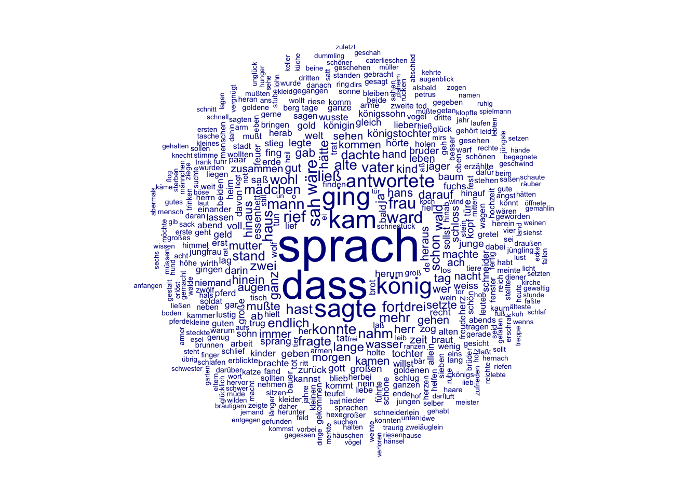
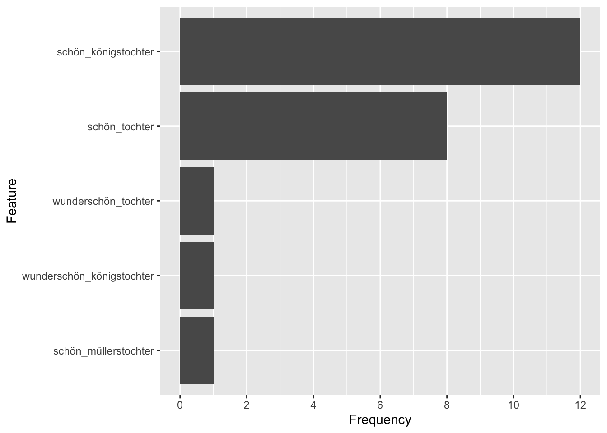

8 Textanalyse III: Wortfrequenzanalysen
Die Konstruktion von Geschlecht und Geschlechterrollen in europäischen Märchen wird seit den 1970er Jahren in zahlreichen Forschungsarbeiten untersucht (zum Beispiel von Marcia Lieberman 1972, Alessandra Levorato 2003, Simone Loleit und Liliane Schüller 2022). In den letzten beiden Jahrzehnten sind Märchen auch zum Gegenstand von Arbeiten aus den Digital Humanities geworden (so z.B. in den Arbeiten von Saif Mohammad 2011, Mark Finlayson 2012, Berenike Herrmann und Jana Lüdtke 2023). Eine Reihe von Digital Humanities Arbeiten haben sich explizit Geschlecht und Geschlechterrollen in Märchen gewidmet, so zum Beispiel:
- Toro Isaza, Paulina et al. (2023). Are Fairy Tales Fair? Analyzing Gender Bias in Temporal Narrative Event Chains of Children’s Fairy Tales, in: Proceedings of the 61st Annual Meeting of the Association for Computational Linguistics 1: Long Papers, pp. 6509-6531.
- Jorgensen, Jeana (2019). The Most Beautiful of All: A Quantitative Approach to Fairy-Tale Femininity, in: Journal of American Folklore 132 (523), pp. 36-60.
- Weingart, Scott and Jorgensen, Jeana (2013). Computational Analysis of the Body in European Fairy Tales, in: Literary and Linguistic Computing 28 (1), pp. 404-416.
In den nächsten beiden Wochen werden wir ein Korpus von Kinder- und Hausmärchen der Gebrüder Grimm aus dem Jahr 1857 im Hinblick auf die Darstellung verschiedener Märchencharaktere untersuchen. Dabei werden wir verschiedene Analysemethoden kennenlernen und kritisch beleuchten, inwieweit diese Methoden uns helfen können, bestimmte Muster in der Beschreibung von Märchencharakteren zu identifizieren. In diesem Kapitel werden wir zunächst Worthäufigkeiten und das gemeinsame Vorkommen verschiedener Wörter unabhängig von der Beziehung der Wörter zueinander betrachten. Wir werden dabei kritisch beleuchten, was die vorgestellten Analysemethoden leisten können und was nicht. Im Kapitel 9 werden wir dann konkreten Fragen nachgehen: Welche Charaktere kommen in den Märchen vor? Mit welchen Adjektiven werden diese beschrieben? Welche Verben werden mit ihnen assoziiert?
Verständnisfragen:
- Welche theoretischen Annahmen liegen unserer Forschungsfrage zugrunde?
- Wie wird die Fragestellung im Folgenden operationalisiert?
8.1 Märchenkorpus einlesen und Pakete installieren
Um unser Korpus in R einzulesen, müssen wir zuerst wieder das Arbeitsverzeichnis setzen:
# Arbeitsverzeichnis setzen: Setzt hier euren eigenen Pfad ein
setwd("/Users/gast/R-Seminar")
# Backslashes für Windows:
# setwd("C:\Users\gast\R-Seminar")Wie bereits vergangene Woche erläutert kann das Arbeitsverzeichnis auch über den Tab “Files” im Fenster unten rechts gesetzt werden. Navigiert euch dazu erst in den gewünschten Ordner, klickt dann auf “More” und “Set As Working Directory” (siehe Kapitel “Orientierung im RStudio”). Wählt dabei den Ordner als Arbeitsverzeichnis, in dem ihr den Ordner maerchen_alle gespeichert habt. Achtung: Zip-Ordner müsst ihr vorher entpacken!
Wenn ihr das Arbeitsverzeichnis gesetzt habt, könnt ihr die Dateien einlesen. Wir werden ganz am Ende unserer Analyse die Grimm-Märchen in der siebten Edition von 1857 mit den Märchen aus der ersten Edition von 1812/15 vergleichen, um einen möglichen Wandel über die Zeit zu identifizieren.
library(readtext)
# Märchen von 1857 und 1812/15 einlesen und Informationen aus dem Dateinamen extrahieren
maerchen_alle <- readtext("maerchen_alle/*.txt", docvarsfrom = "filenames", dvsep = "_", docvarnames = c("Titel", "Jahr"), encoding = "UTF-8")Bevor wir mit der Analyse starten können, müssen wir noch einige Pakete installieren, die wir brauchen werden:
install.packages(c("quanteda.textplots", "quanteda.textstats", "ggplot2", "plotly", "udpipe", "dplyr"))Die Pakete müssen wie bisher immer nur einmal am Anfang des Skripts geladen werden. Allerdings werden wir in den folgenden Abschnitten Funktionen aus vielen verschiedenen Paketen verwenden. Deswegen werden wir in diesem Kapitel ausnahmsweise Pakete erst dann laden, wenn sie gebraucht werden, sodass ihr in jeder Codezelle direkt erkennt, ob der Code Funktionen aus zusätzlichen Paketen enthält.
8.2 Corpus-Objekt erstellen und erste Preprocessingschritte
Wir werden in der Analyse verschiedene Methoden einmal auf das Korpus mit und einmal ohne Stoppwörter anwenden, denn je nach Fragestellung und Methode sind Stoppwörter mehr oder weniger interessant. Deswegen erstellen wir in diesem Abschnitt zwei verschiedene tokens-Objekte. Wir werden aber auch sehen, dass Textanalyse und Preprocessing eigentlich iterative Prozesse sind: Es kommt oft vor, dass bei der Analyse weitere Preprocessingschritte notwendig werden.
library(quanteda)
# Quanteda-corpus-Objekt erstellen
maerchen_corpus_alle <- corpus(maerchen_alle)
# Teilkorpus extrahieren
maerchen_corpus <- corpus_subset(maerchen_corpus_alle, Jahr == 1857)
# Quanteda tokens-Objekt erstellen ohne weiteres Preprocessing
maerchen_toks_raw <- tokens(maerchen_corpus)
# Quanteda-tokens-Objekt erstellen MIT Stoppwörtern
maerchen_toks <- tokens(maerchen_corpus, remove_punct = TRUE) %>%
tokens_tolower()
# Quanteda-tokens-Objekt erstellen OHNE Stoppwörter
maerchen_toks_rm <- tokens_remove(maerchen_toks, pattern = stopwords("de"))Wir haben jetzt also ein corpus-Objekt sowie zwei verschiedene tokens-Objekte (eins mit und eins ohne Stoppwörter), die wir in unserer Analyse verwenden können.
8.3 Worthäufigkeiten verstehen: absolute und relative Häufigkeiten
In diesem Abschnitt betrachten wir Worthäufigkeiten über das gesamte Korpus hinweg und vergleichen Worthäufigkeiten in verschiedenen Dokumenten miteinander. Dazu lernen wir drei verschiedene Maße kennen: absolute Häufigkeiten, relative Häufigkeiten und TF-IDF, die sogenannte Term Frequency-Inverse Document Frequency.
8.3.1 Absolute Häufigkeiten und das Zipf’sche Gesetz
Zunächst ist es sinnvoll, sich einen Überblick über das Korpus zu verschaffen. Aus der letzten Woche kennt ihr bereits die summary()-Funktion. Wenn dieser Funktion als Argument ein Quanteda Corpus-Objekt übergeben wird, liefert sie einen Dataframe mit der Anzahl von Types und Tokens zu jedem Text. Der Text wird dabei automatisch mit den Defaultargumenten tokenisiert.
## Corpus consisting of 194 documents, showing 194 documents:
##
## Text Types Tokens Sentences Titel Jahr
## Allerleirauh_1857.txt 617 2361 86 Allerleirauh 1857
## Armuth-und-Demuth-fuehren-zum-Himmel_1857.txt 252 517 22 Armuth-und-Demuth-fuehren-zum-Himmel 1857
## Aschenputtel_1857.txt 703 2851 105 Aschenputtel 1857
## Bruder-Lustig_1857.txt 950 4792 232 Bruder-Lustig 1857
## Bruederchen-und-Schwesterchen_1857.txt 691 2670 100 Bruederchen-und-Schwesterchen 1857
## Das-alte-Muetterchen_1857.txt 188 355 12 Das-alte-Muetterchen 1857
## Das-blaue-Licht_1857.txt 605 1929 78 Das-blaue-Licht 1857
## Das-Dietmarsische-Luegenmaerchen_1857.txt 132 211 9 Das-Dietmarsische-Luegenmaerchen 1857
## Das-eigensinnige-Kind_1857.txt 83 136 4 Das-eigensinnige-Kind 1857
## Das-Eselein_1857.txt 508 1420 58 Das-Eselein 1857
## Das-Hirtenbueblein_1857.txt 179 367 13 Das-Hirtenbueblein 1857
## Das-junggegluehte-Maennlein_1857.txt 288 561 19 Das-junggegluehte-Maennlein 1857
## Das-kluge-Grethel_1857.txt 368 1083 43 Das-kluge-Grethel 1857
## Das-Laemmchen-und-Fischchen_1857.txt 262 637 21 Das-Laemmchen-und-Fischchen 1857
## Das-Lumpengesindel_1857.txt 369 859 28 Das-Lumpengesindel 1857
## Das-Maedchen-ohne-Haende_1857.txt 686 2548 99 Das-Maedchen-ohne-Haende 1857
## Das-Maerchen-vom-Schlauraffenland_1857.txt 192 349 13 Das-Maerchen-vom-Schlauraffenland 1857
## Das-Meerhaeschen_1857.txt 447 1307 57 Das-Meerhaeschen 1857
## Das-Raethsel_1857.txt 466 1236 48 Das-Raethsel 1857
## Das-singende-springende-Loeweneckerchen_1857.txt 694 2560 73 Das-singende-springende-Loeweneckerchen 1857
## Das-tapfere-Schneiderlein_1857.txt 998 3607 146 Das-tapfere-Schneiderlein 1857
## Das-Todtenhemdchen_1857.txt 145 285 7 Das-Todtenhemdchen 1857
## Das-Waldhaus_1857.txt 606 2014 72 Das-Waldhaus 1857
## Das-Wasser-des-Lebens_1857.txt 663 2440 84 Das-Wasser-des-Lebens 1857
## Daumerlings-Wanderschaft_1857.txt 610 1767 74 Daumerlings-Wanderschaft 1857
## Daumesdick_1857.txt 743 2575 107 Daumesdick 1857
## Der-alte-Grossvater-und-der-Enkel_1857.txt 152 262 11 Der-alte-Grossvater-und-der-Enkel 1857
## Der-alte-Hildebrand_1857.txt 385 1620 43 Der-alte-Hildebrand 1857
## Der-alte-Sultan_1857.txt 400 938 34 Der-alte-Sultan 1857
## Der-arme-Junge-im-Grab_1857.txt 500 1347 58 Der-arme-Junge-im-Grab 1857
## Der-arme-Muellerbursch-und-das-Kaetzchen_1857.txt 506 1501 52 Der-arme-Muellerbursch-und-das-Kaetzchen 1857
## Der-Arme-und-der-Reiche_1857.txt 607 1802 62 Der-Arme-und-der-Reiche 1857
## Der-Baerenhaeuter_1857.txt 698 2179 81 Der-Baerenhaeuter 1857
## Der-Bauer-und-der-Teufel_1857.txt 192 405 19 Der-Bauer-und-der-Teufel 1857
## Der-Dreschflegel-vom-Himmel_1857.txt 199 394 11 Der-Dreschflegel-vom-Himmel 1857
## Der-Eisenhans_1857.txt 885 3502 149 Der-Eisenhans 1857
## Der-Eisenofen_1857.txt 595 2307 86 Der-Eisenofen 1857
## Der-faule-Heinz_1857.txt 462 1077 39 Der-faule-Heinz 1857
## Der-Frieder-und-das-Catherlieschen_1857.txt 749 2898 130 Der-Frieder-und-das-Catherlieschen 1857
## Der-Froschkoenig-oder-der-eiserne-Heinrich_1857.txt 497 1560 52 Der-Froschkoenig-oder-der-eiserne-Heinrich 1857
## Der-Fuchs-und-das-Pferd_1857.txt 236 537 17 Der-Fuchs-und-das-Pferd 1857
## Der-Fuchs-und-die-Frau-Gevatterin_1857.txt 207 399 13 Der-Fuchs-und-die-Frau-Gevatterin 1857
## Der-Fuchs-und-die-Gaense_1857.txt 141 258 11 Der-Fuchs-und-die-Gaense 1857
## Der-Fuchs-und-die-Katze_1857.txt 173 331 21 Der-Fuchs-und-die-Katze 1857
## Der-Geist-im-Glas_1857.txt 605 2054 75 Der-Geist-im-Glas 1857
## Der-gelernte-Jaeger_1857.txt 670 2443 80 Der-gelernte-Jaeger 1857
## Der-gescheidte-Hans_1857.txt 163 1318 166 Der-gescheidte-Hans 1857
## Der-gestohlene-Heller_1857.txt 179 359 13 Der-gestohlene-Heller 1857
## Der-Gevatter-Tod_1857.txt 477 1336 52 Der-Gevatter-Tod 1857
## Der-glaeserne-Sarg_1857.txt 957 2443 89 Der-glaeserne-Sarg 1857
## Der-goldene-Schluessel_1857.txt 120 192 9 Der-goldene-Schluessel 1857
## Der-goldene-Vogel_1857.txt 862 3285 126 Der-goldene-Vogel 1857
## Der-Grabhuegel_1857.txt 597 1608 71 Der-Grabhuegel 1857
## Der-gute-Handel_1857.txt 565 1926 70 Der-gute-Handel 1857
## Der-Hahnenbalken_1857.txt 155 288 13 Der-Hahnenbalken 1857
## Der-Hase-und-der-Igel_1857.txt 518 1523 68 Der-Hase-und-der-Igel 1857
## Der-heilige-Joseph-im-Walde_1857.txt 408 1282 58 Der-heilige-Joseph-im-Walde 1857
## Der-Herr-Gevatter_1857.txt 250 685 34 Der-Herr-Gevatter 1857
## Der-Hund-und-der-Sperling_1857.txt 384 1379 62 Der-Hund-und-der-Sperling 1857
## Der-Jude-im-Dorn_1857.txt 647 1995 76 Der-Jude-im-Dorn 1857
## Der-junge-Riese_1857.txt 790 3381 123 Der-junge-Riese 1857
## Der-kluge-Knecht_1857.txt 146 295 15 Der-kluge-Knecht 1857
## Der-Koenig-vom-goldenen-Berg_1857.txt 739 2635 94 Der-Koenig-vom-goldenen-Berg 1857
## Der-Koenigssohn-der-sich-vor-nichts-fuerchtet_1857.txt 685 2279 86 Der-Koenigssohn-der-sich-vor-nichts-fuerchtet 1857
## Der-Krautesel_1857.txt 833 2893 104 Der-Krautesel 1857
## Der-Liebste-Roland_1857.txt 530 1614 57 Der-Liebste-Roland 1857
## Der-Meisterdieb_1857.txt 975 3430 129 Der-Meisterdieb 1857
## Der-Mond_1857.txt 364 790 35 Der-Mond 1857
## Der-Nagel_1857.txt 146 291 15 Der-Nagel 1857
## Der-Raeuberbraeutigam_1857.txt 488 1488 63 Der-Raeuberbraeutigam 1857
## Der-Ranzen,-das-Huetlein-und-das-Hoernlein_1857.txt 773 2506 85 Der-Ranzen,-das-Huetlein-und-das-Hoernlein 1857
## Der-Riese-und-der-Schneider_1857.txt 324 838 45 Der-Riese-und-der-Schneider 1857
## Der-Schneider-im-Himmel_1857.txt 353 843 32 Der-Schneider-im-Himmel 1857
## Der-singende-Knochen_1857.txt 355 799 28 Der-singende-Knochen 1857
## Der-Sperling-und-seine-vier-Kinder_1857.txt 440 1018 39 Der-Sperling-und-seine-vier-Kinder 1857
## Der-starke-Hans_1857.txt 803 2879 99 Der-starke-Hans 1857
## Der-Stiefel-von-Bueffelleder_1857.txt 546 1598 67 Der-Stiefel-von-Bueffelleder 1857
## Der-suesse-Brei_1857.txt 132 266 6 Der-suesse-Brei 1857
## Der-Teufel-mit-den-drei-goldenen-Haaren_1857.txt 730 2958 129 Der-Teufel-mit-den-drei-goldenen-Haaren 1857
## Der-Teufel-und-seine-Grossmutter_1857.txt 477 1376 56 Der-Teufel-und-seine-Grossmutter 1857
## Der-treue-Johannes_1857.txt 861 3383 114 Der-treue-Johannes 1857
## Der-Trommler_1857.txt 1029 4223 180 Der-Trommler 1857
## Der-undankbare-Sohn_1857.txt 104 166 5 Der-undankbare-Sohn 1857
## Der-Wolf-und-der-Fuchs_1857.txt 291 812 31 Der-Wolf-und-der-Fuchs 1857
## Der-Wolf-und-der-Mensch_1857.txt 206 483 19 Der-Wolf-und-der-Mensch 1857
## Der-Wolf-und-die-sieben-jungen-Geislein_1857.txt 403 1191 50 Der-Wolf-und-die-sieben-jungen-Geislein 1857
## Der-wunderliche-Spielmann_1857.txt 374 1218 49 Der-wunderliche-Spielmann 1857
## Der-Zaunkoenig_1857.txt 478 1280 70 Der-Zaunkoenig 1857
## Der-Zaunkoenig-und-der-Baer_1857.txt 384 1026 36 Der-Zaunkoenig-und-der-Baer 1857
## Des-Herrn-und-des-Teufels-Gethier_1857.txt 206 369 15 Des-Herrn-und-des-Teufels-Gethier 1857
## Des-Teufels-russiger-Bruder_1857.txt 448 1392 47 Des-Teufels-russiger-Bruder 1857
## Die-alte-Bettelfrau_1857.txt 102 167 8 Die-alte-Bettelfrau 1857
## Die-Alte-im-Wald_1857.txt 361 1001 32 Die-Alte-im-Wald 1857
## Die-beiden-Wanderer_1857.txt 1198 4487 176 Die-beiden-Wanderer 1857
## Die-Bienenkoenigin_1857.txt 318 845 27 Die-Bienenkoenigin 1857
## Die-Boten-des-Todes_1857.txt 309 702 35 Die-Boten-des-Todes 1857
## Die-Brautschau_1857.txt 98 165 5 Die-Brautschau 1857
## Die-Bremer-Stadtmusikanten_1857.txt 528 1424 50 Die-Bremer-Stadtmusikanten 1857
## Die-Brosamen-auf-dem-Tisch_1857.txt 111 194 9 Die-Brosamen-auf-dem-Tisch 1857
## Die-drei-Brueder_1857.txt 309 728 21 Die-drei-Brueder 1857
## Die-drei-Faulen_1857.txt 124 254 6 Die-drei-Faulen 1857
## Die-drei-Federn_1857.txt 396 1104 44 Die-drei-Federn 1857
## Die-drei-Feldscherer_1857.txt 394 1114 47 Die-drei-Feldscherer 1857
## Die-drei-Glueckskinder_1857.txt 449 1064 36 Die-drei-Glueckskinder 1857
## Die-drei-gruenen-Zweige_1857.txt 409 1018 37 Die-drei-gruenen-Zweige 1857
## Die-drei-Handwerksburschen_1857.txt 438 1311 58 Die-drei-Handwerksburschen 1857
## Die-drei-Maennlein-im-Walde_1857.txt 642 2200 85 Die-drei-Maennlein-im-Walde 1857
## Die-drei-Schlangenblaetter_1857.txt 561 1560 53 Die-drei-Schlangenblaetter 1857
## Die-drei-Spinnerinnen_1857.txt 379 977 35 Die-drei-Spinnerinnen 1857
## Die-drei-Sprachen_1857.txt 405 1014 39 Die-drei-Sprachen 1857
## Die-Eule_1857.txt 438 895 30 Die-Eule 1857
## Die-faule-Spinnerin_1857.txt 305 827 29 Die-faule-Spinnerin 1857
## Die-Gaensehirtin-am-Brunnen_1857.txt 1142 4376 194 Die-Gaensehirtin-am-Brunnen 1857
## Die-Gaensemagd_1857.txt 678 2295 72 Die-Gaensemagd 1857
## Die-Geschenke-des-kleinen-Volkes_1857.txt 428 975 30 Die-Geschenke-des-kleinen-Volkes 1857
## Die-goldene-Gans_1857.txt 543 1706 54 Die-goldene-Gans 1857
## Die-Goldkinder_1857.txt 611 2183 81 Die-Goldkinder 1857
## Die-hagere-Liese_1857.txt 237 515 17 Die-hagere-Liese 1857
## Die-Haselruthe_1857.txt 135 217 7 Die-Haselruthe 1857
## Die-himmlische-Hochzeit_1857.txt 235 566 20 Die-himmlische-Hochzeit 1857
## Die-Hochzeit-der-Frau-Fuechsin_1857.txt 303 910 47 Die-Hochzeit-der-Frau-Fuechsin 1857
## Die-klare-Sonne-bringts-an-den-Tag_1857.txt 265 585 21 Die-klare-Sonne-bringts-an-den-Tag 1857
## Die-kluge-Bauerntochter_1857.txt 457 1519 50 Die-kluge-Bauerntochter 1857
## Die-kluge-Else_1857.txt 408 1564 62 Die-kluge-Else 1857
## Die-klugen-Leute_1857.txt 545 1752 75 Die-klugen-Leute 1857
## Die-Kornaehre_1857.txt 146 246 9 Die-Kornaehre 1857
## Die-Krystallkugel_1857.txt 458 1144 40 Die-Krystallkugel 1857
## Die-Lebenszeit_1857.txt 272 674 38 Die-Lebenszeit 1857
## Die-Nelke_1857.txt 558 1963 64 Die-Nelke 1857
## Die-Nixe-im-Teich_1857.txt 744 2335 99 Die-Nixe-im-Teich 1857
## Die-Rabe_1857.txt 603 2427 91 Die-Rabe 1857
## Die-Rose_1857.txt 104 183 7 Die-Rose 1857
## Die-Ruebe_1857.txt 471 1181 39 Die-Ruebe 1857
## Die-Schlickerlinge_1857.txt 121 191 8 Die-Schlickerlinge 1857
## Die-schoene-Katrinelje-und-Pif-Paf-Poltrie_1857.txt 116 500 45 Die-schoene-Katrinelje-und-Pif-Paf-Poltrie 1857
## Die-Scholle_1857.txt 145 265 14 Die-Scholle 1857
## Die-sechs-Diener_1857.txt 821 2911 103 Die-sechs-Diener 1857
## Die-sechs-Schwaene_1857.txt 652 2143 82 Die-sechs-Schwaene 1857
## Die-sieben-Raben_1857.txt 388 961 37 Die-sieben-Raben 1857
## Die-sieben-Schwaben_1857.txt 475 1126 41 Die-sieben-Schwaben 1857
## Die-Sternthaler_1857.txt 166 341 11 Die-Sternthaler 1857
## Die-ungleichen-Kinder-Evas_1857.txt 322 786 29 Die-ungleichen-Kinder-Evas 1857
## Die-vier-kunstreichen-Brueder_1857.txt 581 1739 63 Die-vier-kunstreichen-Brueder 1857
## Die-wahre-Braut_1857.txt 853 2838 116 Die-wahre-Braut 1857
## Die-Wassernixe_1857.txt 151 305 10 Die-Wassernixe 1857
## Die-weisse-Schlange_1857.txt 638 1705 60 Die-weisse-Schlange 1857
## Die-weisse-und-die-schwarze-Braut_1857.txt 518 1609 61 Die-weisse-und-die-schwarze-Braut 1857
## Die-Wichtelmaenner_1857.txt 459 1201 42 Die-Wichtelmaenner 1857
## Die-zertanzten-Schuhe_1857.txt 551 1549 57 Die-zertanzten-Schuhe 1857
## Die-zwei-Brueder_1857.txt 1533 9166 318 Die-zwei-Brueder 1857
## Die-zwoelf-Apostel_1857.txt 219 423 18 Die-zwoelf-Apostel 1857
## Die-zwoelf-Brueder_1857.txt 660 2178 77 Die-zwoelf-Brueder 1857
## Die-zwoelf-faulen-Knechte_1857.txt 466 1144 54 Die-zwoelf-faulen-Knechte 1857
## Die-zwoelf-Jaeger_1857.txt 394 1197 46 Die-zwoelf-Jaeger 1857
## Doctor-Allwissend_1857.txt 307 836 35 Doctor-Allwissend 1857
## Dornroeschen_1857.txt 511 1423 44 Dornroeschen 1857
## Einaeuglein,-Zweiaeuglein-und-Dreiaeuglein_1857.txt 694 2724 96 Einaeuglein,-Zweiaeuglein-und-Dreiaeuglein 1857
## Fitchers-Vogel_1857.txt 503 1434 57 Fitchers-Vogel 1857
## Frau-Holle_1857.txt 412 1269 42 Frau-Holle 1857
## Frau-Trude_1857.txt 166 349 17 Frau-Trude 1857
## Fundevogel_1857.txt 306 1059 42 Fundevogel 1857
## Gottes-Speise_1857.txt 148 256 8 Gottes-Speise 1857
## Haensel-und-Grethel_1857.txt 835 3231 127 Haensel-und-Grethel 1857
## Haesichenbraut_1857.txt 160 488 32 Haesichenbraut 1857
## Hans-heirathet_1857.txt 241 502 18 Hans-heirathet 1857
## Hans-im-Glueck_1857.txt 715 2309 93 Hans-im-Glueck 1857
## Hans-mein-Igel_1857.txt 552 2218 67 Hans-mein-Igel 1857
## Herr-Korbes_1857.txt 175 412 19 Herr-Korbes 1857
## Jorinde-und-Joringel_1857.txt 391 1017 44 Jorinde-und-Joringel 1857
## Jungfrau-Maleen_1857.txt 637 2204 100 Jungfrau-Maleen 1857
## Katze-und-Maus-in-Gesellschaft_1857.txt 414 1112 49 Katze-und-Maus-in-Gesellschaft 1857
## Koenig-Drosselbart_1857.txt 625 1883 81 Koenig-Drosselbart 1857
## Laeuschen-und-Floehchen_1857.txt 113 465 31 Laeuschen-und-Floehchen 1857
## Lieb-und-Leid-theilen_1857.txt 202 427 16 Lieb-und-Leid-theilen 1857
## Maehrchen-von-einem,-der-auszog-das-Fuerchten-zu-lernen_1857.txt 966 4284 189 Maehrchen-von-einem,-der-auszog-das-Fuerchten-zu-lernen 1857
## Maerchen-von-der-Unke_1857.txt 236 528 21 Maerchen-von-der-Unke 1857
## Marienkind_1857.txt 616 2049 67 Marienkind 1857
## Meister-Pfriem_1857.txt 592 1562 77 Meister-Pfriem 1857
## Muttergottesglaeschen_1857.txt 100 164 6 Muttergottesglaeschen 1857
## Raethselmaerchen_1857.txt 87 139 4 Raethselmaerchen 1857
## Rapunzel_1857.txt 518 1577 52 Rapunzel 1857
## Rohrdommel-und-Wiedehopf_1857.txt 139 273 17 Rohrdommel-und-Wiedehopf 1857
## Rothkaeppchen_1857.txt 499 1537 61 Rothkaeppchen 1857
## Rumpelstilzchen_1857.txt 404 1211 39 Rumpelstilzchen 1857
## Schneeweisschen-und-Rosenroth_1857.txt 877 2683 95 Schneeweisschen-und-Rosenroth 1857
## Sechse-kommen-durch-die-ganze-Welt_1857.txt 671 2274 78 Sechse-kommen-durch-die-ganze-Welt 1857
## Simeliberg_1857.txt 338 889 31 Simeliberg 1857
## Sneewittchen_1857.txt 814 3436 142 Sneewittchen 1857
## Spindel,-Weberschiffchen-und-Nadel_1857.txt 430 1149 43 Spindel,-Weberschiffchen-und-Nadel 1857
## Strohhalm,-Kohle-und-Bohne_1857.txt 269 566 22 Strohhalm,-Kohle-und-Bohne 1857
## Tischchen-deck-dich,-Goldesel,-und-Knueppel-aus-dem-Sack_1857.txt 945 4290 183 Tischchen-deck-dich,-Goldesel,-und-Knueppel-aus-dem-Sack 1857
## Vom-klugen-Schneiderlein_1857.txt 470 1301 50 Vom-klugen-Schneiderlein 1857
## Von-dem-Maeuschen,-Voegelchen-und-der-Bratwurst_1857.txt 297 648 22 Von-dem-Maeuschen,-Voegelchen-und-der-Bratwurst 1857
## Von-dem-Tode-des-Huehnchens_1857.txt 243 713 26 Von-dem-Tode-des-Huehnchens 1857Um schnell den längsten und kürzesten Text zu finden, können wir einfach wieder die Funktionen max() und min() anwenden (s. Kapitel 5.5), oder den Dataframe absteigend nach der Spalte Types bzw. Tokens sortieren:
## Text Types Tokens Sentences Titel Jahr
## 150 Die-zwei-Brueder_1857.txt 1533 9166 318 Die-zwei-Brueder 1857
## 4 Bruder-Lustig_1857.txt 950 4792 232 Bruder-Lustig 1857
## 94 Die-beiden-Wanderer_1857.txt 1198 4487 176 Die-beiden-Wanderer 1857
## 113 Die-Gaensehirtin-am-Brunnen_1857.txt 1142 4376 194 Die-Gaensehirtin-am-Brunnen 1857
## 191 Tischchen-deck-dich,-Goldesel,-und-Knueppel-aus-dem-Sack_1857.txt 945 4290 183 Tischchen-deck-dich,-Goldesel,-und-Knueppel-aus-dem-Sack 1857
## 175 Maehrchen-von-einem,-der-auszog-das-Fuerchten-zu-lernen_1857.txt 966 4284 189 Maehrchen-von-einem,-der-auszog-das-Fuerchten-zu-lernen 1857
## 82 Der-Trommler_1857.txt 1029 4223 180 Der-Trommler 1857
## 21 Das-tapfere-Schneiderlein_1857.txt 998 3607 146 Das-tapfere-Schneiderlein 1857
## 36 Der-Eisenhans_1857.txt 885 3502 149 Der-Eisenhans 1857
## 188 Sneewittchen_1857.txt 814 3436 142 Sneewittchen 1857
## 67 Der-Meisterdieb_1857.txt 975 3430 129 Der-Meisterdieb 1857
## 81 Der-treue-Johannes_1857.txt 861 3383 114 Der-treue-Johannes 1857
## 61 Der-junge-Riese_1857.txt 790 3381 123 Der-junge-Riese 1857
## 52 Der-goldene-Vogel_1857.txt 862 3285 126 Der-goldene-Vogel 1857
## 163 Haensel-und-Grethel_1857.txt 835 3231 127 Haensel-und-Grethel 1857
## 79 Der-Teufel-mit-den-drei-goldenen-Haaren_1857.txt 730 2958 129 Der-Teufel-mit-den-drei-goldenen-Haaren 1857
## 137 Die-sechs-Diener_1857.txt 821 2911 103 Die-sechs-Diener 1857
## 39 Der-Frieder-und-das-Catherlieschen_1857.txt 749 2898 130 Der-Frieder-und-das-Catherlieschen 1857
## 65 Der-Krautesel_1857.txt 833 2893 104 Der-Krautesel 1857
## 76 Der-starke-Hans_1857.txt 803 2879 99 Der-starke-Hans 1857
## 3 Aschenputtel_1857.txt 703 2851 105 Aschenputtel 1857
## 144 Die-wahre-Braut_1857.txt 853 2838 116 Die-wahre-Braut 1857
## 157 Einaeuglein,-Zweiaeuglein-und-Dreiaeuglein_1857.txt 694 2724 96 Einaeuglein,-Zweiaeuglein-und-Dreiaeuglein 1857
## 185 Schneeweisschen-und-Rosenroth_1857.txt 877 2683 95 Schneeweisschen-und-Rosenroth 1857
## 5 Bruederchen-und-Schwesterchen_1857.txt 691 2670 100 Bruederchen-und-Schwesterchen 1857
## 63 Der-Koenig-vom-goldenen-Berg_1857.txt 739 2635 94 Der-Koenig-vom-goldenen-Berg 1857
## 26 Daumesdick_1857.txt 743 2575 107 Daumesdick 1857
## 20 Das-singende-springende-Loeweneckerchen_1857.txt 694 2560 73 Das-singende-springende-Loeweneckerchen 1857
## 16 Das-Maedchen-ohne-Haende_1857.txt 686 2548 99 Das-Maedchen-ohne-Haende 1857
## 71 Der-Ranzen,-das-Huetlein-und-das-Hoernlein_1857.txt 773 2506 85 Der-Ranzen,-das-Huetlein-und-das-Hoernlein 1857
## 46 Der-gelernte-Jaeger_1857.txt 670 2443 80 Der-gelernte-Jaeger 1857
## 50 Der-glaeserne-Sarg_1857.txt 957 2443 89 Der-glaeserne-Sarg 1857
## 24 Das-Wasser-des-Lebens_1857.txt 663 2440 84 Das-Wasser-des-Lebens 1857
## 131 Die-Rabe_1857.txt 603 2427 91 Die-Rabe 1857
## 1 Allerleirauh_1857.txt 617 2361 86 Allerleirauh 1857
## 130 Die-Nixe-im-Teich_1857.txt 744 2335 99 Die-Nixe-im-Teich 1857
## 166 Hans-im-Glueck_1857.txt 715 2309 93 Hans-im-Glueck 1857
## 37 Der-Eisenofen_1857.txt 595 2307 86 Der-Eisenofen 1857
## 114 Die-Gaensemagd_1857.txt 678 2295 72 Die-Gaensemagd 1857
## 64 Der-Koenigssohn-der-sich-vor-nichts-fuerchtet_1857.txt 685 2279 86 Der-Koenigssohn-der-sich-vor-nichts-fuerchtet 1857
## 186 Sechse-kommen-durch-die-ganze-Welt_1857.txt 671 2274 78 Sechse-kommen-durch-die-ganze-Welt 1857
## 167 Hans-mein-Igel_1857.txt 552 2218 67 Hans-mein-Igel 1857
## 170 Jungfrau-Maleen_1857.txt 637 2204 100 Jungfrau-Maleen 1857
## 107 Die-drei-Maennlein-im-Walde_1857.txt 642 2200 85 Die-drei-Maennlein-im-Walde 1857
## 117 Die-Goldkinder_1857.txt 611 2183 81 Die-Goldkinder 1857
## 33 Der-Baerenhaeuter_1857.txt 698 2179 81 Der-Baerenhaeuter 1857
## 152 Die-zwoelf-Brueder_1857.txt 660 2178 77 Die-zwoelf-Brueder 1857
## 138 Die-sechs-Schwaene_1857.txt 652 2143 82 Die-sechs-Schwaene 1857
## 45 Der-Geist-im-Glas_1857.txt 605 2054 75 Der-Geist-im-Glas 1857
## 177 Marienkind_1857.txt 616 2049 67 Marienkind 1857
## 23 Das-Waldhaus_1857.txt 606 2014 72 Das-Waldhaus 1857
## 60 Der-Jude-im-Dorn_1857.txt 647 1995 76 Der-Jude-im-Dorn 1857
## 129 Die-Nelke_1857.txt 558 1963 64 Die-Nelke 1857
## 7 Das-blaue-Licht_1857.txt 605 1929 78 Das-blaue-Licht 1857
## 54 Der-gute-Handel_1857.txt 565 1926 70 Der-gute-Handel 1857
## 172 Koenig-Drosselbart_1857.txt 625 1883 81 Koenig-Drosselbart 1857
## 32 Der-Arme-und-der-Reiche_1857.txt 607 1802 62 Der-Arme-und-der-Reiche 1857
## 25 Daumerlings-Wanderschaft_1857.txt 610 1767 74 Daumerlings-Wanderschaft 1857
## 125 Die-klugen-Leute_1857.txt 545 1752 75 Die-klugen-Leute 1857
## 143 Die-vier-kunstreichen-Brueder_1857.txt 581 1739 63 Die-vier-kunstreichen-Brueder 1857
## 116 Die-goldene-Gans_1857.txt 543 1706 54 Die-goldene-Gans 1857
## 146 Die-weisse-Schlange_1857.txt 638 1705 60 Die-weisse-Schlange 1857
## 28 Der-alte-Hildebrand_1857.txt 385 1620 43 Der-alte-Hildebrand 1857
## 66 Der-Liebste-Roland_1857.txt 530 1614 57 Der-Liebste-Roland 1857
## 147 Die-weisse-und-die-schwarze-Braut_1857.txt 518 1609 61 Die-weisse-und-die-schwarze-Braut 1857
## 53 Der-Grabhuegel_1857.txt 597 1608 71 Der-Grabhuegel 1857
## 77 Der-Stiefel-von-Bueffelleder_1857.txt 546 1598 67 Der-Stiefel-von-Bueffelleder 1857
## 181 Rapunzel_1857.txt 518 1577 52 Rapunzel 1857
## 124 Die-kluge-Else_1857.txt 408 1564 62 Die-kluge-Else 1857
## 178 Meister-Pfriem_1857.txt 592 1562 77 Meister-Pfriem 1857
## 40 Der-Froschkoenig-oder-der-eiserne-Heinrich_1857.txt 497 1560 52 Der-Froschkoenig-oder-der-eiserne-Heinrich 1857
## 108 Die-drei-Schlangenblaetter_1857.txt 561 1560 53 Die-drei-Schlangenblaetter 1857
## 149 Die-zertanzten-Schuhe_1857.txt 551 1549 57 Die-zertanzten-Schuhe 1857
## 183 Rothkaeppchen_1857.txt 499 1537 61 Rothkaeppchen 1857
## 56 Der-Hase-und-der-Igel_1857.txt 518 1523 68 Der-Hase-und-der-Igel 1857
## 123 Die-kluge-Bauerntochter_1857.txt 457 1519 50 Die-kluge-Bauerntochter 1857
## 31 Der-arme-Muellerbursch-und-das-Kaetzchen_1857.txt 506 1501 52 Der-arme-Muellerbursch-und-das-Kaetzchen 1857
## 70 Der-Raeuberbraeutigam_1857.txt 488 1488 63 Der-Raeuberbraeutigam 1857
## 158 Fitchers-Vogel_1857.txt 503 1434 57 Fitchers-Vogel 1857
## 98 Die-Bremer-Stadtmusikanten_1857.txt 528 1424 50 Die-Bremer-Stadtmusikanten 1857
## 156 Dornroeschen_1857.txt 511 1423 44 Dornroeschen 1857
## 10 Das-Eselein_1857.txt 508 1420 58 Das-Eselein 1857
## 91 Des-Teufels-russiger-Bruder_1857.txt 448 1392 47 Des-Teufels-russiger-Bruder 1857
## 59 Der-Hund-und-der-Sperling_1857.txt 384 1379 62 Der-Hund-und-der-Sperling 1857
## 80 Der-Teufel-und-seine-Grossmutter_1857.txt 477 1376 56 Der-Teufel-und-seine-Grossmutter 1857
## 30 Der-arme-Junge-im-Grab_1857.txt 500 1347 58 Der-arme-Junge-im-Grab 1857
## 49 Der-Gevatter-Tod_1857.txt 477 1336 52 Der-Gevatter-Tod 1857
## 47 Der-gescheidte-Hans_1857.txt 163 1318 166 Der-gescheidte-Hans 1857
## 106 Die-drei-Handwerksburschen_1857.txt 438 1311 58 Die-drei-Handwerksburschen 1857
## 18 Das-Meerhaeschen_1857.txt 447 1307 57 Das-Meerhaeschen 1857
## 192 Vom-klugen-Schneiderlein_1857.txt 470 1301 50 Vom-klugen-Schneiderlein 1857
## 57 Der-heilige-Joseph-im-Walde_1857.txt 408 1282 58 Der-heilige-Joseph-im-Walde 1857
## 88 Der-Zaunkoenig_1857.txt 478 1280 70 Der-Zaunkoenig 1857
## 159 Frau-Holle_1857.txt 412 1269 42 Frau-Holle 1857
## 19 Das-Raethsel_1857.txt 466 1236 48 Das-Raethsel 1857
## 87 Der-wunderliche-Spielmann_1857.txt 374 1218 49 Der-wunderliche-Spielmann 1857
## 184 Rumpelstilzchen_1857.txt 404 1211 39 Rumpelstilzchen 1857
## 148 Die-Wichtelmaenner_1857.txt 459 1201 42 Die-Wichtelmaenner 1857
## 154 Die-zwoelf-Jaeger_1857.txt 394 1197 46 Die-zwoelf-Jaeger 1857
## 86 Der-Wolf-und-die-sieben-jungen-Geislein_1857.txt 403 1191 50 Der-Wolf-und-die-sieben-jungen-Geislein 1857
## 133 Die-Ruebe_1857.txt 471 1181 39 Die-Ruebe 1857
## 189 Spindel,-Weberschiffchen-und-Nadel_1857.txt 430 1149 43 Spindel,-Weberschiffchen-und-Nadel 1857
## 127 Die-Krystallkugel_1857.txt 458 1144 40 Die-Krystallkugel 1857
## 153 Die-zwoelf-faulen-Knechte_1857.txt 466 1144 54 Die-zwoelf-faulen-Knechte 1857
## 140 Die-sieben-Schwaben_1857.txt 475 1126 41 Die-sieben-Schwaben 1857
## 103 Die-drei-Feldscherer_1857.txt 394 1114 47 Die-drei-Feldscherer 1857
## 171 Katze-und-Maus-in-Gesellschaft_1857.txt 414 1112 49 Katze-und-Maus-in-Gesellschaft 1857
## 102 Die-drei-Federn_1857.txt 396 1104 44 Die-drei-Federn 1857
## 13 Das-kluge-Grethel_1857.txt 368 1083 43 Das-kluge-Grethel 1857
## 38 Der-faule-Heinz_1857.txt 462 1077 39 Der-faule-Heinz 1857
## 104 Die-drei-Glueckskinder_1857.txt 449 1064 36 Die-drei-Glueckskinder 1857
## 161 Fundevogel_1857.txt 306 1059 42 Fundevogel 1857
## 89 Der-Zaunkoenig-und-der-Baer_1857.txt 384 1026 36 Der-Zaunkoenig-und-der-Baer 1857
## 75 Der-Sperling-und-seine-vier-Kinder_1857.txt 440 1018 39 Der-Sperling-und-seine-vier-Kinder 1857
## 105 Die-drei-gruenen-Zweige_1857.txt 409 1018 37 Die-drei-gruenen-Zweige 1857
## 169 Jorinde-und-Joringel_1857.txt 391 1017 44 Jorinde-und-Joringel 1857
## 110 Die-drei-Sprachen_1857.txt 405 1014 39 Die-drei-Sprachen 1857
## 93 Die-Alte-im-Wald_1857.txt 361 1001 32 Die-Alte-im-Wald 1857
## 109 Die-drei-Spinnerinnen_1857.txt 379 977 35 Die-drei-Spinnerinnen 1857
## 115 Die-Geschenke-des-kleinen-Volkes_1857.txt 428 975 30 Die-Geschenke-des-kleinen-Volkes 1857
## 139 Die-sieben-Raben_1857.txt 388 961 37 Die-sieben-Raben 1857
## 29 Der-alte-Sultan_1857.txt 400 938 34 Der-alte-Sultan 1857
## 121 Die-Hochzeit-der-Frau-Fuechsin_1857.txt 303 910 47 Die-Hochzeit-der-Frau-Fuechsin 1857
## 111 Die-Eule_1857.txt 438 895 30 Die-Eule 1857
## 187 Simeliberg_1857.txt 338 889 31 Simeliberg 1857
## 15 Das-Lumpengesindel_1857.txt 369 859 28 Das-Lumpengesindel 1857
## 95 Die-Bienenkoenigin_1857.txt 318 845 27 Die-Bienenkoenigin 1857
## 73 Der-Schneider-im-Himmel_1857.txt 353 843 32 Der-Schneider-im-Himmel 1857
## 72 Der-Riese-und-der-Schneider_1857.txt 324 838 45 Der-Riese-und-der-Schneider 1857
## 155 Doctor-Allwissend_1857.txt 307 836 35 Doctor-Allwissend 1857
## 112 Die-faule-Spinnerin_1857.txt 305 827 29 Die-faule-Spinnerin 1857
## 84 Der-Wolf-und-der-Fuchs_1857.txt 291 812 31 Der-Wolf-und-der-Fuchs 1857
## 74 Der-singende-Knochen_1857.txt 355 799 28 Der-singende-Knochen 1857
## 68 Der-Mond_1857.txt 364 790 35 Der-Mond 1857
## 142 Die-ungleichen-Kinder-Evas_1857.txt 322 786 29 Die-ungleichen-Kinder-Evas 1857
## 100 Die-drei-Brueder_1857.txt 309 728 21 Die-drei-Brueder 1857
## 194 Von-dem-Tode-des-Huehnchens_1857.txt 243 713 26 Von-dem-Tode-des-Huehnchens 1857
## 96 Die-Boten-des-Todes_1857.txt 309 702 35 Die-Boten-des-Todes 1857
## 58 Der-Herr-Gevatter_1857.txt 250 685 34 Der-Herr-Gevatter 1857
## 128 Die-Lebenszeit_1857.txt 272 674 38 Die-Lebenszeit 1857
## 193 Von-dem-Maeuschen,-Voegelchen-und-der-Bratwurst_1857.txt 297 648 22 Von-dem-Maeuschen,-Voegelchen-und-der-Bratwurst 1857
## 14 Das-Laemmchen-und-Fischchen_1857.txt 262 637 21 Das-Laemmchen-und-Fischchen 1857
## 122 Die-klare-Sonne-bringts-an-den-Tag_1857.txt 265 585 21 Die-klare-Sonne-bringts-an-den-Tag 1857
## 120 Die-himmlische-Hochzeit_1857.txt 235 566 20 Die-himmlische-Hochzeit 1857
## 190 Strohhalm,-Kohle-und-Bohne_1857.txt 269 566 22 Strohhalm,-Kohle-und-Bohne 1857
## 12 Das-junggegluehte-Maennlein_1857.txt 288 561 19 Das-junggegluehte-Maennlein 1857
## 41 Der-Fuchs-und-das-Pferd_1857.txt 236 537 17 Der-Fuchs-und-das-Pferd 1857
## 176 Maerchen-von-der-Unke_1857.txt 236 528 21 Maerchen-von-der-Unke 1857
## 2 Armuth-und-Demuth-fuehren-zum-Himmel_1857.txt 252 517 22 Armuth-und-Demuth-fuehren-zum-Himmel 1857
## 118 Die-hagere-Liese_1857.txt 237 515 17 Die-hagere-Liese 1857
## 165 Hans-heirathet_1857.txt 241 502 18 Hans-heirathet 1857
## 135 Die-schoene-Katrinelje-und-Pif-Paf-Poltrie_1857.txt 116 500 45 Die-schoene-Katrinelje-und-Pif-Paf-Poltrie 1857
## 164 Haesichenbraut_1857.txt 160 488 32 Haesichenbraut 1857
## 85 Der-Wolf-und-der-Mensch_1857.txt 206 483 19 Der-Wolf-und-der-Mensch 1857
## 173 Laeuschen-und-Floehchen_1857.txt 113 465 31 Laeuschen-und-Floehchen 1857
## 174 Lieb-und-Leid-theilen_1857.txt 202 427 16 Lieb-und-Leid-theilen 1857
## 151 Die-zwoelf-Apostel_1857.txt 219 423 18 Die-zwoelf-Apostel 1857
## 168 Herr-Korbes_1857.txt 175 412 19 Herr-Korbes 1857
## 34 Der-Bauer-und-der-Teufel_1857.txt 192 405 19 Der-Bauer-und-der-Teufel 1857
## 42 Der-Fuchs-und-die-Frau-Gevatterin_1857.txt 207 399 13 Der-Fuchs-und-die-Frau-Gevatterin 1857
## 35 Der-Dreschflegel-vom-Himmel_1857.txt 199 394 11 Der-Dreschflegel-vom-Himmel 1857
## 90 Des-Herrn-und-des-Teufels-Gethier_1857.txt 206 369 15 Des-Herrn-und-des-Teufels-Gethier 1857
## 11 Das-Hirtenbueblein_1857.txt 179 367 13 Das-Hirtenbueblein 1857
## 48 Der-gestohlene-Heller_1857.txt 179 359 13 Der-gestohlene-Heller 1857
## 6 Das-alte-Muetterchen_1857.txt 188 355 12 Das-alte-Muetterchen 1857
## 17 Das-Maerchen-vom-Schlauraffenland_1857.txt 192 349 13 Das-Maerchen-vom-Schlauraffenland 1857
## 160 Frau-Trude_1857.txt 166 349 17 Frau-Trude 1857
## 141 Die-Sternthaler_1857.txt 166 341 11 Die-Sternthaler 1857
## 44 Der-Fuchs-und-die-Katze_1857.txt 173 331 21 Der-Fuchs-und-die-Katze 1857
## 145 Die-Wassernixe_1857.txt 151 305 10 Die-Wassernixe 1857
## 62 Der-kluge-Knecht_1857.txt 146 295 15 Der-kluge-Knecht 1857
## 69 Der-Nagel_1857.txt 146 291 15 Der-Nagel 1857
## 55 Der-Hahnenbalken_1857.txt 155 288 13 Der-Hahnenbalken 1857
## 22 Das-Todtenhemdchen_1857.txt 145 285 7 Das-Todtenhemdchen 1857
## 182 Rohrdommel-und-Wiedehopf_1857.txt 139 273 17 Rohrdommel-und-Wiedehopf 1857
## 78 Der-suesse-Brei_1857.txt 132 266 6 Der-suesse-Brei 1857
## 136 Die-Scholle_1857.txt 145 265 14 Die-Scholle 1857
## 27 Der-alte-Grossvater-und-der-Enkel_1857.txt 152 262 11 Der-alte-Grossvater-und-der-Enkel 1857
## 43 Der-Fuchs-und-die-Gaense_1857.txt 141 258 11 Der-Fuchs-und-die-Gaense 1857
## 162 Gottes-Speise_1857.txt 148 256 8 Gottes-Speise 1857
## 101 Die-drei-Faulen_1857.txt 124 254 6 Die-drei-Faulen 1857
## 126 Die-Kornaehre_1857.txt 146 246 9 Die-Kornaehre 1857
## 119 Die-Haselruthe_1857.txt 135 217 7 Die-Haselruthe 1857
## 8 Das-Dietmarsische-Luegenmaerchen_1857.txt 132 211 9 Das-Dietmarsische-Luegenmaerchen 1857
## 99 Die-Brosamen-auf-dem-Tisch_1857.txt 111 194 9 Die-Brosamen-auf-dem-Tisch 1857
## 51 Der-goldene-Schluessel_1857.txt 120 192 9 Der-goldene-Schluessel 1857
## 134 Die-Schlickerlinge_1857.txt 121 191 8 Die-Schlickerlinge 1857
## 132 Die-Rose_1857.txt 104 183 7 Die-Rose 1857
## 92 Die-alte-Bettelfrau_1857.txt 102 167 8 Die-alte-Bettelfrau 1857
## 83 Der-undankbare-Sohn_1857.txt 104 166 5 Der-undankbare-Sohn 1857
## 97 Die-Brautschau_1857.txt 98 165 5 Die-Brautschau 1857
## 179 Muttergottesglaeschen_1857.txt 100 164 6 Muttergottesglaeschen 1857
## 180 Raethselmaerchen_1857.txt 87 139 4 Raethselmaerchen 1857
## 9 Das-eigensinnige-Kind_1857.txt 83 136 4 Das-eigensinnige-Kind 1857Um uns einen visuellen Überblick zu verschaffen, können wir die Tokenanzahl auch visualisieren. Dazu verwenden wir das Paket ggplot2, welches spezialisierte Funktionen zur Datenvisualisierung bietet.
Grafiken erstellen mit ggplot2
Die Syntax zur Erstellung von Grafiken mit ggplot2 folgt einem eigenen Design-Prinzip, das nach dem Titel des zugrundeliegenden Werks “Grammar of Graphics” genannt wird. Diese “Grammatik” legt fest, wie die einzelnen Bestandteile einer Grafik beschrieben und konstruiert werden können. Konkret bedeutet das, dass ggplot2-Grafiken immer als mehrere, übereinanderliegende Ebenen erstellt werden, die mit einem +-Operator verknüpft werden: Die erste Ebene ist dabei immer ein Datenobjekt, das mit der Funktion ggplot() erzeugt wird. Welche Ebenen es genau gibt könnt ihr in den ggplot2-Dokumentationsseiten nachlesen. Einen leicht verständlichen Einstieg in die Grammar of Graphics und ggplot2 bietet dieser Artikel von Dipanjan Sarkar. Einen tieferen Einblick bietet dieser Artikel von Hadley Wickham.
Bei der Erstellung von Visualisierungen für quanteda-Objekte ist wichtig zu beachten, dass die Funktion ggplot() als Input einen Dataframe erwartet. Das Objekt token_info ist bereits ein Dataframe und kann direkt als Argument der ggplot()-Funktion übergeben werden. Als zusätzliches Argument geben wir mithilfe der Funktion aes() ein Mapping (“Ästhetik”) für das Datenobjekt an, welches die Dimensionen der Daten bestimmt. Es legt fest, welche Spalte des Dataframes auf welcher Achse des Koordinatensystems abgebildet werden soll. Alle weiteren Ebenen werden dem Datenobjekt mithilfe des +-Operators angefügt: Zunächst ein geometrisches Objekt (“geom”), das bestimmt, dass die Datenpunkte als Punkte dargestellt werden sollen, nicht etwa als Säulen oder Linien (also als geom_point() statt geom_col() oder geom_line()). Die restlichen drei Ebenen dienen dazu, das Aussehen des Plots anzupassen: Es wird mit theme_bw() eine Designvorlage gewählt und anschließend mit theme() angepasst. ggtitle() bestimmt den Titel des Plots, und labs() legt die Beschriftung der Achsen fest.
library(ggplot2)
options(scipen=999)
summary_plot <- ggplot(data=token_info, mapping=aes(x=Titel, y=Tokens)) +
geom_point(alpha=0.6) +
theme_bw() +
theme(axis.text.x = element_text(angle = 90, vjust = 0.5, hjust=1, size=4)) +
ggtitle("Anzahl Tokens / Text") +
labs(x="Text", y="Anzahl Tokens")Die Grafiken, die mit ggplot2 erstellt werden, sind praktischerweise kompatibel mit dem Paket plotly, das darauf spezialisiert ist, ggplot-Grafiken in interaktive Grafiken umzuwandeln:
Die Funktion layout() passt die Position der x-Achsen-Beschriftung auf der interaktiven Grafik an.
Verständnisfragen:
- Bewertet das Diagramm: Welche Informationen könnt ihr daraus entnehmen?
- Eignet sich das Diagramm, um einen Überblick über die Verteilung der Tokens in unserem Korpus zu verschaffen?
Wenn man im Plot-Fenster den Cursor über die Visualisierung bewegt, werden die x- und y-Werte zu den einzelnen Datenpunkten automatisch angezeigt. Der Grafik können wir entnehmen, dass das Märchen “Die zwei Brüder” mit einer Tokenanzahl von 9265 das mit Abstand längste Märchen ist, und dass die meisten Märchen weniger als 2500 Tokens zu haben scheinen. Das ist eine nützliche Information, aber die Visualisierung ist sehr unübersichtlich, da die Titel auf der x-Achse erst durch Markieren der einzelnen Datenpunkte sichtbar werden. Die manuelle Durchsicht der Häufigkeiten mithilfe dieses Diagramms ist deswegen unpraktisch. Am besten wäre es, wenn wir auf einen Blick sehen könnten, wie stark die Tokenanzahl der Texte in unserem Korpus variiert, ob es besonders lange Texte gibt, und wie viele Tokens die meisten Texte haben. So einen zusammenfassenden Blick auf unser Korpus bietet ein Boxplot:

Verständnisfragen:
- Beschreibt die Verteilung der Tokens in unserem Korpus anhand des Boxplots. Falls ihr nicht wisst, was ein Boxplot ist, ist an dieser Stelle Eigenrecherche gefordert, in diesem Fall hilft sogar Wikipedia weiter.
Als nächstes schauen wir uns an, welche Tokens denn in unserem Korpus am häufigsten vorkommen. Dazu erstellen wir zunächst eine Document-Feature-Matrix (DFM), und zwar zunächst aus dem tokens-Objekt mit Stoppwörtern, und lassen uns anschließend mit der quanteda-Funktion topfeatures() einen Überblick über die häufigsten Tokens ausgeben:
maerchen_dfm <- dfm(maerchen_toks)
# schneller Überblick über die 100 häufigsten Tokens
topfeatures(maerchen_dfm, n=100)## und der die er sie das den in es ich so da zu nicht ein aber sich dem war als auf du mit sprach ihm dass an wie ihr ihn was eine einen hatte ist von wieder mir kam wenn ging sagte auch aus sein könig noch nun wollte will vor nach antwortete seine dich mich dir sah im einem nichts wo nur hat ward wir wäre einmal waren rief frau zum um bei habe mein bis doch dann über alles am des mann alle konnte fort ließ vater haus für haben alte sollte hast nahm damit andern seinen mädchen
## 11984 6734 5988 4977 4666 3632 2980 2955 2898 2746 2575 2559 2525 2488 2386 2316 2188 2144 2104 1962 1943 1938 1750 1684 1552 1418 1385 1297 1250 1147 1089 1082 1056 1024 1006 939 893 808 798 790 790 788 778 745 734 706 693 692 685 679 613 581 530 528 511 497 479 477 471 468 449 446 439 438 438 431 423 418 416 415 409 403 400 400 399 397 396 394 391 383 379 377 376 372 367 363 362 361 352 346 343 342 338 337 332 328 324 323 322 317Diese Übersicht zeigt, dass die häufigsten Wörter in unserem Korpus anscheinend Funktionswörter wie “und”, “der” oder “es” sind. Warum ist das so? Handelt es sich dabei um eine besondere Eigenschaft von Märchentexten, von unserem konkreten Korpus oder gar nur von einigen wenigen Texten in unserem Korpus, in denen zufällig besonders viele Funktionswörter vorkommen?
Die Funktion textstat_frequency() liefert detaillierte Informationen zu den 100 häufigsten Tokens als Dataframe. Neben dem Vorkommen der einzelnen Tokens gibt der Dataframe auch an, in wie vielen Texten jedes Token vorkommt:
library("quanteda.textstats")
# Detaillierte Informationen zu den 100 häufigsten Tokens
tstat_freq <- textstat_frequency(maerchen_dfm, n = 100)
tstat_freq## feature frequency rank docfreq group
## 1 und 11984 1 193 all
## 2 der 6734 2 193 all
## 3 die 5988 3 190 all
## 4 er 4977 4 182 all
## 5 sie 4666 5 184 all
## 6 das 3632 6 191 all
## 7 den 2980 7 185 all
## 8 in 2955 8 193 all
## 9 es 2898 9 186 all
## 10 ich 2746 10 176 all
## 11 so 2575 11 191 all
## 12 da 2559 12 185 all
## 13 zu 2525 13 184 all
## 14 nicht 2488 14 181 all
## 15 ein 2386 15 188 all
## 16 aber 2316 16 183 all
## 17 sich 2188 17 182 all
## 18 dem 2144 18 181 all
## 19 war 2104 19 182 all
## 20 als 1962 20 177 all
## 21 auf 1943 21 183 all
## 22 du 1938 22 166 all
## 23 mit 1750 23 181 all
## 24 sprach 1684 24 176 all
## 25 ihm 1552 25 174 all
## 26 dass 1418 26 176 all
## 27 an 1385 27 177 all
## 28 wie 1297 28 184 all
## 29 ihr 1250 29 153 all
## 30 ihn 1147 30 150 all
## 31 was 1089 31 168 all
## 32 eine 1082 32 176 all
## 33 einen 1056 33 168 all
## 34 hatte 1024 34 164 all
## 35 ist 1006 35 166 all
## 36 von 939 36 164 all
## 37 wieder 893 37 153 all
## 38 mir 808 38 143 all
## 39 kam 798 39 169 all
## 40 wenn 790 40 161 all
## 41 ging 790 40 156 all
## 42 sagte 788 42 153 all
## 43 auch 778 43 167 all
## 44 aus 745 44 150 all
## 45 sein 734 45 155 all
## 46 könig 706 46 66 all
## 47 noch 693 47 153 all
## 48 nun 692 48 150 all
## 49 wollte 685 49 162 all
## 50 will 679 50 149 all
## 51 vor 613 51 145 all
## 52 nach 581 52 156 all
## 53 antwortete 530 53 135 all
## 54 seine 528 54 143 all
## 55 dich 511 55 125 all
## 56 mich 497 56 119 all
## 57 dir 479 57 126 all
## 58 sah 477 58 144 all
## 59 im 471 59 149 all
## 60 einem 468 60 139 all
## 61 nichts 449 61 135 all
## 62 wo 446 62 140 all
## 63 nur 439 63 132 all
## 64 hat 438 64 125 all
## 65 ward 438 64 131 all
## 66 wir 431 66 108 all
## 67 wäre 423 67 128 all
## 68 einmal 418 68 159 all
## 69 waren 416 69 139 all
## 70 rief 415 70 121 all
## 71 frau 409 71 100 all
## 72 zum 403 72 132 all
## 73 um 400 73 138 all
## 74 bei 400 73 132 all
## 75 habe 399 75 119 all
## 76 mein 397 76 116 all
## 77 bis 396 77 144 all
## 78 doch 394 78 139 all
## 79 dann 391 79 135 all
## 80 über 383 80 134 all
## 81 alles 379 81 128 all
## 82 am 377 82 132 all
## 83 des 376 83 126 all
## 84 mann 372 84 98 all
## 85 alle 367 85 136 all
## 86 konnte 363 86 134 all
## 87 fort 362 87 133 all
## 88 ließ 361 88 132 all
## 89 vater 352 89 67 all
## 90 haus 346 90 112 all
## 91 für 343 91 114 all
## 92 haben 342 92 113 all
## 93 alte 338 93 84 all
## 94 sollte 337 94 117 all
## 95 hast 332 95 113 all
## 96 nahm 328 96 111 all
## 97 damit 324 97 132 all
## 98 andern 323 98 122 all
## 99 seinen 322 99 115 all
## 100 mädchen 317 100 58 allDem Dataframe können wir entnehmen, dass die Funktionswörter in allen oder fast allen der 193 Märchen in unserem Märchenkorpus vorkommen. Das ist kein Zufall: Tatsächlich kommen in natürlichsprachigen Texten in der Regel einige wenige Wörter sehr häufig vor und viele Wörter sehr selten. Wenn wir die häufigsten Wörter des tstat_freq-Dataframes nach ihrer Häufigkeit ordnen und visualisieren, wird dieser Umstand direkt deutlich:
# Top Features visualisieren
ggplot(tstat_freq, aes(x = reorder(feature, -frequency), y = frequency)) +
geom_point() +
theme(axis.text.x = element_text(angle = 90, vjust = 0.5, hjust=1, size=5)) +
labs(x = "Feature", y = "Frequency")
Die Funktion reorder(feature, -frequency) bewirkt, dass die Tokens nach Häufigkeit geordnet werden, sodass die Tokens, die am häufigsten vorkommen, auf der linken Seite der x-Achse angezeigt werden.
Verständnisfragen:
- Welche Informationen liefert die Funktion
textstat_frequency()? - Was wäre ein passender Titel für die Visualisierung?
- Wozu wird die Funktion
labs()verwendet? Was beschreibt diese Ebene? - Was passiert, wenn das - vor frequency in
reorder(feature, -frequency)entfernt wird?
Die hier am Beispiel unseres Märchenkorpus aufgezeigte Eigenschaft natürlichsprachlicher Texte lässt sich formal mit dem Zipf’schen Gesetz beschreiben, nach dem in einem Korpus von natürlichsprachlichen Äußerungen die Häufigkeit irgendeines Wortes umgekehrt proportional zu seinem Rang in der Häufigkeitstabelle ist. Dieser Umstand begründet auch die Motivation, Funktionswörter und andere erwartungsgemäß besonders häufig vorkommende Tokens während des Preprocessing zu entfernen. Die folgende Grafik vergleicht die Verteilung der Wörter in unserem Märchenkorpus (“observed”) mit einer idealtypischen oder theoretischen Verteilung nach dem Zipf’schen Gesetz (Zipf-Verteilung, “theoretical”):
# Diesen Code könnt ihr ignorieren
tstat_freq_alle <- textstat_frequency(maerchen_dfm, n = ncol(maerchen_dfm))
# Aber falls ihr den Code doch genauer verstehen wollt: Die Spalte rank wird hier zunächst transformiert, sodass Ränge konsekutiv sind und beim Vorkommen mehrerer gleicher Ränge trotzdem kontinuierlich weitergezählt wird. Das lässt sich leider seit Quanteda Version 3 nicht mehr mit der textstat_frequency()-Funktion einstellen, hier ist die Funktionsdokumentation veraltet
neuer_rang <- c(TRUE, diff(tstat_freq_alle$rank) != 0)
tstat_freq_alle$rank <- cumsum(neuer_rang)
zipfs_freq = ifelse(tstat_freq_alle$rank == 1, tstat_freq_alle$frequency, dplyr::first(tstat_freq_alle$frequency) / tstat_freq_alle$rank ^ 1)
ggplot(tstat_freq_alle, aes(x = rank, y = frequency, group="all")) +
geom_line(aes(color = "observed")) +
geom_line(aes(y = zipfs_freq, color = "theoretical")) +
geom_point(aes(color = "observed")) +
geom_point(aes(y = zipfs_freq, color = "theoretical")) +
labs(x = "Rank", y = "Frequency")
Wenn wir einen Eindruck davon gewinnen möchten, welche inhaltlich möglicherweise aufschlussreichen Wörter in unserem Korpus vorkommen, dann ist es also sinnvoll, beim Preprocessing die besonders häufig vorkommenden Wörter mithilfe einer Stoppwortliste zu entfernen. Im Abschnitt 8.2 haben wir bereits für diesen Zweck ein Objekt maerchen_toks_rm erstellt. Dieses Objekt enthält unsere Märchentexte als Tokens ohne Stoppwörter und Satzzeichen; zusätzlich wurden alle Wörter in Kleinbuchstaben umgewandelt. Durch das Umwandeln der Wörter in Kleinbuchstaben können wir später einfacher nach bestimmten Tokens suchen, die sowohl in Groß- als auch in Kleinschreibung vorkommen. Dazu in Kürze mehr.
Zunächst verschaffen wir uns noch einmal einen Überblick über die besonders häufigen Tokens in unserem Korpus, aber diesmal ohne die Stoppwörter und Satzzeichen:
## sprach dass kam ging sagte könig antwortete sah ward wäre rief frau mann konnte fort ließ vater haus alte hast nahm mädchen mehr schon wohl stand ganz zwei endlich drei wald dachte hätte fragte lange ja hinaus darauf tag hinein gab mußte hans wasser herr augen mutter gut morgen immer kamen setzte kind heraus gehen wer zeit kommen ach nacht machte schloss hand sehen ab essen königstochter zusammen jäger leben darin legte welt kopf bruder tochter fing saß zog sprang junge geben voll baum hörte gott großen herum tat davon königin sollst weiss gleich türe große bald geld gold herz
## 1684 1418 798 790 788 706 530 477 438 423 415 409 372 363 362 361 352 346 338 332 328 317 315 313 310 306 296 296 293 291 289 287 287 286 269 260 260 259 257 255 247 244 237 235 235 234 234 234 228 228 226 224 223 223 222 220 214 208 207 205 205 203 203 202 199 197 194 194 190 188 182 181 178 177 177 176 175 173 171 171 171 170 170 169 168 166 166 164 162 162 161 160 158 157 156 155 154 153 152 150## feature frequency rank docfreq group
## 1 sprach 1684 1 176 all
## 2 dass 1418 2 176 all
## 3 kam 798 3 169 all
## 4 ging 790 4 156 all
## 5 sagte 788 5 153 all
## 6 könig 706 6 66 all
## 7 antwortete 530 7 135 all
## 8 sah 477 8 144 all
## 9 ward 438 9 131 all
## 10 wäre 423 10 128 all
## 11 rief 415 11 121 all
## 12 frau 409 12 100 all
## 13 mann 372 13 98 all
## 14 konnte 363 14 134 all
## 15 fort 362 15 133 all
## 16 ließ 361 16 132 all
## 17 vater 352 17 67 all
## 18 haus 346 18 112 all
## 19 alte 338 19 84 all
## 20 hast 332 20 113 all
## 21 nahm 328 21 111 all
## 22 mädchen 317 22 58 all
## 23 mehr 315 23 128 all
## 24 schon 313 24 121 all
## 25 wohl 310 25 125 all
## 26 stand 306 26 119 all
## 27 ganz 296 27 119 all
## 28 zwei 296 27 99 all
## 29 endlich 293 29 129 all
## 30 drei 291 30 96 all
## 31 wald 289 31 86 all
## 32 dachte 287 32 112 all
## 33 hätte 287 32 106 all
## 34 fragte 286 34 110 all
## 35 lange 269 35 117 all
## 36 ja 260 36 91 all
## 37 hinaus 260 36 113 all
## 38 darauf 259 38 112 all
## 39 tag 257 39 102 all
## 40 hinein 255 40 113 all
## 41 gab 247 41 99 all
## 42 mußte 244 42 118 all
## 43 hans 237 43 14 all
## 44 wasser 235 44 77 all
## 45 herr 235 44 70 all
## 46 augen 234 46 93 all
## 47 mutter 234 46 69 all
## 48 gut 234 46 104 all
## 49 morgen 228 49 94 all
## 50 immer 228 49 97 all
## 51 kamen 226 51 100 all
## 52 setzte 224 52 97 all
## 53 kind 223 53 77 all
## 54 heraus 223 53 92 all
## 55 gehen 222 55 102 all
## 56 wer 220 56 104 all
## 57 zeit 214 57 113 all
## 58 kommen 208 58 103 all
## 59 ach 207 59 93 all
## 60 nacht 205 60 90 all
## 61 machte 205 60 99 all
## 62 schloss 203 62 61 all
## 63 hand 203 62 89 all
## 64 sehen 202 64 92 all
## 65 ab 199 65 90 all
## 66 essen 197 66 79 all
## 67 königstochter 194 67 43 all
## 68 zusammen 194 67 97 all
## 69 jäger 190 69 21 all
## 70 leben 188 70 84 all
## 71 darin 182 71 82 all
## 72 legte 181 72 87 all
## 73 welt 178 73 85 all
## 74 kopf 177 74 83 all
## 75 bruder 177 74 34 all
## 76 tochter 176 76 57 all
## 77 fing 175 77 89 all
## 78 saß 173 78 88 all
## 79 zog 171 79 85 all
## 80 sprang 171 79 85 all
## 81 junge 171 79 53 all
## 82 geben 170 82 88 all
## 83 voll 170 82 97 all
## 84 baum 169 84 55 all
## 85 hörte 168 85 92 all
## 86 gott 166 86 79 all
## 87 großen 166 86 92 all
## 88 herum 164 88 89 all
## 89 tat 162 89 90 all
## 90 davon 162 89 90 all
## 91 königin 161 91 30 all
## 92 sollst 160 92 79 all
## 93 weiss 158 93 82 all
## 94 gleich 157 94 93 all
## 95 türe 156 95 65 all
## 96 große 155 96 75 all
## 97 bald 154 97 81 all
## 98 geld 153 98 57 all
## 99 gold 152 99 57 all
## 100 herz 150 100 66 allDie häufigsten Tokens können auch in einer Wortwolke visualisiert werden, und zwar mit der Quanteda-Funktion textplot_wordcloud():
library(quanteda.textplots)
set.seed(100)
textplot_wordcloud(maerchen_dfm_rm, # wir verwenden die dfm ohne Stoppwörter und Satzzeichen
min_count = 6,
random_order = FALSE,
rotation = .25,
)
Verständnisfragen:
- Was visualisiert die Wortwolke?
- Vergleicht eure Wortwolke mit der Wortwolke eurer Nachbar:in. Unterscheiden sich eure Ergebnisse?
- Führt den Code zur Erstellung der Wortwolke jetzt noch einmal aus, allerdings ohne die Zeile set.seed(100). Unterscheiden sich eure Wortwolken jetzt? Warum ist das so? Ruft die Dokumentationsseite zur Funktion set.seed() mit
?set.seedauf.
Eines der häufigsten Wörter ist “dass”. Aber Stoppwörter haben wir doch eigentlich entfernt! Inspiziert die Stoppwortliste, welche die Funktion tokens_remove() verwendet: Warum wurde das Wort “dass” nicht entfernt? Lest euch nochmal den Abschnitt “Stoppwörter entfernen” im Kapitel “Textanalyse II” an. Wie können wir das Problem lösen?
Die wohl einfachste Lösung wäre, das Token, das in der Stoppwortliste nicht enthalten ist, zusätzlich manuell zu entfernen:
maerchen_toks_rm <- tokens_remove(maerchen_toks_rm, pattern = "dass")
maerchen_dfm_rm <- dfm(maerchen_toks_rm)
set.seed(100)
textplot_wordcloud(maerchen_dfm_rm,
min_count = 6,
random_order = FALSE,
rotation = .25,
)
So ist die Wortwolke deutlich informativer. Diese Wortwolke können wir bereits zur explorativen Annäherung an unsere Fragestellung nutzen. Wir interessieren uns dafür, wie verschiedene Märchencharaktere beschrieben werden. Zunächst müssen wir also überhaupt erstmal Charaktere, die in unseren Märchen vorkommen, identifizieren. Unter den 100 häufigsten Tokens finden sich nach der Wortwolke zu urteilen scheinbar auch einige Charaktere: Unter den Wörtern, die im Zentrum der Wortwolke am größten dargestellt sind, befinden sich die Tokens “könig”, “frau”, “vater”, “mann”, “mädchen”, und etwas kleiner “hans”, “kind”, “königstochter”, “herr”. Erste Vermutungen, die wir anhand der Wortwolke gemacht haben, können wir anschließend mithilfe des bereits erstellten Dataframes tstat_freq_rm überprüfen: Haben wir vielleicht einfach nur das Token “prinzessin” übersehen?
## [1] FALSEUnd in wie vielen Texten kommt das Token “könig” vor?
## [1] 191Eine genauere Inspektion des Dataframes tstat_freq_rm zeigt außerdem, dass die Tokens “königstochter”, aber auch “tochter” und “mädchen” zwar in der Wortwolke recht unscheinbar erscheinen, aber dass sie dennoch in je ca. 50 der Märchen vorkommen. Die Tokens “königssohn” und “sohn” tauchen dagegen unter den 100 häufigsten Tokens überhaupt nicht auf, ebenso die Wörter Prinz und Prinzessin. Das verwundert vielleicht im ersten Moment, wir werden aber später noch einmal darauf zurückkommen.
Nun haben wir aber ja anfangs bemerkt, dass die Märchen sehr verschiedene Längen haben. Der Dataframe tstat_freq_rm, den wir mithilfe der Funktion textstat_frequency() erstellt haben, verrät zwar, dass die Tokens in je etwa fünfzig Märchen vorkommen, allerdings wissen wir nicht, wie sie über diese Märchen verteilt sind. Es könnte ja sein, dass ein Märchen, beispielsweise das längste, besonders häufig ein bestimmtes Token enthält. Im Folgenden werden wir also die Häufigkeit der Tokens je Text vergleichen, und überprüfen, ob ein Token vielleicht ganz besonders häufig in dem längsten Text vorkommt, aber kaum in den anderen. Als Beispiel nehmen wir alle Tokens, welche die Zeichenkette “tochter” enthalten. Um das Vorkommen der Tokens in verschiedenen Texten zu vergleichen, müssen wir der Funktion textstat_frequency() ein zusätzliches Argument übergeben: groups = Titel legt fest, dass die berechneten Häufigkeiten für jeden Text einzeln bestimmt werden sollen. Titel ist dabei der Vektor mit den Titeln der Texte, den wir ganz am Anfang mit der readtext()-Funktion aus dem Dateinamen eingelesen haben (siehe dazu auch das Kapitel “Textanalyse I”: da haben wir das Konzept der Metadaten auf Dokumentenebene, oder “docvars”, etwas ausführlicher besprochen). Mit dem Ausdruck grepl("tochter", tstat_freq_text$feature) werden anschließend nur die Zeilen aus dem Dataframe tstat_freq_grouped ausgewählt, die die Zeichenkette “tochter” oder “töchter” in der Spalte feature enthalten.
library(quanteda.textstats)
tstat_freq_grouped <- textstat_frequency(maerchen_dfm_rm, groups = Titel)
tstat_subset <- tstat_freq_grouped[grepl("t(o|ö)chter", tstat_freq_grouped$feature), ]
tstat_subset## feature frequency rank docfreq group
## 35 tochter 4 29 1 Allerleirauh
## 39 königstochter 4 29 1 Allerleirauh
## 850 tochter 1 214 1 Aschenputtel
## 867 königstochter 1 214 1 Aschenputtel
## 931 töchterlein 1 214 1 Aschenputtel
## 944 töchter 1 214 1 Aschenputtel
## 987 stieftöchter 1 214 1 Aschenputtel
## 1001 stieftöchtern 1 214 1 Aschenputtel
## 1045 töchtern 1 214 1 Aschenputtel
## 1228 königstochter 5 57 1 Bruder-Lustig
## 1322 tochter 2 147 1 Bruder-Lustig
## 1946 tochter 5 28 1 Bruederchen-und-Schwesterchen
## 2572 königstochter 7 6 1 Das-blaue-Licht
## 2636 tochter 2 59 1 Das-blaue-Licht
## 3156 tochter 4 9 1 Das-Eselein
## 4660 tochter 1 165 1 Das-Maedchen-ohne-Haende
## 4868 müllerstochter 1 165 1 Das-Maedchen-ohne-Haende
## 5140 königstochter 10 1 1 Das-Meerhaeschen
## 5464 königstochter 5 7 1 Das-Raethsel
## 5492 tochter 2 32 1 Das-Raethsel
## 5818 tochter 5 27 1 Das-singende-springende-Loeweneckerchen
## 5828 königstochter 4 35 1 Das-singende-springende-Loeweneckerchen
## 6049 töchter 1 188 1 Das-singende-springende-Loeweneckerchen
## 6387 tochter 3 64 1 Das-tapfere-Schneiderlein
## 6587 königstochter 1 243 1 Das-tapfere-Schneiderlein
## 7347 tochter 1 141 1 Das-Waldhaus
## 7417 töchtern 1 141 1 Das-Waldhaus
## 7686 königstochter 4 31 1 Das-Wasser-des-Lebens
## 10211 königstochter 4 14 1 Der-arme-Muellerbursch-und-das-Kaetzchen
## 11033 töchter 4 19 1 Der-Baerenhaeuter
## 11781 königstochter 8 17 1 Der-Eisenhans
## 11821 tochter 4 56 1 Der-Eisenhans
## 12467 königstochter 7 10 1 Der-Eisenofen
## 12512 tochter 3 55 1 Der-Eisenofen
## 12538 müllerstochter 3 55 1 Der-Eisenofen
## 12629 schweinehirtentochter 2 94 1 Der-Eisenofen
## 12966 tochter 1 59 1 Der-faule-Heinz
## 13804 königstochter 8 2 1 Der-Froschkoenig-oder-der-eiserne-Heinrich
## 13979 töchter 1 110 1 Der-Froschkoenig-oder-der-eiserne-Heinrich
## 15055 königstochter 7 11 1 Der-gelernte-Jaeger
## 15071 tochter 4 26 1 Der-gelernte-Jaeger
## 15804 königstochter 2 27 1 Der-Gevatter-Tod
## 15868 tochter 1 78 1 Der-Gevatter-Tod
## 16268 tochter 1 145 1 Der-glaeserne-Sarg
## 17012 königstochter 3 64 1 Der-goldene-Vogel
## 17054 tochter 2 100 1 Der-goldene-Vogel
## 17714 königstochter 1 87 1 Der-Grabhuegel
## 18114 tochter 2 61 1 Der-gute-Handel
## 18118 königstochter 2 61 1 Der-gute-Handel
## 19045 tochter 2 46 1 Der-heilige-Joseph-im-Walde
## 19146 töchter 1 83 1 Der-heilige-Joseph-im-Walde
## 20977 königstochter 2 88 1 Der-Koenig-vom-goldenen-Berg
## 21618 königstochter 1 147 1 Der-Koenigssohn-der-sich-vor-nichts-fuerchtet
## 22528 herzenstöchterchen 1 186 1 Der-Krautesel
## 22658 stieftochter 3 24 1 Der-Liebste-Roland
## 22664 tochter 2 48 1 Der-Liebste-Roland
## 22786 töchter 1 99 1 Der-Liebste-Roland
## 23223 tochter 1 211 1 Der-Meisterdieb
## 24175 tochter 2 47 1 Der-Raeuberbraeutigam
## 24501 königstochter 3 39 1 Der-Ranzen,-das-Huetlein-und-das-Hoernlein
## 24531 tochter 2 71 1 Der-Ranzen,-das-Huetlein-und-das-Hoernlein
## 25530 tochter 2 20 1 Der-singende-Knochen
## 25607 töchterlein 1 49 1 Der-singende-Knochen
## 26282 königstochter 1 189 1 Der-starke-Hans
## 27201 tochter 7 17 1 Der-Teufel-mit-den-drei-goldenen-Haaren
## 27294 königstochter 2 101 1 Der-Teufel-mit-den-drei-goldenen-Haaren
## 28092 königstochter 9 9 1 Der-treue-Johannes
## 28775 königstochter 10 10 1 Der-Trommler
## 29025 tochter 1 246 1 Der-Trommler
## 31314 tochter 1 94 1 Des-Teufels-russiger-Bruder
## 31328 königstochter 1 94 1 Des-Teufels-russiger-Bruder
## 31672 königstochter 1 71 1 Die-Alte-im-Wald
## 32155 tochter 1 305 1 Die-beiden-Wanderer
## 32234 töchter 1 305 1 Die-beiden-Wanderer
## 32671 meistertochter 1 305 1 Die-beiden-Wanderer
## 32845 königstochter 2 28 1 Die-Bienenkoenigin
## 32927 töchtern 1 60 1 Die-Bienenkoenigin
## 35476 tochter 16 2 1 Die-drei-Maennlein-im-Walde
## 35616 stieftochter 2 71 1 Die-drei-Maennlein-im-Walde
## 35928 töchterchen 1 150 1 Die-drei-Maennlein-im-Walde
## 35999 tochter 2 45 1 Die-drei-Schlangenblaetter
## 36370 tochter 3 13 1 Die-drei-Spinnerinnen
## 37418 tochter 7 19 1 Die-Gaensehirtin-am-Brunnen
## 37449 töchterchen 5 31 1 Die-Gaensehirtin-am-Brunnen
## 37497 königstochter 3 93 1 Die-Gaensehirtin-am-Brunnen
## 37604 töchter 2 153 1 Die-Gaensehirtin-am-Brunnen
## 38325 königstochter 9 6 1 Die-Gaensemagd
## 38410 tochter 2 84 1 Die-Gaensemagd
## 39165 tochter 4 21 1 Die-goldene-Gans
## 39294 königstochter 1 132 1 Die-goldene-Gans
## 39346 töchter 1 132 1 Die-goldene-Gans
## 39584 tochter 3 41 1 Die-Goldkinder
## 40595 tochter 1 34 1 Die-klare-Sonne-bringts-an-den-Tag
## 40719 tochter 9 3 1 Die-kluge-Bauerntochter
## 41143 tochter 1 102 1 Die-kluge-Else
## 41791 königstochter 6 1 1 Die-Krystallkugel
## 42446 tochter 1 146 1 Die-Nelke
## 43313 königstochter 4 36 1 Die-Rabe
## 43689 töchterchen 1 160 1 Die-Rabe
## 44232 tochter 2 27 1 Die-schoene-Katrinelje-und-Pif-Paf-Poltrie
## 44372 tochter 10 6 1 Die-sechs-Diener
## 45071 tochter 2 61 1 Die-sechs-Schwaene
## 45536 töchterchen 2 23 1 Die-sieben-Raben
## 46430 königstochter 6 7 1 Die-vier-kunstreichen-Brueder
## 46539 tochter 1 111 1 Die-vier-kunstreichen-Brueder
## 47039 tochter 1 187 1 Die-wahre-Braut
## 47625 königstochter 5 8 1 Die-weisse-Schlange
## 48108 tochter 7 7 1 Die-weisse-und-die-schwarze-Braut
## 48120 stieftochter 5 16 1 Die-weisse-und-die-schwarze-Braut
## 48835 töchter 3 23 1 Die-zertanzten-Schuhe
## 48888 königstöchter 2 43 1 Die-zertanzten-Schuhe
## 49221 königstochter 18 17 1 Die-zwei-Brueder
## 49244 tochter 11 40 1 Die-zwei-Brueder
## 50686 königstochter 3 36 1 Die-zwoelf-Brueder
## 50881 töchterlein 1 144 1 Die-zwoelf-Brueder
## 51094 töchterchen 1 144 1 Die-zwoelf-Brueder
## 51488 königstochter 5 10 1 Die-zwoelf-Jaeger
## 51569 tochter 1 75 1 Die-zwoelf-Jaeger
## 51944 königstochter 5 5 1 Dornroeschen
## 52056 tochter 1 109 1 Dornroeschen
## 52578 töchter 1 191 1 Einaeuglein,-Zweiaeuglein-und-Dreiaeuglein
## 53016 töchter 1 107 1 Fitchers-Vogel
## 53253 tochter 2 38 1 Frau-Holle
## 53356 töchter 1 84 1 Frau-Holle
## 54758 bauerntochter 1 24 1 Hans-heirathet
## 55348 tochter 4 30 1 Hans-mein-Igel
## 55396 königstochter 2 71 1 Hans-mein-Igel
## 56282 tochter 1 164 1 Jungfrau-Maleen
## 56890 königstochter 5 12 1 Koenig-Drosselbart
## 56892 tochter 4 14 1 Koenig-Drosselbart
## 57623 tochter 3 85 1 Maehrchen-von-einem,-der-auszog-das-Fuerchten-zu-lernen
## 58555 töchterlein 2 63 1 Marienkind
## 60263 müllerstochter 6 9 1 Rumpelstilzchen
## 60278 tochter 3 24 1 Rumpelstilzchen
## 61245 königstochter 6 13 1 Sechse-kommen-durch-die-ganze-Welt
## 61262 tochter 4 29 1 Sechse-kommen-durch-die-ganze-Welt
## 62236 königstochter 1 233 1 Sneewittchen
## 62293 töchterlein 1 233 1 Sneewittchen
## 62693 tochter 1 71 1 Spindel,-Weberschiffchen-und-NadelDie Häufigkeit der Tochter-Tokens können wir anschließend visualisieren:
library(ggplot2)
library(plotly)
tochter_plot <- ggplot(tstat_subset, aes(x = group, y = feature, size = frequency)) +
geom_point(alpha=0.6) +
theme(axis.text.y = element_text(size=5),
axis.text.x = element_text(angle = 90, vjust = 0.5, hjust=1,
size=5)) +
labs(x = "Text", y = "Token", size = "Frequency")
ggplotly(tochter_plot) %>%
layout(xaxis = list(title = list(standoff = 5))) Die Visualisierung zeigt anhand der Größe der Datenpunkte an, wie häufig ein Token in dem entsprechenden Text vorkommt. Die Tochter-Tokens sind demnach über das gesamte Korpus verteilt und kommen nicht in einem bestimmten Märchen ganz besonders häufig vor.
Aber: bisher haben wir nur absolute, “rohe” Worthäufigkeiten betrachtet. Wie sieht es aus, wenn wir relative Häufigkeiten betrachten? Was ändert sich, wenn wir die Lemmata verwenden? Zunächst untersuchen wir, wie sich die absoluten Worthäufigkeiten verändern, wenn wir das Korpus lemmatisieren. Etwas später kommen wir auf die Frage nach den relativen Häufigkeiten zurück.
8.3.2 Absolute Häufigkeiten und Lemmata
Die Suche nach allen Tochter-Tokens mithilfe des regulären Ausdrucks “t(o|ö)chter” hat verschiedene Zeichenketten mit “tochter” oder “töchter” geliefert, darunter auch Flexionsformen der jeweiligen Wörter (z.B. “töchtern”). Wenn wir Worthäufigkeiten vergleichen wollen, ist das unpraktisch: In jedem Schritt müssen wir verschiedene Flexionsformen berücksichtigen und zusammenzählen. Wir lemmatisieren deswegen im Folgenden das Märchenkorpus und betrachten die Worthäufigkeiten danach erneut. Dazu verwenden wir den Code aus Abschnitt 7.7 im Kapitel “Textanalyse II”.
# Code aus Abschnitt 7.7
library(udpipe)
# Deutsches Sprachmodell ins Arbeitsverzeichnis herunterladen und laden
ud_model <- udpipe_download_model("german")
ud_model <- udpipe_load_model(ud_model)
# Tokens-Objekt ohne Stoppwörter lemmatisieren und bereinigen
maerchen_txt <- sapply(maerchen_toks_raw, FUN=function(x) paste(x, collapse = "\n"))
maerchen_annotated <- udpipe_annotate(ud_model, maerchen_txt, tagger="default", parser="none", doc_id = maerchen_toks_raw$Titel, tokenizer = "vertical", trace=TRUE)# Code aus Abschnitt 7.7
library(dplyr)
maerchen_df <- as.data.frame(maerchen_annotated)
maerchen_cleaned_df <- maerchen_df[!is.na(maerchen_df$lemma), ]
# "Quick and dirty" Methode: bei mehreren möglichen Varianten immer die letzte Variante wählen
maerchen_cleaned_df$lemma <- gsub("\\w+\\|(\\|\\w+)?", "", maerchen_cleaned_df$lemma)
# Dataframe umformen, sodass jede Zeile einem Dokument entspricht, das nur aus den Lemmata besteht
maerchen_split <- split(maerchen_cleaned_df$lemma, maerchen_cleaned_df$doc_id)
# Dataframe in Quanteda Tokens-Objekt umwandeln
maerchen_lemmata <- tokens(maerchen_split, remove_punct = TRUE) Jetzt wiederholen wir das Preprocessing aus Abschnitt 8.2 für das lemmatisierte Korpus:
# Code aus Abschnitt 8.2
library(quanteda)
# Token "dass" entfernen
maerchen_lemmata_rm <- maerchen_lemmata %>%
tokens_tolower() %>%
tokens_remove(pattern = stopwords("de")) %>%
tokens_remove(pattern = "dass")
# DFM erstellen
maerchen_dfm_lemmata <- dfm(maerchen_lemmata_rm)Mit dem Objekt maerchen_lemmata_rm können wir jetzt unsere beiden Visualisierungen erstellen und kopieren dazu den Code aus Abschnitt 8.3:
# Code aus Abschnitt 8.3
library(quanteda.textplots)
set.seed(100)
textplot_wordcloud(maerchen_dfm_lemmata,
min_count = 6,
random_order = FALSE,
rotation = .25,
)
Verständnisfragen:
- Vergleicht diese Wortwolke mit der Wortwolke aus Abschnitt 8.3. Wie kommt es, dass in der Wortwolke der Lemmata einige Verben größer abgebildet sind als in der Wortwolke der einfachen Tokens?
- Wie wirkt sich die Lemmatisierung auf die Rangliste der häufigsten Tokens in unserem Korpus aus?
Um einen genaueren Eindruck davon zu gewinnen, wie sich die Lemmatisierung auf die Rangliste der häufigsten Tokens in unserem Korpus auswirkt, können wir uns einfach wieder mithilfe der Funktion topfeatures() die häufigsten 100 Tokens anzeigen lassen:
## sprechen kommen gehen sagen sollen sehen könig lassen gut groß alt müssen geben antworten ganz stehen nehmen rufen schön ward mann tag frau kind haus vater tun setzen bringen fort wissen sitzen liegen herr wald mädchen fragen mehr finden schon denken wohl bleiben leben zwei endlich drei legen essen lieb ziehen bruder sprach klein hand auge ja hinaus darauf hinein hören laufen jung erst recht wasser tragen lange holen hans halten mutter nacht schloß baum morgen immer herz zeit lang heraus abend beide tür ach schlafen voll wer ab jahr jäger golden tochter fangen kopf gott königstochter zusammen fallen führen
## 1574 1552 1424 1100 969 901 782 672 662 620 619 591 586 535 523 521 499 490 455 438 430 428 417 399 395 385 378 368 359 350 349 344 336 331 327 323 321 316 314 314 312 310 309 306 298 293 291 290 289 283 272 269 267 265 264 260 260 260 259 255 253 251 251 250 248 242 241 240 240 237 235 234 234 231 230 228 228 227 226 224 223 216 209 208 207 206 203 202 200 200 199 198 198 197 197 194 194 194 184 184## sprach kam ging sagte könig antwortete sah ward wäre rief frau mann konnte fort ließ vater haus alte hast nahm mädchen mehr schon wohl stand ganz zwei endlich drei wald dachte hätte fragte lange ja hinaus darauf tag hinein gab mußte hans wasser herr augen mutter gut morgen immer kamen setzte kind heraus gehen wer zeit kommen ach nacht machte schloss hand sehen ab essen königstochter zusammen jäger leben darin legte welt kopf bruder tochter fing saß zog sprang junge geben voll baum hörte gott großen herum tat davon königin sollst weiss gleich türe große bald geld gold herz schneider
## 1684 798 790 788 706 530 477 438 423 415 409 372 363 362 361 352 346 338 332 328 317 315 313 310 306 296 296 293 291 289 287 287 286 269 260 260 259 257 255 247 244 237 235 235 234 234 234 228 228 226 224 223 223 222 220 214 208 207 205 205 203 203 202 199 197 194 194 190 188 182 181 178 177 177 176 175 173 171 171 171 170 170 169 168 166 166 164 162 162 161 160 158 157 156 155 154 153 152 150 150Zuletzt vergleichen wir, wie sich die Lemmatisierung auf die Anzahl der Tochter-Tokens ausgewirkt hat. Dazu kopieren wir den Code aus Abschnitt 8.3:
# Code aus Abschnitt 8.3
library(quanteda.textstats)
library(ggplot2)
library(plotly)
# Diese Zeile kommt neu hinzu: Nach dem Lemmatisieren müssen wir die Metadaten auf Dokumentenebene ("docvars") neu festlegen
docvars(maerchen_dfm_lemmata, "Titel") <- docnames(maerchen_dfm_lemmata)
# Weiter wie in Abschnitt 8.3
tstat_freq_lemmata <- textstat_frequency(maerchen_dfm_lemmata, groups = Titel)
tstat_subset_lemmata <- tstat_freq_lemmata[grepl("t(o|ö)chter", tstat_freq_lemmata$feature), ]
tochter_plot <- ggplot(tstat_subset_lemmata, aes(x = group, y = feature, size = frequency)) +
geom_point(alpha=0.6) +
theme(axis.text.y = element_text(size=5),
axis.text.x = element_text(angle = 90, vjust = 0.5, hjust=1, size=5)) +
labs(x = "Text", y = "Token")
ggplotly(tochter_plot) %>%
layout(xaxis = list(title = list(text = "Text", standoff = 5)))Der Abgleich dieses Diagramms mit dem Diagramm aus Abschnitt 8.3 ist jedoch nicht so einfach wie der Vergleich der Wortwolken. Es wäre vorteilhaft, wenn wir die Anzahl der jeweiligen Tokens vor und nach der Lemmatisierung in einer einzigen Visualisierung nebeneinanderstellen könnten. Dazu können wir mithilfe der textstat_frequency()-Funktion zunächst die Anzahl der Tochter-Tokens vor und nach der Lemmatisierung bestimmen, und dann für das lemmatisierte und das nicht-lemmatisierte Korpus jeweils ein Balkendiagramm erstellen. Die Balkendiagramme werden mithilfe der ggplot2-Funktion facet_grid() nebeneinander angeordnet. Die Funktion facet_grid() erwartet, dass die Daten für beide Balkendiagramme in einem einzigen Dataframe enthalten sind, und dass es eine Spalte gibt, welche die Daten den beiden Balkendiagrammen zuordnet. Wir kombinieren deswegen zunächst die beiden Dataframes, die wir mithilfe der Funktion textstat_frequency() erstellt haben und fügen eine gemeinsame Spalte origin hinzu, welche zur Unterscheidung der lemmatisierten von den nichtlemmatisierten Daten dient.
library(quanteda.textstats)
# Informationen zu häufigsten Tokens vor und nach der Lemmatisierung abrufen
tstat_freq <- textstat_frequency(maerchen_dfm_rm)
tstat_tokens <- tstat_freq[grepl("t(o|ö)chter", tstat_freq$feature), ]
tstat_freq <- textstat_frequency(maerchen_dfm_lemmata)
tstat_lemmata <- tstat_freq[grepl("t(o|ö)chter", tstat_freq$feature), ]
# Spalte origin hinzufügen
tstat_tokens$origin <- "Raw tokens"
tstat_lemmata$origin <- "Lemmata"
# Dataframes kombinieren: die rbind()-Funktion kennt ihr bereits aus "R Basics II"
tstat_combined <- rbind(tstat_tokens, tstat_lemmata) library(ggplot2)
# Facettiertes Balkendiagramm erstellen
ggplot(tstat_combined, aes(x = feature, y = frequency)) +
geom_col(position = "dodge2") +
labs(x = NULL, y = "Frequency", fill = "Feature") +
guides(fill = FALSE) +
coord_flip() +
facet_grid(~ origin)
Verständnisfragen:
- Was macht die Ebene
facet_grid(~ origin)? Recherchiert in den ggplot2-Dokumentationsseiten und zieht dieses Lehrbuch zurate. - Wie wirkt sich das Lemmatisieren auf die Tochter-Tokens aus?
8.3.3 Relative Häufigkeiten und TF-IDF
Wir haben bisher gesehen, dass sich die Worthäufigkeiten unterscheiden, je nachdem, welche Preprocessingentscheidungen getroffen wurden: das Entfernen der Stoppwörter und Satzzeichen hat die Aufmerksamkeit auf die am häufigsten vorkommenden Wörter gelenkt, die keine Funktionswörter sind. Die Lemmatisierung hat die Gesamtanzahl der Tokens weiter reduziert, indem verschiedene Flexionsformen zu einem Wortstamm zusammengefasst wurden. Mit unserem tochter_plot haben wir danach versucht einzuschätzen, was diese Häufigkeiten bedeuten: Wenn “königstochter” fast 200 Mal in unserem Märchenkorpus vorkommt, bedeutet das etwa, dass in fast jedem Märchen eine Königstochter vorkommt? Oder gibt es vielleicht nur wenige Märchen, in denen immer wieder eine Königstochter erwähnt wird?
Unsem tochter_plot konnten wir entnehmen, dass “königstochter” in fast 50 verschiedenen Märchen vorkommt: in manchen Märchen nur ein oder zweimal, und in anderen Märchen zehn oder sogar 18 Mal. Aus unserem Plot können wir aber nicht ablesen, was diese Unterschiede bedeuten: “königstochter” kommt im Märchen “Der Forschkönig” 13 Mal vor, und in “Die zwei Brüder” 18 Mal. Im Vergleich mit anderen Märchen erscheint das viel, aber bedeuten diese Zahlen wirklich dasselbe, wenn ein Märchen nur etwa 1500 Token lang ist, und das andere 9000? Um Worthäufigkeiten vergleich zu können, brauchen wir also anstelle der absoluten Häufigkeiten ein Maß, das die verschiedenen Textlängen berücksichtigt.
Eine simple Lösung wäre es, einfach alle Worthäufigkeiten durch die Länge der Märchen zu teilen, also die relativen Häufigkeiten zu betrachten. Das geht ganz einfach mit der Funktion dfm_weight(scheme="prop"):
library(quanteda)
library(quanteda.textstats)
library(ggplot2)
library(plotly)
maerchen_dfm_weighted <- maerchen_dfm_lemmata %>%
dfm_weight(scheme="prop")
tstat_freq_grouped <- textstat_frequency(maerchen_dfm_weighted, groups = Titel)
tstat_subset <- tstat_freq_grouped[grepl("t(o|ö)chter", tstat_freq_grouped$feature), ]
tochter_plot <- ggplot(tstat_subset, aes(x = group, y = feature, size = frequency)) +
geom_point(alpha=0.6) +
theme(axis.text.y = element_text(size=5),
axis.text.x = element_text(angle = 90, vjust = 0.5, hjust=1,
size=5)) +
labs(x = "Text", y = "Token", size = "Frequency")
ggplotly(tochter_plot) %>%
layout(xaxis = list(title = list(standoff = 5))) Verständnisfragen:
- Was hat sich verändert? Vergleicht die Märchen Froschkönig und die zwei Brüder!
- Welche anderen Möglichkeiten gibt es, die Länge der Märchen zu berücksichtigen? Ruft die Dokumentationsseiten zur Funktion
dfm_weight()mit?dfm_weightauf.
Im Vergleich mit dem Plot für die absoluten Häufigkeiten sticht das Märchen “Die zwei Brüder” nicht hervor, wenn die relativen Häufigkeiten verwendet werden. Der Punkt bei “königstochter” für “Die zwei Brüder” ist jetzt sogar etwas kleiner als der Punkt für “Der Froschkönig”. Kleine Punkte in unserem Plot sind also durch das Einbeziehen der Textlängen scheinbar etwas größer geworden, und große Punkte kleiner. Warum ist das so? Unserer Beobachtung können wir nachgehen, indem wir direkt die Häufigkeiten für das Token “königstochter” für die beiden Märchen “Der Froschkönig” und “Die zwei Brüder” vergleichen:
docvars(maerchen_lemmata_rm, "Titel") <- docnames(maerchen_lemmata_rm)
subset_dfm_lemmata <- maerchen_lemmata_rm %>%
tokens_subset(Titel %in% c("Der-Froschkoenig-oder-der-eiserne-Heinrich", "Die-zwei-Brueder")) %>%
dfm()
subset_dfm_lemmata[, "königstochter"]## Document-feature matrix of: 2 documents, 1 feature (0.00% sparse) and 1 docvar.
## features
## docs königstochter
## Der-Froschkoenig-oder-der-eiserne-Heinrich 8
## Die-zwei-Brueder 18subset_dfm_weighted <- dfm_weight(subset_dfm_lemmata, scheme="prop")
subset_dfm_weighted[, "königstochter"]## Document-feature matrix of: 2 documents, 1 feature (0.00% sparse) and 1 docvar.
## features
## docs königstochter
## Der-Froschkoenig-oder-der-eiserne-Heinrich 0.014260250
## Die-zwei-Brueder 0.005227999Ihr seht: die absoluten Häufigkeiten können ganz schön täuschen. Als wir anfangs von den absoluten Häufigkeiten ausgegangen sind, um Märchencharaktere zu identifizieren, sind wir von den insgesamt am häufigsten vorkommenden Tokens ausgegangen. Wie wir gesehen haben, bevorzugt diese Methode aber Charaktere, die in den längsten Märchen immer wieder vorkommen, weil die Anzahl an Erwähnungen mit der Gesamtanzahl der Wörter in einem Text zunimmt. Die relativen Häufigkeiten betonen dagegen Charaktere, die im Verhältnis zur Länge des Märchens häufig vorkommen und erlauben es, Märchen mit unterschiedlicher Länge zu vergleichen.
Achtung:
Relative Häufigkeiten sind aber nicht immer hilfreich. Wenn die Texte zu kurz sind und wie beispielsweise Tweets oder andere Social Media-Beiträge nur einige wenige Wörter enthalten, reicht es nicht aus, nur die Textlänge zu berücksichtigen. Einen Überblick über verschiedene Strategien, die in diesem Fall angewandt werden können, bietet Aatu Liimatta, Text length and short texts (Volltext verfügbar über Google Books).
Neben den absoluten und den relativen Häufigkeiten gibt es noch ein drittes Maß, das häufig verwendet wird, um Worthäufigkeiten in einem Korpus zu vergleichen: die sogenannte Term Frequency-Inverse Document Frequency (kurz TF-IDF). Dieses Maß eignet sich besonders, um Tokens zu identifizieren, die häufig in einem bestimmten Dokument, aber selten im gesamten Korpus vorkommen. Der Name TF-IDF verrät bereits, wie das Maß berechnet wird: die absolute Häufigkeit jedes Tokens in einem Dokument (TF) wird ins Verhältnis zur Textlänge und zusätzlich zur Anzahl der Dokumente, in denen das Token auftritt (IDF), gesetzt. TF-IDF-Werte können mithilfe der Funktion dfm_tfidf() berechnet werden. Wir berechnen im Folgenden die TF-IDF-Werte für die beiden Märchen “Der Froschkönig” und “Die zwei Brüder” und vergleichen die Tokens mit den höchsten TF-IDF Werten. Anders als bei den absoluten und relativen Häufigkeiten müssen zur Berechnung der TF-IDF Werte Satzzeichen und Stoppwörter nicht unbedingt entfernt werden, weil das Maß Tokens, die in allen oder fast allen Texten vorkommen, gegenüber Tokens, die nur in wenigen Texten vorkommen, benachteiligt. Da wir aber bereits das Objekt subset_dfm_lemmata ohne Stoppwörter und Satzzeichen verwenden, die TF-IDF-Werte sind dieselben.
Da die TF-IDF Werte von der Anzahl der Dokumente, in denen das Token auftritt, abhängen, macht es einen Unterschied, ob die Werte für das gesamte Korpus oder für ein Teilkorpus berechnet werden:
# TF-IDF-Werte für ein Teilkorpus
tfidf_subset <- maerchen_corpus %>%
corpus_subset(Titel %in% c("Der-Froschkoenig-oder-der-eiserne-Heinrich", "Die-zwei-Brueder")) %>%
tokens() %>%
tokens_tolower() %>%
dfm() %>%
dfm_tfidf()
tfidf_subset[, "königstochter"]## Document-feature matrix of: 2 documents, 1 feature (0.00% sparse) and 2 docvars.
## features
## docs königstochter
## Der-Froschkoenig-oder-der-eiserne-Heinrich_1857.txt 0
## Die-zwei-Brueder_1857.txt 0# TF-IDF-Werte für das gesamte Korpus
tfidf_corpus <- maerchen_corpus %>%
tokens() %>%
tokens_tolower() %>%
dfm() %>%
dfm_tfidf()
tfidf_corpus[c("Der-Froschkoenig-oder-der-eiserne-Heinrich_1857.txt", "Die-zwei-Brueder_1857.txt"), "königstochter"]## Document-feature matrix of: 2 documents, 1 feature (0.00% sparse) and 2 docvars.
## features
## docs königstochter
## Der-Froschkoenig-oder-der-eiserne-Heinrich_1857.txt 5.234666
## Die-zwei-Brueder_1857.txt 11.777999Die TF-IDF Werte für das Teilkorpus geben Auskunft darüber, welche Tokens für jedes Dokument im Vergleich mit dem Teilkorpus besonders häufig vorkommen, also in diesem Fall verraten sie uns, dass im Märchen Forschkönig das Token “königstochter” im Vergleich mit dem Märchen Die zwei Brüder nicht besonders häufig vorkommt, denn das Token findet sich in beiden Texten. Die TF-IDF-Werte für das gesamte Korpus geben dagegen Auskunft darüber, welche Tokens in den beiden Märchen im Vergleich mit allen anderen Märchen besonders häufig vorkommen. Warum unterscheiden sich diese Werte? Schaut im optionalen Abschnitt “Mathemtatischer Hintergrund: TF-IDF” nach.
# TF-IDF-Werte für das gesamte Korpus berechnen
maerchen_dfm_tfidf <- maerchen_lemmata_rm %>%
dfm() %>%
dfm_tfidf()
tstat_freq_tfidf <- textstat_frequency(maerchen_dfm_tfidf, n = 10, groups = Titel, force = TRUE)
# Märchen Froschkönig und Die zwei Brüder auswählen
tstat_freq_tfidf_subset <- tstat_freq_tfidf[tstat_freq_tfidf$group %in% c("Die-zwei-Brueder", "Der-Froschkoenig-oder-der-eiserne-Heinrich"), ]
# Tokens mit den höchsten TF-IDF-Werten visualisieren
ggplot(data = tstat_freq_tfidf_subset,
aes(x = factor(nrow(tstat_freq_tfidf_subset):1),
y = frequency)) +
geom_point() +
facet_wrap(~ group, scales = "free_y") +
coord_flip() +
scale_x_discrete(breaks = factor(nrow(tstat_freq_tfidf_subset):1),
labels = tstat_freq_tfidf_subset$feature) +
labs(x = NULL, y = "TF-IDF")
Können wir ausgehend von den TF-IDF-Werten Vermutungen über den Inhalt oder die Charaktere in den beiden Märchen anstellen? Zum Vergleich betrachten wir noch einmal die Tokens mit den höchsten absoluten und relativen Häufigkeiten in den beiden Märchen:
tstat_freq_lemmata <- textstat_frequency(subset_dfm_lemmata, n = 10, groups = Titel, force = TRUE)
# plot frequencies
ggplot(data = tstat_freq_lemmata,
aes(x = factor(nrow(tstat_freq_lemmata):1),
y = frequency)) +
geom_point() +
facet_wrap(~ group, scales = "free_y") +
coord_flip() +
scale_x_discrete(breaks = factor(nrow(tstat_freq_lemmata):1),
labels = tstat_freq_lemmata$feature) +
labs(x = NULL, y = "Raw Frequencies")
tstat_freq_weighted <- textstat_frequency(subset_dfm_weighted, n = 10, groups = Titel, force = TRUE)
# plot frequencies
ggplot(data = tstat_freq_weighted,
aes(x = factor(nrow(tstat_freq_weighted):1),
y = frequency)) +
geom_point() +
facet_wrap(~ group, scales = "free_y") +
coord_flip() +
scale_x_discrete(breaks = factor(nrow(tstat_freq_weighted):1),
labels = tstat_freq_weighted$feature) +
labs(x = NULL, y = "Relative Frequencies")Dustin Stoltz und Marshall Taylor schreiben in ihrem Lehrbuch “Mapping Texts”: “We can think of tf-idf scores as giving us the keywords for a document — the set of words best summarizing the purpose or content of that text” (S. 88). Was haltet ihr nach unserem kleinen Beispiel von dieser Aussage?
Anwendungsbeispiele: TF-IDF
- Kimmo Elo (2022). A Text Network Analysis of Discursive Changes in German, Austrian and Swiss New Year’s Speeches 2000-2021, https://www.digitalhumanities.org/dhq/vol/16/1/000598/000598.html
- Kritik einer Arbeit, die TF-IDF auf problematische Weise anwendet: David L. Hoover (2016). Argument, Evidence, and the Limits of Digital Literary Studies, https://dhdebates.gc.cuny.edu/read/untitled/section/70f5261e-e268-4f56-928f-0c4ea30d254d.
- Die Arbeit, die kritisiert wird: https://companions.digitalhumanities.org/DLS/?chapter=content/9781405148641_chapter_26.html
Theoretischer Hintergrund: TF-IDF
- Alessandro Lenci und Magnus Sahlgren (2023). Distributional Semantics. Ch.2.3.1: Co-occurrence Weighting Functions, https://doi.org/10.1017/9780511783692.003
Mathematischer Hintergrund: TF-IDF
Für einen allgemeinen Einstieg in den mathematischen Hintergrund hinter TF-IDF empfehle ich:
- Dan Jurafsky (2022). Vectors 5 TF IDF, https://www.youtube.com/watch?v=TBUpxFw8oIA
- Dan Jurafsky und James Martin (2024). Speech and Language Processing. Ch. 6.5: TF-IDF. Weighing Terms in the Vector, https://web.stanford.edu/~jurafsky/slp3/.
Um zu verstehen, wie TF-IDF-Werte in Quanteda berechnet werden, müssen wir jedoch auch die Funktionsdokumentation zu Rate ziehen, den die Formeln zur Berechnung der TF-IDF Werte unterscheiden sich mitunter etwas. Unter “References” ist die Arbeit angegeben, welcher die Formel zur Berechnung der TF-IDF-Werte entnommen ist, “Introduction to Information Retrieval” von Christopher Manning, Prabhakar Raghavan, und Hinrich Schütze. Auf den Seiten 117-120 können wir nachlesen, wie die TF-IDF Werte berechnet werden:
“The tf-idf weighting scheme assigns to term t a weight in document d given TF-IDF by
\(tfidf_{t,d} = tf_{t,d} × idf_t\).
In other words, \(tf-idf_{t,d}\) assigns to term \(t\) a weight in document \(d\) that is
- highest when \(t\) occurs many times within a small number of documents (thus lending high discriminating power to those documents);
- lower when the term occurs fewer times in a document, or occurs in many documents (thus offering a less pronounced relevance signal);
- lowest when the term occurs in virtually all documents.”
Die term frequency \(tf_{t,d}\) ist einfach die absolute Häufigkeit für das Wort \(t\) im Dokument \(d\). Die inverse document frequency \(idf_t\) berechnet sich wie folgt:
\(idf_t = log (\frac{N}{df_t})\)
\(N\): total number of documents in a collection
\(df_t\): document frequency df of a term \(t\): in how many documents term t occurs
Dem Text können wir entnehmen, dass mit log() in diesem Fall der Logarithmus zur Basis 10 gemeint ist.
Diese Formeln verwenden wir nun, um manuell die TF-IDF-Werte für das Token “königstochter” in den beiden Märchen “Der Froschkönig” und “Die zwei Brüder” nachzurechnen.
Für das Teilkorpus nur aus den beiden Märchen hatte die Funktion dfm_tfidf() die folgenden TF-IDF Werte berechnet:
## Document-feature matrix of: 2 documents, 1 feature (0.00% sparse) and 2 docvars.
## features
## docs königstochter
## Der-Froschkoenig-oder-der-eiserne-Heinrich_1857.txt 0
## Die-zwei-Brueder_1857.txt 0In diesem Fall ist also:
\(t\) = “königstochter”
\(N\) = 2
Für das Märchen “Der Froschkönig”:
\(tf_t\) = 8
\(df_t\) = 2
Also:
## [1] 0Für das Märchen “Die zwei Brüder”:
\(tf_t\) = 18
\(df_t\) = 2
Also:
## [1] 0Für das gesamte Korpus mit allen Märchen hatte die Funktion dfm_tfidf() dagegen die folgenden TF-IDF Werte berechnet:
# TF-IDF-Werte für das gesamte Korpus
tfidf_corpus[c("Der-Froschkoenig-oder-der-eiserne-Heinrich_1857.txt", "Die-zwei-Brueder_1857.txt"), "königstochter"]## Document-feature matrix of: 2 documents, 1 feature (0.00% sparse) and 2 docvars.
## features
## docs königstochter
## Der-Froschkoenig-oder-der-eiserne-Heinrich_1857.txt 5.234666
## Die-zwei-Brueder_1857.txt 11.777999Auch diese Werte können wir manuell nachrechnen:
\(t\) = “königstochter”
\(N\) = 194
df_t <- length(tstat_freq_grouped$feature[grepl("königstochter", tstat_freq_grouped$feature)]
)
df_t## [1] 43## [1] 5.234666## [1] 11.7788.4 Wörter im Kontext: gemeinsames Vorkommen von Wörtern
Bisher haben wir absolute und relative Häufigkeiten sowie TF-IDF-Werte für die Wörter in unserem Märchenkorpus betrachtet. Dabei haben wir versucht, über die am häufigsten vorkommenden Wörter Märchencharaktere zu identifizieren, die für unsere Fragestellung interessant sind, und wir haben uns beispielhaft die Tokens “tochter” und “königstochter” etwas näher angesehen. In diesem Abschnitt operationalisieren wir die ursprüngliche Fragestellung, wie Geschlechterstereotype oder Geschlechterrollen in unserem Märchenkorpus konstruiert werden, auf eine naive Art: Wir betrachten zunächst explorativ ausgewählte Märchencharaktere (zum Beispiel die Königstochter-Tokens) in ihrem Kontext. Danach betrachten wir diesen Kontext etwas genauer und untersuchen, welche Wörter mit den Tochter-Tokens gemeinsam vorkommen und wie oft, und wir werden versuchen, mit Mitteln der Statistik zu bewerten, was dieses gemeinsame Vorkommen bedeutet.
8.4.1 Keywords in Context (KWIC)
Zunächst interessiert uns: In welchem Satz- bzw. Sinnzusammenhang stehen Wörter wie Königstochter und Tochter in den Märchen?
Mithilfe der Quanteda-Funktion kwic() können Tokens in ihrem Kontext übersichtlich dargestellt werden. Solche Listen von Tokens in ihrem Zusammenhang nennt man auch Konkordanzen (oder “concordances”). Die Funktion kwic() unterstützt keine regulären Ausdrücke, aber eine unscharfe Suche mithilfe des Platzhalters * und dem Argument case_insensitive=TRUE ist möglich. Da es uns darum geht, die Schlüsselwörter in ihrem Kontext zu sehen, verwenden wir in diesem Fall das tokens-Objekt ohne weitere Preprocessing-Schritte:
maerchen_kwic <- kwic(maerchen_toks_raw, pattern = c("*tochter*", "*töchter*"), case_insensitive = TRUE)
maerchen_kwic # RStudio: View(maerchen_kwic)## Keyword-in-context with 437 matches.
## [Allerleirauh_1857.txt, 228] Nun hatte der König eine | Tochter | , die war gerade so
## [Allerleirauh_1857.txt, 288] Räten „ ich will meine | Tochter | heiraten, denn sie ist
## [Allerleirauh_1857.txt, 332] verboten dass der Vater seine | Tochter | heirate, aus der Sünde
## [Allerleirauh_1857.txt, 353] Verderben gezogen. “ Die | Tochter | erschrak noch mehr als sie
## [Allerleirauh_1857.txt, 570] . “ Als nun die | Königstochter | sah dass keine Hoffnung mehr
## [Allerleirauh_1857.txt, 989] . Ach, du schöne | Königstochter | , wie solls mit dir
## [Allerleirauh_1857.txt, 1152] anders als dass es eine | Königstochter | wäre. Der König aber
## [Allerleirauh_1857.txt, 1757] hinauf, und glich einer | Königstochter | : und der König trat
## [Aschenputtel_1857.txt, 24] , rief sie ihr einziges | Töchterlein | zu sich ans Bett und
## [Aschenputtel_1857.txt, 132] . Die Frau hatte zwei | Töchter | mit ins Haus gebracht,
## [Aschenputtel_1857.txt, 362] da fragte er die beiden | Stieftöchter | was er ihnen mitbringen sollte
## [Aschenputtel_1857.txt, 484] kam, gab er den | Stieftöchtern | was sie sich gewünscht hatten
## [Aschenputtel_1857.txt, 1203] eilte mit ihren zwei stolzen | Töchtern | fort. Als nun niemand
## [Aschenputtel_1857.txt, 1289] meinten es müßte eine fremde | Königstochter | sein, so schön sah
## [Aschenputtel_1857.txt, 2481] „ habt ihr keine andere | Tochter | ? “ „ Nein,
## [Bruder-Lustig_1857.txt, 1560] da hörten sie dass die | Königstochter | totkrank läge. „ Holla
## [Bruder-Lustig_1857.txt, 1663] bis sie endlich hörten die | Königstochter | wäre gestorben. „ Da
## [Bruder-Lustig_1857.txt, 1779] dem König er wollte die | Tochter | wieder lebendig machen. Da
## [Bruder-Lustig_1857.txt, 1915] beim drittenmal erhob sich die | Königstochter | lebendig, gesund und schön
## [Bruder-Lustig_1857.txt, 2372] wo er hörte dass die | Königstochter | gestorben wäre. „ Holla
## [Bruder-Lustig_1857.txt, 2475] es wagen, da seine | Tochter | doch tot wäre. Nun
## [Bruder-Lustig_1857.txt, 2775] auf, “ und die | Königstochter | stand auf, war gesund
## [Bruederchen-und-Schwesterchen_1857.txt, 1827] bringen könnte. Ihre rechte | Tochter | , die häßlich war wie
## [Bruederchen-und-Schwesterchen_1857.txt, 1967] kalt wird. “ Ihre | Tochter | war auch bei der Hand
## [Bruederchen-und-Schwesterchen_1857.txt, 2028] , nahm die Alte ihre | Tochter | , setzte ihr eine Haube
## [Bruederchen-und-Schwesterchen_1857.txt, 2592] die böse Hexe und ihre | Tochter | an ihr verübt hatten.
## [Bruederchen-und-Schwesterchen_1857.txt, 2615] das Urteil gesprochen. Die | Tochter | ward in Wald geführt,
## [Das-blaue-Licht_1857.txt, 933] „ Spät Abends wenn die | Königstochter | im Bett liegt, so
## [Das-blaue-Licht_1857.txt, 998] und das Männchen trug die | Königstochter | herein. „ Aha,
## [Das-blaue-Licht_1857.txt, 1120] andern Morgen, als die | Königstochter | aufgestanden war, ging sie
## [Das-blaue-Licht_1857.txt, 1277] , als es die schlafende | Königstochter | wieder durch die Straßen trug
## [Das-blaue-Licht_1857.txt, 1312] Straßen Erbsen verstreut. Die | Königstochter | aber mußte wieder bis zum
## [Das-blaue-Licht_1857.txt, 1426] Abends verlangte er sollte die | Königstochter | wieder herbei tragen, riet
## [Das-blaue-Licht_1857.txt, 1474] der Soldat, und die | Königstochter | mußte auch in der dritten
## [Das-blaue-Licht_1857.txt, 1514] ganzen Stadt den Schuh seiner | Tochter | suchen: er ward bei
## [Das-blaue-Licht_1857.txt, 1926] Soldat das Reich und seine | Tochter | zur Frau.
## [Das-Eselein_1857.txt, 360] nur eine einzige aber wunderschöne | Tochter | hatte. Das Eselein sagte
## [Das-Eselein_1857.txt, 584] , wie gefällt dir meine | Tochter | ? “ Das Eselein drehte
## [Das-Eselein_1857.txt, 804] : willst du meine schöne | Tochter | zur Frau? “ „
## [Das-Eselein_1857.txt, 1037] “ sagte er zu seiner | Tochter | , „ dass du keinen
## [Das-Maedchen-ohne-Haende_1857.txt, 252] nicht gemeint, sondern unsere | Tochter | , die stand hinter der
## [Das-Maedchen-ohne-Haende_1857.txt, 266] den Hof. “ Die | Müllerstochter | war ein schönes und frommes
## [Das-Meerhaeschen_1857.txt, 5] Es war einmal eine | Königstochter | , die hatte in ihrem
## [Das-Meerhaeschen_1857.txt, 184] meldete sich niemand. Die | Königstochter | war vergnügt und dachte „
## [Das-Meerhaeschen_1857.txt, 610] soll, damit mich die | Königstochter | nicht sieht. “ Der
## [Das-Meerhaeschen_1857.txt, 666] sich darauf. Als die | Königstochter | an das erste Fenster trat
## [Das-Meerhaeschen_1857.txt, 775] verbergen, damit mich die | Königstochter | nicht sieht. “ Der
## [Das-Meerhaeschen_1857.txt, 815] Grund des Sees. Die | Königstochter | blickte durch ihre Fenster,
## [Das-Meerhaeschen_1857.txt, 934] soll, damit mich die | Königstochter | nicht findet. “ „
## [Das-Meerhaeschen_1857.txt, 1027] . Zuletzt kam auch die | Königstochter | , und weil sie großen
## [Das-Meerhaeschen_1857.txt, 1061] zu ihm „ wenn die | Königstochter | ans Fenster geht, so
## [Das-Meerhaeschen_1857.txt, 1232] in das Schloss. Die | Königstochter | wartete schon auf ihn und
## [Das-Raethsel_1857.txt, 269] Topf etwas kochte. Die | Tochter | warnte die beiden vorsichtig zu
## [Das-Raethsel_1857.txt, 622] im Hause übrig als die | Tochter | des Wirths, die es
## [Das-Raethsel_1857.txt, 691] worin eine schöne aber übermütige | Königstochter | war, die hatte bekannt
## [Das-Raethsel_1857.txt, 935] der zweiten Nacht schickte die | Königstochter | ihre Kammerjungfer, die sollte
## [Das-Raethsel_1857.txt, 988] Bett, da kam die | Königstochter | selbst, hatte einen nebelgrauen
## [Das-Raethsel_1857.txt, 1129] Am andern Morgen verkündigte die | Königstochter | sie habe das Rätsel erraten
## [Das-Raethsel_1857.txt, 1212] nebelgrauen erblickten, den die | Königstochter | zu tragen pflegte, so
## [Das-singende-springende-Loeweneckerchen_1857.txt, 21] Abschied fragte er seine drei | Töchter | was er ihnen mitbringen sollte
## [Das-singende-springende-Loeweneckerchen_1857.txt, 332] und den Vogel für deine | Tochter | obendrein. “ Der Mann
## [Das-singende-springende-Loeweneckerchen_1857.txt, 348] „ das könnte meine jüngste | Tochter | sein, die hat mich
## [Das-singende-springende-Loeweneckerchen_1857.txt, 383] muß euch denn gerade eure | Tochter | begegnen, es könnte ja
## [Das-singende-springende-Loeweneckerchen_1857.txt, 447] anders als seine jüngste liebste | Tochter | : die kam gelaufen,
## [Das-singende-springende-Loeweneckerchen_1857.txt, 825] Wald. Wie die zweite | Tochter | heiratete und sie wieder zur
## [Das-singende-springende-Loeweneckerchen_1857.txt, 1505] Lindwurm ist aber eine verzauberte | Königstochter | . “ Da sagte der
## [Das-singende-springende-Loeweneckerchen_1857.txt, 1731] wieder. Aber wie die | Königstochter | , die vorher ein Lindwurm
## [Das-singende-springende-Loeweneckerchen_1857.txt, 2434] Traum, denn die fremde | Königstochter | hatte mich bezaubert, dass
## [Das-singende-springende-Loeweneckerchen_1857.txt, 2479] sich vor dem Vater der | Königstochter | , der ein Zauberer war
## [Das-tapfere-Schneiderlein_1857.txt, 2087] wollte er ihm seine einzige | Tochter | zur Gemahlin geben und das
## [Das-tapfere-Schneiderlein_1857.txt, 2130] Schneiderlein, „ eine schöne | Königstochter | und ein halbes Königreich wird
## [Das-tapfere-Schneiderlein_1857.txt, 2752] . „ Ehe du meine | Tochter | und das halbe Reich erhältst
## [Das-tapfere-Schneiderlein_1857.txt, 3232] halten mußte und ihm seine | Tochter | und das halbe Königreich übergab
## [Das-Waldhaus_1857.txt, 10] mit seiner Frau und drei | Töchtern | in einer kleinen Hütte an
## [Das-Waldhaus_1857.txt, 704] Wald und verlangte die zweite | Tochter | sollte ihm diesmal das Essen
## [Das-Wasser-des-Lebens_1857.txt, 1631] einer von uns die schöne | Königstochter | . Aber hüte dich dass
## [Das-Wasser-des-Lebens_1857.txt, 2046] Gnaden aufgenommen werden. Die | Königstochter | aber ließ eine Straße vor
## [Das-Wasser-des-Lebens_1857.txt, 2122] wollte sich eilen, zur | Königstochter | gehen und sich für ihren
## [Das-Wasser-des-Lebens_1857.txt, 2349] es aufgetan, und die | Königstochter | empfing ihn mit Freuden und
## [Der-arme-Muellerbursch-und-das-Kaetzchen_1857.txt, 1204] Kutsche aber stieg eine prächtige | Königstochter | und ging in die Mühle
## [Der-arme-Muellerbursch-und-das-Kaetzchen_1857.txt, 1214] Mühle hinein, und die | Königstochter | war das kleine bunte Kätzchen
## [Der-arme-Muellerbursch-und-das-Kaetzchen_1857.txt, 1269] . “ Da sagte die | Königstochter | sie sollten ihn gleich holen
## [Der-arme-Muellerbursch-und-das-Kaetzchen_1857.txt, 1400] sagte der Müller, die | Königstochter | aber sprach da wäre das
## [Der-Baerenhaeuter_1857.txt, 1039] geschwunden, er und seine | Töchter | mußten darben, und er
## [Der-Baerenhaeuter_1857.txt, 1139] zu ihm, „ meine | Töchter | sind Wunder von Schönheit,
## [Der-Baerenhaeuter_1857.txt, 1843] das Zimmer, wo seine | Töchter | saßen. Er mußte sich
## [Der-Baerenhaeuter_1857.txt, 1911] ob er ihm eine seiner | Töchter | zur Frau geben wollte,
## [Der-Eisenhans_1857.txt, 1813] Strahlen in das Schlafzimmer der | Königstochter | fielen und sie aufsprang um
## [Der-Eisenhans_1857.txt, 1880] „ wie kannst du der | Königstochter | einen Strauß von schlechten Blumen
## [Der-Eisenhans_1857.txt, 1931] Zimmer kam, sprach die | Königstochter | „ nimm dein Hütchen ab
## [Der-Eisenhans_1857.txt, 2049] andern Tag rief ihm die | Königstochter | abermals zu er sollte ihr
## [Der-Eisenhans_1857.txt, 2567] kam, ging ihm seine | Tochter | entgegen und wünschte ihm Glück
## [Der-Eisenhans_1857.txt, 2609] Hilfe kam. “ Die | Tochter | wollte wissen wer der fremde
## [Der-Eisenhans_1857.txt, 2731] Der König sprach zu seiner | Tochter | „ ich will ein großes
## [Der-Eisenhans_1857.txt, 2796] ich den goldenen Apfel der | Königstochter | fange. “ „ Es
## [Der-Eisenhans_1857.txt, 2853] von niemand erkannt. Die | Königstochter | trat hervor und warf den
## [Der-Eisenhans_1857.txt, 3071] Am andern Tag fragte die | Königstochter | den Gärtner nach seinem Jungen
## [Der-Eisenhans_1857.txt, 3138] dem Kopf. Aber die | Königstochter | ging auf ihn zu und
## [Der-Eisenhans_1857.txt, 3360] wohl, gebt mir eure | Tochter | zur Frau. “ Da
## [Der-Eisenofen_1857.txt, 47] erlösen. Einmal kam eine | Königstochter | in den Wald, die
## [Der-Eisenofen_1857.txt, 158] größerer Königssohn als du eine | Königstochter | , und will dich heiraten
## [Der-Eisenofen_1857.txt, 260] im Schloss, als die | Königstochter | wieder kam, und der
## [Der-Eisenofen_1857.txt, 362] er hatte nur die einzige | Tochter | . Beratschlagten sich also,
## [Der-Eisenofen_1857.txt, 371] also, sie wollten die | Müllerstochter | , die schön wäre,
## [Der-Eisenofen_1857.txt, 458] „ So bist du eine | Müllerstochter | , dann geh gleich hinaus
## [Der-Eisenofen_1857.txt, 467] gleich hinaus und laß die | Königstochter | herkommen. “ Da ging
## [Der-Eisenofen_1857.txt, 489] nicht, er wollte seine | Tochter | . Da erschrak der alte
## [Der-Eisenofen_1857.txt, 498] der alte König und die | Tochter | weinte. Sie hatten aber
## [Der-Eisenofen_1857.txt, 506] Sie hatten aber noch eine | Schweinehirtentochter | , die war noch schöner
## [Der-Eisenofen_1857.txt, 514] war noch schöner als die | Müllerstochter | , der wollten sie ein
## [Der-Eisenofen_1857.txt, 528] , damit sie für die | Königstochter | zum eisernen Ofen ginge.
## [Der-Eisenofen_1857.txt, 596] „ So bist du eine | Schweinehirtentochter | , geh gleich fort und
## [Der-Eisenofen_1857.txt, 604] gleich fort und laß die | Königstochter | kommen: und sag ihr
## [Der-Eisenofen_1857.txt, 645] bleiben. “ Als die | Königstochter | das hörte, fing sie
## [Der-faule-Heinz_1857.txt, 248] um ihre arbeitsame und tugendreiche | Tochter | an. Die Eltern besannen
## [Der-Froschkoenig-oder-der-eiserne-Heinrich_1857.txt, 18] lebte ein König, dessen | Töchter | waren alle schön, aber
## [Der-Froschkoenig-oder-der-eiserne-Heinrich_1857.txt, 144] dass die goldene Kugel der | Königstochter | nicht in ihr Händchen fiel
## [Der-Froschkoenig-oder-der-eiserne-Heinrich_1857.txt, 173] Wasser hinein rollte. Die | Königstochter | folgte ihr mit den Augen
## [Der-Froschkoenig-oder-der-eiserne-Heinrich_1857.txt, 233] was hast du vor, | Königstochter | , du schreist ja dass
## [Der-Froschkoenig-oder-der-eiserne-Heinrich_1857.txt, 547] sie ins Gras. Die | Königstochter | war voll Freude, als
## [Der-Froschkoenig-oder-der-eiserne-Heinrich_1857.txt, 688] der Tür und rief „ | Königstochter | , jüngste, mach mir
## [Der-Froschkoenig-oder-der-eiserne-Heinrich_1857.txt, 887] zum zweitenmal und rief „ | Königstochter | , jüngste, mach mir
## [Der-Froschkoenig-oder-der-eiserne-Heinrich_1857.txt, 909] bei dem kühlen Brunnenwasser? | Königstochter | , jüngste, mach mir
## [Der-Froschkoenig-oder-der-eiserne-Heinrich_1857.txt, 1094] schlafen legen. “ Die | Königstochter | fing an zu weinen und
## [Der-gelernte-Jaeger_1857.txt, 671] dem Turm säß eine schöne | Königstochter | , die wollten sie gern
## [Der-gelernte-Jaeger_1857.txt, 825] und meinten sie hätten die | Königstochter | schon gewiss, aber der
## [Der-gelernte-Jaeger_1857.txt, 961] das Zimmer, wo die | Königstochter | lag und schlief: und
## [Der-gelernte-Jaeger_1857.txt, 1192] und dachten er würde die | Königstochter | bringen. Er rief ihnen
## [Der-gelernte-Jaeger_1857.txt, 1394] er in die Schlafkammer seiner | Tochter | , weckte sie auf und
## [Der-gelernte-Jaeger_1857.txt, 1497] , und fragte wer seine | Tochter | befreit und die Riesen ums
## [Der-gelernte-Jaeger_1857.txt, 1542] hätte, sollte er seine | Tochter | auch heiraten. Die Jungfrau
## [Der-gelernte-Jaeger_1857.txt, 1691] ginge. Wie nun die | Königstochter | ihren Kram auf die Straße
## [Der-gelernte-Jaeger_1857.txt, 2047] er ob sie des Königs | Tochter | wäre. „ Ja,
## [Der-gelernte-Jaeger_1857.txt, 2238] auf die linke Seite der | Königstochter | zu sitzen, der Jäger
## [Der-gelernte-Jaeger_1857.txt, 2407] vier Stücke zerrissen, die | Königstochter | aber mit dem Jäger vermählt
## [Der-Gevatter-Tod_1857.txt, 831] “ Bald hernach verfiel die | Tochter | des Königs in eine schwere
## [Der-Gevatter-Tod_1857.txt, 911] aber die große Schönheit der | Königstochter | und das Glück ihr Gemahl
## [Der-Gevatter-Tod_1857.txt, 1232] werde und Gemahl der schönen | Königstochter | . “ „ Ich kann
## [Der-glaeserne-Sarg_1857.txt, 1407] . „ Ich bin die | Tochter | eines reichen Grafen. Meine
## [Der-goldene-Vogel_1857.txt, 1551] , wenn er die schöne | Königstochter | vom goldenen Schlosse herbeischaffen könnte
## [Der-goldene-Vogel_1857.txt, 1638] , dann geht die schöne | Königstochter | ins Badehaus, um da
## [Der-goldene-Vogel_1857.txt, 1920] , so sollst du meine | Tochter | zur Belohnung haben. “
## [Der-goldene-Vogel_1857.txt, 2060] Wort halten und ihm seine | Tochter | geben. Nun zogen die
## [Der-goldene-Vogel_1857.txt, 3257] als der Bruder der schönen | Königstochter | , der endlich von dem
## [Der-Grabhuegel_1857.txt, 816] , der aber bekam die | Königstochter | zur Frau und mit ihr
## [Der-gute-Handel_1857.txt, 809] der da saß mit seiner | Tochter | und fragte was ihm für
## [Der-gute-Handel_1857.txt, 862] war. Darüber fing die | Königstochter | laut an zu lachen,
## [Der-gute-Handel_1857.txt, 888] aber dafür sollst du meine | Tochter | zur Frau haben: ihr
## [Der-gute-Handel_1857.txt, 1069] Schildwache „ du hast die | Königstochter | zum Lachen gebracht, da
## [Der-heilige-Joseph-im-Walde_1857.txt, 10] Mutter, die hatte drei | Töchter | , davon war die älteste
## [Der-heilige-Joseph-im-Walde_1857.txt, 54] dass sie gerade die älteste | Tochter | am liebsten hatte und die
## [Der-heilige-Joseph-im-Walde_1857.txt, 822] . Nun war die älteste | Tochter | neugierig geworden und wollte den
## [Der-Koenig-vom-goldenen-Berg_1857.txt, 1156] die Schlange zu einer schönen | Königstochter | , die kam mit dem
## [Der-Koenig-vom-goldenen-Berg_1857.txt, 1572] vom goldenen Berge und eine | Königstochter | wäre seine Gemahlin, und
## [Der-Koenigssohn-der-sich-vor-nichts-fuerchtet_1857.txt, 2239] die Jungfrau war eine reiche | Königstochter | . Die Diener kamen und
## [Der-Krautesel_1857.txt, 652] wir darum berücken, mein | Herzenstöchterchen | : uns steht das besser
## [Der-Liebste-Roland_1857.txt, 16] Hexe, und hatte zwei | Töchter | , eine häßlich und böse
## [Der-Liebste-Roland_1857.txt, 32] , weil sie ihre rechte | Tochter | war, und eine schön
## [Der-Liebste-Roland_1857.txt, 48] sie, weil sie ihre | Stieftochter | war. Zu einer Zeit
## [Der-Liebste-Roland_1857.txt, 56] Zu einer Zeit hatte die | Stieftochter | eine schöne Schürze, die
## [Der-Liebste-Roland_1857.txt, 438] war, rief sie ihrer | Tochter | , und wollte ihr die
## [Der-Liebste-Roland_1857.txt, 610] konnte, erblickte sie ihre | Stieftochter | , die mit ihrem Liebsten
## [Der-Meisterdieb_1857.txt, 1122] mußt du mit des Seilers | Tochter | Hochzeit halten, und das
## [Der-Raeuberbraeutigam_1857.txt, 11] , der hatte eine schöne | Tochter | , und als sie herangewachsen
## [Der-Raeuberbraeutigam_1857.txt, 79] so versprach er ihm seine | Tochter | . Das Mädchen aber hatte
## [Der-Ranzen,-das-Huetlein-und-das-Hoernlein_1857.txt, 1968] bis mir der König seine | Tochter | zur Frau gibt, und
## [Der-Ranzen,-das-Huetlein-und-das-Hoernlein_1857.txt, 1996] und dieser sprach zu seiner | Tochter | „ Muß ist eine harte
## [Der-Ranzen,-das-Huetlein-und-das-Hoernlein_1857.txt, 2045] also gefeiert, aber die | Königstochter | war verdrießlich dass ihr Gemahl
## [Der-Ranzen,-das-Huetlein-und-das-Hoernlein_1857.txt, 2303] alles nieder, und die | Königstochter | mußte selbst kommen und um
## [Der-Ranzen,-das-Huetlein-und-das-Hoernlein_1857.txt, 2456] schlugen den König und die | Königstochter | tot. Und wenn er
## [Der-singende-Knochen_1857.txt, 90] oder töte solle seine einzige | Tochter | zur Gemahlin haben. Nun
## [Der-singende-Knochen_1857.txt, 541] getötet; worauf er die | Tochter | des Königs zur Gemahlin erhielt
## [Der-singende-Knochen_1857.txt, 692] Schwein, für des Königs | Töchterlein | . “ „ Was für
## [Der-starke-Hans_1857.txt, 2342] erzählte ihm sie wäre eine | Königstochter | , die ein wilder Graf
## [Der-Teufel-mit-den-drei-goldenen-Haaren_1857.txt, 37] werde im vierzehnten Jahr die | Tochter | des Königs zur Frau haben
## [Der-Teufel-mit-den-drei-goldenen-Haaren_1857.txt, 120] vierzehnten Jahre solle er die | Tochter | des Königs zur Frau haben
## [Der-Teufel-mit-den-drei-goldenen-Haaren_1857.txt, 248] unerwarteten Freier habe ich meine | Tochter | geholfen. “ Die Schachtel
## [Der-Teufel-mit-den-drei-goldenen-Haaren_1857.txt, 862] sollte er sogleich mit der | Königstochter | vermählt werden. Sie ließen
## [Der-Teufel-mit-den-drei-goldenen-Haaren_1857.txt, 924] Hochzeitsfest anstellen, und die | Königstochter | ward mit dem Glückskind vermählt
## [Der-Teufel-mit-den-drei-goldenen-Haaren_1857.txt, 970] und das Glückskind mit seiner | Tochter | vermählt war. „ Wie
## [Der-Teufel-mit-den-drei-goldenen-Haaren_1857.txt, 1096] nicht werden, wer meine | Tochter | haben will, der muss
## [Der-Teufel-mit-den-drei-goldenen-Haaren_1857.txt, 1127] , so sollst du meine | Tochter | behalten. “ Damit hoffte
## [Der-Teufel-mit-den-drei-goldenen-Haaren_1857.txt, 2757] erfüllt und du kannst meine | Tochter | behalten. Aber, lieber
## [Der-treue-Johannes_1857.txt, 238] , worin das Bild der | Königstochter | vom goldenen Dache verborgen steht
## [Der-treue-Johannes_1857.txt, 821] “ „ Das ist die | Königstochter | vom goldenen Dache, “
## [Der-treue-Johannes_1857.txt, 905] nur vor das Angesicht der | Königstochter | zu kommen. Endlich hatte
## [Der-treue-Johannes_1857.txt, 1066] Stadt kamen, worin die | Königstochter | vom goldenen Dache wohnte.
## [Der-treue-Johannes_1857.txt, 1098] , „ bring ich die | Königstochter | mit, darum sorgt dass
## [Der-treue-Johannes_1857.txt, 1244] Mädchen „ das muss die | Königstochter | sehen, die hat so
## [Der-treue-Johannes_1857.txt, 1282] die Kammerjungfer. Als die | Königstochter | die Waare sah, war
## [Der-treue-Johannes_1857.txt, 1718] gefallen. “ Als die | Königstochter | vom goldenen Dache das hörte
## [Der-treue-Johannes_1857.txt, 1819] , da führt er die | Königstochter | vom goldenen Dache heim.
## [Der-Trommler_1857.txt, 193] , „ ich bin die | Tochter | eines mächtigen Königs, aber
## [Der-Trommler_1857.txt, 1815] ? Ich bin ausgegangen eine | Königstochter | zu suchen, die hier
## [Der-Trommler_1857.txt, 2723] er wohl dass es die | Königstochter | war. Aber die Alte
## [Der-Trommler_1857.txt, 2801] Hexe verzehren sollten. Die | Königstochter | blickte darauf den Trommler an
## [Der-Trommler_1857.txt, 3045] Ach, “ sagte die | Königstochter | , „ ich bitte dich
## [Der-Trommler_1857.txt, 3212] ihm jeder Gedanke an die | Königstochter | . Er leerte seine Taschen
## [Der-Trommler_1857.txt, 3307] Eltern wollten. Die arme | Königstochter | hatte lange vor der Stadt
## [Der-Trommler_1857.txt, 3597] , so kauerte sich die | Königstochter | vor die Türe der Schlafkammer
## [Der-Trommler_1857.txt, 3686] Morgen anbrach, mußte die | Königstochter | unverrichteter Dinge wieder fortgehen.
## [Der-Trommler_1857.txt, 3894] Am dritten Abend drehte die | Königstochter | den Wunschring und sprach „
## [Der-Trommler_1857.txt, 4123] sprang auf, nahm die | Königstochter | bei der Hand und führte
## [Des-Teufels-russiger-Bruder_1857.txt, 1317] er dem Hans seine älteste | Tochter | zur Ehe versprach. Als
## [Des-Teufels-russiger-Bruder_1857.txt, 1380] des Teufels rußiger Bruder die | Königstochter | und als der alte König
## [Die-Alte-im-Wald_1857.txt, 410] herrlich, wie sie keine | Königstochter | hat. Also lebte es
## [Die-beiden-Wanderer_1857.txt, 367] , so gab ihm die | Meistertochter | unter der Haustüre auch noch
## [Die-beiden-Wanderer_1857.txt, 3820] lang. Der König hatte | Töchter | genug, eine immer schöner
## [Die-beiden-Wanderer_1857.txt, 3912] so sollst du meine älteste | Tochter | zur Frau haben. “
## [Die-Bienenkoenigin_1857.txt, 440] Moos lagen die Perlen der | Königstochter | , tausend an der Zahl
## [Die-Bienenkoenigin_1857.txt, 639] Schlüssel zu der Schlafkammer der | Königstochter | aus der See zu holen
## [Die-Bienenkoenigin_1857.txt, 688] , aus den drei schlafenden | Töchtern | des Königs sollte die jüngste
## [Die-drei-Maennlein-im-Walde_1857.txt, 25] und der Mann hatte eine | Tochter | , und die Frau hatte
## [Die-drei-Maennlein-im-Walde_1857.txt, 33] die Frau hatte auch eine | Tochter | . Die Mädchen waren mit
## [Die-drei-Maennlein-im-Walde_1857.txt, 60] sprach sie zu des Mannes | Tochter | „ hör, sage deinem
## [Die-drei-Maennlein-im-Walde_1857.txt, 87] und Wein trinken, meine | Tochter | aber soll sich in Wasser
## [Die-drei-Maennlein-im-Walde_1857.txt, 284] da stand vor des Mannes | Tochter | Milch zum Waschen und Wein
## [Die-drei-Maennlein-im-Walde_1857.txt, 296] Trinken, vor der Frau | Tochter | aber stand Wasser zum Waschen
## [Die-drei-Maennlein-im-Walde_1857.txt, 323] so gut vor des Mannes | Tochter | als vor der Frau Tochter
## [Die-drei-Maennlein-im-Walde_1857.txt, 328] Tochter als vor der Frau | Tochter | . Und am dritten Morgen
## [Die-drei-Maennlein-im-Walde_1857.txt, 345] zum Trinken vor des Mannes | Tochter | , und Milch zum Waschen
## [Die-drei-Maennlein-im-Walde_1857.txt, 358] zum Trinken vor der Frau | Tochter | , und dabei bliebs.
## [Die-drei-Maennlein-im-Walde_1857.txt, 368] . Die Frau ward ihrer | Stieftochter | spinnefeind und wusste nicht wie
## [Die-drei-Maennlein-im-Walde_1857.txt, 393] sie neidisch, weil ihre | Stieftochter | schön und lieblich war,
## [Die-drei-Maennlein-im-Walde_1857.txt, 401] lieblich war, ihre rechte | Tochter | aber häßlich und widerlich.
## [Die-drei-Maennlein-im-Walde_1857.txt, 1067] „ nein, mein liebes | Töchterchen | , es ist zu kalt
## [Die-drei-Maennlein-im-Walde_1857.txt, 1429] nur darauf wie sie der | Tochter | des Mannes alles Herzeleid antun
## [Die-drei-Maennlein-im-Walde_1857.txt, 1686] so kam sie mit ihrer | Tochter | in das Schloss und tat
## [Die-drei-Maennlein-im-Walde_1857.txt, 1722] am Kopf, und ihre | Tochter | packte sie an den Füßen
## [Die-drei-Maennlein-im-Walde_1857.txt, 1751] Darauf legte sich ihre häßliche | Tochter | ins Bett, und die
## [Die-drei-Maennlein-im-Walde_1857.txt, 2180] und die Alte mit ihrer | Tochter | hineinstecken, dann ward der
## [Die-drei-Schlangenblaetter_1857.txt, 216] . Der König hatte eine | Tochter | , die war sehr schön
## [Die-drei-Schlangenblaetter_1857.txt, 1306] Als er die Bosheit seiner | Tochter | vernahm, sprach er „
## [Die-drei-Spinnerinnen_1857.txt, 79] Mutter, warum sie ihre | Tochter | schlüge, dass man draußen
## [Die-drei-Spinnerinnen_1857.txt, 102] dass sie die Faulheit ihrer | Tochter | offenbaren sollte und sprach „
## [Die-drei-Spinnerinnen_1857.txt, 160] schnurren: gebt mir eure | Tochter | mit ins Schloss, ich
## [Die-Gaensehirtin-am-Brunnen_1857.txt, 1146] “ „ Bewahre, mein | Töchterchen | , “ erwiderte sie,
## [Die-Gaensehirtin-am-Brunnen_1857.txt, 1281] ins Haus hinein, mein | Töchterchen | , es schickt sich nicht
## [Die-Gaensehirtin-am-Brunnen_1857.txt, 1364] und ging dann mit ihrer | Tochter | in das Haus. Der
## [Die-Gaensehirtin-am-Brunnen_1857.txt, 1633] Weg ohne nach dem schönen | Töchterchen | auch nur einmal umzublicken.
## [Die-Gaensehirtin-am-Brunnen_1857.txt, 1848] Kummer. Ich habe drei | Töchter | gehabt, davon war die
## [Die-Gaensehirtin-am-Brunnen_1857.txt, 1953] Der König sprach „ meine | Töchter | , ich weiss nicht wann
## [Die-Gaensehirtin-am-Brunnen_1857.txt, 2367] Art, wie sie meiner | Tochter | aus den Augen geflossen sind
## [Die-Gaensehirtin-am-Brunnen_1857.txt, 2469] sie auch Nachricht von ihrer | Tochter | finden. Die Alte saß
## [Die-Gaensehirtin-am-Brunnen_1857.txt, 2531] Bald hernach trat auch die | Tochter | herein. Aber die Alte
## [Die-Gaensehirtin-am-Brunnen_1857.txt, 2550] mit dem Kopf. Die | Tochter | setzte sich zu ihr nieder
## [Die-Gaensehirtin-am-Brunnen_1857.txt, 2625] „ jetzt ists Zeit, | Töchterchen | , dass du hinaus gehst
## [Die-Gaensehirtin-am-Brunnen_1857.txt, 3720] nicht dass das ihre verlorene | Tochter | gewesen wäre. Voll Freude
## [Die-Gaensehirtin-am-Brunnen_1857.txt, 3809] den Füßen tragen. Ihre | Tochter | aber sahen sie nicht.
## [Die-Gaensehirtin-am-Brunnen_1857.txt, 3958] „ komm heraus, mein | Töchterchen | . “ Da ging die
## [Die-Gaensehirtin-am-Brunnen_1857.txt, 3969] Türe auf, und die | Königstochter | trat heraus in ihrem seidenen
## [Die-Gaensehirtin-am-Brunnen_1857.txt, 4219] Ich glaube immer die schöne | Königstochter | ist mit dem Grafen vermählt
## [Die-Gaensehirtin-am-Brunnen_1857.txt, 4346] auch gewesen, die der | Königstochter | schon bei der Geburt die
## [Die-Gaensemagd_1857.txt, 22] und sie hatte eine schöne | Tochter | . Wie die erwuchs,
## [Die-Gaensemagd_1857.txt, 132] , aber das Pferd der | Königstochter | hieß Falada und konnte sprechen
## [Die-Gaensemagd_1857.txt, 186] hineinfallen, gab sie der | Tochter | und sprach „ liebes Kind
## [Die-Gaensemagd_1857.txt, 217] : das Läppchen steckte die | Königstochter | in ihren Busen vor sich
## [Die-Gaensemagd_1857.txt, 317] . “ Da stieg die | Königstochter | vor großem Durst herunter,
## [Die-Gaensemagd_1857.txt, 473] . “ Da stieg die | Königstochter | hernieder vor großem Durst,
## [Die-Gaensemagd_1857.txt, 760] Treppe hinaufgeführt, die wahre | Königstochter | aber mußte unten stehen bleiben
## [Die-Gaensemagd_1857.txt, 976] möchte wie sie mit der | Königstochter | umgegangen war. Nun war
## [Die-Gaensemagd_1857.txt, 1003] kam es auch der rechten | Königstochter | zu Ohr, und sie
## [Die-Gaensemagd_1857.txt, 1940] , und bin doch eine | Königstochter | , und eine falsche Kammerjungfer
## [Die-Gaensemagd_1857.txt, 2114] saß der Bräutigam, die | Königstochter | zur einen Seite und die
## [Die-goldene-Gans_1857.txt, 609] Der Wirth hatte aber drei | Töchter | , die sahen die Gans
## [Die-goldene-Gans_1857.txt, 1050] König, der hatte eine | Tochter | , die war so ernstaft
## [Die-goldene-Gans_1857.txt, 1101] und ihrem Anhang vor die | Königstochter | , und als diese die
## [Die-goldene-Gans_1857.txt, 1357] einen Dummling nannte, seine | Tochter | davon tragen sollte, und
## [Die-goldene-Gans_1857.txt, 1590] so sollst du gleich meine | Tochter | zur Gemahlin haben. “
## [Die-goldene-Gans_1857.txt, 1678] , konnte er ihm seine | Tochter | nicht länger vorentalten. Die
## [Die-Goldkinder_1857.txt, 1456] als er sah dass seine | Tochter | Hochzeit machte, verwunderte er
## [Die-Goldkinder_1857.txt, 1497] nimmermehr soll ein Bärenhäuter meine | Tochter | haben, “ und wollte
## [Die-Goldkinder_1857.txt, 1560] Morgen früh aufstand und seiner | Tochter | Mann sehen wollte, ob
## [Die-klare-Sonne-bringts-an-den-Tag_1857.txt, 235] , der hatte eine schöne | Tochter | , in die verliebte er
## [Die-kluge-Bauerntochter_1857.txt, 20] kleines Häuschen und eine alleinige | Tochter | , da sprach die Tochter
## [Die-kluge-Bauerntochter_1857.txt, 25] Tochter, da sprach die | Tochter | „ wir sollten den Herrn
## [Die-kluge-Bauerntochter_1857.txt, 132] dafür geben. “ Die | Tochter | aber wollt es nicht bewilligen
## [Die-kluge-Bauerntochter_1857.txt, 316] ach, hätt ich meiner | Tochter | gehört! ach, ach
## [Die-kluge-Bauerntochter_1857.txt, 326] ach, hätt ich meiner | Tochter | gehört! “ Da gingen
## [Die-kluge-Bauerntochter_1857.txt, 353] , hätt ich doch meiner | Tochter | gehört! “ und wollte
## [Die-kluge-Bauerntochter_1857.txt, 396] ach, hätt ich meiner | Tochter | gehört! “ „ Was
## [Die-kluge-Bauerntochter_1857.txt, 404] “ „ Was hat eure | Tochter | denn gesagt? “ „
## [Die-kluge-Bauerntochter_1857.txt, 436] Habt ihr so eine kluge | Tochter | , so laßt sie einmal
## [Die-kluge-Else_1857.txt, 9] Mann, der hatte eine | Tochter | , die hieß die kluge
## [Die-Krystallkugel_1857.txt, 145] der goldenen Sonne eine verwünschte | Königstochter | säße, die auf Erlösung
## [Die-Krystallkugel_1857.txt, 414] , dachte aber an die | Königstochter | , vergaß die Riesen und
## [Die-Krystallkugel_1857.txt, 483] er in dem letzten die | Königstochter | fand. Aber wie erschrak
## [Die-Krystallkugel_1857.txt, 514] . „ Seid ihr die | Königstochter | , deren Schönheit alle Welt
## [Die-Krystallkugel_1857.txt, 737] wissen, “ sprach die | Königstochter | , „ wenn du den
## [Die-Krystallkugel_1857.txt, 1115] eilte der Jüngling zu der | Königstochter | , und als er in
## [Die-Nelke_1857.txt, 40] ihr einen Sohn oder eine | Tochter | bescheren. Da kam ein
## [Die-Rabe_1857.txt, 10] Königin, die hatte ein | Töchterchen | , das war noch klein
## [Die-Rabe_1857.txt, 165] Rabe „ ich bin eine | Königstochter | von Geburt und bin verwünscht
## [Die-Rabe_1857.txt, 847] Lohhucke und wartete auf die | Königstochter | : da ward er noch
## [Die-Rabe_1857.txt, 1898] ganzes Jahr und sah die | Königstochter | alle Tage oben fahren,
## [Die-Rabe_1857.txt, 2401] er ab und nahm die | Königstochter | in den Arm: sie
## [Die-schoene-Katrinelje-und-Pif-Paf-Poltrie_1857.txt, 23] „ Könnt ich wohl eure | Tochter | kriegen? “ „ O
## [Die-schoene-Katrinelje-und-Pif-Paf-Poltrie_1857.txt, 99] „ Könnt ich wohl eure | Tochter | kriegen? “ „ O
## [Die-sechs-Diener_1857.txt, 15] eine Zauberin, und ihre | Tochter | war das schönste Mädchen unter
## [Die-sechs-Diener_1857.txt, 51] so sprach sie wer ihre | Tochter | haben wollte, müßte zuvor
## [Die-sechs-Diener_1857.txt, 503] Königin, welche die schöne | Tochter | hat? “ Da antwortete
## [Die-sechs-Diener_1857.txt, 1036] wollt ihr mir eure schöne | Tochter | geben, so will ich
## [Die-sechs-Diener_1857.txt, 1088] der Herr und Gemahl meiner | Tochter | werden. “ „ Was
## [Die-sechs-Diener_1857.txt, 1582] , „ bring ich meine | Tochter | zu dir in deine Kammer
## [Die-sechs-Diener_1857.txt, 1709] kam die Alte mit ihrer | Tochter | und führte sie in die
## [Die-sechs-Diener_1857.txt, 2091] , “ und glaubte ihre | Tochter | säße dreihundert Stunden weit im
## [Die-sechs-Diener_1857.txt, 2103] . Als sie aber ihre | Tochter | in den Armen des Königssohns
## [Die-sechs-Diener_1857.txt, 2410] vorkäme, und ihr die | Tochter | zurück bringen. Der Horcher
## [Die-sechs-Schwaene_1857.txt, 165] . „ Ich habe eine | Tochter | , “ sagte die Alte
## [Die-sechs-Schwaene_1857.txt, 234] ihrem Häuschen, wo ihre | Tochter | beim Feuer saß. Sie
## [Die-sieben-Raben_1857.txt, 10] Söhne und immer noch kein | Töchterchen | , so sehr er sichs
## [Die-sieben-Raben_1857.txt, 234] doch einigermaßen durch ihr liebes | Töchterchen | , das bald zu Kräften
## [Die-vier-kunstreichen-Brueder_1857.txt, 1112] Lärm ins Land, die | Königstochter | wäre von einem Drachen entführt
## [Die-vier-kunstreichen-Brueder_1857.txt, 1168] wollten zusammen ausziehen und die | Königstochter | befreien. „ Wo sie
## [Die-vier-kunstreichen-Brueder_1857.txt, 1250] Felsen hin kamen. Die | Königstochter | saß da, aber der
## [Die-vier-kunstreichen-Brueder_1857.txt, 1344] der bei seinem Erwachen die | Königstochter | nicht mehr gefunden hatte,
## [Die-vier-kunstreichen-Brueder_1857.txt, 1493] . Als der König seine | Tochter | wieder erblickte, war große
## [Die-vier-kunstreichen-Brueder_1857.txt, 1549] „ hätt ich nicht die | Königstochter | gesehen, so wären alle
## [Die-vier-kunstreichen-Brueder_1857.txt, 1601] ihr wärt doch samt der | Königstochter | von dem Untier zerrissen worden
## [Die-wahre-Braut_1857.txt, 2104] das Gerücht, dass die | Tochter | des Königs ihre Hochzeit feiern
## [Die-weisse-Schlange_1857.txt, 1012] machte bekannt, „ die | Königstochter | suche einen Gemahl, wer
## [Die-weisse-Schlange_1857.txt, 1067] Jüngling, als er die | Königstochter | sah, ward er von
## [Die-weisse-Schlange_1857.txt, 1262] gewähren würde. Die stolze | Königstochter | aber, als sie vernahm
## [Die-weisse-Schlange_1857.txt, 1434] die Säcke gesammelt. Die | Königstochter | kam selbst in den Garten
## [Die-weisse-Schlange_1857.txt, 1662] Heimweg und brachte der schönen | Königstochter | den goldenen Apfel, der
## [Die-weisse-und-die-schwarze-Braut_1857.txt, 6] Eine Frau ging mit ihrer | Tochter | und Stieftochter über Feld,
## [Die-weisse-und-die-schwarze-Braut_1857.txt, 8] ging mit ihrer Tochter und | Stieftochter | über Feld, Futter zu
## [Die-weisse-und-die-schwarze-Braut_1857.txt, 60] selber, “ und die | Tochter | setzte hinzu „ habt ihr
## [Die-weisse-und-die-schwarze-Braut_1857.txt, 82] Wegweiser mit. “ Die | Stieftochter | aber sprach „ armer Mann
## [Die-weisse-und-die-schwarze-Braut_1857.txt, 108] Gott über die Mutter und | Tochter | , wendete ihnen den Rücken
## [Die-weisse-und-die-schwarze-Braut_1857.txt, 135] die Sünde. Der armen | Stieftochter | aber war Gott gnädig und
## [Die-weisse-und-die-schwarze-Braut_1857.txt, 270] Als die Stiefmutter mit ihrer | Tochter | nach Hause kam und sah
## [Die-weisse-und-die-schwarze-Braut_1857.txt, 285] und häßlich waren, die | Stieftochter | aber weiss und schön,
## [Die-weisse-und-die-schwarze-Braut_1857.txt, 318] Leid antun könnte. Die | Stieftochter | aber hatte einen Bruder Namens
## [Die-weisse-und-die-schwarze-Braut_1857.txt, 712] dann die Stiefmutter mit ihrer | Tochter | , und Reginer saß auf
## [Die-weisse-und-die-schwarze-Braut_1857.txt, 1161] dass er sie und ihre | Tochter | behielt, ja dass sie
## [Die-weisse-und-die-schwarze-Braut_1857.txt, 1582] an ihr und ihrer schwarzen | Tochter | . Der König aber heiratete
## [Die-zertanzten-Schuhe_1857.txt, 10] König, der hatte zwölf | Töchter | , eine immer schöner als
## [Die-zertanzten-Schuhe_1857.txt, 356] ausfindig zu machen wo die | Königstöchter | ihre Schuhe vertanzen, und
## [Die-zertanzten-Schuhe_1857.txt, 556] . Das hörten die zwölf | Königstöchter | , lachten, und die
## [Die-zertanzten-Schuhe_1857.txt, 1412] „ wo haben meine zwölf | Töchter | ihre Schuhe in der Nacht
## [Die-zertanzten-Schuhe_1857.txt, 1451] Da ließ der König seine | Töchter | kommen und fragte sie ob
## [Die-zwei-Brueder_1857.txt, 2189] weil morgen unseres Königs einzige | Tochter | sterben wird. “ Fragte
## [Die-zwei-Brueder_1857.txt, 2282] mehr übrig, als die | Königstochter | , dennoch ist keine Gnade
## [Die-zwei-Brueder_1857.txt, 2346] den Drachen besiegt, seine | Tochter | zur Frau versprochen, und
## [Die-zwei-Brueder_1857.txt, 2584] mit ansehen. Als die | Königstochter | oben auf den Berg kam
## [Die-zwei-Brueder_1857.txt, 2869] auf, und fand die | Königstochter | auf der Erde liegen,
## [Die-zwei-Brueder_1857.txt, 3304] . Da schlief nun die | Königstochter | , der Jäger, der
## [Die-zwei-Brueder_1857.txt, 3384] und nicht weit davon die | Königstochter | und ein Jäger mit seinen
## [Die-zwei-Brueder_1857.txt, 4051] seinen traurigen Gedanken an die | Königstochter | : erst zu Mittag,
## [Die-zwei-Brueder_1857.txt, 4207] kam, wo er die | Königstochter | vom Drachen erlöst hatte und
## [Die-zwei-Brueder_1857.txt, 4261] vorm Jahr sollte unsers Königs | Tochter | dem Drachen ausgeliefert werden,
## [Die-zwei-Brueder_1857.txt, 4564] Schloss hinein und gerade zur | Königstochter | , setzte sich unter ihren
## [Die-zwei-Brueder_1857.txt, 4902] , setzte sich unter der | Königstochter | Stuhl, und kratzte an
## [Die-zwei-Brueder_1857.txt, 5112] und als er in der | Königstochter | Zimmer kam, da zupfte
## [Die-zwei-Brueder_1857.txt, 5363] er gerades Weges zu der | Königstochter | , stellte sich hinter sie
## [Die-zwei-Brueder_1857.txt, 5613] Türe. Da kam die | Königstochter | heraus, und wäre fast
## [Die-zwei-Brueder_1857.txt, 6095] er sah dass ihn die | Königstochter | noch lieb hatte. Und
## [Die-zwei-Brueder_1857.txt, 6137] Königs Hof gehen und die | Königstochter | heiraten. “ Fragte der
## [Die-zwei-Brueder_1857.txt, 6176] heraus, das ihm die | Königstochter | auf dem Drachenberg gegeben hatte
## [Die-zwei-Brueder_1857.txt, 6276] der königlichen Tafel zu seiner | Tochter | „ was haben die wilden
## [Die-zwei-Brueder_1857.txt, 6430] , sprach er zu seiner | Tochter | „ was soll ich tun
## [Die-zwei-Brueder_1857.txt, 6531] , sprach er zu seiner | Tochter | „ wie soll ich ihn
## [Die-zwei-Brueder_1857.txt, 6583] an neben sich und seiner | Tochter | , der Marschall saß auf
## [Die-zwei-Brueder_1857.txt, 6636] geb ich ihm heute meine | Tochter | zur Gemahlin. “ Da
## [Die-zwei-Brueder_1857.txt, 6754] in welches der Name der | Königstochter | gestickt war, und zeigte
## [Die-zwei-Brueder_1857.txt, 6874] . Dann hat er die | Königstochter | fortgetragen und vorgegeben er sei
## [Die-zwei-Brueder_1857.txt, 6958] Da fragte der König seine | Tochter | , „ ist es wahr
## [Die-zwei-Brueder_1857.txt, 7071] der König aber übergab seine | Tochter | dem Jäger und ernannte ihn
## [Die-zwei-Brueder_1857.txt, 7131] , Herr Wirth, die | Königstochter | habe ich geheiratet, und
## [Die-zwei-Brueder_1857.txt, 9006] sprach der König zu seiner | Tochter | „ sag an welcher ist
## [Die-zwoelf-Brueder_1857.txt, 342] wiederkommen; gebär ich ein | Töchterlein | , so will ich eine
## [Die-zwoelf-Brueder_1857.txt, 646] ihnen nicht lang. Das | Töchterchen | , das ihre Mutter,
## [Die-zwoelf-Brueder_1857.txt, 931] sie „ ich bin eine | Königstochter | und suche meine zwölf Brüder
## [Die-zwoelf-Brueder_1857.txt, 1247] Bütte auf, und die | Königstochter | kam hervor in ihren königlichen
## [Die-zwoelf-Brueder_1857.txt, 1763] herbei und sah die schöne | Königstochter | mit dem goldenen Stern auf
## [Die-zwoelf-Jaeger_1857.txt, 143] und nannte ihm eine gewisse | Königstochter | , die sollte seine Gemahlin
## [Die-zwoelf-Jaeger_1857.txt, 220] , und ließ um die | Königstochter | werben, und sie ward
## [Die-zwoelf-Jaeger_1857.txt, 337] Jungfrauen gefunden waren, seiner | Tochter | von Angesicht Gestalt und Wuchs
## [Die-zwoelf-Jaeger_1857.txt, 350] . Als sie zu der | Königstochter | kamen, ließ diese zwölf
## [Die-zwoelf-Jaeger_1857.txt, 680] “ Da dankte ihm die | Königstochter | und sprach hernach zu ihren
## [Die-zwoelf-Jaeger_1857.txt, 861] Anschlag. Da sprach die | Königstochter | , als sie allein waren
## [Dornroeschen_1857.txt, 72] vergeht, wirst du eine | Tochter | zur Welt bringen. “
## [Dornroeschen_1857.txt, 268] mit lauter Stimme „ die | Königstochter | soll sich in ihrem funfzehnten
## [Dornroeschen_1857.txt, 351] Schlaf, in welchen die | Königstochter | fällt. “ Der König
## [Dornroeschen_1857.txt, 544] Mütterchen, “ sprach die | Königstochter | , „ was machst du
## [Dornroeschen_1857.txt, 844] , denn so ward die | Königstochter | genannt, also dass von
## [Dornroeschen_1857.txt, 939] , in welchem eine wunderschöne | Königstochter | , Dornröschen genannt, schon
## [Einaeuglein,-Zweiaeuglein-und-Dreiaeuglein_1857.txt, 9] Frau, die hatte drei | Töchter | , davon hieß die älteste
## [Fitchers-Vogel_1857.txt, 58] Mannes, der drei schöne | Töchter | hatte, sah aus wie
## [Frau-Holle_1857.txt, 5] Eine Witwe hatte zwei | Töchter | , davon war die eine
## [Frau-Holle_1857.txt, 33] , weil sie ihre rechte | Tochter | war, viel lieber,
## [Frau-Holle_1857.txt, 853] der andern häßlichen und faulen | Tochter | gerne dasselbe Glück verschaffen.
## [Hans-heirathet_1857.txt, 128] andere Dorf zu einer reichen | Bauerntochter | und sprach „ wollt ihr
## [Hans-mein-Igel_1857.txt, 752] glücklich nach Haus. Seine | Tochter | aber, wie sie ihn
## [Hans-mein-Igel_1857.txt, 1124] Nun hatte er eine einzige | Tochter | , die war sehr schön
## [Hans-mein-Igel_1857.txt, 1574] wollt er ihm und seiner | Tochter | das Leben nehmen. Da
## [Hans-mein-Igel_1857.txt, 1584] Da gab der König seiner | Tochter | gute Worte, sie möchte
## [Hans-mein-Igel_1857.txt, 1807] . Wie ihn nun die | Königstochter | sah, war sie erschrocken
## [Hans-mein-Igel_1857.txt, 2092] Herr. Wie das die | Königstochter | sah, war sie froh
## [Jungfrau-Maleen_1857.txt, 16] , der warb um die | Tochter | eines mächtigen Königs, die
## [Koenig-Drosselbart_1857.txt, 5] Ein König hatte eine | Tochter | , die war über alle
## [Koenig-Drosselbart_1857.txt, 102] Edelleute. Nun ward die | Königstochter | durch die Reihen geführt,
## [Koenig-Drosselbart_1857.txt, 274] als er sah dass seine | Tochter | nichts tat als über die
## [Koenig-Drosselbart_1857.txt, 370] vor dem König und seiner | Tochter | , und bat, als
## [Koenig-Drosselbart_1857.txt, 401] , dass ich dir meine | Tochter | da zur Frau geben will
## [Koenig-Drosselbart_1857.txt, 410] geben will. “ Die | Königstochter | erschrak, aber der König
## [Koenig-Drosselbart_1857.txt, 780] Diener? “ sprach die | Königstochter | . „ Was Diener!
## [Koenig-Drosselbart_1857.txt, 826] ganz müde. “ Die | Königstochter | verstand aber nichts vom Feueranmachen
## [Koenig-Drosselbart_1857.txt, 1348] . “ Nun ward die | Königstochter | eine Küchenmagd, mußte dem
## [Maehrchen-von-einem,-der-auszog-das-Fuerchten-zu-lernen_1857.txt, 1264] wo siebene mit des Seilers | Tochter | Hochzeit gehalten haben und jetzt
## [Maehrchen-von-einem,-der-auszog-das-Fuerchten-zu-lernen_1857.txt, 2001] ders wagen wollte, seine | Tochter | zur Frau versprochen, und
## [Maehrchen-von-einem,-der-auszog-das-Fuerchten-zu-lernen_1857.txt, 4105] Schloss erlöst und sollst meine | Tochter | heiraten. “ „ Das
## [Marienkind_1857.txt, 1700] gebar die Königin ein schönes | Töchterlein | , da erschien ihr zum
## [Marienkind_1857.txt, 2005] ihren Seiten und das neugeborne | Töchterlein | auf dem Arm. Sie
## [Rumpelstilzchen_1857.txt, 16] aber er hatte eine schöne | Tochter | . Nun traf es sich
## [Rumpelstilzchen_1857.txt, 48] ihm „ ich habe eine | Tochter | , die kann Stroh zu
## [Rumpelstilzchen_1857.txt, 76] wohl gefällt, wenn deine | Tochter | so geschickt ist, wie
## [Rumpelstilzchen_1857.txt, 182] Da saß nun die arme | Müllerstochter | und wusste um ihr Leben
## [Rumpelstilzchen_1857.txt, 395] goldgieriger. Er ließ die | Müllerstochter | in eine andere Kammer voll
## [Rumpelstilzchen_1857.txt, 527] satt, sondern ließ die | Müllerstochter | in eine noch größere Kammer
## [Rumpelstilzchen_1857.txt, 564] “ „ Wenns auch eine | Müllerstochter | ist, “ dachte er
## [Rumpelstilzchen_1857.txt, 654] noch geht “ dachte die | Müllerstochter | und wusste sich auch in
## [Rumpelstilzchen_1857.txt, 713] ihr, und die schöne | Müllerstochter | ward eine Königin. Über
## [Sechse-kommen-durch-die-ganze-Welt_1857.txt, 711] machen lassen wer mit seiner | Tochter | in die Wette laufen wollte
## [Sechse-kommen-durch-die-ganze-Welt_1857.txt, 850] einen Krug, und die | Königstochter | auch einen, und sie
## [Sechse-kommen-durch-die-ganze-Welt_1857.txt, 871] einem Augenblick, als die | Königstochter | erst eine kleine Strecke fort
## [Sechse-kommen-durch-die-ganze-Welt_1857.txt, 976] erwachte. Indessen war die | Königstochter | , die auch gut laufen
## [Sechse-kommen-durch-die-ganze-Welt_1857.txt, 1073] Da sprach er „ die | Königstochter | soll doch gegen uns nicht
## [Sechse-kommen-durch-die-ganze-Welt_1857.txt, 1123] sein Krug leer und die | Königstochter | schon weit voraus war.
## [Sechse-kommen-durch-die-ganze-Welt_1857.txt, 1157] zehn Minuten eher als die | Königstochter | daheim. „ Seht ihr
## [Sechse-kommen-durch-die-ganze-Welt_1857.txt, 1194] kränkte es, und seine | Tochter | noch mehr, dass sie
## [Sechse-kommen-durch-die-ganze-Welt_1857.txt, 1672] und dein Recht auf meine | Tochter | aufgeben, so sollst du
## [Sechse-kommen-durch-die-ganze-Welt_1857.txt, 1711] , so verlange ich eure | Tochter | nicht. “ Das war
## [Sneewittchen_1857.txt, 114] Bald darauf bekam sie ein | Töchterlein | , das war so weiss
## [Sneewittchen_1857.txt, 2883] , und dass es eine | Königstochter | wäre. Dann setzten sie
## [Spindel,-Weberschiffchen-und-Nadel_1857.txt, 85] Bett und sagte „ liebe | Tochter | , ich fühle dass meinBei der Durchsicht der Kontexte im Hinblick auf unsere Fragestellung fällt vielleicht auf, dass die Tochter-Tokens häufig im Kontext von Beschreibungen vorkommen, in denen die Tochter als schön beschrieben wird, entweder durch das Adjektiv schön oder in einer Aussage der Art “…die Müllerstochter war ein schönes und frommes…”. Allein 25 Textstellen enthalten Wortpaare der Art “schöne Tochter”:
kwic_multiword <- kwic(maerchen_toks_raw, phrase(c("*schön* *tochter*", "*schön* *töchter*")), case_insensitive = TRUE)
kwic_multiword # RStudio: View(maerchen_kwic)## Keyword-in-context with 25 matches.
## [Allerleirauh_1857.txt, 988:989] armselig. Ach, du | schöne Königstochter | , wie solls mit dir
## [Das-Eselein_1857.txt, 359:360] der nur eine einzige aber | wunderschöne Tochter | hatte. Das Eselein sagte
## [Das-Eselein_1857.txt, 803:804] könnte: willst du meine | schöne Tochter | zur Frau? “ „
## [Das-tapfere-Schneiderlein_1857.txt, 2129:2130] das Schneiderlein, „ eine | schöne Königstochter | und ein halbes Königreich wird
## [Das-Wasser-des-Lebens_1857.txt, 1630:1631] sich einer von uns die | schöne Königstochter | . Aber hüte dich dass
## [Der-gelernte-Jaeger_1857.txt, 670:671] in dem Turm säß eine | schöne Königstochter | , die wollten sie gern
## [Der-Gevatter-Tod_1857.txt, 1231:1232] König werde und Gemahl der | schönen Königstochter | . “ „ Ich kann
## [Der-goldene-Vogel_1857.txt, 1550:1551] Pferd, wenn er die | schöne Königstochter | vom goldenen Schlosse herbeischaffen könnte
## [Der-goldene-Vogel_1857.txt, 1637:1638] ist, dann geht die | schöne Königstochter | ins Badehaus, um da
## [Der-goldene-Vogel_1857.txt, 3256:3257] anders als der Bruder der | schönen Königstochter | , der endlich von dem
## [Der-Koenig-vom-goldenen-Berg_1857.txt, 1155:1156] ward die Schlange zu einer | schönen Königstochter | , die kam mit dem
## [Der-Raeuberbraeutigam_1857.txt, 10:11] Müller, der hatte eine | schöne Tochter | , und als sie herangewachsen
## [Die-Gaensehirtin-am-Brunnen_1857.txt, 1632:1633] den Weg ohne nach dem | schönen Töchterchen | auch nur einmal umzublicken.
## [Die-Gaensehirtin-am-Brunnen_1857.txt, 4218:4219] . Ich glaube immer die | schöne Königstochter | ist mit dem Grafen vermählt
## [Die-Gaensemagd_1857.txt, 21:22] , und sie hatte eine | schöne Tochter | . Wie die erwuchs,
## [Die-klare-Sonne-bringts-an-den-Tag_1857.txt, 234:235] Arbeit, der hatte eine | schöne Tochter | , in die verliebte er
## [Die-sechs-Diener_1857.txt, 502:503] alten Königin, welche die | schöne Tochter | hat? “ Da antwortete
## [Die-sechs-Diener_1857.txt, 1035:1036] „ wollt ihr mir eure | schöne Tochter | geben, so will ich
## [Die-weisse-Schlange_1857.txt, 1661:1662] den Heimweg und brachte der | schönen Königstochter | den goldenen Apfel, der
## [Die-zwoelf-Brueder_1857.txt, 1762:1763] König herbei und sah die | schöne Königstochter | mit dem goldenen Stern auf
## [Dornroeschen_1857.txt, 938:939] stehen, in welchem eine | wunderschöne Königstochter | , Dornröschen genannt, schon
## [Fitchers-Vogel_1857.txt, 57:58] eines Mannes, der drei | schöne Töchter | hatte, sah aus wie
## [Marienkind_1857.txt, 1699:1700] Jahre gebar die Königin ein | schönes Töchterlein | , da erschien ihr zum
## [Rumpelstilzchen_1857.txt, 15:16] , aber er hatte eine | schöne Tochter | . Nun traf es sich
## [Rumpelstilzchen_1857.txt, 712:713] mit ihr, und die | schöne Müllerstochter | ward eine Königin. ÜberDiese Wortpaare werden wir im Folgenden etwas genauer untersuchen.
Anwendungsbeispiele: KWIC
- Maëlle Le Roux (2021), Digital History of Representations: Analysing Identity and Nationalism in the Capuchin Annual Periodical (1930-1977), https://journalofdigitalhistory.org/en/article/L2gBr3BzwH8Z
- Mark Dang-Anh und Stefan Scholl (2022), Chapter 5. Digital Discourse Analysis of Language Use under National Socialism: Methodological Reflections and Applications, in: Julia Timpe und Frederike Buda (Hrsg.), Writing the Digital History of Nazi Germany, pp. 99-129, https://doi.org/10.1515/9783110714692
8.4.2 N-Gramme
Bei der Durchsicht der Keywords in Context sind uns Textstellen aufgefallen, in denen Töchter als schön beschrieben werden. Zwar nehmen wir natürlich aus unserem Vorwissen an, dass dies natürlich kein Zufall sondern ein verbreitetes Motiv in Märchen sein wird. Aber bisher haben wir erst einmal nur eine Beobachtung gemacht. Der Eindruck könnte schließlich auch täuschen, und andere Wörter könnten ebenso häufig mit dem Schlüsselwort “Tochter” zusammen vorkommen. Wir untersuchen also zunächst, welche Wörter häufig zusammen mit Tokens wie Königstochter und Tochter zusammen vorkommen. Wir betrachten dabei ganz allgemein das gemeinsame Vorkommen, unabhängig vom Bezug der Wörter zueinander.
Sequenzen von N aufeinanderfolgenden Tokens werden auch N-Gramme (engl. n-grams) genannt. N-Gramme aus zwei Tokens werden Bigramme genannt. N-Gramme können mithilfe der Quanteda-Funktion tokens_ngrams() entweder für jeden Text im Gesamten bestimmt werden, oder für jeden Satz einzeln. Um N-Gramme über die Satzgrenzen hinweg zu bestimmen, kann der tokens_ngrams()-Funktion einfach unser tokens-Objekt übergeben werden:
## Tokens consisting of 194 documents and 2 docvars.
## Allerleirauh_1857.txt :
## [1] "es_war_einmal" "war_einmal_ein" "einmal_ein_könig" "ein_könig_der" "könig_der_hatte" "der_hatte_eine" "hatte_eine_frau" "eine_frau_mit" "frau_mit_goldenen" "mit_goldenen_haaren" "goldenen_haaren_und" "haaren_und_sie"
## [ ... and 2,006 more ]
##
## Armuth-und-Demuth-fuehren-zum-Himmel_1857.txt :
## [1] "es_war_einmal" "war_einmal_ein" "einmal_ein_königssohn" "ein_königssohn_der" "königssohn_der_ging" "der_ging_hinaus" "ging_hinaus_in" "hinaus_in_das" "in_das_feld" "das_feld_und" "feld_und_war" "und_war_nachdenklich"
## [ ... and 433 more ]
##
## Aschenputtel_1857.txt :
## [1] "einem_reichen_manne" "reichen_manne_dem" "manne_dem_wurde" "dem_wurde_seine" "wurde_seine_frau" "seine_frau_krank" "frau_krank_und" "krank_und_als" "und_als_sie" "als_sie_fühlte" "sie_fühlte_dass" "fühlte_dass_ihr"
## [ ... and 2,406 more ]
##
## Bruder-Lustig_1857.txt :
## [1] "es_war_einmal" "war_einmal_ein" "einmal_ein_großer" "ein_großer_krieg" "großer_krieg_und" "krieg_und_als" "und_als_der" "als_der_krieg" "der_krieg_zu" "krieg_zu_ende" "zu_ende_war" "ende_war_bekamen"
## [ ... and 3,821 more ]
##
## Bruederchen-und-Schwesterchen_1857.txt :
## [1] "brüderchen_nahm_sein" "nahm_sein_schwesterchen" "sein_schwesterchen_an" "schwesterchen_an_der" "an_der_hand" "der_hand_und" "hand_und_sprach" "und_sprach_seit" "sprach_seit_die" "seit_die_mutter" "die_mutter_tot" "mutter_tot_ist"
## [ ... and 2,238 more ]
##
## Das-alte-Muetterchen_1857.txt :
## [1] "es_war_in" "war_in_einer" "in_einer_großen" "einer_großen_stadt" "großen_stadt_ein" "stadt_ein_altes" "ein_altes_mütterchen" "altes_mütterchen_das" "mütterchen_das_saß" "das_saß_abends" "saß_abends_allein" "abends_allein_in"
## [ ... and 297 more ]
##
## [ reached max_ndoc ... 188 more documents ]Allerdings sind diese N-Gramme für unsere Fragestellung nicht besonders aufschlussreich, denn das Bigramm “schöne tochter” könnte auch dadurch zustande kommen, dass ein vorhergehender Satz mit “schöne” endet, und der darauffolgende mit “tochter” beginnt. Durch das Entfernen der Satzzeichen und Vereinheitlichen der Groß- und Kleinschreibung würde uns dieser Umstand jedoch nicht auffallen. Es wäre deswegen für unsere explorative Analyse besser, wenn beim Bilden der N-Gramme die Satzgrenzen berücksichtigt würden.
Um N-Gramme auf Satzebene zu erhalten, muss zuerst das corpus-Objekt so umgeformt werden, dass es einzelne Sätze enthält, und nicht einzelne Texte:
Anschließend muss das corpus-Objekt wieder mit denselben Preprocessing-Schritten wie zuvor tokenisiert werden:
Zuletzt kann das neue tokens-Objekt mit der tokens_ngrams() Funktion verwendet werden. Da wir uns aber speziell für Bigramme mit dem Wort “tochter” oder “schön” interessieren, müssen wir das Vorgehen etwas anpassen:
toks_bigram_tochter <- maerchen_sentences_toks %>%
tokens_compound(pattern = phrase("* *tochter*")) %>%
tokens_select(pattern = phrase("*_*tochter*"))
print(toks_bigram_tochter, max_ndoc=100) ## Tokens consisting of 10,998 documents and 2 docvars.
## Allerleirauh_1857.txt.1 :
## character(0)
##
## Allerleirauh_1857.txt.2 :
## character(0)
##
## Allerleirauh_1857.txt.3 :
## character(0)
##
## Allerleirauh_1857.txt.4 :
## character(0)
##
## Allerleirauh_1857.txt.5 :
## character(0)
##
## Allerleirauh_1857.txt.6 :
## character(0)
##
## Allerleirauh_1857.txt.7 :
## character(0)
##
## Allerleirauh_1857.txt.8 :
## character(0)
##
## Allerleirauh_1857.txt.9 :
## [1] "eine_tochter"
##
## Allerleirauh_1857.txt.10 :
## character(0)
##
## Allerleirauh_1857.txt.11 :
## [1] "meine_tochter"
##
## Allerleirauh_1857.txt.12 :
## [1] "seine_tochter"
##
## Allerleirauh_1857.txt.13 :
## [1] "die_tochter"
##
## Allerleirauh_1857.txt.14 :
## character(0)
##
## Allerleirauh_1857.txt.15 :
## character(0)
##
## Allerleirauh_1857.txt.16 :
## character(0)
##
## Allerleirauh_1857.txt.17 :
## character(0)
##
## Allerleirauh_1857.txt.18 :
## [1] "die_königstochter"
##
## Allerleirauh_1857.txt.19 :
## character(0)
##
## Allerleirauh_1857.txt.20 :
## character(0)
##
## Allerleirauh_1857.txt.21 :
## character(0)
##
## Allerleirauh_1857.txt.22 :
## character(0)
##
## Allerleirauh_1857.txt.23 :
## character(0)
##
## Allerleirauh_1857.txt.24 :
## character(0)
##
## Allerleirauh_1857.txt.25 :
## character(0)
##
## Allerleirauh_1857.txt.26 :
## character(0)
##
## Allerleirauh_1857.txt.27 :
## character(0)
##
## Allerleirauh_1857.txt.28 :
## character(0)
##
## Allerleirauh_1857.txt.29 :
## character(0)
##
## Allerleirauh_1857.txt.30 :
## character(0)
##
## Allerleirauh_1857.txt.31 :
## character(0)
##
## Allerleirauh_1857.txt.32 :
## character(0)
##
## Allerleirauh_1857.txt.33 :
## character(0)
##
## Allerleirauh_1857.txt.34 :
## [1] "schöne_königstochter"
##
## Allerleirauh_1857.txt.35 :
## character(0)
##
## Allerleirauh_1857.txt.36 :
## character(0)
##
## Allerleirauh_1857.txt.37 :
## character(0)
##
## Allerleirauh_1857.txt.38 :
## character(0)
##
## Allerleirauh_1857.txt.39 :
## character(0)
##
## Allerleirauh_1857.txt.40 :
## [1] "eine_königstochter"
##
## Allerleirauh_1857.txt.41 :
## character(0)
##
## Allerleirauh_1857.txt.42 :
## character(0)
##
## Allerleirauh_1857.txt.43 :
## character(0)
##
## Allerleirauh_1857.txt.44 :
## character(0)
##
## Allerleirauh_1857.txt.45 :
## character(0)
##
## Allerleirauh_1857.txt.46 :
## character(0)
##
## Allerleirauh_1857.txt.47 :
## character(0)
##
## Allerleirauh_1857.txt.48 :
## character(0)
##
## Allerleirauh_1857.txt.49 :
## character(0)
##
## Allerleirauh_1857.txt.50 :
## character(0)
##
## Allerleirauh_1857.txt.51 :
## character(0)
##
## Allerleirauh_1857.txt.52 :
## character(0)
##
## Allerleirauh_1857.txt.53 :
## character(0)
##
## Allerleirauh_1857.txt.54 :
## character(0)
##
## Allerleirauh_1857.txt.55 :
## character(0)
##
## Allerleirauh_1857.txt.56 :
## character(0)
##
## Allerleirauh_1857.txt.57 :
## character(0)
##
## Allerleirauh_1857.txt.58 :
## character(0)
##
## Allerleirauh_1857.txt.59 :
## character(0)
##
## Allerleirauh_1857.txt.60 :
## character(0)
##
## Allerleirauh_1857.txt.61 :
## character(0)
##
## Allerleirauh_1857.txt.62 :
## character(0)
##
## Allerleirauh_1857.txt.63 :
## character(0)
##
## Allerleirauh_1857.txt.64 :
## character(0)
##
## Allerleirauh_1857.txt.65 :
## character(0)
##
## Allerleirauh_1857.txt.66 :
## [1] "einer_königstochter"
##
## Allerleirauh_1857.txt.67 :
## character(0)
##
## Allerleirauh_1857.txt.68 :
## character(0)
##
## Allerleirauh_1857.txt.69 :
## character(0)
##
## Allerleirauh_1857.txt.70 :
## character(0)
##
## Allerleirauh_1857.txt.71 :
## character(0)
##
## Allerleirauh_1857.txt.72 :
## character(0)
##
## Allerleirauh_1857.txt.73 :
## character(0)
##
## Allerleirauh_1857.txt.74 :
## character(0)
##
## Allerleirauh_1857.txt.75 :
## character(0)
##
## Allerleirauh_1857.txt.76 :
## character(0)
##
## Allerleirauh_1857.txt.77 :
## character(0)
##
## Allerleirauh_1857.txt.78 :
## character(0)
##
## Allerleirauh_1857.txt.79 :
## character(0)
##
## Allerleirauh_1857.txt.80 :
## character(0)
##
## Allerleirauh_1857.txt.81 :
## character(0)
##
## Allerleirauh_1857.txt.82 :
## character(0)
##
## Allerleirauh_1857.txt.83 :
## character(0)
##
## Allerleirauh_1857.txt.84 :
## character(0)
##
## Allerleirauh_1857.txt.85 :
## character(0)
##
## Allerleirauh_1857.txt.86 :
## character(0)
##
## Armuth-und-Demuth-fuehren-zum-Himmel_1857.txt.1 :
## character(0)
##
## Armuth-und-Demuth-fuehren-zum-Himmel_1857.txt.2 :
## character(0)
##
## Armuth-und-Demuth-fuehren-zum-Himmel_1857.txt.3 :
## character(0)
##
## Armuth-und-Demuth-fuehren-zum-Himmel_1857.txt.4 :
## character(0)
##
## Armuth-und-Demuth-fuehren-zum-Himmel_1857.txt.5 :
## character(0)
##
## Armuth-und-Demuth-fuehren-zum-Himmel_1857.txt.6 :
## character(0)
##
## Armuth-und-Demuth-fuehren-zum-Himmel_1857.txt.7 :
## character(0)
##
## Armuth-und-Demuth-fuehren-zum-Himmel_1857.txt.8 :
## character(0)
##
## Armuth-und-Demuth-fuehren-zum-Himmel_1857.txt.9 :
## character(0)
##
## Armuth-und-Demuth-fuehren-zum-Himmel_1857.txt.10 :
## character(0)
##
## Armuth-und-Demuth-fuehren-zum-Himmel_1857.txt.11 :
## character(0)
##
## Armuth-und-Demuth-fuehren-zum-Himmel_1857.txt.12 :
## character(0)
##
## Armuth-und-Demuth-fuehren-zum-Himmel_1857.txt.13 :
## character(0)
##
## Armuth-und-Demuth-fuehren-zum-Himmel_1857.txt.14 :
## character(0)
##
## [ reached max_ndoc ... 10,898 more documents ]Die Ausgabe ist jedoch immer noch nicht sonderlich übersichtlich: Sie enthält keine Angabe zur Häufigkeit der jeweiligen Bigramme. Einen Dataframe mit den Häufigkeiten zu allen Bigrammen erhalten wir, indem wir zunächst aus dem tokens_Objekt eine DFM machen und anschließend Informationen zu den häufigsten Bigrammen mithilfe der bereits bekannten Funktion textstat_frequency() abrufen.
Achtung
Zwar haben wir am Anfang besprochen, dass eine DFM für bag-of-words-Analysen verwendet wird. Die Bestimmung der N-Gramme ist allerdings trotzdem eine string-of-words-Methode. Wir erstellen die DFM in diesem Fall erst, nachdem wir bereits aufeinanderfolgende Tokens bestimmt haben. Die Reihenfolge der so bestimmten Bigramme in den Texten ist dann egal, sodass die zusammengesetzen Tokens als DFM repräsentiert werden können.
Die Verarbeitungsschritte verketten wir mit Pipes:
## feature frequency rank docfreq group
## 1 die_königstochter 127 1 126 all
## 2 seine_tochter 22 2 22 all
## 3 der_königstochter 22 2 22 all
## 4 die_tochter 21 4 21 all
## 5 seiner_tochter 19 5 19 all
## 6 meine_tochter 17 6 16 all
## 7 ihre_tochter 12 7 12 all
## 8 eine_tochter 11 8 10 all
## 9 eine_königstochter 11 8 11 all
## 10 ihrer_tochter 10 10 10 all
## 11 schöne_königstochter 8 11 8 all
## 12 schöne_tochter 7 12 7 all
## 13 eure_tochter 7 12 7 all
## 14 die_müllerstochter 6 14 6 all
## 15 meiner_tochter 6 14 6 all
## 16 einzige_tochter 5 16 5 all
## 17 rechte_tochter 4 17 4 all
## 18 schönen_königstochter 4 17 4 all
## 19 älteste_tochter 4 17 4 all
## 20 die_stieftochter 4 17 4 all
## 21 mannes_tochter 4 17 4 all
## 22 ihre_stieftochter 3 22 3 all
## 23 frau_tochter 3 22 3 all
## 24 fremde_königstochter 2 24 2 all
## 25 deine_tochter 2 24 2 all
## 26 zweite_tochter 2 24 2 all
## 27 zur_königstochter 2 24 2 all
## 28 eine_müllerstochter 2 24 2 all
## 29 eine_schweinehirtentochter 2 24 2 all
## 30 rief_königstochter 2 24 2 all
## 31 königs_tochter 2 24 2 all
## 32 seilers_tochter 2 24 2 all
## 33 der_tochter 2 24 2 all
## 34 einer_königstochter 1 34 1 all
## 35 andere_tochter 1 34 1 all
## 36 schlafende_königstochter 1 34 1 all
## 37 wunderschöne_tochter 1 34 1 all
## 38 unsere_tochter 1 34 1 all
## 39 übermütige_königstochter 1 34 1 all
## 40 jüngste_tochter 1 34 1 all
## 41 liebste_tochter 1 34 1 all
## 42 verzauberte_königstochter 1 34 1 all
## 43 prächtige_königstochter 1 34 1 all
## 44 tugendreiche_tochter 1 34 1 all
## 45 vor_königstochter 1 34 1 all
## 46 reiche_königstochter 1 34 1 all
## 47 arme_königstochter 1 34 1 all
## 48 keine_königstochter 1 34 1 all
## 49 die_meistertochter 1 34 1 all
## 50 ihrer_stieftochter 1 34 1 all
## 51 häßliche_tochter 1 34 1 all
## 52 verlorene_tochter 1 34 1 all
## 53 wahre_königstochter 1 34 1 all
## 54 rechten_königstochter 1 34 1 all
## 55 alleinige_tochter 1 34 1 all
## 56 kluge_tochter 1 34 1 all
## 57 verwünschte_königstochter 1 34 1 all
## 58 stolze_königstochter 1 34 1 all
## 59 und_stieftochter 1 34 1 all
## 60 und_tochter 1 34 1 all
## 61 armen_stieftochter 1 34 1 all
## 62 schwarzen_tochter 1 34 1 all
## 63 gewisse_königstochter 1 34 1 all
## 64 wunderschöne_königstochter 1 34 1 all
## 65 faulen_tochter 1 34 1 all
## 66 reichen_bauerntochter 1 34 1 all
## 67 arme_müllerstochter 1 34 1 all
## 68 schöne_müllerstochter 1 34 1 all
## 69 liebe_tochter 1 34 1 all22 der 69 so bestimmten Bigramme enthalten eine Kombination aus den Wörtern “tochter” und “schön”. Wenn wir die Suche auf “töchter” ausweiten würden, würden vermutlich noch einige Bigramme hinzukommen. Daneben finden sich aber auch andere Adjektive in den Bigrammen, zum Beispiel “einzige”, “älteste” oder “fremde”. Wie eingangs erwähnt wurde, bedeutet dies natürlich noch nicht unbedingt, dass die Töchter auch tatsächlich mit diesen Adjektiven beschrieben werden; bei der Interpretation ist also Vorsicht geboten.
Für jede Kombination von zwei Tokens müssen jedoch alle Flexionsformen beider Wörter betrachtet werden, weil “fremde_töchter”, “fremden_töchtern”, “fremder_töchtern”, usw. jeweils als unterschiedliche Bigramme gezählt werden. Um solche Bigramme zusammenzufassen können wieder Lemmata verwendet werden. Beim Lemmatisieren wollen wir aber diesmal ein corpus-Objekt erstellen, dessen Dokumente Sätze der einzelnen Märchen sind, das also dieselbe Form hat wie das mit corpus_reshape() erzeugte corpus-Objekt. Dazu nehmen wir einige Änderungen am Code aus Abschnitt 7.7 vor, damit die Satzgrenzen aus dem mit corpus_reshape() erzeugten corpus-Objekt in den UDPipe-Dataframe übernommen werden:
# Mit corpus_reshape() erzeugtes Corpus-Objekt in Tokens-Objekt umwandeln
maerchen_sentences_toks_raw <- tokens(maerchen_sentences)
# Tokens-Objekt lemmatisieren und Satzgrenzen aus dem mit corpus_reshape() erzeugten Objekt übernehmen
maerchen_sentences_toks_raw$Titel = paste0(maerchen_sentences_toks_raw$Titel, "_", seq_along(maerchen_sentences_toks_raw$Titel))
head(maerchen_sentences_toks_raw$Titel)## [1] "Allerleirauh_1" "Allerleirauh_2" "Allerleirauh_3" "Allerleirauh_4" "Allerleirauh_5" "Allerleirauh_6"ud_model <- udpipe_download_model("german")
ud_model <- udpipe_load_model(ud_model)
maerchen_sentences_txt <- sapply(maerchen_sentences_toks_raw, FUN=function(x) paste(x, collapse = "\n"))
maerchen_sentences_annotated <- udpipe_annotate(ud_model, maerchen_sentences_txt, tagger="default", parser="none", doc_id = maerchen_sentences_toks_raw$Titel, tokenizer = "vertical", trace=TRUE)maerchen_sentences_df <- as.data.frame(maerchen_sentences_annotated)
# Satzgrenzen aus der Spalte doc_id in die Spalte sentence_ids kopieren
# entweder mit for-Schleife...
doc_ids <- strsplit(maerchen_sentences_df$doc_id, split="_")
sentence_ids <- c()
for (i in seq_along(doc_ids)) {
sentence_ids <- c(sentence_ids, doc_ids[[i]][2])
}
maerchen_sentences_df$sentence_id <- sentence_ids
# ...oder kurz mit sapply()
maerchen_sentences_df$sentence_id <- sapply(strsplit(maerchen_sentences_df$doc_id, split = "_"), `[`, 2)
maerchen_sentences_df## doc_id paragraph_id sentence_id sentence token_id token lemma upos xpos feats head_token_id dep_rel deps misc
## 1 Allerleirauh_1 1 1 <NA> 1 Es es PRON PPER Case=Nom|Gender=Neut|Number=Sing|Person=3|PronType=Prs <NA> <NA> <NA> <NA>
## 2 Allerleirauh_1 1 1 <NA> 2 war sein AUX ADV <NA> <NA> <NA> <NA> <NA>
## 3 Allerleirauh_1 1 1 <NA> 3 einmal einmal ADV ADV <NA> <NA> <NA> <NA> <NA>
## 4 Allerleirauh_1 1 1 <NA> 4 ein ein DET ART Case=Nom|Definite=Ind|Gender=Masc|Number=Sing|PronType=Art <NA> <NA> <NA> <NA>
## 5 Allerleirauh_1 1 1 <NA> 5 König König NOUN NN Case=Nom|Gender=Masc|Number=Sing <NA> <NA> <NA> <NA>
## 6 Allerleirauh_1 1 1 <NA> 6 , , PUNCT $, <NA> <NA> <NA> <NA> <NA>
## 7 Allerleirauh_1 1 1 <NA> 7 der der PRON PRELS Case=Nom|Gender=Masc|Number=Sing|PronType=Rel <NA> <NA> <NA> <NA>
## 8 Allerleirauh_1 1 1 <NA> 8 hatte haben VERB VAFIN Mood=Ind|Number=Sing|Person=1|Tense=Past|VerbForm=Fin <NA> <NA> <NA> <NA>
## 9 Allerleirauh_1 1 1 <NA> 9 eine ein DET ART Case=Acc|Definite=Ind|Gender=Fem|Number=Sing|PronType=Art <NA> <NA> <NA> <NA>
## 10 Allerleirauh_1 1 1 <NA> 10 Frau Frau NOUN NN Case=Acc|Gender=Fem|Number=Sing <NA> <NA> <NA> <NA>
## 11 Allerleirauh_1 1 1 <NA> 11 mit mit ADP $( <NA> <NA> <NA> <NA> <NA>
## 12 Allerleirauh_1 1 1 <NA> 12 goldenen golden ADJ ADJA Case=Dat|Gender=Neut|Number=Sing <NA> <NA> <NA> <NA>
## 13 Allerleirauh_1 1 1 <NA> 13 Haaren Haar NOUN NN Case=Dat|Gender=Neut|Number=Sing <NA> <NA> <NA> <NA>
## 14 Allerleirauh_1 1 1 <NA> 14 , , PUNCT $, <NA> <NA> <NA> <NA> <NA>
## 15 Allerleirauh_1 1 1 <NA> 15 und und CCONJ NN Case=Acc|Gender=Fem|Number=Sing <NA> <NA> <NA> <NA>
## 16 Allerleirauh_1 1 1 <NA> 16 sie sie PRON ADJA Case=Acc|Gender=Fem|Number=Sing <NA> <NA> <NA> <NA>
## 17 Allerleirauh_1 1 1 <NA> 17 war sein AUX ADV <NA> <NA> <NA> <NA> <NA>
## 18 Allerleirauh_1 1 1 <NA> 18 so so ADV NN Case=Acc|Gender=Fem|Number=Sing <NA> <NA> <NA> <NA>
## 19 Allerleirauh_1 1 1 <NA> 19 schön schön ADJ ADJA Case=Acc|Gender=Masc|Number=Sing <NA> <NA> <NA> <NA>
## 20 Allerleirauh_1 1 1 <NA> 20 , , PUNCT $, <NA> <NA> <NA> <NA> <NA>
## 21 Allerleirauh_1 1 1 <NA> 21 dass dass SCONJ KOUS <NA> <NA> <NA> <NA> <NA>
## 22 Allerleirauh_1 1 1 <NA> 22 sich er|es|sie PRON PRF Case=Acc|Number=Sing|Person=3|PronType=Prs|Reflex=Yes <NA> <NA> <NA> <NA>
## 23 Allerleirauh_1 1 1 <NA> 23 ihres ihr DET PPOSAT Case=Gen|Gender=Neut|Number=Sing|Poss=Yes <NA> <NA> <NA> <NA>
## 24 Allerleirauh_1 1 1 <NA> 24 Gleichen gleichen NOUN ADJA Case=Gen|Gender=Neut|Number=Sing <NA> <NA> <NA> <NA>
## 25 Allerleirauh_1 1 1 <NA> 25 nicht nicht PART CARD NumType=Card <NA> <NA> <NA> <NA>
## 26 Allerleirauh_1 1 1 <NA> 26 mehr mehr ADV ADV <NA> <NA> <NA> <NA> <NA>
## 27 Allerleirauh_1 1 1 <NA> 27 auf auf ADP APPR <NA> <NA> <NA> <NA> <NA>
## 28 Allerleirauh_1 1 1 <NA> 28 Erden Erde NOUN NE Case=Dat|Gender=Fem|Number=Sing <NA> <NA> <NA> <NA>
## 29 Allerleirauh_1 1 1 <NA> 29 fand finden VERB VVFIN Mood=Ind|Number=Sing|Person=3|Tense=Past|VerbForm=Fin <NA> <NA> <NA> <NA>
## 30 Allerleirauh_1 1 1 <NA> 30 . . PUNCT $. <NA> <NA> <NA> <NA> <NA>
## 31 Allerleirauh_2 1 2 <NA> 1 Es es PRON PPER Case=Nom|Gender=Neut|Number=Sing|Person=3|PronType=Prs <NA> <NA> <NA> <NA>
## 32 Allerleirauh_2 1 2 <NA> 2 geschah geschehen VERB VVFIN Mood=Ind|Number=Sing|Person=3|Tense=Past|VerbForm=Fin <NA> <NA> <NA> <NA>
## 33 Allerleirauh_2 1 2 <NA> 3 , , PUNCT $, <NA> <NA> <NA> <NA> <NA>
## 34 Allerleirauh_2 1 2 <NA> 4 dass dass SCONJ KOUS <NA> <NA> <NA> <NA> <NA>
## 35 Allerleirauh_2 1 2 <NA> 5 sie sie PRON ADJA Case=Nom|Gender=Fem|Number=Plur <NA> <NA> <NA> <NA>
## 36 Allerleirauh_2 1 2 <NA> 6 krank krank ADJ ADJD <NA> <NA> <NA> <NA> <NA>
## 37 Allerleirauh_2 1 2 <NA> 7 lag liegen VERB VVFIN Mood=Ind|Number=Sing|Person=3|Tense=Past|VerbForm=Fin <NA> <NA> <NA> <NA>
## 38 Allerleirauh_2 1 2 <NA> 8 , , PUNCT $, <NA> <NA> <NA> <NA> <NA>
## 39 Allerleirauh_2 1 2 <NA> 9 und und CCONJ NN Case=Acc|Gender=Neut|Number=Plur <NA> <NA> <NA> <NA>
## 40 Allerleirauh_2 1 2 <NA> 10 als als ADP KOKOM <NA> <NA> <NA> <NA> <NA>
## 41 Allerleirauh_2 1 2 <NA> 11 sie sie PRON NN Case=Acc|Gender=Fem|Number=Sing <NA> <NA> <NA> <NA>
## 42 Allerleirauh_2 1 2 <NA> 12 fühlte fühlen VERB VVFIN Mood=Ind|Number=Sing|Person=3|Tense=Past|VerbForm=Fin <NA> <NA> <NA> <NA>
## 43 Allerleirauh_2 1 2 <NA> 13 dass dass SCONJ KOUS <NA> <NA> <NA> <NA> <NA>
## 44 Allerleirauh_2 1 2 <NA> 14 sie sie PRON ADJA Case=Nom|Gender=Fem|Number=Plur <NA> <NA> <NA> <NA>
## 45 Allerleirauh_2 1 2 <NA> 15 bald bald ADV ADV <NA> <NA> <NA> <NA> <NA>
## 46 Allerleirauh_2 1 2 <NA> 16 sterben sterben VERB VVINF VerbForm=Inf <NA> <NA> <NA> <NA>
## 47 Allerleirauh_2 1 2 <NA> 17 würde werden AUX NE Case=Nom|Number=Sing <NA> <NA> <NA> <NA>
## 48 Allerleirauh_2 1 2 <NA> 18 , , PUNCT $, <NA> <NA> <NA> <NA> <NA>
## 49 Allerleirauh_2 1 2 <NA> 19 rief rufen VERB VVFIN Mood=Ind|Number=Sing|Person=3|Tense=Past|VerbForm=Fin <NA> <NA> <NA> <NA>
## 50 Allerleirauh_2 1 2 <NA> 20 sie sie PRON ADJA Case=Nom|Gender=Fem|Number=Plur <NA> <NA> <NA> <NA>
## 51 Allerleirauh_2 1 2 <NA> 21 den der DET ART Case=Acc|Definite=Def|Gender=Masc|Number=Sing|PronType=Art <NA> <NA> <NA> <NA>
## 52 Allerleirauh_2 1 2 <NA> 22 König König NOUN NN Case=Acc|Gender=Masc|Number=Sing <NA> <NA> <NA> <NA>
## 53 Allerleirauh_2 1 2 <NA> 23 und und CCONJ NN Case=Acc|Gender=Masc|Number=Sing <NA> <NA> <NA> <NA>
## 54 Allerleirauh_2 1 2 <NA> 24 sprach sprechen VERB VVFIN Mood=Ind|Number=Sing|Person=3|Tense=Past|VerbForm=Fin <NA> <NA> <NA> <NA>
## 55 Allerleirauh_2 1 2 <NA> 25 „ „ PUNCT $. <NA> <NA> <NA> <NA> <NA>
## 56 Allerleirauh_2 1 2 <NA> 26 wenn wenn SCONJ VVFIN <NA> <NA> <NA> <NA> <NA>
## 57 Allerleirauh_2 1 2 <NA> 27 du du PRON PPER Case=Nom|Number=Sing|Person=2|PronType=Prs <NA> <NA> <NA> <NA>
## 58 Allerleirauh_2 1 2 <NA> 28 nach nach ADP ADJA <NA> <NA> <NA> <NA> <NA>
## 59 Allerleirauh_2 1 2 <NA> 29 meinem mein DET PPOSAT Case=Dat|Gender=Masc|Number=Sing|Poss=Yes <NA> <NA> <NA> <NA>
## 60 Allerleirauh_2 1 2 <NA> 30 Tode Tod NOUN NN Case=Dat|Gender=Masc|Number=Sing <NA> <NA> <NA> <NA>
## 61 Allerleirauh_2 1 2 <NA> 31 dich du PRON PRF Case=Acc|Number=Sing|Person=2|PronType=Prs|Reflex=Yes <NA> <NA> <NA> <NA>
## 62 Allerleirauh_2 1 2 <NA> 32 wieder wieder ADV NN Case=Acc|Gender=Neut|Number=Plur <NA> <NA> <NA> <NA>
## 63 Allerleirauh_2 1 2 <NA> 33 vermählen vermählen VERB VVINF VerbForm=Inf <NA> <NA> <NA> <NA>
## 64 Allerleirauh_2 1 2 <NA> 34 willst willen AUX VMFIN Mood=Ind|Number=Sing|Person=2|Tense=Pres|VerbForm=Fin <NA> <NA> <NA> <NA>
## 65 Allerleirauh_2 1 2 <NA> 35 , , PUNCT $, <NA> <NA> <NA> <NA> <NA>
## 66 Allerleirauh_2 1 2 <NA> 36 so so ADV NE Case=Nom|Gender=Neut|Number=Plur <NA> <NA> <NA> <NA>
## 67 Allerleirauh_2 1 2 <NA> 37 nimm nimm ADV NE Case=Acc|Gender=Neut|Number=Sing <NA> <NA> <NA> <NA>
## 68 Allerleirauh_2 1 2 <NA> 38 keine kein PRON PIAT Case=Acc|Definite=Ind|Gender=Fem|Number=Sing|Polarity=Neg|PronType=Neg <NA> <NA> <NA> <NA>
## 69 Allerleirauh_2 1 2 <NA> 39 , , PUNCT $, <NA> <NA> <NA> <NA> <NA>
## 70 Allerleirauh_2 1 2 <NA> 40 die der PRON PRELS Case=Nom|Number=Plur|PronType=Rel <NA> <NA> <NA> <NA>
## 71 Allerleirauh_2 1 2 <NA> 41 nicht nicht PART TRUNC NumType=Card <NA> <NA> <NA> <NA>
## 72 Allerleirauh_2 1 2 <NA> 42 eben eben ADV ADV <NA> <NA> <NA> <NA> <NA>
## 73 Allerleirauh_2 1 2 <NA> 43 so so ADV NE Case=Nom|Gender=Neut|Number=Plur <NA> <NA> <NA> <NA>
## 74 Allerleirauh_2 1 2 <NA> 44 schön schön ADJ ADJA Case=Acc|Gender=Masc|Number=Sing <NA> <NA> <NA> <NA>
## 75 Allerleirauh_2 1 2 <NA> 45 ist sein AUX NN Case=Gen|Gender=Masc|Number=Plur <NA> <NA> <NA> <NA>
## 76 Allerleirauh_2 1 2 <NA> 46 , , PUNCT $, <NA> <NA> <NA> <NA> <NA>
## 77 Allerleirauh_2 1 2 <NA> 47 als als SCONJ KOUS <NA> <NA> <NA> <NA> <NA>
## 78 Allerleirauh_2 1 2 <NA> 48 ich ich PRON PPER Case=Nom|Number=Sing|Person=1|PronType=Prs <NA> <NA> <NA> <NA>
## 79 Allerleirauh_2 1 2 <NA> 49 bin sein VERB VAFIN Mood=Ind|Number=Sing|Person=1|Tense=Pres|VerbForm=Fin <NA> <NA> <NA> <NA>
## 80 Allerleirauh_2 1 2 <NA> 50 , , PUNCT $, <NA> <NA> <NA> <NA> <NA>
## 81 Allerleirauh_2 1 2 <NA> 51 und und CCONJ NN Case=Acc|Gender=Masc|Number=Sing <NA> <NA> <NA> <NA>
## 82 Allerleirauh_2 1 2 <NA> 52 die der PRON ART Case=Nom|Definite=Def|Gender=Masc|Number=Plur|PronType=Art <NA> <NA> <NA> <NA>
## 83 Allerleirauh_2 1 2 <NA> 53 nicht nicht PART NN Case=Acc|Gender=Masc|Number=Sing <NA> <NA> <NA> <NA>
## 84 Allerleirauh_2 1 2 <NA> 54 solche solch PRON NE Case=Acc|Gender=Neut|Number=Sing <NA> <NA> <NA> <NA>
## 85 Allerleirauh_2 1 2 <NA> 55 goldene golden ADJ ADJA Case=Nom|Gender=Neut|Number=Plur <NA> <NA> <NA> <NA>
## 86 Allerleirauh_2 1 2 <NA> 56 Haare Haar NOUN NN Case=Acc|Gender=Neut|Number=Plur <NA> <NA> <NA> <NA>
## 87 Allerleirauh_2 1 2 <NA> 57 hat haben VERB VAFIN Mood=Ind|Number=Sing|Person=3|Tense=Pres|VerbForm=Fin <NA> <NA> <NA> <NA>
## 88 Allerleirauh_2 1 2 <NA> 58 , , PUNCT $, <NA> <NA> <NA> <NA> <NA>
## 89 Allerleirauh_2 1 2 <NA> 59 wie wie CCONJ NN Case=Nom|Gender=Neut|Number=Sing <NA> <NA> <NA> <NA>
## 90 Allerleirauh_2 1 2 <NA> 60 ich ich PRON PPER Case=Nom|Number=Sing|Person=1|PronType=Prs <NA> <NA> <NA> <NA>
## 91 Allerleirauh_2 1 2 <NA> 61 habe haben AUX VAFIN Mood=Sub|Number=Sing|Person=3|Tense=Pres|VerbForm=Fin <NA> <NA> <NA> <NA>
## 92 Allerleirauh_2 1 2 <NA> 62 ; ; PUNCT $. <NA> <NA> <NA> <NA> <NA>
## 93 Allerleirauh_2 1 2 <NA> 63 das der DET PDS Case=Nom|Gender=Neut|Number=Sing|PronType=Dem <NA> <NA> <NA> <NA>
## 94 Allerleirauh_2 1 2 <NA> 64 mußt mußt NOUN VVFIN Mood=Ind|Number=Sing|Person=3|Tense=Pres|VerbForm=Fin <NA> <NA> <NA> <NA>
## 95 Allerleirauh_2 1 2 <NA> 65 du du PROPN PPER Case=Nom|Number=Sing|Person=2|PronType=Prs <NA> <NA> <NA> <NA>
## 96 Allerleirauh_2 1 2 <NA> 66 mir ich PRON PPER Case=Dat|Number=Sing|Person=1|PronType=Prs <NA> <NA> <NA> <NA>
## 97 Allerleirauh_2 1 2 <NA> 67 versprechen versprechen ADJ VVFIN Mood=Ind|Number=Plur|Person=3|Tense=Pres|VerbForm=Fin <NA> <NA> <NA> <NA>
## 98 Allerleirauh_2 1 2 <NA> 68 . . PUNCT $. <NA> <NA> <NA> <NA> <NA>
## 99 Allerleirauh_2 1 2 <NA> 69 “ “ PUNCT $. <NA> <NA> <NA> <NA> <NA>
## 100 Allerleirauh_3 1 3 <NA> 1 Nachdem nachdem SCONJ KOUS <NA> <NA> <NA> <NA> <NA>
## 101 Allerleirauh_3 1 3 <NA> 2 es es PRON PPER Case=Nom|Gender=Neut|Number=Sing|Person=3|PronType=Prs <NA> <NA> <NA> <NA>
## 102 Allerleirauh_3 1 3 <NA> 3 ihr ihr PRON PPER Case=Dat|Gender=Fem|Number=Sing|Person=3|PronType=Prs <NA> <NA> <NA> <NA>
## 103 Allerleirauh_3 1 3 <NA> 4 der der DET ART Case=Nom|Definite=Def|Gender=Masc|Number=Sing|PronType=Art <NA> <NA> <NA> <NA>
## 104 Allerleirauh_3 1 3 <NA> 5 König König NOUN NN Case=Nom|Gender=Masc|Number=Sing <NA> <NA> <NA> <NA>
## 105 Allerleirauh_3 1 3 <NA> 6 versprochen versprechen VERB VVPP VerbForm=Part <NA> <NA> <NA> <NA>
## 106 Allerleirauh_3 1 3 <NA> 7 hatte haben AUX VAFIN Mood=Ind|Number=Sing|Person=3|Tense=Past|VerbForm=Fin <NA> <NA> <NA> <NA>
## 107 Allerleirauh_3 1 3 <NA> 8 , , PUNCT $, <NA> <NA> <NA> <NA> <NA>
## 108 Allerleirauh_3 1 3 <NA> 9 tat tun VERB VVFIN Mood=Ind|Number=Sing|Person=3|Tense=Past|VerbForm=Fin <NA> <NA> <NA> <NA>
## 109 Allerleirauh_3 1 3 <NA> 10 sie sie PRON ADJA Case=Nom|Gender=Fem|Number=Plur <NA> <NA> <NA> <NA>
## 110 Allerleirauh_3 1 3 <NA> 11 die der DET ART Case=Acc|Definite=Def|Gender=Fem|Number=Sing|PronType=Art <NA> <NA> <NA> <NA>
## 111 Allerleirauh_3 1 3 <NA> 12 Augen Auge NOUN NN Case=Acc|Gender=Neut|Number=Plur <NA> <NA> <NA> <NA>
## 112 Allerleirauh_3 1 3 <NA> 13 zu zu ADP NN Case=Acc|Gender=Masc|Number=Plur <NA> <NA> <NA> <NA>
## 113 Allerleirauh_3 1 3 <NA> 14 und und CCONJ NN Case=Acc|Gender=Neut|Number=Plur <NA> <NA> <NA> <NA>
## 114 Allerleirauh_3 1 3 <NA> 15 starb sterben VERB VVFIN Mood=Ind|Number=Sing|Person=3|Tense=Past|VerbForm=Fin <NA> <NA> <NA> <NA>
## 115 Allerleirauh_3 1 3 <NA> 16 . . PUNCT $. <NA> <NA> <NA> <NA> <NA>
## 116 Allerleirauh_4 1 4 <NA> 1 Der der DET ART Case=Nom|Definite=Def|Gender=Masc|Number=Sing|PronType=Art <NA> <NA> <NA> <NA>
## 117 Allerleirauh_4 1 4 <NA> 2 König König NOUN NN Case=Nom|Gender=Masc|Number=Sing <NA> <NA> <NA> <NA>
## 118 Allerleirauh_4 1 4 <NA> 3 war sein AUX ADV <NA> <NA> <NA> <NA> <NA>
## 119 Allerleirauh_4 1 4 <NA> 4 lange lang ADJ ADJA Case=Acc|Gender=Fem|Number=Sing <NA> <NA> <NA> <NA>
## 120 Allerleirauh_4 1 4 <NA> 5 Zeit Zeit NOUN NN Case=Acc|Gender=Fem|Number=Sing <NA> <NA> <NA> <NA>
## 121 Allerleirauh_4 1 4 <NA> 6 nicht nicht PART NN Case=Acc|Gender=Masc|Number=Sing|NumType=Card <NA> <NA> <NA> <NA>
## 122 Allerleirauh_4 1 4 <NA> 7 zu zu PART NN Case=Gen|Gender=Masc|Number=Sing <NA> <NA> <NA> <NA>
## 123 Allerleirauh_4 1 4 <NA> 8 trösten trösen VERB NN Case=Gen|Gender=Masc|Number=Sing <NA> <NA> <NA> <NA>
## 124 Allerleirauh_4 1 4 <NA> 9 und und CCONJ NE Case=Gen|Gender=Masc|Number=Sing <NA> <NA> <NA> <NA>
## 125 Allerleirauh_4 1 4 <NA> 10 dachte denken VERB VVFIN Mood=Ind|Number=Sing|Person=3|Tense=Past|VerbForm=Fin <NA> <NA> <NA> <NA>
## 126 Allerleirauh_4 1 4 <NA> 11 nicht nicht PART CARD NumType=Card <NA> <NA> <NA> <NA>
## 127 Allerleirauh_4 1 4 <NA> 12 daran daran ADV PAV <NA> <NA> <NA> <NA> <NA>
## 128 Allerleirauh_4 1 4 <NA> 13 , , PUNCT $, <NA> <NA> <NA> <NA> <NA>
## 129 Allerleirauh_4 1 4 <NA> 14 eine ein DET ART Case=Acc|Definite=Ind|Gender=Fem|Number=Sing|PronType=Art <NA> <NA> <NA> <NA>
## 130 Allerleirauh_4 1 4 <NA> 15 zweite zweit ADJ NN Case=Acc|Gender=Fem|Number=Sing <NA> <NA> <NA> <NA>
## 131 Allerleirauh_4 1 4 <NA> 16 Frau Frau NOUN NN Case=Acc|Gender=Fem|Number=Sing <NA> <NA> <NA> <NA>
## 132 Allerleirauh_4 1 4 <NA> 17 zu zu PART NN Case=Acc|Gender=Masc|Number=Plur <NA> <NA> <NA> <NA>
## 133 Allerleirauh_4 1 4 <NA> 18 nehmen nehmen VERB CARD NumType=Card <NA> <NA> <NA> <NA>
## 134 Allerleirauh_4 1 4 <NA> 19 . . PUNCT $. <NA> <NA> <NA> <NA> <NA>
## 135 Allerleirauh_5 1 5 <NA> 1 Endlich endlich ADJ ADV <NA> <NA> <NA> <NA> <NA>
## 136 Allerleirauh_5 1 5 <NA> 2 sprachen sprechen VERB VVFIN Mood=Ind|Number=Plur|Person=3|Tense=Past|VerbForm=Fin <NA> <NA> <NA> <NA>
## 137 Allerleirauh_5 1 5 <NA> 3 seine sein DET PPOSAT Case=Acc|Gender=Fem|Number=Sing|Poss=Yes <NA> <NA> <NA> <NA>
## 138 Allerleirauh_5 1 5 <NA> 4 Räte Rat NOUN NN Case=Acc|Gender=Fem|Number=Sing <NA> <NA> <NA> <NA>
## 139 Allerleirauh_5 1 5 <NA> 5 „ „ PUNCT $. <NA> <NA> <NA> <NA> <NA>
## 140 Allerleirauh_5 1 5 <NA> 6 es es PRON PPER Case=Nom|Gender=Neut|Number=Sing|Person=3|PronType=Prs <NA> <NA> <NA> <NA>
## 141 Allerleirauh_5 1 5 <NA> 7 geht gehen VERB VVFIN Mood=Ind|Number=Sing|Person=3|Tense=Pres|VerbForm=Fin <NA> <NA> <NA> <NA>
## 142 Allerleirauh_5 1 5 <NA> 8 nicht nicht PART CARD NumType=Card <NA> <NA> <NA> <NA>
## 143 Allerleirauh_5 1 5 <NA> 9 anders anders ADV ADV <NA> <NA> <NA> <NA> <NA>
## 144 Allerleirauh_5 1 5 <NA> 10 , , PUNCT $, <NA> <NA> <NA> <NA> <NA>
## 145 Allerleirauh_5 1 5 <NA> 11 der der DET ART Case=Nom|Definite=Def|Gender=Masc|Number=Sing|PronType=Art <NA> <NA> <NA> <NA>
## 146 Allerleirauh_5 1 5 <NA> 12 König König NOUN NN Case=Nom|Gender=Masc|Number=Sing <NA> <NA> <NA> <NA>
## 147 Allerleirauh_5 1 5 <NA> 13 muss müssen AUX VMFIN Mood=Ind|Number=Sing|Person=3|Tense=Pres|VerbForm=Fin <NA> <NA> <NA> <NA>
## 148 Allerleirauh_5 1 5 <NA> 14 sich er|es|sie PRON PRF Case=Acc|Number=Sing|Person=3|PronType=Prs|Reflex=Yes <NA> <NA> <NA> <NA>
## 149 Allerleirauh_5 1 5 <NA> 15 wieder wieder ADV NN Case=Acc|Gender=Neut|Number=Plur <NA> <NA> <NA> <NA>
## 150 Allerleirauh_5 1 5 <NA> 16 vermählen vermählen VERB VVINF VerbForm=Inf <NA> <NA> <NA> <NA>
## 151 Allerleirauh_5 1 5 <NA> 17 , , PUNCT $, <NA> <NA> <NA> <NA> <NA>
## 152 Allerleirauh_5 1 5 <NA> 18 damit damit SCONJ KOUS <NA> <NA> <NA> <NA> <NA>
## 153 Allerleirauh_5 1 5 <NA> 19 wir wir PRON ADJD <NA> <NA> <NA> <NA> <NA>
## 154 Allerleirauh_5 1 5 <NA> 20 eine ein DET ART Case=Nom|Definite=Ind|Gender=Fem|Number=Sing|PronType=Art <NA> <NA> <NA> <NA>
## 155 Allerleirauh_5 1 5 <NA> 21 Königin Königin NOUN NN Case=Nom|Gender=Fem|Number=Sing <NA> <NA> <NA> <NA>
## 156 Allerleirauh_5 1 5 <NA> 22 haben haben VERB VAFIN Mood=Ind|Number=Plur|Person=3|Tense=Pres|VerbForm=Fin <NA> <NA> <NA> <NA>
## 157 Allerleirauh_5 1 5 <NA> 23 . . PUNCT $. <NA> <NA> <NA> <NA> <NA>
## 158 Allerleirauh_5 1 5 <NA> 24 “ “ PUNCT $. <NA> <NA> <NA> <NA> <NA>
## 159 Allerleirauh_6 1 6 <NA> 1 Nun nun ADV ADV <NA> <NA> <NA> <NA> <NA>
## 160 Allerleirauh_6 1 6 <NA> 2 wurden werden AUX FM Foreign=Yes <NA> <NA> <NA> <NA>
## 161 Allerleirauh_6 1 6 <NA> 3 Boten Bote NOUN ADJA Case=Acc|Gender=Masc|Number=Sing <NA> <NA> <NA> <NA>
## 162 Allerleirauh_6 1 6 <NA> 4 weit weit ADJ PPOSAT Case=Nom|Gender=Neut|Number=Sing|Poss=Yes <NA> <NA> <NA> <NA>
## 163 Allerleirauh_6 1 6 <NA> 5 und und CCONJ NN Case=Acc|Gender=Neut|Number=Plur <NA> <NA> <NA> <NA>
## 164 Allerleirauh_6 1 6 <NA> 6 breit breit ADJ ADJD <NA> <NA> <NA> <NA> <NA>
## 165 Allerleirauh_6 1 6 <NA> 7 umhergeschickt umhergeschicken VERB VVPP VerbForm=Part <NA> <NA> <NA> <NA>
## 166 Allerleirauh_6 1 6 <NA> 8 , , PUNCT $, <NA> <NA> <NA> <NA> <NA>
## 167 Allerleirauh_6 1 6 <NA> 9 eine ein DET ART Case=Nom|Definite=Ind|Gender=Fem|Number=Sing|PronType=Art <NA> <NA> <NA> <NA>
## 168 Allerleirauh_6 1 6 <NA> 10 Braut Braut NOUN NN Case=Nom|Gender=Masc|Number=Sing <NA> <NA> <NA> <NA>
## 169 Allerleirauh_6 1 6 <NA> 11 zu zu PART NN Case=Acc|Gender=Masc|Number=Plur <NA> <NA> <NA> <NA>
## 170 Allerleirauh_6 1 6 <NA> 12 suchen suchen VERB VVINF VerbForm=Inf <NA> <NA> <NA> <NA>
## 171 Allerleirauh_6 1 6 <NA> 13 , , PUNCT $, <NA> <NA> <NA> <NA> <NA>
## 172 Allerleirauh_6 1 6 <NA> 14 die der PRON PRELS Case=Nom|Number=Plur|PronType=Rel <NA> <NA> <NA> <NA>
## 173 Allerleirauh_6 1 6 <NA> 15 an an ADP APPR <NA> <NA> <NA> <NA> <NA>
## 174 Allerleirauh_6 1 6 <NA> 16 Schönheit Schönheit NOUN NN Case=Dat|Gender=Fem|Number=Sing <NA> <NA> <NA> <NA>
## 175 Allerleirauh_6 1 6 <NA> 17 der der DET ART Case=Gen|Definite=Def|Gender=Fem|Number=Sing|PronType=Art <NA> <NA> <NA> <NA>
## 176 Allerleirauh_6 1 6 <NA> 18 verstorbenen verstorben ADJ NN Case=Gen|Gender=Fem|Number=Sing <NA> <NA> <NA> <NA>
## 177 Allerleirauh_6 1 6 <NA> 19 Königin Königin NOUN NN Case=Gen|Gender=Fem|Number=Sing <NA> <NA> <NA> <NA>
## 178 Allerleirauh_6 1 6 <NA> 20 ganz ganz ADV ADV <NA> <NA> <NA> <NA> <NA>
## 179 Allerleirauh_6 1 6 <NA> 21 gleich gleich ADV ADV <NA> <NA> <NA> <NA> <NA>
## 180 Allerleirauh_6 1 6 <NA> 22 käme kommen VERB VVFIN Mood=Sub|Number=Sing|Person=3|Tense=Past|VerbForm=Fin <NA> <NA> <NA> <NA>
## 181 Allerleirauh_6 1 6 <NA> 23 . . PUNCT $. <NA> <NA> <NA> <NA> <NA>
## 182 Allerleirauh_7 1 7 <NA> 1 Es es PRON PPER Case=Nom|Gender=Neut|Number=Sing|Person=3|PronType=Prs <NA> <NA> <NA> <NA>
## 183 Allerleirauh_7 1 7 <NA> 2 war sein AUX ADV <NA> <NA> <NA> <NA> <NA>
## 184 Allerleirauh_7 1 7 <NA> 3 aber aber ADV ADV <NA> <NA> <NA> <NA> <NA>
## 185 Allerleirauh_7 1 7 <NA> 4 keine kein PRON PIAT Case=Acc|Definite=Ind|Gender=Fem|Number=Sing|Polarity=Neg|PronType=Neg <NA> <NA> <NA> <NA>
## 186 Allerleirauh_7 1 7 <NA> 5 in in ADP APPR <NA> <NA> <NA> <NA> <NA>
## 187 Allerleirauh_7 1 7 <NA> 6 der der DET ART Case=Dat|Definite=Def|Gender=Fem|Number=Sing|PronType=Art <NA> <NA> <NA> <NA>
## 188 Allerleirauh_7 1 7 <NA> 7 ganzen ganz ADJ ADJA Case=Dat|Gender=Fem|Number=Sing <NA> <NA> <NA> <NA>
## 189 Allerleirauh_7 1 7 <NA> 8 Welt Welt NOUN NN Case=Dat|Gender=Fem|Number=Sing <NA> <NA> <NA> <NA>
## 190 Allerleirauh_7 1 7 <NA> 9 zu zu PART PIS Case=Nom|Definite=Ind|Gender=Neut|Number=Sing|PronType=Ind <NA> <NA> <NA> <NA>
## 191 Allerleirauh_7 1 7 <NA> 10 finden finden VERB VVINF VerbForm=Inf <NA> <NA> <NA> <NA>
## 192 Allerleirauh_7 1 7 <NA> 11 , , PUNCT $, <NA> <NA> <NA> <NA> <NA>
## 193 Allerleirauh_7 1 7 <NA> 12 und und CCONJ NE Foreign=Yes <NA> <NA> <NA> <NA>
## 194 Allerleirauh_7 1 7 <NA> 13 wenn wenn SCONJ VVFIN <NA> <NA> <NA> <NA> <NA>
## 195 Allerleirauh_7 1 7 <NA> 14 man man PRON PIS Case=Nom|Definite=Ind|Number=Sing|PronType=Ind <NA> <NA> <NA> <NA>
## 196 Allerleirauh_7 1 7 <NA> 15 sie sie PRON ADJA Case=Nom|Gender=Fem|Number=Plur <NA> <NA> <NA> <NA>
## 197 Allerleirauh_7 1 7 <NA> 16 auch auch ADV ADV <NA> <NA> <NA> <NA> <NA>
## 198 Allerleirauh_7 1 7 <NA> 17 gefunden finden VERB VVPP VerbForm=Part <NA> <NA> <NA> <NA>
## 199 Allerleirauh_7 1 7 <NA> 18 hätte haben AUX VAFIN Mood=Sub|Number=Sing|Person=3|Tense=Past|VerbForm=Fin <NA> <NA> <NA> <NA>
## 200 Allerleirauh_7 1 7 <NA> 19 , , PUNCT $, <NA> <NA> <NA> <NA> <NA>
## 201 Allerleirauh_7 1 7 <NA> 20 so so ADV NE Case=Nom|Gender=Neut|Number=Plur <NA> <NA> <NA> <NA>
## 202 Allerleirauh_7 1 7 <NA> 21 war sein AUX ADV <NA> <NA> <NA> <NA> <NA>
## 203 Allerleirauh_7 1 7 <NA> 22 doch doch ADV ADV <NA> <NA> <NA> <NA> <NA>
## 204 Allerleirauh_7 1 7 <NA> 23 keine kein PRON PIAT Case=Acc|Definite=Ind|Gender=Fem|Number=Sing|Polarity=Neg|PronType=Neg <NA> <NA> <NA> <NA>
## 205 Allerleirauh_7 1 7 <NA> 24 da da ADV ADV <NA> <NA> <NA> <NA> <NA>
## 206 Allerleirauh_7 1 7 <NA> 25 , , PUNCT $, <NA> <NA> <NA> <NA> <NA>
## 207 Allerleirauh_7 1 7 <NA> 26 die der PRON PRELS Case=Nom|Number=Plur|PronType=Rel <NA> <NA> <NA> <NA>
## 208 Allerleirauh_7 1 7 <NA> 27 solche solch PRON ADJD <NA> <NA> <NA> <NA> <NA>
## 209 Allerleirauh_7 1 7 <NA> 28 goldene golden ADJ ADJA Case=Nom|Gender=Neut|Number=Plur <NA> <NA> <NA> <NA>
## 210 Allerleirauh_7 1 7 <NA> 29 Haare Haar NOUN NN Case=Nom|Gender=Neut|Number=Plur <NA> <NA> <NA> <NA>
## 211 Allerleirauh_7 1 7 <NA> 30 gehabt haben VERB VVPP VerbForm=Part <NA> <NA> <NA> <NA>
## 212 Allerleirauh_7 1 7 <NA> 31 hätte haben AUX VAFIN Mood=Sub|Number=Sing|Person=3|Tense=Past|VerbForm=Fin <NA> <NA> <NA> <NA>
## 213 Allerleirauh_7 1 7 <NA> 32 . . PUNCT $. <NA> <NA> <NA> <NA> <NA>
## 214 Allerleirauh_8 1 8 <NA> 1 Also also ADV ADV <NA> <NA> <NA> <NA> <NA>
## 215 Allerleirauh_8 1 8 <NA> 2 kamen kommen VERB VVFIN Mood=Ind|Number=Plur|Person=3|Tense=Past|VerbForm=Fin <NA> <NA> <NA> <NA>
## 216 Allerleirauh_8 1 8 <NA> 3 die der DET ART Case=Nom|Number=Plur|PronType=Art <NA> <NA> <NA> <NA>
## 217 Allerleirauh_8 1 8 <NA> 4 Boten Bote NOUN ADJA Case=Acc|Gender=Masc|Number=Sing <NA> <NA> <NA> <NA>
## 218 Allerleirauh_8 1 8 <NA> 5 unverrichteter unverrichtet ADJ ADJA Case=Nom|Gender=Masc|Number=Sing <NA> <NA> <NA> <NA>
## 219 Allerleirauh_8 1 8 <NA> 6 Sache Sache NOUN NN Case=Acc|Gender=Fem|Number=Plur <NA> <NA> <NA> <NA>
## 220 Allerleirauh_8 1 8 <NA> 7 wieder wieder ADV NN Case=Acc|Gender=Neut|Number=Plur <NA> <NA> <NA> <NA>
## 221 Allerleirauh_8 1 8 <NA> 8 heim heim ADV PTKVZ <NA> <NA> <NA> <NA> <NA>
## 222 Allerleirauh_8 1 8 <NA> 9 . . PUNCT $. <NA> <NA> <NA> <NA> <NA>
## 223 Allerleirauh_9 1 9 <NA> 1 Nun nun ADV ADV <NA> <NA> <NA> <NA> <NA>
## 224 Allerleirauh_9 1 9 <NA> 2 hatte haben VERB VAFIN Mood=Ind|Number=Sing|Person=3|Tense=Past|VerbForm=Fin <NA> <NA> <NA> <NA>
## 225 Allerleirauh_9 1 9 <NA> 3 der der DET ART Case=Nom|Definite=Def|Gender=Masc|Number=Sing|PronType=Art <NA> <NA> <NA> <NA>
## 226 Allerleirauh_9 1 9 <NA> 4 König König NOUN NN Case=Nom|Gender=Masc|Number=Sing <NA> <NA> <NA> <NA>
## 227 Allerleirauh_9 1 9 <NA> 5 eine ein DET ART Case=Acc|Definite=Ind|Gender=Fem|Number=Sing|PronType=Art <NA> <NA> <NA> <NA>
## 228 Allerleirauh_9 1 9 <NA> 6 Tochter Tochter NOUN NN Case=Acc|Gender=Fem|Number=Sing <NA> <NA> <NA> <NA>
## 229 Allerleirauh_9 1 9 <NA> 7 , , PUNCT $, <NA> <NA> <NA> <NA> <NA>
## 230 Allerleirauh_9 1 9 <NA> 8 die der PRON PRELS Case=Nom|Gender=Fem|Number=Sing|PronType=Rel <NA> <NA> <NA> <NA>
## 231 Allerleirauh_9 1 9 <NA> 9 war sein AUX ADV <NA> <NA> <NA> <NA> <NA>
## 232 Allerleirauh_9 1 9 <NA> 10 gerade gerade ADV ADV <NA> <NA> <NA> <NA> <NA>
## 233 Allerleirauh_9 1 9 <NA> 11 so so ADV NE Case=Dat|Number=Plur <NA> <NA> <NA> <NA>
## 234 Allerleirauh_9 1 9 <NA> 12 schön schön ADJ VVFIN Mood=Ind|Number=Plur|Person=3|Tense=Pres|VerbForm=Fin <NA> <NA> <NA> <NA>
## 235 Allerleirauh_9 1 9 <NA> 13 wie wie CCONJ NN Case=Dat|Gender=Fem|Number=Sing <NA> <NA> <NA> <NA>
## 236 Allerleirauh_9 1 9 <NA> 14 ihre ihr DET PPOSAT Case=Acc|Gender=Fem|Number=Sing|Poss=Yes <NA> <NA> <NA> <NA>
## 237 Allerleirauh_9 1 9 <NA> 15 verstorbene verstorben ADJ ADJA Case=Acc|Gender=Fem|Number=Sing <NA> <NA> <NA> <NA>
## 238 Allerleirauh_9 1 9 <NA> 16 Mutter Mutter NOUN NN Case=Acc|Gender=Fem|Number=Sing <NA> <NA> <NA> <NA>
## 239 Allerleirauh_9 1 9 <NA> 17 , , PUNCT $, <NA> <NA> <NA> <NA> <NA>
## 240 Allerleirauh_9 1 9 <NA> 18 und und CCONJ NN Case=Acc|Gender=Fem|Number=Sing <NA> <NA> <NA> <NA>
## 241 Allerleirauh_9 1 9 <NA> 19 hatte haben VERB VAFIN Mood=Ind|Number=Sing|Person=3|Tense=Past|VerbForm=Fin <NA> <NA> <NA> <NA>
## 242 Allerleirauh_9 1 9 <NA> 20 auch auch ADV ADV <NA> <NA> <NA> <NA> <NA>
## 243 Allerleirauh_9 1 9 <NA> 21 solche solch PRON ADJD <NA> <NA> <NA> <NA> <NA>
## 244 Allerleirauh_9 1 9 <NA> 22 goldene golden ADJ ADJA Case=Nom|Gender=Neut|Number=Plur <NA> <NA> <NA> <NA>
## 245 Allerleirauh_9 1 9 <NA> 23 Haare Haar NOUN NN Case=Acc|Gender=Neut|Number=Plur <NA> <NA> <NA> <NA>
## 246 Allerleirauh_9 1 9 <NA> 24 . . PUNCT $. <NA> <NA> <NA> <NA> <NA>
## 247 Allerleirauh_10 1 10 <NA> 1 Als als SCONJ KOKOM <NA> <NA> <NA> <NA> <NA>
## 248 Allerleirauh_10 1 10 <NA> 2 sie sie PRON ADJA Case=Nom|Gender=Fem|Number=Plur <NA> <NA> <NA> <NA>
## 249 Allerleirauh_10 1 10 <NA> 3 herangewachsen herangewachsen ADJ VVPP VerbForm=Part <NA> <NA> <NA> <NA>
## 250 Allerleirauh_10 1 10 <NA> 4 war sein AUX TRUNC Case=Acc|Gender=Fem|Number=Sing <NA> <NA> <NA> <NA>
## 251 Allerleirauh_10 1 10 <NA> 5 , , PUNCT $, <NA> <NA> <NA> <NA> <NA>
## 252 Allerleirauh_10 1 10 <NA> 6 sah sehen VERB VVFIN Mood=Ind|Number=Sing|Person=3|Tense=Past|VerbForm=Fin <NA> <NA> <NA> <NA>
## 253 Allerleirauh_10 1 10 <NA> 7 sie sie PRON VVINF VerbForm=Inf <NA> <NA> <NA> <NA>
## 254 Allerleirauh_10 1 10 <NA> 8 der der DET ART Case=Nom|Definite=Def|Gender=Masc|Number=Sing|PronType=Art <NA> <NA> <NA> <NA>
## 255 Allerleirauh_10 1 10 <NA> 9 König König NOUN NN Case=Nom|Gender=Masc|Number=Sing <NA> <NA> <NA> <NA>
## 256 Allerleirauh_10 1 10 <NA> 10 einmal einmal ADV ADV <NA> <NA> <NA> <NA> <NA>
## 257 Allerleirauh_10 1 10 <NA> 11 an an ADP APPR <NA> <NA> <NA> <NA> <NA>
## 258 Allerleirauh_10 1 10 <NA> 12 und und CCONJ NN Case=Acc|Gender=Neut|Number=Plur <NA> <NA> <NA> <NA>
## 259 Allerleirauh_10 1 10 <NA> 13 sah sehen VERB VVFIN Mood=Ind|Number=Sing|Person=3|Tense=Past|VerbForm=Fin <NA> <NA> <NA> <NA>
## 260 Allerleirauh_10 1 10 <NA> 14 dass dass SCONJ KOUS <NA> <NA> <NA> <NA> <NA>
## 261 Allerleirauh_10 1 10 <NA> 15 sie sie PRON ADJA Case=Nom|Gender=Fem|Number=Plur <NA> <NA> <NA> <NA>
## 262 Allerleirauh_10 1 10 <NA> 16 in in ADP APPR <NA> <NA> <NA> <NA> <NA>
## 263 Allerleirauh_10 1 10 <NA> 17 allem alle PRON PIS Case=Dat|Definite=Ind|Gender=Neut|Number=Sing|PronType=Ind <NA> <NA> <NA> <NA>
## 264 Allerleirauh_10 1 10 <NA> 18 seiner sein DET PPOSAT Case=Gen|Gender=Fem|Number=Sing|Poss=Yes <NA> <NA> <NA> <NA>
## 265 Allerleirauh_10 1 10 <NA> 19 verstorbenen verstorben ADJ NN Case=Gen|Gender=Fem|Number=Sing <NA> <NA> <NA> <NA>
## 266 Allerleirauh_10 1 10 <NA> 20 Gemahlin Gemahlin NOUN NE Case=Gen|Gender=Masc|Number=Sing <NA> <NA> <NA> <NA>
## 267 Allerleirauh_10 1 10 <NA> 21 ähnlich ähnlich ADJ NE Case=Nom|Gender=Masc|Number=Sing <NA> <NA> <NA> <NA>
## 268 Allerleirauh_10 1 10 <NA> 22 war sein AUX ADV <NA> <NA> <NA> <NA> <NA>
## 269 Allerleirauh_10 1 10 <NA> 23 und und CCONJ NE Case=Nom|Gender=Masc|Number=Sing <NA> <NA> <NA> <NA>
## 270 Allerleirauh_10 1 10 <NA> 24 fühlte fühlen VERB VVFIN Mood=Ind|Number=Sing|Person=3|Tense=Past|VerbForm=Fin <NA> <NA> <NA> <NA>
## 271 Allerleirauh_10 1 10 <NA> 25 plötzlich plötzlich ADV ADJD <NA> <NA> <NA> <NA> <NA>
## 272 Allerleirauh_10 1 10 <NA> 26 eine ein DET ART Case=Acc|Definite=Ind|Gender=Fem|Number=Sing|PronType=Art <NA> <NA> <NA> <NA>
## 273 Allerleirauh_10 1 10 <NA> 27 heftige heftig ADJ ADJA Case=Acc|Gender=Fem|Number=Sing <NA> <NA> <NA> <NA>
## 274 Allerleirauh_10 1 10 <NA> 28 Liebe Liebe NOUN NN Case=Acc|Gender=Fem|Number=Sing <NA> <NA> <NA> <NA>
## 275 Allerleirauh_10 1 10 <NA> 29 zu zu ADP PIS Case=Nom|Definite=Ind|Gender=Neut|Number=Sing|PronType=Ind <NA> <NA> <NA> <NA>
## 276 Allerleirauh_10 1 10 <NA> 30 ihr ihr PRON PPER Case=Dat|Gender=Fem|Number=Sing|Person=3|PronType=Prs <NA> <NA> <NA> <NA>
## 277 Allerleirauh_10 1 10 <NA> 31 . . PUNCT $. <NA> <NA> <NA> <NA> <NA>
## 278 Allerleirauh_11 1 11 <NA> 1 Da da ADV ADV <NA> <NA> <NA> <NA> <NA>
## 279 Allerleirauh_11 1 11 <NA> 2 sprach sprechen VERB VVFIN Mood=Ind|Number=Sing|Person=3|Tense=Past|VerbForm=Fin <NA> <NA> <NA> <NA>
## 280 Allerleirauh_11 1 11 <NA> 3 er er PRON PPER Case=Nom|Gender=Masc|Number=Sing|Person=3|PronType=Prs <NA> <NA> <NA> <NA>
## 281 Allerleirauh_11 1 11 <NA> 4 zu zu ADP PIS Case=Nom|Definite=Ind|Gender=Neut|Number=Sing|PronType=Ind <NA> <NA> <NA> <NA>
## 282 Allerleirauh_11 1 11 <NA> 5 seinen sein DET PPOSAT Case=Dat|Gender=Fem|Number=Plur|Poss=Yes <NA> <NA> <NA> <NA>
## 283 Allerleirauh_11 1 11 <NA> 6 Räten Rat NOUN NN Case=Dat|Gender=Fem|Number=Plur <NA> <NA> <NA> <NA>
## 284 Allerleirauh_11 1 11 <NA> 7 „ „ PUNCT $. <NA> <NA> <NA> <NA> <NA>
## 285 Allerleirauh_11 1 11 <NA> 8 ich ich PRON PPER Case=Nom|Number=Sing|Person=1|PronType=Prs <NA> <NA> <NA> <NA>
## 286 Allerleirauh_11 1 11 <NA> 9 will wollen AUX NE Case=Acc|Gender=Masc|Number=Plur <NA> <NA> <NA> <NA>
## 287 Allerleirauh_11 1 11 <NA> 10 meine mein DET PPOSAT Case=Acc|Gender=Fem|Number=Sing|Poss=Yes <NA> <NA> <NA> <NA>
## 288 Allerleirauh_11 1 11 <NA> 11 Tochter Tochter NOUN NN Case=Acc|Gender=Fem|Number=Sing <NA> <NA> <NA> <NA>
## 289 Allerleirauh_11 1 11 <NA> 12 heiraten heiraten VERB VVINF VerbForm=Inf <NA> <NA> <NA> <NA>
## 290 Allerleirauh_11 1 11 <NA> 13 , , PUNCT $, <NA> <NA> <NA> <NA> <NA>
## 291 Allerleirauh_11 1 11 <NA> 14 denn denn CCONJ KON <NA> <NA> <NA> <NA> <NA>
## 292 Allerleirauh_11 1 11 <NA> 15 sie sie PRON ADJA Case=Nom|Gender=Fem|Number=Plur <NA> <NA> <NA> <NA>
## 293 Allerleirauh_11 1 11 <NA> 16 ist sein AUX VVFIN Mood=Ind|Number=Sing|Person=3|Tense=Pres|VerbForm=Fin <NA> <NA> <NA> <NA>
## 294 Allerleirauh_11 1 11 <NA> 17 das der DET ART Case=Acc|Definite=Def|Gender=Neut|Number=Sing|PronType=Art <NA> <NA> <NA> <NA>
## 295 Allerleirauh_11 1 11 <NA> 18 Ebenbild Ebenbild NOUN NN Case=Acc|Gender=Neut|Number=Sing <NA> <NA> <NA> <NA>
## 296 Allerleirauh_11 1 11 <NA> 19 meiner mein DET PPOSAT Case=Gen|Gender=Fem|Number=Sing|Poss=Yes <NA> <NA> <NA> <NA>
## 297 Allerleirauh_11 1 11 <NA> 20 verstorbenen verstorben ADJ NN Case=Gen|Gender=Fem|Number=Sing <NA> <NA> <NA> <NA>
## 298 Allerleirauh_11 1 11 <NA> 21 Frau Frau NOUN NN Case=Gen|Gender=Fem|Number=Sing <NA> <NA> <NA> <NA>
## 299 Allerleirauh_11 1 11 <NA> 22 , , PUNCT $, <NA> <NA> <NA> <NA> <NA>
## 300 Allerleirauh_11 1 11 <NA> 23 und und CCONJ NE Case=Gen|Gender=Masc|Number=Sing <NA> <NA> <NA> <NA>
## 301 Allerleirauh_11 1 11 <NA> 24 sonst sonst ADV NN Case=Gen|Gender=Masc|Number=Sing <NA> <NA> <NA> <NA>
## 302 Allerleirauh_11 1 11 <NA> 25 kann können AUX VMFIN Mood=Ind|Number=Sing|Person=1|Tense=Pres|VerbForm=Fin <NA> <NA> <NA> <NA>
## 303 Allerleirauh_11 1 11 <NA> 26 ich ich PRON PPER Case=Nom|Number=Sing|Person=1|PronType=Prs <NA> <NA> <NA> <NA>
## 304 Allerleirauh_11 1 11 <NA> 27 doch doch ADV ADV <NA> <NA> <NA> <NA> <NA>
## 305 Allerleirauh_11 1 11 <NA> 28 keine kein PRON PIAT Case=Acc|Definite=Ind|Gender=Masc|Number=Plur|Polarity=Neg|PronType=Neg <NA> <NA> <NA> <NA>
## 306 Allerleirauh_11 1 11 <NA> 29 Braut Braut NOUN NN Case=Nom|Gender=Masc|Number=Sing <NA> <NA> <NA> <NA>
## 307 Allerleirauh_11 1 11 <NA> 30 finden finden VERB VVINF VerbForm=Inf <NA> <NA> <NA> <NA>
## 308 Allerleirauh_11 1 11 <NA> 31 , , PUNCT $, <NA> <NA> <NA> <NA> <NA>
## 309 Allerleirauh_11 1 11 <NA> 32 die der PRON PRELS Case=Nom|Gender=Fem|Number=Sing|PronType=Rel <NA> <NA> <NA> <NA>
## 310 Allerleirauh_11 1 11 <NA> 33 ihr ihr PRON PPER Case=Dat|Gender=Fem|Number=Sing|Person=3|PronType=Prs <NA> <NA> <NA> <NA>
## 311 Allerleirauh_11 1 11 <NA> 34 gleicht gleichen VERB VVFIN Mood=Ind|Number=Sing|Person=3|Tense=Pres|VerbForm=Fin <NA> <NA> <NA> <NA>
## 312 Allerleirauh_11 1 11 <NA> 35 . . PUNCT $. <NA> <NA> <NA> <NA> <NA>
## 313 Allerleirauh_11 1 11 <NA> 36 “ “ PUNCT $. <NA> <NA> <NA> <NA> <NA>
## 314 Allerleirauh_12 1 12 <NA> 1 Als als SCONJ KOUS <NA> <NA> <NA> <NA> <NA>
## 315 Allerleirauh_12 1 12 <NA> 2 die der DET ART Case=Nom|Definite=Def|Gender=Masc|Number=Plur|PronType=Art <NA> <NA> <NA> <NA>
## 316 Allerleirauh_12 1 12 <NA> 3 Räte Rat NOUN NN Case=Nom|Gender=Masc|Number=Plur <NA> <NA> <NA> <NA>
## 317 Allerleirauh_12 1 12 <NA> 4 das der DET PDS Case=Acc|Gender=Neut|Number=Sing|PronType=Dem <NA> <NA> <NA> <NA>
## 318 Allerleirauh_12 1 12 <NA> 5 hörten hört ADJ VVFIN Mood=Ind|Number=Plur|Person=3|Tense=Past|VerbForm=Fin <NA> <NA> <NA> <NA>
## 319 Allerleirauh_12 1 12 <NA> 6 , , PUNCT $, <NA> <NA> <NA> <NA> <NA>
## 320 Allerleirauh_12 1 12 <NA> 7 erschraken erschraken VERB VVINF VerbForm=Inf <NA> <NA> <NA> <NA>
## 321 Allerleirauh_12 1 12 <NA> 8 sie sie PRON ADJA Case=Acc|Gender=Fem|Number=Sing <NA> <NA> <NA> <NA>
## 322 Allerleirauh_12 1 12 <NA> 9 und und CCONJ NN Case=Acc|Gender=Fem|Number=Sing <NA> <NA> <NA> <NA>
## 323 Allerleirauh_12 1 12 <NA> 10 sprachen sprechen VERB VVFIN Mood=Ind|Number=Plur|Person=3|Tense=Past|VerbForm=Fin <NA> <NA> <NA> <NA>
## 324 Allerleirauh_12 1 12 <NA> 11 „ „ PUNCT $. <NA> <NA> <NA> <NA> <NA>
## 325 Allerleirauh_12 1 12 <NA> 12 Gott Gott NOUN NN Case=Nom|Gender=Masc|Number=Sing <NA> <NA> <NA> <NA>
## 326 Allerleirauh_12 1 12 <NA> 13 hat haben AUX VAFIN Mood=Ind|Number=Sing|Person=3|Tense=Pres|VerbForm=Fin <NA> <NA> <NA> <NA>
## 327 Allerleirauh_12 1 12 <NA> 14 verboten verbieten VERB VVPP VerbForm=Part <NA> <NA> <NA> <NA>
## 328 Allerleirauh_12 1 12 <NA> 15 dass dass SCONJ KOUS <NA> <NA> <NA> <NA> <NA>
## 329 Allerleirauh_12 1 12 <NA> 16 der der DET ART Case=Nom|Definite=Def|Gender=Masc|Number=Sing|PronType=Art <NA> <NA> <NA> <NA>
## 330 Allerleirauh_12 1 12 <NA> 17 Vater Vater NOUN NN Case=Nom|Gender=Masc|Number=Sing <NA> <NA> <NA> <NA>
## 331 Allerleirauh_12 1 12 <NA> 18 seine sein DET PPOSAT Case=Nom|Gender=Fem|Number=Sing|Poss=Yes <NA> <NA> <NA> <NA>
## 332 Allerleirauh_12 1 12 <NA> 19 Tochter Tochter NOUN NN Case=Nom|Gender=Fem|Number=Sing <NA> <NA> <NA> <NA>
## 333 Allerleirauh_12 1 12 <NA> 20 heirate heiraen VERB ADJA Case=Nom|Gender=Neut|Number=Sing <NA> <NA> <NA> <NA>
## 334 Allerleirauh_12 1 12 <NA> 21 , , PUNCT $, <NA> <NA> <NA> <NA> <NA>
## 335 Allerleirauh_12 1 12 <NA> 22 aus aus ADP APPR <NA> <NA> <NA> <NA> <NA>
## 336 Allerleirauh_12 1 12 <NA> 23 der der DET PRELS Case=Dat|Gender=Fem|Number=Sing|PronType=Rel <NA> <NA> <NA> <NA>
## 337 Allerleirauh_12 1 12 <NA> 24 Sünde Sund NOUN NE Case=Nom|Gender=Masc|Number=Sing <NA> <NA> <NA> <NA>
## 338 Allerleirauh_12 1 12 <NA> 25 kann können AUX VMFIN Mood=Ind|Number=Sing|Person=3|Tense=Pres|VerbForm=Fin <NA> <NA> <NA> <NA>
## 339 Allerleirauh_12 1 12 <NA> 26 nichts nichts PRON CARD NumType=Card <NA> <NA> <NA> <NA>
## 340 Allerleirauh_12 1 12 <NA> 27 Gutes gut NOUN ADJA Foreign=Yes <NA> <NA> <NA> <NA>
## 341 Allerleirauh_12 1 12 <NA> 28 entspringen entspringen VERB VVFIN Mood=Ind|Number=Plur|Person=3|Tense=Pres|VerbForm=Fin <NA> <NA> <NA> <NA>
## 342 Allerleirauh_12 1 12 <NA> 29 und und CCONJ NN Case=Acc|Gender=Neut|Number=Plur <NA> <NA> <NA> <NA>
## 343 Allerleirauh_12 1 12 <NA> 30 das der DET ART Case=Acc|Definite=Def|Gender=Neut|Number=Sing|PronType=Art <NA> <NA> <NA> <NA>
## 344 Allerleirauh_12 1 12 <NA> 31 Reich Reich NOUN NN Case=Acc|Gender=Neut|Number=Sing <NA> <NA> <NA> <NA>
## 345 Allerleirauh_12 1 12 <NA> 32 wird werden AUX VAFIN Mood=Ind|Number=Sing|Person=3|Tense=Pres|VerbForm=Fin|Voice=Pass <NA> <NA> <NA> <NA>
## 346 Allerleirauh_12 1 12 <NA> 33 mit mit ADP CARD NumType=Card <NA> <NA> <NA> <NA>
## 347 Allerleirauh_12 1 12 <NA> 34 ins in DET NN Case=Gen|Gender=Neut|Number=Sing <NA> <NA> <NA> <NA>
## 348 Allerleirauh_12 1 12 <NA> 35 Verderben Verderben NOUN NN Case=Nom|Gender=Fem|Number=Plur <NA> <NA> <NA> <NA>
## 349 Allerleirauh_12 1 12 <NA> 36 gezogen ziehen VERB VVPP VerbForm=Part <NA> <NA> <NA> <NA>
## 350 Allerleirauh_12 1 12 <NA> 37 . . PUNCT $. <NA> <NA> <NA> <NA> <NA>
## 351 Allerleirauh_12 1 12 <NA> 38 “ “ PUNCT $. <NA> <NA> <NA> <NA> <NA>
## 352 Allerleirauh_13 1 13 <NA> 1 Die der DET ART Case=Nom|Definite=Def|Gender=Fem|Number=Sing|PronType=Art <NA> <NA> <NA> <NA>
## 353 Allerleirauh_13 1 13 <NA> 2 Tochter Tochter NOUN NN Case=Nom|Gender=Fem|Number=Sing <NA> <NA> <NA> <NA>
## 354 Allerleirauh_13 1 13 <NA> 3 erschrak erschrak ADV NE Case=Nom|Number=Sing <NA> <NA> <NA> <NA>
## 355 Allerleirauh_13 1 13 <NA> 4 noch noch ADV NE Case=Nom|Gender=Fem|Number=Sing <NA> <NA> <NA> <NA>
## 356 Allerleirauh_13 1 13 <NA> 5 mehr mehr ADV ADV <NA> <NA> <NA> <NA> <NA>
## 357 Allerleirauh_13 1 13 <NA> 6 als als SCONJ KOKOM <NA> <NA> <NA> <NA> <NA>
## 358 Allerleirauh_13 1 13 <NA> 7 sie sie PRON ADJA Case=Nom|Gender=Fem|Number=Plur <NA> <NA> <NA> <NA>
## 359 Allerleirauh_13 1 13 <NA> 8 den der DET ART Case=Acc|Definite=Def|Gender=Masc|Number=Sing|PronType=Art <NA> <NA> <NA> <NA>
## 360 Allerleirauh_13 1 13 <NA> 9 Entschluß Entschluß NOUN NN Case=Acc|Gender=Masc|Number=Sing <NA> <NA> <NA> <NA>
## 361 Allerleirauh_13 1 13 <NA> 10 ihres ihr DET PPOSAT Case=Gen|Gender=Masc|Number=Sing|Poss=Yes <NA> <NA> <NA> <NA>
## 362 Allerleirauh_13 1 13 <NA> 11 Vaters Vater NOUN NN Case=Gen|Gender=Masc|Number=Sing <NA> <NA> <NA> <NA>
## 363 Allerleirauh_13 1 13 <NA> 12 vernahm vernehmen VERB VVFIN Mood=Ind|Number=Sing|Person=3|Tense=Past|VerbForm=Fin <NA> <NA> <NA> <NA>
## 364 Allerleirauh_13 1 13 <NA> 13 , , PUNCT $, <NA> <NA> <NA> <NA> <NA>
## 365 Allerleirauh_13 1 13 <NA> 14 hoffte hoffen VERB VVFIN Mood=Ind|Number=Sing|Person=3|Tense=Past|VerbForm=Fin <NA> <NA> <NA> <NA>
## 366 Allerleirauh_13 1 13 <NA> 15 aber aber ADV ADV <NA> <NA> <NA> <NA> <NA>
## 367 Allerleirauh_13 1 13 <NA> 16 ihn er PRON PPER Case=Acc|Gender=Masc|Number=Sing|Person=3|PronType=Prs <NA> <NA> <NA> <NA>
## 368 Allerleirauh_13 1 13 <NA> 17 von von ADP FM Foreign=Yes <NA> <NA> <NA> <NA>
## 369 Allerleirauh_13 1 13 <NA> 18 seinem sein DET PPOSAT Case=Dat|Gender=Masc|Number=Sing|Poss=Yes <NA> <NA> <NA> <NA>
## 370 Allerleirauh_13 1 13 <NA> 19 Vorhaben Vorhaben NOUN NN Case=Acc|Gender=Neut|Number=Sing <NA> <NA> <NA> <NA>
## 371 Allerleirauh_13 1 13 <NA> 20 noch noch ADV NE Case=Gen|Gender=Neut|Number=Sing <NA> <NA> <NA> <NA>
## 372 Allerleirauh_13 1 13 <NA> 21 abzubringen abbringen VERB VVIZU VerbForm=Inf <NA> <NA> <NA> <NA>
## 373 Allerleirauh_13 1 13 <NA> 22 . . PUNCT $. <NA> <NA> <NA> <NA> <NA>
## 374 Allerleirauh_14 1 14 <NA> 1 Da da ADV ADV <NA> <NA> <NA> <NA> <NA>
## 375 Allerleirauh_14 1 14 <NA> 2 sagte sagen VERB VVFIN Mood=Ind|Number=Sing|Person=3|Tense=Past|VerbForm=Fin <NA> <NA> <NA> <NA>
## 376 Allerleirauh_14 1 14 <NA> 3 sie sie PRON ADJA Case=Nom|Gender=Fem|Number=Plur <NA> <NA> <NA> <NA>
## 377 Allerleirauh_14 1 14 <NA> 4 zu zu ADP NN Case=Acc|Gender=Fem|Number=Plur <NA> <NA> <NA> <NA>
## 378 Allerleirauh_14 1 14 <NA> 5 ihm er PRON PPER Case=Dat|Gender=Masc|Number=Sing|Person=3|PronType=Prs <NA> <NA> <NA> <NA>
## 379 Allerleirauh_14 1 14 <NA> 6 „ „ PUNCT $. <NA> <NA> <NA> <NA> <NA>
## 380 Allerleirauh_14 1 14 <NA> 7 eh eh ADV VVFIN Mood=Ind|Number=Sing|Person=1|Tense=Pres|VerbForm=Fin <NA> <NA> <NA> <NA>
## 381 Allerleirauh_14 1 14 <NA> 8 ich ich PRON PPER Case=Nom|Number=Sing|Person=1|PronType=Prs <NA> <NA> <NA> <NA>
## 382 Allerleirauh_14 1 14 <NA> 9 euren euer ADJ NN Case=Dat|Gender=Masc|Number=Plur <NA> <NA> <NA> <NA>
## 383 Allerleirauh_14 1 14 <NA> 10 Wunsch Wunsch NOUN NN Case=Acc|Gender=Masc|Number=Sing <NA> <NA> <NA> <NA>
## 384 Allerleirauh_14 1 14 <NA> 11 erfülle erfüllen VERB ADJA Case=Acc|Gender=Fem|Number=Sing <NA> <NA> <NA> <NA>
## 385 Allerleirauh_14 1 14 <NA> 12 , , PUNCT $, <NA> <NA> <NA> <NA> <NA>
## 386 Allerleirauh_14 1 14 <NA> 13 muss müssen AUX VMFIN Mood=Ind|Number=Sing|Person=1|Tense=Pres|VerbForm=Fin <NA> <NA> <NA> <NA>
## 387 Allerleirauh_14 1 14 <NA> 14 ich ich PRON PPER Case=Nom|Number=Sing|Person=1|PronType=Prs <NA> <NA> <NA> <NA>
## 388 Allerleirauh_14 1 14 <NA> 15 erst erst ADV ADV <NA> <NA> <NA> <NA> <NA>
## 389 Allerleirauh_14 1 14 <NA> 16 drei drei NUM CARD NumType=Card <NA> <NA> <NA> <NA>
## 390 Allerleirauh_14 1 14 <NA> 17 Kleider Kleider NOUN NE Case=Acc|Number=Sing <NA> <NA> <NA> <NA>
## 391 Allerleirauh_14 1 14 <NA> 18 haben haben VERB VAINF VerbForm=Inf <NA> <NA> <NA> <NA>
## 392 Allerleirauh_14 1 14 <NA> 19 , , PUNCT $, <NA> <NA> <NA> <NA> <NA>
## 393 Allerleirauh_14 1 14 <NA> 20 eins ein DET CARD NumType=Card <NA> <NA> <NA> <NA>
## 394 Allerleirauh_14 1 14 <NA> 21 so so ADV NN Case=Gen|Gender=Neut|Number=Sing <NA> <NA> <NA> <NA>
## 395 Allerleirauh_14 1 14 <NA> 22 golden gold ADJ VVFIN Mood=Ind|Number=Plur|Person=3|Tense=Pres|VerbForm=Fin <NA> <NA> <NA> <NA>
## 396 Allerleirauh_14 1 14 <NA> 23 wie wie ADP NE Case=Gen|Gender=Neut|Number=Sing <NA> <NA> <NA> <NA>
## 397 Allerleirauh_14 1 14 <NA> 24 die der DET ART Case=Acc|Definite=Def|Gender=Fem|Number=Sing|PronType=Art <NA> <NA> <NA> <NA>
## 398 Allerleirauh_14 1 14 <NA> 25 Sonne Sonne NOUN NN Case=Acc|Gender=Fem|Number=Sing <NA> <NA> <NA> <NA>
## 399 Allerleirauh_14 1 14 <NA> 26 , , PUNCT $, <NA> <NA> <NA> <NA> <NA>
## 400 Allerleirauh_14 1 14 <NA> 27 eins ein DET CARD NumType=Card <NA> <NA> <NA> <NA>
## 401 Allerleirauh_14 1 14 <NA> 28 so so ADV NE Case=Dat|Number=Plur <NA> <NA> <NA> <NA>
## 402 Allerleirauh_14 1 14 <NA> 29 silbern silbern ADJ NN Case=Nom|Gender=Neut|Number=Sing <NA> <NA> <NA> <NA>
## 403 Allerleirauh_14 1 14 <NA> 30 wie wie ADP NN Case=Dat|Gender=Fem|Number=Sing <NA> <NA> <NA> <NA>
## 404 Allerleirauh_14 1 14 <NA> 31 der der DET ART Case=Dat|Definite=Def|Gender=Fem|Number=Sing|PronType=Art <NA> <NA> <NA> <NA>
## 405 Allerleirauh_14 1 14 <NA> 32 Mond Mond NOUN NN Case=Dat|Gender=Fem|Number=Sing <NA> <NA> <NA> <NA>
## 406 Allerleirauh_14 1 14 <NA> 33 , , PUNCT $, <NA> <NA> <NA> <NA> <NA>
## 407 Allerleirauh_14 1 14 <NA> 34 und und CCONJ NN Case=Acc|Gender=Masc|Number=Sing <NA> <NA> <NA> <NA>
## 408 Allerleirauh_14 1 14 <NA> 35 eins ein DET CARD NumType=Card <NA> <NA> <NA> <NA>
## 409 Allerleirauh_14 1 14 <NA> 36 so so ADV NN Case=Acc|Gender=Fem|Number=Sing <NA> <NA> <NA> <NA>
## 410 Allerleirauh_14 1 14 <NA> 37 glänzend glänzend ADJ ADJD <NA> <NA> <NA> <NA> <NA>
## 411 Allerleirauh_14 1 14 <NA> 38 wie wie ADP NN Case=Gen|Gender=Fem|Number=Sing <NA> <NA> <NA> <NA>
## 412 Allerleirauh_14 1 14 <NA> 39 die der DET ART Case=Nom|Definite=Def|Gender=Masc|Number=Plur|PronType=Art <NA> <NA> <NA> <NA>
## 413 Allerleirauh_14 1 14 <NA> 40 Sterne Stern NOUN NN Case=Nom|Gender=Masc|Number=Plur <NA> <NA> <NA> <NA>
## 414 Allerleirauh_14 1 14 <NA> 41 ; ; PUNCT $. <NA> <NA> <NA> <NA> <NA>
## 415 Allerleirauh_14 1 14 <NA> 42 ferner fern CCONJ ADV <NA> <NA> <NA> <NA> <NA>
## 416 Allerleirauh_14 1 14 <NA> 43 verlange verlange SCONJ ADJA Case=Nom|Gender=Fem|Number=Sing <NA> <NA> <NA> <NA>
## 417 Allerleirauh_14 1 14 <NA> 44 ich ich PRON PPER Case=Nom|Number=Sing|Person=1|PronType=Prs <NA> <NA> <NA> <NA>
## 418 Allerleirauh_14 1 14 <NA> 45 einen ein DET ART Case=Acc|Definite=Ind|Gender=Masc|Number=Sing|PronType=Art <NA> <NA> <NA> <NA>
## 419 Allerleirauh_14 1 14 <NA> 46 Mantel Mantel NOUN NN Case=Acc|Gender=Masc|Number=Sing <NA> <NA> <NA> <NA>
## 420 Allerleirauh_14 1 14 <NA> 47 von von ADP NE Case=Acc|Gender=Masc|Number=Sing <NA> <NA> <NA> <NA>
## 421 Allerleirauh_14 1 14 <NA> 48 tausenderlei tausenderlei NUM PIAT Definite=Ind|Polarity=Neg|PronType=Neg <NA> <NA> <NA> <NA>
## 422 Allerleirauh_14 1 14 <NA> 49 Pelz Pelz NOUN NN Case=Nom|Gender=Masc|Number=Sing <NA> <NA> <NA> <NA>
## 423 Allerleirauh_14 1 14 <NA> 50 und und CCONJ NE Case=Nom|Gender=Masc|Number=Sing <NA> <NA> <NA> <NA>
## 424 Allerleirauh_14 1 14 <NA> 51 Rauhwerk Rauhwerk NOUN NE Case=Nom|Gender=Masc|Number=Sing <NA> <NA> <NA> <NA>
## 425 Allerleirauh_14 1 14 <NA> 52 zusammengesetzt zusammengesetzt ADV ADV <NA> <NA> <NA> <NA> <NA>
## 426 Allerleirauh_14 1 14 <NA> 53 , , PUNCT $, <NA> <NA> <NA> <NA> <NA>
## 427 Allerleirauh_14 1 14 <NA> 54 und und CCONJ NN Case=Acc|Gender=Neut|Number=Plur <NA> <NA> <NA> <NA>
## 428 Allerleirauh_14 1 14 <NA> 55 ein ein DET ART Case=Acc|Definite=Ind|Gender=Neut|Number=Sing|PronType=Art <NA> <NA> <NA> <NA>
## 429 Allerleirauh_14 1 14 <NA> 56 jedes jed PRON PIAT Case=Acc|Definite=Ind|Gender=Neut|Number=Sing|PronType=Ind <NA> <NA> <NA> <NA>
## 430 Allerleirauh_14 1 14 <NA> 57 Tier Tier NOUN NN Case=Acc|Gender=Neut|Number=Sing <NA> <NA> <NA> <NA>
## 431 Allerleirauh_14 1 14 <NA> 58 in in ADP APPR <NA> <NA> <NA> <NA> <NA>
## 432 Allerleirauh_14 1 14 <NA> 59 euerm euerm ADJ NN Case=Acc|Gender=Neut|Number=Sing <NA> <NA> <NA> <NA>
## 433 Allerleirauh_14 1 14 <NA> 60 Reich reich NOUN NN Case=Acc|Gender=Neut|Number=Sing <NA> <NA> <NA> <NA>
## 434 Allerleirauh_14 1 14 <NA> 61 muss müssen AUX VMFIN Mood=Ind|Number=Sing|Person=3|Tense=Pres|VerbForm=Fin <NA> <NA> <NA> <NA>
## 435 Allerleirauh_14 1 14 <NA> 62 ein ein DET ART Case=Acc|Definite=Ind|Gender=Neut|Number=Sing|PronType=Art <NA> <NA> <NA> <NA>
## 436 Allerleirauh_14 1 14 <NA> 63 Stück Stück NOUN NN Case=Acc|Gender=Neut|Number=Sing <NA> <NA> <NA> <NA>
## 437 Allerleirauh_14 1 14 <NA> 64 von von ADP FM Foreign=Yes <NA> <NA> <NA> <NA>
## 438 Allerleirauh_14 1 14 <NA> 65 seiner sein DET PPOSAT Case=Dat|Gender=Fem|Number=Sing|Poss=Yes <NA> <NA> <NA> <NA>
## 439 Allerleirauh_14 1 14 <NA> 66 Haut Haut NOUN NN Case=Dat|Gender=Fem|Number=Sing <NA> <NA> <NA> <NA>
## 440 Allerleirauh_14 1 14 <NA> 67 dazu dazu ADV PAV <NA> <NA> <NA> <NA> <NA>
## 441 Allerleirauh_14 1 14 <NA> 68 geben geben NOUN VVINF VerbForm=Inf <NA> <NA> <NA> <NA>
## 442 Allerleirauh_14 1 14 <NA> 69 . . PUNCT $. <NA> <NA> <NA> <NA> <NA>
## 443 Allerleirauh_14 1 14 <NA> 70 “ “ PUNCT $. <NA> <NA> <NA> <NA> <NA>
## 444 Allerleirauh_15 1 15 <NA> 1 Sie Sie|sie PRON PPER Case=Nom|Gender=Fem|Number=Sing|Person=3|PronType=Prs <NA> <NA> <NA> <NA>
## 445 Allerleirauh_15 1 15 <NA> 2 dachte denken VERB VVFIN Mood=Ind|Number=Sing|Person=3|Tense=Past|VerbForm=Fin <NA> <NA> <NA> <NA>
## 446 Allerleirauh_15 1 15 <NA> 3 aber aber ADV ADV <NA> <NA> <NA> <NA> <NA>
## 447 Allerleirauh_15 1 15 <NA> 4 „ „ PUNCT $. <NA> <NA> <NA> <NA> <NA>
## 448 Allerleirauh_15 1 15 <NA> 5 das der DET ART Case=Acc|Definite=Def|Gender=Neut|Number=Sing|PronType=Art <NA> <NA> <NA> <NA>
## 449 Allerleirauh_15 1 15 <NA> 6 anzuschaffen anzuschaff NOUN ADJD <NA> <NA> <NA> <NA> <NA>
## 450 Allerleirauh_15 1 15 <NA> 7 ist sein AUX ADJD <NA> <NA> <NA> <NA> <NA>
## 451 Allerleirauh_15 1 15 <NA> 8 ganz ganz ADV ADV <NA> <NA> <NA> <NA> <NA>
## 452 Allerleirauh_15 1 15 <NA> 9 unmöglich unmöglich ADJ ADJD <NA> <NA> <NA> <NA> <NA>
## 453 Allerleirauh_15 1 15 <NA> 10 , , PUNCT $, <NA> <NA> <NA> <NA> <NA>
## 454 Allerleirauh_15 1 15 <NA> 11 und und CCONJ NE Foreign=Yes <NA> <NA> <NA> <NA>
## 455 Allerleirauh_15 1 15 <NA> 12 ich ich PRON PPER Case=Nom|Number=Sing|Person=1|PronType=Prs <NA> <NA> <NA> <NA>
## 456 Allerleirauh_15 1 15 <NA> 13 bringe bringen VERB VVFIN Mood=Sub|Number=Sing|Person=3|Tense=Pres|VerbForm=Fin <NA> <NA> <NA> <NA>
## 457 Allerleirauh_15 1 15 <NA> 14 damit damit ADV PAV <NA> <NA> <NA> <NA> <NA>
## 458 Allerleirauh_15 1 15 <NA> 15 meinen mein DET PPOSAT Case=Acc|Gender=Masc|Number=Sing|Person=1|Poss=Yes|PronType=Prs <NA> <NA> <NA> <NA>
## 459 Allerleirauh_15 1 15 <NA> 16 Vater Vater NOUN NN Case=Nom|Gender=Masc|Number=Sing <NA> <NA> <NA> <NA>
## 460 Allerleirauh_15 1 15 <NA> 17 von von ADP FM Foreign=Yes <NA> <NA> <NA> <NA>
## 461 Allerleirauh_15 1 15 <NA> 18 seinen sein DET PPOSAT Case=Dat|Gender=Masc|Number=Plur|Poss=Yes <NA> <NA> <NA> <NA>
## 462 Allerleirauh_15 1 15 <NA> 19 bösen böse ADJ ADJA Case=Dat|Gender=Masc|Number=Sing <NA> <NA> <NA> <NA>
## 463 Allerleirauh_15 1 15 <NA> 20 Gedanken Gedanke NOUN NN Case=Dat|Gender=Masc|Number=Sing <NA> <NA> <NA> <NA>
## 464 Allerleirauh_15 1 15 <NA> 21 ab ab ADP PTKVZ <NA> <NA> <NA> <NA> <NA>
## 465 Allerleirauh_15 1 15 <NA> 22 . . PUNCT $. <NA> <NA> <NA> <NA> <NA>
## 466 Allerleirauh_15 1 15 <NA> 23 “ “ PUNCT $. <NA> <NA> <NA> <NA> <NA>
## 467 Allerleirauh_16 1 16 <NA> 1 Der der DET ART Case=Nom|Definite=Def|Gender=Masc|Number=Sing|PronType=Art <NA> <NA> <NA> <NA>
## 468 Allerleirauh_16 1 16 <NA> 2 König König NOUN NN Case=Nom|Gender=Masc|Number=Sing <NA> <NA> <NA> <NA>
## 469 Allerleirauh_16 1 16 <NA> 3 ließ lassen VERB VVFIN Mood=Ind|Number=Sing|Person=3|Tense=Past|VerbForm=Fin <NA> <NA> <NA> <NA>
## 470 Allerleirauh_16 1 16 <NA> 4 aber aber ADV ADV <NA> <NA> <NA> <NA> <NA>
## 471 Allerleirauh_16 1 16 <NA> 5 nicht nicht PART CARD NumType=Card <NA> <NA> <NA> <NA>
## 472 Allerleirauh_16 1 16 <NA> 6 ab ab ADP PTKVZ <NA> <NA> <NA> <NA> <NA>
## 473 Allerleirauh_16 1 16 <NA> 7 , , PUNCT $, <NA> <NA> <NA> <NA> <NA>
## 474 Allerleirauh_16 1 16 <NA> 8 und und CCONJ NN Case=Acc|Gender=Masc|Number=Sing <NA> <NA> <NA> <NA>
## 475 Allerleirauh_16 1 16 <NA> 9 die der DET ART Case=Acc|Definite=Def|Gender=Masc|Number=Plur|PronType=Art <NA> <NA> <NA> <NA>
## 476 Allerleirauh_16 1 16 <NA> 10 geschicktesten geschickte ADJ NN Case=Acc|Gender=Masc|Number=Plur <NA> <NA> <NA> <NA>
## 477 Allerleirauh_16 1 16 <NA> 11 Jungfrauen Jungfrauen NOUN NE Case=Nom|Gender=Masc|Number=Sing <NA> <NA> <NA> <NA>
## 478 Allerleirauh_16 1 16 <NA> 12 in in ADP APPR <NA> <NA> <NA> <NA> <NA>
## 479 Allerleirauh_16 1 16 <NA> 13 seinem sein DET PIS Case=Dat|Definite=Ind|Gender=Masc|Number=Sing|PronType=Ind <NA> <NA> <NA> <NA>
## 480 Allerleirauh_16 1 16 <NA> 14 Reiche Reich NOUN NE Case=Nom|Gender=Masc|Number=Sing <NA> <NA> <NA> <NA>
## 481 Allerleirauh_16 1 16 <NA> 15 mußten müssen AUX ADJA Case=Nom|Gender=Masc|Number=Sing|NumType=Card <NA> <NA> <NA> <NA>
## 482 Allerleirauh_16 1 16 <NA> 16 die der DET ART Case=Acc|Definite=Def|Gender=Masc|Number=Plur|PronType=Art <NA> <NA> <NA> <NA>
## 483 Allerleirauh_16 1 16 <NA> 17 drei drei NUM CARD NumType=Card <NA> <NA> <NA> <NA>
## 484 Allerleirauh_16 1 16 <NA> 18 Kleider Kleider NOUN NE Case=Acc|Number=Sing <NA> <NA> <NA> <NA>
## 485 Allerleirauh_16 1 16 <NA> 19 weben weben VERB VVINF VerbForm=Inf <NA> <NA> <NA> <NA>
## 486 Allerleirauh_16 1 16 <NA> 20 , , PUNCT $, <NA> <NA> <NA> <NA> <NA>
## 487 Allerleirauh_16 1 16 <NA> 21 eins ein DET CARD NumType=Card <NA> <NA> <NA> <NA>
## 488 Allerleirauh_16 1 16 <NA> 22 so so ADV NE Case=Nom|Gender=Neut|Number=Plur <NA> <NA> <NA> <NA>
## 489 Allerleirauh_16 1 16 <NA> 23 golden gold ADJ VVFIN Mood=Ind|Number=Plur|Person=3|Tense=Pres|VerbForm=Fin <NA> <NA> <NA> <NA>
## 490 Allerleirauh_16 1 16 <NA> 24 wie wie ADP NN Case=Nom|Gender=Fem|Number=Sing <NA> <NA> <NA> <NA>
## 491 Allerleirauh_16 1 16 <NA> 25 die der DET ART Case=Nom|Definite=Def|Gender=Fem|Number=Sing|PronType=Art <NA> <NA> <NA> <NA>
## 492 Allerleirauh_16 1 16 <NA> 26 Sonne Sonne NOUN NN Case=Nom|Gender=Fem|Number=Sing <NA> <NA> <NA> <NA>
## 493 Allerleirauh_16 1 16 <NA> 27 , , PUNCT $, <NA> <NA> <NA> <NA> <NA>
## 494 Allerleirauh_16 1 16 <NA> 28 eins ein DET CARD NumType=Card <NA> <NA> <NA> <NA>
## 495 Allerleirauh_16 1 16 <NA> 29 so so ADV NE Case=Dat|Number=Plur <NA> <NA> <NA> <NA>
## 496 Allerleirauh_16 1 16 <NA> 30 silbern silbern ADJ NN Case=Nom|Gender=Neut|Number=Sing <NA> <NA> <NA> <NA>
## 497 Allerleirauh_16 1 16 <NA> 31 wie wie ADP NN Case=Dat|Gender=Fem|Number=Sing <NA> <NA> <NA> <NA>
## 498 Allerleirauh_16 1 16 <NA> 32 der der DET ART Case=Dat|Definite=Def|Gender=Fem|Number=Sing|PronType=Art <NA> <NA> <NA> <NA>
## 499 Allerleirauh_16 1 16 <NA> 33 Mond Mond NOUN NN Case=Dat|Gender=Fem|Number=Sing <NA> <NA> <NA> <NA>
## 500 Allerleirauh_16 1 16 <NA> 34 , , PUNCT $, <NA> <NA> <NA> <NA> <NA>
## 501 Allerleirauh_16 1 16 <NA> 35 und und CCONJ NE Case=Dat|Gender=Fem|Number=Sing <NA> <NA> <NA> <NA>
## 502 Allerleirauh_16 1 16 <NA> 36 eins ein DET CARD NumType=Card <NA> <NA> <NA> <NA>
## 503 Allerleirauh_16 1 16 <NA> 37 so so ADV NN Case=Dat|Gender=Fem|Number=Sing <NA> <NA> <NA> <NA>
## 504 Allerleirauh_16 1 16 <NA> 38 glänzend glänzend ADJ ADJD <NA> <NA> <NA> <NA> <NA>
## 505 Allerleirauh_16 1 16 <NA> 39 wie wie ADP NN Case=Dat|Gender=Fem|Number=Sing <NA> <NA> <NA> <NA>
## 506 Allerleirauh_16 1 16 <NA> 40 die der DET ART Case=Nom|Definite=Def|Gender=Masc|Number=Plur|PronType=Art <NA> <NA> <NA> <NA>
## 507 Allerleirauh_16 1 16 <NA> 41 Sterne Stern NOUN NN Case=Nom|Gender=Masc|Number=Plur <NA> <NA> <NA> <NA>
## 508 Allerleirauh_16 1 16 <NA> 42 ; ; PUNCT $. <NA> <NA> <NA> <NA> <NA>
## 509 Allerleirauh_16 1 16 <NA> 43 und und CCONJ NN Case=Acc|Gender=Masc|Number=Sing <NA> <NA> <NA> <NA>
## 510 Allerleirauh_16 1 16 <NA> 44 seine sein DET PPOSAT Case=Acc|Gender=Masc|Number=Plur|Poss=Yes <NA> <NA> <NA> <NA>
## 511 Allerleirauh_16 1 16 <NA> 45 Jäger Jäger NOUN NN Case=Acc|Gender=Masc|Number=Sing <NA> <NA> <NA> <NA>
## 512 Allerleirauh_16 1 16 <NA> 46 mußten müssen AUX ADJA Case=Nom|Gender=Masc|Number=Sing|NumType=Card <NA> <NA> <NA> <NA>
## 513 Allerleirauh_16 1 16 <NA> 47 alle alle PRON PIAT Case=Acc|Definite=Ind|Gender=Neut|Number=Plur|PronType=Ind <NA> <NA> <NA> <NA>
## 514 Allerleirauh_16 1 16 <NA> 48 Tiere Tier NOUN NN Case=Acc|Gender=Neut|Number=Plur <NA> <NA> <NA> <NA>
## 515 Allerleirauh_16 1 16 <NA> 49 im im ADV NN Case=Acc|Gender=Neut|Number=Sing <NA> <NA> <NA> <NA>
## 516 Allerleirauh_16 1 16 <NA> 50 ganzen ganz ADJ ADJA Case=Acc|Gender=Neut|Number=Plur <NA> <NA> <NA> <NA>
## 517 Allerleirauh_16 1 16 <NA> 51 Reiche Reiche NOUN ADJA Case=Nom|Gender=Fem|Number=Plur <NA> <NA> <NA> <NA>
## 518 Allerleirauh_16 1 16 <NA> 52 auffangen auffangen VERB NN Case=Nom|Gender=Fem|Number=Plur <NA> <NA> <NA> <NA>
## 519 Allerleirauh_16 1 16 <NA> 53 und und CCONJ NN Case=Acc|Gender=Fem|Number=Sing <NA> <NA> <NA> <NA>
## 520 Allerleirauh_16 1 16 <NA> 54 ihnen sie PRON PPER Case=Dat|Number=Plur|Person=3|PronType=Prs <NA> <NA> <NA> <NA>
## 521 Allerleirauh_16 1 16 <NA> 55 ein ein DET ART Case=Acc|Definite=Ind|Gender=Neut|Number=Sing|PronType=Art <NA> <NA> <NA> <NA>
## 522 Allerleirauh_16 1 16 <NA> 56 Stück Stück NOUN NN Case=Acc|Gender=Neut|Number=Sing <NA> <NA> <NA> <NA>
## 523 Allerleirauh_16 1 16 <NA> 57 von von ADP FM Foreign=Yes <NA> <NA> <NA> <NA>
## 524 Allerleirauh_16 1 16 <NA> 58 ihrer ihr DET PPOSAT Case=Dat|Gender=Fem|Number=Sing|Poss=Yes <NA> <NA> <NA> <NA>
## 525 Allerleirauh_16 1 16 <NA> 59 Haut Haut NOUN NN Case=Dat|Gender=Fem|Number=Sing <NA> <NA> <NA> <NA>
## 526 Allerleirauh_16 1 16 <NA> 60 abziehen abziehen VERB VVFIN VerbForm=Inf <NA> <NA> <NA> <NA>
## 527 Allerleirauh_16 1 16 <NA> 61 ; ; PUNCT $. <NA> <NA> <NA> <NA> <NA>
## 528 Allerleirauh_16 1 16 <NA> 62 daraus daraus ADV PAV <NA> <NA> <NA> <NA> <NA>
## 529 Allerleirauh_16 1 16 <NA> 63 ward ward ADV NE Case=Acc|Gender=Masc|Number=Sing <NA> <NA> <NA> <NA>
## 530 Allerleirauh_16 1 16 <NA> 64 ein ein DET ART Case=Nom|Definite=Ind|Gender=Masc|Number=Sing|PronType=Art <NA> <NA> <NA> <NA>
## 531 Allerleirauh_16 1 16 <NA> 65 Mantel Mantel NOUN NN Case=Nom|Gender=Masc|Number=Sing <NA> <NA> <NA> <NA>
## 532 Allerleirauh_16 1 16 <NA> 66 von von ADP FM Foreign=Yes <NA> <NA> <NA> <NA>
## 533 Allerleirauh_16 1 16 <NA> 67 tausenderlei tausenderlei NUM PIAT Definite=Ind|Polarity=Neg|PronType=Neg <NA> <NA> <NA> <NA>
## 534 Allerleirauh_16 1 16 <NA> 68 Rauhwerk Rauhwerk NOUN NN Case=Nom|Gender=Fem|Number=Plur <NA> <NA> <NA> <NA>
## 535 Allerleirauh_16 1 16 <NA> 69 gemacht machen VERB VVPP VerbForm=Part <NA> <NA> <NA> <NA>
## 536 Allerleirauh_16 1 16 <NA> 70 . . PUNCT $. <NA> <NA> <NA> <NA> <NA>
## 537 Allerleirauh_17 1 17 <NA> 1 Endlich endlich ADJ ADV <NA> <NA> <NA> <NA> <NA>
## 538 Allerleirauh_17 1 17 <NA> 2 , , PUNCT $, <NA> <NA> <NA> <NA> <NA>
## 539 Allerleirauh_17 1 17 <NA> 3 als als SCONJ KOUS <NA> <NA> <NA> <NA> <NA>
## 540 Allerleirauh_17 1 17 <NA> 4 alles alle PRON PIS Case=Nom|Definite=Ind|Gender=Neut|Number=Sing|PronType=Ind <NA> <NA> <NA> <NA>
## 541 Allerleirauh_17 1 17 <NA> 5 fertig fertig ADJ ADJD <NA> <NA> <NA> <NA> <NA>
## 542 Allerleirauh_17 1 17 <NA> 6 war sein AUX TRUNC Case=Acc|Gender=Fem|Number=Sing <NA> <NA> <NA> <NA>
## 543 Allerleirauh_17 1 17 <NA> 7 , , PUNCT $, <NA> <NA> <NA> <NA> <NA>
## 544 Allerleirauh_17 1 17 <NA> 8 ließ lassen VERB VVFIN Mood=Ind|Number=Sing|Person=3|Tense=Past|VerbForm=Fin <NA> <NA> <NA> <NA>
## 545 Allerleirauh_17 1 17 <NA> 9 der der DET ART Case=Nom|Definite=Def|Gender=Masc|Number=Sing|PronType=Art <NA> <NA> <NA> <NA>
## 546 Allerleirauh_17 1 17 <NA> 10 König König NOUN NN Case=Nom|Gender=Masc|Number=Sing <NA> <NA> <NA> <NA>
## 547 Allerleirauh_17 1 17 <NA> 11 den der DET ART Case=Acc|Definite=Def|Gender=Masc|Number=Sing|PronType=Art <NA> <NA> <NA> <NA>
## 548 Allerleirauh_17 1 17 <NA> 12 Mantel Mantel PROPN NN Case=Acc|Gender=Masc|Number=Sing <NA> <NA> <NA> <NA>
## 549 Allerleirauh_17 1 17 <NA> 13 herbei herbei ADV PTKVZ <NA> <NA> <NA> <NA> <NA>
## 550 Allerleirauh_17 1 17 <NA> 14 holen holen VERB VVINF VerbForm=Inf <NA> <NA> <NA> <NA>
## 551 Allerleirauh_17 1 17 <NA> 15 , , PUNCT $, <NA> <NA> <NA> <NA> <NA>
## 552 Allerleirauh_17 1 17 <NA> 16 breitete breiten VERB VVFIN Mood=Ind|Number=Sing|Person=3|Tense=Past|VerbForm=Fin <NA> <NA> <NA> <NA>
## 553 Allerleirauh_17 1 17 <NA> 17 ihn er PRON PPER Case=Acc|Gender=Masc|Number=Sing|Person=3|PronType=Prs <NA> <NA> <NA> <NA>
## 554 Allerleirauh_17 1 17 <NA> 18 vor vor ADP NE Case=Acc|Gender=Fem|Number=Sing <NA> <NA> <NA> <NA>
## 555 Allerleirauh_17 1 17 <NA> 19 ihr ihr PRON PPER Case=Dat|Gender=Fem|Number=Sing|Person=3|PronType=Prs <NA> <NA> <NA> <NA>
## 556 Allerleirauh_17 1 17 <NA> 20 aus aus ADP PTKVZ <NA> <NA> <NA> <NA> <NA>
## 557 Allerleirauh_17 1 17 <NA> 21 und und CCONJ NN Case=Acc|Gender=Fem|Number=Sing <NA> <NA> <NA> <NA>
## 558 Allerleirauh_17 1 17 <NA> 22 sprach sprechen VERB VVFIN Mood=Ind|Number=Sing|Person=3|Tense=Past|VerbForm=Fin <NA> <NA> <NA> <NA>
## 559 Allerleirauh_17 1 17 <NA> 23 „ „ PUNCT $. <NA> <NA> <NA> <NA> <NA>
## 560 Allerleirauh_17 1 17 <NA> 24 morgen morgen ADV VVPP VerbForm=Part <NA> <NA> <NA> <NA>
## 561 Allerleirauh_17 1 17 <NA> 25 soll sollen AUX NN Case=Nom|Gender=Masc|Number=Plur <NA> <NA> <NA> <NA>
## 562 Allerleirauh_17 1 17 <NA> 26 die der DET ART Case=Acc|Definite=Def|Gender=Fem|Number=Sing|PronType=Art <NA> <NA> <NA> <NA>
## 563 Allerleirauh_17 1 17 <NA> 27 Hochzeit Hochzeit NOUN NN Case=Acc|Gender=Fem|Number=Sing <NA> <NA> <NA> <NA>
## 564 Allerleirauh_17 1 17 <NA> 28 sein sein AUX VAINF VerbForm=Inf <NA> <NA> <NA> <NA>
## 565 Allerleirauh_17 1 17 <NA> 29 . . PUNCT $. <NA> <NA> <NA> <NA> <NA>
## 566 Allerleirauh_17 1 17 <NA> 30 “ “ PUNCT $. <NA> <NA> <NA> <NA> <NA>
## 567 Allerleirauh_18 1 18 <NA> 1 Als als SCONJ KOUS <NA> <NA> <NA> <NA> <NA>
## 568 Allerleirauh_18 1 18 <NA> 2 nun nun ADV ADV <NA> <NA> <NA> <NA> <NA>
## 569 Allerleirauh_18 1 18 <NA> 3 die der DET ART Case=Nom|Definite=Def|Gender=Masc|Number=Plur|PronType=Art <NA> <NA> <NA> <NA>
## 570 Allerleirauh_18 1 18 <NA> 4 Königstochter Königstochter NOUN NN Case=Nom|Gender=Masc|Number=Plur <NA> <NA> <NA> <NA>
## 571 Allerleirauh_18 1 18 <NA> 5 sah sehen VERB VVFIN Mood=Ind|Number=Sing|Person=3|Tense=Past|VerbForm=Fin <NA> <NA> <NA> <NA>
## 572 Allerleirauh_18 1 18 <NA> 6 dass dass SCONJ KOUS <NA> <NA> <NA> <NA> <NA>
## 573 Allerleirauh_18 1 18 <NA> 7 keine kein PRON PIAT Case=Nom|Definite=Ind|Gender=Fem|Number=Sing|Polarity=Neg|PronType=Neg <NA> <NA> <NA> <NA>
## 574 Allerleirauh_18 1 18 <NA> 8 Hoffnung Hoffnung NOUN NN Case=Nom|Gender=Fem|Number=Sing <NA> <NA> <NA> <NA>
## 575 Allerleirauh_18 1 18 <NA> 9 mehr mehr ADV ADV <NA> <NA> <NA> <NA> <NA>
## 576 Allerleirauh_18 1 18 <NA> 10 war sein AUX ADV <NA> <NA> <NA> <NA> <NA>
## 577 Allerleirauh_18 1 18 <NA> 11 ihres ihr DET PPOSAT Case=Gen|Gender=Masc|Number=Sing|Poss=Yes <NA> <NA> <NA> <NA>
## 578 Allerleirauh_18 1 18 <NA> 12 Vaters Vater NOUN NN Case=Gen|Gender=Masc|Number=Sing <NA> <NA> <NA> <NA>
## 579 Allerleirauh_18 1 18 <NA> 13 Herz Herz PROPN NN Case=Acc|Gender=Neut|Number=Sing <NA> <NA> <NA> <NA>
## 580 Allerleirauh_18 1 18 <NA> 14 umzuwenden umzuwenden PROPN VVINF VerbForm=Inf <NA> <NA> <NA> <NA>
## 581 Allerleirauh_18 1 18 <NA> 15 , , PUNCT $, <NA> <NA> <NA> <NA> <NA>
## 582 Allerleirauh_18 1 18 <NA> 16 so so ADV NE Case=Dat|Number=Plur <NA> <NA> <NA> <NA>
## 583 Allerleirauh_18 1 18 <NA> 17 faßte faßen VERB VVFIN Mood=Ind|Number=Sing|Person=3|Tense=Past|VerbForm=Fin <NA> <NA> <NA> <NA>
## 584 Allerleirauh_18 1 18 <NA> 18 sie sie PRON ADJA Case=Nom|Gender=Fem|Number=Plur <NA> <NA> <NA> <NA>
## 585 Allerleirauh_18 1 18 <NA> 19 den der DET ART Case=Acc|Definite=Def|Gender=Masc|Number=Sing|PronType=Art <NA> <NA> <NA> <NA>
## 586 Allerleirauh_18 1 18 <NA> 20 Entschluß Entschluß NOUN NN Case=Acc|Gender=Masc|Number=Sing <NA> <NA> <NA> <NA>
## 587 Allerleirauh_18 1 18 <NA> 21 zu zu PART NN Case=Acc|Gender=Masc|Number=Plur <NA> <NA> <NA> <NA>
## 588 Allerleirauh_18 1 18 <NA> 22 entfliehen entfliehen VERB VVINF VerbForm=Inf <NA> <NA> <NA> <NA>
## 589 Allerleirauh_18 1 18 <NA> 23 . . PUNCT $. <NA> <NA> <NA> <NA> <NA>
## 590 Allerleirauh_19 1 19 <NA> 1 In in ADP APPR <NA> <NA> <NA> <NA> <NA>
## 591 Allerleirauh_19 1 19 <NA> 2 der der DET ART Case=Dat|Definite=Def|Gender=Fem|Number=Sing|PronType=Art <NA> <NA> <NA> <NA>
## 592 Allerleirauh_19 1 19 <NA> 3 Nacht Nacht NOUN NN Case=Dat|Gender=Fem|Number=Sing <NA> <NA> <NA> <NA>
## 593 Allerleirauh_19 1 19 <NA> 4 , , PUNCT $, <NA> <NA> <NA> <NA> <NA>
## 594 Allerleirauh_19 1 19 <NA> 5 während während SCONJ ADJA Case=Acc|Gender=Masc|Number=Plur <NA> <NA> <NA> <NA>
## 595 Allerleirauh_19 1 19 <NA> 6 alles alle PRON PIAT Case=Acc|Definite=Ind|Gender=Neut|Number=Sing|PronType=Ind <NA> <NA> <NA> <NA>
## 596 Allerleirauh_19 1 19 <NA> 7 schlief schlafen VERB VVFIN Mood=Ind|Number=Sing|Person=3|Tense=Past|VerbForm=Fin <NA> <NA> <NA> <NA>
## 597 Allerleirauh_19 1 19 <NA> 8 , , PUNCT $, <NA> <NA> <NA> <NA> <NA>
## 598 Allerleirauh_19 1 19 <NA> 9 stand stehen VERB VVFIN Mood=Ind|Number=Sing|Person=3|Tense=Past|VerbForm=Fin <NA> <NA> <NA> <NA>
## 599 Allerleirauh_19 1 19 <NA> 10 sie sie PRON ADJA Case=Nom|Gender=Fem|Number=Plur <NA> <NA> <NA> <NA>
## 600 Allerleirauh_19 1 19 <NA> 11 auf auf ADP PTKVZ <NA> <NA> <NA> <NA> <NA>
## 601 Allerleirauh_19 1 19 <NA> 12 und und CCONJ NN Case=Acc|Gender=Fem|Number=Sing <NA> <NA> <NA> <NA>
## 602 Allerleirauh_19 1 19 <NA> 13 nahm nehmen VERB VVFIN Mood=Ind|Number=Sing|Person=3|Tense=Past|VerbForm=Fin <NA> <NA> <NA> <NA>
## 603 Allerleirauh_19 1 19 <NA> 14 von von ADP FM Foreign=Yes <NA> <NA> <NA> <NA>
## 604 Allerleirauh_19 1 19 <NA> 15 ihren ihr DET PPOSAT Case=Dat|Gender=Fem|Number=Plur|Poss=Yes <NA> <NA> <NA> <NA>
## 605 Allerleirauh_19 1 19 <NA> 16 Kostbarkeiten Kostbarkeit NOUN NN Case=Dat|Gender=Fem|Number=Plur <NA> <NA> <NA> <NA>
## 606 Allerleirauh_19 1 19 <NA> 17 dreierlei dreierlei ADV PIAT Definite=Ind|Polarity=Neg|PronType=Neg <NA> <NA> <NA> <NA>
## 607 Allerleirauh_19 1 19 <NA> 18 , , PUNCT $, <NA> <NA> <NA> <NA> <NA>
## 608 Allerleirauh_19 1 19 <NA> 19 einen ein DET ART Case=Acc|Definite=Ind|Gender=Masc|Number=Sing|PronType=Art <NA> <NA> <NA> <NA>
## 609 Allerleirauh_19 1 19 <NA> 20 goldenen golden ADJ ADJA Case=Acc|Gender=Masc|Number=Sing <NA> <NA> <NA> <NA>
## 610 Allerleirauh_19 1 19 <NA> 21 Ring Ring NOUN NE Case=Nom|Gender=Masc|Number=Sing <NA> <NA> <NA> <NA>
## 611 Allerleirauh_19 1 19 <NA> 22 , , PUNCT $, <NA> <NA> <NA> <NA> <NA>
## 612 Allerleirauh_19 1 19 <NA> 23 ein ein DET ART Case=Acc|Definite=Ind|Gender=Neut|Number=Sing|PronType=Art <NA> <NA> <NA> <NA>
## 613 Allerleirauh_19 1 19 <NA> 24 goldenes golden ADJ ADJA Case=Acc|Gender=Neut|Number=Sing <NA> <NA> <NA> <NA>
## 614 Allerleirauh_19 1 19 <NA> 25 Spinnrädchen Spinnrädchen NOUN NE Case=Nom|Gender=Masc|Number=Sing <NA> <NA> <NA> <NA>
## 615 Allerleirauh_19 1 19 <NA> 26 und und CCONJ NN Case=Acc|Gender=Neut|Number=Plur <NA> <NA> <NA> <NA>
## 616 Allerleirauh_19 1 19 <NA> 27 ein ein DET ART Case=Acc|Definite=Ind|Gender=Neut|Number=Sing|PronType=Art <NA> <NA> <NA> <NA>
## 617 Allerleirauh_19 1 19 <NA> 28 goldenes golden ADJ ADJA Case=Acc|Gender=Neut|Number=Sing <NA> <NA> <NA> <NA>
## 618 Allerleirauh_19 1 19 <NA> 29 Haspelchen Haspelchen NOUN NE Case=Nom|Gender=Masc|Number=Sing <NA> <NA> <NA> <NA>
## 619 Allerleirauh_19 1 19 <NA> 30 ; ; PUNCT $. <NA> <NA> <NA> <NA> <NA>
## 620 Allerleirauh_19 1 19 <NA> 31 die der DET ART Case=Nom|Number=Plur|PronType=Art <NA> <NA> <NA> <NA>
## 621 Allerleirauh_19 1 19 <NA> 32 drei drei NUM CARD NumType=Card <NA> <NA> <NA> <NA>
## 622 Allerleirauh_19 1 19 <NA> 33 Kleider Kleider NOUN NE Case=Acc|Number=Sing <NA> <NA> <NA> <NA>
## 623 Allerleirauh_19 1 19 <NA> 34 von von ADP FM Foreign=Yes <NA> <NA> <NA> <NA>
## 624 Allerleirauh_19 1 19 <NA> 35 Sonne Sonne PROPN NN Case=Dat|Gender=Fem|Number=Sing <NA> <NA> <NA> <NA>
## 625 Allerleirauh_19 1 19 <NA> 36 Mond Mond PROPN NN Case=Dat|Gender=Masc|Number=Sing <NA> <NA> <NA> <NA>
## 626 Allerleirauh_19 1 19 <NA> 37 und und CCONJ NE Foreign=Yes <NA> <NA> <NA> <NA>
## 627 Allerleirauh_19 1 19 <NA> 38 Sternen Stern NOUN NN Case=Dat|Gender=Masc|Number=Plur <NA> <NA> <NA> <NA>
## 628 Allerleirauh_19 1 19 <NA> 39 , , PUNCT $, <NA> <NA> <NA> <NA> <NA>
## 629 Allerleirauh_19 1 19 <NA> 40 tat tun VERB VVFIN Mood=Ind|Number=Sing|Person=3|Tense=Past|VerbForm=Fin <NA> <NA> <NA> <NA>
## 630 Allerleirauh_19 1 19 <NA> 41 sie sie PRON ADJA Case=Nom|Gender=Fem|Number=Plur <NA> <NA> <NA> <NA>
## 631 Allerleirauh_19 1 19 <NA> 42 in in ADP APPR <NA> <NA> <NA> <NA> <NA>
## 632 Allerleirauh_19 1 19 <NA> 43 eine ein DET ART Case=Acc|Definite=Ind|Gender=Fem|Number=Sing|PronType=Art <NA> <NA> <NA> <NA>
## 633 Allerleirauh_19 1 19 <NA> 44 Nussschale Nussschale NOUN NN Case=Dat|Gender=Fem|Number=Sing <NA> <NA> <NA> <NA>
## 634 Allerleirauh_19 1 19 <NA> 45 , , PUNCT $, <NA> <NA> <NA> <NA> <NA>
## 635 Allerleirauh_19 1 19 <NA> 46 zog ziehen VERB VVFIN Mood=Ind|Number=Sing|Person=3|Tense=Past|VerbForm=Fin <NA> <NA> <NA> <NA>
## 636 Allerleirauh_19 1 19 <NA> 47 den der DET ART Case=Acc|Definite=Def|Gender=Masc|Number=Sing|PronType=Art <NA> <NA> <NA> <NA>
## 637 Allerleirauh_19 1 19 <NA> 48 Mantel Mantel PROPN NN Case=Acc|Gender=Masc|Number=Sing <NA> <NA> <NA> <NA>
## 638 Allerleirauh_19 1 19 <NA> 49 von von ADP NE Case=Acc|Gender=Masc|Number=Sing <NA> <NA> <NA> <NA>
## 639 Allerleirauh_19 1 19 <NA> 50 allerlei allerlei NUM PIAT Definite=Ind|Polarity=Neg|PronType=Neg <NA> <NA> <NA> <NA>
## 640 Allerleirauh_19 1 19 <NA> 51 Rauhwerk Rauhwerk NOUN NE Case=Nom|Gender=Masc|Number=Sing <NA> <NA> <NA> <NA>
## 641 Allerleirauh_19 1 19 <NA> 52 an an ADP PTKVZ <NA> <NA> <NA> <NA> <NA>
## 642 Allerleirauh_19 1 19 <NA> 53 und und CCONJ NN Case=Acc|Gender=Neut|Number=Plur <NA> <NA> <NA> <NA>
## 643 Allerleirauh_19 1 19 <NA> 54 machte machen VERB VVFIN Mood=Ind|Number=Sing|Person=3|Tense=Past|VerbForm=Fin <NA> <NA> <NA> <NA>
## 644 Allerleirauh_19 1 19 <NA> 55 sich er|es|sie PRON PRF Case=Acc|Number=Sing|Person=3|PronType=Prs|Reflex=Yes <NA> <NA> <NA> <NA>
## 645 Allerleirauh_19 1 19 <NA> 56 Gesicht Gesicht NOUN NN Case=Acc|Gender=Neut|Number=Sing <NA> <NA> <NA> <NA>
## 646 Allerleirauh_19 1 19 <NA> 57 und und CCONJ NN Case=Acc|Gender=Masc|Number=Sing <NA> <NA> <NA> <NA>
## 647 Allerleirauh_19 1 19 <NA> 58 Hände Hand NOUN NN Case=Acc|Gender=Fem|Number=Plur <NA> <NA> <NA> <NA>
## 648 Allerleirauh_19 1 19 <NA> 59 mit mit ADP $( <NA> <NA> <NA> <NA> <NA>
## 649 Allerleirauh_19 1 19 <NA> 60 Ruß Ruß NOUN VMFIN Mood=Ind|Number=Sing|Person=3|Tense=Pres|VerbForm=Fin <NA> <NA> <NA> <NA>
## 650 Allerleirauh_19 1 19 <NA> 61 schwarz schwarz ADJ ADJD <NA> <NA> <NA> <NA> <NA>
## 651 Allerleirauh_19 1 19 <NA> 62 . . PUNCT $. <NA> <NA> <NA> <NA> <NA>
## 652 Allerleirauh_20 1 20 <NA> 1 Dann dann ADV ADV <NA> <NA> <NA> <NA> <NA>
## 653 Allerleirauh_20 1 20 <NA> 2 befahl befehlen VERB VVFIN Mood=Ind|Number=Sing|Person=3|Tense=Past|VerbForm=Fin <NA> <NA> <NA> <NA>
## 654 Allerleirauh_20 1 20 <NA> 3 sie sie PRON NN Case=Acc|Gender=Fem|Number=Sing <NA> <NA> <NA> <NA>
## 655 Allerleirauh_20 1 20 <NA> 4 sich er|es|sie PRON PRF Case=Acc|Number=Sing|Person=3|PronType=Prs|Reflex=Yes <NA> <NA> <NA> <NA>
## 656 Allerleirauh_20 1 20 <NA> 5 Gott Gott NOUN NE Case=Nom|Gender=Masc|Number=Sing <NA> <NA> <NA> <NA>
## 657 Allerleirauh_20 1 20 <NA> 6 und und CCONJ NE Case=Nom|Gender=Masc|Number=Sing <NA> <NA> <NA> <NA>
## 658 Allerleirauh_20 1 20 <NA> 7 ging gehen VERB VVFIN Mood=Ind|Number=Sing|Person=3|Tense=Past|VerbForm=Fin <NA> <NA> <NA> <NA>
## 659 Allerleirauh_20 1 20 <NA> 8 fort fort ADV PTKVZ <NA> <NA> <NA> <NA> <NA>
## 660 Allerleirauh_20 1 20 <NA> 9 , , PUNCT $, <NA> <NA> <NA> <NA> <NA>
## 661 Allerleirauh_20 1 20 <NA> 10 und und CCONJ NE Case=Nom|Gender=Masc|Number=Sing <NA> <NA> <NA> <NA>
## 662 Allerleirauh_20 1 20 <NA> 11 ging gehen VERB VVFIN Mood=Ind|Number=Sing|Person=3|Tense=Past|VerbForm=Fin <NA> <NA> <NA> <NA>
## 663 Allerleirauh_20 1 20 <NA> 12 die der DET ART Case=Acc|Definite=Def|Gender=Fem|Number=Sing|PronType=Art <NA> <NA> <NA> <NA>
## 664 Allerleirauh_20 1 20 <NA> 13 ganze ganz ADJ ADJA Case=Acc|Gender=Fem|Number=Sing <NA> <NA> <NA> <NA>
## 665 Allerleirauh_20 1 20 <NA> 14 Nacht Nacht NOUN NN Case=Acc|Gender=Fem|Number=Sing <NA> <NA> <NA> <NA>
## 666 Allerleirauh_20 1 20 <NA> 15 , , PUNCT $, <NA> <NA> <NA> <NA> <NA>
## 667 Allerleirauh_20 1 20 <NA> 16 bis bis SCONJ KOUS <NA> <NA> <NA> <NA> <NA>
## 668 Allerleirauh_20 1 20 <NA> 17 sie sie PRON ADJA Case=Nom|Gender=Fem|Number=Plur <NA> <NA> <NA> <NA>
## 669 Allerleirauh_20 1 20 <NA> 18 in in ADP APPR <NA> <NA> <NA> <NA> <NA>
## 670 Allerleirauh_20 1 20 <NA> 19 einen ein DET ART Case=Acc|Definite=Ind|Gender=Masc|Number=Sing|PronType=Art <NA> <NA> <NA> <NA>
## 671 Allerleirauh_20 1 20 <NA> 20 großen groß ADJ ADJA Case=Acc|Gender=Masc|Number=Sing <NA> <NA> <NA> <NA>
## 672 Allerleirauh_20 1 20 <NA> 21 Wald Wald NOUN NN Case=Acc|Gender=Masc|Number=Sing <NA> <NA> <NA> <NA>
## 673 Allerleirauh_20 1 20 <NA> 22 kam kommen VERB VVFIN Mood=Ind|Number=Sing|Person=3|Tense=Past|VerbForm=Fin <NA> <NA> <NA> <NA>
## 674 Allerleirauh_20 1 20 <NA> 23 . . PUNCT $. <NA> <NA> <NA> <NA> <NA>
## 675 Allerleirauh_21 1 21 <NA> 1 Und und CCONJ ADJD <NA> <NA> <NA> <NA> <NA>
## 676 Allerleirauh_21 1 21 <NA> 2 weil weil SCONJ KOUS <NA> <NA> <NA> <NA> <NA>
## 677 Allerleirauh_21 1 21 <NA> 3 sie sie PRON VVINF VerbForm=Inf <NA> <NA> <NA> <NA>
## 678 Allerleirauh_21 1 21 <NA> 4 müde müd ADJ NE Case=Dat|Number=Sing <NA> <NA> <NA> <NA>
## 679 Allerleirauh_21 1 21 <NA> 5 war sein AUX ADV <NA> <NA> <NA> <NA> <NA>
## 680 Allerleirauh_21 1 21 <NA> 6 , , PUNCT $, <NA> <NA> <NA> <NA> <NA>
## 681 Allerleirauh_21 1 21 <NA> 7 setzte setzen VERB VVFIN Mood=Ind|Number=Sing|Person=3|Tense=Past|VerbForm=Fin <NA> <NA> <NA> <NA>
## 682 Allerleirauh_21 1 21 <NA> 8 sie sie PRON ADJA Case=Nom|Gender=Fem|Number=Plur <NA> <NA> <NA> <NA>
## 683 Allerleirauh_21 1 21 <NA> 9 sich er|es|sie PRON PRF Case=Acc|Number=Sing|Person=3|PronType=Prs|Reflex=Yes <NA> <NA> <NA> <NA>
## 684 Allerleirauh_21 1 21 <NA> 10 in in ADP APPR <NA> <NA> <NA> <NA> <NA>
## 685 Allerleirauh_21 1 21 <NA> 11 einen ein DET ART Case=Acc|Definite=Ind|Gender=Masc|Number=Sing|PronType=Art <NA> <NA> <NA> <NA>
## 686 Allerleirauh_21 1 21 <NA> 12 hohlen hohl NOUN VVFIN Mood=Ind|Number=Plur|Person=3|Tense=Pres|VerbForm=Fin <NA> <NA> <NA> <NA>
## 687 Allerleirauh_21 1 21 <NA> 13 Baum Baum NOUN NN Case=Acc|Gender=Masc|Number=Sing <NA> <NA> <NA> <NA>
## 688 Allerleirauh_21 1 21 <NA> 14 , , PUNCT $, <NA> <NA> <NA> <NA> <NA>
## 689 Allerleirauh_21 1 21 <NA> 15 und und CCONJ NN Case=Acc|Gender=Fem|Number=Sing <NA> <NA> <NA> <NA>
## 690 Allerleirauh_21 1 21 <NA> 16 schlief schlafen VERB VVFIN Mood=Ind|Number=Sing|Person=3|Tense=Past|VerbForm=Fin <NA> <NA> <NA> <NA>
## 691 Allerleirauh_21 1 21 <NA> 17 ein ein ADV PTKVZ <NA> <NA> <NA> <NA> <NA>
## 692 Allerleirauh_21 1 21 <NA> 18 . . PUNCT $. <NA> <NA> <NA> <NA> <NA>
## 693 Allerleirauh_22 1 22 <NA> 1 Die der DET ART Case=Nom|Definite=Def|Gender=Fem|Number=Sing|PronType=Art <NA> <NA> <NA> <NA>
## 694 Allerleirauh_22 1 22 <NA> 2 Sonne Sonne NOUN NN Case=Nom|Gender=Fem|Number=Sing <NA> <NA> <NA> <NA>
## 695 Allerleirauh_22 1 22 <NA> 3 ging gehen VERB VVFIN Mood=Ind|Number=Sing|Person=3|Tense=Past|VerbForm=Fin <NA> <NA> <NA> <NA>
## 696 Allerleirauh_22 1 22 <NA> 4 auf auf ADP APPR <NA> <NA> <NA> <NA> <NA>
## 697 Allerleirauh_22 1 22 <NA> 5 und und CCONJ NN Case=Acc|Gender=Fem|Number=Sing <NA> <NA> <NA> <NA>
## 698 Allerleirauh_22 1 22 <NA> 6 sie sie PRON ADJA Case=Acc|Gender=Fem|Number=Sing <NA> <NA> <NA> <NA>
## 699 Allerleirauh_22 1 22 <NA> 7 schlief schlafen VERB VVFIN Mood=Ind|Number=Sing|Person=3|Tense=Past|VerbForm=Fin <NA> <NA> <NA> <NA>
## 700 Allerleirauh_22 1 22 <NA> 8 fort fort ADV PTKVZ <NA> <NA> <NA> <NA> <NA>
## 701 Allerleirauh_22 1 22 <NA> 9 und und CCONJ NE Case=Nom|Gender=Masc|Number=Sing <NA> <NA> <NA> <NA>
## 702 Allerleirauh_22 1 22 <NA> 10 schlief schlafen VERB VVFIN Mood=Ind|Number=Sing|Person=3|Tense=Past|VerbForm=Fin <NA> <NA> <NA> <NA>
## 703 Allerleirauh_22 1 22 <NA> 11 noch noch ADV CARD NumType=Card <NA> <NA> <NA> <NA>
## 704 Allerleirauh_22 1 22 <NA> 12 immer immer ADV ADV <NA> <NA> <NA> <NA> <NA>
## 705 Allerleirauh_22 1 22 <NA> 13 , , PUNCT $, <NA> <NA> <NA> <NA> <NA>
## 706 Allerleirauh_22 1 22 <NA> 14 als als SCONJ KOUS <NA> <NA> <NA> <NA> <NA>
## 707 Allerleirauh_22 1 22 <NA> 15 es es PRON PPER Case=Nom|Gender=Neut|Number=Sing|Person=3|PronType=Prs <NA> <NA> <NA> <NA>
## 708 Allerleirauh_22 1 22 <NA> 16 schon schon ADV ADV <NA> <NA> <NA> <NA> <NA>
## 709 Allerleirauh_22 1 22 <NA> 17 hoher hoch ADJ ADJA Case=Nom|Gender=Masc|Number=Sing <NA> <NA> <NA> <NA>
## 710 Allerleirauh_22 1 22 <NA> 18 Tag Tag NOUN NN Case=Nom|Gender=Masc|Number=Sing <NA> <NA> <NA> <NA>
## 711 Allerleirauh_22 1 22 <NA> 19 war sein AUX ADV <NA> <NA> <NA> <NA> <NA>
## 712 Allerleirauh_22 1 22 <NA> 20 . . PUNCT $. <NA> <NA> <NA> <NA> <NA>
## 713 Allerleirauh_23 1 23 <NA> 1 Da da ADV ADV <NA> <NA> <NA> <NA> <NA>
## 714 Allerleirauh_23 1 23 <NA> 2 trug tragen VERB VVFIN Mood=Ind|Number=Sing|Person=3|Tense=Past|VerbForm=Fin <NA> <NA> <NA> <NA>
## 715 Allerleirauh_23 1 23 <NA> 3 es es PRON PPER Case=Nom|Gender=Neut|Number=Sing|Person=3|PronType=Prs <NA> <NA> <NA> <NA>
## 716 Allerleirauh_23 1 23 <NA> 4 sich er|es|sie PRON PRF Case=Acc|Number=Sing|Person=3|PronType=Prs|Reflex=Yes <NA> <NA> <NA> <NA>
## 717 Allerleirauh_23 1 23 <NA> 5 zu zu ADP PIS Case=Nom|Definite=Ind|Gender=Neut|Number=Sing|PronType=Ind <NA> <NA> <NA> <NA>
## 718 Allerleirauh_23 1 23 <NA> 6 , , PUNCT $, <NA> <NA> <NA> <NA> <NA>
## 719 Allerleirauh_23 1 23 <NA> 7 dass dass SCONJ KOUS <NA> <NA> <NA> <NA> <NA>
## 720 Allerleirauh_23 1 23 <NA> 8 der der DET ART Case=Nom|Definite=Def|Gender=Masc|Number=Sing|PronType=Art <NA> <NA> <NA> <NA>
## 721 Allerleirauh_23 1 23 <NA> 9 König König NOUN NN Case=Nom|Gender=Masc|Number=Sing <NA> <NA> <NA> <NA>
## 722 Allerleirauh_23 1 23 <NA> 10 , , PUNCT $, <NA> <NA> <NA> <NA> <NA>
## 723 Allerleirauh_23 1 23 <NA> 11 dem der PRON PRELS Case=Dat|Gender=Masc|Number=Sing|PronType=Rel <NA> <NA> <NA> <NA>
## 724 Allerleirauh_23 1 23 <NA> 12 dieser dies PRON PDS Case=Nom|Gender=Masc|Number=Sing|PronType=Dem <NA> <NA> <NA> <NA>
## 725 Allerleirauh_23 1 23 <NA> 13 Wald Wald NOUN NN Case=Acc|Gender=Masc|Number=Sing <NA> <NA> <NA> <NA>
## 726 Allerleirauh_23 1 23 <NA> 14 gehörte gehören VERB VVFIN Mood=Ind|Number=Sing|Person=3|Tense=Past|VerbForm=Fin <NA> <NA> <NA> <NA>
## 727 Allerleirauh_23 1 23 <NA> 15 , , PUNCT $, <NA> <NA> <NA> <NA> <NA>
## 728 Allerleirauh_23 1 23 <NA> 16 darin darin PRON PAV <NA> <NA> <NA> <NA> <NA>
## 729 Allerleirauh_23 1 23 <NA> 17 jagte jagen VERB VVFIN Mood=Ind|Number=Sing|Person=3|Tense=Past|VerbForm=Fin <NA> <NA> <NA> <NA>
## 730 Allerleirauh_23 1 23 <NA> 18 . . PUNCT $. <NA> <NA> <NA> <NA> <NA>
## 731 Allerleirauh_24 1 24 <NA> 1 Als als ADP KOUS <NA> <NA> <NA> <NA> <NA>
## 732 Allerleirauh_24 1 24 <NA> 2 seine sein DET PPOSAT Case=Nom|Gender=Masc|Number=Plur|Poss=Yes <NA> <NA> <NA> <NA>
## 733 Allerleirauh_24 1 24 <NA> 3 Hunde Hund NOUN NN Case=Nom|Gender=Masc|Number=Plur <NA> <NA> <NA> <NA>
## 734 Allerleirauh_24 1 24 <NA> 4 zu zu ADP PIS Case=Nom|Definite=Ind|Gender=Neut|Number=Sing|PronType=Ind <NA> <NA> <NA> <NA>
## 735 Allerleirauh_24 1 24 <NA> 5 dem der DET ART Case=Dat|Definite=Def|Gender=Masc|Number=Sing|PronType=Art <NA> <NA> <NA> <NA>
## 736 Allerleirauh_24 1 24 <NA> 6 Baum Baum NOUN NN Case=Dat|Gender=Masc|Number=Sing <NA> <NA> <NA> <NA>
## 737 Allerleirauh_24 1 24 <NA> 7 kamen kommen VERB VVFIN Mood=Ind|Number=Plur|Person=3|Tense=Past|VerbForm=Fin <NA> <NA> <NA> <NA>
## 738 Allerleirauh_24 1 24 <NA> 8 , , PUNCT $, <NA> <NA> <NA> <NA> <NA>
## 739 Allerleirauh_24 1 24 <NA> 9 schnupperten schnupperen VERB VVFIN Mood=Ind|Number=Plur|Person=3|Tense=Past|VerbForm=Fin <NA> <NA> <NA> <NA>
## 740 Allerleirauh_24 1 24 <NA> 10 sie sie PRON ADJA Case=Nom|Gender=Fem|Number=Plur <NA> <NA> <NA> <NA>
## 741 Allerleirauh_24 1 24 <NA> 11 , , PUNCT $, <NA> <NA> <NA> <NA> <NA>
## 742 Allerleirauh_24 1 24 <NA> 12 liefen laufen VERB VVFIN Mood=Ind|Number=Plur|Person=3|Tense=Past|VerbForm=Fin <NA> <NA> <NA> <NA>
## 743 Allerleirauh_24 1 24 <NA> 13 rings rings ADV NN Case=Acc|Gender=Neut|Number=Plur <NA> <NA> <NA> <NA>
## 744 Allerleirauh_24 1 24 <NA> 14 herum herum ADV PTKVZ <NA> <NA> <NA> <NA> <NA>
## 745 Allerleirauh_24 1 24 <NA> 15 und und CCONJ NN Case=Acc|Gender=Fem|Number=Sing <NA> <NA> <NA> <NA>
## 746 Allerleirauh_24 1 24 <NA> 16 bellten bellen VERB VVFIN Mood=Ind|Number=Plur|Person=3|Tense=Past|VerbForm=Fin <NA> <NA> <NA> <NA>
## 747 Allerleirauh_24 1 24 <NA> 17 . . PUNCT $. <NA> <NA> <NA> <NA> <NA>
## 748 Allerleirauh_25 1 25 <NA> 1 Sprach sprach ADV NN Case=Nom|Gender=Masc|Number=Sing <NA> <NA> <NA> <NA>
## 749 Allerleirauh_25 1 25 <NA> 2 der der DET ART Case=Nom|Definite=Def|Gender=Masc|Number=Sing|PronType=Art <NA> <NA> <NA> <NA>
## 750 Allerleirauh_25 1 25 <NA> 3 König König NOUN NN Case=Nom|Gender=Masc|Number=Sing <NA> <NA> <NA> <NA>
## 751 Allerleirauh_25 1 25 <NA> 4 zu zu ADP PIS Case=Nom|Definite=Ind|Gender=Neut|Number=Sing|PronType=Ind <NA> <NA> <NA> <NA>
## 752 Allerleirauh_25 1 25 <NA> 5 den der DET ART Case=Dat|Definite=Def|Gender=Masc|Number=Plur|PronType=Art <NA> <NA> <NA> <NA>
## 753 Allerleirauh_25 1 25 <NA> 6 Jägern Jäger NOUN NN Case=Dat|Gender=Masc|Number=Plur <NA> <NA> <NA> <NA>
## 754 Allerleirauh_25 1 25 <NA> 7 „ „ PUNCT $. <NA> <NA> <NA> <NA> <NA>
## 755 Allerleirauh_25 1 25 <NA> 8 seht sehen VERB VVFIN Mood=Ind|Number=Sing|Person=3|Tense=Pres|VerbForm=Fin <NA> <NA> <NA> <NA>
## 756 Allerleirauh_25 1 25 <NA> 9 doch doch ADV ADV <NA> <NA> <NA> <NA> <NA>
## 757 Allerleirauh_25 1 25 <NA> 10 was was PRON NN Case=Acc|Gender=Fem|Number=Sing <NA> <NA> <NA> <NA>
## 758 Allerleirauh_25 1 25 <NA> 11 dort dort ADV ADV <NA> <NA> <NA> <NA> <NA>
## 759 Allerleirauh_25 1 25 <NA> 12 für für ADP APPR <NA> <NA> <NA> <NA> <NA>
## 760 Allerleirauh_25 1 25 <NA> 13 ein ein DET ART Case=Acc|Definite=Ind|Gender=Neut|Number=Sing|PronType=Art <NA> <NA> <NA> <NA>
## 761 Allerleirauh_25 1 25 <NA> 14 Wild Wild NOUN NN Case=Acc|Gender=Neut|Number=Sing <NA> <NA> <NA> <NA>
## 762 Allerleirauh_25 1 25 <NA> 15 sich er|es|sie PRON PRF Case=Acc|Number=Sing|Person=3|PronType=Prs|Reflex=Yes <NA> <NA> <NA> <NA>
## 763 Allerleirauh_25 1 25 <NA> 16 versteckt verstecken VERB VVPP VerbForm=Part <NA> <NA> <NA> <NA>
## 764 Allerleirauh_25 1 25 <NA> 17 hat haben AUX VAFIN Mood=Ind|Number=Sing|Person=3|Tense=Pres|VerbForm=Fin <NA> <NA> <NA> <NA>
## 765 Allerleirauh_25 1 25 <NA> 18 . . PUNCT $. <NA> <NA> <NA> <NA> <NA>
## 766 Allerleirauh_25 1 25 <NA> 19 “ “ PUNCT $. <NA> <NA> <NA> <NA> <NA>
## 767 Allerleirauh_26 1 26 <NA> 1 Die der DET ART Case=Nom|Definite=Def|Gender=Masc|Number=Plur|PronType=Art <NA> <NA> <NA> <NA>
## 768 Allerleirauh_26 1 26 <NA> 2 Jäger Jäger NOUN NN Case=Nom|Gender=Masc|Number=Plur <NA> <NA> <NA> <NA>
## 769 Allerleirauh_26 1 26 <NA> 3 folgten folgen VERB VVFIN Mood=Ind|Number=Plur|Person=3|Tense=Past|VerbForm=Fin <NA> <NA> <NA> <NA>
## 770 Allerleirauh_26 1 26 <NA> 4 dem der DET ART Case=Dat|Definite=Def|Gender=Masc|Number=Sing|PronType=Art <NA> <NA> <NA> <NA>
## 771 Allerleirauh_26 1 26 <NA> 5 Befehl Befehl NOUN NN Case=Acc|Gender=Masc|Number=Sing <NA> <NA> <NA> <NA>
## 772 Allerleirauh_26 1 26 <NA> 6 , , PUNCT $, <NA> <NA> <NA> <NA> <NA>
## 773 Allerleirauh_26 1 26 <NA> 7 und und CCONJ NN Case=Acc|Gender=Fem|Number=Sing <NA> <NA> <NA> <NA>
## 774 Allerleirauh_26 1 26 <NA> 8 als als ADP KOKOM <NA> <NA> <NA> <NA> <NA>
## 775 Allerleirauh_26 1 26 <NA> 9 sie sie PRON ADJA Case=Nom|Gender=Fem|Number=Plur <NA> <NA> <NA> <NA>
## 776 Allerleirauh_26 1 26 <NA> 10 wieder wieder ADV NN Case=Nom|Gender=Neut|Number=Plur <NA> <NA> <NA> <NA>
## 777 Allerleirauh_26 1 26 <NA> 11 kamen kommen VERB VVFIN Mood=Ind|Number=Plur|Person=3|Tense=Past|VerbForm=Fin <NA> <NA> <NA> <NA>
## 778 Allerleirauh_26 1 26 <NA> 12 , , PUNCT $, <NA> <NA> <NA> <NA> <NA>
## 779 Allerleirauh_26 1 26 <NA> 13 sprachen sprechen VERB VVFIN Mood=Ind|Number=Plur|Person=3|Tense=Past|VerbForm=Fin <NA> <NA> <NA> <NA>
## 780 Allerleirauh_26 1 26 <NA> 14 sie sie PRON ADJA Case=Nom|Gender=Fem|Number=Plur <NA> <NA> <NA> <NA>
## 781 Allerleirauh_26 1 26 <NA> 15 „ „ PUNCT $. <NA> <NA> <NA> <NA> <NA>
## 782 Allerleirauh_26 1 26 <NA> 16 in in ADP APPR <NA> <NA> <NA> <NA> <NA>
## 783 Allerleirauh_26 1 26 <NA> 17 dem der DET ART Case=Dat|Definite=Def|Gender=Neut|Number=Sing|PronType=Art <NA> <NA> <NA> <NA>
## 784 Allerleirauh_26 1 26 <NA> 18 hohlen hohl NOUN NN Case=Dat|Gender=Fem|Number=Plur <NA> <NA> <NA> <NA>
## 785 Allerleirauh_26 1 26 <NA> 19 Baum Baum PROPN NN Case=Dat|Gender=Fem|Number=Plur <NA> <NA> <NA> <NA>
## 786 Allerleirauh_26 1 26 <NA> 20 liegt liegen VERB VVFIN Mood=Ind|Number=Sing|Person=3|Tense=Pres|VerbForm=Fin <NA> <NA> <NA> <NA>
## 787 Allerleirauh_26 1 26 <NA> 21 ein ein DET ART Case=Nom|Definite=Ind|Gender=Neut|Number=Sing|PronType=Art <NA> <NA> <NA> <NA>
## 788 Allerleirauh_26 1 26 <NA> 22 wunderliches wunderlich ADJ ADJA Case=Nom|Gender=Neut|Number=Sing <NA> <NA> <NA> <NA>
## 789 Allerleirauh_26 1 26 <NA> 23 Tier Tier NOUN NN Case=Nom|Gender=Neut|Number=Sing <NA> <NA> <NA> <NA>
## 790 Allerleirauh_26 1 26 <NA> 24 , , PUNCT $, <NA> <NA> <NA> <NA> <NA>
## 791 Allerleirauh_26 1 26 <NA> 25 wie wie SCONJ NN Case=Nom|Gender=Neut|Number=Sing <NA> <NA> <NA> <NA>
## 792 Allerleirauh_26 1 26 <NA> 26 wir wir PRON ADJD <NA> <NA> <NA> <NA> <NA>
## 793 Allerleirauh_26 1 26 <NA> 27 noch noch ADV CARD NumType=Card <NA> <NA> <NA> <NA>
## 794 Allerleirauh_26 1 26 <NA> 28 niemals niemals ADV ADV <NA> <NA> <NA> <NA> <NA>
## 795 Allerleirauh_26 1 26 <NA> 29 eins ein DET CARD NumType=Card <NA> <NA> <NA> <NA>
## 796 Allerleirauh_26 1 26 <NA> 30 gesehen sehen VERB VVINF VerbForm=Inf <NA> <NA> <NA> <NA>
## 797 Allerleirauh_26 1 26 <NA> 31 haben haben AUX VAFIN Mood=Ind|Number=Plur|Person=3|Tense=Pres|VerbForm=Fin <NA> <NA> <NA> <NA>
## 798 Allerleirauh_26 1 26 <NA> 32 : : PUNCT $. <NA> <NA> <NA> <NA> <NA>
## 799 Allerleirauh_26 1 26 <NA> 33 an an ADP APPR <NA> <NA> <NA> <NA> <NA>
## 800 Allerleirauh_26 1 26 <NA> 34 seiner sein DET PPOSAT Case=Dat|Gender=Fem|Number=Sing|Poss=Yes <NA> <NA> <NA> <NA>
## 801 Allerleirauh_26 1 26 <NA> 35 Haut Haut NOUN NN Case=Dat|Gender=Fem|Number=Sing <NA> <NA> <NA> <NA>
## 802 Allerleirauh_26 1 26 <NA> 36 ist sein AUX VVFIN Mood=Ind|Number=Sing|Person=3|Tense=Pres|VerbForm=Fin <NA> <NA> <NA> <NA>
## 803 Allerleirauh_26 1 26 <NA> 37 tausenderlei tausenderlei NUM PIAT Definite=Ind|Polarity=Neg|PronType=Neg <NA> <NA> <NA> <NA>
## 804 Allerleirauh_26 1 26 <NA> 38 Pelz Pelz NOUN NN Case=Nom|Gender=Masc|Number=Sing <NA> <NA> <NA> <NA>
## 805 Allerleirauh_26 1 26 <NA> 39 ; ; PUNCT $. <NA> <NA> <NA> <NA> <NA>
## 806 Allerleirauh_26 1 26 <NA> 40 es es PRON PPER Case=Nom|Gender=Neut|Number=Sing|Person=3|PronType=Prs <NA> <NA> <NA> <NA>
## 807 Allerleirauh_26 1 26 <NA> 41 liegt liegen VERB VVFIN Mood=Ind|Number=Sing|Person=3|Tense=Pres|VerbForm=Fin <NA> <NA> <NA> <NA>
## 808 Allerleirauh_26 1 26 <NA> 42 aber aber ADV ADV <NA> <NA> <NA> <NA> <NA>
## 809 Allerleirauh_26 1 26 <NA> 43 und und CCONJ NN Case=Acc|Gender=Fem|Number=Sing <NA> <NA> <NA> <NA>
## 810 Allerleirauh_26 1 26 <NA> 44 schläft schlafen VERB VVFIN Mood=Ind|Number=Sing|Person=3|Tense=Pres|VerbForm=Fin <NA> <NA> <NA> <NA>
## 811 Allerleirauh_26 1 26 <NA> 45 . . PUNCT $. <NA> <NA> <NA> <NA> <NA>
## 812 Allerleirauh_26 1 26 <NA> 46 “ “ PUNCT $. <NA> <NA> <NA> <NA> <NA>
## 813 Allerleirauh_27 1 27 <NA> 1 Sprach sprach ADV NN Case=Nom|Gender=Masc|Number=Sing <NA> <NA> <NA> <NA>
## 814 Allerleirauh_27 1 27 <NA> 2 der der DET ART Case=Nom|Definite=Def|Gender=Masc|Number=Sing|PronType=Art <NA> <NA> <NA> <NA>
## 815 Allerleirauh_27 1 27 <NA> 3 König König NOUN NN Case=Nom|Gender=Masc|Number=Sing <NA> <NA> <NA> <NA>
## 816 Allerleirauh_27 1 27 <NA> 4 „ „ PUNCT $. <NA> <NA> <NA> <NA> <NA>
## 817 Allerleirauh_27 1 27 <NA> 5 seht sehen VERB VVFIN Mood=Ind|Number=Sing|Person=3|Tense=Pres|VerbForm=Fin <NA> <NA> <NA> <NA>
## 818 Allerleirauh_27 1 27 <NA> 6 zu zu ADP PIS Case=Nom|Definite=Ind|Gender=Neut|Number=Sing|PronType=Ind <NA> <NA> <NA> <NA>
## 819 Allerleirauh_27 1 27 <NA> 7 ob ob SCONJ ADJA Case=Nom|Gender=Fem|Number=Sing|NumType=Card <NA> <NA> <NA> <NA>
## 820 Allerleirauh_27 1 27 <NA> 8 ihrs ihrs ADV NN Case=Gen|Gender=Masc|Number=Sing <NA> <NA> <NA> <NA>
## 821 Allerleirauh_27 1 27 <NA> 9 lebendig lebendig ADJ ADJD <NA> <NA> <NA> <NA> <NA>
## 822 Allerleirauh_27 1 27 <NA> 10 fangen fangen VERB NN Case=Gen|Gender=Fem|Number=Plur <NA> <NA> <NA> <NA>
## 823 Allerleirauh_27 1 27 <NA> 11 könnt können AUX VMFIN Mood=Ind|Number=Sing|Person=3|Tense=Pres|VerbForm=Fin <NA> <NA> <NA> <NA>
## 824 Allerleirauh_27 1 27 <NA> 12 , , PUNCT $, <NA> <NA> <NA> <NA> <NA>
## 825 Allerleirauh_27 1 27 <NA> 13 dann dann ADV ADV <NA> <NA> <NA> <NA> <NA>
## 826 Allerleirauh_27 1 27 <NA> 14 bindets bindets ADV NN Case=Dat|Number=Plur <NA> <NA> <NA> <NA>
## 827 Allerleirauh_27 1 27 <NA> 15 auf auf ADP APPR <NA> <NA> <NA> <NA> <NA>
## 828 Allerleirauh_27 1 27 <NA> 16 den der DET ART Case=Acc|Definite=Def|Gender=Masc|Number=Sing|PronType=Art <NA> <NA> <NA> <NA>
## 829 Allerleirauh_27 1 27 <NA> 17 Wagen Wagen NOUN NN Case=Acc|Gender=Masc|Number=Sing <NA> <NA> <NA> <NA>
## 830 Allerleirauh_27 1 27 <NA> 18 und und CCONJ NN Case=Acc|Gender=Masc|Number=Sing <NA> <NA> <NA> <NA>
## 831 Allerleirauh_27 1 27 <NA> 19 nehmts nehmts VERB ADV <NA> <NA> <NA> <NA> <NA>
## 832 Allerleirauh_27 1 27 <NA> 20 mit mit ADP $, NumType=Card <NA> <NA> <NA> <NA>
## 833 Allerleirauh_27 1 27 <NA> 21 . . PUNCT $. <NA> <NA> <NA> <NA> <NA>
## 834 Allerleirauh_27 1 27 <NA> 22 “ “ PUNCT $. <NA> <NA> <NA> <NA> <NA>
## 835 Allerleirauh_28 1 28 <NA> 1 Als als SCONJ KOUS <NA> <NA> <NA> <NA> <NA>
## 836 Allerleirauh_28 1 28 <NA> 2 die der DET ART Case=Nom|Definite=Def|Gender=Masc|Number=Plur|PronType=Art <NA> <NA> <NA> <NA>
## 837 Allerleirauh_28 1 28 <NA> 3 Jäger Jäger NOUN NN Case=Nom|Gender=Masc|Number=Plur <NA> <NA> <NA> <NA>
## 838 Allerleirauh_28 1 28 <NA> 4 das der DET ART Case=Acc|Definite=Def|Gender=Neut|Number=Sing|PronType=Art <NA> <NA> <NA> <NA>
## 839 Allerleirauh_28 1 28 <NA> 5 Mädchen Mädchen NOUN NN Case=Nom|Gender=Neut|Number=Sing <NA> <NA> <NA> <NA>
## 840 Allerleirauh_28 1 28 <NA> 6 anfaßten anfassen AUX NE Case=Nom|Gender=Masc|Number=Sing <NA> <NA> <NA> <NA>
## 841 Allerleirauh_28 1 28 <NA> 7 , , PUNCT $, <NA> <NA> <NA> <NA> <NA>
## 842 Allerleirauh_28 1 28 <NA> 8 erwachte erwachen VERB VVFIN Mood=Ind|Number=Sing|Person=3|Tense=Past|VerbForm=Fin <NA> <NA> <NA> <NA>
## 843 Allerleirauh_28 1 28 <NA> 9 es es PRON PPER Case=Nom|Gender=Neut|Number=Sing|Person=3|PronType=Prs <NA> <NA> <NA> <NA>
## 844 Allerleirauh_28 1 28 <NA> 10 voll voll ADJ VVFIN Mood=Ind|Number=Sing|Person=3|Tense=Past|VerbForm=Fin <NA> <NA> <NA> <NA>
## 845 Allerleirauh_28 1 28 <NA> 11 Schrecken Schrecken NOUN NN Case=Acc|Gender=Fem|Number=Plur <NA> <NA> <NA> <NA>
## 846 Allerleirauh_28 1 28 <NA> 12 und und CCONJ NN Case=Acc|Gender=Fem|Number=Sing <NA> <NA> <NA> <NA>
## 847 Allerleirauh_28 1 28 <NA> 13 rief rufen VERB VVFIN Mood=Ind|Number=Sing|Person=3|Tense=Past|VerbForm=Fin <NA> <NA> <NA> <NA>
## 848 Allerleirauh_28 1 28 <NA> 14 ihnen sie PRON PPER Case=Dat|Number=Plur|Person=3|PronType=Prs <NA> <NA> <NA> <NA>
## 849 Allerleirauh_28 1 28 <NA> 15 zu zu ADP PIS Case=Nom|Definite=Ind|Gender=Neut|Number=Sing|PronType=Ind <NA> <NA> <NA> <NA>
## 850 Allerleirauh_28 1 28 <NA> 16 „ „ PUNCT $. <NA> <NA> <NA> <NA> <NA>
## 851 Allerleirauh_28 1 28 <NA> 17 ich ich PRON PPER Case=Nom|Number=Sing|Person=1|PronType=Prs <NA> <NA> <NA> <NA>
## 852 Allerleirauh_28 1 28 <NA> 18 bin sein AUX VAFIN Mood=Ind|Number=Sing|Person=1|Tense=Pres|VerbForm=Fin <NA> <NA> <NA> <NA>
## 853 Allerleirauh_28 1 28 <NA> 19 ein ein DET ART Case=Acc|Definite=Ind|Gender=Neut|Number=Sing|PronType=Art <NA> <NA> <NA> <NA>
## 854 Allerleirauh_28 1 28 <NA> 20 armes armes ADJ NE Case=Nom|Gender=Neut|Number=Sing <NA> <NA> <NA> <NA>
## 855 Allerleirauh_28 1 28 <NA> 21 Kind Kind NOUN NN Case=Acc|Gender=Neut|Number=Sing <NA> <NA> <NA> <NA>
## 856 Allerleirauh_28 1 28 <NA> 22 , , PUNCT $, <NA> <NA> <NA> <NA> <NA>
## 857 Allerleirauh_28 1 28 <NA> 23 von von ADP NE Case=Acc|Gender=Masc|Number=Sing <NA> <NA> <NA> <NA>
## 858 Allerleirauh_28 1 28 <NA> 24 Vater Vater NOUN NN Case=Acc|Gender=Masc|Number=Sing <NA> <NA> <NA> <NA>
## 859 Allerleirauh_28 1 28 <NA> 25 und und CCONJ NN Case=Acc|Gender=Neut|Number=Plur <NA> <NA> <NA> <NA>
## 860 Allerleirauh_28 1 28 <NA> 26 Mutter Mutter NOUN NN Case=Gen|Gender=Fem|Number=Sing <NA> <NA> <NA> <NA>
## 861 Allerleirauh_28 1 28 <NA> 27 verlassen verlassen VERB NN Case=Gen|Gender=Fem|Number=Plur <NA> <NA> <NA> <NA>
## 862 Allerleirauh_28 1 28 <NA> 28 , , PUNCT $, <NA> <NA> <NA> <NA> <NA>
## 863 Allerleirauh_28 1 28 <NA> 29 erbarmt erbarmen VERB VVFIN Mood=Ind|Number=Sing|Person=3|Tense=Pres|VerbForm=Fin <NA> <NA> <NA> <NA>
## 864 Allerleirauh_28 1 28 <NA> 30 euch ihr PRON PPER Case=Acc|Number=Plur|Person=2|PronType=Prs <NA> <NA> <NA> <NA>
## 865 Allerleirauh_28 1 28 <NA> 31 mein mein PRON PPOSAT Case=Nom|Gender=Masc|Number=Sing|Poss=Yes <NA> <NA> <NA> <NA>
## 866 Allerleirauh_28 1 28 <NA> 32 und und CCONJ NN Case=Acc|Gender=Masc|Number=Sing <NA> <NA> <NA> <NA>
## 867 Allerleirauh_28 1 28 <NA> 33 nehmt nehmen VERB VVFIN Mood=Ind|Number=Sing|Person=3|Tense=Pres|VerbForm=Fin <NA> <NA> <NA> <NA>
## 868 Allerleirauh_28 1 28 <NA> 34 mich ich PRON PRF Case=Acc|Number=Sing|Person=1|PronType=Prs|Reflex=Yes <NA> <NA> <NA> <NA>
## 869 Allerleirauh_28 1 28 <NA> 35 mit mit ADP $( <NA> <NA> <NA> <NA> <NA>
## 870 Allerleirauh_28 1 28 <NA> 36 . . PUNCT $. <NA> <NA> <NA> <NA> <NA>
## 871 Allerleirauh_28 1 28 <NA> 37 “ “ PUNCT $. <NA> <NA> <NA> <NA> <NA>
## 872 Allerleirauh_29 1 29 <NA> 1 Da da ADV ADV <NA> <NA> <NA> <NA> <NA>
## 873 Allerleirauh_29 1 29 <NA> 2 sprachen sprechen VERB VVFIN Mood=Ind|Number=Plur|Person=3|Tense=Past|VerbForm=Fin <NA> <NA> <NA> <NA>
## 874 Allerleirauh_29 1 29 <NA> 3 sie sie PRON ADJA Case=Nom|Gender=Fem|Number=Plur <NA> <NA> <NA> <NA>
## 875 Allerleirauh_29 1 29 <NA> 4 „ „ PUNCT $. <NA> <NA> <NA> <NA> <NA>
## 876 Allerleirauh_29 1 29 <NA> 5 Allerleirauh Allerleirauh PROPN NN Case=Nom|Gender=Masc|Number=Sing <NA> <NA> <NA> <NA>
## 877 Allerleirauh_29 1 29 <NA> 6 , , PUNCT $, <NA> <NA> <NA> <NA> <NA>
## 878 Allerleirauh_29 1 29 <NA> 7 du du PRON PPER Case=Nom|Number=Sing|Person=2|PronType=Prs <NA> <NA> <NA> <NA>
## 879 Allerleirauh_29 1 29 <NA> 8 bist sein AUX VAFIN Mood=Ind|Number=Sing|Person=2|Tense=Pres|VerbForm=Fin <NA> <NA> <NA> <NA>
## 880 Allerleirauh_29 1 29 <NA> 9 gut gut ADJ ADJD <NA> <NA> <NA> <NA> <NA>
## 881 Allerleirauh_29 1 29 <NA> 10 für für ADP APPR <NA> <NA> <NA> <NA> <NA>
## 882 Allerleirauh_29 1 29 <NA> 11 die der DET ART Case=Acc|Definite=Def|Gender=Masc|Number=Plur|PronType=Art <NA> <NA> <NA> <NA>
## 883 Allerleirauh_29 1 29 <NA> 12 Küche Küche NOUN NN Case=Acc|Gender=Masc|Number=Plur <NA> <NA> <NA> <NA>
## 884 Allerleirauh_29 1 29 <NA> 13 , , PUNCT $, <NA> <NA> <NA> <NA> <NA>
## 885 Allerleirauh_29 1 29 <NA> 14 komm kimmen VERB VVFIN Mood=Ind|Number=Sing|Person=3|Tense=Past|VerbForm=Fin <NA> <NA> <NA> <NA>
## 886 Allerleirauh_29 1 29 <NA> 15 nur nur ADV CARD NumType=Card <NA> <NA> <NA> <NA>
## 887 Allerleirauh_29 1 29 <NA> 16 mit mit ADP CARD NumType=Card <NA> <NA> <NA> <NA>
## 888 Allerleirauh_29 1 29 <NA> 17 , , PUNCT $, <NA> <NA> <NA> <NA> <NA>
## 889 Allerleirauh_29 1 29 <NA> 18 da da SCONJ KOUS <NA> <NA> <NA> <NA> <NA>
## 890 Allerleirauh_29 1 29 <NA> 19 kannst können AUX VMFIN Mood=Ind|Number=Sing|Person=2|Tense=Pres|VerbForm=Fin <NA> <NA> <NA> <NA>
## 891 Allerleirauh_29 1 29 <NA> 20 du du PRON PPER Case=Nom|Number=Sing|Person=2|PronType=Prs <NA> <NA> <NA> <NA>
## 892 Allerleirauh_29 1 29 <NA> 21 die der DET ART Case=Nom|Definite=Def|Gender=Fem|Number=Sing|PronType=Art <NA> <NA> <NA> <NA>
## 893 Allerleirauh_29 1 29 <NA> 22 Asche Asche NOUN NN Case=Nom|Gender=Fem|Number=Sing <NA> <NA> <NA> <NA>
## 894 Allerleirauh_29 1 29 <NA> 23 zusammenkehren zusammenkehren VERB VVINF VerbForm=Inf <NA> <NA> <NA> <NA>
## 895 Allerleirauh_29 1 29 <NA> 24 . . PUNCT $. <NA> <NA> <NA> <NA> <NA>
## 896 Allerleirauh_29 1 29 <NA> 25 “ “ PUNCT $. <NA> <NA> <NA> <NA> <NA>
## 897 Allerleirauh_30 1 30 <NA> 1 Also also ADV ADV <NA> <NA> <NA> <NA> <NA>
## 898 Allerleirauh_30 1 30 <NA> 2 setzten setzen VERB VVFIN Mood=Ind|Number=Plur|Person=3|Tense=Past|VerbForm=Fin <NA> <NA> <NA> <NA>
## 899 Allerleirauh_30 1 30 <NA> 3 sie sie PRON VVINF VerbForm=Inf <NA> <NA> <NA> <NA>
## 900 Allerleirauh_30 1 30 <NA> 4 es es PRON PPER Case=Nom|Gender=Neut|Number=Sing|Person=3|PronType=Prs <NA> <NA> <NA> <NA>
## 901 Allerleirauh_30 1 30 <NA> 5 auf auf ADP APPR <NA> <NA> <NA> <NA> <NA>
## 902 Allerleirauh_30 1 30 <NA> 6 den der DET ART Case=Acc|Definite=Def|Gender=Masc|Number=Sing|PronType=Art <NA> <NA> <NA> <NA>
## 903 Allerleirauh_30 1 30 <NA> 7 Wagen Wagen NOUN NN Case=Acc|Gender=Masc|Number=Sing <NA> <NA> <NA> <NA>
## 904 Allerleirauh_30 1 30 <NA> 8 und und CCONJ NN Case=Acc|Gender=Masc|Number=Sing <NA> <NA> <NA> <NA>
## 905 Allerleirauh_30 1 30 <NA> 9 fuhren fahren VERB VVFIN Mood=Ind|Number=Plur|Person=3|Tense=Past|VerbForm=Fin <NA> <NA> <NA> <NA>
## 906 Allerleirauh_30 1 30 <NA> 10 heim heim ADV PTKVZ <NA> <NA> <NA> <NA> <NA>
## 907 Allerleirauh_30 1 30 <NA> 11 in in ADP APPR <NA> <NA> <NA> <NA> <NA>
## 908 Allerleirauh_30 1 30 <NA> 12 das der DET ART Case=Acc|Definite=Def|Gender=Neut|Number=Sing|PronType=Art <NA> <NA> <NA> <NA>
## 909 Allerleirauh_30 1 30 <NA> 13 königliche königlich ADJ ADJA Case=Acc|Number=Plur <NA> <NA> <NA> <NA>
## 910 Allerleirauh_30 1 30 <NA> 14 Schloss Schloß NOUN NN Case=Acc|Gender=Neut|Number=Sing <NA> <NA> <NA> <NA>
## 911 Allerleirauh_30 1 30 <NA> 15 . . PUNCT $. <NA> <NA> <NA> <NA> <NA>
## 912 Allerleirauh_31 1 31 <NA> 1 Dort dort ADV ADV <NA> <NA> <NA> <NA> <NA>
## 913 Allerleirauh_31 1 31 <NA> 2 wiesen weisen VERB VVFIN Mood=Ind|Number=Plur|Person=3|Tense=Past|VerbForm=Fin <NA> <NA> <NA> <NA>
## 914 Allerleirauh_31 1 31 <NA> 3 sie sie PRON VVINF VerbForm=Inf <NA> <NA> <NA> <NA>
## 915 Allerleirauh_31 1 31 <NA> 4 ihm er PRON PPER Case=Dat|Gender=Masc|Number=Sing|Person=3|PronType=Prs <NA> <NA> <NA> <NA>
## 916 Allerleirauh_31 1 31 <NA> 5 ein ein DET ART Case=Nom|Definite=Ind|Gender=Masc|Number=Sing|PronType=Art <NA> <NA> <NA> <NA>
## 917 Allerleirauh_31 1 31 <NA> 6 Ställchen Ställchen NOUN NE Case=Nom|Gender=Masc|Number=Sing <NA> <NA> <NA> <NA>
## 918 Allerleirauh_31 1 31 <NA> 7 an an ADP APPR <NA> <NA> <NA> <NA> <NA>
## 919 Allerleirauh_31 1 31 <NA> 8 unter unter ADP ADJD <NA> <NA> <NA> <NA> <NA>
## 920 Allerleirauh_31 1 31 <NA> 9 der der DET ART Case=Dat|Definite=Def|Gender=Fem|Number=Sing|PronType=Art <NA> <NA> <NA> <NA>
## 921 Allerleirauh_31 1 31 <NA> 10 Treppe Treppe NOUN NN Case=Dat|Gender=Fem|Number=Sing <NA> <NA> <NA> <NA>
## 922 Allerleirauh_31 1 31 <NA> 11 , , PUNCT $, <NA> <NA> <NA> <NA> <NA>
## 923 Allerleirauh_31 1 31 <NA> 12 wo wo ADV NE Case=Gen|Definite=Ind|Gender=Neut|Number=Plur|PronType=Ind <NA> <NA> <NA> <NA>
## 924 Allerleirauh_31 1 31 <NA> 13 kein kein PRON PIAT Case=Acc|Definite=Ind|Gender=Neut|Number=Sing|Polarity=Neg|PronType=Neg <NA> <NA> <NA> <NA>
## 925 Allerleirauh_31 1 31 <NA> 14 Tageslicht Tageslicht NOUN NN Case=Acc|Gender=Neut|Number=Sing <NA> <NA> <NA> <NA>
## 926 Allerleirauh_31 1 31 <NA> 15 hinkam hinkommen VERB VVFIN Mood=Ind|Number=Sing|Person=3|Tense=Past|VerbForm=Fin <NA> <NA> <NA> <NA>
## 927 Allerleirauh_31 1 31 <NA> 16 , , PUNCT $, <NA> <NA> <NA> <NA> <NA>
## 928 Allerleirauh_31 1 31 <NA> 17 und und CCONJ NN Case=Acc|Gender=Fem|Number=Sing <NA> <NA> <NA> <NA>
## 929 Allerleirauh_31 1 31 <NA> 18 sagten sagen VERB VVFIN Mood=Ind|Number=Plur|Person=3|Tense=Past|VerbForm=Fin <NA> <NA> <NA> <NA>
## 930 Allerleirauh_31 1 31 <NA> 19 „ „ PUNCT $. <NA> <NA> <NA> <NA> <NA>
## 931 Allerleirauh_31 1 31 <NA> 20 Rauhtierchen Rauhtierchen NOUN NE Case=Nom|Gender=Masc|Number=Sing <NA> <NA> <NA> <NA>
## 932 Allerleirauh_31 1 31 <NA> 21 , , PUNCT $, <NA> <NA> <NA> <NA> <NA>
## 933 Allerleirauh_31 1 31 <NA> 22 da da SCONJ KOUS <NA> <NA> <NA> <NA> <NA>
## 934 Allerleirauh_31 1 31 <NA> 23 kannst können AUX VMFIN Mood=Ind|Number=Sing|Person=2|Tense=Pres|VerbForm=Fin <NA> <NA> <NA> <NA>
## 935 Allerleirauh_31 1 31 <NA> 24 du du PRON PPER Case=Nom|Number=Sing|Person=2|PronType=Prs <NA> <NA> <NA> <NA>
## 936 Allerleirauh_31 1 31 <NA> 25 wohnen wohnen VERB VVINF VerbForm=Inf <NA> <NA> <NA> <NA>
## 937 Allerleirauh_31 1 31 <NA> 26 und und CCONJ NN Case=Acc|Gender=Fem|Number=Sing <NA> <NA> <NA> <NA>
## 938 Allerleirauh_31 1 31 <NA> 27 schlafen schlafen VERB VVINF VerbForm=Inf <NA> <NA> <NA> <NA>
## 939 Allerleirauh_31 1 31 <NA> 28 . . PUNCT $. <NA> <NA> <NA> <NA> <NA>
## 940 Allerleirauh_31 1 31 <NA> 29 “ “ PUNCT $. <NA> <NA> <NA> <NA> <NA>
## 941 Allerleirauh_32 1 32 <NA> 1 Dann dann ADV ADV <NA> <NA> <NA> <NA> <NA>
## 942 Allerleirauh_32 1 32 <NA> 2 ward ward PRON NE Case=Nom|Gender=Masc|Number=Sing <NA> <NA> <NA> <NA>
## 943 Allerleirauh_32 1 32 <NA> 3 es es PRON PPER Case=Nom|Gender=Neut|Number=Sing|Person=3|PronType=Prs <NA> <NA> <NA> <NA>
## 944 Allerleirauh_32 1 32 <NA> 4 in in ADP APPR <NA> <NA> <NA> <NA> <NA>
## 945 Allerleirauh_32 1 32 <NA> 5 die der DET ART Case=Acc|Definite=Def|Gender=Masc|Number=Plur|PronType=Art <NA> <NA> <NA> <NA>
## 946 Allerleirauh_32 1 32 <NA> 6 Küche Küche NOUN NN Case=Acc|Gender=Masc|Number=Plur <NA> <NA> <NA> <NA>
## 947 Allerleirauh_32 1 32 <NA> 7 geschickt schicken VERB VVPP VerbForm=Part <NA> <NA> <NA> <NA>
## 948 Allerleirauh_32 1 32 <NA> 8 , , PUNCT $, <NA> <NA> <NA> <NA> <NA>
## 949 Allerleirauh_32 1 32 <NA> 9 da da SCONJ KOUS <NA> <NA> <NA> <NA> <NA>
## 950 Allerleirauh_32 1 32 <NA> 10 trug tragen VERB VVFIN Mood=Ind|Number=Sing|Person=3|Tense=Past|VerbForm=Fin <NA> <NA> <NA> <NA>
## 951 Allerleirauh_32 1 32 <NA> 11 es es PRON PPER Case=Nom|Gender=Neut|Number=Sing|Person=3|PronType=Prs <NA> <NA> <NA> <NA>
## 952 Allerleirauh_32 1 32 <NA> 12 Holz Holz NOUN NN Case=Acc|Gender=Neut|Number=Sing <NA> <NA> <NA> <NA>
## 953 Allerleirauh_32 1 32 <NA> 13 und und CCONJ NN Case=Acc|Gender=Neut|Number=Plur <NA> <NA> <NA> <NA>
## 954 Allerleirauh_32 1 32 <NA> 14 Wasser Wasser NOUN NN Case=Acc|Gender=Neut|Number=Sing <NA> <NA> <NA> <NA>
## 955 Allerleirauh_32 1 32 <NA> 15 , , PUNCT $, <NA> <NA> <NA> <NA> <NA>
## 956 Allerleirauh_32 1 32 <NA> 16 schürte schüren VERB VVFIN Mood=Ind|Number=Sing|Person=3|Tense=Past|VerbForm=Fin <NA> <NA> <NA> <NA>
## 957 Allerleirauh_32 1 32 <NA> 17 das der DET ART Case=Acc|Definite=Def|Gender=Neut|Number=Sing|PronType=Art <NA> <NA> <NA> <NA>
## 958 Allerleirauh_32 1 32 <NA> 18 Feuer Feuer NOUN NN Case=Acc|Gender=Neut|Number=Sing <NA> <NA> <NA> <NA>
## 959 Allerleirauh_32 1 32 <NA> 19 , , PUNCT $, <NA> <NA> <NA> <NA> <NA>
## 960 Allerleirauh_32 1 32 <NA> 20 rupfte rupfen VERB VVFIN Mood=Ind|Number=Sing|Person=3|Tense=Past|VerbForm=Fin <NA> <NA> <NA> <NA>
## 961 Allerleirauh_32 1 32 <NA> 21 das der DET ART Case=Nom|Definite=Def|Gender=Neut|Number=Sing|PronType=Art <NA> <NA> <NA> <NA>
## 962 Allerleirauh_32 1 32 <NA> 22 Federvieh Federvieh NOUN NN Case=Nom|Gender=Neut|Number=Sing <NA> <NA> <NA> <NA>
## 963 Allerleirauh_32 1 32 <NA> 23 , , PUNCT $, <NA> <NA> <NA> <NA> <NA>
## 964 Allerleirauh_32 1 32 <NA> 24 belas belas PRON NE Case=Gen|Gender=Fem|Number=Sing <NA> <NA> <NA> <NA>
## 965 Allerleirauh_32 1 32 <NA> 25 das der DET ART Case=Acc|Definite=Def|Gender=Neut|Number=Sing|PronType=Art <NA> <NA> <NA> <NA>
## 966 Allerleirauh_32 1 32 <NA> 26 Gemüs Gemüs NOUN NN Case=Gen|Gender=Neut|Number=Sing <NA> <NA> <NA> <NA>
## 967 Allerleirauh_32 1 32 <NA> 27 , , PUNCT $, <NA> <NA> <NA> <NA> <NA>
## 968 Allerleirauh_32 1 32 <NA> 28 kehrte kehren VERB VVFIN Mood=Ind|Number=Sing|Person=3|Tense=Past|VerbForm=Fin <NA> <NA> <NA> <NA>
## 969 Allerleirauh_32 1 32 <NA> 29 die der DET ART Case=Nom|Definite=Def|Gender=Fem|Number=Sing|PronType=Art <NA> <NA> <NA> <NA>
## 970 Allerleirauh_32 1 32 <NA> 30 Asche Asche PROPN NN Case=Nom|Gender=Fem|Number=Sing <NA> <NA> <NA> <NA>
## 971 Allerleirauh_32 1 32 <NA> 31 und und CCONJ NN Case=Acc|Gender=Neut|Number=Plur <NA> <NA> <NA> <NA>
## 972 Allerleirauh_32 1 32 <NA> 32 tat tun VERB VVFIN Mood=Ind|Number=Sing|Person=3|Tense=Past|VerbForm=Fin <NA> <NA> <NA> <NA>
## 973 Allerleirauh_32 1 32 <NA> 33 alle alle PRON PIAT Case=Acc|Definite=Ind|Gender=Neut|Number=Plur|PronType=Ind <NA> <NA> <NA> <NA>
## 974 Allerleirauh_32 1 32 <NA> 34 schlechte schlecht ADJ NE Case=Acc|Gender=Neut|Number=Sing <NA> <NA> <NA> <NA>
## 975 Allerleirauh_32 1 32 <NA> 35 Arbeit Arbeit NOUN NN Case=Acc|Gender=Fem|Number=Sing <NA> <NA> <NA> <NA>
## 976 Allerleirauh_32 1 32 <NA> 36 . . PUNCT $. <NA> <NA> <NA> <NA> <NA>
## 977 Allerleirauh_33 1 33 <NA> 1 Da da ADV ADV <NA> <NA> <NA> <NA> <NA>
## 978 Allerleirauh_33 1 33 <NA> 2 lebte leben VERB VVFIN Mood=Ind|Number=Sing|Person=3|Tense=Past|VerbForm=Fin <NA> <NA> <NA> <NA>
## 979 Allerleirauh_33 1 33 <NA> 3 Allerleirauh Allerleirauh PROPN NE Case=Nom|Gender=Masc|Number=Sing <NA> <NA> <NA> <NA>
## 980 Allerleirauh_33 1 33 <NA> 4 lange lang ADJ ADJA Case=Acc|Gender=Fem|Number=Sing <NA> <NA> <NA> <NA>
## 981 Allerleirauh_33 1 33 <NA> 5 Zeit Zeit NOUN NN Case=Acc|Gender=Fem|Number=Sing <NA> <NA> <NA> <NA>
## 982 Allerleirauh_33 1 33 <NA> 6 recht recht ADV NN Case=Nom|Gender=Masc|Number=Sing <NA> <NA> <NA> <NA>
## 983 Allerleirauh_33 1 33 <NA> 7 armselig armselig ADJ ADJD <NA> <NA> <NA> <NA> <NA>
## 984 Allerleirauh_33 1 33 <NA> 8 . . PUNCT $. <NA> <NA> <NA> <NA> <NA>
## 985 Allerleirauh_34 1 34 <NA> 1 Ach ach PROPN ITJ <NA> <NA> <NA> <NA> <NA>
## 986 Allerleirauh_34 1 34 <NA> 2 , , PUNCT $, <NA> <NA> <NA> <NA> <NA>
## 987 Allerleirauh_34 1 34 <NA> 3 du du PRON PPER Case=Nom|Number=Sing|Person=2|PronType=Prs <NA> <NA> <NA> <NA>
## 988 Allerleirauh_34 1 34 <NA> 4 schöne schön ADJ ADJA Case=Nom|Gender=Masc|Number=Sing <NA> <NA> <NA> <NA>
## 989 Allerleirauh_34 1 34 <NA> 5 Königstochter Königstochter NOUN NN Case=Nom|Gender=Masc|Number=Sing <NA> <NA> <NA> <NA>
## 990 Allerleirauh_34 1 34 <NA> 6 , , PUNCT $, <NA> <NA> <NA> <NA> <NA>
## 991 Allerleirauh_34 1 34 <NA> 7 wie wie ADP NN Case=Nom|Gender=Neut|Number=Sing <NA> <NA> <NA> <NA>
## 992 Allerleirauh_34 1 34 <NA> 8 solls solls ADV ADV <NA> <NA> <NA> <NA> <NA>
## 993 Allerleirauh_34 1 34 <NA> 9 mit mit ADP $( <NA> <NA> <NA> <NA> <NA>
## 994 Allerleirauh_34 1 34 <NA> 10 dir du PRON PPER Case=Dat|Number=Sing|Person=2|PronType=Prs <NA> <NA> <NA> <NA>
## 995 Allerleirauh_34 1 34 <NA> 11 noch noch ADV NE Case=Gen|Gender=Neut|Number=Sing <NA> <NA> <NA> <NA>
## 996 Allerleirauh_34 1 34 <NA> 12 werden werden VERB NE Case=Gen|Gender=Masc|Number=Plur <NA> <NA> <NA> <NA>
## 997 Allerleirauh_34 1 34 <NA> 13 ! ! PUNCT $. <NA> <NA> <NA> <NA> <NA>
## 998 Allerleirauh_35 1 35 <NA> 1 Es es PRON PPER Case=Nom|Gender=Neut|Number=Sing|Person=3|PronType=Prs <NA> <NA> <NA> <NA>
## 999 Allerleirauh_35 1 35 <NA> 2 geschah geschehen VERB VVFIN Mood=Ind|Number=Sing|Person=3|Tense=Past|VerbForm=Fin <NA> <NA> <NA> <NA>
## 1000 Allerleirauh_35 1 35 <NA> 3 aber aber ADV ADV <NA> <NA> <NA> <NA> <NA>
## 1001 Allerleirauh_35 1 35 <NA> 4 einmal einmal ADV ADV <NA> <NA> <NA> <NA> <NA>
## 1002 Allerleirauh_35 1 35 <NA> 5 , , PUNCT $, <NA> <NA> <NA> <NA> <NA>
## 1003 Allerleirauh_35 1 35 <NA> 6 dass dass SCONJ KOUS <NA> <NA> <NA> <NA> <NA>
## 1004 Allerleirauh_35 1 35 <NA> 7 ein ein DET ART Case=Nom|Definite=Ind|Gender=Masc|Number=Sing|PronType=Art <NA> <NA> <NA> <NA>
## 1005 Allerleirauh_35 1 35 <NA> 8 Fest Fest NOUN NN Case=Nom|Gender=Neut|Number=Sing <NA> <NA> <NA> <NA>
## 1006 Allerleirauh_35 1 35 <NA> 9 im im ADJ NE Case=Acc|Gender=Masc|Number=Sing <NA> <NA> <NA> <NA>
## 1007 Allerleirauh_35 1 35 <NA> 10 Schloss Schloß NOUN NE Case=Acc|Gender=Masc|Number=Sing <NA> <NA> <NA> <NA>
## 1008 Allerleirauh_35 1 35 <NA> 11 gefeiert feiern VERB VVPP VerbForm=Part <NA> <NA> <NA> <NA>
## 1009 Allerleirauh_35 1 35 <NA> 12 ward ward ADV NE Case=Acc|Gender=Masc|Number=Sing <NA> <NA> <NA> <NA>
## 1010 Allerleirauh_35 1 35 <NA> 13 , , PUNCT $, <NA> <NA> <NA> <NA> <NA>
## 1011 Allerleirauh_35 1 35 <NA> 14 da da SCONJ KOUS <NA> <NA> <NA> <NA> <NA>
## 1012 Allerleirauh_35 1 35 <NA> 15 sprach sprechen VERB VVFIN Mood=Ind|Number=Sing|Person=3|Tense=Past|VerbForm=Fin <NA> <NA> <NA> <NA>
## 1013 Allerleirauh_35 1 35 <NA> 16 sie sie PRON ADJA Case=Nom|Gender=Fem|Number=Plur <NA> <NA> <NA> <NA>
## 1014 Allerleirauh_35 1 35 <NA> 17 zum zum ADP NN Case=Acc|Gender=Masc|Number=Sing <NA> <NA> <NA> <NA>
## 1015 Allerleirauh_35 1 35 <NA> 18 Koch Koch PROPN NE Case=Gen|Gender=Masc|Number=Sing <NA> <NA> <NA> <NA>
## 1016 Allerleirauh_35 1 35 <NA> 19 „ „ PUNCT $. <NA> <NA> <NA> <NA> <NA>
## 1017 Allerleirauh_35 1 35 <NA> 20 darf dürfen AUX VMFIN Mood=Ind|Number=Sing|Person=3|Tense=Pres|VerbForm=Fin <NA> <NA> <NA> <NA>
## 1018 Allerleirauh_35 1 35 <NA> 21 ich ich PRON PPER Case=Nom|Number=Sing|Person=1|PronType=Prs <NA> <NA> <NA> <NA>
## 1019 Allerleirauh_35 1 35 <NA> 22 ein ein DET ART Case=Acc|Definite=Ind|Gender=Neut|Number=Sing|PronType=Art <NA> <NA> <NA> <NA>
## 1020 Allerleirauh_35 1 35 <NA> 23 wenig wenig ADV NN Case=Acc|Gender=Neut|Number=Sing <NA> <NA> <NA> <NA>
## 1021 Allerleirauh_35 1 35 <NA> 24 hinauf hinauf ADV PTKVZ <NA> <NA> <NA> <NA> <NA>
## 1022 Allerleirauh_35 1 35 <NA> 25 gehen gehen VERB VVINF VerbForm=Inf <NA> <NA> <NA> <NA>
## 1023 Allerleirauh_35 1 35 <NA> 26 und und CCONJ NN Case=Acc|Gender=Fem|Number=Sing <NA> <NA> <NA> <NA>
## 1024 Allerleirauh_35 1 35 <NA> 27 zusehen zusehen VERB VVFIN VerbForm=Inf <NA> <NA> <NA> <NA>
## 1025 Allerleirauh_35 1 35 <NA> 28 ? ? PUNCT $. <NA> <NA> <NA> <NA> <NA>
## 1026 Allerleirauh_36 1 36 <NA> 1 ich ich PRON PPER Case=Nom|Number=Sing|Person=1|PronType=Prs <NA> <NA> <NA> <NA>
## 1027 Allerleirauh_36 1 36 <NA> 2 will wollen AUX NE Case=Acc|Gender=Masc|Number=Plur <NA> <NA> <NA> <NA>
## 1028 Allerleirauh_36 1 36 <NA> 3 mich ich PRON PPER Case=Acc|Number=Sing|Person=1|PronType=Prs <NA> <NA> <NA> <NA>
## 1029 Allerleirauh_36 1 36 <NA> 4 außen außen ADV ADV <NA> <NA> <NA> <NA> <NA>
## 1030 Allerleirauh_36 1 36 <NA> 5 vor vor ADP NE Case=Acc|Gender=Fem|Number=Sing <NA> <NA> <NA> <NA>
## 1031 Allerleirauh_36 1 36 <NA> 6 die der DET ART Case=Acc|Definite=Def|Gender=Fem|Number=Sing|PronType=Art <NA> <NA> <NA> <NA>
## 1032 Allerleirauh_36 1 36 <NA> 7 Türe Tür NOUN NN Case=Acc|Gender=Fem|Number=Sing <NA> <NA> <NA> <NA>
## 1033 Allerleirauh_36 1 36 <NA> 8 stellen stellen VERB VVINF VerbForm=Inf <NA> <NA> <NA> <NA>
## 1034 Allerleirauh_36 1 36 <NA> 9 . . PUNCT $. <NA> <NA> <NA> <NA> <NA>
## 1035 Allerleirauh_36 1 36 <NA> 10 “ “ PUNCT $. <NA> <NA> <NA> <NA> <NA>
## 1036 Allerleirauh_37 1 37 <NA> 1 Antwortete antworten VERB VVFIN Mood=Ind|Number=Sing|Person=3|Tense=Past|VerbForm=Fin <NA> <NA> <NA> <NA>
## 1037 Allerleirauh_37 1 37 <NA> 2 der der DET ART Case=Nom|Definite=Def|Gender=Masc|Number=Sing|PronType=Art <NA> <NA> <NA> <NA>
## 1038 Allerleirauh_37 1 37 <NA> 3 Koch Koch PROPN NE Case=Nom|Gender=Masc|Number=Sing <NA> <NA> <NA> <NA>
## 1039 Allerleirauh_37 1 37 <NA> 4 „ „ PUNCT $. <NA> <NA> <NA> <NA> <NA>
## 1040 Allerleirauh_37 1 37 <NA> 5 ja ja PROPN ADV <NA> <NA> <NA> <NA> <NA>
## 1041 Allerleirauh_37 1 37 <NA> 6 , , PUNCT $, <NA> <NA> <NA> <NA> <NA>
## 1042 Allerleirauh_37 1 37 <NA> 7 geh gehen VERB VVFIN Mood=Ind|Number=Sing|Person=1|Tense=Pres|VerbForm=Fin <NA> <NA> <NA> <NA>
## 1043 Allerleirauh_37 1 37 <NA> 8 nur nur ADV CARD NumType=Card <NA> <NA> <NA> <NA>
## 1044 Allerleirauh_37 1 37 <NA> 9 hin hin ADV ADV <NA> <NA> <NA> <NA> <NA>
## 1045 Allerleirauh_37 1 37 <NA> 10 , , PUNCT $, <NA> <NA> <NA> <NA> <NA>
## 1046 Allerleirauh_37 1 37 <NA> 11 aber aber CCONJ KON <NA> <NA> <NA> <NA> <NA>
## 1047 Allerleirauh_37 1 37 <NA> 12 in in ADP APPR <NA> <NA> <NA> <NA> <NA>
## 1048 Allerleirauh_37 1 37 <NA> 13 einer ein DET ART Case=Dat|Definite=Ind|Gender=Fem|Number=Sing|PronType=Art <NA> <NA> <NA> <NA>
## 1049 Allerleirauh_37 1 37 <NA> 14 halben halb ADJ ADJA Case=Dat|Gender=Fem|Number=Sing <NA> <NA> <NA> <NA>
## 1050 Allerleirauh_37 1 37 <NA> 15 Stunde Stund NOUN NN Case=Dat|Gender=Fem|Number=Sing <NA> <NA> <NA> <NA>
## 1051 Allerleirauh_37 1 37 <NA> 16 mußt mußen VERB VVFIN Mood=Ind|Number=Sing|Person=3|Tense=Pres|VerbForm=Fin <NA> <NA> <NA> <NA>
## 1052 Allerleirauh_37 1 37 <NA> 17 du du ADV PPER Case=Nom|Number=Sing|Person=2|PronType=Prs <NA> <NA> <NA> <NA>
## 1053 Allerleirauh_37 1 37 <NA> 18 wieder wieder ADV NN Case=Acc|Gender=Neut|Number=Plur <NA> <NA> <NA> <NA>
## 1054 Allerleirauh_37 1 37 <NA> 19 hier hier ADV ADV <NA> <NA> <NA> <NA> <NA>
## 1055 Allerleirauh_37 1 37 <NA> 20 sein sein AUX PPOSAT Case=Acc|Gender=Neut|Number=Sing|Poss=Yes <NA> <NA> <NA> <NA>
## 1056 Allerleirauh_37 1 37 <NA> 21 und und CCONJ NN Case=Acc|Gender=Neut|Number=Plur <NA> <NA> <NA> <NA>
## 1057 Allerleirauh_37 1 37 <NA> 22 die der DET ART Case=Acc|Definite=Def|Gender=Fem|Number=Sing|PronType=Art <NA> <NA> <NA> <NA>
## 1058 Allerleirauh_37 1 37 <NA> 23 Asche Asche NOUN NN Case=Nom|Gender=Fem|Number=Sing <NA> <NA> <NA> <NA>
## 1059 Allerleirauh_37 1 37 <NA> 24 zusammentragen zusammentragen VERB VVFIN Mood=Ind|Number=Plur|Person=3|Tense=Pres|VerbForm=Fin <NA> <NA> <NA> <NA>
## 1060 Allerleirauh_37 1 37 <NA> 25 . . PUNCT $. <NA> <NA> <NA> <NA> <NA>
## 1061 Allerleirauh_37 1 37 <NA> 26 “ “ PUNCT $. <NA> <NA> <NA> <NA> <NA>
## 1062 Allerleirauh_38 1 38 <NA> 1 Da da ADV ADV <NA> <NA> <NA> <NA> <NA>
## 1063 Allerleirauh_38 1 38 <NA> 2 nahm nehmen VERB VVFIN Mood=Ind|Number=Sing|Person=3|Tense=Past|VerbForm=Fin <NA> <NA> <NA> <NA>
## 1064 Allerleirauh_38 1 38 <NA> 3 sie sie PRON ADJA Case=Nom|Gender=Fem|Number=Plur <NA> <NA> <NA> <NA>
## 1065 Allerleirauh_38 1 38 <NA> 4 ihr ihr DET PPOSAT Case=Nom|Gender=Masc|Number=Sing|Poss=Yes <NA> <NA> <NA> <NA>
## 1066 Allerleirauh_38 1 38 <NA> 5 Öllämpchen Öllämpchen NOUN NE Case=Nom|Gender=Masc|Number=Sing <NA> <NA> <NA> <NA>
## 1067 Allerleirauh_38 1 38 <NA> 6 , , PUNCT $, <NA> <NA> <NA> <NA> <NA>
## 1068 Allerleirauh_38 1 38 <NA> 7 ging gehen VERB VVFIN Mood=Ind|Number=Sing|Person=3|Tense=Past|VerbForm=Fin <NA> <NA> <NA> <NA>
## 1069 Allerleirauh_38 1 38 <NA> 8 in in ADP APPR <NA> <NA> <NA> <NA> <NA>
## 1070 Allerleirauh_38 1 38 <NA> 9 ihr ihr DET PPER Case=Dat|Gender=Fem|Number=Sing|Person=3|PronType=Prs <NA> <NA> <NA> <NA>
## 1071 Allerleirauh_38 1 38 <NA> 10 Ställchen Ställchen NOUN NE Case=Nom|Gender=Masc|Number=Sing <NA> <NA> <NA> <NA>
## 1072 Allerleirauh_38 1 38 <NA> 11 , , PUNCT $, <NA> <NA> <NA> <NA> <NA>
## 1073 Allerleirauh_38 1 38 <NA> 12 zog ziehen VERB VVFIN Mood=Ind|Number=Sing|Person=3|Tense=Past|VerbForm=Fin <NA> <NA> <NA> <NA>
## 1074 Allerleirauh_38 1 38 <NA> 13 den der DET ART Case=Acc|Definite=Def|Gender=Masc|Number=Sing|PronType=Art <NA> <NA> <NA> <NA>
## 1075 Allerleirauh_38 1 38 <NA> 14 Pelzrock Pelzrock NOUN NN Case=Acc|Gender=Masc|Number=Sing <NA> <NA> <NA> <NA>
## 1076 Allerleirauh_38 1 38 <NA> 15 aus aus ADP PTKVZ <NA> <NA> <NA> <NA> <NA>
## 1077 Allerleirauh_38 1 38 <NA> 16 und und CCONJ NN Case=Acc|Gender=Masc|Number=Sing <NA> <NA> <NA> <NA>
## 1078 Allerleirauh_38 1 38 <NA> 17 wusch wusch ADV NN Case=Dat|Gender=Masc|Number=Sing <NA> <NA> <NA> <NA>
## 1079 Allerleirauh_38 1 38 <NA> 18 sich er|es|sie PRON PRF Case=Dat|Number=Sing|Person=3|PronType=Prs|Reflex=Yes <NA> <NA> <NA> <NA>
## 1080 Allerleirauh_38 1 38 <NA> 19 den der DET ART Case=Acc|Definite=Def|Gender=Masc|Number=Sing|PronType=Art <NA> <NA> <NA> <NA>
## 1081 Allerleirauh_38 1 38 <NA> 20 Ruß Ruß NOUN NN Case=Acc|Gender=Masc|Number=Sing <NA> <NA> <NA> <NA>
## 1082 Allerleirauh_38 1 38 <NA> 21 von von ADP FM Foreign=Yes <NA> <NA> <NA> <NA>
## 1083 Allerleirauh_38 1 38 <NA> 22 dem der DET ART Case=Dat|Definite=Def|Gender=Neut|Number=Sing|PronType=Art <NA> <NA> <NA> <NA>
## 1084 Allerleirauh_38 1 38 <NA> 23 Gesicht Gesicht NOUN NN Case=Dat|Gender=Neut|Number=Sing <NA> <NA> <NA> <NA>
## 1085 Allerleirauh_38 1 38 <NA> 24 und und CCONJ NE Case=Dat|Gender=Neut|Number=Sing <NA> <NA> <NA> <NA>
## 1086 Allerleirauh_38 1 38 <NA> 25 den der DET ART Case=Dat|Definite=Def|Gender=Fem|Number=Plur|PronType=Art <NA> <NA> <NA> <NA>
## 1087 Allerleirauh_38 1 38 <NA> 26 Händen Hand NOUN NN Case=Dat|Gender=Fem|Number=Plur <NA> <NA> <NA> <NA>
## 1088 Allerleirauh_38 1 38 <NA> 27 ab ab ADP PTKVZ <NA> <NA> <NA> <NA> <NA>
## 1089 Allerleirauh_38 1 38 <NA> 28 , , PUNCT $, <NA> <NA> <NA> <NA> <NA>
## 1090 Allerleirauh_38 1 38 <NA> 29 so so ADV NE Case=Nom|Gender=Neut|Number=Plur <NA> <NA> <NA> <NA>
## 1091 Allerleirauh_38 1 38 <NA> 30 dass dass SCONJ KOUS <NA> <NA> <NA> <NA> <NA>
## 1092 Allerleirauh_38 1 38 <NA> 31 ihre ihr DET PPOSAT Case=Acc|Gender=Fem|Number=Sing|Poss=Yes <NA> <NA> <NA> <NA>
## 1093 Allerleirauh_38 1 38 <NA> 32 volle voll ADJ ADJA Case=Acc|Gender=Fem|Number=Sing <NA> <NA> <NA> <NA>
## 1094 Allerleirauh_38 1 38 <NA> 33 Schönheit Schönheit NOUN NN Case=Acc|Gender=Fem|Number=Sing <NA> <NA> <NA> <NA>
## 1095 Allerleirauh_38 1 38 <NA> 34 wieder wieder ADV NN Case=Gen|Gender=Neut|Number=Sing <NA> <NA> <NA> <NA>
## 1096 Allerleirauh_38 1 38 <NA> 35 an an ADP APPR <NA> <NA> <NA> <NA> <NA>
## 1097 Allerleirauh_38 1 38 <NA> 36 den der DET ART Case=Acc|Definite=Def|Gender=Masc|Number=Sing|PronType=Art <NA> <NA> <NA> <NA>
## 1098 Allerleirauh_38 1 38 <NA> 37 Tag Tag NOUN NN Case=Acc|Gender=Masc|Number=Sing <NA> <NA> <NA> <NA>
## 1099 Allerleirauh_38 1 38 <NA> 38 kam kommen VERB VVFIN Mood=Ind|Number=Sing|Person=3|Tense=Past|VerbForm=Fin <NA> <NA> <NA> <NA>
## 1100 Allerleirauh_38 1 38 <NA> 39 . . PUNCT $. <NA> <NA> <NA> <NA> <NA>
## 1101 Allerleirauh_39 1 39 <NA> 1 Dann dann ADV ADV <NA> <NA> <NA> <NA> <NA>
## 1102 Allerleirauh_39 1 39 <NA> 2 machte machen VERB VVFIN Mood=Ind|Number=Sing|Person=3|Tense=Past|VerbForm=Fin <NA> <NA> <NA> <NA>
## 1103 Allerleirauh_39 1 39 <NA> 3 sie sie PRON VVINF VerbForm=Inf <NA> <NA> <NA> <NA>
## 1104 Allerleirauh_39 1 39 <NA> 4 die der DET ART Case=Nom|Definite=Def|Gender=Fem|Number=Sing|PronType=Art <NA> <NA> <NA> <NA>
## 1105 Allerleirauh_39 1 39 <NA> 5 Nuss Nuß NOUN NN Case=Nom|Gender=Fem|Number=Sing <NA> <NA> <NA> <NA>
## 1106 Allerleirauh_39 1 39 <NA> 6 auf auf ADP APPR <NA> <NA> <NA> <NA> <NA>
## 1107 Allerleirauh_39 1 39 <NA> 7 und und CCONJ NN Case=Acc|Gender=Neut|Number=Plur <NA> <NA> <NA> <NA>
## 1108 Allerleirauh_39 1 39 <NA> 8 holte holen VERB VVFIN Mood=Ind|Number=Sing|Person=3|Tense=Past|VerbForm=Fin <NA> <NA> <NA> <NA>
## 1109 Allerleirauh_39 1 39 <NA> 9 ihr ihr DET PPOSAT Case=Acc|Gender=Neut|Number=Sing|Poss=Yes <NA> <NA> <NA> <NA>
## 1110 Allerleirauh_39 1 39 <NA> 10 Kleid Kleid NOUN NN Case=Acc|Gender=Neut|Number=Sing <NA> <NA> <NA> <NA>
## 1111 Allerleirauh_39 1 39 <NA> 11 hervor hervor ADV PTKVZ <NA> <NA> <NA> <NA> <NA>
## 1112 Allerleirauh_39 1 39 <NA> 12 , , PUNCT $, <NA> <NA> <NA> <NA> <NA>
## 1113 Allerleirauh_39 1 39 <NA> 13 das der PRON ART Case=Nom|Definite=Def|Gender=Neut|Number=Sing|PronType=Art <NA> <NA> <NA> <NA>
## 1114 Allerleirauh_39 1 39 <NA> 14 wie wie ADP NN Case=Nom|Gender=Neut|Number=Sing <NA> <NA> <NA> <NA>
## 1115 Allerleirauh_39 1 39 <NA> 15 die der DET ART Case=Acc|Definite=Def|Gender=Fem|Number=Sing|PronType=Art <NA> <NA> <NA> <NA>
## 1116 Allerleirauh_39 1 39 <NA> 16 Sonne Sonne NOUN NN Case=Acc|Gender=Fem|Number=Sing <NA> <NA> <NA> <NA>
## 1117 Allerleirauh_39 1 39 <NA> 17 glänzte glänzen VERB VVFIN Mood=Ind|Number=Sing|Person=3|Tense=Past|VerbForm=Fin <NA> <NA> <NA> <NA>
## 1118 Allerleirauh_39 1 39 <NA> 18 . . PUNCT $. <NA> <NA> <NA> <NA> <NA>
## 1119 Allerleirauh_40 1 40 <NA> 1 Und und CCONJ ADJD <NA> <NA> <NA> <NA> <NA>
## 1120 Allerleirauh_40 1 40 <NA> 2 wie wie ADP NN Case=Nom|Gender=Neut|Number=Sing <NA> <NA> <NA> <NA>
## 1121 Allerleirauh_40 1 40 <NA> 3 das der DET ART Case=Nom|Definite=Def|Gender=Neut|Number=Sing|PronType=Art <NA> <NA> <NA> <NA>
## 1122 Allerleirauh_40 1 40 <NA> 4 geschehen geschehen VERB VVPP VerbForm=Part <NA> <NA> <NA> <NA>
## 1123 Allerleirauh_40 1 40 <NA> 5 war sein AUX ADV <NA> <NA> <NA> <NA> <NA>
## 1124 Allerleirauh_40 1 40 <NA> 6 , , PUNCT $, <NA> <NA> <NA> <NA> <NA>
## 1125 Allerleirauh_40 1 40 <NA> 7 ging gehen VERB VVFIN Mood=Ind|Number=Sing|Person=3|Tense=Past|VerbForm=Fin <NA> <NA> <NA> <NA>
## 1126 Allerleirauh_40 1 40 <NA> 8 sie sie PRON ADJA Case=Nom|Gender=Fem|Number=Plur <NA> <NA> <NA> <NA>
## 1127 Allerleirauh_40 1 40 <NA> 9 hinauf hinauf ADV PTKVZ <NA> <NA> <NA> <NA> <NA>
## 1128 Allerleirauh_40 1 40 <NA> 10 zum zum ADP NN Case=Acc|Gender=Neut|Number=Sing <NA> <NA> <NA> <NA>
## 1129 Allerleirauh_40 1 40 <NA> 11 Fest fest NOUN PTKVZ <NA> <NA> <NA> <NA> <NA>
## 1130 Allerleirauh_40 1 40 <NA> 12 , , PUNCT $, <NA> <NA> <NA> <NA> <NA>
## 1131 Allerleirauh_40 1 40 <NA> 13 und und CCONJ NE Foreign=Yes <NA> <NA> <NA> <NA>
## 1132 Allerleirauh_40 1 40 <NA> 14 alle alle PRON PIS Case=Nom|Definite=Ind|Number=Plur|PronType=Ind <NA> <NA> <NA> <NA>
## 1133 Allerleirauh_40 1 40 <NA> 15 traten treten VERB VVFIN Mood=Ind|Number=Plur|Person=3|Tense=Past|VerbForm=Fin <NA> <NA> <NA> <NA>
## 1134 Allerleirauh_40 1 40 <NA> 16 ihr ihr PRON PPER Case=Dat|Gender=Fem|Number=Sing|Person=3|PronType=Prs <NA> <NA> <NA> <NA>
## 1135 Allerleirauh_40 1 40 <NA> 17 aus aus ADP APPR <NA> <NA> <NA> <NA> <NA>
## 1136 Allerleirauh_40 1 40 <NA> 18 dem der DET ART Case=Dat|Definite=Def|Gender=Masc|Number=Sing|PronType=Art <NA> <NA> <NA> <NA>
## 1137 Allerleirauh_40 1 40 <NA> 19 Weg Weg NOUN NN Case=Dat|Gender=Masc|Number=Sing <NA> <NA> <NA> <NA>
## 1138 Allerleirauh_40 1 40 <NA> 20 , , PUNCT $, <NA> <NA> <NA> <NA> <NA>
## 1139 Allerleirauh_40 1 40 <NA> 21 denn denn CCONJ KON <NA> <NA> <NA> <NA> <NA>
## 1140 Allerleirauh_40 1 40 <NA> 22 niemand niemand PRON PIS Case=Nom|Definite=Ind|Number=Sing|PronType=Ind <NA> <NA> <NA> <NA>
## 1141 Allerleirauh_40 1 40 <NA> 23 kannte kennen VERB VVFIN Mood=Ind|Number=Sing|Person=3|Tense=Past|VerbForm=Fin <NA> <NA> <NA> <NA>
## 1142 Allerleirauh_40 1 40 <NA> 24 sie sie PRON ADJA Case=Acc|Gender=Fem|Number=Sing <NA> <NA> <NA> <NA>
## 1143 Allerleirauh_40 1 40 <NA> 25 , , PUNCT $, <NA> <NA> <NA> <NA> <NA>
## 1144 Allerleirauh_40 1 40 <NA> 26 und und CCONJ NN Case=Acc|Gender=Fem|Number=Sing <NA> <NA> <NA> <NA>
## 1145 Allerleirauh_40 1 40 <NA> 27 meinten meinen VERB VVFIN Mood=Ind|Number=Plur|Person=3|Tense=Past|VerbForm=Fin <NA> <NA> <NA> <NA>
## 1146 Allerleirauh_40 1 40 <NA> 28 nicht nicht PART CARD NumType=Card <NA> <NA> <NA> <NA>
## 1147 Allerleirauh_40 1 40 <NA> 29 anders anders ADV ADV <NA> <NA> <NA> <NA> <NA>
## 1148 Allerleirauh_40 1 40 <NA> 30 als als ADP KOKOM <NA> <NA> <NA> <NA> <NA>
## 1149 Allerleirauh_40 1 40 <NA> 31 dass dass SCONJ ADV <NA> <NA> <NA> <NA> <NA>
## 1150 Allerleirauh_40 1 40 <NA> 32 es es PRON PPER Case=Nom|Gender=Neut|Number=Sing|Person=3|PronType=Prs <NA> <NA> <NA> <NA>
## 1151 Allerleirauh_40 1 40 <NA> 33 eine ein DET ART Case=Acc|Definite=Ind|Gender=Fem|Number=Sing|PronType=Art <NA> <NA> <NA> <NA>
## 1152 Allerleirauh_40 1 40 <NA> 34 Königstochter Königstochter NOUN NN Case=Acc|Gender=Masc|Number=Sing <NA> <NA> <NA> <NA>
## 1153 Allerleirauh_40 1 40 <NA> 35 wäre sein AUX ADJA Case=Acc|Gender=Fem|Number=Sing <NA> <NA> <NA> <NA>
## 1154 Allerleirauh_40 1 40 <NA> 36 . . PUNCT $. <NA> <NA> <NA> <NA> <NA>
## 1155 Allerleirauh_41 1 41 <NA> 1 Der der DET ART Case=Nom|Definite=Def|Gender=Masc|Number=Sing|PronType=Art <NA> <NA> <NA> <NA>
## 1156 Allerleirauh_41 1 41 <NA> 2 König König NOUN NN Case=Nom|Gender=Masc|Number=Sing <NA> <NA> <NA> <NA>
## 1157 Allerleirauh_41 1 41 <NA> 3 aber aber ADV ADV <NA> <NA> <NA> <NA> <NA>
## 1158 Allerleirauh_41 1 41 <NA> 4 kam kommen VERB VVFIN Mood=Ind|Number=Sing|Person=3|Tense=Past|VerbForm=Fin <NA> <NA> <NA> <NA>
## 1159 Allerleirauh_41 1 41 <NA> 5 ihr ihr PRON PPER Case=Dat|Gender=Fem|Number=Sing|Person=3|PronType=Prs <NA> <NA> <NA> <NA>
## 1160 Allerleirauh_41 1 41 <NA> 6 entgegen entgegen ADV PTKVZ <NA> <NA> <NA> <NA> <NA>
## 1161 Allerleirauh_41 1 41 <NA> 7 , , PUNCT $, <NA> <NA> <NA> <NA> <NA>
## 1162 Allerleirauh_41 1 41 <NA> 8 reichte reichen VERB VVFIN Mood=Ind|Number=Sing|Person=3|Tense=Past|VerbForm=Fin <NA> <NA> <NA> <NA>
## 1163 Allerleirauh_41 1 41 <NA> 9 ihr ihr PRON PPER Case=Dat|Gender=Fem|Number=Sing|Person=3|PronType=Prs <NA> <NA> <NA> <NA>
## 1164 Allerleirauh_41 1 41 <NA> 10 die der DET ART Case=Acc|Definite=Def|Gender=Fem|Number=Sing|PronType=Art <NA> <NA> <NA> <NA>
## 1165 Allerleirauh_41 1 41 <NA> 11 Hand Hand NOUN NN Case=Acc|Gender=Fem|Number=Sing <NA> <NA> <NA> <NA>
## 1166 Allerleirauh_41 1 41 <NA> 12 und und CCONJ NN Case=Acc|Gender=Neut|Number=Plur <NA> <NA> <NA> <NA>
## 1167 Allerleirauh_41 1 41 <NA> 13 tanzte tanzen VERB VVFIN Mood=Ind|Number=Sing|Person=3|Tense=Past|VerbForm=Fin <NA> <NA> <NA> <NA>
## 1168 Allerleirauh_41 1 41 <NA> 14 mit mit ADP $( <NA> <NA> <NA> <NA> <NA>
## 1169 Allerleirauh_41 1 41 <NA> 15 ihr ihr PRON PPER Case=Dat|Gender=Fem|Number=Sing|Person=3|PronType=Prs <NA> <NA> <NA> <NA>
## 1170 Allerleirauh_41 1 41 <NA> 16 , , PUNCT $, <NA> <NA> <NA> <NA> <NA>
## 1171 Allerleirauh_41 1 41 <NA> 17 und und CCONJ NE Case=Nom|Gender=Masc|Number=Sing <NA> <NA> <NA> <NA>
## 1172 Allerleirauh_41 1 41 <NA> 18 dachte denken VERB VVFIN Mood=Ind|Number=Sing|Person=3|Tense=Past|VerbForm=Fin <NA> <NA> <NA> <NA>
## 1173 Allerleirauh_41 1 41 <NA> 19 in in ADP APPR <NA> <NA> <NA> <NA> <NA>
## 1174 Allerleirauh_41 1 41 <NA> 20 seinem sein DET PPOSAT Case=Dat|Gender=Neut|Number=Sing|Poss=Yes <NA> <NA> <NA> <NA>
## 1175 Allerleirauh_41 1 41 <NA> 21 Herzen Herz NOUN NN Case=Dat|Gender=Neut|Number=Sing <NA> <NA> <NA> <NA>
## 1176 Allerleirauh_41 1 41 <NA> 22 „ „ PUNCT $. <NA> <NA> <NA> <NA> <NA>
## 1177 Allerleirauh_41 1 41 <NA> 23 so so ADV NE Case=Nom|Gender=Neut|Number=Plur <NA> <NA> <NA> <NA>
## 1178 Allerleirauh_41 1 41 <NA> 24 schön schön VERB ADJA Case=Acc|Gender=Masc|Number=Sing <NA> <NA> <NA> <NA>
## 1179 Allerleirauh_41 1 41 <NA> 25 haben haben AUX VAINF VerbForm=Inf <NA> <NA> <NA> <NA>
## 1180 Allerleirauh_41 1 41 <NA> 26 meine mein PRON PPOSAT Case=Acc|Gender=Neut|Number=Plur|Poss=Yes <NA> <NA> <NA> <NA>
## 1181 Allerleirauh_41 1 41 <NA> 27 Augen Auge NOUN NN Case=Acc|Gender=Neut|Number=Plur <NA> <NA> <NA> <NA>
## 1182 Allerleirauh_41 1 41 <NA> 28 noch noch ADV CARD NumType=Card <NA> <NA> <NA> <NA>
## 1183 Allerleirauh_41 1 41 <NA> 29 keine kein PRON PIAT Case=Acc|Definite=Ind|Gender=Neut|Number=Plur|Polarity=Neg|PronType=Neg <NA> <NA> <NA> <NA>
## 1184 Allerleirauh_41 1 41 <NA> 30 gesehen sehen VERB NN Case=Acc|Gender=Neut|Number=Sing <NA> <NA> <NA> <NA>
## 1185 Allerleirauh_41 1 41 <NA> 31 . . PUNCT $. <NA> <NA> <NA> <NA> <NA>
## 1186 Allerleirauh_41 1 41 <NA> 32 “ “ PUNCT $. <NA> <NA> <NA> <NA> <NA>
## 1187 Allerleirauh_42 1 42 <NA> 1 Als als ADP KOUS <NA> <NA> <NA> <NA> <NA>
## 1188 Allerleirauh_42 1 42 <NA> 2 der der DET ART Case=Nom|Definite=Def|Gender=Masc|Number=Sing|PronType=Art <NA> <NA> <NA> <NA>
## 1189 Allerleirauh_42 1 42 <NA> 3 Tanz Tanz NOUN NN Case=Nom|Gender=Masc|Number=Sing <NA> <NA> <NA> <NA>
## 1190 Allerleirauh_42 1 42 <NA> 4 zu zu ADP PIS Case=Nom|Definite=Ind|Gender=Neut|Number=Sing|PronType=Ind <NA> <NA> <NA> <NA>
## 1191 Allerleirauh_42 1 42 <NA> 5 Ende Ende NOUN NN Case=Acc|Gender=Neut|Number=Sing <NA> <NA> <NA> <NA>
## 1192 Allerleirauh_42 1 42 <NA> 6 war sein AUX ADV <NA> <NA> <NA> <NA> <NA>
## 1193 Allerleirauh_42 1 42 <NA> 7 , , PUNCT $, <NA> <NA> <NA> <NA> <NA>
## 1194 Allerleirauh_42 1 42 <NA> 8 verneigte verneigen VERB ADJA Case=Nom|Number=Plur <NA> <NA> <NA> <NA>
## 1195 Allerleirauh_42 1 42 <NA> 9 sie sie PRON VVINF VerbForm=Inf <NA> <NA> <NA> <NA>
## 1196 Allerleirauh_42 1 42 <NA> 10 sich er|es|sie PRON PRF Case=Acc|Number=Plur|Person=3|PronType=Prs|Reflex=Yes <NA> <NA> <NA> <NA>
## 1197 Allerleirauh_42 1 42 <NA> 11 , , PUNCT $, <NA> <NA> <NA> <NA> <NA>
## 1198 Allerleirauh_42 1 42 <NA> 12 und und CCONJ NN Case=Acc|Gender=Masc|Number=Sing <NA> <NA> <NA> <NA>
## 1199 Allerleirauh_42 1 42 <NA> 13 wie wie ADP NN Case=Dat|Gender=Fem|Number=Sing <NA> <NA> <NA> <NA>
## 1200 Allerleirauh_42 1 42 <NA> 14 sich er|es|sie PRON PRF Case=Acc|Number=Sing|Person=3|PronType=Prs|Reflex=Yes <NA> <NA> <NA> <NA>
## 1201 Allerleirauh_42 1 42 <NA> 15 der der DET ART Case=Nom|Definite=Def|Gender=Masc|Number=Sing|PronType=Art <NA> <NA> <NA> <NA>
## 1202 Allerleirauh_42 1 42 <NA> 16 König König NOUN NN Case=Nom|Gender=Masc|Number=Sing <NA> <NA> <NA> <NA>
## 1203 Allerleirauh_42 1 42 <NA> 17 umsah umsehen VERB VVFIN Mood=Ind|Number=Sing|Person=3|Tense=Past|VerbForm=Fin <NA> <NA> <NA> <NA>
## 1204 Allerleirauh_42 1 42 <NA> 18 , , PUNCT $, <NA> <NA> <NA> <NA> <NA>
## 1205 Allerleirauh_42 1 42 <NA> 19 war sein AUX ADV <NA> <NA> <NA> <NA> <NA>
## 1206 Allerleirauh_42 1 42 <NA> 20 sie sie PRON ADJA Case=Nom|Gender=Fem|Number=Plur <NA> <NA> <NA> <NA>
## 1207 Allerleirauh_42 1 42 <NA> 21 verschwunden verschwinden VERB VVPP VerbForm=Part <NA> <NA> <NA> <NA>
## 1208 Allerleirauh_42 1 42 <NA> 22 , , PUNCT $, <NA> <NA> <NA> <NA> <NA>
## 1209 Allerleirauh_42 1 42 <NA> 23 und und CCONJ NN Case=Acc|Gender=Masc|Number=Sing <NA> <NA> <NA> <NA>
## 1210 Allerleirauh_42 1 42 <NA> 24 niemand niemand PRON PIS Case=Nom|Definite=Ind|Gender=Masc|Number=Sing|PronType=Ind <NA> <NA> <NA> <NA>
## 1211 Allerleirauh_42 1 42 <NA> 25 wusste wissen VERB VVFIN Mood=Ind|Number=Sing|Person=3|Tense=Past|VerbForm=Fin <NA> <NA> <NA> <NA>
## 1212 Allerleirauh_42 1 42 <NA> 26 wohin wohin ADV NN Case=Acc|Gender=Fem|Number=Sing <NA> <NA> <NA> <NA>
## 1213 Allerleirauh_42 1 42 <NA> 27 . . PUNCT $. <NA> <NA> <NA> <NA> <NA>
## 1214 Allerleirauh_43 1 43 <NA> 1 Die der DET ART Case=Nom|Definite=Def|Gender=Masc|Number=Plur|PronType=Art <NA> <NA> <NA> <NA>
## 1215 Allerleirauh_43 1 43 <NA> 2 Wächter Wächter NOUN NN Case=Nom|Gender=Masc|Number=Plur <NA> <NA> <NA> <NA>
## 1216 Allerleirauh_43 1 43 <NA> 3 , , PUNCT $, <NA> <NA> <NA> <NA> <NA>
## 1217 Allerleirauh_43 1 43 <NA> 4 die der PRON PRELS Case=Nom|Number=Plur|PronType=Rel <NA> <NA> <NA> <NA>
## 1218 Allerleirauh_43 1 43 <NA> 5 vor vor ADP NE Case=Acc|Gender=Fem|Number=Sing <NA> <NA> <NA> <NA>
## 1219 Allerleirauh_43 1 43 <NA> 6 dem der DET ART Case=Dat|Definite=Def|Gender=Masc|Number=Sing|PronType=Art <NA> <NA> <NA> <NA>
## 1220 Allerleirauh_43 1 43 <NA> 7 Schlosse Schloß NOUN NN Case=Nom|Gender=Masc|Number=Plur <NA> <NA> <NA> <NA>
## 1221 Allerleirauh_43 1 43 <NA> 8 standen stehen VERB VVFIN Mood=Ind|Number=Plur|Person=3|Tense=Past|VerbForm=Fin <NA> <NA> <NA> <NA>
## 1222 Allerleirauh_43 1 43 <NA> 9 , , PUNCT $, <NA> <NA> <NA> <NA> <NA>
## 1223 Allerleirauh_43 1 43 <NA> 10 wurden werden AUX FM Foreign=Yes <NA> <NA> <NA> <NA>
## 1224 Allerleirauh_43 1 43 <NA> 11 gerufen rufen VERB VVPP VerbForm=Part <NA> <NA> <NA> <NA>
## 1225 Allerleirauh_43 1 43 <NA> 12 und und CCONJ NE Foreign=Yes <NA> <NA> <NA> <NA>
## 1226 Allerleirauh_43 1 43 <NA> 13 ausgefragt ausgefragen VERB VVPP VerbForm=Part <NA> <NA> <NA> <NA>
## 1227 Allerleirauh_43 1 43 <NA> 14 , , PUNCT $, <NA> <NA> <NA> <NA> <NA>
## 1228 Allerleirauh_43 1 43 <NA> 15 aber aber CCONJ KON <NA> <NA> <NA> <NA> <NA>
## 1229 Allerleirauh_43 1 43 <NA> 16 niemand niemand PRON PIS Case=Nom|Definite=Ind|Number=Sing|PronType=Ind <NA> <NA> <NA> <NA>
## 1230 Allerleirauh_43 1 43 <NA> 17 hatte haben VERB VAFIN Mood=Ind|Number=Sing|Person=3|Tense=Past|VerbForm=Fin <NA> <NA> <NA> <NA>
## 1231 Allerleirauh_43 1 43 <NA> 18 sie sie PRON ADJA Case=Nom|Gender=Fem|Number=Plur <NA> <NA> <NA> <NA>
## 1232 Allerleirauh_43 1 43 <NA> 19 erblickt erblicken ADV VVPP VerbForm=Part <NA> <NA> <NA> <NA>
## 1233 Allerleirauh_43 1 43 <NA> 20 . . PUNCT $. <NA> <NA> <NA> <NA> <NA>
## 1234 Allerleirauh_44 1 44 <NA> 1 Sie Sie|sie PRON PPER Case=Nom|Number=Plur|Person=3|PronType=Prs <NA> <NA> <NA> <NA>
## 1235 Allerleirauh_44 1 44 <NA> 2 war sein AUX ADV <NA> <NA> <NA> <NA> <NA>
## 1236 Allerleirauh_44 1 44 <NA> 3 aber aber ADV ADV <NA> <NA> <NA> <NA> <NA>
## 1237 Allerleirauh_44 1 44 <NA> 4 in in ADP APPR <NA> <NA> <NA> <NA> <NA>
## 1238 Allerleirauh_44 1 44 <NA> 5 ihr ihr DET PPER Case=Dat|Gender=Fem|Number=Sing|Person=3|PronType=Prs <NA> <NA> <NA> <NA>
## 1239 Allerleirauh_44 1 44 <NA> 6 Ställchen Ställchen NOUN ADJA Case=Dat|Gender=Fem|Number=Plur <NA> <NA> <NA> <NA>
## 1240 Allerleirauh_44 1 44 <NA> 7 gelaufen laufen VERB VVPP VerbForm=Part <NA> <NA> <NA> <NA>
## 1241 Allerleirauh_44 1 44 <NA> 8 , , PUNCT $, <NA> <NA> <NA> <NA> <NA>
## 1242 Allerleirauh_44 1 44 <NA> 9 hatte haben AUX VAFIN Mood=Ind|Number=Sing|Person=3|Tense=Past|VerbForm=Fin <NA> <NA> <NA> <NA>
## 1243 Allerleirauh_44 1 44 <NA> 10 geschwind geschwind VERB NN Case=Nom|Gender=Neut|Number=Sing <NA> <NA> <NA> <NA>
## 1244 Allerleirauh_44 1 44 <NA> 11 ihr ihr DET PPOSAT Case=Acc|Gender=Neut|Number=Sing|Poss=Yes <NA> <NA> <NA> <NA>
## 1245 Allerleirauh_44 1 44 <NA> 12 Kleid Kleid NOUN NN Case=Acc|Gender=Neut|Number=Sing <NA> <NA> <NA> <NA>
## 1246 Allerleirauh_44 1 44 <NA> 13 ausgezogen ausziehen VERB VVPP VerbForm=Part <NA> <NA> <NA> <NA>
## 1247 Allerleirauh_44 1 44 <NA> 14 , , PUNCT $, <NA> <NA> <NA> <NA> <NA>
## 1248 Allerleirauh_44 1 44 <NA> 15 Gesicht Gesicht NOUN NN Case=Nom|Gender=Neut|Number=Sing <NA> <NA> <NA> <NA>
## 1249 Allerleirauh_44 1 44 <NA> 16 und und CCONJ NN Case=Acc|Gender=Neut|Number=Plur <NA> <NA> <NA> <NA>
## 1250 Allerleirauh_44 1 44 <NA> 17 Hände Hand NOUN NN Case=Acc|Gender=Fem|Number=Plur <NA> <NA> <NA> <NA>
## 1251 Allerleirauh_44 1 44 <NA> 18 schwarz schwarz ADJ ADJD <NA> <NA> <NA> <NA> <NA>
## 1252 Allerleirauh_44 1 44 <NA> 19 gemacht machen VERB VVPP VerbForm=Part <NA> <NA> <NA> <NA>
## 1253 Allerleirauh_44 1 44 <NA> 20 und und CCONJ NN Case=Acc|Gender=Masc|Number=Sing <NA> <NA> <NA> <NA>
## 1254 Allerleirauh_44 1 44 <NA> 21 den der DET ART Case=Acc|Definite=Def|Gender=Masc|Number=Sing|PronType=Art <NA> <NA> <NA> <NA>
## 1255 Allerleirauh_44 1 44 <NA> 22 Pelzmantel Pelzmantel NOUN NN Case=Acc|Gender=Masc|Number=Sing <NA> <NA> <NA> <NA>
## 1256 Allerleirauh_44 1 44 <NA> 23 umgetan umgetan ADV VVPP VerbForm=Part <NA> <NA> <NA> <NA>
## 1257 Allerleirauh_44 1 44 <NA> 24 , , PUNCT $, <NA> <NA> <NA> <NA> <NA>
## 1258 Allerleirauh_44 1 44 <NA> 25 und und CCONJ NE Foreign=Yes <NA> <NA> <NA> <NA>
## 1259 Allerleirauh_44 1 44 <NA> 26 war sein AUX ADV <NA> <NA> <NA> <NA> <NA>
## 1260 Allerleirauh_44 1 44 <NA> 27 wieder wieder ADV NN Case=Gen|Gender=Neut|Number=Sing <NA> <NA> <NA> <NA>
## 1261 Allerleirauh_44 1 44 <NA> 28 Allerleirauh Allerleirauh NOUN NE Case=Dat|Gender=Neut|Number=Sing <NA> <NA> <NA> <NA>
## 1262 Allerleirauh_44 1 44 <NA> 29 . . PUNCT $. <NA> <NA> <NA> <NA> <NA>
## 1263 Allerleirauh_45 1 45 <NA> 1 Als als SCONJ KOUS <NA> <NA> <NA> <NA> <NA>
## 1264 Allerleirauh_45 1 45 <NA> 2 sie sie PRON ADJA Case=Nom|Gender=Fem|Number=Plur <NA> <NA> <NA> <NA>
## 1265 Allerleirauh_45 1 45 <NA> 3 nun nun ADV ADV <NA> <NA> <NA> <NA> <NA>
## 1266 Allerleirauh_45 1 45 <NA> 4 in in ADP APPR <NA> <NA> <NA> <NA> <NA>
## 1267 Allerleirauh_45 1 45 <NA> 5 die der DET ART Case=Acc|Definite=Def|Gender=Masc|Number=Plur|PronType=Art <NA> <NA> <NA> <NA>
## 1268 Allerleirauh_45 1 45 <NA> 6 Küche Küche NOUN NN Case=Acc|Gender=Masc|Number=Plur <NA> <NA> <NA> <NA>
## 1269 Allerleirauh_45 1 45 <NA> 7 kam kommen VERB VVFIN Mood=Ind|Number=Sing|Person=3|Tense=Past|VerbForm=Fin <NA> <NA> <NA> <NA>
## 1270 Allerleirauh_45 1 45 <NA> 8 , , PUNCT $, <NA> <NA> <NA> <NA> <NA>
## 1271 Allerleirauh_45 1 45 <NA> 9 und und CCONJ NN Case=Acc|Gender=Fem|Number=Sing <NA> <NA> <NA> <NA>
## 1272 Allerleirauh_45 1 45 <NA> 10 an an ADP APPR <NA> <NA> <NA> <NA> <NA>
## 1273 Allerleirauh_45 1 45 <NA> 11 ihre ihr DET PPOSAT Case=Acc|Gender=Fem|Number=Sing|Poss=Yes <NA> <NA> <NA> <NA>
## 1274 Allerleirauh_45 1 45 <NA> 12 Arbeit Arbeit NOUN NN Case=Acc|Gender=Fem|Number=Sing <NA> <NA> <NA> <NA>
## 1275 Allerleirauh_45 1 45 <NA> 13 gehen gehen VERB VVINF VerbForm=Inf <NA> <NA> <NA> <NA>
## 1276 Allerleirauh_45 1 45 <NA> 14 und und CCONJ NN Case=Acc|Gender=Fem|Number=Sing <NA> <NA> <NA> <NA>
## 1277 Allerleirauh_45 1 45 <NA> 15 die der DET ART Case=Acc|Definite=Def|Gender=Fem|Number=Sing|PronType=Art <NA> <NA> <NA> <NA>
## 1278 Allerleirauh_45 1 45 <NA> 16 Asche Asche NOUN NN Case=Nom|Gender=Fem|Number=Sing <NA> <NA> <NA> <NA>
## 1279 Allerleirauh_45 1 45 <NA> 17 zusammenkehren zusammenkehren VERB VVINF VerbForm=Inf <NA> <NA> <NA> <NA>
## 1280 Allerleirauh_45 1 45 <NA> 18 wollte wollen AUX VMFIN Mood=Ind|Number=Sing|Person=3|Tense=Past|VerbForm=Fin <NA> <NA> <NA> <NA>
## 1281 Allerleirauh_45 1 45 <NA> 19 , , PUNCT $, <NA> <NA> <NA> <NA> <NA>
## 1282 Allerleirauh_45 1 45 <NA> 20 sprach sprechen VERB VVFIN Mood=Ind|Number=Sing|Person=3|Tense=Past|VerbForm=Fin <NA> <NA> <NA> <NA>
## 1283 Allerleirauh_45 1 45 <NA> 21 der der DET ART Case=Nom|Definite=Def|Gender=Masc|Number=Sing|PronType=Art <NA> <NA> <NA> <NA>
## 1284 Allerleirauh_45 1 45 <NA> 22 Koch Koch PROPN NE Case=Nom|Gender=Masc|Number=Sing <NA> <NA> <NA> <NA>
## 1285 Allerleirauh_45 1 45 <NA> 23 „ „ PUNCT $. <NA> <NA> <NA> <NA> <NA>
## 1286 Allerleirauh_45 1 45 <NA> 24 laß laß SCONJ VVFIN Mood=Ind|Number=Sing|Person=3|Tense=Past|VerbForm=Fin <NA> <NA> <NA> <NA>
## 1287 Allerleirauh_45 1 45 <NA> 25 das der DET ART Case=Nom|Definite=Def|Gender=Neut|Number=Sing|PronType=Art <NA> <NA> <NA> <NA>
## 1288 Allerleirauh_45 1 45 <NA> 26 gut gut ADJ ADJD <NA> <NA> <NA> <NA> <NA>
## 1289 Allerleirauh_45 1 45 <NA> 27 sein sein NOUN VAINF VerbForm=Inf <NA> <NA> <NA> <NA>
## 1290 Allerleirauh_45 1 45 <NA> 28 bis bis ADP APPR <NA> <NA> <NA> <NA> <NA>
## 1291 Allerleirauh_45 1 45 <NA> 29 morgen morgen ADV ADV <NA> <NA> <NA> <NA> <NA>
## 1292 Allerleirauh_45 1 45 <NA> 30 und und CCONJ NE Foreign=Yes <NA> <NA> <NA> <NA>
## 1293 Allerleirauh_45 1 45 <NA> 31 koche koch PRON ADJA Case=Nom|Gender=Masc|Number=Sing <NA> <NA> <NA> <NA>
## 1294 Allerleirauh_45 1 45 <NA> 32 mir ich PRON PPER Case=Dat|Number=Sing|Person=1|PronType=Prs <NA> <NA> <NA> <NA>
## 1295 Allerleirauh_45 1 45 <NA> 33 da da ADV KOUS <NA> <NA> <NA> <NA> <NA>
## 1296 Allerleirauh_45 1 45 <NA> 34 die der DET ART Case=Nom|Definite=Def|Gender=Fem|Number=Sing|PronType=Art <NA> <NA> <NA> <NA>
## 1297 Allerleirauh_45 1 45 <NA> 35 Suppe Suppe NOUN NN Case=Nom|Gender=Fem|Number=Sing <NA> <NA> <NA> <NA>
## 1298 Allerleirauh_45 1 45 <NA> 36 für für ADP APPR <NA> <NA> <NA> <NA> <NA>
## 1299 Allerleirauh_45 1 45 <NA> 37 den der DET ART Case=Acc|Definite=Def|Gender=Masc|Number=Sing|PronType=Art <NA> <NA> <NA> <NA>
## 1300 Allerleirauh_45 1 45 <NA> 38 König König NOUN NN Case=Acc|Gender=Masc|Number=Sing <NA> <NA> <NA> <NA>
## 1301 Allerleirauh_45 1 45 <NA> 39 , , PUNCT $, <NA> <NA> <NA> <NA> <NA>
## 1302 Allerleirauh_45 1 45 <NA> 40 ich ich PRON PPER Case=Nom|Number=Sing|Person=1|PronType=Prs <NA> <NA> <NA> <NA>
## 1303 Allerleirauh_45 1 45 <NA> 41 will wollen VERB NE Case=Acc|Gender=Masc|Number=Plur <NA> <NA> <NA> <NA>
## 1304 Allerleirauh_45 1 45 <NA> 42 auch auch ADV ADV <NA> <NA> <NA> <NA> <NA>
## 1305 Allerleirauh_45 1 45 <NA> 43 einmal einmal ADV ADV <NA> <NA> <NA> <NA> <NA>
## 1306 Allerleirauh_45 1 45 <NA> 44 ein ein DET ART Case=Acc|Definite=Ind|Gender=Neut|Number=Sing|PronType=Art <NA> <NA> <NA> <NA>
## 1307 Allerleirauh_45 1 45 <NA> 45 bisschen bißchen PRON PIS Definite=Ind|PronType=Ind <NA> <NA> <NA> <NA>
## 1308 Allerleirauh_45 1 45 <NA> 46 oben oben ADV CARD NumType=Card <NA> <NA> <NA> <NA>
## 1309 Allerleirauh_45 1 45 <NA> 47 zugucken zuguck ADJ NN Case=Dat|Gender=Masc|Number=Plur <NA> <NA> <NA> <NA>
## 1310 Allerleirauh_45 1 45 <NA> 48 : : PUNCT $. <NA> <NA> <NA> <NA> <NA>
## 1311 Allerleirauh_45 1 45 <NA> 49 aber aber ADV ADV <NA> <NA> <NA> <NA> <NA>
## 1312 Allerleirauh_45 1 45 <NA> 50 laß laß SCONJ VVFIN Mood=Ind|Number=Sing|Person=3|Tense=Past|VerbForm=Fin <NA> <NA> <NA> <NA>
## 1313 Allerleirauh_45 1 45 <NA> 51 mir ich PRON PPER Case=Dat|Number=Sing|Person=1|PronType=Prs <NA> <NA> <NA> <NA>
## 1314 Allerleirauh_45 1 45 <NA> 52 kein kein PRON PIAT Case=Nom|Definite=Ind|Gender=Masc|Number=Sing|Polarity=Neg|PronType=Neg <NA> <NA> <NA> <NA>
## 1315 Allerleirauh_45 1 45 <NA> 53 Haar Haar NOUN NN Case=Dat|Gender=Neut|Number=Sing <NA> <NA> <NA> <NA>
## 1316 Allerleirauh_45 1 45 <NA> 54 hineinfallen hineinfallen VERB ADJA Case=Dat|Gender=Masc|Number=Plur <NA> <NA> <NA> <NA>
## 1317 Allerleirauh_45 1 45 <NA> 55 , , PUNCT $, <NA> <NA> <NA> <NA> <NA>
## 1318 Allerleirauh_45 1 45 <NA> 56 sonst sonst ADV ADJA Case=Nom|Gender=Neut|Number=Sing <NA> <NA> <NA> <NA>
## 1319 Allerleirauh_45 1 45 <NA> 57 kriegst kriegst ADV ADV <NA> <NA> <NA> <NA> <NA>
## 1320 Allerleirauh_45 1 45 <NA> 58 du du PRON PPER Case=Nom|Number=Sing|Person=2|PronType=Prs <NA> <NA> <NA> <NA>
## 1321 Allerleirauh_45 1 45 <NA> 59 in in ADP APPR <NA> <NA> <NA> <NA> <NA>
## 1322 Allerleirauh_45 1 45 <NA> 60 Zukunft Zukunft NOUN NN Case=Dat|Gender=Fem|Number=Sing <NA> <NA> <NA> <NA>
## 1323 Allerleirauh_45 1 45 <NA> 61 nichts nichts PRON CARD NumType=Card <NA> <NA> <NA> <NA>
## 1324 Allerleirauh_45 1 45 <NA> 62 mehr mehr ADV ADV <NA> <NA> <NA> <NA> <NA>
## 1325 Allerleirauh_45 1 45 <NA> 63 zu zu PART PIS Case=Nom|Definite=Ind|Gender=Neut|Number=Sing|PronType=Ind <NA> <NA> <NA> <NA>
## 1326 Allerleirauh_45 1 45 <NA> 64 essen essen VERB VVINF VerbForm=Inf <NA> <NA> <NA> <NA>
## 1327 Allerleirauh_45 1 45 <NA> 65 . . PUNCT $. <NA> <NA> <NA> <NA> <NA>
## 1328 Allerleirauh_45 1 45 <NA> 66 “ “ PUNCT $. <NA> <NA> <NA> <NA> <NA>
## 1329 Allerleirauh_46 1 46 <NA> 1 Da da ADV ADV <NA> <NA> <NA> <NA> <NA>
## 1330 Allerleirauh_46 1 46 <NA> 2 ging gehen VERB VVFIN Mood=Ind|Number=Sing|Person=3|Tense=Past|VerbForm=Fin <NA> <NA> <NA> <NA>
## 1331 Allerleirauh_46 1 46 <NA> 3 der der DET ART Case=Nom|Definite=Def|Gender=Masc|Number=Sing|PronType=Art <NA> <NA> <NA> <NA>
## 1332 Allerleirauh_46 1 46 <NA> 4 Koch Koch NOUN NE Case=Nom|Gender=Masc|Number=Sing <NA> <NA> <NA> <NA>
## 1333 Allerleirauh_46 1 46 <NA> 5 fort fort ADV PTKVZ <NA> <NA> <NA> <NA> <NA>
## 1334 Allerleirauh_46 1 46 <NA> 6 , , PUNCT $, <NA> <NA> <NA> <NA> <NA>
## 1335 Allerleirauh_46 1 46 <NA> 7 und und CCONJ NE Case=Nom|Gender=Masc|Number=Sing <NA> <NA> <NA> <NA>
## 1336 Allerleirauh_46 1 46 <NA> 8 Allerleirauh Allerleirauh PROPN NE Case=Nom|Gender=Masc|Number=Sing <NA> <NA> <NA> <NA>
## 1337 Allerleirauh_46 1 46 <NA> 9 kochte kochen VERB VVFIN Mood=Ind|Number=Sing|Person=3|Tense=Past|VerbForm=Fin <NA> <NA> <NA> <NA>
## 1338 Allerleirauh_46 1 46 <NA> 10 die der DET ART Case=Acc|Definite=Def|Gender=Fem|Number=Sing|PronType=Art <NA> <NA> <NA> <NA>
## 1339 Allerleirauh_46 1 46 <NA> 11 Suppe Suppe NOUN NN Case=Acc|Gender=Fem|Number=Sing <NA> <NA> <NA> <NA>
## 1340 Allerleirauh_46 1 46 <NA> 12 für für ADP APPR <NA> <NA> <NA> <NA> <NA>
## 1341 Allerleirauh_46 1 46 <NA> 13 den der DET ART Case=Acc|Definite=Def|Gender=Masc|Number=Sing|PronType=Art <NA> <NA> <NA> <NA>
## 1342 Allerleirauh_46 1 46 <NA> 14 König König NOUN NN Case=Acc|Gender=Masc|Number=Sing <NA> <NA> <NA> <NA>
## 1343 Allerleirauh_46 1 46 <NA> 15 , , PUNCT $, <NA> <NA> <NA> <NA> <NA>
## 1344 Allerleirauh_46 1 46 <NA> 16 und und CCONJ NN Case=Acc|Gender=Masc|Number=Sing <NA> <NA> <NA> <NA>
## 1345 Allerleirauh_46 1 46 <NA> 17 kochte kochen VERB VVFIN Mood=Ind|Number=Sing|Person=3|Tense=Past|VerbForm=Fin <NA> <NA> <NA> <NA>
## 1346 Allerleirauh_46 1 46 <NA> 18 eine ein DET ART Case=Acc|Definite=Ind|Gender=Fem|Number=Sing|PronType=Art <NA> <NA> <NA> <NA>
## 1347 Allerleirauh_46 1 46 <NA> 19 Brotsuppe Brotsuppe NOUN NN Case=Acc|Gender=Fem|Number=Sing <NA> <NA> <NA> <NA>
## 1348 Allerleirauh_46 1 46 <NA> 20 , , PUNCT $, <NA> <NA> <NA> <NA> <NA>
## 1349 Allerleirauh_46 1 46 <NA> 21 so so ADV NE Case=Nom|Gender=Neut|Number=Plur <NA> <NA> <NA> <NA>
## 1350 Allerleirauh_46 1 46 <NA> 22 gut gut ADJ ADJD <NA> <NA> <NA> <NA> <NA>
## 1351 Allerleirauh_46 1 46 <NA> 23 es es PRON PPER Case=Nom|Gender=Neut|Number=Sing|Person=3|PronType=Prs <NA> <NA> <NA> <NA>
## 1352 Allerleirauh_46 1 46 <NA> 24 konnte können AUX VMFIN Mood=Ind|Number=Sing|Person=3|Tense=Past|VerbForm=Fin <NA> <NA> <NA> <NA>
## 1353 Allerleirauh_46 1 46 <NA> 25 , , PUNCT $, <NA> <NA> <NA> <NA> <NA>
## 1354 Allerleirauh_46 1 46 <NA> 26 und und CCONJ NE Case=Nom|Gender=Masc|Number=Sing <NA> <NA> <NA> <NA>
## 1355 Allerleirauh_46 1 46 <NA> 27 wie wie SCONJ NE Case=Nom|Gender=Masc|Number=Sing <NA> <NA> <NA> <NA>
## 1356 Allerleirauh_46 1 46 <NA> 28 sie sie PRON ADJA Case=Acc|Gender=Fem|Number=Sing <NA> <NA> <NA> <NA>
## 1357 Allerleirauh_46 1 46 <NA> 29 fertig fertig ADJ ADJD <NA> <NA> <NA> <NA> <NA>
## 1358 Allerleirauh_46 1 46 <NA> 30 war sein AUX TRUNC Case=Acc|Gender=Fem|Number=Sing <NA> <NA> <NA> <NA>
## 1359 Allerleirauh_46 1 46 <NA> 31 , , PUNCT $, <NA> <NA> <NA> <NA> <NA>
## 1360 Allerleirauh_46 1 46 <NA> 32 holte holen VERB VVFIN Mood=Ind|Number=Sing|Person=3|Tense=Past|VerbForm=Fin <NA> <NA> <NA> <NA>
## 1361 Allerleirauh_46 1 46 <NA> 33 es es PRON PPER Case=Nom|Gender=Neut|Number=Sing|Person=3|PronType=Prs <NA> <NA> <NA> <NA>
## 1362 Allerleirauh_46 1 46 <NA> 34 in in ADP APPR <NA> <NA> <NA> <NA> <NA>
## 1363 Allerleirauh_46 1 46 <NA> 35 dem der DET ART Case=Dat|Definite=Def|Gender=Masc|Number=Sing|PronType=Art <NA> <NA> <NA> <NA>
## 1364 Allerleirauh_46 1 46 <NA> 36 Ställchen Ställchen NOUN NE Case=Nom|Gender=Masc|Number=Sing <NA> <NA> <NA> <NA>
## 1365 Allerleirauh_46 1 46 <NA> 37 seinen sein DET PPOSAT Case=Acc|Gender=Masc|Number=Sing|Poss=Yes <NA> <NA> <NA> <NA>
## 1366 Allerleirauh_46 1 46 <NA> 38 goldenen golden ADJ ADJA Case=Acc|Gender=Masc|Number=Sing <NA> <NA> <NA> <NA>
## 1367 Allerleirauh_46 1 46 <NA> 39 Ring Ring NOUN NN Case=Nom|Gender=Masc|Number=Sing <NA> <NA> <NA> <NA>
## 1368 Allerleirauh_46 1 46 <NA> 40 und und CCONJ NN Case=Acc|Gender=Masc|Number=Sing <NA> <NA> <NA> <NA>
## 1369 Allerleirauh_46 1 46 <NA> 41 legte legen VERB VVFIN Mood=Ind|Number=Sing|Person=3|Tense=Past|VerbForm=Fin <NA> <NA> <NA> <NA>
## 1370 Allerleirauh_46 1 46 <NA> 42 ihn er PRON PPER Case=Acc|Gender=Masc|Number=Sing|Person=3|PronType=Prs <NA> <NA> <NA> <NA>
## 1371 Allerleirauh_46 1 46 <NA> 43 in in ADP APPR <NA> <NA> <NA> <NA> <NA>
## 1372 Allerleirauh_46 1 46 <NA> 44 die der DET ART Case=Acc|Definite=Def|Gender=Masc|Number=Plur|PronType=Art <NA> <NA> <NA> <NA>
## 1373 Allerleirauh_46 1 46 <NA> 45 Schüssel Schüssel NOUN NN Case=Acc|Gender=Masc|Number=Plur <NA> <NA> <NA> <NA>
## 1374 Allerleirauh_46 1 46 <NA> 46 , , PUNCT $, <NA> <NA> <NA> <NA> <NA>
## 1375 Allerleirauh_46 1 46 <NA> 47 in in ADP APPR <NA> <NA> <NA> <NA> <NA>
## 1376 Allerleirauh_46 1 46 <NA> 48 welche welch PRON NE Case=Dat|Gender=Neut|Number=Sing <NA> <NA> <NA> <NA>
## 1377 Allerleirauh_46 1 46 <NA> 49 die der DET ART Case=Acc|Definite=Def|Gender=Fem|Number=Sing|PronType=Art <NA> <NA> <NA> <NA>
## 1378 Allerleirauh_46 1 46 <NA> 50 Suppe Suppe NOUN NN Case=Acc|Gender=Fem|Number=Sing <NA> <NA> <NA> <NA>
## 1379 Allerleirauh_46 1 46 <NA> 51 angerichtet angerichten VERB VVPP VerbForm=Part <NA> <NA> <NA> <NA>
## 1380 Allerleirauh_46 1 46 <NA> 52 ward ward ADV NE Case=Acc|Gender=Masc|Number=Sing <NA> <NA> <NA> <NA>
## 1381 Allerleirauh_46 1 46 <NA> 53 . . PUNCT $. <NA> <NA> <NA> <NA> <NA>
## 1382 Allerleirauh_47 1 47 <NA> 1 Als als ADP KOUS <NA> <NA> <NA> <NA> <NA>
## 1383 Allerleirauh_47 1 47 <NA> 2 der der DET ART Case=Nom|Definite=Def|Gender=Masc|Number=Sing|PronType=Art <NA> <NA> <NA> <NA>
## 1384 Allerleirauh_47 1 47 <NA> 3 Tanz Tanz NOUN NN Case=Nom|Gender=Masc|Number=Sing <NA> <NA> <NA> <NA>
## 1385 Allerleirauh_47 1 47 <NA> 4 zu zu ADP PIS Case=Nom|Definite=Ind|Gender=Neut|Number=Sing|PronType=Ind <NA> <NA> <NA> <NA>
## 1386 Allerleirauh_47 1 47 <NA> 5 Ende Ende NOUN NN Case=Acc|Gender=Neut|Number=Sing <NA> <NA> <NA> <NA>
## 1387 Allerleirauh_47 1 47 <NA> 6 war sein VERB ADV <NA> <NA> <NA> <NA> <NA>
## 1388 Allerleirauh_47 1 47 <NA> 7 , , PUNCT $, <NA> <NA> <NA> <NA> <NA>
## 1389 Allerleirauh_47 1 47 <NA> 8 ließ lassen VERB VVFIN Mood=Ind|Number=Sing|Person=3|Tense=Past|VerbForm=Fin <NA> <NA> <NA> <NA>
## 1390 Allerleirauh_47 1 47 <NA> 9 sich er|es|sie PRON PRF Case=Acc|Number=Sing|Person=3|PronType=Prs|Reflex=Yes <NA> <NA> <NA> <NA>
## 1391 Allerleirauh_47 1 47 <NA> 10 der der DET ART Case=Nom|Definite=Def|Gender=Masc|Number=Sing|PronType=Art <NA> <NA> <NA> <NA>
## 1392 Allerleirauh_47 1 47 <NA> 11 König König NOUN NN Case=Nom|Gender=Masc|Number=Sing <NA> <NA> <NA> <NA>
## 1393 Allerleirauh_47 1 47 <NA> 12 die der DET ART Case=Acc|Definite=Def|Gender=Fem|Number=Sing|PronType=Art <NA> <NA> <NA> <NA>
## 1394 Allerleirauh_47 1 47 <NA> 13 Suppe Suppe NOUN NN Case=Acc|Gender=Fem|Number=Sing <NA> <NA> <NA> <NA>
## 1395 Allerleirauh_47 1 47 <NA> 14 bringen bringen VERB VVINF VerbForm=Inf <NA> <NA> <NA> <NA>
## 1396 Allerleirauh_47 1 47 <NA> 15 und und CCONJ NN Case=Acc|Gender=Fem|Number=Sing <NA> <NA> <NA> <NA>
## 1397 Allerleirauh_47 1 47 <NA> 16 aß essen VERB VVFIN Mood=Ind|Number=Sing|Person=3|Tense=Past|VerbForm=Fin <NA> <NA> <NA> <NA>
## 1398 Allerleirauh_47 1 47 <NA> 17 sie sie PRON ADJA Case=Acc|Gender=Fem|Number=Sing <NA> <NA> <NA> <NA>
## 1399 Allerleirauh_47 1 47 <NA> 18 , , PUNCT $, <NA> <NA> <NA> <NA> <NA>
## 1400 Allerleirauh_47 1 47 <NA> 19 und und CCONJ NN Case=Acc|Gender=Fem|Number=Sing <NA> <NA> <NA> <NA>
## 1401 Allerleirauh_47 1 47 <NA> 20 sie sie PRON ADJA Case=Acc|Gender=Fem|Number=Sing <NA> <NA> <NA> <NA>
## 1402 Allerleirauh_47 1 47 <NA> 21 schmeckte schmecken VERB VVFIN Mood=Ind|Number=Sing|Person=3|Tense=Past|VerbForm=Fin <NA> <NA> <NA> <NA>
## 1403 Allerleirauh_47 1 47 <NA> 22 ihm er PRON PPER Case=Dat|Gender=Masc|Number=Sing|Person=3|PronType=Prs <NA> <NA> <NA> <NA>
## 1404 Allerleirauh_47 1 47 <NA> 23 so so ADV NE Case=Dat|Number=Plur <NA> <NA> <NA> <NA>
## 1405 Allerleirauh_47 1 47 <NA> 24 gut gut ADJ ADJD <NA> <NA> <NA> <NA> <NA>
## 1406 Allerleirauh_47 1 47 <NA> 25 , , PUNCT $, <NA> <NA> <NA> <NA> <NA>
## 1407 Allerleirauh_47 1 47 <NA> 26 dass dass SCONJ KOUS <NA> <NA> <NA> <NA> <NA>
## 1408 Allerleirauh_47 1 47 <NA> 27 er er PRON PPER Case=Nom|Gender=Masc|Number=Sing|Person=3|PronType=Prs <NA> <NA> <NA> <NA>
## 1409 Allerleirauh_47 1 47 <NA> 28 meinte meinen VERB VVFIN Mood=Ind|Number=Sing|Person=3|Tense=Past|VerbForm=Fin <NA> <NA> <NA> <NA>
## 1410 Allerleirauh_47 1 47 <NA> 29 niemals niemals ADV ADV <NA> <NA> <NA> <NA> <NA>
## 1411 Allerleirauh_47 1 47 <NA> 30 eine ein DET ART Case=Acc|Definite=Ind|Gender=Fem|Number=Sing|PronType=Art <NA> <NA> <NA> <NA>
## 1412 Allerleirauh_47 1 47 <NA> 31 bessere gut ADJ ADJA Case=Acc|Gender=Fem|Number=Sing <NA> <NA> <NA> <NA>
## 1413 Allerleirauh_47 1 47 <NA> 32 Suppe Suppe NOUN NN Case=Acc|Gender=Fem|Number=Sing <NA> <NA> <NA> <NA>
## 1414 Allerleirauh_47 1 47 <NA> 33 gegessen gegessen VERB VVPP VerbForm=Part <NA> <NA> <NA> <NA>
## 1415 Allerleirauh_47 1 47 <NA> 34 zu zu PART PIS Case=Nom|Definite=Ind|Gender=Neut|Number=Sing|PronType=Ind <NA> <NA> <NA> <NA>
## 1416 Allerleirauh_47 1 47 <NA> 35 haben haben AUX VAINF VerbForm=Inf <NA> <NA> <NA> <NA>
## 1417 Allerleirauh_47 1 47 <NA> 36 . . PUNCT $. <NA> <NA> <NA> <NA> <NA>
## 1418 Allerleirauh_48 1 48 <NA> 1 Wie wie SCONJ NN Case=Nom|Gender=Masc|Number=Sing <NA> <NA> <NA> <NA>
## 1419 Allerleirauh_48 1 48 <NA> 2 er er PRON PPER Case=Nom|Gender=Masc|Number=Sing|Person=3|PronType=Prs <NA> <NA> <NA> <NA>
## 1420 Allerleirauh_48 1 48 <NA> 3 aber aber ADV ADV <NA> <NA> <NA> <NA> <NA>
## 1421 Allerleirauh_48 1 48 <NA> 4 auf auf ADP APPR <NA> <NA> <NA> <NA> <NA>
## 1422 Allerleirauh_48 1 48 <NA> 5 den der DET ART Case=Acc|Definite=Def|Gender=Masc|Number=Sing|PronType=Art <NA> <NA> <NA> <NA>
## 1423 Allerleirauh_48 1 48 <NA> 6 Grund Grund NOUN NN Case=Acc|Gender=Masc|Number=Sing <NA> <NA> <NA> <NA>
## 1424 Allerleirauh_48 1 48 <NA> 7 kam kommen VERB VVFIN Mood=Ind|Number=Sing|Person=3|Tense=Past|VerbForm=Fin <NA> <NA> <NA> <NA>
## 1425 Allerleirauh_48 1 48 <NA> 8 , , PUNCT $, <NA> <NA> <NA> <NA> <NA>
## 1426 Allerleirauh_48 1 48 <NA> 9 sah sehen VERB VVFIN Mood=Ind|Number=Sing|Person=3|Tense=Past|VerbForm=Fin <NA> <NA> <NA> <NA>
## 1427 Allerleirauh_48 1 48 <NA> 10 er er PRON PPER Case=Nom|Gender=Masc|Number=Sing|Person=3|PronType=Prs <NA> <NA> <NA> <NA>
## 1428 Allerleirauh_48 1 48 <NA> 11 da da ADV ADV <NA> <NA> <NA> <NA> <NA>
## 1429 Allerleirauh_48 1 48 <NA> 12 einen ein DET ART Case=Acc|Definite=Ind|Gender=Masc|Number=Sing|PronType=Art <NA> <NA> <NA> <NA>
## 1430 Allerleirauh_48 1 48 <NA> 13 goldenen golden ADJ ADJA Case=Acc|Gender=Masc|Number=Sing <NA> <NA> <NA> <NA>
## 1431 Allerleirauh_48 1 48 <NA> 14 Ring Ring NOUN NN Case=Nom|Gender=Masc|Number=Sing <NA> <NA> <NA> <NA>
## 1432 Allerleirauh_48 1 48 <NA> 15 liegen liegen VERB VVINF Mood=Ind|Number=Plur|Person=3|Tense=Pres|VerbForm=Fin <NA> <NA> <NA> <NA>
## 1433 Allerleirauh_48 1 48 <NA> 16 und und CCONJ NE Case=Nom|Gender=Masc|Number=Sing <NA> <NA> <NA> <NA>
## 1434 Allerleirauh_48 1 48 <NA> 17 konnte können AUX VMFIN Mood=Ind|Number=Sing|Person=3|Tense=Past|VerbForm=Fin <NA> <NA> <NA> <NA>
## 1435 Allerleirauh_48 1 48 <NA> 18 nicht nicht PART CARD NumType=Card <NA> <NA> <NA> <NA>
## 1436 Allerleirauh_48 1 48 <NA> 19 begreifen begreifen VERB VVINF VerbForm=Inf <NA> <NA> <NA> <NA>
## 1437 Allerleirauh_48 1 48 <NA> 20 wie wie SCONJ NE Case=Nom|Gender=Neut|Number=Sing <NA> <NA> <NA> <NA>
## 1438 Allerleirauh_48 1 48 <NA> 21 er er PRON PPER Case=Nom|Gender=Masc|Number=Sing|Person=3|PronType=Prs <NA> <NA> <NA> <NA>
## 1439 Allerleirauh_48 1 48 <NA> 22 dahin dahin ADV PAV <NA> <NA> <NA> <NA> <NA>
## 1440 Allerleirauh_48 1 48 <NA> 23 geraten geraten|raten VERB VVFIN VerbForm=Part <NA> <NA> <NA> <NA>
## 1441 Allerleirauh_48 1 48 <NA> 24 war sein AUX ADV <NA> <NA> <NA> <NA> <NA>
## 1442 Allerleirauh_48 1 48 <NA> 25 . . PUNCT $. <NA> <NA> <NA> <NA> <NA>
## 1443 Allerleirauh_49 1 49 <NA> 1 Da da ADV ADV <NA> <NA> <NA> <NA> <NA>
## 1444 Allerleirauh_49 1 49 <NA> 2 befahl befehlen VERB VVFIN Mood=Ind|Number=Sing|Person=3|Tense=Past|VerbForm=Fin <NA> <NA> <NA> <NA>
## 1445 Allerleirauh_49 1 49 <NA> 3 er er PRON PPER Case=Nom|Gender=Masc|Number=Sing|Person=3|PronType=Prs <NA> <NA> <NA> <NA>
## 1446 Allerleirauh_49 1 49 <NA> 4 der der DET ART Case=Nom|Definite=Def|Gender=Masc|Number=Sing|PronType=Art <NA> <NA> <NA> <NA>
## 1447 Allerleirauh_49 1 49 <NA> 5 Koch Koch PROPN NE Case=Nom|Gender=Masc|Number=Sing <NA> <NA> <NA> <NA>
## 1448 Allerleirauh_49 1 49 <NA> 6 sollte sollen AUX VMFIN Mood=Ind|Number=Sing|Person=3|Tense=Past|VerbForm=Fin <NA> <NA> <NA> <NA>
## 1449 Allerleirauh_49 1 49 <NA> 7 vor vor ADP NE Case=Acc|Gender=Fem|Number=Sing <NA> <NA> <NA> <NA>
## 1450 Allerleirauh_49 1 49 <NA> 8 ihn er PRON PPER Case=Acc|Gender=Masc|Number=Sing|Person=3|PronType=Prs <NA> <NA> <NA> <NA>
## 1451 Allerleirauh_49 1 49 <NA> 9 kommen kommen VERB VVFIN Mood=Ind|Number=Plur|Person=1|Tense=Pres|VerbForm=Fin <NA> <NA> <NA> <NA>
## 1452 Allerleirauh_49 1 49 <NA> 10 . . PUNCT $. <NA> <NA> <NA> <NA> <NA>
## 1453 Allerleirauh_50 1 50 <NA> 1 Der der DET ART Case=Nom|Definite=Def|Gender=Masc|Number=Sing|PronType=Art <NA> <NA> <NA> <NA>
## 1454 Allerleirauh_50 1 50 <NA> 2 Koch Koch PROPN NE Case=Nom|Gender=Masc|Number=Sing <NA> <NA> <NA> <NA>
## 1455 Allerleirauh_50 1 50 <NA> 3 erschrak erschrak ADJ NE Case=Nom|Gender=Masc|Number=Sing <NA> <NA> <NA> <NA>
## 1456 Allerleirauh_50 1 50 <NA> 4 , , PUNCT $, <NA> <NA> <NA> <NA> <NA>
## 1457 Allerleirauh_50 1 50 <NA> 5 wie wie SCONJ NE Case=Nom|Gender=Neut|Number=Sing <NA> <NA> <NA> <NA>
## 1458 Allerleirauh_50 1 50 <NA> 6 er er PRON PPER Case=Nom|Gender=Masc|Number=Sing|Person=3|PronType=Prs <NA> <NA> <NA> <NA>
## 1459 Allerleirauh_50 1 50 <NA> 7 den der DET ART Case=Acc|Definite=Def|Gender=Masc|Number=Sing|PronType=Art <NA> <NA> <NA> <NA>
## 1460 Allerleirauh_50 1 50 <NA> 8 Befehl Befehl NOUN NN Case=Acc|Gender=Masc|Number=Sing <NA> <NA> <NA> <NA>
## 1461 Allerleirauh_50 1 50 <NA> 9 hörte hören VERB VVFIN Mood=Ind|Number=Sing|Person=3|Tense=Past|VerbForm=Fin <NA> <NA> <NA> <NA>
## 1462 Allerleirauh_50 1 50 <NA> 10 , , PUNCT $, <NA> <NA> <NA> <NA> <NA>
## 1463 Allerleirauh_50 1 50 <NA> 11 und und CCONJ NE Case=Nom|Gender=Masc|Number=Sing <NA> <NA> <NA> <NA>
## 1464 Allerleirauh_50 1 50 <NA> 12 sprach sprechen VERB VVFIN Mood=Ind|Number=Sing|Person=3|Tense=Past|VerbForm=Fin <NA> <NA> <NA> <NA>
## 1465 Allerleirauh_50 1 50 <NA> 13 zu zu ADP NE Case=Nom|Gender=Masc|Number=Sing <NA> <NA> <NA> <NA>
## 1466 Allerleirauh_50 1 50 <NA> 14 Allerleirauh Allerleirauh PROPN NE Case=Nom|Gender=Masc|Number=Sing <NA> <NA> <NA> <NA>
## 1467 Allerleirauh_50 1 50 <NA> 15 „ „ PUNCT $. <NA> <NA> <NA> <NA> <NA>
## 1468 Allerleirauh_50 1 50 <NA> 16 gewiss gewiss ADV ADJD <NA> <NA> <NA> <NA> <NA>
## 1469 Allerleirauh_50 1 50 <NA> 17 hast haben AUX VAFIN Mood=Ind|Number=Sing|Person=2|Tense=Pres|VerbForm=Fin <NA> <NA> <NA> <NA>
## 1470 Allerleirauh_50 1 50 <NA> 18 du du PRON PPER Case=Nom|Number=Sing|Person=2|PronType=Prs <NA> <NA> <NA> <NA>
## 1471 Allerleirauh_50 1 50 <NA> 19 ein ein DET ART Case=Acc|Definite=Ind|Gender=Neut|Number=Sing|PronType=Art <NA> <NA> <NA> <NA>
## 1472 Allerleirauh_50 1 50 <NA> 20 Haar Haar NOUN NN Case=Acc|Gender=Neut|Number=Sing <NA> <NA> <NA> <NA>
## 1473 Allerleirauh_50 1 50 <NA> 21 in in ADP APPR <NA> <NA> <NA> <NA> <NA>
## 1474 Allerleirauh_50 1 50 <NA> 22 die der DET ART Case=Acc|Definite=Def|Gender=Fem|Number=Sing|PronType=Art <NA> <NA> <NA> <NA>
## 1475 Allerleirauh_50 1 50 <NA> 23 Suppe Suppe NOUN NN Case=Acc|Gender=Fem|Number=Sing <NA> <NA> <NA> <NA>
## 1476 Allerleirauh_50 1 50 <NA> 24 fallen fallen VERB VVINF VerbForm=Inf <NA> <NA> <NA> <NA>
## 1477 Allerleirauh_50 1 50 <NA> 25 lassen lassen VERB VVINF VerbForm=Inf <NA> <NA> <NA> <NA>
## 1478 Allerleirauh_50 1 50 <NA> 26 ; ; PUNCT $. <NA> <NA> <NA> <NA> <NA>
## 1479 Allerleirauh_50 1 50 <NA> 27 wenns wenns ADV NN Case=Gen|Gender=Masc|Number=Sing <NA> <NA> <NA> <NA>
## 1480 Allerleirauh_50 1 50 <NA> 28 wahr wahr ADJ ADJA Case=Acc|Gender=Masc|Number=Sing <NA> <NA> <NA> <NA>
## 1481 Allerleirauh_50 1 50 <NA> 29 ist sein AUX NN Case=Gen|Gender=Masc|Number=Plur <NA> <NA> <NA> <NA>
## 1482 Allerleirauh_50 1 50 <NA> 30 , , PUNCT $, <NA> <NA> <NA> <NA> <NA>
## 1483 Allerleirauh_50 1 50 <NA> 31 so so ADV NE Case=Dat|Number=Plur <NA> <NA> <NA> <NA>
## 1484 Allerleirauh_50 1 50 <NA> 32 kriegst kriegsen VERB VVFIN Mood=Ind|Number=Sing|Person=3|Tense=Pres|VerbForm=Fin <NA> <NA> <NA> <NA>
## 1485 Allerleirauh_50 1 50 <NA> 33 du du PRON PPER Case=Nom|Number=Sing|Person=2|PronType=Prs <NA> <NA> <NA> <NA>
## 1486 Allerleirauh_50 1 50 <NA> 34 Schläge Schlag NOUN NN Case=Acc|Gender=Masc|Number=Plur <NA> <NA> <NA> <NA>
## 1487 Allerleirauh_50 1 50 <NA> 35 . . PUNCT $. <NA> <NA> <NA> <NA> <NA>
## 1488 Allerleirauh_50 1 50 <NA> 36 “ “ PUNCT $. <NA> <NA> <NA> <NA> <NA>
## 1489 Allerleirauh_51 1 51 <NA> 1 Als als SCONJ KOUS <NA> <NA> <NA> <NA> <NA>
## 1490 Allerleirauh_51 1 51 <NA> 2 er er PRON PPER Case=Nom|Gender=Masc|Number=Sing|Person=3|PronType=Prs <NA> <NA> <NA> <NA>
## 1491 Allerleirauh_51 1 51 <NA> 3 vor vor ADP NE Case=Acc|Gender=Fem|Number=Sing <NA> <NA> <NA> <NA>
## 1492 Allerleirauh_51 1 51 <NA> 4 den der DET ART Case=Acc|Definite=Def|Gender=Masc|Number=Sing|PronType=Art <NA> <NA> <NA> <NA>
## 1493 Allerleirauh_51 1 51 <NA> 5 König König NOUN NN Case=Acc|Gender=Masc|Number=Sing <NA> <NA> <NA> <NA>
## 1494 Allerleirauh_51 1 51 <NA> 6 kam kommen VERB VVFIN Mood=Ind|Number=Sing|Person=3|Tense=Past|VerbForm=Fin <NA> <NA> <NA> <NA>
## 1495 Allerleirauh_51 1 51 <NA> 7 , , PUNCT $, <NA> <NA> <NA> <NA> <NA>
## 1496 Allerleirauh_51 1 51 <NA> 8 fragte fragen VERB VVFIN Mood=Ind|Number=Sing|Person=3|Tense=Past|VerbForm=Fin <NA> <NA> <NA> <NA>
## 1497 Allerleirauh_51 1 51 <NA> 9 dieser dies PRON PDS Case=Nom|Gender=Masc|Number=Sing|PronType=Dem <NA> <NA> <NA> <NA>
## 1498 Allerleirauh_51 1 51 <NA> 10 wer werden AUX PWS Case=Nom|Gender=Masc|Number=Sing|PronType=Int <NA> <NA> <NA> <NA>
## 1499 Allerleirauh_51 1 51 <NA> 11 die der DET ART Case=Acc|Definite=Def|Gender=Fem|Number=Sing|PronType=Art <NA> <NA> <NA> <NA>
## 1500 Allerleirauh_51 1 51 <NA> 12 Suppe Suppe NOUN NN Case=Acc|Gender=Fem|Number=Sing <NA> <NA> <NA> <NA>
## 1501 Allerleirauh_51 1 51 <NA> 13 gekocht gekocht VERB VVPP VerbForm=Part <NA> <NA> <NA> <NA>
## 1502 Allerleirauh_51 1 51 <NA> 14 hätte haben AUX VAFIN Mood=Sub|Number=Sing|Person=3|Tense=Past|VerbForm=Fin <NA> <NA> <NA> <NA>
## 1503 Allerleirauh_51 1 51 <NA> 15 ? ? PUNCT $. <NA> <NA> <NA> <NA> <NA>
## 1504 Allerleirauh_52 1 52 <NA> 1 Antwortete antworten VERB VVFIN Mood=Ind|Number=Sing|Person=3|Tense=Past|VerbForm=Fin <NA> <NA> <NA> <NA>
## 1505 Allerleirauh_52 1 52 <NA> 2 der der DET ART Case=Nom|Definite=Def|Gender=Masc|Number=Sing|PronType=Art <NA> <NA> <NA> <NA>
## 1506 Allerleirauh_52 1 52 <NA> 3 Koch Koch PROPN NE Case=Nom|Gender=Masc|Number=Sing <NA> <NA> <NA> <NA>
## 1507 Allerleirauh_52 1 52 <NA> 4 „ „ PUNCT $. <NA> <NA> <NA> <NA> <NA>
## 1508 Allerleirauh_52 1 52 <NA> 5 ich ich PRON PPER Case=Nom|Number=Sing|Person=1|PronType=Prs <NA> <NA> <NA> <NA>
## 1509 Allerleirauh_52 1 52 <NA> 6 habe haben VERB VAFIN Mood=Sub|Number=Sing|Person=3|Tense=Pres|VerbForm=Fin <NA> <NA> <NA> <NA>
## 1510 Allerleirauh_52 1 52 <NA> 7 sie sie PRON ADJA Case=Nom|Gender=Fem|Number=Plur <NA> <NA> <NA> <NA>
## 1511 Allerleirauh_52 1 52 <NA> 8 gekocht kochen ADJ ADJD <NA> <NA> <NA> <NA> <NA>
## 1512 Allerleirauh_52 1 52 <NA> 9 . . PUNCT $. <NA> <NA> <NA> <NA> <NA>
## 1513 Allerleirauh_52 1 52 <NA> 10 “ “ PUNCT $. <NA> <NA> <NA> <NA> <NA>
## 1514 Allerleirauh_53 1 53 <NA> 1 Der der DET ART Case=Nom|Definite=Def|Gender=Masc|Number=Sing|PronType=Art <NA> <NA> <NA> <NA>
## 1515 Allerleirauh_53 1 53 <NA> 2 König König NOUN NN Case=Nom|Gender=Masc|Number=Sing <NA> <NA> <NA> <NA>
## 1516 Allerleirauh_53 1 53 <NA> 3 aber aber ADV ADV <NA> <NA> <NA> <NA> <NA>
## 1517 Allerleirauh_53 1 53 <NA> 4 sprach sprechen VERB VVFIN Mood=Ind|Number=Sing|Person=3|Tense=Past|VerbForm=Fin <NA> <NA> <NA> <NA>
## 1518 Allerleirauh_53 1 53 <NA> 5 „ „ PUNCT $. <NA> <NA> <NA> <NA> <NA>
## 1519 Allerleirauh_53 1 53 <NA> 6 das der PRON ART Case=Nom|Definite=Def|Gender=Neut|Number=Sing|PronType=Art <NA> <NA> <NA> <NA>
## 1520 Allerleirauh_53 1 53 <NA> 7 ist sein AUX NN Case=Nom|Gender=Masc|Number=Sing <NA> <NA> <NA> <NA>
## 1521 Allerleirauh_53 1 53 <NA> 8 nicht nicht PART CARD NumType=Card <NA> <NA> <NA> <NA>
## 1522 Allerleirauh_53 1 53 <NA> 9 wahr wahr ADV FM Foreign=Yes <NA> <NA> <NA> <NA>
## 1523 Allerleirauh_53 1 53 <NA> 10 , , PUNCT $, <NA> <NA> <NA> <NA> <NA>
## 1524 Allerleirauh_53 1 53 <NA> 11 denn denn CCONJ KON <NA> <NA> <NA> <NA> <NA>
## 1525 Allerleirauh_53 1 53 <NA> 12 sie sie PRON ADJA Case=Acc|Gender=Fem|Number=Sing <NA> <NA> <NA> <NA>
## 1526 Allerleirauh_53 1 53 <NA> 13 war sein AUX TRUNC Case=Acc|Gender=Fem|Number=Sing <NA> <NA> <NA> <NA>
## 1527 Allerleirauh_53 1 53 <NA> 14 auf auf ADP APPR <NA> <NA> <NA> <NA> <NA>
## 1528 Allerleirauh_53 1 53 <NA> 15 andere ander PRON ADJA Case=Acc|Gender=Fem|Number=Sing <NA> <NA> <NA> <NA>
## 1529 Allerleirauh_53 1 53 <NA> 16 Art Art NOUN NN Case=Acc|Gender=Fem|Number=Sing <NA> <NA> <NA> <NA>
## 1530 Allerleirauh_53 1 53 <NA> 17 und und CCONJ NE Foreign=Yes <NA> <NA> <NA> <NA>
## 1531 Allerleirauh_53 1 53 <NA> 18 viel viel ADV NE Foreign=Yes <NA> <NA> <NA> <NA>
## 1532 Allerleirauh_53 1 53 <NA> 19 besser gut ADV ADJD <NA> <NA> <NA> <NA> <NA>
## 1533 Allerleirauh_53 1 53 <NA> 20 gekocht kochen ADJ ADJD <NA> <NA> <NA> <NA> <NA>
## 1534 Allerleirauh_53 1 53 <NA> 21 als als ADP KOKOM <NA> <NA> <NA> <NA> <NA>
## 1535 Allerleirauh_53 1 53 <NA> 22 sonst sonst ADV ADJA Case=Nom|Gender=Neut|Number=Sing <NA> <NA> <NA> <NA>
## 1536 Allerleirauh_53 1 53 <NA> 23 . . PUNCT $. <NA> <NA> <NA> <NA> <NA>
## 1537 Allerleirauh_53 1 53 <NA> 24 “ “ PUNCT $. <NA> <NA> <NA> <NA> <NA>
## 1538 Allerleirauh_54 1 54 <NA> 1 Antwortete antworten VERB VVFIN Mood=Ind|Number=Sing|Person=3|Tense=Past|VerbForm=Fin <NA> <NA> <NA> <NA>
## 1539 Allerleirauh_54 1 54 <NA> 2 er er PRON PPER Case=Nom|Gender=Masc|Number=Sing|Person=3|PronType=Prs <NA> <NA> <NA> <NA>
## 1540 Allerleirauh_54 1 54 <NA> 3 „ „ PUNCT $. <NA> <NA> <NA> <NA> <NA>
## 1541 Allerleirauh_54 1 54 <NA> 4 ich ich PRON PPER Case=Nom|Number=Sing|Person=1|PronType=Prs <NA> <NA> <NA> <NA>
## 1542 Allerleirauh_54 1 54 <NA> 5 muss müssen AUX VMFIN Mood=Ind|Number=Sing|Person=1|Tense=Pres|VerbForm=Fin <NA> <NA> <NA> <NA>
## 1543 Allerleirauh_54 1 54 <NA> 6 es es PRON PPER Case=Nom|Gender=Neut|Number=Sing|Person=3|PronType=Prs <NA> <NA> <NA> <NA>
## 1544 Allerleirauh_54 1 54 <NA> 7 gestehen stehen VERB VVINF VerbForm=Inf <NA> <NA> <NA> <NA>
## 1545 Allerleirauh_54 1 54 <NA> 8 dass dass SCONJ KOUS <NA> <NA> <NA> <NA> <NA>
## 1546 Allerleirauh_54 1 54 <NA> 9 ich ich PRON PPER Case=Nom|Number=Sing|Person=1|PronType=Prs <NA> <NA> <NA> <NA>
## 1547 Allerleirauh_54 1 54 <NA> 10 sie sie PRON NN Case=Acc|Gender=Fem|Number=Sing <NA> <NA> <NA> <NA>
## 1548 Allerleirauh_54 1 54 <NA> 11 nicht nicht PART VVFIN Mood=Ind|Number=Sing|Person=3|Tense=Pres|VerbForm=Fin <NA> <NA> <NA> <NA>
## 1549 Allerleirauh_54 1 54 <NA> 12 gekocht gekocht VERB VVPP VerbForm=Part <NA> <NA> <NA> <NA>
## 1550 Allerleirauh_54 1 54 <NA> 13 habe haben AUX VAFIN Mood=Sub|Number=Sing|Person=3|Tense=Pres|VerbForm=Fin <NA> <NA> <NA> <NA>
## 1551 Allerleirauh_54 1 54 <NA> 14 , , PUNCT $, <NA> <NA> <NA> <NA> <NA>
## 1552 Allerleirauh_54 1 54 <NA> 15 sondern sondern CCONJ NN Case=Dat|Gender=Neut|Number=Sing <NA> <NA> <NA> <NA>
## 1553 Allerleirauh_54 1 54 <NA> 16 das der DET PDS Case=Nom|Gender=Neut|Number=Sing|PronType=Dem <NA> <NA> <NA> <NA>
## 1554 Allerleirauh_54 1 54 <NA> 17 Rauhtierchen Rauhtierchen NOUN NE Case=Nom|Gender=Masc|Number=Sing <NA> <NA> <NA> <NA>
## 1555 Allerleirauh_54 1 54 <NA> 18 . . PUNCT $. <NA> <NA> <NA> <NA> <NA>
## 1556 Allerleirauh_54 1 54 <NA> 19 “ “ PUNCT $. <NA> <NA> <NA> <NA> <NA>
## 1557 Allerleirauh_55 1 55 <NA> 1 Sprach sprach ADV NN Case=Nom|Gender=Masc|Number=Sing <NA> <NA> <NA> <NA>
## 1558 Allerleirauh_55 1 55 <NA> 2 der der DET ART Case=Nom|Definite=Def|Gender=Masc|Number=Sing|PronType=Art <NA> <NA> <NA> <NA>
## 1559 Allerleirauh_55 1 55 <NA> 3 König König NOUN NN Case=Nom|Gender=Masc|Number=Sing <NA> <NA> <NA> <NA>
## 1560 Allerleirauh_55 1 55 <NA> 4 „ „ PUNCT $. <NA> <NA> <NA> <NA> <NA>
## 1561 Allerleirauh_55 1 55 <NA> 5 geh gehen VERB NE <NA> <NA> <NA> <NA> <NA>
## 1562 Allerleirauh_55 1 55 <NA> 6 und und CCONJ NN Case=Acc|Gender=Neut|Number=Plur <NA> <NA> <NA> <NA>
## 1563 Allerleirauh_55 1 55 <NA> 7 laß litzen VERB VVFIN Mood=Ind|Number=Sing|Person=3|Tense=Past|VerbForm=Fin <NA> <NA> <NA> <NA>
## 1564 Allerleirauh_55 1 55 <NA> 8 es es PRON PPER Case=Nom|Gender=Neut|Number=Sing|Person=3|PronType=Prs <NA> <NA> <NA> <NA>
## 1565 Allerleirauh_55 1 55 <NA> 9 herauf herauf ADV ADV <NA> <NA> <NA> <NA> <NA>
## 1566 Allerleirauh_55 1 55 <NA> 10 kommen kommen VERB VVINF VerbForm=Inf <NA> <NA> <NA> <NA>
## 1567 Allerleirauh_55 1 55 <NA> 11 . . PUNCT $. <NA> <NA> <NA> <NA> <NA>
## 1568 Allerleirauh_55 1 55 <NA> 12 “ “ PUNCT $. <NA> <NA> <NA> <NA> <NA>
## 1569 Allerleirauh_56 1 56 <NA> 1 Als als ADP KOKOM <NA> <NA> <NA> <NA> <NA>
## 1570 Allerleirauh_56 1 56 <NA> 2 Allerleirauh Allerleirauh NOUN NN Case=Nom|Gender=Masc|Number=Sing <NA> <NA> <NA> <NA>
## 1571 Allerleirauh_56 1 56 <NA> 3 kam kommen VERB VVFIN Mood=Ind|Number=Sing|Person=3|Tense=Past|VerbForm=Fin <NA> <NA> <NA> <NA>
## 1572 Allerleirauh_56 1 56 <NA> 4 , , PUNCT $, <NA> <NA> <NA> <NA> <NA>
## 1573 Allerleirauh_56 1 56 <NA> 5 fragte fragen VERB VVFIN Mood=Ind|Number=Sing|Person=3|Tense=Past|VerbForm=Fin <NA> <NA> <NA> <NA>
## 1574 Allerleirauh_56 1 56 <NA> 6 der der DET ART Case=Nom|Definite=Def|Gender=Masc|Number=Sing|PronType=Art <NA> <NA> <NA> <NA>
## 1575 Allerleirauh_56 1 56 <NA> 7 König König NOUN NN Case=Nom|Gender=Masc|Number=Sing <NA> <NA> <NA> <NA>
## 1576 Allerleirauh_56 1 56 <NA> 8 „ „ PUNCT $. <NA> <NA> <NA> <NA> <NA>
## 1577 Allerleirauh_56 1 56 <NA> 9 wer wer PRON PWS Case=Nom|Number=Sing|PronType=Int <NA> <NA> <NA> <NA>
## 1578 Allerleirauh_56 1 56 <NA> 10 bist sein AUX VAFIN Mood=Ind|Number=Sing|Person=2|Tense=Pres|VerbForm=Fin <NA> <NA> <NA> <NA>
## 1579 Allerleirauh_56 1 56 <NA> 11 du du PRON PPER Case=Nom|Number=Sing|Person=2|PronType=Prs <NA> <NA> <NA> <NA>
## 1580 Allerleirauh_56 1 56 <NA> 12 ? ? PUNCT $. <NA> <NA> <NA> <NA> <NA>
## 1581 Allerleirauh_56 1 56 <NA> 13 “ “ PUNCT $. <NA> <NA> <NA> <NA> <NA>
## 1582 Allerleirauh_57 1 57 <NA> 1 „ „ PUNCT $. <NA> <NA> <NA> <NA> <NA>
## 1583 Allerleirauh_57 1 57 <NA> 2 Ich ich PRON PPER Case=Nom|Number=Sing|Person=1|PronType=Prs <NA> <NA> <NA> <NA>
## 1584 Allerleirauh_57 1 57 <NA> 3 bin sein AUX VAFIN Mood=Ind|Number=Sing|Person=1|Tense=Pres|VerbForm=Fin <NA> <NA> <NA> <NA>
## 1585 Allerleirauh_57 1 57 <NA> 4 ein ein DET ART Case=Acc|Definite=Ind|Gender=Neut|Number=Sing|PronType=Art <NA> <NA> <NA> <NA>
## 1586 Allerleirauh_57 1 57 <NA> 5 armes armes ADJ NE Case=Nom|Gender=Neut|Number=Sing <NA> <NA> <NA> <NA>
## 1587 Allerleirauh_57 1 57 <NA> 6 Kind Kind NOUN NN Case=Acc|Gender=Neut|Number=Sing <NA> <NA> <NA> <NA>
## 1588 Allerleirauh_57 1 57 <NA> 7 , , PUNCT $, <NA> <NA> <NA> <NA> <NA>
## 1589 Allerleirauh_57 1 57 <NA> 8 das der PRON PRELS Case=Acc|Gender=Neut|Number=Sing|PronType=Rel <NA> <NA> <NA> <NA>
## 1590 Allerleirauh_57 1 57 <NA> 9 keinen kein PRON PIAT Case=Acc|Definite=Ind|Gender=Masc|Number=Sing|Polarity=Neg|PronType=Neg <NA> <NA> <NA> <NA>
## 1591 Allerleirauh_57 1 57 <NA> 10 Vater Vater NOUN NN Case=Nom|Gender=Masc|Number=Sing <NA> <NA> <NA> <NA>
## 1592 Allerleirauh_57 1 57 <NA> 11 und und CCONJ NE Case=Nom|Gender=Masc|Number=Sing <NA> <NA> <NA> <NA>
## 1593 Allerleirauh_57 1 57 <NA> 12 Mutter Mutter NOUN NE Case=Nom|Gender=Masc|Number=Sing <NA> <NA> <NA> <NA>
## 1594 Allerleirauh_57 1 57 <NA> 13 mehr mehr PRON ADV <NA> <NA> <NA> <NA> <NA>
## 1595 Allerleirauh_57 1 57 <NA> 14 hat haben VERB VAFIN Mood=Ind|Number=Sing|Person=3|Tense=Pres|VerbForm=Fin <NA> <NA> <NA> <NA>
## 1596 Allerleirauh_57 1 57 <NA> 15 . . PUNCT $. <NA> <NA> <NA> <NA> <NA>
## 1597 Allerleirauh_57 1 57 <NA> 16 “ “ PUNCT $. <NA> <NA> <NA> <NA> <NA>
## 1598 Allerleirauh_58 1 58 <NA> 1 Fragte fragen VERB NN Case=Nom|Gender=Masc|Number=Sing <NA> <NA> <NA> <NA>
## 1599 Allerleirauh_58 1 58 <NA> 2 er er PRON PPER Case=Nom|Gender=Masc|Number=Sing|Person=3|PronType=Prs <NA> <NA> <NA> <NA>
## 1600 Allerleirauh_58 1 58 <NA> 3 weiter weiter ADV ADV <NA> <NA> <NA> <NA> <NA>
## 1601 Allerleirauh_58 1 58 <NA> 4 „ „ PUNCT $. <NA> <NA> <NA> <NA> <NA>
## 1602 Allerleirauh_58 1 58 <NA> 5 wozu wozu ADV ADJA <NA> <NA> <NA> <NA> <NA>
## 1603 Allerleirauh_58 1 58 <NA> 6 bist sein AUX VAFIN Mood=Ind|Number=Sing|Person=2|Tense=Pres|VerbForm=Fin <NA> <NA> <NA> <NA>
## 1604 Allerleirauh_58 1 58 <NA> 7 du du PRON PPER Case=Nom|Number=Sing|Person=2|PronType=Prs <NA> <NA> <NA> <NA>
## 1605 Allerleirauh_58 1 58 <NA> 8 in in ADP APPR <NA> <NA> <NA> <NA> <NA>
## 1606 Allerleirauh_58 1 58 <NA> 9 meinem mein PRON PPOSAT Case=Dat|Gender=Neut|Number=Sing|Poss=Yes <NA> <NA> <NA> <NA>
## 1607 Allerleirauh_58 1 58 <NA> 10 Schloss Schloß NOUN VVFIN Case=Dat|Gender=Neut|Number=Sing <NA> <NA> <NA> <NA>
## 1608 Allerleirauh_58 1 58 <NA> 11 ? ? PUNCT $. <NA> <NA> <NA> <NA> <NA>
## 1609 Allerleirauh_58 1 58 <NA> 12 “ “ PUNCT $. <NA> <NA> <NA> <NA> <NA>
## 1610 Allerleirauh_59 1 59 <NA> 1 Antwortete antworten VERB VVFIN Mood=Ind|Number=Sing|Person=3|Tense=Past|VerbForm=Fin <NA> <NA> <NA> <NA>
## 1611 Allerleirauh_59 1 59 <NA> 2 es es PRON PPER Case=Nom|Gender=Neut|Number=Sing|Person=3|PronType=Prs <NA> <NA> <NA> <NA>
## 1612 Allerleirauh_59 1 59 <NA> 3 „ „ PUNCT $. <NA> <NA> <NA> <NA> <NA>
## 1613 Allerleirauh_59 1 59 <NA> 4 ich ich PRON PPER Case=Nom|Number=Sing|Person=1|PronType=Prs <NA> <NA> <NA> <NA>
## 1614 Allerleirauh_59 1 59 <NA> 5 bin sein AUX VAFIN Mood=Ind|Number=Sing|Person=1|Tense=Pres|VerbForm=Fin <NA> <NA> <NA> <NA>
## 1615 Allerleirauh_59 1 59 <NA> 6 zu zu ADP PIS Case=Nom|Definite=Ind|Gender=Neut|Number=Sing|PronType=Ind <NA> <NA> <NA> <NA>
## 1616 Allerleirauh_59 1 59 <NA> 7 nichts nichts PRON CARD NumType=Card <NA> <NA> <NA> <NA>
## 1617 Allerleirauh_59 1 59 <NA> 8 gut gut ADJ ADJD <NA> <NA> <NA> <NA> <NA>
## 1618 Allerleirauh_59 1 59 <NA> 9 als als ADP KOKOM <NA> <NA> <NA> <NA> <NA>
## 1619 Allerleirauh_59 1 59 <NA> 10 dass dass SCONJ KOUS <NA> <NA> <NA> <NA> <NA>
## 1620 Allerleirauh_59 1 59 <NA> 11 mir ich PRON PPER Case=Dat|Number=Sing|Person=1|PronType=Prs <NA> <NA> <NA> <NA>
## 1621 Allerleirauh_59 1 59 <NA> 12 die der DET ART Case=Acc|Definite=Def|Gender=Fem|Number=Plur|PronType=Art <NA> <NA> <NA> <NA>
## 1622 Allerleirauh_59 1 59 <NA> 13 Stiefeln Stiefel NOUN NN Case=Acc|Gender=Fem|Number=Plur <NA> <NA> <NA> <NA>
## 1623 Allerleirauh_59 1 59 <NA> 14 um um ADP APPR <NA> <NA> <NA> <NA> <NA>
## 1624 Allerleirauh_59 1 59 <NA> 15 den der DET ART Case=Acc|Definite=Def|Gender=Masc|Number=Sing|PronType=Art <NA> <NA> <NA> <NA>
## 1625 Allerleirauh_59 1 59 <NA> 16 Kopf Kopf NOUN NN Case=Acc|Gender=Masc|Number=Sing <NA> <NA> <NA> <NA>
## 1626 Allerleirauh_59 1 59 <NA> 17 geworfen werfen VERB VVPP VerbForm=Part <NA> <NA> <NA> <NA>
## 1627 Allerleirauh_59 1 59 <NA> 18 werden werden AUX NE Case=Acc|Number=Plur <NA> <NA> <NA> <NA>
## 1628 Allerleirauh_59 1 59 <NA> 19 . . PUNCT $. <NA> <NA> <NA> <NA> <NA>
## 1629 Allerleirauh_59 1 59 <NA> 20 “ “ PUNCT $. <NA> <NA> <NA> <NA> <NA>
## 1630 Allerleirauh_60 1 60 <NA> 1 Fragte fragen VERB NN Case=Nom|Gender=Masc|Number=Sing <NA> <NA> <NA> <NA>
## 1631 Allerleirauh_60 1 60 <NA> 2 er er PRON PPER Case=Nom|Gender=Masc|Number=Sing|Person=3|PronType=Prs <NA> <NA> <NA> <NA>
## 1632 Allerleirauh_60 1 60 <NA> 3 weiter weiter ADJ ADV <NA> <NA> <NA> <NA> <NA>
## 1633 Allerleirauh_60 1 60 <NA> 4 „ „ PUNCT $. <NA> <NA> <NA> <NA> <NA>
## 1634 Allerleirauh_60 1 60 <NA> 5 wo wo ADV NE Case=Gen|Definite=Ind|Gender=Neut|Number=Plur|PronType=Ind <NA> <NA> <NA> <NA>
## 1635 Allerleirauh_60 1 60 <NA> 6 hast haben AUX VAFIN Mood=Ind|Number=Sing|Person=2|Tense=Pres|VerbForm=Fin <NA> <NA> <NA> <NA>
## 1636 Allerleirauh_60 1 60 <NA> 7 du du PRON PPER Case=Nom|Number=Sing|Person=2|PronType=Prs <NA> <NA> <NA> <NA>
## 1637 Allerleirauh_60 1 60 <NA> 8 den der DET ART Case=Acc|Definite=Def|Gender=Masc|Number=Sing|PronType=Art <NA> <NA> <NA> <NA>
## 1638 Allerleirauh_60 1 60 <NA> 9 Ring Ring NOUN TRUNC <NA> <NA> <NA> <NA> <NA>
## 1639 Allerleirauh_60 1 60 <NA> 10 her her ADV APZR <NA> <NA> <NA> <NA> <NA>
## 1640 Allerleirauh_60 1 60 <NA> 11 , , PUNCT $, <NA> <NA> <NA> <NA> <NA>
## 1641 Allerleirauh_60 1 60 <NA> 12 der der PRON PRELS Case=Nom|Gender=Masc|Number=Sing|PronType=Rel <NA> <NA> <NA> <NA>
## 1642 Allerleirauh_60 1 60 <NA> 13 in in ADP APPR <NA> <NA> <NA> <NA> <NA>
## 1643 Allerleirauh_60 1 60 <NA> 14 der der DET ART Case=Dat|Definite=Def|Gender=Fem|Number=Sing|PronType=Art <NA> <NA> <NA> <NA>
## 1644 Allerleirauh_60 1 60 <NA> 15 Suppe Suppe NOUN NN Case=Dat|Gender=Fem|Number=Sing <NA> <NA> <NA> <NA>
## 1645 Allerleirauh_60 1 60 <NA> 16 war sein AUX ADV <NA> <NA> <NA> <NA> <NA>
## 1646 Allerleirauh_60 1 60 <NA> 17 ? ? PUNCT $. <NA> <NA> <NA> <NA> <NA>
## 1647 Allerleirauh_60 1 60 <NA> 18 “ “ PUNCT $. <NA> <NA> <NA> <NA> <NA>
## 1648 Allerleirauh_61 1 61 <NA> 1 Antwortete antworten VERB VVFIN Mood=Ind|Number=Sing|Person=3|Tense=Past|VerbForm=Fin <NA> <NA> <NA> <NA>
## 1649 Allerleirauh_61 1 61 <NA> 2 es es PRON PPER Case=Nom|Gender=Neut|Number=Sing|Person=3|PronType=Prs <NA> <NA> <NA> <NA>
## 1650 Allerleirauh_61 1 61 <NA> 3 „ „ PUNCT $. <NA> <NA> <NA> <NA> <NA>
## 1651 Allerleirauh_61 1 61 <NA> 4 von von ADP FM Foreign=Yes <NA> <NA> <NA> <NA>
## 1652 Allerleirauh_61 1 61 <NA> 5 dem der DET ART Case=Dat|Definite=Def|Gender=Masc|Number=Sing|PronType=Art <NA> <NA> <NA> <NA>
## 1653 Allerleirauh_61 1 61 <NA> 6 Ring Ring NOUN NE Case=Dat|Gender=Masc|Number=Sing <NA> <NA> <NA> <NA>
## 1654 Allerleirauh_61 1 61 <NA> 7 weiss wissen VERB VVFIN Mood=Ind|Number=Sing|Person=1|Tense=Pres|VerbForm=Fin <NA> <NA> <NA> <NA>
## 1655 Allerleirauh_61 1 61 <NA> 8 ich ich PRON PPER Case=Nom|Number=Sing|Person=1|PronType=Prs <NA> <NA> <NA> <NA>
## 1656 Allerleirauh_61 1 61 <NA> 9 nichts nichts PRON CARD NumType=Card <NA> <NA> <NA> <NA>
## 1657 Allerleirauh_61 1 61 <NA> 10 . . PUNCT $. <NA> <NA> <NA> <NA> <NA>
## 1658 Allerleirauh_61 1 61 <NA> 11 “ “ PUNCT $. <NA> <NA> <NA> <NA> <NA>
## 1659 Allerleirauh_62 1 62 <NA> 1 Also also ADV ADV <NA> <NA> <NA> <NA> <NA>
## 1660 Allerleirauh_62 1 62 <NA> 2 konnte können AUX VMFIN Mood=Ind|Number=Sing|Person=3|Tense=Past|VerbForm=Fin <NA> <NA> <NA> <NA>
## 1661 Allerleirauh_62 1 62 <NA> 3 der der DET ART Case=Nom|Definite=Def|Gender=Masc|Number=Sing|PronType=Art <NA> <NA> <NA> <NA>
## 1662 Allerleirauh_62 1 62 <NA> 4 König König NOUN NN Case=Nom|Gender=Masc|Number=Sing <NA> <NA> <NA> <NA>
## 1663 Allerleirauh_62 1 62 <NA> 5 nichts nichts PRON ADJA Case=Nom|Gender=Masc|Number=Sing <NA> <NA> <NA> <NA>
## 1664 Allerleirauh_62 1 62 <NA> 6 erfahren erfahren VERB VVPP VerbForm=Part <NA> <NA> <NA> <NA>
## 1665 Allerleirauh_62 1 62 <NA> 7 und und CCONJ NN Case=Acc|Gender=Neut|Number=Plur <NA> <NA> <NA> <NA>
## 1666 Allerleirauh_62 1 62 <NA> 8 mußte müssen AUX VVFIN Mood=Ind|Number=Sing|Person=3|Tense=Past|VerbForm=Fin <NA> <NA> <NA> <NA>
## 1667 Allerleirauh_62 1 62 <NA> 9 es es PRON PPER Case=Acc|Gender=Neut|Number=Sing|Person=3|PronType=Prs <NA> <NA> <NA> <NA>
## 1668 Allerleirauh_62 1 62 <NA> 10 wieder wieder ADV NN Case=Acc|Gender=Neut|Number=Plur <NA> <NA> <NA> <NA>
## 1669 Allerleirauh_62 1 62 <NA> 11 fortschicken fortschicken VERB VVINF VerbForm=Inf <NA> <NA> <NA> <NA>
## 1670 Allerleirauh_62 1 62 <NA> 12 . . PUNCT $. <NA> <NA> <NA> <NA> <NA>
## 1671 Allerleirauh_63 1 63 <NA> 1 Über über ADP APPR <NA> <NA> <NA> <NA> <NA>
## 1672 Allerleirauh_63 1 63 <NA> 2 eine ein DET ART Case=Acc|Definite=Ind|Gender=Fem|Number=Sing|PronType=Art <NA> <NA> <NA> <NA>
## 1673 Allerleirauh_63 1 63 <NA> 3 Zeit Zeit NOUN NN Case=Acc|Gender=Fem|Number=Sing <NA> <NA> <NA> <NA>
## 1674 Allerleirauh_63 1 63 <NA> 4 war sein AUX ADV <NA> <NA> <NA> <NA> <NA>
## 1675 Allerleirauh_63 1 63 <NA> 5 wieder wieder ADV NN Case=Acc|Gender=Neut|Number=Plur <NA> <NA> <NA> <NA>
## 1676 Allerleirauh_63 1 63 <NA> 6 ein ein DET ART Case=Nom|Definite=Ind|Gender=Neut|Number=Sing|PronType=Art <NA> <NA> <NA> <NA>
## 1677 Allerleirauh_63 1 63 <NA> 7 Fest Fest NOUN NN Case=Nom|Gender=Neut|Number=Sing <NA> <NA> <NA> <NA>
## 1678 Allerleirauh_63 1 63 <NA> 8 , , PUNCT $, <NA> <NA> <NA> <NA> <NA>
## 1679 Allerleirauh_63 1 63 <NA> 9 da da SCONJ ADV <NA> <NA> <NA> <NA> <NA>
## 1680 Allerleirauh_63 1 63 <NA> 10 bat bitten VERB VVFIN Mood=Ind|Number=Sing|Person=3|Tense=Past|VerbForm=Fin <NA> <NA> <NA> <NA>
## 1681 Allerleirauh_63 1 63 <NA> 11 Allerleirauh Allerleirauh PROPN NE Case=Nom|Gender=Masc|Number=Sing <NA> <NA> <NA> <NA>
## 1682 Allerleirauh_63 1 63 <NA> 12 den der DET ART Case=Acc|Definite=Def|Gender=Masc|Number=Sing|PronType=Art <NA> <NA> <NA> <NA>
## 1683 Allerleirauh_63 1 63 <NA> 13 Koch Koch NOUN NE Case=Gen|Gender=Masc|Number=Sing <NA> <NA> <NA> <NA>
## 1684 Allerleirauh_63 1 63 <NA> 14 wie wie ADP NE Case=Gen|Gender=Neut|Number=Sing <NA> <NA> <NA> <NA>
## 1685 Allerleirauh_63 1 63 <NA> 15 vorigesmal vorigesmal ADV ADV <NA> <NA> <NA> <NA> <NA>
## 1686 Allerleirauh_63 1 63 <NA> 16 um um ADP APPR <NA> <NA> <NA> <NA> <NA>
## 1687 Allerleirauh_63 1 63 <NA> 17 Erlaubnis Erlaubnis NOUN NN Case=Dat|Gender=Neut|Number=Sing <NA> <NA> <NA> <NA>
## 1688 Allerleirauh_63 1 63 <NA> 18 zusehen zusehen VERB VVINF VerbForm=Inf <NA> <NA> <NA> <NA>
## 1689 Allerleirauh_63 1 63 <NA> 19 zu zu PART PIS Case=Nom|Definite=Ind|Gender=Neut|Number=Sing|PronType=Ind <NA> <NA> <NA> <NA>
## 1690 Allerleirauh_63 1 63 <NA> 20 dürfen dürfen AUX VMINF VerbForm=Inf <NA> <NA> <NA> <NA>
## 1691 Allerleirauh_63 1 63 <NA> 21 . . PUNCT $. <NA> <NA> <NA> <NA> <NA>
## 1692 Allerleirauh_64 1 64 <NA> 1 Antwortete antworten VERB VVFIN Mood=Ind|Number=Sing|Person=3|Tense=Past|VerbForm=Fin <NA> <NA> <NA> <NA>
## 1693 Allerleirauh_64 1 64 <NA> 2 er er PRON PPER Case=Nom|Gender=Masc|Number=Sing|Person=3|PronType=Prs <NA> <NA> <NA> <NA>
## 1694 Allerleirauh_64 1 64 <NA> 3 „ „ PUNCT $. <NA> <NA> <NA> <NA> <NA>
## 1695 Allerleirauh_64 1 64 <NA> 4 ja ja ADV ADV <NA> <NA> <NA> <NA> <NA>
## 1696 Allerleirauh_64 1 64 <NA> 5 , , PUNCT $, <NA> <NA> <NA> <NA> <NA>
## 1697 Allerleirauh_64 1 64 <NA> 6 aber aber CCONJ KON <NA> <NA> <NA> <NA> <NA>
## 1698 Allerleirauh_64 1 64 <NA> 7 komm komm ADV VVFIN Mood=Ind|Number=Sing|Person=3|Tense=Past|VerbForm=Fin <NA> <NA> <NA> <NA>
## 1699 Allerleirauh_64 1 64 <NA> 8 in in ADP APPR <NA> <NA> <NA> <NA> <NA>
## 1700 Allerleirauh_64 1 64 <NA> 9 einer ein DET ART Case=Dat|Definite=Ind|Gender=Fem|Number=Sing|PronType=Art <NA> <NA> <NA> <NA>
## 1701 Allerleirauh_64 1 64 <NA> 10 halben halb ADJ ADJA Case=Dat|Gender=Fem|Number=Sing <NA> <NA> <NA> <NA>
## 1702 Allerleirauh_64 1 64 <NA> 11 Stunde Stunde NOUN NN Case=Dat|Gender=Fem|Number=Sing <NA> <NA> <NA> <NA>
## 1703 Allerleirauh_64 1 64 <NA> 12 wieder wieder ADV NN Case=Gen|Gender=Neut|Number=Sing <NA> <NA> <NA> <NA>
## 1704 Allerleirauh_64 1 64 <NA> 13 und und CCONJ NE Case=Gen|Gender=Masc|Number=Sing <NA> <NA> <NA> <NA>
## 1705 Allerleirauh_64 1 64 <NA> 14 koch koch ADP ADV <NA> <NA> <NA> <NA> <NA>
## 1706 Allerleirauh_64 1 64 <NA> 15 dem der DET ART Case=Dat|Definite=Def|Gender=Masc|Number=Sing|PronType=Art <NA> <NA> <NA> <NA>
## 1707 Allerleirauh_64 1 64 <NA> 16 König König NOUN NN Case=Dat|Gender=Masc|Number=Sing <NA> <NA> <NA> <NA>
## 1708 Allerleirauh_64 1 64 <NA> 17 die der DET ART Case=Acc|Definite=Def|Gender=Fem|Number=Sing|PronType=Art <NA> <NA> <NA> <NA>
## 1709 Allerleirauh_64 1 64 <NA> 18 Brotsuppe Brotsuppe NOUN NN Case=Acc|Gender=Fem|Number=Sing <NA> <NA> <NA> <NA>
## 1710 Allerleirauh_64 1 64 <NA> 19 , , PUNCT $, <NA> <NA> <NA> <NA> <NA>
## 1711 Allerleirauh_64 1 64 <NA> 20 die der PRON PRELS Case=Acc|Gender=Fem|Number=Sing|PronType=Rel <NA> <NA> <NA> <NA>
## 1712 Allerleirauh_64 1 64 <NA> 21 er er PRON PPER Case=Nom|Gender=Masc|Number=Sing|Person=3|PronType=Prs <NA> <NA> <NA> <NA>
## 1713 Allerleirauh_64 1 64 <NA> 22 so so ADV NE Case=Nom|Gender=Neut|Number=Plur <NA> <NA> <NA> <NA>
## 1714 Allerleirauh_64 1 64 <NA> 23 gerne gerne ADV ADV <NA> <NA> <NA> <NA> <NA>
## 1715 Allerleirauh_64 1 64 <NA> 24 isst essen VERB ADJD <NA> <NA> <NA> <NA> <NA>
## 1716 Allerleirauh_64 1 64 <NA> 25 . . PUNCT $. <NA> <NA> <NA> <NA> <NA>
## 1717 Allerleirauh_64 1 64 <NA> 26 “ “ PUNCT $. <NA> <NA> <NA> <NA> <NA>
## 1718 Allerleirauh_65 1 65 <NA> 1 Da da ADV ADV <NA> <NA> <NA> <NA> <NA>
## 1719 Allerleirauh_65 1 65 <NA> 2 lief laufen VERB VVFIN Mood=Ind|Number=Sing|Person=3|Tense=Past|VerbForm=Fin <NA> <NA> <NA> <NA>
## 1720 Allerleirauh_65 1 65 <NA> 3 es es PRON PPER Case=Nom|Gender=Neut|Number=Sing|Person=3|PronType=Prs <NA> <NA> <NA> <NA>
## 1721 Allerleirauh_65 1 65 <NA> 4 in in ADP APPR <NA> <NA> <NA> <NA> <NA>
## 1722 Allerleirauh_65 1 65 <NA> 5 sein sein DET PPOSAT Case=Nom|Gender=Masc|Number=Sing|Poss=Yes <NA> <NA> <NA> <NA>
## 1723 Allerleirauh_65 1 65 <NA> 6 Ställchen Ställchen NOUN NE Case=Nom|Gender=Masc|Number=Sing <NA> <NA> <NA> <NA>
## 1724 Allerleirauh_65 1 65 <NA> 7 , , PUNCT $, <NA> <NA> <NA> <NA> <NA>
## 1725 Allerleirauh_65 1 65 <NA> 8 wusch wusch ADV NE Case=Nom|Gender=Masc|Number=Sing <NA> <NA> <NA> <NA>
## 1726 Allerleirauh_65 1 65 <NA> 9 sich er|es|sie PRON PRF Case=Acc|Number=Sing|Person=3|PronType=Prs|Reflex=Yes <NA> <NA> <NA> <NA>
## 1727 Allerleirauh_65 1 65 <NA> 10 geschwind geschwind VERB NE Case=Gen|Gender=Masc|Number=Sing <NA> <NA> <NA> <NA>
## 1728 Allerleirauh_65 1 65 <NA> 11 und und CCONJ NE Case=Gen|Gender=Masc|Number=Sing <NA> <NA> <NA> <NA>
## 1729 Allerleirauh_65 1 65 <NA> 12 nahm nehmen VERB VVFIN Mood=Ind|Number=Sing|Person=3|Tense=Past|VerbForm=Fin <NA> <NA> <NA> <NA>
## 1730 Allerleirauh_65 1 65 <NA> 13 aus aus ADP APPR <NA> <NA> <NA> <NA> <NA>
## 1731 Allerleirauh_65 1 65 <NA> 14 der der DET ART Case=Dat|Definite=Def|Gender=Fem|Number=Sing|PronType=Art <NA> <NA> <NA> <NA>
## 1732 Allerleirauh_65 1 65 <NA> 15 Nuss Nuß NOUN NN Case=Dat|Gender=Fem|Number=Sing <NA> <NA> <NA> <NA>
## 1733 Allerleirauh_65 1 65 <NA> 16 das der DET ART Case=Acc|Definite=Def|Gender=Neut|Number=Sing|PronType=Art <NA> <NA> <NA> <NA>
## 1734 Allerleirauh_65 1 65 <NA> 17 Kleid Kleid NOUN NN Case=Acc|Gender=Neut|Number=Sing <NA> <NA> <NA> <NA>
## 1735 Allerleirauh_65 1 65 <NA> 18 , , PUNCT $, <NA> <NA> <NA> <NA> <NA>
## 1736 Allerleirauh_65 1 65 <NA> 19 das der PRON ART Case=Nom|Gender=Neut|Number=Sing|PronType=Rel <NA> <NA> <NA> <NA>
## 1737 Allerleirauh_65 1 65 <NA> 20 so so ADV NE Case=Nom|Gender=Neut|Number=Plur <NA> <NA> <NA> <NA>
## 1738 Allerleirauh_65 1 65 <NA> 21 silbern silbern ADJ VVFIN Mood=Ind|Number=Plur|Person=1|Tense=Pres|VerbForm=Fin <NA> <NA> <NA> <NA>
## 1739 Allerleirauh_65 1 65 <NA> 22 war sein AUX ADV <NA> <NA> <NA> <NA> <NA>
## 1740 Allerleirauh_65 1 65 <NA> 23 wie wie ADP NN Case=Dat|Gender=Fem|Number=Sing <NA> <NA> <NA> <NA>
## 1741 Allerleirauh_65 1 65 <NA> 24 der der DET ART Case=Dat|Definite=Def|Gender=Fem|Number=Sing|PronType=Art <NA> <NA> <NA> <NA>
## 1742 Allerleirauh_65 1 65 <NA> 25 Mond Mond NOUN NN Case=Dat|Gender=Fem|Number=Sing <NA> <NA> <NA> <NA>
## 1743 Allerleirauh_65 1 65 <NA> 26 , , PUNCT $, <NA> <NA> <NA> <NA> <NA>
## 1744 Allerleirauh_65 1 65 <NA> 27 und und CCONJ NN Case=Acc|Gender=Neut|Number=Plur <NA> <NA> <NA> <NA>
## 1745 Allerleirauh_65 1 65 <NA> 28 tat tun VERB VVFIN Mood=Ind|Number=Sing|Person=3|Tense=Past|VerbForm=Fin <NA> <NA> <NA> <NA>
## 1746 Allerleirauh_65 1 65 <NA> 29 es es PRON PPER Case=Nom|Gender=Neut|Number=Sing|Person=3|PronType=Prs <NA> <NA> <NA> <NA>
## 1747 Allerleirauh_65 1 65 <NA> 30 an an ADP PTKVZ <NA> <NA> <NA> <NA> <NA>
## 1748 Allerleirauh_65 1 65 <NA> 31 . . PUNCT $. <NA> <NA> <NA> <NA> <NA>
## 1749 Allerleirauh_66 1 66 <NA> 1 Da da ADV ADV <NA> <NA> <NA> <NA> <NA>
## 1750 Allerleirauh_66 1 66 <NA> 2 ging gehen VERB VVFIN Mood=Ind|Number=Sing|Person=3|Tense=Past|VerbForm=Fin <NA> <NA> <NA> <NA>
## 1751 Allerleirauh_66 1 66 <NA> 3 sie sie PRON ADJA Case=Nom|Gender=Fem|Number=Plur <NA> <NA> <NA> <NA>
## 1752 Allerleirauh_66 1 66 <NA> 4 hinauf hinauf ADV PTKVZ <NA> <NA> <NA> <NA> <NA>
## 1753 Allerleirauh_66 1 66 <NA> 5 , , PUNCT $, <NA> <NA> <NA> <NA> <NA>
## 1754 Allerleirauh_66 1 66 <NA> 6 und und CCONJ NE Case=Nom|Gender=Masc|Number=Sing <NA> <NA> <NA> <NA>
## 1755 Allerleirauh_66 1 66 <NA> 7 glich glich ADJ APPR <NA> <NA> <NA> <NA> <NA>
## 1756 Allerleirauh_66 1 66 <NA> 8 einer ein DET ART Case=Dat|Definite=Ind|Gender=Fem|Number=Sing|PronType=Art <NA> <NA> <NA> <NA>
## 1757 Allerleirauh_66 1 66 <NA> 9 Königstochter Königstochter NOUN NN Case=Dat|Gender=Masc|Number=Sing <NA> <NA> <NA> <NA>
## 1758 Allerleirauh_66 1 66 <NA> 10 : : PUNCT $. <NA> <NA> <NA> <NA> <NA>
## 1759 Allerleirauh_66 1 66 <NA> 11 und und CCONJ NE Foreign=Yes <NA> <NA> <NA> <NA>
## 1760 Allerleirauh_66 1 66 <NA> 12 der der DET ART Case=Nom|Definite=Def|Gender=Masc|Number=Sing|PronType=Art <NA> <NA> <NA> <NA>
## 1761 Allerleirauh_66 1 66 <NA> 13 König König NOUN NN Case=Nom|Gender=Masc|Number=Sing <NA> <NA> <NA> <NA>
## 1762 Allerleirauh_66 1 66 <NA> 14 trat treten VERB VVFIN Mood=Ind|Number=Sing|Person=3|Tense=Past|VerbForm=Fin <NA> <NA> <NA> <NA>
## 1763 Allerleirauh_66 1 66 <NA> 15 ihr ihr PRON PPER Case=Dat|Gender=Fem|Number=Sing|Person=3|PronType=Prs <NA> <NA> <NA> <NA>
## 1764 Allerleirauh_66 1 66 <NA> 16 entgegen entgegen ADV PTKVZ <NA> <NA> <NA> <NA> <NA>
## 1765 Allerleirauh_66 1 66 <NA> 17 und und CCONJ NN Case=Acc|Gender=Fem|Number=Sing <NA> <NA> <NA> <NA>
## 1766 Allerleirauh_66 1 66 <NA> 18 freute freute ADV VVFIN Mood=Ind|Number=Sing|Person=3|Tense=Past|VerbForm=Fin <NA> <NA> <NA> <NA>
## 1767 Allerleirauh_66 1 66 <NA> 19 sich er|es|sie PRON PRF Case=Acc|Number=Sing|Person=3|PronType=Prs|Reflex=Yes <NA> <NA> <NA> <NA>
## 1768 Allerleirauh_66 1 66 <NA> 20 dass dass SCONJ KOUS <NA> <NA> <NA> <NA> <NA>
## 1769 Allerleirauh_66 1 66 <NA> 21 er er PRON PPER Case=Nom|Gender=Masc|Number=Sing|Person=3|PronType=Prs <NA> <NA> <NA> <NA>
## 1770 Allerleirauh_66 1 66 <NA> 22 sie sie PRON ADJA Case=Nom|Gender=Fem|Number=Plur <NA> <NA> <NA> <NA>
## 1771 Allerleirauh_66 1 66 <NA> 23 wiedersah wiedersah ADV VVFIN Mood=Ind|Number=Sing|Person=3|Tense=Past|VerbForm=Fin <NA> <NA> <NA> <NA>
## 1772 Allerleirauh_66 1 66 <NA> 24 , , PUNCT $, <NA> <NA> <NA> <NA> <NA>
## 1773 Allerleirauh_66 1 66 <NA> 25 und und CCONJ NN Case=Acc|Gender=Neut|Number=Plur <NA> <NA> <NA> <NA>
## 1774 Allerleirauh_66 1 66 <NA> 26 weil weil SCONJ KOUS <NA> <NA> <NA> <NA> <NA>
## 1775 Allerleirauh_66 1 66 <NA> 27 eben eben ADV ADV <NA> <NA> <NA> <NA> <NA>
## 1776 Allerleirauh_66 1 66 <NA> 28 der der DET ART Case=Nom|Definite=Def|Gender=Masc|Number=Sing|PronType=Art <NA> <NA> <NA> <NA>
## 1777 Allerleirauh_66 1 66 <NA> 29 Tanz Tanz NOUN NN Case=Nom|Gender=Masc|Number=Sing <NA> <NA> <NA> <NA>
## 1778 Allerleirauh_66 1 66 <NA> 30 anhub anhub ADV NE Case=Nom|Gender=Masc|Number=Sing <NA> <NA> <NA> <NA>
## 1779 Allerleirauh_66 1 66 <NA> 31 , , PUNCT $, <NA> <NA> <NA> <NA> <NA>
## 1780 Allerleirauh_66 1 66 <NA> 32 so so ADV NE Case=Dat|Number=Plur <NA> <NA> <NA> <NA>
## 1781 Allerleirauh_66 1 66 <NA> 33 tanzten tanzen VERB ADJA Case=Dat|Gender=Neut|Number=Plur <NA> <NA> <NA> <NA>
## 1782 Allerleirauh_66 1 66 <NA> 34 sie sie PRON ADJA Case=Nom|Gender=Fem|Number=Plur <NA> <NA> <NA> <NA>
## 1783 Allerleirauh_66 1 66 <NA> 35 zusammen zusammen ADV NN Case=Gen|Gender=Fem|Number=Plur <NA> <NA> <NA> <NA>
## 1784 Allerleirauh_66 1 66 <NA> 36 . . PUNCT $. <NA> <NA> <NA> <NA> <NA>
## 1785 Allerleirauh_67 1 67 <NA> 1 Als als SCONJ KOUS <NA> <NA> <NA> <NA> <NA>
## 1786 Allerleirauh_67 1 67 <NA> 2 aber aber ADV ADV <NA> <NA> <NA> <NA> <NA>
## 1787 Allerleirauh_67 1 67 <NA> 3 der der DET ART Case=Nom|Definite=Def|Gender=Masc|Number=Sing|PronType=Art <NA> <NA> <NA> <NA>
## 1788 Allerleirauh_67 1 67 <NA> 4 Tanz Tanz NOUN NN Case=Nom|Gender=Masc|Number=Sing <NA> <NA> <NA> <NA>
## 1789 Allerleirauh_67 1 67 <NA> 5 zu zu ADP PIS Case=Nom|Definite=Ind|Gender=Neut|Number=Sing|PronType=Ind <NA> <NA> <NA> <NA>
## 1790 Allerleirauh_67 1 67 <NA> 6 Ende Ende NOUN NN Case=Acc|Gender=Neut|Number=Sing <NA> <NA> <NA> <NA>
## 1791 Allerleirauh_67 1 67 <NA> 7 war sein AUX ADV <NA> <NA> <NA> <NA> <NA>
## 1792 Allerleirauh_67 1 67 <NA> 8 , , PUNCT $, <NA> <NA> <NA> <NA> <NA>
## 1793 Allerleirauh_67 1 67 <NA> 9 verschwand verschwinden VERB VVFIN Mood=Ind|Number=Sing|Person=3|Tense=Past|VerbForm=Fin <NA> <NA> <NA> <NA>
## 1794 Allerleirauh_67 1 67 <NA> 10 sie sie PRON ADJA Case=Nom|Gender=Fem|Number=Plur <NA> <NA> <NA> <NA>
## 1795 Allerleirauh_67 1 67 <NA> 11 wieder wieder ADV NN Case=Nom|Gender=Neut|Number=Plur <NA> <NA> <NA> <NA>
## 1796 Allerleirauh_67 1 67 <NA> 12 so so ADV NE Case=Nom|Gender=Neut|Number=Plur <NA> <NA> <NA> <NA>
## 1797 Allerleirauh_67 1 67 <NA> 13 schnell schnell ADJ ADV <NA> <NA> <NA> <NA> <NA>
## 1798 Allerleirauh_67 1 67 <NA> 14 dass dass SCONJ KOUS <NA> <NA> <NA> <NA> <NA>
## 1799 Allerleirauh_67 1 67 <NA> 15 der der DET ART Case=Nom|Definite=Def|Gender=Masc|Number=Sing|PronType=Art <NA> <NA> <NA> <NA>
## 1800 Allerleirauh_67 1 67 <NA> 16 König König NOUN NN Case=Nom|Gender=Masc|Number=Sing <NA> <NA> <NA> <NA>
## 1801 Allerleirauh_67 1 67 <NA> 17 nicht nicht PART CARD Foreign=Yes <NA> <NA> <NA> <NA>
## 1802 Allerleirauh_67 1 67 <NA> 18 bemerken bemerken VERB VVINF VerbForm=Inf <NA> <NA> <NA> <NA>
## 1803 Allerleirauh_67 1 67 <NA> 19 konnte können AUX VMFIN Mood=Ind|Number=Sing|Person=3|Tense=Past|VerbForm=Fin <NA> <NA> <NA> <NA>
## 1804 Allerleirauh_67 1 67 <NA> 20 wo wo ADV NE Case=Gen|Definite=Ind|Gender=Neut|Number=Plur|PronType=Ind <NA> <NA> <NA> <NA>
## 1805 Allerleirauh_67 1 67 <NA> 21 sie sie PRON VVINF VerbForm=Inf <NA> <NA> <NA> <NA>
## 1806 Allerleirauh_67 1 67 <NA> 22 hinging hingehen VERB VVFIN Mood=Ind|Number=Sing|Person=3|Tense=Past|VerbForm=Fin <NA> <NA> <NA> <NA>
## 1807 Allerleirauh_67 1 67 <NA> 23 . . PUNCT $. <NA> <NA> <NA> <NA> <NA>
## 1808 Allerleirauh_68 1 68 <NA> 1 Sie Sie|sie PRON PPER Case=Nom|Gender=Fem|Number=Sing|Person=3|PronType=Prs <NA> <NA> <NA> <NA>
## 1809 Allerleirauh_68 1 68 <NA> 2 sprang springen VERB VVFIN Mood=Ind|Number=Sing|Person=3|Tense=Past|VerbForm=Fin <NA> <NA> <NA> <NA>
## 1810 Allerleirauh_68 1 68 <NA> 3 aber aber ADV ADV <NA> <NA> <NA> <NA> <NA>
## 1811 Allerleirauh_68 1 68 <NA> 4 in in ADP APPR <NA> <NA> <NA> <NA> <NA>
## 1812 Allerleirauh_68 1 68 <NA> 5 ihr ihr DET PPER Case=Dat|Gender=Fem|Number=Sing|Person=3|PronType=Prs <NA> <NA> <NA> <NA>
## 1813 Allerleirauh_68 1 68 <NA> 6 Ställchen Ställchen NOUN NE Case=Nom|Gender=Masc|Number=Sing <NA> <NA> <NA> <NA>
## 1814 Allerleirauh_68 1 68 <NA> 7 , , PUNCT $, <NA> <NA> <NA> <NA> <NA>
## 1815 Allerleirauh_68 1 68 <NA> 8 und und CCONJ NE Case=Nom|Gender=Masc|Number=Sing <NA> <NA> <NA> <NA>
## 1816 Allerleirauh_68 1 68 <NA> 9 machte machen VERB VVFIN Mood=Ind|Number=Sing|Person=3|Tense=Past|VerbForm=Fin <NA> <NA> <NA> <NA>
## 1817 Allerleirauh_68 1 68 <NA> 10 sich er|es|sie PRON PRF Case=Acc|Number=Sing|Person=3|PronType=Prs|Reflex=Yes <NA> <NA> <NA> <NA>
## 1818 Allerleirauh_68 1 68 <NA> 11 wieder wieder ADV NN Case=Nom|Gender=Neut|Number=Plur <NA> <NA> <NA> <NA>
## 1819 Allerleirauh_68 1 68 <NA> 12 zum zum ADP NN Case=Nom|Gender=Neut|Number=Sing <NA> <NA> <NA> <NA>
## 1820 Allerleirauh_68 1 68 <NA> 13 Rauhtierchen Rauhtierchen NOUN NE Case=Nom|Gender=Masc|Number=Sing <NA> <NA> <NA> <NA>
## 1821 Allerleirauh_68 1 68 <NA> 14 , , PUNCT $, <NA> <NA> <NA> <NA> <NA>
## 1822 Allerleirauh_68 1 68 <NA> 15 und und CCONJ NE Case=Nom|Gender=Masc|Number=Sing <NA> <NA> <NA> <NA>
## 1823 Allerleirauh_68 1 68 <NA> 16 ging gehen VERB VVFIN Mood=Ind|Number=Sing|Person=3|Tense=Past|VerbForm=Fin <NA> <NA> <NA> <NA>
## 1824 Allerleirauh_68 1 68 <NA> 17 in in ADP APPR <NA> <NA> <NA> <NA> <NA>
## 1825 Allerleirauh_68 1 68 <NA> 18 die der DET ART Case=Acc|Definite=Def|Gender=Masc|Number=Plur|PronType=Art <NA> <NA> <NA> <NA>
## 1826 Allerleirauh_68 1 68 <NA> 19 Küche Küche NOUN NN Case=Acc|Gender=Masc|Number=Plur <NA> <NA> <NA> <NA>
## 1827 Allerleirauh_68 1 68 <NA> 20 , , PUNCT $, <NA> <NA> <NA> <NA> <NA>
## 1828 Allerleirauh_68 1 68 <NA> 21 die der DET ART Case=Nom|Definite=Def|Gender=Fem|Number=Sing|PronType=Art <NA> <NA> <NA> <NA>
## 1829 Allerleirauh_68 1 68 <NA> 22 Brotsuppe Brotsuppe NOUN NN Case=Nom|Gender=Fem|Number=Sing <NA> <NA> <NA> <NA>
## 1830 Allerleirauh_68 1 68 <NA> 23 zu zu PART NN Case=Acc|Gender=Masc|Number=Plur <NA> <NA> <NA> <NA>
## 1831 Allerleirauh_68 1 68 <NA> 24 kochen kochen VERB ADJA Case=Acc|Gender=Masc|Number=Sing <NA> <NA> <NA> <NA>
## 1832 Allerleirauh_68 1 68 <NA> 25 . . PUNCT $. <NA> <NA> <NA> <NA> <NA>
## 1833 Allerleirauh_69 1 69 <NA> 1 Als als ADP KOUS <NA> <NA> <NA> <NA> <NA>
## 1834 Allerleirauh_69 1 69 <NA> 2 der der DET ART Case=Nom|Definite=Def|Gender=Masc|Number=Sing|PronType=Art <NA> <NA> <NA> <NA>
## 1835 Allerleirauh_69 1 69 <NA> 3 Koch Koch PROPN NE Case=Nom|Gender=Masc|Number=Sing <NA> <NA> <NA> <NA>
## 1836 Allerleirauh_69 1 69 <NA> 4 oben oben ADV CARD NumType=Card <NA> <NA> <NA> <NA>
## 1837 Allerleirauh_69 1 69 <NA> 5 war sein VERB ADV <NA> <NA> <NA> <NA> <NA>
## 1838 Allerleirauh_69 1 69 <NA> 6 , , PUNCT $, <NA> <NA> <NA> <NA> <NA>
## 1839 Allerleirauh_69 1 69 <NA> 7 holte holen VERB VVFIN Mood=Ind|Number=Sing|Person=3|Tense=Past|VerbForm=Fin <NA> <NA> <NA> <NA>
## 1840 Allerleirauh_69 1 69 <NA> 8 es es PRON PPER Case=Nom|Gender=Neut|Number=Sing|Person=3|PronType=Prs <NA> <NA> <NA> <NA>
## 1841 Allerleirauh_69 1 69 <NA> 9 das der DET ART Case=Nom|Definite=Def|Gender=Neut|Number=Sing|PronType=Art <NA> <NA> <NA> <NA>
## 1842 Allerleirauh_69 1 69 <NA> 10 goldene golden ADJ ADJA Case=Nom|Gender=Neut|Number=Plur <NA> <NA> <NA> <NA>
## 1843 Allerleirauh_69 1 69 <NA> 11 Spinnrad Spinnrad NOUN NN Case=Nom|Gender=Neut|Number=Sing <NA> <NA> <NA> <NA>
## 1844 Allerleirauh_69 1 69 <NA> 12 und und CCONJ NN Case=Acc|Gender=Neut|Number=Plur <NA> <NA> <NA> <NA>
## 1845 Allerleirauh_69 1 69 <NA> 13 tat tun VERB VVFIN Mood=Ind|Number=Sing|Person=3|Tense=Past|VerbForm=Fin <NA> <NA> <NA> <NA>
## 1846 Allerleirauh_69 1 69 <NA> 14 es es PRON PPER Case=Nom|Gender=Neut|Number=Sing|Person=3|PronType=Prs <NA> <NA> <NA> <NA>
## 1847 Allerleirauh_69 1 69 <NA> 15 in in ADP APPR <NA> <NA> <NA> <NA> <NA>
## 1848 Allerleirauh_69 1 69 <NA> 16 die der DET ART Case=Acc|Definite=Def|Gender=Masc|Number=Plur|PronType=Art <NA> <NA> <NA> <NA>
## 1849 Allerleirauh_69 1 69 <NA> 17 Schüssel Schüssel NOUN NN Case=Acc|Gender=Masc|Number=Plur <NA> <NA> <NA> <NA>
## 1850 Allerleirauh_69 1 69 <NA> 18 , , PUNCT $, <NA> <NA> <NA> <NA> <NA>
## 1851 Allerleirauh_69 1 69 <NA> 19 so so ADV NE Case=Nom|Gender=Neut|Number=Plur <NA> <NA> <NA> <NA>
## 1852 Allerleirauh_69 1 69 <NA> 20 dass dass SCONJ KOUS <NA> <NA> <NA> <NA> <NA>
## 1853 Allerleirauh_69 1 69 <NA> 21 die der DET ART Case=Nom|Definite=Def|Gender=Fem|Number=Sing|PronType=Art <NA> <NA> <NA> <NA>
## 1854 Allerleirauh_69 1 69 <NA> 22 Suppe Suppe NOUN NN Case=Nom|Gender=Fem|Number=Sing <NA> <NA> <NA> <NA>
## 1855 Allerleirauh_69 1 69 <NA> 23 darüber darüber ADV PAV <NA> <NA> <NA> <NA> <NA>
## 1856 Allerleirauh_69 1 69 <NA> 24 angerichtet angerichten VERB VVPP VerbForm=Part <NA> <NA> <NA> <NA>
## 1857 Allerleirauh_69 1 69 <NA> 25 wurde werden AUX KON <NA> <NA> <NA> <NA> <NA>
## 1858 Allerleirauh_69 1 69 <NA> 26 . . PUNCT $. <NA> <NA> <NA> <NA> <NA>
## 1859 Allerleirauh_70 1 70 <NA> 1 Danach danach ADV PAV <NA> <NA> <NA> <NA> <NA>
## 1860 Allerleirauh_70 1 70 <NA> 2 ward ward PRON NE Case=Nom|Gender=Masc|Number=Sing <NA> <NA> <NA> <NA>
## 1861 Allerleirauh_70 1 70 <NA> 3 sie sie PRON VVINF VerbForm=Inf <NA> <NA> <NA> <NA>
## 1862 Allerleirauh_70 1 70 <NA> 4 dem der DET ART Case=Dat|Definite=Def|Gender=Masc|Number=Sing|PronType=Art <NA> <NA> <NA> <NA>
## 1863 Allerleirauh_70 1 70 <NA> 5 König König NOUN NN Case=Dat|Gender=Masc|Number=Sing <NA> <NA> <NA> <NA>
## 1864 Allerleirauh_70 1 70 <NA> 6 gebracht bringen VERB VVPP VerbForm=Part <NA> <NA> <NA> <NA>
## 1865 Allerleirauh_70 1 70 <NA> 7 , , PUNCT $, <NA> <NA> <NA> <NA> <NA>
## 1866 Allerleirauh_70 1 70 <NA> 8 der der PRON PRELS Case=Nom|Gender=Masc|Number=Sing|PronType=Rel <NA> <NA> <NA> <NA>
## 1867 Allerleirauh_70 1 70 <NA> 9 aß aß SCONJ VVFIN Mood=Ind|Number=Sing|Person=3|Tense=Past|VerbForm=Fin <NA> <NA> <NA> <NA>
## 1868 Allerleirauh_70 1 70 <NA> 10 sie sie PRON ADJA Case=Acc|Gender=Fem|Number=Sing <NA> <NA> <NA> <NA>
## 1869 Allerleirauh_70 1 70 <NA> 11 und und CCONJ NN Case=Acc|Gender=Fem|Number=Sing <NA> <NA> <NA> <NA>
## 1870 Allerleirauh_70 1 70 <NA> 12 sie sie PRON ADJA Case=Acc|Gender=Fem|Number=Sing <NA> <NA> <NA> <NA>
## 1871 Allerleirauh_70 1 70 <NA> 13 schmeckte schmecken VERB VVFIN Mood=Ind|Number=Sing|Person=3|Tense=Past|VerbForm=Fin <NA> <NA> <NA> <NA>
## 1872 Allerleirauh_70 1 70 <NA> 14 ihm er PRON PPER Case=Dat|Gender=Masc|Number=Sing|Person=3|PronType=Prs <NA> <NA> <NA> <NA>
## 1873 Allerleirauh_70 1 70 <NA> 15 so so ADV NE Case=Dat|Number=Plur <NA> <NA> <NA> <NA>
## 1874 Allerleirauh_70 1 70 <NA> 16 gut gut ADJ ADJD <NA> <NA> <NA> <NA> <NA>
## 1875 Allerleirauh_70 1 70 <NA> 17 , , PUNCT $, <NA> <NA> <NA> <NA> <NA>
## 1876 Allerleirauh_70 1 70 <NA> 18 wie wie ADP NE Case=Nom|Gender=Neut|Number=Sing <NA> <NA> <NA> <NA>
## 1877 Allerleirauh_70 1 70 <NA> 19 das der PRON ART Case=Acc|Definite=Def|Gender=Neut|Number=Sing|PronType=Art <NA> <NA> <NA> <NA>
## 1878 Allerleirauh_70 1 70 <NA> 20 vorigemal vorigemal ADV NN Case=Acc|Gender=Neut|Number=Sing <NA> <NA> <NA> <NA>
## 1879 Allerleirauh_70 1 70 <NA> 21 , , PUNCT $, <NA> <NA> <NA> <NA> <NA>
## 1880 Allerleirauh_70 1 70 <NA> 22 und und CCONJ NN Case=Acc|Gender=Neut|Number=Plur <NA> <NA> <NA> <NA>
## 1881 Allerleirauh_70 1 70 <NA> 23 ließ lassen VERB VVFIN Mood=Ind|Number=Sing|Person=3|Tense=Past|VerbForm=Fin <NA> <NA> <NA> <NA>
## 1882 Allerleirauh_70 1 70 <NA> 24 den der DET ART Case=Acc|Definite=Def|Gender=Masc|Number=Sing|PronType=Art <NA> <NA> <NA> <NA>
## 1883 Allerleirauh_70 1 70 <NA> 25 Koch Koch NOUN NN Case=Acc|Gender=Neut|Number=Sing <NA> <NA> <NA> <NA>
## 1884 Allerleirauh_70 1 70 <NA> 26 kommen kommen VERB VVINF VerbForm=Inf <NA> <NA> <NA> <NA>
## 1885 Allerleirauh_70 1 70 <NA> 27 , , PUNCT $, <NA> <NA> <NA> <NA> <NA>
## 1886 Allerleirauh_70 1 70 <NA> 28 der der PRON PRELS Case=Nom|Gender=Masc|Number=Sing|PronType=Rel <NA> <NA> <NA> <NA>
## 1887 Allerleirauh_70 1 70 <NA> 29 mußte müssen AUX VVFIN Mood=Ind|Number=Sing|Person=3|Tense=Past|VerbForm=Fin <NA> <NA> <NA> <NA>
## 1888 Allerleirauh_70 1 70 <NA> 30 auch auch ADV ADV <NA> <NA> <NA> <NA> <NA>
## 1889 Allerleirauh_70 1 70 <NA> 31 diesmal diesmal ADV ADV <NA> <NA> <NA> <NA> <NA>
## 1890 Allerleirauh_70 1 70 <NA> 32 gestehen stehen VERB VVINF VerbForm=Inf <NA> <NA> <NA> <NA>
## 1891 Allerleirauh_70 1 70 <NA> 33 dass dass SCONJ KOUS <NA> <NA> <NA> <NA> <NA>
## 1892 Allerleirauh_70 1 70 <NA> 34 Allerleirauh Allerleirauh PROPN NE Case=Nom|Gender=Masc|Number=Sing <NA> <NA> <NA> <NA>
## 1893 Allerleirauh_70 1 70 <NA> 35 die der DET ART Case=Acc|Definite=Def|Gender=Fem|Number=Sing|PronType=Art <NA> <NA> <NA> <NA>
## 1894 Allerleirauh_70 1 70 <NA> 36 Suppe Suppe NOUN NN Case=Acc|Gender=Fem|Number=Sing <NA> <NA> <NA> <NA>
## 1895 Allerleirauh_70 1 70 <NA> 37 gekocht gekocht VERB VVPP VerbForm=Part <NA> <NA> <NA> <NA>
## 1896 Allerleirauh_70 1 70 <NA> 38 hätte haben AUX VAFIN Mood=Sub|Number=Sing|Person=3|Tense=Past|VerbForm=Fin <NA> <NA> <NA> <NA>
## 1897 Allerleirauh_70 1 70 <NA> 39 . . PUNCT $. <NA> <NA> <NA> <NA> <NA>
## 1898 Allerleirauh_71 1 71 <NA> 1 Allerleirauh Allerleirauh ADV NE Case=Nom|Gender=Masc|Number=Sing <NA> <NA> <NA> <NA>
## 1899 Allerleirauh_71 1 71 <NA> 2 kam kommen VERB VVFIN Mood=Ind|Number=Sing|Person=3|Tense=Past|VerbForm=Fin <NA> <NA> <NA> <NA>
## 1900 Allerleirauh_71 1 71 <NA> 3 da da ADV ADV <NA> <NA> <NA> <NA> <NA>
## 1901 Allerleirauh_71 1 71 <NA> 4 wieder wieder ADV NN Case=Nom|Gender=Neut|Number=Plur <NA> <NA> <NA> <NA>
## 1902 Allerleirauh_71 1 71 <NA> 5 vor vor ADP NN Case=Nom|Gender=Neut|Number=Plur <NA> <NA> <NA> <NA>
## 1903 Allerleirauh_71 1 71 <NA> 6 den der DET ART Case=Acc|Definite=Def|Gender=Masc|Number=Sing|PronType=Art <NA> <NA> <NA> <NA>
## 1904 Allerleirauh_71 1 71 <NA> 7 König König NOUN NN Case=Acc|Gender=Masc|Number=Sing <NA> <NA> <NA> <NA>
## 1905 Allerleirauh_71 1 71 <NA> 8 , , PUNCT $, <NA> <NA> <NA> <NA> <NA>
## 1906 Allerleirauh_71 1 71 <NA> 9 aber aber CCONJ KON <NA> <NA> <NA> <NA> <NA>
## 1907 Allerleirauh_71 1 71 <NA> 10 sie sie PRON ADJA Case=Nom|Gender=Fem|Number=Plur <NA> <NA> <NA> <NA>
## 1908 Allerleirauh_71 1 71 <NA> 11 antwortete antworten VERB VVFIN Mood=Ind|Number=Sing|Person=3|Tense=Past|VerbForm=Fin <NA> <NA> <NA> <NA>
## 1909 Allerleirauh_71 1 71 <NA> 12 dass dass SCONJ KOUS <NA> <NA> <NA> <NA> <NA>
## 1910 Allerleirauh_71 1 71 <NA> 13 sie sie PRON ADJA Case=Nom|Gender=Fem|Number=Plur <NA> <NA> <NA> <NA>
## 1911 Allerleirauh_71 1 71 <NA> 14 nur nur ADV CARD NumType=Card <NA> <NA> <NA> <NA>
## 1912 Allerleirauh_71 1 71 <NA> 15 dazu dazu ADV PAV <NA> <NA> <NA> <NA> <NA>
## 1913 Allerleirauh_71 1 71 <NA> 16 da da SCONJ ADV <NA> <NA> <NA> <NA> <NA>
## 1914 Allerleirauh_71 1 71 <NA> 17 wäre sein AUX ADJA Case=Acc|Gender=Fem|Number=Sing <NA> <NA> <NA> <NA>
## 1915 Allerleirauh_71 1 71 <NA> 18 , , PUNCT $, <NA> <NA> <NA> <NA> <NA>
## 1916 Allerleirauh_71 1 71 <NA> 19 dass dass SCONJ KOUS <NA> <NA> <NA> <NA> <NA>
## 1917 Allerleirauh_71 1 71 <NA> 20 ihr ihr PRON PPER Case=Dat|Gender=Fem|Number=Sing|Person=3|PronType=Prs <NA> <NA> <NA> <NA>
## 1918 Allerleirauh_71 1 71 <NA> 21 die der DET ART Case=Acc|Definite=Def|Gender=Fem|Number=Plur|PronType=Art <NA> <NA> <NA> <NA>
## 1919 Allerleirauh_71 1 71 <NA> 22 Stiefeln Stiefel NOUN NN Case=Acc|Gender=Fem|Number=Plur <NA> <NA> <NA> <NA>
## 1920 Allerleirauh_71 1 71 <NA> 23 an an ADP APPR <NA> <NA> <NA> <NA> <NA>
## 1921 Allerleirauh_71 1 71 <NA> 24 den der DET ART Case=Acc|Definite=Def|Gender=Masc|Number=Sing|PronType=Art <NA> <NA> <NA> <NA>
## 1922 Allerleirauh_71 1 71 <NA> 25 Kopf Kopf NOUN NN Case=Acc|Gender=Masc|Number=Sing <NA> <NA> <NA> <NA>
## 1923 Allerleirauh_71 1 71 <NA> 26 geworfen werfen VERB VVPP VerbForm=Part <NA> <NA> <NA> <NA>
## 1924 Allerleirauh_71 1 71 <NA> 27 würden werden AUX NN Foreign=Yes <NA> <NA> <NA> <NA>
## 1925 Allerleirauh_71 1 71 <NA> 28 und und CCONJ NE Foreign=Yes <NA> <NA> <NA> <NA>
## 1926 Allerleirauh_71 1 71 <NA> 29 dass dass SCONJ KOUS <NA> <NA> <NA> <NA> <NA>
## 1927 Allerleirauh_71 1 71 <NA> 30 sie sie PRON ADJA Case=Nom|Gender=Fem|Number=Plur <NA> <NA> <NA> <NA>
## 1928 Allerleirauh_71 1 71 <NA> 31 von von ADP FM Foreign=Yes <NA> <NA> <NA> <NA>
## 1929 Allerleirauh_71 1 71 <NA> 32 dem der DET ART Case=Dat|Definite=Def|Gender=Masc|Number=Sing|PronType=Art <NA> <NA> <NA> <NA>
## 1930 Allerleirauh_71 1 71 <NA> 33 goldenen golden ADJ ADJA Case=Dat|Gender=Masc|Number=Sing <NA> <NA> <NA> <NA>
## 1931 Allerleirauh_71 1 71 <NA> 34 Spinnrädchen Spinnrädchen NOUN NE Case=Nom|Gender=Masc|Number=Sing <NA> <NA> <NA> <NA>
## 1932 Allerleirauh_71 1 71 <NA> 35 gar gar ADV ADV <NA> <NA> <NA> <NA> <NA>
## 1933 Allerleirauh_71 1 71 <NA> 36 nichts nichts PRON CARD NumType=Card <NA> <NA> <NA> <NA>
## 1934 Allerleirauh_71 1 71 <NA> 37 wüßte wüßen VERB VVFIN Mood=Ind|Number=Sing|Person=3|Tense=Past|VerbForm=Fin <NA> <NA> <NA> <NA>
## 1935 Allerleirauh_71 1 71 <NA> 38 . . PUNCT $. <NA> <NA> <NA> <NA> <NA>
## 1936 Allerleirauh_72 1 72 <NA> 1 Als als SCONJ KOUS <NA> <NA> <NA> <NA> <NA>
## 1937 Allerleirauh_72 1 72 <NA> 2 der der DET ART Case=Nom|Definite=Def|Gender=Masc|Number=Sing|PronType=Art <NA> <NA> <NA> <NA>
## 1938 Allerleirauh_72 1 72 <NA> 3 König König NOUN NN Case=Nom|Gender=Masc|Number=Sing <NA> <NA> <NA> <NA>
## 1939 Allerleirauh_72 1 72 <NA> 4 zum zum ADV NN Case=Nom|Gender=Neut|Number=Sing <NA> <NA> <NA> <NA>
## 1940 Allerleirauh_72 1 72 <NA> 5 drittenmal drittenmal ADV ADV <NA> <NA> <NA> <NA> <NA>
## 1941 Allerleirauh_72 1 72 <NA> 6 ein ein DET ART Case=Nom|Definite=Ind|Gender=Neut|Number=Sing|PronType=Art <NA> <NA> <NA> <NA>
## 1942 Allerleirauh_72 1 72 <NA> 7 Fest Fest NOUN NN Case=Nom|Gender=Neut|Number=Sing <NA> <NA> <NA> <NA>
## 1943 Allerleirauh_72 1 72 <NA> 8 anstellte anstellen VERB VVFIN Mood=Ind|Number=Sing|Person=3|Tense=Past|VerbForm=Fin <NA> <NA> <NA> <NA>
## 1944 Allerleirauh_72 1 72 <NA> 9 , , PUNCT $, <NA> <NA> <NA> <NA> <NA>
## 1945 Allerleirauh_72 1 72 <NA> 10 da da SCONJ KOUS <NA> <NA> <NA> <NA> <NA>
## 1946 Allerleirauh_72 1 72 <NA> 11 ging gehen VERB VVFIN Mood=Ind|Number=Sing|Person=3|Tense=Past|VerbForm=Fin <NA> <NA> <NA> <NA>
## 1947 Allerleirauh_72 1 72 <NA> 12 es es PRON PPER Case=Nom|Gender=Neut|Number=Sing|Person=3|PronType=Prs <NA> <NA> <NA> <NA>
## 1948 Allerleirauh_72 1 72 <NA> 13 nicht nicht PART CARD NumType=Card <NA> <NA> <NA> <NA>
## 1949 Allerleirauh_72 1 72 <NA> 14 anders anders ADV ADV <NA> <NA> <NA> <NA> <NA>
## 1950 Allerleirauh_72 1 72 <NA> 15 als als ADP KOKOM <NA> <NA> <NA> <NA> <NA>
## 1951 Allerleirauh_72 1 72 <NA> 16 die der DET ART Case=Acc|Definite=Def|Gender=Fem|Number=Plur|PronType=Art <NA> <NA> <NA> <NA>
## 1952 Allerleirauh_72 1 72 <NA> 17 vorigemale vorigemal ADJ ADJA Case=Acc|Gender=Fem|Number=Sing <NA> <NA> <NA> <NA>
## 1953 Allerleirauh_72 1 72 <NA> 18 . . PUNCT $. <NA> <NA> <NA> <NA> <NA>
## 1954 Allerleirauh_73 1 73 <NA> 1 Der der DET ART Case=Nom|Definite=Def|Gender=Masc|Number=Sing|PronType=Art <NA> <NA> <NA> <NA>
## 1955 Allerleirauh_73 1 73 <NA> 2 Koch Koch NOUN NE Case=Nom|Gender=Masc|Number=Sing <NA> <NA> <NA> <NA>
## 1956 Allerleirauh_73 1 73 <NA> 3 sprach sprechen VERB VVFIN Mood=Ind|Number=Sing|Person=3|Tense=Past|VerbForm=Fin <NA> <NA> <NA> <NA>
## 1957 Allerleirauh_73 1 73 <NA> 4 zwar zwar ADV ADV <NA> <NA> <NA> <NA> <NA>
## 1958 Allerleirauh_73 1 73 <NA> 5 „ „ PUNCT $. <NA> <NA> <NA> <NA> <NA>
## 1959 Allerleirauh_73 1 73 <NA> 6 du du ADV PPER Case=Nom|Number=Sing|Person=2|PronType=Prs <NA> <NA> <NA> <NA>
## 1960 Allerleirauh_73 1 73 <NA> 7 bist sein AUX VAFIN Mood=Ind|Number=Sing|Person=2|Tense=Pres|VerbForm=Fin <NA> <NA> <NA> <NA>
## 1961 Allerleirauh_73 1 73 <NA> 8 eine ein DET ART Case=Nom|Definite=Ind|Gender=Fem|Number=Sing|PronType=Art <NA> <NA> <NA> <NA>
## 1962 Allerleirauh_73 1 73 <NA> 9 Hexe Hexe NOUN NN Case=Dat|Gender=Fem|Number=Sing <NA> <NA> <NA> <NA>
## 1963 Allerleirauh_73 1 73 <NA> 10 , , PUNCT $, <NA> <NA> <NA> <NA> <NA>
## 1964 Allerleirauh_73 1 73 <NA> 11 Rauhtierchen Rauhtierchen NOUN NE Case=Nom|Gender=Masc|Number=Sing <NA> <NA> <NA> <NA>
## 1965 Allerleirauh_73 1 73 <NA> 12 , , PUNCT $, <NA> <NA> <NA> <NA> <NA>
## 1966 Allerleirauh_73 1 73 <NA> 13 und und CCONJ NE Case=Nom|Gender=Masc|Number=Sing <NA> <NA> <NA> <NA>
## 1967 Allerleirauh_73 1 73 <NA> 14 tust tusen VERB NE Case=Nom|Gender=Masc|Number=Sing <NA> <NA> <NA> <NA>
## 1968 Allerleirauh_73 1 73 <NA> 15 immer immer ADV ADV <NA> <NA> <NA> <NA> <NA>
## 1969 Allerleirauh_73 1 73 <NA> 16 etwas etwas ADV ADV <NA> <NA> <NA> <NA> <NA>
## 1970 Allerleirauh_73 1 73 <NA> 17 in in ADP APPR <NA> <NA> <NA> <NA> <NA>
## 1971 Allerleirauh_73 1 73 <NA> 18 die der DET ART Case=Acc|Definite=Def|Gender=Fem|Number=Sing|PronType=Art <NA> <NA> <NA> <NA>
## 1972 Allerleirauh_73 1 73 <NA> 19 Suppe Suppe NOUN NN Case=Acc|Gender=Fem|Number=Sing <NA> <NA> <NA> <NA>
## 1973 Allerleirauh_73 1 73 <NA> 20 , , PUNCT $, <NA> <NA> <NA> <NA> <NA>
## 1974 Allerleirauh_73 1 73 <NA> 21 davon davon ADV PAV <NA> <NA> <NA> <NA> <NA>
## 1975 Allerleirauh_73 1 73 <NA> 22 sie sie PRON ADJA Case=Acc|Gender=Fem|Number=Sing <NA> <NA> <NA> <NA>
## 1976 Allerleirauh_73 1 73 <NA> 23 so so ADV NN Case=Acc|Gender=Fem|Number=Sing <NA> <NA> <NA> <NA>
## 1977 Allerleirauh_73 1 73 <NA> 24 gut gut ADJ ADJD <NA> <NA> <NA> <NA> <NA>
## 1978 Allerleirauh_73 1 73 <NA> 25 wird werden AUX VAFIN Mood=Ind|Number=Sing|Person=3|Tense=Pres|VerbForm=Fin <NA> <NA> <NA> <NA>
## 1979 Allerleirauh_73 1 73 <NA> 26 , , PUNCT $, <NA> <NA> <NA> <NA> <NA>
## 1980 Allerleirauh_73 1 73 <NA> 27 und und CCONJ NE Foreign=Yes <NA> <NA> <NA> <NA>
## 1981 Allerleirauh_73 1 73 <NA> 28 dem der DET ART Case=Dat|Definite=Def|Gender=Masc|Number=Sing|PronType=Art <NA> <NA> <NA> <NA>
## 1982 Allerleirauh_73 1 73 <NA> 29 König König NOUN NN Case=Dat|Gender=Masc|Number=Sing <NA> <NA> <NA> <NA>
## 1983 Allerleirauh_73 1 73 <NA> 30 besser gut ADJ ADJD <NA> <NA> <NA> <NA> <NA>
## 1984 Allerleirauh_73 1 73 <NA> 31 schmeckt schmecken VERB VVFIN Mood=Ind|Number=Sing|Person=3|Tense=Pres|VerbForm=Fin <NA> <NA> <NA> <NA>
## 1985 Allerleirauh_73 1 73 <NA> 32 als als SCONJ KOKOM <NA> <NA> <NA> <NA> <NA>
## 1986 Allerleirauh_73 1 73 <NA> 33 was was PRON NN Case=Acc|Gender=Masc|Number=Sing <NA> <NA> <NA> <NA>
## 1987 Allerleirauh_73 1 73 <NA> 34 ich ich PRON PPER Case=Nom|Gender=Masc|Number=Sing|Person=1|PronType=Prs <NA> <NA> <NA> <NA>
## 1988 Allerleirauh_73 1 73 <NA> 35 koche koch PRON ADJA Case=Nom|Gender=Masc|Number=Sing <NA> <NA> <NA> <NA>
## 1989 Allerleirauh_73 1 73 <NA> 36 ; ; PUNCT $. <NA> <NA> <NA> <NA> <NA>
## 1990 Allerleirauh_73 1 73 <NA> 37 “ “ PUNCT $. <NA> <NA> <NA> <NA> <NA>
## 1991 Allerleirauh_73 1 73 <NA> 38 doch doch ADV ADV <NA> <NA> <NA> <NA> <NA>
## 1992 Allerleirauh_73 1 73 <NA> 39 weil weil SCONJ KOUS <NA> <NA> <NA> <NA> <NA>
## 1993 Allerleirauh_73 1 73 <NA> 40 es es PRON PPER Case=Nom|Gender=Neut|Number=Sing|Person=3|PronType=Prs <NA> <NA> <NA> <NA>
## 1994 Allerleirauh_73 1 73 <NA> 41 so so ADV NE Case=Nom|Gender=Neut|Number=Plur <NA> <NA> <NA> <NA>
## 1995 Allerleirauh_73 1 73 <NA> 42 bat bitten VERB VVFIN Mood=Ind|Number=Sing|Person=3|Tense=Past|VerbForm=Fin <NA> <NA> <NA> <NA>
## 1996 Allerleirauh_73 1 73 <NA> 43 , , PUNCT $, <NA> <NA> <NA> <NA> <NA>
## 1997 Allerleirauh_73 1 73 <NA> 44 so so ADV NE Case=Nom|Gender=Neut|Number=Plur <NA> <NA> <NA> <NA>
## 1998 Allerleirauh_73 1 73 <NA> 45 ließ lassen VERB VVFIN Mood=Ind|Number=Sing|Person=3|Tense=Past|VerbForm=Fin <NA> <NA> <NA> <NA>
## 1999 Allerleirauh_73 1 73 <NA> 46 er er PRON PPER Case=Nom|Gender=Masc|Number=Sing|Person=3|PronType=Prs <NA> <NA> <NA> <NA>
## 2000 Allerleirauh_73 1 73 <NA> 47 es es PRON PPER Case=Acc|Gender=Neut|Number=Sing|Person=3|PronType=Prs <NA> <NA> <NA> <NA>
## 2001 Allerleirauh_73 1 73 <NA> 48 auf auf ADP APPR <NA> <NA> <NA> <NA> <NA>
## 2002 Allerleirauh_73 1 73 <NA> 49 die der DET ART Case=Acc|Definite=Def|Gender=Fem|Number=Sing|PronType=Art <NA> <NA> <NA> <NA>
## 2003 Allerleirauh_73 1 73 <NA> 50 bestimmte bestimmt ADJ ADJA Case=Acc|Gender=Fem|Number=Sing <NA> <NA> <NA> <NA>
## 2004 Allerleirauh_73 1 73 <NA> 51 Zeit Zeit NOUN NN Case=Acc|Gender=Fem|Number=Sing <NA> <NA> <NA> <NA>
## 2005 Allerleirauh_73 1 73 <NA> 52 hingehen hingehen VERB VVFIN VerbForm=Inf <NA> <NA> <NA> <NA>
## 2006 Allerleirauh_73 1 73 <NA> 53 . . PUNCT $. <NA> <NA> <NA> <NA> <NA>
## 2007 Allerleirauh_74 1 74 <NA> 1 Nun nun ADV ADV <NA> <NA> <NA> <NA> <NA>
## 2008 Allerleirauh_74 1 74 <NA> 2 zog ziehen VERB VVFIN Mood=Ind|Number=Sing|Person=3|Tense=Past|VerbForm=Fin <NA> <NA> <NA> <NA>
## 2009 Allerleirauh_74 1 74 <NA> 3 es es PRON PPER Case=Nom|Gender=Neut|Number=Sing|Person=3|PronType=Prs <NA> <NA> <NA> <NA>
## 2010 Allerleirauh_74 1 74 <NA> 4 ein ein DET ART Case=Acc|Definite=Ind|Gender=Neut|Number=Sing|PronType=Art <NA> <NA> <NA> <NA>
## 2011 Allerleirauh_74 1 74 <NA> 5 Kleid Kleid NOUN NN Case=Acc|Gender=Neut|Number=Sing <NA> <NA> <NA> <NA>
## 2012 Allerleirauh_74 1 74 <NA> 6 an an ADP PTKVZ <NA> <NA> <NA> <NA> <NA>
## 2013 Allerleirauh_74 1 74 <NA> 7 , , PUNCT $, <NA> <NA> <NA> <NA> <NA>
## 2014 Allerleirauh_74 1 74 <NA> 8 das der PRON ART Case=Nom|Definite=Def|Gender=Neut|Number=Sing|PronType=Art <NA> <NA> <NA> <NA>
## 2015 Allerleirauh_74 1 74 <NA> 9 wie wie ADP NN Case=Nom|Gender=Neut|Number=Sing <NA> <NA> <NA> <NA>
## 2016 Allerleirauh_74 1 74 <NA> 10 die der DET ART Case=Acc|Definite=Def|Gender=Fem|Number=Sing|PronType=Art <NA> <NA> <NA> <NA>
## 2017 Allerleirauh_74 1 74 <NA> 11 Sterne Stern NOUN NN Case=Acc|Gender=Fem|Number=Sing <NA> <NA> <NA> <NA>
## 2018 Allerleirauh_74 1 74 <NA> 12 glänzte glänzen VERB VVFIN Mood=Ind|Number=Sing|Person=3|Tense=Past|VerbForm=Fin <NA> <NA> <NA> <NA>
## 2019 Allerleirauh_74 1 74 <NA> 13 , , PUNCT $, <NA> <NA> <NA> <NA> <NA>
## 2020 Allerleirauh_74 1 74 <NA> 14 und und CCONJ NE Case=Nom|Gender=Masc|Number=Sing <NA> <NA> <NA> <NA>
## 2021 Allerleirauh_74 1 74 <NA> 15 trat treten VERB VVFIN Mood=Ind|Number=Sing|Person=3|Tense=Past|VerbForm=Fin <NA> <NA> <NA> <NA>
## 2022 Allerleirauh_74 1 74 <NA> 16 damit damit ADV PAV <NA> <NA> <NA> <NA> <NA>
## 2023 Allerleirauh_74 1 74 <NA> 17 in in ADP APPR <NA> <NA> <NA> <NA> <NA>
## 2024 Allerleirauh_74 1 74 <NA> 18 den der DET ART Case=Acc|Definite=Def|Gender=Masc|Number=Sing|PronType=Art <NA> <NA> <NA> <NA>
## 2025 Allerleirauh_74 1 74 <NA> 19 Saal Saal NOUN NN Case=Acc|Gender=Masc|Number=Sing <NA> <NA> <NA> <NA>
## 2026 Allerleirauh_74 1 74 <NA> 20 . . PUNCT $. <NA> <NA> <NA> <NA> <NA>
## 2027 Allerleirauh_75 1 75 <NA> 1 Der der DET ART Case=Nom|Definite=Def|Gender=Masc|Number=Sing|PronType=Art <NA> <NA> <NA> <NA>
## 2028 Allerleirauh_75 1 75 <NA> 2 König König NOUN NN Case=Nom|Gender=Masc|Number=Sing <NA> <NA> <NA> <NA>
## 2029 Allerleirauh_75 1 75 <NA> 3 tanzte tanzen VERB ADJA Case=Nom|Gender=Masc|Number=Sing <NA> <NA> <NA> <NA>
## 2030 Allerleirauh_75 1 75 <NA> 4 wieder wieder ADV NN Case=Nom|Gender=Neut|Number=Plur <NA> <NA> <NA> <NA>
## 2031 Allerleirauh_75 1 75 <NA> 5 mit mit ADP $( <NA> <NA> <NA> <NA> <NA>
## 2032 Allerleirauh_75 1 75 <NA> 6 der der DET ART Case=Dat|Definite=Def|Gender=Fem|Number=Sing|PronType=Art <NA> <NA> <NA> <NA>
## 2033 Allerleirauh_75 1 75 <NA> 7 schönen schön ADJ ADJA Case=Dat|Gender=Fem|Number=Sing <NA> <NA> <NA> <NA>
## 2034 Allerleirauh_75 1 75 <NA> 8 Jungfrau Jungfrau NOUN NN Case=Dat|Gender=Fem|Number=Sing <NA> <NA> <NA> <NA>
## 2035 Allerleirauh_75 1 75 <NA> 9 und und CCONJ NE Case=Dat|Gender=Fem|Number=Sing <NA> <NA> <NA> <NA>
## 2036 Allerleirauh_75 1 75 <NA> 10 meinte meinen VERB VVFIN Mood=Ind|Number=Sing|Person=3|Tense=Past|VerbForm=Fin <NA> <NA> <NA> <NA>
## 2037 Allerleirauh_75 1 75 <NA> 11 dass dass SCONJ KOUS <NA> <NA> <NA> <NA> <NA>
## 2038 Allerleirauh_75 1 75 <NA> 12 sie sie PRON ADJA Case=Nom|Gender=Fem|Number=Plur <NA> <NA> <NA> <NA>
## 2039 Allerleirauh_75 1 75 <NA> 13 noch noch ADV CARD NumType=Card <NA> <NA> <NA> <NA>
## 2040 Allerleirauh_75 1 75 <NA> 14 niemals niemals ADV ADV <NA> <NA> <NA> <NA> <NA>
## 2041 Allerleirauh_75 1 75 <NA> 15 so so ADV NE Case=Nom|Gender=Neut|Number=Plur <NA> <NA> <NA> <NA>
## 2042 Allerleirauh_75 1 75 <NA> 16 schön schön ADJ ADJA Case=Acc|Gender=Masc|Number=Sing <NA> <NA> <NA> <NA>
## 2043 Allerleirauh_75 1 75 <NA> 17 gewesen sein AUX ADJA Case=Acc|Gender=Fem|Number=Sing <NA> <NA> <NA> <NA>
## 2044 Allerleirauh_75 1 75 <NA> 18 wäre sein AUX ADJA Case=Acc|Gender=Fem|Number=Sing <NA> <NA> <NA> <NA>
## 2045 Allerleirauh_75 1 75 <NA> 19 . . PUNCT $. <NA> <NA> <NA> <NA> <NA>
## 2046 Allerleirauh_76 1 76 <NA> 1 Und und CCONJ ADJD <NA> <NA> <NA> <NA> <NA>
## 2047 Allerleirauh_76 1 76 <NA> 2 während während SCONJ ADJA Case=Acc|Gender=Masc|Number=Plur <NA> <NA> <NA> <NA>
## 2048 Allerleirauh_76 1 76 <NA> 3 er er PRON PPER Case=Nom|Gender=Masc|Number=Sing|Person=3|PronType=Prs <NA> <NA> <NA> <NA>
## 2049 Allerleirauh_76 1 76 <NA> 4 tanzte tanzen VERB VVFIN Mood=Ind|Number=Sing|Person=3|Tense=Past|VerbForm=Fin <NA> <NA> <NA> <NA>
## 2050 Allerleirauh_76 1 76 <NA> 5 , , PUNCT $, <NA> <NA> <NA> <NA> <NA>
## 2051 Allerleirauh_76 1 76 <NA> 6 steckte stecken VERB VVFIN Mood=Ind|Number=Sing|Person=3|Tense=Past|VerbForm=Fin <NA> <NA> <NA> <NA>
## 2052 Allerleirauh_76 1 76 <NA> 7 er er PRON PPER Case=Nom|Gender=Masc|Number=Sing|Person=3|PronType=Prs <NA> <NA> <NA> <NA>
## 2053 Allerleirauh_76 1 76 <NA> 8 ihr ihr PRON PPOSAT Case=Nom|Gender=Masc|Number=Sing|Poss=Yes <NA> <NA> <NA> <NA>
## 2054 Allerleirauh_76 1 76 <NA> 9 , , PUNCT $, <NA> <NA> <NA> <NA> <NA>
## 2055 Allerleirauh_76 1 76 <NA> 10 ohne ohne ADP FM Foreign=Yes <NA> <NA> <NA> <NA>
## 2056 Allerleirauh_76 1 76 <NA> 11 dass dass SCONJ KOUS <NA> <NA> <NA> <NA> <NA>
## 2057 Allerleirauh_76 1 76 <NA> 12 sie sie PRON ADJA Case=Nom|Gender=Fem|Number=Plur <NA> <NA> <NA> <NA>
## 2058 Allerleirauh_76 1 76 <NA> 13 es es PRON PPER Case=Nom|Gender=Neut|Number=Sing|Person=3|PronType=Prs <NA> <NA> <NA> <NA>
## 2059 Allerleirauh_76 1 76 <NA> 14 merkte merken VERB VVFIN Mood=Ind|Number=Sing|Person=3|Tense=Past|VerbForm=Fin <NA> <NA> <NA> <NA>
## 2060 Allerleirauh_76 1 76 <NA> 15 , , PUNCT $, <NA> <NA> <NA> <NA> <NA>
## 2061 Allerleirauh_76 1 76 <NA> 16 einen ein DET ART Case=Acc|Definite=Ind|Gender=Masc|Number=Sing|PronType=Art <NA> <NA> <NA> <NA>
## 2062 Allerleirauh_76 1 76 <NA> 17 goldenen golden ADJ ADJA Case=Acc|Gender=Masc|Number=Sing <NA> <NA> <NA> <NA>
## 2063 Allerleirauh_76 1 76 <NA> 18 Ring Ring NOUN NN Case=Nom|Gender=Masc|Number=Sing <NA> <NA> <NA> <NA>
## 2064 Allerleirauh_76 1 76 <NA> 19 an an ADP APPR <NA> <NA> <NA> <NA> <NA>
## 2065 Allerleirauh_76 1 76 <NA> 20 den der DET ART Case=Acc|Definite=Def|Gender=Masc|Number=Sing|PronType=Art <NA> <NA> <NA> <NA>
## 2066 Allerleirauh_76 1 76 <NA> 21 Finger Finger NOUN ADJA <NA> <NA> <NA> <NA> <NA>
## 2067 Allerleirauh_76 1 76 <NA> 22 , , PUNCT $, <NA> <NA> <NA> <NA> <NA>
## 2068 Allerleirauh_76 1 76 <NA> 23 und und CCONJ NN Case=Acc|Gender=Neut|Number=Plur <NA> <NA> <NA> <NA>
## 2069 Allerleirauh_76 1 76 <NA> 24 hatte haben AUX VAFIN Mood=Ind|Number=Sing|Person=3|Tense=Past|VerbForm=Fin <NA> <NA> <NA> <NA>
## 2070 Allerleirauh_76 1 76 <NA> 25 befohlen befohlen VERB VVINF VerbForm=Inf <NA> <NA> <NA> <NA>
## 2071 Allerleirauh_76 1 76 <NA> 26 dass dass SCONJ KOUS <NA> <NA> <NA> <NA> <NA>
## 2072 Allerleirauh_76 1 76 <NA> 27 der der DET ART Case=Nom|Definite=Def|Gender=Masc|Number=Sing|PronType=Art <NA> <NA> <NA> <NA>
## 2073 Allerleirauh_76 1 76 <NA> 28 Tanz Tanz NOUN NN Case=Nom|Gender=Masc|Number=Sing <NA> <NA> <NA> <NA>
## 2074 Allerleirauh_76 1 76 <NA> 29 recht recht ADV NN Case=Nom|Gender=Masc|Number=Sing <NA> <NA> <NA> <NA>
## 2075 Allerleirauh_76 1 76 <NA> 30 lang lang ADJ ADJD <NA> <NA> <NA> <NA> <NA>
## 2076 Allerleirauh_76 1 76 <NA> 31 währen währen VERB VVINF VerbForm=Inf <NA> <NA> <NA> <NA>
## 2077 Allerleirauh_76 1 76 <NA> 32 sollte sollen AUX VMFIN Mood=Ind|Number=Sing|Person=3|Tense=Past|VerbForm=Fin <NA> <NA> <NA> <NA>
## 2078 Allerleirauh_76 1 76 <NA> 33 . . PUNCT $. <NA> <NA> <NA> <NA> <NA>
## 2079 Allerleirauh_77 1 77 <NA> 1 Wie wie SCONJ NN Case=Nom|Gender=Masc|Number=Sing <NA> <NA> <NA> <NA>
## 2080 Allerleirauh_77 1 77 <NA> 2 er er PRON PPER Case=Nom|Gender=Masc|Number=Sing|Person=3|PronType=Prs <NA> <NA> <NA> <NA>
## 2081 Allerleirauh_77 1 77 <NA> 3 zu zu ADP PIS Case=Nom|Definite=Ind|Gender=Neut|Number=Sing|PronType=Ind <NA> <NA> <NA> <NA>
## 2082 Allerleirauh_77 1 77 <NA> 4 Ende Ende NOUN NN Case=Acc|Gender=Neut|Number=Sing <NA> <NA> <NA> <NA>
## 2083 Allerleirauh_77 1 77 <NA> 5 war sein VERB ADV <NA> <NA> <NA> <NA> <NA>
## 2084 Allerleirauh_77 1 77 <NA> 6 , , PUNCT $, <NA> <NA> <NA> <NA> <NA>
## 2085 Allerleirauh_77 1 77 <NA> 7 wollte wollen AUX VMFIN Mood=Ind|Number=Sing|Person=3|Tense=Past|VerbForm=Fin <NA> <NA> <NA> <NA>
## 2086 Allerleirauh_77 1 77 <NA> 8 er er PRON PPER Case=Nom|Gender=Masc|Number=Sing|Person=3|PronType=Prs <NA> <NA> <NA> <NA>
## 2087 Allerleirauh_77 1 77 <NA> 9 sie sie PRON VVINF VerbForm=Inf <NA> <NA> <NA> <NA>
## 2088 Allerleirauh_77 1 77 <NA> 10 an an ADP APPR <NA> <NA> <NA> <NA> <NA>
## 2089 Allerleirauh_77 1 77 <NA> 11 den der DET ART Case=Dat|Definite=Def|Gender=Fem|Number=Plur|PronType=Art <NA> <NA> <NA> <NA>
## 2090 Allerleirauh_77 1 77 <NA> 12 Händen Hand NOUN NN Case=Dat|Gender=Fem|Number=Plur <NA> <NA> <NA> <NA>
## 2091 Allerleirauh_77 1 77 <NA> 13 fest fest ADV PTKVZ <NA> <NA> <NA> <NA> <NA>
## 2092 Allerleirauh_77 1 77 <NA> 14 halten halten VERB VVINF VerbForm=Inf <NA> <NA> <NA> <NA>
## 2093 Allerleirauh_77 1 77 <NA> 15 , , PUNCT $, <NA> <NA> <NA> <NA> <NA>
## 2094 Allerleirauh_77 1 77 <NA> 16 aber aber CCONJ KON <NA> <NA> <NA> <NA> <NA>
## 2095 Allerleirauh_77 1 77 <NA> 17 sie sie PRON ADJA Case=Nom|Gender=Fem|Number=Plur <NA> <NA> <NA> <NA>
## 2096 Allerleirauh_77 1 77 <NA> 18 riss riß ADV NE <NA> <NA> <NA> <NA> <NA>
## 2097 Allerleirauh_77 1 77 <NA> 19 sich er|es|sie PRON PRF Case=Acc|Number=Plur|Person=3|PronType=Prs|Reflex=Yes <NA> <NA> <NA> <NA>
## 2098 Allerleirauh_77 1 77 <NA> 20 los los ADV PTKVZ <NA> <NA> <NA> <NA> <NA>
## 2099 Allerleirauh_77 1 77 <NA> 21 und und CCONJ NN Case=Acc|Gender=Fem|Number=Sing <NA> <NA> <NA> <NA>
## 2100 Allerleirauh_77 1 77 <NA> 22 sprang springen VERB VVFIN Mood=Ind|Number=Sing|Person=3|Tense=Past|VerbForm=Fin <NA> <NA> <NA> <NA>
## 2101 Allerleirauh_77 1 77 <NA> 23 so so ADV NE Case=Nom|Gender=Masc|Number=Sing <NA> <NA> <NA> <NA>
## 2102 Allerleirauh_77 1 77 <NA> 24 geschwind geschwind ADJ NN Case=Nom|Gender=Neut|Number=Sing <NA> <NA> <NA> <NA>
## 2103 Allerleirauh_77 1 77 <NA> 25 unter unter ADP ADJD <NA> <NA> <NA> <NA> <NA>
## 2104 Allerleirauh_77 1 77 <NA> 26 die der DET ART Case=Nom|Number=Plur|PronType=Art <NA> <NA> <NA> <NA>
## 2105 Allerleirauh_77 1 77 <NA> 27 Leute Leute NOUN NN Case=Nom|Number=Plur <NA> <NA> <NA> <NA>
## 2106 Allerleirauh_77 1 77 <NA> 28 , , PUNCT $, <NA> <NA> <NA> <NA> <NA>
## 2107 Allerleirauh_77 1 77 <NA> 29 dass dass SCONJ KOUS <NA> <NA> <NA> <NA> <NA>
## 2108 Allerleirauh_77 1 77 <NA> 30 sie sie PRON ADJA Case=Nom|Gender=Fem|Number=Plur <NA> <NA> <NA> <NA>
## 2109 Allerleirauh_77 1 77 <NA> 31 vor vor ADP NE Case=Acc|Gender=Fem|Number=Sing <NA> <NA> <NA> <NA>
## 2110 Allerleirauh_77 1 77 <NA> 32 seinen sein DET PPOSAT Case=Acc|Gender=Masc|Number=Sing|Poss=Yes <NA> <NA> <NA> <NA>
## 2111 Allerleirauh_77 1 77 <NA> 33 Augen Auge NOUN NN Case=Acc|Gender=Neut|Number=Plur <NA> <NA> <NA> <NA>
## 2112 Allerleirauh_77 1 77 <NA> 34 verschwand verschwinden VERB VVFIN Mood=Ind|Number=Sing|Person=3|Tense=Past|VerbForm=Fin <NA> <NA> <NA> <NA>
## 2113 Allerleirauh_77 1 77 <NA> 35 . . PUNCT $. <NA> <NA> <NA> <NA> <NA>
## 2114 Allerleirauh_78 1 78 <NA> 1 Sie Sie|sie PRON PPER Case=Nom|Gender=Fem|Number=Sing|Person=3|PronType=Prs <NA> <NA> <NA> <NA>
## 2115 Allerleirauh_78 1 78 <NA> 2 lief laufen VERB VVFIN Mood=Ind|Number=Sing|Person=3|Tense=Past|VerbForm=Fin <NA> <NA> <NA> <NA>
## 2116 Allerleirauh_78 1 78 <NA> 3 , , PUNCT $, <NA> <NA> <NA> <NA> <NA>
## 2117 Allerleirauh_78 1 78 <NA> 4 was was PRON NN Case=Acc|Gender=Fem|Number=Sing <NA> <NA> <NA> <NA>
## 2118 Allerleirauh_78 1 78 <NA> 5 sie sie PRON VVINF VerbForm=Inf <NA> <NA> <NA> <NA>
## 2119 Allerleirauh_78 1 78 <NA> 6 konnte können AUX VMFIN Mood=Ind|Number=Sing|Person=3|Tense=Past|VerbForm=Fin <NA> <NA> <NA> <NA>
## 2120 Allerleirauh_78 1 78 <NA> 7 , , PUNCT $, <NA> <NA> <NA> <NA> <NA>
## 2121 Allerleirauh_78 1 78 <NA> 8 in in ADP APPR <NA> <NA> <NA> <NA> <NA>
## 2122 Allerleirauh_78 1 78 <NA> 9 ihr ihr PRON PPER Case=Dat|Gender=Fem|Number=Sing|Person=3|PronType=Prs <NA> <NA> <NA> <NA>
## 2123 Allerleirauh_78 1 78 <NA> 10 Ställchen Ställchen NOUN ADJA Case=Dat|Gender=Masc|Number=Plur <NA> <NA> <NA> <NA>
## 2124 Allerleirauh_78 1 78 <NA> 11 unter unter ADP ADJD <NA> <NA> <NA> <NA> <NA>
## 2125 Allerleirauh_78 1 78 <NA> 12 der der DET ART Case=Dat|Definite=Def|Gender=Fem|Number=Sing|PronType=Art <NA> <NA> <NA> <NA>
## 2126 Allerleirauh_78 1 78 <NA> 13 Treppe Treppe NOUN NN Case=Dat|Gender=Fem|Number=Sing <NA> <NA> <NA> <NA>
## 2127 Allerleirauh_78 1 78 <NA> 14 , , PUNCT $, <NA> <NA> <NA> <NA> <NA>
## 2128 Allerleirauh_78 1 78 <NA> 15 weil weil SCONJ KOUS <NA> <NA> <NA> <NA> <NA>
## 2129 Allerleirauh_78 1 78 <NA> 16 sie sie PRON ADJA Case=Nom|Gender=Fem|Number=Plur <NA> <NA> <NA> <NA>
## 2130 Allerleirauh_78 1 78 <NA> 17 aber aber ADV ADV <NA> <NA> <NA> <NA> <NA>
## 2131 Allerleirauh_78 1 78 <NA> 18 zu zu ADP PIS Case=Nom|Definite=Ind|Gender=Neut|Number=Sing|PronType=Ind <NA> <NA> <NA> <NA>
## 2132 Allerleirauh_78 1 78 <NA> 19 lange lange ADJ ADJA Case=Acc|Gender=Fem|Number=Sing <NA> <NA> <NA> <NA>
## 2133 Allerleirauh_78 1 78 <NA> 20 und und CCONJ NN Case=Acc|Gender=Fem|Number=Sing <NA> <NA> <NA> <NA>
## 2134 Allerleirauh_78 1 78 <NA> 21 über über ADP FM Foreign=Yes <NA> <NA> <NA> <NA>
## 2135 Allerleirauh_78 1 78 <NA> 22 eine ein DET ART Case=Acc|Definite=Ind|Gender=Fem|Number=Sing|PronType=Art <NA> <NA> <NA> <NA>
## 2136 Allerleirauh_78 1 78 <NA> 23 halbe halb ADJ ADJA Case=Acc|Gender=Fem|Number=Sing <NA> <NA> <NA> <NA>
## 2137 Allerleirauh_78 1 78 <NA> 24 Stunde Stund NOUN NN Case=Acc|Gender=Fem|Number=Sing <NA> <NA> <NA> <NA>
## 2138 Allerleirauh_78 1 78 <NA> 25 geblieben bleiben VERB VVFIN Mood=Ind|Number=Plur|Person=3|Tense=Pres|VerbForm=Fin <NA> <NA> <NA> <NA>
## 2139 Allerleirauh_78 1 78 <NA> 26 war sein AUX ADV <NA> <NA> <NA> <NA> <NA>
## 2140 Allerleirauh_78 1 78 <NA> 27 , , PUNCT $, <NA> <NA> <NA> <NA> <NA>
## 2141 Allerleirauh_78 1 78 <NA> 28 so so ADV NE Case=Nom|Gender=Neut|Number=Plur <NA> <NA> <NA> <NA>
## 2142 Allerleirauh_78 1 78 <NA> 29 konnte können AUX VMFIN Mood=Ind|Number=Sing|Person=3|Tense=Past|VerbForm=Fin <NA> <NA> <NA> <NA>
## 2143 Allerleirauh_78 1 78 <NA> 30 sie sie PRON ADJA Case=Nom|Gender=Fem|Number=Plur <NA> <NA> <NA> <NA>
## 2144 Allerleirauh_78 1 78 <NA> 31 das der DET ART Case=Acc|Definite=Def|Gender=Neut|Number=Sing|PronType=Art <NA> <NA> <NA> <NA>
## 2145 Allerleirauh_78 1 78 <NA> 32 schöne schön ADJ ADJA Case=Acc|Gender=Neut|Number=Sing <NA> <NA> <NA> <NA>
## 2146 Allerleirauh_78 1 78 <NA> 33 Kleid Kleid NOUN NN Case=Acc|Gender=Neut|Number=Sing <NA> <NA> <NA> <NA>
## 2147 Allerleirauh_78 1 78 <NA> 34 nicht nicht PART VVFIN Mood=Ind|Number=Sing|Person=3|Tense=Pres|VerbForm=Fin <NA> <NA> <NA> <NA>
## 2148 Allerleirauh_78 1 78 <NA> 35 ausziehen ausziehen VERB VVINF VerbForm=Inf <NA> <NA> <NA> <NA>
## 2149 Allerleirauh_78 1 78 <NA> 36 , , PUNCT $, <NA> <NA> <NA> <NA> <NA>
## 2150 Allerleirauh_78 1 78 <NA> 37 sondern sondern CCONJ NN Case=Nom|Gender=Fem|Number=Sing <NA> <NA> <NA> <NA>
## 2151 Allerleirauh_78 1 78 <NA> 38 warf werfen VERB VVFIN Mood=Ind|Number=Sing|Person=3|Tense=Past|VerbForm=Fin <NA> <NA> <NA> <NA>
## 2152 Allerleirauh_78 1 78 <NA> 39 nur nur ADV CARD NumType=Card <NA> <NA> <NA> <NA>
## 2153 Allerleirauh_78 1 78 <NA> 40 den der DET ART Case=Acc|Definite=Def|Gender=Masc|Number=Sing|PronType=Art <NA> <NA> <NA> <NA>
## 2154 Allerleirauh_78 1 78 <NA> 41 Mantel Mantel NOUN NN Case=Acc|Gender=Masc|Number=Sing <NA> <NA> <NA> <NA>
## 2155 Allerleirauh_78 1 78 <NA> 42 von von ADP NE Case=Acc|Gender=Masc|Number=Sing <NA> <NA> <NA> <NA>
## 2156 Allerleirauh_78 1 78 <NA> 43 Pelz Pelz PROPN NE Case=Nom|Gender=Masc|Number=Sing <NA> <NA> <NA> <NA>
## 2157 Allerleirauh_78 1 78 <NA> 44 darüber darüber ADV PAV <NA> <NA> <NA> <NA> <NA>
## 2158 Allerleirauh_78 1 78 <NA> 45 , , PUNCT $, <NA> <NA> <NA> <NA> <NA>
## 2159 Allerleirauh_78 1 78 <NA> 46 und und CCONJ NE Case=Nom|Gender=Masc|Number=Sing <NA> <NA> <NA> <NA>
## 2160 Allerleirauh_78 1 78 <NA> 47 in in ADP APPR <NA> <NA> <NA> <NA> <NA>
## 2161 Allerleirauh_78 1 78 <NA> 48 der der DET ART Case=Dat|Definite=Def|Gender=Fem|Number=Sing|PronType=Art <NA> <NA> <NA> <NA>
## 2162 Allerleirauh_78 1 78 <NA> 49 Eile Eil NOUN NN Case=Acc|Gender=Neut|Number=Plur <NA> <NA> <NA> <NA>
## 2163 Allerleirauh_78 1 78 <NA> 50 machte machen VERB VVFIN Mood=Ind|Number=Sing|Person=3|Tense=Past|VerbForm=Fin <NA> <NA> <NA> <NA>
## 2164 Allerleirauh_78 1 78 <NA> 51 sie sie PRON NN Case=Acc|Gender=Masc|Number=Plur <NA> <NA> <NA> <NA>
## 2165 Allerleirauh_78 1 78 <NA> 52 sich er|es|sie PRON PRF Case=Acc|Number=Sing|Person=3|PronType=Prs|Reflex=Yes <NA> <NA> <NA> <NA>
## 2166 Allerleirauh_78 1 78 <NA> 53 auch auch ADV ADV <NA> <NA> <NA> <NA> <NA>
## 2167 Allerleirauh_78 1 78 <NA> 54 nicht nicht PART CARD NumType=Card <NA> <NA> <NA> <NA>
## 2168 Allerleirauh_78 1 78 <NA> 55 ganz ganz ADJ ADV <NA> <NA> <NA> <NA> <NA>
## 2169 Allerleirauh_78 1 78 <NA> 56 rußig rußig ADJ ADJD <NA> <NA> <NA> <NA> <NA>
## 2170 Allerleirauh_78 1 78 <NA> 57 , , PUNCT $, <NA> <NA> <NA> <NA> <NA>
## 2171 Allerleirauh_78 1 78 <NA> 58 sondern sondern CCONJ NN Case=Nom|Gender=Masc|Number=Plur <NA> <NA> <NA> <NA>
## 2172 Allerleirauh_78 1 78 <NA> 59 ein ein DET ART Case=Nom|Definite=Ind|Gender=Masc|Number=Sing|PronType=Art <NA> <NA> <NA> <NA>
## 2173 Allerleirauh_78 1 78 <NA> 60 Finger Finger NOUN NN Case=Acc|Gender=Masc|Number=Plur <NA> <NA> <NA> <NA>
## 2174 Allerleirauh_78 1 78 <NA> 61 blieb bleiben VERB VVFIN Mood=Ind|Number=Sing|Person=3|Tense=Past|VerbForm=Fin <NA> <NA> <NA> <NA>
## 2175 Allerleirauh_78 1 78 <NA> 62 weiss weiß ADV FM <NA> <NA> <NA> <NA> <NA>
## 2176 Allerleirauh_78 1 78 <NA> 63 . . PUNCT $. <NA> <NA> <NA> <NA> <NA>
## 2177 Allerleirauh_79 1 79 <NA> 1 Allerleirauh Allerleirauh PROPN NE Case=Nom|Gender=Masc|Number=Sing <NA> <NA> <NA> <NA>
## 2178 Allerleirauh_79 1 79 <NA> 2 lief laufen VERB VVFIN Mood=Ind|Number=Sing|Person=3|Tense=Past|VerbForm=Fin <NA> <NA> <NA> <NA>
## 2179 Allerleirauh_79 1 79 <NA> 3 nun nun ADV ADV <NA> <NA> <NA> <NA> <NA>
## 2180 Allerleirauh_79 1 79 <NA> 4 in in ADP APPR <NA> <NA> <NA> <NA> <NA>
## 2181 Allerleirauh_79 1 79 <NA> 5 die der DET ART Case=Acc|Definite=Def|Gender=Masc|Number=Plur|PronType=Art <NA> <NA> <NA> <NA>
## 2182 Allerleirauh_79 1 79 <NA> 6 Küche Küche NOUN NN Case=Acc|Gender=Masc|Number=Plur <NA> <NA> <NA> <NA>
## 2183 Allerleirauh_79 1 79 <NA> 7 , , PUNCT $, <NA> <NA> <NA> <NA> <NA>
## 2184 Allerleirauh_79 1 79 <NA> 8 kochte kochen VERB VVFIN Mood=Ind|Number=Sing|Person=3|Tense=Past|VerbForm=Fin <NA> <NA> <NA> <NA>
## 2185 Allerleirauh_79 1 79 <NA> 9 dem der DET ART Case=Dat|Definite=Def|Gender=Masc|Number=Sing|PronType=Art <NA> <NA> <NA> <NA>
## 2186 Allerleirauh_79 1 79 <NA> 10 König König NOUN NN Case=Dat|Gender=Masc|Number=Sing <NA> <NA> <NA> <NA>
## 2187 Allerleirauh_79 1 79 <NA> 11 die der DET ART Case=Acc|Definite=Def|Gender=Fem|Number=Sing|PronType=Art <NA> <NA> <NA> <NA>
## 2188 Allerleirauh_79 1 79 <NA> 12 Brotsuppe Brotsuppe NOUN NN Case=Acc|Gender=Fem|Number=Sing <NA> <NA> <NA> <NA>
## 2189 Allerleirauh_79 1 79 <NA> 13 und und CCONJ NN Case=Acc|Gender=Fem|Number=Sing <NA> <NA> <NA> <NA>
## 2190 Allerleirauh_79 1 79 <NA> 14 legte legen VERB VVFIN Mood=Ind|Number=Sing|Person=3|Tense=Past|VerbForm=Fin <NA> <NA> <NA> <NA>
## 2191 Allerleirauh_79 1 79 <NA> 15 , , PUNCT $, <NA> <NA> <NA> <NA> <NA>
## 2192 Allerleirauh_79 1 79 <NA> 16 wie wie ADP NN Case=Gen|Gender=Masc|Number=Sing <NA> <NA> <NA> <NA>
## 2193 Allerleirauh_79 1 79 <NA> 17 der der DET ART Case=Gen|Definite=Def|Gender=Masc|Number=Plur|PronType=Art <NA> <NA> <NA> <NA>
## 2194 Allerleirauh_79 1 79 <NA> 18 Koch Koch PROPN NE Case=Gen|Gender=Masc|Number=Sing <NA> <NA> <NA> <NA>
## 2195 Allerleirauh_79 1 79 <NA> 19 fort foren VERB PTKVZ <NA> <NA> <NA> <NA> <NA>
## 2196 Allerleirauh_79 1 79 <NA> 20 war sein AUX ADV <NA> <NA> <NA> <NA> <NA>
## 2197 Allerleirauh_79 1 79 <NA> 21 , , PUNCT $, <NA> <NA> <NA> <NA> <NA>
## 2198 Allerleirauh_79 1 79 <NA> 22 den der DET ART Case=Acc|Definite=Def|Gender=Masc|Number=Sing|PronType=Art <NA> <NA> <NA> <NA>
## 2199 Allerleirauh_79 1 79 <NA> 23 goldenen golden ADJ ADJA Case=Acc|Gender=Masc|Number=Sing <NA> <NA> <NA> <NA>
## 2200 Allerleirauh_79 1 79 <NA> 24 Haspel Haspel NOUN NN Case=Acc|Gender=Masc|Number=Sing <NA> <NA> <NA> <NA>
## 2201 Allerleirauh_79 1 79 <NA> 25 hinein hinein ADV PTKVZ <NA> <NA> <NA> <NA> <NA>
## 2202 Allerleirauh_79 1 79 <NA> 26 . . PUNCT $. <NA> <NA> <NA> <NA> <NA>
## 2203 Allerleirauh_80 1 80 <NA> 1 Der der DET ART Case=Nom|Definite=Def|Gender=Masc|Number=Sing|PronType=Art <NA> <NA> <NA> <NA>
## 2204 Allerleirauh_80 1 80 <NA> 2 König König NOUN NN Case=Nom|Gender=Masc|Number=Sing <NA> <NA> <NA> <NA>
## 2205 Allerleirauh_80 1 80 <NA> 3 als als ADP KOKOM <NA> <NA> <NA> <NA> <NA>
## 2206 Allerleirauh_80 1 80 <NA> 4 er er PRON PPER Case=Nom|Gender=Masc|Number=Sing|Person=3|PronType=Prs <NA> <NA> <NA> <NA>
## 2207 Allerleirauh_80 1 80 <NA> 5 den der DET ART Case=Acc|Definite=Def|Gender=Masc|Number=Sing|PronType=Art <NA> <NA> <NA> <NA>
## 2208 Allerleirauh_80 1 80 <NA> 6 Haspel Haspel NOUN NN Case=Acc|Gender=Masc|Number=Sing <NA> <NA> <NA> <NA>
## 2209 Allerleirauh_80 1 80 <NA> 7 auf auf ADP APPR <NA> <NA> <NA> <NA> <NA>
## 2210 Allerleirauh_80 1 80 <NA> 8 dem der DET ART Case=Dat|Definite=Def|Gender=Masc|Number=Sing|PronType=Art <NA> <NA> <NA> <NA>
## 2211 Allerleirauh_80 1 80 <NA> 9 Grunde Grund NOUN NN Case=Dat|Gender=Masc|Number=Sing <NA> <NA> <NA> <NA>
## 2212 Allerleirauh_80 1 80 <NA> 10 fand finden VERB VVFIN Mood=Ind|Number=Sing|Person=3|Tense=Past|VerbForm=Fin <NA> <NA> <NA> <NA>
## 2213 Allerleirauh_80 1 80 <NA> 11 , , PUNCT $, <NA> <NA> <NA> <NA> <NA>
## 2214 Allerleirauh_80 1 80 <NA> 12 ließ lassen VERB VVFIN Mood=Ind|Number=Sing|Person=3|Tense=Past|VerbForm=Fin <NA> <NA> <NA> <NA>
## 2215 Allerleirauh_80 1 80 <NA> 13 Allerleirauh Allerleirauh PROPN NE Case=Nom|Gender=Masc|Number=Sing <NA> <NA> <NA> <NA>
## 2216 Allerleirauh_80 1 80 <NA> 14 rufen rufen VERB VVPP VerbForm=Part <NA> <NA> <NA> <NA>
## 2217 Allerleirauh_80 1 80 <NA> 15 : : PUNCT $. <NA> <NA> <NA> <NA> <NA>
## 2218 Allerleirauh_80 1 80 <NA> 16 da da ADV ADV <NA> <NA> <NA> <NA> <NA>
## 2219 Allerleirauh_80 1 80 <NA> 17 erblickte erblicken VERB VVFIN Mood=Ind|Number=Sing|Person=3|Tense=Past|VerbForm=Fin <NA> <NA> <NA> <NA>
## 2220 Allerleirauh_80 1 80 <NA> 18 er er PRON PPER Case=Nom|Gender=Masc|Number=Sing|Person=3|PronType=Prs <NA> <NA> <NA> <NA>
## 2221 Allerleirauh_80 1 80 <NA> 19 den der DET ART Case=Acc|Definite=Def|Gender=Masc|Number=Sing|PronType=Art <NA> <NA> <NA> <NA>
## 2222 Allerleirauh_80 1 80 <NA> 20 weißen weiß ADJ ADJA Case=Acc|Gender=Masc|Number=Sing <NA> <NA> <NA> <NA>
## 2223 Allerleirauh_80 1 80 <NA> 21 Finger Finger NOUN NN Case=Acc|Gender=Masc|Number=Plur <NA> <NA> <NA> <NA>
## 2224 Allerleirauh_80 1 80 <NA> 22 und und CCONJ NN Case=Acc|Gender=Masc|Number=Sing <NA> <NA> <NA> <NA>
## 2225 Allerleirauh_80 1 80 <NA> 23 sah sehen VERB VVFIN Mood=Ind|Number=Sing|Person=3|Tense=Past|VerbForm=Fin <NA> <NA> <NA> <NA>
## 2226 Allerleirauh_80 1 80 <NA> 24 den der DET ART Case=Acc|Definite=Def|Gender=Masc|Number=Sing|PronType=Art <NA> <NA> <NA> <NA>
## 2227 Allerleirauh_80 1 80 <NA> 25 Ring Ring NOUN NN Case=Nom|Gender=Masc|Number=Sing <NA> <NA> <NA> <NA>
## 2228 Allerleirauh_80 1 80 <NA> 26 , , PUNCT $, <NA> <NA> <NA> <NA> <NA>
## 2229 Allerleirauh_80 1 80 <NA> 27 den der PRON PRELS Case=Acc|Gender=Masc|Number=Sing|PronType=Rel <NA> <NA> <NA> <NA>
## 2230 Allerleirauh_80 1 80 <NA> 28 er er PRON PPER Case=Nom|Gender=Masc|Number=Sing|Person=3|PronType=Prs <NA> <NA> <NA> <NA>
## 2231 Allerleirauh_80 1 80 <NA> 29 im im ADV NE Case=Acc|Gender=Masc|Number=Sing <NA> <NA> <NA> <NA>
## 2232 Allerleirauh_80 1 80 <NA> 30 Tanze Tanze NOUN NN Case=Nom|Gender=Fem|Number=Sing <NA> <NA> <NA> <NA>
## 2233 Allerleirauh_80 1 80 <NA> 31 ihr ihr PRON PPER Case=Dat|Gender=Fem|Number=Sing|Person=3|PronType=Prs <NA> <NA> <NA> <NA>
## 2234 Allerleirauh_80 1 80 <NA> 32 angesteckt angestecken VERB VVPP VerbForm=Part <NA> <NA> <NA> <NA>
## 2235 Allerleirauh_80 1 80 <NA> 33 hatte haben AUX VAFIN Mood=Ind|Number=Sing|Person=3|Tense=Past|VerbForm=Fin <NA> <NA> <NA> <NA>
## 2236 Allerleirauh_80 1 80 <NA> 34 . . PUNCT $. <NA> <NA> <NA> <NA> <NA>
## 2237 Allerleirauh_81 1 81 <NA> 1 Da da ADV ADV <NA> <NA> <NA> <NA> <NA>
## 2238 Allerleirauh_81 1 81 <NA> 2 ergriff ergreifen VERB VVFIN Mood=Ind|Number=Sing|Person=3|Tense=Past|VerbForm=Fin <NA> <NA> <NA> <NA>
## 2239 Allerleirauh_81 1 81 <NA> 3 er er PRON PPER Case=Nom|Gender=Masc|Number=Sing|Person=3|PronType=Prs <NA> <NA> <NA> <NA>
## 2240 Allerleirauh_81 1 81 <NA> 4 sie sie PRON ADJA Case=Nom|Gender=Fem|Number=Plur <NA> <NA> <NA> <NA>
## 2241 Allerleirauh_81 1 81 <NA> 5 an an ADP APPR <NA> <NA> <NA> <NA> <NA>
## 2242 Allerleirauh_81 1 81 <NA> 6 der der DET ART Case=Dat|Definite=Def|Gender=Fem|Number=Sing|PronType=Art <NA> <NA> <NA> <NA>
## 2243 Allerleirauh_81 1 81 <NA> 7 Hand Hand NOUN NN Case=Dat|Gender=Fem|Number=Sing <NA> <NA> <NA> <NA>
## 2244 Allerleirauh_81 1 81 <NA> 8 , , PUNCT $, <NA> <NA> <NA> <NA> <NA>
## 2245 Allerleirauh_81 1 81 <NA> 9 und und CCONJ NE Foreign=Yes <NA> <NA> <NA> <NA>
## 2246 Allerleirauh_81 1 81 <NA> 10 hielt halten VERB VVFIN Mood=Ind|Number=Sing|Person=3|Tense=Past|VerbForm=Fin <NA> <NA> <NA> <NA>
## 2247 Allerleirauh_81 1 81 <NA> 11 sie sie PRON ADJA Case=Nom|Gender=Fem|Number=Plur <NA> <NA> <NA> <NA>
## 2248 Allerleirauh_81 1 81 <NA> 12 fest fest ADV PTKVZ <NA> <NA> <NA> <NA> <NA>
## 2249 Allerleirauh_81 1 81 <NA> 13 , , PUNCT $, <NA> <NA> <NA> <NA> <NA>
## 2250 Allerleirauh_81 1 81 <NA> 14 und und CCONJ NN Case=Acc|Gender=Fem|Number=Sing <NA> <NA> <NA> <NA>
## 2251 Allerleirauh_81 1 81 <NA> 15 als als SCONJ KOKOM <NA> <NA> <NA> <NA> <NA>
## 2252 Allerleirauh_81 1 81 <NA> 16 sie sie PRON ADJA Case=Acc|Gender=Fem|Number=Sing <NA> <NA> <NA> <NA>
## 2253 Allerleirauh_81 1 81 <NA> 17 sich er|es|sie PRON PRF Case=Dat|Number=Sing|Person=3|PronType=Prs|Reflex=Yes <NA> <NA> <NA> <NA>
## 2254 Allerleirauh_81 1 81 <NA> 18 losmachen losmachen VERB ADJA Case=Dat|Gender=Neut|Number=Sing <NA> <NA> <NA> <NA>
## 2255 Allerleirauh_81 1 81 <NA> 19 und und CCONJ NN Case=Dat|Gender=Neut|Number=Sing <NA> <NA> <NA> <NA>
## 2256 Allerleirauh_81 1 81 <NA> 20 fortspringen fortspringen VERB NE Case=Dat|Gender=Neut|Number=Sing <NA> <NA> <NA> <NA>
## 2257 Allerleirauh_81 1 81 <NA> 21 wollte wollen AUX VMFIN Mood=Ind|Number=Sing|Person=3|Tense=Past|VerbForm=Fin <NA> <NA> <NA> <NA>
## 2258 Allerleirauh_81 1 81 <NA> 22 , , PUNCT $, <NA> <NA> <NA> <NA> <NA>
## 2259 Allerleirauh_81 1 81 <NA> 23 tat tun VERB VVFIN Mood=Ind|Number=Sing|Person=3|Tense=Past|VerbForm=Fin <NA> <NA> <NA> <NA>
## 2260 Allerleirauh_81 1 81 <NA> 24 sich er|es|sie PRON PRF Case=Acc|Number=Sing|Person=3|PronType=Prs|Reflex=Yes <NA> <NA> <NA> <NA>
## 2261 Allerleirauh_81 1 81 <NA> 25 der der DET ART Case=Nom|Definite=Def|Gender=Masc|Number=Sing|PronType=Art <NA> <NA> <NA> <NA>
## 2262 Allerleirauh_81 1 81 <NA> 26 Pelzmantel Pelzmantel NOUN NN Case=Nom|Gender=Masc|Number=Sing <NA> <NA> <NA> <NA>
## 2263 Allerleirauh_81 1 81 <NA> 27 ein ein DET ART Case=Acc|Definite=Ind|Gender=Neut|Number=Sing|PronType=Art <NA> <NA> <NA> <NA>
## 2264 Allerleirauh_81 1 81 <NA> 28 wenig wenig PRON NN Case=Acc|Gender=Neut|Number=Sing <NA> <NA> <NA> <NA>
## 2265 Allerleirauh_81 1 81 <NA> 29 auf auf ADP PTKVZ <NA> <NA> <NA> <NA> <NA>
## 2266 Allerleirauh_81 1 81 <NA> 30 , , PUNCT $, <NA> <NA> <NA> <NA> <NA>
## 2267 Allerleirauh_81 1 81 <NA> 31 und und CCONJ NN Case=Acc|Gender=Neut|Number=Plur <NA> <NA> <NA> <NA>
## 2268 Allerleirauh_81 1 81 <NA> 32 das der DET ART Case=Acc|Definite=Def|Gender=Neut|Number=Sing|PronType=Art <NA> <NA> <NA> <NA>
## 2269 Allerleirauh_81 1 81 <NA> 33 Sternenkleid Sternenkleid NOUN NN Case=Acc|Gender=Neut|Number=Sing <NA> <NA> <NA> <NA>
## 2270 Allerleirauh_81 1 81 <NA> 34 schimmerte schimmeren VERB VVFIN Mood=Ind|Number=Sing|Person=3|Tense=Past|VerbForm=Fin <NA> <NA> <NA> <NA>
## 2271 Allerleirauh_81 1 81 <NA> 35 hervor hervor ADV PTKVZ <NA> <NA> <NA> <NA> <NA>
## 2272 Allerleirauh_81 1 81 <NA> 36 . . PUNCT $. <NA> <NA> <NA> <NA> <NA>
## 2273 Allerleirauh_82 1 82 <NA> 1 Der der DET ART Case=Nom|Definite=Def|Gender=Masc|Number=Sing|PronType=Art <NA> <NA> <NA> <NA>
## 2274 Allerleirauh_82 1 82 <NA> 2 König König NOUN NN Case=Nom|Gender=Masc|Number=Sing <NA> <NA> <NA> <NA>
## 2275 Allerleirauh_82 1 82 <NA> 3 faßte faßen VERB VVFIN Mood=Ind|Number=Sing|Person=3|Tense=Past|VerbForm=Fin <NA> <NA> <NA> <NA>
## 2276 Allerleirauh_82 1 82 <NA> 4 den der DET ART Case=Acc|Definite=Def|Gender=Masc|Number=Sing|PronType=Art <NA> <NA> <NA> <NA>
## 2277 Allerleirauh_82 1 82 <NA> 5 Mantel Mantel NOUN NN Case=Acc|Gender=Masc|Number=Sing <NA> <NA> <NA> <NA>
## 2278 Allerleirauh_82 1 82 <NA> 6 und und CCONJ NN Case=Acc|Gender=Masc|Number=Sing <NA> <NA> <NA> <NA>
## 2279 Allerleirauh_82 1 82 <NA> 7 riss riß ADV NE <NA> <NA> <NA> <NA> <NA>
## 2280 Allerleirauh_82 1 82 <NA> 8 ihn er PRON PPER Case=Acc|Gender=Masc|Number=Sing|Person=3|PronType=Prs <NA> <NA> <NA> <NA>
## 2281 Allerleirauh_82 1 82 <NA> 9 ab ab ADP PTKVZ <NA> <NA> <NA> <NA> <NA>
## 2282 Allerleirauh_82 1 82 <NA> 10 . . PUNCT $. <NA> <NA> <NA> <NA> <NA>
## 2283 Allerleirauh_83 1 83 <NA> 1 Da da ADV ADV <NA> <NA> <NA> <NA> <NA>
## 2284 Allerleirauh_83 1 83 <NA> 2 kamen kommen VERB VVFIN Mood=Ind|Number=Plur|Person=3|Tense=Past|VerbForm=Fin <NA> <NA> <NA> <NA>
## 2285 Allerleirauh_83 1 83 <NA> 3 die der DET ART Case=Nom|Definite=Def|Gender=Masc|Number=Plur|PronType=Art <NA> <NA> <NA> <NA>
## 2286 Allerleirauh_83 1 83 <NA> 4 goldenen golden ADJ ADJA Case=Acc|Gender=Masc|Number=Sing <NA> <NA> <NA> <NA>
## 2287 Allerleirauh_83 1 83 <NA> 5 Haare Haar NOUN NN Case=Acc|Gender=Neut|Number=Plur <NA> <NA> <NA> <NA>
## 2288 Allerleirauh_83 1 83 <NA> 6 hervor hervor ADV PTKVZ <NA> <NA> <NA> <NA> <NA>
## 2289 Allerleirauh_83 1 83 <NA> 7 und und CCONJ NN Case=Acc|Gender=Neut|Number=Plur <NA> <NA> <NA> <NA>
## 2290 Allerleirauh_83 1 83 <NA> 8 sie sie PRON NN Case=Acc|Gender=Fem|Number=Sing <NA> <NA> <NA> <NA>
## 2291 Allerleirauh_83 1 83 <NA> 9 stand stehen VERB VVFIN Mood=Ind|Number=Sing|Person=3|Tense=Past|VerbForm=Fin <NA> <NA> <NA> <NA>
## 2292 Allerleirauh_83 1 83 <NA> 10 da da ADV ADV <NA> <NA> <NA> <NA> <NA>
## 2293 Allerleirauh_83 1 83 <NA> 11 in in ADP APPR <NA> <NA> <NA> <NA> <NA>
## 2294 Allerleirauh_83 1 83 <NA> 12 voller voll ADJ ADJA Case=Dat|Gender=Fem|Number=Sing <NA> <NA> <NA> <NA>
## 2295 Allerleirauh_83 1 83 <NA> 13 Pracht Pracht NOUN NN Case=Dat|Gender=Fem|Number=Sing <NA> <NA> <NA> <NA>
## 2296 Allerleirauh_83 1 83 <NA> 14 und und CCONJ NE Case=Dat|Gender=Fem|Number=Sing <NA> <NA> <NA> <NA>
## 2297 Allerleirauh_83 1 83 <NA> 15 konnte können AUX VMFIN Mood=Ind|Number=Sing|Person=3|Tense=Past|VerbForm=Fin <NA> <NA> <NA> <NA>
## 2298 Allerleirauh_83 1 83 <NA> 16 sich er|es|sie PRON PRF Case=Acc|Number=Sing|Person=3|PronType=Prs|Reflex=Yes <NA> <NA> <NA> <NA>
## 2299 Allerleirauh_83 1 83 <NA> 17 nicht nicht PART CARD NumType=Card <NA> <NA> <NA> <NA>
## 2300 Allerleirauh_83 1 83 <NA> 18 länger läng ADJ ADJD <NA> <NA> <NA> <NA> <NA>
## 2301 Allerleirauh_83 1 83 <NA> 19 verbergen verbergen VERB VVINF VerbForm=Inf <NA> <NA> <NA> <NA>
## 2302 Allerleirauh_83 1 83 <NA> 20 . . PUNCT $. <NA> <NA> <NA> <NA> <NA>
## 2303 Allerleirauh_84 1 84 <NA> 1 Und und CCONJ ADJD <NA> <NA> <NA> <NA> <NA>
## 2304 Allerleirauh_84 1 84 <NA> 2 als als ADP KOKOM <NA> <NA> <NA> <NA> <NA>
## 2305 Allerleirauh_84 1 84 <NA> 3 sie sie PRON ADJA Case=Nom|Gender=Fem|Number=Plur <NA> <NA> <NA> <NA>
## 2306 Allerleirauh_84 1 84 <NA> 4 Ruß Ruß PROPN NN Case=Nom|Gender=Masc|Number=Sing <NA> <NA> <NA> <NA>
## 2307 Allerleirauh_84 1 84 <NA> 5 und und CCONJ NE Foreign=Yes <NA> <NA> <NA> <NA>
## 2308 Allerleirauh_84 1 84 <NA> 6 Asche Asche PROPN NN Case=Nom|Gender=Fem|Number=Sing <NA> <NA> <NA> <NA>
## 2309 Allerleirauh_84 1 84 <NA> 7 aus aus ADP APPR <NA> <NA> <NA> <NA> <NA>
## 2310 Allerleirauh_84 1 84 <NA> 8 ihrem ihr DET PPOSAT Case=Dat|Gender=Neut|Number=Sing|Poss=Yes <NA> <NA> <NA> <NA>
## 2311 Allerleirauh_84 1 84 <NA> 9 Gesicht Gesicht NOUN NN Case=Dat|Gender=Neut|Number=Sing <NA> <NA> <NA> <NA>
## 2312 Allerleirauh_84 1 84 <NA> 10 gewischt wischen VERB VVPP VerbForm=Part <NA> <NA> <NA> <NA>
## 2313 Allerleirauh_84 1 84 <NA> 11 hatte haben AUX VAFIN Mood=Ind|Number=Sing|Person=3|Tense=Past|VerbForm=Fin <NA> <NA> <NA> <NA>
## 2314 Allerleirauh_84 1 84 <NA> 12 , , PUNCT $, <NA> <NA> <NA> <NA> <NA>
## 2315 Allerleirauh_84 1 84 <NA> 13 da da ADV KOUS <NA> <NA> <NA> <NA> <NA>
## 2316 Allerleirauh_84 1 84 <NA> 14 war sein AUX ADV <NA> <NA> <NA> <NA> <NA>
## 2317 Allerleirauh_84 1 84 <NA> 15 sie sie PRON ADJA Case=Nom|Gender=Fem|Number=Plur <NA> <NA> <NA> <NA>
## 2318 Allerleirauh_84 1 84 <NA> 16 schöner schön ADJ ADJA Case=Nom|Gender=Masc|Number=Sing <NA> <NA> <NA> <NA>
## 2319 Allerleirauh_84 1 84 <NA> 17 als als SCONJ KOUS <NA> <NA> <NA> <NA> <NA>
## 2320 Allerleirauh_84 1 84 <NA> 18 man man PRON PIS Case=Nom|Definite=Ind|Number=Sing|PronType=Ind <NA> <NA> <NA> <NA>
## 2321 Allerleirauh_84 1 84 <NA> 19 noch noch ADV CARD NumType=Card <NA> <NA> <NA> <NA>
## 2322 Allerleirauh_84 1 84 <NA> 20 jemand jemand PRON PIS Case=Nom|Definite=Ind|Number=Sing|PronType=Ind <NA> <NA> <NA> <NA>
## 2323 Allerleirauh_84 1 84 <NA> 21 auf auf ADP APPR <NA> <NA> <NA> <NA> <NA>
## 2324 Allerleirauh_84 1 84 <NA> 22 Erden Erde NOUN NE Case=Dat|Gender=Fem|Number=Sing <NA> <NA> <NA> <NA>
## 2325 Allerleirauh_84 1 84 <NA> 23 gesehen sehen VERB VVINF VerbForm=Inf <NA> <NA> <NA> <NA>
## 2326 Allerleirauh_84 1 84 <NA> 24 hat haben AUX VAFIN Mood=Ind|Number=Sing|Person=3|Tense=Pres|VerbForm=Fin <NA> <NA> <NA> <NA>
## 2327 Allerleirauh_84 1 84 <NA> 25 . . PUNCT $. <NA> <NA> <NA> <NA> <NA>
## 2328 Allerleirauh_85 1 85 <NA> 1 Der der DET ART Case=Nom|Definite=Def|Gender=Masc|Number=Sing|PronType=Art <NA> <NA> <NA> <NA>
## 2329 Allerleirauh_85 1 85 <NA> 2 König König NOUN NN Case=Nom|Gender=Masc|Number=Sing <NA> <NA> <NA> <NA>
## 2330 Allerleirauh_85 1 85 <NA> 3 aber aber ADV ADV <NA> <NA> <NA> <NA> <NA>
## 2331 Allerleirauh_85 1 85 <NA> 4 sprach sprechen VERB VVFIN Mood=Ind|Number=Sing|Person=3|Tense=Past|VerbForm=Fin <NA> <NA> <NA> <NA>
## 2332 Allerleirauh_85 1 85 <NA> 5 „ „ PUNCT $. <NA> <NA> <NA> <NA> <NA>
## 2333 Allerleirauh_85 1 85 <NA> 6 du du PRON PPER Case=Nom|Number=Sing|Person=2|PronType=Prs <NA> <NA> <NA> <NA>
## 2334 Allerleirauh_85 1 85 <NA> 7 bist sein AUX VAFIN Mood=Ind|Number=Sing|Person=2|Tense=Pres|VerbForm=Fin <NA> <NA> <NA> <NA>
## 2335 Allerleirauh_85 1 85 <NA> 8 meine mein DET VVFIN Case=Nom|Gender=Fem|Number=Sing|Poss=Yes <NA> <NA> <NA> <NA>
## 2336 Allerleirauh_85 1 85 <NA> 9 liebe lieb ADJ NE Case=Nom|Gender=Masc|Number=Plur <NA> <NA> <NA> <NA>
## 2337 Allerleirauh_85 1 85 <NA> 10 Braut Braut NOUN NE Case=Nom|Gender=Masc|Number=Sing <NA> <NA> <NA> <NA>
## 2338 Allerleirauh_85 1 85 <NA> 11 , , PUNCT $, <NA> <NA> <NA> <NA> <NA>
## 2339 Allerleirauh_85 1 85 <NA> 12 und und CCONJ NN Case=Acc|Gender=Neut|Number=Plur <NA> <NA> <NA> <NA>
## 2340 Allerleirauh_85 1 85 <NA> 13 wir wir PRON ADJD <NA> <NA> <NA> <NA> <NA>
## 2341 Allerleirauh_85 1 85 <NA> 14 scheiden scheiden VERB VVINF VerbForm=Inf <NA> <NA> <NA> <NA>
## 2342 Allerleirauh_85 1 85 <NA> 15 nimmermehr nimmermehr ADV ADV <NA> <NA> <NA> <NA> <NA>
## 2343 Allerleirauh_85 1 85 <NA> 16 von von ADP FM Foreign=Yes <NA> <NA> <NA> <NA>
## 2344 Allerleirauh_85 1 85 <NA> 17 einander einander ADV PRF Case=Acc|Number=Plur|Person=3|PronType=Prs|Reflex=Yes <NA> <NA> <NA> <NA>
## 2345 Allerleirauh_85 1 85 <NA> 18 . . PUNCT $. <NA> <NA> <NA> <NA> <NA>
## 2346 Allerleirauh_85 1 85 <NA> 19 “ “ PUNCT $. <NA> <NA> <NA> <NA> <NA>
## 2347 Allerleirauh_86 1 86 <NA> 1 Darauf darauf ADV PAV <NA> <NA> <NA> <NA> <NA>
## 2348 Allerleirauh_86 1 86 <NA> 2 ward ward ADV NE Case=Nom|Gender=Masc|Number=Sing <NA> <NA> <NA> <NA>
## 2349 Allerleirauh_86 1 86 <NA> 3 die der DET ART Case=Acc|Definite=Def|Gender=Fem|Number=Sing|PronType=Art <NA> <NA> <NA> <NA>
## 2350 Allerleirauh_86 1 86 <NA> 4 Hochzeit Hochzeit NOUN NN Case=Acc|Gender=Fem|Number=Sing <NA> <NA> <NA> <NA>
## 2351 Allerleirauh_86 1 86 <NA> 5 gefeiert feiern VERB VVPP VerbForm=Part <NA> <NA> <NA> <NA>
## 2352 Allerleirauh_86 1 86 <NA> 6 , , PUNCT $, <NA> <NA> <NA> <NA> <NA>
## 2353 Allerleirauh_86 1 86 <NA> 7 und und CCONJ NN Case=Acc|Gender=Masc|Number=Sing <NA> <NA> <NA> <NA>
## 2354 Allerleirauh_86 1 86 <NA> 8 sie sie PRON NN Case=Acc|Gender=Fem|Number=Sing <NA> <NA> <NA> <NA>
## 2355 Allerleirauh_86 1 86 <NA> 9 lebten leben VERB VVFIN Mood=Ind|Number=Plur|Person=3|Tense=Past|VerbForm=Fin <NA> <NA> <NA> <NA>
## 2356 Allerleirauh_86 1 86 <NA> 10 vergnügt vergnügen ADJ ADJD <NA> <NA> <NA> <NA> <NA>
## 2357 Allerleirauh_86 1 86 <NA> 11 bis bis ADP APPR <NA> <NA> <NA> <NA> <NA>
## 2358 Allerleirauh_86 1 86 <NA> 12 an an ADP APPR <NA> <NA> <NA> <NA> <NA>
## 2359 Allerleirauh_86 1 86 <NA> 13 ihren ihr DET PPOSAT Case=Acc|Gender=Masc|Number=Sing|Poss=Yes <NA> <NA> <NA> <NA>
## 2360 Allerleirauh_86 1 86 <NA> 14 Tod Tod NOUN NN Case=Acc|Gender=Masc|Number=Sing <NA> <NA> <NA> <NA>
## 2361 Allerleirauh_86 1 86 <NA> 15 . . PUNCT $. <NA> <NA> <NA> <NA> <NA>
## 2362 Armuth-und-Demuth-fuehren-zum-Himmel_87 1 87 <NA> 1 Es es PRON PPER Case=Nom|Gender=Neut|Number=Sing|Person=3|PronType=Prs <NA> <NA> <NA> <NA>
## 2363 Armuth-und-Demuth-fuehren-zum-Himmel_87 1 87 <NA> 2 war sein AUX ADV <NA> <NA> <NA> <NA> <NA>
## 2364 Armuth-und-Demuth-fuehren-zum-Himmel_87 1 87 <NA> 3 einmal einmal ADV ADV <NA> <NA> <NA> <NA> <NA>
## 2365 Armuth-und-Demuth-fuehren-zum-Himmel_87 1 87 <NA> 4 ein ein DET ART Case=Nom|Definite=Ind|Gender=Masc|Number=Sing|PronType=Art <NA> <NA> <NA> <NA>
## 2366 Armuth-und-Demuth-fuehren-zum-Himmel_87 1 87 <NA> 5 Königssohn Königssohn NOUN NN Case=Nom|Gender=Masc|Number=Sing <NA> <NA> <NA> <NA>
## 2367 Armuth-und-Demuth-fuehren-zum-Himmel_87 1 87 <NA> 6 , , PUNCT $, <NA> <NA> <NA> <NA> <NA>
## 2368 Armuth-und-Demuth-fuehren-zum-Himmel_87 1 87 <NA> 7 der der PRON PRELS Case=Nom|Gender=Masc|Number=Sing|PronType=Rel <NA> <NA> <NA> <NA>
## 2369 Armuth-und-Demuth-fuehren-zum-Himmel_87 1 87 <NA> 8 ging gehen VERB VVFIN Mood=Ind|Number=Sing|Person=3|Tense=Past|VerbForm=Fin <NA> <NA> <NA> <NA>
## 2370 Armuth-und-Demuth-fuehren-zum-Himmel_87 1 87 <NA> 9 hinaus hinaus ADV ADV <NA> <NA> <NA> <NA> <NA>
## 2371 Armuth-und-Demuth-fuehren-zum-Himmel_87 1 87 <NA> 10 in in ADP APPR <NA> <NA> <NA> <NA> <NA>
## 2372 Armuth-und-Demuth-fuehren-zum-Himmel_87 1 87 <NA> 11 das der DET ART Case=Acc|Definite=Def|Gender=Neut|Number=Sing|PronType=Art <NA> <NA> <NA> <NA>
## 2373 Armuth-und-Demuth-fuehren-zum-Himmel_87 1 87 <NA> 12 Feld Feld NOUN NN Case=Acc|Gender=Neut|Number=Sing <NA> <NA> <NA> <NA>
## 2374 Armuth-und-Demuth-fuehren-zum-Himmel_87 1 87 <NA> 13 und und CCONJ NN Case=Acc|Gender=Neut|Number=Plur <NA> <NA> <NA> <NA>
## 2375 Armuth-und-Demuth-fuehren-zum-Himmel_87 1 87 <NA> 14 war sein AUX ADV <NA> <NA> <NA> <NA> <NA>
## 2376 Armuth-und-Demuth-fuehren-zum-Himmel_87 1 87 <NA> 15 nachdenklich nachdenklich ADJ ADV <NA> <NA> <NA> <NA> <NA>
## 2377 Armuth-und-Demuth-fuehren-zum-Himmel_87 1 87 <NA> 16 und und CCONJ NE Foreign=Yes <NA> <NA> <NA> <NA>
## 2378 Armuth-und-Demuth-fuehren-zum-Himmel_87 1 87 <NA> 17 traurig traurig ADJ ADJD <NA> <NA> <NA> <NA> <NA>
## 2379 Armuth-und-Demuth-fuehren-zum-Himmel_87 1 87 <NA> 18 . . PUNCT $. <NA> <NA> <NA> <NA> <NA>
## 2380 Armuth-und-Demuth-fuehren-zum-Himmel_88 1 88 <NA> 1 Er er PRON PPER Case=Nom|Gender=Masc|Number=Sing|Person=3|PronType=Prs <NA> <NA> <NA> <NA>
## 2381 Armuth-und-Demuth-fuehren-zum-Himmel_88 1 88 <NA> 2 sah sehen VERB VVFIN Mood=Ind|Number=Sing|Person=3|Tense=Past|VerbForm=Fin <NA> <NA> <NA> <NA>
## 2382 Armuth-und-Demuth-fuehren-zum-Himmel_88 1 88 <NA> 3 den der DET ART Case=Acc|Definite=Def|Gender=Masc|Number=Sing|PronType=Art <NA> <NA> <NA> <NA>
## 2383 Armuth-und-Demuth-fuehren-zum-Himmel_88 1 88 <NA> 4 Himmel Himmel NOUN NN Case=Acc|Gender=Masc|Number=Sing <NA> <NA> <NA> <NA>
## 2384 Armuth-und-Demuth-fuehren-zum-Himmel_88 1 88 <NA> 5 an an ADP PTKVZ <NA> <NA> <NA> <NA> <NA>
## 2385 Armuth-und-Demuth-fuehren-zum-Himmel_88 1 88 <NA> 6 , , PUNCT $, <NA> <NA> <NA> <NA> <NA>
## 2386 Armuth-und-Demuth-fuehren-zum-Himmel_88 1 88 <NA> 7 der der PRON PRELS Case=Nom|Gender=Masc|Number=Sing|PronType=Rel <NA> <NA> <NA> <NA>
## 2387 Armuth-und-Demuth-fuehren-zum-Himmel_88 1 88 <NA> 8 war sein AUX ADV <NA> <NA> <NA> <NA> <NA>
## 2388 Armuth-und-Demuth-fuehren-zum-Himmel_88 1 88 <NA> 9 so so ADV NE Case=Nom|Gender=Neut|Number=Plur <NA> <NA> <NA> <NA>
## 2389 Armuth-und-Demuth-fuehren-zum-Himmel_88 1 88 <NA> 10 schön schön ADJ ADJA Case=Acc|Gender=Masc|Number=Sing <NA> <NA> <NA> <NA>
## 2390 Armuth-und-Demuth-fuehren-zum-Himmel_88 1 88 <NA> 11 rein rein ADJ ADJA Case=Acc|Gender=Fem|Number=Plur <NA> <NA> <NA> <NA>
## 2391 Armuth-und-Demuth-fuehren-zum-Himmel_88 1 88 <NA> 12 und und CCONJ NN Case=Acc|Gender=Fem|Number=Sing <NA> <NA> <NA> <NA>
## 2392 Armuth-und-Demuth-fuehren-zum-Himmel_88 1 88 <NA> 13 blau blau ADJ ADJD <NA> <NA> <NA> <NA> <NA>
## 2393 Armuth-und-Demuth-fuehren-zum-Himmel_88 1 88 <NA> 14 , , PUNCT $, <NA> <NA> <NA> <NA> <NA>
## 2394 Armuth-und-Demuth-fuehren-zum-Himmel_88 1 88 <NA> 15 da da SCONJ KOUS <NA> <NA> <NA> <NA> <NA>
## 2395 Armuth-und-Demuth-fuehren-zum-Himmel_88 1 88 <NA> 16 seufzte seufzen VERB VVFIN Mood=Ind|Number=Sing|Person=3|Tense=Past|VerbForm=Fin <NA> <NA> <NA> <NA>
## 2396 Armuth-und-Demuth-fuehren-zum-Himmel_88 1 88 <NA> 17 er er PRON PPER Case=Nom|Gender=Masc|Number=Sing|Person=3|PronType=Prs <NA> <NA> <NA> <NA>
## 2397 Armuth-und-Demuth-fuehren-zum-Himmel_88 1 88 <NA> 18 und und CCONJ NN Case=Acc|Gender=Fem|Number=Sing <NA> <NA> <NA> <NA>
## 2398 Armuth-und-Demuth-fuehren-zum-Himmel_88 1 88 <NA> 19 sprach sprechen VERB VVFIN Mood=Ind|Number=Sing|Person=3|Tense=Past|VerbForm=Fin <NA> <NA> <NA> <NA>
## 2399 Armuth-und-Demuth-fuehren-zum-Himmel_88 1 88 <NA> 20 „ „ PUNCT $. <NA> <NA> <NA> <NA> <NA>
## 2400 Armuth-und-Demuth-fuehren-zum-Himmel_88 1 88 <NA> 21 wie wie ADP NN Case=Nom|Gender=Neut|Number=Sing <NA> <NA> <NA> <NA>
## 2401 Armuth-und-Demuth-fuehren-zum-Himmel_88 1 88 <NA> 22 wohl wohl ADV CARD NumType=Card <NA> <NA> <NA> <NA>
## 2402 Armuth-und-Demuth-fuehren-zum-Himmel_88 1 88 <NA> 23 muss müssen AUX VMFIN Mood=Ind|Number=Sing|Person=3|Tense=Pres|VerbForm=Fin <NA> <NA> <NA> <NA>
## 2403 Armuth-und-Demuth-fuehren-zum-Himmel_88 1 88 <NA> 24 einem ein DET ART Case=Dat|Definite=Ind|Gender=Masc|Number=Sing|PronType=Art <NA> <NA> <NA> <NA>
## 2404 Armuth-und-Demuth-fuehren-zum-Himmel_88 1 88 <NA> 25 erst erst ADV ADV <NA> <NA> <NA> <NA> <NA>
## 2405 Armuth-und-Demuth-fuehren-zum-Himmel_88 1 88 <NA> 26 da da ADV ADV <NA> <NA> <NA> <NA> <NA>
## 2406 Armuth-und-Demuth-fuehren-zum-Himmel_88 1 88 <NA> 27 oben oben ADV CARD NumType=Card <NA> <NA> <NA> <NA>
## 2407 Armuth-und-Demuth-fuehren-zum-Himmel_88 1 88 <NA> 28 im im ADV NE Case=Nom|Gender=Masc|Number=Sing <NA> <NA> <NA> <NA>
## 2408 Armuth-und-Demuth-fuehren-zum-Himmel_88 1 88 <NA> 29 Himmel Himmel PROPN NE Case=Nom|Gender=Masc|Number=Sing <NA> <NA> <NA> <NA>
## 2409 Armuth-und-Demuth-fuehren-zum-Himmel_88 1 88 <NA> 30 sein sein DET VAINF VerbForm=Inf <NA> <NA> <NA> <NA>
## 2410 Armuth-und-Demuth-fuehren-zum-Himmel_88 1 88 <NA> 31 ! ! PUNCT $. <NA> <NA> <NA> <NA> <NA>
## 2411 Armuth-und-Demuth-fuehren-zum-Himmel_88 1 88 <NA> 32 “ “ PUNCT $. <NA> <NA> <NA> <NA> <NA>
## 2412 Armuth-und-Demuth-fuehren-zum-Himmel_89 1 89 <NA> 1 Da da ADV ADV <NA> <NA> <NA> <NA> <NA>
## 2413 Armuth-und-Demuth-fuehren-zum-Himmel_89 1 89 <NA> 2 erblickte erblicken VERB VVFIN Mood=Ind|Number=Sing|Person=3|Tense=Past|VerbForm=Fin <NA> <NA> <NA> <NA>
## 2414 Armuth-und-Demuth-fuehren-zum-Himmel_89 1 89 <NA> 3 er er PRON PPER Case=Nom|Gender=Masc|Number=Sing|Person=3|PronType=Prs <NA> <NA> <NA> <NA>
## 2415 Armuth-und-Demuth-fuehren-zum-Himmel_89 1 89 <NA> 4 einen ein DET ART Case=Acc|Definite=Ind|Gender=Masc|Number=Sing|PronType=Art <NA> <NA> <NA> <NA>
## 2416 Armuth-und-Demuth-fuehren-zum-Himmel_89 1 89 <NA> 5 armen arm ADJ ADJA Case=Dat|Gender=Neut|Number=Plur <NA> <NA> <NA> <NA>
## 2417 Armuth-und-Demuth-fuehren-zum-Himmel_89 1 89 <NA> 6 greisen greise ADJ NN Case=Dat|Gender=Masc|Number=Plur <NA> <NA> <NA> <NA>
## 2418 Armuth-und-Demuth-fuehren-zum-Himmel_89 1 89 <NA> 7 Mann Mann NOUN NN Case=Acc|Gender=Masc|Number=Sing <NA> <NA> <NA> <NA>
## 2419 Armuth-und-Demuth-fuehren-zum-Himmel_89 1 89 <NA> 8 , , PUNCT $, <NA> <NA> <NA> <NA> <NA>
## 2420 Armuth-und-Demuth-fuehren-zum-Himmel_89 1 89 <NA> 9 der der PRON PRELS Case=Nom|Gender=Masc|Number=Sing|PronType=Rel <NA> <NA> <NA> <NA>
## 2421 Armuth-und-Demuth-fuehren-zum-Himmel_89 1 89 <NA> 10 des der DET ART Case=Gen|Definite=Def|Gender=Masc|Number=Sing|PronType=Art <NA> <NA> <NA> <NA>
## 2422 Armuth-und-Demuth-fuehren-zum-Himmel_89 1 89 <NA> 11 Weges Weg NOUN NN Case=Gen|Gender=Masc|Number=Sing <NA> <NA> <NA> <NA>
## 2423 Armuth-und-Demuth-fuehren-zum-Himmel_89 1 89 <NA> 12 daher daher ADV PAV <NA> <NA> <NA> <NA> <NA>
## 2424 Armuth-und-Demuth-fuehren-zum-Himmel_89 1 89 <NA> 13 kam kommen VERB VVFIN Mood=Ind|Number=Sing|Person=3|Tense=Past|VerbForm=Fin <NA> <NA> <NA> <NA>
## 2425 Armuth-und-Demuth-fuehren-zum-Himmel_89 1 89 <NA> 14 , , PUNCT $, <NA> <NA> <NA> <NA> <NA>
## 2426 Armuth-und-Demuth-fuehren-zum-Himmel_89 1 89 <NA> 15 redete reden VERB VVFIN Mood=Ind|Number=Sing|Person=3|Tense=Past|VerbForm=Fin <NA> <NA> <NA> <NA>
## 2427 Armuth-und-Demuth-fuehren-zum-Himmel_89 1 89 <NA> 16 ihn er PRON PPER Case=Acc|Gender=Masc|Number=Sing|Person=3|PronType=Prs <NA> <NA> <NA> <NA>
## 2428 Armuth-und-Demuth-fuehren-zum-Himmel_89 1 89 <NA> 17 an an ADP PTKVZ <NA> <NA> <NA> <NA> <NA>
## 2429 Armuth-und-Demuth-fuehren-zum-Himmel_89 1 89 <NA> 18 und und CCONJ NN Case=Acc|Gender=Masc|Number=Sing <NA> <NA> <NA> <NA>
## 2430 Armuth-und-Demuth-fuehren-zum-Himmel_89 1 89 <NA> 19 fragte fragen VERB VVFIN Mood=Ind|Number=Sing|Person=3|Tense=Past|VerbForm=Fin <NA> <NA> <NA> <NA>
## 2431 Armuth-und-Demuth-fuehren-zum-Himmel_89 1 89 <NA> 20 „ „ PUNCT $. <NA> <NA> <NA> <NA> <NA>
## 2432 Armuth-und-Demuth-fuehren-zum-Himmel_89 1 89 <NA> 21 wie wie CCONJ NN Case=Nom|Gender=Neut|Number=Sing <NA> <NA> <NA> <NA>
## 2433 Armuth-und-Demuth-fuehren-zum-Himmel_89 1 89 <NA> 22 kann können AUX VMFIN Mood=Ind|Number=Sing|Person=3|Tense=Pres|VerbForm=Fin <NA> <NA> <NA> <NA>
## 2434 Armuth-und-Demuth-fuehren-zum-Himmel_89 1 89 <NA> 23 ich ich PRON PPER Case=Nom|Number=Sing|Person=1|PronType=Prs <NA> <NA> <NA> <NA>
## 2435 Armuth-und-Demuth-fuehren-zum-Himmel_89 1 89 <NA> 24 wohl wohl ADV CARD NumType=Card <NA> <NA> <NA> <NA>
## 2436 Armuth-und-Demuth-fuehren-zum-Himmel_89 1 89 <NA> 25 in in ADP APPR <NA> <NA> <NA> <NA> <NA>
## 2437 Armuth-und-Demuth-fuehren-zum-Himmel_89 1 89 <NA> 26 den der DET ART Case=Acc|Definite=Def|Gender=Masc|Number=Sing|PronType=Art <NA> <NA> <NA> <NA>
## 2438 Armuth-und-Demuth-fuehren-zum-Himmel_89 1 89 <NA> 27 Himmel Himmel NOUN NN Case=Acc|Gender=Masc|Number=Sing <NA> <NA> <NA> <NA>
## 2439 Armuth-und-Demuth-fuehren-zum-Himmel_89 1 89 <NA> 28 kommen kommen VERB VVINF VerbForm=Inf <NA> <NA> <NA> <NA>
## 2440 Armuth-und-Demuth-fuehren-zum-Himmel_89 1 89 <NA> 29 ? ? PUNCT $. <NA> <NA> <NA> <NA> <NA>
## 2441 Armuth-und-Demuth-fuehren-zum-Himmel_89 1 89 <NA> 30 “ “ PUNCT $. <NA> <NA> <NA> <NA> <NA>
## 2442 Armuth-und-Demuth-fuehren-zum-Himmel_90 1 90 <NA> 1 Der der DET ART Case=Nom|Definite=Def|Gender=Masc|Number=Sing|PronType=Art <NA> <NA> <NA> <NA>
## 2443 Armuth-und-Demuth-fuehren-zum-Himmel_90 1 90 <NA> 2 Mann Mann NOUN NN Case=Nom|Gender=Masc|Number=Sing <NA> <NA> <NA> <NA>
## 2444 Armuth-und-Demuth-fuehren-zum-Himmel_90 1 90 <NA> 3 antwortete antworten VERB VVFIN Mood=Ind|Number=Sing|Person=3|Tense=Past|VerbForm=Fin <NA> <NA> <NA> <NA>
## 2445 Armuth-und-Demuth-fuehren-zum-Himmel_90 1 90 <NA> 4 „ „ PUNCT $. <NA> <NA> <NA> <NA> <NA>
## 2446 Armuth-und-Demuth-fuehren-zum-Himmel_90 1 90 <NA> 5 durch durch ADP APPR <NA> <NA> <NA> <NA> <NA>
## 2447 Armuth-und-Demuth-fuehren-zum-Himmel_90 1 90 <NA> 6 Armut Armut NOUN NE Case=Acc|Gender=Masc|Number=Sing <NA> <NA> <NA> <NA>
## 2448 Armuth-und-Demuth-fuehren-zum-Himmel_90 1 90 <NA> 7 und und CCONJ NN Case=Acc|Gender=Masc|Number=Sing <NA> <NA> <NA> <NA>
## 2449 Armuth-und-Demuth-fuehren-zum-Himmel_90 1 90 <NA> 8 Demut Demut NOUN NE Case=Acc|Gender=Masc|Number=Sing <NA> <NA> <NA> <NA>
## 2450 Armuth-und-Demuth-fuehren-zum-Himmel_90 1 90 <NA> 9 . . PUNCT $. <NA> <NA> <NA> <NA> <NA>
## 2451 Armuth-und-Demuth-fuehren-zum-Himmel_91 1 91 <NA> 1 Leg legen PROPN NN Case=Nom|Gender=Neut|Number=Sing <NA> <NA> <NA> <NA>
## 2452 Armuth-und-Demuth-fuehren-zum-Himmel_91 1 91 <NA> 2 an an ADP APPR <NA> <NA> <NA> <NA> <NA>
## 2453 Armuth-und-Demuth-fuehren-zum-Himmel_91 1 91 <NA> 3 meine mein PRON PPOSAT Case=Acc|Gender=Masc|Number=Plur|Poss=Yes <NA> <NA> <NA> <NA>
## 2454 Armuth-und-Demuth-fuehren-zum-Himmel_91 1 91 <NA> 4 zerrissenen zerrissen ADJ ADJA Case=Acc|Gender=Masc|Number=Sing <NA> <NA> <NA> <NA>
## 2455 Armuth-und-Demuth-fuehren-zum-Himmel_91 1 91 <NA> 5 Kleider Kleider NOUN NE Case=Acc|Number=Sing <NA> <NA> <NA> <NA>
## 2456 Armuth-und-Demuth-fuehren-zum-Himmel_91 1 91 <NA> 6 , , PUNCT $, <NA> <NA> <NA> <NA> <NA>
## 2457 Armuth-und-Demuth-fuehren-zum-Himmel_91 1 91 <NA> 7 wandere wander PRON ADJA Case=Acc|Gender=Neut|Number=Plur <NA> <NA> <NA> <NA>
## 2458 Armuth-und-Demuth-fuehren-zum-Himmel_91 1 91 <NA> 8 sieben sieben VERB CARD NumType=Card <NA> <NA> <NA> <NA>
## 2459 Armuth-und-Demuth-fuehren-zum-Himmel_91 1 91 <NA> 9 Jahre Jahr NOUN NN Case=Acc|Gender=Neut|Number=Plur <NA> <NA> <NA> <NA>
## 2460 Armuth-und-Demuth-fuehren-zum-Himmel_91 1 91 <NA> 10 in in ADP APPR <NA> <NA> <NA> <NA> <NA>
## 2461 Armuth-und-Demuth-fuehren-zum-Himmel_91 1 91 <NA> 11 der der DET ART Case=Dat|Definite=Def|Gender=Fem|Number=Sing|PronType=Art <NA> <NA> <NA> <NA>
## 2462 Armuth-und-Demuth-fuehren-zum-Himmel_91 1 91 <NA> 12 Welt Welt NOUN NN Case=Dat|Gender=Fem|Number=Sing <NA> <NA> <NA> <NA>
## 2463 Armuth-und-Demuth-fuehren-zum-Himmel_91 1 91 <NA> 13 und und CCONJ NE Case=Dat|Gender=Fem|Number=Sing <NA> <NA> <NA> <NA>
## 2464 Armuth-und-Demuth-fuehren-zum-Himmel_91 1 91 <NA> 14 lerne lerne ADV ADV <NA> <NA> <NA> <NA> <NA>
## 2465 Armuth-und-Demuth-fuehren-zum-Himmel_91 1 91 <NA> 15 ihr ihr DET PPER Case=Dat|Gender=Fem|Number=Sing|Person=3|PronType=Prs <NA> <NA> <NA> <NA>
## 2466 Armuth-und-Demuth-fuehren-zum-Himmel_91 1 91 <NA> 16 Elend Elend NOUN NN Case=Dat|Gender=Neut|Number=Sing <NA> <NA> <NA> <NA>
## 2467 Armuth-und-Demuth-fuehren-zum-Himmel_91 1 91 <NA> 17 kennen kennen VERB VVINF VerbForm=Inf <NA> <NA> <NA> <NA>
## 2468 Armuth-und-Demuth-fuehren-zum-Himmel_91 1 91 <NA> 18 : : PUNCT $. <NA> <NA> <NA> <NA> <NA>
## 2469 Armuth-und-Demuth-fuehren-zum-Himmel_91 1 91 <NA> 19 nimm nimm ADV ADJD <NA> <NA> <NA> <NA> <NA>
## 2470 Armuth-und-Demuth-fuehren-zum-Himmel_91 1 91 <NA> 20 kein kein PRON PIAT Case=Acc|Definite=Ind|Gender=Neut|Number=Sing|Polarity=Neg|PronType=Neg <NA> <NA> <NA> <NA>
## 2471 Armuth-und-Demuth-fuehren-zum-Himmel_91 1 91 <NA> 21 Geld Geld NOUN NN Case=Acc|Gender=Neut|Number=Sing <NA> <NA> <NA> <NA>
## 2472 Armuth-und-Demuth-fuehren-zum-Himmel_91 1 91 <NA> 22 , , PUNCT $, <NA> <NA> <NA> <NA> <NA>
## 2473 Armuth-und-Demuth-fuehren-zum-Himmel_91 1 91 <NA> 23 sondern sondern CCONJ NN Case=Nom|Gender=Fem|Number=Sing <NA> <NA> <NA> <NA>
## 2474 Armuth-und-Demuth-fuehren-zum-Himmel_91 1 91 <NA> 24 wenn wenn SCONJ VVFIN <NA> <NA> <NA> <NA> <NA>
## 2475 Armuth-und-Demuth-fuehren-zum-Himmel_91 1 91 <NA> 25 du du PRON PPER Case=Nom|Number=Sing|Person=2|PronType=Prs <NA> <NA> <NA> <NA>
## 2476 Armuth-und-Demuth-fuehren-zum-Himmel_91 1 91 <NA> 26 hungerst hungersen VERB ADV <NA> <NA> <NA> <NA> <NA>
## 2477 Armuth-und-Demuth-fuehren-zum-Himmel_91 1 91 <NA> 27 , , PUNCT $, <NA> <NA> <NA> <NA> <NA>
## 2478 Armuth-und-Demuth-fuehren-zum-Himmel_91 1 91 <NA> 28 bitt beten VERB VVFIN Mood=Ind|Number=Sing|Person=3|Tense=Pres|VerbForm=Fin <NA> <NA> <NA> <NA>
## 2479 Armuth-und-Demuth-fuehren-zum-Himmel_91 1 91 <NA> 29 mitleidige mitleidig ADJ ADJA Case=Acc|Gender=Masc|Number=Plur <NA> <NA> <NA> <NA>
## 2480 Armuth-und-Demuth-fuehren-zum-Himmel_91 1 91 <NA> 30 Herzen Herz NOUN NN Case=Acc|Gender=Masc|Number=Plur <NA> <NA> <NA> <NA>
## 2481 Armuth-und-Demuth-fuehren-zum-Himmel_91 1 91 <NA> 31 um um ADP APPR <NA> <NA> <NA> <NA> <NA>
## 2482 Armuth-und-Demuth-fuehren-zum-Himmel_91 1 91 <NA> 32 ein ein DET ART Case=Acc|Definite=Ind|Gender=Neut|Number=Sing|PronType=Art <NA> <NA> <NA> <NA>
## 2483 Armuth-und-Demuth-fuehren-zum-Himmel_91 1 91 <NA> 33 Stückchen Stückchen NOUN ADJA Case=Dat|Gender=Neut|Number=Sing <NA> <NA> <NA> <NA>
## 2484 Armuth-und-Demuth-fuehren-zum-Himmel_91 1 91 <NA> 34 Brot Brot NOUN NN Case=Dat|Gender=Neut|Number=Sing <NA> <NA> <NA> <NA>
## 2485 Armuth-und-Demuth-fuehren-zum-Himmel_91 1 91 <NA> 35 , , PUNCT $, <NA> <NA> <NA> <NA> <NA>
## 2486 Armuth-und-Demuth-fuehren-zum-Himmel_91 1 91 <NA> 36 so so ADV NE Case=Nom|Gender=Neut|Number=Plur <NA> <NA> <NA> <NA>
## 2487 Armuth-und-Demuth-fuehren-zum-Himmel_91 1 91 <NA> 37 wirst werden AUX VAFIN Mood=Ind|Number=Sing|Person=2|Tense=Pres|VerbForm=Fin <NA> <NA> <NA> <NA>
## 2488 Armuth-und-Demuth-fuehren-zum-Himmel_91 1 91 <NA> 38 du du PRON PPER Case=Nom|Number=Sing|Person=2|PronType=Prs <NA> <NA> <NA> <NA>
## 2489 Armuth-und-Demuth-fuehren-zum-Himmel_91 1 91 <NA> 39 dich du PRON PRF Case=Acc|Number=Sing|Person=2|PronType=Prs|Reflex=Yes <NA> <NA> <NA> <NA>
## 2490 Armuth-und-Demuth-fuehren-zum-Himmel_91 1 91 <NA> 40 dem der DET ART Case=Dat|Definite=Def|Gender=Masc|Number=Sing|PronType=Art <NA> <NA> <NA> <NA>
## 2491 Armuth-und-Demuth-fuehren-zum-Himmel_91 1 91 <NA> 41 Himmel Himmel NOUN NN Case=Dat|Gender=Masc|Number=Sing <NA> <NA> <NA> <NA>
## 2492 Armuth-und-Demuth-fuehren-zum-Himmel_91 1 91 <NA> 42 nähern nähern VERB VVINF VerbForm=Inf <NA> <NA> <NA> <NA>
## 2493 Armuth-und-Demuth-fuehren-zum-Himmel_91 1 91 <NA> 43 . . PUNCT $. <NA> <NA> <NA> <NA> <NA>
## 2494 Armuth-und-Demuth-fuehren-zum-Himmel_91 1 91 <NA> 44 “ “ PUNCT $. <NA> <NA> <NA> <NA> <NA>
## 2495 Armuth-und-Demuth-fuehren-zum-Himmel_92 1 92 <NA> 1 Da da ADV ADV <NA> <NA> <NA> <NA> <NA>
## 2496 Armuth-und-Demuth-fuehren-zum-Himmel_92 1 92 <NA> 2 zog ziehen VERB VVFIN Mood=Ind|Number=Sing|Person=3|Tense=Past|VerbForm=Fin <NA> <NA> <NA> <NA>
## 2497 Armuth-und-Demuth-fuehren-zum-Himmel_92 1 92 <NA> 3 der der DET ART Case=Nom|Definite=Def|Gender=Masc|Number=Sing|PronType=Art <NA> <NA> <NA> <NA>
## 2498 Armuth-und-Demuth-fuehren-zum-Himmel_92 1 92 <NA> 4 Königssohn Königssohn NOUN NN Case=Nom|Gender=Masc|Number=Sing <NA> <NA> <NA> <NA>
## 2499 Armuth-und-Demuth-fuehren-zum-Himmel_92 1 92 <NA> 5 seinen sein DET PPOSAT Case=Acc|Gender=Masc|Number=Sing|Poss=Yes <NA> <NA> <NA> <NA>
## 2500 Armuth-und-Demuth-fuehren-zum-Himmel_92 1 92 <NA> 6 prächtigen prächtig ADJ ADJA Case=Acc|Gender=Masc|Number=Sing <NA> <NA> <NA> <NA>
## 2501 Armuth-und-Demuth-fuehren-zum-Himmel_92 1 92 <NA> 7 Rock Rock NOUN NN Case=Acc|Gender=Masc|Number=Plur <NA> <NA> <NA> <NA>
## 2502 Armuth-und-Demuth-fuehren-zum-Himmel_92 1 92 <NA> 8 aus aus ADP PTKVZ <NA> <NA> <NA> <NA> <NA>
## 2503 Armuth-und-Demuth-fuehren-zum-Himmel_92 1 92 <NA> 9 und und CCONJ NN Case=Acc|Gender=Neut|Number=Plur <NA> <NA> <NA> <NA>
## 2504 Armuth-und-Demuth-fuehren-zum-Himmel_92 1 92 <NA> 10 hing hängen VERB VVFIN Mood=Ind|Number=Sing|Person=3|Tense=Past|VerbForm=Fin <NA> <NA> <NA> <NA>
## 2505 Armuth-und-Demuth-fuehren-zum-Himmel_92 1 92 <NA> 11 dafür dafür ADV PAV <NA> <NA> <NA> <NA> <NA>
## 2506 Armuth-und-Demuth-fuehren-zum-Himmel_92 1 92 <NA> 12 das der DET ART Case=Acc|Definite=Def|Gender=Neut|Number=Sing|PronType=Art <NA> <NA> <NA> <NA>
## 2507 Armuth-und-Demuth-fuehren-zum-Himmel_92 1 92 <NA> 13 Bettlergewand Bettlergewand NOUN NN Case=Acc|Gender=Fem|Number=Sing <NA> <NA> <NA> <NA>
## 2508 Armuth-und-Demuth-fuehren-zum-Himmel_92 1 92 <NA> 14 um um ADP PTKVZ <NA> <NA> <NA> <NA> <NA>
## 2509 Armuth-und-Demuth-fuehren-zum-Himmel_92 1 92 <NA> 15 , , PUNCT $, <NA> <NA> <NA> <NA> <NA>
## 2510 Armuth-und-Demuth-fuehren-zum-Himmel_92 1 92 <NA> 16 ging gehen VERB VVFIN Mood=Ind|Number=Sing|Person=3|Tense=Past|VerbForm=Fin <NA> <NA> <NA> <NA>
## 2511 Armuth-und-Demuth-fuehren-zum-Himmel_92 1 92 <NA> 17 hinaus hinaus ADV ADV <NA> <NA> <NA> <NA> <NA>
## 2512 Armuth-und-Demuth-fuehren-zum-Himmel_92 1 92 <NA> 18 in in ADP APPR <NA> <NA> <NA> <NA> <NA>
## 2513 Armuth-und-Demuth-fuehren-zum-Himmel_92 1 92 <NA> 19 die der DET ART Case=Acc|Definite=Def|Gender=Fem|Number=Sing|PronType=Art <NA> <NA> <NA> <NA>
## 2514 Armuth-und-Demuth-fuehren-zum-Himmel_92 1 92 <NA> 20 weite weit ADJ NN Case=Acc|Gender=Fem|Number=Sing <NA> <NA> <NA> <NA>
## 2515 Armuth-und-Demuth-fuehren-zum-Himmel_92 1 92 <NA> 21 Welt Welt NOUN NN Case=Acc|Gender=Fem|Number=Sing <NA> <NA> <NA> <NA>
## 2516 Armuth-und-Demuth-fuehren-zum-Himmel_92 1 92 <NA> 22 und und CCONJ NN Case=Acc|Gender=Neut|Number=Plur <NA> <NA> <NA> <NA>
## 2517 Armuth-und-Demuth-fuehren-zum-Himmel_92 1 92 <NA> 23 duldete dulden VERB VVFIN Mood=Ind|Number=Sing|Person=3|Tense=Past|VerbForm=Fin <NA> <NA> <NA> <NA>
## 2518 Armuth-und-Demuth-fuehren-zum-Himmel_92 1 92 <NA> 24 groß groß ADJ ADJD <NA> <NA> <NA> <NA> <NA>
## 2519 Armuth-und-Demuth-fuehren-zum-Himmel_92 1 92 <NA> 25 Elend Elend NOUN NN Case=Nom|Gender=Neut|Number=Sing <NA> <NA> <NA> <NA>
## 2520 Armuth-und-Demuth-fuehren-zum-Himmel_92 1 92 <NA> 26 . . PUNCT $. <NA> <NA> <NA> <NA> <NA>
## 2521 Armuth-und-Demuth-fuehren-zum-Himmel_93 1 93 <NA> 1 Er er PRON PPER Case=Nom|Gender=Masc|Number=Sing|Person=3|PronType=Prs <NA> <NA> <NA> <NA>
## 2522 Armuth-und-Demuth-fuehren-zum-Himmel_93 1 93 <NA> 2 nahm nehmen VERB VVFIN Mood=Ind|Number=Sing|Person=3|Tense=Past|VerbForm=Fin <NA> <NA> <NA> <NA>
## 2523 Armuth-und-Demuth-fuehren-zum-Himmel_93 1 93 <NA> 3 nichts nichts PRON CARD NumType=Card <NA> <NA> <NA> <NA>
## 2524 Armuth-und-Demuth-fuehren-zum-Himmel_93 1 93 <NA> 4 als als ADP KOKOM <NA> <NA> <NA> <NA> <NA>
## 2525 Armuth-und-Demuth-fuehren-zum-Himmel_93 1 93 <NA> 5 ein ein DET ART Case=Acc|Definite=Ind|Gender=Neut|Number=Sing|PronType=Art <NA> <NA> <NA> <NA>
## 2526 Armuth-und-Demuth-fuehren-zum-Himmel_93 1 93 <NA> 6 wenig wenig ADJ NN Case=Acc|Gender=Neut|Number=Sing <NA> <NA> <NA> <NA>
## 2527 Armuth-und-Demuth-fuehren-zum-Himmel_93 1 93 <NA> 7 Essen Essen NOUN NE Case=Acc|Gender=Neut|Number=Sing <NA> <NA> <NA> <NA>
## 2528 Armuth-und-Demuth-fuehren-zum-Himmel_93 1 93 <NA> 8 , , PUNCT $, <NA> <NA> <NA> <NA> <NA>
## 2529 Armuth-und-Demuth-fuehren-zum-Himmel_93 1 93 <NA> 9 sprach sprechen VERB VVFIN Mood=Ind|Number=Sing|Person=3|Tense=Past|VerbForm=Fin <NA> <NA> <NA> <NA>
## 2530 Armuth-und-Demuth-fuehren-zum-Himmel_93 1 93 <NA> 10 nichts nichts PRON CARD NumType=Card <NA> <NA> <NA> <NA>
## 2531 Armuth-und-Demuth-fuehren-zum-Himmel_93 1 93 <NA> 11 , , PUNCT $, <NA> <NA> <NA> <NA> <NA>
## 2532 Armuth-und-Demuth-fuehren-zum-Himmel_93 1 93 <NA> 12 sondern sondern CCONJ NN Case=Dat|Gender=Neut|Number=Plur <NA> <NA> <NA> <NA>
## 2533 Armuth-und-Demuth-fuehren-zum-Himmel_93 1 93 <NA> 13 betete betet ADJ VVFIN Mood=Ind|Number=Sing|Person=3|Tense=Past|VerbForm=Fin <NA> <NA> <NA> <NA>
## 2534 Armuth-und-Demuth-fuehren-zum-Himmel_93 1 93 <NA> 14 zu zu ADP PIS Case=Nom|Definite=Ind|Gender=Neut|Number=Sing|PronType=Ind <NA> <NA> <NA> <NA>
## 2535 Armuth-und-Demuth-fuehren-zum-Himmel_93 1 93 <NA> 15 dem der DET ART Case=Dat|Definite=Def|Gender=Masc|Number=Sing|PronType=Art <NA> <NA> <NA> <NA>
## 2536 Armuth-und-Demuth-fuehren-zum-Himmel_93 1 93 <NA> 16 Herrn Herr NOUN NN Case=Dat|Gender=Masc|Number=Sing <NA> <NA> <NA> <NA>
## 2537 Armuth-und-Demuth-fuehren-zum-Himmel_93 1 93 <NA> 17 dass dass SCONJ KOUS <NA> <NA> <NA> <NA> <NA>
## 2538 Armuth-und-Demuth-fuehren-zum-Himmel_93 1 93 <NA> 18 er er PRON PPER Case=Nom|Gender=Masc|Number=Sing|Person=3|PronType=Prs <NA> <NA> <NA> <NA>
## 2539 Armuth-und-Demuth-fuehren-zum-Himmel_93 1 93 <NA> 19 ihn er PRON PPER Case=Acc|Gender=Masc|Number=Sing|Person=3|PronType=Prs <NA> <NA> <NA> <NA>
## 2540 Armuth-und-Demuth-fuehren-zum-Himmel_93 1 93 <NA> 20 einmal einmal ADV ADV <NA> <NA> <NA> <NA> <NA>
## 2541 Armuth-und-Demuth-fuehren-zum-Himmel_93 1 93 <NA> 21 in in ADP APPR <NA> <NA> <NA> <NA> <NA>
## 2542 Armuth-und-Demuth-fuehren-zum-Himmel_93 1 93 <NA> 22 seinen sein DET PPOSAT Case=Acc|Gender=Masc|Number=Sing|Poss=Yes <NA> <NA> <NA> <NA>
## 2543 Armuth-und-Demuth-fuehren-zum-Himmel_93 1 93 <NA> 23 Himmel Himmel NOUN NN Case=Acc|Gender=Masc|Number=Sing <NA> <NA> <NA> <NA>
## 2544 Armuth-und-Demuth-fuehren-zum-Himmel_93 1 93 <NA> 24 aufnehmen aufnehmen VERB VVINF VerbForm=Inf <NA> <NA> <NA> <NA>
## 2545 Armuth-und-Demuth-fuehren-zum-Himmel_93 1 93 <NA> 25 wollte wollen AUX VMFIN Mood=Ind|Number=Sing|Person=3|Tense=Past|VerbForm=Fin <NA> <NA> <NA> <NA>
## 2546 Armuth-und-Demuth-fuehren-zum-Himmel_93 1 93 <NA> 26 . . PUNCT $. <NA> <NA> <NA> <NA> <NA>
## 2547 Armuth-und-Demuth-fuehren-zum-Himmel_94 1 94 <NA> 1 Als als SCONJ KOUS <NA> <NA> <NA> <NA> <NA>
## 2548 Armuth-und-Demuth-fuehren-zum-Himmel_94 1 94 <NA> 2 die der DET ART Case=Nom|Definite=Def|Gender=Masc|Number=Plur|PronType=Art <NA> <NA> <NA> <NA>
## 2549 Armuth-und-Demuth-fuehren-zum-Himmel_94 1 94 <NA> 3 sieben sieben NUM CARD NumType=Card <NA> <NA> <NA> <NA>
## 2550 Armuth-und-Demuth-fuehren-zum-Himmel_94 1 94 <NA> 4 Jahre Jahr NOUN NN Case=Acc|Gender=Neut|Number=Plur <NA> <NA> <NA> <NA>
## 2551 Armuth-und-Demuth-fuehren-zum-Himmel_94 1 94 <NA> 5 herum herum ADV ADV <NA> <NA> <NA> <NA> <NA>
## 2552 Armuth-und-Demuth-fuehren-zum-Himmel_94 1 94 <NA> 6 waren sein AUX VAFIN Mood=Ind|Number=Plur|Person=3|Tense=Past|VerbForm=Fin <NA> <NA> <NA> <NA>
## 2553 Armuth-und-Demuth-fuehren-zum-Himmel_94 1 94 <NA> 7 , , PUNCT $, <NA> <NA> <NA> <NA> <NA>
## 2554 Armuth-und-Demuth-fuehren-zum-Himmel_94 1 94 <NA> 8 da da ADV ADV <NA> <NA> <NA> <NA> <NA>
## 2555 Armuth-und-Demuth-fuehren-zum-Himmel_94 1 94 <NA> 9 kam kommen VERB VVFIN Mood=Ind|Number=Sing|Person=3|Tense=Past|VerbForm=Fin <NA> <NA> <NA> <NA>
## 2556 Armuth-und-Demuth-fuehren-zum-Himmel_94 1 94 <NA> 10 er er PRON PPER Case=Nom|Gender=Masc|Number=Sing|Person=3|PronType=Prs <NA> <NA> <NA> <NA>
## 2557 Armuth-und-Demuth-fuehren-zum-Himmel_94 1 94 <NA> 11 wieder wieder ADV NN Case=Acc|Gender=Neut|Number=Plur <NA> <NA> <NA> <NA>
## 2558 Armuth-und-Demuth-fuehren-zum-Himmel_94 1 94 <NA> 12 an an ADP APPR <NA> <NA> <NA> <NA> <NA>
## 2559 Armuth-und-Demuth-fuehren-zum-Himmel_94 1 94 <NA> 13 seines sein DET PPOSAT Case=Gen|Gender=Masc|Number=Sing|Poss=Yes <NA> <NA> <NA> <NA>
## 2560 Armuth-und-Demuth-fuehren-zum-Himmel_94 1 94 <NA> 14 Vaters Vater NOUN NN Case=Gen|Gender=Masc|Number=Sing <NA> <NA> <NA> <NA>
## 2561 Armuth-und-Demuth-fuehren-zum-Himmel_94 1 94 <NA> 15 Schloss Schloß NOUN NE Case=Gen|Gender=Masc|Number=Sing <NA> <NA> <NA> <NA>
## 2562 Armuth-und-Demuth-fuehren-zum-Himmel_94 1 94 <NA> 16 , , PUNCT $, <NA> <NA> <NA> <NA> <NA>
## 2563 Armuth-und-Demuth-fuehren-zum-Himmel_94 1 94 <NA> 17 aber aber CCONJ KON <NA> <NA> <NA> <NA> <NA>
## 2564 Armuth-und-Demuth-fuehren-zum-Himmel_94 1 94 <NA> 18 niemand niemand PRON PIS Case=Nom|Definite=Ind|Number=Sing|PronType=Ind <NA> <NA> <NA> <NA>
## 2565 Armuth-und-Demuth-fuehren-zum-Himmel_94 1 94 <NA> 19 erkannte erkennen VERB VVFIN Mood=Ind|Number=Sing|Person=3|Tense=Past|VerbForm=Fin <NA> <NA> <NA> <NA>
## 2566 Armuth-und-Demuth-fuehren-zum-Himmel_94 1 94 <NA> 20 ihn er PRON PPER Case=Acc|Gender=Masc|Number=Sing|Person=3|PronType=Prs <NA> <NA> <NA> <NA>
## 2567 Armuth-und-Demuth-fuehren-zum-Himmel_94 1 94 <NA> 21 . . PUNCT $. <NA> <NA> <NA> <NA> <NA>
## 2568 Armuth-und-Demuth-fuehren-zum-Himmel_95 1 95 <NA> 1 Er er PRON PPER Case=Nom|Gender=Masc|Number=Sing|Person=3|PronType=Prs <NA> <NA> <NA> <NA>
## 2569 Armuth-und-Demuth-fuehren-zum-Himmel_95 1 95 <NA> 2 sprach sprechen VERB VVFIN Mood=Ind|Number=Sing|Person=3|Tense=Past|VerbForm=Fin <NA> <NA> <NA> <NA>
## 2570 Armuth-und-Demuth-fuehren-zum-Himmel_95 1 95 <NA> 3 zu zu ADP PIS Case=Nom|Definite=Ind|Gender=Neut|Number=Sing|PronType=Ind <NA> <NA> <NA> <NA>
## 2571 Armuth-und-Demuth-fuehren-zum-Himmel_95 1 95 <NA> 4 den der DET ART Case=Dat|Definite=Def|Gender=Masc|Number=Plur|PronType=Art <NA> <NA> <NA> <NA>
## 2572 Armuth-und-Demuth-fuehren-zum-Himmel_95 1 95 <NA> 5 Dienern Diener NOUN NN Case=Dat|Gender=Masc|Number=Plur <NA> <NA> <NA> <NA>
## 2573 Armuth-und-Demuth-fuehren-zum-Himmel_95 1 95 <NA> 6 „ „ PUNCT $. <NA> <NA> <NA> <NA> <NA>
## 2574 Armuth-und-Demuth-fuehren-zum-Himmel_95 1 95 <NA> 7 geht gehen VERB VVFIN Mood=Ind|Number=Sing|Person=3|Tense=Pres|VerbForm=Fin <NA> <NA> <NA> <NA>
## 2575 Armuth-und-Demuth-fuehren-zum-Himmel_95 1 95 <NA> 8 und und CCONJ NE Case=Nom|Gender=Masc|Number=Sing <NA> <NA> <NA> <NA>
## 2576 Armuth-und-Demuth-fuehren-zum-Himmel_95 1 95 <NA> 9 sagt sagen VERB VVFIN Mood=Ind|Number=Sing|Person=3|Tense=Pres|VerbForm=Fin <NA> <NA> <NA> <NA>
## 2577 Armuth-und-Demuth-fuehren-zum-Himmel_95 1 95 <NA> 10 meinen mein PRON PPOSAT Case=Acc|Gender=Masc|Number=Sing|Poss=Yes <NA> <NA> <NA> <NA>
## 2578 Armuth-und-Demuth-fuehren-zum-Himmel_95 1 95 <NA> 11 Eltern Eltern NOUN NN Case=Nom|Number=Plur <NA> <NA> <NA> <NA>
## 2579 Armuth-und-Demuth-fuehren-zum-Himmel_95 1 95 <NA> 12 dass dass SCONJ KOUS <NA> <NA> <NA> <NA> <NA>
## 2580 Armuth-und-Demuth-fuehren-zum-Himmel_95 1 95 <NA> 13 ich ich PRON PPER Case=Nom|Number=Sing|Person=1|PronType=Prs <NA> <NA> <NA> <NA>
## 2581 Armuth-und-Demuth-fuehren-zum-Himmel_95 1 95 <NA> 14 wiedergekommen wiedergekommen VERB VVPP VerbForm=Part <NA> <NA> <NA> <NA>
## 2582 Armuth-und-Demuth-fuehren-zum-Himmel_95 1 95 <NA> 15 bin sein AUX VAFIN Mood=Ind|Number=Sing|Person=1|Tense=Pres|VerbForm=Fin <NA> <NA> <NA> <NA>
## 2583 Armuth-und-Demuth-fuehren-zum-Himmel_95 1 95 <NA> 16 . . PUNCT $. <NA> <NA> <NA> <NA> <NA>
## 2584 Armuth-und-Demuth-fuehren-zum-Himmel_95 1 95 <NA> 17 “ “ PUNCT $. <NA> <NA> <NA> <NA> <NA>
## 2585 Armuth-und-Demuth-fuehren-zum-Himmel_96 1 96 <NA> 1 Aber aber CCONJ KON <NA> <NA> <NA> <NA> <NA>
## 2586 Armuth-und-Demuth-fuehren-zum-Himmel_96 1 96 <NA> 2 die der DET ART Case=Nom|Definite=Def|Gender=Masc|Number=Plur|PronType=Art <NA> <NA> <NA> <NA>
## 2587 Armuth-und-Demuth-fuehren-zum-Himmel_96 1 96 <NA> 3 Diener Diener NOUN NN Case=Nom|Gender=Masc|Number=Plur <NA> <NA> <NA> <NA>
## 2588 Armuth-und-Demuth-fuehren-zum-Himmel_96 1 96 <NA> 4 glaubten glauben VERB VVFIN Mood=Ind|Number=Plur|Person=3|Tense=Past|VerbForm=Fin <NA> <NA> <NA> <NA>
## 2589 Armuth-und-Demuth-fuehren-zum-Himmel_96 1 96 <NA> 5 es es PRON PPER Case=Acc|Gender=Neut|Number=Sing|Person=3|PronType=Prs <NA> <NA> <NA> <NA>
## 2590 Armuth-und-Demuth-fuehren-zum-Himmel_96 1 96 <NA> 6 nicht nicht PART VVFIN Mood=Ind|Number=Sing|Person=3|Tense=Pres|VerbForm=Fin <NA> <NA> <NA> <NA>
## 2591 Armuth-und-Demuth-fuehren-zum-Himmel_96 1 96 <NA> 7 , , PUNCT $, <NA> <NA> <NA> <NA> <NA>
## 2592 Armuth-und-Demuth-fuehren-zum-Himmel_96 1 96 <NA> 8 lachten lachen VERB VVFIN Mood=Ind|Number=Plur|Person=3|Tense=Past|VerbForm=Fin <NA> <NA> <NA> <NA>
## 2593 Armuth-und-Demuth-fuehren-zum-Himmel_96 1 96 <NA> 9 und und CCONJ NN Case=Acc|Gender=Fem|Number=Sing <NA> <NA> <NA> <NA>
## 2594 Armuth-und-Demuth-fuehren-zum-Himmel_96 1 96 <NA> 10 ließen lassen VERB VVFIN Mood=Ind|Number=Plur|Person=3|Tense=Past|VerbForm=Fin <NA> <NA> <NA> <NA>
## 2595 Armuth-und-Demuth-fuehren-zum-Himmel_96 1 96 <NA> 11 ihn er PRON PPER Case=Acc|Gender=Masc|Number=Sing|Person=3|PronType=Prs <NA> <NA> <NA> <NA>
## 2596 Armuth-und-Demuth-fuehren-zum-Himmel_96 1 96 <NA> 12 stehen stehen VERB VVINF VerbForm=Inf <NA> <NA> <NA> <NA>
## 2597 Armuth-und-Demuth-fuehren-zum-Himmel_96 1 96 <NA> 13 . . PUNCT $. <NA> <NA> <NA> <NA> <NA>
## 2598 Armuth-und-Demuth-fuehren-zum-Himmel_97 1 97 <NA> 1 Da da ADV ADV <NA> <NA> <NA> <NA> <NA>
## 2599 Armuth-und-Demuth-fuehren-zum-Himmel_97 1 97 <NA> 2 sprach sprechen VERB VVFIN Mood=Ind|Number=Sing|Person=3|Tense=Past|VerbForm=Fin <NA> <NA> <NA> <NA>
## 2600 Armuth-und-Demuth-fuehren-zum-Himmel_97 1 97 <NA> 3 er er PRON PPER Case=Nom|Gender=Masc|Number=Sing|Person=3|PronType=Prs <NA> <NA> <NA> <NA>
## 2601 Armuth-und-Demuth-fuehren-zum-Himmel_97 1 97 <NA> 4 „ „ PUNCT $. <NA> <NA> <NA> <NA> <NA>
## 2602 Armuth-und-Demuth-fuehren-zum-Himmel_97 1 97 <NA> 5 geht gehen VERB VVFIN Mood=Ind|Number=Sing|Person=3|Tense=Pres|VerbForm=Fin <NA> <NA> <NA> <NA>
## 2603 Armuth-und-Demuth-fuehren-zum-Himmel_97 1 97 <NA> 6 und und CCONJ NE Case=Nom|Gender=Masc|Number=Sing <NA> <NA> <NA> <NA>
## 2604 Armuth-und-Demuth-fuehren-zum-Himmel_97 1 97 <NA> 7 sagts sagts VERB ADV <NA> <NA> <NA> <NA> <NA>
## 2605 Armuth-und-Demuth-fuehren-zum-Himmel_97 1 97 <NA> 8 meinen mein PRON PPOSAT Case=Dat|Gender=Masc|Number=Plur|Poss=Yes <NA> <NA> <NA> <NA>
## 2606 Armuth-und-Demuth-fuehren-zum-Himmel_97 1 97 <NA> 9 Brüdern Bruder NOUN NN Case=Dat|Gender=Masc|Number=Plur <NA> <NA> <NA> <NA>
## 2607 Armuth-und-Demuth-fuehren-zum-Himmel_97 1 97 <NA> 10 , , PUNCT $, <NA> <NA> <NA> <NA> <NA>
## 2608 Armuth-und-Demuth-fuehren-zum-Himmel_97 1 97 <NA> 11 dass dass SCONJ KOUS <NA> <NA> <NA> <NA> <NA>
## 2609 Armuth-und-Demuth-fuehren-zum-Himmel_97 1 97 <NA> 12 sie sie PRON ADJA Case=Nom|Gender=Fem|Number=Plur <NA> <NA> <NA> <NA>
## 2610 Armuth-und-Demuth-fuehren-zum-Himmel_97 1 97 <NA> 13 herab herab ADV PTKVZ <NA> <NA> <NA> <NA> <NA>
## 2611 Armuth-und-Demuth-fuehren-zum-Himmel_97 1 97 <NA> 14 kommen kommen VERB VVINF VerbForm=Inf <NA> <NA> <NA> <NA>
## 2612 Armuth-und-Demuth-fuehren-zum-Himmel_97 1 97 <NA> 15 , , PUNCT $, <NA> <NA> <NA> <NA> <NA>
## 2613 Armuth-und-Demuth-fuehren-zum-Himmel_97 1 97 <NA> 16 ich ich PRON PPER Case=Nom|Number=Sing|Person=1|PronType=Prs <NA> <NA> <NA> <NA>
## 2614 Armuth-und-Demuth-fuehren-zum-Himmel_97 1 97 <NA> 17 möchte mögen VERB VVFIN Mood=Ind|Number=Sing|Person=3|Tense=Past|VerbForm=Fin <NA> <NA> <NA> <NA>
## 2615 Armuth-und-Demuth-fuehren-zum-Himmel_97 1 97 <NA> 18 sie sie PRON ADJA Case=Acc|Gender=Fem|Number=Sing <NA> <NA> <NA> <NA>
## 2616 Armuth-und-Demuth-fuehren-zum-Himmel_97 1 97 <NA> 19 so so ADV NN Case=Acc|Gender=Fem|Number=Sing <NA> <NA> <NA> <NA>
## 2617 Armuth-und-Demuth-fuehren-zum-Himmel_97 1 97 <NA> 20 gerne gerne ADV ADV <NA> <NA> <NA> <NA> <NA>
## 2618 Armuth-und-Demuth-fuehren-zum-Himmel_97 1 97 <NA> 21 wieder wieder ADV NN Case=Acc|Gender=Neut|Number=Plur <NA> <NA> <NA> <NA>
## 2619 Armuth-und-Demuth-fuehren-zum-Himmel_97 1 97 <NA> 22 sehen sehen VERB VVINF VerbForm=Inf <NA> <NA> <NA> <NA>
## 2620 Armuth-und-Demuth-fuehren-zum-Himmel_97 1 97 <NA> 23 . . PUNCT $. <NA> <NA> <NA> <NA> <NA>
## 2621 Armuth-und-Demuth-fuehren-zum-Himmel_97 1 97 <NA> 24 “ “ PUNCT $. <NA> <NA> <NA> <NA> <NA>
## 2622 Armuth-und-Demuth-fuehren-zum-Himmel_98 1 98 <NA> 1 Sie Sie|sie PRON PPER Case=Nom|Number=Plur|Person=3|PronType=Prs <NA> <NA> <NA> <NA>
## 2623 Armuth-und-Demuth-fuehren-zum-Himmel_98 1 98 <NA> 2 wollten wollen AUX VMFIN Mood=Ind|Number=Plur|Person=3|Tense=Past|VerbForm=Fin <NA> <NA> <NA> <NA>
## 2624 Armuth-und-Demuth-fuehren-zum-Himmel_98 1 98 <NA> 3 auch auch ADV ADV <NA> <NA> <NA> <NA> <NA>
## 2625 Armuth-und-Demuth-fuehren-zum-Himmel_98 1 98 <NA> 4 nicht nicht PART CARD NumType=Card <NA> <NA> <NA> <NA>
## 2626 Armuth-und-Demuth-fuehren-zum-Himmel_98 1 98 <NA> 5 , , PUNCT $, <NA> <NA> <NA> <NA> <NA>
## 2627 Armuth-und-Demuth-fuehren-zum-Himmel_98 1 98 <NA> 6 bis bis SCONJ KOUS <NA> <NA> <NA> <NA> <NA>
## 2628 Armuth-und-Demuth-fuehren-zum-Himmel_98 1 98 <NA> 7 endlich endlich ADP ADV <NA> <NA> <NA> <NA> <NA>
## 2629 Armuth-und-Demuth-fuehren-zum-Himmel_98 1 98 <NA> 8 einer ein DET ART Case=Dat|Definite=Ind|Gender=Fem|Number=Sing|PronType=Art <NA> <NA> <NA> <NA>
## 2630 Armuth-und-Demuth-fuehren-zum-Himmel_98 1 98 <NA> 9 von von ADP FM Foreign=Yes <NA> <NA> <NA> <NA>
## 2631 Armuth-und-Demuth-fuehren-zum-Himmel_98 1 98 <NA> 10 ihnen sie PRON PPER Case=Dat|Number=Plur|Person=3|PronType=Prs <NA> <NA> <NA> <NA>
## 2632 Armuth-und-Demuth-fuehren-zum-Himmel_98 1 98 <NA> 11 hinging hingehen VERB VVFIN Mood=Ind|Number=Sing|Person=3|Tense=Past|VerbForm=Fin <NA> <NA> <NA> <NA>
## 2633 Armuth-und-Demuth-fuehren-zum-Himmel_98 1 98 <NA> 12 und und CCONJ NN Case=Acc|Gender=Neut|Number=Plur <NA> <NA> <NA> <NA>
## 2634 Armuth-und-Demuth-fuehren-zum-Himmel_98 1 98 <NA> 13 es es PRON PPER Case=Acc|Gender=Neut|Number=Sing|Person=3|PronType=Prs <NA> <NA> <NA> <NA>
## 2635 Armuth-und-Demuth-fuehren-zum-Himmel_98 1 98 <NA> 14 den der DET ART Case=Dat|Definite=Def|Gender=Neut|Number=Plur|PronType=Art <NA> <NA> <NA> <NA>
## 2636 Armuth-und-Demuth-fuehren-zum-Himmel_98 1 98 <NA> 15 Königskindern Königskind NOUN NN Case=Dat|Gender=Neut|Number=Plur <NA> <NA> <NA> <NA>
## 2637 Armuth-und-Demuth-fuehren-zum-Himmel_98 1 98 <NA> 16 sagte sagen VERB VVFIN Mood=Ind|Number=Sing|Person=3|Tense=Past|VerbForm=Fin <NA> <NA> <NA> <NA>
## 2638 Armuth-und-Demuth-fuehren-zum-Himmel_98 1 98 <NA> 17 , , PUNCT $, <NA> <NA> <NA> <NA> <NA>
## 2639 Armuth-und-Demuth-fuehren-zum-Himmel_98 1 98 <NA> 18 aber aber CCONJ KON <NA> <NA> <NA> <NA> <NA>
## 2640 Armuth-und-Demuth-fuehren-zum-Himmel_98 1 98 <NA> 19 diese dies PRON PDS Case=Nom|Gender=Fem|Number=Sing|PronType=Dem <NA> <NA> <NA> <NA>
## 2641 Armuth-und-Demuth-fuehren-zum-Himmel_98 1 98 <NA> 20 glaubten glauben VERB ADJA Mood=Ind|Number=Plur|Person=3|Tense=Past|VerbForm=Fin <NA> <NA> <NA> <NA>
## 2642 Armuth-und-Demuth-fuehren-zum-Himmel_98 1 98 <NA> 21 es es PRON PPER Case=Acc|Gender=Neut|Number=Sing|Person=3|PronType=Prs <NA> <NA> <NA> <NA>
## 2643 Armuth-und-Demuth-fuehren-zum-Himmel_98 1 98 <NA> 22 nicht nicht PART VVFIN Mood=Ind|Number=Sing|Person=3|Tense=Pres|VerbForm=Fin <NA> <NA> <NA> <NA>
## 2644 Armuth-und-Demuth-fuehren-zum-Himmel_98 1 98 <NA> 23 und und CCONJ NN Case=Acc|Gender=Neut|Number=Plur <NA> <NA> <NA> <NA>
## 2645 Armuth-und-Demuth-fuehren-zum-Himmel_98 1 98 <NA> 24 bekümmerten bekümmeren VERB VVFIN Mood=Ind|Number=Plur|Person=3|Tense=Past|VerbForm=Fin <NA> <NA> <NA> <NA>
## 2646 Armuth-und-Demuth-fuehren-zum-Himmel_98 1 98 <NA> 25 sich er|es|sie PRON PRF Case=Acc|Number=Plur|Person=3|PronType=Prs|Reflex=Yes <NA> <NA> <NA> <NA>
## 2647 Armuth-und-Demuth-fuehren-zum-Himmel_98 1 98 <NA> 26 nicht nicht PART CARD NumType=Card <NA> <NA> <NA> <NA>
## 2648 Armuth-und-Demuth-fuehren-zum-Himmel_98 1 98 <NA> 27 darum darum ADV PAV <NA> <NA> <NA> <NA> <NA>
## 2649 Armuth-und-Demuth-fuehren-zum-Himmel_98 1 98 <NA> 28 . . PUNCT $. <NA> <NA> <NA> <NA> <NA>
## 2650 Armuth-und-Demuth-fuehren-zum-Himmel_99 1 99 <NA> 1 Da da ADV ADV <NA> <NA> <NA> <NA> <NA>
## 2651 Armuth-und-Demuth-fuehren-zum-Himmel_99 1 99 <NA> 2 schrieb schreiben VERB VVFIN Mood=Ind|Number=Sing|Person=3|Tense=Past|VerbForm=Fin <NA> <NA> <NA> <NA>
## 2652 Armuth-und-Demuth-fuehren-zum-Himmel_99 1 99 <NA> 3 er er PRON PPER Case=Nom|Gender=Masc|Number=Sing|Person=3|PronType=Prs <NA> <NA> <NA> <NA>
## 2653 Armuth-und-Demuth-fuehren-zum-Himmel_99 1 99 <NA> 4 einen ein DET ART Case=Acc|Definite=Ind|Gender=Masc|Number=Sing|PronType=Art <NA> <NA> <NA> <NA>
## 2654 Armuth-und-Demuth-fuehren-zum-Himmel_99 1 99 <NA> 5 Brief Brief NOUN NN Case=Acc|Gender=Masc|Number=Sing <NA> <NA> <NA> <NA>
## 2655 Armuth-und-Demuth-fuehren-zum-Himmel_99 1 99 <NA> 6 an an ADP APPR <NA> <NA> <NA> <NA> <NA>
## 2656 Armuth-und-Demuth-fuehren-zum-Himmel_99 1 99 <NA> 7 seine sein DET PPOSAT Case=Acc|Gender=Fem|Number=Sing|Poss=Yes <NA> <NA> <NA> <NA>
## 2657 Armuth-und-Demuth-fuehren-zum-Himmel_99 1 99 <NA> 8 Mutter Mutter NOUN NN Case=Acc|Gender=Fem|Number=Sing <NA> <NA> <NA> <NA>
## 2658 Armuth-und-Demuth-fuehren-zum-Himmel_99 1 99 <NA> 9 , , PUNCT $, <NA> <NA> <NA> <NA> <NA>
## 2659 Armuth-und-Demuth-fuehren-zum-Himmel_99 1 99 <NA> 10 und und CCONJ NN Case=Acc|Gender=Fem|Number=Sing <NA> <NA> <NA> <NA>
## 2660 Armuth-und-Demuth-fuehren-zum-Himmel_99 1 99 <NA> 11 beschrieb beschreiben VERB VVFIN Mood=Ind|Number=Sing|Person=3|Tense=Past|VerbForm=Fin <NA> <NA> <NA> <NA>
## 2661 Armuth-und-Demuth-fuehren-zum-Himmel_99 1 99 <NA> 12 ihr ihr PRON PPER Case=Dat|Gender=Fem|Number=Sing|Person=3|PronType=Prs <NA> <NA> <NA> <NA>
## 2662 Armuth-und-Demuth-fuehren-zum-Himmel_99 1 99 <NA> 13 darin darin ADV PAV <NA> <NA> <NA> <NA> <NA>
## 2663 Armuth-und-Demuth-fuehren-zum-Himmel_99 1 99 <NA> 14 all all PRON PIAT Definite=Ind|PronType=Ind <NA> <NA> <NA> <NA>
## 2664 Armuth-und-Demuth-fuehren-zum-Himmel_99 1 99 <NA> 15 sein sein DET PPOSAT Case=Nom|Gender=Masc|Number=Sing|Poss=Yes <NA> <NA> <NA> <NA>
## 2665 Armuth-und-Demuth-fuehren-zum-Himmel_99 1 99 <NA> 16 Elend Elend NOUN NN Case=Nom|Gender=Masc|Number=Sing <NA> <NA> <NA> <NA>
## 2666 Armuth-und-Demuth-fuehren-zum-Himmel_99 1 99 <NA> 17 , , PUNCT $, <NA> <NA> <NA> <NA> <NA>
## 2667 Armuth-und-Demuth-fuehren-zum-Himmel_99 1 99 <NA> 18 aber aber CCONJ KON <NA> <NA> <NA> <NA> <NA>
## 2668 Armuth-und-Demuth-fuehren-zum-Himmel_99 1 99 <NA> 19 er er PRON PPER Case=Nom|Gender=Masc|Number=Sing|Person=3|PronType=Prs <NA> <NA> <NA> <NA>
## 2669 Armuth-und-Demuth-fuehren-zum-Himmel_99 1 99 <NA> 20 sagte sagen VERB VVFIN Mood=Ind|Number=Sing|Person=3|Tense=Past|VerbForm=Fin <NA> <NA> <NA> <NA>
## 2670 Armuth-und-Demuth-fuehren-zum-Himmel_99 1 99 <NA> 21 nicht nicht PART CARD NumType=Card <NA> <NA> <NA> <NA>
## 2671 Armuth-und-Demuth-fuehren-zum-Himmel_99 1 99 <NA> 22 dass dass SCONJ KOUS <NA> <NA> <NA> <NA> <NA>
## 2672 Armuth-und-Demuth-fuehren-zum-Himmel_99 1 99 <NA> 23 er er PRON PPER Case=Nom|Gender=Masc|Number=Sing|Person=3|PronType=Prs <NA> <NA> <NA> <NA>
## 2673 Armuth-und-Demuth-fuehren-zum-Himmel_99 1 99 <NA> 24 ihr ihr DET PPOSAT Case=Nom|Gender=Masc|Number=Sing|Poss=Yes <NA> <NA> <NA> <NA>
## 2674 Armuth-und-Demuth-fuehren-zum-Himmel_99 1 99 <NA> 25 Sohn Sohn NOUN NN Case=Nom|Gender=Masc|Number=Sing <NA> <NA> <NA> <NA>
## 2675 Armuth-und-Demuth-fuehren-zum-Himmel_99 1 99 <NA> 26 wäre sein AUX ADJA Case=Acc|Gender=Fem|Number=Sing <NA> <NA> <NA> <NA>
## 2676 Armuth-und-Demuth-fuehren-zum-Himmel_99 1 99 <NA> 27 . . PUNCT $. <NA> <NA> <NA> <NA> <NA>
## 2677 Armuth-und-Demuth-fuehren-zum-Himmel_100 1 100 <NA> 1 Da da ADV ADV <NA> <NA> <NA> <NA> <NA>
## 2678 Armuth-und-Demuth-fuehren-zum-Himmel_100 1 100 <NA> 2 ließ lassen VERB VVFIN Mood=Ind|Number=Sing|Person=3|Tense=Past|VerbForm=Fin <NA> <NA> <NA> <NA>
## 2679 Armuth-und-Demuth-fuehren-zum-Himmel_100 1 100 <NA> 3 ihm er PRON PPER Case=Dat|Gender=Masc|Number=Sing|Person=3|PronType=Prs <NA> <NA> <NA> <NA>
## 2680 Armuth-und-Demuth-fuehren-zum-Himmel_100 1 100 <NA> 4 die der DET ART Case=Nom|Definite=Def|Gender=Fem|Number=Sing|PronType=Art <NA> <NA> <NA> <NA>
## 2681 Armuth-und-Demuth-fuehren-zum-Himmel_100 1 100 <NA> 5 Königin Königin NOUN NN Case=Nom|Gender=Fem|Number=Sing <NA> <NA> <NA> <NA>
## 2682 Armuth-und-Demuth-fuehren-zum-Himmel_100 1 100 <NA> 6 aus aus ADP APPR <NA> <NA> <NA> <NA> <NA>
## 2683 Armuth-und-Demuth-fuehren-zum-Himmel_100 1 100 <NA> 7 Mitleid Mitleid PROPN NN Case=Dat|Gender=Neut|Number=Sing <NA> <NA> <NA> <NA>
## 2684 Armuth-und-Demuth-fuehren-zum-Himmel_100 1 100 <NA> 8 einen ein DET ART Case=Acc|Definite=Ind|Gender=Masc|Number=Sing|PronType=Art <NA> <NA> <NA> <NA>
## 2685 Armuth-und-Demuth-fuehren-zum-Himmel_100 1 100 <NA> 9 Platz Platz NOUN NN Case=Acc|Gender=Masc|Number=Sing <NA> <NA> <NA> <NA>
## 2686 Armuth-und-Demuth-fuehren-zum-Himmel_100 1 100 <NA> 10 unter unter ADP ADJD <NA> <NA> <NA> <NA> <NA>
## 2687 Armuth-und-Demuth-fuehren-zum-Himmel_100 1 100 <NA> 11 der der DET ART Case=Dat|Definite=Def|Gender=Fem|Number=Sing|PronType=Art <NA> <NA> <NA> <NA>
## 2688 Armuth-und-Demuth-fuehren-zum-Himmel_100 1 100 <NA> 12 Treppe Treppe NOUN NN Case=Dat|Gender=Fem|Number=Sing <NA> <NA> <NA> <NA>
## 2689 Armuth-und-Demuth-fuehren-zum-Himmel_100 1 100 <NA> 13 anweisen anweisen VERB VVINF VerbForm=Inf <NA> <NA> <NA> <NA>
## 2690 Armuth-und-Demuth-fuehren-zum-Himmel_100 1 100 <NA> 14 und und CCONJ NN Case=Acc|Gender=Masc|Number=Sing <NA> <NA> <NA> <NA>
## 2691 Armuth-und-Demuth-fuehren-zum-Himmel_100 1 100 <NA> 15 ihm er PRON PPER Case=Dat|Gender=Masc|Number=Sing|Person=3|PronType=Prs <NA> <NA> <NA> <NA>
## 2692 Armuth-und-Demuth-fuehren-zum-Himmel_100 1 100 <NA> 16 täglich täglich ADV ADJD <NA> <NA> <NA> <NA> <NA>
## 2693 Armuth-und-Demuth-fuehren-zum-Himmel_100 1 100 <NA> 17 durch durch ADP APPR <NA> <NA> <NA> <NA> <NA>
## 2694 Armuth-und-Demuth-fuehren-zum-Himmel_100 1 100 <NA> 18 zwei zwei NUM NE Case=Gen|Gender=Masc|Number=Sing <NA> <NA> <NA> <NA>
## 2695 Armuth-und-Demuth-fuehren-zum-Himmel_100 1 100 <NA> 19 Diener Diener NOUN NN Case=Acc|Gender=Masc|Number=Plur <NA> <NA> <NA> <NA>
## 2696 Armuth-und-Demuth-fuehren-zum-Himmel_100 1 100 <NA> 20 Essen Essen NOUN NE Case=Acc|Gender=Neut|Number=Sing <NA> <NA> <NA> <NA>
## 2697 Armuth-und-Demuth-fuehren-zum-Himmel_100 1 100 <NA> 21 bringen bringen VERB VVINF VerbForm=Inf <NA> <NA> <NA> <NA>
## 2698 Armuth-und-Demuth-fuehren-zum-Himmel_100 1 100 <NA> 22 . . PUNCT $. <NA> <NA> <NA> <NA> <NA>
## 2699 Armuth-und-Demuth-fuehren-zum-Himmel_101 1 101 <NA> 1 Aber aber CCONJ KON <NA> <NA> <NA> <NA> <NA>
## 2700 Armuth-und-Demuth-fuehren-zum-Himmel_101 1 101 <NA> 2 der der DET ART Case=Nom|Definite=Def|Gender=Masc|Number=Sing|PronType=Art <NA> <NA> <NA> <NA>
## 2701 Armuth-und-Demuth-fuehren-zum-Himmel_101 1 101 <NA> 3 eine ein PRON ADJA Case=Nom|Gender=Fem|Number=Sing <NA> <NA> <NA> <NA>
## 2702 Armuth-und-Demuth-fuehren-zum-Himmel_101 1 101 <NA> 4 war sein AUX NN Case=Gen|Gender=Masc|Number=Sing <NA> <NA> <NA> <NA>
## 2703 Armuth-und-Demuth-fuehren-zum-Himmel_101 1 101 <NA> 5 bös bös ADJ NE Case=Gen|Gender=Masc|Number=Sing <NA> <NA> <NA> <NA>
## 2704 Armuth-und-Demuth-fuehren-zum-Himmel_101 1 101 <NA> 6 und und CCONJ NE Case=Gen|Gender=Masc|Number=Sing <NA> <NA> <NA> <NA>
## 2705 Armuth-und-Demuth-fuehren-zum-Himmel_101 1 101 <NA> 7 sprach sprechen VERB VVFIN Mood=Ind|Number=Sing|Person=3|Tense=Past|VerbForm=Fin <NA> <NA> <NA> <NA>
## 2706 Armuth-und-Demuth-fuehren-zum-Himmel_101 1 101 <NA> 8 „ „ PUNCT $. <NA> <NA> <NA> <NA> <NA>
## 2707 Armuth-und-Demuth-fuehren-zum-Himmel_101 1 101 <NA> 9 was was PRON NN Case=Acc|Gender=Masc|Number=Sing <NA> <NA> <NA> <NA>
## 2708 Armuth-und-Demuth-fuehren-zum-Himmel_101 1 101 <NA> 10 soll sollen AUX NN Case=Nom|Gender=Masc|Number=Plur <NA> <NA> <NA> <NA>
## 2709 Armuth-und-Demuth-fuehren-zum-Himmel_101 1 101 <NA> 11 dem der DET ART Case=Dat|Definite=Def|Gender=Masc|Number=Sing|PronType=Art <NA> <NA> <NA> <NA>
## 2710 Armuth-und-Demuth-fuehren-zum-Himmel_101 1 101 <NA> 12 Bettler Bettler NOUN NN Case=Nom|Gender=Masc|Number=Plur <NA> <NA> <NA> <NA>
## 2711 Armuth-und-Demuth-fuehren-zum-Himmel_101 1 101 <NA> 13 das der DET ART Case=Acc|Definite=Def|Gender=Neut|Number=Sing|PronType=Art <NA> <NA> <NA> <NA>
## 2712 Armuth-und-Demuth-fuehren-zum-Himmel_101 1 101 <NA> 14 gute gut ADJ ADJA Case=Acc|Gender=Neut|Number=Plur <NA> <NA> <NA> <NA>
## 2713 Armuth-und-Demuth-fuehren-zum-Himmel_101 1 101 <NA> 15 Essen Essen NOUN NN Case=Acc|Gender=Neut|Number=Sing <NA> <NA> <NA> <NA>
## 2714 Armuth-und-Demuth-fuehren-zum-Himmel_101 1 101 <NA> 16 ! ! PUNCT $. <NA> <NA> <NA> <NA> <NA>
## 2715 Armuth-und-Demuth-fuehren-zum-Himmel_101 1 101 <NA> 17 “ “ PUNCT $. <NA> <NA> <NA> <NA> <NA>
## 2716 Armuth-und-Demuth-fuehren-zum-Himmel_102 1 102 <NA> 1 behielts behielts VERB ADV <NA> <NA> <NA> <NA> <NA>
## 2717 Armuth-und-Demuth-fuehren-zum-Himmel_102 1 102 <NA> 2 für für ADP APPR <NA> <NA> <NA> <NA> <NA>
## 2718 Armuth-und-Demuth-fuehren-zum-Himmel_102 1 102 <NA> 3 sich er|es|sie PRON PRF Case=Acc|Number=Sing|Person=3|PronType=Prs|Reflex=Yes <NA> <NA> <NA> <NA>
## 2719 Armuth-und-Demuth-fuehren-zum-Himmel_102 1 102 <NA> 4 oder oder CCONJ NE Case=Nom|Gender=Masc|Number=Sing <NA> <NA> <NA> <NA>
## 2720 Armuth-und-Demuth-fuehren-zum-Himmel_102 1 102 <NA> 5 gabs gabs X NE Case=Nom|Gender=Masc|Number=Sing <NA> <NA> <NA> <NA>
## 2721 Armuth-und-Demuth-fuehren-zum-Himmel_102 1 102 <NA> 6 den der DET ART Case=Acc|Definite=Def|Gender=Masc|Number=Sing|PronType=Art <NA> <NA> <NA> <NA>
## 2722 Armuth-und-Demuth-fuehren-zum-Himmel_102 1 102 <NA> 7 Hunden Hund NOUN NN Case=Dat|Gender=Masc|Number=Plur <NA> <NA> <NA> <NA>
## 2723 Armuth-und-Demuth-fuehren-zum-Himmel_102 1 102 <NA> 8 und und CCONJ NN Case=Acc|Gender=Masc|Number=Sing <NA> <NA> <NA> <NA>
## 2724 Armuth-und-Demuth-fuehren-zum-Himmel_102 1 102 <NA> 9 brachte bringen VERB VVFIN Mood=Ind|Number=Sing|Person=3|Tense=Past|VerbForm=Fin <NA> <NA> <NA> <NA>
## 2725 Armuth-und-Demuth-fuehren-zum-Himmel_102 1 102 <NA> 10 dem der DET ART Case=Dat|Definite=Def|Gender=Masc|Number=Sing|PronType=Art <NA> <NA> <NA> <NA>
## 2726 Armuth-und-Demuth-fuehren-zum-Himmel_102 1 102 <NA> 11 Schwachen Schwachen NOUN NE Case=Nom|Gender=Masc|Number=Sing <NA> <NA> <NA> <NA>
## 2727 Armuth-und-Demuth-fuehren-zum-Himmel_102 1 102 <NA> 12 , , PUNCT $, <NA> <NA> <NA> <NA> <NA>
## 2728 Armuth-und-Demuth-fuehren-zum-Himmel_102 1 102 <NA> 13 Abgezehrten Abgezehrt NOUN NE Case=Nom|Gender=Masc|Number=Sing <NA> <NA> <NA> <NA>
## 2729 Armuth-und-Demuth-fuehren-zum-Himmel_102 1 102 <NA> 14 nur nur ADV CARD NumType=Card <NA> <NA> <NA> <NA>
## 2730 Armuth-und-Demuth-fuehren-zum-Himmel_102 1 102 <NA> 15 Wasser Wasser NOUN NN Case=Acc|Gender=Neut|Number=Sing <NA> <NA> <NA> <NA>
## 2731 Armuth-und-Demuth-fuehren-zum-Himmel_102 1 102 <NA> 16 ; ; PUNCT $. <NA> <NA> <NA> <NA> <NA>
## 2732 Armuth-und-Demuth-fuehren-zum-Himmel_102 1 102 <NA> 17 doch doch CCONJ ADV <NA> <NA> <NA> <NA> <NA>
## 2733 Armuth-und-Demuth-fuehren-zum-Himmel_102 1 102 <NA> 18 der der DET ART Case=Nom|Definite=Def|Gender=Masc|Number=Sing|PronType=Art <NA> <NA> <NA> <NA>
## 2734 Armuth-und-Demuth-fuehren-zum-Himmel_102 1 102 <NA> 19 andere ander PRON ADJA Case=Nom|Gender=Masc|Number=Sing <NA> <NA> <NA> <NA>
## 2735 Armuth-und-Demuth-fuehren-zum-Himmel_102 1 102 <NA> 20 war sein AUX ADV <NA> <NA> <NA> <NA> <NA>
## 2736 Armuth-und-Demuth-fuehren-zum-Himmel_102 1 102 <NA> 21 ehrlich ehrlich ADJ ADJD <NA> <NA> <NA> <NA> <NA>
## 2737 Armuth-und-Demuth-fuehren-zum-Himmel_102 1 102 <NA> 22 und und CCONJ NN Case=Acc|Gender=Fem|Number=Sing <NA> <NA> <NA> <NA>
## 2738 Armuth-und-Demuth-fuehren-zum-Himmel_102 1 102 <NA> 23 brachte bringen VERB VVFIN Mood=Ind|Number=Sing|Person=3|Tense=Past|VerbForm=Fin <NA> <NA> <NA> <NA>
## 2739 Armuth-und-Demuth-fuehren-zum-Himmel_102 1 102 <NA> 24 ihm er PRON PPER Case=Dat|Gender=Masc|Number=Sing|Person=3|PronType=Prs <NA> <NA> <NA> <NA>
## 2740 Armuth-und-Demuth-fuehren-zum-Himmel_102 1 102 <NA> 25 was was PRON NN Case=Acc|Gender=Masc|Number=Sing <NA> <NA> <NA> <NA>
## 2741 Armuth-und-Demuth-fuehren-zum-Himmel_102 1 102 <NA> 26 er er PRON PPER Case=Nom|Gender=Masc|Number=Sing|Person=3|PronType=Prs <NA> <NA> <NA> <NA>
## 2742 Armuth-und-Demuth-fuehren-zum-Himmel_102 1 102 <NA> 27 für für ADP APPR <NA> <NA> <NA> <NA> <NA>
## 2743 Armuth-und-Demuth-fuehren-zum-Himmel_102 1 102 <NA> 28 ihn er PRON PPER Case=Acc|Gender=Masc|Number=Sing|Person=3|PronType=Prs <NA> <NA> <NA> <NA>
## 2744 Armuth-und-Demuth-fuehren-zum-Himmel_102 1 102 <NA> 29 bekam bekommen VERB VVFIN Mood=Ind|Number=Sing|Person=3|Tense=Past|VerbForm=Fin <NA> <NA> <NA> <NA>
## 2745 Armuth-und-Demuth-fuehren-zum-Himmel_102 1 102 <NA> 30 . . PUNCT $. <NA> <NA> <NA> <NA> <NA>
## 2746 Armuth-und-Demuth-fuehren-zum-Himmel_103 1 103 <NA> 1 Es es PRON PPER Case=Nom|Gender=Neut|Number=Sing|Person=3|PronType=Prs <NA> <NA> <NA> <NA>
## 2747 Armuth-und-Demuth-fuehren-zum-Himmel_103 1 103 <NA> 2 war sein AUX ADV <NA> <NA> <NA> <NA> <NA>
## 2748 Armuth-und-Demuth-fuehren-zum-Himmel_103 1 103 <NA> 3 wenig wenig ADJ NE Case=Nom|Gender=Fem|Number=Sing <NA> <NA> <NA> <NA>
## 2749 Armuth-und-Demuth-fuehren-zum-Himmel_103 1 103 <NA> 4 , , PUNCT $, <NA> <NA> <NA> <NA> <NA>
## 2750 Armuth-und-Demuth-fuehren-zum-Himmel_103 1 103 <NA> 5 doch doch ADV ADV <NA> <NA> <NA> <NA> <NA>
## 2751 Armuth-und-Demuth-fuehren-zum-Himmel_103 1 103 <NA> 6 konnte können AUX VMFIN Mood=Ind|Number=Sing|Person=3|Tense=Past|VerbForm=Fin <NA> <NA> <NA> <NA>
## 2752 Armuth-und-Demuth-fuehren-zum-Himmel_103 1 103 <NA> 7 er er PRON PPER Case=Nom|Gender=Masc|Number=Sing|Person=3|PronType=Prs <NA> <NA> <NA> <NA>
## 2753 Armuth-und-Demuth-fuehren-zum-Himmel_103 1 103 <NA> 8 davon davon ADV PAV <NA> <NA> <NA> <NA> <NA>
## 2754 Armuth-und-Demuth-fuehren-zum-Himmel_103 1 103 <NA> 9 eine ein DET ART Case=Acc|Definite=Ind|Gender=Fem|Number=Sing|PronType=Art <NA> <NA> <NA> <NA>
## 2755 Armuth-und-Demuth-fuehren-zum-Himmel_103 1 103 <NA> 10 Zeit Zeit NOUN NN Case=Acc|Gender=Fem|Number=Sing <NA> <NA> <NA> <NA>
## 2756 Armuth-und-Demuth-fuehren-zum-Himmel_103 1 103 <NA> 11 lang lang ADJ ADJD <NA> <NA> <NA> <NA> <NA>
## 2757 Armuth-und-Demuth-fuehren-zum-Himmel_103 1 103 <NA> 12 leben leben VERB VVINF Mood=Ind|Number=Plur|Person=3|Tense=Pres|VerbForm=Fin <NA> <NA> <NA> <NA>
## 2758 Armuth-und-Demuth-fuehren-zum-Himmel_103 1 103 <NA> 13 ; ; PUNCT $. <NA> <NA> <NA> <NA> <NA>
## 2759 Armuth-und-Demuth-fuehren-zum-Himmel_103 1 103 <NA> 14 dabei dabei ADV PAV <NA> <NA> <NA> <NA> <NA>
## 2760 Armuth-und-Demuth-fuehren-zum-Himmel_103 1 103 <NA> 15 war sein AUX ADV <NA> <NA> <NA> <NA> <NA>
## 2761 Armuth-und-Demuth-fuehren-zum-Himmel_103 1 103 <NA> 16 er er PRON PPER Case=Nom|Gender=Masc|Number=Sing|Person=3|PronType=Prs <NA> <NA> <NA> <NA>
## 2762 Armuth-und-Demuth-fuehren-zum-Himmel_103 1 103 <NA> 17 ganz ganz ADJ ADV <NA> <NA> <NA> <NA> <NA>
## 2763 Armuth-und-Demuth-fuehren-zum-Himmel_103 1 103 <NA> 18 geduldig geduldig ADJ ADJD <NA> <NA> <NA> <NA> <NA>
## 2764 Armuth-und-Demuth-fuehren-zum-Himmel_103 1 103 <NA> 19 , , PUNCT $, <NA> <NA> <NA> <NA> <NA>
## 2765 Armuth-und-Demuth-fuehren-zum-Himmel_103 1 103 <NA> 20 bis bis SCONJ KOUS <NA> <NA> <NA> <NA> <NA>
## 2766 Armuth-und-Demuth-fuehren-zum-Himmel_103 1 103 <NA> 21 er er PRON PPER Case=Nom|Gender=Masc|Number=Sing|Person=3|PronType=Prs <NA> <NA> <NA> <NA>
## 2767 Armuth-und-Demuth-fuehren-zum-Himmel_103 1 103 <NA> 22 immer immer ADV ADV <NA> <NA> <NA> <NA> <NA>
## 2768 Armuth-und-Demuth-fuehren-zum-Himmel_103 1 103 <NA> 23 schwächer schwach ADJ ADJD <NA> <NA> <NA> <NA> <NA>
## 2769 Armuth-und-Demuth-fuehren-zum-Himmel_103 1 103 <NA> 24 ward ward ADJ NN Case=Nom|Gender=Masc|Number=Sing <NA> <NA> <NA> <NA>
## 2770 Armuth-und-Demuth-fuehren-zum-Himmel_103 1 103 <NA> 25 . . PUNCT $. <NA> <NA> <NA> <NA> <NA>
## 2771 Armuth-und-Demuth-fuehren-zum-Himmel_104 1 104 <NA> 1 Als als SCONJ KOUS <NA> <NA> <NA> <NA> <NA>
## 2772 Armuth-und-Demuth-fuehren-zum-Himmel_104 1 104 <NA> 2 aber aber ADV ADV <NA> <NA> <NA> <NA> <NA>
## 2773 Armuth-und-Demuth-fuehren-zum-Himmel_104 1 104 <NA> 3 seine sein DET PPOSAT Case=Acc|Gender=Fem|Number=Sing|Poss=Yes <NA> <NA> <NA> <NA>
## 2774 Armuth-und-Demuth-fuehren-zum-Himmel_104 1 104 <NA> 4 Krankheit Krankheit NOUN NN Case=Acc|Gender=Fem|Number=Sing <NA> <NA> <NA> <NA>
## 2775 Armuth-und-Demuth-fuehren-zum-Himmel_104 1 104 <NA> 5 zunahm zunehmen VERB VVFIN Mood=Ind|Number=Sing|Person=3|Tense=Past|VerbForm=Fin <NA> <NA> <NA> <NA>
## 2776 Armuth-und-Demuth-fuehren-zum-Himmel_104 1 104 <NA> 6 , , PUNCT $, <NA> <NA> <NA> <NA> <NA>
## 2777 Armuth-und-Demuth-fuehren-zum-Himmel_104 1 104 <NA> 7 da da SCONJ KOUS <NA> <NA> <NA> <NA> <NA>
## 2778 Armuth-und-Demuth-fuehren-zum-Himmel_104 1 104 <NA> 8 begehrte begehren VERB VVFIN Mood=Ind|Number=Sing|Person=3|Tense=Past|VerbForm=Fin <NA> <NA> <NA> <NA>
## 2779 Armuth-und-Demuth-fuehren-zum-Himmel_104 1 104 <NA> 9 er er PRON PPER Case=Nom|Gender=Masc|Number=Sing|Person=3|PronType=Prs <NA> <NA> <NA> <NA>
## 2780 Armuth-und-Demuth-fuehren-zum-Himmel_104 1 104 <NA> 10 das der DET ART Case=Acc|Definite=Def|Gender=Neut|Number=Sing|PronType=Art <NA> <NA> <NA> <NA>
## 2781 Armuth-und-Demuth-fuehren-zum-Himmel_104 1 104 <NA> 11 heil heil ADJ NN Case=Acc|Gender=Neut|Number=Sing <NA> <NA> <NA> <NA>
## 2782 Armuth-und-Demuth-fuehren-zum-Himmel_104 1 104 <NA> 12 . . PUNCT $. <NA> <NA> <NA> <NA> <NA>
## 2783 Armuth-und-Demuth-fuehren-zum-Himmel_105 1 105 <NA> 1 Abendmahl Abendmahl ADV NN Case=Nom|Gender=Masc|Number=Sing <NA> <NA> <NA> <NA>
## 2784 Armuth-und-Demuth-fuehren-zum-Himmel_105 1 105 <NA> 2 zu zu PART PIS Case=Nom|Definite=Ind|Gender=Neut|Number=Sing|PronType=Ind <NA> <NA> <NA> <NA>
## 2785 Armuth-und-Demuth-fuehren-zum-Himmel_105 1 105 <NA> 3 empfangen empfangen VERB VVPP VerbForm=Part <NA> <NA> <NA> <NA>
## 2786 Armuth-und-Demuth-fuehren-zum-Himmel_105 1 105 <NA> 4 . . PUNCT $. <NA> <NA> <NA> <NA> <NA>
## 2787 Armuth-und-Demuth-fuehren-zum-Himmel_106 1 106 <NA> 1 Wie wie SCONJ NN Case=Nom|Gender=Neut|Number=Sing <NA> <NA> <NA> <NA>
## 2788 Armuth-und-Demuth-fuehren-zum-Himmel_106 1 106 <NA> 2 es es PRON PPER Case=Nom|Gender=Neut|Number=Sing|Person=3|PronType=Prs <NA> <NA> <NA> <NA>
## 2789 Armuth-und-Demuth-fuehren-zum-Himmel_106 1 106 <NA> 3 nun nun ADV ADV <NA> <NA> <NA> <NA> <NA>
## 2790 Armuth-und-Demuth-fuehren-zum-Himmel_106 1 106 <NA> 4 unter unter ADP ADJD <NA> <NA> <NA> <NA> <NA>
## 2791 Armuth-und-Demuth-fuehren-zum-Himmel_106 1 106 <NA> 5 der der DET ART Case=Dat|Definite=Def|Gender=Fem|Number=Sing|PronType=Art <NA> <NA> <NA> <NA>
## 2792 Armuth-und-Demuth-fuehren-zum-Himmel_106 1 106 <NA> 6 halben halb ADJ ADJA Case=Dat|Gender=Fem|Number=Sing <NA> <NA> <NA> <NA>
## 2793 Armuth-und-Demuth-fuehren-zum-Himmel_106 1 106 <NA> 7 Messe Messe NOUN NN Case=Dat|Gender=Fem|Number=Sing <NA> <NA> <NA> <NA>
## 2794 Armuth-und-Demuth-fuehren-zum-Himmel_106 1 106 <NA> 8 ist sein AUX VVFIN Mood=Ind|Number=Sing|Person=3|Tense=Pres|VerbForm=Fin <NA> <NA> <NA> <NA>
## 2795 Armuth-und-Demuth-fuehren-zum-Himmel_106 1 106 <NA> 9 , , PUNCT $, <NA> <NA> <NA> <NA> <NA>
## 2796 Armuth-und-Demuth-fuehren-zum-Himmel_106 1 106 <NA> 10 fangen fangen VERB NN Case=Nom|Gender=Fem|Number=Plur <NA> <NA> <NA> <NA>
## 2797 Armuth-und-Demuth-fuehren-zum-Himmel_106 1 106 <NA> 11 von von ADP FM Foreign=Yes <NA> <NA> <NA> <NA>
## 2798 Armuth-und-Demuth-fuehren-zum-Himmel_106 1 106 <NA> 12 selbst selbst ADV VVFIN Mood=Ind|Number=Sing|Person=2|Tense=Pres|VerbForm=Fin <NA> <NA> <NA> <NA>
## 2799 Armuth-und-Demuth-fuehren-zum-Himmel_106 1 106 <NA> 13 alle alle PRON PIAT Case=Nom|Definite=Ind|Gender=Fem|Number=Plur|PronType=Ind <NA> <NA> <NA> <NA>
## 2800 Armuth-und-Demuth-fuehren-zum-Himmel_106 1 106 <NA> 14 Glocken Glocke NOUN NN Case=Nom|Gender=Fem|Number=Plur <NA> <NA> <NA> <NA>
## 2801 Armuth-und-Demuth-fuehren-zum-Himmel_106 1 106 <NA> 15 in in ADP APPR <NA> <NA> <NA> <NA> <NA>
## 2802 Armuth-und-Demuth-fuehren-zum-Himmel_106 1 106 <NA> 16 der der DET ART Case=Dat|Definite=Def|Gender=Fem|Number=Sing|PronType=Art <NA> <NA> <NA> <NA>
## 2803 Armuth-und-Demuth-fuehren-zum-Himmel_106 1 106 <NA> 17 Stadt Stadt NOUN NN Case=Dat|Gender=Fem|Number=Sing <NA> <NA> <NA> <NA>
## 2804 Armuth-und-Demuth-fuehren-zum-Himmel_106 1 106 <NA> 18 und und CCONJ NE Case=Dat|Gender=Neut|Number=Sing <NA> <NA> <NA> <NA>
## 2805 Armuth-und-Demuth-fuehren-zum-Himmel_106 1 106 <NA> 19 in in ADP APPR <NA> <NA> <NA> <NA> <NA>
## 2806 Armuth-und-Demuth-fuehren-zum-Himmel_106 1 106 <NA> 20 der der DET ART Case=Dat|Definite=Def|Gender=Fem|Number=Sing|PronType=Art <NA> <NA> <NA> <NA>
## 2807 Armuth-und-Demuth-fuehren-zum-Himmel_106 1 106 <NA> 21 Gegend Gegend NOUN NN Case=Dat|Gender=Fem|Number=Sing <NA> <NA> <NA> <NA>
## 2808 Armuth-und-Demuth-fuehren-zum-Himmel_106 1 106 <NA> 22 an an ADP APPR <NA> <NA> <NA> <NA> <NA>
## 2809 Armuth-und-Demuth-fuehren-zum-Himmel_106 1 106 <NA> 23 zu zu PART PIS Case=Nom|Definite=Ind|Gender=Neut|Number=Sing|PronType=Ind <NA> <NA> <NA> <NA>
## 2810 Armuth-und-Demuth-fuehren-zum-Himmel_106 1 106 <NA> 24 läuten läuten VERB VVINF VerbForm=Inf <NA> <NA> <NA> <NA>
## 2811 Armuth-und-Demuth-fuehren-zum-Himmel_106 1 106 <NA> 25 . . PUNCT $. <NA> <NA> <NA> <NA> <NA>
## 2812 Armuth-und-Demuth-fuehren-zum-Himmel_107 1 107 <NA> 1 Der der DET ART Case=Nom|Definite=Def|Gender=Masc|Number=Sing|PronType=Art <NA> <NA> <NA> <NA>
## 2813 Armuth-und-Demuth-fuehren-zum-Himmel_107 1 107 <NA> 2 Geistliche Geistliche NOUN NN Case=Acc|Gender=Neut|Number=Sing <NA> <NA> <NA> <NA>
## 2814 Armuth-und-Demuth-fuehren-zum-Himmel_107 1 107 <NA> 3 geht gehen VERB VVFIN Mood=Ind|Number=Sing|Person=3|Tense=Pres|VerbForm=Fin <NA> <NA> <NA> <NA>
## 2815 Armuth-und-Demuth-fuehren-zum-Himmel_107 1 107 <NA> 4 nach nach ADP ADJA <NA> <NA> <NA> <NA> <NA>
## 2816 Armuth-und-Demuth-fuehren-zum-Himmel_107 1 107 <NA> 5 der der DET ART Case=Dat|Definite=Def|Gender=Fem|Number=Sing|PronType=Art <NA> <NA> <NA> <NA>
## 2817 Armuth-und-Demuth-fuehren-zum-Himmel_107 1 107 <NA> 6 Messe Messe NOUN NN Case=Dat|Gender=Fem|Number=Sing <NA> <NA> <NA> <NA>
## 2818 Armuth-und-Demuth-fuehren-zum-Himmel_107 1 107 <NA> 7 zu zu ADP PIS Case=Nom|Definite=Ind|Gender=Neut|Number=Sing|PronType=Ind <NA> <NA> <NA> <NA>
## 2819 Armuth-und-Demuth-fuehren-zum-Himmel_107 1 107 <NA> 8 dem der DET ART Case=Dat|Definite=Def|Gender=Neut|Number=Sing|PronType=Art <NA> <NA> <NA> <NA>
## 2820 Armuth-und-Demuth-fuehren-zum-Himmel_107 1 107 <NA> 9 armen arm ADJ ADJA Case=Dat|Gender=Neut|Number=Plur <NA> <NA> <NA> <NA>
## 2821 Armuth-und-Demuth-fuehren-zum-Himmel_107 1 107 <NA> 10 Mann Mann NOUN NN Case=Dat|Gender=Masc|Number=Sing <NA> <NA> <NA> <NA>
## 2822 Armuth-und-Demuth-fuehren-zum-Himmel_107 1 107 <NA> 11 unter unter ADP ADJD <NA> <NA> <NA> <NA> <NA>
## 2823 Armuth-und-Demuth-fuehren-zum-Himmel_107 1 107 <NA> 12 der der DET ART Case=Dat|Definite=Def|Gender=Fem|Number=Sing|PronType=Art <NA> <NA> <NA> <NA>
## 2824 Armuth-und-Demuth-fuehren-zum-Himmel_107 1 107 <NA> 13 Treppe Treppe NOUN NN Case=Dat|Gender=Fem|Number=Sing <NA> <NA> <NA> <NA>
## 2825 Armuth-und-Demuth-fuehren-zum-Himmel_107 1 107 <NA> 14 , , PUNCT $, <NA> <NA> <NA> <NA> <NA>
## 2826 Armuth-und-Demuth-fuehren-zum-Himmel_107 1 107 <NA> 15 so so ADV NE Case=Dat|Number=Plur <NA> <NA> <NA> <NA>
## 2827 Armuth-und-Demuth-fuehren-zum-Himmel_107 1 107 <NA> 16 liegt liegen VERB VVFIN Mood=Ind|Number=Sing|Person=3|Tense=Pres|VerbForm=Fin <NA> <NA> <NA> <NA>
## 2828 Armuth-und-Demuth-fuehren-zum-Himmel_107 1 107 <NA> 17 er er PRON PPER Case=Nom|Gender=Masc|Number=Sing|Person=3|PronType=Prs <NA> <NA> <NA> <NA>
## 2829 Armuth-und-Demuth-fuehren-zum-Himmel_107 1 107 <NA> 18 da da ADV ADV <NA> <NA> <NA> <NA> <NA>
## 2830 Armuth-und-Demuth-fuehren-zum-Himmel_107 1 107 <NA> 19 tot tot ADJ ADJD <NA> <NA> <NA> <NA> <NA>
## 2831 Armuth-und-Demuth-fuehren-zum-Himmel_107 1 107 <NA> 20 , , PUNCT $, <NA> <NA> <NA> <NA> <NA>
## 2832 Armuth-und-Demuth-fuehren-zum-Himmel_107 1 107 <NA> 21 in in ADP APPR <NA> <NA> <NA> <NA> <NA>
## 2833 Armuth-und-Demuth-fuehren-zum-Himmel_107 1 107 <NA> 22 der der PRON PRELS Case=Dat|Gender=Fem|Number=Sing|PronType=Rel <NA> <NA> <NA> <NA>
## 2834 Armuth-und-Demuth-fuehren-zum-Himmel_107 1 107 <NA> 23 einen ein DET ART Case=Acc|Definite=Ind|Gender=Masc|Number=Sing|PronType=Art <NA> <NA> <NA> <NA>
## 2835 Armuth-und-Demuth-fuehren-zum-Himmel_107 1 107 <NA> 24 Hand Hand NOUN NN Case=Acc|Gender=Masc|Number=Sing <NA> <NA> <NA> <NA>
## 2836 Armuth-und-Demuth-fuehren-zum-Himmel_107 1 107 <NA> 25 eine ein DET ART Case=Acc|Definite=Ind|Gender=Fem|Number=Sing|PronType=Art <NA> <NA> <NA> <NA>
## 2837 Armuth-und-Demuth-fuehren-zum-Himmel_107 1 107 <NA> 26 Rose Rose NOUN ADJA Case=Acc|Gender=Fem|Number=Sing <NA> <NA> <NA> <NA>
## 2838 Armuth-und-Demuth-fuehren-zum-Himmel_107 1 107 <NA> 27 , , PUNCT $, <NA> <NA> <NA> <NA> <NA>
## 2839 Armuth-und-Demuth-fuehren-zum-Himmel_107 1 107 <NA> 28 in in ADP APPR <NA> <NA> <NA> <NA> <NA>
## 2840 Armuth-und-Demuth-fuehren-zum-Himmel_107 1 107 <NA> 29 der der DET PRELS Case=Dat|Gender=Fem|Number=Sing|PronType=Rel <NA> <NA> <NA> <NA>
## 2841 Armuth-und-Demuth-fuehren-zum-Himmel_107 1 107 <NA> 30 andern ander NOUN VVFIN Mood=Ind|Number=Plur|Person=3|Tense=Pres|VerbForm=Fin <NA> <NA> <NA> <NA>
## 2842 Armuth-und-Demuth-fuehren-zum-Himmel_107 1 107 <NA> 31 eine ein DET ART Case=Acc|Definite=Ind|Gender=Fem|Number=Sing|PronType=Art <NA> <NA> <NA> <NA>
## 2843 Armuth-und-Demuth-fuehren-zum-Himmel_107 1 107 <NA> 32 Lilie Lilie NOUN NN Case=Dat|Gender=Fem|Number=Sing <NA> <NA> <NA> <NA>
## 2844 Armuth-und-Demuth-fuehren-zum-Himmel_107 1 107 <NA> 33 , , PUNCT $, <NA> <NA> <NA> <NA> <NA>
## 2845 Armuth-und-Demuth-fuehren-zum-Himmel_107 1 107 <NA> 34 und und CCONJ NE Case=Dat|Gender=Fem|Number=Sing <NA> <NA> <NA> <NA>
## 2846 Armuth-und-Demuth-fuehren-zum-Himmel_107 1 107 <NA> 35 neben neben ADP NN Case=Dat|Number=Plur <NA> <NA> <NA> <NA>
## 2847 Armuth-und-Demuth-fuehren-zum-Himmel_107 1 107 <NA> 36 ihm er PRON PPER Case=Dat|Gender=Masc|Number=Sing|Person=3|PronType=Prs <NA> <NA> <NA> <NA>
## 2848 Armuth-und-Demuth-fuehren-zum-Himmel_107 1 107 <NA> 37 ein ein DET ART Case=Acc|Definite=Ind|Gender=Neut|Number=Sing|PronType=Art <NA> <NA> <NA> <NA>
## 2849 Armuth-und-Demuth-fuehren-zum-Himmel_107 1 107 <NA> 38 Papier Papier NOUN NN Case=Acc|Gender=Neut|Number=Sing <NA> <NA> <NA> <NA>
## 2850 Armuth-und-Demuth-fuehren-zum-Himmel_107 1 107 <NA> 39 , , PUNCT $, <NA> <NA> <NA> <NA> <NA>
## 2851 Armuth-und-Demuth-fuehren-zum-Himmel_107 1 107 <NA> 40 darauf darauf ADV PAV <NA> <NA> <NA> <NA> <NA>
## 2852 Armuth-und-Demuth-fuehren-zum-Himmel_107 1 107 <NA> 41 steht stehen VERB VVFIN Mood=Ind|Number=Sing|Person=3|Tense=Pres|VerbForm=Fin <NA> <NA> <NA> <NA>
## 2853 Armuth-und-Demuth-fuehren-zum-Himmel_107 1 107 <NA> 42 seine sein DET PPOSAT Case=Acc|Gender=Fem|Number=Sing|Poss=Yes <NA> <NA> <NA> <NA>
## 2854 Armuth-und-Demuth-fuehren-zum-Himmel_107 1 107 <NA> 43 Geschichte Geschichte NOUN NN Case=Acc|Gender=Fem|Number=Sing <NA> <NA> <NA> <NA>
## 2855 Armuth-und-Demuth-fuehren-zum-Himmel_107 1 107 <NA> 44 aufgeschrieben aufgeschrieben VERB VVPP VerbForm=Part <NA> <NA> <NA> <NA>
## 2856 Armuth-und-Demuth-fuehren-zum-Himmel_107 1 107 <NA> 45 . . PUNCT $. <NA> <NA> <NA> <NA> <NA>
## 2857 Armuth-und-Demuth-fuehren-zum-Himmel_108 1 108 <NA> 1 Als als SCONJ KOUS <NA> <NA> <NA> <NA> <NA>
## 2858 Armuth-und-Demuth-fuehren-zum-Himmel_108 1 108 <NA> 2 er er PRON PPER Case=Nom|Gender=Masc|Number=Sing|Person=3|PronType=Prs <NA> <NA> <NA> <NA>
## 2859 Armuth-und-Demuth-fuehren-zum-Himmel_108 1 108 <NA> 3 begraben begraben VERB VVFIN Mood=Ind|Number=Plur|Person=3|Tense=Pres|VerbForm=Fin <NA> <NA> <NA> <NA>
## 2860 Armuth-und-Demuth-fuehren-zum-Himmel_108 1 108 <NA> 4 war sein AUX ADV <NA> <NA> <NA> <NA> <NA>
## 2861 Armuth-und-Demuth-fuehren-zum-Himmel_108 1 108 <NA> 5 , , PUNCT $, <NA> <NA> <NA> <NA> <NA>
## 2862 Armuth-und-Demuth-fuehren-zum-Himmel_108 1 108 <NA> 6 wuchs wachsen VERB VVFIN Mood=Ind|Number=Sing|Person=3|Tense=Past|VerbForm=Fin <NA> <NA> <NA> <NA>
## 2863 Armuth-und-Demuth-fuehren-zum-Himmel_108 1 108 <NA> 7 auf auf ADP APPR <NA> <NA> <NA> <NA> <NA>
## 2864 Armuth-und-Demuth-fuehren-zum-Himmel_108 1 108 <NA> 8 der der DET ART Case=Dat|Definite=Def|Gender=Fem|Number=Sing|PronType=Art <NA> <NA> <NA> <NA>
## 2865 Armuth-und-Demuth-fuehren-zum-Himmel_108 1 108 <NA> 9 einen einen ADJ ADJA Case=Dat|Gender=Fem|Number=Sing <NA> <NA> <NA> <NA>
## 2866 Armuth-und-Demuth-fuehren-zum-Himmel_108 1 108 <NA> 10 Seite Seite NOUN NN Case=Dat|Gender=Fem|Number=Sing <NA> <NA> <NA> <NA>
## 2867 Armuth-und-Demuth-fuehren-zum-Himmel_108 1 108 <NA> 11 des der DET ART Case=Gen|Definite=Def|Gender=Masc|Number=Sing|PronType=Art <NA> <NA> <NA> <NA>
## 2868 Armuth-und-Demuth-fuehren-zum-Himmel_108 1 108 <NA> 12 Grabes Grab NOUN NN Case=Gen|Gender=Masc|Number=Sing <NA> <NA> <NA> <NA>
## 2869 Armuth-und-Demuth-fuehren-zum-Himmel_108 1 108 <NA> 13 eine ein DET ART Case=Acc|Definite=Ind|Gender=Fem|Number=Sing|PronType=Art <NA> <NA> <NA> <NA>
## 2870 Armuth-und-Demuth-fuehren-zum-Himmel_108 1 108 <NA> 14 Rose Rose NOUN ADJA Case=Acc|Gender=Fem|Number=Sing <NA> <NA> <NA> <NA>
## 2871 Armuth-und-Demuth-fuehren-zum-Himmel_108 1 108 <NA> 15 , , PUNCT $, <NA> <NA> <NA> <NA> <NA>
## 2872 Armuth-und-Demuth-fuehren-zum-Himmel_108 1 108 <NA> 16 auf auf ADP APPR <NA> <NA> <NA> <NA> <NA>
## 2873 Armuth-und-Demuth-fuehren-zum-Himmel_108 1 108 <NA> 17 der der DET PRELS Case=Dat|Gender=Fem|Number=Sing|PronType=Rel <NA> <NA> <NA> <NA>
## 2874 Armuth-und-Demuth-fuehren-zum-Himmel_108 1 108 <NA> 18 andern ander NOUN VVFIN Mood=Ind|Number=Plur|Person=3|Tense=Pres|VerbForm=Fin <NA> <NA> <NA> <NA>
## 2875 Armuth-und-Demuth-fuehren-zum-Himmel_108 1 108 <NA> 19 eine ein DET ART Case=Acc|Definite=Ind|Gender=Fem|Number=Sing|PronType=Art <NA> <NA> <NA> <NA>
## 2876 Armuth-und-Demuth-fuehren-zum-Himmel_108 1 108 <NA> 20 Lilie Lilie NOUN NN Case=Dat|Gender=Fem|Number=Sing <NA> <NA> <NA> <NA>
## 2877 Armuth-und-Demuth-fuehren-zum-Himmel_108 1 108 <NA> 21 heraus heraus ADV PTKVZ <NA> <NA> <NA> <NA> <NA>
## 2878 Armuth-und-Demuth-fuehren-zum-Himmel_108 1 108 <NA> 22 . . PUNCT $. <NA> <NA> <NA> <NA> <NA>
## 2879 Aschenputtel_109 1 109 <NA> 1 Einem ein PRON ART Case=Dat|Definite=Ind|Gender=Masc|Number=Sing|PronType=Art <NA> <NA> <NA> <NA>
## 2880 Aschenputtel_109 1 109 <NA> 2 reichen reichen VERB VVFIN Mood=Ind|Number=Plur|Person=3|Tense=Pres|VerbForm=Fin <NA> <NA> <NA> <NA>
## 2881 Aschenputtel_109 1 109 <NA> 3 Manne Manne PROPN NE Case=Dat|Gender=Fem|Number=Sing <NA> <NA> <NA> <NA>
## 2882 Aschenputtel_109 1 109 <NA> 4 dem der DET ART Case=Dat|Definite=Def|Gender=Masc|Number=Sing|PronType=Art <NA> <NA> <NA> <NA>
## 2883 Aschenputtel_109 1 109 <NA> 5 wurde werden AUX NN Case=Dat|Gender=Masc|Number=Sing <NA> <NA> <NA> <NA>
## 2884 Aschenputtel_109 1 109 <NA> 6 seine sein DET PPOSAT Case=Acc|Gender=Fem|Number=Sing|Poss=Yes <NA> <NA> <NA> <NA>
## 2885 Aschenputtel_109 1 109 <NA> 7 Frau Frau NOUN NN Case=Acc|Gender=Fem|Number=Sing <NA> <NA> <NA> <NA>
## 2886 Aschenputtel_109 1 109 <NA> 8 krank krinken VERB ADJD <NA> <NA> <NA> <NA> <NA>
## 2887 Aschenputtel_109 1 109 <NA> 9 , , PUNCT $, <NA> <NA> <NA> <NA> <NA>
## 2888 Aschenputtel_109 1 109 <NA> 10 und und CCONJ NN Case=Acc|Gender=Fem|Number=Sing <NA> <NA> <NA> <NA>
## 2889 Aschenputtel_109 1 109 <NA> 11 als als SCONJ KOKOM <NA> <NA> <NA> <NA> <NA>
## 2890 Aschenputtel_109 1 109 <NA> 12 sie sie PRON ADJA Case=Acc|Gender=Fem|Number=Sing <NA> <NA> <NA> <NA>
## 2891 Aschenputtel_109 1 109 <NA> 13 fühlte fühlen VERB VVFIN Mood=Ind|Number=Sing|Person=3|Tense=Past|VerbForm=Fin <NA> <NA> <NA> <NA>
## 2892 Aschenputtel_109 1 109 <NA> 14 dass dass SCONJ ADV <NA> <NA> <NA> <NA> <NA>
## 2893 Aschenputtel_109 1 109 <NA> 15 ihr ihr DET PPOSAT Case=Acc|Gender=Neut|Number=Sing|Poss=Yes <NA> <NA> <NA> <NA>
## 2894 Aschenputtel_109 1 109 <NA> 16 Ende Ende NOUN NN Case=Acc|Gender=Neut|Number=Sing <NA> <NA> <NA> <NA>
## 2895 Aschenputtel_109 1 109 <NA> 17 heran heran ADV PTKVZ <NA> <NA> <NA> <NA> <NA>
## 2896 Aschenputtel_109 1 109 <NA> 18 kam kommen VERB VVFIN Mood=Ind|Number=Sing|Person=3|Tense=Past|VerbForm=Fin <NA> <NA> <NA> <NA>
## 2897 Aschenputtel_109 1 109 <NA> 19 , , PUNCT $, <NA> <NA> <NA> <NA> <NA>
## 2898 Aschenputtel_109 1 109 <NA> 20 rief rufen VERB VVFIN Mood=Ind|Number=Sing|Person=3|Tense=Past|VerbForm=Fin <NA> <NA> <NA> <NA>
## 2899 Aschenputtel_109 1 109 <NA> 21 sie sie PRON ADJA Case=Nom|Gender=Fem|Number=Plur <NA> <NA> <NA> <NA>
## 2900 Aschenputtel_109 1 109 <NA> 22 ihr ihr DET PPOSAT Case=Acc|Gender=Neut|Number=Sing|Poss=Yes <NA> <NA> <NA> <NA>
## 2901 Aschenputtel_109 1 109 <NA> 23 einziges einzig ADJ NN Case=Acc|Gender=Neut|Number=Sing <NA> <NA> <NA> <NA>
## 2902 Aschenputtel_109 1 109 <NA> 24 Töchterlein Töchterlein NOUN NN Case=Nom|Gender=Neut|Number=Plur <NA> <NA> <NA> <NA>
## 2903 Aschenputtel_109 1 109 <NA> 25 zu zu ADP NN Case=Acc|Gender=Masc|Number=Plur <NA> <NA> <NA> <NA>
## 2904 Aschenputtel_109 1 109 <NA> 26 sich er|es|sie PRON PRF Case=Acc|Number=Sing|Person=3|PronType=Prs|Reflex=Yes <NA> <NA> <NA> <NA>
## 2905 Aschenputtel_109 1 109 <NA> 27 ans ans ADP NE Case=Acc|Gender=Masc|Number=Sing <NA> <NA> <NA> <NA>
## 2906 Aschenputtel_109 1 109 <NA> 28 Bett Bett NOUN NE Case=Acc|Gender=Masc|Number=Sing <NA> <NA> <NA> <NA>
## 2907 Aschenputtel_109 1 109 <NA> 29 und und CCONJ NN Case=Acc|Gender=Neut|Number=Plur <NA> <NA> <NA> <NA>
## 2908 Aschenputtel_109 1 109 <NA> 30 sprach sprechen VERB VVFIN Mood=Ind|Number=Sing|Person=3|Tense=Past|VerbForm=Fin <NA> <NA> <NA> <NA>
## 2909 Aschenputtel_109 1 109 <NA> 31 „ „ PUNCT $. <NA> <NA> <NA> <NA> <NA>
## 2910 Aschenputtel_109 1 109 <NA> 32 liebes lieb ADJ ADJA Case=Acc|Gender=Neut|Number=Sing <NA> <NA> <NA> <NA>
## 2911 Aschenputtel_109 1 109 <NA> 33 Kind Kind NOUN NN Case=Acc|Gender=Masc|Number=Sing <NA> <NA> <NA> <NA>
## 2912 Aschenputtel_109 1 109 <NA> 34 , , PUNCT $, <NA> <NA> <NA> <NA> <NA>
## 2913 Aschenputtel_109 1 109 <NA> 35 bleib bleib ADP NN Case=Acc|Gender=Masc|Number=Sing <NA> <NA> <NA> <NA>
## 2914 Aschenputtel_109 1 109 <NA> 36 fromm fromm ADJ VVFIN Mood=Ind|Number=Sing|Person=3|Tense=Past|VerbForm=Fin <NA> <NA> <NA> <NA>
## 2915 Aschenputtel_109 1 109 <NA> 37 und und CCONJ NN Case=Acc|Gender=Masc|Number=Sing <NA> <NA> <NA> <NA>
## 2916 Aschenputtel_109 1 109 <NA> 38 gut gut ADJ ADJD <NA> <NA> <NA> <NA> <NA>
## 2917 Aschenputtel_109 1 109 <NA> 39 , , PUNCT $, <NA> <NA> <NA> <NA> <NA>
## 2918 Aschenputtel_109 1 109 <NA> 40 so so ADV NE Case=Nom|Gender=Neut|Number=Plur <NA> <NA> <NA> <NA>
## 2919 Aschenputtel_109 1 109 <NA> 41 wird werden AUX VAFIN Mood=Ind|Number=Sing|Person=3|Tense=Pres|VerbForm=Fin|Voice=Pass <NA> <NA> <NA> <NA>
## 2920 Aschenputtel_109 1 109 <NA> 42 dir du PRON PPER Case=Dat|Number=Sing|Person=2|PronType=Prs <NA> <NA> <NA> <NA>
## 2921 Aschenputtel_109 1 109 <NA> 43 der der DET ART Case=Nom|Definite=Def|Gender=Masc|Number=Sing|PronType=Art <NA> <NA> <NA> <NA>
## 2922 Aschenputtel_109 1 109 <NA> 44 liebe lieb ADJ NE Case=Nom|Gender=Masc|Number=Plur <NA> <NA> <NA> <NA>
## 2923 Aschenputtel_109 1 109 <NA> 45 Gott Gott NOUN NE Case=Nom|Gender=Masc|Number=Sing <NA> <NA> <NA> <NA>
## 2924 Aschenputtel_109 1 109 <NA> 46 immer immer ADV ADV <NA> <NA> <NA> <NA> <NA>
## 2925 Aschenputtel_109 1 109 <NA> 47 beistehen beistehen VERB VVPP VerbForm=Part <NA> <NA> <NA> <NA>
## 2926 Aschenputtel_109 1 109 <NA> 48 , , PUNCT $, <NA> <NA> <NA> <NA> <NA>
## 2927 Aschenputtel_109 1 109 <NA> 49 und und CCONJ NN Case=Acc|Gender=Masc|Number=Sing <NA> <NA> <NA> <NA>
## 2928 Aschenputtel_109 1 109 <NA> 50 ich ich PRON PPER Case=Nom|Gender=Masc|Number=Sing|Person=1|PronType=Prs <NA> <NA> <NA> <NA>
## 2929 Aschenputtel_109 1 109 <NA> 51 will wollen AUX NN Case=Nom|Gender=Masc|Number=Sing <NA> <NA> <NA> <NA>
## 2930 Aschenputtel_109 1 109 <NA> 52 vom vom ADP NE Case=Nom|Gender=Masc|Number=Sing <NA> <NA> <NA> <NA>
## 2931 Aschenputtel_109 1 109 <NA> 53 Himmel Himmel NOUN NE Case=Nom|Gender=Masc|Number=Sing <NA> <NA> <NA> <NA>
## 2932 Aschenputtel_109 1 109 <NA> 54 auf auf ADP APPR <NA> <NA> <NA> <NA> <NA>
## 2933 Aschenputtel_109 1 109 <NA> 55 dich du PRON PRF Case=Acc|Number=Sing|Person=2|PronType=Prs|Reflex=Yes <NA> <NA> <NA> <NA>
## 2934 Aschenputtel_109 1 109 <NA> 56 herabblicken herabblicken VERB VVINF VerbForm=Inf <NA> <NA> <NA> <NA>
## 2935 Aschenputtel_109 1 109 <NA> 57 , , PUNCT $, <NA> <NA> <NA> <NA> <NA>
## 2936 Aschenputtel_109 1 109 <NA> 58 und und CCONJ NE Case=Nom|Gender=Masc|Number=Sing <NA> <NA> <NA> <NA>
## 2937 Aschenputtel_109 1 109 <NA> 59 will wollen AUX NE Case=Nom|Gender=Masc|Number=Sing <NA> <NA> <NA> <NA>
## 2938 Aschenputtel_109 1 109 <NA> 60 um um ADP APPR <NA> <NA> <NA> <NA> <NA>
## 2939 Aschenputtel_109 1 109 <NA> 61 dich du PRON PRF Case=Acc|Number=Sing|Person=2|PronType=Prs|Reflex=Yes <NA> <NA> <NA> <NA>
## 2940 Aschenputtel_109 1 109 <NA> 62 sein sein AUX VAINF VerbForm=Inf <NA> <NA> <NA> <NA>
## 2941 Aschenputtel_109 1 109 <NA> 63 . . PUNCT $. <NA> <NA> <NA> <NA> <NA>
## 2942 Aschenputtel_109 1 109 <NA> 64 “ “ PUNCT $. <NA> <NA> <NA> <NA> <NA>
## 2943 Aschenputtel_110 1 110 <NA> 1 Darauf darauf ADV PAV <NA> <NA> <NA> <NA> <NA>
## 2944 Aschenputtel_110 1 110 <NA> 2 tat teten VERB VVFIN Mood=Ind|Number=Sing|Person=3|Tense=Past|VerbForm=Fin <NA> <NA> <NA> <NA>
## 2945 Aschenputtel_110 1 110 <NA> 3 sie sie PRON ADJA Case=Nom|Gender=Fem|Number=Plur <NA> <NA> <NA> <NA>
## 2946 Aschenputtel_110 1 110 <NA> 4 die der DET ART Case=Acc|Definite=Def|Gender=Fem|Number=Sing|PronType=Art <NA> <NA> <NA> <NA>
## 2947 Aschenputtel_110 1 110 <NA> 5 Augen Auge NOUN NN Case=Acc|Gender=Neut|Number=Plur <NA> <NA> <NA> <NA>
## 2948 Aschenputtel_110 1 110 <NA> 6 zu zu ADP NN Case=Acc|Gender=Masc|Number=Plur <NA> <NA> <NA> <NA>
## 2949 Aschenputtel_110 1 110 <NA> 7 und und CCONJ NN Case=Acc|Gender=Neut|Number=Plur <NA> <NA> <NA> <NA>
## 2950 Aschenputtel_110 1 110 <NA> 8 verschied verscheiden VERB VVFIN Mood=Ind|Number=Sing|Person=3|Tense=Past|VerbForm=Fin <NA> <NA> <NA> <NA>
## 2951 Aschenputtel_110 1 110 <NA> 9 . . PUNCT $. <NA> <NA> <NA> <NA> <NA>
## 2952 Aschenputtel_111 1 111 <NA> 1 Das der DET ART Case=Nom|Definite=Def|Gender=Neut|Number=Sing|PronType=Art <NA> <NA> <NA> <NA>
## 2953 Aschenputtel_111 1 111 <NA> 2 Mädchen Mädchen NOUN NN Case=Nom|Gender=Neut|Number=Sing <NA> <NA> <NA> <NA>
## 2954 Aschenputtel_111 1 111 <NA> 3 ging gehen VERB VVFIN Mood=Ind|Number=Sing|Person=3|Tense=Past|VerbForm=Fin <NA> <NA> <NA> <NA>
## 2955 Aschenputtel_111 1 111 <NA> 4 jeden jed PRON PIAT Case=Acc|Definite=Ind|Gender=Masc|Number=Sing|PronType=Ind <NA> <NA> <NA> <NA>
## 2956 Aschenputtel_111 1 111 <NA> 5 Tag Tag NOUN NN Case=Acc|Gender=Masc|Number=Sing <NA> <NA> <NA> <NA>
## 2957 Aschenputtel_111 1 111 <NA> 6 hinaus hinaus ADV ADV <NA> <NA> <NA> <NA> <NA>
## 2958 Aschenputtel_111 1 111 <NA> 7 zu zu ADP PIS Case=Nom|Definite=Ind|Gender=Neut|Number=Sing|PronType=Ind <NA> <NA> <NA> <NA>
## 2959 Aschenputtel_111 1 111 <NA> 8 dem der DET ART Case=Dat|Definite=Def|Gender=Neut|Number=Sing|PronType=Art <NA> <NA> <NA> <NA>
## 2960 Aschenputtel_111 1 111 <NA> 9 Grabe Grab NOUN NN Case=Dat|Gender=Fem|Number=Sing <NA> <NA> <NA> <NA>
## 2961 Aschenputtel_111 1 111 <NA> 10 der der DET ART Case=Gen|Definite=Def|Gender=Fem|Number=Sing|PronType=Art <NA> <NA> <NA> <NA>
## 2962 Aschenputtel_111 1 111 <NA> 11 Mutter Mutter NOUN NN Case=Gen|Gender=Fem|Number=Sing <NA> <NA> <NA> <NA>
## 2963 Aschenputtel_111 1 111 <NA> 12 und und CCONJ NE Foreign=Yes <NA> <NA> <NA> <NA>
## 2964 Aschenputtel_111 1 111 <NA> 13 weinte weinen VERB VVFIN Mood=Ind|Number=Sing|Person=3|Tense=Past|VerbForm=Fin <NA> <NA> <NA> <NA>
## 2965 Aschenputtel_111 1 111 <NA> 14 , , PUNCT $, <NA> <NA> <NA> <NA> <NA>
## 2966 Aschenputtel_111 1 111 <NA> 15 und und CCONJ NE Case=Nom|Gender=Masc|Number=Sing <NA> <NA> <NA> <NA>
## 2967 Aschenputtel_111 1 111 <NA> 16 blieb bleiben VERB VVFIN Mood=Ind|Number=Sing|Person=3|Tense=Past|VerbForm=Fin <NA> <NA> <NA> <NA>
## 2968 Aschenputtel_111 1 111 <NA> 17 fromm fromm ADJ VVFIN Mood=Ind|Number=Sing|Person=3|Tense=Past|VerbForm=Fin <NA> <NA> <NA> <NA>
## 2969 Aschenputtel_111 1 111 <NA> 18 und und CCONJ NE Case=Nom|Gender=Masc|Number=Sing <NA> <NA> <NA> <NA>
## 2970 Aschenputtel_111 1 111 <NA> 19 gut gut ADJ ADJD <NA> <NA> <NA> <NA> <NA>
## 2971 Aschenputtel_111 1 111 <NA> 20 . . PUNCT $. <NA> <NA> <NA> <NA> <NA>
## 2972 Aschenputtel_112 1 112 <NA> 1 Als als ADP KOUS <NA> <NA> <NA> <NA> <NA>
## 2973 Aschenputtel_112 1 112 <NA> 2 der der DET ART Case=Nom|Definite=Def|Gender=Masc|Number=Sing|PronType=Art <NA> <NA> <NA> <NA>
## 2974 Aschenputtel_112 1 112 <NA> 3 Winter Winter NOUN NN Case=Nom|Gender=Masc|Number=Sing <NA> <NA> <NA> <NA>
## 2975 Aschenputtel_112 1 112 <NA> 4 kam kommen VERB VVFIN Mood=Ind|Number=Sing|Person=3|Tense=Past|VerbForm=Fin <NA> <NA> <NA> <NA>
## 2976 Aschenputtel_112 1 112 <NA> 5 , , PUNCT $, <NA> <NA> <NA> <NA> <NA>
## 2977 Aschenputtel_112 1 112 <NA> 6 deckte decken VERB VVFIN Mood=Ind|Number=Sing|Person=3|Tense=Past|VerbForm=Fin <NA> <NA> <NA> <NA>
## 2978 Aschenputtel_112 1 112 <NA> 7 der der DET ART Case=Nom|Definite=Def|Gender=Masc|Number=Sing|PronType=Art <NA> <NA> <NA> <NA>
## 2979 Aschenputtel_112 1 112 <NA> 8 Schnee Schnee NOUN NN Case=Acc|Gender=Masc|Number=Sing <NA> <NA> <NA> <NA>
## 2980 Aschenputtel_112 1 112 <NA> 9 ein ein DET ART Case=Acc|Definite=Ind|Gender=Neut|Number=Sing|PronType=Art <NA> <NA> <NA> <NA>
## 2981 Aschenputtel_112 1 112 <NA> 10 weißes weiß ADJ ADJA Case=Acc|Gender=Neut|Number=Sing <NA> <NA> <NA> <NA>
## 2982 Aschenputtel_112 1 112 <NA> 11 Tüchlein Tüchlein NOUN NN Case=Nom|Gender=Neut|Number=Sing <NA> <NA> <NA> <NA>
## 2983 Aschenputtel_112 1 112 <NA> 12 auf auf ADP APPR <NA> <NA> <NA> <NA> <NA>
## 2984 Aschenputtel_112 1 112 <NA> 13 das der DET ART Case=Acc|Definite=Def|Gender=Neut|Number=Sing|PronType=Art <NA> <NA> <NA> <NA>
## 2985 Aschenputtel_112 1 112 <NA> 14 Grab Grab NOUN NN Case=Acc|Gender=Neut|Number=Sing <NA> <NA> <NA> <NA>
## 2986 Aschenputtel_112 1 112 <NA> 15 , , PUNCT $, <NA> <NA> <NA> <NA> <NA>
## 2987 Aschenputtel_112 1 112 <NA> 16 und und CCONJ NN Case=Acc|Gender=Neut|Number=Plur <NA> <NA> <NA> <NA>
## 2988 Aschenputtel_112 1 112 <NA> 17 als als ADP KOKOM <NA> <NA> <NA> <NA> <NA>
## 2989 Aschenputtel_112 1 112 <NA> 18 die der DET ART Case=Acc|Definite=Def|Gender=Fem|Number=Sing|PronType=Art <NA> <NA> <NA> <NA>
## 2990 Aschenputtel_112 1 112 <NA> 19 Sonne Sonne NOUN NN Case=Acc|Gender=Fem|Number=Sing <NA> <NA> <NA> <NA>
## 2991 Aschenputtel_112 1 112 <NA> 20 im im ADJ NE Case=Acc|Gender=Neut|Number=Sing <NA> <NA> <NA> <NA>
## 2992 Aschenputtel_112 1 112 <NA> 21 Frühjahr Frühjahr NOUN NN Case=Acc|Gender=Neut|Number=Sing <NA> <NA> <NA> <NA>
## 2993 Aschenputtel_112 1 112 <NA> 22 es es PRON PPER Case=Nom|Gender=Neut|Number=Sing|Person=3|PronType=Prs <NA> <NA> <NA> <NA>
## 2994 Aschenputtel_112 1 112 <NA> 23 wieder wieder ADV NN Case=Nom|Gender=Neut|Number=Plur <NA> <NA> <NA> <NA>
## 2995 Aschenputtel_112 1 112 <NA> 24 herabgezogen herabziehen VERB VVPP VerbForm=Part <NA> <NA> <NA> <NA>
## 2996 Aschenputtel_112 1 112 <NA> 25 hatte haben AUX VAFIN Mood=Ind|Number=Sing|Person=3|Tense=Past|VerbForm=Fin <NA> <NA> <NA> <NA>
## 2997 Aschenputtel_112 1 112 <NA> 26 , , PUNCT $, <NA> <NA> <NA> <NA> <NA>
## 2998 Aschenputtel_112 1 112 <NA> 27 nahm nehmen VERB VVFIN Mood=Ind|Number=Sing|Person=3|Tense=Past|VerbForm=Fin <NA> <NA> <NA> <NA>
## 2999 Aschenputtel_112 1 112 <NA> 28 sich er|es|sie PRON PRF Case=Acc|Number=Sing|Person=3|PronType=Prs|Reflex=Yes <NA> <NA> <NA> <NA>
## 3000 Aschenputtel_112 1 112 <NA> 29 der der DET ART Case=Nom|Definite=Def|Gender=Masc|Number=Sing|PronType=Art <NA> <NA> <NA> <NA>
## 3001 Aschenputtel_112 1 112 <NA> 30 Mann Mann NOUN NN Case=Nom|Gender=Masc|Number=Sing <NA> <NA> <NA> <NA>
## 3002 Aschenputtel_112 1 112 <NA> 31 eine ein DET ART Case=Acc|Definite=Ind|Gender=Fem|Number=Sing|PronType=Art <NA> <NA> <NA> <NA>
## 3003 Aschenputtel_112 1 112 <NA> 32 andere ander ADJ ADJA Case=Acc|Gender=Fem|Number=Sing <NA> <NA> <NA> <NA>
## 3004 Aschenputtel_112 1 112 <NA> 33 Frau Frau NOUN NN Case=Acc|Gender=Fem|Number=Sing <NA> <NA> <NA> <NA>
## 3005 Aschenputtel_112 1 112 <NA> 34 . . PUNCT $. <NA> <NA> <NA> <NA> <NA>
## 3006 Aschenputtel_113 1 113 <NA> 1 Die der DET ART Case=Nom|Definite=Def|Gender=Fem|Number=Sing|PronType=Art <NA> <NA> <NA> <NA>
## 3007 Aschenputtel_113 1 113 <NA> 2 Frau Frau NOUN NN Case=Nom|Gender=Fem|Number=Sing <NA> <NA> <NA> <NA>
## 3008 Aschenputtel_113 1 113 <NA> 3 hatte haben VERB VAFIN Mood=Ind|Number=Sing|Person=3|Tense=Past|VerbForm=Fin <NA> <NA> <NA> <NA>
## 3009 Aschenputtel_113 1 113 <NA> 4 zwei zwei NUM VVFIN Mood=Ind|Number=Plur|Person=3|Tense=Pres|VerbForm=Fin <NA> <NA> <NA> <NA>
## 3010 Aschenputtel_113 1 113 <NA> 5 Töchter Tochter NOUN NN Case=Acc|Gender=Fem|Number=Plur <NA> <NA> <NA> <NA>
## 3011 Aschenputtel_113 1 113 <NA> 6 mit mit ADP $( <NA> <NA> <NA> <NA> <NA>
## 3012 Aschenputtel_113 1 113 <NA> 7 ins in DET NE Case=Gen|Gender=Neut|Number=Sing <NA> <NA> <NA> <NA>
## 3013 Aschenputtel_113 1 113 <NA> 8 Haus Haus NOUN NN Case=Nom|Gender=Neut|Number=Sing <NA> <NA> <NA> <NA>
## 3014 Aschenputtel_113 1 113 <NA> 9 gebracht bringen VERB VVPP VerbForm=Part <NA> <NA> <NA> <NA>
## 3015 Aschenputtel_113 1 113 <NA> 10 , , PUNCT $, <NA> <NA> <NA> <NA> <NA>
## 3016 Aschenputtel_113 1 113 <NA> 11 die der DET PRELS Case=Nom|Number=Plur|PronType=Art <NA> <NA> <NA> <NA>
## 3017 Aschenputtel_113 1 113 <NA> 12 schön schön ADJ ADJA Case=Acc|Gender=Masc|Number=Sing <NA> <NA> <NA> <NA>
## 3018 Aschenputtel_113 1 113 <NA> 13 und und CCONJ NN Case=Acc|Gender=Masc|Number=Sing <NA> <NA> <NA> <NA>
## 3019 Aschenputtel_113 1 113 <NA> 14 weiss weiß ADV NN Case=Gen|Number=Sing <NA> <NA> <NA> <NA>
## 3020 Aschenputtel_113 1 113 <NA> 15 von von ADP FM Foreign=Yes <NA> <NA> <NA> <NA>
## 3021 Aschenputtel_113 1 113 <NA> 16 Angesicht Angesicht NOUN VVPP VerbForm=Part <NA> <NA> <NA> <NA>
## 3022 Aschenputtel_113 1 113 <NA> 17 waren sein AUX VAFIN Mood=Ind|Number=Plur|Person=3|Tense=Past|VerbForm=Fin <NA> <NA> <NA> <NA>
## 3023 Aschenputtel_113 1 113 <NA> 18 , , PUNCT $, <NA> <NA> <NA> <NA> <NA>
## 3024 Aschenputtel_113 1 113 <NA> 19 aber aber CCONJ KON <NA> <NA> <NA> <NA> <NA>
## 3025 Aschenputtel_113 1 113 <NA> 20 garstig garstig ADJ ADJD <NA> <NA> <NA> <NA> <NA>
## 3026 Aschenputtel_113 1 113 <NA> 21 und und CCONJ NN Case=Acc|Gender=Fem|Number=Sing <NA> <NA> <NA> <NA>
## 3027 Aschenputtel_113 1 113 <NA> 22 schwarz schwarz ADJ ADJD <NA> <NA> <NA> <NA> <NA>
## 3028 Aschenputtel_113 1 113 <NA> 23 von von ADP FM Foreign=Yes <NA> <NA> <NA> <NA>
## 3029 Aschenputtel_113 1 113 <NA> 24 Herzen Herz NOUN NN Case=Dat|Gender=Masc|Number=Plur <NA> <NA> <NA> <NA>
## 3030 Aschenputtel_113 1 113 <NA> 25 . . PUNCT $. <NA> <NA> <NA> <NA> <NA>
## 3031 Aschenputtel_114 1 114 <NA> 1 Da da ADV ADV <NA> <NA> <NA> <NA> <NA>
## 3032 Aschenputtel_114 1 114 <NA> 2 ging gehen VERB VVFIN Mood=Ind|Number=Sing|Person=3|Tense=Past|VerbForm=Fin <NA> <NA> <NA> <NA>
## 3033 Aschenputtel_114 1 114 <NA> 3 eine ein DET ART Case=Acc|Definite=Ind|Gender=Fem|Number=Sing|PronType=Art <NA> <NA> <NA> <NA>
## 3034 Aschenputtel_114 1 114 <NA> 4 schlimme schlimm ADJ NN Case=Acc|Gender=Fem|Number=Sing <NA> <NA> <NA> <NA>
## 3035 Aschenputtel_114 1 114 <NA> 5 Zeit Zeit NOUN NN Case=Acc|Gender=Fem|Number=Sing <NA> <NA> <NA> <NA>
## 3036 Aschenputtel_114 1 114 <NA> 6 für für ADP APPR <NA> <NA> <NA> <NA> <NA>
## 3037 Aschenputtel_114 1 114 <NA> 7 das der DET ART Case=Acc|Definite=Def|Gender=Neut|Number=Sing|PronType=Art <NA> <NA> <NA> <NA>
## 3038 Aschenputtel_114 1 114 <NA> 8 arme arme ADJ ADJA Case=Acc|Gender=Neut|Number=Plur <NA> <NA> <NA> <NA>
## 3039 Aschenputtel_114 1 114 <NA> 9 Stiefkind Stiefkind NOUN NN Case=Acc|Gender=Neut|Number=Sing <NA> <NA> <NA> <NA>
## 3040 Aschenputtel_114 1 114 <NA> 10 an an ADP PTKVZ <NA> <NA> <NA> <NA> <NA>
## 3041 Aschenputtel_114 1 114 <NA> 11 . . PUNCT $. <NA> <NA> <NA> <NA> <NA>
## 3042 Aschenputtel_115 1 115 <NA> 1 „ „ PUNCT $. <NA> <NA> <NA> <NA> <NA>
## 3043 Aschenputtel_115 1 115 <NA> 2 Soll sollen AUX NN Case=Nom|Gender=Fem|Number=Sing <NA> <NA> <NA> <NA>
## 3044 Aschenputtel_115 1 115 <NA> 3 die der DET ART Case=Nom|Definite=Def|Gender=Fem|Number=Sing|PronType=Art <NA> <NA> <NA> <NA>
## 3045 Aschenputtel_115 1 115 <NA> 4 dumme dumm ADJ ADJA Case=Nom|Gender=Fem|Number=Sing <NA> <NA> <NA> <NA>
## 3046 Aschenputtel_115 1 115 <NA> 5 Gans Gan NOUN NN Case=Gen|Gender=Fem|Number=Sing <NA> <NA> <NA> <NA>
## 3047 Aschenputtel_115 1 115 <NA> 6 bei bei ADP APPR <NA> <NA> <NA> <NA> <NA>
## 3048 Aschenputtel_115 1 115 <NA> 7 uns wir PRON NE Case=Dat|Gender=Neut|Number=Sing <NA> <NA> <NA> <NA>
## 3049 Aschenputtel_115 1 115 <NA> 8 in in ADP APPR <NA> <NA> <NA> <NA> <NA>
## 3050 Aschenputtel_115 1 115 <NA> 9 der der DET ART Case=Dat|Definite=Def|Gender=Fem|Number=Sing|PronType=Art <NA> <NA> <NA> <NA>
## 3051 Aschenputtel_115 1 115 <NA> 10 Stube Stube NOUN NN Case=Dat|Gender=Fem|Number=Sing <NA> <NA> <NA> <NA>
## 3052 Aschenputtel_115 1 115 <NA> 11 sitzen sitzen VERB VVINF Mood=Ind|Number=Plur|Person=3|Tense=Pres|VerbForm=Fin <NA> <NA> <NA> <NA>
## 3053 Aschenputtel_115 1 115 <NA> 12 ! ! PUNCT $. <NA> <NA> <NA> <NA> <NA>
## 3054 Aschenputtel_115 1 115 <NA> 13 “ “ PUNCT $. <NA> <NA> <NA> <NA> <NA>
## 3055 Aschenputtel_116 1 116 <NA> 1 sprachen sprechen VERB VVFIN Mood=Ind|Number=Plur|Person=3|Tense=Past|VerbForm=Fin <NA> <NA> <NA> <NA>
## 3056 Aschenputtel_116 1 116 <NA> 2 sie sie PRON ADJA Case=Nom|Gender=Fem|Number=Plur <NA> <NA> <NA> <NA>
## 3057 Aschenputtel_116 1 116 <NA> 3 , , PUNCT $, <NA> <NA> <NA> <NA> <NA>
## 3058 Aschenputtel_116 1 116 <NA> 4 „ „ PUNCT $. <NA> <NA> <NA> <NA> <NA>
## 3059 Aschenputtel_116 1 116 <NA> 5 wer wer PRON PWS Case=Nom|Number=Sing|PronType=Int <NA> <NA> <NA> <NA>
## 3060 Aschenputtel_116 1 116 <NA> 6 Brot Brot NOUN NN Case=Acc|Gender=Neut|Number=Sing <NA> <NA> <NA> <NA>
## 3061 Aschenputtel_116 1 116 <NA> 7 essen essen VERB VVINF VerbForm=Inf <NA> <NA> <NA> <NA>
## 3062 Aschenputtel_116 1 116 <NA> 8 will wollen AUX NE Case=Acc|Gender=Masc|Number=Plur <NA> <NA> <NA> <NA>
## 3063 Aschenputtel_116 1 116 <NA> 9 , , PUNCT $, <NA> <NA> <NA> <NA> <NA>
## 3064 Aschenputtel_116 1 116 <NA> 10 muss müssen AUX VMFIN Mood=Ind|Number=Sing|Person=3|Tense=Pres|VerbForm=Fin <NA> <NA> <NA> <NA>
## 3065 Aschenputtel_116 1 116 <NA> 11 es es PRON PPER Case=Nom|Gender=Neut|Number=Sing|Person=3|PronType=Prs <NA> <NA> <NA> <NA>
## 3066 Aschenputtel_116 1 116 <NA> 12 verdienen verdienen VERB VVFIN Mood=Ind|Number=Plur|Person=3|Tense=Pres|VerbForm=Fin <NA> <NA> <NA> <NA>
## 3067 Aschenputtel_116 1 116 <NA> 13 : : PUNCT $. <NA> <NA> <NA> <NA> <NA>
## 3068 Aschenputtel_116 1 116 <NA> 14 hinaus hinaus ADV ADV <NA> <NA> <NA> <NA> <NA>
## 3069 Aschenputtel_116 1 116 <NA> 15 mit mit ADP ADJA Case=Nom|Gender=Fem|Number=Plur <NA> <NA> <NA> <NA>
## 3070 Aschenputtel_116 1 116 <NA> 16 der der DET ART Case=Dat|Definite=Def|Gender=Fem|Number=Sing|PronType=Art <NA> <NA> <NA> <NA>
## 3071 Aschenputtel_116 1 116 <NA> 17 Küchenmagd Küchenmagd NOUN NN Case=Dat|Gender=Fem|Number=Sing <NA> <NA> <NA> <NA>
## 3072 Aschenputtel_116 1 116 <NA> 18 . . PUNCT $. <NA> <NA> <NA> <NA> <NA>
## 3073 Aschenputtel_116 1 116 <NA> 19 “ “ PUNCT $. <NA> <NA> <NA> <NA> <NA>
## 3074 Aschenputtel_117 1 117 <NA> 1 Sie Sie|sie PRON PPER Case=Nom|Number=Plur|Person=3|PronType=Prs <NA> <NA> <NA> <NA>
## 3075 Aschenputtel_117 1 117 <NA> 2 nahmen nehmen VERB VVFIN Mood=Ind|Number=Plur|Person=3|Tense=Past|VerbForm=Fin <NA> <NA> <NA> <NA>
## 3076 Aschenputtel_117 1 117 <NA> 3 ihm er PRON PPER Case=Dat|Gender=Masc|Number=Sing|Person=3|PronType=Prs <NA> <NA> <NA> <NA>
## 3077 Aschenputtel_117 1 117 <NA> 4 seine sein DET PPOSAT Case=Acc|Gender=Fem|Number=Plur|Poss=Yes <NA> <NA> <NA> <NA>
## 3078 Aschenputtel_117 1 117 <NA> 5 schönen schön ADJ ADJA Case=Nom|Gender=Fem|Number=Plur <NA> <NA> <NA> <NA>
## 3079 Aschenputtel_117 1 117 <NA> 6 Kleider Kleider NOUN NE Case=Acc|Number=Sing <NA> <NA> <NA> <NA>
## 3080 Aschenputtel_117 1 117 <NA> 7 weg weg ADV PTKVZ <NA> <NA> <NA> <NA> <NA>
## 3081 Aschenputtel_117 1 117 <NA> 8 , , PUNCT $, <NA> <NA> <NA> <NA> <NA>
## 3082 Aschenputtel_117 1 117 <NA> 9 zogen ziehen VERB VVFIN Mood=Ind|Number=Plur|Person=3|Tense=Past|VerbForm=Fin <NA> <NA> <NA> <NA>
## 3083 Aschenputtel_117 1 117 <NA> 10 ihm er PRON PPER Case=Dat|Gender=Masc|Number=Sing|Person=3|PronType=Prs <NA> <NA> <NA> <NA>
## 3084 Aschenputtel_117 1 117 <NA> 11 einen ein DET ART Case=Acc|Definite=Ind|Gender=Masc|Number=Sing|PronType=Art <NA> <NA> <NA> <NA>
## 3085 Aschenputtel_117 1 117 <NA> 12 grauen grau ADJ ADJA Case=Dat|Gender=Neut|Number=Plur <NA> <NA> <NA> <NA>
## 3086 Aschenputtel_117 1 117 <NA> 13 alten alt ADJ ADJA Case=Acc|Gender=Masc|Number=Sing <NA> <NA> <NA> <NA>
## 3087 Aschenputtel_117 1 117 <NA> 14 Kittel Kittel NOUN NN Case=Acc|Gender=Masc|Number=Sing <NA> <NA> <NA> <NA>
## 3088 Aschenputtel_117 1 117 <NA> 15 an an ADP PTKVZ <NA> <NA> <NA> <NA> <NA>
## 3089 Aschenputtel_117 1 117 <NA> 16 , , PUNCT $, <NA> <NA> <NA> <NA> <NA>
## 3090 Aschenputtel_117 1 117 <NA> 17 und und CCONJ NN Case=Acc|Gender=Fem|Number=Sing <NA> <NA> <NA> <NA>
## 3091 Aschenputtel_117 1 117 <NA> 18 gaben geben VERB VVFIN Mood=Ind|Number=Plur|Person=3|Tense=Past|VerbForm=Fin <NA> <NA> <NA> <NA>
## 3092 Aschenputtel_117 1 117 <NA> 19 ihm er PRON PPER Case=Dat|Gender=Masc|Number=Sing|Person=3|PronType=Prs <NA> <NA> <NA> <NA>
## 3093 Aschenputtel_117 1 117 <NA> 20 hölzerne hölzern ADJ ADJA Case=Nom|Gender=Masc|Number=Plur <NA> <NA> <NA> <NA>
## 3094 Aschenputtel_117 1 117 <NA> 21 Schuhe Schuh NOUN NN Case=Nom|Gender=Masc|Number=Plur <NA> <NA> <NA> <NA>
## 3095 Aschenputtel_117 1 117 <NA> 22 . . PUNCT $. <NA> <NA> <NA> <NA> <NA>
## 3096 Aschenputtel_118 1 118 <NA> 1 „ „ PUNCT $. <NA> <NA> <NA> <NA> <NA>
## 3097 Aschenputtel_118 1 118 <NA> 2 Seht Sehen VERB VVFIN Mood=Ind|Number=Sing|Person=3|Tense=Pres|VerbForm=Fin <NA> <NA> <NA> <NA>
## 3098 Aschenputtel_118 1 118 <NA> 3 einmal einmal ADV ADV <NA> <NA> <NA> <NA> <NA>
## 3099 Aschenputtel_118 1 118 <NA> 4 die der DET ART Case=Nom|Definite=Def|Gender=Fem|Number=Sing|PronType=Art <NA> <NA> <NA> <NA>
## 3100 Aschenputtel_118 1 118 <NA> 5 stolze stolz ADJ NN Case=Nom|Gender=Fem|Number=Sing <NA> <NA> <NA> <NA>
## 3101 Aschenputtel_118 1 118 <NA> 6 Prinzessin Prinzessin NOUN NN Case=Nom|Gender=Fem|Number=Sing <NA> <NA> <NA> <NA>
## 3102 Aschenputtel_118 1 118 <NA> 7 , , PUNCT $, <NA> <NA> <NA> <NA> <NA>
## 3103 Aschenputtel_118 1 118 <NA> 8 wie wie SCONJ NN Case=Nom|Gender=Fem|Number=Sing <NA> <NA> <NA> <NA>
## 3104 Aschenputtel_118 1 118 <NA> 9 sie sie PRON ADJA Case=Nom|Gender=Fem|Number=Plur <NA> <NA> <NA> <NA>
## 3105 Aschenputtel_118 1 118 <NA> 10 geputzt putzen VERB ADJD <NA> <NA> <NA> <NA> <NA>
## 3106 Aschenputtel_118 1 118 <NA> 11 ist sein AUX ADJD <NA> <NA> <NA> <NA> <NA>
## 3107 Aschenputtel_118 1 118 <NA> 12 ! ! PUNCT $. <NA> <NA> <NA> <NA> <NA>
## 3108 Aschenputtel_118 1 118 <NA> 13 “ “ PUNCT $. <NA> <NA> <NA> <NA> <NA>
## 3109 Aschenputtel_119 1 119 <NA> 1 riefen rufen VERB VVFIN Mood=Ind|Number=Plur|Person=3|Tense=Past|VerbForm=Fin <NA> <NA> <NA> <NA>
## 3110 Aschenputtel_119 1 119 <NA> 2 sie sie PRON ADJA Case=Nom|Gender=Fem|Number=Plur <NA> <NA> <NA> <NA>
## 3111 Aschenputtel_119 1 119 <NA> 3 , , PUNCT $, <NA> <NA> <NA> <NA> <NA>
## 3112 Aschenputtel_119 1 119 <NA> 4 lachten lachen VERB ADJA Case=Acc|Gender=Masc|Number=Sing <NA> <NA> <NA> <NA>
## 3113 Aschenputtel_119 1 119 <NA> 5 und und CCONJ NN Case=Acc|Gender=Fem|Number=Sing <NA> <NA> <NA> <NA>
## 3114 Aschenputtel_119 1 119 <NA> 6 führten führen VERB VVFIN Mood=Ind|Number=Plur|Person=3|Tense=Past|VerbForm=Fin <NA> <NA> <NA> <NA>
## 3115 Aschenputtel_119 1 119 <NA> 7 es es PRON PPER Case=Nom|Gender=Neut|Number=Sing|Person=3|PronType=Prs <NA> <NA> <NA> <NA>
## 3116 Aschenputtel_119 1 119 <NA> 8 in in ADP APPR <NA> <NA> <NA> <NA> <NA>
## 3117 Aschenputtel_119 1 119 <NA> 9 die der DET ART Case=Acc|Definite=Def|Gender=Masc|Number=Plur|PronType=Art <NA> <NA> <NA> <NA>
## 3118 Aschenputtel_119 1 119 <NA> 10 Küche Küche NOUN NN Case=Acc|Gender=Masc|Number=Plur <NA> <NA> <NA> <NA>
## 3119 Aschenputtel_119 1 119 <NA> 11 . . PUNCT $. <NA> <NA> <NA> <NA> <NA>
## 3120 Aschenputtel_120 1 120 <NA> 1 Da da SCONJ ADV <NA> <NA> <NA> <NA> <NA>
## 3121 Aschenputtel_120 1 120 <NA> 2 mußte müssen AUX VVFIN Mood=Ind|Number=Sing|Person=3|Tense=Past|VerbForm=Fin <NA> <NA> <NA> <NA>
## 3122 Aschenputtel_120 1 120 <NA> 3 es es PRON PPER Case=Nom|Gender=Neut|Number=Sing|Person=3|PronType=Prs <NA> <NA> <NA> <NA>
## 3123 Aschenputtel_120 1 120 <NA> 4 von von ADP FM Foreign=Yes <NA> <NA> <NA> <NA>
## 3124 Aschenputtel_120 1 120 <NA> 5 Morgen Morgen NOUN VVPP VerbForm=Part <NA> <NA> <NA> <NA>
## 3125 Aschenputtel_120 1 120 <NA> 6 bis bis ADP APPR <NA> <NA> <NA> <NA> <NA>
## 3126 Aschenputtel_120 1 120 <NA> 7 Abend Abend NOUN NN Case=Acc|Gender=Masc|Number=Sing <NA> <NA> <NA> <NA>
## 3127 Aschenputtel_120 1 120 <NA> 8 schwere schwer ADJ ADJA Case=Acc|Gender=Fem|Number=Sing <NA> <NA> <NA> <NA>
## 3128 Aschenputtel_120 1 120 <NA> 9 Arbeit Arbeit NOUN NN Case=Acc|Gender=Fem|Number=Sing <NA> <NA> <NA> <NA>
## 3129 Aschenputtel_120 1 120 <NA> 10 tun tun VERB VVINF VerbForm=Inf <NA> <NA> <NA> <NA>
## 3130 Aschenputtel_120 1 120 <NA> 11 , , PUNCT $, <NA> <NA> <NA> <NA> <NA>
## 3131 Aschenputtel_120 1 120 <NA> 12 früh früh CCONJ ADJD <NA> <NA> <NA> <NA> <NA>
## 3132 Aschenputtel_120 1 120 <NA> 13 vor vor ADP NN Case=Nom|Gender=Neut|Number=Plur <NA> <NA> <NA> <NA>
## 3133 Aschenputtel_120 1 120 <NA> 14 Tag Tag NOUN NN Case=Acc|Gender=Masc|Number=Sing <NA> <NA> <NA> <NA>
## 3134 Aschenputtel_120 1 120 <NA> 15 aufstehn aufstehn ADJ VVFIN Mood=Ind|Number=Plur|Person=3|Tense=Pres|VerbForm=Fin <NA> <NA> <NA> <NA>
## 3135 Aschenputtel_120 1 120 <NA> 16 , , PUNCT $, <NA> <NA> <NA> <NA> <NA>
## 3136 Aschenputtel_120 1 120 <NA> 17 Wasser Wasser NOUN NN Case=Nom|Gender=Neut|Number=Sing <NA> <NA> <NA> <NA>
## 3137 Aschenputtel_120 1 120 <NA> 18 tragen tragen VERB VVFIN Mood=Ind|Number=Plur|Person=3|Tense=Pres|VerbForm=Fin <NA> <NA> <NA> <NA>
## 3138 Aschenputtel_120 1 120 <NA> 19 , , PUNCT $, <NA> <NA> <NA> <NA> <NA>
## 3139 Aschenputtel_120 1 120 <NA> 20 Feuer Feuer NOUN NN Case=Dat|Gender=Neut|Number=Sing <NA> <NA> <NA> <NA>
## 3140 Aschenputtel_120 1 120 <NA> 21 anmachen anmachen VERB ADJA Case=Dat|Gender=Neut|Number=Sing <NA> <NA> <NA> <NA>
## 3141 Aschenputtel_120 1 120 <NA> 22 , , PUNCT $, <NA> <NA> <NA> <NA> <NA>
## 3142 Aschenputtel_120 1 120 <NA> 23 kochen kochen VERB ADJA Case=Dat|Gender=Fem|Number=Plur <NA> <NA> <NA> <NA>
## 3143 Aschenputtel_120 1 120 <NA> 24 und und CCONJ NE Case=Dat|Gender=Fem|Number=Sing <NA> <NA> <NA> <NA>
## 3144 Aschenputtel_120 1 120 <NA> 25 waschen waschen VERB ADJA Case=Dat|Gender=Fem|Number=Plur <NA> <NA> <NA> <NA>
## 3145 Aschenputtel_120 1 120 <NA> 26 . . PUNCT $. <NA> <NA> <NA> <NA> <NA>
## 3146 Aschenputtel_121 1 121 <NA> 1 Obendrein Obendrein ADV ADV <NA> <NA> <NA> <NA> <NA>
## 3147 Aschenputtel_121 1 121 <NA> 2 taten taten VERB VVINF VerbForm=Inf <NA> <NA> <NA> <NA>
## 3148 Aschenputtel_121 1 121 <NA> 3 ihm er PRON PPER Case=Dat|Gender=Masc|Number=Sing|Person=3|PronType=Prs <NA> <NA> <NA> <NA>
## 3149 Aschenputtel_121 1 121 <NA> 4 die der DET ART Case=Nom|Definite=Def|Gender=Fem|Number=Plur|PronType=Art <NA> <NA> <NA> <NA>
## 3150 Aschenputtel_121 1 121 <NA> 5 Schwestern Schwester NOUN NN Case=Nom|Gender=Fem|Number=Plur <NA> <NA> <NA> <NA>
## 3151 Aschenputtel_121 1 121 <NA> 6 alles alle PRON PIAT Case=Acc|Definite=Ind|Gender=Neut|Number=Sing|PronType=Ind <NA> <NA> <NA> <NA>
## 3152 Aschenputtel_121 1 121 <NA> 7 ersinnliche ersinnlich ADJ ADJA Case=Acc|Gender=Masc|Number=Plur <NA> <NA> <NA> <NA>
## 3153 Aschenputtel_121 1 121 <NA> 8 Herzeleid Herzeleid NOUN NN Case=Acc|Gender=Neut|Number=Sing <NA> <NA> <NA> <NA>
## 3154 Aschenputtel_121 1 121 <NA> 9 an an ADP PTKVZ <NA> <NA> <NA> <NA> <NA>
## 3155 Aschenputtel_121 1 121 <NA> 10 , , PUNCT $, <NA> <NA> <NA> <NA> <NA>
## 3156 Aschenputtel_121 1 121 <NA> 11 verspotteten verspotten VERB VVFIN Mood=Ind|Number=Plur|Person=3|Tense=Past|VerbForm=Fin <NA> <NA> <NA> <NA>
## 3157 Aschenputtel_121 1 121 <NA> 12 es es PRON PPER Case=Nom|Gender=Neut|Number=Sing|Person=3|PronType=Prs <NA> <NA> <NA> <NA>
## 3158 Aschenputtel_121 1 121 <NA> 13 und und CCONJ NN Case=Acc|Gender=Fem|Number=Sing <NA> <NA> <NA> <NA>
## 3159 Aschenputtel_121 1 121 <NA> 14 schütteten schütten VERB VVFIN Mood=Ind|Number=Plur|Person=3|Tense=Past|VerbForm=Fin <NA> <NA> <NA> <NA>
## 3160 Aschenputtel_121 1 121 <NA> 15 ihm er PRON PPER Case=Dat|Gender=Masc|Number=Sing|Person=3|PronType=Prs <NA> <NA> <NA> <NA>
## 3161 Aschenputtel_121 1 121 <NA> 16 die der DET ART Case=Nom|Definite=Def|Gender=Masc|Number=Plur|PronType=Art <NA> <NA> <NA> <NA>
## 3162 Aschenputtel_121 1 121 <NA> 17 Erbsen Erbse NOUN NE Case=Nom|Gender=Masc|Number=Sing <NA> <NA> <NA> <NA>
## 3163 Aschenputtel_121 1 121 <NA> 18 und und CCONJ NE Case=Nom|Gender=Masc|Number=Sing <NA> <NA> <NA> <NA>
## 3164 Aschenputtel_121 1 121 <NA> 19 Linsen Linse|Linsen NOUN NE Case=Nom|Gender=Masc|Number=Sing <NA> <NA> <NA> <NA>
## 3165 Aschenputtel_121 1 121 <NA> 20 in in ADP APPR <NA> <NA> <NA> <NA> <NA>
## 3166 Aschenputtel_121 1 121 <NA> 21 die der DET ART Case=Acc|Definite=Def|Gender=Fem|Number=Sing|PronType=Art <NA> <NA> <NA> <NA>
## 3167 Aschenputtel_121 1 121 <NA> 22 Asche Asche NOUN ADJA Case=Acc|Gender=Fem|Number=Sing <NA> <NA> <NA> <NA>
## 3168 Aschenputtel_121 1 121 <NA> 23 , , PUNCT $, <NA> <NA> <NA> <NA> <NA>
## 3169 Aschenputtel_121 1 121 <NA> 24 so so ADV NE Case=Nom|Gender=Neut|Number=Plur <NA> <NA> <NA> <NA>
## 3170 Aschenputtel_121 1 121 <NA> 25 dass dass SCONJ KOUS <NA> <NA> <NA> <NA> <NA>
## 3171 Aschenputtel_121 1 121 <NA> 26 es es PRON PPER Case=Nom|Gender=Neut|Number=Sing|Person=3|PronType=Prs <NA> <NA> <NA> <NA>
## 3172 Aschenputtel_121 1 121 <NA> 27 sitzen sitzen VERB VVFIN Mood=Ind|Number=Plur|Person=3|Tense=Pres|VerbForm=Fin <NA> <NA> <NA> <NA>
## 3173 Aschenputtel_121 1 121 <NA> 28 und und CCONJ NN Case=Acc|Gender=Fem|Number=Sing <NA> <NA> <NA> <NA>
## 3174 Aschenputtel_121 1 121 <NA> 29 sie sie PRON ADJA Case=Nom|Gender=Fem|Number=Plur <NA> <NA> <NA> <NA>
## 3175 Aschenputtel_121 1 121 <NA> 30 wieder wieder ADV NN Case=Acc|Gender=Neut|Number=Plur <NA> <NA> <NA> <NA>
## 3176 Aschenputtel_121 1 121 <NA> 31 auslesen auslesen VERB NN Case=Acc|Gender=Neut|Number=Sing <NA> <NA> <NA> <NA>
## 3177 Aschenputtel_121 1 121 <NA> 32 mußte müssen AUX VVFIN Mood=Ind|Number=Sing|Person=3|Tense=Past|VerbForm=Fin <NA> <NA> <NA> <NA>
## 3178 Aschenputtel_121 1 121 <NA> 33 . . PUNCT $. <NA> <NA> <NA> <NA> <NA>
## 3179 Aschenputtel_122 1 122 <NA> 1 Abends Abend ADV ADV <NA> <NA> <NA> <NA> <NA>
## 3180 Aschenputtel_122 1 122 <NA> 2 , , PUNCT $, <NA> <NA> <NA> <NA> <NA>
## 3181 Aschenputtel_122 1 122 <NA> 3 wenn wenn SCONJ VVFIN <NA> <NA> <NA> <NA> <NA>
## 3182 Aschenputtel_122 1 122 <NA> 4 es es PRON PPER Case=Nom|Gender=Neut|Number=Sing|Person=3|PronType=Prs <NA> <NA> <NA> <NA>
## 3183 Aschenputtel_122 1 122 <NA> 5 sich er|es|sie PRON PRF Case=Acc|Number=Sing|Person=3|PronType=Prs|Reflex=Yes <NA> <NA> <NA> <NA>
## 3184 Aschenputtel_122 1 122 <NA> 6 müde müde ADV ADJA Case=Acc|Gender=Fem|Number=Sing <NA> <NA> <NA> <NA>
## 3185 Aschenputtel_122 1 122 <NA> 7 gearbeitet arbeiten VERB VVPP VerbForm=Part <NA> <NA> <NA> <NA>
## 3186 Aschenputtel_122 1 122 <NA> 8 hatte haben AUX VAFIN Mood=Ind|Number=Sing|Person=3|Tense=Past|VerbForm=Fin <NA> <NA> <NA> <NA>
## 3187 Aschenputtel_122 1 122 <NA> 9 , , PUNCT $, <NA> <NA> <NA> <NA> <NA>
## 3188 Aschenputtel_122 1 122 <NA> 10 kam kommen VERB VVFIN Mood=Ind|Number=Sing|Person=3|Tense=Past|VerbForm=Fin <NA> <NA> <NA> <NA>
## 3189 Aschenputtel_122 1 122 <NA> 11 es es PRON PPER Case=Nom|Gender=Neut|Number=Sing|Person=3|PronType=Prs <NA> <NA> <NA> <NA>
## 3190 Aschenputtel_122 1 122 <NA> 12 in in ADP APPR <NA> <NA> <NA> <NA> <NA>
## 3191 Aschenputtel_122 1 122 <NA> 13 kein kein PRON PIAT Case=Acc|Definite=Ind|Gender=Neut|Number=Sing|Polarity=Neg|PronType=Neg <NA> <NA> <NA> <NA>
## 3192 Aschenputtel_122 1 122 <NA> 14 Bett Bett NOUN NN Case=Acc|Gender=Neut|Number=Sing <NA> <NA> <NA> <NA>
## 3193 Aschenputtel_122 1 122 <NA> 15 , , PUNCT $, <NA> <NA> <NA> <NA> <NA>
## 3194 Aschenputtel_122 1 122 <NA> 16 sondern sondern CCONJ NN Case=Nom|Gender=Fem|Number=Sing <NA> <NA> <NA> <NA>
## 3195 Aschenputtel_122 1 122 <NA> 17 mußte müssen AUX VVFIN Mood=Ind|Number=Sing|Person=3|Tense=Past|VerbForm=Fin <NA> <NA> <NA> <NA>
## 3196 Aschenputtel_122 1 122 <NA> 18 sich er|es|sie PRON PRF Case=Acc|Number=Sing|Person=3|PronType=Prs|Reflex=Yes <NA> <NA> <NA> <NA>
## 3197 Aschenputtel_122 1 122 <NA> 19 neben neben ADP NN Case=Gen|Gender=Fem|Number=Plur <NA> <NA> <NA> <NA>
## 3198 Aschenputtel_122 1 122 <NA> 20 den der DET ART Case=Acc|Definite=Def|Gender=Masc|Number=Sing|PronType=Art <NA> <NA> <NA> <NA>
## 3199 Aschenputtel_122 1 122 <NA> 21 Herd Herd NOUN NN Case=Acc|Gender=Neut|Number=Sing <NA> <NA> <NA> <NA>
## 3200 Aschenputtel_122 1 122 <NA> 22 in in ADP APPR <NA> <NA> <NA> <NA> <NA>
## 3201 Aschenputtel_122 1 122 <NA> 23 die der DET ART Case=Acc|Definite=Def|Gender=Fem|Number=Sing|PronType=Art <NA> <NA> <NA> <NA>
## 3202 Aschenputtel_122 1 122 <NA> 24 Asche Asche NOUN ADJA Case=Acc|Gender=Fem|Number=Sing <NA> <NA> <NA> <NA>
## 3203 Aschenputtel_122 1 122 <NA> 25 legen legen VERB VVINF VerbForm=Inf <NA> <NA> <NA> <NA>
## 3204 Aschenputtel_122 1 122 <NA> 26 . . PUNCT $. <NA> <NA> <NA> <NA> <NA>
## 3205 Aschenputtel_123 1 123 <NA> 1 Und und CCONJ ADJD <NA> <NA> <NA> <NA> <NA>
## 3206 Aschenputtel_123 1 123 <NA> 2 weil weil SCONJ KOUS <NA> <NA> <NA> <NA> <NA>
## 3207 Aschenputtel_123 1 123 <NA> 3 es es PRON PPER Case=Nom|Gender=Neut|Number=Sing|Person=3|PronType=Prs <NA> <NA> <NA> <NA>
## 3208 Aschenputtel_123 1 123 <NA> 4 darum darum ADV PAV <NA> <NA> <NA> <NA> <NA>
## 3209 Aschenputtel_123 1 123 <NA> 5 immer immer ADV ADV <NA> <NA> <NA> <NA> <NA>
## 3210 Aschenputtel_123 1 123 <NA> 6 staubig staubig ADJ ADJD <NA> <NA> <NA> <NA> <NA>
## 3211 Aschenputtel_123 1 123 <NA> 7 und und CCONJ NN Case=Acc|Gender=Fem|Number=Sing <NA> <NA> <NA> <NA>
## 3212 Aschenputtel_123 1 123 <NA> 8 schmutzig schmutzig ADJ ADJD <NA> <NA> <NA> <NA> <NA>
## 3213 Aschenputtel_123 1 123 <NA> 9 aussah aussehen VERB VVFIN Mood=Ind|Number=Sing|Person=3|Tense=Past|VerbForm=Fin <NA> <NA> <NA> <NA>
## 3214 Aschenputtel_123 1 123 <NA> 10 , , PUNCT $, <NA> <NA> <NA> <NA> <NA>
## 3215 Aschenputtel_123 1 123 <NA> 11 nannten nennen VERB VVFIN Mood=Ind|Number=Plur|Person=3|Tense=Past|VerbForm=Fin <NA> <NA> <NA> <NA>
## 3216 Aschenputtel_123 1 123 <NA> 12 sie sie PRON ADJA Case=Nom|Gender=Fem|Number=Plur <NA> <NA> <NA> <NA>
## 3217 Aschenputtel_123 1 123 <NA> 13 es es PRON ADJA Case=Acc|Gender=Neut|Number=Sing <NA> <NA> <NA> <NA>
## 3218 Aschenputtel_123 1 123 <NA> 14 Aschenputtel Aschenputtel NOUN NN Case=Acc|Gender=Neut|Number=Sing <NA> <NA> <NA> <NA>
## 3219 Aschenputtel_123 1 123 <NA> 15 . . PUNCT $. <NA> <NA> <NA> <NA> <NA>
## 3220 Aschenputtel_124 1 124 <NA> 1 Es es PRON PPER Case=Nom|Gender=Neut|Number=Sing|Person=3|PronType=Prs <NA> <NA> <NA> <NA>
## 3221 Aschenputtel_124 1 124 <NA> 2 trug tragen VERB VVFIN Mood=Ind|Number=Sing|Person=3|Tense=Past|VerbForm=Fin <NA> <NA> <NA> <NA>
## 3222 Aschenputtel_124 1 124 <NA> 3 sich er|es|sie PRON PRF Case=Acc|Number=Sing|Person=3|PronType=Prs|Reflex=Yes <NA> <NA> <NA> <NA>
## 3223 Aschenputtel_124 1 124 <NA> 4 zu zu ADP NN Case=Nom|Number=Plur <NA> <NA> <NA> <NA>
## 3224 Aschenputtel_124 1 124 <NA> 5 , , PUNCT $, <NA> <NA> <NA> <NA> <NA>
## 3225 Aschenputtel_124 1 124 <NA> 6 dass dass SCONJ KOUS <NA> <NA> <NA> <NA> <NA>
## 3226 Aschenputtel_124 1 124 <NA> 7 der der DET ART Case=Nom|Definite=Def|Gender=Masc|Number=Sing|PronType=Art <NA> <NA> <NA> <NA>
## 3227 Aschenputtel_124 1 124 <NA> 8 Vater Vater NOUN NN Case=Nom|Gender=Masc|Number=Sing <NA> <NA> <NA> <NA>
## 3228 Aschenputtel_124 1 124 <NA> 9 einmal einmal ADV ADV <NA> <NA> <NA> <NA> <NA>
## 3229 Aschenputtel_124 1 124 <NA> 10 in in ADP APPR <NA> <NA> <NA> <NA> <NA>
## 3230 Aschenputtel_124 1 124 <NA> 11 die der DET ART Case=Acc|Definite=Def|Gender=Fem|Number=Sing|PronType=Art <NA> <NA> <NA> <NA>
## 3231 Aschenputtel_124 1 124 <NA> 12 Messe Messe NOUN NN Case=Acc|Gender=Fem|Number=Sing <NA> <NA> <NA> <NA>
## 3232 Aschenputtel_124 1 124 <NA> 13 ziehen ziehen VERB VVINF VerbForm=Inf <NA> <NA> <NA> <NA>
## 3233 Aschenputtel_124 1 124 <NA> 14 wollte wollen AUX VMFIN Mood=Ind|Number=Sing|Person=3|Tense=Past|VerbForm=Fin <NA> <NA> <NA> <NA>
## 3234 Aschenputtel_124 1 124 <NA> 15 , , PUNCT $, <NA> <NA> <NA> <NA> <NA>
## 3235 Aschenputtel_124 1 124 <NA> 16 da da SCONJ KOUS <NA> <NA> <NA> <NA> <NA>
## 3236 Aschenputtel_124 1 124 <NA> 17 fragte fragen VERB VVFIN Mood=Ind|Number=Sing|Person=3|Tense=Past|VerbForm=Fin <NA> <NA> <NA> <NA>
## 3237 Aschenputtel_124 1 124 <NA> 18 er er PRON PPER Case=Nom|Gender=Masc|Number=Sing|Person=3|PronType=Prs <NA> <NA> <NA> <NA>
## 3238 Aschenputtel_124 1 124 <NA> 19 die der DET ART Case=Acc|Definite=Def|Gender=Masc|Number=Plur|PronType=Art <NA> <NA> <NA> <NA>
## 3239 Aschenputtel_124 1 124 <NA> 20 beiden beide PRON PIAT Case=Acc|Definite=Ind|Gender=Masc|Number=Plur|PronType=Ind <NA> <NA> <NA> <NA>
## 3240 Aschenputtel_124 1 124 <NA> 21 Stieftöchter Stieftöchter NOUN NN Case=Acc|Gender=Masc|Number=Sing <NA> <NA> <NA> <NA>
## 3241 Aschenputtel_124 1 124 <NA> 22 was was PRON NN Case=Acc|Gender=Masc|Number=Sing <NA> <NA> <NA> <NA>
## 3242 Aschenputtel_124 1 124 <NA> 23 er er PRON PPER Case=Nom|Gender=Masc|Number=Sing|Person=3|PronType=Prs <NA> <NA> <NA> <NA>
## 3243 Aschenputtel_124 1 124 <NA> 24 ihnen sie PRON PPER Case=Dat|Number=Plur|Person=3|PronType=Prs <NA> <NA> <NA> <NA>
## 3244 Aschenputtel_124 1 124 <NA> 25 mitbringen mitbringen VERB NN Case=Acc|Gender=Fem|Number=Plur <NA> <NA> <NA> <NA>
## 3245 Aschenputtel_124 1 124 <NA> 26 sollte sollen AUX VMFIN Mood=Ind|Number=Sing|Person=3|Tense=Past|VerbForm=Fin <NA> <NA> <NA> <NA>
## 3246 Aschenputtel_124 1 124 <NA> 27 ? ? PUNCT $. <NA> <NA> <NA> <NA> <NA>
## 3247 Aschenputtel_125 1 125 <NA> 1 „ „ PUNCT $. <NA> <NA> <NA> <NA> <NA>
## 3248 Aschenputtel_125 1 125 <NA> 2 Schöne Schöne PROPN NE Case=Nom|Gender=Masc|Number=Sing <NA> <NA> <NA> <NA>
## 3249 Aschenputtel_125 1 125 <NA> 3 Kleider Kleider PROPN NE Case=Nom|Gender=Masc|Number=Sing <NA> <NA> <NA> <NA>
## 3250 Aschenputtel_125 1 125 <NA> 4 “ “ PUNCT $. <NA> <NA> <NA> <NA> <NA>
## 3251 Aschenputtel_125 1 125 <NA> 5 sagte sagen VERB VVFIN Mood=Ind|Number=Sing|Person=3|Tense=Past|VerbForm=Fin <NA> <NA> <NA> <NA>
## 3252 Aschenputtel_125 1 125 <NA> 6 die der DET ART Case=Nom|Definite=Def|Gender=Fem|Number=Sing|PronType=Art <NA> <NA> <NA> <NA>
## 3253 Aschenputtel_125 1 125 <NA> 7 eine ein DET ADJA Case=Nom|Gender=Fem|Number=Sing|NumType=Card <NA> <NA> <NA> <NA>
## 3254 Aschenputtel_125 1 125 <NA> 8 , , PUNCT $, <NA> <NA> <NA> <NA> <NA>
## 3255 Aschenputtel_125 1 125 <NA> 9 „ „ PUNCT $. <NA> <NA> <NA> <NA> <NA>
## 3256 Aschenputtel_125 1 125 <NA> 10 Perlen Perlen PROPN NN Case=Acc|Gender=Fem|Number=Plur <NA> <NA> <NA> <NA>
## 3257 Aschenputtel_125 1 125 <NA> 11 und und CCONJ NE Case=Nom|Gender=Masc|Number=Sing <NA> <NA> <NA> <NA>
## 3258 Aschenputtel_125 1 125 <NA> 12 Edelsteine Edelstein PROPN NE Case=Nom|Gender=Masc|Number=Sing <NA> <NA> <NA> <NA>
## 3259 Aschenputtel_125 1 125 <NA> 13 “ “ PUNCT $. <NA> <NA> <NA> <NA> <NA>
## 3260 Aschenputtel_125 1 125 <NA> 14 die der DET ART Case=Acc|Definite=Def|Gender=Fem|Number=Sing|PronType=Art <NA> <NA> <NA> <NA>
## 3261 Aschenputtel_125 1 125 <NA> 15 zweite zweit NOUN NN Case=Acc|Gender=Fem|Number=Sing <NA> <NA> <NA> <NA>
## 3262 Aschenputtel_125 1 125 <NA> 16 . . PUNCT $. <NA> <NA> <NA> <NA> <NA>
## 3263 Aschenputtel_126 1 126 <NA> 1 „ „ PUNCT $. <NA> <NA> <NA> <NA> <NA>
## 3264 Aschenputtel_126 1 126 <NA> 2 Aber aber PROPN KON <NA> <NA> <NA> <NA> <NA>
## 3265 Aschenputtel_126 1 126 <NA> 3 du du PROPN PPER Case=Nom|Number=Sing|Person=2|PronType=Prs <NA> <NA> <NA> <NA>
## 3266 Aschenputtel_126 1 126 <NA> 4 , , PUNCT $, <NA> <NA> <NA> <NA> <NA>
## 3267 Aschenputtel_126 1 126 <NA> 5 Aschenputtel Aschenputtel PROPN NN Case=Acc|Gender=Neut|Number=Plur <NA> <NA> <NA> <NA>
## 3268 Aschenputtel_126 1 126 <NA> 6 , , PUNCT $, <NA> <NA> <NA> <NA> <NA>
## 3269 Aschenputtel_126 1 126 <NA> 7 “ “ PUNCT $. <NA> <NA> <NA> <NA> <NA>
## 3270 Aschenputtel_126 1 126 <NA> 8 sprach sprechen VERB VVFIN Mood=Ind|Number=Sing|Person=3|Tense=Past|VerbForm=Fin <NA> <NA> <NA> <NA>
## 3271 Aschenputtel_126 1 126 <NA> 9 er er PRON PPER Case=Nom|Gender=Masc|Number=Sing|Person=3|PronType=Prs <NA> <NA> <NA> <NA>
## 3272 Aschenputtel_126 1 126 <NA> 10 , , PUNCT $, <NA> <NA> <NA> <NA> <NA>
## 3273 Aschenputtel_126 1 126 <NA> 11 „ „ PUNCT $. <NA> <NA> <NA> <NA> <NA>
## 3274 Aschenputtel_126 1 126 <NA> 12 was was PRON NE Foreign=Yes <NA> <NA> <NA> <NA>
## 3275 Aschenputtel_126 1 126 <NA> 13 willst willst ADV VMFIN Mood=Ind|Number=Sing|Person=2|Tense=Pres|VerbForm=Fin <NA> <NA> <NA> <NA>
## 3276 Aschenputtel_126 1 126 <NA> 14 du du PRON PPER Case=Nom|Number=Sing|Person=2|PronType=Prs <NA> <NA> <NA> <NA>
## 3277 Aschenputtel_126 1 126 <NA> 15 haben haben VERB VAINF VerbForm=Inf <NA> <NA> <NA> <NA>
## 3278 Aschenputtel_126 1 126 <NA> 16 ? ? PUNCT $. <NA> <NA> <NA> <NA> <NA>
## 3279 Aschenputtel_126 1 126 <NA> 17 “ “ PUNCT $. <NA> <NA> <NA> <NA> <NA>
## 3280 Aschenputtel_127 1 127 <NA> 1 „ „ PUNCT $. <NA> <NA> <NA> <NA> <NA>
## 3281 Aschenputtel_127 1 127 <NA> 2 Vater Vater NOUN NN Case=Nom|Gender=Masc|Number=Sing <NA> <NA> <NA> <NA>
## 3282 Aschenputtel_127 1 127 <NA> 3 , , PUNCT $, <NA> <NA> <NA> <NA> <NA>
## 3283 Aschenputtel_127 1 127 <NA> 4 das der DET PRELS Case=Nom|Gender=Neut|Number=Sing|PronType=Rel <NA> <NA> <NA> <NA>
## 3284 Aschenputtel_127 1 127 <NA> 5 erste erst ADJ ADJA Case=Nom|Gender=Masc|Number=Sing <NA> <NA> <NA> <NA>
## 3285 Aschenputtel_127 1 127 <NA> 6 Reis Reisen NOUN NN Case=Nom|Gender=Masc|Number=Sing <NA> <NA> <NA> <NA>
## 3286 Aschenputtel_127 1 127 <NA> 7 , , PUNCT $, <NA> <NA> <NA> <NA> <NA>
## 3287 Aschenputtel_127 1 127 <NA> 8 das der PRON PRELS Case=Nom|Gender=Neut|Number=Sing|PronType=Rel <NA> <NA> <NA> <NA>
## 3288 Aschenputtel_127 1 127 <NA> 9 euch ihr PRON PPER Case=Acc|Number=Plur|Person=2|PronType=Prs <NA> <NA> <NA> <NA>
## 3289 Aschenputtel_127 1 127 <NA> 10 auf auf ADP APPR <NA> <NA> <NA> <NA> <NA>
## 3290 Aschenputtel_127 1 127 <NA> 11 eurem eur DET ADJA Case=Dat|Gender=Masc|Number=Sing <NA> <NA> <NA> <NA>
## 3291 Aschenputtel_127 1 127 <NA> 12 Heimweg Heimweg NOUN NN Case=Dat|Gender=Masc|Number=Sing <NA> <NA> <NA> <NA>
## 3292 Aschenputtel_127 1 127 <NA> 13 an an ADP APPR <NA> <NA> <NA> <NA> <NA>
## 3293 Aschenputtel_127 1 127 <NA> 14 den der DET ART Case=Acc|Definite=Def|Gender=Masc|Number=Sing|PronType=Art <NA> <NA> <NA> <NA>
## 3294 Aschenputtel_127 1 127 <NA> 15 Hut Hut NOUN NN Case=Acc|Gender=Masc|Number=Sing <NA> <NA> <NA> <NA>
## 3295 Aschenputtel_127 1 127 <NA> 16 stößt stoßen VERB VVFIN Mood=Ind|Number=Sing|Person=3|Tense=Pres|VerbForm=Fin <NA> <NA> <NA> <NA>
## 3296 Aschenputtel_127 1 127 <NA> 17 , , PUNCT $, <NA> <NA> <NA> <NA> <NA>
## 3297 Aschenputtel_127 1 127 <NA> 18 das der PRON PRELS Case=Nom|Gender=Neut|Number=Sing|PronType=Rel <NA> <NA> <NA> <NA>
## 3298 Aschenputtel_127 1 127 <NA> 19 brecht brechen ADJ ADJD <NA> <NA> <NA> <NA> <NA>
## 3299 Aschenputtel_127 1 127 <NA> 20 für für ADP APPR <NA> <NA> <NA> <NA> <NA>
## 3300 Aschenputtel_127 1 127 <NA> 21 mich ich PRON PPER Case=Acc|Number=Sing|Person=1|PronType=Prs <NA> <NA> <NA> <NA>
## 3301 Aschenputtel_127 1 127 <NA> 22 ab ab ADP PTKVZ <NA> <NA> <NA> <NA> <NA>
## 3302 Aschenputtel_127 1 127 <NA> 23 . . PUNCT $. <NA> <NA> <NA> <NA> <NA>
## 3303 Aschenputtel_127 1 127 <NA> 24 “ “ PUNCT $. <NA> <NA> <NA> <NA> <NA>
## 3304 Aschenputtel_128 1 128 <NA> 1 Er er PRON PPER Case=Nom|Gender=Masc|Number=Sing|Person=3|PronType=Prs <NA> <NA> <NA> <NA>
## 3305 Aschenputtel_128 1 128 <NA> 2 kaufte kaufen VERB VVFIN Mood=Ind|Number=Sing|Person=3|Tense=Past|VerbForm=Fin <NA> <NA> <NA> <NA>
## 3306 Aschenputtel_128 1 128 <NA> 3 nun nun ADV ADV <NA> <NA> <NA> <NA> <NA>
## 3307 Aschenputtel_128 1 128 <NA> 4 für für ADP APPR <NA> <NA> <NA> <NA> <NA>
## 3308 Aschenputtel_128 1 128 <NA> 5 die der DET ART Case=Acc|Definite=Def|Gender=Masc|Number=Plur|PronType=Art <NA> <NA> <NA> <NA>
## 3309 Aschenputtel_128 1 128 <NA> 6 beiden beide PRON PIAT Case=Dat|Definite=Ind|Gender=Masc|Number=Plur|PronType=Ind <NA> <NA> <NA> <NA>
## 3310 Aschenputtel_128 1 128 <NA> 7 Stiefschwestern Stiefschwester NOUN NN Case=Dat|Gender=Masc|Number=Plur <NA> <NA> <NA> <NA>
## 3311 Aschenputtel_128 1 128 <NA> 8 schöne schön ADJ ADJA Case=Acc|Gender=Neut|Number=Plur <NA> <NA> <NA> <NA>
## 3312 Aschenputtel_128 1 128 <NA> 9 Kleider Kleider NOUN NE Case=Acc|Number=Sing <NA> <NA> <NA> <NA>
## 3313 Aschenputtel_128 1 128 <NA> 10 , , PUNCT $, <NA> <NA> <NA> <NA> <NA>
## 3314 Aschenputtel_128 1 128 <NA> 11 Perlen Perle|Perlen NOUN NE Case=Nom|Gender=Fem|Number=Plur <NA> <NA> <NA> <NA>
## 3315 Aschenputtel_128 1 128 <NA> 12 und und CCONJ NE Case=Nom|Gender=Masc|Number=Sing <NA> <NA> <NA> <NA>
## 3316 Aschenputtel_128 1 128 <NA> 13 Edelsteine Edelstein NOUN NE Case=Nom|Gender=Masc|Number=Sing <NA> <NA> <NA> <NA>
## 3317 Aschenputtel_128 1 128 <NA> 14 , , PUNCT $, <NA> <NA> <NA> <NA> <NA>
## 3318 Aschenputtel_128 1 128 <NA> 15 und und CCONJ NE Case=Nom|Gender=Masc|Number=Sing <NA> <NA> <NA> <NA>
## 3319 Aschenputtel_128 1 128 <NA> 16 auf auf ADP APPR <NA> <NA> <NA> <NA> <NA>
## 3320 Aschenputtel_128 1 128 <NA> 17 dem der DET ART Case=Dat|Definite=Def|Gender=Masc|Number=Sing|PronType=Art <NA> <NA> <NA> <NA>
## 3321 Aschenputtel_128 1 128 <NA> 18 Rückweg Rückweg NOUN NN Case=Dat|Gender=Masc|Number=Sing <NA> <NA> <NA> <NA>
## 3322 Aschenputtel_128 1 128 <NA> 19 , , PUNCT $, <NA> <NA> <NA> <NA> <NA>
## 3323 Aschenputtel_128 1 128 <NA> 20 als als SCONJ KOUS <NA> <NA> <NA> <NA> <NA>
## 3324 Aschenputtel_128 1 128 <NA> 21 er er PRON PPER Case=Nom|Gender=Masc|Number=Sing|Person=3|PronType=Prs <NA> <NA> <NA> <NA>
## 3325 Aschenputtel_128 1 128 <NA> 22 durch durch ADP APPR <NA> <NA> <NA> <NA> <NA>
## 3326 Aschenputtel_128 1 128 <NA> 23 einen ein DET ART Case=Acc|Definite=Ind|Gender=Masc|Number=Sing|PronType=Art <NA> <NA> <NA> <NA>
## 3327 Aschenputtel_128 1 128 <NA> 24 grünen grün ADJ ADJA Case=Dat|Gender=Masc|Number=Sing <NA> <NA> <NA> <NA>
## 3328 Aschenputtel_128 1 128 <NA> 25 Busch Busch NOUN NN Case=Dat|Gender=Masc|Number=Sing <NA> <NA> <NA> <NA>
## 3329 Aschenputtel_128 1 128 <NA> 26 ritt reten VERB VVFIN Mood=Ind|Number=Sing|Person=3|Tense=Past|VerbForm=Fin <NA> <NA> <NA> <NA>
## 3330 Aschenputtel_128 1 128 <NA> 27 , , PUNCT $, <NA> <NA> <NA> <NA> <NA>
## 3331 Aschenputtel_128 1 128 <NA> 28 streifte streifen VERB VVFIN Mood=Ind|Number=Sing|Person=3|Tense=Past|VerbForm=Fin <NA> <NA> <NA> <NA>
## 3332 Aschenputtel_128 1 128 <NA> 29 ihn er PRON PPER Case=Acc|Gender=Masc|Number=Sing|Person=3|PronType=Prs <NA> <NA> <NA> <NA>
## 3333 Aschenputtel_128 1 128 <NA> 30 ein ein DET ART Case=Acc|Definite=Ind|Gender=Neut|Number=Sing|PronType=Art <NA> <NA> <NA> <NA>
## 3334 Aschenputtel_128 1 128 <NA> 31 Haselreis Haselreis NOUN NN Case=Acc|Gender=Masc|Number=Sing <NA> <NA> <NA> <NA>
## 3335 Aschenputtel_128 1 128 <NA> 32 und und CCONJ NN Case=Acc|Gender=Masc|Number=Sing <NA> <NA> <NA> <NA>
## 3336 Aschenputtel_128 1 128 <NA> 33 stieß stoßen VERB VVFIN Mood=Ind|Number=Sing|Person=3|Tense=Past|VerbForm=Fin <NA> <NA> <NA> <NA>
## 3337 Aschenputtel_128 1 128 <NA> 34 ihm er PRON PPER Case=Dat|Gender=Masc|Number=Sing|Person=3|PronType=Prs <NA> <NA> <NA> <NA>
## 3338 Aschenputtel_128 1 128 <NA> 35 den der DET ART Case=Acc|Definite=Def|Gender=Masc|Number=Sing|PronType=Art <NA> <NA> <NA> <NA>
## 3339 Aschenputtel_128 1 128 <NA> 36 Hut Hut NOUN NN Case=Acc|Gender=Masc|Number=Sing <NA> <NA> <NA> <NA>
## 3340 Aschenputtel_128 1 128 <NA> 37 ab ab ADP PTKVZ <NA> <NA> <NA> <NA> <NA>
## 3341 Aschenputtel_128 1 128 <NA> 38 . . PUNCT $. <NA> <NA> <NA> <NA> <NA>
## 3342 Aschenputtel_129 1 129 <NA> 1 Da da ADV ADV <NA> <NA> <NA> <NA> <NA>
## 3343 Aschenputtel_129 1 129 <NA> 2 brach brechen VERB VVFIN Mood=Ind|Number=Sing|Person=3|Tense=Past|VerbForm=Fin <NA> <NA> <NA> <NA>
## 3344 Aschenputtel_129 1 129 <NA> 3 er er PRON PPER Case=Nom|Gender=Masc|Number=Sing|Person=3|PronType=Prs <NA> <NA> <NA> <NA>
## 3345 Aschenputtel_129 1 129 <NA> 4 das der DET ART Case=Acc|Definite=Def|Gender=Neut|Number=Sing|PronType=Art <NA> <NA> <NA> <NA>
## 3346 Aschenputtel_129 1 129 <NA> 5 Reis Reis NOUN NN Case=Acc|Gender=Masc|Number=Sing <NA> <NA> <NA> <NA>
## 3347 Aschenputtel_129 1 129 <NA> 6 ab ab ADP PTKVZ <NA> <NA> <NA> <NA> <NA>
## 3348 Aschenputtel_129 1 129 <NA> 7 und und CCONJ NN Case=Acc|Gender=Masc|Number=Sing <NA> <NA> <NA> <NA>
## 3349 Aschenputtel_129 1 129 <NA> 8 nahm nehmen VERB VVFIN Mood=Ind|Number=Sing|Person=3|Tense=Past|VerbForm=Fin <NA> <NA> <NA> <NA>
## 3350 Aschenputtel_129 1 129 <NA> 9 es es PRON PPER Case=Nom|Gender=Neut|Number=Sing|Person=3|PronType=Prs <NA> <NA> <NA> <NA>
## 3351 Aschenputtel_129 1 129 <NA> 10 mit mit ADP CARD NumType=Card <NA> <NA> <NA> <NA>
## 3352 Aschenputtel_129 1 129 <NA> 11 . . PUNCT $. <NA> <NA> <NA> <NA> <NA>
## 3353 Aschenputtel_130 1 130 <NA> 1 Als als SCONJ KOUS <NA> <NA> <NA> <NA> <NA>
## 3354 Aschenputtel_130 1 130 <NA> 2 er er PRON PPER Case=Nom|Gender=Masc|Number=Sing|Person=3|PronType=Prs <NA> <NA> <NA> <NA>
## 3355 Aschenputtel_130 1 130 <NA> 3 nach nach ADP ADJA <NA> <NA> <NA> <NA> <NA>
## 3356 Aschenputtel_130 1 130 <NA> 4 Haus Haus PROPN NN Case=Dat|Gender=Neut|Number=Sing <NA> <NA> <NA> <NA>
## 3357 Aschenputtel_130 1 130 <NA> 5 kam kommen VERB VVFIN Mood=Ind|Number=Sing|Person=3|Tense=Past|VerbForm=Fin <NA> <NA> <NA> <NA>
## 3358 Aschenputtel_130 1 130 <NA> 6 , , PUNCT $, <NA> <NA> <NA> <NA> <NA>
## 3359 Aschenputtel_130 1 130 <NA> 7 gab geben VERB VVFIN Mood=Ind|Number=Sing|Person=3|Tense=Past|VerbForm=Fin <NA> <NA> <NA> <NA>
## 3360 Aschenputtel_130 1 130 <NA> 8 er er PRON PPER Case=Nom|Gender=Masc|Number=Sing|Person=3|PronType=Prs <NA> <NA> <NA> <NA>
## 3361 Aschenputtel_130 1 130 <NA> 9 den der DET ART Case=Acc|Definite=Def|Gender=Masc|Number=Sing|PronType=Art <NA> <NA> <NA> <NA>
## 3362 Aschenputtel_130 1 130 <NA> 10 Stieftöchtern Stieftöchter NOUN NN Case=Dat|Gender=Masc|Number=Plur <NA> <NA> <NA> <NA>
## 3363 Aschenputtel_130 1 130 <NA> 11 was was PRON NN Case=Acc|Gender=Masc|Number=Sing <NA> <NA> <NA> <NA>
## 3364 Aschenputtel_130 1 130 <NA> 12 sie sie PRON NN Case=Acc|Gender=Fem|Number=Sing <NA> <NA> <NA> <NA>
## 3365 Aschenputtel_130 1 130 <NA> 13 sich er|es|sie PRON PRF Case=Acc|Number=Plur|Person=3|PronType=Prs|Reflex=Yes <NA> <NA> <NA> <NA>
## 3366 Aschenputtel_130 1 130 <NA> 14 gewünscht brauchen|gewünschen VERB VVPP VerbForm=Part <NA> <NA> <NA> <NA>
## 3367 Aschenputtel_130 1 130 <NA> 15 hatten haben AUX VAFIN Mood=Ind|Number=Plur|Person=3|Tense=Past|VerbForm=Fin <NA> <NA> <NA> <NA>
## 3368 Aschenputtel_130 1 130 <NA> 16 , , PUNCT $, <NA> <NA> <NA> <NA> <NA>
## 3369 Aschenputtel_130 1 130 <NA> 17 und und CCONJ NE Foreign=Yes <NA> <NA> <NA> <NA>
## 3370 Aschenputtel_130 1 130 <NA> 18 dem der DET ART Case=Dat|Definite=Def|Gender=Masc|Number=Sing|PronType=Art <NA> <NA> <NA> <NA>
## 3371 Aschenputtel_130 1 130 <NA> 19 Aschenputtel Aschenputtel NOUN NE Case=Dat|Gender=Masc|Number=Sing <NA> <NA> <NA> <NA>
## 3372 Aschenputtel_130 1 130 <NA> 20 gab geben VERB VVFIN Mood=Ind|Number=Sing|Person=3|Tense=Past|VerbForm=Fin <NA> <NA> <NA> <NA>
## 3373 Aschenputtel_130 1 130 <NA> 21 er er PRON PPER Case=Nom|Gender=Masc|Number=Sing|Person=3|PronType=Prs <NA> <NA> <NA> <NA>
## 3374 Aschenputtel_130 1 130 <NA> 22 das der DET ART Case=Acc|Definite=Def|Gender=Neut|Number=Sing|PronType=Art <NA> <NA> <NA> <NA>
## 3375 Aschenputtel_130 1 130 <NA> 23 Reis Reis NOUN NN Case=Acc|Gender=Masc|Number=Sing <NA> <NA> <NA> <NA>
## 3376 Aschenputtel_130 1 130 <NA> 24 von von ADP FM Foreign=Yes <NA> <NA> <NA> <NA>
## 3377 Aschenputtel_130 1 130 <NA> 25 dem der DET ART Case=Dat|Definite=Def|Gender=Masc|Number=Sing|PronType=Art <NA> <NA> <NA> <NA>
## 3378 Aschenputtel_130 1 130 <NA> 26 Haselbusch Haselbusch PROPN NN Case=Dat|Gender=Masc|Number=Sing <NA> <NA> <NA> <NA>
## 3379 Aschenputtel_130 1 130 <NA> 27 . . PUNCT $. <NA> <NA> <NA> <NA> <NA>
## 3380 Aschenputtel_131 1 131 <NA> 1 Aschenputtel Aschenputtel PROPN NE Case=Nom|Gender=Masc|Number=Sing <NA> <NA> <NA> <NA>
## 3381 Aschenputtel_131 1 131 <NA> 2 dankte danken VERB VVFIN Mood=Ind|Number=Sing|Person=3|Tense=Past|VerbForm=Fin <NA> <NA> <NA> <NA>
## 3382 Aschenputtel_131 1 131 <NA> 3 ihm er PRON PPER Case=Dat|Gender=Masc|Number=Sing|Person=3|PronType=Prs <NA> <NA> <NA> <NA>
## 3383 Aschenputtel_131 1 131 <NA> 4 , , PUNCT $, <NA> <NA> <NA> <NA> <NA>
## 3384 Aschenputtel_131 1 131 <NA> 5 ging gehen VERB VVFIN Mood=Ind|Number=Sing|Person=3|Tense=Past|VerbForm=Fin <NA> <NA> <NA> <NA>
## 3385 Aschenputtel_131 1 131 <NA> 6 zu zu ADP PIS Case=Nom|Definite=Ind|Gender=Neut|Number=Sing|PronType=Ind <NA> <NA> <NA> <NA>
## 3386 Aschenputtel_131 1 131 <NA> 7 seiner sein DET PPOSAT Case=Dat|Gender=Fem|Number=Sing|Poss=Yes <NA> <NA> <NA> <NA>
## 3387 Aschenputtel_131 1 131 <NA> 8 Mutter Mutter NOUN NN Case=Dat|Gender=Fem|Number=Sing <NA> <NA> <NA> <NA>
## 3388 Aschenputtel_131 1 131 <NA> 9 Grab Grab PROPN PTKVZ <NA> <NA> <NA> <NA> <NA>
## 3389 Aschenputtel_131 1 131 <NA> 10 und und CCONJ NN Case=Acc|Gender=Neut|Number=Plur <NA> <NA> <NA> <NA>
## 3390 Aschenputtel_131 1 131 <NA> 11 pflanzte pflanzen VERB VVFIN Mood=Ind|Number=Sing|Person=3|Tense=Past|VerbForm=Fin <NA> <NA> <NA> <NA>
## 3391 Aschenputtel_131 1 131 <NA> 12 das der DET ART Case=Acc|Definite=Def|Gender=Neut|Number=Sing|PronType=Art <NA> <NA> <NA> <NA>
## 3392 Aschenputtel_131 1 131 <NA> 13 Reis Reis NOUN NN Case=Acc|Gender=Masc|Number=Sing <NA> <NA> <NA> <NA>
## 3393 Aschenputtel_131 1 131 <NA> 14 darauf darauf ADV PAV <NA> <NA> <NA> <NA> <NA>
## 3394 Aschenputtel_131 1 131 <NA> 15 , , PUNCT $, <NA> <NA> <NA> <NA> <NA>
## 3395 Aschenputtel_131 1 131 <NA> 16 und und CCONJ NN Case=Acc|Gender=Fem|Number=Sing <NA> <NA> <NA> <NA>
## 3396 Aschenputtel_131 1 131 <NA> 17 weinte weinen VERB ADJA Case=Acc|Gender=Fem|Number=Sing <NA> <NA> <NA> <NA>
## 3397 Aschenputtel_131 1 131 <NA> 18 so so ADV NN Case=Acc|Gender=Fem|Number=Sing <NA> <NA> <NA> <NA>
## 3398 Aschenputtel_131 1 131 <NA> 19 sehr sehr ADV NN Case=Acc|Gender=Fem|Number=Sing <NA> <NA> <NA> <NA>
## 3399 Aschenputtel_131 1 131 <NA> 20 , , PUNCT $, <NA> <NA> <NA> <NA> <NA>
## 3400 Aschenputtel_131 1 131 <NA> 21 dass dass SCONJ KOUS <NA> <NA> <NA> <NA> <NA>
## 3401 Aschenputtel_131 1 131 <NA> 22 die der DET ART Case=Nom|Definite=Def|Gender=Masc|Number=Plur|PronType=Art <NA> <NA> <NA> <NA>
## 3402 Aschenputtel_131 1 131 <NA> 23 Tränen Träne NOUN NN Case=Nom|Gender=Masc|Number=Plur <NA> <NA> <NA> <NA>
## 3403 Aschenputtel_131 1 131 <NA> 24 darauf darauf ADV PAV <NA> <NA> <NA> <NA> <NA>
## 3404 Aschenputtel_131 1 131 <NA> 25 niederfielen niederfielen VERB NN Case=Dat|Gender=Neut|Number=Plur <NA> <NA> <NA> <NA>
## 3405 Aschenputtel_131 1 131 <NA> 26 und und CCONJ NN Case=Acc|Gender=Neut|Number=Plur <NA> <NA> <NA> <NA>
## 3406 Aschenputtel_131 1 131 <NA> 27 es es PRON PPER Case=Acc|Gender=Neut|Number=Sing|Person=3|PronType=Prs <NA> <NA> <NA> <NA>
## 3407 Aschenputtel_131 1 131 <NA> 28 begossen begossen VERB VVINF VerbForm=Inf <NA> <NA> <NA> <NA>
## 3408 Aschenputtel_131 1 131 <NA> 29 . . PUNCT $. <NA> <NA> <NA> <NA> <NA>
## 3409 Aschenputtel_132 1 132 <NA> 1 Es es PRON PPER Case=Nom|Gender=Neut|Number=Sing|Person=3|PronType=Prs <NA> <NA> <NA> <NA>
## 3410 Aschenputtel_132 1 132 <NA> 2 wuchs wachsen VERB VVFIN Mood=Ind|Number=Sing|Person=3|Tense=Past|VerbForm=Fin <NA> <NA> <NA> <NA>
## 3411 Aschenputtel_132 1 132 <NA> 3 aber aber ADV ADV <NA> <NA> <NA> <NA> <NA>
## 3412 Aschenputtel_132 1 132 <NA> 4 , , PUNCT $, <NA> <NA> <NA> <NA> <NA>
## 3413 Aschenputtel_132 1 132 <NA> 5 und und CCONJ NN Case=Acc|Gender=Masc|Number=Sing <NA> <NA> <NA> <NA>
## 3414 Aschenputtel_132 1 132 <NA> 6 ward ward PRON NE Case=Acc|Gender=Masc|Number=Sing <NA> <NA> <NA> <NA>
## 3415 Aschenputtel_132 1 132 <NA> 7 ein ein DET ART Case=Nom|Definite=Ind|Gender=Masc|Number=Sing|PronType=Art <NA> <NA> <NA> <NA>
## 3416 Aschenputtel_132 1 132 <NA> 8 schöner schön ADJ ADJA Case=Nom|Gender=Masc|Number=Sing <NA> <NA> <NA> <NA>
## 3417 Aschenputtel_132 1 132 <NA> 9 Baum Baum NOUN NN Case=Nom|Gender=Masc|Number=Sing <NA> <NA> <NA> <NA>
## 3418 Aschenputtel_132 1 132 <NA> 10 . . PUNCT $. <NA> <NA> <NA> <NA> <NA>
## 3419 Aschenputtel_133 1 133 <NA> 1 Aschenputtel Aschenputtel PROPN NE Case=Nom|Gender=Masc|Number=Sing <NA> <NA> <NA> <NA>
## 3420 Aschenputtel_133 1 133 <NA> 2 ging gehen VERB VVFIN Mood=Ind|Number=Sing|Person=3|Tense=Past|VerbForm=Fin <NA> <NA> <NA> <NA>
## 3421 Aschenputtel_133 1 133 <NA> 3 alle alle PRON PIAT Case=Acc|Definite=Ind|Gender=Masc|Number=Plur|PronType=Ind <NA> <NA> <NA> <NA>
## 3422 Aschenputtel_133 1 133 <NA> 4 Tage Tag NOUN NN Case=Acc|Gender=Masc|Number=Plur <NA> <NA> <NA> <NA>
## 3423 Aschenputtel_133 1 133 <NA> 5 dreimal dreimal ADV ADV <NA> <NA> <NA> <NA> <NA>
## 3424 Aschenputtel_133 1 133 <NA> 6 darunter darunter ADV PAV <NA> <NA> <NA> <NA> <NA>
## 3425 Aschenputtel_133 1 133 <NA> 7 , , PUNCT $, <NA> <NA> <NA> <NA> <NA>
## 3426 Aschenputtel_133 1 133 <NA> 8 weinte weinen VERB ADJA Case=Acc|Gender=Fem|Number=Sing <NA> <NA> <NA> <NA>
## 3427 Aschenputtel_133 1 133 <NA> 9 und und CCONJ NN Case=Acc|Gender=Fem|Number=Sing <NA> <NA> <NA> <NA>
## 3428 Aschenputtel_133 1 133 <NA> 10 betete beten VERB VVFIN Mood=Ind|Number=Sing|Person=3|Tense=Past|VerbForm=Fin <NA> <NA> <NA> <NA>
## 3429 Aschenputtel_133 1 133 <NA> 11 , , PUNCT $, <NA> <NA> <NA> <NA> <NA>
## 3430 Aschenputtel_133 1 133 <NA> 12 und und CCONJ NN Case=Acc|Gender=Masc|Number=Sing <NA> <NA> <NA> <NA>
## 3431 Aschenputtel_133 1 133 <NA> 13 allemal allemal ADV ADV <NA> <NA> <NA> <NA> <NA>
## 3432 Aschenputtel_133 1 133 <NA> 14 kam kommen VERB VVFIN Mood=Ind|Number=Sing|Person=3|Tense=Past|VerbForm=Fin <NA> <NA> <NA> <NA>
## 3433 Aschenputtel_133 1 133 <NA> 15 ein ein DET ART Case=Nom|Definite=Ind|Gender=Neut|Number=Sing|PronType=Art <NA> <NA> <NA> <NA>
## 3434 Aschenputtel_133 1 133 <NA> 16 weißes weiß ADJ ADJA Case=Nom|Gender=Neut|Number=Sing <NA> <NA> <NA> <NA>
## 3435 Aschenputtel_133 1 133 <NA> 17 Vöglein Vöglein NOUN NN Case=Nom|Gender=Neut|Number=Plur <NA> <NA> <NA> <NA>
## 3436 Aschenputtel_133 1 133 <NA> 18 auf auf ADP APPR <NA> <NA> <NA> <NA> <NA>
## 3437 Aschenputtel_133 1 133 <NA> 19 den der DET ART Case=Acc|Definite=Def|Gender=Masc|Number=Sing|PronType=Art <NA> <NA> <NA> <NA>
## 3438 Aschenputtel_133 1 133 <NA> 20 Baum Baum NOUN NN Case=Acc|Gender=Masc|Number=Sing <NA> <NA> <NA> <NA>
## 3439 Aschenputtel_133 1 133 <NA> 21 , , PUNCT $, <NA> <NA> <NA> <NA> <NA>
## 3440 Aschenputtel_133 1 133 <NA> 22 und und CCONJ NN Case=Acc|Gender=Masc|Number=Sing <NA> <NA> <NA> <NA>
## 3441 Aschenputtel_133 1 133 <NA> 23 wenn wenn SCONJ VVFIN <NA> <NA> <NA> <NA> <NA>
## 3442 Aschenputtel_133 1 133 <NA> 24 es es PRON PPER Case=Nom|Gender=Neut|Number=Sing|Person=3|PronType=Prs <NA> <NA> <NA> <NA>
## 3443 Aschenputtel_133 1 133 <NA> 25 einen ein DET ART Case=Acc|Definite=Ind|Gender=Masc|Number=Sing|PronType=Art <NA> <NA> <NA> <NA>
## 3444 Aschenputtel_133 1 133 <NA> 26 Wunsch Wunsch NOUN NN Case=Acc|Gender=Masc|Number=Sing <NA> <NA> <NA> <NA>
## 3445 Aschenputtel_133 1 133 <NA> 27 aussprach aussprach ADP PTKVZ <NA> <NA> <NA> <NA> <NA>
## 3446 Aschenputtel_133 1 133 <NA> 28 , , PUNCT $, <NA> <NA> <NA> <NA> <NA>
## 3447 Aschenputtel_133 1 133 <NA> 29 so so ADV NE Case=Dat|Number=Plur <NA> <NA> <NA> <NA>
## 3448 Aschenputtel_133 1 133 <NA> 30 warf werfen VERB VVFIN Mood=Ind|Number=Sing|Person=3|Tense=Past|VerbForm=Fin <NA> <NA> <NA> <NA>
## 3449 Aschenputtel_133 1 133 <NA> 31 ihm er PRON PPER Case=Dat|Gender=Masc|Number=Sing|Person=3|PronType=Prs <NA> <NA> <NA> <NA>
## 3450 Aschenputtel_133 1 133 <NA> 32 das der DET ART Case=Nom|Definite=Def|Gender=Neut|Number=Sing|PronType=Art <NA> <NA> <NA> <NA>
## 3451 Aschenputtel_133 1 133 <NA> 33 Vöglein Vöglein NOUN NN Case=Nom|Gender=Neut|Number=Sing <NA> <NA> <NA> <NA>
## 3452 Aschenputtel_133 1 133 <NA> 34 herab herab ADV PTKVZ <NA> <NA> <NA> <NA> <NA>
## 3453 Aschenputtel_133 1 133 <NA> 35 was was PRON NN Case=Acc|Gender=Masc|Number=Sing <NA> <NA> <NA> <NA>
## 3454 Aschenputtel_133 1 133 <NA> 36 es es PRON PPER Case=Nom|Gender=Neut|Number=Sing|Person=3|PronType=Prs <NA> <NA> <NA> <NA>
## 3455 Aschenputtel_133 1 133 <NA> 37 sich er|es|sie PRON PRF Case=Acc|Number=Sing|Person=3|PronType=Prs|Reflex=Yes <NA> <NA> <NA> <NA>
## 3456 Aschenputtel_133 1 133 <NA> 38 gewünscht brauchen|gewünschen VERB VVPP VerbForm=Part <NA> <NA> <NA> <NA>
## 3457 Aschenputtel_133 1 133 <NA> 39 hatte haben AUX VAFIN Mood=Ind|Number=Sing|Person=3|Tense=Past|VerbForm=Fin <NA> <NA> <NA> <NA>
## 3458 Aschenputtel_133 1 133 <NA> 40 . . PUNCT $. <NA> <NA> <NA> <NA> <NA>
## 3459 Aschenputtel_134 1 134 <NA> 1 Es es PRON PPER Case=Nom|Gender=Neut|Number=Sing|Person=3|PronType=Prs <NA> <NA> <NA> <NA>
## 3460 Aschenputtel_134 1 134 <NA> 2 begab begeben VERB VVFIN Mood=Ind|Number=Sing|Person=3|Tense=Past|VerbForm=Fin <NA> <NA> <NA> <NA>
## 3461 Aschenputtel_134 1 134 <NA> 3 sich er|es|sie PRON PRF Case=Acc|Number=Sing|Person=3|PronType=Prs|Reflex=Yes <NA> <NA> <NA> <NA>
## 3462 Aschenputtel_134 1 134 <NA> 4 aber aber ADV ADV <NA> <NA> <NA> <NA> <NA>
## 3463 Aschenputtel_134 1 134 <NA> 5 , , PUNCT $, <NA> <NA> <NA> <NA> <NA>
## 3464 Aschenputtel_134 1 134 <NA> 6 dass dass SCONJ KOUS <NA> <NA> <NA> <NA> <NA>
## 3465 Aschenputtel_134 1 134 <NA> 7 der der DET ART Case=Nom|Definite=Def|Gender=Masc|Number=Sing|PronType=Art <NA> <NA> <NA> <NA>
## 3466 Aschenputtel_134 1 134 <NA> 8 König König NOUN NN Case=Nom|Gender=Masc|Number=Sing <NA> <NA> <NA> <NA>
## 3467 Aschenputtel_134 1 134 <NA> 9 ein ein DET ART Case=Acc|Definite=Ind|Gender=Neut|Number=Sing|PronType=Art <NA> <NA> <NA> <NA>
## 3468 Aschenputtel_134 1 134 <NA> 10 Fest Fest NOUN NN Case=Acc|Gender=Neut|Number=Sing <NA> <NA> <NA> <NA>
## 3469 Aschenputtel_134 1 134 <NA> 11 anstellte anstellen VERB VVFIN Mood=Ind|Number=Sing|Person=3|Tense=Past|VerbForm=Fin <NA> <NA> <NA> <NA>
## 3470 Aschenputtel_134 1 134 <NA> 12 , , PUNCT $, <NA> <NA> <NA> <NA> <NA>
## 3471 Aschenputtel_134 1 134 <NA> 13 das der PRON PRELS Case=Nom|Gender=Neut|Number=Sing|PronType=Rel <NA> <NA> <NA> <NA>
## 3472 Aschenputtel_134 1 134 <NA> 14 drei drei NUM CARD NumType=Card <NA> <NA> <NA> <NA>
## 3473 Aschenputtel_134 1 134 <NA> 15 Tage Tag NOUN NN Case=Acc|Gender=Masc|Number=Plur <NA> <NA> <NA> <NA>
## 3474 Aschenputtel_134 1 134 <NA> 16 dauern dauern VERB VVINF VerbForm=Inf <NA> <NA> <NA> <NA>
## 3475 Aschenputtel_134 1 134 <NA> 17 sollte sollen AUX VMFIN Mood=Ind|Number=Sing|Person=3|Tense=Past|VerbForm=Fin <NA> <NA> <NA> <NA>
## 3476 Aschenputtel_134 1 134 <NA> 18 , , PUNCT $, <NA> <NA> <NA> <NA> <NA>
## 3477 Aschenputtel_134 1 134 <NA> 19 und und CCONJ NE Case=Nom|Gender=Masc|Number=Sing <NA> <NA> <NA> <NA>
## 3478 Aschenputtel_134 1 134 <NA> 20 wozu wozu PRON NE Case=Nom|Gender=Masc|Number=Sing <NA> <NA> <NA> <NA>
## 3479 Aschenputtel_134 1 134 <NA> 21 alle alle PRON PIAT Case=Acc|Definite=Ind|Gender=Fem|Number=Plur|PronType=Ind <NA> <NA> <NA> <NA>
## 3480 Aschenputtel_134 1 134 <NA> 22 schönen schön ADJ ADJA Case=Acc|Gender=Fem|Number=Plur <NA> <NA> <NA> <NA>
## 3481 Aschenputtel_134 1 134 <NA> 23 Jungfrauen Jungfrauen NOUN NN Case=Acc|Gender=Fem|Number=Plur <NA> <NA> <NA> <NA>
## 3482 Aschenputtel_134 1 134 <NA> 24 im im ADV NN Case=Acc|Gender=Neut|Number=Sing <NA> <NA> <NA> <NA>
## 3483 Aschenputtel_134 1 134 <NA> 25 Lande Land NOUN NN Foreign=Yes <NA> <NA> <NA> <NA>
## 3484 Aschenputtel_134 1 134 <NA> 26 eingeladen einladen VERB VVPP VerbForm=Part <NA> <NA> <NA> <NA>
## 3485 Aschenputtel_134 1 134 <NA> 27 wurden werden AUX NE Foreign=Yes <NA> <NA> <NA> <NA>
## 3486 Aschenputtel_134 1 134 <NA> 28 , , PUNCT $, <NA> <NA> <NA> <NA> <NA>
## 3487 Aschenputtel_134 1 134 <NA> 29 damit damit SCONJ KOUS <NA> <NA> <NA> <NA> <NA>
## 3488 Aschenputtel_134 1 134 <NA> 30 sich er|es|sie PRON PRF Case=Acc|Number=Sing|Person=3|PronType=Prs|Reflex=Yes <NA> <NA> <NA> <NA>
## 3489 Aschenputtel_134 1 134 <NA> 31 sein sein DET PPOSAT Case=Nom|Gender=Masc|Number=Sing|Poss=Yes <NA> <NA> <NA> <NA>
## 3490 Aschenputtel_134 1 134 <NA> 32 Sohn Sohn NOUN NN Case=Nom|Gender=Masc|Number=Sing <NA> <NA> <NA> <NA>
## 3491 Aschenputtel_134 1 134 <NA> 33 eine ein DET ART Case=Acc|Definite=Ind|Gender=Fem|Number=Sing|PronType=Art <NA> <NA> <NA> <NA>
## 3492 Aschenputtel_134 1 134 <NA> 34 Braut Braut NOUN NN Case=Nom|Gender=Masc|Number=Sing <NA> <NA> <NA> <NA>
## 3493 Aschenputtel_134 1 134 <NA> 35 aussuchen aussuchen VERB VVINF VerbForm=Inf <NA> <NA> <NA> <NA>
## 3494 Aschenputtel_134 1 134 <NA> 36 möchte mögen AUX VVFIN Mood=Ind|Number=Sing|Person=3|Tense=Past|VerbForm=Fin <NA> <NA> <NA> <NA>
## 3495 Aschenputtel_134 1 134 <NA> 37 . . PUNCT $. <NA> <NA> <NA> <NA> <NA>
## 3496 Aschenputtel_135 1 135 <NA> 1 Die der DET PDS Case=Nom|Number=Plur|PronType=Dem <NA> <NA> <NA> <NA>
## 3497 Aschenputtel_135 1 135 <NA> 2 zwei zwei NUM VVFIN Mood=Ind|Number=Plur|Person=3|Tense=Pres|VerbForm=Fin <NA> <NA> <NA> <NA>
## 3498 Aschenputtel_135 1 135 <NA> 3 Stiefschwestern Stiefschwester NOUN NE Case=Nom|Gender=Masc|Number=Sing <NA> <NA> <NA> <NA>
## 3499 Aschenputtel_135 1 135 <NA> 4 als als CCONJ KOKOM <NA> <NA> <NA> <NA> <NA>
## 3500 Aschenputtel_135 1 135 <NA> 5 sie sie PRON ADJA Case=Nom|Gender=Fem|Number=Plur <NA> <NA> <NA> <NA>
## 3501 Aschenputtel_135 1 135 <NA> 6 hörten hören VERB NN Case=Nom|Gender=Fem|Number=Plur <NA> <NA> <NA> <NA>
## 3502 Aschenputtel_135 1 135 <NA> 7 dass dass SCONJ KOUS <NA> <NA> <NA> <NA> <NA>
## 3503 Aschenputtel_135 1 135 <NA> 8 sie sie PRON ADJA Case=Nom|Gender=Fem|Number=Plur <NA> <NA> <NA> <NA>
## 3504 Aschenputtel_135 1 135 <NA> 9 auch auch ADV ADV <NA> <NA> <NA> <NA> <NA>
## 3505 Aschenputtel_135 1 135 <NA> 10 dabei dabei ADV PAV <NA> <NA> <NA> <NA> <NA>
## 3506 Aschenputtel_135 1 135 <NA> 11 erscheinen erscheinen VERB VVINF VerbForm=Inf <NA> <NA> <NA> <NA>
## 3507 Aschenputtel_135 1 135 <NA> 12 sollten sollen AUX VMFIN Mood=Ind|Number=Plur|Person=3|Tense=Past|VerbForm=Fin <NA> <NA> <NA> <NA>
## 3508 Aschenputtel_135 1 135 <NA> 13 , , PUNCT $, <NA> <NA> <NA> <NA> <NA>
## 3509 Aschenputtel_135 1 135 <NA> 14 waren sein AUX VAFIN Mood=Ind|Number=Plur|Person=3|Tense=Past|VerbForm=Fin <NA> <NA> <NA> <NA>
## 3510 Aschenputtel_135 1 135 <NA> 15 guter gut ADJ ADJA Case=Gen|Gender=Fem|Number=Plur <NA> <NA> <NA> <NA>
## 3511 Aschenputtel_135 1 135 <NA> 16 Dinge Ding NOUN NN Case=Gen|Gender=Neut|Number=Plur <NA> <NA> <NA> <NA>
## 3512 Aschenputtel_135 1 135 <NA> 17 , , PUNCT $, <NA> <NA> <NA> <NA> <NA>
## 3513 Aschenputtel_135 1 135 <NA> 18 riefen rief ADJ VVFIN Mood=Ind|Number=Plur|Person=3|Tense=Past|VerbForm=Fin <NA> <NA> <NA> <NA>
## 3514 Aschenputtel_135 1 135 <NA> 19 Aschenputtel Aschenputtel NOUN NN Case=Nom|Gender=Neut|Number=Plur <NA> <NA> <NA> <NA>
## 3515 Aschenputtel_135 1 135 <NA> 20 , , PUNCT $, <NA> <NA> <NA> <NA> <NA>
## 3516 Aschenputtel_135 1 135 <NA> 21 und und CCONJ NN Case=Acc|Gender=Fem|Number=Sing <NA> <NA> <NA> <NA>
## 3517 Aschenputtel_135 1 135 <NA> 22 sprachen sprechen VERB VVFIN Mood=Ind|Number=Plur|Person=3|Tense=Past|VerbForm=Fin <NA> <NA> <NA> <NA>
## 3518 Aschenputtel_135 1 135 <NA> 23 „ „ PUNCT $. <NA> <NA> <NA> <NA> <NA>
## 3519 Aschenputtel_135 1 135 <NA> 24 kämm kämm ADV NN Case=Nom|Gender=Masc|Number=Sing <NA> <NA> <NA> <NA>
## 3520 Aschenputtel_135 1 135 <NA> 25 uns wir PRON NE Case=Nom|Gender=Masc|Number=Sing <NA> <NA> <NA> <NA>
## 3521 Aschenputtel_135 1 135 <NA> 26 die der DET ART Case=Acc|Definite=Def|Gender=Neut|Number=Plur|PronType=Art <NA> <NA> <NA> <NA>
## 3522 Aschenputtel_135 1 135 <NA> 27 Haare Haar NOUN NN Case=Acc|Gender=Neut|Number=Plur <NA> <NA> <NA> <NA>
## 3523 Aschenputtel_135 1 135 <NA> 28 , , PUNCT $, <NA> <NA> <NA> <NA> <NA>
## 3524 Aschenputtel_135 1 135 <NA> 29 bürste bürste VERB ADJA Case=Nom|Gender=Neut|Number=Sing <NA> <NA> <NA> <NA>
## 3525 Aschenputtel_135 1 135 <NA> 30 uns wir PRON NE Case=Nom|Gender=Masc|Number=Sing <NA> <NA> <NA> <NA>
## 3526 Aschenputtel_135 1 135 <NA> 31 die der DET ART Case=Acc|Definite=Def|Gender=Fem|Number=Sing|PronType=Art <NA> <NA> <NA> <NA>
## 3527 Aschenputtel_135 1 135 <NA> 32 Schuhe Schuh NOUN NN Case=Acc|Gender=Fem|Number=Sing <NA> <NA> <NA> <NA>
## 3528 Aschenputtel_135 1 135 <NA> 33 und und CCONJ NN Case=Acc|Gender=Neut|Number=Plur <NA> <NA> <NA> <NA>
## 3529 Aschenputtel_135 1 135 <NA> 34 mache mach PRON NN Case=Acc|Gender=Fem|Number=Sing <NA> <NA> <NA> <NA>
## 3530 Aschenputtel_135 1 135 <NA> 35 uns wir PRON ADJA Case=Gen|Gender=Fem|Number=Sing <NA> <NA> <NA> <NA>
## 3531 Aschenputtel_135 1 135 <NA> 36 die der DET ART Case=Acc|Definite=Def|Gender=Fem|Number=Plur|PronType=Art <NA> <NA> <NA> <NA>
## 3532 Aschenputtel_135 1 135 <NA> 37 Schnallen Schnalle NOUN NN Case=Acc|Gender=Fem|Number=Plur <NA> <NA> <NA> <NA>
## 3533 Aschenputtel_135 1 135 <NA> 38 fest fest ADV PTKVZ <NA> <NA> <NA> <NA> <NA>
## 3534 Aschenputtel_135 1 135 <NA> 39 , , PUNCT $, <NA> <NA> <NA> <NA> <NA>
## 3535 Aschenputtel_135 1 135 <NA> 40 wir wir PRON ADJD <NA> <NA> <NA> <NA> <NA>
## 3536 Aschenputtel_135 1 135 <NA> 41 gehen gehen VERB VVFIN Mood=Ind|Number=Plur|Person=3|Tense=Pres|VerbForm=Fin <NA> <NA> <NA> <NA>
## 3537 Aschenputtel_135 1 135 <NA> 42 zur zur ADV NN Case=Gen|Gender=Fem|Number=Sing <NA> <NA> <NA> <NA>
## 3538 Aschenputtel_135 1 135 <NA> 43 Hochzeit Hochzeit NOUN NN Case=Gen|Gender=Fem|Number=Sing <NA> <NA> <NA> <NA>
## 3539 Aschenputtel_135 1 135 <NA> 44 auf auf ADP APPR <NA> <NA> <NA> <NA> <NA>
## 3540 Aschenputtel_135 1 135 <NA> 45 des der DET ART Case=Gen|Definite=Def|Gender=Masc|Number=Sing|PronType=Art <NA> <NA> <NA> <NA>
## 3541 Aschenputtel_135 1 135 <NA> 46 Königs König NOUN NN Case=Gen|Gender=Masc|Number=Sing <NA> <NA> <NA> <NA>
## 3542 Aschenputtel_135 1 135 <NA> 47 Schloss Schloß PROPN NE Case=Gen|Gender=Masc|Number=Sing <NA> <NA> <NA> <NA>
## 3543 Aschenputtel_135 1 135 <NA> 48 . . PUNCT $. <NA> <NA> <NA> <NA> <NA>
## 3544 Aschenputtel_135 1 135 <NA> 49 “ “ PUNCT $. <NA> <NA> <NA> <NA> <NA>
## 3545 Aschenputtel_136 1 136 <NA> 1 Aschenputtel Aschenputtel PROPN NE Case=Nom|Gender=Masc|Number=Sing <NA> <NA> <NA> <NA>
## 3546 Aschenputtel_136 1 136 <NA> 2 gehorchte gehorchen VERB VVFIN Mood=Ind|Number=Sing|Person=3|Tense=Past|VerbForm=Fin <NA> <NA> <NA> <NA>
## 3547 Aschenputtel_136 1 136 <NA> 3 , , PUNCT $, <NA> <NA> <NA> <NA> <NA>
## 3548 Aschenputtel_136 1 136 <NA> 4 weinte weinen VERB VVFIN Mood=Ind|Number=Sing|Person=3|Tense=Past|VerbForm=Fin <NA> <NA> <NA> <NA>
## 3549 Aschenputtel_136 1 136 <NA> 5 aber aber ADV ADV <NA> <NA> <NA> <NA> <NA>
## 3550 Aschenputtel_136 1 136 <NA> 6 , , PUNCT $, <NA> <NA> <NA> <NA> <NA>
## 3551 Aschenputtel_136 1 136 <NA> 7 weil weil SCONJ KOUS <NA> <NA> <NA> <NA> <NA>
## 3552 Aschenputtel_136 1 136 <NA> 8 es es PRON PPER Case=Nom|Gender=Neut|Number=Sing|Person=3|PronType=Prs <NA> <NA> <NA> <NA>
## 3553 Aschenputtel_136 1 136 <NA> 9 auch auch ADV ADV <NA> <NA> <NA> <NA> <NA>
## 3554 Aschenputtel_136 1 136 <NA> 10 gern gern ADV ADV <NA> <NA> <NA> <NA> <NA>
## 3555 Aschenputtel_136 1 136 <NA> 11 zum zum ADP NN Case=Acc|Gender=Masc|Number=Sing <NA> <NA> <NA> <NA>
## 3556 Aschenputtel_136 1 136 <NA> 12 Tanz Tanz NOUN NN Case=Nom|Gender=Masc|Number=Sing <NA> <NA> <NA> <NA>
## 3557 Aschenputtel_136 1 136 <NA> 13 mitgegangen mitgegangen VERB NE Case=Dat|Gender=Neut|Number=Sing <NA> <NA> <NA> <NA>
## 3558 Aschenputtel_136 1 136 <NA> 14 wäre sein AUX NN Foreign=Yes <NA> <NA> <NA> <NA>
## 3559 Aschenputtel_136 1 136 <NA> 15 , , PUNCT $, <NA> <NA> <NA> <NA> <NA>
## 3560 Aschenputtel_136 1 136 <NA> 16 und und CCONJ NE Case=Nom|Gender=Masc|Number=Sing <NA> <NA> <NA> <NA>
## 3561 Aschenputtel_136 1 136 <NA> 17 bat bitten VERB VVFIN Mood=Ind|Number=Sing|Person=3|Tense=Past|VerbForm=Fin <NA> <NA> <NA> <NA>
## 3562 Aschenputtel_136 1 136 <NA> 18 die der DET ART Case=Acc|Definite=Def|Gender=Fem|Number=Sing|PronType=Art <NA> <NA> <NA> <NA>
## 3563 Aschenputtel_136 1 136 <NA> 19 Stiefmutter Stiefmutter NOUN NN Case=Dat|Gender=Fem|Number=Sing <NA> <NA> <NA> <NA>
## 3564 Aschenputtel_136 1 136 <NA> 20 sie sie PRON NN Case=Acc|Gender=Fem|Number=Sing <NA> <NA> <NA> <NA>
## 3565 Aschenputtel_136 1 136 <NA> 21 möchte mögen AUX VVFIN Mood=Ind|Number=Sing|Person=3|Tense=Past|VerbForm=Fin <NA> <NA> <NA> <NA>
## 3566 Aschenputtel_136 1 136 <NA> 22 es es PRON PPER Case=Nom|Gender=Neut|Number=Sing|Person=3|PronType=Prs <NA> <NA> <NA> <NA>
## 3567 Aschenputtel_136 1 136 <NA> 23 ihm er PRON PPER Case=Dat|Gender=Masc|Number=Sing|Person=3|PronType=Prs <NA> <NA> <NA> <NA>
## 3568 Aschenputtel_136 1 136 <NA> 24 erlauben erlauben VERB VVFIN Mood=Ind|Number=Plur|Person=3|Tense=Pres|VerbForm=Fin <NA> <NA> <NA> <NA>
## 3569 Aschenputtel_136 1 136 <NA> 25 . . PUNCT $. <NA> <NA> <NA> <NA> <NA>
## 3570 Aschenputtel_137 1 137 <NA> 1 „ „ PUNCT $. <NA> <NA> <NA> <NA> <NA>
## 3571 Aschenputtel_137 1 137 <NA> 2 Du Du PROPN NE Case=Nom|Gender=Masc|Number=Sing <NA> <NA> <NA> <NA>
## 3572 Aschenputtel_137 1 137 <NA> 3 Aschenputtel Aschenputtel PROPN NE Case=Nom|Gender=Masc|Number=Sing <NA> <NA> <NA> <NA>
## 3573 Aschenputtel_137 1 137 <NA> 4 , , PUNCT $, <NA> <NA> <NA> <NA> <NA>
## 3574 Aschenputtel_137 1 137 <NA> 5 “ “ PUNCT $. <NA> <NA> <NA> <NA> <NA>
## 3575 Aschenputtel_137 1 137 <NA> 6 sprach sprechen VERB VVFIN Mood=Ind|Number=Sing|Person=3|Tense=Past|VerbForm=Fin <NA> <NA> <NA> <NA>
## 3576 Aschenputtel_137 1 137 <NA> 7 sie sie PRON ADJA Case=Nom|Gender=Fem|Number=Plur <NA> <NA> <NA> <NA>
## 3577 Aschenputtel_137 1 137 <NA> 8 , , PUNCT $, <NA> <NA> <NA> <NA> <NA>
## 3578 Aschenputtel_137 1 137 <NA> 9 „ „ PUNCT $. <NA> <NA> <NA> <NA> <NA>
## 3579 Aschenputtel_137 1 137 <NA> 10 bist bist ADV VAFIN Mood=Ind|Number=Sing|Person=2|Tense=Pres|VerbForm=Fin <NA> <NA> <NA> <NA>
## 3580 Aschenputtel_137 1 137 <NA> 11 voll voll ADJ VVFIN Mood=Ind|Number=Sing|Person=3|Tense=Past|VerbForm=Fin <NA> <NA> <NA> <NA>
## 3581 Aschenputtel_137 1 137 <NA> 12 Staub Staub NOUN NE Case=Nom|Number=Sing <NA> <NA> <NA> <NA>
## 3582 Aschenputtel_137 1 137 <NA> 13 und und CCONJ NE Foreign=Yes <NA> <NA> <NA> <NA>
## 3583 Aschenputtel_137 1 137 <NA> 14 Schmutz Schmutz NOUN NN Case=Dat|Gender=Masc|Number=Sing <NA> <NA> <NA> <NA>
## 3584 Aschenputtel_137 1 137 <NA> 15 und und CCONJ NE Foreign=Yes <NA> <NA> <NA> <NA>
## 3585 Aschenputtel_137 1 137 <NA> 16 willst willst ADV VMFIN Mood=Ind|Number=Sing|Person=2|Tense=Pres|VerbForm=Fin <NA> <NA> <NA> <NA>
## 3586 Aschenputtel_137 1 137 <NA> 17 zur zur ADV NE Foreign=Yes <NA> <NA> <NA> <NA>
## 3587 Aschenputtel_137 1 137 <NA> 18 Hochzeit Hochzeit NOUN NN Case=Nom|Gender=Fem|Number=Sing <NA> <NA> <NA> <NA>
## 3588 Aschenputtel_137 1 137 <NA> 19 ? ? PUNCT $. <NA> <NA> <NA> <NA> <NA>
## 3589 Aschenputtel_138 1 138 <NA> 1 du du PRON PPER Case=Nom|Number=Sing|Person=2|PronType=Prs <NA> <NA> <NA> <NA>
## 3590 Aschenputtel_138 1 138 <NA> 2 hast haben VERB VAFIN Mood=Ind|Number=Sing|Person=2|Tense=Pres|VerbForm=Fin <NA> <NA> <NA> <NA>
## 3591 Aschenputtel_138 1 138 <NA> 3 keine kein PRON PIAT Case=Acc|Definite=Ind|Gender=Masc|Number=Plur|Polarity=Neg|PronType=Neg <NA> <NA> <NA> <NA>
## 3592 Aschenputtel_138 1 138 <NA> 4 Kleider Kleider NOUN NE Case=Acc|Number=Sing <NA> <NA> <NA> <NA>
## 3593 Aschenputtel_138 1 138 <NA> 5 und und CCONJ NN Case=Acc|Gender=Masc|Number=Sing <NA> <NA> <NA> <NA>
## 3594 Aschenputtel_138 1 138 <NA> 6 Schuhe Schuh NOUN NN Case=Acc|Gender=Masc|Number=Plur <NA> <NA> <NA> <NA>
## 3595 Aschenputtel_138 1 138 <NA> 7 , , PUNCT $, <NA> <NA> <NA> <NA> <NA>
## 3596 Aschenputtel_138 1 138 <NA> 8 und und CCONJ NN Case=Acc|Gender=Masc|Number=Sing <NA> <NA> <NA> <NA>
## 3597 Aschenputtel_138 1 138 <NA> 9 willst willst ADV ADV <NA> <NA> <NA> <NA> <NA>
## 3598 Aschenputtel_138 1 138 <NA> 10 tanzen tanzen VERB VVFIN Mood=Ind|Number=Plur|Person=3|Tense=Pres|VerbForm=Fin <NA> <NA> <NA> <NA>
## 3599 Aschenputtel_138 1 138 <NA> 11 ! ! PUNCT $. <NA> <NA> <NA> <NA> <NA>
## 3600 Aschenputtel_138 1 138 <NA> 12 “ “ PUNCT $. <NA> <NA> <NA> <NA> <NA>
## 3601 Aschenputtel_139 1 139 <NA> 1 Als als SCONJ KOUS <NA> <NA> <NA> <NA> <NA>
## 3602 Aschenputtel_139 1 139 <NA> 2 es es PRON PPER Case=Nom|Gender=Neut|Number=Sing|Person=3|PronType=Prs <NA> <NA> <NA> <NA>
## 3603 Aschenputtel_139 1 139 <NA> 3 aber aber ADV ADV <NA> <NA> <NA> <NA> <NA>
## 3604 Aschenputtel_139 1 139 <NA> 4 mit mit ADP CARD NumType=Card <NA> <NA> <NA> <NA>
## 3605 Aschenputtel_139 1 139 <NA> 5 Bitten bitten NOUN NN Case=Dat|Gender=Fem|Number=Plur <NA> <NA> <NA> <NA>
## 3606 Aschenputtel_139 1 139 <NA> 6 anhielt anhalten VERB VVFIN Mood=Ind|Number=Sing|Person=3|Tense=Past|VerbForm=Fin <NA> <NA> <NA> <NA>
## 3607 Aschenputtel_139 1 139 <NA> 7 , , PUNCT $, <NA> <NA> <NA> <NA> <NA>
## 3608 Aschenputtel_139 1 139 <NA> 8 sprach sprechen VERB VVFIN Mood=Ind|Number=Sing|Person=3|Tense=Past|VerbForm=Fin <NA> <NA> <NA> <NA>
## 3609 Aschenputtel_139 1 139 <NA> 9 sie sie PRON ADJA Case=Nom|Gender=Fem|Number=Plur <NA> <NA> <NA> <NA>
## 3610 Aschenputtel_139 1 139 <NA> 10 endlich endlich ADV ADV <NA> <NA> <NA> <NA> <NA>
## 3611 Aschenputtel_139 1 139 <NA> 11 „ „ PUNCT $. <NA> <NA> <NA> <NA> <NA>
## 3612 Aschenputtel_139 1 139 <NA> 12 da da ADV ADV <NA> <NA> <NA> <NA> <NA>
## 3613 Aschenputtel_139 1 139 <NA> 13 habe haben AUX VAFIN Mood=Ind|Number=Sing|Person=1|Tense=Pres|VerbForm=Fin <NA> <NA> <NA> <NA>
## 3614 Aschenputtel_139 1 139 <NA> 14 ich ich PRON PPER Case=Nom|Number=Sing|Person=1|PronType=Prs <NA> <NA> <NA> <NA>
## 3615 Aschenputtel_139 1 139 <NA> 15 dir du PRON PPER Case=Dat|Number=Sing|Person=2|PronType=Prs <NA> <NA> <NA> <NA>
## 3616 Aschenputtel_139 1 139 <NA> 16 eine ein DET ART Case=Acc|Definite=Ind|Gender=Fem|Number=Sing|PronType=Art <NA> <NA> <NA> <NA>
## 3617 Aschenputtel_139 1 139 <NA> 17 Schüssel Schüssel NOUN NN Case=Dat|Gender=Masc|Number=Sing <NA> <NA> <NA> <NA>
## 3618 Aschenputtel_139 1 139 <NA> 18 Linsen Linsen PROPN NN Case=Dat|Gender=Masc|Number=Plur <NA> <NA> <NA> <NA>
## 3619 Aschenputtel_139 1 139 <NA> 19 in in ADP APPR <NA> <NA> <NA> <NA> <NA>
## 3620 Aschenputtel_139 1 139 <NA> 20 die der DET ART Case=Acc|Definite=Def|Gender=Fem|Number=Sing|PronType=Art <NA> <NA> <NA> <NA>
## 3621 Aschenputtel_139 1 139 <NA> 21 Asche Asche NOUN NN Case=Nom|Gender=Fem|Number=Sing <NA> <NA> <NA> <NA>
## 3622 Aschenputtel_139 1 139 <NA> 22 geschüttet schütten VERB VVPP VerbForm=Part <NA> <NA> <NA> <NA>
## 3623 Aschenputtel_139 1 139 <NA> 23 , , PUNCT $, <NA> <NA> <NA> <NA> <NA>
## 3624 Aschenputtel_139 1 139 <NA> 24 wenn wenn SCONJ VVFIN <NA> <NA> <NA> <NA> <NA>
## 3625 Aschenputtel_139 1 139 <NA> 25 du du PRON PPER Case=Nom|Number=Sing|Person=2|PronType=Prs <NA> <NA> <NA> <NA>
## 3626 Aschenputtel_139 1 139 <NA> 26 die der DET ART Case=Acc|Definite=Def|Gender=Masc|Number=Plur|PronType=Art <NA> <NA> <NA> <NA>
## 3627 Aschenputtel_139 1 139 <NA> 27 Linsen Linse|Linsen NOUN NN Case=Acc|Gender=Masc|Number=Plur <NA> <NA> <NA> <NA>
## 3628 Aschenputtel_139 1 139 <NA> 28 in in ADP APPR <NA> <NA> <NA> <NA> <NA>
## 3629 Aschenputtel_139 1 139 <NA> 29 zwei zwei NUM NN Case=Dat|Gender=Neut|Number=Sing <NA> <NA> <NA> <NA>
## 3630 Aschenputtel_139 1 139 <NA> 30 Stunden Stunde|Stunden NOUN NN Case=Dat|Gender=Neut|Number=Sing <NA> <NA> <NA> <NA>
## 3631 Aschenputtel_139 1 139 <NA> 31 wieder wieder ADV NN Case=Gen|Gender=Neut|Number=Sing <NA> <NA> <NA> <NA>
## 3632 Aschenputtel_139 1 139 <NA> 32 ausgelesen auslesen VERB VVPP VerbForm=Part <NA> <NA> <NA> <NA>
## 3633 Aschenputtel_139 1 139 <NA> 33 hast haben AUX VAFIN Mood=Ind|Number=Sing|Person=2|Tense=Pres|VerbForm=Fin <NA> <NA> <NA> <NA>
## 3634 Aschenputtel_139 1 139 <NA> 34 , , PUNCT $, <NA> <NA> <NA> <NA> <NA>
## 3635 Aschenputtel_139 1 139 <NA> 35 so so ADV NE Case=Nom|Gender=Neut|Number=Plur <NA> <NA> <NA> <NA>
## 3636 Aschenputtel_139 1 139 <NA> 36 sollst sollen AUX VMFIN Mood=Ind|Number=Sing|Person=2|Tense=Pres|VerbForm=Fin <NA> <NA> <NA> <NA>
## 3637 Aschenputtel_139 1 139 <NA> 37 du du PRON PPER Case=Nom|Number=Sing|Person=2|PronType=Prs <NA> <NA> <NA> <NA>
## 3638 Aschenputtel_139 1 139 <NA> 38 mitgehen mitgehen VERB VVPP VerbForm=Part <NA> <NA> <NA> <NA>
## 3639 Aschenputtel_139 1 139 <NA> 39 . . PUNCT $. <NA> <NA> <NA> <NA> <NA>
## 3640 Aschenputtel_139 1 139 <NA> 40 “ “ PUNCT $. <NA> <NA> <NA> <NA> <NA>
## 3641 Aschenputtel_140 1 140 <NA> 1 Das der DET ART Case=Nom|Definite=Def|Gender=Neut|Number=Sing|PronType=Art <NA> <NA> <NA> <NA>
## 3642 Aschenputtel_140 1 140 <NA> 2 Mädchen Mädchen NOUN NN Case=Nom|Gender=Neut|Number=Sing <NA> <NA> <NA> <NA>
## 3643 Aschenputtel_140 1 140 <NA> 3 ging gehen VERB VVFIN Mood=Ind|Number=Sing|Person=3|Tense=Past|VerbForm=Fin <NA> <NA> <NA> <NA>
## 3644 Aschenputtel_140 1 140 <NA> 4 durch durch ADP APPR <NA> <NA> <NA> <NA> <NA>
## 3645 Aschenputtel_140 1 140 <NA> 5 die der DET ART Case=Acc|Definite=Def|Gender=Fem|Number=Sing|PronType=Art <NA> <NA> <NA> <NA>
## 3646 Aschenputtel_140 1 140 <NA> 6 Hintertüre Hintertüre NOUN NN Case=Acc|Gender=Fem|Number=Sing <NA> <NA> <NA> <NA>
## 3647 Aschenputtel_140 1 140 <NA> 7 nach nach ADP NE Case=Acc|Gender=Fem|Number=Sing <NA> <NA> <NA> <NA>
## 3648 Aschenputtel_140 1 140 <NA> 8 dem der DET ART Case=Dat|Definite=Def|Gender=Masc|Number=Sing|PronType=Art <NA> <NA> <NA> <NA>
## 3649 Aschenputtel_140 1 140 <NA> 9 Garten Garten NOUN NN Case=Dat|Gender=Masc|Number=Sing <NA> <NA> <NA> <NA>
## 3650 Aschenputtel_140 1 140 <NA> 10 und und CCONJ NE Case=Dat|Gender=Neut|Number=Sing <NA> <NA> <NA> <NA>
## 3651 Aschenputtel_140 1 140 <NA> 11 rief rufen VERB VVFIN Mood=Ind|Number=Sing|Person=3|Tense=Past|VerbForm=Fin <NA> <NA> <NA> <NA>
## 3652 Aschenputtel_140 1 140 <NA> 12 „ „ PUNCT $. <NA> <NA> <NA> <NA> <NA>
## 3653 Aschenputtel_140 1 140 <NA> 13 ihr ihr DET PPER Case=Dat|Gender=Fem|Number=Sing|Person=3|PronType=Prs <NA> <NA> <NA> <NA>
## 3654 Aschenputtel_140 1 140 <NA> 14 zahmen zahm ADJ NN Case=Acc|Gender=Fem|Number=Plur <NA> <NA> <NA> <NA>
## 3655 Aschenputtel_140 1 140 <NA> 15 Täubchen Täubchen NOUN NE Case=Nom|Gender=Masc|Number=Sing <NA> <NA> <NA> <NA>
## 3656 Aschenputtel_140 1 140 <NA> 16 , , PUNCT $, <NA> <NA> <NA> <NA> <NA>
## 3657 Aschenputtel_140 1 140 <NA> 17 ihr ihr DET PPOSAT Case=Nom|Gender=Masc|Number=Sing|Poss=Yes <NA> <NA> <NA> <NA>
## 3658 Aschenputtel_140 1 140 <NA> 18 Turteltäubchen Turteltäubchen NOUN NE Case=Nom|Gender=Masc|Number=Sing <NA> <NA> <NA> <NA>
## 3659 Aschenputtel_140 1 140 <NA> 19 , , PUNCT $, <NA> <NA> <NA> <NA> <NA>
## 3660 Aschenputtel_140 1 140 <NA> 20 all all PRON PIAT Definite=Ind|PronType=Ind <NA> <NA> <NA> <NA>
## 3661 Aschenputtel_140 1 140 <NA> 21 ihr ihr DET PPER Case=Dat|Gender=Fem|Number=Sing|Person=3|PronType=Prs <NA> <NA> <NA> <NA>
## 3662 Aschenputtel_140 1 140 <NA> 22 Vöglein Vöglein NOUN NE Case=Dat|Number=Sing <NA> <NA> <NA> <NA>
## 3663 Aschenputtel_140 1 140 <NA> 23 unter unter ADP ADJD <NA> <NA> <NA> <NA> <NA>
## 3664 Aschenputtel_140 1 140 <NA> 24 dem der DET ART Case=Dat|Definite=Def|Gender=Masc|Number=Sing|PronType=Art <NA> <NA> <NA> <NA>
## 3665 Aschenputtel_140 1 140 <NA> 25 Himmel Himmel NOUN NN Case=Dat|Gender=Masc|Number=Sing <NA> <NA> <NA> <NA>
## 3666 Aschenputtel_140 1 140 <NA> 26 , , PUNCT $, <NA> <NA> <NA> <NA> <NA>
## 3667 Aschenputtel_140 1 140 <NA> 27 kommt kommen VERB VVFIN Mood=Ind|Number=Sing|Person=3|Tense=Pres|VerbForm=Fin <NA> <NA> <NA> <NA>
## 3668 Aschenputtel_140 1 140 <NA> 28 und und CCONJ NE Case=Nom|Gender=Masc|Number=Sing <NA> <NA> <NA> <NA>
## 3669 Aschenputtel_140 1 140 <NA> 29 helft helfen VERB NN Case=Dat|Gender=Fem|Number=Sing <NA> <NA> <NA> <NA>
## 3670 Aschenputtel_140 1 140 <NA> 30 mir ich PRON PPER Case=Dat|Number=Sing|Person=1|PronType=Prs <NA> <NA> <NA> <NA>
## 3671 Aschenputtel_140 1 140 <NA> 31 lesen lesen VERB VVINF VerbForm=Inf <NA> <NA> <NA> <NA>
## 3672 Aschenputtel_140 1 140 <NA> 32 , , PUNCT $, <NA> <NA> <NA> <NA> <NA>
## 3673 Aschenputtel_140 1 140 <NA> 33 die der PRON ART Case=Nom|Number=Plur|PronType=Art <NA> <NA> <NA> <NA>
## 3674 Aschenputtel_140 1 140 <NA> 34 guten gut ADJ ADJA Case=Nom|Gender=Masc|Number=Plur <NA> <NA> <NA> <NA>
## 3675 Aschenputtel_140 1 140 <NA> 35 ins in DET NN Case=Gen|Gender=Masc|Number=Sing <NA> <NA> <NA> <NA>
## 3676 Aschenputtel_140 1 140 <NA> 36 Töpfchen Töpfchen NOUN NE Case=Nom|Gender=Masc|Number=Sing <NA> <NA> <NA> <NA>
## 3677 Aschenputtel_140 1 140 <NA> 37 , , PUNCT $, <NA> <NA> <NA> <NA> <NA>
## 3678 Aschenputtel_140 1 140 <NA> 38 die der PRON PRELS Case=Nom|Number=Plur|PronType=Rel <NA> <NA> <NA> <NA>
## 3679 Aschenputtel_140 1 140 <NA> 39 schlechten schlechen VERB VVFIN Mood=Ind|Number=Plur|Person=3|Tense=Past|VerbForm=Fin <NA> <NA> <NA> <NA>
## 3680 Aschenputtel_140 1 140 <NA> 40 ins in DET NE Case=Nom|Gender=Masc|Number=Sing <NA> <NA> <NA> <NA>
## 3681 Aschenputtel_140 1 140 <NA> 41 Kröpfchen Kröpfchen NOUN NE Case=Nom|Gender=Masc|Number=Sing <NA> <NA> <NA> <NA>
## 3682 Aschenputtel_140 1 140 <NA> 42 . . PUNCT $. <NA> <NA> <NA> <NA> <NA>
## 3683 Aschenputtel_140 1 140 <NA> 43 “ “ PUNCT $. <NA> <NA> <NA> <NA> <NA>
## 3684 Aschenputtel_141 1 141 <NA> 1 Da da ADV ADV <NA> <NA> <NA> <NA> <NA>
## 3685 Aschenputtel_141 1 141 <NA> 2 kamen kommen VERB VVFIN Mood=Ind|Number=Plur|Person=3|Tense=Past|VerbForm=Fin <NA> <NA> <NA> <NA>
## 3686 Aschenputtel_141 1 141 <NA> 3 zum zum ADP NN Case=Acc|Gender=Masc|Number=Sing <NA> <NA> <NA> <NA>
## 3687 Aschenputtel_141 1 141 <NA> 4 Küchenfenster Küchenfenster NOUN NN Case=Nom|Gender=Masc|Number=Sing <NA> <NA> <NA> <NA>
## 3688 Aschenputtel_141 1 141 <NA> 5 zwei zwei NUM NE Case=Gen|Gender=Masc|Number=Sing <NA> <NA> <NA> <NA>
## 3689 Aschenputtel_141 1 141 <NA> 6 weiße weiß ADJ ADJA Case=Acc|Gender=Masc|Number=Plur <NA> <NA> <NA> <NA>
## 3690 Aschenputtel_141 1 141 <NA> 7 Täubchen Täubchen NOUN NE Case=Nom|Gender=Masc|Number=Sing <NA> <NA> <NA> <NA>
## 3691 Aschenputtel_141 1 141 <NA> 8 herein herein ADV PTKVZ <NA> <NA> <NA> <NA> <NA>
## 3692 Aschenputtel_141 1 141 <NA> 9 , , PUNCT $, <NA> <NA> <NA> <NA> <NA>
## 3693 Aschenputtel_141 1 141 <NA> 10 und und CCONJ NN Case=Acc|Gender=Fem|Number=Sing <NA> <NA> <NA> <NA>
## 3694 Aschenputtel_141 1 141 <NA> 11 danach danach ADV PAV <NA> <NA> <NA> <NA> <NA>
## 3695 Aschenputtel_141 1 141 <NA> 12 die der DET ART Case=Nom|Definite=Def|Gender=Masc|Number=Plur|PronType=Art <NA> <NA> <NA> <NA>
## 3696 Aschenputtel_141 1 141 <NA> 13 Turteltäubchen Turteltäubchen NOUN NE Case=Nom|Gender=Masc|Number=Sing <NA> <NA> <NA> <NA>
## 3697 Aschenputtel_141 1 141 <NA> 14 , , PUNCT $, <NA> <NA> <NA> <NA> <NA>
## 3698 Aschenputtel_141 1 141 <NA> 15 und und CCONJ NE Case=Nom|Gender=Masc|Number=Sing <NA> <NA> <NA> <NA>
## 3699 Aschenputtel_141 1 141 <NA> 16 endlich endlich ADV ADV <NA> <NA> <NA> <NA> <NA>
## 3700 Aschenputtel_141 1 141 <NA> 17 schwirrten schwirren VERB VVFIN Mood=Ind|Number=Plur|Person=3|Tense=Past|VerbForm=Fin <NA> <NA> <NA> <NA>
## 3701 Aschenputtel_141 1 141 <NA> 18 und und CCONJ NN Case=Acc|Gender=Neut|Number=Plur <NA> <NA> <NA> <NA>
## 3702 Aschenputtel_141 1 141 <NA> 19 schwärmten schwärmen VERB VVFIN Mood=Ind|Number=Plur|Person=3|Tense=Past|VerbForm=Fin <NA> <NA> <NA> <NA>
## 3703 Aschenputtel_141 1 141 <NA> 20 alle alle PRON PIAT Case=Acc|Definite=Ind|Gender=Neut|Number=Plur|PronType=Ind <NA> <NA> <NA> <NA>
## 3704 Aschenputtel_141 1 141 <NA> 21 Vöglein Vöglein NOUN NN Case=Nom|Gender=Neut|Number=Plur <NA> <NA> <NA> <NA>
## 3705 Aschenputtel_141 1 141 <NA> 22 unter unter ADP ADJD <NA> <NA> <NA> <NA> <NA>
## 3706 Aschenputtel_141 1 141 <NA> 23 dem der DET ART Case=Dat|Definite=Def|Gender=Masc|Number=Sing|PronType=Art <NA> <NA> <NA> <NA>
## 3707 Aschenputtel_141 1 141 <NA> 24 Himmel Himmel NOUN NN Case=Dat|Gender=Masc|Number=Sing <NA> <NA> <NA> <NA>
## 3708 Aschenputtel_141 1 141 <NA> 25 herein herein ADV PTKVZ <NA> <NA> <NA> <NA> <NA>
## 3709 Aschenputtel_141 1 141 <NA> 26 , , PUNCT $, <NA> <NA> <NA> <NA> <NA>
## 3710 Aschenputtel_141 1 141 <NA> 27 und und CCONJ NN Case=Acc|Gender=Fem|Number=Sing <NA> <NA> <NA> <NA>
## 3711 Aschenputtel_141 1 141 <NA> 28 ließen lassen VERB VVFIN Mood=Ind|Number=Plur|Person=3|Tense=Past|VerbForm=Fin <NA> <NA> <NA> <NA>
## 3712 Aschenputtel_141 1 141 <NA> 29 sich er|es|sie PRON PRF Case=Acc|Number=Plur|Person=3|PronType=Prs|Reflex=Yes <NA> <NA> <NA> <NA>
## 3713 Aschenputtel_141 1 141 <NA> 30 um um ADP APPR <NA> <NA> <NA> <NA> <NA>
## 3714 Aschenputtel_141 1 141 <NA> 31 die der DET ART Case=Acc|Definite=Def|Gender=Fem|Number=Sing|PronType=Art <NA> <NA> <NA> <NA>
## 3715 Aschenputtel_141 1 141 <NA> 32 Asche Asche NOUN ADJA Case=Acc|Gender=Fem|Number=Sing <NA> <NA> <NA> <NA>
## 3716 Aschenputtel_141 1 141 <NA> 33 nieder nieder ADV CARD NumType=Card <NA> <NA> <NA> <NA>
## 3717 Aschenputtel_141 1 141 <NA> 34 . . PUNCT $. <NA> <NA> <NA> <NA> <NA>
## 3718 Aschenputtel_142 1 142 <NA> 1 Und und CCONJ ADJD <NA> <NA> <NA> <NA> <NA>
## 3719 Aschenputtel_142 1 142 <NA> 2 die der DET ART Case=Nom|Definite=Def|Gender=Masc|Number=Plur|PronType=Art <NA> <NA> <NA> <NA>
## 3720 Aschenputtel_142 1 142 <NA> 3 Täubchen Täubchen NOUN NE Case=Nom|Gender=Masc|Number=Sing <NA> <NA> <NA> <NA>
## 3721 Aschenputtel_142 1 142 <NA> 4 nickten nicken VERB VVFIN Mood=Ind|Number=Plur|Person=3|Tense=Past|VerbForm=Fin <NA> <NA> <NA> <NA>
## 3722 Aschenputtel_142 1 142 <NA> 5 mit mit ADP CARD NumType=Card <NA> <NA> <NA> <NA>
## 3723 Aschenputtel_142 1 142 <NA> 6 den der DET ART Case=Acc|Definite=Def|Gender=Masc|Number=Sing|PronType=Art <NA> <NA> <NA> <NA>
## 3724 Aschenputtel_142 1 142 <NA> 7 Köpfchen Köpfchen NOUN NE Case=Nom|Gender=Masc|Number=Sing <NA> <NA> <NA> <NA>
## 3725 Aschenputtel_142 1 142 <NA> 8 und und CCONJ NN Case=Acc|Gender=Masc|Number=Sing <NA> <NA> <NA> <NA>
## 3726 Aschenputtel_142 1 142 <NA> 9 fingen fangen VERB VVFIN Mood=Ind|Number=Plur|Person=3|Tense=Past|VerbForm=Fin <NA> <NA> <NA> <NA>
## 3727 Aschenputtel_142 1 142 <NA> 10 an an ADP APPR <NA> <NA> <NA> <NA> <NA>
## 3728 Aschenputtel_142 1 142 <NA> 11 pik piken NOUN NN Case=Acc|Gender=Fem|Number=Sing <NA> <NA> <NA> <NA>
## 3729 Aschenputtel_142 1 142 <NA> 12 , , PUNCT $, <NA> <NA> <NA> <NA> <NA>
## 3730 Aschenputtel_142 1 142 <NA> 13 pik pik ADP NN Case=Acc|Gender=Fem|Number=Sing <NA> <NA> <NA> <NA>
## 3731 Aschenputtel_142 1 142 <NA> 14 , , PUNCT $, <NA> <NA> <NA> <NA> <NA>
## 3732 Aschenputtel_142 1 142 <NA> 15 pik pik ADP NN Case=Acc|Gender=Fem|Number=Sing <NA> <NA> <NA> <NA>
## 3733 Aschenputtel_142 1 142 <NA> 16 , , PUNCT $, <NA> <NA> <NA> <NA> <NA>
## 3734 Aschenputtel_142 1 142 <NA> 17 pik piken NOUN NN Case=Acc|Gender=Fem|Number=Sing <NA> <NA> <NA> <NA>
## 3735 Aschenputtel_142 1 142 <NA> 18 , , PUNCT $, <NA> <NA> <NA> <NA> <NA>
## 3736 Aschenputtel_142 1 142 <NA> 19 und und CCONJ NN Case=Acc|Gender=Masc|Number=Sing <NA> <NA> <NA> <NA>
## 3737 Aschenputtel_142 1 142 <NA> 20 da da ADV ADV <NA> <NA> <NA> <NA> <NA>
## 3738 Aschenputtel_142 1 142 <NA> 21 fingen fingen VERB VVFIN Mood=Ind|Number=Plur|Person=3|Tense=Past|VerbForm=Fin <NA> <NA> <NA> <NA>
## 3739 Aschenputtel_142 1 142 <NA> 22 die der DET ART Case=Nom|Number=Plur|PronType=Art <NA> <NA> <NA> <NA>
## 3740 Aschenputtel_142 1 142 <NA> 23 übrigen übrig NOUN ADJA Case=Dat|Number=Sing <NA> <NA> <NA> <NA>
## 3741 Aschenputtel_142 1 142 <NA> 24 auch auch ADV ADV <NA> <NA> <NA> <NA> <NA>
## 3742 Aschenputtel_142 1 142 <NA> 25 an an ADP APPR <NA> <NA> <NA> <NA> <NA>
## 3743 Aschenputtel_142 1 142 <NA> 26 pik piken NOUN NN Case=Acc|Gender=Fem|Number=Sing <NA> <NA> <NA> <NA>
## 3744 Aschenputtel_142 1 142 <NA> 27 , , PUNCT $, <NA> <NA> <NA> <NA> <NA>
## 3745 Aschenputtel_142 1 142 <NA> 28 pik pik ADP NN Case=Acc|Gender=Fem|Number=Sing <NA> <NA> <NA> <NA>
## 3746 Aschenputtel_142 1 142 <NA> 29 , , PUNCT $, <NA> <NA> <NA> <NA> <NA>
## 3747 Aschenputtel_142 1 142 <NA> 30 pik pik ADP NN Case=Acc|Gender=Fem|Number=Sing <NA> <NA> <NA> <NA>
## 3748 Aschenputtel_142 1 142 <NA> 31 , , PUNCT $, <NA> <NA> <NA> <NA> <NA>
## 3749 Aschenputtel_142 1 142 <NA> 32 pik piken NOUN NN Case=Acc|Gender=Fem|Number=Sing <NA> <NA> <NA> <NA>
## 3750 Aschenputtel_142 1 142 <NA> 33 , , PUNCT $, <NA> <NA> <NA> <NA> <NA>
## 3751 Aschenputtel_142 1 142 <NA> 34 und und CCONJ NN Case=Acc|Gender=Neut|Number=Plur <NA> <NA> <NA> <NA>
## 3752 Aschenputtel_142 1 142 <NA> 35 lasen lasen VERB VVPP VerbForm=Part <NA> <NA> <NA> <NA>
## 3753 Aschenputtel_142 1 142 <NA> 36 alle alle PRON PIAT Case=Acc|Definite=Ind|Gender=Fem|Number=Plur|PronType=Ind <NA> <NA> <NA> <NA>
## 3754 Aschenputtel_142 1 142 <NA> 37 guten gut ADJ ADJA Case=Nom|Gender=Fem|Number=Plur <NA> <NA> <NA> <NA>
## 3755 Aschenputtel_142 1 142 <NA> 38 Körnlein Körnlein NOUN NN Case=Nom|Gender=Neut|Number=Sing <NA> <NA> <NA> <NA>
## 3756 Aschenputtel_142 1 142 <NA> 39 in in ADP APPR <NA> <NA> <NA> <NA> <NA>
## 3757 Aschenputtel_142 1 142 <NA> 40 die der DET ART Case=Acc|Definite=Def|Gender=Masc|Number=Plur|PronType=Art <NA> <NA> <NA> <NA>
## 3758 Aschenputtel_142 1 142 <NA> 41 Schüssel Schüssel NOUN NN Case=Acc|Gender=Masc|Number=Plur <NA> <NA> <NA> <NA>
## 3759 Aschenputtel_142 1 142 <NA> 42 . . PUNCT $. <NA> <NA> <NA> <NA> <NA>
## 3760 Aschenputtel_143 1 143 <NA> 1 Kaum kaum PROPN NN Case=Nom|Gender=Masc|Number=Sing <NA> <NA> <NA> <NA>
## 3761 Aschenputtel_143 1 143 <NA> 2 war sein AUX ADV <NA> <NA> <NA> <NA> <NA>
## 3762 Aschenputtel_143 1 143 <NA> 3 eine ein DET ART Case=Acc|Definite=Ind|Gender=Fem|Number=Sing|PronType=Art <NA> <NA> <NA> <NA>
## 3763 Aschenputtel_143 1 143 <NA> 4 Stunde Stunde NOUN NN Case=Acc|Gender=Fem|Number=Sing <NA> <NA> <NA> <NA>
## 3764 Aschenputtel_143 1 143 <NA> 5 herum herum ADV PTKVZ <NA> <NA> <NA> <NA> <NA>
## 3765 Aschenputtel_143 1 143 <NA> 6 , , PUNCT $, <NA> <NA> <NA> <NA> <NA>
## 3766 Aschenputtel_143 1 143 <NA> 7 so so ADV NE Case=Nom|Gender=Neut|Number=Plur <NA> <NA> <NA> <NA>
## 3767 Aschenputtel_143 1 143 <NA> 8 waren sein AUX VAFIN Mood=Ind|Number=Plur|Person=3|Tense=Past|VerbForm=Fin <NA> <NA> <NA> <NA>
## 3768 Aschenputtel_143 1 143 <NA> 9 sie sie PRON ADJA Case=Nom|Gender=Fem|Number=Plur <NA> <NA> <NA> <NA>
## 3769 Aschenputtel_143 1 143 <NA> 10 schon schon ADV ADV <NA> <NA> <NA> <NA> <NA>
## 3770 Aschenputtel_143 1 143 <NA> 11 fertig fertig ADJ ADJD <NA> <NA> <NA> <NA> <NA>
## 3771 Aschenputtel_143 1 143 <NA> 12 und und CCONJ NN Case=Acc|Gender=Fem|Number=Sing <NA> <NA> <NA> <NA>
## 3772 Aschenputtel_143 1 143 <NA> 13 flogen fliehen VERB ADJD <NA> <NA> <NA> <NA> <NA>
## 3773 Aschenputtel_143 1 143 <NA> 14 alle alle PRON PIAT Case=Acc|Definite=Ind|Gender=Neut|Number=Plur|PronType=Ind <NA> <NA> <NA> <NA>
## 3774 Aschenputtel_143 1 143 <NA> 15 wieder wieder ADV NN Case=Acc|Gender=Neut|Number=Plur <NA> <NA> <NA> <NA>
## 3775 Aschenputtel_143 1 143 <NA> 16 hinaus hinaus ADV ADV <NA> <NA> <NA> <NA> <NA>
## 3776 Aschenputtel_143 1 143 <NA> 17 . . PUNCT $. <NA> <NA> <NA> <NA> <NA>
## 3777 Aschenputtel_144 1 144 <NA> 1 Da da ADV ADV <NA> <NA> <NA> <NA> <NA>
## 3778 Aschenputtel_144 1 144 <NA> 2 brachte bringen VERB VVFIN Mood=Ind|Number=Sing|Person=3|Tense=Past|VerbForm=Fin <NA> <NA> <NA> <NA>
## 3779 Aschenputtel_144 1 144 <NA> 3 das der DET ART Case=Nom|Definite=Def|Gender=Neut|Number=Sing|PronType=Art <NA> <NA> <NA> <NA>
## 3780 Aschenputtel_144 1 144 <NA> 4 Mädchen Mädchen NOUN NN Case=Nom|Gender=Neut|Number=Sing <NA> <NA> <NA> <NA>
## 3781 Aschenputtel_144 1 144 <NA> 5 die der DET ART Case=Acc|Definite=Def|Gender=Masc|Number=Plur|PronType=Art <NA> <NA> <NA> <NA>
## 3782 Aschenputtel_144 1 144 <NA> 6 Schüssel Schüssel NOUN NN Case=Acc|Gender=Masc|Number=Plur <NA> <NA> <NA> <NA>
## 3783 Aschenputtel_144 1 144 <NA> 7 der der DET ART Case=Nom|Definite=Def|Gender=Masc|Number=Sing|PronType=Art <NA> <NA> <NA> <NA>
## 3784 Aschenputtel_144 1 144 <NA> 8 Stiefmutter Stiefmutter NOUN NN Case=Nom|Gender=Masc|Number=Sing <NA> <NA> <NA> <NA>
## 3785 Aschenputtel_144 1 144 <NA> 9 , , PUNCT $, <NA> <NA> <NA> <NA> <NA>
## 3786 Aschenputtel_144 1 144 <NA> 10 freute freute ADV VVFIN Mood=Ind|Number=Sing|Person=3|Tense=Past|VerbForm=Fin <NA> <NA> <NA> <NA>
## 3787 Aschenputtel_144 1 144 <NA> 11 sich er|es|sie PRON PRF Case=Acc|Number=Sing|Person=3|PronType=Prs|Reflex=Yes <NA> <NA> <NA> <NA>
## 3788 Aschenputtel_144 1 144 <NA> 12 und und CCONJ NN Case=Acc|Gender=Fem|Number=Sing <NA> <NA> <NA> <NA>
## 3789 Aschenputtel_144 1 144 <NA> 13 glaubte glauben VERB VVFIN Mood=Ind|Number=Sing|Person=3|Tense=Past|VerbForm=Fin <NA> <NA> <NA> <NA>
## 3790 Aschenputtel_144 1 144 <NA> 14 es es PRON PPER Case=Nom|Gender=Neut|Number=Sing|Person=3|PronType=Prs <NA> <NA> <NA> <NA>
## 3791 Aschenputtel_144 1 144 <NA> 15 dürfte dürfen AUX VMFIN Mood=Sub|Number=Sing|Person=3|Tense=Past|VerbForm=Fin <NA> <NA> <NA> <NA>
## 3792 Aschenputtel_144 1 144 <NA> 16 nun nun ADV ADV <NA> <NA> <NA> <NA> <NA>
## 3793 Aschenputtel_144 1 144 <NA> 17 mit mit ADP ADJA Case=Nom|Number=Plur <NA> <NA> <NA> <NA>
## 3794 Aschenputtel_144 1 144 <NA> 18 auf auf ADP APPR <NA> <NA> <NA> <NA> <NA>
## 3795 Aschenputtel_144 1 144 <NA> 19 die der DET ART Case=Acc|Definite=Def|Gender=Fem|Number=Sing|PronType=Art <NA> <NA> <NA> <NA>
## 3796 Aschenputtel_144 1 144 <NA> 20 Hochzeit Hochzeit NOUN NN Case=Acc|Gender=Fem|Number=Sing <NA> <NA> <NA> <NA>
## 3797 Aschenputtel_144 1 144 <NA> 21 gehen gehen VERB VVINF VerbForm=Inf <NA> <NA> <NA> <NA>
## 3798 Aschenputtel_144 1 144 <NA> 22 . . PUNCT $. <NA> <NA> <NA> <NA> <NA>
## 3799 Aschenputtel_145 1 145 <NA> 1 Aber aber CCONJ KON <NA> <NA> <NA> <NA> <NA>
## 3800 Aschenputtel_145 1 145 <NA> 2 sie sie PRON ADJA Case=Nom|Gender=Fem|Number=Plur <NA> <NA> <NA> <NA>
## 3801 Aschenputtel_145 1 145 <NA> 3 sprach sprechen VERB VVFIN Mood=Ind|Number=Sing|Person=3|Tense=Past|VerbForm=Fin <NA> <NA> <NA> <NA>
## 3802 Aschenputtel_145 1 145 <NA> 4 „ „ PUNCT $. <NA> <NA> <NA> <NA> <NA>
## 3803 Aschenputtel_145 1 145 <NA> 5 nein nein PART PTKANT <NA> <NA> <NA> <NA> <NA>
## 3804 Aschenputtel_145 1 145 <NA> 6 , , PUNCT $, <NA> <NA> <NA> <NA> <NA>
## 3805 Aschenputtel_145 1 145 <NA> 7 Aschenputtel Aschenputtel NOUN NN Case=Nom|Gender=Neut|Number=Plur <NA> <NA> <NA> <NA>
## 3806 Aschenputtel_145 1 145 <NA> 8 , , PUNCT $, <NA> <NA> <NA> <NA> <NA>
## 3807 Aschenputtel_145 1 145 <NA> 9 du du PRON PPER Case=Nom|Number=Sing|Person=2|PronType=Prs <NA> <NA> <NA> <NA>
## 3808 Aschenputtel_145 1 145 <NA> 10 hast haben VERB VAFIN Mood=Ind|Number=Sing|Person=2|Tense=Pres|VerbForm=Fin <NA> <NA> <NA> <NA>
## 3809 Aschenputtel_145 1 145 <NA> 11 keine kein PRON PIAT Case=Acc|Definite=Ind|Gender=Fem|Number=Sing|Polarity=Neg|PronType=Neg <NA> <NA> <NA> <NA>
## 3810 Aschenputtel_145 1 145 <NA> 12 Kleider Kleider NOUN NE Case=Acc|Number=Sing <NA> <NA> <NA> <NA>
## 3811 Aschenputtel_145 1 145 <NA> 13 , , PUNCT $, <NA> <NA> <NA> <NA> <NA>
## 3812 Aschenputtel_145 1 145 <NA> 14 und und CCONJ NN Case=Acc|Gender=Neut|Number=Plur <NA> <NA> <NA> <NA>
## 3813 Aschenputtel_145 1 145 <NA> 15 kannst können AUX VMFIN Mood=Ind|Number=Sing|Person=2|Tense=Pres|VerbForm=Fin <NA> <NA> <NA> <NA>
## 3814 Aschenputtel_145 1 145 <NA> 16 nicht nicht PART CARD NumType=Card <NA> <NA> <NA> <NA>
## 3815 Aschenputtel_145 1 145 <NA> 17 tanzen tanzen VERB VVINF VerbForm=Inf <NA> <NA> <NA> <NA>
## 3816 Aschenputtel_145 1 145 <NA> 18 : : PUNCT $. <NA> <NA> <NA> <NA> <NA>
## 3817 Aschenputtel_145 1 145 <NA> 19 du du PRON PPER Case=Nom|Number=Sing|Person=2|PronType=Prs <NA> <NA> <NA> <NA>
## 3818 Aschenputtel_145 1 145 <NA> 20 wirst wirst ADV VAFIN Mood=Ind|Number=Sing|Person=2|Tense=Pres|VerbForm=Fin <NA> <NA> <NA> <NA>
## 3819 Aschenputtel_145 1 145 <NA> 21 nur nur ADV CARD NumType=Card <NA> <NA> <NA> <NA>
## 3820 Aschenputtel_145 1 145 <NA> 22 ausgelacht ausgelachen VERB VVFIN Mood=Ind|Number=Sing|Person=3|Tense=Pres|VerbForm=Fin <NA> <NA> <NA> <NA>
## 3821 Aschenputtel_145 1 145 <NA> 23 . . PUNCT $. <NA> <NA> <NA> <NA> <NA>
## 3822 Aschenputtel_145 1 145 <NA> 24 “ “ PUNCT $. <NA> <NA> <NA> <NA> <NA>
## 3823 Aschenputtel_146 1 146 <NA> 1 Als als SCONJ KOUS <NA> <NA> <NA> <NA> <NA>
## 3824 Aschenputtel_146 1 146 <NA> 2 es es PRON PPER Case=Nom|Gender=Neut|Number=Sing|Person=3|PronType=Prs <NA> <NA> <NA> <NA>
## 3825 Aschenputtel_146 1 146 <NA> 3 nun nun ADV ADV <NA> <NA> <NA> <NA> <NA>
## 3826 Aschenputtel_146 1 146 <NA> 4 weinte weinen VERB VVFIN Mood=Ind|Number=Sing|Person=3|Tense=Past|VerbForm=Fin <NA> <NA> <NA> <NA>
## 3827 Aschenputtel_146 1 146 <NA> 5 , , PUNCT $, <NA> <NA> <NA> <NA> <NA>
## 3828 Aschenputtel_146 1 146 <NA> 6 sprach sprechen VERB VVFIN Mood=Ind|Number=Sing|Person=3|Tense=Past|VerbForm=Fin <NA> <NA> <NA> <NA>
## 3829 Aschenputtel_146 1 146 <NA> 7 sie sie PRON ADJA Case=Nom|Gender=Fem|Number=Plur <NA> <NA> <NA> <NA>
## 3830 Aschenputtel_146 1 146 <NA> 8 „ „ PUNCT $. <NA> <NA> <NA> <NA> <NA>
## 3831 Aschenputtel_146 1 146 <NA> 9 wenn wenn SCONJ NE Foreign=Yes <NA> <NA> <NA> <NA>
## 3832 Aschenputtel_146 1 146 <NA> 10 du du PRON NE Foreign=Yes <NA> <NA> <NA> <NA>
## 3833 Aschenputtel_146 1 146 <NA> 11 mir ich PRON PPER Case=Dat|Number=Sing|Person=1|PronType=Prs <NA> <NA> <NA> <NA>
## 3834 Aschenputtel_146 1 146 <NA> 12 zwei zwei NUM NE Case=Gen|Gender=Masc|Number=Sing <NA> <NA> <NA> <NA>
## 3835 Aschenputtel_146 1 146 <NA> 13 Schüsseln Schüssel NOUN NN Case=Gen|Gender=Fem|Number=Plur <NA> <NA> <NA> <NA>
## 3836 Aschenputtel_146 1 146 <NA> 14 voll voll ADJ VVFIN Mood=Ind|Number=Sing|Person=3|Tense=Past|VerbForm=Fin <NA> <NA> <NA> <NA>
## 3837 Aschenputtel_146 1 146 <NA> 15 Linsen Linse|Linsen NOUN NE Case=Nom|Gender=Masc|Number=Sing <NA> <NA> <NA> <NA>
## 3838 Aschenputtel_146 1 146 <NA> 16 in in ADP APPR <NA> <NA> <NA> <NA> <NA>
## 3839 Aschenputtel_146 1 146 <NA> 17 einer ein DET ART Case=Dat|Definite=Ind|Gender=Fem|Number=Sing|PronType=Art <NA> <NA> <NA> <NA>
## 3840 Aschenputtel_146 1 146 <NA> 18 Stunde Stund NOUN NN Case=Dat|Gender=Fem|Number=Sing <NA> <NA> <NA> <NA>
## 3841 Aschenputtel_146 1 146 <NA> 19 aus aus ADP APPR <NA> <NA> <NA> <NA> <NA>
## 3842 Aschenputtel_146 1 146 <NA> 20 der der DET ART Case=Dat|Definite=Def|Gender=Fem|Number=Sing|PronType=Art <NA> <NA> <NA> <NA>
## 3843 Aschenputtel_146 1 146 <NA> 21 Asche Asche NOUN ADJA Case=Acc|Gender=Fem|Number=Sing <NA> <NA> <NA> <NA>
## 3844 Aschenputtel_146 1 146 <NA> 22 rein rein ADV ADJA Case=Acc|Gender=Fem|Number=Plur <NA> <NA> <NA> <NA>
## 3845 Aschenputtel_146 1 146 <NA> 23 lesen lesen VERB VVINF VerbForm=Inf <NA> <NA> <NA> <NA>
## 3846 Aschenputtel_146 1 146 <NA> 24 kannst können AUX VMFIN Mood=Ind|Number=Sing|Person=2|Tense=Pres|VerbForm=Fin <NA> <NA> <NA> <NA>
## 3847 Aschenputtel_146 1 146 <NA> 25 , , PUNCT $, <NA> <NA> <NA> <NA> <NA>
## 3848 Aschenputtel_146 1 146 <NA> 26 so so ADV NE Case=Nom|Gender=Neut|Number=Plur <NA> <NA> <NA> <NA>
## 3849 Aschenputtel_146 1 146 <NA> 27 sollst sollen AUX VMFIN Mood=Ind|Number=Sing|Person=2|Tense=Pres|VerbForm=Fin <NA> <NA> <NA> <NA>
## 3850 Aschenputtel_146 1 146 <NA> 28 du du PRON PPER Case=Nom|Number=Sing|Person=2|PronType=Prs <NA> <NA> <NA> <NA>
## 3851 Aschenputtel_146 1 146 <NA> 29 mitgehen mitgehen VERB VVINF VerbForm=Inf <NA> <NA> <NA> <NA>
## 3852 Aschenputtel_146 1 146 <NA> 30 , , PUNCT $, <NA> <NA> <NA> <NA> <NA>
## 3853 Aschenputtel_146 1 146 <NA> 31 “ “ PUNCT $. <NA> <NA> <NA> <NA> <NA>
## 3854 Aschenputtel_146 1 146 <NA> 32 und und CCONJ NN Case=Acc|Gender=Fem|Number=Sing <NA> <NA> <NA> <NA>
## 3855 Aschenputtel_146 1 146 <NA> 33 dachte denken VERB VVFIN Mood=Ind|Number=Sing|Person=3|Tense=Past|VerbForm=Fin <NA> <NA> <NA> <NA>
## 3856 Aschenputtel_146 1 146 <NA> 34 „ „ PUNCT $. <NA> <NA> <NA> <NA> <NA>
## 3857 Aschenputtel_146 1 146 <NA> 35 das der PRON PDS Case=Nom|Gender=Neut|Number=Sing|PronType=Dem <NA> <NA> <NA> <NA>
## 3858 Aschenputtel_146 1 146 <NA> 36 kann können AUX VMFIN Mood=Ind|Number=Sing|Person=3|Tense=Pres|VerbForm=Fin <NA> <NA> <NA> <NA>
## 3859 Aschenputtel_146 1 146 <NA> 37 es es PRON PPER Case=Nom|Gender=Neut|Number=Sing|Person=3|PronType=Prs <NA> <NA> <NA> <NA>
## 3860 Aschenputtel_146 1 146 <NA> 38 ja ja ADV ADV <NA> <NA> <NA> <NA> <NA>
## 3861 Aschenputtel_146 1 146 <NA> 39 nimmermehr nimmermehr ADV ADV <NA> <NA> <NA> <NA> <NA>
## 3862 Aschenputtel_146 1 146 <NA> 40 . . PUNCT $. <NA> <NA> <NA> <NA> <NA>
## 3863 Aschenputtel_146 1 146 <NA> 41 “ “ PUNCT $. <NA> <NA> <NA> <NA> <NA>
## 3864 Aschenputtel_147 1 147 <NA> 1 Als als SCONJ KOUS <NA> <NA> <NA> <NA> <NA>
## 3865 Aschenputtel_147 1 147 <NA> 2 sie sie PRON ADJA Case=Nom|Gender=Fem|Number=Plur <NA> <NA> <NA> <NA>
## 3866 Aschenputtel_147 1 147 <NA> 3 die der DET ART Case=Nom|Definite=Def|Gender=Fem|Number=Plur|PronType=Art <NA> <NA> <NA> <NA>
## 3867 Aschenputtel_147 1 147 <NA> 4 zwei zwei NUM VVFIN Mood=Ind|Number=Plur|Person=3|Tense=Pres|VerbForm=Fin <NA> <NA> <NA> <NA>
## 3868 Aschenputtel_147 1 147 <NA> 5 Schüsseln Schüssel NOUN NN Case=Nom|Gender=Fem|Number=Plur <NA> <NA> <NA> <NA>
## 3869 Aschenputtel_147 1 147 <NA> 6 Linsen Linse|Linsen NOUN NN Case=Nom|Gender=Fem|Number=Plur <NA> <NA> <NA> <NA>
## 3870 Aschenputtel_147 1 147 <NA> 7 in in ADP APPR <NA> <NA> <NA> <NA> <NA>
## 3871 Aschenputtel_147 1 147 <NA> 8 die der DET ART Case=Acc|Definite=Def|Gender=Fem|Number=Sing|PronType=Art <NA> <NA> <NA> <NA>
## 3872 Aschenputtel_147 1 147 <NA> 9 Asche Asche NOUN NN Case=Nom|Gender=Fem|Number=Sing <NA> <NA> <NA> <NA>
## 3873 Aschenputtel_147 1 147 <NA> 10 geschüttet schütten VERB VVPP VerbForm=Part <NA> <NA> <NA> <NA>
## 3874 Aschenputtel_147 1 147 <NA> 11 hatte haben AUX VAFIN Mood=Ind|Number=Sing|Person=3|Tense=Past|VerbForm=Fin <NA> <NA> <NA> <NA>
## 3875 Aschenputtel_147 1 147 <NA> 12 , , PUNCT $, <NA> <NA> <NA> <NA> <NA>
## 3876 Aschenputtel_147 1 147 <NA> 13 ging gehen VERB VVFIN Mood=Ind|Number=Sing|Person=3|Tense=Past|VerbForm=Fin <NA> <NA> <NA> <NA>
## 3877 Aschenputtel_147 1 147 <NA> 14 das der DET ART Case=Nom|Definite=Def|Gender=Neut|Number=Sing|PronType=Art <NA> <NA> <NA> <NA>
## 3878 Aschenputtel_147 1 147 <NA> 15 Mädchen Mädchen NOUN NN Case=Nom|Gender=Neut|Number=Sing <NA> <NA> <NA> <NA>
## 3879 Aschenputtel_147 1 147 <NA> 16 durch durch ADP APPR <NA> <NA> <NA> <NA> <NA>
## 3880 Aschenputtel_147 1 147 <NA> 17 die der DET ART Case=Acc|Definite=Def|Gender=Fem|Number=Sing|PronType=Art <NA> <NA> <NA> <NA>
## 3881 Aschenputtel_147 1 147 <NA> 18 Hintertüre Hintertüre NOUN NN Case=Acc|Gender=Fem|Number=Sing <NA> <NA> <NA> <NA>
## 3882 Aschenputtel_147 1 147 <NA> 19 nach nach ADP NE Case=Acc|Gender=Fem|Number=Sing <NA> <NA> <NA> <NA>
## 3883 Aschenputtel_147 1 147 <NA> 20 dem der DET ART Case=Dat|Definite=Def|Gender=Masc|Number=Sing|PronType=Art <NA> <NA> <NA> <NA>
## 3884 Aschenputtel_147 1 147 <NA> 21 Garten Garten NOUN NN Case=Dat|Gender=Masc|Number=Sing <NA> <NA> <NA> <NA>
## 3885 Aschenputtel_147 1 147 <NA> 22 und und CCONJ NE Case=Dat|Gender=Neut|Number=Sing <NA> <NA> <NA> <NA>
## 3886 Aschenputtel_147 1 147 <NA> 23 rief rufen VERB VVFIN Mood=Ind|Number=Sing|Person=3|Tense=Past|VerbForm=Fin <NA> <NA> <NA> <NA>
## 3887 Aschenputtel_147 1 147 <NA> 24 „ „ PUNCT $. <NA> <NA> <NA> <NA> <NA>
## 3888 Aschenputtel_147 1 147 <NA> 25 ihr ihr DET PPER Case=Dat|Gender=Fem|Number=Sing|Person=3|PronType=Prs <NA> <NA> <NA> <NA>
## 3889 Aschenputtel_147 1 147 <NA> 26 zahmen zahm ADJ NN Case=Acc|Gender=Fem|Number=Plur <NA> <NA> <NA> <NA>
## 3890 Aschenputtel_147 1 147 <NA> 27 Täubchen Täubchen NOUN NE Case=Nom|Gender=Masc|Number=Sing <NA> <NA> <NA> <NA>
## 3891 Aschenputtel_147 1 147 <NA> 28 , , PUNCT $, <NA> <NA> <NA> <NA> <NA>
## 3892 Aschenputtel_147 1 147 <NA> 29 ihr ihr DET PPOSAT Case=Nom|Gender=Masc|Number=Sing|Poss=Yes <NA> <NA> <NA> <NA>
## 3893 Aschenputtel_147 1 147 <NA> 30 Turteltäubchen Turteltäubchen NOUN NE Case=Nom|Gender=Masc|Number=Sing <NA> <NA> <NA> <NA>
## 3894 Aschenputtel_147 1 147 <NA> 31 , , PUNCT $, <NA> <NA> <NA> <NA> <NA>
## 3895 Aschenputtel_147 1 147 <NA> 32 all all PRON PIAT Definite=Ind|PronType=Ind <NA> <NA> <NA> <NA>
## 3896 Aschenputtel_147 1 147 <NA> 33 ihr ihr DET PPER Case=Dat|Gender=Fem|Number=Sing|Person=3|PronType=Prs <NA> <NA> <NA> <NA>
## 3897 Aschenputtel_147 1 147 <NA> 34 Vöglein Vöglein NOUN NE Case=Dat|Number=Sing <NA> <NA> <NA> <NA>
## 3898 Aschenputtel_147 1 147 <NA> 35 unter unter ADP ADJD <NA> <NA> <NA> <NA> <NA>
## 3899 Aschenputtel_147 1 147 <NA> 36 dem der DET ART Case=Dat|Definite=Def|Gender=Masc|Number=Sing|PronType=Art <NA> <NA> <NA> <NA>
## 3900 Aschenputtel_147 1 147 <NA> 37 Himmel Himmel NOUN NN Case=Dat|Gender=Masc|Number=Sing <NA> <NA> <NA> <NA>
## 3901 Aschenputtel_147 1 147 <NA> 38 , , PUNCT $, <NA> <NA> <NA> <NA> <NA>
## 3902 Aschenputtel_147 1 147 <NA> 39 kommt kommen VERB VVFIN Mood=Ind|Number=Sing|Person=3|Tense=Pres|VerbForm=Fin <NA> <NA> <NA> <NA>
## 3903 Aschenputtel_147 1 147 <NA> 40 und und CCONJ NE Case=Nom|Gender=Masc|Number=Sing <NA> <NA> <NA> <NA>
## 3904 Aschenputtel_147 1 147 <NA> 41 helft helfen VERB NN Case=Dat|Gender=Fem|Number=Sing <NA> <NA> <NA> <NA>
## 3905 Aschenputtel_147 1 147 <NA> 42 mir ich PRON PPER Case=Dat|Number=Sing|Person=1|PronType=Prs <NA> <NA> <NA> <NA>
## 3906 Aschenputtel_147 1 147 <NA> 43 lesen lesen VERB VVINF VerbForm=Inf <NA> <NA> <NA> <NA>
## 3907 Aschenputtel_147 1 147 <NA> 44 , , PUNCT $, <NA> <NA> <NA> <NA> <NA>
## 3908 Aschenputtel_147 1 147 <NA> 45 die der PRON ART Case=Nom|Number=Plur|PronType=Art <NA> <NA> <NA> <NA>
## 3909 Aschenputtel_147 1 147 <NA> 46 guten gut ADJ ADJA Case=Nom|Gender=Masc|Number=Plur <NA> <NA> <NA> <NA>
## 3910 Aschenputtel_147 1 147 <NA> 47 ins in DET NN Case=Gen|Gender=Masc|Number=Sing <NA> <NA> <NA> <NA>
## 3911 Aschenputtel_147 1 147 <NA> 48 Töpfchen Töpfchen NOUN NE Case=Nom|Gender=Masc|Number=Sing <NA> <NA> <NA> <NA>
## 3912 Aschenputtel_147 1 147 <NA> 49 , , PUNCT $, <NA> <NA> <NA> <NA> <NA>
## 3913 Aschenputtel_147 1 147 <NA> 50 die der PRON PRELS Case=Nom|Number=Plur|PronType=Rel <NA> <NA> <NA> <NA>
## 3914 Aschenputtel_147 1 147 <NA> 51 schlechten schlechen VERB VVFIN Mood=Ind|Number=Plur|Person=3|Tense=Past|VerbForm=Fin <NA> <NA> <NA> <NA>
## 3915 Aschenputtel_147 1 147 <NA> 52 ins in DET NE Case=Nom|Gender=Masc|Number=Sing <NA> <NA> <NA> <NA>
## 3916 Aschenputtel_147 1 147 <NA> 53 Kröpfchen Kröpfchen NOUN NE Case=Nom|Gender=Masc|Number=Sing <NA> <NA> <NA> <NA>
## 3917 Aschenputtel_147 1 147 <NA> 54 . . PUNCT $. <NA> <NA> <NA> <NA> <NA>
## 3918 Aschenputtel_147 1 147 <NA> 55 “ “ PUNCT $. <NA> <NA> <NA> <NA> <NA>
## 3919 Aschenputtel_148 1 148 <NA> 1 Da da ADV ADV <NA> <NA> <NA> <NA> <NA>
## 3920 Aschenputtel_148 1 148 <NA> 2 kamen kommen VERB VVFIN Mood=Ind|Number=Plur|Person=3|Tense=Past|VerbForm=Fin <NA> <NA> <NA> <NA>
## 3921 Aschenputtel_148 1 148 <NA> 3 zum zum ADP NN Case=Acc|Gender=Masc|Number=Sing <NA> <NA> <NA> <NA>
## 3922 Aschenputtel_148 1 148 <NA> 4 Küchenfenster Küchenfenster NOUN NN Case=Nom|Gender=Masc|Number=Sing <NA> <NA> <NA> <NA>
## 3923 Aschenputtel_148 1 148 <NA> 5 zwei zwei NUM NE Case=Gen|Gender=Masc|Number=Sing <NA> <NA> <NA> <NA>
## 3924 Aschenputtel_148 1 148 <NA> 6 weiße weiß ADJ ADJA Case=Acc|Gender=Masc|Number=Plur <NA> <NA> <NA> <NA>
## 3925 Aschenputtel_148 1 148 <NA> 7 Täubchen Täubchen NOUN NE Case=Nom|Gender=Masc|Number=Sing <NA> <NA> <NA> <NA>
## 3926 Aschenputtel_148 1 148 <NA> 8 herein herein ADV PTKVZ <NA> <NA> <NA> <NA> <NA>
## 3927 Aschenputtel_148 1 148 <NA> 9 und und CCONJ NN Case=Acc|Gender=Fem|Number=Sing <NA> <NA> <NA> <NA>
## 3928 Aschenputtel_148 1 148 <NA> 10 danach danach ADV PAV <NA> <NA> <NA> <NA> <NA>
## 3929 Aschenputtel_148 1 148 <NA> 11 die der DET ART Case=Nom|Definite=Def|Gender=Masc|Number=Plur|PronType=Art <NA> <NA> <NA> <NA>
## 3930 Aschenputtel_148 1 148 <NA> 12 Turteltäubchen Turteltäubchen NOUN NE Case=Nom|Gender=Masc|Number=Sing <NA> <NA> <NA> <NA>
## 3931 Aschenputtel_148 1 148 <NA> 13 , , PUNCT $, <NA> <NA> <NA> <NA> <NA>
## 3932 Aschenputtel_148 1 148 <NA> 14 und und CCONJ NE Case=Nom|Gender=Masc|Number=Sing <NA> <NA> <NA> <NA>
## 3933 Aschenputtel_148 1 148 <NA> 15 endlich endlich ADV ADV <NA> <NA> <NA> <NA> <NA>
## 3934 Aschenputtel_148 1 148 <NA> 16 schwirrten schwirren VERB VVFIN Mood=Ind|Number=Plur|Person=3|Tense=Past|VerbForm=Fin <NA> <NA> <NA> <NA>
## 3935 Aschenputtel_148 1 148 <NA> 17 und und CCONJ NN Case=Acc|Gender=Neut|Number=Plur <NA> <NA> <NA> <NA>
## 3936 Aschenputtel_148 1 148 <NA> 18 schwärmten schwärmen VERB VVFIN Mood=Ind|Number=Plur|Person=3|Tense=Past|VerbForm=Fin <NA> <NA> <NA> <NA>
## 3937 Aschenputtel_148 1 148 <NA> 19 alle alle PRON PIAT Case=Acc|Definite=Ind|Gender=Neut|Number=Plur|PronType=Ind <NA> <NA> <NA> <NA>
## 3938 Aschenputtel_148 1 148 <NA> 20 Vöglein Vöglein NOUN NN Case=Nom|Gender=Neut|Number=Plur <NA> <NA> <NA> <NA>
## 3939 Aschenputtel_148 1 148 <NA> 21 unter unter ADP ADJD <NA> <NA> <NA> <NA> <NA>
## 3940 Aschenputtel_148 1 148 <NA> 22 dem der DET ART Case=Dat|Definite=Def|Gender=Masc|Number=Sing|PronType=Art <NA> <NA> <NA> <NA>
## 3941 Aschenputtel_148 1 148 <NA> 23 Himmel Himmel NOUN NN Case=Dat|Gender=Masc|Number=Sing <NA> <NA> <NA> <NA>
## 3942 Aschenputtel_148 1 148 <NA> 24 herein herein ADV PTKVZ <NA> <NA> <NA> <NA> <NA>
## 3943 Aschenputtel_148 1 148 <NA> 25 , , PUNCT $, <NA> <NA> <NA> <NA> <NA>
## 3944 Aschenputtel_148 1 148 <NA> 26 und und CCONJ NN Case=Acc|Gender=Fem|Number=Sing <NA> <NA> <NA> <NA>
## 3945 Aschenputtel_148 1 148 <NA> 27 ließen lassen VERB VVFIN Mood=Ind|Number=Plur|Person=3|Tense=Past|VerbForm=Fin <NA> <NA> <NA> <NA>
## 3946 Aschenputtel_148 1 148 <NA> 28 sich er|es|sie PRON PRF Case=Acc|Number=Plur|Person=3|PronType=Prs|Reflex=Yes <NA> <NA> <NA> <NA>
## 3947 Aschenputtel_148 1 148 <NA> 29 um um ADP APPR <NA> <NA> <NA> <NA> <NA>
## 3948 Aschenputtel_148 1 148 <NA> 30 die der DET ART Case=Acc|Definite=Def|Gender=Fem|Number=Sing|PronType=Art <NA> <NA> <NA> <NA>
## 3949 Aschenputtel_148 1 148 <NA> 31 Asche Asche NOUN ADJA Case=Acc|Gender=Fem|Number=Sing <NA> <NA> <NA> <NA>
## 3950 Aschenputtel_148 1 148 <NA> 32 nieder nieder ADV CARD NumType=Card <NA> <NA> <NA> <NA>
## 3951 Aschenputtel_148 1 148 <NA> 33 . . PUNCT $. <NA> <NA> <NA> <NA> <NA>
## 3952 Aschenputtel_149 1 149 <NA> 1 Und und CCONJ ADJD <NA> <NA> <NA> <NA> <NA>
## 3953 Aschenputtel_149 1 149 <NA> 2 die der DET ART Case=Nom|Definite=Def|Gender=Masc|Number=Plur|PronType=Art <NA> <NA> <NA> <NA>
## 3954 Aschenputtel_149 1 149 <NA> 3 Täubchen Täubchen NOUN NE Case=Nom|Gender=Masc|Number=Sing <NA> <NA> <NA> <NA>
## 3955 Aschenputtel_149 1 149 <NA> 4 nickten nicken VERB VVFIN Mood=Ind|Number=Plur|Person=3|Tense=Past|VerbForm=Fin <NA> <NA> <NA> <NA>
## 3956 Aschenputtel_149 1 149 <NA> 5 mit mit ADP CARD NumType=Card <NA> <NA> <NA> <NA>
## 3957 Aschenputtel_149 1 149 <NA> 6 ihren ihr DET PPOSAT Case=Acc|Gender=Masc|Number=Sing|Poss=Yes <NA> <NA> <NA> <NA>
## 3958 Aschenputtel_149 1 149 <NA> 7 Köpfchen Köpfchen NOUN NE Case=Nom|Gender=Masc|Number=Sing <NA> <NA> <NA> <NA>
## 3959 Aschenputtel_149 1 149 <NA> 8 und und CCONJ NE Case=Nom|Gender=Masc|Number=Sing <NA> <NA> <NA> <NA>
## 3960 Aschenputtel_149 1 149 <NA> 9 fingen fangen VERB VVFIN Mood=Ind|Number=Plur|Person=3|Tense=Past|VerbForm=Fin <NA> <NA> <NA> <NA>
## 3961 Aschenputtel_149 1 149 <NA> 10 an an ADP APPR <NA> <NA> <NA> <NA> <NA>
## 3962 Aschenputtel_149 1 149 <NA> 11 pik piken NOUN NN Case=Acc|Gender=Fem|Number=Sing <NA> <NA> <NA> <NA>
## 3963 Aschenputtel_149 1 149 <NA> 12 , , PUNCT $, <NA> <NA> <NA> <NA> <NA>
## 3964 Aschenputtel_149 1 149 <NA> 13 pik pik ADP NN Case=Acc|Gender=Fem|Number=Sing <NA> <NA> <NA> <NA>
## 3965 Aschenputtel_149 1 149 <NA> 14 , , PUNCT $, <NA> <NA> <NA> <NA> <NA>
## 3966 Aschenputtel_149 1 149 <NA> 15 pik pik ADP NN Case=Acc|Gender=Fem|Number=Sing <NA> <NA> <NA> <NA>
## 3967 Aschenputtel_149 1 149 <NA> 16 , , PUNCT $, <NA> <NA> <NA> <NA> <NA>
## 3968 Aschenputtel_149 1 149 <NA> 17 pik piken NOUN NN Case=Acc|Gender=Fem|Number=Sing <NA> <NA> <NA> <NA>
## 3969 Aschenputtel_149 1 149 <NA> 18 , , PUNCT $, <NA> <NA> <NA> <NA> <NA>
## 3970 Aschenputtel_149 1 149 <NA> 19 und und CCONJ NN Case=Acc|Gender=Masc|Number=Sing <NA> <NA> <NA> <NA>
## 3971 Aschenputtel_149 1 149 <NA> 20 da da ADV ADV <NA> <NA> <NA> <NA> <NA>
## 3972 Aschenputtel_149 1 149 <NA> 21 fingen fingen VERB VVFIN Mood=Ind|Number=Plur|Person=3|Tense=Past|VerbForm=Fin <NA> <NA> <NA> <NA>
## 3973 Aschenputtel_149 1 149 <NA> 22 die der DET ART Case=Nom|Number=Plur|PronType=Art <NA> <NA> <NA> <NA>
## 3974 Aschenputtel_149 1 149 <NA> 23 übrigen übrig NOUN ADJA Case=Dat|Number=Sing <NA> <NA> <NA> <NA>
## 3975 Aschenputtel_149 1 149 <NA> 24 auch auch ADV ADV <NA> <NA> <NA> <NA> <NA>
## 3976 Aschenputtel_149 1 149 <NA> 25 an an ADP APPR <NA> <NA> <NA> <NA> <NA>
## 3977 Aschenputtel_149 1 149 <NA> 26 pik piken NOUN NN Case=Acc|Gender=Fem|Number=Sing <NA> <NA> <NA> <NA>
## 3978 Aschenputtel_149 1 149 <NA> 27 , , PUNCT $, <NA> <NA> <NA> <NA> <NA>
## 3979 Aschenputtel_149 1 149 <NA> 28 pik pik ADP NN Case=Acc|Gender=Fem|Number=Sing <NA> <NA> <NA> <NA>
## 3980 Aschenputtel_149 1 149 <NA> 29 , , PUNCT $, <NA> <NA> <NA> <NA> <NA>
## 3981 Aschenputtel_149 1 149 <NA> 30 pik pik ADP NN Case=Acc|Gender=Fem|Number=Sing <NA> <NA> <NA> <NA>
## 3982 Aschenputtel_149 1 149 <NA> 31 , , PUNCT $, <NA> <NA> <NA> <NA> <NA>
## 3983 Aschenputtel_149 1 149 <NA> 32 pik piken NOUN NN Case=Acc|Gender=Fem|Number=Sing <NA> <NA> <NA> <NA>
## 3984 Aschenputtel_149 1 149 <NA> 33 , , PUNCT $, <NA> <NA> <NA> <NA> <NA>
## 3985 Aschenputtel_149 1 149 <NA> 34 und und CCONJ NN Case=Acc|Gender=Neut|Number=Plur <NA> <NA> <NA> <NA>
## 3986 Aschenputtel_149 1 149 <NA> 35 lasen lasen VERB VVPP VerbForm=Part <NA> <NA> <NA> <NA>
## 3987 Aschenputtel_149 1 149 <NA> 36 alle alle PRON PIAT Case=Acc|Definite=Ind|Gender=Neut|Number=Plur|PronType=Ind <NA> <NA> <NA> <NA>
## 3988 Aschenputtel_149 1 149 <NA> 37 guten gut ADJ ADJA Case=Acc|Gender=Masc|Number=Sing <NA> <NA> <NA> <NA>
## 3989 Aschenputtel_149 1 149 <NA> 38 Körner Korn NOUN NN Case=Acc|Gender=Neut|Number=Plur <NA> <NA> <NA> <NA>
## 3990 Aschenputtel_149 1 149 <NA> 39 in in ADP APPR <NA> <NA> <NA> <NA> <NA>
## 3991 Aschenputtel_149 1 149 <NA> 40 die der DET ART Case=Acc|Definite=Def|Gender=Fem|Number=Plur|PronType=Art <NA> <NA> <NA> <NA>
## 3992 Aschenputtel_149 1 149 <NA> 41 Schüsseln Schüssel NOUN NN Case=Acc|Gender=Fem|Number=Plur <NA> <NA> <NA> <NA>
## 3993 Aschenputtel_149 1 149 <NA> 42 . . PUNCT $. <NA> <NA> <NA> <NA> <NA>
## 3994 Aschenputtel_150 1 150 <NA> 1 Und und CCONJ ADJD <NA> <NA> <NA> <NA> <NA>
## 3995 Aschenputtel_150 1 150 <NA> 2 eh eh ADV VVFIN Mood=Ind|Number=Sing|Person=1|Tense=Pres|VerbForm=Fin <NA> <NA> <NA> <NA>
## 3996 Aschenputtel_150 1 150 <NA> 3 eine ein DET ART Case=Acc|Definite=Ind|Gender=Fem|Number=Sing|PronType=Art <NA> <NA> <NA> <NA>
## 3997 Aschenputtel_150 1 150 <NA> 4 halbe halb ADJ ADJA Case=Acc|Gender=Fem|Number=Sing <NA> <NA> <NA> <NA>
## 3998 Aschenputtel_150 1 150 <NA> 5 Stunde Stunde NOUN NN Case=Acc|Gender=Fem|Number=Sing <NA> <NA> <NA> <NA>
## 3999 Aschenputtel_150 1 150 <NA> 6 herum herum ADV ADV <NA> <NA> <NA> <NA> <NA>
## 4000 Aschenputtel_150 1 150 <NA> 7 war sein AUX ADV <NA> <NA> <NA> <NA> <NA>
## 4001 Aschenputtel_150 1 150 <NA> 8 , , PUNCT $, <NA> <NA> <NA> <NA> <NA>
## 4002 Aschenputtel_150 1 150 <NA> 9 waren sein AUX VAFIN Mood=Ind|Number=Plur|Person=3|Tense=Past|VerbForm=Fin <NA> <NA> <NA> <NA>
## 4003 Aschenputtel_150 1 150 <NA> 10 sie sie PRON ADJA Case=Nom|Gender=Fem|Number=Plur <NA> <NA> <NA> <NA>
## 4004 Aschenputtel_150 1 150 <NA> 11 schon schon ADV ADV <NA> <NA> <NA> <NA> <NA>
## 4005 Aschenputtel_150 1 150 <NA> 12 fertig fertig ADJ ADJD <NA> <NA> <NA> <NA> <NA>
## 4006 Aschenputtel_150 1 150 <NA> 13 , , PUNCT $, <NA> <NA> <NA> <NA> <NA>
## 4007 Aschenputtel_150 1 150 <NA> 14 und und CCONJ NN Case=Acc|Gender=Fem|Number=Sing <NA> <NA> <NA> <NA>
## 4008 Aschenputtel_150 1 150 <NA> 15 flogen fliehen VERB ADJD <NA> <NA> <NA> <NA> <NA>
## 4009 Aschenputtel_150 1 150 <NA> 16 alle alle PRON PIAT Case=Acc|Definite=Ind|Gender=Neut|Number=Plur|PronType=Ind <NA> <NA> <NA> <NA>
## 4010 Aschenputtel_150 1 150 <NA> 17 wieder wieder ADV NN Case=Acc|Gender=Neut|Number=Plur <NA> <NA> <NA> <NA>
## 4011 Aschenputtel_150 1 150 <NA> 18 hinaus hinaus ADV ADV <NA> <NA> <NA> <NA> <NA>
## 4012 Aschenputtel_150 1 150 <NA> 19 . . PUNCT $. <NA> <NA> <NA> <NA> <NA>
## 4013 Aschenputtel_151 1 151 <NA> 1 Da da ADV ADV <NA> <NA> <NA> <NA> <NA>
## 4014 Aschenputtel_151 1 151 <NA> 2 trug tragen VERB VVFIN Mood=Ind|Number=Sing|Person=3|Tense=Past|VerbForm=Fin <NA> <NA> <NA> <NA>
## 4015 Aschenputtel_151 1 151 <NA> 3 das der DET ART Case=Nom|Definite=Def|Gender=Neut|Number=Sing|PronType=Art <NA> <NA> <NA> <NA>
## 4016 Aschenputtel_151 1 151 <NA> 4 Mädchen Mädchen NOUN NN Case=Nom|Gender=Neut|Number=Sing <NA> <NA> <NA> <NA>
## 4017 Aschenputtel_151 1 151 <NA> 5 die der DET ART Case=Acc|Definite=Def|Gender=Fem|Number=Plur|PronType=Art <NA> <NA> <NA> <NA>
## 4018 Aschenputtel_151 1 151 <NA> 6 Schüsseln Schüssel NOUN NN Case=Acc|Gender=Fem|Number=Plur <NA> <NA> <NA> <NA>
## 4019 Aschenputtel_151 1 151 <NA> 7 zu zu ADP PIS Case=Nom|Definite=Ind|Gender=Neut|Number=Sing|PronType=Ind <NA> <NA> <NA> <NA>
## 4020 Aschenputtel_151 1 151 <NA> 8 der der DET ART Case=Dat|Definite=Def|Gender=Fem|Number=Sing|PronType=Art <NA> <NA> <NA> <NA>
## 4021 Aschenputtel_151 1 151 <NA> 9 Stiefmutter Stiefmutter NOUN NN Case=Dat|Gender=Fem|Number=Sing <NA> <NA> <NA> <NA>
## 4022 Aschenputtel_151 1 151 <NA> 10 , , PUNCT $, <NA> <NA> <NA> <NA> <NA>
## 4023 Aschenputtel_151 1 151 <NA> 11 freute freuen VERB VVFIN Mood=Ind|Number=Sing|Person=3|Tense=Past|VerbForm=Fin <NA> <NA> <NA> <NA>
## 4024 Aschenputtel_151 1 151 <NA> 12 sich er|es|sie PRON PRF Case=Acc|Number=Sing|Person=3|PronType=Prs|Reflex=Yes <NA> <NA> <NA> <NA>
## 4025 Aschenputtel_151 1 151 <NA> 13 und und CCONJ NN Case=Acc|Gender=Fem|Number=Sing <NA> <NA> <NA> <NA>
## 4026 Aschenputtel_151 1 151 <NA> 14 glaubte glauben VERB VVFIN Mood=Ind|Number=Sing|Person=3|Tense=Past|VerbForm=Fin <NA> <NA> <NA> <NA>
## 4027 Aschenputtel_151 1 151 <NA> 15 nun nun ADV ADV <NA> <NA> <NA> <NA> <NA>
## 4028 Aschenputtel_151 1 151 <NA> 16 dürfte dürfen AUX VMFIN Mood=Sub|Number=Sing|Person=3|Tense=Past|VerbForm=Fin <NA> <NA> <NA> <NA>
## 4029 Aschenputtel_151 1 151 <NA> 17 es es PRON PPER Case=Nom|Gender=Neut|Number=Sing|Person=3|PronType=Prs <NA> <NA> <NA> <NA>
## 4030 Aschenputtel_151 1 151 <NA> 18 mit mit ADP CARD NumType=Card <NA> <NA> <NA> <NA>
## 4031 Aschenputtel_151 1 151 <NA> 19 auf auf ADP APPR <NA> <NA> <NA> <NA> <NA>
## 4032 Aschenputtel_151 1 151 <NA> 20 die der DET ART Case=Acc|Definite=Def|Gender=Fem|Number=Sing|PronType=Art <NA> <NA> <NA> <NA>
## 4033 Aschenputtel_151 1 151 <NA> 21 Hochzeit Hochzeit NOUN NN Case=Acc|Gender=Fem|Number=Sing <NA> <NA> <NA> <NA>
## 4034 Aschenputtel_151 1 151 <NA> 22 gehen gehen VERB VVINF VerbForm=Inf <NA> <NA> <NA> <NA>
## 4035 Aschenputtel_151 1 151 <NA> 23 . . PUNCT $. <NA> <NA> <NA> <NA> <NA>
## 4036 Aschenputtel_152 1 152 <NA> 1 Aber aber CCONJ KON <NA> <NA> <NA> <NA> <NA>
## 4037 Aschenputtel_152 1 152 <NA> 2 sie sie PRON ADJA Case=Nom|Gender=Fem|Number=Plur <NA> <NA> <NA> <NA>
## 4038 Aschenputtel_152 1 152 <NA> 3 sprach sprechen VERB VVFIN Mood=Ind|Number=Sing|Person=3|Tense=Past|VerbForm=Fin <NA> <NA> <NA> <NA>
## 4039 Aschenputtel_152 1 152 <NA> 4 „ „ PUNCT $. <NA> <NA> <NA> <NA> <NA>
## 4040 Aschenputtel_152 1 152 <NA> 5 es es PRON PPER Case=Nom|Gender=Neut|Number=Sing|Person=3|PronType=Prs <NA> <NA> <NA> <NA>
## 4041 Aschenputtel_152 1 152 <NA> 6 hilft helfen VERB VVFIN Mood=Ind|Number=Sing|Person=3|Tense=Pres|VerbForm=Fin <NA> <NA> <NA> <NA>
## 4042 Aschenputtel_152 1 152 <NA> 7 dir du PRON PPER Case=Dat|Number=Sing|Person=2|PronType=Prs <NA> <NA> <NA> <NA>
## 4043 Aschenputtel_152 1 152 <NA> 8 alles alle PRON PIS Case=Acc|Definite=Ind|Gender=Neut|Number=Sing|PronType=Ind <NA> <NA> <NA> <NA>
## 4044 Aschenputtel_152 1 152 <NA> 9 nichts nichts PRON CARD NumType=Card <NA> <NA> <NA> <NA>
## 4045 Aschenputtel_152 1 152 <NA> 10 : : PUNCT $. <NA> <NA> <NA> <NA> <NA>
## 4046 Aschenputtel_152 1 152 <NA> 11 du du ADV PPER Case=Nom|Number=Sing|Person=2|PronType=Prs <NA> <NA> <NA> <NA>
## 4047 Aschenputtel_152 1 152 <NA> 12 kommst kommen VERB ADV <NA> <NA> <NA> <NA> <NA>
## 4048 Aschenputtel_152 1 152 <NA> 13 nicht nicht PART CARD NumType=Card <NA> <NA> <NA> <NA>
## 4049 Aschenputtel_152 1 152 <NA> 14 mit mit ADP $( <NA> <NA> <NA> <NA> <NA>
## 4050 Aschenputtel_152 1 152 <NA> 15 , , PUNCT $, <NA> <NA> <NA> <NA> <NA>
## 4051 Aschenputtel_152 1 152 <NA> 16 denn denn SCONJ KON <NA> <NA> <NA> <NA> <NA>
## 4052 Aschenputtel_152 1 152 <NA> 17 du du PRON PPER Case=Nom|Number=Sing|Person=2|PronType=Prs <NA> <NA> <NA> <NA>
## 4053 Aschenputtel_152 1 152 <NA> 18 hast haben VERB VAFIN Mood=Ind|Number=Sing|Person=2|Tense=Pres|VerbForm=Fin <NA> <NA> <NA> <NA>
## 4054 Aschenputtel_152 1 152 <NA> 19 keine kein PRON PIAT Case=Acc|Definite=Ind|Gender=Masc|Number=Plur|Polarity=Neg|PronType=Neg <NA> <NA> <NA> <NA>
## 4055 Aschenputtel_152 1 152 <NA> 20 Kleider Kleider NOUN NE Case=Acc|Number=Sing <NA> <NA> <NA> <NA>
## 4056 Aschenputtel_152 1 152 <NA> 21 und und CCONJ NN Case=Acc|Gender=Neut|Number=Plur <NA> <NA> <NA> <NA>
## 4057 Aschenputtel_152 1 152 <NA> 22 kannst können AUX VMFIN Mood=Ind|Number=Sing|Person=2|Tense=Pres|VerbForm=Fin <NA> <NA> <NA> <NA>
## 4058 Aschenputtel_152 1 152 <NA> 23 nicht nicht PART VVFIN Mood=Ind|Number=Sing|Person=3|Tense=Pres|VerbForm=Fin <NA> <NA> <NA> <NA>
## 4059 Aschenputtel_152 1 152 <NA> 24 tanzen tanzen VERB VVFIN Mood=Ind|Number=Plur|Person=3|Tense=Pres|VerbForm=Fin <NA> <NA> <NA> <NA>
## 4060 Aschenputtel_152 1 152 <NA> 25 ; ; PUNCT $. <NA> <NA> <NA> <NA> <NA>
## 4061 Aschenputtel_152 1 152 <NA> 26 wir wir PRON ADJD <NA> <NA> <NA> <NA> <NA>
## 4062 Aschenputtel_152 1 152 <NA> 27 müßten müssen AUX CARD NumType=Card <NA> <NA> <NA> <NA>
## 4063 Aschenputtel_152 1 152 <NA> 28 uns wir PRON ADJA Case=Gen|Gender=Fem|Number=Sing <NA> <NA> <NA> <NA>
## 4064 Aschenputtel_152 1 152 <NA> 29 deiner dein PRON PPOSAT Case=Gen|Gender=Fem|Number=Sing|Poss=Yes <NA> <NA> <NA> <NA>
## 4065 Aschenputtel_152 1 152 <NA> 30 schämen schämen VERB VVINF VerbForm=Inf <NA> <NA> <NA> <NA>
## 4066 Aschenputtel_152 1 152 <NA> 31 . . PUNCT $. <NA> <NA> <NA> <NA> <NA>
## 4067 Aschenputtel_152 1 152 <NA> 32 “ “ PUNCT $. <NA> <NA> <NA> <NA> <NA>
## 4068 Aschenputtel_153 1 153 <NA> 1 Darauf darauf ADV PAV <NA> <NA> <NA> <NA> <NA>
## 4069 Aschenputtel_153 1 153 <NA> 2 kehrte kehren VERB VVFIN Mood=Ind|Number=Sing|Person=3|Tense=Past|VerbForm=Fin <NA> <NA> <NA> <NA>
## 4070 Aschenputtel_153 1 153 <NA> 3 sie sie PRON ADJA Case=Nom|Gender=Fem|Number=Plur <NA> <NA> <NA> <NA>
## 4071 Aschenputtel_153 1 153 <NA> 4 ihm er PRON PPER Case=Dat|Gender=Masc|Number=Sing|Person=3|PronType=Prs <NA> <NA> <NA> <NA>
## 4072 Aschenputtel_153 1 153 <NA> 5 den der DET ART Case=Acc|Definite=Def|Gender=Masc|Number=Sing|PronType=Art <NA> <NA> <NA> <NA>
## 4073 Aschenputtel_153 1 153 <NA> 6 Rücken Rücken NOUN NN Case=Acc|Gender=Masc|Number=Sing <NA> <NA> <NA> <NA>
## 4074 Aschenputtel_153 1 153 <NA> 7 zu zu ADP NN Case=Acc|Gender=Masc|Number=Plur <NA> <NA> <NA> <NA>
## 4075 Aschenputtel_153 1 153 <NA> 8 und und CCONJ NN Case=Acc|Gender=Neut|Number=Plur <NA> <NA> <NA> <NA>
## 4076 Aschenputtel_153 1 153 <NA> 9 eilte eilen VERB VVFIN Mood=Ind|Number=Sing|Person=3|Tense=Past|VerbForm=Fin <NA> <NA> <NA> <NA>
## 4077 Aschenputtel_153 1 153 <NA> 10 mit mit ADP CARD NumType=Card <NA> <NA> <NA> <NA>
## 4078 Aschenputtel_153 1 153 <NA> 11 ihren ihr DET PPOSAT Case=Dat|Gender=Masc|Number=Plur|Poss=Yes <NA> <NA> <NA> <NA>
## 4079 Aschenputtel_153 1 153 <NA> 12 zwei zwei NUM NN Case=Dat|Gender=Masc|Number=Plur <NA> <NA> <NA> <NA>
## 4080 Aschenputtel_153 1 153 <NA> 13 stolzen stolzen VERB NN Case=Acc|Gender=Masc|Number=Sing <NA> <NA> <NA> <NA>
## 4081 Aschenputtel_153 1 153 <NA> 14 Töchtern Tochter NOUN NN Case=Acc|Gender=Fem|Number=Plur <NA> <NA> <NA> <NA>
## 4082 Aschenputtel_153 1 153 <NA> 15 fort fort ADV PTKVZ <NA> <NA> <NA> <NA> <NA>
## 4083 Aschenputtel_153 1 153 <NA> 16 . . PUNCT $. <NA> <NA> <NA> <NA> <NA>
## 4084 Aschenputtel_154 1 154 <NA> 1 Als als SCONJ KOUS <NA> <NA> <NA> <NA> <NA>
## 4085 Aschenputtel_154 1 154 <NA> 2 nun nun ADV ADV <NA> <NA> <NA> <NA> <NA>
## 4086 Aschenputtel_154 1 154 <NA> 3 niemand niemand PRON PIS Case=Nom|Definite=Ind|Number=Sing|PronType=Ind <NA> <NA> <NA> <NA>
## 4087 Aschenputtel_154 1 154 <NA> 4 mehr mehr PRON ADV <NA> <NA> <NA> <NA> <NA>
## 4088 Aschenputtel_154 1 154 <NA> 5 daheim daheim ADV ADV <NA> <NA> <NA> <NA> <NA>
## 4089 Aschenputtel_154 1 154 <NA> 6 war sein AUX ADV <NA> <NA> <NA> <NA> <NA>
## 4090 Aschenputtel_154 1 154 <NA> 7 , , PUNCT $, <NA> <NA> <NA> <NA> <NA>
## 4091 Aschenputtel_154 1 154 <NA> 8 ging gehen VERB VVFIN Mood=Ind|Number=Sing|Person=3|Tense=Past|VerbForm=Fin <NA> <NA> <NA> <NA>
## 4092 Aschenputtel_154 1 154 <NA> 9 Aschenputtel Aschenputtel PROPN NE Case=Nom|Gender=Masc|Number=Sing <NA> <NA> <NA> <NA>
## 4093 Aschenputtel_154 1 154 <NA> 10 zu zu ADP PIS Case=Nom|Definite=Ind|Gender=Neut|Number=Sing|PronType=Ind <NA> <NA> <NA> <NA>
## 4094 Aschenputtel_154 1 154 <NA> 11 seiner sein DET PPOSAT Case=Gen|Gender=Fem|Number=Sing|Poss=Yes <NA> <NA> <NA> <NA>
## 4095 Aschenputtel_154 1 154 <NA> 12 Mutter Mutter NOUN NN Case=Gen|Gender=Fem|Number=Sing <NA> <NA> <NA> <NA>
## 4096 Aschenputtel_154 1 154 <NA> 13 Grab Grab NOUN PTKVZ <NA> <NA> <NA> <NA> <NA>
## 4097 Aschenputtel_154 1 154 <NA> 14 unter unter ADP ADJD <NA> <NA> <NA> <NA> <NA>
## 4098 Aschenputtel_154 1 154 <NA> 15 den der DET ART Case=Acc|Definite=Def|Gender=Masc|Number=Sing|PronType=Art <NA> <NA> <NA> <NA>
## 4099 Aschenputtel_154 1 154 <NA> 16 Haselbaum Haselbaum NOUN NN Case=Acc|Gender=Masc|Number=Sing <NA> <NA> <NA> <NA>
## 4100 Aschenputtel_154 1 154 <NA> 17 und und CCONJ NN Case=Acc|Gender=Masc|Number=Sing <NA> <NA> <NA> <NA>
## 4101 Aschenputtel_154 1 154 <NA> 18 rief rufen VERB VVFIN Mood=Ind|Number=Sing|Person=3|Tense=Past|VerbForm=Fin <NA> <NA> <NA> <NA>
## 4102 Aschenputtel_154 1 154 <NA> 19 „ „ PUNCT $. <NA> <NA> <NA> <NA> <NA>
## 4103 Aschenputtel_154 1 154 <NA> 20 Bäumchen Bäumchen NOUN NE Case=Nom|Gender=Masc|Number=Sing <NA> <NA> <NA> <NA>
## 4104 Aschenputtel_154 1 154 <NA> 21 , , PUNCT $, <NA> <NA> <NA> <NA> <NA>
## 4105 Aschenputtel_154 1 154 <NA> 22 rüttel rüttel ADV NE Case=Dat|Gender=Neut|Number=Sing <NA> <NA> <NA> <NA>
## 4106 Aschenputtel_154 1 154 <NA> 23 dich du PRON PRF Case=Acc|Number=Sing|Person=2|PronType=Prs|Reflex=Yes <NA> <NA> <NA> <NA>
## 4107 Aschenputtel_154 1 154 <NA> 24 und und CCONJ NN Case=Acc|Gender=Neut|Number=Plur <NA> <NA> <NA> <NA>
## 4108 Aschenputtel_154 1 154 <NA> 25 schüttel schüttel ADV NE Case=Dat|Gender=Neut|Number=Sing <NA> <NA> <NA> <NA>
## 4109 Aschenputtel_154 1 154 <NA> 26 dich du PRON PRF Case=Acc|Number=Sing|Person=2|PronType=Prs|Reflex=Yes <NA> <NA> <NA> <NA>
## 4110 Aschenputtel_154 1 154 <NA> 27 wirf wirf ADV NE Case=Acc|Gender=Neut|Number=Sing <NA> <NA> <NA> <NA>
## 4111 Aschenputtel_154 1 154 <NA> 28 Gold Gold NOUN NE Case=Gen|Gender=Masc|Number=Sing <NA> <NA> <NA> <NA>
## 4112 Aschenputtel_154 1 154 <NA> 29 und und CCONJ NE Case=Gen|Gender=Masc|Number=Sing <NA> <NA> <NA> <NA>
## 4113 Aschenputtel_154 1 154 <NA> 30 Silber Silber NOUN NN Case=Gen|Number=Plur|PronType=Dem <NA> <NA> <NA> <NA>
## 4114 Aschenputtel_154 1 154 <NA> 31 über über ADP FM Foreign=Yes <NA> <NA> <NA> <NA>
## 4115 Aschenputtel_154 1 154 <NA> 32 mich ich PRON PPER Case=Acc|Number=Sing|Person=1|PronType=Prs <NA> <NA> <NA> <NA>
## 4116 Aschenputtel_154 1 154 <NA> 33 . . PUNCT $. <NA> <NA> <NA> <NA> <NA>
## 4117 Aschenputtel_154 1 154 <NA> 34 “ “ PUNCT $. <NA> <NA> <NA> <NA> <NA>
## 4118 Aschenputtel_155 1 155 <NA> 1 Da da ADV ADV <NA> <NA> <NA> <NA> <NA>
## 4119 Aschenputtel_155 1 155 <NA> 2 warf werfen VERB VVFIN Mood=Ind|Number=Sing|Person=3|Tense=Past|VerbForm=Fin <NA> <NA> <NA> <NA>
## 4120 Aschenputtel_155 1 155 <NA> 3 ihm er PRON PPER Case=Dat|Gender=Masc|Number=Sing|Person=3|PronType=Prs <NA> <NA> <NA> <NA>
## 4121 Aschenputtel_155 1 155 <NA> 4 der der DET ART Case=Nom|Definite=Def|Gender=Masc|Number=Sing|PronType=Art <NA> <NA> <NA> <NA>
## 4122 Aschenputtel_155 1 155 <NA> 5 Vogel Vogel NOUN NN Case=Nom|Gender=Masc|Number=Sing <NA> <NA> <NA> <NA>
## 4123 Aschenputtel_155 1 155 <NA> 6 ein ein DET ART Case=Acc|Definite=Ind|Gender=Neut|Number=Sing|PronType=Art <NA> <NA> <NA> <NA>
## 4124 Aschenputtel_155 1 155 <NA> 7 golden gold ADJ ADJA Case=Acc|Gender=Masc|Number=Sing <NA> <NA> <NA> <NA>
## 4125 Aschenputtel_155 1 155 <NA> 8 und und CCONJ NN Case=Acc|Gender=Masc|Number=Sing <NA> <NA> <NA> <NA>
## 4126 Aschenputtel_155 1 155 <NA> 9 silbern silbern ADJ NE Case=Nom|Gender=Neut|Number=Sing <NA> <NA> <NA> <NA>
## 4127 Aschenputtel_155 1 155 <NA> 10 Kleid Kleid NOUN NE Case=Nom|Gender=Masc|Number=Sing <NA> <NA> <NA> <NA>
## 4128 Aschenputtel_155 1 155 <NA> 11 herunter herunter ADV NE Case=Nom|Gender=Masc|Number=Sing <NA> <NA> <NA> <NA>
## 4129 Aschenputtel_155 1 155 <NA> 12 , , PUNCT $, <NA> <NA> <NA> <NA> <NA>
## 4130 Aschenputtel_155 1 155 <NA> 13 und und CCONJ NE Case=Nom|Gender=Masc|Number=Sing <NA> <NA> <NA> <NA>
## 4131 Aschenputtel_155 1 155 <NA> 14 mit mit ADP $( <NA> <NA> <NA> <NA> <NA>
## 4132 Aschenputtel_155 1 155 <NA> 15 Seide Seide NOUN NN Case=Nom|Gender=Masc|Number=Plur <NA> <NA> <NA> <NA>
## 4133 Aschenputtel_155 1 155 <NA> 16 und und CCONJ NN Case=Acc|Gender=Masc|Number=Sing <NA> <NA> <NA> <NA>
## 4134 Aschenputtel_155 1 155 <NA> 17 Silber Silber NOUN NE Case=Acc|Gender=Masc|Number=Sing <NA> <NA> <NA> <NA>
## 4135 Aschenputtel_155 1 155 <NA> 18 ausgestickte ausgestickt ADJ ADJA Case=Acc|Gender=Masc|Number=Plur <NA> <NA> <NA> <NA>
## 4136 Aschenputtel_155 1 155 <NA> 19 Pantoffeln Pantoffel NOUN NN Case=Acc|Gender=Neut|Number=Sing <NA> <NA> <NA> <NA>
## 4137 Aschenputtel_155 1 155 <NA> 20 . . PUNCT $. <NA> <NA> <NA> <NA> <NA>
## 4138 Aschenputtel_156 1 156 <NA> 1 In in ADP APPR <NA> <NA> <NA> <NA> <NA>
## 4139 Aschenputtel_156 1 156 <NA> 2 aller alle PRON PIAT Case=Gen|Definite=Ind|Gender=Neut|Number=Plur|PronType=Ind <NA> <NA> <NA> <NA>
## 4140 Aschenputtel_156 1 156 <NA> 3 Eile Eil NOUN NN Case=Gen|Gender=Neut|Number=Plur <NA> <NA> <NA> <NA>
## 4141 Aschenputtel_156 1 156 <NA> 4 zog ziehen VERB VVFIN Mood=Ind|Number=Sing|Person=3|Tense=Past|VerbForm=Fin <NA> <NA> <NA> <NA>
## 4142 Aschenputtel_156 1 156 <NA> 5 es es PRON PPER Case=Nom|Gender=Neut|Number=Sing|Person=3|PronType=Prs <NA> <NA> <NA> <NA>
## 4143 Aschenputtel_156 1 156 <NA> 6 das der DET ART Case=Acc|Definite=Def|Gender=Neut|Number=Sing|PronType=Art <NA> <NA> <NA> <NA>
## 4144 Aschenputtel_156 1 156 <NA> 7 Kleid Kleid NOUN NN Case=Acc|Gender=Neut|Number=Sing <NA> <NA> <NA> <NA>
## 4145 Aschenputtel_156 1 156 <NA> 8 an an ADP PTKVZ <NA> <NA> <NA> <NA> <NA>
## 4146 Aschenputtel_156 1 156 <NA> 9 und und CCONJ NN Case=Acc|Gender=Neut|Number=Plur <NA> <NA> <NA> <NA>
## 4147 Aschenputtel_156 1 156 <NA> 10 ging gehen VERB VVFIN Mood=Ind|Number=Sing|Person=3|Tense=Past|VerbForm=Fin <NA> <NA> <NA> <NA>
## 4148 Aschenputtel_156 1 156 <NA> 11 zur zur ADV NE Foreign=Yes <NA> <NA> <NA> <NA>
## 4149 Aschenputtel_156 1 156 <NA> 12 Hochzeit Hochzeit NOUN NN Case=Acc|Gender=Fem|Number=Sing <NA> <NA> <NA> <NA>
## 4150 Aschenputtel_156 1 156 <NA> 13 . . PUNCT $. <NA> <NA> <NA> <NA> <NA>
## 4151 Aschenputtel_157 1 157 <NA> 1 Seine sein DET PPOSAT Case=Nom|Gender=Fem|Number=Plur|Poss=Yes <NA> <NA> <NA> <NA>
## 4152 Aschenputtel_157 1 157 <NA> 2 Schwestern Schwester NOUN NN Case=Nom|Gender=Fem|Number=Plur <NA> <NA> <NA> <NA>
## 4153 Aschenputtel_157 1 157 <NA> 3 aber aber ADV ADV <NA> <NA> <NA> <NA> <NA>
## 4154 Aschenputtel_157 1 157 <NA> 4 und und CCONJ NN Case=Acc|Gender=Neut|Number=Plur <NA> <NA> <NA> <NA>
## 4155 Aschenputtel_157 1 157 <NA> 5 die der DET ART Case=Nom|Definite=Def|Gender=Neut|Number=Plur|PronType=Art <NA> <NA> <NA> <NA>
## 4156 Aschenputtel_157 1 157 <NA> 6 Stiefmutter Stiefmutter NOUN NN Case=Nom|Gender=Neut|Number=Plur <NA> <NA> <NA> <NA>
## 4157 Aschenputtel_157 1 157 <NA> 7 kannten kennen VERB VVFIN Mood=Ind|Number=Plur|Person=3|Tense=Past|VerbForm=Fin <NA> <NA> <NA> <NA>
## 4158 Aschenputtel_157 1 157 <NA> 8 es es PRON PPER Case=Nom|Gender=Neut|Number=Sing|Person=3|PronType=Prs <NA> <NA> <NA> <NA>
## 4159 Aschenputtel_157 1 157 <NA> 9 nicht nicht PART VVFIN Mood=Ind|Number=Sing|Person=3|Tense=Pres|VerbForm=Fin <NA> <NA> <NA> <NA>
## 4160 Aschenputtel_157 1 157 <NA> 10 , , PUNCT $, <NA> <NA> <NA> <NA> <NA>
## 4161 Aschenputtel_157 1 157 <NA> 11 und und CCONJ NN Case=Acc|Gender=Neut|Number=Plur <NA> <NA> <NA> <NA>
## 4162 Aschenputtel_157 1 157 <NA> 12 meinten meinen VERB VVFIN Mood=Ind|Number=Plur|Person=3|Tense=Past|VerbForm=Fin <NA> <NA> <NA> <NA>
## 4163 Aschenputtel_157 1 157 <NA> 13 es es PRON PPER Case=Acc|Gender=Neut|Number=Sing|Person=3|PronType=Prs <NA> <NA> <NA> <NA>
## 4164 Aschenputtel_157 1 157 <NA> 14 müßte müßen VERB VVFIN Mood=Ind|Number=Sing|Person=3|Tense=Past|VerbForm=Fin <NA> <NA> <NA> <NA>
## 4165 Aschenputtel_157 1 157 <NA> 15 eine ein DET ART Case=Acc|Definite=Ind|Gender=Fem|Number=Sing|PronType=Art <NA> <NA> <NA> <NA>
## 4166 Aschenputtel_157 1 157 <NA> 16 fremde fremd ADJ ADJA Case=Acc|Gender=Fem|Number=Sing <NA> <NA> <NA> <NA>
## 4167 Aschenputtel_157 1 157 <NA> 17 Königstochter Königstochter NOUN NN Case=Acc|Gender=Masc|Number=Sing <NA> <NA> <NA> <NA>
## 4168 Aschenputtel_157 1 157 <NA> 18 sein sein AUX VAINF VerbForm=Inf <NA> <NA> <NA> <NA>
## 4169 Aschenputtel_157 1 157 <NA> 19 , , PUNCT $, <NA> <NA> <NA> <NA> <NA>
## 4170 Aschenputtel_157 1 157 <NA> 20 so so ADV NE Case=Nom|Gender=Neut|Number=Plur <NA> <NA> <NA> <NA>
## 4171 Aschenputtel_157 1 157 <NA> 21 schön schön ADJ ADJA Case=Acc|Gender=Masc|Number=Sing <NA> <NA> <NA> <NA>
## 4172 Aschenputtel_157 1 157 <NA> 22 sah sehen VERB VVFIN Mood=Ind|Number=Sing|Person=3|Tense=Past|VerbForm=Fin <NA> <NA> <NA> <NA>
## 4173 Aschenputtel_157 1 157 <NA> 23 es es PRON PPER Case=Nom|Gender=Neut|Number=Sing|Person=3|PronType=Prs <NA> <NA> <NA> <NA>
## 4174 Aschenputtel_157 1 157 <NA> 24 in in ADP APPR <NA> <NA> <NA> <NA> <NA>
## 4175 Aschenputtel_157 1 157 <NA> 25 dem der DET ART Case=Dat|Definite=Def|Gender=Neut|Number=Sing|PronType=Art <NA> <NA> <NA> <NA>
## 4176 Aschenputtel_157 1 157 <NA> 26 goldenen golden ADJ ADJA Case=Dat|Gender=Fem|Number=Sing <NA> <NA> <NA> <NA>
## 4177 Aschenputtel_157 1 157 <NA> 27 Kleide Kleide NOUN NN Case=Dat|Gender=Fem|Number=Sing <NA> <NA> <NA> <NA>
## 4178 Aschenputtel_157 1 157 <NA> 28 aus aus ADP PTKVZ <NA> <NA> <NA> <NA> <NA>
## 4179 Aschenputtel_157 1 157 <NA> 29 . . PUNCT $. <NA> <NA> <NA> <NA> <NA>
## 4180 Aschenputtel_158 1 158 <NA> 1 An an ADP APPR <NA> <NA> <NA> <NA> <NA>
## 4181 Aschenputtel_158 1 158 <NA> 2 Aschenputtel Aschenputtel NOUN NN Case=Nom|Gender=Neut|Number=Plur <NA> <NA> <NA> <NA>
## 4182 Aschenputtel_158 1 158 <NA> 3 dachten denken VERB VVFIN Mood=Ind|Number=Plur|Person=3|Tense=Past|VerbForm=Fin <NA> <NA> <NA> <NA>
## 4183 Aschenputtel_158 1 158 <NA> 4 sie sie PRON ADJA Case=Nom|Gender=Fem|Number=Plur <NA> <NA> <NA> <NA>
## 4184 Aschenputtel_158 1 158 <NA> 5 gar gar ADV ADV <NA> <NA> <NA> <NA> <NA>
## 4185 Aschenputtel_158 1 158 <NA> 6 nicht nicht PART CARD NumType=Card <NA> <NA> <NA> <NA>
## 4186 Aschenputtel_158 1 158 <NA> 7 und und CCONJ NN Case=Acc|Gender=Fem|Number=Sing <NA> <NA> <NA> <NA>
## 4187 Aschenputtel_158 1 158 <NA> 8 dachten denken VERB VVFIN Mood=Ind|Number=Plur|Person=3|Tense=Past|VerbForm=Fin <NA> <NA> <NA> <NA>
## 4188 Aschenputtel_158 1 158 <NA> 9 es es PRON PPER Case=Nom|Gender=Neut|Number=Sing|Person=3|PronType=Prs <NA> <NA> <NA> <NA>
## 4189 Aschenputtel_158 1 158 <NA> 10 säße säß ADJ ADJA Case=Nom|Gender=Neut|Number=Plur <NA> <NA> <NA> <NA>
## 4190 Aschenputtel_158 1 158 <NA> 11 daheim daheim ADV ADV <NA> <NA> <NA> <NA> <NA>
## 4191 Aschenputtel_158 1 158 <NA> 12 im im ADJ NN Case=Acc|Gender=Neut|Number=Sing <NA> <NA> <NA> <NA>
## 4192 Aschenputtel_158 1 158 <NA> 13 Schmutz Schmutz NOUN NN Case=Nom|Gender=Masc|Number=Sing <NA> <NA> <NA> <NA>
## 4193 Aschenputtel_158 1 158 <NA> 14 und und CCONJ NN Case=Acc|Gender=Neut|Number=Plur <NA> <NA> <NA> <NA>
## 4194 Aschenputtel_158 1 158 <NA> 15 suchte suchen VERB VVFIN Mood=Ind|Number=Sing|Person=3|Tense=Past|VerbForm=Fin <NA> <NA> <NA> <NA>
## 4195 Aschenputtel_158 1 158 <NA> 16 die der DET ART Case=Acc|Definite=Def|Gender=Masc|Number=Plur|PronType=Art <NA> <NA> <NA> <NA>
## 4196 Aschenputtel_158 1 158 <NA> 17 Linsen Linse|Linsen NOUN NN Case=Acc|Gender=Masc|Number=Plur <NA> <NA> <NA> <NA>
## 4197 Aschenputtel_158 1 158 <NA> 18 aus aus ADP APPR <NA> <NA> <NA> <NA> <NA>
## 4198 Aschenputtel_158 1 158 <NA> 19 der der DET ART Case=Dat|Definite=Def|Gender=Fem|Number=Sing|PronType=Art <NA> <NA> <NA> <NA>
## 4199 Aschenputtel_158 1 158 <NA> 20 Asche Asche NOUN NN Case=Nom|Gender=Fem|Number=Sing <NA> <NA> <NA> <NA>
## 4200 Aschenputtel_158 1 158 <NA> 21 . . PUNCT $. <NA> <NA> <NA> <NA> <NA>
## 4201 Aschenputtel_159 1 159 <NA> 1 Der der DET ART Case=Nom|Definite=Def|Gender=Masc|Number=Sing|PronType=Art <NA> <NA> <NA> <NA>
## 4202 Aschenputtel_159 1 159 <NA> 2 Königssohn Königssohn NOUN NN Case=Nom|Gender=Masc|Number=Sing <NA> <NA> <NA> <NA>
## 4203 Aschenputtel_159 1 159 <NA> 3 kam kommen VERB VVFIN Mood=Ind|Number=Sing|Person=3|Tense=Past|VerbForm=Fin <NA> <NA> <NA> <NA>
## 4204 Aschenputtel_159 1 159 <NA> 4 ihm er PRON PPER Case=Dat|Gender=Masc|Number=Sing|Person=3|PronType=Prs <NA> <NA> <NA> <NA>
## 4205 Aschenputtel_159 1 159 <NA> 5 entgegen entgegen ADP PTKVZ <NA> <NA> <NA> <NA> <NA>
## 4206 Aschenputtel_159 1 159 <NA> 6 , , PUNCT $, <NA> <NA> <NA> <NA> <NA>
## 4207 Aschenputtel_159 1 159 <NA> 7 nahm nehmen VERB VVFIN Mood=Ind|Number=Sing|Person=3|Tense=Past|VerbForm=Fin <NA> <NA> <NA> <NA>
## 4208 Aschenputtel_159 1 159 <NA> 8 es es PRON PPER Case=Nom|Gender=Neut|Number=Sing|Person=3|PronType=Prs <NA> <NA> <NA> <NA>
## 4209 Aschenputtel_159 1 159 <NA> 9 bei bei ADP APPR <NA> <NA> <NA> <NA> <NA>
## 4210 Aschenputtel_159 1 159 <NA> 10 der der DET ART Case=Dat|Definite=Def|Gender=Fem|Number=Sing|PronType=Art <NA> <NA> <NA> <NA>
## 4211 Aschenputtel_159 1 159 <NA> 11 Hand Hand NOUN NN Case=Dat|Gender=Fem|Number=Sing <NA> <NA> <NA> <NA>
## 4212 Aschenputtel_159 1 159 <NA> 12 und und CCONJ NE Case=Dat|Gender=Fem|Number=Sing <NA> <NA> <NA> <NA>
## 4213 Aschenputtel_159 1 159 <NA> 13 tanzte tanzen VERB VVFIN Mood=Ind|Number=Sing|Person=3|Tense=Past|VerbForm=Fin <NA> <NA> <NA> <NA>
## 4214 Aschenputtel_159 1 159 <NA> 14 mit mit ADP $( <NA> <NA> <NA> <NA> <NA>
## 4215 Aschenputtel_159 1 159 <NA> 15 ihm er PRON PPER Case=Dat|Gender=Masc|Number=Sing|Person=3|PronType=Prs <NA> <NA> <NA> <NA>
## 4216 Aschenputtel_159 1 159 <NA> 16 . . PUNCT $. <NA> <NA> <NA> <NA> <NA>
## 4217 Aschenputtel_160 1 160 <NA> 1 Er er PRON PPER Case=Nom|Gender=Masc|Number=Sing|Person=3|PronType=Prs <NA> <NA> <NA> <NA>
## 4218 Aschenputtel_160 1 160 <NA> 2 wollte wollen AUX VMFIN Mood=Ind|Number=Sing|Person=3|Tense=Past|VerbForm=Fin <NA> <NA> <NA> <NA>
## 4219 Aschenputtel_160 1 160 <NA> 3 auch auch ADV ADV <NA> <NA> <NA> <NA> <NA>
## 4220 Aschenputtel_160 1 160 <NA> 4 mit mit ADP ADJA Case=Nom|Gender=Neut|Number=Plur <NA> <NA> <NA> <NA>
## 4221 Aschenputtel_160 1 160 <NA> 5 sonst sonst ADV ADJA Case=Nom|Gender=Neut|Number=Sing <NA> <NA> <NA> <NA>
## 4222 Aschenputtel_160 1 160 <NA> 6 niemand niemand PRON PIS Case=Nom|Definite=Ind|Number=Sing|PronType=Ind <NA> <NA> <NA> <NA>
## 4223 Aschenputtel_160 1 160 <NA> 7 tanzen tanzen VERB VVINF VerbForm=Inf <NA> <NA> <NA> <NA>
## 4224 Aschenputtel_160 1 160 <NA> 8 , , PUNCT $, <NA> <NA> <NA> <NA> <NA>
## 4225 Aschenputtel_160 1 160 <NA> 9 also also ADV ADV <NA> <NA> <NA> <NA> <NA>
## 4226 Aschenputtel_160 1 160 <NA> 10 dass dass SCONJ KOUS <NA> <NA> <NA> <NA> <NA>
## 4227 Aschenputtel_160 1 160 <NA> 11 er er PRON PPER Case=Nom|Gender=Masc|Number=Sing|Person=3|PronType=Prs <NA> <NA> <NA> <NA>
## 4228 Aschenputtel_160 1 160 <NA> 12 ihm er PRON PPER Case=Dat|Gender=Masc|Number=Sing|Person=3|PronType=Prs <NA> <NA> <NA> <NA>
## 4229 Aschenputtel_160 1 160 <NA> 13 die der DET ART Case=Acc|Definite=Def|Gender=Fem|Number=Sing|PronType=Art <NA> <NA> <NA> <NA>
## 4230 Aschenputtel_160 1 160 <NA> 14 Hand Hand NOUN NN Case=Acc|Gender=Fem|Number=Sing <NA> <NA> <NA> <NA>
## 4231 Aschenputtel_160 1 160 <NA> 15 nicht nicht PART CARD Foreign=Yes <NA> <NA> <NA> <NA>
## 4232 Aschenputtel_160 1 160 <NA> 16 los los ADJ PTKVZ <NA> <NA> <NA> <NA> <NA>
## 4233 Aschenputtel_160 1 160 <NA> 17 ließ lassen NOUN VVFIN Mood=Ind|Number=Sing|Person=3|Tense=Past|VerbForm=Fin <NA> <NA> <NA> <NA>
## 4234 Aschenputtel_160 1 160 <NA> 18 , , PUNCT $, <NA> <NA> <NA> <NA> <NA>
## 4235 Aschenputtel_160 1 160 <NA> 19 und und CCONJ NE Case=Nom|Gender=Masc|Number=Sing <NA> <NA> <NA> <NA>
## 4236 Aschenputtel_160 1 160 <NA> 20 wenn wenn SCONJ VVFIN <NA> <NA> <NA> <NA> <NA>
## 4237 Aschenputtel_160 1 160 <NA> 21 ein ein DET ART Case=Nom|Definite=Ind|Gender=Masc|Number=Sing|PronType=Art <NA> <NA> <NA> <NA>
## 4238 Aschenputtel_160 1 160 <NA> 22 anderer ander PRON ADJA Case=Nom|Gender=Masc|Number=Sing <NA> <NA> <NA> <NA>
## 4239 Aschenputtel_160 1 160 <NA> 23 kam kommen VERB VVFIN Mood=Ind|Number=Sing|Person=3|Tense=Past|VerbForm=Fin <NA> <NA> <NA> <NA>
## 4240 Aschenputtel_160 1 160 <NA> 24 , , PUNCT $, <NA> <NA> <NA> <NA> <NA>
## 4241 Aschenputtel_160 1 160 <NA> 25 es es PRON PPER Case=Nom|Gender=Neut|Number=Sing|Person=3|PronType=Prs <NA> <NA> <NA> <NA>
## 4242 Aschenputtel_160 1 160 <NA> 26 aufzufordern aufzufordern VERB VVINF VerbForm=Inf <NA> <NA> <NA> <NA>
## 4243 Aschenputtel_160 1 160 <NA> 27 , , PUNCT $, <NA> <NA> <NA> <NA> <NA>
## 4244 Aschenputtel_160 1 160 <NA> 28 sprach sprechen VERB VVFIN Mood=Ind|Number=Sing|Person=3|Tense=Past|VerbForm=Fin <NA> <NA> <NA> <NA>
## 4245 Aschenputtel_160 1 160 <NA> 29 er er PRON PPER Case=Nom|Gender=Masc|Number=Sing|Person=3|PronType=Prs <NA> <NA> <NA> <NA>
## 4246 Aschenputtel_160 1 160 <NA> 30 „ „ PUNCT $. <NA> <NA> <NA> <NA> <NA>
## 4247 Aschenputtel_160 1 160 <NA> 31 das der PRON PDS Case=Nom|Gender=Neut|Number=Sing|PronType=Dem <NA> <NA> <NA> <NA>
## 4248 Aschenputtel_160 1 160 <NA> 32 ist sein AUX VVFIN Mood=Ind|Number=Sing|Person=3|Tense=Pres|VerbForm=Fin <NA> <NA> <NA> <NA>
## 4249 Aschenputtel_160 1 160 <NA> 33 meine mein DET PPOSAT Case=Nom|Gender=Fem|Number=Sing|Poss=Yes <NA> <NA> <NA> <NA>
## 4250 Aschenputtel_160 1 160 <NA> 34 Tänzerin Tänzerin NOUN NN Case=Nom|Gender=Fem|Number=Sing <NA> <NA> <NA> <NA>
## 4251 Aschenputtel_160 1 160 <NA> 35 . . PUNCT $. <NA> <NA> <NA> <NA> <NA>
## 4252 Aschenputtel_160 1 160 <NA> 36 “ “ PUNCT $. <NA> <NA> <NA> <NA> <NA>
## 4253 Aschenputtel_161 1 161 <NA> 1 Es es PRON PPER Case=Nom|Gender=Neut|Number=Sing|Person=3|PronType=Prs <NA> <NA> <NA> <NA>
## 4254 Aschenputtel_161 1 161 <NA> 2 tanzte tanzen VERB VVFIN Mood=Ind|Number=Sing|Person=3|Tense=Past|VerbForm=Fin <NA> <NA> <NA> <NA>
## 4255 Aschenputtel_161 1 161 <NA> 3 bis bis ADP APPR <NA> <NA> <NA> <NA> <NA>
## 4256 Aschenputtel_161 1 161 <NA> 4 es es PRON PPER Case=Nom|Gender=Neut|Number=Sing|Person=3|PronType=Prs <NA> <NA> <NA> <NA>
## 4257 Aschenputtel_161 1 161 <NA> 5 Abend Abend ADJ NN Case=Acc|Gender=Masc|Number=Sing <NA> <NA> <NA> <NA>
## 4258 Aschenputtel_161 1 161 <NA> 6 war sein AUX ADV <NA> <NA> <NA> <NA> <NA>
## 4259 Aschenputtel_161 1 161 <NA> 7 , , PUNCT $, <NA> <NA> <NA> <NA> <NA>
## 4260 Aschenputtel_161 1 161 <NA> 8 da da SCONJ KOUS <NA> <NA> <NA> <NA> <NA>
## 4261 Aschenputtel_161 1 161 <NA> 9 wollte wollen VERB VMFIN Mood=Ind|Number=Sing|Person=3|Tense=Past|VerbForm=Fin <NA> <NA> <NA> <NA>
## 4262 Aschenputtel_161 1 161 <NA> 10 es es PRON PPER Case=Nom|Gender=Neut|Number=Sing|Person=3|PronType=Prs <NA> <NA> <NA> <NA>
## 4263 Aschenputtel_161 1 161 <NA> 11 nach nach ADP ADJA <NA> <NA> <NA> <NA> <NA>
## 4264 Aschenputtel_161 1 161 <NA> 12 Haus Haus PROPN NN Case=Dat|Gender=Neut|Number=Sing <NA> <NA> <NA> <NA>
## 4265 Aschenputtel_161 1 161 <NA> 13 gehen gehen VERB VVINF VerbForm=Inf <NA> <NA> <NA> <NA>
## 4266 Aschenputtel_161 1 161 <NA> 14 . . PUNCT $. <NA> <NA> <NA> <NA> <NA>
## 4267 Aschenputtel_162 1 162 <NA> 1 Der der DET ART Case=Nom|Definite=Def|Gender=Masc|Number=Sing|PronType=Art <NA> <NA> <NA> <NA>
## 4268 Aschenputtel_162 1 162 <NA> 2 Königssohn Königssohn NOUN NN Case=Nom|Gender=Masc|Number=Sing <NA> <NA> <NA> <NA>
## 4269 Aschenputtel_162 1 162 <NA> 3 aber aber ADV ADV <NA> <NA> <NA> <NA> <NA>
## 4270 Aschenputtel_162 1 162 <NA> 4 sprach sprechen VERB VVFIN Mood=Ind|Number=Sing|Person=3|Tense=Past|VerbForm=Fin <NA> <NA> <NA> <NA>
## 4271 Aschenputtel_162 1 162 <NA> 5 „ „ PUNCT $. <NA> <NA> <NA> <NA> <NA>
## 4272 Aschenputtel_162 1 162 <NA> 6 ich ich PRON PPER Case=Nom|Number=Sing|Person=1|PronType=Prs <NA> <NA> <NA> <NA>
## 4273 Aschenputtel_162 1 162 <NA> 7 gehe gehen VERB VVFIN Mood=Ind|Number=Sing|Person=1|Tense=Pres|VerbForm=Fin <NA> <NA> <NA> <NA>
## 4274 Aschenputtel_162 1 162 <NA> 8 mit mit ADP NE Case=Nom|Number=Sing|NumType=Card <NA> <NA> <NA> <NA>
## 4275 Aschenputtel_162 1 162 <NA> 9 und und CCONJ NN Case=Acc|Gender=Fem|Number=Sing <NA> <NA> <NA> <NA>
## 4276 Aschenputtel_162 1 162 <NA> 10 begleite begleien VERB ADJA Case=Acc|Gender=Fem|Number=Sing <NA> <NA> <NA> <NA>
## 4277 Aschenputtel_162 1 162 <NA> 11 dich du PRON PRF Case=Acc|Number=Sing|Person=2|PronType=Prs|Reflex=Yes <NA> <NA> <NA> <NA>
## 4278 Aschenputtel_162 1 162 <NA> 12 , , PUNCT $, <NA> <NA> <NA> <NA> <NA>
## 4279 Aschenputtel_162 1 162 <NA> 13 “ “ PUNCT $. <NA> <NA> <NA> <NA> <NA>
## 4280 Aschenputtel_162 1 162 <NA> 14 denn denn CCONJ KON <NA> <NA> <NA> <NA> <NA>
## 4281 Aschenputtel_162 1 162 <NA> 15 er er PRON PPER Case=Nom|Gender=Masc|Number=Sing|Person=3|PronType=Prs <NA> <NA> <NA> <NA>
## 4282 Aschenputtel_162 1 162 <NA> 16 wollte wollen AUX VMFIN Mood=Ind|Number=Sing|Person=3|Tense=Past|VerbForm=Fin <NA> <NA> <NA> <NA>
## 4283 Aschenputtel_162 1 162 <NA> 17 sehen sehen VERB VVINF VerbForm=Inf <NA> <NA> <NA> <NA>
## 4284 Aschenputtel_162 1 162 <NA> 18 wem wer PRON PWS Case=Dat|Number=Sing|PronType=Int <NA> <NA> <NA> <NA>
## 4285 Aschenputtel_162 1 162 <NA> 19 das der DET ART Case=Acc|Definite=Def|Gender=Neut|Number=Sing|PronType=Art <NA> <NA> <NA> <NA>
## 4286 Aschenputtel_162 1 162 <NA> 20 schöne schön ADJ ADJA Case=Acc|Gender=Neut|Number=Sing <NA> <NA> <NA> <NA>
## 4287 Aschenputtel_162 1 162 <NA> 21 Mädchen Mädchen NOUN NN Case=Gen|Gender=Neut|Number=Plur <NA> <NA> <NA> <NA>
## 4288 Aschenputtel_162 1 162 <NA> 22 angehörte angehören VERB VVFIN Mood=Ind|Number=Sing|Person=3|Tense=Past|VerbForm=Fin <NA> <NA> <NA> <NA>
## 4289 Aschenputtel_162 1 162 <NA> 23 . . PUNCT $. <NA> <NA> <NA> <NA> <NA>
## 4290 Aschenputtel_163 1 163 <NA> 1 Sie Sie|sie PRON PPER Case=Nom|Gender=Fem|Number=Sing|Person=3|PronType=Prs <NA> <NA> <NA> <NA>
## 4291 Aschenputtel_163 1 163 <NA> 2 entwischte entwischen VERB VVFIN Mood=Ind|Number=Sing|Person=3|Tense=Past|VerbForm=Fin <NA> <NA> <NA> <NA>
## 4292 Aschenputtel_163 1 163 <NA> 3 ihm er PRON PPER Case=Dat|Gender=Masc|Number=Sing|Person=3|PronType=Prs <NA> <NA> <NA> <NA>
## 4293 Aschenputtel_163 1 163 <NA> 4 aber aber ADV ADV <NA> <NA> <NA> <NA> <NA>
## 4294 Aschenputtel_163 1 163 <NA> 5 und und CCONJ NE Case=Nom|Gender=Masc|Number=Sing <NA> <NA> <NA> <NA>
## 4295 Aschenputtel_163 1 163 <NA> 6 sprang springen VERB VVFIN Mood=Ind|Number=Sing|Person=3|Tense=Past|VerbForm=Fin <NA> <NA> <NA> <NA>
## 4296 Aschenputtel_163 1 163 <NA> 7 in in ADP APPR <NA> <NA> <NA> <NA> <NA>
## 4297 Aschenputtel_163 1 163 <NA> 8 das der DET ART Case=Acc|Definite=Def|Gender=Neut|Number=Sing|PronType=Art <NA> <NA> <NA> <NA>
## 4298 Aschenputtel_163 1 163 <NA> 9 Taubenhaus Taubenhaus NOUN NN Case=Acc|Gender=Neut|Number=Sing <NA> <NA> <NA> <NA>
## 4299 Aschenputtel_163 1 163 <NA> 10 . . PUNCT $. <NA> <NA> <NA> <NA> <NA>
## 4300 Aschenputtel_164 1 164 <NA> 1 Nun nun ADV ADV <NA> <NA> <NA> <NA> <NA>
## 4301 Aschenputtel_164 1 164 <NA> 2 wartete warten VERB VVFIN Mood=Ind|Number=Sing|Person=3|Tense=Past|VerbForm=Fin <NA> <NA> <NA> <NA>
## 4302 Aschenputtel_164 1 164 <NA> 3 der der DET ART Case=Nom|Definite=Def|Gender=Masc|Number=Sing|PronType=Art <NA> <NA> <NA> <NA>
## 4303 Aschenputtel_164 1 164 <NA> 4 Königssohn Königssohn NOUN NN Case=Nom|Gender=Masc|Number=Sing <NA> <NA> <NA> <NA>
## 4304 Aschenputtel_164 1 164 <NA> 5 bis bis ADP APPR <NA> <NA> <NA> <NA> <NA>
## 4305 Aschenputtel_164 1 164 <NA> 6 der der DET ART Case=Nom|Definite=Def|Gender=Masc|Number=Sing|PronType=Art <NA> <NA> <NA> <NA>
## 4306 Aschenputtel_164 1 164 <NA> 7 Vater Vater NOUN NN Case=Nom|Gender=Masc|Number=Sing <NA> <NA> <NA> <NA>
## 4307 Aschenputtel_164 1 164 <NA> 8 kam kommen VERB VVFIN Mood=Ind|Number=Sing|Person=3|Tense=Past|VerbForm=Fin <NA> <NA> <NA> <NA>
## 4308 Aschenputtel_164 1 164 <NA> 9 und und CCONJ NE Case=Nom|Gender=Masc|Number=Sing <NA> <NA> <NA> <NA>
## 4309 Aschenputtel_164 1 164 <NA> 10 sagte sagen VERB VVFIN Mood=Ind|Number=Sing|Person=3|Tense=Past|VerbForm=Fin <NA> <NA> <NA> <NA>
## 4310 Aschenputtel_164 1 164 <NA> 11 ihm er PRON PPER Case=Dat|Gender=Masc|Number=Sing|Person=3|PronType=Prs <NA> <NA> <NA> <NA>
## 4311 Aschenputtel_164 1 164 <NA> 12 das der DET ART Case=Acc|Definite=Def|Gender=Neut|Number=Sing|PronType=Art <NA> <NA> <NA> <NA>
## 4312 Aschenputtel_164 1 164 <NA> 13 fremde fremd ADJ ADJA Case=Nom|Gender=Masc|Number=Sing <NA> <NA> <NA> <NA>
## 4313 Aschenputtel_164 1 164 <NA> 14 Mädchen Mädchen NOUN NN Case=Nom|Gender=Neut|Number=Plur <NA> <NA> <NA> <NA>
## 4314 Aschenputtel_164 1 164 <NA> 15 wär wär ADV ADJD <NA> <NA> <NA> <NA> <NA>
## 4315 Aschenputtel_164 1 164 <NA> 16 in in ADP APPR <NA> <NA> <NA> <NA> <NA>
## 4316 Aschenputtel_164 1 164 <NA> 17 das der DET ART Case=Acc|Definite=Def|Gender=Neut|Number=Sing|PronType=Art <NA> <NA> <NA> <NA>
## 4317 Aschenputtel_164 1 164 <NA> 18 Taubenhaus Taubenhaus PROPN NN Case=Acc|Gender=Neut|Number=Sing <NA> <NA> <NA> <NA>
## 4318 Aschenputtel_164 1 164 <NA> 19 gesprungen gesprungen VERB NN Case=Acc|Gender=Fem|Number=Plur <NA> <NA> <NA> <NA>
## 4319 Aschenputtel_164 1 164 <NA> 20 . . PUNCT $. <NA> <NA> <NA> <NA> <NA>
## 4320 Aschenputtel_165 1 165 <NA> 1 Der der DET ART Case=Nom|Definite=Def|Gender=Masc|Number=Sing|PronType=Art <NA> <NA> <NA> <NA>
## 4321 Aschenputtel_165 1 165 <NA> 2 Alte alt NOUN ADJA Case=Nom|Gender=Masc|Number=Sing <NA> <NA> <NA> <NA>
## 4322 Aschenputtel_165 1 165 <NA> 3 dachte denken VERB VVFIN Mood=Ind|Number=Sing|Person=3|Tense=Past|VerbForm=Fin <NA> <NA> <NA> <NA>
## 4323 Aschenputtel_165 1 165 <NA> 4 „ „ PUNCT $. <NA> <NA> <NA> <NA> <NA>
## 4324 Aschenputtel_165 1 165 <NA> 5 sollte sollen AUX VMFIN Mood=Ind|Number=Sing|Person=3|Tense=Past|VerbForm=Fin <NA> <NA> <NA> <NA>
## 4325 Aschenputtel_165 1 165 <NA> 6 es es PRON PPER Case=Nom|Gender=Neut|Number=Sing|Person=3|PronType=Prs <NA> <NA> <NA> <NA>
## 4326 Aschenputtel_165 1 165 <NA> 7 Aschenputtel Aschenputtel NOUN NN Case=Nom|Gender=Neut|Number=Sing <NA> <NA> <NA> <NA>
## 4327 Aschenputtel_165 1 165 <NA> 8 sein sein AUX VAINF VerbForm=Inf <NA> <NA> <NA> <NA>
## 4328 Aschenputtel_165 1 165 <NA> 9 , , PUNCT $, <NA> <NA> <NA> <NA> <NA>
## 4329 Aschenputtel_165 1 165 <NA> 10 “ “ PUNCT $. <NA> <NA> <NA> <NA> <NA>
## 4330 Aschenputtel_165 1 165 <NA> 11 und und CCONJ NE Case=Nom|Gender=Masc|Number=Sing <NA> <NA> <NA> <NA>
## 4331 Aschenputtel_165 1 165 <NA> 12 sie sie PRON VVINF VerbForm=Inf <NA> <NA> <NA> <NA>
## 4332 Aschenputtel_165 1 165 <NA> 13 mußten müssen AUX ADJA Case=Nom|Gender=Masc|Number=Sing|NumType=Card <NA> <NA> <NA> <NA>
## 4333 Aschenputtel_165 1 165 <NA> 14 ihm er PRON PPER Case=Dat|Gender=Masc|Number=Sing|Person=3|PronType=Prs <NA> <NA> <NA> <NA>
## 4334 Aschenputtel_165 1 165 <NA> 15 Axt Axt NOUN NN Case=Nom|Gender=Masc|Number=Sing <NA> <NA> <NA> <NA>
## 4335 Aschenputtel_165 1 165 <NA> 16 und und CCONJ NE Case=Nom|Gender=Masc|Number=Sing <NA> <NA> <NA> <NA>
## 4336 Aschenputtel_165 1 165 <NA> 17 Hacken Hacken NOUN NE Case=Nom|Gender=Masc|Number=Sing <NA> <NA> <NA> <NA>
## 4337 Aschenputtel_165 1 165 <NA> 18 bringen bringen VERB VVINF VerbForm=Inf <NA> <NA> <NA> <NA>
## 4338 Aschenputtel_165 1 165 <NA> 19 , , PUNCT $, <NA> <NA> <NA> <NA> <NA>
## 4339 Aschenputtel_165 1 165 <NA> 20 damit damit SCONJ KOUS <NA> <NA> <NA> <NA> <NA>
## 4340 Aschenputtel_165 1 165 <NA> 21 er er PRON PPER Case=Nom|Gender=Masc|Number=Sing|Person=3|PronType=Prs <NA> <NA> <NA> <NA>
## 4341 Aschenputtel_165 1 165 <NA> 22 das der DET ART Case=Acc|Definite=Def|Gender=Neut|Number=Sing|PronType=Art <NA> <NA> <NA> <NA>
## 4342 Aschenputtel_165 1 165 <NA> 23 Taubenhaus Taubenhaus NOUN NN Case=Acc|Gender=Neut|Number=Sing <NA> <NA> <NA> <NA>
## 4343 Aschenputtel_165 1 165 <NA> 24 entzwei entzwei ADV CARD NumType=Card <NA> <NA> <NA> <NA>
## 4344 Aschenputtel_165 1 165 <NA> 25 schlagen schlagen VERB VVINF VerbForm=Inf <NA> <NA> <NA> <NA>
## 4345 Aschenputtel_165 1 165 <NA> 26 konnte können AUX VMFIN Mood=Ind|Number=Sing|Person=3|Tense=Past|VerbForm=Fin <NA> <NA> <NA> <NA>
## 4346 Aschenputtel_165 1 165 <NA> 27 : : PUNCT $. <NA> <NA> <NA> <NA> <NA>
## 4347 Aschenputtel_165 1 165 <NA> 28 aber aber CCONJ KON <NA> <NA> <NA> <NA> <NA>
## 4348 Aschenputtel_165 1 165 <NA> 29 es es PRON PPER Case=Nom|Gender=Neut|Number=Sing|Person=3|PronType=Prs <NA> <NA> <NA> <NA>
## 4349 Aschenputtel_165 1 165 <NA> 30 war sein AUX ADV <NA> <NA> <NA> <NA> <NA>
## 4350 Aschenputtel_165 1 165 <NA> 31 niemand niemand PRON PIS Case=Nom|Definite=Ind|Number=Sing|PronType=Ind <NA> <NA> <NA> <NA>
## 4351 Aschenputtel_165 1 165 <NA> 32 darin darin ADV PAV <NA> <NA> <NA> <NA> <NA>
## 4352 Aschenputtel_165 1 165 <NA> 33 . . PUNCT $. <NA> <NA> <NA> <NA> <NA>
## 4353 Aschenputtel_166 1 166 <NA> 1 Und und CCONJ ADJD <NA> <NA> <NA> <NA> <NA>
## 4354 Aschenputtel_166 1 166 <NA> 2 als als SCONJ KOKOM <NA> <NA> <NA> <NA> <NA>
## 4355 Aschenputtel_166 1 166 <NA> 3 sie sie PRON ADJA Case=Nom|Gender=Fem|Number=Plur <NA> <NA> <NA> <NA>
## 4356 Aschenputtel_166 1 166 <NA> 4 ins ins ADV NN Case=Gen|Gender=Masc|Number=Sing <NA> <NA> <NA> <NA>
## 4357 Aschenputtel_166 1 166 <NA> 5 Haus Haus NOUN NN Case=Gen|Gender=Masc|Number=Sing <NA> <NA> <NA> <NA>
## 4358 Aschenputtel_166 1 166 <NA> 6 kamen kommen VERB VVFIN Mood=Ind|Number=Plur|Person=3|Tense=Past|VerbForm=Fin <NA> <NA> <NA> <NA>
## 4359 Aschenputtel_166 1 166 <NA> 7 , , PUNCT $, <NA> <NA> <NA> <NA> <NA>
## 4360 Aschenputtel_166 1 166 <NA> 8 lag liegen VERB VVFIN Mood=Ind|Number=Sing|Person=3|Tense=Past|VerbForm=Fin <NA> <NA> <NA> <NA>
## 4361 Aschenputtel_166 1 166 <NA> 9 Aschenputtel Aschenputtel PROPN NE Case=Nom|Gender=Masc|Number=Sing <NA> <NA> <NA> <NA>
## 4362 Aschenputtel_166 1 166 <NA> 10 in in ADP APPR <NA> <NA> <NA> <NA> <NA>
## 4363 Aschenputtel_166 1 166 <NA> 11 seinen sein DET PPOSAT Case=Dat|Gender=Fem|Number=Plur|Poss=Yes <NA> <NA> <NA> <NA>
## 4364 Aschenputtel_166 1 166 <NA> 12 schmutzigen schmutzig ADJ ADJA Case=Dat|Gender=Fem|Number=Plur <NA> <NA> <NA> <NA>
## 4365 Aschenputtel_166 1 166 <NA> 13 Kleidern Kleid NOUN NN Case=Dat|Gender=Neut|Number=Plur <NA> <NA> <NA> <NA>
## 4366 Aschenputtel_166 1 166 <NA> 14 in in ADP APPR <NA> <NA> <NA> <NA> <NA>
## 4367 Aschenputtel_166 1 166 <NA> 15 der der DET ART Case=Dat|Definite=Def|Gender=Fem|Number=Sing|PronType=Art <NA> <NA> <NA> <NA>
## 4368 Aschenputtel_166 1 166 <NA> 16 Asche Asche NOUN NN Case=Nom|Gender=Fem|Number=Sing <NA> <NA> <NA> <NA>
## 4369 Aschenputtel_166 1 166 <NA> 17 , , PUNCT $, <NA> <NA> <NA> <NA> <NA>
## 4370 Aschenputtel_166 1 166 <NA> 18 und und CCONJ NN Case=Acc|Gender=Neut|Number=Plur <NA> <NA> <NA> <NA>
## 4371 Aschenputtel_166 1 166 <NA> 19 ein ein DET ART Case=Acc|Definite=Ind|Gender=Neut|Number=Sing|PronType=Art <NA> <NA> <NA> <NA>
## 4372 Aschenputtel_166 1 166 <NA> 20 trübes trüb ADJ ADJA Case=Acc|Gender=Neut|Number=Sing <NA> <NA> <NA> <NA>
## 4373 Aschenputtel_166 1 166 <NA> 21 Öllämpchen Öllämpchen NOUN NE Case=Nom|Gender=Masc|Number=Sing <NA> <NA> <NA> <NA>
## 4374 Aschenputtel_166 1 166 <NA> 22 brannte brennen VERB VVFIN Mood=Ind|Number=Sing|Person=3|Tense=Past|VerbForm=Fin <NA> <NA> <NA> <NA>
## 4375 Aschenputtel_166 1 166 <NA> 23 im im ADV NE Case=Nom|Gender=Masc|Number=Sing <NA> <NA> <NA> <NA>
## 4376 Aschenputtel_166 1 166 <NA> 24 Schornstein Schornstein PROPN NE Case=Nom|Gender=Masc|Number=Sing <NA> <NA> <NA> <NA>
## 4377 Aschenputtel_166 1 166 <NA> 25 ; ; PUNCT $. <NA> <NA> <NA> <NA> <NA>
## 4378 Aschenputtel_166 1 166 <NA> 26 denn denn CCONJ ADV <NA> <NA> <NA> <NA> <NA>
## 4379 Aschenputtel_166 1 166 <NA> 27 Aschenputtel Aschenputtel PROPN NE Case=Nom|Gender=Masc|Number=Sing <NA> <NA> <NA> <NA>
## 4380 Aschenputtel_166 1 166 <NA> 28 war sein AUX ADV <NA> <NA> <NA> <NA> <NA>
## 4381 Aschenputtel_166 1 166 <NA> 29 geschwind geschwind ADJ NN Case=Nom|Gender=Neut|Number=Sing <NA> <NA> <NA> <NA>
## 4382 Aschenputtel_166 1 166 <NA> 30 aus aus ADP APPR <NA> <NA> <NA> <NA> <NA>
## 4383 Aschenputtel_166 1 166 <NA> 31 dem der DET ART Case=Dat|Definite=Def|Gender=Neut|Number=Sing|PronType=Art <NA> <NA> <NA> <NA>
## 4384 Aschenputtel_166 1 166 <NA> 32 Taubenhaus Taubenhaus NOUN NN Case=Dat|Gender=Neut|Number=Sing <NA> <NA> <NA> <NA>
## 4385 Aschenputtel_166 1 166 <NA> 33 hinten hinten ADV ADV <NA> <NA> <NA> <NA> <NA>
## 4386 Aschenputtel_166 1 166 <NA> 34 herab herab ADV PTKVZ <NA> <NA> <NA> <NA> <NA>
## 4387 Aschenputtel_166 1 166 <NA> 35 gesprungen sprungen ADJ NN Case=Acc|Gender=Fem|Number=Plur <NA> <NA> <NA> <NA>
## 4388 Aschenputtel_166 1 166 <NA> 36 , , PUNCT $, <NA> <NA> <NA> <NA> <NA>
## 4389 Aschenputtel_166 1 166 <NA> 37 und und CCONJ NN Case=Acc|Gender=Masc|Number=Sing <NA> <NA> <NA> <NA>
## 4390 Aschenputtel_166 1 166 <NA> 38 war sein AUX ADV <NA> <NA> <NA> <NA> <NA>
## 4391 Aschenputtel_166 1 166 <NA> 39 zu zu ADP PIS Case=Nom|Definite=Ind|Gender=Neut|Number=Sing|PronType=Ind <NA> <NA> <NA> <NA>
## 4392 Aschenputtel_166 1 166 <NA> 40 dem der DET ART Case=Dat|Definite=Def|Gender=Neut|Number=Sing|PronType=Art <NA> <NA> <NA> <NA>
## 4393 Aschenputtel_166 1 166 <NA> 41 Haselbäumchen Haselbäumchen NOUN ADJA Case=Dat|Gender=Neut|Number=Sing <NA> <NA> <NA> <NA>
## 4394 Aschenputtel_166 1 166 <NA> 42 gelaufen laufen VERB VVPP VerbForm=Part <NA> <NA> <NA> <NA>
## 4395 Aschenputtel_166 1 166 <NA> 43 : : PUNCT $. <NA> <NA> <NA> <NA> <NA>
## 4396 Aschenputtel_166 1 166 <NA> 44 da da ADV ADV <NA> <NA> <NA> <NA> <NA>
## 4397 Aschenputtel_166 1 166 <NA> 45 hatte haben VERB VAFIN Mood=Ind|Number=Sing|Person=3|Tense=Past|VerbForm=Fin <NA> <NA> <NA> <NA>
## 4398 Aschenputtel_166 1 166 <NA> 46 es es PRON PPER Case=Nom|Gender=Neut|Number=Sing|Person=3|PronType=Prs <NA> <NA> <NA> <NA>
## 4399 Aschenputtel_166 1 166 <NA> 47 die der DET ART Case=Nom|Definite=Def|Gender=Fem|Number=Sing|PronType=Art <NA> <NA> <NA> <NA>
## 4400 Aschenputtel_166 1 166 <NA> 48 schönen schön ADJ ADJA Case=Nom|Gender=Fem|Number=Sing <NA> <NA> <NA> <NA>
## 4401 Aschenputtel_166 1 166 <NA> 49 Kleider Kleider NOUN NE Case=Acc|Number=Sing <NA> <NA> <NA> <NA>
## 4402 Aschenputtel_166 1 166 <NA> 50 abgezogen abgezogen ADJ ADJD <NA> <NA> <NA> <NA> <NA>
## 4403 Aschenputtel_166 1 166 <NA> 51 und und CCONJ NN Case=Acc|Gender=Neut|Number=Plur <NA> <NA> <NA> <NA>
## 4404 Aschenputtel_166 1 166 <NA> 52 aufs aufs ADV NN Case=Acc|Gender=Neut|Number=Plur <NA> <NA> <NA> <NA>
## 4405 Aschenputtel_166 1 166 <NA> 53 Grab Grab NOUN NN Case=Acc|Gender=Neut|Number=Sing <NA> <NA> <NA> <NA>
## 4406 Aschenputtel_166 1 166 <NA> 54 gelegt legen ADJ VVPP VerbForm=Part <NA> <NA> <NA> <NA>
## 4407 Aschenputtel_166 1 166 <NA> 55 , , PUNCT $, <NA> <NA> <NA> <NA> <NA>
## 4408 Aschenputtel_166 1 166 <NA> 56 und und CCONJ NN Case=Acc|Gender=Masc|Number=Sing <NA> <NA> <NA> <NA>
## 4409 Aschenputtel_166 1 166 <NA> 57 der der DET ART Case=Nom|Definite=Def|Gender=Masc|Number=Sing|PronType=Art <NA> <NA> <NA> <NA>
## 4410 Aschenputtel_166 1 166 <NA> 58 Vogel Vogel NOUN NN Case=Nom|Gender=Masc|Number=Sing <NA> <NA> <NA> <NA>
## 4411 Aschenputtel_166 1 166 <NA> 59 hatte haben VERB VAFIN Mood=Ind|Number=Sing|Person=3|Tense=Past|VerbForm=Fin <NA> <NA> <NA> <NA>
## 4412 Aschenputtel_166 1 166 <NA> 60 sie sie PRON ADJA Case=Nom|Gender=Fem|Number=Plur <NA> <NA> <NA> <NA>
## 4413 Aschenputtel_166 1 166 <NA> 61 wieder wieder ADV NN Case=Nom|Gender=Neut|Number=Plur <NA> <NA> <NA> <NA>
## 4414 Aschenputtel_166 1 166 <NA> 62 weggenommen weggenommen NOUN VVPP VerbForm=Part <NA> <NA> <NA> <NA>
## 4415 Aschenputtel_166 1 166 <NA> 63 , , PUNCT $, <NA> <NA> <NA> <NA> <NA>
## 4416 Aschenputtel_166 1 166 <NA> 64 und und CCONJ NE Foreign=Yes <NA> <NA> <NA> <NA>
## 4417 Aschenputtel_166 1 166 <NA> 65 dann dann ADV ADV <NA> <NA> <NA> <NA> <NA>
## 4418 Aschenputtel_166 1 166 <NA> 66 hatte haben AUX VAFIN Mood=Ind|Number=Sing|Person=3|Tense=Past|VerbForm=Fin <NA> <NA> <NA> <NA>
## 4419 Aschenputtel_166 1 166 <NA> 67 es es PRON PPER Case=Nom|Gender=Neut|Number=Sing|Person=3|PronType=Prs <NA> <NA> <NA> <NA>
## 4420 Aschenputtel_166 1 166 <NA> 68 sich er|es|sie PRON PRF Case=Acc|Number=Sing|Person=3|PronType=Prs|Reflex=Yes <NA> <NA> <NA> <NA>
## 4421 Aschenputtel_166 1 166 <NA> 69 in in ADP APPR <NA> <NA> <NA> <NA> <NA>
## 4422 Aschenputtel_166 1 166 <NA> 70 seinem sein DET PPOSAT Case=Dat|Gender=Neut|Number=Sing|Poss=Yes <NA> <NA> <NA> <NA>
## 4423 Aschenputtel_166 1 166 <NA> 71 grauen grau ADJ ADJA Case=Dat|Gender=Neut|Number=Plur <NA> <NA> <NA> <NA>
## 4424 Aschenputtel_166 1 166 <NA> 72 Kittelchen Kittelchen NOUN NE Case=Nom|Gender=Masc|Number=Sing <NA> <NA> <NA> <NA>
## 4425 Aschenputtel_166 1 166 <NA> 73 in in ADP APPR <NA> <NA> <NA> <NA> <NA>
## 4426 Aschenputtel_166 1 166 <NA> 74 die der DET ART Case=Acc|Definite=Def|Gender=Masc|Number=Plur|PronType=Art <NA> <NA> <NA> <NA>
## 4427 Aschenputtel_166 1 166 <NA> 75 Küche Küche NOUN NN Case=Acc|Gender=Masc|Number=Plur <NA> <NA> <NA> <NA>
## 4428 Aschenputtel_166 1 166 <NA> 76 zur zur ADV NE Foreign=Yes <NA> <NA> <NA> <NA>
## 4429 Aschenputtel_166 1 166 <NA> 77 Asche Asche NOUN NN Case=Nom|Gender=Fem|Number=Sing <NA> <NA> <NA> <NA>
## 4430 Aschenputtel_166 1 166 <NA> 78 gesetzt setzen VERB VVPP VerbForm=Part <NA> <NA> <NA> <NA>
## 4431 Aschenputtel_166 1 166 <NA> 79 . . PUNCT $. <NA> <NA> <NA> <NA> <NA>
## 4432 Aschenputtel_167 1 167 <NA> 1 Am am PROPN NE Case=Nom|Gender=Neut|Number=Sing <NA> <NA> <NA> <NA>
## 4433 Aschenputtel_167 1 167 <NA> 2 andern andern VERB VVFIN Mood=Ind|Number=Plur|Person=3|Tense=Pres|VerbForm=Fin <NA> <NA> <NA> <NA>
## 4434 Aschenputtel_167 1 167 <NA> 3 Tag Tag NOUN NN Case=Acc|Gender=Masc|Number=Sing <NA> <NA> <NA> <NA>
## 4435 Aschenputtel_167 1 167 <NA> 4 , , PUNCT $, <NA> <NA> <NA> <NA> <NA>
## 4436 Aschenputtel_167 1 167 <NA> 5 als als SCONJ KOUS <NA> <NA> <NA> <NA> <NA>
## 4437 Aschenputtel_167 1 167 <NA> 6 das der DET ART Case=Nom|Definite=Def|Gender=Neut|Number=Sing|PronType=Art <NA> <NA> <NA> <NA>
## 4438 Aschenputtel_167 1 167 <NA> 7 Fest Fest NOUN NN Case=Nom|Gender=Neut|Number=Sing <NA> <NA> <NA> <NA>
## 4439 Aschenputtel_167 1 167 <NA> 8 von von ADP NE Case=Nom|Gender=Neut|Number=Sing <NA> <NA> <NA> <NA>
## 4440 Aschenputtel_167 1 167 <NA> 9 neuem neu ADJ ADJD <NA> <NA> <NA> <NA> <NA>
## 4441 Aschenputtel_167 1 167 <NA> 10 anhub anhub NOUN NE Case=Nom|Gender=Neut|Number=Sing <NA> <NA> <NA> <NA>
## 4442 Aschenputtel_167 1 167 <NA> 11 , , PUNCT $, <NA> <NA> <NA> <NA> <NA>
## 4443 Aschenputtel_167 1 167 <NA> 12 und und CCONJ NN Case=Acc|Gender=Neut|Number=Plur <NA> <NA> <NA> <NA>
## 4444 Aschenputtel_167 1 167 <NA> 13 die der DET ART Case=Nom|Number=Plur|PronType=Art <NA> <NA> <NA> <NA>
## 4445 Aschenputtel_167 1 167 <NA> 14 Eltern Eltern NOUN NN Case=Nom|Number=Plur <NA> <NA> <NA> <NA>
## 4446 Aschenputtel_167 1 167 <NA> 15 und und CCONJ NE Foreign=Yes <NA> <NA> <NA> <NA>
## 4447 Aschenputtel_167 1 167 <NA> 16 Stiefschwestern Stiefschwester NOUN NE Case=Nom|Gender=Masc|Number=Sing <NA> <NA> <NA> <NA>
## 4448 Aschenputtel_167 1 167 <NA> 17 wieder wieder ADV NN Case=Nom|Gender=Neut|Number=Plur <NA> <NA> <NA> <NA>
## 4449 Aschenputtel_167 1 167 <NA> 18 fort fort ADV PTKVZ <NA> <NA> <NA> <NA> <NA>
## 4450 Aschenputtel_167 1 167 <NA> 19 waren sein VERB VAFIN Mood=Ind|Number=Plur|Person=3|Tense=Past|VerbForm=Fin <NA> <NA> <NA> <NA>
## 4451 Aschenputtel_167 1 167 <NA> 20 , , PUNCT $, <NA> <NA> <NA> <NA> <NA>
## 4452 Aschenputtel_167 1 167 <NA> 21 ging gehen VERB VVFIN Mood=Ind|Number=Sing|Person=3|Tense=Past|VerbForm=Fin <NA> <NA> <NA> <NA>
## 4453 Aschenputtel_167 1 167 <NA> 22 Aschenputtel Aschenputtel PROPN NE Case=Nom|Gender=Masc|Number=Sing <NA> <NA> <NA> <NA>
## 4454 Aschenputtel_167 1 167 <NA> 23 zu zu ADP PIS Case=Nom|Definite=Ind|Gender=Neut|Number=Sing|PronType=Ind <NA> <NA> <NA> <NA>
## 4455 Aschenputtel_167 1 167 <NA> 24 dem der DET ART Case=Dat|Definite=Def|Gender=Masc|Number=Sing|PronType=Art <NA> <NA> <NA> <NA>
## 4456 Aschenputtel_167 1 167 <NA> 25 Haselbaum Haselbaum NOUN NN Case=Dat|Gender=Masc|Number=Sing <NA> <NA> <NA> <NA>
## 4457 Aschenputtel_167 1 167 <NA> 26 und und CCONJ NE Case=Dat|Gender=Neut|Number=Sing <NA> <NA> <NA> <NA>
## 4458 Aschenputtel_167 1 167 <NA> 27 sprach sprechen VERB VVFIN Mood=Ind|Number=Sing|Person=3|Tense=Past|VerbForm=Fin <NA> <NA> <NA> <NA>
## 4459 Aschenputtel_167 1 167 <NA> 28 „ „ PUNCT $. <NA> <NA> <NA> <NA> <NA>
## 4460 Aschenputtel_167 1 167 <NA> 29 Bäumchen Bäumchen NOUN NE Case=Nom|Gender=Masc|Number=Sing <NA> <NA> <NA> <NA>
## 4461 Aschenputtel_167 1 167 <NA> 30 , , PUNCT $, <NA> <NA> <NA> <NA> <NA>
## 4462 Aschenputtel_167 1 167 <NA> 31 rüttel rüttel ADV NE Case=Dat|Gender=Neut|Number=Sing <NA> <NA> <NA> <NA>
## 4463 Aschenputtel_167 1 167 <NA> 32 dich du PRON PRF Case=Acc|Number=Sing|Person=2|PronType=Prs|Reflex=Yes <NA> <NA> <NA> <NA>
## 4464 Aschenputtel_167 1 167 <NA> 33 und und CCONJ NN Case=Acc|Gender=Neut|Number=Plur <NA> <NA> <NA> <NA>
## 4465 Aschenputtel_167 1 167 <NA> 34 schüttel schüttel ADV NN Case=Acc|Gender=Neut|Number=Plur <NA> <NA> <NA> <NA>
## 4466 Aschenputtel_167 1 167 <NA> 35 dich du PRON PRF Case=Acc|Number=Sing|Person=2|PronType=Prs|Reflex=Yes <NA> <NA> <NA> <NA>
## 4467 Aschenputtel_167 1 167 <NA> 36 , , PUNCT $, <NA> <NA> <NA> <NA> <NA>
## 4468 Aschenputtel_167 1 167 <NA> 37 wirf wirf ADV NE Case=Acc|Gender=Neut|Number=Sing <NA> <NA> <NA> <NA>
## 4469 Aschenputtel_167 1 167 <NA> 38 Gold Gold NOUN NE Case=Gen|Gender=Masc|Number=Sing <NA> <NA> <NA> <NA>
## 4470 Aschenputtel_167 1 167 <NA> 39 und und CCONJ NE Case=Gen|Gender=Masc|Number=Sing <NA> <NA> <NA> <NA>
## 4471 Aschenputtel_167 1 167 <NA> 40 Silber Silber NOUN NN Case=Gen|Number=Plur|PronType=Dem <NA> <NA> <NA> <NA>
## 4472 Aschenputtel_167 1 167 <NA> 41 über über ADP FM Foreign=Yes <NA> <NA> <NA> <NA>
## 4473 Aschenputtel_167 1 167 <NA> 42 mich ich PRON PPER Case=Acc|Number=Sing|Person=1|PronType=Prs <NA> <NA> <NA> <NA>
## 4474 Aschenputtel_167 1 167 <NA> 43 . . PUNCT $. <NA> <NA> <NA> <NA> <NA>
## 4475 Aschenputtel_167 1 167 <NA> 44 “ “ PUNCT $. <NA> <NA> <NA> <NA> <NA>
## 4476 Aschenputtel_168 1 168 <NA> 1 Da da ADV ADV <NA> <NA> <NA> <NA> <NA>
## 4477 Aschenputtel_168 1 168 <NA> 2 warf werfen VERB VVFIN Mood=Ind|Number=Sing|Person=3|Tense=Past|VerbForm=Fin <NA> <NA> <NA> <NA>
## 4478 Aschenputtel_168 1 168 <NA> 3 der der DET ART Case=Nom|Definite=Def|Gender=Masc|Number=Sing|PronType=Art <NA> <NA> <NA> <NA>
## 4479 Aschenputtel_168 1 168 <NA> 4 Vogel Vogel NOUN NN Case=Nom|Gender=Masc|Number=Sing <NA> <NA> <NA> <NA>
## 4480 Aschenputtel_168 1 168 <NA> 5 ein ein ADV ART Case=Acc|Definite=Ind|Gender=Neut|Number=Sing|PronType=Art <NA> <NA> <NA> <NA>
## 4481 Aschenputtel_168 1 168 <NA> 6 noch noch ADV CARD NumType=Card <NA> <NA> <NA> <NA>
## 4482 Aschenputtel_168 1 168 <NA> 7 viel viel ADV PIS Case=Dat|Definite=Ind|Gender=Neut|Number=Sing|PronType=Ind <NA> <NA> <NA> <NA>
## 4483 Aschenputtel_168 1 168 <NA> 8 stolzeres stolz ADJ ADJA Case=Acc|Gender=Neut|Number=Sing <NA> <NA> <NA> <NA>
## 4484 Aschenputtel_168 1 168 <NA> 9 Kleid Kleid NOUN NN Case=Acc|Gender=Neut|Number=Sing <NA> <NA> <NA> <NA>
## 4485 Aschenputtel_168 1 168 <NA> 10 herab herab ADV PTKVZ <NA> <NA> <NA> <NA> <NA>
## 4486 Aschenputtel_168 1 168 <NA> 11 , , PUNCT $, <NA> <NA> <NA> <NA> <NA>
## 4487 Aschenputtel_168 1 168 <NA> 12 als als ADP KOKOM <NA> <NA> <NA> <NA> <NA>
## 4488 Aschenputtel_168 1 168 <NA> 13 am am ADJ ADJD <NA> <NA> <NA> <NA> <NA>
## 4489 Aschenputtel_168 1 168 <NA> 14 vorigen vorig ADJ ADJA Case=Acc|Gender=Masc|Number=Sing <NA> <NA> <NA> <NA>
## 4490 Aschenputtel_168 1 168 <NA> 15 Tag Tag NOUN NN Case=Acc|Gender=Masc|Number=Sing <NA> <NA> <NA> <NA>
## 4491 Aschenputtel_168 1 168 <NA> 16 . . PUNCT $. <NA> <NA> <NA> <NA> <NA>
## 4492 Aschenputtel_169 1 169 <NA> 1 Und und CCONJ ADJD <NA> <NA> <NA> <NA> <NA>
## 4493 Aschenputtel_169 1 169 <NA> 2 als als ADP KOKOM <NA> <NA> <NA> <NA> <NA>
## 4494 Aschenputtel_169 1 169 <NA> 3 es es PRON PPER Case=Nom|Gender=Neut|Number=Sing|Person=3|PronType=Prs <NA> <NA> <NA> <NA>
## 4495 Aschenputtel_169 1 169 <NA> 4 mit mit ADP $( <NA> <NA> <NA> <NA> <NA>
## 4496 Aschenputtel_169 1 169 <NA> 5 diesem dies PRON PDS Case=Dat|Gender=Masc|Number=Sing|PronType=Dem <NA> <NA> <NA> <NA>
## 4497 Aschenputtel_169 1 169 <NA> 6 Kleide Kleide NOUN NN Case=Dat|Gender=Fem|Number=Sing <NA> <NA> <NA> <NA>
## 4498 Aschenputtel_169 1 169 <NA> 7 auf auf ADP APPR <NA> <NA> <NA> <NA> <NA>
## 4499 Aschenputtel_169 1 169 <NA> 8 der der DET ART Case=Dat|Definite=Def|Gender=Fem|Number=Sing|PronType=Art <NA> <NA> <NA> <NA>
## 4500 Aschenputtel_169 1 169 <NA> 9 Hochzeit Hochzeit NOUN NN Case=Dat|Gender=Fem|Number=Sing <NA> <NA> <NA> <NA>
## 4501 Aschenputtel_169 1 169 <NA> 10 erschien erscheinen VERB VVFIN Mood=Ind|Number=Sing|Person=3|Tense=Past|VerbForm=Fin <NA> <NA> <NA> <NA>
## 4502 Aschenputtel_169 1 169 <NA> 11 , , PUNCT $, <NA> <NA> <NA> <NA> <NA>
## 4503 Aschenputtel_169 1 169 <NA> 12 erstaunte erstaunen VERB ADJA Case=Nom|Gender=Fem|Number=Sing <NA> <NA> <NA> <NA>
## 4504 Aschenputtel_169 1 169 <NA> 13 jedermann jedermann ADV NE Case=Nom|Gender=Fem|Number=Sing <NA> <NA> <NA> <NA>
## 4505 Aschenputtel_169 1 169 <NA> 14 über über ADP FM Foreign=Yes <NA> <NA> <NA> <NA>
## 4506 Aschenputtel_169 1 169 <NA> 15 seine sein DET PPOSAT Case=Acc|Gender=Fem|Number=Sing|Poss=Yes <NA> <NA> <NA> <NA>
## 4507 Aschenputtel_169 1 169 <NA> 16 Schönheit Schönheit NOUN NN Case=Acc|Gender=Fem|Number=Sing <NA> <NA> <NA> <NA>
## 4508 Aschenputtel_169 1 169 <NA> 17 . . PUNCT $. <NA> <NA> <NA> <NA> <NA>
## 4509 Aschenputtel_170 1 170 <NA> 1 Der der DET ART Case=Nom|Definite=Def|Gender=Masc|Number=Sing|PronType=Art <NA> <NA> <NA> <NA>
## 4510 Aschenputtel_170 1 170 <NA> 2 Königssohn Königssohn NOUN NN Case=Nom|Gender=Masc|Number=Sing <NA> <NA> <NA> <NA>
## 4511 Aschenputtel_170 1 170 <NA> 3 aber aber ADV ADV <NA> <NA> <NA> <NA> <NA>
## 4512 Aschenputtel_170 1 170 <NA> 4 hatte haben AUX VAFIN Mood=Ind|Number=Sing|Person=3|Tense=Past|VerbForm=Fin <NA> <NA> <NA> <NA>
## 4513 Aschenputtel_170 1 170 <NA> 5 gewartet warten VERB VVPP VerbForm=Part <NA> <NA> <NA> <NA>
## 4514 Aschenputtel_170 1 170 <NA> 6 bis bis SCONJ APPR <NA> <NA> <NA> <NA> <NA>
## 4515 Aschenputtel_170 1 170 <NA> 7 es es PRON PPER Case=Nom|Gender=Neut|Number=Sing|Person=3|PronType=Prs <NA> <NA> <NA> <NA>
## 4516 Aschenputtel_170 1 170 <NA> 8 kam kommen VERB VVFIN Mood=Ind|Number=Sing|Person=3|Tense=Past|VerbForm=Fin <NA> <NA> <NA> <NA>
## 4517 Aschenputtel_170 1 170 <NA> 9 , , PUNCT $, <NA> <NA> <NA> <NA> <NA>
## 4518 Aschenputtel_170 1 170 <NA> 10 nahm nehmen VERB VVFIN Mood=Ind|Number=Sing|Person=3|Tense=Past|VerbForm=Fin <NA> <NA> <NA> <NA>
## 4519 Aschenputtel_170 1 170 <NA> 11 es es PRON PPER Case=Nom|Gender=Neut|Number=Sing|Person=3|PronType=Prs <NA> <NA> <NA> <NA>
## 4520 Aschenputtel_170 1 170 <NA> 12 gleich gleich ADV ADV <NA> <NA> <NA> <NA> <NA>
## 4521 Aschenputtel_170 1 170 <NA> 13 bei bei ADP APPR <NA> <NA> <NA> <NA> <NA>
## 4522 Aschenputtel_170 1 170 <NA> 14 der der DET ART Case=Dat|Definite=Def|Gender=Fem|Number=Sing|PronType=Art <NA> <NA> <NA> <NA>
## 4523 Aschenputtel_170 1 170 <NA> 15 Hand Hand NOUN NN Case=Dat|Gender=Fem|Number=Sing <NA> <NA> <NA> <NA>
## 4524 Aschenputtel_170 1 170 <NA> 16 und und CCONJ NE Case=Dat|Gender=Fem|Number=Sing <NA> <NA> <NA> <NA>
## 4525 Aschenputtel_170 1 170 <NA> 17 tanzte tanzen VERB VVFIN Mood=Ind|Number=Sing|Person=3|Tense=Past|VerbForm=Fin <NA> <NA> <NA> <NA>
## 4526 Aschenputtel_170 1 170 <NA> 18 nur nur ADV CARD NumType=Card <NA> <NA> <NA> <NA>
## 4527 Aschenputtel_170 1 170 <NA> 19 allein allein ADV ADV <NA> <NA> <NA> <NA> <NA>
## 4528 Aschenputtel_170 1 170 <NA> 20 mit mit ADP CARD NumType=Card <NA> <NA> <NA> <NA>
## 4529 Aschenputtel_170 1 170 <NA> 21 ihm er PRON PPER Case=Dat|Gender=Masc|Number=Sing|Person=3|PronType=Prs <NA> <NA> <NA> <NA>
## 4530 Aschenputtel_170 1 170 <NA> 22 . . PUNCT $. <NA> <NA> <NA> <NA> <NA>
## 4531 Aschenputtel_171 1 171 <NA> 1 Wenn wenn SCONJ KOUS <NA> <NA> <NA> <NA> <NA>
## 4532 Aschenputtel_171 1 171 <NA> 2 die der DET PDS Case=Nom|Number=Plur|PronType=Dem <NA> <NA> <NA> <NA>
## 4533 Aschenputtel_171 1 171 <NA> 3 andern ander NOUN VVFIN Mood=Ind|Number=Plur|Person=3|Tense=Pres|VerbForm=Fin <NA> <NA> <NA> <NA>
## 4534 Aschenputtel_171 1 171 <NA> 4 kamen kommen VERB VVFIN Mood=Ind|Number=Plur|Person=3|Tense=Past|VerbForm=Fin <NA> <NA> <NA> <NA>
## 4535 Aschenputtel_171 1 171 <NA> 5 und und CCONJ NN Case=Acc|Gender=Neut|Number=Plur <NA> <NA> <NA> <NA>
## 4536 Aschenputtel_171 1 171 <NA> 6 es es PRON PPER Case=Acc|Gender=Neut|Number=Sing|Person=3|PronType=Prs <NA> <NA> <NA> <NA>
## 4537 Aschenputtel_171 1 171 <NA> 7 aufforderten auffordern VERB VVFIN Mood=Ind|Number=Plur|Person=3|Tense=Past|VerbForm=Fin <NA> <NA> <NA> <NA>
## 4538 Aschenputtel_171 1 171 <NA> 8 , , PUNCT $, <NA> <NA> <NA> <NA> <NA>
## 4539 Aschenputtel_171 1 171 <NA> 9 sprach sprechen VERB VVFIN Mood=Ind|Number=Sing|Person=3|Tense=Past|VerbForm=Fin <NA> <NA> <NA> <NA>
## 4540 Aschenputtel_171 1 171 <NA> 10 er er PRON PPER Case=Nom|Gender=Masc|Number=Sing|Person=3|PronType=Prs <NA> <NA> <NA> <NA>
## 4541 Aschenputtel_171 1 171 <NA> 11 „ „ PUNCT $. <NA> <NA> <NA> <NA> <NA>
## 4542 Aschenputtel_171 1 171 <NA> 12 das der PRON PDS Case=Nom|Gender=Neut|Number=Sing|PronType=Dem <NA> <NA> <NA> <NA>
## 4543 Aschenputtel_171 1 171 <NA> 13 ist sein AUX VVFIN Mood=Ind|Number=Sing|Person=3|Tense=Pres|VerbForm=Fin <NA> <NA> <NA> <NA>
## 4544 Aschenputtel_171 1 171 <NA> 14 meine mein DET PPOSAT Case=Nom|Gender=Fem|Number=Sing|Poss=Yes <NA> <NA> <NA> <NA>
## 4545 Aschenputtel_171 1 171 <NA> 15 Tänzerin Tänzerin NOUN NN Case=Nom|Gender=Fem|Number=Sing <NA> <NA> <NA> <NA>
## 4546 Aschenputtel_171 1 171 <NA> 16 . . PUNCT $. <NA> <NA> <NA> <NA> <NA>
## 4547 Aschenputtel_171 1 171 <NA> 17 “ “ PUNCT $. <NA> <NA> <NA> <NA> <NA>
## 4548 Aschenputtel_172 1 172 <NA> 1 Als als SCONJ KOUS <NA> <NA> <NA> <NA> <NA>
## 4549 Aschenputtel_172 1 172 <NA> 2 es es PRON PPER Case=Nom|Gender=Neut|Number=Sing|Person=3|PronType=Prs <NA> <NA> <NA> <NA>
## 4550 Aschenputtel_172 1 172 <NA> 3 nun nun ADV ADV <NA> <NA> <NA> <NA> <NA>
## 4551 Aschenputtel_172 1 172 <NA> 4 Abend Abend ADJ NN Case=Nom|Gender=Masc|Number=Sing <NA> <NA> <NA> <NA>
## 4552 Aschenputtel_172 1 172 <NA> 5 war sein AUX ADV <NA> <NA> <NA> <NA> <NA>
## 4553 Aschenputtel_172 1 172 <NA> 6 , , PUNCT $, <NA> <NA> <NA> <NA> <NA>
## 4554 Aschenputtel_172 1 172 <NA> 7 wollte wollen AUX VMFIN Mood=Ind|Number=Sing|Person=3|Tense=Past|VerbForm=Fin <NA> <NA> <NA> <NA>
## 4555 Aschenputtel_172 1 172 <NA> 8 es es PRON PPER Case=Acc|Gender=Neut|Number=Sing|Person=3|PronType=Prs <NA> <NA> <NA> <NA>
## 4556 Aschenputtel_172 1 172 <NA> 9 fort foren VERB PTKVZ <NA> <NA> <NA> <NA> <NA>
## 4557 Aschenputtel_172 1 172 <NA> 10 , , PUNCT $, <NA> <NA> <NA> <NA> <NA>
## 4558 Aschenputtel_172 1 172 <NA> 11 und und CCONJ NN Case=Acc|Gender=Masc|Number=Sing <NA> <NA> <NA> <NA>
## 4559 Aschenputtel_172 1 172 <NA> 12 der der DET ART Case=Nom|Definite=Def|Gender=Masc|Number=Sing|PronType=Art <NA> <NA> <NA> <NA>
## 4560 Aschenputtel_172 1 172 <NA> 13 Königssohn Königssohn NOUN NN Case=Nom|Gender=Masc|Number=Sing <NA> <NA> <NA> <NA>
## 4561 Aschenputtel_172 1 172 <NA> 14 ging gehen VERB VVFIN Mood=Ind|Number=Sing|Person=3|Tense=Past|VerbForm=Fin <NA> <NA> <NA> <NA>
## 4562 Aschenputtel_172 1 172 <NA> 15 ihm er PRON PPER Case=Dat|Gender=Masc|Number=Sing|Person=3|PronType=Prs <NA> <NA> <NA> <NA>
## 4563 Aschenputtel_172 1 172 <NA> 16 nach nach ADP CARD <NA> <NA> <NA> <NA> <NA>
## 4564 Aschenputtel_172 1 172 <NA> 17 und und CCONJ NE Case=Dat|Gender=Neut|Number=Sing <NA> <NA> <NA> <NA>
## 4565 Aschenputtel_172 1 172 <NA> 18 wollte wollen AUX VMFIN Mood=Ind|Number=Sing|Person=3|Tense=Past|VerbForm=Fin <NA> <NA> <NA> <NA>
## 4566 Aschenputtel_172 1 172 <NA> 19 sehen sehen VERB VVFIN Mood=Ind|Number=Plur|Person=3|Tense=Pres|VerbForm=Fin <NA> <NA> <NA> <NA>
## 4567 Aschenputtel_172 1 172 <NA> 20 in in ADP APPR <NA> <NA> <NA> <NA> <NA>
## 4568 Aschenputtel_172 1 172 <NA> 21 welches welch ADJ PRELS Case=Acc|Gender=Neut|Number=Sing|PronType=Rel <NA> <NA> <NA> <NA>
## 4569 Aschenputtel_172 1 172 <NA> 22 Haus Haus NOUN NN Case=Acc|Gender=Neut|Number=Sing <NA> <NA> <NA> <NA>
## 4570 Aschenputtel_172 1 172 <NA> 23 es es PRON PPER Case=Acc|Gender=Neut|Number=Sing|Person=3|PronType=Prs <NA> <NA> <NA> <NA>
## 4571 Aschenputtel_172 1 172 <NA> 24 ging gehen VERB VVFIN Mood=Ind|Number=Sing|Person=3|Tense=Past|VerbForm=Fin <NA> <NA> <NA> <NA>
## 4572 Aschenputtel_172 1 172 <NA> 25 : : PUNCT $. <NA> <NA> <NA> <NA> <NA>
## 4573 Aschenputtel_172 1 172 <NA> 26 aber aber CCONJ ADV <NA> <NA> <NA> <NA> <NA>
## 4574 Aschenputtel_172 1 172 <NA> 27 es es PRON PPER Case=Nom|Gender=Neut|Number=Sing|Person=3|PronType=Prs <NA> <NA> <NA> <NA>
## 4575 Aschenputtel_172 1 172 <NA> 28 sprang springen VERB VVFIN Mood=Ind|Number=Sing|Person=3|Tense=Past|VerbForm=Fin <NA> <NA> <NA> <NA>
## 4576 Aschenputtel_172 1 172 <NA> 29 ihm er PRON PPER Case=Dat|Gender=Masc|Number=Sing|Person=3|PronType=Prs <NA> <NA> <NA> <NA>
## 4577 Aschenputtel_172 1 172 <NA> 30 fort fort ADV PTKVZ <NA> <NA> <NA> <NA> <NA>
## 4578 Aschenputtel_172 1 172 <NA> 31 und und CCONJ NN Case=Acc|Gender=Neut|Number=Plur <NA> <NA> <NA> <NA>
## 4579 Aschenputtel_172 1 172 <NA> 32 in in ADP APPR <NA> <NA> <NA> <NA> <NA>
## 4580 Aschenputtel_172 1 172 <NA> 33 den der DET ART Case=Acc|Definite=Def|Gender=Masc|Number=Sing|PronType=Art <NA> <NA> <NA> <NA>
## 4581 Aschenputtel_172 1 172 <NA> 34 Garten Garten NOUN NN Case=Acc|Gender=Masc|Number=Sing <NA> <NA> <NA> <NA>
## 4582 Aschenputtel_172 1 172 <NA> 35 hinter hinter ADP APPR <NA> <NA> <NA> <NA> <NA>
## 4583 Aschenputtel_172 1 172 <NA> 36 dem der DET ART Case=Dat|Definite=Def|Gender=Neut|Number=Sing|PronType=Art <NA> <NA> <NA> <NA>
## 4584 Aschenputtel_172 1 172 <NA> 37 Haus Haus NOUN NN Case=Dat|Gender=Neut|Number=Sing <NA> <NA> <NA> <NA>
## 4585 Aschenputtel_172 1 172 <NA> 38 . . PUNCT $. <NA> <NA> <NA> <NA> <NA>
## 4586 Aschenputtel_173 1 173 <NA> 1 Darin darin ADV PAV <NA> <NA> <NA> <NA> <NA>
## 4587 Aschenputtel_173 1 173 <NA> 2 stand stehen VERB VVFIN Mood=Ind|Number=Sing|Person=3|Tense=Past|VerbForm=Fin <NA> <NA> <NA> <NA>
## 4588 Aschenputtel_173 1 173 <NA> 3 ein ein DET ART Case=Nom|Definite=Ind|Gender=Masc|Number=Sing|PronType=Art <NA> <NA> <NA> <NA>
## 4589 Aschenputtel_173 1 173 <NA> 4 schöner schön ADJ ADJA Case=Nom|Gender=Masc|Number=Sing <NA> <NA> <NA> <NA>
## 4590 Aschenputtel_173 1 173 <NA> 5 großer groß ADJ ADJA Case=Nom|Gender=Masc|Number=Sing <NA> <NA> <NA> <NA>
## 4591 Aschenputtel_173 1 173 <NA> 6 Baum Baum NOUN NN Case=Nom|Gender=Masc|Number=Sing <NA> <NA> <NA> <NA>
## 4592 Aschenputtel_173 1 173 <NA> 7 an an ADP APPR <NA> <NA> <NA> <NA> <NA>
## 4593 Aschenputtel_173 1 173 <NA> 8 dem der PRON PRELS Case=Dat|Gender=Masc|Number=Sing|PronType=Rel <NA> <NA> <NA> <NA>
## 4594 Aschenputtel_173 1 173 <NA> 9 die der DET ART Case=Nom|Definite=Def|Gender=Masc|Number=Plur|PronType=Art <NA> <NA> <NA> <NA>
## 4595 Aschenputtel_173 1 173 <NA> 10 herrlichsten herrlich ADJ NN Case=Acc|Gender=Masc|Number=Plur <NA> <NA> <NA> <NA>
## 4596 Aschenputtel_173 1 173 <NA> 11 Birnen Birne NOUN ADJA Case=Gen|Gender=Fem|Number=Sing <NA> <NA> <NA> <NA>
## 4597 Aschenputtel_173 1 173 <NA> 12 hingen hingen VERB NN Case=Gen|Gender=Fem|Number=Plur <NA> <NA> <NA> <NA>
## 4598 Aschenputtel_173 1 173 <NA> 13 , , PUNCT $, <NA> <NA> <NA> <NA> <NA>
## 4599 Aschenputtel_173 1 173 <NA> 14 es es PRON PPER Case=Nom|Gender=Neut|Number=Sing|Person=3|PronType=Prs <NA> <NA> <NA> <NA>
## 4600 Aschenputtel_173 1 173 <NA> 15 kletterte klettern VERB ADJA Case=Acc|Gender=Fem|Number=Sing <NA> <NA> <NA> <NA>
## 4601 Aschenputtel_173 1 173 <NA> 16 so so ADV NN Case=Acc|Gender=Fem|Number=Sing <NA> <NA> <NA> <NA>
## 4602 Aschenputtel_173 1 173 <NA> 17 behend behend ADJ APPR <NA> <NA> <NA> <NA> <NA>
## 4603 Aschenputtel_173 1 173 <NA> 18 wie wie ADP NN Case=Dat|Gender=Fem|Number=Sing <NA> <NA> <NA> <NA>
## 4604 Aschenputtel_173 1 173 <NA> 19 ein ein DET ART Case=Nom|Definite=Ind|Gender=Masc|Number=Sing|PronType=Art <NA> <NA> <NA> <NA>
## 4605 Aschenputtel_173 1 173 <NA> 20 Eichhörnchen Eichhörnchen NOUN NE Case=Nom|Gender=Masc|Number=Sing <NA> <NA> <NA> <NA>
## 4606 Aschenputtel_173 1 173 <NA> 21 zwischen zwischen ADP NN Case=Dat|Gender=Masc|Number=Sing <NA> <NA> <NA> <NA>
## 4607 Aschenputtel_173 1 173 <NA> 22 die der DET ART Case=Acc|Definite=Def|Gender=Masc|Number=Plur|PronType=Art <NA> <NA> <NA> <NA>
## 4608 Aschenputtel_173 1 173 <NA> 23 Äste Ast NOUN NN Case=Acc|Gender=Masc|Number=Plur <NA> <NA> <NA> <NA>
## 4609 Aschenputtel_173 1 173 <NA> 24 , , PUNCT $, <NA> <NA> <NA> <NA> <NA>
## 4610 Aschenputtel_173 1 173 <NA> 25 und und CCONJ NN Case=Acc|Gender=Masc|Number=Sing <NA> <NA> <NA> <NA>
## 4611 Aschenputtel_173 1 173 <NA> 26 der der DET ART Case=Nom|Definite=Def|Gender=Masc|Number=Sing|PronType=Art <NA> <NA> <NA> <NA>
## 4612 Aschenputtel_173 1 173 <NA> 27 Königssohn Königssohn NOUN NN Case=Nom|Gender=Masc|Number=Sing <NA> <NA> <NA> <NA>
## 4613 Aschenputtel_173 1 173 <NA> 28 wusste wissen VERB VVFIN Mood=Ind|Number=Sing|Person=3|Tense=Past|VerbForm=Fin <NA> <NA> <NA> <NA>
## 4614 Aschenputtel_173 1 173 <NA> 29 nicht nicht PART CARD NumType=Card <NA> <NA> <NA> <NA>
## 4615 Aschenputtel_173 1 173 <NA> 30 wo wo ADV NE Case=Gen|Definite=Ind|Gender=Neut|Number=Plur|PronType=Ind <NA> <NA> <NA> <NA>
## 4616 Aschenputtel_173 1 173 <NA> 31 es es PRON PPER Case=Nom|Gender=Neut|Number=Sing|Person=3|PronType=Prs <NA> <NA> <NA> <NA>
## 4617 Aschenputtel_173 1 173 <NA> 32 hingekommen hingekommen VERB VVFIN Mood=Ind|Number=Plur|Person=3|Tense=Pres|VerbForm=Fin <NA> <NA> <NA> <NA>
## 4618 Aschenputtel_173 1 173 <NA> 33 war sein AUX ADV <NA> <NA> <NA> <NA> <NA>
## 4619 Aschenputtel_173 1 173 <NA> 34 . . PUNCT $. <NA> <NA> <NA> <NA> <NA>
## 4620 Aschenputtel_174 1 174 <NA> 1 Er er PRON PPER Case=Nom|Gender=Masc|Number=Sing|Person=3|PronType=Prs <NA> <NA> <NA> <NA>
## 4621 Aschenputtel_174 1 174 <NA> 2 wartete warten VERB VVFIN Mood=Ind|Number=Sing|Person=3|Tense=Past|VerbForm=Fin <NA> <NA> <NA> <NA>
## 4622 Aschenputtel_174 1 174 <NA> 3 aber aber ADV ADV <NA> <NA> <NA> <NA> <NA>
## 4623 Aschenputtel_174 1 174 <NA> 4 bis bis ADP APPR <NA> <NA> <NA> <NA> <NA>
## 4624 Aschenputtel_174 1 174 <NA> 5 der der DET ART Case=Nom|Definite=Def|Gender=Masc|Number=Sing|PronType=Art <NA> <NA> <NA> <NA>
## 4625 Aschenputtel_174 1 174 <NA> 6 Vater Vater NOUN NN Case=Nom|Gender=Masc|Number=Sing <NA> <NA> <NA> <NA>
## 4626 Aschenputtel_174 1 174 <NA> 7 kam kommen VERB VVFIN Mood=Ind|Number=Sing|Person=3|Tense=Past|VerbForm=Fin <NA> <NA> <NA> <NA>
## 4627 Aschenputtel_174 1 174 <NA> 8 und und CCONJ NE Case=Nom|Gender=Masc|Number=Sing <NA> <NA> <NA> <NA>
## 4628 Aschenputtel_174 1 174 <NA> 9 sprach sprechen VERB VVFIN Mood=Ind|Number=Sing|Person=3|Tense=Past|VerbForm=Fin <NA> <NA> <NA> <NA>
## 4629 Aschenputtel_174 1 174 <NA> 10 zu zu ADP PIS Case=Nom|Definite=Ind|Gender=Neut|Number=Sing|PronType=Ind <NA> <NA> <NA> <NA>
## 4630 Aschenputtel_174 1 174 <NA> 11 ihm er PRON PPER Case=Dat|Gender=Masc|Number=Sing|Person=3|PronType=Prs <NA> <NA> <NA> <NA>
## 4631 Aschenputtel_174 1 174 <NA> 12 „ „ PUNCT $. <NA> <NA> <NA> <NA> <NA>
## 4632 Aschenputtel_174 1 174 <NA> 13 das der DET ART Case=Nom|Definite=Def|Gender=Neut|Number=Sing|PronType=Art <NA> <NA> <NA> <NA>
## 4633 Aschenputtel_174 1 174 <NA> 14 fremde fremd ADJ NN Case=Nom|Gender=Masc|Number=Sing <NA> <NA> <NA> <NA>
## 4634 Aschenputtel_174 1 174 <NA> 15 Mädchen Mädchen NOUN NN Case=Nom|Gender=Neut|Number=Sing <NA> <NA> <NA> <NA>
## 4635 Aschenputtel_174 1 174 <NA> 16 ist sein AUX VVFIN Mood=Ind|Number=Sing|Person=3|Tense=Pres|VerbForm=Fin <NA> <NA> <NA> <NA>
## 4636 Aschenputtel_174 1 174 <NA> 17 mir ich PRON PPER Case=Dat|Number=Sing|Person=1|PronType=Prs <NA> <NA> <NA> <NA>
## 4637 Aschenputtel_174 1 174 <NA> 18 entwischt entwischen VERB ADJD <NA> <NA> <NA> <NA> <NA>
## 4638 Aschenputtel_174 1 174 <NA> 19 , , PUNCT $, <NA> <NA> <NA> <NA> <NA>
## 4639 Aschenputtel_174 1 174 <NA> 20 und und CCONJ NE Foreign=Yes <NA> <NA> <NA> <NA>
## 4640 Aschenputtel_174 1 174 <NA> 21 ich ich PRON PPER Case=Nom|Number=Sing|Person=1|PronType=Prs <NA> <NA> <NA> <NA>
## 4641 Aschenputtel_174 1 174 <NA> 22 glaube glauben VERB VVFIN Mood=Sub|Number=Sing|Person=3|Tense=Pres|VerbForm=Fin <NA> <NA> <NA> <NA>
## 4642 Aschenputtel_174 1 174 <NA> 23 es es PRON PPER Case=Nom|Gender=Neut|Number=Sing|Person=3|PronType=Prs <NA> <NA> <NA> <NA>
## 4643 Aschenputtel_174 1 174 <NA> 24 ist sein AUX ADJD <NA> <NA> <NA> <NA> <NA>
## 4644 Aschenputtel_174 1 174 <NA> 25 auf auf ADP APPR <NA> <NA> <NA> <NA> <NA>
## 4645 Aschenputtel_174 1 174 <NA> 26 den der DET ART Case=Acc|Definite=Def|Gender=Masc|Number=Sing|PronType=Art <NA> <NA> <NA> <NA>
## 4646 Aschenputtel_174 1 174 <NA> 27 Birnbaum Birnbaum NOUN NN Case=Acc|Gender=Masc|Number=Sing <NA> <NA> <NA> <NA>
## 4647 Aschenputtel_174 1 174 <NA> 28 gesprungen gesprungen VERB NN Case=Acc|Gender=Fem|Number=Plur <NA> <NA> <NA> <NA>
## 4648 Aschenputtel_174 1 174 <NA> 29 . . PUNCT $. <NA> <NA> <NA> <NA> <NA>
## 4649 Aschenputtel_174 1 174 <NA> 30 “ “ PUNCT $. <NA> <NA> <NA> <NA> <NA>
## 4650 Aschenputtel_175 1 175 <NA> 1 Der der DET ART Case=Nom|Definite=Def|Gender=Masc|Number=Sing|PronType=Art <NA> <NA> <NA> <NA>
## 4651 Aschenputtel_175 1 175 <NA> 2 Vater Vater NOUN NN Case=Nom|Gender=Masc|Number=Sing <NA> <NA> <NA> <NA>
## 4652 Aschenputtel_175 1 175 <NA> 3 dachte denken VERB VVFIN Mood=Ind|Number=Sing|Person=3|Tense=Past|VerbForm=Fin <NA> <NA> <NA> <NA>
## 4653 Aschenputtel_175 1 175 <NA> 4 „ „ PUNCT $. <NA> <NA> <NA> <NA> <NA>
## 4654 Aschenputtel_175 1 175 <NA> 5 sollte sollen AUX VMFIN Mood=Ind|Number=Sing|Person=3|Tense=Past|VerbForm=Fin <NA> <NA> <NA> <NA>
## 4655 Aschenputtel_175 1 175 <NA> 6 es es PRON PPER Case=Nom|Gender=Neut|Number=Sing|Person=3|PronType=Prs <NA> <NA> <NA> <NA>
## 4656 Aschenputtel_175 1 175 <NA> 7 Aschenputtel Aschenputtel NOUN NN Case=Nom|Gender=Neut|Number=Sing <NA> <NA> <NA> <NA>
## 4657 Aschenputtel_175 1 175 <NA> 8 sein sein AUX VAINF VerbForm=Inf <NA> <NA> <NA> <NA>
## 4658 Aschenputtel_175 1 175 <NA> 9 , , PUNCT $, <NA> <NA> <NA> <NA> <NA>
## 4659 Aschenputtel_175 1 175 <NA> 10 “ “ PUNCT $. <NA> <NA> <NA> <NA> <NA>
## 4660 Aschenputtel_175 1 175 <NA> 11 ließ lassen VERB VVFIN Mood=Ind|Number=Sing|Person=3|Tense=Past|VerbForm=Fin <NA> <NA> <NA> <NA>
## 4661 Aschenputtel_175 1 175 <NA> 12 sich er|es|sie PRON PRF Case=Acc|Number=Sing|Person=3|PronType=Prs|Reflex=Yes <NA> <NA> <NA> <NA>
## 4662 Aschenputtel_175 1 175 <NA> 13 die der DET ART Case=Nom|Definite=Def|Gender=Fem|Number=Sing|PronType=Art <NA> <NA> <NA> <NA>
## 4663 Aschenputtel_175 1 175 <NA> 14 Axt Axt NOUN NN Case=Nom|Gender=Fem|Number=Sing <NA> <NA> <NA> <NA>
## 4664 Aschenputtel_175 1 175 <NA> 15 holen holen VERB NN Case=Acc|Gender=Fem|Number=Plur <NA> <NA> <NA> <NA>
## 4665 Aschenputtel_175 1 175 <NA> 16 und und CCONJ NN Case=Acc|Gender=Neut|Number=Plur <NA> <NA> <NA> <NA>
## 4666 Aschenputtel_175 1 175 <NA> 17 hieb heiben VERB VVFIN Mood=Ind|Number=Sing|Person=3|Tense=Past|VerbForm=Fin <NA> <NA> <NA> <NA>
## 4667 Aschenputtel_175 1 175 <NA> 18 den der DET ART Case=Acc|Definite=Def|Gender=Masc|Number=Sing|PronType=Art <NA> <NA> <NA> <NA>
## 4668 Aschenputtel_175 1 175 <NA> 19 Baum Baum NOUN NN Case=Acc|Gender=Masc|Number=Sing <NA> <NA> <NA> <NA>
## 4669 Aschenputtel_175 1 175 <NA> 20 um um ADP PTKVZ <NA> <NA> <NA> <NA> <NA>
## 4670 Aschenputtel_175 1 175 <NA> 21 , , PUNCT $, <NA> <NA> <NA> <NA> <NA>
## 4671 Aschenputtel_175 1 175 <NA> 22 aber aber CCONJ KON <NA> <NA> <NA> <NA> <NA>
## 4672 Aschenputtel_175 1 175 <NA> 23 es es PRON PPER Case=Nom|Gender=Neut|Number=Sing|Person=3|PronType=Prs <NA> <NA> <NA> <NA>
## 4673 Aschenputtel_175 1 175 <NA> 24 war sein AUX ADV <NA> <NA> <NA> <NA> <NA>
## 4674 Aschenputtel_175 1 175 <NA> 25 niemand niemand PRON PIS Case=Nom|Definite=Ind|Number=Sing|PronType=Ind <NA> <NA> <NA> <NA>
## 4675 Aschenputtel_175 1 175 <NA> 26 darauf darauf ADV PAV <NA> <NA> <NA> <NA> <NA>
## 4676 Aschenputtel_175 1 175 <NA> 27 . . PUNCT $. <NA> <NA> <NA> <NA> <NA>
## 4677 Aschenputtel_176 1 176 <NA> 1 Und und CCONJ ADJD <NA> <NA> <NA> <NA> <NA>
## 4678 Aschenputtel_176 1 176 <NA> 2 als als ADP KOKOM <NA> <NA> <NA> <NA> <NA>
## 4679 Aschenputtel_176 1 176 <NA> 3 sie sie PRON NN Case=Nom|Gender=Fem|Number=Sing <NA> <NA> <NA> <NA>
## 4680 Aschenputtel_176 1 176 <NA> 4 in in ADP APPR <NA> <NA> <NA> <NA> <NA>
## 4681 Aschenputtel_176 1 176 <NA> 5 die der DET ART Case=Acc|Definite=Def|Gender=Masc|Number=Plur|PronType=Art <NA> <NA> <NA> <NA>
## 4682 Aschenputtel_176 1 176 <NA> 6 Küche Küche NOUN NN Case=Acc|Gender=Masc|Number=Plur <NA> <NA> <NA> <NA>
## 4683 Aschenputtel_176 1 176 <NA> 7 kamen kommen VERB VVFIN Mood=Ind|Number=Plur|Person=3|Tense=Past|VerbForm=Fin <NA> <NA> <NA> <NA>
## 4684 Aschenputtel_176 1 176 <NA> 8 , , PUNCT $, <NA> <NA> <NA> <NA> <NA>
## 4685 Aschenputtel_176 1 176 <NA> 9 lag liegen VERB VVFIN Mood=Ind|Number=Sing|Person=3|Tense=Past|VerbForm=Fin <NA> <NA> <NA> <NA>
## 4686 Aschenputtel_176 1 176 <NA> 10 Aschenputtel Aschenputtel PROPN NE Case=Nom|Gender=Masc|Number=Sing <NA> <NA> <NA> <NA>
## 4687 Aschenputtel_176 1 176 <NA> 11 da da ADV ADV <NA> <NA> <NA> <NA> <NA>
## 4688 Aschenputtel_176 1 176 <NA> 12 in in ADP APPR <NA> <NA> <NA> <NA> <NA>
## 4689 Aschenputtel_176 1 176 <NA> 13 der der DET ART Case=Dat|Definite=Def|Gender=Fem|Number=Sing|PronType=Art <NA> <NA> <NA> <NA>
## 4690 Aschenputtel_176 1 176 <NA> 14 Asche Asche NOUN NN Case=Nom|Gender=Fem|Number=Sing <NA> <NA> <NA> <NA>
## 4691 Aschenputtel_176 1 176 <NA> 15 , , PUNCT $, <NA> <NA> <NA> <NA> <NA>
## 4692 Aschenputtel_176 1 176 <NA> 16 wie wie ADV NN Case=Nom|Gender=Neut|Number=Sing <NA> <NA> <NA> <NA>
## 4693 Aschenputtel_176 1 176 <NA> 17 sonst sonst ADV ADJA Case=Nom|Gender=Neut|Number=Sing <NA> <NA> <NA> <NA>
## 4694 Aschenputtel_176 1 176 <NA> 18 auch auch ADV ADV <NA> <NA> <NA> <NA> <NA>
## 4695 Aschenputtel_176 1 176 <NA> 19 , , PUNCT $, <NA> <NA> <NA> <NA> <NA>
## 4696 Aschenputtel_176 1 176 <NA> 20 denn denn CCONJ KON <NA> <NA> <NA> <NA> <NA>
## 4697 Aschenputtel_176 1 176 <NA> 21 es es PRON PPER Case=Nom|Gender=Neut|Number=Sing|Person=3|PronType=Prs <NA> <NA> <NA> <NA>
## 4698 Aschenputtel_176 1 176 <NA> 22 war sein AUX ADV <NA> <NA> <NA> <NA> <NA>
## 4699 Aschenputtel_176 1 176 <NA> 23 auf auf ADP APPR <NA> <NA> <NA> <NA> <NA>
## 4700 Aschenputtel_176 1 176 <NA> 24 der der DET ART Case=Dat|Definite=Def|Gender=Fem|Number=Sing|PronType=Art <NA> <NA> <NA> <NA>
## 4701 Aschenputtel_176 1 176 <NA> 25 andern ander NOUN VVFIN Mood=Ind|Number=Plur|Person=3|Tense=Pres|VerbForm=Fin <NA> <NA> <NA> <NA>
## 4702 Aschenputtel_176 1 176 <NA> 26 Seite Seite NOUN NN Case=Dat|Gender=Fem|Number=Sing <NA> <NA> <NA> <NA>
## 4703 Aschenputtel_176 1 176 <NA> 27 vom vom ADP NN Case=Nom|Gender=Fem|Number=Sing <NA> <NA> <NA> <NA>
## 4704 Aschenputtel_176 1 176 <NA> 28 Baum Baum NOUN NN Case=Dat|Gender=Fem|Number=Plur <NA> <NA> <NA> <NA>
## 4705 Aschenputtel_176 1 176 <NA> 29 herabgesprungen herabgesprungen VERB NN Case=Acc|Gender=Fem|Number=Plur <NA> <NA> <NA> <NA>
## 4706 Aschenputtel_176 1 176 <NA> 30 , , PUNCT $, <NA> <NA> <NA> <NA> <NA>
## 4707 Aschenputtel_176 1 176 <NA> 31 hatte haben AUX VAFIN Mood=Ind|Number=Sing|Person=3|Tense=Past|VerbForm=Fin <NA> <NA> <NA> <NA>
## 4708 Aschenputtel_176 1 176 <NA> 32 dem der DET ART Case=Dat|Definite=Def|Gender=Masc|Number=Sing|PronType=Art <NA> <NA> <NA> <NA>
## 4709 Aschenputtel_176 1 176 <NA> 33 Vogel Vogel NOUN NN Case=Dat|Gender=Masc|Number=Sing <NA> <NA> <NA> <NA>
## 4710 Aschenputtel_176 1 176 <NA> 34 auf auf ADP APPR <NA> <NA> <NA> <NA> <NA>
## 4711 Aschenputtel_176 1 176 <NA> 35 dem der DET ART Case=Dat|Definite=Def|Gender=Masc|Number=Sing|PronType=Art <NA> <NA> <NA> <NA>
## 4712 Aschenputtel_176 1 176 <NA> 36 Haselbäumchen Haselbäumchen NOUN NE Case=Nom|Gender=Masc|Number=Sing <NA> <NA> <NA> <NA>
## 4713 Aschenputtel_176 1 176 <NA> 37 die der DET ART Case=Acc|Definite=Def|Gender=Fem|Number=Sing|PronType=Art <NA> <NA> <NA> <NA>
## 4714 Aschenputtel_176 1 176 <NA> 38 schönen schön ADJ ADJA Case=Nom|Gender=Fem|Number=Plur <NA> <NA> <NA> <NA>
## 4715 Aschenputtel_176 1 176 <NA> 39 Kleider Kleider NOUN PIAT Case=Nom|Definite=Ind|Gender=Neut|Number=Plur|PronType=Ind <NA> <NA> <NA> <NA>
## 4716 Aschenputtel_176 1 176 <NA> 40 wieder wieder ADV NN Case=Nom|Gender=Neut|Number=Plur <NA> <NA> <NA> <NA>
## 4717 Aschenputtel_176 1 176 <NA> 41 gebracht bringen VERB VVPP VerbForm=Part <NA> <NA> <NA> <NA>
## 4718 Aschenputtel_176 1 176 <NA> 42 und und CCONJ NE Case=Nom|Gender=Masc|Number=Sing <NA> <NA> <NA> <NA>
## 4719 Aschenputtel_176 1 176 <NA> 43 sein sein DET VAINF VerbForm=Inf <NA> <NA> <NA> <NA>
## 4720 Aschenputtel_176 1 176 <NA> 44 graues graues ADJ NE Case=Nom|Gender=Masc|Number=Sing <NA> <NA> <NA> <NA>
## 4721 Aschenputtel_176 1 176 <NA> 45 Kittelchen Kittelchen NOUN NE Case=Nom|Gender=Masc|Number=Sing <NA> <NA> <NA> <NA>
## 4722 Aschenputtel_176 1 176 <NA> 46 angezogen anziehen VERB VVPP VerbForm=Part <NA> <NA> <NA> <NA>
## 4723 Aschenputtel_176 1 176 <NA> 47 . . PUNCT $. <NA> <NA> <NA> <NA> <NA>
## 4724 Aschenputtel_177 1 177 <NA> 1 Am am PROPN ADJD <NA> <NA> <NA> <NA> <NA>
## 4725 Aschenputtel_177 1 177 <NA> 2 dritten dritt ADJ ADJA Case=Acc|Gender=Masc|Number=Sing <NA> <NA> <NA> <NA>
## 4726 Aschenputtel_177 1 177 <NA> 3 Tag Tagen NOUN NN Case=Acc|Gender=Masc|Number=Sing <NA> <NA> <NA> <NA>
## 4727 Aschenputtel_177 1 177 <NA> 4 , , PUNCT $, <NA> <NA> <NA> <NA> <NA>
## 4728 Aschenputtel_177 1 177 <NA> 5 als als ADP KOUS <NA> <NA> <NA> <NA> <NA>
## 4729 Aschenputtel_177 1 177 <NA> 6 die der DET ART Case=Nom|Number=Plur|PronType=Art <NA> <NA> <NA> <NA>
## 4730 Aschenputtel_177 1 177 <NA> 7 Eltern Eltern NOUN NN Case=Nom|Number=Plur <NA> <NA> <NA> <NA>
## 4731 Aschenputtel_177 1 177 <NA> 8 und und CCONJ NE Foreign=Yes <NA> <NA> <NA> <NA>
## 4732 Aschenputtel_177 1 177 <NA> 9 Schwestern Schwester NOUN NN Case=Nom|Gender=Fem|Number=Plur <NA> <NA> <NA> <NA>
## 4733 Aschenputtel_177 1 177 <NA> 10 fort fort ADV PTKVZ <NA> <NA> <NA> <NA> <NA>
## 4734 Aschenputtel_177 1 177 <NA> 11 waren sein VERB VAFIN Mood=Ind|Number=Plur|Person=3|Tense=Past|VerbForm=Fin <NA> <NA> <NA> <NA>
## 4735 Aschenputtel_177 1 177 <NA> 12 , , PUNCT $, <NA> <NA> <NA> <NA> <NA>
## 4736 Aschenputtel_177 1 177 <NA> 13 ging gehen VERB VVFIN Mood=Ind|Number=Sing|Person=3|Tense=Past|VerbForm=Fin <NA> <NA> <NA> <NA>
## 4737 Aschenputtel_177 1 177 <NA> 14 Aschenputtel Aschenputtel PROPN NE Case=Nom|Gender=Masc|Number=Sing <NA> <NA> <NA> <NA>
## 4738 Aschenputtel_177 1 177 <NA> 15 wieder wieder ADV NN Case=Gen|Gender=Neut|Number=Sing <NA> <NA> <NA> <NA>
## 4739 Aschenputtel_177 1 177 <NA> 16 zu zu ADP NE Case=Gen|Gender=Neut|Number=Sing <NA> <NA> <NA> <NA>
## 4740 Aschenputtel_177 1 177 <NA> 17 seiner sein DET PPOSAT Case=Gen|Gender=Fem|Number=Sing|Poss=Yes <NA> <NA> <NA> <NA>
## 4741 Aschenputtel_177 1 177 <NA> 18 Mutter Mutter NOUN NN Case=Gen|Gender=Fem|Number=Sing <NA> <NA> <NA> <NA>
## 4742 Aschenputtel_177 1 177 <NA> 19 Grab Grab PROPN PTKVZ <NA> <NA> <NA> <NA> <NA>
## 4743 Aschenputtel_177 1 177 <NA> 20 und und CCONJ NE Case=Nom|Gender=Masc|Number=Sing <NA> <NA> <NA> <NA>
## 4744 Aschenputtel_177 1 177 <NA> 21 sprach sprach ADV VVFIN Mood=Ind|Number=Sing|Person=3|Tense=Past|VerbForm=Fin <NA> <NA> <NA> <NA>
## 4745 Aschenputtel_177 1 177 <NA> 22 zu zu ADP PIS Case=Nom|Definite=Ind|Gender=Neut|Number=Sing|PronType=Ind <NA> <NA> <NA> <NA>
## 4746 Aschenputtel_177 1 177 <NA> 23 dem der DET ART Case=Dat|Definite=Def|Gender=Neut|Number=Sing|PronType=Art <NA> <NA> <NA> <NA>
## 4747 Aschenputtel_177 1 177 <NA> 24 Bäumchen Bäumchen NOUN NE Case=Nom|Gender=Masc|Number=Sing <NA> <NA> <NA> <NA>
## 4748 Aschenputtel_177 1 177 <NA> 25 „ „ PUNCT $. <NA> <NA> <NA> <NA> <NA>
## 4749 Aschenputtel_177 1 177 <NA> 26 Bäumchen Bäumchen NOUN NE Case=Nom|Gender=Masc|Number=Sing <NA> <NA> <NA> <NA>
## 4750 Aschenputtel_177 1 177 <NA> 27 , , PUNCT $, <NA> <NA> <NA> <NA> <NA>
## 4751 Aschenputtel_177 1 177 <NA> 28 rüttel rüttel ADV NE Case=Dat|Gender=Neut|Number=Sing <NA> <NA> <NA> <NA>
## 4752 Aschenputtel_177 1 177 <NA> 29 dich du PRON PRF Case=Acc|Number=Sing|Person=2|PronType=Prs|Reflex=Yes <NA> <NA> <NA> <NA>
## 4753 Aschenputtel_177 1 177 <NA> 30 und und CCONJ NN Case=Acc|Gender=Neut|Number=Plur <NA> <NA> <NA> <NA>
## 4754 Aschenputtel_177 1 177 <NA> 31 schüttel schüttel ADV NN Case=Acc|Gender=Neut|Number=Plur <NA> <NA> <NA> <NA>
## 4755 Aschenputtel_177 1 177 <NA> 32 dich du PRON PRF Case=Acc|Number=Sing|Person=2|PronType=Prs|Reflex=Yes <NA> <NA> <NA> <NA>
## 4756 Aschenputtel_177 1 177 <NA> 33 , , PUNCT $, <NA> <NA> <NA> <NA> <NA>
## 4757 Aschenputtel_177 1 177 <NA> 34 wirf wirf ADV NE Case=Acc|Gender=Neut|Number=Sing <NA> <NA> <NA> <NA>
## 4758 Aschenputtel_177 1 177 <NA> 35 Gold Gold NOUN NE Case=Gen|Gender=Masc|Number=Sing <NA> <NA> <NA> <NA>
## 4759 Aschenputtel_177 1 177 <NA> 36 und und CCONJ NE Case=Gen|Gender=Masc|Number=Sing <NA> <NA> <NA> <NA>
## 4760 Aschenputtel_177 1 177 <NA> 37 Silber Silber NOUN NN Case=Gen|Number=Plur|PronType=Dem <NA> <NA> <NA> <NA>
## 4761 Aschenputtel_177 1 177 <NA> 38 über über ADP FM Foreign=Yes <NA> <NA> <NA> <NA>
## 4762 Aschenputtel_177 1 177 <NA> 39 mich ich PRON PPER Case=Acc|Number=Sing|Person=1|PronType=Prs <NA> <NA> <NA> <NA>
## 4763 Aschenputtel_177 1 177 <NA> 40 . . PUNCT $. <NA> <NA> <NA> <NA> <NA>
## 4764 Aschenputtel_177 1 177 <NA> 41 “ “ PUNCT $. <NA> <NA> <NA> <NA> <NA>
## 4765 Aschenputtel_178 1 178 <NA> 1 Nun nun ADV ADV <NA> <NA> <NA> <NA> <NA>
## 4766 Aschenputtel_178 1 178 <NA> 2 warf werfen VERB VVFIN Mood=Ind|Number=Sing|Person=3|Tense=Past|VerbForm=Fin <NA> <NA> <NA> <NA>
## 4767 Aschenputtel_178 1 178 <NA> 3 ihm er PRON PPER Case=Dat|Gender=Masc|Number=Sing|Person=3|PronType=Prs <NA> <NA> <NA> <NA>
## 4768 Aschenputtel_178 1 178 <NA> 4 der der DET ART Case=Nom|Definite=Def|Gender=Masc|Number=Sing|PronType=Art <NA> <NA> <NA> <NA>
## 4769 Aschenputtel_178 1 178 <NA> 5 Vogel Vogel NOUN NN Case=Nom|Gender=Masc|Number=Sing <NA> <NA> <NA> <NA>
## 4770 Aschenputtel_178 1 178 <NA> 6 ein ein DET ART Case=Acc|Definite=Ind|Gender=Neut|Number=Sing|PronType=Art <NA> <NA> <NA> <NA>
## 4771 Aschenputtel_178 1 178 <NA> 7 Kleid Kleid NOUN NN Case=Acc|Gender=Neut|Number=Sing <NA> <NA> <NA> <NA>
## 4772 Aschenputtel_178 1 178 <NA> 8 herab herab ADV PTKVZ <NA> <NA> <NA> <NA> <NA>
## 4773 Aschenputtel_178 1 178 <NA> 9 , , PUNCT $, <NA> <NA> <NA> <NA> <NA>
## 4774 Aschenputtel_178 1 178 <NA> 10 das der PRON PRELS Case=Nom|Gender=Neut|Number=Sing|PronType=Rel <NA> <NA> <NA> <NA>
## 4775 Aschenputtel_178 1 178 <NA> 11 war sein AUX ADV <NA> <NA> <NA> <NA> <NA>
## 4776 Aschenputtel_178 1 178 <NA> 12 so so ADV NE Case=Nom|Gender=Neut|Number=Plur <NA> <NA> <NA> <NA>
## 4777 Aschenputtel_178 1 178 <NA> 13 prächtig prächtig ADJ ADJD <NA> <NA> <NA> <NA> <NA>
## 4778 Aschenputtel_178 1 178 <NA> 14 und und CCONJ NN Case=Acc|Gender=Neut|Number=Plur <NA> <NA> <NA> <NA>
## 4779 Aschenputtel_178 1 178 <NA> 15 glänzend glänzend ADJ ADJD <NA> <NA> <NA> <NA> <NA>
## 4780 Aschenputtel_178 1 178 <NA> 16 wie wie CCONJ NE Case=Gen|Gender=Neut|Number=Sing <NA> <NA> <NA> <NA>
## 4781 Aschenputtel_178 1 178 <NA> 17 es es PRON PPER Case=Nom|Gender=Neut|Number=Sing|Person=3|PronType=Prs <NA> <NA> <NA> <NA>
## 4782 Aschenputtel_178 1 178 <NA> 18 noch noch ADV NE Case=Gen|Gender=Neut|Number=Sing <NA> <NA> <NA> <NA>
## 4783 Aschenputtel_178 1 178 <NA> 19 keins keins ADV NE Case=Gen|Gender=Neut|Number=Sing <NA> <NA> <NA> <NA>
## 4784 Aschenputtel_178 1 178 <NA> 20 gehabt haben VERB VVPP VerbForm=Part <NA> <NA> <NA> <NA>
## 4785 Aschenputtel_178 1 178 <NA> 21 hatte haben AUX VAFIN Mood=Ind|Number=Sing|Person=3|Tense=Past|VerbForm=Fin <NA> <NA> <NA> <NA>
## 4786 Aschenputtel_178 1 178 <NA> 22 , , PUNCT $, <NA> <NA> <NA> <NA> <NA>
## 4787 Aschenputtel_178 1 178 <NA> 23 und und CCONJ NN Case=Acc|Gender=Neut|Number=Plur <NA> <NA> <NA> <NA>
## 4788 Aschenputtel_178 1 178 <NA> 24 die der DET ART Case=Acc|Definite=Def|Gender=Neut|Number=Plur|PronType=Art <NA> <NA> <NA> <NA>
## 4789 Aschenputtel_178 1 178 <NA> 25 Pantoffeln Pantoffel NOUN NN Case=Acc|Gender=Neut|Number=Sing <NA> <NA> <NA> <NA>
## 4790 Aschenputtel_178 1 178 <NA> 26 waren sein AUX VAFIN Mood=Ind|Number=Plur|Person=3|Tense=Past|VerbForm=Fin <NA> <NA> <NA> <NA>
## 4791 Aschenputtel_178 1 178 <NA> 27 ganz ganz ADV ADV <NA> <NA> <NA> <NA> <NA>
## 4792 Aschenputtel_178 1 178 <NA> 28 golden gold ADJ VVINF VerbForm=Inf <NA> <NA> <NA> <NA>
## 4793 Aschenputtel_178 1 178 <NA> 29 . . PUNCT $. <NA> <NA> <NA> <NA> <NA>
## 4794 Aschenputtel_179 1 179 <NA> 1 Als als SCONJ KOUS <NA> <NA> <NA> <NA> <NA>
## 4795 Aschenputtel_179 1 179 <NA> 2 es es PRON PPER Case=Nom|Gender=Neut|Number=Sing|Person=3|PronType=Prs <NA> <NA> <NA> <NA>
## 4796 Aschenputtel_179 1 179 <NA> 3 in in ADP APPR <NA> <NA> <NA> <NA> <NA>
## 4797 Aschenputtel_179 1 179 <NA> 4 dem der DET ART Case=Dat|Definite=Def|Gender=Neut|Number=Sing|PronType=Art <NA> <NA> <NA> <NA>
## 4798 Aschenputtel_179 1 179 <NA> 5 Kleid Kleid NOUN NN Case=Dat|Gender=Neut|Number=Sing <NA> <NA> <NA> <NA>
## 4799 Aschenputtel_179 1 179 <NA> 6 zu zu ADP PIS Case=Nom|Definite=Ind|Gender=Neut|Number=Sing|PronType=Ind <NA> <NA> <NA> <NA>
## 4800 Aschenputtel_179 1 179 <NA> 7 der der DET ART Case=Dat|Definite=Def|Gender=Fem|Number=Sing|PronType=Art <NA> <NA> <NA> <NA>
## 4801 Aschenputtel_179 1 179 <NA> 8 Hochzeit Hochzeit NOUN NN Case=Dat|Gender=Fem|Number=Sing <NA> <NA> <NA> <NA>
## 4802 Aschenputtel_179 1 179 <NA> 9 kam kommen VERB VVFIN Mood=Ind|Number=Sing|Person=3|Tense=Past|VerbForm=Fin <NA> <NA> <NA> <NA>
## 4803 Aschenputtel_179 1 179 <NA> 10 , , PUNCT $, <NA> <NA> <NA> <NA> <NA>
## 4804 Aschenputtel_179 1 179 <NA> 11 wussten wissen VERB VVFIN Mood=Ind|Number=Plur|Person=3|Tense=Past|VerbForm=Fin <NA> <NA> <NA> <NA>
## 4805 Aschenputtel_179 1 179 <NA> 12 sie sie PRON NN Case=Acc|Gender=Fem|Number=Sing <NA> <NA> <NA> <NA>
## 4806 Aschenputtel_179 1 179 <NA> 13 alle alle PRON PIAT Case=Acc|Definite=Ind|Gender=Fem|Number=Plur|PronType=Ind <NA> <NA> <NA> <NA>
## 4807 Aschenputtel_179 1 179 <NA> 14 nicht nicht PART VVFIN Mood=Ind|Number=Sing|Person=3|Tense=Pres|VerbForm=Fin <NA> <NA> <NA> <NA>
## 4808 Aschenputtel_179 1 179 <NA> 15 was was PRON NN Case=Acc|Gender=Fem|Number=Sing <NA> <NA> <NA> <NA>
## 4809 Aschenputtel_179 1 179 <NA> 16 sie sie PRON NN Case=Acc|Gender=Fem|Number=Sing <NA> <NA> <NA> <NA>
## 4810 Aschenputtel_179 1 179 <NA> 17 vor vor ADP NE Case=Acc|Gender=Fem|Number=Sing <NA> <NA> <NA> <NA>
## 4811 Aschenputtel_179 1 179 <NA> 18 Verwunderung Verwunderung NOUN NN Case=Acc|Gender=Fem|Number=Sing <NA> <NA> <NA> <NA>
## 4812 Aschenputtel_179 1 179 <NA> 19 sagen sagen VERB VVINF VerbForm=Inf <NA> <NA> <NA> <NA>
## 4813 Aschenputtel_179 1 179 <NA> 20 sollten sollen AUX VMFIN Mood=Sub|Number=Plur|Person=3|Tense=Past|VerbForm=Fin <NA> <NA> <NA> <NA>
## 4814 Aschenputtel_179 1 179 <NA> 21 . . PUNCT $. <NA> <NA> <NA> <NA> <NA>
## 4815 Aschenputtel_180 1 180 <NA> 1 Der der DET ART Case=Nom|Definite=Def|Gender=Masc|Number=Sing|PronType=Art <NA> <NA> <NA> <NA>
## 4816 Aschenputtel_180 1 180 <NA> 2 Königssohn Königssohn NOUN NN Case=Nom|Gender=Masc|Number=Sing <NA> <NA> <NA> <NA>
## 4817 Aschenputtel_180 1 180 <NA> 3 tanzte tanzen VERB VVFIN Mood=Ind|Number=Sing|Person=3|Tense=Past|VerbForm=Fin <NA> <NA> <NA> <NA>
## 4818 Aschenputtel_180 1 180 <NA> 4 ganz ganz ADV ADV <NA> <NA> <NA> <NA> <NA>
## 4819 Aschenputtel_180 1 180 <NA> 5 allein allein ADV ADV <NA> <NA> <NA> <NA> <NA>
## 4820 Aschenputtel_180 1 180 <NA> 6 mit mit ADP CARD NumType=Card <NA> <NA> <NA> <NA>
## 4821 Aschenputtel_180 1 180 <NA> 7 ihm er PRON PPER Case=Dat|Gender=Masc|Number=Sing|Person=3|PronType=Prs <NA> <NA> <NA> <NA>
## 4822 Aschenputtel_180 1 180 <NA> 8 , , PUNCT $, <NA> <NA> <NA> <NA> <NA>
## 4823 Aschenputtel_180 1 180 <NA> 9 und und CCONJ NN Case=Acc|Gender=Masc|Number=Sing <NA> <NA> <NA> <NA>
## 4824 Aschenputtel_180 1 180 <NA> 10 wenn wenn SCONJ VVFIN <NA> <NA> <NA> <NA> <NA>
## 4825 Aschenputtel_180 1 180 <NA> 11 es es PRON PPER Case=Nom|Gender=Neut|Number=Sing|Person=3|PronType=Prs <NA> <NA> <NA> <NA>
## 4826 Aschenputtel_180 1 180 <NA> 12 einer ein DET PIS Case=Nom|Definite=Ind|Gender=Masc|Number=Sing|PronType=Ind <NA> <NA> <NA> <NA>
## 4827 Aschenputtel_180 1 180 <NA> 13 aufforderte auffordern VERB VVFIN Mood=Ind|Number=Sing|Person=3|Tense=Past|VerbForm=Fin <NA> <NA> <NA> <NA>
## 4828 Aschenputtel_180 1 180 <NA> 14 , , PUNCT $, <NA> <NA> <NA> <NA> <NA>
## 4829 Aschenputtel_180 1 180 <NA> 15 sprach sprechen VERB VVFIN Mood=Ind|Number=Sing|Person=3|Tense=Past|VerbForm=Fin <NA> <NA> <NA> <NA>
## 4830 Aschenputtel_180 1 180 <NA> 16 er er PRON PPER Case=Nom|Gender=Masc|Number=Sing|Person=3|PronType=Prs <NA> <NA> <NA> <NA>
## 4831 Aschenputtel_180 1 180 <NA> 17 „ „ PUNCT $. <NA> <NA> <NA> <NA> <NA>
## 4832 Aschenputtel_180 1 180 <NA> 18 das der PRON PDS Case=Nom|Gender=Neut|Number=Sing|PronType=Dem <NA> <NA> <NA> <NA>
## 4833 Aschenputtel_180 1 180 <NA> 19 ist sein AUX VVFIN Mood=Ind|Number=Sing|Person=3|Tense=Pres|VerbForm=Fin <NA> <NA> <NA> <NA>
## 4834 Aschenputtel_180 1 180 <NA> 20 meine mein DET PPOSAT Case=Nom|Gender=Fem|Number=Sing|Poss=Yes <NA> <NA> <NA> <NA>
## 4835 Aschenputtel_180 1 180 <NA> 21 Tänzerin Tänzerin NOUN NN Case=Nom|Gender=Fem|Number=Sing <NA> <NA> <NA> <NA>
## 4836 Aschenputtel_180 1 180 <NA> 22 . . PUNCT $. <NA> <NA> <NA> <NA> <NA>
## 4837 Aschenputtel_180 1 180 <NA> 23 “ “ PUNCT $. <NA> <NA> <NA> <NA> <NA>
## 4838 Aschenputtel_181 1 181 <NA> 1 Als als SCONJ KOUS <NA> <NA> <NA> <NA> <NA>
## 4839 Aschenputtel_181 1 181 <NA> 2 es es PRON PPER Case=Nom|Gender=Neut|Number=Sing|Person=3|PronType=Prs <NA> <NA> <NA> <NA>
## 4840 Aschenputtel_181 1 181 <NA> 3 nun nun ADV ADV <NA> <NA> <NA> <NA> <NA>
## 4841 Aschenputtel_181 1 181 <NA> 4 Abend Abend ADJ NN Case=Nom|Gender=Masc|Number=Sing <NA> <NA> <NA> <NA>
## 4842 Aschenputtel_181 1 181 <NA> 5 war sein AUX ADV <NA> <NA> <NA> <NA> <NA>
## 4843 Aschenputtel_181 1 181 <NA> 6 , , PUNCT $, <NA> <NA> <NA> <NA> <NA>
## 4844 Aschenputtel_181 1 181 <NA> 7 wollte wollen AUX VMFIN Mood=Ind|Number=Sing|Person=3|Tense=Past|VerbForm=Fin <NA> <NA> <NA> <NA>
## 4845 Aschenputtel_181 1 181 <NA> 8 Aschenputtel Aschenputtel NOUN NE Case=Nom|Gender=Masc|Number=Sing <NA> <NA> <NA> <NA>
## 4846 Aschenputtel_181 1 181 <NA> 9 fort foren VERB NE Foreign=Yes <NA> <NA> <NA> <NA>
## 4847 Aschenputtel_181 1 181 <NA> 10 , , PUNCT $, <NA> <NA> <NA> <NA> <NA>
## 4848 Aschenputtel_181 1 181 <NA> 11 und und CCONJ NE Foreign=Yes <NA> <NA> <NA> <NA>
## 4849 Aschenputtel_181 1 181 <NA> 12 der der DET ART Case=Nom|Definite=Def|Gender=Masc|Number=Sing|PronType=Art <NA> <NA> <NA> <NA>
## 4850 Aschenputtel_181 1 181 <NA> 13 Königssohn Königssohn NOUN NN Case=Nom|Gender=Masc|Number=Sing <NA> <NA> <NA> <NA>
## 4851 Aschenputtel_181 1 181 <NA> 14 wollte wollen AUX VMFIN Mood=Ind|Number=Sing|Person=3|Tense=Past|VerbForm=Fin <NA> <NA> <NA> <NA>
## 4852 Aschenputtel_181 1 181 <NA> 15 es es PRON PPER Case=Nom|Gender=Neut|Number=Sing|Person=3|PronType=Prs <NA> <NA> <NA> <NA>
## 4853 Aschenputtel_181 1 181 <NA> 16 begleiten begleiten VERB VVINF VerbForm=Inf <NA> <NA> <NA> <NA>
## 4854 Aschenputtel_181 1 181 <NA> 17 , , PUNCT $, <NA> <NA> <NA> <NA> <NA>
## 4855 Aschenputtel_181 1 181 <NA> 18 aber aber CCONJ KON <NA> <NA> <NA> <NA> <NA>
## 4856 Aschenputtel_181 1 181 <NA> 19 es es PRON PPER Case=Nom|Gender=Neut|Number=Sing|Person=3|PronType=Prs <NA> <NA> <NA> <NA>
## 4857 Aschenputtel_181 1 181 <NA> 20 entsprang entspringen VERB VVFIN Mood=Ind|Number=Sing|Person=3|Tense=Past|VerbForm=Fin <NA> <NA> <NA> <NA>
## 4858 Aschenputtel_181 1 181 <NA> 21 ihm er PRON PPER Case=Dat|Gender=Masc|Number=Sing|Person=3|PronType=Prs <NA> <NA> <NA> <NA>
## 4859 Aschenputtel_181 1 181 <NA> 22 so so ADV NE Case=Dat|Number=Plur <NA> <NA> <NA> <NA>
## 4860 Aschenputtel_181 1 181 <NA> 23 geschwind geschwind VERB NE Case=Gen|Gender=Masc|Number=Sing <NA> <NA> <NA> <NA>
## 4861 Aschenputtel_181 1 181 <NA> 24 dass dass SCONJ KOUS <NA> <NA> <NA> <NA> <NA>
## 4862 Aschenputtel_181 1 181 <NA> 25 er er PRON PPER Case=Nom|Gender=Masc|Number=Sing|Person=3|PronType=Prs <NA> <NA> <NA> <NA>
## 4863 Aschenputtel_181 1 181 <NA> 26 nicht nicht PART VVFIN Mood=Ind|Number=Sing|Person=3|Tense=Pres|VerbForm=Fin <NA> <NA> <NA> <NA>
## 4864 Aschenputtel_181 1 181 <NA> 27 folgen folgen VERB VVINF VerbForm=Inf <NA> <NA> <NA> <NA>
## 4865 Aschenputtel_181 1 181 <NA> 28 konnte können AUX VMFIN Mood=Ind|Number=Sing|Person=3|Tense=Past|VerbForm=Fin <NA> <NA> <NA> <NA>
## 4866 Aschenputtel_181 1 181 <NA> 29 . . PUNCT $. <NA> <NA> <NA> <NA> <NA>
## 4867 Aschenputtel_182 1 182 <NA> 1 Der der DET ART Case=Nom|Definite=Def|Gender=Masc|Number=Sing|PronType=Art <NA> <NA> <NA> <NA>
## 4868 Aschenputtel_182 1 182 <NA> 2 Königssohn Königssohn NOUN NN Case=Nom|Gender=Masc|Number=Sing <NA> <NA> <NA> <NA>
## 4869 Aschenputtel_182 1 182 <NA> 3 hatte haben VERB VAFIN Mood=Ind|Number=Sing|Person=3|Tense=Past|VerbForm=Fin <NA> <NA> <NA> <NA>
## 4870 Aschenputtel_182 1 182 <NA> 4 aber aber ADV ADV <NA> <NA> <NA> <NA> <NA>
## 4871 Aschenputtel_182 1 182 <NA> 5 eine ein DET ART Case=Acc|Definite=Ind|Gender=Fem|Number=Sing|PronType=Art <NA> <NA> <NA> <NA>
## 4872 Aschenputtel_182 1 182 <NA> 6 List list NOUN NN Case=Nom|Gender=Masc|Number=Sing <NA> <NA> <NA> <NA>
## 4873 Aschenputtel_182 1 182 <NA> 7 gebraucht brauchen ADJ VVPP VerbForm=Part <NA> <NA> <NA> <NA>
## 4874 Aschenputtel_182 1 182 <NA> 8 , , PUNCT $, <NA> <NA> <NA> <NA> <NA>
## 4875 Aschenputtel_182 1 182 <NA> 9 und und CCONJ NE Case=Nom|Gender=Masc|Number=Sing <NA> <NA> <NA> <NA>
## 4876 Aschenputtel_182 1 182 <NA> 10 hatte haben VERB VAFIN Mood=Ind|Number=Sing|Person=3|Tense=Past|VerbForm=Fin <NA> <NA> <NA> <NA>
## 4877 Aschenputtel_182 1 182 <NA> 11 die der DET ART Case=Acc|Definite=Def|Gender=Fem|Number=Sing|PronType=Art <NA> <NA> <NA> <NA>
## 4878 Aschenputtel_182 1 182 <NA> 12 ganze ganz ADJ ADJA Case=Acc|Gender=Fem|Number=Sing <NA> <NA> <NA> <NA>
## 4879 Aschenputtel_182 1 182 <NA> 13 Treppe Treppe NOUN NN Case=Acc|Gender=Fem|Number=Sing <NA> <NA> <NA> <NA>
## 4880 Aschenputtel_182 1 182 <NA> 14 mit mit ADP $( <NA> <NA> <NA> <NA> <NA>
## 4881 Aschenputtel_182 1 182 <NA> 15 Pech Pech NOUN NN Case=Dat|Gender=Neut|Number=Sing <NA> <NA> <NA> <NA>
## 4882 Aschenputtel_182 1 182 <NA> 16 bestreichen bestreichen VERB ADJA Case=Dat|Gender=Neut|Number=Sing <NA> <NA> <NA> <NA>
## 4883 Aschenputtel_182 1 182 <NA> 17 lassen lassen VERB VVINF VerbForm=Inf <NA> <NA> <NA> <NA>
## 4884 Aschenputtel_182 1 182 <NA> 18 : : PUNCT $. <NA> <NA> <NA> <NA> <NA>
## 4885 Aschenputtel_182 1 182 <NA> 19 da da SCONJ KOUS <NA> <NA> <NA> <NA> <NA>
## 4886 Aschenputtel_182 1 182 <NA> 20 war sein AUX ADV <NA> <NA> <NA> <NA> <NA>
## 4887 Aschenputtel_182 1 182 <NA> 21 , , PUNCT $, <NA> <NA> <NA> <NA> <NA>
## 4888 Aschenputtel_182 1 182 <NA> 22 als als SCONJ KOUS <NA> <NA> <NA> <NA> <NA>
## 4889 Aschenputtel_182 1 182 <NA> 23 es es PRON PPER Case=Nom|Gender=Neut|Number=Sing|Person=3|PronType=Prs <NA> <NA> <NA> <NA>
## 4890 Aschenputtel_182 1 182 <NA> 24 hinabsprang hinabsprang ADV VVFIN Mood=Ind|Number=Sing|Person=3|Tense=Past|VerbForm=Fin <NA> <NA> <NA> <NA>
## 4891 Aschenputtel_182 1 182 <NA> 25 , , PUNCT $, <NA> <NA> <NA> <NA> <NA>
## 4892 Aschenputtel_182 1 182 <NA> 26 der der DET PRELS Case=Nom|Gender=Masc|Number=Sing|PronType=Rel <NA> <NA> <NA> <NA>
## 4893 Aschenputtel_182 1 182 <NA> 27 linke link ADJ ADJA Case=Nom|Gender=Fem|Number=Sing <NA> <NA> <NA> <NA>
## 4894 Aschenputtel_182 1 182 <NA> 28 Pantoffel Pantoffel NOUN NN Case=Nom|Gender=Fem|Number=Sing <NA> <NA> <NA> <NA>
## 4895 Aschenputtel_182 1 182 <NA> 29 des der DET ART Case=Gen|Definite=Def|Gender=Neut|Number=Sing|PronType=Art <NA> <NA> <NA> <NA>
## 4896 Aschenputtel_182 1 182 <NA> 30 Mädchens Mädchen NOUN NN Case=Gen|Gender=Neut|Number=Sing <NA> <NA> <NA> <NA>
## 4897 Aschenputtel_182 1 182 <NA> 31 hängen hängen VERB VVINF VerbForm=Inf <NA> <NA> <NA> <NA>
## 4898 Aschenputtel_182 1 182 <NA> 32 geblieben bleiben VERB VVPP VerbForm=Part <NA> <NA> <NA> <NA>
## 4899 Aschenputtel_182 1 182 <NA> 33 . . PUNCT $. <NA> <NA> <NA> <NA> <NA>
## 4900 Aschenputtel_183 1 183 <NA> 1 Der der DET ART Case=Nom|Definite=Def|Gender=Masc|Number=Sing|PronType=Art <NA> <NA> <NA> <NA>
## 4901 Aschenputtel_183 1 183 <NA> 2 Königssohn Königssohn NOUN NN Case=Nom|Gender=Masc|Number=Sing <NA> <NA> <NA> <NA>
## 4902 Aschenputtel_183 1 183 <NA> 3 hob hieben VERB VVFIN Mood=Ind|Number=Sing|Person=3|Tense=Past|VerbForm=Fin <NA> <NA> <NA> <NA>
## 4903 Aschenputtel_183 1 183 <NA> 4 ihn er PRON PPER Case=Acc|Gender=Masc|Number=Sing|Person=3|PronType=Prs <NA> <NA> <NA> <NA>
## 4904 Aschenputtel_183 1 183 <NA> 5 auf auf ADP PTKVZ <NA> <NA> <NA> <NA> <NA>
## 4905 Aschenputtel_183 1 183 <NA> 6 , , PUNCT $, <NA> <NA> <NA> <NA> <NA>
## 4906 Aschenputtel_183 1 183 <NA> 7 und und CCONJ NE Case=Nom|Gender=Masc|Number=Sing <NA> <NA> <NA> <NA>
## 4907 Aschenputtel_183 1 183 <NA> 8 er er PRON PPER Case=Nom|Gender=Masc|Number=Sing|Person=3|PronType=Prs <NA> <NA> <NA> <NA>
## 4908 Aschenputtel_183 1 183 <NA> 9 war sein AUX ADV <NA> <NA> <NA> <NA> <NA>
## 4909 Aschenputtel_183 1 183 <NA> 10 klein klein ADJ ADJD <NA> <NA> <NA> <NA> <NA>
## 4910 Aschenputtel_183 1 183 <NA> 11 und und CCONJ NN Case=Acc|Gender=Masc|Number=Sing <NA> <NA> <NA> <NA>
## 4911 Aschenputtel_183 1 183 <NA> 12 zierlich zierlich ADJ ADV <NA> <NA> <NA> <NA> <NA>
## 4912 Aschenputtel_183 1 183 <NA> 13 und und CCONJ NN Case=Acc|Gender=Masc|Number=Sing <NA> <NA> <NA> <NA>
## 4913 Aschenputtel_183 1 183 <NA> 14 ganz ganz ADJ ADV <NA> <NA> <NA> <NA> <NA>
## 4914 Aschenputtel_183 1 183 <NA> 15 golden golden VERB VVINF VerbForm=Inf <NA> <NA> <NA> <NA>
## 4915 Aschenputtel_183 1 183 <NA> 16 . . PUNCT $. <NA> <NA> <NA> <NA> <NA>
## 4916 Aschenputtel_184 1 184 <NA> 1 Am am PROPN ADJD <NA> <NA> <NA> <NA> <NA>
## 4917 Aschenputtel_184 1 184 <NA> 2 nächsten nah ADJ ADJA Case=Nom|Gender=Fem|Number=Plur <NA> <NA> <NA> <NA>
## 4918 Aschenputtel_184 1 184 <NA> 3 Morgen Morgen NOUN NN <NA> <NA> <NA> <NA> <NA>
## 4919 Aschenputtel_184 1 184 <NA> 4 ging gehen VERB VVFIN Mood=Ind|Number=Sing|Person=3|Tense=Past|VerbForm=Fin <NA> <NA> <NA> <NA>
## 4920 Aschenputtel_184 1 184 <NA> 5 er er PRON PPER Case=Nom|Gender=Masc|Number=Sing|Person=3|PronType=Prs <NA> <NA> <NA> <NA>
## 4921 Aschenputtel_184 1 184 <NA> 6 damit damit ADV PAV <NA> <NA> <NA> <NA> <NA>
## 4922 Aschenputtel_184 1 184 <NA> 7 zu zu ADP PIS Case=Nom|Definite=Ind|Gender=Neut|Number=Sing|PronType=Ind <NA> <NA> <NA> <NA>
## 4923 Aschenputtel_184 1 184 <NA> 8 dem der DET ART Case=Dat|Definite=Def|Gender=Masc|Number=Sing|PronType=Art <NA> <NA> <NA> <NA>
## 4924 Aschenputtel_184 1 184 <NA> 9 Mann Mann NOUN NN Case=Dat|Gender=Masc|Number=Sing <NA> <NA> <NA> <NA>
## 4925 Aschenputtel_184 1 184 <NA> 10 , , PUNCT $, <NA> <NA> <NA> <NA> <NA>
## 4926 Aschenputtel_184 1 184 <NA> 11 und und CCONJ NE Foreign=Yes <NA> <NA> <NA> <NA>
## 4927 Aschenputtel_184 1 184 <NA> 12 sagte sagen VERB VVFIN Mood=Ind|Number=Sing|Person=3|Tense=Past|VerbForm=Fin <NA> <NA> <NA> <NA>
## 4928 Aschenputtel_184 1 184 <NA> 13 zu zu ADP PIS Case=Nom|Definite=Ind|Gender=Neut|Number=Sing|PronType=Ind <NA> <NA> <NA> <NA>
## 4929 Aschenputtel_184 1 184 <NA> 14 ihm er PRON PPER Case=Dat|Gender=Masc|Number=Sing|Person=3|PronType=Prs <NA> <NA> <NA> <NA>
## 4930 Aschenputtel_184 1 184 <NA> 15 „ „ PUNCT $. <NA> <NA> <NA> <NA> <NA>
## 4931 Aschenputtel_184 1 184 <NA> 16 keine kein PRON PIAT Case=Acc|Definite=Ind|Gender=Masc|Number=Plur|Polarity=Neg|PronType=Neg <NA> <NA> <NA> <NA>
## 4932 Aschenputtel_184 1 184 <NA> 17 andere ander PRON ADJA Case=Acc|Gender=Masc|Number=Plur <NA> <NA> <NA> <NA>
## 4933 Aschenputtel_184 1 184 <NA> 18 soll sollen AUX NN Case=Acc|Gender=Masc|Number=Plur <NA> <NA> <NA> <NA>
## 4934 Aschenputtel_184 1 184 <NA> 19 meine mein DET PPOSAT Case=Acc|Gender=Masc|Number=Plur|Poss=Yes <NA> <NA> <NA> <NA>
## 4935 Aschenputtel_184 1 184 <NA> 20 Gemahlin Gemahlin NOUN NE Case=Gen|Gender=Masc|Number=Sing <NA> <NA> <NA> <NA>
## 4936 Aschenputtel_184 1 184 <NA> 21 werden werden AUX NE Case=Gen|Gender=Masc|Number=Plur <NA> <NA> <NA> <NA>
## 4937 Aschenputtel_184 1 184 <NA> 22 als als ADP KOKOM <NA> <NA> <NA> <NA> <NA>
## 4938 Aschenputtel_184 1 184 <NA> 23 die der DET ART Case=Acc|Definite=Def|Gender=Fem|Number=Sing|PronType=Art <NA> <NA> <NA> <NA>
## 4939 Aschenputtel_184 1 184 <NA> 24 , , PUNCT $, <NA> <NA> <NA> <NA> <NA>
## 4940 Aschenputtel_184 1 184 <NA> 25 an an ADP APPR <NA> <NA> <NA> <NA> <NA>
## 4941 Aschenputtel_184 1 184 <NA> 26 deren der DET PRELAT Case=Gen|Gender=Fem|Number=Sing|PronType=Rel <NA> <NA> <NA> <NA>
## 4942 Aschenputtel_184 1 184 <NA> 27 Fuß Fuß NOUN NN Case=Dat|Gender=Masc|Number=Sing <NA> <NA> <NA> <NA>
## 4943 Aschenputtel_184 1 184 <NA> 28 dieser dies PRON PDS Case=Nom|Gender=Masc|Number=Sing|PronType=Dem <NA> <NA> <NA> <NA>
## 4944 Aschenputtel_184 1 184 <NA> 29 goldene golden ADJ ADJA Case=Acc|Gender=Fem|Number=Sing <NA> <NA> <NA> <NA>
## 4945 Aschenputtel_184 1 184 <NA> 30 Schuh Schuh NOUN NN Case=Acc|Gender=Fem|Number=Sing <NA> <NA> <NA> <NA>
## 4946 Aschenputtel_184 1 184 <NA> 31 paßt paßen VERB VVFIN Mood=Ind|Number=Sing|Person=2|Tense=Pres|VerbForm=Fin <NA> <NA> <NA> <NA>
## 4947 Aschenputtel_184 1 184 <NA> 32 . . PUNCT $. <NA> <NA> <NA> <NA> <NA>
## 4948 Aschenputtel_184 1 184 <NA> 33 “ “ PUNCT $. <NA> <NA> <NA> <NA> <NA>
## 4949 Aschenputtel_185 1 185 <NA> 1 Da da ADV ADV <NA> <NA> <NA> <NA> <NA>
## 4950 Aschenputtel_185 1 185 <NA> 2 freuten freuen VERB VVFIN Mood=Ind|Number=Plur|Person=3|Tense=Past|VerbForm=Fin <NA> <NA> <NA> <NA>
## 4951 Aschenputtel_185 1 185 <NA> 3 sich er|es|sie PRON PRF Case=Acc|Number=Plur|Person=3|PronType=Prs|Reflex=Yes <NA> <NA> <NA> <NA>
## 4952 Aschenputtel_185 1 185 <NA> 4 die der DET ART Case=Nom|Number=Plur|PronType=Art <NA> <NA> <NA> <NA>
## 4953 Aschenputtel_185 1 185 <NA> 5 beiden beide PRON PIS Case=Nom|Definite=Ind|Number=Plur|PronType=Ind <NA> <NA> <NA> <NA>
## 4954 Aschenputtel_185 1 185 <NA> 6 Schwestern Schwester NOUN NN Case=Nom|Gender=Fem|Number=Plur <NA> <NA> <NA> <NA>
## 4955 Aschenputtel_185 1 185 <NA> 7 , , PUNCT $, <NA> <NA> <NA> <NA> <NA>
## 4956 Aschenputtel_185 1 185 <NA> 8 denn denn CCONJ KON <NA> <NA> <NA> <NA> <NA>
## 4957 Aschenputtel_185 1 185 <NA> 9 sie sie PRON ADJA Case=Nom|Gender=Fem|Number=Plur <NA> <NA> <NA> <NA>
## 4958 Aschenputtel_185 1 185 <NA> 10 hatten haben VERB VAFIN Mood=Ind|Number=Plur|Person=3|Tense=Past|VerbForm=Fin <NA> <NA> <NA> <NA>
## 4959 Aschenputtel_185 1 185 <NA> 11 schöne schön ADJ ADJA Case=Acc|Gender=Masc|Number=Plur <NA> <NA> <NA> <NA>
## 4960 Aschenputtel_185 1 185 <NA> 12 Füße Fuß NOUN NN Case=Acc|Gender=Masc|Number=Plur <NA> <NA> <NA> <NA>
## 4961 Aschenputtel_185 1 185 <NA> 13 . . PUNCT $. <NA> <NA> <NA> <NA> <NA>
## 4962 Aschenputtel_186 1 186 <NA> 1 Die der DET ART Case=Nom|Definite=Def|Gender=Masc|Number=Plur|PronType=Art <NA> <NA> <NA> <NA>
## 4963 Aschenputtel_186 1 186 <NA> 2 Älteste alt NOUN NN Case=Nom|Gender=Masc|Number=Plur <NA> <NA> <NA> <NA>
## 4964 Aschenputtel_186 1 186 <NA> 3 ging gehen VERB VVFIN Mood=Ind|Number=Sing|Person=3|Tense=Past|VerbForm=Fin <NA> <NA> <NA> <NA>
## 4965 Aschenputtel_186 1 186 <NA> 4 mit mit ADP $( <NA> <NA> <NA> <NA> <NA>
## 4966 Aschenputtel_186 1 186 <NA> 5 dem der DET ART Case=Dat|Definite=Def|Gender=Masc|Number=Sing|PronType=Art <NA> <NA> <NA> <NA>
## 4967 Aschenputtel_186 1 186 <NA> 6 Schuh Schuh NOUN NN Case=Dat|Gender=Masc|Number=Sing <NA> <NA> <NA> <NA>
## 4968 Aschenputtel_186 1 186 <NA> 7 in in ADP APPR <NA> <NA> <NA> <NA> <NA>
## 4969 Aschenputtel_186 1 186 <NA> 8 die der DET ART Case=Acc|Definite=Def|Gender=Fem|Number=Sing|PronType=Art <NA> <NA> <NA> <NA>
## 4970 Aschenputtel_186 1 186 <NA> 9 Kammer Kammer NOUN NN Case=Acc|Gender=Fem|Number=Sing <NA> <NA> <NA> <NA>
## 4971 Aschenputtel_186 1 186 <NA> 10 und und CCONJ NN Case=Acc|Gender=Neut|Number=Plur <NA> <NA> <NA> <NA>
## 4972 Aschenputtel_186 1 186 <NA> 11 wollte wollen AUX VMFIN Mood=Ind|Number=Sing|Person=3|Tense=Past|VerbForm=Fin <NA> <NA> <NA> <NA>
## 4973 Aschenputtel_186 1 186 <NA> 12 ihn er PRON PPER Case=Acc|Gender=Masc|Number=Sing|Person=3|PronType=Prs <NA> <NA> <NA> <NA>
## 4974 Aschenputtel_186 1 186 <NA> 13 anprobieren anprobieren VERB VVINF VerbForm=Inf <NA> <NA> <NA> <NA>
## 4975 Aschenputtel_186 1 186 <NA> 14 , , PUNCT $, <NA> <NA> <NA> <NA> <NA>
## 4976 Aschenputtel_186 1 186 <NA> 15 und und CCONJ NN Case=Acc|Gender=Masc|Number=Sing <NA> <NA> <NA> <NA>
## 4977 Aschenputtel_186 1 186 <NA> 16 die der DET ART Case=Acc|Definite=Def|Gender=Fem|Number=Sing|PronType=Art <NA> <NA> <NA> <NA>
## 4978 Aschenputtel_186 1 186 <NA> 17 Mutter Mutter NOUN NN Case=Acc|Gender=Fem|Number=Sing <NA> <NA> <NA> <NA>
## 4979 Aschenputtel_186 1 186 <NA> 18 stand stehen VERB VVFIN Mood=Ind|Number=Sing|Person=3|Tense=Past|VerbForm=Fin <NA> <NA> <NA> <NA>
## 4980 Aschenputtel_186 1 186 <NA> 19 dabei dabei ADV PAV <NA> <NA> <NA> <NA> <NA>
## 4981 Aschenputtel_186 1 186 <NA> 20 . . PUNCT $. <NA> <NA> <NA> <NA> <NA>
## 4982 Aschenputtel_187 1 187 <NA> 1 Aber aber CCONJ KON <NA> <NA> <NA> <NA> <NA>
## 4983 Aschenputtel_187 1 187 <NA> 2 sie sie PRON VVINF VerbForm=Inf <NA> <NA> <NA> <NA>
## 4984 Aschenputtel_187 1 187 <NA> 3 konnte können AUX VMFIN Mood=Ind|Number=Sing|Person=3|Tense=Past|VerbForm=Fin <NA> <NA> <NA> <NA>
## 4985 Aschenputtel_187 1 187 <NA> 4 mit mit ADP $( <NA> <NA> <NA> <NA> <NA>
## 4986 Aschenputtel_187 1 187 <NA> 5 der der DET ART Case=Dat|Definite=Def|Gender=Fem|Number=Sing|PronType=Art <NA> <NA> <NA> <NA>
## 4987 Aschenputtel_187 1 187 <NA> 6 großen groß ADJ ADJA Case=Dat|Gender=Fem|Number=Sing <NA> <NA> <NA> <NA>
## 4988 Aschenputtel_187 1 187 <NA> 7 Zehe Zehe NOUN NN Case=Acc|Gender=Fem|Number=Sing <NA> <NA> <NA> <NA>
## 4989 Aschenputtel_187 1 187 <NA> 8 nicht nicht PART VVFIN Mood=Ind|Number=Sing|Person=3|Tense=Pres|VerbForm=Fin <NA> <NA> <NA> <NA>
## 4990 Aschenputtel_187 1 187 <NA> 9 hineinkommen hineinkommen VERB VVINF VerbForm=Inf <NA> <NA> <NA> <NA>
## 4991 Aschenputtel_187 1 187 <NA> 10 , , PUNCT $, <NA> <NA> <NA> <NA> <NA>
## 4992 Aschenputtel_187 1 187 <NA> 11 und und CCONJ NN Case=Acc|Gender=Masc|Number=Sing <NA> <NA> <NA> <NA>
## 4993 Aschenputtel_187 1 187 <NA> 12 der der DET ART Case=Nom|Definite=Def|Gender=Masc|Number=Sing|PronType=Art <NA> <NA> <NA> <NA>
## 4994 Aschenputtel_187 1 187 <NA> 13 Schuh Schuh NOUN NN Case=Nom|Gender=Masc|Number=Sing <NA> <NA> <NA> <NA>
## 4995 Aschenputtel_187 1 187 <NA> 14 war sein AUX ADV <NA> <NA> <NA> <NA> <NA>
## 4996 Aschenputtel_187 1 187 <NA> 15 ihr ihr PRON PPOSAT Case=Acc|Gender=Neut|Number=Sing|Poss=Yes <NA> <NA> <NA> <NA>
## 4997 Aschenputtel_187 1 187 <NA> 16 zu zu ADV PIS Case=Nom|Definite=Ind|Gender=Neut|Number=Sing|PronType=Ind <NA> <NA> <NA> <NA>
## 4998 Aschenputtel_187 1 187 <NA> 17 klein klein ADJ ADJD <NA> <NA> <NA> <NA> <NA>
## 4999 Aschenputtel_187 1 187 <NA> 18 , , PUNCT $, <NA> <NA> <NA> <NA> <NA>
## 5000 Aschenputtel_187 1 187 <NA> 19 da da SCONJ KOUS <NA> <NA> <NA> <NA> <NA>
## 5001 Aschenputtel_187 1 187 <NA> 20 reichte reichen VERB VVFIN Mood=Ind|Number=Sing|Person=3|Tense=Past|VerbForm=Fin <NA> <NA> <NA> <NA>
## 5002 Aschenputtel_187 1 187 <NA> 21 ihr ihr PRON PPER Case=Dat|Gender=Fem|Number=Sing|Person=3|PronType=Prs <NA> <NA> <NA> <NA>
## 5003 Aschenputtel_187 1 187 <NA> 22 die der DET ART Case=Nom|Definite=Def|Gender=Fem|Number=Sing|PronType=Art <NA> <NA> <NA> <NA>
## 5004 Aschenputtel_187 1 187 <NA> 23 Mutter Mutter NOUN NN Case=Nom|Gender=Fem|Number=Sing <NA> <NA> <NA> <NA>
## 5005 Aschenputtel_187 1 187 <NA> 24 ein ein DET ART Case=Acc|Definite=Ind|Gender=Neut|Number=Sing|PronType=Art <NA> <NA> <NA> <NA>
## 5006 Aschenputtel_187 1 187 <NA> 25 Messer Messer NOUN NN Case=Acc|Gender=Neut|Number=Sing <NA> <NA> <NA> <NA>
## 5007 Aschenputtel_187 1 187 <NA> 26 und und CCONJ NN Case=Acc|Gender=Neut|Number=Plur <NA> <NA> <NA> <NA>
## 5008 Aschenputtel_187 1 187 <NA> 27 sprach sprechen VERB VVFIN Mood=Ind|Number=Sing|Person=3|Tense=Past|VerbForm=Fin <NA> <NA> <NA> <NA>
## 5009 Aschenputtel_187 1 187 <NA> 28 „ „ PUNCT $. <NA> <NA> <NA> <NA> <NA>
## 5010 Aschenputtel_187 1 187 <NA> 29 hau hau ADV NE Case=Nom|Gender=Fem|Number=Sing <NA> <NA> <NA> <NA>
## 5011 Aschenputtel_187 1 187 <NA> 30 die der DET ART Case=Acc|Definite=Def|Gender=Fem|Number=Sing|PronType=Art <NA> <NA> <NA> <NA>
## 5012 Aschenputtel_187 1 187 <NA> 31 Zehe Zehe NOUN NN Case=Acc|Gender=Fem|Number=Sing <NA> <NA> <NA> <NA>
## 5013 Aschenputtel_187 1 187 <NA> 32 ab ab ADP PTKVZ <NA> <NA> <NA> <NA> <NA>
## 5014 Aschenputtel_187 1 187 <NA> 33 : : PUNCT $. <NA> <NA> <NA> <NA> <NA>
## 5015 Aschenputtel_187 1 187 <NA> 34 wann wann ADV VVFIN Mood=Ind|Number=Sing|Person=3|Tense=Past|VerbForm=Fin <NA> <NA> <NA> <NA>
## 5016 Aschenputtel_187 1 187 <NA> 35 du du PRON PPER Case=Nom|Number=Sing|Person=2|PronType=Prs <NA> <NA> <NA> <NA>
## 5017 Aschenputtel_187 1 187 <NA> 36 Königin Königin NOUN NE Case=Nom|Gender=Masc|Number=Sing <NA> <NA> <NA> <NA>
## 5018 Aschenputtel_187 1 187 <NA> 37 bist sein AUX VAFIN Mood=Ind|Number=Sing|Person=2|Tense=Pres|VerbForm=Fin <NA> <NA> <NA> <NA>
## 5019 Aschenputtel_187 1 187 <NA> 38 , , PUNCT $, <NA> <NA> <NA> <NA> <NA>
## 5020 Aschenputtel_187 1 187 <NA> 39 so so ADV NE Case=Dat|Number=Plur <NA> <NA> <NA> <NA>
## 5021 Aschenputtel_187 1 187 <NA> 40 brauchst brauchen VERB VVFIN Mood=Ind|Number=Sing|Person=2|Tense=Pres|VerbForm=Fin <NA> <NA> <NA> <NA>
## 5022 Aschenputtel_187 1 187 <NA> 41 du du PRON PPER Case=Nom|Number=Sing|Person=2|PronType=Prs <NA> <NA> <NA> <NA>
## 5023 Aschenputtel_187 1 187 <NA> 42 nicht nicht PART CARD NumType=Card <NA> <NA> <NA> <NA>
## 5024 Aschenputtel_187 1 187 <NA> 43 mehr mehr ADV ADV <NA> <NA> <NA> <NA> <NA>
## 5025 Aschenputtel_187 1 187 <NA> 44 zu zu ADP PIS Case=Nom|Definite=Ind|Gender=Neut|Number=Sing|PronType=Ind <NA> <NA> <NA> <NA>
## 5026 Aschenputtel_187 1 187 <NA> 45 Fuß Fuß NOUN VMFIN Mood=Ind|Number=Sing|Person=3|Tense=Pres|VerbForm=Fin <NA> <NA> <NA> <NA>
## 5027 Aschenputtel_187 1 187 <NA> 46 zu zu PART PIS Case=Nom|Definite=Ind|Gender=Neut|Number=Sing|PronType=Ind <NA> <NA> <NA> <NA>
## 5028 Aschenputtel_187 1 187 <NA> 47 gehen gehen VERB VVINF VerbForm=Inf <NA> <NA> <NA> <NA>
## 5029 Aschenputtel_187 1 187 <NA> 48 . . PUNCT $. <NA> <NA> <NA> <NA> <NA>
## 5030 Aschenputtel_187 1 187 <NA> 49 “ “ PUNCT $. <NA> <NA> <NA> <NA> <NA>
## 5031 Aschenputtel_188 1 188 <NA> 1 Das der DET ART Case=Nom|Definite=Def|Gender=Neut|Number=Sing|PronType=Art <NA> <NA> <NA> <NA>
## 5032 Aschenputtel_188 1 188 <NA> 2 Mädchen Mädchen NOUN NN Case=Nom|Gender=Neut|Number=Sing <NA> <NA> <NA> <NA>
## 5033 Aschenputtel_188 1 188 <NA> 3 hieb heiben VERB VVFIN Mood=Ind|Number=Sing|Person=3|Tense=Past|VerbForm=Fin <NA> <NA> <NA> <NA>
## 5034 Aschenputtel_188 1 188 <NA> 4 die der DET ART Case=Acc|Definite=Def|Gender=Fem|Number=Sing|PronType=Art <NA> <NA> <NA> <NA>
## 5035 Aschenputtel_188 1 188 <NA> 5 Zehe Zehe NOUN NN Case=Acc|Gender=Fem|Number=Sing <NA> <NA> <NA> <NA>
## 5036 Aschenputtel_188 1 188 <NA> 6 ab ab ADP PTKVZ <NA> <NA> <NA> <NA> <NA>
## 5037 Aschenputtel_188 1 188 <NA> 7 , , PUNCT $, <NA> <NA> <NA> <NA> <NA>
## 5038 Aschenputtel_188 1 188 <NA> 8 zwängte zwängen VERB VVFIN Mood=Ind|Number=Sing|Person=3|Tense=Past|VerbForm=Fin <NA> <NA> <NA> <NA>
## 5039 Aschenputtel_188 1 188 <NA> 9 den der DET ART Case=Acc|Definite=Def|Gender=Masc|Number=Sing|PronType=Art <NA> <NA> <NA> <NA>
## 5040 Aschenputtel_188 1 188 <NA> 10 Fuß Fuß NOUN NN Case=Acc|Gender=Masc|Number=Sing <NA> <NA> <NA> <NA>
## 5041 Aschenputtel_188 1 188 <NA> 11 in in ADP APPR <NA> <NA> <NA> <NA> <NA>
## 5042 Aschenputtel_188 1 188 <NA> 12 den der DET ART Case=Dat|Definite=Def|Gender=Fem|Number=Plur|PronType=Art <NA> <NA> <NA> <NA>
## 5043 Aschenputtel_188 1 188 <NA> 13 Schuh Schuh NOUN NN Case=Dat|Gender=Masc|Number=Sing <NA> <NA> <NA> <NA>
## 5044 Aschenputtel_188 1 188 <NA> 14 , , PUNCT $, <NA> <NA> <NA> <NA> <NA>
## 5045 Aschenputtel_188 1 188 <NA> 15 verbiss verbiß ADV NE Case=Nom|Gender=Masc|Number=Sing <NA> <NA> <NA> <NA>
## 5046 Aschenputtel_188 1 188 <NA> 16 den der DET ART Case=Acc|Definite=Def|Gender=Masc|Number=Sing|PronType=Art <NA> <NA> <NA> <NA>
## 5047 Aschenputtel_188 1 188 <NA> 17 Schmerz Schmerz NOUN NN Case=Acc|Gender=Masc|Number=Sing <NA> <NA> <NA> <NA>
## 5048 Aschenputtel_188 1 188 <NA> 18 und und CCONJ NN Case=Acc|Gender=Masc|Number=Sing <NA> <NA> <NA> <NA>
## 5049 Aschenputtel_188 1 188 <NA> 19 ging gehen VERB VVFIN Mood=Ind|Number=Sing|Person=3|Tense=Past|VerbForm=Fin <NA> <NA> <NA> <NA>
## 5050 Aschenputtel_188 1 188 <NA> 20 heraus heraus ADV PTKVZ <NA> <NA> <NA> <NA> <NA>
## 5051 Aschenputtel_188 1 188 <NA> 21 zum zum ADP NN Case=Acc|Gender=Masc|Number=Sing <NA> <NA> <NA> <NA>
## 5052 Aschenputtel_188 1 188 <NA> 22 Königssohn Königssohn NOUN NE Case=Nom|Gender=Masc|Number=Sing <NA> <NA> <NA> <NA>
## 5053 Aschenputtel_188 1 188 <NA> 23 . . PUNCT $. <NA> <NA> <NA> <NA> <NA>
## 5054 Aschenputtel_189 1 189 <NA> 1 Da da ADV ADV <NA> <NA> <NA> <NA> <NA>
## 5055 Aschenputtel_189 1 189 <NA> 2 nahm nehmen VERB VVFIN Mood=Ind|Number=Sing|Person=3|Tense=Past|VerbForm=Fin <NA> <NA> <NA> <NA>
## 5056 Aschenputtel_189 1 189 <NA> 3 er er PRON PPER Case=Nom|Gender=Masc|Number=Sing|Person=3|PronType=Prs <NA> <NA> <NA> <NA>
## 5057 Aschenputtel_189 1 189 <NA> 4 sie sie PRON NN Case=Acc|Gender=Masc|Number=Plur <NA> <NA> <NA> <NA>
## 5058 Aschenputtel_189 1 189 <NA> 5 als als ADP KOKOM <NA> <NA> <NA> <NA> <NA>
## 5059 Aschenputtel_189 1 189 <NA> 6 seine sein DET PPOSAT Case=Acc|Gender=Masc|Number=Plur|Poss=Yes <NA> <NA> <NA> <NA>
## 5060 Aschenputtel_189 1 189 <NA> 7 Braut Braut NOUN NN Case=Nom|Gender=Masc|Number=Sing <NA> <NA> <NA> <NA>
## 5061 Aschenputtel_189 1 189 <NA> 8 aufs aufs ADV NN Case=Gen|Gender=Masc|Number=Sing <NA> <NA> <NA> <NA>
## 5062 Aschenputtel_189 1 189 <NA> 9 Pferd Pferd NOUN NE Case=Nom|Gender=Masc|Number=Sing <NA> <NA> <NA> <NA>
## 5063 Aschenputtel_189 1 189 <NA> 10 , , PUNCT $, <NA> <NA> <NA> <NA> <NA>
## 5064 Aschenputtel_189 1 189 <NA> 11 und und CCONJ NE Case=Nom|Gender=Masc|Number=Sing <NA> <NA> <NA> <NA>
## 5065 Aschenputtel_189 1 189 <NA> 12 ritt reten VERB VVFIN Mood=Ind|Number=Sing|Person=3|Tense=Past|VerbForm=Fin <NA> <NA> <NA> <NA>
## 5066 Aschenputtel_189 1 189 <NA> 13 mit mit ADP $( <NA> <NA> <NA> <NA> <NA>
## 5067 Aschenputtel_189 1 189 <NA> 14 ihr ihr PRON PPER Case=Dat|Gender=Fem|Number=Sing|Person=3|PronType=Prs <NA> <NA> <NA> <NA>
## 5068 Aschenputtel_189 1 189 <NA> 15 fort fort ADV PTKVZ <NA> <NA> <NA> <NA> <NA>
## 5069 Aschenputtel_189 1 189 <NA> 16 . . PUNCT $. <NA> <NA> <NA> <NA> <NA>
## 5070 Aschenputtel_190 1 190 <NA> 1 Sie Sie|sie PRON PPER Case=Nom|Gender=Fem|Number=Sing|Person=3|PronType=Prs <NA> <NA> <NA> <NA>
## 5071 Aschenputtel_190 1 190 <NA> 2 mußten müssen AUX ADJA Case=Nom|Gender=Masc|Number=Sing|NumType=Card <NA> <NA> <NA> <NA>
## 5072 Aschenputtel_190 1 190 <NA> 3 aber aber ADV ADV <NA> <NA> <NA> <NA> <NA>
## 5073 Aschenputtel_190 1 190 <NA> 4 an an ADP APPR <NA> <NA> <NA> <NA> <NA>
## 5074 Aschenputtel_190 1 190 <NA> 5 dem der DET ART Case=Dat|Definite=Def|Gender=Neut|Number=Sing|PronType=Art <NA> <NA> <NA> <NA>
## 5075 Aschenputtel_190 1 190 <NA> 6 Grabe Grab NOUN NN Case=Dat|Gender=Fem|Number=Sing <NA> <NA> <NA> <NA>
## 5076 Aschenputtel_190 1 190 <NA> 7 vorbei vorbei ADV NN Case=Dat|Gender=Neut|Number=Sing <NA> <NA> <NA> <NA>
## 5077 Aschenputtel_190 1 190 <NA> 8 , , PUNCT $, <NA> <NA> <NA> <NA> <NA>
## 5078 Aschenputtel_190 1 190 <NA> 9 da da SCONJ KOUS <NA> <NA> <NA> <NA> <NA>
## 5079 Aschenputtel_190 1 190 <NA> 10 saßen sitzen VERB VVFIN Mood=Ind|Number=Plur|Person=3|Tense=Past|VerbForm=Fin <NA> <NA> <NA> <NA>
## 5080 Aschenputtel_190 1 190 <NA> 11 die der DET ART Case=Nom|Definite=Def|Gender=Masc|Number=Plur|PronType=Art <NA> <NA> <NA> <NA>
## 5081 Aschenputtel_190 1 190 <NA> 12 zwei zwei NUM NN Case=Nom|Gender=Neut|Number=Sing <NA> <NA> <NA> <NA>
## 5082 Aschenputtel_190 1 190 <NA> 13 Täubchen Täubchen NOUN NE Case=Nom|Gender=Masc|Number=Sing <NA> <NA> <NA> <NA>
## 5083 Aschenputtel_190 1 190 <NA> 14 auf auf ADP APPR <NA> <NA> <NA> <NA> <NA>
## 5084 Aschenputtel_190 1 190 <NA> 15 dem der DET ART Case=Dat|Definite=Def|Gender=Neut|Number=Sing|PronType=Art <NA> <NA> <NA> <NA>
## 5085 Aschenputtel_190 1 190 <NA> 16 Haselbäumchen Haselbäumchen NOUN ADJA Case=Dat|Gender=Neut|Number=Sing <NA> <NA> <NA> <NA>
## 5086 Aschenputtel_190 1 190 <NA> 17 , , PUNCT $, <NA> <NA> <NA> <NA> <NA>
## 5087 Aschenputtel_190 1 190 <NA> 18 und und CCONJ NN Case=Acc|Gender=Fem|Number=Sing <NA> <NA> <NA> <NA>
## 5088 Aschenputtel_190 1 190 <NA> 19 riefen rufen VERB VVFIN Mood=Ind|Number=Plur|Person=3|Tense=Past|VerbForm=Fin <NA> <NA> <NA> <NA>
## 5089 Aschenputtel_190 1 190 <NA> 20 „ „ PUNCT $. <NA> <NA> <NA> <NA> <NA>
## 5090 Aschenputtel_190 1 190 <NA> 21 rucke ruck ADJ NE Case=Nom|Gender=Masc|Number=Sing <NA> <NA> <NA> <NA>
## 5091 Aschenputtel_190 1 190 <NA> 22 di di ADV NE Case=Nom|Gender=Masc|Number=Sing <NA> <NA> <NA> <NA>
## 5092 Aschenputtel_190 1 190 <NA> 23 guck guck ADJ NE Case=Nom|Gender=Masc|Number=Sing <NA> <NA> <NA> <NA>
## 5093 Aschenputtel_190 1 190 <NA> 24 , , PUNCT $, <NA> <NA> <NA> <NA> <NA>
## 5094 Aschenputtel_190 1 190 <NA> 25 rucke ruck ADJ NE Case=Nom|Gender=Masc|Number=Sing <NA> <NA> <NA> <NA>
## 5095 Aschenputtel_190 1 190 <NA> 26 di di PROPN NE Case=Nom|Gender=Masc|Number=Sing <NA> <NA> <NA> <NA>
## 5096 Aschenputtel_190 1 190 <NA> 27 guck guck ADV NE Case=Nom|Gender=Masc|Number=Sing <NA> <NA> <NA> <NA>
## 5097 Aschenputtel_190 1 190 <NA> 28 , , PUNCT $, <NA> <NA> <NA> <NA> <NA>
## 5098 Aschenputtel_190 1 190 <NA> 29 Blut Blut NOUN NN Case=Nom|Gender=Neut|Number=Sing <NA> <NA> <NA> <NA>
## 5099 Aschenputtel_190 1 190 <NA> 30 ist sein AUX NE Case=Nom|Gender=Masc|Number=Sing <NA> <NA> <NA> <NA>
## 5100 Aschenputtel_190 1 190 <NA> 31 im im PROPN NE Case=Nom|Gender=Masc|Number=Sing <NA> <NA> <NA> <NA>
## 5101 Aschenputtel_190 1 190 <NA> 32 Schuck Schuck PROPN NE Case=Nom|Gender=Masc|Number=Sing <NA> <NA> <NA> <NA>
## 5102 Aschenputtel_190 1 190 <NA> 33 ( ( PUNCT $( <NA> <NA> <NA> <NA> <NA>
## 5103 Aschenputtel_190 1 190 <NA> 34 Schuh Schuh PROPN NN Case=Nom|Gender=Masc|Number=Sing <NA> <NA> <NA> <NA>
## 5104 Aschenputtel_190 1 190 <NA> 35 ) ) PUNCT $( <NA> <NA> <NA> <NA> <NA>
## 5105 Aschenputtel_190 1 190 <NA> 36 : : PUNCT $. <NA> <NA> <NA> <NA> <NA>
## 5106 Aschenputtel_190 1 190 <NA> 37 Der der DET ART Case=Nom|Definite=Def|Gender=Masc|Number=Sing|PronType=Art <NA> <NA> <NA> <NA>
## 5107 Aschenputtel_190 1 190 <NA> 38 Schuck Schuck NOUN NN Case=Nom|Gender=Masc|Number=Sing <NA> <NA> <NA> <NA>
## 5108 Aschenputtel_190 1 190 <NA> 39 ist sein AUX VVFIN Mood=Ind|Number=Sing|Person=3|Tense=Pres|VerbForm=Fin <NA> <NA> <NA> <NA>
## 5109 Aschenputtel_190 1 190 <NA> 40 zu zu ADP PIS Case=Nom|Definite=Ind|Gender=Neut|Number=Sing|PronType=Ind <NA> <NA> <NA> <NA>
## 5110 Aschenputtel_190 1 190 <NA> 41 klein klein ADJ ADJD <NA> <NA> <NA> <NA> <NA>
## 5111 Aschenputtel_190 1 190 <NA> 42 , , PUNCT $, <NA> <NA> <NA> <NA> <NA>
## 5112 Aschenputtel_190 1 190 <NA> 43 die der DET ART Case=Nom|Definite=Def|Gender=Fem|Number=Sing|PronType=Art <NA> <NA> <NA> <NA>
## 5113 Aschenputtel_190 1 190 <NA> 44 rechte recht ADJ ADJA Case=Nom|Gender=Fem|Number=Sing <NA> <NA> <NA> <NA>
## 5114 Aschenputtel_190 1 190 <NA> 45 Braut Braut NOUN NN Case=Nom|Gender=Masc|Number=Sing <NA> <NA> <NA> <NA>
## 5115 Aschenputtel_190 1 190 <NA> 46 sitzt sitzen VERB VVFIN Mood=Ind|Number=Sing|Person=3|Tense=Pres|VerbForm=Fin <NA> <NA> <NA> <NA>
## 5116 Aschenputtel_190 1 190 <NA> 47 noch noch ADV NE Case=Nom|Gender=Masc|Number=Sing <NA> <NA> <NA> <NA>
## 5117 Aschenputtel_190 1 190 <NA> 48 daheim daheim ADV ADV <NA> <NA> <NA> <NA> <NA>
## 5118 Aschenputtel_190 1 190 <NA> 49 . . PUNCT $. <NA> <NA> <NA> <NA> <NA>
## 5119 Aschenputtel_190 1 190 <NA> 50 “ “ PUNCT $. <NA> <NA> <NA> <NA> <NA>
## 5120 Aschenputtel_191 1 191 <NA> 1 Da da ADV ADV <NA> <NA> <NA> <NA> <NA>
## 5121 Aschenputtel_191 1 191 <NA> 2 blickte blicken VERB VVFIN Mood=Ind|Number=Sing|Person=3|Tense=Past|VerbForm=Fin <NA> <NA> <NA> <NA>
## 5122 Aschenputtel_191 1 191 <NA> 3 er er PRON PPER Case=Nom|Gender=Masc|Number=Sing|Person=3|PronType=Prs <NA> <NA> <NA> <NA>
## 5123 Aschenputtel_191 1 191 <NA> 4 auf auf ADP APPR <NA> <NA> <NA> <NA> <NA>
## 5124 Aschenputtel_191 1 191 <NA> 5 ihren ihr DET PPOSAT Case=Acc|Gender=Masc|Number=Sing|Poss=Yes <NA> <NA> <NA> <NA>
## 5125 Aschenputtel_191 1 191 <NA> 6 Fuß Fuß NOUN NN Case=Acc|Gender=Masc|Number=Sing <NA> <NA> <NA> <NA>
## 5126 Aschenputtel_191 1 191 <NA> 7 und und CCONJ NN Case=Acc|Gender=Masc|Number=Sing <NA> <NA> <NA> <NA>
## 5127 Aschenputtel_191 1 191 <NA> 8 sah sehen VERB VVFIN Mood=Ind|Number=Sing|Person=3|Tense=Past|VerbForm=Fin <NA> <NA> <NA> <NA>
## 5128 Aschenputtel_191 1 191 <NA> 9 wie wie ADP NE Case=Nom|Gender=Neut|Number=Sing <NA> <NA> <NA> <NA>
## 5129 Aschenputtel_191 1 191 <NA> 10 das der DET ART Case=Acc|Definite=Def|Gender=Neut|Number=Sing|PronType=Art <NA> <NA> <NA> <NA>
## 5130 Aschenputtel_191 1 191 <NA> 11 Blut Blut NOUN NN Case=Acc|Gender=Neut|Number=Sing <NA> <NA> <NA> <NA>
## 5131 Aschenputtel_191 1 191 <NA> 12 herausquoll herausquellen VERB VMFIN Mood=Ind|Number=Sing|Person=3|Tense=Pres|VerbForm=Fin <NA> <NA> <NA> <NA>
## 5132 Aschenputtel_191 1 191 <NA> 13 . . PUNCT $. <NA> <NA> <NA> <NA> <NA>
## 5133 Aschenputtel_192 1 192 <NA> 1 Er er PRON PPER Case=Nom|Gender=Masc|Number=Sing|Person=3|PronType=Prs <NA> <NA> <NA> <NA>
## 5134 Aschenputtel_192 1 192 <NA> 2 wendete wenden VERB VVFIN Mood=Ind|Number=Sing|Person=3|Tense=Past|VerbForm=Fin <NA> <NA> <NA> <NA>
## 5135 Aschenputtel_192 1 192 <NA> 3 sein sein DET PPOSAT Case=Acc|Gender=Neut|Number=Sing|Poss=Yes <NA> <NA> <NA> <NA>
## 5136 Aschenputtel_192 1 192 <NA> 4 Pferd Pferd NOUN NN Case=Acc|Gender=Neut|Number=Sing <NA> <NA> <NA> <NA>
## 5137 Aschenputtel_192 1 192 <NA> 5 um um ADP PTKVZ <NA> <NA> <NA> <NA> <NA>
## 5138 Aschenputtel_192 1 192 <NA> 6 , , PUNCT $, <NA> <NA> <NA> <NA> <NA>
## 5139 Aschenputtel_192 1 192 <NA> 7 brachte bringen VERB VVFIN Mood=Ind|Number=Sing|Person=3|Tense=Past|VerbForm=Fin <NA> <NA> <NA> <NA>
## 5140 Aschenputtel_192 1 192 <NA> 8 die der DET ART Case=Nom|Definite=Def|Gender=Fem|Number=Sing|PronType=Art <NA> <NA> <NA> <NA>
## 5141 Aschenputtel_192 1 192 <NA> 9 falsche falsch ADJ ADJA Case=Nom|Gender=Fem|Number=Sing <NA> <NA> <NA> <NA>
## 5142 Aschenputtel_192 1 192 <NA> 10 Braut Braut NOUN NN Case=Nom|Gender=Masc|Number=Sing <NA> <NA> <NA> <NA>
## 5143 Aschenputtel_192 1 192 <NA> 11 wieder wieder ADV NN Case=Gen|Gender=Neut|Number=Sing <NA> <NA> <NA> <NA>
## 5144 Aschenputtel_192 1 192 <NA> 12 nach nach ADP NE Case=Acc|Number=Plur <NA> <NA> <NA> <NA>
## 5145 Aschenputtel_192 1 192 <NA> 13 Haus Haus PROPN NN Case=Acc|Gender=Neut|Number=Sing <NA> <NA> <NA> <NA>
## 5146 Aschenputtel_192 1 192 <NA> 14 und und CCONJ NN Case=Acc|Gender=Neut|Number=Plur <NA> <NA> <NA> <NA>
## 5147 Aschenputtel_192 1 192 <NA> 15 sagte sagen VERB VVFIN Mood=Ind|Number=Sing|Person=3|Tense=Past|VerbForm=Fin <NA> <NA> <NA> <NA>
## 5148 Aschenputtel_192 1 192 <NA> 16 das der PRON ART Case=Acc|Definite=Def|Gender=Neut|Number=Sing|PronType=Art <NA> <NA> <NA> <NA>
## 5149 Aschenputtel_192 1 192 <NA> 17 wäre sein AUX NN Foreign=Yes <NA> <NA> <NA> <NA>
## 5150 Aschenputtel_192 1 192 <NA> 18 nicht nicht PART CARD NumType=Card <NA> <NA> <NA> <NA>
## 5151 Aschenputtel_192 1 192 <NA> 19 die der DET ART Case=Acc|Definite=Def|Gender=Fem|Number=Sing|PronType=Art <NA> <NA> <NA> <NA>
## 5152 Aschenputtel_192 1 192 <NA> 20 rechte recht NOUN ADJA Case=Acc|Gender=Fem|Number=Sing <NA> <NA> <NA> <NA>
## 5153 Aschenputtel_192 1 192 <NA> 21 , , PUNCT $, <NA> <NA> <NA> <NA> <NA>
## 5154 Aschenputtel_192 1 192 <NA> 22 die der DET ART Case=Acc|Definite=Def|Gender=Fem|Number=Sing|PronType=Art <NA> <NA> <NA> <NA>
## 5155 Aschenputtel_192 1 192 <NA> 23 andere ander ADJ ADJA Case=Acc|Gender=Fem|Number=Sing <NA> <NA> <NA> <NA>
## 5156 Aschenputtel_192 1 192 <NA> 24 Schwester Schwester NOUN NN Case=Acc|Gender=Fem|Number=Sing <NA> <NA> <NA> <NA>
## 5157 Aschenputtel_192 1 192 <NA> 25 sollte sollen AUX VMFIN Mood=Ind|Number=Sing|Person=3|Tense=Past|VerbForm=Fin <NA> <NA> <NA> <NA>
## 5158 Aschenputtel_192 1 192 <NA> 26 den der DET ART Case=Acc|Definite=Def|Gender=Masc|Number=Sing|PronType=Art <NA> <NA> <NA> <NA>
## 5159 Aschenputtel_192 1 192 <NA> 27 Schuh Schuh NOUN NN Case=Acc|Gender=Fem|Number=Sing <NA> <NA> <NA> <NA>
## 5160 Aschenputtel_192 1 192 <NA> 28 anziehen anziehen VERB VVINF VerbForm=Inf <NA> <NA> <NA> <NA>
## 5161 Aschenputtel_192 1 192 <NA> 29 . . PUNCT $. <NA> <NA> <NA> <NA> <NA>
## 5162 Aschenputtel_193 1 193 <NA> 1 Da da ADV ADV <NA> <NA> <NA> <NA> <NA>
## 5163 Aschenputtel_193 1 193 <NA> 2 ging gehen VERB VVFIN Mood=Ind|Number=Sing|Person=3|Tense=Past|VerbForm=Fin <NA> <NA> <NA> <NA>
## 5164 Aschenputtel_193 1 193 <NA> 3 diese dies PRON PDAT Case=Nom|Gender=Fem|Number=Sing|PronType=Dem <NA> <NA> <NA> <NA>
## 5165 Aschenputtel_193 1 193 <NA> 4 in in ADP APPR <NA> <NA> <NA> <NA> <NA>
## 5166 Aschenputtel_193 1 193 <NA> 5 die der DET ART Case=Acc|Definite=Def|Gender=Fem|Number=Sing|PronType=Art <NA> <NA> <NA> <NA>
## 5167 Aschenputtel_193 1 193 <NA> 6 Kammer Kammer NOUN NN Case=Acc|Gender=Fem|Number=Sing <NA> <NA> <NA> <NA>
## 5168 Aschenputtel_193 1 193 <NA> 7 und und CCONJ NN Case=Acc|Gender=Neut|Number=Plur <NA> <NA> <NA> <NA>
## 5169 Aschenputtel_193 1 193 <NA> 8 kam kommen VERB VVFIN Mood=Ind|Number=Sing|Person=3|Tense=Past|VerbForm=Fin <NA> <NA> <NA> <NA>
## 5170 Aschenputtel_193 1 193 <NA> 9 mit mit ADP CARD NumType=Card <NA> <NA> <NA> <NA>
## 5171 Aschenputtel_193 1 193 <NA> 10 den der DET ART Case=Dat|Definite=Def|Gender=Neut|Number=Plur|PronType=Art <NA> <NA> <NA> <NA>
## 5172 Aschenputtel_193 1 193 <NA> 11 Zehen Zeh|Zehe NOUN NN Case=Dat|Gender=Neut|Number=Plur <NA> <NA> <NA> <NA>
## 5173 Aschenputtel_193 1 193 <NA> 12 glücklich glücklich ADJ ADJD <NA> <NA> <NA> <NA> <NA>
## 5174 Aschenputtel_193 1 193 <NA> 13 in in ADP APPR <NA> <NA> <NA> <NA> <NA>
## 5175 Aschenputtel_193 1 193 <NA> 14 den der DET ART Case=Acc|Definite=Def|Gender=Masc|Number=Sing|PronType=Art <NA> <NA> <NA> <NA>
## 5176 Aschenputtel_193 1 193 <NA> 15 Schuh Schuh NOUN NN Case=Acc|Gender=Fem|Number=Sing <NA> <NA> <NA> <NA>
## 5177 Aschenputtel_193 1 193 <NA> 16 , , PUNCT $, <NA> <NA> <NA> <NA> <NA>
## 5178 Aschenputtel_193 1 193 <NA> 17 aber aber CCONJ KON <NA> <NA> <NA> <NA> <NA>
## 5179 Aschenputtel_193 1 193 <NA> 18 die der DET ART Case=Nom|Definite=Def|Gender=Masc|Number=Plur|PronType=Art <NA> <NA> <NA> <NA>
## 5180 Aschenputtel_193 1 193 <NA> 19 Ferse Ferse NOUN NN Case=Nom|Gender=Masc|Number=Plur <NA> <NA> <NA> <NA>
## 5181 Aschenputtel_193 1 193 <NA> 20 war sein AUX ADV <NA> <NA> <NA> <NA> <NA>
## 5182 Aschenputtel_193 1 193 <NA> 21 zu zu ADP PIS Case=Nom|Definite=Ind|Gender=Neut|Number=Sing|PronType=Ind <NA> <NA> <NA> <NA>
## 5183 Aschenputtel_193 1 193 <NA> 22 groß groß ADJ ADJD <NA> <NA> <NA> <NA> <NA>
## 5184 Aschenputtel_193 1 193 <NA> 23 . . PUNCT $. <NA> <NA> <NA> <NA> <NA>
## 5185 Aschenputtel_194 1 194 <NA> 1 Da da ADV ADV <NA> <NA> <NA> <NA> <NA>
## 5186 Aschenputtel_194 1 194 <NA> 2 reichte reichen VERB VVFIN Mood=Ind|Number=Sing|Person=3|Tense=Past|VerbForm=Fin <NA> <NA> <NA> <NA>
## 5187 Aschenputtel_194 1 194 <NA> 3 ihr ihr PRON PPER Case=Dat|Gender=Fem|Number=Sing|Person=3|PronType=Prs <NA> <NA> <NA> <NA>
## 5188 Aschenputtel_194 1 194 <NA> 4 die der DET ART Case=Nom|Definite=Def|Gender=Fem|Number=Sing|PronType=Art <NA> <NA> <NA> <NA>
## 5189 Aschenputtel_194 1 194 <NA> 5 Mutter Mutter NOUN NN Case=Nom|Gender=Fem|Number=Sing <NA> <NA> <NA> <NA>
## 5190 Aschenputtel_194 1 194 <NA> 6 ein ein DET ART Case=Acc|Definite=Ind|Gender=Neut|Number=Sing|PronType=Art <NA> <NA> <NA> <NA>
## 5191 Aschenputtel_194 1 194 <NA> 7 Messer Messer NOUN NN Case=Acc|Gender=Neut|Number=Sing <NA> <NA> <NA> <NA>
## 5192 Aschenputtel_194 1 194 <NA> 8 und und CCONJ NN Case=Acc|Gender=Neut|Number=Plur <NA> <NA> <NA> <NA>
## 5193 Aschenputtel_194 1 194 <NA> 9 sprach sprechen VERB VVFIN Mood=Ind|Number=Sing|Person=3|Tense=Past|VerbForm=Fin <NA> <NA> <NA> <NA>
## 5194 Aschenputtel_194 1 194 <NA> 10 „ „ PUNCT $. <NA> <NA> <NA> <NA> <NA>
## 5195 Aschenputtel_194 1 194 <NA> 11 hau hau ADV NN Case=Acc|Gender=Masc|Number=Sing <NA> <NA> <NA> <NA>
## 5196 Aschenputtel_194 1 194 <NA> 12 ein ein DET ART Case=Acc|Definite=Ind|Gender=Neut|Number=Sing|PronType=Art <NA> <NA> <NA> <NA>
## 5197 Aschenputtel_194 1 194 <NA> 13 Stück Stück NOUN NN Case=Acc|Gender=Neut|Number=Sing <NA> <NA> <NA> <NA>
## 5198 Aschenputtel_194 1 194 <NA> 14 von von ADP FM Foreign=Yes <NA> <NA> <NA> <NA>
## 5199 Aschenputtel_194 1 194 <NA> 15 der der DET ART Case=Dat|Definite=Def|Gender=Fem|Number=Sing|PronType=Art <NA> <NA> <NA> <NA>
## 5200 Aschenputtel_194 1 194 <NA> 16 Ferse Ferse NOUN NN Case=Dat|Gender=Fem|Number=Sing <NA> <NA> <NA> <NA>
## 5201 Aschenputtel_194 1 194 <NA> 17 ab ab ADP PTKVZ <NA> <NA> <NA> <NA> <NA>
## 5202 Aschenputtel_194 1 194 <NA> 18 : : PUNCT $. <NA> <NA> <NA> <NA> <NA>
## 5203 Aschenputtel_194 1 194 <NA> 19 wann wann ADV VVFIN Mood=Ind|Number=Sing|Person=3|Tense=Past|VerbForm=Fin <NA> <NA> <NA> <NA>
## 5204 Aschenputtel_194 1 194 <NA> 20 du du PRON PPER Case=Nom|Number=Sing|Person=2|PronType=Prs <NA> <NA> <NA> <NA>
## 5205 Aschenputtel_194 1 194 <NA> 21 Königin Königin NOUN NE Case=Nom|Gender=Masc|Number=Sing <NA> <NA> <NA> <NA>
## 5206 Aschenputtel_194 1 194 <NA> 22 bist sein AUX VAFIN Mood=Ind|Number=Sing|Person=2|Tense=Pres|VerbForm=Fin <NA> <NA> <NA> <NA>
## 5207 Aschenputtel_194 1 194 <NA> 23 , , PUNCT $, <NA> <NA> <NA> <NA> <NA>
## 5208 Aschenputtel_194 1 194 <NA> 24 brauchst brauchen VERB VVFIN Mood=Ind|Number=Sing|Person=2|Tense=Pres|VerbForm=Fin <NA> <NA> <NA> <NA>
## 5209 Aschenputtel_194 1 194 <NA> 25 du du PRON PPER Case=Nom|Number=Sing|Person=2|PronType=Prs <NA> <NA> <NA> <NA>
## 5210 Aschenputtel_194 1 194 <NA> 26 nicht nicht PART CARD NumType=Card <NA> <NA> <NA> <NA>
## 5211 Aschenputtel_194 1 194 <NA> 27 mehr mehr ADV ADV <NA> <NA> <NA> <NA> <NA>
## 5212 Aschenputtel_194 1 194 <NA> 28 zu zu ADP PIS Case=Nom|Definite=Ind|Gender=Neut|Number=Sing|PronType=Ind <NA> <NA> <NA> <NA>
## 5213 Aschenputtel_194 1 194 <NA> 29 Fuß Fuß NOUN VMFIN Mood=Ind|Number=Sing|Person=3|Tense=Pres|VerbForm=Fin <NA> <NA> <NA> <NA>
## 5214 Aschenputtel_194 1 194 <NA> 30 zu zu PART PIS Case=Nom|Definite=Ind|Gender=Neut|Number=Sing|PronType=Ind <NA> <NA> <NA> <NA>
## 5215 Aschenputtel_194 1 194 <NA> 31 gehen gehen VERB VVINF VerbForm=Inf <NA> <NA> <NA> <NA>
## 5216 Aschenputtel_194 1 194 <NA> 32 . . PUNCT $. <NA> <NA> <NA> <NA> <NA>
## 5217 Aschenputtel_194 1 194 <NA> 33 “ “ PUNCT $. <NA> <NA> <NA> <NA> <NA>
## 5218 Aschenputtel_195 1 195 <NA> 1 Das der DET ART Case=Nom|Definite=Def|Gender=Neut|Number=Sing|PronType=Art <NA> <NA> <NA> <NA>
## 5219 Aschenputtel_195 1 195 <NA> 2 Mädchen Mädchen NOUN NN Case=Nom|Gender=Neut|Number=Sing <NA> <NA> <NA> <NA>
## 5220 Aschenputtel_195 1 195 <NA> 3 hieb heiben VERB VVFIN Mood=Ind|Number=Sing|Person=3|Tense=Past|VerbForm=Fin <NA> <NA> <NA> <NA>
## 5221 Aschenputtel_195 1 195 <NA> 4 ein ein DET ART Case=Acc|Definite=Ind|Gender=Neut|Number=Sing|PronType=Art <NA> <NA> <NA> <NA>
## 5222 Aschenputtel_195 1 195 <NA> 5 Stück Stück NOUN NN Case=Acc|Gender=Neut|Number=Sing <NA> <NA> <NA> <NA>
## 5223 Aschenputtel_195 1 195 <NA> 6 von von ADP FM Foreign=Yes <NA> <NA> <NA> <NA>
## 5224 Aschenputtel_195 1 195 <NA> 7 der der DET ART Case=Dat|Definite=Def|Gender=Fem|Number=Sing|PronType=Art <NA> <NA> <NA> <NA>
## 5225 Aschenputtel_195 1 195 <NA> 8 Ferse Ferse NOUN NN Case=Dat|Gender=Fem|Number=Sing <NA> <NA> <NA> <NA>
## 5226 Aschenputtel_195 1 195 <NA> 9 ab ab ADP PTKVZ <NA> <NA> <NA> <NA> <NA>
## 5227 Aschenputtel_195 1 195 <NA> 10 , , PUNCT $, <NA> <NA> <NA> <NA> <NA>
## 5228 Aschenputtel_195 1 195 <NA> 11 zwängte zwängen VERB VVFIN Mood=Ind|Number=Sing|Person=3|Tense=Past|VerbForm=Fin <NA> <NA> <NA> <NA>
## 5229 Aschenputtel_195 1 195 <NA> 12 den der DET ART Case=Acc|Definite=Def|Gender=Masc|Number=Sing|PronType=Art <NA> <NA> <NA> <NA>
## 5230 Aschenputtel_195 1 195 <NA> 13 Fuß Fuß NOUN NN Case=Acc|Gender=Masc|Number=Sing <NA> <NA> <NA> <NA>
## 5231 Aschenputtel_195 1 195 <NA> 14 in in ADP APPR <NA> <NA> <NA> <NA> <NA>
## 5232 Aschenputtel_195 1 195 <NA> 15 den der DET ART Case=Dat|Definite=Def|Gender=Fem|Number=Plur|PronType=Art <NA> <NA> <NA> <NA>
## 5233 Aschenputtel_195 1 195 <NA> 16 Schuh Schuh NOUN NN Case=Dat|Gender=Masc|Number=Sing <NA> <NA> <NA> <NA>
## 5234 Aschenputtel_195 1 195 <NA> 17 , , PUNCT $, <NA> <NA> <NA> <NA> <NA>
## 5235 Aschenputtel_195 1 195 <NA> 18 verbiss verbiß ADV NE Case=Nom|Gender=Masc|Number=Sing <NA> <NA> <NA> <NA>
## 5236 Aschenputtel_195 1 195 <NA> 19 den der DET ART Case=Acc|Definite=Def|Gender=Masc|Number=Sing|PronType=Art <NA> <NA> <NA> <NA>
## 5237 Aschenputtel_195 1 195 <NA> 20 Schmerz Schmerz NOUN NN Case=Acc|Gender=Masc|Number=Sing <NA> <NA> <NA> <NA>
## 5238 Aschenputtel_195 1 195 <NA> 21 und und CCONJ NN Case=Acc|Gender=Masc|Number=Sing <NA> <NA> <NA> <NA>
## 5239 Aschenputtel_195 1 195 <NA> 22 ging gehen VERB VVFIN Mood=Ind|Number=Sing|Person=3|Tense=Past|VerbForm=Fin <NA> <NA> <NA> <NA>
## 5240 Aschenputtel_195 1 195 <NA> 23 heraus heraus ADV PTKVZ <NA> <NA> <NA> <NA> <NA>
## 5241 Aschenputtel_195 1 195 <NA> 24 zum zum ADP NN Case=Acc|Gender=Masc|Number=Sing <NA> <NA> <NA> <NA>
## 5242 Aschenputtel_195 1 195 <NA> 25 Königssohn Königssohn NOUN NE Case=Nom|Gender=Masc|Number=Sing <NA> <NA> <NA> <NA>
## 5243 Aschenputtel_195 1 195 <NA> 26 . . PUNCT $. <NA> <NA> <NA> <NA> <NA>
## 5244 Aschenputtel_196 1 196 <NA> 1 Da da ADV ADV <NA> <NA> <NA> <NA> <NA>
## 5245 Aschenputtel_196 1 196 <NA> 2 nahm nehmen VERB VVFIN Mood=Ind|Number=Sing|Person=3|Tense=Past|VerbForm=Fin <NA> <NA> <NA> <NA>
## 5246 Aschenputtel_196 1 196 <NA> 3 er er PRON PPER Case=Nom|Gender=Masc|Number=Sing|Person=3|PronType=Prs <NA> <NA> <NA> <NA>
## 5247 Aschenputtel_196 1 196 <NA> 4 sie sie PRON NN Case=Acc|Gender=Masc|Number=Plur <NA> <NA> <NA> <NA>
## 5248 Aschenputtel_196 1 196 <NA> 5 als als ADP KOKOM <NA> <NA> <NA> <NA> <NA>
## 5249 Aschenputtel_196 1 196 <NA> 6 seine sein DET PPOSAT Case=Acc|Gender=Masc|Number=Plur|Poss=Yes <NA> <NA> <NA> <NA>
## 5250 Aschenputtel_196 1 196 <NA> 7 Braut Braut NOUN NN Case=Nom|Gender=Masc|Number=Sing <NA> <NA> <NA> <NA>
## 5251 Aschenputtel_196 1 196 <NA> 8 aufs auf PROPN NN Case=Acc|Gender=Neut|Number=Plur <NA> <NA> <NA> <NA>
## 5252 Aschenputtel_196 1 196 <NA> 9 Pferd Pferd PROPN NN Case=Acc|Gender=Neut|Number=Sing <NA> <NA> <NA> <NA>
## 5253 Aschenputtel_196 1 196 <NA> 10 und und CCONJ NN Case=Acc|Gender=Neut|Number=Plur <NA> <NA> <NA> <NA>
## 5254 Aschenputtel_196 1 196 <NA> 11 ritt reten VERB VVFIN Mood=Ind|Number=Sing|Person=3|Tense=Past|VerbForm=Fin <NA> <NA> <NA> <NA>
## 5255 Aschenputtel_196 1 196 <NA> 12 mit mit ADP $( <NA> <NA> <NA> <NA> <NA>
## 5256 Aschenputtel_196 1 196 <NA> 13 ihr ihr PRON PPER Case=Dat|Gender=Fem|Number=Sing|Person=3|PronType=Prs <NA> <NA> <NA> <NA>
## 5257 Aschenputtel_196 1 196 <NA> 14 fort fort ADV PTKVZ <NA> <NA> <NA> <NA> <NA>
## 5258 Aschenputtel_196 1 196 <NA> 15 . . PUNCT $. <NA> <NA> <NA> <NA> <NA>
## 5259 Aschenputtel_197 1 197 <NA> 1 Als als SCONJ KOUS <NA> <NA> <NA> <NA> <NA>
## 5260 Aschenputtel_197 1 197 <NA> 2 sie sie PRON ADJA Case=Nom|Gender=Fem|Number=Plur <NA> <NA> <NA> <NA>
## 5261 Aschenputtel_197 1 197 <NA> 3 an an ADP APPR <NA> <NA> <NA> <NA> <NA>
## 5262 Aschenputtel_197 1 197 <NA> 4 dem der DET ART Case=Dat|Definite=Def|Gender=Masc|Number=Sing|PronType=Art <NA> <NA> <NA> <NA>
## 5263 Aschenputtel_197 1 197 <NA> 5 Haselbäumchen Haselbäumchen NOUN ADJA Case=Dat|Gender=Masc|Number=Sing <NA> <NA> <NA> <NA>
## 5264 Aschenputtel_197 1 197 <NA> 6 vorbeikamen vorbeikam ADJ NN Case=Dat|Gender=Masc|Number=Sing <NA> <NA> <NA> <NA>
## 5265 Aschenputtel_197 1 197 <NA> 7 , , PUNCT $, <NA> <NA> <NA> <NA> <NA>
## 5266 Aschenputtel_197 1 197 <NA> 8 saßen sitzen VERB VVFIN Mood=Ind|Number=Plur|Person=3|Tense=Past|VerbForm=Fin <NA> <NA> <NA> <NA>
## 5267 Aschenputtel_197 1 197 <NA> 9 die der DET ART Case=Nom|Definite=Def|Gender=Masc|Number=Plur|PronType=Art <NA> <NA> <NA> <NA>
## 5268 Aschenputtel_197 1 197 <NA> 10 zwei zwei NUM NN Case=Nom|Gender=Neut|Number=Sing <NA> <NA> <NA> <NA>
## 5269 Aschenputtel_197 1 197 <NA> 11 Täubchen Täubchen NOUN NE Case=Nom|Gender=Masc|Number=Sing <NA> <NA> <NA> <NA>
## 5270 Aschenputtel_197 1 197 <NA> 12 darauf darauf ADV PAV <NA> <NA> <NA> <NA> <NA>
## 5271 Aschenputtel_197 1 197 <NA> 13 und und CCONJ NN Case=Acc|Gender=Fem|Number=Sing <NA> <NA> <NA> <NA>
## 5272 Aschenputtel_197 1 197 <NA> 14 riefen rufen VERB VVFIN Mood=Ind|Number=Plur|Person=3|Tense=Past|VerbForm=Fin <NA> <NA> <NA> <NA>
## 5273 Aschenputtel_197 1 197 <NA> 15 „ „ PUNCT $. <NA> <NA> <NA> <NA> <NA>
## 5274 Aschenputtel_197 1 197 <NA> 16 rucke ruck ADJ NE Case=Nom|Gender=Masc|Number=Sing <NA> <NA> <NA> <NA>
## 5275 Aschenputtel_197 1 197 <NA> 17 di di ADV NE Case=Nom|Gender=Masc|Number=Sing <NA> <NA> <NA> <NA>
## 5276 Aschenputtel_197 1 197 <NA> 18 guck guck ADJ NE Case=Nom|Gender=Masc|Number=Sing <NA> <NA> <NA> <NA>
## 5277 Aschenputtel_197 1 197 <NA> 19 , , PUNCT $, <NA> <NA> <NA> <NA> <NA>
## 5278 Aschenputtel_197 1 197 <NA> 20 rucke ruck ADJ NE Case=Nom|Gender=Masc|Number=Sing <NA> <NA> <NA> <NA>
## 5279 Aschenputtel_197 1 197 <NA> 21 di di PROPN NE Case=Nom|Gender=Masc|Number=Sing <NA> <NA> <NA> <NA>
## 5280 Aschenputtel_197 1 197 <NA> 22 guck guck ADV NE Case=Nom|Gender=Masc|Number=Sing <NA> <NA> <NA> <NA>
## 5281 Aschenputtel_197 1 197 <NA> 23 , , PUNCT $, <NA> <NA> <NA> <NA> <NA>
## 5282 Aschenputtel_197 1 197 <NA> 24 Blut Blut NOUN NN Case=Nom|Gender=Neut|Number=Sing <NA> <NA> <NA> <NA>
## 5283 Aschenputtel_197 1 197 <NA> 25 ist sein AUX NE Case=Nom|Gender=Masc|Number=Sing <NA> <NA> <NA> <NA>
## 5284 Aschenputtel_197 1 197 <NA> 26 im im PROPN NE Case=Nom|Gender=Masc|Number=Sing <NA> <NA> <NA> <NA>
## 5285 Aschenputtel_197 1 197 <NA> 27 Schuck Schuck PROPN NE Case=Nom|Gender=Masc|Number=Sing <NA> <NA> <NA> <NA>
## 5286 Aschenputtel_197 1 197 <NA> 28 : : PUNCT $. <NA> <NA> <NA> <NA> <NA>
## 5287 Aschenputtel_197 1 197 <NA> 29 der der DET ART Case=Nom|Definite=Def|Gender=Masc|Number=Sing|PronType=Art <NA> <NA> <NA> <NA>
## 5288 Aschenputtel_197 1 197 <NA> 30 Schuck Schuck NOUN NN Case=Nom|Gender=Masc|Number=Sing <NA> <NA> <NA> <NA>
## 5289 Aschenputtel_197 1 197 <NA> 31 ist sein AUX VVFIN Mood=Ind|Number=Sing|Person=3|Tense=Pres|VerbForm=Fin <NA> <NA> <NA> <NA>
## 5290 Aschenputtel_197 1 197 <NA> 32 zu zu ADP PIS Case=Nom|Definite=Ind|Gender=Neut|Number=Sing|PronType=Ind <NA> <NA> <NA> <NA>
## 5291 Aschenputtel_197 1 197 <NA> 33 klein klein ADJ ADJD <NA> <NA> <NA> <NA> <NA>
## 5292 Aschenputtel_197 1 197 <NA> 34 , , PUNCT $, <NA> <NA> <NA> <NA> <NA>
## 5293 Aschenputtel_197 1 197 <NA> 35 die der DET ART Case=Nom|Definite=Def|Gender=Fem|Number=Sing|PronType=Art <NA> <NA> <NA> <NA>
## 5294 Aschenputtel_197 1 197 <NA> 36 rechte recht ADJ ADJA Case=Nom|Gender=Fem|Number=Sing <NA> <NA> <NA> <NA>
## 5295 Aschenputtel_197 1 197 <NA> 37 Braut Braut NOUN NN Case=Nom|Gender=Masc|Number=Sing <NA> <NA> <NA> <NA>
## 5296 Aschenputtel_197 1 197 <NA> 38 sitzt sitzen VERB VVFIN Mood=Ind|Number=Sing|Person=3|Tense=Pres|VerbForm=Fin <NA> <NA> <NA> <NA>
## 5297 Aschenputtel_197 1 197 <NA> 39 noch noch ADV NE Case=Nom|Gender=Masc|Number=Sing <NA> <NA> <NA> <NA>
## 5298 Aschenputtel_197 1 197 <NA> 40 daheim daheim ADV ADV <NA> <NA> <NA> <NA> <NA>
## 5299 Aschenputtel_197 1 197 <NA> 41 . . PUNCT $. <NA> <NA> <NA> <NA> <NA>
## 5300 Aschenputtel_197 1 197 <NA> 42 “ “ PUNCT $. <NA> <NA> <NA> <NA> <NA>
## 5301 Aschenputtel_198 1 198 <NA> 1 Er er PRON PPER Case=Nom|Gender=Masc|Number=Sing|Person=3|PronType=Prs <NA> <NA> <NA> <NA>
## 5302 Aschenputtel_198 1 198 <NA> 2 blickte blicken VERB VVFIN Mood=Ind|Number=Sing|Person=3|Tense=Past|VerbForm=Fin <NA> <NA> <NA> <NA>
## 5303 Aschenputtel_198 1 198 <NA> 3 nieder nieder ADV CARD NumType=Card <NA> <NA> <NA> <NA>
## 5304 Aschenputtel_198 1 198 <NA> 4 auf auf ADP APPR <NA> <NA> <NA> <NA> <NA>
## 5305 Aschenputtel_198 1 198 <NA> 5 ihren ihr DET PPOSAT Case=Acc|Gender=Masc|Number=Sing|Poss=Yes <NA> <NA> <NA> <NA>
## 5306 Aschenputtel_198 1 198 <NA> 6 Fuß Fuß NOUN NN Case=Acc|Gender=Masc|Number=Sing <NA> <NA> <NA> <NA>
## 5307 Aschenputtel_198 1 198 <NA> 7 , , PUNCT $, <NA> <NA> <NA> <NA> <NA>
## 5308 Aschenputtel_198 1 198 <NA> 8 und und CCONJ NN Case=Acc|Gender=Masc|Number=Sing <NA> <NA> <NA> <NA>
## 5309 Aschenputtel_198 1 198 <NA> 9 sah sehen VERB VVFIN Mood=Ind|Number=Sing|Person=3|Tense=Past|VerbForm=Fin <NA> <NA> <NA> <NA>
## 5310 Aschenputtel_198 1 198 <NA> 10 wie wie ADP NE Case=Nom|Gender=Neut|Number=Sing <NA> <NA> <NA> <NA>
## 5311 Aschenputtel_198 1 198 <NA> 11 das der DET ART Case=Acc|Definite=Def|Gender=Neut|Number=Sing|PronType=Art <NA> <NA> <NA> <NA>
## 5312 Aschenputtel_198 1 198 <NA> 12 Blut Blut NOUN NN Case=Acc|Gender=Neut|Number=Sing <NA> <NA> <NA> <NA>
## 5313 Aschenputtel_198 1 198 <NA> 13 aus aus ADP APPR <NA> <NA> <NA> <NA> <NA>
## 5314 Aschenputtel_198 1 198 <NA> 14 dem der DET ART Case=Dat|Definite=Def|Gender=Masc|Number=Sing|PronType=Art <NA> <NA> <NA> <NA>
## 5315 Aschenputtel_198 1 198 <NA> 15 Schuh Schuh NOUN NN Case=Dat|Gender=Masc|Number=Sing <NA> <NA> <NA> <NA>
## 5316 Aschenputtel_198 1 198 <NA> 16 quoll quellen VERB VVFIN Mood=Ind|Number=Sing|Person=3|Tense=Past|VerbForm=Fin <NA> <NA> <NA> <NA>
## 5317 Aschenputtel_198 1 198 <NA> 17 und und CCONJ NE Case=Nom|Gender=Masc|Number=Sing <NA> <NA> <NA> <NA>
## 5318 Aschenputtel_198 1 198 <NA> 18 an an ADP APPR <NA> <NA> <NA> <NA> <NA>
## 5319 Aschenputtel_198 1 198 <NA> 19 den der DET ART Case=Dat|Definite=Def|Gender=Masc|Number=Plur|PronType=Art <NA> <NA> <NA> <NA>
## 5320 Aschenputtel_198 1 198 <NA> 20 weißen weiß ADJ ADJA Case=Dat|Gender=Masc|Number=Plur <NA> <NA> <NA> <NA>
## 5321 Aschenputtel_198 1 198 <NA> 21 Strümpfen Strümpfen NOUN NN Case=Dat|Gender=Masc|Number=Plur <NA> <NA> <NA> <NA>
## 5322 Aschenputtel_198 1 198 <NA> 22 ganz ganz ADV ADV <NA> <NA> <NA> <NA> <NA>
## 5323 Aschenputtel_198 1 198 <NA> 23 rot rot ADJ NN Case=Dat|Gender=Masc|Number=Plur <NA> <NA> <NA> <NA>
## 5324 Aschenputtel_198 1 198 <NA> 24 heraufgestiegen heraufgestiegen VERB VVFIN Mood=Ind|Number=Plur|Person=3|Tense=Pres|VerbForm=Fin <NA> <NA> <NA> <NA>
## 5325 Aschenputtel_198 1 198 <NA> 25 war sein AUX ADV <NA> <NA> <NA> <NA> <NA>
## 5326 Aschenputtel_198 1 198 <NA> 26 . . PUNCT $. <NA> <NA> <NA> <NA> <NA>
## 5327 Aschenputtel_199 1 199 <NA> 1 Da da ADV ADV <NA> <NA> <NA> <NA> <NA>
## 5328 Aschenputtel_199 1 199 <NA> 2 wendete wenden VERB VVFIN Mood=Ind|Number=Sing|Person=3|Tense=Past|VerbForm=Fin <NA> <NA> <NA> <NA>
## 5329 Aschenputtel_199 1 199 <NA> 3 er er PRON PPER Case=Nom|Gender=Masc|Number=Sing|Person=3|PronType=Prs <NA> <NA> <NA> <NA>
## 5330 Aschenputtel_199 1 199 <NA> 4 sein sein DET PPOSAT Case=Acc|Gender=Neut|Number=Sing|Poss=Yes <NA> <NA> <NA> <NA>
## 5331 Aschenputtel_199 1 199 <NA> 5 Pferd Pferd NOUN NN Case=Acc|Gender=Neut|Number=Sing <NA> <NA> <NA> <NA>
## 5332 Aschenputtel_199 1 199 <NA> 6 , , PUNCT $, <NA> <NA> <NA> <NA> <NA>
## 5333 Aschenputtel_199 1 199 <NA> 7 und und CCONJ NN Case=Acc|Gender=Fem|Number=Sing <NA> <NA> <NA> <NA>
## 5334 Aschenputtel_199 1 199 <NA> 8 brachte bringen VERB VVFIN Mood=Ind|Number=Sing|Person=3|Tense=Past|VerbForm=Fin <NA> <NA> <NA> <NA>
## 5335 Aschenputtel_199 1 199 <NA> 9 die der DET ART Case=Acc|Definite=Def|Gender=Fem|Number=Sing|PronType=Art <NA> <NA> <NA> <NA>
## 5336 Aschenputtel_199 1 199 <NA> 10 falsche falsch ADJ ADJA Case=Acc|Gender=Fem|Number=Sing <NA> <NA> <NA> <NA>
## 5337 Aschenputtel_199 1 199 <NA> 11 Braut Braut NOUN NN Case=Nom|Gender=Masc|Number=Sing <NA> <NA> <NA> <NA>
## 5338 Aschenputtel_199 1 199 <NA> 12 wieder wieder ADV NN Case=Gen|Gender=Neut|Number=Sing <NA> <NA> <NA> <NA>
## 5339 Aschenputtel_199 1 199 <NA> 13 nach nach ADP CARD <NA> <NA> <NA> <NA> <NA>
## 5340 Aschenputtel_199 1 199 <NA> 14 Haus Haus PROPN NN Case=Dat|Gender=Neut|Number=Sing <NA> <NA> <NA> <NA>
## 5341 Aschenputtel_199 1 199 <NA> 15 . . PUNCT $. <NA> <NA> <NA> <NA> <NA>
## 5342 Aschenputtel_200 1 200 <NA> 1 „ „ PUNCT $. <NA> <NA> <NA> <NA> <NA>
## 5343 Aschenputtel_200 1 200 <NA> 2 Das der PRON PDS Case=Nom|Gender=Neut|Number=Sing|PronType=Dem <NA> <NA> <NA> <NA>
## 5344 Aschenputtel_200 1 200 <NA> 3 ist sein AUX VVFIN Mood=Ind|Number=Sing|Person=3|Tense=Pres|VerbForm=Fin <NA> <NA> <NA> <NA>
## 5345 Aschenputtel_200 1 200 <NA> 4 auch auch ADV ADV <NA> <NA> <NA> <NA> <NA>
## 5346 Aschenputtel_200 1 200 <NA> 5 nicht nicht PART CARD NumType=Card <NA> <NA> <NA> <NA>
## 5347 Aschenputtel_200 1 200 <NA> 6 die der DET ART Case=Acc|Definite=Def|Gender=Fem|Number=Sing|PronType=Art <NA> <NA> <NA> <NA>
## 5348 Aschenputtel_200 1 200 <NA> 7 rechte rechte NOUN ADJA Case=Acc|Gender=Fem|Number=Sing <NA> <NA> <NA> <NA>
## 5349 Aschenputtel_200 1 200 <NA> 8 , , PUNCT $, <NA> <NA> <NA> <NA> <NA>
## 5350 Aschenputtel_200 1 200 <NA> 9 “ “ PUNCT $. <NA> <NA> <NA> <NA> <NA>
## 5351 Aschenputtel_200 1 200 <NA> 10 sprach sprechen VERB VVFIN Mood=Ind|Number=Sing|Person=3|Tense=Past|VerbForm=Fin <NA> <NA> <NA> <NA>
## 5352 Aschenputtel_200 1 200 <NA> 11 er er PRON PPER Case=Nom|Gender=Masc|Number=Sing|Person=3|PronType=Prs <NA> <NA> <NA> <NA>
## 5353 Aschenputtel_200 1 200 <NA> 12 , , PUNCT $, <NA> <NA> <NA> <NA> <NA>
## 5354 Aschenputtel_200 1 200 <NA> 13 „ „ PUNCT $. <NA> <NA> <NA> <NA> <NA>
## 5355 Aschenputtel_200 1 200 <NA> 14 habt haben VERB VVFIN Mood=Ind|Number=Sing|Person=3|Tense=Pres|VerbForm=Fin <NA> <NA> <NA> <NA>
## 5356 Aschenputtel_200 1 200 <NA> 15 ihr ihr PRON PPER Case=Dat|Gender=Fem|Number=Sing|Person=3|PronType=Prs <NA> <NA> <NA> <NA>
## 5357 Aschenputtel_200 1 200 <NA> 16 keine kein PRON PIAT Case=Acc|Definite=Ind|Gender=Fem|Number=Sing|Polarity=Neg|PronType=Neg <NA> <NA> <NA> <NA>
## 5358 Aschenputtel_200 1 200 <NA> 17 andere ander ADJ ADJA Case=Acc|Gender=Fem|Number=Sing <NA> <NA> <NA> <NA>
## 5359 Aschenputtel_200 1 200 <NA> 18 Tochter Tochter NOUN NN Case=Acc|Gender=Fem|Number=Sing <NA> <NA> <NA> <NA>
## 5360 Aschenputtel_200 1 200 <NA> 19 ? ? PUNCT $. <NA> <NA> <NA> <NA> <NA>
## 5361 Aschenputtel_200 1 200 <NA> 20 “ “ PUNCT $. <NA> <NA> <NA> <NA> <NA>
## 5362 Aschenputtel_201 1 201 <NA> 1 „ „ PUNCT $. <NA> <NA> <NA> <NA> <NA>
## 5363 Aschenputtel_201 1 201 <NA> 2 Nein nein PART PTKANT <NA> <NA> <NA> <NA> <NA>
## 5364 Aschenputtel_201 1 201 <NA> 3 , , PUNCT $, <NA> <NA> <NA> <NA> <NA>
## 5365 Aschenputtel_201 1 201 <NA> 4 “ “ PUNCT $. <NA> <NA> <NA> <NA> <NA>
## 5366 Aschenputtel_201 1 201 <NA> 5 sagte sagen VERB VVFIN Mood=Ind|Number=Sing|Person=3|Tense=Past|VerbForm=Fin <NA> <NA> <NA> <NA>
## 5367 Aschenputtel_201 1 201 <NA> 6 der der DET ART Case=Nom|Definite=Def|Gender=Masc|Number=Sing|PronType=Art <NA> <NA> <NA> <NA>
## 5368 Aschenputtel_201 1 201 <NA> 7 Mann Mann NOUN NN Case=Nom|Gender=Masc|Number=Sing <NA> <NA> <NA> <NA>
## 5369 Aschenputtel_201 1 201 <NA> 8 , , PUNCT $, <NA> <NA> <NA> <NA> <NA>
## 5370 Aschenputtel_201 1 201 <NA> 9 „ „ PUNCT $. <NA> <NA> <NA> <NA> <NA>
## 5371 Aschenputtel_201 1 201 <NA> 10 nur nur ADV CARD NumType=Card <NA> <NA> <NA> <NA>
## 5372 Aschenputtel_201 1 201 <NA> 11 von von ADP FM Foreign=Yes <NA> <NA> <NA> <NA>
## 5373 Aschenputtel_201 1 201 <NA> 12 meiner mein DET PPOSS Case=Nom|Gender=Masc|Number=Sing|Poss=Yes <NA> <NA> <NA> <NA>
## 5374 Aschenputtel_201 1 201 <NA> 13 verstorbenen verstorben ADJ NE Foreign=Yes <NA> <NA> <NA> <NA>
## 5375 Aschenputtel_201 1 201 <NA> 14 Frau Frau NOUN NN Case=Nom|Gender=Masc|Number=Sing <NA> <NA> <NA> <NA>
## 5376 Aschenputtel_201 1 201 <NA> 15 ist sein AUX NE Case=Nom|Gender=Masc|Number=Sing <NA> <NA> <NA> <NA>
## 5377 Aschenputtel_201 1 201 <NA> 16 noch noch ADV NE Case=Nom|Gender=Masc|Number=Sing <NA> <NA> <NA> <NA>
## 5378 Aschenputtel_201 1 201 <NA> 17 ein ein DET ART Case=Acc|Definite=Ind|Gender=Neut|Number=Sing|PronType=Art <NA> <NA> <NA> <NA>
## 5379 Aschenputtel_201 1 201 <NA> 18 kleines klein ADJ ADJA Case=Acc|Gender=Neut|Number=Sing <NA> <NA> <NA> <NA>
## 5380 Aschenputtel_201 1 201 <NA> 19 verbuttetes verbuttet ADJ ADJA Case=Acc|Gender=Neut|Number=Sing <NA> <NA> <NA> <NA>
## 5381 Aschenputtel_201 1 201 <NA> 20 Aschenputtel Aschenputtel NOUN NN Case=Acc|Gender=Neut|Number=Sing <NA> <NA> <NA> <NA>
## 5382 Aschenputtel_201 1 201 <NA> 21 da da SCONJ ADV <NA> <NA> <NA> <NA> <NA>
## 5383 Aschenputtel_201 1 201 <NA> 22 : : PUNCT $. <NA> <NA> <NA> <NA> <NA>
## 5384 Aschenputtel_201 1 201 <NA> 23 das der DET PDS Case=Nom|Gender=Neut|Number=Sing|PronType=Dem <NA> <NA> <NA> <NA>
## 5385 Aschenputtel_201 1 201 <NA> 24 kann können AUX VMFIN Mood=Ind|Number=Sing|Person=3|Tense=Pres|VerbForm=Fin <NA> <NA> <NA> <NA>
## 5386 Aschenputtel_201 1 201 <NA> 25 unmöglich unmöglich ADJ ADJD <NA> <NA> <NA> <NA> <NA>
## 5387 Aschenputtel_201 1 201 <NA> 26 die der DET ART Case=Acc|Definite=Def|Gender=Fem|Number=Sing|PronType=Art <NA> <NA> <NA> <NA>
## 5388 Aschenputtel_201 1 201 <NA> 27 Braut Braut NOUN ADJD <NA> <NA> <NA> <NA> <NA>
## 5389 Aschenputtel_201 1 201 <NA> 28 sein sein AUX VAINF VerbForm=Inf <NA> <NA> <NA> <NA>
## 5390 Aschenputtel_201 1 201 <NA> 29 . . PUNCT $. <NA> <NA> <NA> <NA> <NA>
## 5391 Aschenputtel_201 1 201 <NA> 30 “ “ PUNCT $. <NA> <NA> <NA> <NA> <NA>
## 5392 Aschenputtel_202 1 202 <NA> 1 Der der DET ART Case=Nom|Definite=Def|Gender=Masc|Number=Sing|PronType=Art <NA> <NA> <NA> <NA>
## 5393 Aschenputtel_202 1 202 <NA> 2 Königssohn Königssohn NOUN NN Case=Nom|Gender=Masc|Number=Sing <NA> <NA> <NA> <NA>
## 5394 Aschenputtel_202 1 202 <NA> 3 sprach sprechen VERB VVFIN Mood=Ind|Number=Sing|Person=3|Tense=Past|VerbForm=Fin <NA> <NA> <NA> <NA>
## 5395 Aschenputtel_202 1 202 <NA> 4 er er PRON PPER Case=Nom|Gender=Masc|Number=Sing|Person=3|PronType=Prs <NA> <NA> <NA> <NA>
## 5396 Aschenputtel_202 1 202 <NA> 5 sollte sollen AUX VMFIN Mood=Ind|Number=Sing|Person=3|Tense=Past|VerbForm=Fin <NA> <NA> <NA> <NA>
## 5397 Aschenputtel_202 1 202 <NA> 6 es es PRON PPER Case=Nom|Gender=Neut|Number=Sing|Person=3|PronType=Prs <NA> <NA> <NA> <NA>
## 5398 Aschenputtel_202 1 202 <NA> 7 heraufschicken heraufschicken VERB VVINF VerbForm=Inf <NA> <NA> <NA> <NA>
## 5399 Aschenputtel_202 1 202 <NA> 8 , , PUNCT $, <NA> <NA> <NA> <NA> <NA>
## 5400 Aschenputtel_202 1 202 <NA> 9 die der DET ART Case=Nom|Definite=Def|Gender=Fem|Number=Sing|PronType=Art <NA> <NA> <NA> <NA>
## 5401 Aschenputtel_202 1 202 <NA> 10 Mutter Mutter NOUN NN Case=Nom|Gender=Fem|Number=Sing <NA> <NA> <NA> <NA>
## 5402 Aschenputtel_202 1 202 <NA> 11 aber aber ADV ADV <NA> <NA> <NA> <NA> <NA>
## 5403 Aschenputtel_202 1 202 <NA> 12 antwortete antworten VERB VVFIN Mood=Ind|Number=Sing|Person=3|Tense=Past|VerbForm=Fin <NA> <NA> <NA> <NA>
## 5404 Aschenputtel_202 1 202 <NA> 13 „ „ PUNCT $. <NA> <NA> <NA> <NA> <NA>
## 5405 Aschenputtel_202 1 202 <NA> 14 ach ach ADJ ADJD <NA> <NA> <NA> <NA> <NA>
## 5406 Aschenputtel_202 1 202 <NA> 15 nein nein PART PTKANT <NA> <NA> <NA> <NA> <NA>
## 5407 Aschenputtel_202 1 202 <NA> 16 , , PUNCT $, <NA> <NA> <NA> <NA> <NA>
## 5408 Aschenputtel_202 1 202 <NA> 17 das der PRON PDS Case=Nom|Gender=Neut|Number=Sing|PronType=Dem <NA> <NA> <NA> <NA>
## 5409 Aschenputtel_202 1 202 <NA> 18 ist sein AUX VVFIN Mood=Ind|Number=Sing|Person=3|Tense=Pres|VerbForm=Fin <NA> <NA> <NA> <NA>
## 5410 Aschenputtel_202 1 202 <NA> 19 viel viel PRON PIS Case=Dat|Definite=Ind|Gender=Neut|Number=Sing|PronType=Ind <NA> <NA> <NA> <NA>
## 5411 Aschenputtel_202 1 202 <NA> 20 zu zu ADP PIS Case=Nom|Definite=Ind|Gender=Neut|Number=Sing|PronType=Ind <NA> <NA> <NA> <NA>
## 5412 Aschenputtel_202 1 202 <NA> 21 schmutzig schmutzig ADJ ADJD <NA> <NA> <NA> <NA> <NA>
## 5413 Aschenputtel_202 1 202 <NA> 22 , , PUNCT $, <NA> <NA> <NA> <NA> <NA>
## 5414 Aschenputtel_202 1 202 <NA> 23 das der PRON PDS Case=Nom|Gender=Neut|Number=Sing|PronType=Dem <NA> <NA> <NA> <NA>
## 5415 Aschenputtel_202 1 202 <NA> 24 darf dürfen AUX VMFIN Mood=Ind|Number=Sing|Person=3|Tense=Pres|VerbForm=Fin <NA> <NA> <NA> <NA>
## 5416 Aschenputtel_202 1 202 <NA> 25 sich er|es|sie PRON PRF Case=Acc|Number=Sing|Person=3|PronType=Prs|Reflex=Yes <NA> <NA> <NA> <NA>
## 5417 Aschenputtel_202 1 202 <NA> 26 nicht nicht PART VVFIN Mood=Ind|Number=Sing|Person=3|Tense=Pres|VerbForm=Fin <NA> <NA> <NA> <NA>
## 5418 Aschenputtel_202 1 202 <NA> 27 sehen sehen VERB VVINF VerbForm=Inf <NA> <NA> <NA> <NA>
## 5419 Aschenputtel_202 1 202 <NA> 28 lassen lassen VERB VVINF VerbForm=Inf <NA> <NA> <NA> <NA>
## 5420 Aschenputtel_202 1 202 <NA> 29 . . PUNCT $. <NA> <NA> <NA> <NA> <NA>
## 5421 Aschenputtel_202 1 202 <NA> 30 “ “ PUNCT $. <NA> <NA> <NA> <NA> <NA>
## 5422 Aschenputtel_203 1 203 <NA> 1 Er er PRON PPER Case=Nom|Gender=Masc|Number=Sing|Person=3|PronType=Prs <NA> <NA> <NA> <NA>
## 5423 Aschenputtel_203 1 203 <NA> 2 wollte wollen AUX VMFIN Mood=Ind|Number=Sing|Person=3|Tense=Past|VerbForm=Fin <NA> <NA> <NA> <NA>
## 5424 Aschenputtel_203 1 203 <NA> 3 es es PRON PPER Case=Acc|Gender=Neut|Number=Sing|Person=3|PronType=Prs <NA> <NA> <NA> <NA>
## 5425 Aschenputtel_203 1 203 <NA> 4 aber aber ADV ADV <NA> <NA> <NA> <NA> <NA>
## 5426 Aschenputtel_203 1 203 <NA> 5 durchaus durchaus ADV ADV <NA> <NA> <NA> <NA> <NA>
## 5427 Aschenputtel_203 1 203 <NA> 6 haben haben VERB VAFIN Mood=Ind|Number=Plur|Person=3|Tense=Pres|VerbForm=Fin <NA> <NA> <NA> <NA>
## 5428 Aschenputtel_203 1 203 <NA> 7 , , PUNCT $, <NA> <NA> <NA> <NA> <NA>
## 5429 Aschenputtel_203 1 203 <NA> 8 und und CCONJ NE Case=Nom|Gender=Masc|Number=Sing <NA> <NA> <NA> <NA>
## 5430 Aschenputtel_203 1 203 <NA> 9 Aschenputtel Aschenputtel NOUN NE Case=Nom|Gender=Masc|Number=Sing <NA> <NA> <NA> <NA>
## 5431 Aschenputtel_203 1 203 <NA> 10 mußte müssen AUX VVFIN Mood=Ind|Number=Sing|Person=3|Tense=Past|VerbForm=Fin <NA> <NA> <NA> <NA>
## 5432 Aschenputtel_203 1 203 <NA> 11 gerufen rufen ADJ VVPP VerbForm=Part <NA> <NA> <NA> <NA>
## 5433 Aschenputtel_203 1 203 <NA> 12 werden werden AUX NE Case=Acc|Number=Plur <NA> <NA> <NA> <NA>
## 5434 Aschenputtel_203 1 203 <NA> 13 . . PUNCT $. <NA> <NA> <NA> <NA> <NA>
## 5435 Aschenputtel_204 1 204 <NA> 1 Da da SCONJ KOUS <NA> <NA> <NA> <NA> <NA>
## 5436 Aschenputtel_204 1 204 <NA> 2 wusch wusch ADV NN Case=Nom|Gender=Neut|Number=Sing <NA> <NA> <NA> <NA>
## 5437 Aschenputtel_204 1 204 <NA> 3 es es PRON PPER Case=Nom|Gender=Neut|Number=Sing|Person=3|PronType=Prs <NA> <NA> <NA> <NA>
## 5438 Aschenputtel_204 1 204 <NA> 4 sich er|es|sie PRON PRF Case=Acc|Number=Sing|Person=3|PronType=Prs|Reflex=Yes <NA> <NA> <NA> <NA>
## 5439 Aschenputtel_204 1 204 <NA> 5 erst erst ADV ADV <NA> <NA> <NA> <NA> <NA>
## 5440 Aschenputtel_204 1 204 <NA> 6 Hände Händ NOUN NN Case=Nom|Gender=Fem|Number=Plur <NA> <NA> <NA> <NA>
## 5441 Aschenputtel_204 1 204 <NA> 7 und und CCONJ NE Case=Nom|Gender=Masc|Number=Sing <NA> <NA> <NA> <NA>
## 5442 Aschenputtel_204 1 204 <NA> 8 Angesicht Angesicht NOUN NE Case=Nom|Gender=Masc|Number=Sing <NA> <NA> <NA> <NA>
## 5443 Aschenputtel_204 1 204 <NA> 9 rein rein ADJ VVPP VerbForm=Part <NA> <NA> <NA> <NA>
## 5444 Aschenputtel_204 1 204 <NA> 10 , , PUNCT $, <NA> <NA> <NA> <NA> <NA>
## 5445 Aschenputtel_204 1 204 <NA> 11 ging gehen VERB VVFIN Mood=Ind|Number=Sing|Person=3|Tense=Past|VerbForm=Fin <NA> <NA> <NA> <NA>
## 5446 Aschenputtel_204 1 204 <NA> 12 dann dann ADV ADV <NA> <NA> <NA> <NA> <NA>
## 5447 Aschenputtel_204 1 204 <NA> 13 hin hin ADV ADV <NA> <NA> <NA> <NA> <NA>
## 5448 Aschenputtel_204 1 204 <NA> 14 und und CCONJ NN Case=Acc|Gender=Masc|Number=Sing <NA> <NA> <NA> <NA>
## 5449 Aschenputtel_204 1 204 <NA> 15 neigte neigen VERB VVFIN Mood=Ind|Number=Sing|Person=3|Tense=Past|VerbForm=Fin <NA> <NA> <NA> <NA>
## 5450 Aschenputtel_204 1 204 <NA> 16 sich er|es|sie PRON PRF Case=Acc|Number=Sing|Person=3|PronType=Prs|Reflex=Yes <NA> <NA> <NA> <NA>
## 5451 Aschenputtel_204 1 204 <NA> 17 vor vor ADP NE Case=Nom|Gender=Masc|Number=Sing <NA> <NA> <NA> <NA>
## 5452 Aschenputtel_204 1 204 <NA> 18 dem der DET ART Case=Dat|Definite=Def|Gender=Masc|Number=Sing|PronType=Art <NA> <NA> <NA> <NA>
## 5453 Aschenputtel_204 1 204 <NA> 19 Königssohn Königssohn NOUN NN Case=Dat|Gender=Masc|Number=Sing <NA> <NA> <NA> <NA>
## 5454 Aschenputtel_204 1 204 <NA> 20 , , PUNCT $, <NA> <NA> <NA> <NA> <NA>
## 5455 Aschenputtel_204 1 204 <NA> 21 der der PRON PRELS Case=Nom|Gender=Masc|Number=Sing|PronType=Rel <NA> <NA> <NA> <NA>
## 5456 Aschenputtel_204 1 204 <NA> 22 ihm er PRON PPER Case=Dat|Gender=Masc|Number=Sing|Person=3|PronType=Prs <NA> <NA> <NA> <NA>
## 5457 Aschenputtel_204 1 204 <NA> 23 den der DET ART Case=Acc|Definite=Def|Gender=Masc|Number=Sing|PronType=Art <NA> <NA> <NA> <NA>
## 5458 Aschenputtel_204 1 204 <NA> 24 goldenen golden ADJ ADJA Case=Acc|Gender=Masc|Number=Sing <NA> <NA> <NA> <NA>
## 5459 Aschenputtel_204 1 204 <NA> 25 Schuh Schuh NOUN NN Case=Acc|Gender=Fem|Number=Sing <NA> <NA> <NA> <NA>
## 5460 Aschenputtel_204 1 204 <NA> 26 reichte reichen VERB VVFIN Mood=Ind|Number=Sing|Person=3|Tense=Past|VerbForm=Fin <NA> <NA> <NA> <NA>
## 5461 Aschenputtel_204 1 204 <NA> 27 . . PUNCT $. <NA> <NA> <NA> <NA> <NA>
## 5462 Aschenputtel_205 1 205 <NA> 1 Dann dann ADV ADV <NA> <NA> <NA> <NA> <NA>
## 5463 Aschenputtel_205 1 205 <NA> 2 setzte setzen VERB VVFIN Mood=Ind|Number=Sing|Person=3|Tense=Past|VerbForm=Fin <NA> <NA> <NA> <NA>
## 5464 Aschenputtel_205 1 205 <NA> 3 es es PRON PPER Case=Nom|Gender=Neut|Number=Sing|Person=3|PronType=Prs <NA> <NA> <NA> <NA>
## 5465 Aschenputtel_205 1 205 <NA> 4 sich er|es|sie PRON PRF Case=Acc|Number=Sing|Person=3|PronType=Prs|Reflex=Yes <NA> <NA> <NA> <NA>
## 5466 Aschenputtel_205 1 205 <NA> 5 auf auf ADP APPR <NA> <NA> <NA> <NA> <NA>
## 5467 Aschenputtel_205 1 205 <NA> 6 einen ein DET ART Case=Acc|Definite=Ind|Gender=Masc|Number=Sing|PronType=Art <NA> <NA> <NA> <NA>
## 5468 Aschenputtel_205 1 205 <NA> 7 Schemel Schemel NOUN NN Case=Acc|Gender=Fem|Number=Sing <NA> <NA> <NA> <NA>
## 5469 Aschenputtel_205 1 205 <NA> 8 , , PUNCT $, <NA> <NA> <NA> <NA> <NA>
## 5470 Aschenputtel_205 1 205 <NA> 9 zog ziehen VERB VVFIN Mood=Ind|Number=Sing|Person=3|Tense=Past|VerbForm=Fin <NA> <NA> <NA> <NA>
## 5471 Aschenputtel_205 1 205 <NA> 10 den der DET ART Case=Acc|Definite=Def|Gender=Masc|Number=Sing|PronType=Art <NA> <NA> <NA> <NA>
## 5472 Aschenputtel_205 1 205 <NA> 11 Fuß Fuß NOUN NN Case=Acc|Gender=Masc|Number=Sing <NA> <NA> <NA> <NA>
## 5473 Aschenputtel_205 1 205 <NA> 12 aus aus ADP APPR <NA> <NA> <NA> <NA> <NA>
## 5474 Aschenputtel_205 1 205 <NA> 13 dem der DET ART Case=Dat|Definite=Def|Gender=Masc|Number=Sing|PronType=Art <NA> <NA> <NA> <NA>
## 5475 Aschenputtel_205 1 205 <NA> 14 schweren schwer ADJ ADJA Case=Dat|Gender=Masc|Number=Sing <NA> <NA> <NA> <NA>
## 5476 Aschenputtel_205 1 205 <NA> 15 Holzschuh Holzschuh NOUN NN Case=Dat|Gender=Masc|Number=Sing <NA> <NA> <NA> <NA>
## 5477 Aschenputtel_205 1 205 <NA> 16 und und CCONJ NN Case=Acc|Gender=Masc|Number=Sing <NA> <NA> <NA> <NA>
## 5478 Aschenputtel_205 1 205 <NA> 17 steckte stecken VERB VVFIN Mood=Ind|Number=Sing|Person=3|Tense=Past|VerbForm=Fin <NA> <NA> <NA> <NA>
## 5479 Aschenputtel_205 1 205 <NA> 18 ihn er PRON PPER Case=Acc|Gender=Masc|Number=Sing|Person=3|PronType=Prs <NA> <NA> <NA> <NA>
## 5480 Aschenputtel_205 1 205 <NA> 19 in in ADP APPR <NA> <NA> <NA> <NA> <NA>
## 5481 Aschenputtel_205 1 205 <NA> 20 den der DET ART Case=Dat|Definite=Def|Gender=Masc|Number=Plur|PronType=Art <NA> <NA> <NA> <NA>
## 5482 Aschenputtel_205 1 205 <NA> 21 Pantoffel Pantoffel NOUN NN Case=Dat|Gender=Masc|Number=Sing <NA> <NA> <NA> <NA>
## 5483 Aschenputtel_205 1 205 <NA> 22 , , PUNCT $, <NA> <NA> <NA> <NA> <NA>
## 5484 Aschenputtel_205 1 205 <NA> 23 der der PRON PRELS Case=Nom|Gender=Masc|Number=Sing|PronType=Rel <NA> <NA> <NA> <NA>
## 5485 Aschenputtel_205 1 205 <NA> 24 war sein AUX ADV <NA> <NA> <NA> <NA> <NA>
## 5486 Aschenputtel_205 1 205 <NA> 25 wie wie ADP NN Case=Nom|Gender=Masc|Number=Sing <NA> <NA> <NA> <NA>
## 5487 Aschenputtel_205 1 205 <NA> 26 angegossen angegossen ADV VVPP VerbForm=Part <NA> <NA> <NA> <NA>
## 5488 Aschenputtel_205 1 205 <NA> 27 . . PUNCT $. <NA> <NA> <NA> <NA> <NA>
## 5489 Aschenputtel_206 1 206 <NA> 1 Und und CCONJ ADJD <NA> <NA> <NA> <NA> <NA>
## 5490 Aschenputtel_206 1 206 <NA> 2 als als ADP KOKOM <NA> <NA> <NA> <NA> <NA>
## 5491 Aschenputtel_206 1 206 <NA> 3 es es PRON PPER Case=Nom|Gender=Neut|Number=Sing|Person=3|PronType=Prs <NA> <NA> <NA> <NA>
## 5492 Aschenputtel_206 1 206 <NA> 4 sich er|es|sie PRON PRF Case=Acc|Number=Sing|Person=3|PronType=Prs|Reflex=Yes <NA> <NA> <NA> <NA>
## 5493 Aschenputtel_206 1 206 <NA> 5 in in ADP APPR <NA> <NA> <NA> <NA> <NA>
## 5494 Aschenputtel_206 1 206 <NA> 6 die der DET ART Case=Acc|Definite=Def|Gender=Fem|Number=Sing|PronType=Art <NA> <NA> <NA> <NA>
## 5495 Aschenputtel_206 1 206 <NA> 7 Höhe Höhe NOUN NN Case=Acc|Gender=Fem|Number=Sing <NA> <NA> <NA> <NA>
## 5496 Aschenputtel_206 1 206 <NA> 8 richtete richten VERB VVFIN Mood=Ind|Number=Sing|Person=3|Tense=Past|VerbForm=Fin <NA> <NA> <NA> <NA>
## 5497 Aschenputtel_206 1 206 <NA> 9 und und CCONJ NN Case=Acc|Gender=Masc|Number=Sing <NA> <NA> <NA> <NA>
## 5498 Aschenputtel_206 1 206 <NA> 10 der der DET ART Case=Nom|Definite=Def|Gender=Masc|Number=Sing|PronType=Art <NA> <NA> <NA> <NA>
## 5499 Aschenputtel_206 1 206 <NA> 11 König König NOUN NN Case=Nom|Gender=Masc|Number=Sing <NA> <NA> <NA> <NA>
## 5500 Aschenputtel_206 1 206 <NA> 12 ihm er PRON PPER Case=Dat|Gender=Masc|Number=Sing|Person=3|PronType=Prs <NA> <NA> <NA> <NA>
## 5501 Aschenputtel_206 1 206 <NA> 13 ins in DET NE Case=Gen|Gender=Neut|Number=Sing <NA> <NA> <NA> <NA>
## 5502 Aschenputtel_206 1 206 <NA> 14 Gesicht Gesicht NOUN NN Case=Nom|Gender=Neut|Number=Sing <NA> <NA> <NA> <NA>
## 5503 Aschenputtel_206 1 206 <NA> 15 sah sehen VERB VVFIN Mood=Ind|Number=Sing|Person=3|Tense=Past|VerbForm=Fin <NA> <NA> <NA> <NA>
## 5504 Aschenputtel_206 1 206 <NA> 16 , , PUNCT $, <NA> <NA> <NA> <NA> <NA>
## 5505 Aschenputtel_206 1 206 <NA> 17 so so ADV NE Case=Nom|Gender=Neut|Number=Plur <NA> <NA> <NA> <NA>
## 5506 Aschenputtel_206 1 206 <NA> 18 erkannte erkennen VERB VVFIN Mood=Ind|Number=Sing|Person=3|Tense=Past|VerbForm=Fin <NA> <NA> <NA> <NA>
## 5507 Aschenputtel_206 1 206 <NA> 19 er er PRON PPER Case=Nom|Gender=Masc|Number=Sing|Person=3|PronType=Prs <NA> <NA> <NA> <NA>
## 5508 Aschenputtel_206 1 206 <NA> 20 das der DET ART Case=Acc|Definite=Def|Gender=Neut|Number=Sing|PronType=Art <NA> <NA> <NA> <NA>
## 5509 Aschenputtel_206 1 206 <NA> 21 schöne schön ADJ ADJA Case=Acc|Gender=Neut|Number=Sing <NA> <NA> <NA> <NA>
## 5510 Aschenputtel_206 1 206 <NA> 22 Mädchen Mädchen NOUN NN Case=Nom|Gender=Neut|Number=Sing <NA> <NA> <NA> <NA>
## 5511 Aschenputtel_206 1 206 <NA> 23 , , PUNCT $, <NA> <NA> <NA> <NA> <NA>
## 5512 Aschenputtel_206 1 206 <NA> 24 das der PRON PRELS Case=Nom|Gender=Neut|Number=Sing|PronType=Rel <NA> <NA> <NA> <NA>
## 5513 Aschenputtel_206 1 206 <NA> 25 mit mit ADP CARD NumType=Card <NA> <NA> <NA> <NA>
## 5514 Aschenputtel_206 1 206 <NA> 26 ihm er PRON PPER Case=Dat|Gender=Masc|Number=Sing|Person=3|PronType=Prs <NA> <NA> <NA> <NA>
## 5515 Aschenputtel_206 1 206 <NA> 27 getanzt tanzen VERB VVPP VerbForm=Part <NA> <NA> <NA> <NA>
## 5516 Aschenputtel_206 1 206 <NA> 28 hatte haben AUX VAFIN Mood=Ind|Number=Sing|Person=3|Tense=Past|VerbForm=Fin <NA> <NA> <NA> <NA>
## 5517 Aschenputtel_206 1 206 <NA> 29 , , PUNCT $, <NA> <NA> <NA> <NA> <NA>
## 5518 Aschenputtel_206 1 206 <NA> 30 und und CCONJ NN Case=Acc|Gender=Fem|Number=Sing <NA> <NA> <NA> <NA>
## 5519 Aschenputtel_206 1 206 <NA> 31 rief rufen VERB VVFIN Mood=Ind|Number=Sing|Person=3|Tense=Past|VerbForm=Fin <NA> <NA> <NA> <NA>
## 5520 Aschenputtel_206 1 206 <NA> 32 „ „ PUNCT $. <NA> <NA> <NA> <NA> <NA>
## 5521 Aschenputtel_206 1 206 <NA> 33 das der PRON PDS Case=Nom|Gender=Neut|Number=Sing|PronType=Dem <NA> <NA> <NA> <NA>
## 5522 Aschenputtel_206 1 206 <NA> 34 ist sein AUX VVFIN Mood=Ind|Number=Sing|Person=3|Tense=Pres|VerbForm=Fin <NA> <NA> <NA> <NA>
## 5523 Aschenputtel_206 1 206 <NA> 35 die der DET ART Case=Nom|Definite=Def|Gender=Fem|Number=Sing|PronType=Art <NA> <NA> <NA> <NA>
## 5524 Aschenputtel_206 1 206 <NA> 36 rechte recht ADJ ADJA Case=Nom|Gender=Fem|Number=Sing <NA> <NA> <NA> <NA>
## 5525 Aschenputtel_206 1 206 <NA> 37 Braut Braut NOUN ADJD Mood=Ind|Number=Sing|Person=3|Tense=Pres|VerbForm=Fin <NA> <NA> <NA> <NA>
## 5526 Aschenputtel_206 1 206 <NA> 38 ! ! PUNCT $. <NA> <NA> <NA> <NA> <NA>
## 5527 Aschenputtel_206 1 206 <NA> 39 “ “ PUNCT $. <NA> <NA> <NA> <NA> <NA>
## 5528 Aschenputtel_207 1 207 <NA> 1 Die der DET ART Case=Nom|Definite=Def|Gender=Neut|Number=Plur|PronType=Art <NA> <NA> <NA> <NA>
## 5529 Aschenputtel_207 1 207 <NA> 2 Stiefmutter Stiefmutter NOUN NN Case=Nom|Gender=Neut|Number=Plur <NA> <NA> <NA> <NA>
## 5530 Aschenputtel_207 1 207 <NA> 3 und und CCONJ NN Case=Acc|Gender=Neut|Number=Plur <NA> <NA> <NA> <NA>
## 5531 Aschenputtel_207 1 207 <NA> 4 die der DET ART Case=Nom|Definite=Def|Gender=Fem|Number=Plur|PronType=Art <NA> <NA> <NA> <NA>
## 5532 Aschenputtel_207 1 207 <NA> 5 beiden beide PRON PIAT Case=Nom|Definite=Ind|Gender=Fem|Number=Plur|PronType=Ind <NA> <NA> <NA> <NA>
## 5533 Aschenputtel_207 1 207 <NA> 6 Schwestern Schwester NOUN NN Case=Nom|Gender=Fem|Number=Plur <NA> <NA> <NA> <NA>
## 5534 Aschenputtel_207 1 207 <NA> 7 erschraken erschraken VERB NN Case=Dat|Gender=Fem|Number=Plur <NA> <NA> <NA> <NA>
## 5535 Aschenputtel_207 1 207 <NA> 8 und und CCONJ NE Foreign=Yes <NA> <NA> <NA> <NA>
## 5536 Aschenputtel_207 1 207 <NA> 9 wurden werden AUX NE Foreign=Yes <NA> <NA> <NA> <NA>
## 5537 Aschenputtel_207 1 207 <NA> 10 bleich bleich ADJ ADJD <NA> <NA> <NA> <NA> <NA>
## 5538 Aschenputtel_207 1 207 <NA> 11 vor vor ADP NN Case=Nom|Gender=Neut|Number=Plur <NA> <NA> <NA> <NA>
## 5539 Aschenputtel_207 1 207 <NA> 12 Ärger Ärger NOUN NN Case=Dat|Gender=Masc|Number=Sing <NA> <NA> <NA> <NA>
## 5540 Aschenputtel_207 1 207 <NA> 13 : : PUNCT $. <NA> <NA> <NA> <NA> <NA>
## 5541 Aschenputtel_207 1 207 <NA> 14 er er PRON PPER Case=Nom|Gender=Masc|Number=Sing|Person=3|PronType=Prs <NA> <NA> <NA> <NA>
## 5542 Aschenputtel_207 1 207 <NA> 15 aber aber ADV ADV <NA> <NA> <NA> <NA> <NA>
## 5543 Aschenputtel_207 1 207 <NA> 16 nahm nehmen VERB VVFIN Mood=Ind|Number=Sing|Person=3|Tense=Past|VerbForm=Fin <NA> <NA> <NA> <NA>
## 5544 Aschenputtel_207 1 207 <NA> 17 Aschenputtel Aschenputtel PROPN NE Case=Nom|Gender=Masc|Number=Sing <NA> <NA> <NA> <NA>
## 5545 Aschenputtel_207 1 207 <NA> 18 aufs auf PROPN NN Case=Acc|Gender=Neut|Number=Plur <NA> <NA> <NA> <NA>
## 5546 Aschenputtel_207 1 207 <NA> 19 Pferd Pferd PROPN NN Case=Acc|Gender=Neut|Number=Sing <NA> <NA> <NA> <NA>
## 5547 Aschenputtel_207 1 207 <NA> 20 und und CCONJ NN Case=Acc|Gender=Neut|Number=Plur <NA> <NA> <NA> <NA>
## 5548 Aschenputtel_207 1 207 <NA> 21 ritt reten VERB VVFIN Mood=Ind|Number=Sing|Person=3|Tense=Past|VerbForm=Fin <NA> <NA> <NA> <NA>
## 5549 Aschenputtel_207 1 207 <NA> 22 mit mit ADP $( <NA> <NA> <NA> <NA> <NA>
## 5550 Aschenputtel_207 1 207 <NA> 23 ihm er PRON PPER Case=Dat|Gender=Masc|Number=Sing|Person=3|PronType=Prs <NA> <NA> <NA> <NA>
## 5551 Aschenputtel_207 1 207 <NA> 24 fort fort ADV PTKVZ <NA> <NA> <NA> <NA> <NA>
## 5552 Aschenputtel_207 1 207 <NA> 25 . . PUNCT $. <NA> <NA> <NA> <NA> <NA>
## 5553 Aschenputtel_208 1 208 <NA> 1 Als als SCONJ KOUS <NA> <NA> <NA> <NA> <NA>
## 5554 Aschenputtel_208 1 208 <NA> 2 sie sie PRON ADJA Case=Nom|Gender=Fem|Number=Plur <NA> <NA> <NA> <NA>
## 5555 Aschenputtel_208 1 208 <NA> 3 an an ADP APPR <NA> <NA> <NA> <NA> <NA>
## 5556 Aschenputtel_208 1 208 <NA> 4 dem der DET ART Case=Dat|Definite=Def|Gender=Neut|Number=Sing|PronType=Art <NA> <NA> <NA> <NA>
## 5557 Aschenputtel_208 1 208 <NA> 5 Haselbäumchen Haselbäumch PROPN ADJA Case=Dat|Gender=Neut|Number=Sing <NA> <NA> <NA> <NA>
## 5558 Aschenputtel_208 1 208 <NA> 6 vorbei vorbei ADV NN Case=Dat|Gender=Neut|Number=Sing <NA> <NA> <NA> <NA>
## 5559 Aschenputtel_208 1 208 <NA> 7 kamen kommen VERB VVFIN Mood=Ind|Number=Plur|Person=3|Tense=Past|VerbForm=Fin <NA> <NA> <NA> <NA>
## 5560 Aschenputtel_208 1 208 <NA> 8 , , PUNCT $, <NA> <NA> <NA> <NA> <NA>
## 5561 Aschenputtel_208 1 208 <NA> 9 riefen rufen VERB VVFIN Mood=Ind|Number=Plur|Person=3|Tense=Past|VerbForm=Fin <NA> <NA> <NA> <NA>
## 5562 Aschenputtel_208 1 208 <NA> 10 die der DET ART Case=Nom|Definite=Def|Gender=Masc|Number=Plur|PronType=Art <NA> <NA> <NA> <NA>
## 5563 Aschenputtel_208 1 208 <NA> 11 zwei zwei NUM NE Case=Gen|Gender=Masc|Number=Sing <NA> <NA> <NA> <NA>
## 5564 Aschenputtel_208 1 208 <NA> 12 weißen weiß ADJ ADJA Case=Gen|Gender=Neut|Number=Sing <NA> <NA> <NA> <NA>
## 5565 Aschenputtel_208 1 208 <NA> 13 Täubchen Täubchen NOUN NE Case=Nom|Gender=Masc|Number=Sing <NA> <NA> <NA> <NA>
## 5566 Aschenputtel_208 1 208 <NA> 14 „ „ PUNCT $. <NA> <NA> <NA> <NA> <NA>
## 5567 Aschenputtel_208 1 208 <NA> 15 rucke ruck ADJ NE Case=Nom|Gender=Masc|Number=Sing <NA> <NA> <NA> <NA>
## 5568 Aschenputtel_208 1 208 <NA> 16 di di ADV NE Case=Nom|Gender=Masc|Number=Sing <NA> <NA> <NA> <NA>
## 5569 Aschenputtel_208 1 208 <NA> 17 guck guck ADJ NE Case=Nom|Gender=Masc|Number=Sing <NA> <NA> <NA> <NA>
## 5570 Aschenputtel_208 1 208 <NA> 18 , , PUNCT $, <NA> <NA> <NA> <NA> <NA>
## 5571 Aschenputtel_208 1 208 <NA> 19 rucke ruck ADJ NE Case=Nom|Gender=Masc|Number=Sing <NA> <NA> <NA> <NA>
## 5572 Aschenputtel_208 1 208 <NA> 20 di di PROPN NE Case=Nom|Gender=Masc|Number=Sing <NA> <NA> <NA> <NA>
## 5573 Aschenputtel_208 1 208 <NA> 21 guck guck ADV NE Case=Nom|Gender=Masc|Number=Sing <NA> <NA> <NA> <NA>
## 5574 Aschenputtel_208 1 208 <NA> 22 , , PUNCT $, <NA> <NA> <NA> <NA> <NA>
## 5575 Aschenputtel_208 1 208 <NA> 23 kein kein PRON PIAT Case=Nom|Definite=Ind|Gender=Neut|Number=Sing|Polarity=Neg|PronType=Neg <NA> <NA> <NA> <NA>
## 5576 Aschenputtel_208 1 208 <NA> 24 Blut Blut NOUN NN Case=Nom|Gender=Neut|Number=Sing <NA> <NA> <NA> <NA>
## 5577 Aschenputtel_208 1 208 <NA> 25 im im PROPN NE Case=Nom|Gender=Masc|Number=Sing <NA> <NA> <NA> <NA>
## 5578 Aschenputtel_208 1 208 <NA> 26 Schuck Schuck PROPN NE Case=Nom|Gender=Masc|Number=Sing <NA> <NA> <NA> <NA>
## 5579 Aschenputtel_208 1 208 <NA> 27 : : PUNCT $. <NA> <NA> <NA> <NA> <NA>
## 5580 Aschenputtel_208 1 208 <NA> 28 der der DET ART Case=Nom|Definite=Def|Gender=Masc|Number=Sing|PronType=Art <NA> <NA> <NA> <NA>
## 5581 Aschenputtel_208 1 208 <NA> 29 Schuck Schuck NOUN NN Case=Nom|Gender=Masc|Number=Sing <NA> <NA> <NA> <NA>
## 5582 Aschenputtel_208 1 208 <NA> 30 ist sein VERB NE Case=Nom|Gender=Masc|Number=Sing <NA> <NA> <NA> <NA>
## 5583 Aschenputtel_208 1 208 <NA> 31 nicht nicht PART VVFIN Mood=Ind|Number=Sing|Person=3|Tense=Pres|VerbForm=Fin <NA> <NA> <NA> <NA>
## 5584 Aschenputtel_208 1 208 <NA> 32 zu zu PART PIS Case=Nom|Definite=Ind|Gender=Neut|Number=Sing|PronType=Ind <NA> <NA> <NA> <NA>
## 5585 Aschenputtel_208 1 208 <NA> 33 klein klein ADJ ADJD <NA> <NA> <NA> <NA> <NA>
## 5586 Aschenputtel_208 1 208 <NA> 34 , , PUNCT $, <NA> <NA> <NA> <NA> <NA>
## 5587 Aschenputtel_208 1 208 <NA> 35 die der DET ART Case=Nom|Definite=Def|Gender=Fem|Number=Sing|PronType=Art <NA> <NA> <NA> <NA>
## 5588 Aschenputtel_208 1 208 <NA> 36 rechte recht ADJ ADJA Case=Nom|Gender=Fem|Number=Sing <NA> <NA> <NA> <NA>
## 5589 Aschenputtel_208 1 208 <NA> 37 Braut Braut NOUN NN Case=Nom|Gender=Masc|Number=Sing <NA> <NA> <NA> <NA>
## 5590 Aschenputtel_208 1 208 <NA> 38 , , PUNCT $, <NA> <NA> <NA> <NA> <NA>
## 5591 Aschenputtel_208 1 208 <NA> 39 die der PRON PRELS Case=Nom|Gender=Fem|Number=Sing|PronType=Rel <NA> <NA> <NA> <NA>
## 5592 Aschenputtel_208 1 208 <NA> 40 führt führen VERB VVFIN Mood=Ind|Number=Sing|Person=3|Tense=Pres|VerbForm=Fin <NA> <NA> <NA> <NA>
## 5593 Aschenputtel_208 1 208 <NA> 41 er er PRON PPER Case=Nom|Gender=Masc|Number=Sing|Person=3|PronType=Prs <NA> <NA> <NA> <NA>
## 5594 Aschenputtel_208 1 208 <NA> 42 heim heim ADV PTKVZ <NA> <NA> <NA> <NA> <NA>
## 5595 Aschenputtel_208 1 208 <NA> 43 . . PUNCT $. <NA> <NA> <NA> <NA> <NA>
## 5596 Aschenputtel_208 1 208 <NA> 44 “ “ PUNCT $. <NA> <NA> <NA> <NA> <NA>
## 5597 Aschenputtel_209 1 209 <NA> 1 Und und CCONJ ADJD <NA> <NA> <NA> <NA> <NA>
## 5598 Aschenputtel_209 1 209 <NA> 2 als als ADP KOKOM <NA> <NA> <NA> <NA> <NA>
## 5599 Aschenputtel_209 1 209 <NA> 3 sie sie PRON NN Case=Nom|Gender=Neut|Number=Sing <NA> <NA> <NA> <NA>
## 5600 Aschenputtel_209 1 209 <NA> 4 das der DET ART Case=Acc|Definite=Def|Gender=Neut|Number=Sing|PronType=Art <NA> <NA> <NA> <NA>
## 5601 Aschenputtel_209 1 209 <NA> 5 gerufen rufen ADJ VVPP VerbForm=Part <NA> <NA> <NA> <NA>
## 5602 Aschenputtel_209 1 209 <NA> 6 hatten haben VERB VAFIN Mood=Ind|Number=Plur|Person=3|Tense=Past|VerbForm=Fin <NA> <NA> <NA> <NA>
## 5603 Aschenputtel_209 1 209 <NA> 7 , , PUNCT $, <NA> <NA> <NA> <NA> <NA>
## 5604 Aschenputtel_209 1 209 <NA> 8 kamen kommen VERB VVFIN Mood=Ind|Number=Plur|Person=3|Tense=Past|VerbForm=Fin <NA> <NA> <NA> <NA>
## 5605 Aschenputtel_209 1 209 <NA> 9 sie sie PRON ADJA Case=Nom|Gender=Fem|Number=Plur <NA> <NA> <NA> <NA>
## 5606 Aschenputtel_209 1 209 <NA> 10 beide beide PRON PIS Case=Nom|Definite=Ind|Number=Plur|PronType=Ind <NA> <NA> <NA> <NA>
## 5607 Aschenputtel_209 1 209 <NA> 11 herab herab ADV PTKVZ <NA> <NA> <NA> <NA> <NA>
## 5608 Aschenputtel_209 1 209 <NA> 12 geflogen fliegen VERB VVPP VerbForm=Part <NA> <NA> <NA> <NA>
## 5609 Aschenputtel_209 1 209 <NA> 13 und und CCONJ NN Case=Acc|Gender=Masc|Number=Sing <NA> <NA> <NA> <NA>
## 5610 Aschenputtel_209 1 209 <NA> 14 setzten setzen VERB VVFIN Mood=Ind|Number=Plur|Person=3|Tense=Past|VerbForm=Fin <NA> <NA> <NA> <NA>
## 5611 Aschenputtel_209 1 209 <NA> 15 sich er|es|sie PRON PRF Case=Acc|Number=Plur|Person=3|PronType=Prs|Reflex=Yes <NA> <NA> <NA> <NA>
## 5612 Aschenputtel_209 1 209 <NA> 16 dem der DET ART Case=Dat|Definite=Def|Gender=Neut|Number=Sing|PronType=Art <NA> <NA> <NA> <NA>
## 5613 Aschenputtel_209 1 209 <NA> 17 Aschenputtel Aschenputtel NOUN NN Case=Nom|Gender=Neut|Number=Plur <NA> <NA> <NA> <NA>
## 5614 Aschenputtel_209 1 209 <NA> 18 auf auf ADP APPR <NA> <NA> <NA> <NA> <NA>
## 5615 Aschenputtel_209 1 209 <NA> 19 die der DET ART Case=Acc|Definite=Def|Gender=Fem|Number=Plur|PronType=Art <NA> <NA> <NA> <NA>
## 5616 Aschenputtel_209 1 209 <NA> 20 Schultern Schulter NOUN NN Case=Dat|Gender=Masc|Number=Plur <NA> <NA> <NA> <NA>
## 5617 Aschenputtel_209 1 209 <NA> 21 , , PUNCT $, <NA> <NA> <NA> <NA> <NA>
## 5618 Aschenputtel_209 1 209 <NA> 22 eine ein PRON ART Case=Nom|Definite=Ind|Gender=Fem|Number=Sing|PronType=Art <NA> <NA> <NA> <NA>
## 5619 Aschenputtel_209 1 209 <NA> 23 rechts rechts ADV NN Case=Nom|Gender=Neut|Number=Plur <NA> <NA> <NA> <NA>
## 5620 Aschenputtel_209 1 209 <NA> 24 , , PUNCT $, <NA> <NA> <NA> <NA> <NA>
## 5621 Aschenputtel_209 1 209 <NA> 25 die der DET PRELS Case=Nom|Number=Plur|PronType=Rel <NA> <NA> <NA> <NA>
## 5622 Aschenputtel_209 1 209 <NA> 26 andere ander ADJ PIS Case=Nom|Definite=Ind|Number=Plur|PronType=Ind <NA> <NA> <NA> <NA>
## 5623 Aschenputtel_209 1 209 <NA> 27 links links NOUN ADV <NA> <NA> <NA> <NA> <NA>
## 5624 Aschenputtel_209 1 209 <NA> 28 , , PUNCT $, <NA> <NA> <NA> <NA> <NA>
## 5625 Aschenputtel_209 1 209 <NA> 29 und und CCONJ NE Case=Nom|Gender=Masc|Number=Sing <NA> <NA> <NA> <NA>
## 5626 Aschenputtel_209 1 209 <NA> 30 blieben bleiben VERB VVFIN Mood=Ind|Number=Plur|Person=3|Tense=Past|VerbForm=Fin <NA> <NA> <NA> <NA>
## 5627 Aschenputtel_209 1 209 <NA> 31 da da ADV ADV <NA> <NA> <NA> <NA> <NA>
## 5628 Aschenputtel_209 1 209 <NA> 32 sitzen sitzen VERB VVINF Mood=Ind|Number=Plur|Person=3|Tense=Pres|VerbForm=Fin <NA> <NA> <NA> <NA>
## 5629 Aschenputtel_209 1 209 <NA> 33 . . PUNCT $. <NA> <NA> <NA> <NA> <NA>
## 5630 Aschenputtel_210 1 210 <NA> 1 Als als SCONJ KOUS <NA> <NA> <NA> <NA> <NA>
## 5631 Aschenputtel_210 1 210 <NA> 2 die der DET ART Case=Nom|Definite=Def|Gender=Fem|Number=Sing|PronType=Art <NA> <NA> <NA> <NA>
## 5632 Aschenputtel_210 1 210 <NA> 3 Hochzeit Hochzeit NOUN NN Case=Nom|Gender=Fem|Number=Sing <NA> <NA> <NA> <NA>
## 5633 Aschenputtel_210 1 210 <NA> 4 mit mit ADP $( <NA> <NA> <NA> <NA> <NA>
## 5634 Aschenputtel_210 1 210 <NA> 5 dem der DET ART Case=Dat|Definite=Def|Gender=Masc|Number=Sing|PronType=Art <NA> <NA> <NA> <NA>
## 5635 Aschenputtel_210 1 210 <NA> 6 Königssohn Königssohn NOUN NN Case=Dat|Gender=Masc|Number=Sing <NA> <NA> <NA> <NA>
## 5636 Aschenputtel_210 1 210 <NA> 7 sollte sollen AUX VMFIN Mood=Ind|Number=Sing|Person=3|Tense=Past|VerbForm=Fin <NA> <NA> <NA> <NA>
## 5637 Aschenputtel_210 1 210 <NA> 8 gehalten halten VERB VVPP VerbForm=Part <NA> <NA> <NA> <NA>
## 5638 Aschenputtel_210 1 210 <NA> 9 werden werden AUX NE Case=Acc|Number=Plur <NA> <NA> <NA> <NA>
## 5639 Aschenputtel_210 1 210 <NA> 10 , , PUNCT $, <NA> <NA> <NA> <NA> <NA>
## 5640 Aschenputtel_210 1 210 <NA> 11 kamen kommen VERB VVFIN Mood=Ind|Number=Plur|Person=3|Tense=Past|VerbForm=Fin <NA> <NA> <NA> <NA>
## 5641 Aschenputtel_210 1 210 <NA> 12 die der DET ART Case=Nom|Definite=Def|Gender=Neut|Number=Plur|PronType=Art <NA> <NA> <NA> <NA>
## 5642 Aschenputtel_210 1 210 <NA> 13 falschen falsch ADJ ADJA Case=Dat|Gender=Neut|Number=Sing <NA> <NA> <NA> <NA>
## 5643 Aschenputtel_210 1 210 <NA> 14 Schwestern Schwester NOUN NN Case=Nom|Gender=Fem|Number=Plur <NA> <NA> <NA> <NA>
## 5644 Aschenputtel_210 1 210 <NA> 15 , , PUNCT $, <NA> <NA> <NA> <NA> <NA>
## 5645 Aschenputtel_210 1 210 <NA> 16 wollten wollen AUX VMFIN Mood=Ind|Number=Plur|Person=3|Tense=Past|VerbForm=Fin <NA> <NA> <NA> <NA>
## 5646 Aschenputtel_210 1 210 <NA> 17 sich er|es|sie PRON PRF Case=Acc|Number=Plur|Person=3|PronType=Prs|Reflex=Yes <NA> <NA> <NA> <NA>
## 5647 Aschenputtel_210 1 210 <NA> 18 einschmeicheln einschmeichel NOUN VVINF VerbForm=Inf <NA> <NA> <NA> <NA>
## 5648 Aschenputtel_210 1 210 <NA> 19 und und CCONJ NN Case=Acc|Gender=Masc|Number=Sing <NA> <NA> <NA> <NA>
## 5649 Aschenputtel_210 1 210 <NA> 20 Teil Teil NOUN NN Case=Nom|Gender=Masc|Number=Sing <NA> <NA> <NA> <NA>
## 5650 Aschenputtel_210 1 210 <NA> 21 an an ADP APPR <NA> <NA> <NA> <NA> <NA>
## 5651 Aschenputtel_210 1 210 <NA> 22 seinem sein DET PPOSAT Case=Dat|Gender=Neut|Number=Sing|Poss=Yes <NA> <NA> <NA> <NA>
## 5652 Aschenputtel_210 1 210 <NA> 23 Glück Glück NOUN NN Case=Dat|Gender=Neut|Number=Sing <NA> <NA> <NA> <NA>
## 5653 Aschenputtel_210 1 210 <NA> 24 nehmen nehmen VERB CARD NumType=Card <NA> <NA> <NA> <NA>
## 5654 Aschenputtel_210 1 210 <NA> 25 . . PUNCT $. <NA> <NA> <NA> <NA> <NA>
## 5655 Aschenputtel_211 1 211 <NA> 1 Als als SCONJ KOUS <NA> <NA> <NA> <NA> <NA>
## 5656 Aschenputtel_211 1 211 <NA> 2 die der DET ART Case=Nom|Number=Plur|PronType=Art <NA> <NA> <NA> <NA>
## 5657 Aschenputtel_211 1 211 <NA> 3 Brautleute Brautleute NOUN NN Case=Nom|Number=Plur <NA> <NA> <NA> <NA>
## 5658 Aschenputtel_211 1 211 <NA> 4 nun nun ADV ADV <NA> <NA> <NA> <NA> <NA>
## 5659 Aschenputtel_211 1 211 <NA> 5 zur zur ADV NE Foreign=Yes <NA> <NA> <NA> <NA>
## 5660 Aschenputtel_211 1 211 <NA> 6 Kirche Kirche NOUN NN Case=Nom|Gender=Fem|Number=Sing <NA> <NA> <NA> <NA>
## 5661 Aschenputtel_211 1 211 <NA> 7 gingen gehen VERB VVFIN Mood=Ind|Number=Plur|Person=3|Tense=Past|VerbForm=Fin <NA> <NA> <NA> <NA>
## 5662 Aschenputtel_211 1 211 <NA> 8 , , PUNCT $, <NA> <NA> <NA> <NA> <NA>
## 5663 Aschenputtel_211 1 211 <NA> 9 war sein AUX ADV <NA> <NA> <NA> <NA> <NA>
## 5664 Aschenputtel_211 1 211 <NA> 10 die der DET ART Case=Acc|Definite=Def|Gender=Fem|Number=Sing|PronType=Art <NA> <NA> <NA> <NA>
## 5665 Aschenputtel_211 1 211 <NA> 11 älteste alt ADJ ADJA Case=Acc|Gender=Fem|Number=Sing <NA> <NA> <NA> <NA>
## 5666 Aschenputtel_211 1 211 <NA> 12 zur zur ADV NN Case=Acc|Gender=Fem|Number=Sing <NA> <NA> <NA> <NA>
## 5667 Aschenputtel_211 1 211 <NA> 13 rechten recht ADJ VVINF VerbForm=Inf <NA> <NA> <NA> <NA>
## 5668 Aschenputtel_211 1 211 <NA> 14 , , PUNCT $, <NA> <NA> <NA> <NA> <NA>
## 5669 Aschenputtel_211 1 211 <NA> 15 die der PRON ART Case=Acc|Definite=Def|Gender=Fem|Number=Sing|PronType=Art <NA> <NA> <NA> <NA>
## 5670 Aschenputtel_211 1 211 <NA> 16 jüngste jung ADJ ADJA Case=Acc|Gender=Fem|Number=Sing <NA> <NA> <NA> <NA>
## 5671 Aschenputtel_211 1 211 <NA> 17 zur zur ADV NN Case=Acc|Gender=Fem|Number=Sing <NA> <NA> <NA> <NA>
## 5672 Aschenputtel_211 1 211 <NA> 18 linken link ADJ VVFIN Mood=Ind|Number=Plur|Person=3|Tense=Pres|VerbForm=Fin <NA> <NA> <NA> <NA>
## 5673 Aschenputtel_211 1 211 <NA> 19 Seite Seite NOUN NN Case=Acc|Gender=Fem|Number=Sing <NA> <NA> <NA> <NA>
## 5674 Aschenputtel_211 1 211 <NA> 20 : : PUNCT $. <NA> <NA> <NA> <NA> <NA>
## 5675 Aschenputtel_211 1 211 <NA> 21 da da ADV ADV <NA> <NA> <NA> <NA> <NA>
## 5676 Aschenputtel_211 1 211 <NA> 22 pickten picken VERB VVFIN Mood=Ind|Number=Plur|Person=3|Tense=Past|VerbForm=Fin <NA> <NA> <NA> <NA>
## 5677 Aschenputtel_211 1 211 <NA> 23 die der DET ART Case=Nom|Number=Plur|PronType=Art <NA> <NA> <NA> <NA>
## 5678 Aschenputtel_211 1 211 <NA> 24 Tauben Taube NOUN NN Case=Dat|Gender=Fem|Number=Plur <NA> <NA> <NA> <NA>
## 5679 Aschenputtel_211 1 211 <NA> 25 einer ein PRON PIS Case=Nom|Definite=Ind|Gender=Masc|Number=Sing|PronType=Ind <NA> <NA> <NA> <NA>
## 5680 Aschenputtel_211 1 211 <NA> 26 jeden jed PRON PIAT Case=Acc|Definite=Ind|Gender=Masc|Number=Sing|PronType=Ind <NA> <NA> <NA> <NA>
## 5681 Aschenputtel_211 1 211 <NA> 27 das der PRON PDS Case=Acc|Gender=Neut|Number=Sing|PronType=Dem <NA> <NA> <NA> <NA>
## 5682 Aschenputtel_211 1 211 <NA> 28 eine ein DET ART Case=Acc|Definite=Ind|Gender=Fem|Number=Sing|PronType=Art <NA> <NA> <NA> <NA>
## 5683 Aschenputtel_211 1 211 <NA> 29 Auge Auge NOUN NN Case=Nom|Gender=Neut|Number=Sing <NA> <NA> <NA> <NA>
## 5684 Aschenputtel_211 1 211 <NA> 30 aus aus ADP PTKVZ <NA> <NA> <NA> <NA> <NA>
## 5685 Aschenputtel_211 1 211 <NA> 31 . . PUNCT $. <NA> <NA> <NA> <NA> <NA>
## 5686 Aschenputtel_212 1 212 <NA> 1 Hernach Hernach ADV PAV <NA> <NA> <NA> <NA> <NA>
## 5687 Aschenputtel_212 1 212 <NA> 2 als als SCONJ KOKOM <NA> <NA> <NA> <NA> <NA>
## 5688 Aschenputtel_212 1 212 <NA> 3 sie sie PRON ADJA Case=Nom|Gender=Fem|Number=Plur <NA> <NA> <NA> <NA>
## 5689 Aschenputtel_212 1 212 <NA> 4 heraus heraus ADV ADV <NA> <NA> <NA> <NA> <NA>
## 5690 Aschenputtel_212 1 212 <NA> 5 gingen gehen VERB VVFIN Mood=Ind|Number=Plur|Person=3|Tense=Past|VerbForm=Fin <NA> <NA> <NA> <NA>
## 5691 Aschenputtel_212 1 212 <NA> 6 , , PUNCT $, <NA> <NA> <NA> <NA> <NA>
## 5692 Aschenputtel_212 1 212 <NA> 7 war sein AUX ADV <NA> <NA> <NA> <NA> <NA>
## 5693 Aschenputtel_212 1 212 <NA> 8 die der DET ART Case=Acc|Definite=Def|Gender=Fem|Number=Sing|PronType=Art <NA> <NA> <NA> <NA>
## 5694 Aschenputtel_212 1 212 <NA> 9 älteste alt ADJ ADJA Case=Acc|Gender=Fem|Number=Sing <NA> <NA> <NA> <NA>
## 5695 Aschenputtel_212 1 212 <NA> 10 zur zur ADV NN Case=Acc|Gender=Fem|Number=Sing <NA> <NA> <NA> <NA>
## 5696 Aschenputtel_212 1 212 <NA> 11 linken link ADJ VVFIN Mood=Ind|Number=Plur|Person=3|Tense=Pres|VerbForm=Fin <NA> <NA> <NA> <NA>
## 5697 Aschenputtel_212 1 212 <NA> 12 und und CCONJ NN Case=Acc|Gender=Fem|Number=Sing <NA> <NA> <NA> <NA>
## 5698 Aschenputtel_212 1 212 <NA> 13 die der DET ART Case=Acc|Definite=Def|Gender=Fem|Number=Sing|PronType=Art <NA> <NA> <NA> <NA>
## 5699 Aschenputtel_212 1 212 <NA> 14 jüngste jung NOUN ADJA Case=Acc|Gender=Fem|Number=Sing <NA> <NA> <NA> <NA>
## 5700 Aschenputtel_212 1 212 <NA> 15 zur zur ADV NN Case=Acc|Gender=Fem|Number=Sing <NA> <NA> <NA> <NA>
## 5701 Aschenputtel_212 1 212 <NA> 16 rechten rechten VERB VVFIN Mood=Ind|Number=Plur|Person=3|Tense=Past|VerbForm=Fin <NA> <NA> <NA> <NA>
## 5702 Aschenputtel_212 1 212 <NA> 17 : : PUNCT $. <NA> <NA> <NA> <NA> <NA>
## 5703 Aschenputtel_212 1 212 <NA> 18 da da ADV ADV <NA> <NA> <NA> <NA> <NA>
## 5704 Aschenputtel_212 1 212 <NA> 19 pickten picken VERB VVFIN Mood=Ind|Number=Plur|Person=3|Tense=Past|VerbForm=Fin <NA> <NA> <NA> <NA>
## 5705 Aschenputtel_212 1 212 <NA> 20 die der DET ART Case=Nom|Number=Plur|PronType=Art <NA> <NA> <NA> <NA>
## 5706 Aschenputtel_212 1 212 <NA> 21 Tauben Taube NOUN NN Case=Dat|Gender=Fem|Number=Plur <NA> <NA> <NA> <NA>
## 5707 Aschenputtel_212 1 212 <NA> 22 einer ein PRON ART Case=Dat|Definite=Ind|Gender=Fem|Number=Sing|PronType=Art <NA> <NA> <NA> <NA>
## 5708 Aschenputtel_212 1 212 <NA> 23 jeden jed PRON PIAT Case=Acc|Definite=Ind|Gender=Masc|Number=Sing|PronType=Ind <NA> <NA> <NA> <NA>
## 5709 Aschenputtel_212 1 212 <NA> 24 das der DET ART Case=Nom|Definite=Def|Gender=Neut|Number=Sing|PronType=Art <NA> <NA> <NA> <NA>
## 5710 Aschenputtel_212 1 212 <NA> 25 andere ander ADJ ADJA Case=Nom|Gender=Neut|Number=Sing <NA> <NA> <NA> <NA>
## 5711 Aschenputtel_212 1 212 <NA> 26 Auge Auge NOUN NN Case=Nom|Gender=Neut|Number=Sing <NA> <NA> <NA> <NA>
## 5712 Aschenputtel_212 1 212 <NA> 27 aus aus ADP PTKVZ <NA> <NA> <NA> <NA> <NA>
## 5713 Aschenputtel_212 1 212 <NA> 28 . . PUNCT $. <NA> <NA> <NA> <NA> <NA>
## 5714 Aschenputtel_213 1 213 <NA> 1 Und und CCONJ ADJD <NA> <NA> <NA> <NA> <NA>
## 5715 Aschenputtel_213 1 213 <NA> 2 waren sein AUX VAFIN Mood=Ind|Number=Plur|Person=3|Tense=Past|VerbForm=Fin <NA> <NA> <NA> <NA>
## 5716 Aschenputtel_213 1 213 <NA> 3 sie sie PRON VVINF VerbForm=Inf <NA> <NA> <NA> <NA>
## 5717 Aschenputtel_213 1 213 <NA> 4 also also ADV ADV <NA> <NA> <NA> <NA> <NA>
## 5718 Aschenputtel_213 1 213 <NA> 5 für für ADP APPR <NA> <NA> <NA> <NA> <NA>
## 5719 Aschenputtel_213 1 213 <NA> 6 ihre ihr DET PPOSAT Case=Acc|Gender=Fem|Number=Sing|Poss=Yes <NA> <NA> <NA> <NA>
## 5720 Aschenputtel_213 1 213 <NA> 7 Bosheit Bosheit NOUN NN Case=Acc|Gender=Fem|Number=Sing <NA> <NA> <NA> <NA>
## 5721 Aschenputtel_213 1 213 <NA> 8 und und CCONJ NE Foreign=Yes <NA> <NA> <NA> <NA>
## 5722 Aschenputtel_213 1 213 <NA> 9 Falschheit Falschheit NOUN NN Case=Dat|Gender=Fem|Number=Sing <NA> <NA> <NA> <NA>
## 5723 Aschenputtel_213 1 213 <NA> 10 mit mit ADP $( <NA> <NA> <NA> <NA> <NA>
## 5724 Aschenputtel_213 1 213 <NA> 11 Blindheit Blindheit NOUN NN Case=Dat|Gender=Fem|Number=Sing <NA> <NA> <NA> <NA>
## 5725 Aschenputtel_213 1 213 <NA> 12 auf auf ADP APPR <NA> <NA> <NA> <NA> <NA>
## 5726 Aschenputtel_213 1 213 <NA> 13 ihr ihr DET PPER Case=Dat|Gender=Fem|Number=Sing|Person=3|PronType=Prs <NA> <NA> <NA> <NA>
## 5727 Aschenputtel_213 1 213 <NA> 14 Lebtag Lebtag NOUN NN Case=Dat|Gender=Masc|Number=Sing <NA> <NA> <NA> <NA>
## 5728 Aschenputtel_213 1 213 <NA> 15 gestraft strafen VERB VVPP VerbForm=Part <NA> <NA> <NA> <NA>
## 5729 Aschenputtel_213 1 213 <NA> 16 . . PUNCT $. <NA> <NA> <NA> <NA> <NA>
## 5730 Bruder-Lustig_214 1 214 <NA> 1 Es es PRON PPER Case=Nom|Gender=Neut|Number=Sing|Person=3|PronType=Prs <NA> <NA> <NA> <NA>
## 5731 Bruder-Lustig_214 1 214 <NA> 2 war sein AUX ADV <NA> <NA> <NA> <NA> <NA>
## 5732 Bruder-Lustig_214 1 214 <NA> 3 einmal einmal ADV ADV <NA> <NA> <NA> <NA> <NA>
## 5733 Bruder-Lustig_214 1 214 <NA> 4 ein ein DET ART Case=Nom|Definite=Ind|Gender=Masc|Number=Sing|PronType=Art <NA> <NA> <NA> <NA>
## 5734 Bruder-Lustig_214 1 214 <NA> 5 großer groß ADJ ADJA Case=Nom|Gender=Masc|Number=Sing <NA> <NA> <NA> <NA>
## 5735 Bruder-Lustig_214 1 214 <NA> 6 Krieg Krieg NOUN NN Case=Nom|Gender=Masc|Number=Sing <NA> <NA> <NA> <NA>
## 5736 Bruder-Lustig_214 1 214 <NA> 7 , , PUNCT $, <NA> <NA> <NA> <NA> <NA>
## 5737 Bruder-Lustig_214 1 214 <NA> 8 und und CCONJ NE Case=Nom|Gender=Masc|Number=Sing <NA> <NA> <NA> <NA>
## 5738 Bruder-Lustig_214 1 214 <NA> 9 als als ADP KOKOM <NA> <NA> <NA> <NA> <NA>
## 5739 Bruder-Lustig_214 1 214 <NA> 10 der der DET ART Case=Nom|Definite=Def|Gender=Masc|Number=Sing|PronType=Art <NA> <NA> <NA> <NA>
## 5740 Bruder-Lustig_214 1 214 <NA> 11 Krieg Krieg NOUN NN Case=Nom|Gender=Masc|Number=Sing <NA> <NA> <NA> <NA>
## 5741 Bruder-Lustig_214 1 214 <NA> 12 zu zu ADP PIS Case=Nom|Definite=Ind|Gender=Neut|Number=Sing|PronType=Ind <NA> <NA> <NA> <NA>
## 5742 Bruder-Lustig_214 1 214 <NA> 13 Ende Ende NOUN NN Case=Acc|Gender=Neut|Number=Sing <NA> <NA> <NA> <NA>
## 5743 Bruder-Lustig_214 1 214 <NA> 14 war sein VERB ADV <NA> <NA> <NA> <NA> <NA>
## 5744 Bruder-Lustig_214 1 214 <NA> 15 , , PUNCT $, <NA> <NA> <NA> <NA> <NA>
## 5745 Bruder-Lustig_214 1 214 <NA> 16 bekamen bekommen VERB VVFIN Mood=Ind|Number=Plur|Person=3|Tense=Past|VerbForm=Fin <NA> <NA> <NA> <NA>
## 5746 Bruder-Lustig_214 1 214 <NA> 17 viele viel DET NE Case=Nom|Gender=Neut|Number=Sing <NA> <NA> <NA> <NA>
## 5747 Bruder-Lustig_214 1 214 <NA> 18 Soldaten Soldat NOUN NN Case=Nom|Gender=Masc|Number=Plur <NA> <NA> <NA> <NA>
## 5748 Bruder-Lustig_214 1 214 <NA> 19 ihren ihr DET PPOSAT Case=Acc|Gender=Masc|Number=Sing|Poss=Yes <NA> <NA> <NA> <NA>
## 5749 Bruder-Lustig_214 1 214 <NA> 20 Abschied Abschied NOUN NN Case=Acc|Gender=Masc|Number=Sing <NA> <NA> <NA> <NA>
## 5750 Bruder-Lustig_214 1 214 <NA> 21 . . PUNCT $. <NA> <NA> <NA> <NA> <NA>
## 5751 Bruder-Lustig_215 1 215 <NA> 1 Nun nun ADV ADV <NA> <NA> <NA> <NA> <NA>
## 5752 Bruder-Lustig_215 1 215 <NA> 2 bekam bekommen VERB VVFIN Mood=Ind|Number=Sing|Person=3|Tense=Past|VerbForm=Fin <NA> <NA> <NA> <NA>
## 5753 Bruder-Lustig_215 1 215 <NA> 3 der der DET ART Case=Nom|Definite=Def|Gender=Masc|Number=Sing|PronType=Art <NA> <NA> <NA> <NA>
## 5754 Bruder-Lustig_215 1 215 <NA> 4 Bruder Bruder NOUN NN Case=Nom|Gender=Masc|Number=Sing <NA> <NA> <NA> <NA>
## 5755 Bruder-Lustig_215 1 215 <NA> 5 Lustig lustig PROPN NE <NA> <NA> <NA> <NA> <NA>
## 5756 Bruder-Lustig_215 1 215 <NA> 6 auch auch ADV ADV <NA> <NA> <NA> <NA> <NA>
## 5757 Bruder-Lustig_215 1 215 <NA> 7 seinen sein DET PPOSAT Case=Acc|Gender=Masc|Number=Sing|Poss=Yes <NA> <NA> <NA> <NA>
## 5758 Bruder-Lustig_215 1 215 <NA> 8 Abschied Abschied NOUN NN Case=Acc|Gender=Masc|Number=Sing <NA> <NA> <NA> <NA>
## 5759 Bruder-Lustig_215 1 215 <NA> 9 und und CCONJ NE Case=Gen|Gender=Masc|Number=Sing <NA> <NA> <NA> <NA>
## 5760 Bruder-Lustig_215 1 215 <NA> 10 sonst sonst ADV NN Case=Gen|Gender=Masc|Number=Sing <NA> <NA> <NA> <NA>
## 5761 Bruder-Lustig_215 1 215 <NA> 11 nichts nichts PRON CARD NumType=Card <NA> <NA> <NA> <NA>
## 5762 Bruder-Lustig_215 1 215 <NA> 12 als als ADP KOKOM <NA> <NA> <NA> <NA> <NA>
## 5763 Bruder-Lustig_215 1 215 <NA> 13 ein ein DET ART Case=Nom|Definite=Ind|Gender=Neut|Number=Sing|PronType=Art <NA> <NA> <NA> <NA>
## 5764 Bruder-Lustig_215 1 215 <NA> 14 kleines klein ADJ ADJA Case=Nom|Gender=Neut|Number=Sing <NA> <NA> <NA> <NA>
## 5765 Bruder-Lustig_215 1 215 <NA> 15 Laibchen Laibchen NOUN NE Case=Nom|Gender=Masc|Number=Sing <NA> <NA> <NA> <NA>
## 5766 Bruder-Lustig_215 1 215 <NA> 16 Commißbrot Commißbrot PROPN NN Case=Acc|Gender=Neut|Number=Sing <NA> <NA> <NA> <NA>
## 5767 Bruder-Lustig_215 1 215 <NA> 17 und und CCONJ NN Case=Acc|Gender=Neut|Number=Plur <NA> <NA> <NA> <NA>
## 5768 Bruder-Lustig_215 1 215 <NA> 18 vier vier NUM NE Case=Acc|Gender=Masc|Number=Sing <NA> <NA> <NA> <NA>
## 5769 Bruder-Lustig_215 1 215 <NA> 19 Kreuzer Kreuzer NOUN NN Case=Acc|Gender=Masc|Number=Plur <NA> <NA> <NA> <NA>
## 5770 Bruder-Lustig_215 1 215 <NA> 20 an an ADP APPR <NA> <NA> <NA> <NA> <NA>
## 5771 Bruder-Lustig_215 1 215 <NA> 21 Geld Geld NOUN NN Case=Acc|Gender=Neut|Number=Sing <NA> <NA> <NA> <NA>
## 5772 Bruder-Lustig_215 1 215 <NA> 22 ; ; PUNCT $. <NA> <NA> <NA> <NA> <NA>
## 5773 Bruder-Lustig_215 1 215 <NA> 23 damit damit ADV PAV <NA> <NA> <NA> <NA> <NA>
## 5774 Bruder-Lustig_215 1 215 <NA> 24 zog ziehen VERB VVFIN Mood=Ind|Number=Sing|Person=3|Tense=Past|VerbForm=Fin <NA> <NA> <NA> <NA>
## 5775 Bruder-Lustig_215 1 215 <NA> 25 er er PRON PPER Case=Nom|Gender=Masc|Number=Sing|Person=3|PronType=Prs <NA> <NA> <NA> <NA>
## 5776 Bruder-Lustig_215 1 215 <NA> 26 fort fort ADV PTKVZ <NA> <NA> <NA> <NA> <NA>
## 5777 Bruder-Lustig_215 1 215 <NA> 27 . . PUNCT $. <NA> <NA> <NA> <NA> <NA>
## 5778 Bruder-Lustig_216 1 216 <NA> 1 Der der DET ART Case=Nom|Definite=Def|Gender=Masc|Number=Sing|PronType=Art <NA> <NA> <NA> <NA>
## 5779 Bruder-Lustig_216 1 216 <NA> 2 heilige heilig ADJ ADJA Case=Nom|Gender=Masc|Number=Sing <NA> <NA> <NA> <NA>
## 5780 Bruder-Lustig_216 1 216 <NA> 3 Petrus Petrus PROPN NE Case=Nom|Gender=Masc|Number=Sing <NA> <NA> <NA> <NA>
## 5781 Bruder-Lustig_216 1 216 <NA> 4 aber aber ADV ADV <NA> <NA> <NA> <NA> <NA>
## 5782 Bruder-Lustig_216 1 216 <NA> 5 hatte haben AUX VAFIN Mood=Ind|Number=Sing|Person=3|Tense=Past|VerbForm=Fin <NA> <NA> <NA> <NA>
## 5783 Bruder-Lustig_216 1 216 <NA> 6 sich er|es|sie PRON PRF Case=Acc|Number=Sing|Person=3|PronType=Prs|Reflex=Yes <NA> <NA> <NA> <NA>
## 5784 Bruder-Lustig_216 1 216 <NA> 7 als als ADP KOKOM <NA> <NA> <NA> <NA> <NA>
## 5785 Bruder-Lustig_216 1 216 <NA> 8 ein ein DET ART Case=Nom|Definite=Ind|Gender=Masc|Number=Sing|PronType=Art <NA> <NA> <NA> <NA>
## 5786 Bruder-Lustig_216 1 216 <NA> 9 armer armer ADJ NN Case=Nom|Gender=Masc|Number=Plur <NA> <NA> <NA> <NA>
## 5787 Bruder-Lustig_216 1 216 <NA> 10 Bettler Bettler NOUN NN Case=Nom|Gender=Masc|Number=Sing <NA> <NA> <NA> <NA>
## 5788 Bruder-Lustig_216 1 216 <NA> 11 an an ADP APPR <NA> <NA> <NA> <NA> <NA>
## 5789 Bruder-Lustig_216 1 216 <NA> 12 den der DET ART Case=Acc|Definite=Def|Gender=Masc|Number=Sing|PronType=Art <NA> <NA> <NA> <NA>
## 5790 Bruder-Lustig_216 1 216 <NA> 13 Weg Weg NOUN NN Case=Acc|Gender=Masc|Number=Sing <NA> <NA> <NA> <NA>
## 5791 Bruder-Lustig_216 1 216 <NA> 14 gesetzt setzen VERB VVPP VerbForm=Part <NA> <NA> <NA> <NA>
## 5792 Bruder-Lustig_216 1 216 <NA> 15 , , PUNCT $, <NA> <NA> <NA> <NA> <NA>
## 5793 Bruder-Lustig_216 1 216 <NA> 16 und und CCONJ NE Foreign=Yes <NA> <NA> <NA> <NA>
## 5794 Bruder-Lustig_216 1 216 <NA> 17 wie wie ADP NN Case=Dat|Gender=Fem|Number=Sing <NA> <NA> <NA> <NA>
## 5795 Bruder-Lustig_216 1 216 <NA> 18 der der DET ART Case=Nom|Definite=Def|Gender=Masc|Number=Sing|PronType=Art <NA> <NA> <NA> <NA>
## 5796 Bruder-Lustig_216 1 216 <NA> 19 Bruder Bruder NOUN NN Case=Nom|Gender=Masc|Number=Sing <NA> <NA> <NA> <NA>
## 5797 Bruder-Lustig_216 1 216 <NA> 20 Lustig lustig PROPN NE <NA> <NA> <NA> <NA> <NA>
## 5798 Bruder-Lustig_216 1 216 <NA> 21 daher daher ADV PAV <NA> <NA> <NA> <NA> <NA>
## 5799 Bruder-Lustig_216 1 216 <NA> 22 kam kommen VERB VVFIN Mood=Ind|Number=Sing|Person=3|Tense=Past|VerbForm=Fin <NA> <NA> <NA> <NA>
## 5800 Bruder-Lustig_216 1 216 <NA> 23 , , PUNCT $, <NA> <NA> <NA> <NA> <NA>
## 5801 Bruder-Lustig_216 1 216 <NA> 24 bat bitten VERB VVFIN Mood=Ind|Number=Sing|Person=3|Tense=Past|VerbForm=Fin <NA> <NA> <NA> <NA>
## 5802 Bruder-Lustig_216 1 216 <NA> 25 er er PRON PPER Case=Nom|Gender=Masc|Number=Sing|Person=3|PronType=Prs <NA> <NA> <NA> <NA>
## 5803 Bruder-Lustig_216 1 216 <NA> 26 ihn er PRON PPER Case=Acc|Gender=Masc|Number=Sing|Person=3|PronType=Prs <NA> <NA> <NA> <NA>
## 5804 Bruder-Lustig_216 1 216 <NA> 27 um um ADP APPR <NA> <NA> <NA> <NA> <NA>
## 5805 Bruder-Lustig_216 1 216 <NA> 28 ein ein DET ART Case=Acc|Definite=Ind|Gender=Neut|Number=Sing|PronType=Art <NA> <NA> <NA> <NA>
## 5806 Bruder-Lustig_216 1 216 <NA> 29 Almosen Almose NOUN NN Case=Dat|Gender=Neut|Number=Sing <NA> <NA> <NA> <NA>
## 5807 Bruder-Lustig_216 1 216 <NA> 30 . . PUNCT $. <NA> <NA> <NA> <NA> <NA>
## 5808 Bruder-Lustig_217 1 217 <NA> 1 Er er PRON PPER Case=Nom|Gender=Masc|Number=Sing|Person=3|PronType=Prs <NA> <NA> <NA> <NA>
## 5809 Bruder-Lustig_217 1 217 <NA> 2 antwortete antworten VERB VVFIN Mood=Ind|Number=Sing|Person=3|Tense=Past|VerbForm=Fin <NA> <NA> <NA> <NA>
## 5810 Bruder-Lustig_217 1 217 <NA> 3 „ „ PUNCT $. <NA> <NA> <NA> <NA> <NA>
## 5811 Bruder-Lustig_217 1 217 <NA> 4 lieber lieb ADV ADV <NA> <NA> <NA> <NA> <NA>
## 5812 Bruder-Lustig_217 1 217 <NA> 5 Bettelmann Bettelmann PROPN NE Case=Nom|Gender=Fem|Number=Sing <NA> <NA> <NA> <NA>
## 5813 Bruder-Lustig_217 1 217 <NA> 6 , , PUNCT $, <NA> <NA> <NA> <NA> <NA>
## 5814 Bruder-Lustig_217 1 217 <NA> 7 was was PRON NN Case=Acc|Gender=Masc|Number=Sing <NA> <NA> <NA> <NA>
## 5815 Bruder-Lustig_217 1 217 <NA> 8 soll sollen AUX NN Case=Nom|Gender=Masc|Number=Plur <NA> <NA> <NA> <NA>
## 5816 Bruder-Lustig_217 1 217 <NA> 9 ich ich PRON PPER Case=Nom|Number=Sing|Person=1|PronType=Prs <NA> <NA> <NA> <NA>
## 5817 Bruder-Lustig_217 1 217 <NA> 10 dir du PRON PPER Case=Dat|Number=Sing|Person=2|PronType=Prs <NA> <NA> <NA> <NA>
## 5818 Bruder-Lustig_217 1 217 <NA> 11 geben geben VERB VVINF VerbForm=Inf <NA> <NA> <NA> <NA>
## 5819 Bruder-Lustig_217 1 217 <NA> 12 ? ? PUNCT $. <NA> <NA> <NA> <NA> <NA>
## 5820 Bruder-Lustig_218 1 218 <NA> 1 ich ich PRON PPER Case=Nom|Number=Sing|Person=1|PronType=Prs <NA> <NA> <NA> <NA>
## 5821 Bruder-Lustig_218 1 218 <NA> 2 bin sein AUX VAFIN Mood=Ind|Number=Sing|Person=1|Tense=Pres|VerbForm=Fin <NA> <NA> <NA> <NA>
## 5822 Bruder-Lustig_218 1 218 <NA> 3 Soldat Soldat NOUN NN Case=Nom|Gender=Masc|Number=Sing <NA> <NA> <NA> <NA>
## 5823 Bruder-Lustig_218 1 218 <NA> 4 gewesen sein AUX ADJA Case=Acc|Gender=Fem|Number=Sing <NA> <NA> <NA> <NA>
## 5824 Bruder-Lustig_218 1 218 <NA> 5 und und CCONJ NN Case=Acc|Gender=Fem|Number=Sing <NA> <NA> <NA> <NA>
## 5825 Bruder-Lustig_218 1 218 <NA> 6 habe haben AUX VAFIN Mood=Sub|Number=Sing|Person=3|Tense=Pres|VerbForm=Fin <NA> <NA> <NA> <NA>
## 5826 Bruder-Lustig_218 1 218 <NA> 7 meinen mein PRON PPOSAT Case=Acc|Gender=Masc|Number=Sing|Poss=Yes <NA> <NA> <NA> <NA>
## 5827 Bruder-Lustig_218 1 218 <NA> 8 Abschied Abschied NOUN NN Case=Acc|Gender=Masc|Number=Sing <NA> <NA> <NA> <NA>
## 5828 Bruder-Lustig_218 1 218 <NA> 9 bekommen bekommen VERB VVPP VerbForm=Part <NA> <NA> <NA> <NA>
## 5829 Bruder-Lustig_218 1 218 <NA> 10 , , PUNCT $, <NA> <NA> <NA> <NA> <NA>
## 5830 Bruder-Lustig_218 1 218 <NA> 11 und und CCONJ NN Case=Acc|Gender=Fem|Number=Sing <NA> <NA> <NA> <NA>
## 5831 Bruder-Lustig_218 1 218 <NA> 12 habe haben AUX VAFIN Mood=Sub|Number=Sing|Person=3|Tense=Pres|VerbForm=Fin <NA> <NA> <NA> <NA>
## 5832 Bruder-Lustig_218 1 218 <NA> 13 sonst sonst ADV ADJA Case=Nom|Gender=Neut|Number=Sing <NA> <NA> <NA> <NA>
## 5833 Bruder-Lustig_218 1 218 <NA> 14 nichts nichts PRON CARD NumType=Card <NA> <NA> <NA> <NA>
## 5834 Bruder-Lustig_218 1 218 <NA> 15 als als ADP KOKOM <NA> <NA> <NA> <NA> <NA>
## 5835 Bruder-Lustig_218 1 218 <NA> 16 das der DET ART Case=Nom|Definite=Def|Gender=Neut|Number=Sing|PronType=Art <NA> <NA> <NA> <NA>
## 5836 Bruder-Lustig_218 1 218 <NA> 17 kleine klein ADJ ADJA Case=Nom|Gender=Neut|Number=Sing <NA> <NA> <NA> <NA>
## 5837 Bruder-Lustig_218 1 218 <NA> 18 Commißbrot Commißbrot NOUN NN Case=Nom|Gender=Neut|Number=Sing <NA> <NA> <NA> <NA>
## 5838 Bruder-Lustig_218 1 218 <NA> 19 und und CCONJ NN Case=Acc|Gender=Masc|Number=Sing <NA> <NA> <NA> <NA>
## 5839 Bruder-Lustig_218 1 218 <NA> 20 vier vier NUM NE Case=Acc|Gender=Masc|Number=Sing <NA> <NA> <NA> <NA>
## 5840 Bruder-Lustig_218 1 218 <NA> 21 Kreuzer Kreuzer NOUN NN Case=Acc|Gender=Masc|Number=Plur <NA> <NA> <NA> <NA>
## 5841 Bruder-Lustig_218 1 218 <NA> 22 Geld Geld NOUN NN Case=Acc|Gender=Neut|Number=Sing <NA> <NA> <NA> <NA>
## 5842 Bruder-Lustig_218 1 218 <NA> 23 , , PUNCT $, <NA> <NA> <NA> <NA> <NA>
## 5843 Bruder-Lustig_218 1 218 <NA> 24 wenn wenn SCONJ VVFIN <NA> <NA> <NA> <NA> <NA>
## 5844 Bruder-Lustig_218 1 218 <NA> 25 das der DET PDS Case=Nom|Gender=Neut|Number=Sing|PronType=Dem <NA> <NA> <NA> <NA>
## 5845 Bruder-Lustig_218 1 218 <NA> 26 all all NOUN PIAT Definite=Ind|PronType=Ind <NA> <NA> <NA> <NA>
## 5846 Bruder-Lustig_218 1 218 <NA> 27 ist sein AUX NN Case=Gen|Gender=Masc|Number=Plur <NA> <NA> <NA> <NA>
## 5847 Bruder-Lustig_218 1 218 <NA> 28 , , PUNCT $, <NA> <NA> <NA> <NA> <NA>
## 5848 Bruder-Lustig_218 1 218 <NA> 29 muss müssen AUX VMFIN Mood=Ind|Number=Sing|Person=1|Tense=Pres|VerbForm=Fin <NA> <NA> <NA> <NA>
## 5849 Bruder-Lustig_218 1 218 <NA> 30 ich ich PRON PPER Case=Nom|Number=Sing|Person=1|PronType=Prs <NA> <NA> <NA> <NA>
## 5850 Bruder-Lustig_218 1 218 <NA> 31 betteln betteln VERB VVFIN Mood=Ind|Number=Plur|Person=3|Tense=Pres|VerbForm=Fin <NA> <NA> <NA> <NA>
## 5851 Bruder-Lustig_218 1 218 <NA> 32 , , PUNCT $, <NA> <NA> <NA> <NA> <NA>
## 5852 Bruder-Lustig_218 1 218 <NA> 33 so so ADV NE Case=Nom|Gender=Neut|Number=Plur <NA> <NA> <NA> <NA>
## 5853 Bruder-Lustig_218 1 218 <NA> 34 gut gut ADJ ADJD <NA> <NA> <NA> <NA> <NA>
## 5854 Bruder-Lustig_218 1 218 <NA> 35 wie wie CCONJ NN Case=Nom|Gender=Neut|Number=Sing <NA> <NA> <NA> <NA>
## 5855 Bruder-Lustig_218 1 218 <NA> 36 du du ADJ PPER Case=Nom|Number=Sing|Person=2|PronType=Prs <NA> <NA> <NA> <NA>
## 5856 Bruder-Lustig_218 1 218 <NA> 37 . . PUNCT $. <NA> <NA> <NA> <NA> <NA>
## 5857 Bruder-Lustig_219 1 219 <NA> 1 Doch doch ADV KON <NA> <NA> <NA> <NA> <NA>
## 5858 Bruder-Lustig_219 1 219 <NA> 2 geben geben VERB VVINF VerbForm=Inf <NA> <NA> <NA> <NA>
## 5859 Bruder-Lustig_219 1 219 <NA> 3 will wollen AUX NE Case=Acc|Gender=Masc|Number=Plur <NA> <NA> <NA> <NA>
## 5860 Bruder-Lustig_219 1 219 <NA> 4 ich ich PRON PPER Case=Nom|Number=Sing|Person=1|PronType=Prs <NA> <NA> <NA> <NA>
## 5861 Bruder-Lustig_219 1 219 <NA> 5 dir du PRON PPER Case=Dat|Number=Sing|Person=2|PronType=Prs <NA> <NA> <NA> <NA>
## 5862 Bruder-Lustig_219 1 219 <NA> 6 was was PRON NN Case=Acc|Gender=Fem|Number=Sing <NA> <NA> <NA> <NA>
## 5863 Bruder-Lustig_219 1 219 <NA> 7 . . PUNCT $. <NA> <NA> <NA> <NA> <NA>
## 5864 Bruder-Lustig_219 1 219 <NA> 8 “ “ PUNCT $. <NA> <NA> <NA> <NA> <NA>
## 5865 Bruder-Lustig_220 1 220 <NA> 1 Darauf darauf ADV PAV <NA> <NA> <NA> <NA> <NA>
## 5866 Bruder-Lustig_220 1 220 <NA> 2 teilte teilen VERB VVFIN Mood=Ind|Number=Sing|Person=3|Tense=Past|VerbForm=Fin <NA> <NA> <NA> <NA>
## 5867 Bruder-Lustig_220 1 220 <NA> 3 er er PRON PPER Case=Nom|Gender=Masc|Number=Sing|Person=3|PronType=Prs <NA> <NA> <NA> <NA>
## 5868 Bruder-Lustig_220 1 220 <NA> 4 den der DET ART Case=Acc|Definite=Def|Gender=Masc|Number=Sing|PronType=Art <NA> <NA> <NA> <NA>
## 5869 Bruder-Lustig_220 1 220 <NA> 5 Laib Laib NOUN NN Case=Acc|Gender=Masc|Number=Sing <NA> <NA> <NA> <NA>
## 5870 Bruder-Lustig_220 1 220 <NA> 6 in in ADP APPR <NA> <NA> <NA> <NA> <NA>
## 5871 Bruder-Lustig_220 1 220 <NA> 7 vier vier NUM NE Case=Acc|Gender=Masc|Number=Sing <NA> <NA> <NA> <NA>
## 5872 Bruder-Lustig_220 1 220 <NA> 8 Teile Teil NOUN NN Case=Acc|Gender=Masc|Number=Plur <NA> <NA> <NA> <NA>
## 5873 Bruder-Lustig_220 1 220 <NA> 9 , , PUNCT $, <NA> <NA> <NA> <NA> <NA>
## 5874 Bruder-Lustig_220 1 220 <NA> 10 und und CCONJ NE Case=Nom|Gender=Masc|Number=Sing <NA> <NA> <NA> <NA>
## 5875 Bruder-Lustig_220 1 220 <NA> 11 gab geben VERB VVFIN Mood=Ind|Number=Sing|Person=3|Tense=Past|VerbForm=Fin <NA> <NA> <NA> <NA>
## 5876 Bruder-Lustig_220 1 220 <NA> 12 davon davon ADV PAV <NA> <NA> <NA> <NA> <NA>
## 5877 Bruder-Lustig_220 1 220 <NA> 13 dem der DET ART Case=Dat|Definite=Def|Gender=Masc|Number=Sing|PronType=Art <NA> <NA> <NA> <NA>
## 5878 Bruder-Lustig_220 1 220 <NA> 14 Apostel Apostel NOUN NN Case=Dat|Gender=Masc|Number=Sing <NA> <NA> <NA> <NA>
## 5879 Bruder-Lustig_220 1 220 <NA> 15 einen ein NUM ART Case=Acc|Definite=Ind|Gender=Masc|Number=Sing|PronType=Art <NA> <NA> <NA> <NA>
## 5880 Bruder-Lustig_220 1 220 <NA> 16 und und CCONJ NN Case=Acc|Gender=Fem|Number=Sing <NA> <NA> <NA> <NA>
## 5881 Bruder-Lustig_220 1 220 <NA> 17 auch auch ADV ADV <NA> <NA> <NA> <NA> <NA>
## 5882 Bruder-Lustig_220 1 220 <NA> 18 einen ein DET ART Case=Acc|Definite=Ind|Gender=Masc|Number=Sing|PronType=Art <NA> <NA> <NA> <NA>
## 5883 Bruder-Lustig_220 1 220 <NA> 19 Kreuzer Kreuzer NOUN NN Case=Acc|Gender=Masc|Number=Sing <NA> <NA> <NA> <NA>
## 5884 Bruder-Lustig_220 1 220 <NA> 20 . . PUNCT $. <NA> <NA> <NA> <NA> <NA>
## 5885 Bruder-Lustig_221 1 221 <NA> 1 Der der DET ART Case=Nom|Definite=Def|Gender=Masc|Number=Sing|PronType=Art <NA> <NA> <NA> <NA>
## 5886 Bruder-Lustig_221 1 221 <NA> 2 heilige heilig ADJ ADJA Case=Nom|Gender=Masc|Number=Sing <NA> <NA> <NA> <NA>
## 5887 Bruder-Lustig_221 1 221 <NA> 3 Petrus Petrus PROPN NE Case=Nom|Gender=Masc|Number=Sing <NA> <NA> <NA> <NA>
## 5888 Bruder-Lustig_221 1 221 <NA> 4 bedankte bedanken VERB VVFIN Mood=Ind|Number=Sing|Person=3|Tense=Past|VerbForm=Fin <NA> <NA> <NA> <NA>
## 5889 Bruder-Lustig_221 1 221 <NA> 5 sich er|es|sie PRON PRF Case=Acc|Number=Sing|Person=3|PronType=Prs|Reflex=Yes <NA> <NA> <NA> <NA>
## 5890 Bruder-Lustig_221 1 221 <NA> 6 , , PUNCT $, <NA> <NA> <NA> <NA> <NA>
## 5891 Bruder-Lustig_221 1 221 <NA> 7 ging gehen VERB VVFIN Mood=Ind|Number=Sing|Person=3|Tense=Past|VerbForm=Fin <NA> <NA> <NA> <NA>
## 5892 Bruder-Lustig_221 1 221 <NA> 8 weiter weit ADV ADV <NA> <NA> <NA> <NA> <NA>
## 5893 Bruder-Lustig_221 1 221 <NA> 9 und und CCONJ NN Case=Acc|Gender=Neut|Number=Plur <NA> <NA> <NA> <NA>
## 5894 Bruder-Lustig_221 1 221 <NA> 10 setzte setzen VERB VVFIN Mood=Ind|Number=Sing|Person=3|Tense=Past|VerbForm=Fin <NA> <NA> <NA> <NA>
## 5895 Bruder-Lustig_221 1 221 <NA> 11 sich er|es|sie PRON PRF Case=Acc|Number=Sing|Person=3|PronType=Prs|Reflex=Yes <NA> <NA> <NA> <NA>
## 5896 Bruder-Lustig_221 1 221 <NA> 12 in in ADP APPR <NA> <NA> <NA> <NA> <NA>
## 5897 Bruder-Lustig_221 1 221 <NA> 13 einer ein DET ART Case=Dat|Definite=Ind|Gender=Fem|Number=Sing|PronType=Art <NA> <NA> <NA> <NA>
## 5898 Bruder-Lustig_221 1 221 <NA> 14 andern ander NOUN NN Case=Dat|Gender=Neut|Number=Plur <NA> <NA> <NA> <NA>
## 5899 Bruder-Lustig_221 1 221 <NA> 15 Gestalt Gestalt NOUN NN Case=Gen|Gender=Fem|Number=Sing <NA> <NA> <NA> <NA>
## 5900 Bruder-Lustig_221 1 221 <NA> 16 wieder wieder ADV NN Case=Gen|Gender=Neut|Number=Sing <NA> <NA> <NA> <NA>
## 5901 Bruder-Lustig_221 1 221 <NA> 17 als als ADP KOKOM <NA> <NA> <NA> <NA> <NA>
## 5902 Bruder-Lustig_221 1 221 <NA> 18 Bettelmann Bettelmann NOUN NN Case=Nom|Gender=Masc|Number=Sing <NA> <NA> <NA> <NA>
## 5903 Bruder-Lustig_221 1 221 <NA> 19 dem der DET ART Case=Dat|Definite=Def|Gender=Masc|Number=Sing|PronType=Art <NA> <NA> <NA> <NA>
## 5904 Bruder-Lustig_221 1 221 <NA> 20 Soldaten Soldat NOUN NN Case=Acc|Gender=Masc|Number=Plur <NA> <NA> <NA> <NA>
## 5905 Bruder-Lustig_221 1 221 <NA> 21 an an ADP APPR <NA> <NA> <NA> <NA> <NA>
## 5906 Bruder-Lustig_221 1 221 <NA> 22 den der DET ART Case=Acc|Definite=Def|Gender=Masc|Number=Sing|PronType=Art <NA> <NA> <NA> <NA>
## 5907 Bruder-Lustig_221 1 221 <NA> 23 Weg Weg NOUN NN Case=Acc|Gender=Masc|Number=Sing <NA> <NA> <NA> <NA>
## 5908 Bruder-Lustig_221 1 221 <NA> 24 , , PUNCT $, <NA> <NA> <NA> <NA> <NA>
## 5909 Bruder-Lustig_221 1 221 <NA> 25 und und CCONJ NN Case=Acc|Gender=Masc|Number=Sing <NA> <NA> <NA> <NA>
## 5910 Bruder-Lustig_221 1 221 <NA> 26 als als ADP KOKOM <NA> <NA> <NA> <NA> <NA>
## 5911 Bruder-Lustig_221 1 221 <NA> 27 er er PRON PPER Case=Nom|Gender=Masc|Number=Sing|Person=3|PronType=Prs <NA> <NA> <NA> <NA>
## 5912 Bruder-Lustig_221 1 221 <NA> 28 zu zu ADP PIS Case=Nom|Definite=Ind|Gender=Neut|Number=Sing|PronType=Ind <NA> <NA> <NA> <NA>
## 5913 Bruder-Lustig_221 1 221 <NA> 29 ihm er PRON PPER Case=Dat|Gender=Masc|Number=Sing|Person=3|PronType=Prs <NA> <NA> <NA> <NA>
## 5914 Bruder-Lustig_221 1 221 <NA> 30 kam kommen VERB VVFIN Mood=Ind|Number=Sing|Person=3|Tense=Past|VerbForm=Fin <NA> <NA> <NA> <NA>
## 5915 Bruder-Lustig_221 1 221 <NA> 31 , , PUNCT $, <NA> <NA> <NA> <NA> <NA>
## 5916 Bruder-Lustig_221 1 221 <NA> 32 bat bitten VERB VVFIN Mood=Ind|Number=Sing|Person=3|Tense=Past|VerbForm=Fin <NA> <NA> <NA> <NA>
## 5917 Bruder-Lustig_221 1 221 <NA> 33 er er PRON PPER Case=Nom|Gender=Masc|Number=Sing|Person=3|PronType=Prs <NA> <NA> <NA> <NA>
## 5918 Bruder-Lustig_221 1 221 <NA> 34 ihn er PRON PPER Case=Acc|Gender=Masc|Number=Sing|Person=3|PronType=Prs <NA> <NA> <NA> <NA>
## 5919 Bruder-Lustig_221 1 221 <NA> 35 , , PUNCT $, <NA> <NA> <NA> <NA> <NA>
## 5920 Bruder-Lustig_221 1 221 <NA> 36 wie wie ADP NN Case=Nom|Gender=Neut|Number=Sing <NA> <NA> <NA> <NA>
## 5921 Bruder-Lustig_221 1 221 <NA> 37 das der PRON PDS Case=Nom|Gender=Neut|Number=Sing|PronType=Dem <NA> <NA> <NA> <NA>
## 5922 Bruder-Lustig_221 1 221 <NA> 38 vorigemal vorigemal ADV ADV <NA> <NA> <NA> <NA> <NA>
## 5923 Bruder-Lustig_221 1 221 <NA> 39 , , PUNCT $, <NA> <NA> <NA> <NA> <NA>
## 5924 Bruder-Lustig_221 1 221 <NA> 40 um um ADP KOUI <NA> <NA> <NA> <NA> <NA>
## 5925 Bruder-Lustig_221 1 221 <NA> 41 eine ein DET ART Case=Acc|Definite=Ind|Gender=Fem|Number=Sing|PronType=Art <NA> <NA> <NA> <NA>
## 5926 Bruder-Lustig_221 1 221 <NA> 42 Gabe Gabe NOUN NN Case=Acc|Gender=Fem|Number=Sing <NA> <NA> <NA> <NA>
## 5927 Bruder-Lustig_221 1 221 <NA> 43 . . PUNCT $. <NA> <NA> <NA> <NA> <NA>
## 5928 Bruder-Lustig_222 1 222 <NA> 1 Der der DET ART Case=Nom|Definite=Def|Gender=Masc|Number=Sing|PronType=Art <NA> <NA> <NA> <NA>
## 5929 Bruder-Lustig_222 1 222 <NA> 2 Bruder Bruder NOUN NN Case=Nom|Gender=Masc|Number=Sing <NA> <NA> <NA> <NA>
## 5930 Bruder-Lustig_222 1 222 <NA> 3 Lustig lustig PROPN NE <NA> <NA> <NA> <NA> <NA>
## 5931 Bruder-Lustig_222 1 222 <NA> 4 sprach sprechen VERB VVFIN Mood=Ind|Number=Sing|Person=3|Tense=Past|VerbForm=Fin <NA> <NA> <NA> <NA>
## 5932 Bruder-Lustig_222 1 222 <NA> 5 wie wie ADV NE Case=Nom|Gender=Masc|Number=Sing <NA> <NA> <NA> <NA>
## 5933 Bruder-Lustig_222 1 222 <NA> 6 vorher vorher ADV ADV <NA> <NA> <NA> <NA> <NA>
## 5934 Bruder-Lustig_222 1 222 <NA> 7 und und CCONJ NE Case=Nom|Gender=Masc|Number=Sing <NA> <NA> <NA> <NA>
## 5935 Bruder-Lustig_222 1 222 <NA> 8 gab geben VERB VVFIN Mood=Ind|Number=Sing|Person=3|Tense=Past|VerbForm=Fin <NA> <NA> <NA> <NA>
## 5936 Bruder-Lustig_222 1 222 <NA> 9 ihm er PRON PPER Case=Dat|Gender=Masc|Number=Sing|Person=3|PronType=Prs <NA> <NA> <NA> <NA>
## 5937 Bruder-Lustig_222 1 222 <NA> 10 wieder wieder ADV NN Case=Acc|Gender=Neut|Number=Plur <NA> <NA> <NA> <NA>
## 5938 Bruder-Lustig_222 1 222 <NA> 11 ein ein DET ART Case=Nom|Definite=Ind|Gender=Neut|Number=Sing|PronType=Art <NA> <NA> <NA> <NA>
## 5939 Bruder-Lustig_222 1 222 <NA> 12 Viertel Viertel NOUN NN Case=Nom|Gender=Neut|Number=Sing <NA> <NA> <NA> <NA>
## 5940 Bruder-Lustig_222 1 222 <NA> 13 von von ADP FM Foreign=Yes <NA> <NA> <NA> <NA>
## 5941 Bruder-Lustig_222 1 222 <NA> 14 dem der DET ART Case=Dat|Definite=Def|Gender=Neut|Number=Sing|PronType=Art <NA> <NA> <NA> <NA>
## 5942 Bruder-Lustig_222 1 222 <NA> 15 Brot Brot NOUN NN Case=Dat|Gender=Neut|Number=Sing <NA> <NA> <NA> <NA>
## 5943 Bruder-Lustig_222 1 222 <NA> 16 und und CCONJ NN Case=Acc|Gender=Masc|Number=Sing <NA> <NA> <NA> <NA>
## 5944 Bruder-Lustig_222 1 222 <NA> 17 einen ein DET ART Case=Acc|Definite=Ind|Gender=Masc|Number=Sing|PronType=Art <NA> <NA> <NA> <NA>
## 5945 Bruder-Lustig_222 1 222 <NA> 18 Kreuzer Kreuzer NOUN NN Case=Acc|Gender=Masc|Number=Sing <NA> <NA> <NA> <NA>
## 5946 Bruder-Lustig_222 1 222 <NA> 19 . . PUNCT $. <NA> <NA> <NA> <NA> <NA>
## 5947 Bruder-Lustig_223 1 223 <NA> 1 Der der PRON ART Case=Nom|Definite=Def|Gender=Masc|Number=Sing|PronType=Art <NA> <NA> <NA> <NA>
## 5948 Bruder-Lustig_223 1 223 <NA> 2 heil heil VERB NN Case=Nom|Gender=Masc|Number=Sing <NA> <NA> <NA> <NA>
## 5949 Bruder-Lustig_223 1 223 <NA> 3 . . PUNCT $. <NA> <NA> <NA> <NA> <NA>
## 5950 Bruder-Lustig_224 1 224 <NA> 1 Petrus Petrus PROPN NE Case=Nom|Gender=Masc|Number=Sing <NA> <NA> <NA> <NA>
## 5951 Bruder-Lustig_224 1 224 <NA> 2 bedankte bedanken VERB VVFIN Mood=Ind|Number=Sing|Person=3|Tense=Past|VerbForm=Fin <NA> <NA> <NA> <NA>
## 5952 Bruder-Lustig_224 1 224 <NA> 3 sich er|es|sie PRON PRF Case=Acc|Number=Sing|Person=3|PronType=Prs|Reflex=Yes <NA> <NA> <NA> <NA>
## 5953 Bruder-Lustig_224 1 224 <NA> 4 und und CCONJ NN Case=Acc|Gender=Fem|Number=Sing <NA> <NA> <NA> <NA>
## 5954 Bruder-Lustig_224 1 224 <NA> 5 ging gehen VERB VVFIN Mood=Ind|Number=Sing|Person=3|Tense=Past|VerbForm=Fin <NA> <NA> <NA> <NA>
## 5955 Bruder-Lustig_224 1 224 <NA> 6 weiter weiter ADV ADV <NA> <NA> <NA> <NA> <NA>
## 5956 Bruder-Lustig_224 1 224 <NA> 7 , , PUNCT $, <NA> <NA> <NA> <NA> <NA>
## 5957 Bruder-Lustig_224 1 224 <NA> 8 setzte setzen VERB VVFIN Mood=Ind|Number=Sing|Person=3|Tense=Past|VerbForm=Fin <NA> <NA> <NA> <NA>
## 5958 Bruder-Lustig_224 1 224 <NA> 9 sich er|es|sie PRON PRF Case=Acc|Number=Sing|Person=3|PronType=Prs|Reflex=Yes <NA> <NA> <NA> <NA>
## 5959 Bruder-Lustig_224 1 224 <NA> 10 aber aber ADV ADV <NA> <NA> <NA> <NA> <NA>
## 5960 Bruder-Lustig_224 1 224 <NA> 11 zum zum ADV NN Case=Nom|Gender=Neut|Number=Sing <NA> <NA> <NA> <NA>
## 5961 Bruder-Lustig_224 1 224 <NA> 12 drittenmal drittenmal ADV ADV <NA> <NA> <NA> <NA> <NA>
## 5962 Bruder-Lustig_224 1 224 <NA> 13 in in ADP APPR <NA> <NA> <NA> <NA> <NA>
## 5963 Bruder-Lustig_224 1 224 <NA> 14 einer ein DET ART Case=Dat|Definite=Ind|Gender=Fem|Number=Sing|PronType=Art <NA> <NA> <NA> <NA>
## 5964 Bruder-Lustig_224 1 224 <NA> 15 andern ander NOUN NN Case=Dat|Gender=Neut|Number=Plur <NA> <NA> <NA> <NA>
## 5965 Bruder-Lustig_224 1 224 <NA> 16 Gestalt Gestalt NOUN NN Case=Dat|Gender=Fem|Number=Sing <NA> <NA> <NA> <NA>
## 5966 Bruder-Lustig_224 1 224 <NA> 17 als als ADP KOKOM <NA> <NA> <NA> <NA> <NA>
## 5967 Bruder-Lustig_224 1 224 <NA> 18 ein ein DET ART Case=Nom|Definite=Ind|Gender=Masc|Number=Sing|PronType=Art <NA> <NA> <NA> <NA>
## 5968 Bruder-Lustig_224 1 224 <NA> 19 Bettler Bettler NOUN NN Case=Nom|Gender=Masc|Number=Sing <NA> <NA> <NA> <NA>
## 5969 Bruder-Lustig_224 1 224 <NA> 20 an an ADP APPR <NA> <NA> <NA> <NA> <NA>
## 5970 Bruder-Lustig_224 1 224 <NA> 21 den der DET ART Case=Acc|Definite=Def|Gender=Masc|Number=Sing|PronType=Art <NA> <NA> <NA> <NA>
## 5971 Bruder-Lustig_224 1 224 <NA> 22 Weg Weg NOUN NN Case=Acc|Gender=Masc|Number=Sing <NA> <NA> <NA> <NA>
## 5972 Bruder-Lustig_224 1 224 <NA> 23 und und CCONJ NN Case=Acc|Gender=Masc|Number=Sing <NA> <NA> <NA> <NA>
## 5973 Bruder-Lustig_224 1 224 <NA> 24 sprach sprechen VERB VVFIN Mood=Ind|Number=Sing|Person=3|Tense=Past|VerbForm=Fin <NA> <NA> <NA> <NA>
## 5974 Bruder-Lustig_224 1 224 <NA> 25 den der DET ART Case=Acc|Definite=Def|Gender=Masc|Number=Sing|PronType=Art <NA> <NA> <NA> <NA>
## 5975 Bruder-Lustig_224 1 224 <NA> 26 Bruder Bruder NOUN NN Case=Acc|Gender=Masc|Number=Sing <NA> <NA> <NA> <NA>
## 5976 Bruder-Lustig_224 1 224 <NA> 27 Lustig lustig PROPN NE <NA> <NA> <NA> <NA> <NA>
## 5977 Bruder-Lustig_224 1 224 <NA> 28 an an ADP PTKVZ <NA> <NA> <NA> <NA> <NA>
## 5978 Bruder-Lustig_224 1 224 <NA> 29 . . PUNCT $. <NA> <NA> <NA> <NA> <NA>
## 5979 Bruder-Lustig_225 1 225 <NA> 1 Der der DET ART Case=Nom|Definite=Def|Gender=Masc|Number=Sing|PronType=Art <NA> <NA> <NA> <NA>
## 5980 Bruder-Lustig_225 1 225 <NA> 2 Bruder Bruder NOUN NN Case=Nom|Gender=Masc|Number=Sing <NA> <NA> <NA> <NA>
## 5981 Bruder-Lustig_225 1 225 <NA> 3 Lustig lustig PROPN NE <NA> <NA> <NA> <NA> <NA>
## 5982 Bruder-Lustig_225 1 225 <NA> 4 gab geben VERB VVFIN Mood=Ind|Number=Sing|Person=3|Tense=Past|VerbForm=Fin <NA> <NA> <NA> <NA>
## 5983 Bruder-Lustig_225 1 225 <NA> 5 ihm er PRON PPER Case=Dat|Gender=Masc|Number=Sing|Person=3|PronType=Prs <NA> <NA> <NA> <NA>
## 5984 Bruder-Lustig_225 1 225 <NA> 6 auch auch ADV ADV <NA> <NA> <NA> <NA> <NA>
## 5985 Bruder-Lustig_225 1 225 <NA> 7 das der DET ART Case=Nom|Definite=Def|Gender=Neut|Number=Sing|PronType=Art <NA> <NA> <NA> <NA>
## 5986 Bruder-Lustig_225 1 225 <NA> 8 dritte dritt ADJ ADJA Case=Nom|Gender=Neut|Number=Sing <NA> <NA> <NA> <NA>
## 5987 Bruder-Lustig_225 1 225 <NA> 9 Viertel Viertel NOUN NN Case=Nom|Gender=Neut|Number=Sing <NA> <NA> <NA> <NA>
## 5988 Bruder-Lustig_225 1 225 <NA> 10 Brot Brot PROPN NN Case=Acc|Gender=Neut|Number=Sing <NA> <NA> <NA> <NA>
## 5989 Bruder-Lustig_225 1 225 <NA> 11 und und CCONJ NN Case=Acc|Gender=Neut|Number=Plur <NA> <NA> <NA> <NA>
## 5990 Bruder-Lustig_225 1 225 <NA> 12 den der DET ART Case=Acc|Definite=Def|Gender=Masc|Number=Sing|PronType=Art <NA> <NA> <NA> <NA>
## 5991 Bruder-Lustig_225 1 225 <NA> 13 dritten dritt ADJ ADJA Case=Acc|Gender=Masc|Number=Sing <NA> <NA> <NA> <NA>
## 5992 Bruder-Lustig_225 1 225 <NA> 14 Kreuzer Kreuzer NOUN NN Case=Acc|Gender=Masc|Number=Sing <NA> <NA> <NA> <NA>
## 5993 Bruder-Lustig_225 1 225 <NA> 15 . . PUNCT $. <NA> <NA> <NA> <NA> <NA>
## 5994 Bruder-Lustig_226 1 226 <NA> 1 Der der PRON ART Case=Nom|Definite=Def|Gender=Masc|Number=Sing|PronType=Art <NA> <NA> <NA> <NA>
## 5995 Bruder-Lustig_226 1 226 <NA> 2 heil heil VERB NN Case=Nom|Gender=Masc|Number=Sing <NA> <NA> <NA> <NA>
## 5996 Bruder-Lustig_226 1 226 <NA> 3 . . PUNCT $. <NA> <NA> <NA> <NA> <NA>
## 5997 Bruder-Lustig_227 1 227 <NA> 1 Petrus Petrus PROPN NE Case=Nom|Gender=Masc|Number=Sing <NA> <NA> <NA> <NA>
## 5998 Bruder-Lustig_227 1 227 <NA> 2 bedankte bedanken VERB VVFIN Mood=Ind|Number=Sing|Person=3|Tense=Past|VerbForm=Fin <NA> <NA> <NA> <NA>
## 5999 Bruder-Lustig_227 1 227 <NA> 3 sich er|es|sie PRON PRF Case=Acc|Number=Sing|Person=3|PronType=Prs|Reflex=Yes <NA> <NA> <NA> <NA>
## 6000 Bruder-Lustig_227 1 227 <NA> 4 , , PUNCT $, <NA> <NA> <NA> <NA> <NA>
## 6001 Bruder-Lustig_227 1 227 <NA> 5 und und CCONJ NN Case=Acc|Gender=Masc|Number=Sing <NA> <NA> <NA> <NA>
## 6002 Bruder-Lustig_227 1 227 <NA> 6 der der DET ART Case=Nom|Definite=Def|Gender=Masc|Number=Sing|PronType=Art <NA> <NA> <NA> <NA>
## 6003 Bruder-Lustig_227 1 227 <NA> 7 Bruder Bruder NOUN NN Case=Nom|Gender=Masc|Number=Sing <NA> <NA> <NA> <NA>
## 6004 Bruder-Lustig_227 1 227 <NA> 8 Lustig lustig PROPN NE <NA> <NA> <NA> <NA> <NA>
## 6005 Bruder-Lustig_227 1 227 <NA> 9 ging gehen VERB VVFIN Mood=Ind|Number=Sing|Person=3|Tense=Past|VerbForm=Fin <NA> <NA> <NA> <NA>
## 6006 Bruder-Lustig_227 1 227 <NA> 10 weiter weiter ADV ADV <NA> <NA> <NA> <NA> <NA>
## 6007 Bruder-Lustig_227 1 227 <NA> 11 und und CCONJ NN Case=Acc|Gender=Fem|Number=Sing <NA> <NA> <NA> <NA>
## 6008 Bruder-Lustig_227 1 227 <NA> 12 hatte haben VERB VAFIN Mood=Ind|Number=Sing|Person=3|Tense=Past|VerbForm=Fin <NA> <NA> <NA> <NA>
## 6009 Bruder-Lustig_227 1 227 <NA> 13 nicht nicht PART CARD NumType=Card <NA> <NA> <NA> <NA>
## 6010 Bruder-Lustig_227 1 227 <NA> 14 mehr mehr ADV ADV <NA> <NA> <NA> <NA> <NA>
## 6011 Bruder-Lustig_227 1 227 <NA> 15 als als ADP KOKOM <NA> <NA> <NA> <NA> <NA>
## 6012 Bruder-Lustig_227 1 227 <NA> 16 ein ein DET ART Case=Nom|Definite=Ind|Gender=Neut|Number=Sing|PronType=Art <NA> <NA> <NA> <NA>
## 6013 Bruder-Lustig_227 1 227 <NA> 17 Viertel Viertel NOUN NN Case=Nom|Gender=Neut|Number=Sing <NA> <NA> <NA> <NA>
## 6014 Bruder-Lustig_227 1 227 <NA> 18 Brot Brot NOUN NN Case=Acc|Gender=Neut|Number=Sing <NA> <NA> <NA> <NA>
## 6015 Bruder-Lustig_227 1 227 <NA> 19 und und CCONJ NE Foreign=Yes <NA> <NA> <NA> <NA>
## 6016 Bruder-Lustig_227 1 227 <NA> 20 einen ein DET ART Case=Acc|Definite=Ind|Gender=Masc|Number=Sing|PronType=Art <NA> <NA> <NA> <NA>
## 6017 Bruder-Lustig_227 1 227 <NA> 21 Kreuzer Kreuzer NOUN NN Case=Acc|Gender=Masc|Number=Sing <NA> <NA> <NA> <NA>
## 6018 Bruder-Lustig_227 1 227 <NA> 22 . . PUNCT $. <NA> <NA> <NA> <NA> <NA>
## 6019 Bruder-Lustig_228 1 228 <NA> 1 Damit damit ADV PAV <NA> <NA> <NA> <NA> <NA>
## 6020 Bruder-Lustig_228 1 228 <NA> 2 ging gehen VERB VVFIN Mood=Ind|Number=Sing|Person=3|Tense=Past|VerbForm=Fin <NA> <NA> <NA> <NA>
## 6021 Bruder-Lustig_228 1 228 <NA> 3 er er PRON PPER Case=Nom|Gender=Masc|Number=Sing|Person=3|PronType=Prs <NA> <NA> <NA> <NA>
## 6022 Bruder-Lustig_228 1 228 <NA> 4 in in ADP APPR <NA> <NA> <NA> <NA> <NA>
## 6023 Bruder-Lustig_228 1 228 <NA> 5 ein ein DET ART Case=Acc|Definite=Ind|Gender=Neut|Number=Sing|PronType=Art <NA> <NA> <NA> <NA>
## 6024 Bruder-Lustig_228 1 228 <NA> 6 Wirthshaus Wirthshaus NOUN NN Case=Acc|Gender=Neut|Number=Sing <NA> <NA> <NA> <NA>
## 6025 Bruder-Lustig_228 1 228 <NA> 7 , , PUNCT $, <NA> <NA> <NA> <NA> <NA>
## 6026 Bruder-Lustig_228 1 228 <NA> 8 aß aß SCONJ KOUS <NA> <NA> <NA> <NA> <NA>
## 6027 Bruder-Lustig_228 1 228 <NA> 9 das der DET ART Case=Nom|Definite=Def|Gender=Neut|Number=Sing|PronType=Art <NA> <NA> <NA> <NA>
## 6028 Bruder-Lustig_228 1 228 <NA> 10 Brot Brot NOUN NN Case=Acc|Gender=Neut|Number=Sing <NA> <NA> <NA> <NA>
## 6029 Bruder-Lustig_228 1 228 <NA> 11 und und CCONJ NN Case=Acc|Gender=Neut|Number=Plur <NA> <NA> <NA> <NA>
## 6030 Bruder-Lustig_228 1 228 <NA> 12 ließ lassen VERB VVFIN Mood=Ind|Number=Sing|Person=3|Tense=Past|VerbForm=Fin <NA> <NA> <NA> <NA>
## 6031 Bruder-Lustig_228 1 228 <NA> 13 sich er|es|sie PRON PRF Case=Acc|Number=Sing|Person=3|PronType=Prs|Reflex=Yes <NA> <NA> <NA> <NA>
## 6032 Bruder-Lustig_228 1 228 <NA> 14 für für ADP APPR <NA> <NA> <NA> <NA> <NA>
## 6033 Bruder-Lustig_228 1 228 <NA> 15 den der DET ART Case=Acc|Definite=Def|Gender=Masc|Number=Sing|PronType=Art <NA> <NA> <NA> <NA>
## 6034 Bruder-Lustig_228 1 228 <NA> 16 Kreuzer Kreuzer NOUN NN Case=Acc|Gender=Masc|Number=Sing <NA> <NA> <NA> <NA>
## 6035 Bruder-Lustig_228 1 228 <NA> 17 Bier Bier PROPN NN Case=Acc|Gender=Neut|Number=Sing <NA> <NA> <NA> <NA>
## 6036 Bruder-Lustig_228 1 228 <NA> 18 dazu dazu ADV PAV <NA> <NA> <NA> <NA> <NA>
## 6037 Bruder-Lustig_228 1 228 <NA> 19 geben geben VERB VVINF VerbForm=Inf <NA> <NA> <NA> <NA>
## 6038 Bruder-Lustig_228 1 228 <NA> 20 . . PUNCT $. <NA> <NA> <NA> <NA> <NA>
## 6039 Bruder-Lustig_229 1 229 <NA> 1 Als als SCONJ KOUS <NA> <NA> <NA> <NA> <NA>
## 6040 Bruder-Lustig_229 1 229 <NA> 2 er er PRON PPER Case=Nom|Gender=Masc|Number=Sing|Person=3|PronType=Prs <NA> <NA> <NA> <NA>
## 6041 Bruder-Lustig_229 1 229 <NA> 3 fertig fertig ADJ ADJD <NA> <NA> <NA> <NA> <NA>
## 6042 Bruder-Lustig_229 1 229 <NA> 4 war sein AUX TRUNC Case=Acc|Gender=Fem|Number=Sing <NA> <NA> <NA> <NA>
## 6043 Bruder-Lustig_229 1 229 <NA> 5 , , PUNCT $, <NA> <NA> <NA> <NA> <NA>
## 6044 Bruder-Lustig_229 1 229 <NA> 6 zog ziehen VERB VVFIN Mood=Ind|Number=Sing|Person=3|Tense=Past|VerbForm=Fin <NA> <NA> <NA> <NA>
## 6045 Bruder-Lustig_229 1 229 <NA> 7 er er PRON PPER Case=Nom|Gender=Masc|Number=Sing|Person=3|PronType=Prs <NA> <NA> <NA> <NA>
## 6046 Bruder-Lustig_229 1 229 <NA> 8 weiter weiter ADV ADV <NA> <NA> <NA> <NA> <NA>
## 6047 Bruder-Lustig_229 1 229 <NA> 9 , , PUNCT $, <NA> <NA> <NA> <NA> <NA>
## 6048 Bruder-Lustig_229 1 229 <NA> 10 und und CCONJ NN Case=Acc|Gender=Masc|Number=Sing <NA> <NA> <NA> <NA>
## 6049 Bruder-Lustig_229 1 229 <NA> 11 da da ADV ADV <NA> <NA> <NA> <NA> <NA>
## 6050 Bruder-Lustig_229 1 229 <NA> 12 ging gehen VERB VVFIN Mood=Ind|Number=Sing|Person=3|Tense=Past|VerbForm=Fin <NA> <NA> <NA> <NA>
## 6051 Bruder-Lustig_229 1 229 <NA> 13 ihm er PRON PPER Case=Dat|Gender=Masc|Number=Sing|Person=3|PronType=Prs <NA> <NA> <NA> <NA>
## 6052 Bruder-Lustig_229 1 229 <NA> 14 der der DET ART Case=Nom|Definite=Def|Gender=Masc|Number=Sing|PronType=Art <NA> <NA> <NA> <NA>
## 6053 Bruder-Lustig_229 1 229 <NA> 15 heil heil ADJ NN Case=Nom|Gender=Masc|Number=Sing <NA> <NA> <NA> <NA>
## 6054 Bruder-Lustig_229 1 229 <NA> 16 . . PUNCT $. <NA> <NA> <NA> <NA> <NA>
## 6055 Bruder-Lustig_230 1 230 <NA> 1 Petrus Petrus PROPN NE Case=Nom|Gender=Masc|Number=Sing <NA> <NA> <NA> <NA>
## 6056 Bruder-Lustig_230 1 230 <NA> 2 gleichfalls gleichfalls ADV ADV <NA> <NA> <NA> <NA> <NA>
## 6057 Bruder-Lustig_230 1 230 <NA> 3 in in ADP APPR <NA> <NA> <NA> <NA> <NA>
## 6058 Bruder-Lustig_230 1 230 <NA> 4 der der DET ART Case=Dat|Definite=Def|Gender=Fem|Number=Sing|PronType=Art <NA> <NA> <NA> <NA>
## 6059 Bruder-Lustig_230 1 230 <NA> 5 Gestalt Gestalt NOUN NN Case=Dat|Gender=Fem|Number=Sing <NA> <NA> <NA> <NA>
## 6060 Bruder-Lustig_230 1 230 <NA> 6 eines ein DET ART Case=Gen|Definite=Ind|Gender=Masc|Number=Sing|PronType=Art <NA> <NA> <NA> <NA>
## 6061 Bruder-Lustig_230 1 230 <NA> 7 verabschiedeten verabschiedet ADJ ADJA Case=Gen|Gender=Masc|Number=Sing <NA> <NA> <NA> <NA>
## 6062 Bruder-Lustig_230 1 230 <NA> 8 Soldaten Soldat NOUN NN Case=Gen|Gender=Masc|Number=Sing <NA> <NA> <NA> <NA>
## 6063 Bruder-Lustig_230 1 230 <NA> 9 entgegen entgegen ADV APPR <NA> <NA> <NA> <NA> <NA>
## 6064 Bruder-Lustig_230 1 230 <NA> 10 und und CCONJ NE Case=Gen|Gender=Masc|Number=Sing <NA> <NA> <NA> <NA>
## 6065 Bruder-Lustig_230 1 230 <NA> 11 redete redete VERB VVFIN Mood=Ind|Number=Sing|Person=3|Tense=Past|VerbForm=Fin <NA> <NA> <NA> <NA>
## 6066 Bruder-Lustig_230 1 230 <NA> 12 ihn er PRON PPER Case=Acc|Gender=Masc|Number=Sing|Person=3|PronType=Prs <NA> <NA> <NA> <NA>
## 6067 Bruder-Lustig_230 1 230 <NA> 13 an an ADP PTKVZ <NA> <NA> <NA> <NA> <NA>
## 6068 Bruder-Lustig_230 1 230 <NA> 14 , , PUNCT $, <NA> <NA> <NA> <NA> <NA>
## 6069 Bruder-Lustig_230 1 230 <NA> 15 „ „ PUNCT $. <NA> <NA> <NA> <NA> <NA>
## 6070 Bruder-Lustig_230 1 230 <NA> 16 guten gut ADJ ADJA Case=Acc|Gender=Masc|Number=Sing <NA> <NA> <NA> <NA>
## 6071 Bruder-Lustig_230 1 230 <NA> 17 Tag Tag NOUN NN Case=Acc|Gender=Masc|Number=Sing <NA> <NA> <NA> <NA>
## 6072 Bruder-Lustig_230 1 230 <NA> 18 , , PUNCT $, <NA> <NA> <NA> <NA> <NA>
## 6073 Bruder-Lustig_230 1 230 <NA> 19 Camerad Camerad PROPN NN Case=Acc|Gender=Masc|Number=Sing <NA> <NA> <NA> <NA>
## 6074 Bruder-Lustig_230 1 230 <NA> 20 , , PUNCT $, <NA> <NA> <NA> <NA> <NA>
## 6075 Bruder-Lustig_230 1 230 <NA> 21 kannst können AUX VMFIN Mood=Ind|Number=Sing|Person=2|Tense=Pres|VerbForm=Fin <NA> <NA> <NA> <NA>
## 6076 Bruder-Lustig_230 1 230 <NA> 22 du du PRON PPER Case=Nom|Number=Sing|Person=2|PronType=Prs <NA> <NA> <NA> <NA>
## 6077 Bruder-Lustig_230 1 230 <NA> 23 mir ich PRON PPER Case=Dat|Number=Sing|Person=1|PronType=Prs <NA> <NA> <NA> <NA>
## 6078 Bruder-Lustig_230 1 230 <NA> 24 nicht nicht PART CARD NumType=Card <NA> <NA> <NA> <NA>
## 6079 Bruder-Lustig_230 1 230 <NA> 25 ein ein DET ART Case=Acc|Definite=Ind|Gender=Neut|Number=Sing|PronType=Art <NA> <NA> <NA> <NA>
## 6080 Bruder-Lustig_230 1 230 <NA> 26 Stück Stück NOUN NN Case=Acc|Gender=Neut|Number=Sing <NA> <NA> <NA> <NA>
## 6081 Bruder-Lustig_230 1 230 <NA> 27 Brot Brot NOUN NN Case=Acc|Gender=Neut|Number=Sing <NA> <NA> <NA> <NA>
## 6082 Bruder-Lustig_230 1 230 <NA> 28 geben geben VERB VVINF VerbForm=Inf <NA> <NA> <NA> <NA>
## 6083 Bruder-Lustig_230 1 230 <NA> 29 und und CCONJ NN Case=Acc|Gender=Masc|Number=Sing <NA> <NA> <NA> <NA>
## 6084 Bruder-Lustig_230 1 230 <NA> 30 einen ein DET ART Case=Acc|Definite=Ind|Gender=Masc|Number=Sing|PronType=Art <NA> <NA> <NA> <NA>
## 6085 Bruder-Lustig_230 1 230 <NA> 31 Kreuzer Kreuzer NOUN NN Case=Acc|Gender=Masc|Number=Sing <NA> <NA> <NA> <NA>
## 6086 Bruder-Lustig_230 1 230 <NA> 32 zu zu ADP PIS Case=Nom|Definite=Ind|Gender=Neut|Number=Sing|PronType=Ind <NA> <NA> <NA> <NA>
## 6087 Bruder-Lustig_230 1 230 <NA> 33 einem ein DET ART Case=Dat|Definite=Ind|Gender=Masc|Number=Sing|PronType=Art <NA> <NA> <NA> <NA>
## 6088 Bruder-Lustig_230 1 230 <NA> 34 Trunk Trunk NOUN NN Case=Dat|Gender=Masc|Number=Sing <NA> <NA> <NA> <NA>
## 6089 Bruder-Lustig_230 1 230 <NA> 35 ? ? PUNCT $. <NA> <NA> <NA> <NA> <NA>
## 6090 Bruder-Lustig_230 1 230 <NA> 36 “ “ PUNCT $. <NA> <NA> <NA> <NA> <NA>
## 6091 Bruder-Lustig_231 1 231 <NA> 1 „ „ PUNCT $. <NA> <NA> <NA> <NA> <NA>
## 6092 Bruder-Lustig_231 1 231 <NA> 2 Wo wo ADV PWAV PronType=Int <NA> <NA> <NA> <NA>
## 6093 Bruder-Lustig_231 1 231 <NA> 3 soll sollen AUX NN Case=Nom|Gender=Masc|Number=Plur <NA> <NA> <NA> <NA>
## 6094 Bruder-Lustig_231 1 231 <NA> 4 ichs ich PROPN NN Case=Gen|Gender=Masc|Number=Sing <NA> <NA> <NA> <NA>
## 6095 Bruder-Lustig_231 1 231 <NA> 5 hernehmen hernehmen VERB VVINF VerbForm=Inf <NA> <NA> <NA> <NA>
## 6096 Bruder-Lustig_231 1 231 <NA> 6 , , PUNCT $, <NA> <NA> <NA> <NA> <NA>
## 6097 Bruder-Lustig_231 1 231 <NA> 7 “ “ PUNCT $. <NA> <NA> <NA> <NA> <NA>
## 6098 Bruder-Lustig_231 1 231 <NA> 8 antwortete antworten VERB VVFIN Mood=Ind|Number=Sing|Person=3|Tense=Past|VerbForm=Fin <NA> <NA> <NA> <NA>
## 6099 Bruder-Lustig_231 1 231 <NA> 9 der der DET ART Case=Nom|Definite=Def|Gender=Masc|Number=Sing|PronType=Art <NA> <NA> <NA> <NA>
## 6100 Bruder-Lustig_231 1 231 <NA> 10 Bruder Bruder NOUN NN Case=Nom|Gender=Masc|Number=Sing <NA> <NA> <NA> <NA>
## 6101 Bruder-Lustig_231 1 231 <NA> 11 Lustig lustig PROPN NE <NA> <NA> <NA> <NA> <NA>
## 6102 Bruder-Lustig_231 1 231 <NA> 12 , , PUNCT $, <NA> <NA> <NA> <NA> <NA>
## 6103 Bruder-Lustig_231 1 231 <NA> 13 „ „ PUNCT $. <NA> <NA> <NA> <NA> <NA>
## 6104 Bruder-Lustig_231 1 231 <NA> 14 ich ich PRON PPER Case=Nom|Number=Sing|Person=1|PronType=Prs <NA> <NA> <NA> <NA>
## 6105 Bruder-Lustig_231 1 231 <NA> 15 habe haben VERB VAFIN Mood=Sub|Number=Sing|Person=3|Tense=Pres|VerbForm=Fin <NA> <NA> <NA> <NA>
## 6106 Bruder-Lustig_231 1 231 <NA> 16 meinen mein DET PPOSAT Case=Acc|Gender=Masc|Number=Sing|Poss=Yes <NA> <NA> <NA> <NA>
## 6107 Bruder-Lustig_231 1 231 <NA> 17 Abschied Abschied NOUN NN Case=Acc|Gender=Masc|Number=Sing <NA> <NA> <NA> <NA>
## 6108 Bruder-Lustig_231 1 231 <NA> 18 und und CCONJ NE Case=Gen|Gender=Masc|Number=Sing <NA> <NA> <NA> <NA>
## 6109 Bruder-Lustig_231 1 231 <NA> 19 sonst sonst ADV NN Case=Gen|Gender=Masc|Number=Sing <NA> <NA> <NA> <NA>
## 6110 Bruder-Lustig_231 1 231 <NA> 20 nichts nichts PRON CARD NumType=Card <NA> <NA> <NA> <NA>
## 6111 Bruder-Lustig_231 1 231 <NA> 21 als als ADP KOKOM <NA> <NA> <NA> <NA> <NA>
## 6112 Bruder-Lustig_231 1 231 <NA> 22 einen ein DET ART Case=Acc|Definite=Ind|Gender=Masc|Number=Sing|PronType=Art <NA> <NA> <NA> <NA>
## 6113 Bruder-Lustig_231 1 231 <NA> 23 Laib Laib NOUN NN Case=Acc|Gender=Masc|Number=Sing <NA> <NA> <NA> <NA>
## 6114 Bruder-Lustig_231 1 231 <NA> 24 Commißbrot Commißbrot PROPN NN Case=Acc|Gender=Neut|Number=Sing <NA> <NA> <NA> <NA>
## 6115 Bruder-Lustig_231 1 231 <NA> 25 und und CCONJ NN Case=Acc|Gender=Masc|Number=Sing <NA> <NA> <NA> <NA>
## 6116 Bruder-Lustig_231 1 231 <NA> 26 vier vier NUM NE Case=Acc|Gender=Masc|Number=Sing <NA> <NA> <NA> <NA>
## 6117 Bruder-Lustig_231 1 231 <NA> 27 Kreuzer Kreuzer NOUN NN Case=Acc|Gender=Masc|Number=Plur <NA> <NA> <NA> <NA>
## 6118 Bruder-Lustig_231 1 231 <NA> 28 an an ADP APPR <NA> <NA> <NA> <NA> <NA>
## 6119 Bruder-Lustig_231 1 231 <NA> 29 Geld Geld NOUN NN Case=Acc|Gender=Neut|Number=Sing <NA> <NA> <NA> <NA>
## 6120 Bruder-Lustig_231 1 231 <NA> 30 bekommen bekommen VERB VVPP VerbForm=Part <NA> <NA> <NA> <NA>
## 6121 Bruder-Lustig_231 1 231 <NA> 31 . . PUNCT $. <NA> <NA> <NA> <NA> <NA>
## 6122 Bruder-Lustig_232 1 232 <NA> 1 Drei drei NUM CARD NumType=Card <NA> <NA> <NA> <NA>
## 6123 Bruder-Lustig_232 1 232 <NA> 2 Bettler Bettler NOUN NN Case=Nom|Gender=Masc|Number=Plur <NA> <NA> <NA> <NA>
## 6124 Bruder-Lustig_232 1 232 <NA> 3 sind sein AUX ADJD <NA> <NA> <NA> <NA> <NA>
## 6125 Bruder-Lustig_232 1 232 <NA> 4 mir ich PRON PPER Case=Dat|Number=Sing|Person=1|PronType=Prs <NA> <NA> <NA> <NA>
## 6126 Bruder-Lustig_232 1 232 <NA> 5 auf auf ADP APPR <NA> <NA> <NA> <NA> <NA>
## 6127 Bruder-Lustig_232 1 232 <NA> 6 der der DET ART Case=Dat|Definite=Def|Gender=Fem|Number=Sing|PronType=Art <NA> <NA> <NA> <NA>
## 6128 Bruder-Lustig_232 1 232 <NA> 7 Landstraße Landstraße NOUN NN Case=Dat|Gender=Fem|Number=Sing <NA> <NA> <NA> <NA>
## 6129 Bruder-Lustig_232 1 232 <NA> 8 begegnet begegnen VERB VVPP VerbForm=Part <NA> <NA> <NA> <NA>
## 6130 Bruder-Lustig_232 1 232 <NA> 9 , , PUNCT $, <NA> <NA> <NA> <NA> <NA>
## 6131 Bruder-Lustig_232 1 232 <NA> 10 davon davon ADV PAV <NA> <NA> <NA> <NA> <NA>
## 6132 Bruder-Lustig_232 1 232 <NA> 11 hab haben AUX VAFIN Mood=Ind|Number=Sing|Person=1|Tense=Pres|VerbForm=Fin <NA> <NA> <NA> <NA>
## 6133 Bruder-Lustig_232 1 232 <NA> 12 ich ich PRON PPER Case=Nom|Number=Sing|Person=1|PronType=Prs <NA> <NA> <NA> <NA>
## 6134 Bruder-Lustig_232 1 232 <NA> 13 jedem jed PRON PIS Case=Dat|Definite=Ind|Gender=Masc|Number=Sing|PronType=Ind <NA> <NA> <NA> <NA>
## 6135 Bruder-Lustig_232 1 232 <NA> 14 ein ein DET ART Case=Acc|Definite=Ind|Gender=Neut|Number=Sing|PronType=Art <NA> <NA> <NA> <NA>
## 6136 Bruder-Lustig_232 1 232 <NA> 15 Viertel Viertel NOUN NN Case=Nom|Gender=Neut|Number=Sing <NA> <NA> <NA> <NA>
## 6137 Bruder-Lustig_232 1 232 <NA> 16 von von ADP NE Case=Nom|Gender=Neut|Number=Sing <NA> <NA> <NA> <NA>
## 6138 Bruder-Lustig_232 1 232 <NA> 17 meinem mein PRON PPOSAT Case=Dat|Gender=Neut|Number=Sing|Poss=Yes <NA> <NA> <NA> <NA>
## 6139 Bruder-Lustig_232 1 232 <NA> 18 Brot Brot NOUN NN Case=Acc|Gender=Neut|Number=Sing <NA> <NA> <NA> <NA>
## 6140 Bruder-Lustig_232 1 232 <NA> 19 und und CCONJ NN Case=Acc|Gender=Masc|Number=Sing <NA> <NA> <NA> <NA>
## 6141 Bruder-Lustig_232 1 232 <NA> 20 einen ein DET ART Case=Acc|Definite=Ind|Gender=Masc|Number=Sing|PronType=Art <NA> <NA> <NA> <NA>
## 6142 Bruder-Lustig_232 1 232 <NA> 21 Kreuzer Kreuzer NOUN NN Case=Acc|Gender=Masc|Number=Sing <NA> <NA> <NA> <NA>
## 6143 Bruder-Lustig_232 1 232 <NA> 22 Geld Geld NOUN NN Case=Acc|Gender=Neut|Number=Sing <NA> <NA> <NA> <NA>
## 6144 Bruder-Lustig_232 1 232 <NA> 23 gegeben geben VERB VVPP VerbForm=Part <NA> <NA> <NA> <NA>
## 6145 Bruder-Lustig_232 1 232 <NA> 24 . . PUNCT $. <NA> <NA> <NA> <NA> <NA>
## 6146 Bruder-Lustig_233 1 233 <NA> 1 Das der DET ART Case=Nom|Definite=Def|Gender=Neut|Number=Sing|PronType=Art <NA> <NA> <NA> <NA>
## 6147 Bruder-Lustig_233 1 233 <NA> 2 letzte letzt ADJ ADJA Case=Nom|Gender=Neut|Number=Sing <NA> <NA> <NA> <NA>
## 6148 Bruder-Lustig_233 1 233 <NA> 3 Viertel Viertel NOUN NN Case=Nom|Gender=Neut|Number=Sing <NA> <NA> <NA> <NA>
## 6149 Bruder-Lustig_233 1 233 <NA> 4 hab haben AUX VAFIN Mood=Ind|Number=Sing|Person=1|Tense=Pres|VerbForm=Fin <NA> <NA> <NA> <NA>
## 6150 Bruder-Lustig_233 1 233 <NA> 5 ich ich PRON PPER Case=Nom|Number=Sing|Person=1|PronType=Prs <NA> <NA> <NA> <NA>
## 6151 Bruder-Lustig_233 1 233 <NA> 6 im im ADV NE Case=Acc|Gender=Neut|Number=Sing <NA> <NA> <NA> <NA>
## 6152 Bruder-Lustig_233 1 233 <NA> 7 Wirthshaus Wirthshaus NOUN NN Case=Acc|Gender=Neut|Number=Sing <NA> <NA> <NA> <NA>
## 6153 Bruder-Lustig_233 1 233 <NA> 8 gegessen essen VERB VVPP VerbForm=Part <NA> <NA> <NA> <NA>
## 6154 Bruder-Lustig_233 1 233 <NA> 9 und und CCONJ NN Case=Acc|Gender=Neut|Number=Plur <NA> <NA> <NA> <NA>
## 6155 Bruder-Lustig_233 1 233 <NA> 10 für für ADP APPR <NA> <NA> <NA> <NA> <NA>
## 6156 Bruder-Lustig_233 1 233 <NA> 11 den der DET ART Case=Acc|Definite=Def|Gender=Masc|Number=Sing|PronType=Art <NA> <NA> <NA> <NA>
## 6157 Bruder-Lustig_233 1 233 <NA> 12 letzten letzt ADJ ADJA Case=Acc|Gender=Masc|Number=Sing <NA> <NA> <NA> <NA>
## 6158 Bruder-Lustig_233 1 233 <NA> 13 Kreuzer Kreuzer NOUN NN Case=Acc|Gender=Masc|Number=Sing <NA> <NA> <NA> <NA>
## 6159 Bruder-Lustig_233 1 233 <NA> 14 dazu dazu PART PAV <NA> <NA> <NA> <NA> <NA>
## 6160 Bruder-Lustig_233 1 233 <NA> 15 getrunken trinken VERB ADJD <NA> <NA> <NA> <NA> <NA>
## 6161 Bruder-Lustig_233 1 233 <NA> 16 . . PUNCT $. <NA> <NA> <NA> <NA> <NA>
## 6162 Bruder-Lustig_234 1 234 <NA> 1 Jetzt jetzt ADV ADV <NA> <NA> <NA> <NA> <NA>
## 6163 Bruder-Lustig_234 1 234 <NA> 2 bin sein AUX VAFIN Mood=Ind|Number=Sing|Person=1|Tense=Pres|VerbForm=Fin <NA> <NA> <NA> <NA>
## 6164 Bruder-Lustig_234 1 234 <NA> 3 ich ich PRON PPER Case=Nom|Number=Sing|Person=1|PronType=Prs <NA> <NA> <NA> <NA>
## 6165 Bruder-Lustig_234 1 234 <NA> 4 leer leer ADJ ADJD <NA> <NA> <NA> <NA> <NA>
## 6166 Bruder-Lustig_234 1 234 <NA> 5 , , PUNCT $, <NA> <NA> <NA> <NA> <NA>
## 6167 Bruder-Lustig_234 1 234 <NA> 6 und und CCONJ NE Foreign=Yes <NA> <NA> <NA> <NA>
## 6168 Bruder-Lustig_234 1 234 <NA> 7 wenn wenn SCONJ VVFIN <NA> <NA> <NA> <NA> <NA>
## 6169 Bruder-Lustig_234 1 234 <NA> 8 du du PRON PPER Case=Nom|Number=Sing|Person=2|PronType=Prs <NA> <NA> <NA> <NA>
## 6170 Bruder-Lustig_234 1 234 <NA> 9 auch auch ADV ADV <NA> <NA> <NA> <NA> <NA>
## 6171 Bruder-Lustig_234 1 234 <NA> 10 nichts nichts PRON CARD NumType=Card <NA> <NA> <NA> <NA>
## 6172 Bruder-Lustig_234 1 234 <NA> 11 mehr mehr PRON ADV <NA> <NA> <NA> <NA> <NA>
## 6173 Bruder-Lustig_234 1 234 <NA> 12 hast haben VERB VAFIN Mood=Ind|Number=Sing|Person=2|Tense=Pres|VerbForm=Fin <NA> <NA> <NA> <NA>
## 6174 Bruder-Lustig_234 1 234 <NA> 13 , , PUNCT $, <NA> <NA> <NA> <NA> <NA>
## 6175 Bruder-Lustig_234 1 234 <NA> 14 so so ADV NE Case=Nom|Gender=Neut|Number=Plur <NA> <NA> <NA> <NA>
## 6176 Bruder-Lustig_234 1 234 <NA> 15 können können AUX VMFIN Mood=Ind|Number=Plur|Person=3|Tense=Pres|VerbForm=Fin <NA> <NA> <NA> <NA>
## 6177 Bruder-Lustig_234 1 234 <NA> 16 wir wir PRON ADJD <NA> <NA> <NA> <NA> <NA>
## 6178 Bruder-Lustig_234 1 234 <NA> 17 mit mit ADP $( <NA> <NA> <NA> <NA> <NA>
## 6179 Bruder-Lustig_234 1 234 <NA> 18 einander einander ADV ADV <NA> <NA> <NA> <NA> <NA>
## 6180 Bruder-Lustig_234 1 234 <NA> 19 betteln betteln VERB VVINF VerbForm=Inf <NA> <NA> <NA> <NA>
## 6181 Bruder-Lustig_234 1 234 <NA> 20 gehen gehen VERB VVINF VerbForm=Inf <NA> <NA> <NA> <NA>
## 6182 Bruder-Lustig_234 1 234 <NA> 21 . . PUNCT $. <NA> <NA> <NA> <NA> <NA>
## 6183 Bruder-Lustig_234 1 234 <NA> 22 “ “ PUNCT $. <NA> <NA> <NA> <NA> <NA>
## 6184 Bruder-Lustig_235 1 235 <NA> 1 „ „ PUNCT $. <NA> <NA> <NA> <NA> <NA>
## 6185 Bruder-Lustig_235 1 235 <NA> 2 Nein nein PART PTKANT <NA> <NA> <NA> <NA> <NA>
## 6186 Bruder-Lustig_235 1 235 <NA> 3 , , PUNCT $, <NA> <NA> <NA> <NA> <NA>
## 6187 Bruder-Lustig_235 1 235 <NA> 4 “ “ PUNCT $. <NA> <NA> <NA> <NA> <NA>
## 6188 Bruder-Lustig_235 1 235 <NA> 5 antwortete antworten VERB VVFIN Mood=Ind|Number=Sing|Person=3|Tense=Past|VerbForm=Fin <NA> <NA> <NA> <NA>
## 6189 Bruder-Lustig_235 1 235 <NA> 6 der der DET ART Case=Nom|Definite=Def|Gender=Masc|Number=Sing|PronType=Art <NA> <NA> <NA> <NA>
## 6190 Bruder-Lustig_235 1 235 <NA> 7 heil heil ADJ NN Case=Nom|Gender=Masc|Number=Sing <NA> <NA> <NA> <NA>
## 6191 Bruder-Lustig_235 1 235 <NA> 8 . . PUNCT $. <NA> <NA> <NA> <NA> <NA>
## 6192 Bruder-Lustig_236 1 236 <NA> 1 Petrus Petrus PROPN NE Case=Nom|Gender=Masc|Number=Sing <NA> <NA> <NA> <NA>
## 6193 Bruder-Lustig_236 1 236 <NA> 2 , , PUNCT $, <NA> <NA> <NA> <NA> <NA>
## 6194 Bruder-Lustig_236 1 236 <NA> 3 „ „ PUNCT $. <NA> <NA> <NA> <NA> <NA>
## 6195 Bruder-Lustig_236 1 236 <NA> 4 das der DET PDS Case=Nom|Gender=Neut|Number=Sing|PronType=Dem <NA> <NA> <NA> <NA>
## 6196 Bruder-Lustig_236 1 236 <NA> 5 wird werden AUX VAFIN Mood=Ind|Number=Sing|Person=3|Tense=Pres|VerbForm=Fin <NA> <NA> <NA> <NA>
## 6197 Bruder-Lustig_236 1 236 <NA> 6 just just ADV NE Case=Nom|Gender=Masc|Number=Sing <NA> <NA> <NA> <NA>
## 6198 Bruder-Lustig_236 1 236 <NA> 7 nicht nicht PART VVFIN Mood=Ind|Number=Sing|Person=3|Tense=Pres|VerbForm=Fin <NA> <NA> <NA> <NA>
## 6199 Bruder-Lustig_236 1 236 <NA> 8 nötig nötig ADJ ADJD <NA> <NA> <NA> <NA> <NA>
## 6200 Bruder-Lustig_236 1 236 <NA> 9 sein sein AUX VAINF VerbForm=Inf <NA> <NA> <NA> <NA>
## 6201 Bruder-Lustig_236 1 236 <NA> 10 : : PUNCT $. <NA> <NA> <NA> <NA> <NA>
## 6202 Bruder-Lustig_236 1 236 <NA> 11 ich ich PRON PPER Case=Nom|Number=Sing|Person=1|PronType=Prs <NA> <NA> <NA> <NA>
## 6203 Bruder-Lustig_236 1 236 <NA> 12 verstehe verstehen VERB VVFIN Mood=Ind|Number=Sing|Person=1|Tense=Pres|VerbForm=Fin <NA> <NA> <NA> <NA>
## 6204 Bruder-Lustig_236 1 236 <NA> 13 mich ich PRON PRF Case=Acc|Number=Sing|Person=1|PronType=Prs|Reflex=Yes <NA> <NA> <NA> <NA>
## 6205 Bruder-Lustig_236 1 236 <NA> 14 ein ein DET ART Case=Acc|Definite=Ind|Gender=Neut|Number=Sing|PronType=Art <NA> <NA> <NA> <NA>
## 6206 Bruder-Lustig_236 1 236 <NA> 15 wenig wenig PRON NN Case=Acc|Gender=Neut|Number=Sing <NA> <NA> <NA> <NA>
## 6207 Bruder-Lustig_236 1 236 <NA> 16 auf auf ADP APPR <NA> <NA> <NA> <NA> <NA>
## 6208 Bruder-Lustig_236 1 236 <NA> 17 die der DET ART Case=Acc|Definite=Def|Gender=Fem|Number=Sing|PronType=Art <NA> <NA> <NA> <NA>
## 6209 Bruder-Lustig_236 1 236 <NA> 18 Doctorei Doctorei NOUN NN Case=Acc|Gender=Fem|Number=Sing <NA> <NA> <NA> <NA>
## 6210 Bruder-Lustig_236 1 236 <NA> 19 , , PUNCT $, <NA> <NA> <NA> <NA> <NA>
## 6211 Bruder-Lustig_236 1 236 <NA> 20 und und CCONJ NN Case=Acc|Gender=Fem|Number=Sing <NA> <NA> <NA> <NA>
## 6212 Bruder-Lustig_236 1 236 <NA> 21 damit damit ADV PAV <NA> <NA> <NA> <NA> <NA>
## 6213 Bruder-Lustig_236 1 236 <NA> 22 will wollen AUX NE Case=Acc|Gender=Masc|Number=Plur <NA> <NA> <NA> <NA>
## 6214 Bruder-Lustig_236 1 236 <NA> 23 ich ich PRON PPER Case=Nom|Number=Sing|Person=1|PronType=Prs <NA> <NA> <NA> <NA>
## 6215 Bruder-Lustig_236 1 236 <NA> 24 mir ich PRON PRF Case=Dat|Number=Sing|Person=1|PronType=Prs|Reflex=Yes <NA> <NA> <NA> <NA>
## 6216 Bruder-Lustig_236 1 236 <NA> 25 schon schon ADV ADV <NA> <NA> <NA> <NA> <NA>
## 6217 Bruder-Lustig_236 1 236 <NA> 26 so so ADV NE Case=Dat|Number=Plur <NA> <NA> <NA> <NA>
## 6218 Bruder-Lustig_236 1 236 <NA> 27 viel viel ADV NE Foreign=Yes <NA> <NA> <NA> <NA>
## 6219 Bruder-Lustig_236 1 236 <NA> 28 verdienen verdienen VERB VVFIN Mood=Ind|Number=Plur|Person=3|Tense=Pres|VerbForm=Fin <NA> <NA> <NA> <NA>
## 6220 Bruder-Lustig_236 1 236 <NA> 29 als als SCONJ KOKOM <NA> <NA> <NA> <NA> <NA>
## 6221 Bruder-Lustig_236 1 236 <NA> 30 ich ich PRON PPER Case=Nom|Number=Sing|Person=1|PronType=Prs <NA> <NA> <NA> <NA>
## 6222 Bruder-Lustig_236 1 236 <NA> 31 brauche brauchen VERB VVFIN Mood=Sub|Number=Sing|Person=3|Tense=Pres|VerbForm=Fin <NA> <NA> <NA> <NA>
## 6223 Bruder-Lustig_236 1 236 <NA> 32 . . PUNCT $. <NA> <NA> <NA> <NA> <NA>
## 6224 Bruder-Lustig_236 1 236 <NA> 33 “ “ PUNCT $. <NA> <NA> <NA> <NA> <NA>
## 6225 Bruder-Lustig_237 1 237 <NA> 1 „ „ PUNCT $. <NA> <NA> <NA> <NA> <NA>
## 6226 Bruder-Lustig_237 1 237 <NA> 2 Ja Ja PROPN PTKANT <NA> <NA> <NA> <NA> <NA>
## 6227 Bruder-Lustig_237 1 237 <NA> 3 , , PUNCT $, <NA> <NA> <NA> <NA> <NA>
## 6228 Bruder-Lustig_237 1 237 <NA> 4 “ “ PUNCT $. <NA> <NA> <NA> <NA> <NA>
## 6229 Bruder-Lustig_237 1 237 <NA> 5 sagte sagen VERB VVFIN Mood=Ind|Number=Sing|Person=3|Tense=Past|VerbForm=Fin <NA> <NA> <NA> <NA>
## 6230 Bruder-Lustig_237 1 237 <NA> 6 der der DET ART Case=Nom|Definite=Def|Gender=Masc|Number=Sing|PronType=Art <NA> <NA> <NA> <NA>
## 6231 Bruder-Lustig_237 1 237 <NA> 7 Bruder Bruder NOUN NN Case=Nom|Gender=Masc|Number=Sing <NA> <NA> <NA> <NA>
## 6232 Bruder-Lustig_237 1 237 <NA> 8 Lustig lustig PROPN NE <NA> <NA> <NA> <NA> <NA>
## 6233 Bruder-Lustig_237 1 237 <NA> 9 , , PUNCT $, <NA> <NA> <NA> <NA> <NA>
## 6234 Bruder-Lustig_237 1 237 <NA> 10 „ „ PUNCT $. <NA> <NA> <NA> <NA> <NA>
## 6235 Bruder-Lustig_237 1 237 <NA> 11 davon davon ADV PAV <NA> <NA> <NA> <NA> <NA>
## 6236 Bruder-Lustig_237 1 237 <NA> 12 verstehe verstehe VERB VVFIN Mood=Ind|Number=Sing|Person=1|Tense=Pres|VerbForm=Fin <NA> <NA> <NA> <NA>
## 6237 Bruder-Lustig_237 1 237 <NA> 13 ich ich PRON PPER Case=Nom|Number=Sing|Person=1|PronType=Prs <NA> <NA> <NA> <NA>
## 6238 Bruder-Lustig_237 1 237 <NA> 14 nichts nichts PRON CARD NumType=Card <NA> <NA> <NA> <NA>
## 6239 Bruder-Lustig_237 1 237 <NA> 15 , , PUNCT $, <NA> <NA> <NA> <NA> <NA>
## 6240 Bruder-Lustig_237 1 237 <NA> 16 also also ADV ADV <NA> <NA> <NA> <NA> <NA>
## 6241 Bruder-Lustig_237 1 237 <NA> 17 muss müssen AUX VMFIN Mood=Ind|Number=Sing|Person=1|Tense=Pres|VerbForm=Fin <NA> <NA> <NA> <NA>
## 6242 Bruder-Lustig_237 1 237 <NA> 18 ich ich PRON PPER Case=Nom|Number=Sing|Person=1|PronType=Prs <NA> <NA> <NA> <NA>
## 6243 Bruder-Lustig_237 1 237 <NA> 19 allein allein ADV ADV <NA> <NA> <NA> <NA> <NA>
## 6244 Bruder-Lustig_237 1 237 <NA> 20 betteln betteln VERB VVINF VerbForm=Inf <NA> <NA> <NA> <NA>
## 6245 Bruder-Lustig_237 1 237 <NA> 21 gehen gehen VERB VVINF VerbForm=Inf <NA> <NA> <NA> <NA>
## 6246 Bruder-Lustig_237 1 237 <NA> 22 . . PUNCT $. <NA> <NA> <NA> <NA> <NA>
## 6247 Bruder-Lustig_237 1 237 <NA> 23 “ “ PUNCT $. <NA> <NA> <NA> <NA> <NA>
## 6248 Bruder-Lustig_238 1 238 <NA> 1 „ „ PUNCT $. <NA> <NA> <NA> <NA> <NA>
## 6249 Bruder-Lustig_238 1 238 <NA> 2 Nun nun ADV ADV <NA> <NA> <NA> <NA> <NA>
## 6250 Bruder-Lustig_238 1 238 <NA> 3 komm kimmen VERB VVFIN Mood=Ind|Number=Sing|Person=3|Tense=Past|VerbForm=Fin <NA> <NA> <NA> <NA>
## 6251 Bruder-Lustig_238 1 238 <NA> 4 nur nur ADV CARD NumType=Card <NA> <NA> <NA> <NA>
## 6252 Bruder-Lustig_238 1 238 <NA> 5 mit mit ADP CARD NumType=Card <NA> <NA> <NA> <NA>
## 6253 Bruder-Lustig_238 1 238 <NA> 6 , , PUNCT $, <NA> <NA> <NA> <NA> <NA>
## 6254 Bruder-Lustig_238 1 238 <NA> 7 “ “ PUNCT $. <NA> <NA> <NA> <NA> <NA>
## 6255 Bruder-Lustig_238 1 238 <NA> 8 sprach sprechen VERB VVFIN Mood=Ind|Number=Sing|Person=3|Tense=Past|VerbForm=Fin <NA> <NA> <NA> <NA>
## 6256 Bruder-Lustig_238 1 238 <NA> 9 der der DET ART Case=Nom|Definite=Def|Gender=Masc|Number=Sing|PronType=Art <NA> <NA> <NA> <NA>
## 6257 Bruder-Lustig_238 1 238 <NA> 10 heil heil ADJ NN Case=Nom|Gender=Masc|Number=Sing <NA> <NA> <NA> <NA>
## 6258 Bruder-Lustig_238 1 238 <NA> 11 . . PUNCT $. <NA> <NA> <NA> <NA> <NA>
## 6259 Bruder-Lustig_239 1 239 <NA> 1 Petrus Petrus PROPN NE Case=Nom|Gender=Masc|Number=Sing <NA> <NA> <NA> <NA>
## 6260 Bruder-Lustig_239 1 239 <NA> 2 , , PUNCT $, <NA> <NA> <NA> <NA> <NA>
## 6261 Bruder-Lustig_239 1 239 <NA> 3 „ „ PUNCT $. <NA> <NA> <NA> <NA> <NA>
## 6262 Bruder-Lustig_239 1 239 <NA> 4 wenn wenn SCONJ VVFIN <NA> <NA> <NA> <NA> <NA>
## 6263 Bruder-Lustig_239 1 239 <NA> 5 ich ich PRON PPER Case=Nom|Number=Sing|Person=1|PronType=Prs <NA> <NA> <NA> <NA>
## 6264 Bruder-Lustig_239 1 239 <NA> 6 was was PRON NN Case=Acc|Gender=Fem|Number=Sing <NA> <NA> <NA> <NA>
## 6265 Bruder-Lustig_239 1 239 <NA> 7 verdiene verdienen VERB VVFIN Mood=Sub|Number=Sing|Person=3|Tense=Pres|VerbForm=Fin <NA> <NA> <NA> <NA>
## 6266 Bruder-Lustig_239 1 239 <NA> 8 , , PUNCT $, <NA> <NA> <NA> <NA> <NA>
## 6267 Bruder-Lustig_239 1 239 <NA> 9 sollst sollen AUX VMFIN Mood=Ind|Number=Sing|Person=2|Tense=Pres|VerbForm=Fin <NA> <NA> <NA> <NA>
## 6268 Bruder-Lustig_239 1 239 <NA> 10 du du ADV PPER Case=Nom|Number=Sing|Person=2|PronType=Prs <NA> <NA> <NA> <NA>
## 6269 Bruder-Lustig_239 1 239 <NA> 11 die der DET ART Case=Acc|Definite=Def|Gender=Fem|Number=Sing|PronType=Art <NA> <NA> <NA> <NA>
## 6270 Bruder-Lustig_239 1 239 <NA> 12 Hälfte Hälfte NOUN NN Case=Acc|Gender=Fem|Number=Sing <NA> <NA> <NA> <NA>
## 6271 Bruder-Lustig_239 1 239 <NA> 13 davon davon ADV PAV <NA> <NA> <NA> <NA> <NA>
## 6272 Bruder-Lustig_239 1 239 <NA> 14 haben haben VERB VAFIN Mood=Ind|Number=Plur|Person=3|Tense=Pres|VerbForm=Fin <NA> <NA> <NA> <NA>
## 6273 Bruder-Lustig_239 1 239 <NA> 15 . . PUNCT $. <NA> <NA> <NA> <NA> <NA>
## 6274 Bruder-Lustig_239 1 239 <NA> 16 “ “ PUNCT $. <NA> <NA> <NA> <NA> <NA>
## 6275 Bruder-Lustig_240 1 240 <NA> 1 „ „ PUNCT $. <NA> <NA> <NA> <NA> <NA>
## 6276 Bruder-Lustig_240 1 240 <NA> 2 Das der PRON PDS Case=Nom|Gender=Neut|Number=Sing|PronType=Dem <NA> <NA> <NA> <NA>
## 6277 Bruder-Lustig_240 1 240 <NA> 3 ist sein AUX VVFIN Mood=Ind|Number=Sing|Person=3|Tense=Pres|VerbForm=Fin <NA> <NA> <NA> <NA>
## 6278 Bruder-Lustig_240 1 240 <NA> 4 mir ich PRON PPER Case=Dat|Number=Sing|Person=1|PronType=Prs <NA> <NA> <NA> <NA>
## 6279 Bruder-Lustig_240 1 240 <NA> 5 wohl wohl ADV CARD NumType=Card <NA> <NA> <NA> <NA>
## 6280 Bruder-Lustig_240 1 240 <NA> 6 recht recht ADV NN Case=Dat|Gender=Masc|Number=Sing <NA> <NA> <NA> <NA>
## 6281 Bruder-Lustig_240 1 240 <NA> 7 “ “ PUNCT $. <NA> <NA> <NA> <NA> <NA>
## 6282 Bruder-Lustig_240 1 240 <NA> 8 sagte sagt VERB VVFIN Mood=Ind|Number=Sing|Person=3|Tense=Past|VerbForm=Fin <NA> <NA> <NA> <NA>
## 6283 Bruder-Lustig_240 1 240 <NA> 9 der der DET ART Case=Nom|Definite=Def|Gender=Masc|Number=Sing|PronType=Art <NA> <NA> <NA> <NA>
## 6284 Bruder-Lustig_240 1 240 <NA> 10 Bruder Bruder NOUN NN Case=Nom|Gender=Masc|Number=Sing <NA> <NA> <NA> <NA>
## 6285 Bruder-Lustig_240 1 240 <NA> 11 Lustig lustig PROPN NE <NA> <NA> <NA> <NA> <NA>
## 6286 Bruder-Lustig_240 1 240 <NA> 12 . . PUNCT $. <NA> <NA> <NA> <NA> <NA>
## 6287 Bruder-Lustig_241 1 241 <NA> 1 Also also ADV ADV <NA> <NA> <NA> <NA> <NA>
## 6288 Bruder-Lustig_241 1 241 <NA> 2 zogen ziehen VERB VVFIN Mood=Ind|Number=Plur|Person=3|Tense=Past|VerbForm=Fin <NA> <NA> <NA> <NA>
## 6289 Bruder-Lustig_241 1 241 <NA> 3 sie sie PRON ADJA Case=Nom|Gender=Fem|Number=Plur <NA> <NA> <NA> <NA>
## 6290 Bruder-Lustig_241 1 241 <NA> 4 mit mit ADP ADJA Case=Nom|Gender=Fem|Number=Plur <NA> <NA> <NA> <NA>
## 6291 Bruder-Lustig_241 1 241 <NA> 5 einander einander ADV PRF Case=Acc|Number=Plur|Person=3|PronType=Prs|Reflex=Yes <NA> <NA> <NA> <NA>
## 6292 Bruder-Lustig_241 1 241 <NA> 6 fort fort ADV PTKVZ <NA> <NA> <NA> <NA> <NA>
## 6293 Bruder-Lustig_241 1 241 <NA> 7 . . PUNCT $. <NA> <NA> <NA> <NA> <NA>
## 6294 Bruder-Lustig_242 1 242 <NA> 1 Nun nun ADV ADV <NA> <NA> <NA> <NA> <NA>
## 6295 Bruder-Lustig_242 1 242 <NA> 2 kamen kommen VERB VVFIN Mood=Ind|Number=Plur|Person=3|Tense=Past|VerbForm=Fin <NA> <NA> <NA> <NA>
## 6296 Bruder-Lustig_242 1 242 <NA> 3 sie sie PRON ADJA Case=Nom|Gender=Fem|Number=Plur <NA> <NA> <NA> <NA>
## 6297 Bruder-Lustig_242 1 242 <NA> 4 an an ADP APPR <NA> <NA> <NA> <NA> <NA>
## 6298 Bruder-Lustig_242 1 242 <NA> 5 ein ein DET ART Case=Acc|Definite=Ind|Gender=Neut|Number=Sing|PronType=Art <NA> <NA> <NA> <NA>
## 6299 Bruder-Lustig_242 1 242 <NA> 6 Bauernhaus Bauernhaus NOUN NN Case=Acc|Gender=Neut|Number=Sing <NA> <NA> <NA> <NA>
## 6300 Bruder-Lustig_242 1 242 <NA> 7 und und CCONJ NN Case=Acc|Gender=Neut|Number=Plur <NA> <NA> <NA> <NA>
## 6301 Bruder-Lustig_242 1 242 <NA> 8 hörten hören VERB VVFIN Mood=Ind|Number=Plur|Person=3|Tense=Past|VerbForm=Fin <NA> <NA> <NA> <NA>
## 6302 Bruder-Lustig_242 1 242 <NA> 9 darin darin PRON PAV <NA> <NA> <NA> <NA> <NA>
## 6303 Bruder-Lustig_242 1 242 <NA> 10 gewaltig gewaltig ADJ ADJD <NA> <NA> <NA> <NA> <NA>
## 6304 Bruder-Lustig_242 1 242 <NA> 11 jammern jammern VERB NN Case=Acc|Gender=Fem|Number=Plur <NA> <NA> <NA> <NA>
## 6305 Bruder-Lustig_242 1 242 <NA> 12 und und CCONJ NN Case=Acc|Gender=Neut|Number=Plur <NA> <NA> <NA> <NA>
## 6306 Bruder-Lustig_242 1 242 <NA> 13 schreien schrein AUX ADJA Case=Dat|Gender=Neut|Number=Plur <NA> <NA> <NA> <NA>
## 6307 Bruder-Lustig_242 1 242 <NA> 14 , , PUNCT $, <NA> <NA> <NA> <NA> <NA>
## 6308 Bruder-Lustig_242 1 242 <NA> 15 da da SCONJ KOUS <NA> <NA> <NA> <NA> <NA>
## 6309 Bruder-Lustig_242 1 242 <NA> 16 gingen gehen VERB VVFIN Mood=Ind|Number=Plur|Person=3|Tense=Past|VerbForm=Fin <NA> <NA> <NA> <NA>
## 6310 Bruder-Lustig_242 1 242 <NA> 17 sie sie PRON ADJA Case=Nom|Gender=Fem|Number=Plur <NA> <NA> <NA> <NA>
## 6311 Bruder-Lustig_242 1 242 <NA> 18 hinein hinein ADV PTKVZ <NA> <NA> <NA> <NA> <NA>
## 6312 Bruder-Lustig_242 1 242 <NA> 19 , , PUNCT $, <NA> <NA> <NA> <NA> <NA>
## 6313 Bruder-Lustig_242 1 242 <NA> 20 so so ADV NE Case=Dat|Number=Plur <NA> <NA> <NA> <NA>
## 6314 Bruder-Lustig_242 1 242 <NA> 21 lag liegen VERB VVFIN Mood=Ind|Number=Sing|Person=3|Tense=Past|VerbForm=Fin <NA> <NA> <NA> <NA>
## 6315 Bruder-Lustig_242 1 242 <NA> 22 der der DET ART Case=Nom|Definite=Def|Gender=Masc|Number=Sing|PronType=Art <NA> <NA> <NA> <NA>
## 6316 Bruder-Lustig_242 1 242 <NA> 23 Mann Mann NOUN NN Case=Nom|Gender=Masc|Number=Sing <NA> <NA> <NA> <NA>
## 6317 Bruder-Lustig_242 1 242 <NA> 24 darin darin ADV PAV <NA> <NA> <NA> <NA> <NA>
## 6318 Bruder-Lustig_242 1 242 <NA> 25 auf auf ADP APPR <NA> <NA> <NA> <NA> <NA>
## 6319 Bruder-Lustig_242 1 242 <NA> 26 den der DET ART Case=Acc|Definite=Def|Gender=Masc|Number=Sing|PronType=Art <NA> <NA> <NA> <NA>
## 6320 Bruder-Lustig_242 1 242 <NA> 27 Tod Tod NOUN NN Case=Acc|Gender=Masc|Number=Sing <NA> <NA> <NA> <NA>
## 6321 Bruder-Lustig_242 1 242 <NA> 28 krank krinken VERB ADJD <NA> <NA> <NA> <NA> <NA>
## 6322 Bruder-Lustig_242 1 242 <NA> 29 und und CCONJ NN Case=Acc|Gender=Masc|Number=Sing <NA> <NA> <NA> <NA>
## 6323 Bruder-Lustig_242 1 242 <NA> 30 war sein AUX ADV <NA> <NA> <NA> <NA> <NA>
## 6324 Bruder-Lustig_242 1 242 <NA> 31 nah nah ADJ ADJD <NA> <NA> <NA> <NA> <NA>
## 6325 Bruder-Lustig_242 1 242 <NA> 32 am am ADJ ADJD <NA> <NA> <NA> <NA> <NA>
## 6326 Bruder-Lustig_242 1 242 <NA> 33 Verscheiden Verscheiden NOUN NN Case=Acc|Gender=Neut|Number=Sing <NA> <NA> <NA> <NA>
## 6327 Bruder-Lustig_242 1 242 <NA> 34 , , PUNCT $, <NA> <NA> <NA> <NA> <NA>
## 6328 Bruder-Lustig_242 1 242 <NA> 35 und und CCONJ NN Case=Acc|Gender=Masc|Number=Sing <NA> <NA> <NA> <NA>
## 6329 Bruder-Lustig_242 1 242 <NA> 36 die der DET ART Case=Acc|Definite=Def|Gender=Fem|Number=Sing|PronType=Art <NA> <NA> <NA> <NA>
## 6330 Bruder-Lustig_242 1 242 <NA> 37 Frau Frau NOUN NN Case=Acc|Gender=Fem|Number=Sing <NA> <NA> <NA> <NA>
## 6331 Bruder-Lustig_242 1 242 <NA> 38 heulte heulen VERB VVFIN Mood=Ind|Number=Sing|Person=3|Tense=Past|VerbForm=Fin <NA> <NA> <NA> <NA>
## 6332 Bruder-Lustig_242 1 242 <NA> 39 und und CCONJ NE Case=Nom|Gender=Masc|Number=Sing <NA> <NA> <NA> <NA>
## 6333 Bruder-Lustig_242 1 242 <NA> 40 weinte weinen VERB VVFIN Mood=Ind|Number=Sing|Person=3|Tense=Past|VerbForm=Fin <NA> <NA> <NA> <NA>
## 6334 Bruder-Lustig_242 1 242 <NA> 41 ganz ganz ADV ADV <NA> <NA> <NA> <NA> <NA>
## 6335 Bruder-Lustig_242 1 242 <NA> 42 laut laut ADJ ADJD <NA> <NA> <NA> <NA> <NA>
## 6336 Bruder-Lustig_242 1 242 <NA> 43 . . PUNCT $. <NA> <NA> <NA> <NA> <NA>
## 6337 Bruder-Lustig_243 1 243 <NA> 1 „ „ PUNCT $. <NA> <NA> <NA> <NA> <NA>
## 6338 Bruder-Lustig_243 1 243 <NA> 2 Laßt laßt NOUN VVIMP Mood=Imp|Number=Plur|Person=2|VerbForm=Fin <NA> <NA> <NA> <NA>
## 6339 Bruder-Lustig_243 1 243 <NA> 3 euer euer ADJ ADJA Case=Nom|Gender=Masc|Number=Sing <NA> <NA> <NA> <NA>
## 6340 Bruder-Lustig_243 1 243 <NA> 4 Heulen Heule NOUN NE Case=Nom|Gender=Masc|Number=Sing <NA> <NA> <NA> <NA>
## 6341 Bruder-Lustig_243 1 243 <NA> 5 und und CCONJ NE Case=Nom|Gender=Masc|Number=Sing <NA> <NA> <NA> <NA>
## 6342 Bruder-Lustig_243 1 243 <NA> 6 Weinen Weine NOUN NE Case=Nom|Gender=Masc|Number=Sing <NA> <NA> <NA> <NA>
## 6343 Bruder-Lustig_243 1 243 <NA> 7 , , PUNCT $, <NA> <NA> <NA> <NA> <NA>
## 6344 Bruder-Lustig_243 1 243 <NA> 8 “ “ PUNCT $. <NA> <NA> <NA> <NA> <NA>
## 6345 Bruder-Lustig_243 1 243 <NA> 9 sprach sprechen VERB VVFIN Mood=Ind|Number=Sing|Person=3|Tense=Past|VerbForm=Fin <NA> <NA> <NA> <NA>
## 6346 Bruder-Lustig_243 1 243 <NA> 10 der der DET ART Case=Nom|Definite=Def|Gender=Masc|Number=Sing|PronType=Art <NA> <NA> <NA> <NA>
## 6347 Bruder-Lustig_243 1 243 <NA> 11 heil heil ADJ NN Case=Nom|Gender=Masc|Number=Sing <NA> <NA> <NA> <NA>
## 6348 Bruder-Lustig_243 1 243 <NA> 12 . . PUNCT $. <NA> <NA> <NA> <NA> <NA>
## 6349 Bruder-Lustig_244 1 244 <NA> 1 Petrus Petrus PROPN NE Case=Nom|Gender=Masc|Number=Sing <NA> <NA> <NA> <NA>
## 6350 Bruder-Lustig_244 1 244 <NA> 2 , , PUNCT $, <NA> <NA> <NA> <NA> <NA>
## 6351 Bruder-Lustig_244 1 244 <NA> 3 „ „ PUNCT $. <NA> <NA> <NA> <NA> <NA>
## 6352 Bruder-Lustig_244 1 244 <NA> 4 ich ich PRON PPER Case=Nom|Number=Sing|Person=1|PronType=Prs <NA> <NA> <NA> <NA>
## 6353 Bruder-Lustig_244 1 244 <NA> 5 will wollen AUX NE Case=Acc|Gender=Masc|Number=Plur <NA> <NA> <NA> <NA>
## 6354 Bruder-Lustig_244 1 244 <NA> 6 den der DET ART Case=Acc|Definite=Def|Gender=Masc|Number=Sing|PronType=Art <NA> <NA> <NA> <NA>
## 6355 Bruder-Lustig_244 1 244 <NA> 7 Mann Mann NOUN NN Case=Acc|Gender=Masc|Number=Sing <NA> <NA> <NA> <NA>
## 6356 Bruder-Lustig_244 1 244 <NA> 8 wieder wieder ADV NN Case=Acc|Gender=Neut|Number=Plur <NA> <NA> <NA> <NA>
## 6357 Bruder-Lustig_244 1 244 <NA> 9 gesund gesund ADJ ADJD <NA> <NA> <NA> <NA> <NA>
## 6358 Bruder-Lustig_244 1 244 <NA> 10 machen machen VERB VVINF VerbForm=Inf <NA> <NA> <NA> <NA>
## 6359 Bruder-Lustig_244 1 244 <NA> 11 , , PUNCT $, <NA> <NA> <NA> <NA> <NA>
## 6360 Bruder-Lustig_244 1 244 <NA> 12 “ “ PUNCT $. <NA> <NA> <NA> <NA> <NA>
## 6361 Bruder-Lustig_244 1 244 <NA> 13 nahm nehmen VERB VVFIN Mood=Ind|Number=Sing|Person=3|Tense=Past|VerbForm=Fin <NA> <NA> <NA> <NA>
## 6362 Bruder-Lustig_244 1 244 <NA> 14 eine ein DET ART Case=Acc|Definite=Ind|Gender=Fem|Number=Sing|PronType=Art <NA> <NA> <NA> <NA>
## 6363 Bruder-Lustig_244 1 244 <NA> 15 Salbe Salbe NOUN NN Case=Acc|Gender=Fem|Number=Sing <NA> <NA> <NA> <NA>
## 6364 Bruder-Lustig_244 1 244 <NA> 16 aus aus ADP APPR <NA> <NA> <NA> <NA> <NA>
## 6365 Bruder-Lustig_244 1 244 <NA> 17 der der DET ART Case=Dat|Definite=Def|Gender=Fem|Number=Sing|PronType=Art <NA> <NA> <NA> <NA>
## 6366 Bruder-Lustig_244 1 244 <NA> 18 Tasche Tasche NOUN NN Case=Dat|Gender=Fem|Number=Sing <NA> <NA> <NA> <NA>
## 6367 Bruder-Lustig_244 1 244 <NA> 19 und und CCONJ NE Case=Dat|Gender=Fem|Number=Sing <NA> <NA> <NA> <NA>
## 6368 Bruder-Lustig_244 1 244 <NA> 20 heilte heilen VERB VVFIN Mood=Ind|Number=Sing|Person=3|Tense=Past|VerbForm=Fin <NA> <NA> <NA> <NA>
## 6369 Bruder-Lustig_244 1 244 <NA> 21 den der DET ART Case=Acc|Definite=Def|Gender=Masc|Number=Sing|PronType=Art <NA> <NA> <NA> <NA>
## 6370 Bruder-Lustig_244 1 244 <NA> 22 Kranken Kranke NOUN NN Case=Acc|Gender=Masc|Number=Sing <NA> <NA> <NA> <NA>
## 6371 Bruder-Lustig_244 1 244 <NA> 23 augenblicklich augenblicklich ADV ADJD <NA> <NA> <NA> <NA> <NA>
## 6372 Bruder-Lustig_244 1 244 <NA> 24 , , PUNCT $, <NA> <NA> <NA> <NA> <NA>
## 6373 Bruder-Lustig_244 1 244 <NA> 25 so so ADV NE Case=Nom|Gender=Neut|Number=Plur <NA> <NA> <NA> <NA>
## 6374 Bruder-Lustig_244 1 244 <NA> 26 dass dass SCONJ KOUS <NA> <NA> <NA> <NA> <NA>
## 6375 Bruder-Lustig_244 1 244 <NA> 27 er er PRON PPER Case=Nom|Gender=Masc|Number=Sing|Person=3|PronType=Prs <NA> <NA> <NA> <NA>
## 6376 Bruder-Lustig_244 1 244 <NA> 28 aufstehen aufstehen VERB VVINF VerbForm=Inf <NA> <NA> <NA> <NA>
## 6377 Bruder-Lustig_244 1 244 <NA> 29 konnte können AUX VMFIN Mood=Ind|Number=Sing|Person=3|Tense=Past|VerbForm=Fin <NA> <NA> <NA> <NA>
## 6378 Bruder-Lustig_244 1 244 <NA> 30 , , PUNCT $, <NA> <NA> <NA> <NA> <NA>
## 6379 Bruder-Lustig_244 1 244 <NA> 31 und und CCONJ NE Foreign=Yes <NA> <NA> <NA> <NA>
## 6380 Bruder-Lustig_244 1 244 <NA> 32 ganz ganz ADV ADV <NA> <NA> <NA> <NA> <NA>
## 6381 Bruder-Lustig_244 1 244 <NA> 33 gesund gesund ADJ ADJD <NA> <NA> <NA> <NA> <NA>
## 6382 Bruder-Lustig_244 1 244 <NA> 34 war sein AUX TRUNC Case=Acc|Gender=Fem|Number=Sing <NA> <NA> <NA> <NA>
## 6383 Bruder-Lustig_244 1 244 <NA> 35 . . PUNCT $. <NA> <NA> <NA> <NA> <NA>
## 6384 Bruder-Lustig_245 1 245 <NA> 1 Sprachen Sprache NOUN NN Case=Nom|Gender=Fem|Number=Plur <NA> <NA> <NA> <NA>
## 6385 Bruder-Lustig_245 1 245 <NA> 2 Mann Mann NOUN NN Case=Nom|Gender=Masc|Number=Sing <NA> <NA> <NA> <NA>
## 6386 Bruder-Lustig_245 1 245 <NA> 3 und und CCONJ NE Case=Gen|Gender=Masc|Number=Sing <NA> <NA> <NA> <NA>
## 6387 Bruder-Lustig_245 1 245 <NA> 4 Frau Frau NOUN NN Case=Gen|Gender=Fem|Number=Sing <NA> <NA> <NA> <NA>
## 6388 Bruder-Lustig_245 1 245 <NA> 5 in in ADP APPR <NA> <NA> <NA> <NA> <NA>
## 6389 Bruder-Lustig_245 1 245 <NA> 6 großer groß ADJ ADJA Case=Dat|Gender=Fem|Number=Sing <NA> <NA> <NA> <NA>
## 6390 Bruder-Lustig_245 1 245 <NA> 7 Freude Freude NOUN NN Case=Dat|Gender=Neut|Number=Sing <NA> <NA> <NA> <NA>
## 6391 Bruder-Lustig_245 1 245 <NA> 8 „ „ PUNCT $. <NA> <NA> <NA> <NA> <NA>
## 6392 Bruder-Lustig_245 1 245 <NA> 9 wie wie ADV NN Case=Nom|Gender=Neut|Number=Sing <NA> <NA> <NA> <NA>
## 6393 Bruder-Lustig_245 1 245 <NA> 10 können können AUX VMFIN Mood=Ind|Number=Plur|Person=3|Tense=Pres|VerbForm=Fin <NA> <NA> <NA> <NA>
## 6394 Bruder-Lustig_245 1 245 <NA> 11 wir wir PRON ADJD <NA> <NA> <NA> <NA> <NA>
## 6395 Bruder-Lustig_245 1 245 <NA> 12 euch ihr PRON PPER Case=Acc|Number=Plur|Person=2|PronType=Prs <NA> <NA> <NA> <NA>
## 6396 Bruder-Lustig_245 1 245 <NA> 13 lohnen lohnen VERB VVFIN VerbForm=Inf <NA> <NA> <NA> <NA>
## 6397 Bruder-Lustig_245 1 245 <NA> 14 ? ? PUNCT $. <NA> <NA> <NA> <NA> <NA>
## 6398 Bruder-Lustig_246 1 246 <NA> 1 was was PRON NN Case=Nom|Gender=Fem|Number=Plur <NA> <NA> <NA> <NA>
## 6399 Bruder-Lustig_246 1 246 <NA> 2 sollen sollen AUX VMFIN Mood=Ind|Number=Plur|Person=3|Tense=Pres|VerbForm=Fin <NA> <NA> <NA> <NA>
## 6400 Bruder-Lustig_246 1 246 <NA> 3 wir wir PRON ADJD <NA> <NA> <NA> <NA> <NA>
## 6401 Bruder-Lustig_246 1 246 <NA> 4 euch ihr PRON PPER Case=Acc|Number=Plur|Person=2|PronType=Prs <NA> <NA> <NA> <NA>
## 6402 Bruder-Lustig_246 1 246 <NA> 5 geben geben VERB VVINF VerbForm=Inf <NA> <NA> <NA> <NA>
## 6403 Bruder-Lustig_246 1 246 <NA> 6 ? ? PUNCT $. <NA> <NA> <NA> <NA> <NA>
## 6404 Bruder-Lustig_246 1 246 <NA> 7 “ “ PUNCT $. <NA> <NA> <NA> <NA> <NA>
## 6405 Bruder-Lustig_247 1 247 <NA> 1 Der der PRON ART Case=Nom|Definite=Def|Gender=Masc|Number=Sing|PronType=Art <NA> <NA> <NA> <NA>
## 6406 Bruder-Lustig_247 1 247 <NA> 2 heil heil VERB NN Case=Nom|Gender=Masc|Number=Sing <NA> <NA> <NA> <NA>
## 6407 Bruder-Lustig_247 1 247 <NA> 3 . . PUNCT $. <NA> <NA> <NA> <NA> <NA>
## 6408 Bruder-Lustig_248 1 248 <NA> 1 Petrus Petrus PROPN NE Case=Nom|Gender=Masc|Number=Sing <NA> <NA> <NA> <NA>
## 6409 Bruder-Lustig_248 1 248 <NA> 2 aber aber ADV ADV <NA> <NA> <NA> <NA> <NA>
## 6410 Bruder-Lustig_248 1 248 <NA> 3 wollte wollen AUX VMFIN Mood=Ind|Number=Sing|Person=3|Tense=Past|VerbForm=Fin <NA> <NA> <NA> <NA>
## 6411 Bruder-Lustig_248 1 248 <NA> 4 nichts nichts PRON CARD NumType=Card <NA> <NA> <NA> <NA>
## 6412 Bruder-Lustig_248 1 248 <NA> 5 nehmen nehmen VERB CARD NumType=Card <NA> <NA> <NA> <NA>
## 6413 Bruder-Lustig_248 1 248 <NA> 6 , , PUNCT $, <NA> <NA> <NA> <NA> <NA>
## 6414 Bruder-Lustig_248 1 248 <NA> 7 und und CCONJ NN Case=Acc|Gender=Neut|Number=Plur <NA> <NA> <NA> <NA>
## 6415 Bruder-Lustig_248 1 248 <NA> 8 jemehr jemehr PRON PIS Definite=Ind|PronType=Ind <NA> <NA> <NA> <NA>
## 6416 Bruder-Lustig_248 1 248 <NA> 9 ihn er PRON PPER Case=Acc|Gender=Masc|Number=Sing|Person=3|PronType=Prs <NA> <NA> <NA> <NA>
## 6417 Bruder-Lustig_248 1 248 <NA> 10 die der DET ART Case=Acc|Definite=Def|Gender=Neut|Number=Plur|PronType=Art <NA> <NA> <NA> <NA>
## 6418 Bruder-Lustig_248 1 248 <NA> 11 Bauersleute Bauersleute NOUN NN Case=Acc|Number=Plur <NA> <NA> <NA> <NA>
## 6419 Bruder-Lustig_248 1 248 <NA> 12 baten bitten VERB VVFIN Mood=Ind|Number=Plur|Person=3|Tense=Past|VerbForm=Fin <NA> <NA> <NA> <NA>
## 6420 Bruder-Lustig_248 1 248 <NA> 13 , , PUNCT $, <NA> <NA> <NA> <NA> <NA>
## 6421 Bruder-Lustig_248 1 248 <NA> 14 desto desto CCONJ KON <NA> <NA> <NA> <NA> <NA>
## 6422 Bruder-Lustig_248 1 248 <NA> 15 mehr mehr ADV ADV <NA> <NA> <NA> <NA> <NA>
## 6423 Bruder-Lustig_248 1 248 <NA> 16 weigerte weigern VERB VVFIN Mood=Ind|Number=Sing|Person=3|Tense=Past|VerbForm=Fin <NA> <NA> <NA> <NA>
## 6424 Bruder-Lustig_248 1 248 <NA> 17 er er PRON PPER Case=Nom|Gender=Masc|Number=Sing|Person=3|PronType=Prs <NA> <NA> <NA> <NA>
## 6425 Bruder-Lustig_248 1 248 <NA> 18 sich er|es|sie PRON PRF Case=Acc|Number=Sing|Person=3|PronType=Prs|Reflex=Yes <NA> <NA> <NA> <NA>
## 6426 Bruder-Lustig_248 1 248 <NA> 19 . . PUNCT $. <NA> <NA> <NA> <NA> <NA>
## 6427 Bruder-Lustig_249 1 249 <NA> 1 Der der DET ART Case=Nom|Definite=Def|Gender=Masc|Number=Sing|PronType=Art <NA> <NA> <NA> <NA>
## 6428 Bruder-Lustig_249 1 249 <NA> 2 Bruder Bruder NOUN NN Case=Nom|Gender=Masc|Number=Sing <NA> <NA> <NA> <NA>
## 6429 Bruder-Lustig_249 1 249 <NA> 3 Lustig lustig PROPN NE <NA> <NA> <NA> <NA> <NA>
## 6430 Bruder-Lustig_249 1 249 <NA> 4 aber aber ADV ADV <NA> <NA> <NA> <NA> <NA>
## 6431 Bruder-Lustig_249 1 249 <NA> 5 stieß stoßen VERB VVFIN Mood=Ind|Number=Sing|Person=3|Tense=Past|VerbForm=Fin <NA> <NA> <NA> <NA>
## 6432 Bruder-Lustig_249 1 249 <NA> 6 den der DET ART Case=Acc|Definite=Def|Gender=Masc|Number=Sing|PronType=Art <NA> <NA> <NA> <NA>
## 6433 Bruder-Lustig_249 1 249 <NA> 7 heil heil ADJ NN Case=Acc|Gender=Masc|Number=Sing <NA> <NA> <NA> <NA>
## 6434 Bruder-Lustig_249 1 249 <NA> 8 . . PUNCT $. <NA> <NA> <NA> <NA> <NA>
## 6435 Bruder-Lustig_250 1 250 <NA> 1 Petrus Petrus PROPN NE Case=Nom|Gender=Masc|Number=Sing <NA> <NA> <NA> <NA>
## 6436 Bruder-Lustig_250 1 250 <NA> 2 an an VERB PTKVZ <NA> <NA> <NA> <NA> <NA>
## 6437 Bruder-Lustig_250 1 250 <NA> 3 , , PUNCT $, <NA> <NA> <NA> <NA> <NA>
## 6438 Bruder-Lustig_250 1 250 <NA> 4 und und CCONJ NN Case=Acc|Gender=Fem|Number=Sing <NA> <NA> <NA> <NA>
## 6439 Bruder-Lustig_250 1 250 <NA> 5 sagte sagen VERB VVFIN Mood=Ind|Number=Sing|Person=3|Tense=Past|VerbForm=Fin <NA> <NA> <NA> <NA>
## 6440 Bruder-Lustig_250 1 250 <NA> 6 „ „ PUNCT $. <NA> <NA> <NA> <NA> <NA>
## 6441 Bruder-Lustig_250 1 250 <NA> 7 so so ADV NE Case=Nom|Gender=Neut|Number=Plur <NA> <NA> <NA> <NA>
## 6442 Bruder-Lustig_250 1 250 <NA> 8 nimm nimm ADV NE Case=Acc|Gender=Neut|Number=Sing <NA> <NA> <NA> <NA>
## 6443 Bruder-Lustig_250 1 250 <NA> 9 doch doch ADV ADV <NA> <NA> <NA> <NA> <NA>
## 6444 Bruder-Lustig_250 1 250 <NA> 10 was was PRON NN Case=Acc|Gender=Fem|Number=Sing <NA> <NA> <NA> <NA>
## 6445 Bruder-Lustig_250 1 250 <NA> 11 , , PUNCT $, <NA> <NA> <NA> <NA> <NA>
## 6446 Bruder-Lustig_250 1 250 <NA> 12 wir wir PRON ADJD <NA> <NA> <NA> <NA> <NA>
## 6447 Bruder-Lustig_250 1 250 <NA> 13 brauchens brauchens ADV NN Case=Gen|Gender=Neut|Number=Sing <NA> <NA> <NA> <NA>
## 6448 Bruder-Lustig_250 1 250 <NA> 14 ja ja ADV ADV <NA> <NA> <NA> <NA> <NA>
## 6449 Bruder-Lustig_250 1 250 <NA> 15 . . PUNCT $. <NA> <NA> <NA> <NA> <NA>
## 6450 Bruder-Lustig_250 1 250 <NA> 16 “ “ PUNCT $. <NA> <NA> <NA> <NA> <NA>
## 6451 Bruder-Lustig_251 1 251 <NA> 1 Endlich endlich ADJ ADV <NA> <NA> <NA> <NA> <NA>
## 6452 Bruder-Lustig_251 1 251 <NA> 2 brachte bringen VERB VVFIN Mood=Ind|Number=Sing|Person=3|Tense=Past|VerbForm=Fin <NA> <NA> <NA> <NA>
## 6453 Bruder-Lustig_251 1 251 <NA> 3 die der DET ART Case=Nom|Definite=Def|Gender=Fem|Number=Sing|PronType=Art <NA> <NA> <NA> <NA>
## 6454 Bruder-Lustig_251 1 251 <NA> 4 Bäuerin Bäuerin NOUN NN Case=Nom|Gender=Fem|Number=Sing <NA> <NA> <NA> <NA>
## 6455 Bruder-Lustig_251 1 251 <NA> 5 ein ein DET ART Case=Acc|Definite=Ind|Gender=Neut|Number=Sing|PronType=Art <NA> <NA> <NA> <NA>
## 6456 Bruder-Lustig_251 1 251 <NA> 6 Lamm Lamm NOUN NN Case=Acc|Gender=Neut|Number=Sing <NA> <NA> <NA> <NA>
## 6457 Bruder-Lustig_251 1 251 <NA> 7 und und CCONJ NN Case=Acc|Gender=Neut|Number=Plur <NA> <NA> <NA> <NA>
## 6458 Bruder-Lustig_251 1 251 <NA> 8 sprach sprach ADV VVFIN Mood=Ind|Number=Sing|Person=3|Tense=Past|VerbForm=Fin <NA> <NA> <NA> <NA>
## 6459 Bruder-Lustig_251 1 251 <NA> 9 zu zu ADP PIS Case=Nom|Definite=Ind|Gender=Neut|Number=Sing|PronType=Ind <NA> <NA> <NA> <NA>
## 6460 Bruder-Lustig_251 1 251 <NA> 10 dem der DET ART Case=Dat|Definite=Def|Gender=Neut|Number=Sing|PronType=Art <NA> <NA> <NA> <NA>
## 6461 Bruder-Lustig_251 1 251 <NA> 11 heil heil NOUN NN Case=Dat|Gender=Neut|Number=Sing <NA> <NA> <NA> <NA>
## 6462 Bruder-Lustig_251 1 251 <NA> 12 . . PUNCT $. <NA> <NA> <NA> <NA> <NA>
## 6463 Bruder-Lustig_252 1 252 <NA> 1 Petrus Petrus PROPN NE Case=Nom|Gender=Masc|Number=Sing <NA> <NA> <NA> <NA>
## 6464 Bruder-Lustig_252 1 252 <NA> 2 das der DET PDS Case=Nom|Gender=Neut|Number=Sing|PronType=Dem <NA> <NA> <NA> <NA>
## 6465 Bruder-Lustig_252 1 252 <NA> 3 müßte müßte NOUN VVFIN Mood=Ind|Number=Sing|Person=3|Tense=Past|VerbForm=Fin <NA> <NA> <NA> <NA>
## 6466 Bruder-Lustig_252 1 252 <NA> 4 er er PRON PPER Case=Nom|Gender=Masc|Number=Sing|Person=3|PronType=Prs <NA> <NA> <NA> <NA>
## 6467 Bruder-Lustig_252 1 252 <NA> 5 annehmen annehmen VERB VVFIN Mood=Ind|Number=Plur|Person=3|Tense=Pres|VerbForm=Fin <NA> <NA> <NA> <NA>
## 6468 Bruder-Lustig_252 1 252 <NA> 6 , , PUNCT $, <NA> <NA> <NA> <NA> <NA>
## 6469 Bruder-Lustig_252 1 252 <NA> 7 aber aber CCONJ KON <NA> <NA> <NA> <NA> <NA>
## 6470 Bruder-Lustig_252 1 252 <NA> 8 er er PRON PPER Case=Nom|Gender=Masc|Number=Sing|Person=3|PronType=Prs <NA> <NA> <NA> <NA>
## 6471 Bruder-Lustig_252 1 252 <NA> 9 wollte wollen VERB VMFIN Mood=Ind|Number=Sing|Person=3|Tense=Past|VerbForm=Fin <NA> <NA> <NA> <NA>
## 6472 Bruder-Lustig_252 1 252 <NA> 10 es es PRON PPER Case=Acc|Gender=Neut|Number=Sing|Person=3|PronType=Prs <NA> <NA> <NA> <NA>
## 6473 Bruder-Lustig_252 1 252 <NA> 11 nicht nicht PART CARD NumType=Card <NA> <NA> <NA> <NA>
## 6474 Bruder-Lustig_252 1 252 <NA> 12 . . PUNCT $. <NA> <NA> <NA> <NA> <NA>
## 6475 Bruder-Lustig_253 1 253 <NA> 1 Da da ADV ADV <NA> <NA> <NA> <NA> <NA>
## 6476 Bruder-Lustig_253 1 253 <NA> 2 stieß stoßen VERB VVFIN Mood=Ind|Number=Sing|Person=3|Tense=Past|VerbForm=Fin <NA> <NA> <NA> <NA>
## 6477 Bruder-Lustig_253 1 253 <NA> 3 ihn er PRON PPER Case=Acc|Gender=Masc|Number=Sing|Person=3|PronType=Prs <NA> <NA> <NA> <NA>
## 6478 Bruder-Lustig_253 1 253 <NA> 4 der der DET ART Case=Nom|Definite=Def|Gender=Masc|Number=Sing|PronType=Art <NA> <NA> <NA> <NA>
## 6479 Bruder-Lustig_253 1 253 <NA> 5 Bruder Bruder NOUN NN Case=Nom|Gender=Masc|Number=Sing <NA> <NA> <NA> <NA>
## 6480 Bruder-Lustig_253 1 253 <NA> 6 Lustig lustig PROPN NE <NA> <NA> <NA> <NA> <NA>
## 6481 Bruder-Lustig_253 1 253 <NA> 7 in in ADP APPR <NA> <NA> <NA> <NA> <NA>
## 6482 Bruder-Lustig_253 1 253 <NA> 8 die der DET ART Case=Acc|Definite=Def|Gender=Fem|Number=Sing|PronType=Art <NA> <NA> <NA> <NA>
## 6483 Bruder-Lustig_253 1 253 <NA> 9 Seite Seite NOUN ADJA Case=Acc|Gender=Fem|Number=Sing <NA> <NA> <NA> <NA>
## 6484 Bruder-Lustig_253 1 253 <NA> 10 und und CCONJ NN Case=Acc|Gender=Fem|Number=Sing <NA> <NA> <NA> <NA>
## 6485 Bruder-Lustig_253 1 253 <NA> 11 sprach sprechen VERB VVFIN Mood=Ind|Number=Sing|Person=3|Tense=Past|VerbForm=Fin <NA> <NA> <NA> <NA>
## 6486 Bruder-Lustig_253 1 253 <NA> 12 „ „ PUNCT $. <NA> <NA> <NA> <NA> <NA>
## 6487 Bruder-Lustig_253 1 253 <NA> 13 nimms nimm PROPN NN Case=Gen|Gender=Neut|Number=Sing <NA> <NA> <NA> <NA>
## 6488 Bruder-Lustig_253 1 253 <NA> 14 doch doch ADV ADV <NA> <NA> <NA> <NA> <NA>
## 6489 Bruder-Lustig_253 1 253 <NA> 15 , , PUNCT $, <NA> <NA> <NA> <NA> <NA>
## 6490 Bruder-Lustig_253 1 253 <NA> 16 dummer dummer ADV NN Case=Nom|Gender=Masc|Number=Sing <NA> <NA> <NA> <NA>
## 6491 Bruder-Lustig_253 1 253 <NA> 17 Teufel Teufel PROPN NN Case=Acc|Gender=Masc|Number=Sing <NA> <NA> <NA> <NA>
## 6492 Bruder-Lustig_253 1 253 <NA> 18 , , PUNCT $, <NA> <NA> <NA> <NA> <NA>
## 6493 Bruder-Lustig_253 1 253 <NA> 19 wir wir PRON ADJD <NA> <NA> <NA> <NA> <NA>
## 6494 Bruder-Lustig_253 1 253 <NA> 20 brauchens brauchens ADV NN Case=Gen|Gender=Neut|Number=Sing <NA> <NA> <NA> <NA>
## 6495 Bruder-Lustig_253 1 253 <NA> 21 ja ja ADV ADV <NA> <NA> <NA> <NA> <NA>
## 6496 Bruder-Lustig_253 1 253 <NA> 22 . . PUNCT $. <NA> <NA> <NA> <NA> <NA>
## 6497 Bruder-Lustig_253 1 253 <NA> 23 “ “ PUNCT $. <NA> <NA> <NA> <NA> <NA>
## 6498 Bruder-Lustig_254 1 254 <NA> 1 Da da ADV ADV <NA> <NA> <NA> <NA> <NA>
## 6499 Bruder-Lustig_254 1 254 <NA> 2 sagte sagen VERB VVFIN Mood=Ind|Number=Sing|Person=3|Tense=Past|VerbForm=Fin <NA> <NA> <NA> <NA>
## 6500 Bruder-Lustig_254 1 254 <NA> 3 der der DET ART Case=Nom|Definite=Def|Gender=Masc|Number=Sing|PronType=Art <NA> <NA> <NA> <NA>
## 6501 Bruder-Lustig_254 1 254 <NA> 4 heil heil ADJ NN Case=Nom|Gender=Masc|Number=Sing <NA> <NA> <NA> <NA>
## 6502 Bruder-Lustig_254 1 254 <NA> 5 . . PUNCT $. <NA> <NA> <NA> <NA> <NA>
## 6503 Bruder-Lustig_255 1 255 <NA> 1 Petrus Petrus PROPN NE Case=Nom|Gender=Masc|Number=Sing <NA> <NA> <NA> <NA>
## 6504 Bruder-Lustig_255 1 255 <NA> 2 endlich endlich ADV ADV <NA> <NA> <NA> <NA> <NA>
## 6505 Bruder-Lustig_255 1 255 <NA> 3 „ „ PUNCT $. <NA> <NA> <NA> <NA> <NA>
## 6506 Bruder-Lustig_255 1 255 <NA> 4 ja ja ADV ADV <NA> <NA> <NA> <NA> <NA>
## 6507 Bruder-Lustig_255 1 255 <NA> 5 , , PUNCT $, <NA> <NA> <NA> <NA> <NA>
## 6508 Bruder-Lustig_255 1 255 <NA> 6 das der DET ART Case=Nom|Definite=Def|Gender=Neut|Number=Sing|PronType=Art <NA> <NA> <NA> <NA>
## 6509 Bruder-Lustig_255 1 255 <NA> 7 Lamm Lamm NOUN NN Case=Dat|Gender=Masc|Number=Sing <NA> <NA> <NA> <NA>
## 6510 Bruder-Lustig_255 1 255 <NA> 8 will wollen AUX NN Case=Nom|Gender=Masc|Number=Sing <NA> <NA> <NA> <NA>
## 6511 Bruder-Lustig_255 1 255 <NA> 9 ich ich PRON PPER Case=Nom|Number=Sing|Person=1|PronType=Prs <NA> <NA> <NA> <NA>
## 6512 Bruder-Lustig_255 1 255 <NA> 10 nehmen nehmen VERB CARD NumType=Card <NA> <NA> <NA> <NA>
## 6513 Bruder-Lustig_255 1 255 <NA> 11 , , PUNCT $, <NA> <NA> <NA> <NA> <NA>
## 6514 Bruder-Lustig_255 1 255 <NA> 12 aber aber CCONJ KON <NA> <NA> <NA> <NA> <NA>
## 6515 Bruder-Lustig_255 1 255 <NA> 13 ich ich PRON PPER Case=Nom|Number=Sing|Person=1|PronType=Prs <NA> <NA> <NA> <NA>
## 6516 Bruder-Lustig_255 1 255 <NA> 14 trags trags ADV ADV <NA> <NA> <NA> <NA> <NA>
## 6517 Bruder-Lustig_255 1 255 <NA> 15 nicht nicht PART VVFIN Mood=Ind|Number=Sing|Person=3|Tense=Pres|VerbForm=Fin <NA> <NA> <NA> <NA>
## 6518 Bruder-Lustig_255 1 255 <NA> 16 : : PUNCT $. <NA> <NA> <NA> <NA> <NA>
## 6519 Bruder-Lustig_255 1 255 <NA> 17 wenn wenn SCONJ VVFIN <NA> <NA> <NA> <NA> <NA>
## 6520 Bruder-Lustig_255 1 255 <NA> 18 dus dus PRON APPR <NA> <NA> <NA> <NA> <NA>
## 6521 Bruder-Lustig_255 1 255 <NA> 19 willst willst ADV ADV <NA> <NA> <NA> <NA> <NA>
## 6522 Bruder-Lustig_255 1 255 <NA> 20 , , PUNCT $, <NA> <NA> <NA> <NA> <NA>
## 6523 Bruder-Lustig_255 1 255 <NA> 21 so so ADV NE Case=Dat|Number=Plur <NA> <NA> <NA> <NA>
## 6524 Bruder-Lustig_255 1 255 <NA> 22 mußt mußen VERB VVFIN Mood=Ind|Number=Sing|Person=3|Tense=Pres|VerbForm=Fin <NA> <NA> <NA> <NA>
## 6525 Bruder-Lustig_255 1 255 <NA> 23 du du PRON PPER Case=Nom|Number=Sing|Person=2|PronType=Prs <NA> <NA> <NA> <NA>
## 6526 Bruder-Lustig_255 1 255 <NA> 24 es es PRON PPER Case=Nom|Gender=Neut|Number=Sing|Person=3|PronType=Prs <NA> <NA> <NA> <NA>
## 6527 Bruder-Lustig_255 1 255 <NA> 25 tragen tragen VERB VVINF VerbForm=Inf <NA> <NA> <NA> <NA>
## 6528 Bruder-Lustig_255 1 255 <NA> 26 . . PUNCT $. <NA> <NA> <NA> <NA> <NA>
## 6529 Bruder-Lustig_255 1 255 <NA> 27 “ “ PUNCT $. <NA> <NA> <NA> <NA> <NA>
## 6530 Bruder-Lustig_256 1 256 <NA> 1 „ „ PUNCT $. <NA> <NA> <NA> <NA> <NA>
## 6531 Bruder-Lustig_256 1 256 <NA> 2 Das der PRON PDS Case=Nom|Gender=Neut|Number=Sing|PronType=Dem <NA> <NA> <NA> <NA>
## 6532 Bruder-Lustig_256 1 256 <NA> 3 hat haben VERB VAFIN Mood=Ind|Number=Sing|Person=3|Tense=Pres|VerbForm=Fin <NA> <NA> <NA> <NA>
## 6533 Bruder-Lustig_256 1 256 <NA> 4 keine kein PRON PIAT Case=Acc|Definite=Ind|Gender=Fem|Number=Sing|Polarity=Neg|PronType=Neg <NA> <NA> <NA> <NA>
## 6534 Bruder-Lustig_256 1 256 <NA> 5 Not not NOUN NN Case=Nom|Gender=Neut|Number=Sing <NA> <NA> <NA> <NA>
## 6535 Bruder-Lustig_256 1 256 <NA> 6 , , PUNCT $, <NA> <NA> <NA> <NA> <NA>
## 6536 Bruder-Lustig_256 1 256 <NA> 7 “ “ PUNCT $. <NA> <NA> <NA> <NA> <NA>
## 6537 Bruder-Lustig_256 1 256 <NA> 8 sprach sprach ADV VVFIN Mood=Ind|Number=Sing|Person=3|Tense=Past|VerbForm=Fin <NA> <NA> <NA> <NA>
## 6538 Bruder-Lustig_256 1 256 <NA> 9 der der DET ART Case=Nom|Definite=Def|Gender=Masc|Number=Sing|PronType=Art <NA> <NA> <NA> <NA>
## 6539 Bruder-Lustig_256 1 256 <NA> 10 Bruder Bruder NOUN NN Case=Nom|Gender=Masc|Number=Sing <NA> <NA> <NA> <NA>
## 6540 Bruder-Lustig_256 1 256 <NA> 11 Lustig lustig PROPN NE <NA> <NA> <NA> <NA> <NA>
## 6541 Bruder-Lustig_256 1 256 <NA> 12 , , PUNCT $, <NA> <NA> <NA> <NA> <NA>
## 6542 Bruder-Lustig_256 1 256 <NA> 13 „ „ PUNCT $. <NA> <NA> <NA> <NA> <NA>
## 6543 Bruder-Lustig_256 1 256 <NA> 14 das der PRON ART Case=Nom|Definite=Def|Gender=Neut|Number=Sing|PronType=Art <NA> <NA> <NA> <NA>
## 6544 Bruder-Lustig_256 1 256 <NA> 15 will wollen AUX NE Case=Acc|Gender=Masc|Number=Plur <NA> <NA> <NA> <NA>
## 6545 Bruder-Lustig_256 1 256 <NA> 16 ich ich PRON PPER Case=Nom|Number=Sing|Person=1|PronType=Prs <NA> <NA> <NA> <NA>
## 6546 Bruder-Lustig_256 1 256 <NA> 17 schon schon ADV ADV <NA> <NA> <NA> <NA> <NA>
## 6547 Bruder-Lustig_256 1 256 <NA> 18 tragen trag NOUN VVINF VerbForm=Inf <NA> <NA> <NA> <NA>
## 6548 Bruder-Lustig_256 1 256 <NA> 19 , , PUNCT $, <NA> <NA> <NA> <NA> <NA>
## 6549 Bruder-Lustig_256 1 256 <NA> 20 “ “ PUNCT $. <NA> <NA> <NA> <NA> <NA>
## 6550 Bruder-Lustig_256 1 256 <NA> 21 und und CCONJ NE Case=Nom|Gender=Masc|Number=Sing <NA> <NA> <NA> <NA>
## 6551 Bruder-Lustig_256 1 256 <NA> 22 nahms nahm NOUN NN Case=Gen|Gender=Neut|Number=Sing <NA> <NA> <NA> <NA>
## 6552 Bruder-Lustig_256 1 256 <NA> 23 auf auf ADP APPR <NA> <NA> <NA> <NA> <NA>
## 6553 Bruder-Lustig_256 1 256 <NA> 24 die der DET ART Case=Acc|Definite=Def|Gender=Fem|Number=Sing|PronType=Art <NA> <NA> <NA> <NA>
## 6554 Bruder-Lustig_256 1 256 <NA> 25 Schulter Schulter NOUN NN Case=Nom|Gender=Fem|Number=Sing <NA> <NA> <NA> <NA>
## 6555 Bruder-Lustig_256 1 256 <NA> 26 . . PUNCT $. <NA> <NA> <NA> <NA> <NA>
## 6556 Bruder-Lustig_257 1 257 <NA> 1 Nun nun ADV ADV <NA> <NA> <NA> <NA> <NA>
## 6557 Bruder-Lustig_257 1 257 <NA> 2 gingen gehen VERB VVFIN Mood=Ind|Number=Plur|Person=3|Tense=Past|VerbForm=Fin <NA> <NA> <NA> <NA>
## 6558 Bruder-Lustig_257 1 257 <NA> 3 sie sie PRON ADJA Case=Nom|Gender=Fem|Number=Plur <NA> <NA> <NA> <NA>
## 6559 Bruder-Lustig_257 1 257 <NA> 4 fort fort ADV PTKVZ <NA> <NA> <NA> <NA> <NA>
## 6560 Bruder-Lustig_257 1 257 <NA> 5 und und CCONJ NN Case=Acc|Gender=Fem|Number=Sing <NA> <NA> <NA> <NA>
## 6561 Bruder-Lustig_257 1 257 <NA> 6 kamen kommen VERB VVFIN Mood=Ind|Number=Plur|Person=3|Tense=Past|VerbForm=Fin <NA> <NA> <NA> <NA>
## 6562 Bruder-Lustig_257 1 257 <NA> 7 in in ADP APPR <NA> <NA> <NA> <NA> <NA>
## 6563 Bruder-Lustig_257 1 257 <NA> 8 einen ein DET ART Case=Acc|Definite=Ind|Gender=Masc|Number=Sing|PronType=Art <NA> <NA> <NA> <NA>
## 6564 Bruder-Lustig_257 1 257 <NA> 9 Wald Wald NOUN NN Case=Acc|Gender=Masc|Number=Sing <NA> <NA> <NA> <NA>
## 6565 Bruder-Lustig_257 1 257 <NA> 10 , , PUNCT $, <NA> <NA> <NA> <NA> <NA>
## 6566 Bruder-Lustig_257 1 257 <NA> 11 da da SCONJ KOUS <NA> <NA> <NA> <NA> <NA>
## 6567 Bruder-Lustig_257 1 257 <NA> 12 war sein AUX ADV <NA> <NA> <NA> <NA> <NA>
## 6568 Bruder-Lustig_257 1 257 <NA> 13 das der DET ART Case=Nom|Definite=Def|Gender=Neut|Number=Sing|PronType=Art <NA> <NA> <NA> <NA>
## 6569 Bruder-Lustig_257 1 257 <NA> 14 Lamm Lamm NOUN NN Case=Dat|Gender=Masc|Number=Sing <NA> <NA> <NA> <NA>
## 6570 Bruder-Lustig_257 1 257 <NA> 15 dem der DET ART Case=Dat|Definite=Def|Gender=Masc|Number=Sing|PronType=Art <NA> <NA> <NA> <NA>
## 6571 Bruder-Lustig_257 1 257 <NA> 16 Bruder Bruder NOUN NN Case=Dat|Gender=Masc|Number=Sing <NA> <NA> <NA> <NA>
## 6572 Bruder-Lustig_257 1 257 <NA> 17 Lustig lustig PROPN NE Case=Dat|Gender=Masc|Number=Sing <NA> <NA> <NA> <NA>
## 6573 Bruder-Lustig_257 1 257 <NA> 18 schwer schwer ADJ NE Foreign=Yes <NA> <NA> <NA> <NA>
## 6574 Bruder-Lustig_257 1 257 <NA> 19 geworden werden VERB ADJA Case=Nom|Gender=Masc|Number=Sing <NA> <NA> <NA> <NA>
## 6575 Bruder-Lustig_257 1 257 <NA> 20 , , PUNCT $, <NA> <NA> <NA> <NA> <NA>
## 6576 Bruder-Lustig_257 1 257 <NA> 21 er er PRON PRELS Case=Nom|Gender=Masc|Number=Sing|PronType=Rel <NA> <NA> <NA> <NA>
## 6577 Bruder-Lustig_257 1 257 <NA> 22 aber aber ADV ADV <NA> <NA> <NA> <NA> <NA>
## 6578 Bruder-Lustig_257 1 257 <NA> 23 war sein AUX ADV <NA> <NA> <NA> <NA> <NA>
## 6579 Bruder-Lustig_257 1 257 <NA> 24 hungrig hungrig ADJ PTKVZ <NA> <NA> <NA> <NA> <NA>
## 6580 Bruder-Lustig_257 1 257 <NA> 25 , , PUNCT $, <NA> <NA> <NA> <NA> <NA>
## 6581 Bruder-Lustig_257 1 257 <NA> 26 also also ADV ADV <NA> <NA> <NA> <NA> <NA>
## 6582 Bruder-Lustig_257 1 257 <NA> 27 sprach sprach ADV VVFIN Mood=Ind|Number=Sing|Person=3|Tense=Past|VerbForm=Fin <NA> <NA> <NA> <NA>
## 6583 Bruder-Lustig_257 1 257 <NA> 28 er er PRON PPER Case=Nom|Gender=Masc|Number=Sing|Person=3|PronType=Prs <NA> <NA> <NA> <NA>
## 6584 Bruder-Lustig_257 1 257 <NA> 29 zu zu ADP PIS Case=Nom|Definite=Ind|Gender=Neut|Number=Sing|PronType=Ind <NA> <NA> <NA> <NA>
## 6585 Bruder-Lustig_257 1 257 <NA> 30 dem der DET ART Case=Dat|Definite=Def|Gender=Neut|Number=Sing|PronType=Art <NA> <NA> <NA> <NA>
## 6586 Bruder-Lustig_257 1 257 <NA> 31 heil heil NOUN NN Case=Dat|Gender=Neut|Number=Sing <NA> <NA> <NA> <NA>
## 6587 Bruder-Lustig_257 1 257 <NA> 32 . . PUNCT $. <NA> <NA> <NA> <NA> <NA>
## 6588 Bruder-Lustig_258 1 258 <NA> 1 Petrus Petrus PROPN NE Case=Nom|Gender=Masc|Number=Sing <NA> <NA> <NA> <NA>
## 6589 Bruder-Lustig_258 1 258 <NA> 2 „ „ PUNCT $. <NA> <NA> <NA> <NA> <NA>
## 6590 Bruder-Lustig_258 1 258 <NA> 3 schau schau ADJ NE Case=Nom|Gender=Fem|Number=Sing <NA> <NA> <NA> <NA>
## 6591 Bruder-Lustig_258 1 258 <NA> 4 , , PUNCT $, <NA> <NA> <NA> <NA> <NA>
## 6592 Bruder-Lustig_258 1 258 <NA> 5 da da SCONJ KOUS <NA> <NA> <NA> <NA> <NA>
## 6593 Bruder-Lustig_258 1 258 <NA> 6 ist sein AUX VVFIN Mood=Ind|Number=Sing|Person=3|Tense=Pres|VerbForm=Fin <NA> <NA> <NA> <NA>
## 6594 Bruder-Lustig_258 1 258 <NA> 7 ein ein DET ART Case=Nom|Definite=Ind|Gender=Masc|Number=Sing|PronType=Art <NA> <NA> <NA> <NA>
## 6595 Bruder-Lustig_258 1 258 <NA> 8 schöner schön ADJ ADJA Case=Nom|Gender=Masc|Number=Sing <NA> <NA> <NA> <NA>
## 6596 Bruder-Lustig_258 1 258 <NA> 9 Platz Platz NOUN NN Case=Nom|Gender=Masc|Number=Sing <NA> <NA> <NA> <NA>
## 6597 Bruder-Lustig_258 1 258 <NA> 10 , , PUNCT $, <NA> <NA> <NA> <NA> <NA>
## 6598 Bruder-Lustig_258 1 258 <NA> 11 da da SCONJ KOUS <NA> <NA> <NA> <NA> <NA>
## 6599 Bruder-Lustig_258 1 258 <NA> 12 könnten können AUX VMFIN Mood=Sub|Number=Plur|Person=3|Tense=Past|VerbForm=Fin <NA> <NA> <NA> <NA>
## 6600 Bruder-Lustig_258 1 258 <NA> 13 wir wir PRON ADJD <NA> <NA> <NA> <NA> <NA>
## 6601 Bruder-Lustig_258 1 258 <NA> 14 das der DET ART Case=Acc|Definite=Def|Gender=Neut|Number=Sing|PronType=Art <NA> <NA> <NA> <NA>
## 6602 Bruder-Lustig_258 1 258 <NA> 15 Lamm Lamm NOUN NN Case=Acc|Gender=Neut|Number=Sing <NA> <NA> <NA> <NA>
## 6603 Bruder-Lustig_258 1 258 <NA> 16 kochen kochen VERB ADJA Case=Acc|Gender=Masc|Number=Sing <NA> <NA> <NA> <NA>
## 6604 Bruder-Lustig_258 1 258 <NA> 17 und und CCONJ NN Case=Acc|Gender=Fem|Number=Sing <NA> <NA> <NA> <NA>
## 6605 Bruder-Lustig_258 1 258 <NA> 18 verzehren verzehren VERB VVINF VerbForm=Inf <NA> <NA> <NA> <NA>
## 6606 Bruder-Lustig_258 1 258 <NA> 19 . . PUNCT $. <NA> <NA> <NA> <NA> <NA>
## 6607 Bruder-Lustig_258 1 258 <NA> 20 “ “ PUNCT $. <NA> <NA> <NA> <NA> <NA>
## 6608 Bruder-Lustig_259 1 259 <NA> 1 „ „ PUNCT $. <NA> <NA> <NA> <NA> <NA>
## 6609 Bruder-Lustig_259 1 259 <NA> 2 Mir ich PRON PPER Case=Dat|Number=Sing|Person=1|PronType=Prs <NA> <NA> <NA> <NA>
## 6610 Bruder-Lustig_259 1 259 <NA> 3 ists ists VERB FM Foreign=Yes <NA> <NA> <NA> <NA>
## 6611 Bruder-Lustig_259 1 259 <NA> 4 recht recht ADV NN Case=Dat|Gender=Masc|Number=Sing <NA> <NA> <NA> <NA>
## 6612 Bruder-Lustig_259 1 259 <NA> 5 , , PUNCT $, <NA> <NA> <NA> <NA> <NA>
## 6613 Bruder-Lustig_259 1 259 <NA> 6 “ “ PUNCT $. <NA> <NA> <NA> <NA> <NA>
## 6614 Bruder-Lustig_259 1 259 <NA> 7 antwortete antworten VERB VVFIN Mood=Ind|Number=Sing|Person=3|Tense=Past|VerbForm=Fin <NA> <NA> <NA> <NA>
## 6615 Bruder-Lustig_259 1 259 <NA> 8 der der DET ART Case=Nom|Definite=Def|Gender=Masc|Number=Sing|PronType=Art <NA> <NA> <NA> <NA>
## 6616 Bruder-Lustig_259 1 259 <NA> 9 heil heil ADJ NN Case=Nom|Gender=Masc|Number=Sing <NA> <NA> <NA> <NA>
## 6617 Bruder-Lustig_259 1 259 <NA> 10 . . PUNCT $. <NA> <NA> <NA> <NA> <NA>
## 6618 Bruder-Lustig_260 1 260 <NA> 1 Petrus Petrus PROPN NE Case=Nom|Gender=Masc|Number=Sing <NA> <NA> <NA> <NA>
## 6619 Bruder-Lustig_260 1 260 <NA> 2 , , PUNCT $, <NA> <NA> <NA> <NA> <NA>
## 6620 Bruder-Lustig_260 1 260 <NA> 3 „ „ PUNCT $. <NA> <NA> <NA> <NA> <NA>
## 6621 Bruder-Lustig_260 1 260 <NA> 4 doch doch ADV ADV <NA> <NA> <NA> <NA> <NA>
## 6622 Bruder-Lustig_260 1 260 <NA> 5 kann können AUX VMFIN Mood=Ind|Number=Sing|Person=1|Tense=Pres|VerbForm=Fin <NA> <NA> <NA> <NA>
## 6623 Bruder-Lustig_260 1 260 <NA> 6 ich ich PRON PPER Case=Nom|Number=Sing|Person=1|PronType=Prs <NA> <NA> <NA> <NA>
## 6624 Bruder-Lustig_260 1 260 <NA> 7 mit mit ADP ADJA Case=Nom|Gender=Fem|Number=Plur <NA> <NA> <NA> <NA>
## 6625 Bruder-Lustig_260 1 260 <NA> 8 der der DET ART Case=Dat|Definite=Def|Gender=Fem|Number=Sing|PronType=Art <NA> <NA> <NA> <NA>
## 6626 Bruder-Lustig_260 1 260 <NA> 9 Kocherei Kocherei NOUN NN Case=Dat|Gender=Fem|Number=Sing <NA> <NA> <NA> <NA>
## 6627 Bruder-Lustig_260 1 260 <NA> 10 nicht nicht PART CARD Foreign=Yes <NA> <NA> <NA> <NA>
## 6628 Bruder-Lustig_260 1 260 <NA> 11 umgehen umgehen VERB VVFIN Mood=Ind|Number=Plur|Person=3|Tense=Pres|VerbForm=Fin <NA> <NA> <NA> <NA>
## 6629 Bruder-Lustig_260 1 260 <NA> 12 : : PUNCT $. <NA> <NA> <NA> <NA> <NA>
## 6630 Bruder-Lustig_260 1 260 <NA> 13 willst willen AUX ADV <NA> <NA> <NA> <NA> <NA>
## 6631 Bruder-Lustig_260 1 260 <NA> 14 du du PRON PPER Case=Nom|Number=Sing|Person=2|PronType=Prs <NA> <NA> <NA> <NA>
## 6632 Bruder-Lustig_260 1 260 <NA> 15 kochen kochen VERB ADJA Case=Dat|Gender=Masc|Number=Plur <NA> <NA> <NA> <NA>
## 6633 Bruder-Lustig_260 1 260 <NA> 16 , , PUNCT $, <NA> <NA> <NA> <NA> <NA>
## 6634 Bruder-Lustig_260 1 260 <NA> 17 so so ADV NE Case=Nom|Gender=Neut|Number=Plur <NA> <NA> <NA> <NA>
## 6635 Bruder-Lustig_260 1 260 <NA> 18 hast haben AUX VAFIN Mood=Ind|Number=Sing|Person=2|Tense=Pres|VerbForm=Fin <NA> <NA> <NA> <NA>
## 6636 Bruder-Lustig_260 1 260 <NA> 19 du du PRON PPER Case=Nom|Number=Sing|Person=2|PronType=Prs <NA> <NA> <NA> <NA>
## 6637 Bruder-Lustig_260 1 260 <NA> 20 da da ADV ADV <NA> <NA> <NA> <NA> <NA>
## 6638 Bruder-Lustig_260 1 260 <NA> 21 einen ein DET ART Case=Acc|Definite=Ind|Gender=Masc|Number=Sing|PronType=Art <NA> <NA> <NA> <NA>
## 6639 Bruder-Lustig_260 1 260 <NA> 22 Kessel Kessel NOUN NN Case=Acc|Gender=Masc|Number=Sing <NA> <NA> <NA> <NA>
## 6640 Bruder-Lustig_260 1 260 <NA> 23 , , PUNCT $, <NA> <NA> <NA> <NA> <NA>
## 6641 Bruder-Lustig_260 1 260 <NA> 24 ich ich PRON PPER Case=Nom|Number=Sing|Person=1|PronType=Prs <NA> <NA> <NA> <NA>
## 6642 Bruder-Lustig_260 1 260 <NA> 25 will wollen AUX NE Case=Acc|Gender=Masc|Number=Plur <NA> <NA> <NA> <NA>
## 6643 Bruder-Lustig_260 1 260 <NA> 26 derweil derweil ADV ADV <NA> <NA> <NA> <NA> <NA>
## 6644 Bruder-Lustig_260 1 260 <NA> 27 auf auf ADP PTKVZ <NA> <NA> <NA> <NA> <NA>
## 6645 Bruder-Lustig_260 1 260 <NA> 28 und und CCONJ NN Case=Acc|Gender=Fem|Number=Sing <NA> <NA> <NA> <NA>
## 6646 Bruder-Lustig_260 1 260 <NA> 29 ab ab PART APPR <NA> <NA> <NA> <NA> <NA>
## 6647 Bruder-Lustig_260 1 260 <NA> 30 gehen gehen VERB VVFIN Mood=Ind|Number=Plur|Person=1|Tense=Pres|VerbForm=Fin <NA> <NA> <NA> <NA>
## 6648 Bruder-Lustig_260 1 260 <NA> 31 , , PUNCT $, <NA> <NA> <NA> <NA> <NA>
## 6649 Bruder-Lustig_260 1 260 <NA> 32 bis bis SCONJ KOUS <NA> <NA> <NA> <NA> <NA>
## 6650 Bruder-Lustig_260 1 260 <NA> 33 es es PRON PPER Case=Nom|Gender=Neut|Number=Sing|Person=3|PronType=Prs <NA> <NA> <NA> <NA>
## 6651 Bruder-Lustig_260 1 260 <NA> 34 gahr gahr ADJ NN Case=Nom|Gender=Neut|Number=Sing <NA> <NA> <NA> <NA>
## 6652 Bruder-Lustig_260 1 260 <NA> 35 ist sein AUX VVFIN Mood=Ind|Number=Sing|Person=3|Tense=Pres|VerbForm=Fin <NA> <NA> <NA> <NA>
## 6653 Bruder-Lustig_260 1 260 <NA> 36 . . PUNCT $. <NA> <NA> <NA> <NA> <NA>
## 6654 Bruder-Lustig_261 1 261 <NA> 1 Du du PRON PPER Case=Nom|Number=Sing|Person=2|PronType=Prs <NA> <NA> <NA> <NA>
## 6655 Bruder-Lustig_261 1 261 <NA> 2 mußt mußen VERB VVFIN Mood=Ind|Number=Sing|Person=3|Tense=Pres|VerbForm=Fin <NA> <NA> <NA> <NA>
## 6656 Bruder-Lustig_261 1 261 <NA> 3 aber aber ADV ADV <NA> <NA> <NA> <NA> <NA>
## 6657 Bruder-Lustig_261 1 261 <NA> 4 nicht nicht PART CARD NumType=Card <NA> <NA> <NA> <NA>
## 6658 Bruder-Lustig_261 1 261 <NA> 5 eher eher ADV ADV <NA> <NA> <NA> <NA> <NA>
## 6659 Bruder-Lustig_261 1 261 <NA> 6 zu zu PART NN Case=Nom|Number=Plur <NA> <NA> <NA> <NA>
## 6660 Bruder-Lustig_261 1 261 <NA> 7 essen essen VERB VVINF VerbForm=Inf <NA> <NA> <NA> <NA>
## 6661 Bruder-Lustig_261 1 261 <NA> 8 anfangen anfangen VERB VVINF VerbForm=Inf <NA> <NA> <NA> <NA>
## 6662 Bruder-Lustig_261 1 261 <NA> 9 , , PUNCT $, <NA> <NA> <NA> <NA> <NA>
## 6663 Bruder-Lustig_261 1 261 <NA> 10 als als SCONJ KOUS <NA> <NA> <NA> <NA> <NA>
## 6664 Bruder-Lustig_261 1 261 <NA> 11 bis bis ADP APPR <NA> <NA> <NA> <NA> <NA>
## 6665 Bruder-Lustig_261 1 261 <NA> 12 ich ich PRON PPER Case=Nom|Number=Sing|Person=1|PronType=Prs <NA> <NA> <NA> <NA>
## 6666 Bruder-Lustig_261 1 261 <NA> 13 wieder wieder ADV NN Case=Gen|Gender=Neut|Number=Sing <NA> <NA> <NA> <NA>
## 6667 Bruder-Lustig_261 1 261 <NA> 14 zurück zurück ADV NN Case=Gen|Gender=Neut|Number=Sing <NA> <NA> <NA> <NA>
## 6668 Bruder-Lustig_261 1 261 <NA> 15 bin sein AUX VAFIN Mood=Ind|Number=Sing|Person=1|Tense=Pres|VerbForm=Fin <NA> <NA> <NA> <NA>
## 6669 Bruder-Lustig_261 1 261 <NA> 16 ; ; PUNCT $. <NA> <NA> <NA> <NA> <NA>
## 6670 Bruder-Lustig_261 1 261 <NA> 17 ich ich PRON PPER Case=Nom|Number=Sing|Person=1|PronType=Prs <NA> <NA> <NA> <NA>
## 6671 Bruder-Lustig_261 1 261 <NA> 18 will wollen AUX NE Case=Acc|Gender=Masc|Number=Plur <NA> <NA> <NA> <NA>
## 6672 Bruder-Lustig_261 1 261 <NA> 19 schon schon ADV ADV <NA> <NA> <NA> <NA> <NA>
## 6673 Bruder-Lustig_261 1 261 <NA> 20 zu zu ADP PIS Case=Nom|Definite=Ind|Gender=Neut|Number=Sing|PronType=Ind <NA> <NA> <NA> <NA>
## 6674 Bruder-Lustig_261 1 261 <NA> 21 rechter recht ADJ ADJD <NA> <NA> <NA> <NA> <NA>
## 6675 Bruder-Lustig_261 1 261 <NA> 22 Zeit Zeit NOUN NN Case=Acc|Gender=Fem|Number=Sing <NA> <NA> <NA> <NA>
## 6676 Bruder-Lustig_261 1 261 <NA> 23 kommen kommen VERB VVINF VerbForm=Inf <NA> <NA> <NA> <NA>
## 6677 Bruder-Lustig_261 1 261 <NA> 24 . . PUNCT $. <NA> <NA> <NA> <NA> <NA>
## 6678 Bruder-Lustig_261 1 261 <NA> 25 “ “ PUNCT $. <NA> <NA> <NA> <NA> <NA>
## 6679 Bruder-Lustig_262 1 262 <NA> 1 „ „ PUNCT $. <NA> <NA> <NA> <NA> <NA>
## 6680 Bruder-Lustig_262 1 262 <NA> 2 Geh gehen NOUN NE <NA> <NA> <NA> <NA> <NA>
## 6681 Bruder-Lustig_262 1 262 <NA> 3 nur nur ADV VVINF VerbForm=Inf <NA> <NA> <NA> <NA>
## 6682 Bruder-Lustig_262 1 262 <NA> 4 , , PUNCT $, <NA> <NA> <NA> <NA> <NA>
## 6683 Bruder-Lustig_262 1 262 <NA> 5 “ “ PUNCT $. <NA> <NA> <NA> <NA> <NA>
## 6684 Bruder-Lustig_262 1 262 <NA> 6 sagte sagen VERB VVFIN Mood=Ind|Number=Sing|Person=3|Tense=Past|VerbForm=Fin <NA> <NA> <NA> <NA>
## 6685 Bruder-Lustig_262 1 262 <NA> 7 Bruder Bruder PROPN NN Case=Nom|Gender=Masc|Number=Sing <NA> <NA> <NA> <NA>
## 6686 Bruder-Lustig_262 1 262 <NA> 8 Lustig lustig PROPN NE <NA> <NA> <NA> <NA> <NA>
## 6687 Bruder-Lustig_262 1 262 <NA> 9 , , PUNCT $, <NA> <NA> <NA> <NA> <NA>
## 6688 Bruder-Lustig_262 1 262 <NA> 10 „ „ PUNCT $. <NA> <NA> <NA> <NA> <NA>
## 6689 Bruder-Lustig_262 1 262 <NA> 11 ich ich PRON PPER Case=Nom|Number=Sing|Person=1|PronType=Prs <NA> <NA> <NA> <NA>
## 6690 Bruder-Lustig_262 1 262 <NA> 12 verstehe verstehen VERB VVFIN Mood=Ind|Number=Sing|Person=1|Tense=Pres|VerbForm=Fin <NA> <NA> <NA> <NA>
## 6691 Bruder-Lustig_262 1 262 <NA> 13 mich ich PRON PRF Case=Acc|Number=Sing|Person=1|PronType=Prs|Reflex=Yes <NA> <NA> <NA> <NA>
## 6692 Bruder-Lustig_262 1 262 <NA> 14 aufs aufs ADJ NN Case=Acc|Gender=Neut|Number=Plur <NA> <NA> <NA> <NA>
## 6693 Bruder-Lustig_262 1 262 <NA> 15 Kochen Kochen NOUN NN Case=Acc|Gender=Neut|Number=Sing <NA> <NA> <NA> <NA>
## 6694 Bruder-Lustig_262 1 262 <NA> 16 , , PUNCT $, <NA> <NA> <NA> <NA> <NA>
## 6695 Bruder-Lustig_262 1 262 <NA> 17 ich ich PRON PPER Case=Nom|Number=Sing|Person=1|PronType=Prs <NA> <NA> <NA> <NA>
## 6696 Bruder-Lustig_262 1 262 <NA> 18 wills wills ADV ADV <NA> <NA> <NA> <NA> <NA>
## 6697 Bruder-Lustig_262 1 262 <NA> 19 schon schon ADV ADV <NA> <NA> <NA> <NA> <NA>
## 6698 Bruder-Lustig_262 1 262 <NA> 20 machen machen VERB VVINF VerbForm=Inf <NA> <NA> <NA> <NA>
## 6699 Bruder-Lustig_262 1 262 <NA> 21 . . PUNCT $. <NA> <NA> <NA> <NA> <NA>
## 6700 Bruder-Lustig_262 1 262 <NA> 22 “ “ PUNCT $. <NA> <NA> <NA> <NA> <NA>
## 6701 Bruder-Lustig_263 1 263 <NA> 1 Da da ADV ADV <NA> <NA> <NA> <NA> <NA>
## 6702 Bruder-Lustig_263 1 263 <NA> 2 ging gehen VERB VVFIN Mood=Ind|Number=Sing|Person=3|Tense=Past|VerbForm=Fin <NA> <NA> <NA> <NA>
## 6703 Bruder-Lustig_263 1 263 <NA> 3 der der DET ART Case=Nom|Definite=Def|Gender=Masc|Number=Sing|PronType=Art <NA> <NA> <NA> <NA>
## 6704 Bruder-Lustig_263 1 263 <NA> 4 heil heil ADJ NN Case=Nom|Gender=Masc|Number=Sing <NA> <NA> <NA> <NA>
## 6705 Bruder-Lustig_263 1 263 <NA> 5 . . PUNCT $. <NA> <NA> <NA> <NA> <NA>
## 6706 Bruder-Lustig_264 1 264 <NA> 1 Petrus Petrus PROPN NE Case=Nom|Gender=Masc|Number=Sing <NA> <NA> <NA> <NA>
## 6707 Bruder-Lustig_264 1 264 <NA> 2 fort foren VERB NE Foreign=Yes <NA> <NA> <NA> <NA>
## 6708 Bruder-Lustig_264 1 264 <NA> 3 , , PUNCT $, <NA> <NA> <NA> <NA> <NA>
## 6709 Bruder-Lustig_264 1 264 <NA> 4 und und CCONJ NE Foreign=Yes <NA> <NA> <NA> <NA>
## 6710 Bruder-Lustig_264 1 264 <NA> 5 der der DET ART Case=Nom|Definite=Def|Gender=Masc|Number=Sing|PronType=Art <NA> <NA> <NA> <NA>
## 6711 Bruder-Lustig_264 1 264 <NA> 6 Bruder Bruder NOUN NN Case=Nom|Gender=Masc|Number=Sing <NA> <NA> <NA> <NA>
## 6712 Bruder-Lustig_264 1 264 <NA> 7 Lustig lustig PROPN NE <NA> <NA> <NA> <NA> <NA>
## 6713 Bruder-Lustig_264 1 264 <NA> 8 schlachtete schlachten VERB VVFIN Mood=Ind|Number=Sing|Person=3|Tense=Past|VerbForm=Fin <NA> <NA> <NA> <NA>
## 6714 Bruder-Lustig_264 1 264 <NA> 9 das der DET ART Case=Acc|Definite=Def|Gender=Neut|Number=Sing|PronType=Art <NA> <NA> <NA> <NA>
## 6715 Bruder-Lustig_264 1 264 <NA> 10 Lamm Lamm NOUN NN Case=Acc|Gender=Neut|Number=Sing <NA> <NA> <NA> <NA>
## 6716 Bruder-Lustig_264 1 264 <NA> 11 , , PUNCT $, <NA> <NA> <NA> <NA> <NA>
## 6717 Bruder-Lustig_264 1 264 <NA> 12 machte machen VERB VVFIN Mood=Ind|Number=Sing|Person=3|Tense=Past|VerbForm=Fin <NA> <NA> <NA> <NA>
## 6718 Bruder-Lustig_264 1 264 <NA> 13 Feuer Feuer PROPN ADJA Case=Dat|Gender=Fem|Number=Sing <NA> <NA> <NA> <NA>
## 6719 Bruder-Lustig_264 1 264 <NA> 14 an an ADP PTKVZ <NA> <NA> <NA> <NA> <NA>
## 6720 Bruder-Lustig_264 1 264 <NA> 15 , , PUNCT $, <NA> <NA> <NA> <NA> <NA>
## 6721 Bruder-Lustig_264 1 264 <NA> 16 warf werfen VERB VVFIN Mood=Ind|Number=Sing|Person=3|Tense=Past|VerbForm=Fin <NA> <NA> <NA> <NA>
## 6722 Bruder-Lustig_264 1 264 <NA> 17 das der DET ART Case=Nom|Definite=Def|Gender=Neut|Number=Sing|PronType=Art <NA> <NA> <NA> <NA>
## 6723 Bruder-Lustig_264 1 264 <NA> 18 Fleisch Fleisch NOUN NN Case=Nom|Gender=Neut|Number=Sing <NA> <NA> <NA> <NA>
## 6724 Bruder-Lustig_264 1 264 <NA> 19 in in ADP APPR <NA> <NA> <NA> <NA> <NA>
## 6725 Bruder-Lustig_264 1 264 <NA> 20 den der DET ART Case=Acc|Definite=Def|Gender=Masc|Number=Sing|PronType=Art <NA> <NA> <NA> <NA>
## 6726 Bruder-Lustig_264 1 264 <NA> 21 Kessel Kessel NOUN NN Case=Acc|Gender=Masc|Number=Sing <NA> <NA> <NA> <NA>
## 6727 Bruder-Lustig_264 1 264 <NA> 22 und und CCONJ NN Case=Acc|Gender=Masc|Number=Sing <NA> <NA> <NA> <NA>
## 6728 Bruder-Lustig_264 1 264 <NA> 23 kochte kochen VERB VVFIN Mood=Ind|Number=Sing|Person=3|Tense=Past|VerbForm=Fin <NA> <NA> <NA> <NA>
## 6729 Bruder-Lustig_264 1 264 <NA> 24 . . PUNCT $. <NA> <NA> <NA> <NA> <NA>
## 6730 Bruder-Lustig_265 1 265 <NA> 1 Das der DET ART Case=Nom|Definite=Def|Gender=Neut|Number=Sing|PronType=Art <NA> <NA> <NA> <NA>
## 6731 Bruder-Lustig_265 1 265 <NA> 2 Lamm Lamm NOUN NN Case=Nom|Gender=Neut|Number=Sing <NA> <NA> <NA> <NA>
## 6732 Bruder-Lustig_265 1 265 <NA> 3 war sein AUX ADV <NA> <NA> <NA> <NA> <NA>
## 6733 Bruder-Lustig_265 1 265 <NA> 4 aber aber ADV ADV <NA> <NA> <NA> <NA> <NA>
## 6734 Bruder-Lustig_265 1 265 <NA> 5 schon schon ADV ADV <NA> <NA> <NA> <NA> <NA>
## 6735 Bruder-Lustig_265 1 265 <NA> 6 gahr gahr ADV NN Case=Nom|Gender=Masc|Number=Sing <NA> <NA> <NA> <NA>
## 6736 Bruder-Lustig_265 1 265 <NA> 7 und und CCONJ NE Case=Nom|Gender=Masc|Number=Sing <NA> <NA> <NA> <NA>
## 6737 Bruder-Lustig_265 1 265 <NA> 8 der der DET ART Case=Gen|Definite=Def|Gender=Fem|Number=Sing|PronType=Art <NA> <NA> <NA> <NA>
## 6738 Bruder-Lustig_265 1 265 <NA> 9 Apostel Apostel NOUN NN Case=Gen|Gender=Fem|Number=Sing <NA> <NA> <NA> <NA>
## 6739 Bruder-Lustig_265 1 265 <NA> 10 noch noch ADV NE Case=Gen|Gender=Neut|Number=Sing <NA> <NA> <NA> <NA>
## 6740 Bruder-Lustig_265 1 265 <NA> 11 immer immer ADV ADV <NA> <NA> <NA> <NA> <NA>
## 6741 Bruder-Lustig_265 1 265 <NA> 12 nicht nicht PART VVFIN Mood=Ind|Number=Sing|Person=3|Tense=Pres|VerbForm=Fin <NA> <NA> <NA> <NA>
## 6742 Bruder-Lustig_265 1 265 <NA> 13 zurück zurück ADV NE Case=Nom|Number=Sing <NA> <NA> <NA> <NA>
## 6743 Bruder-Lustig_265 1 265 <NA> 14 , , PUNCT $, <NA> <NA> <NA> <NA> <NA>
## 6744 Bruder-Lustig_265 1 265 <NA> 15 da da ADV KOUS <NA> <NA> <NA> <NA> <NA>
## 6745 Bruder-Lustig_265 1 265 <NA> 16 nahm nehmen VERB VVFIN Mood=Ind|Number=Sing|Person=3|Tense=Past|VerbForm=Fin <NA> <NA> <NA> <NA>
## 6746 Bruder-Lustig_265 1 265 <NA> 17 es es PRON PPER Case=Nom|Gender=Neut|Number=Sing|Person=3|PronType=Prs <NA> <NA> <NA> <NA>
## 6747 Bruder-Lustig_265 1 265 <NA> 18 der der DET ART Case=Nom|Definite=Def|Gender=Masc|Number=Sing|PronType=Art <NA> <NA> <NA> <NA>
## 6748 Bruder-Lustig_265 1 265 <NA> 19 Bruder Bruder NOUN NN Case=Nom|Gender=Masc|Number=Sing <NA> <NA> <NA> <NA>
## 6749 Bruder-Lustig_265 1 265 <NA> 20 Lustig lustig PROPN NE <NA> <NA> <NA> <NA> <NA>
## 6750 Bruder-Lustig_265 1 265 <NA> 21 aus aus ADP APPR <NA> <NA> <NA> <NA> <NA>
## 6751 Bruder-Lustig_265 1 265 <NA> 22 dem der DET ART Case=Dat|Definite=Def|Gender=Masc|Number=Sing|PronType=Art <NA> <NA> <NA> <NA>
## 6752 Bruder-Lustig_265 1 265 <NA> 23 Kessel Kessel NOUN NN Case=Dat|Gender=Masc|Number=Sing <NA> <NA> <NA> <NA>
## 6753 Bruder-Lustig_265 1 265 <NA> 24 , , PUNCT $, <NA> <NA> <NA> <NA> <NA>
## 6754 Bruder-Lustig_265 1 265 <NA> 25 zerschnitt zerschneten VERB VVFIN Mood=Ind|Number=Sing|Person=3|Tense=Pres|VerbForm=Fin <NA> <NA> <NA> <NA>
## 6755 Bruder-Lustig_265 1 265 <NA> 26 es es PRON PPER Case=Nom|Gender=Neut|Number=Sing|Person=3|PronType=Prs <NA> <NA> <NA> <NA>
## 6756 Bruder-Lustig_265 1 265 <NA> 27 und und CCONJ NN Case=Acc|Gender=Neut|Number=Plur <NA> <NA> <NA> <NA>
## 6757 Bruder-Lustig_265 1 265 <NA> 28 fand finden VERB VVFIN Mood=Ind|Number=Sing|Person=3|Tense=Past|VerbForm=Fin <NA> <NA> <NA> <NA>
## 6758 Bruder-Lustig_265 1 265 <NA> 29 das der DET ART Case=Acc|Definite=Def|Gender=Neut|Number=Sing|PronType=Art <NA> <NA> <NA> <NA>
## 6759 Bruder-Lustig_265 1 265 <NA> 30 Herz Herz NOUN NN Case=Acc|Gender=Neut|Number=Sing <NA> <NA> <NA> <NA>
## 6760 Bruder-Lustig_265 1 265 <NA> 31 . . PUNCT $. <NA> <NA> <NA> <NA> <NA>
## 6761 Bruder-Lustig_266 1 266 <NA> 1 „ „ PUNCT $. <NA> <NA> <NA> <NA> <NA>
## 6762 Bruder-Lustig_266 1 266 <NA> 2 Das der PRON PDS Case=Nom|Gender=Neut|Number=Sing|PronType=Dem <NA> <NA> <NA> <NA>
## 6763 Bruder-Lustig_266 1 266 <NA> 3 soll sollen AUX NN Case=Nom|Gender=Masc|Number=Plur <NA> <NA> <NA> <NA>
## 6764 Bruder-Lustig_266 1 266 <NA> 4 das der DET PDS Case=Nom|Gender=Neut|Number=Sing|PronType=Dem <NA> <NA> <NA> <NA>
## 6765 Bruder-Lustig_266 1 266 <NA> 5 Beste Beste NOUN ADJA Case=Nom|Gender=Neut|Number=Sing <NA> <NA> <NA> <NA>
## 6766 Bruder-Lustig_266 1 266 <NA> 6 sein sein AUX VAINF VerbForm=Inf <NA> <NA> <NA> <NA>
## 6767 Bruder-Lustig_266 1 266 <NA> 7 , , PUNCT $, <NA> <NA> <NA> <NA> <NA>
## 6768 Bruder-Lustig_266 1 266 <NA> 8 “ “ PUNCT $. <NA> <NA> <NA> <NA> <NA>
## 6769 Bruder-Lustig_266 1 266 <NA> 9 sprach sprechen VERB VVFIN Mood=Ind|Number=Sing|Person=3|Tense=Past|VerbForm=Fin <NA> <NA> <NA> <NA>
## 6770 Bruder-Lustig_266 1 266 <NA> 10 er er PRON PPER Case=Nom|Gender=Masc|Number=Sing|Person=3|PronType=Prs <NA> <NA> <NA> <NA>
## 6771 Bruder-Lustig_266 1 266 <NA> 11 und und CCONJ NN Case=Acc|Gender=Fem|Number=Sing <NA> <NA> <NA> <NA>
## 6772 Bruder-Lustig_266 1 266 <NA> 12 versuchte versuchen VERB VVFIN Mood=Ind|Number=Sing|Person=3|Tense=Past|VerbForm=Fin <NA> <NA> <NA> <NA>
## 6773 Bruder-Lustig_266 1 266 <NA> 13 es es PRON PPER Case=Nom|Gender=Neut|Number=Sing|Person=3|PronType=Prs <NA> <NA> <NA> <NA>
## 6774 Bruder-Lustig_266 1 266 <NA> 14 , , PUNCT $, <NA> <NA> <NA> <NA> <NA>
## 6775 Bruder-Lustig_266 1 266 <NA> 15 zuletzt zuletzt ADV ADV <NA> <NA> <NA> <NA> <NA>
## 6776 Bruder-Lustig_266 1 266 <NA> 16 aber aber ADV ADV <NA> <NA> <NA> <NA> <NA>
## 6777 Bruder-Lustig_266 1 266 <NA> 17 aß aß SCONJ KOUS <NA> <NA> <NA> <NA> <NA>
## 6778 Bruder-Lustig_266 1 266 <NA> 18 er er PRON PPER Case=Nom|Gender=Masc|Number=Sing|Person=3|PronType=Prs <NA> <NA> <NA> <NA>
## 6779 Bruder-Lustig_266 1 266 <NA> 19 es es PRON PPER Case=Acc|Gender=Neut|Number=Sing|Person=3|PronType=Prs <NA> <NA> <NA> <NA>
## 6780 Bruder-Lustig_266 1 266 <NA> 20 ganz ganz ADJ ADV <NA> <NA> <NA> <NA> <NA>
## 6781 Bruder-Lustig_266 1 266 <NA> 21 auf auf ADP PTKVZ <NA> <NA> <NA> <NA> <NA>
## 6782 Bruder-Lustig_266 1 266 <NA> 22 . . PUNCT $. <NA> <NA> <NA> <NA> <NA>
## 6783 Bruder-Lustig_267 1 267 <NA> 1 Endlich endlich ADV ADV <NA> <NA> <NA> <NA> <NA>
## 6784 Bruder-Lustig_267 1 267 <NA> 2 kam kommen VERB VVFIN Mood=Ind|Number=Sing|Person=3|Tense=Past|VerbForm=Fin <NA> <NA> <NA> <NA>
## 6785 Bruder-Lustig_267 1 267 <NA> 3 der der DET ART Case=Nom|Definite=Def|Gender=Masc|Number=Sing|PronType=Art <NA> <NA> <NA> <NA>
## 6786 Bruder-Lustig_267 1 267 <NA> 4 heil heil ADJ NN Case=Nom|Gender=Masc|Number=Sing <NA> <NA> <NA> <NA>
## 6787 Bruder-Lustig_267 1 267 <NA> 5 . . PUNCT $. <NA> <NA> <NA> <NA> <NA>
## 6788 Bruder-Lustig_268 1 268 <NA> 1 Petrus Petrus PROPN NE Case=Nom|Gender=Masc|Number=Sing <NA> <NA> <NA> <NA>
## 6789 Bruder-Lustig_268 1 268 <NA> 2 zurück zurück ADV NE Case=Nom|Gender=Masc|Number=Sing <NA> <NA> <NA> <NA>
## 6790 Bruder-Lustig_268 1 268 <NA> 3 und und CCONJ NE Case=Nom|Gender=Masc|Number=Sing <NA> <NA> <NA> <NA>
## 6791 Bruder-Lustig_268 1 268 <NA> 4 sprach sprechen VERB VVFIN Mood=Ind|Number=Sing|Person=3|Tense=Past|VerbForm=Fin <NA> <NA> <NA> <NA>
## 6792 Bruder-Lustig_268 1 268 <NA> 5 „ „ PUNCT $. <NA> <NA> <NA> <NA> <NA>
## 6793 Bruder-Lustig_268 1 268 <NA> 6 du du PRON PPER Case=Nom|Number=Sing|Person=2|PronType=Prs <NA> <NA> <NA> <NA>
## 6794 Bruder-Lustig_268 1 268 <NA> 7 kannst können AUX VMFIN Mood=Ind|Number=Sing|Person=2|Tense=Pres|VerbForm=Fin <NA> <NA> <NA> <NA>
## 6795 Bruder-Lustig_268 1 268 <NA> 8 das der DET ART Case=Acc|Definite=Def|Gender=Neut|Number=Sing|PronType=Art <NA> <NA> <NA> <NA>
## 6796 Bruder-Lustig_268 1 268 <NA> 9 ganze ganz ADJ ADJA Case=Acc|Gender=Neut|Number=Sing <NA> <NA> <NA> <NA>
## 6797 Bruder-Lustig_268 1 268 <NA> 10 Lamm Lamm NOUN NN Case=Acc|Gender=Neut|Number=Sing <NA> <NA> <NA> <NA>
## 6798 Bruder-Lustig_268 1 268 <NA> 11 allein allein ADJ ADV <NA> <NA> <NA> <NA> <NA>
## 6799 Bruder-Lustig_268 1 268 <NA> 12 essen essen VERB VVINF VerbForm=Inf <NA> <NA> <NA> <NA>
## 6800 Bruder-Lustig_268 1 268 <NA> 13 , , PUNCT $, <NA> <NA> <NA> <NA> <NA>
## 6801 Bruder-Lustig_268 1 268 <NA> 14 ich ich PRON PPER Case=Nom|Number=Sing|Person=1|PronType=Prs <NA> <NA> <NA> <NA>
## 6802 Bruder-Lustig_268 1 268 <NA> 15 will wollen AUX NE Case=Acc|Gender=Masc|Number=Plur <NA> <NA> <NA> <NA>
## 6803 Bruder-Lustig_268 1 268 <NA> 16 nur nur ADV VVFIN Mood=Ind|Number=Plur|Person=3|Tense=Pres|VerbForm=Fin <NA> <NA> <NA> <NA>
## 6804 Bruder-Lustig_268 1 268 <NA> 17 das der DET ART Case=Acc|Definite=Def|Gender=Neut|Number=Sing|PronType=Art <NA> <NA> <NA> <NA>
## 6805 Bruder-Lustig_268 1 268 <NA> 18 Herz Herz NOUN NN Case=Acc|Gender=Neut|Number=Sing <NA> <NA> <NA> <NA>
## 6806 Bruder-Lustig_268 1 268 <NA> 19 davon davon ADV PAV <NA> <NA> <NA> <NA> <NA>
## 6807 Bruder-Lustig_268 1 268 <NA> 20 , , PUNCT $, <NA> <NA> <NA> <NA> <NA>
## 6808 Bruder-Lustig_268 1 268 <NA> 21 das der PRON ART Case=Nom|Definite=Def|Gender=Neut|Number=Sing|PronType=Art <NA> <NA> <NA> <NA>
## 6809 Bruder-Lustig_268 1 268 <NA> 22 gib gib ADP TRUNC <NA> <NA> <NA> <NA> <NA>
## 6810 Bruder-Lustig_268 1 268 <NA> 23 mir ich PRON PPER Case=Dat|Number=Sing|Person=1|PronType=Prs <NA> <NA> <NA> <NA>
## 6811 Bruder-Lustig_268 1 268 <NA> 24 . . PUNCT $. <NA> <NA> <NA> <NA> <NA>
## 6812 Bruder-Lustig_268 1 268 <NA> 25 “ “ PUNCT $. <NA> <NA> <NA> <NA> <NA>
## 6813 Bruder-Lustig_269 1 269 <NA> 1 Da da ADV ADV <NA> <NA> <NA> <NA> <NA>
## 6814 Bruder-Lustig_269 1 269 <NA> 2 nahm nehmen VERB VVFIN Mood=Ind|Number=Sing|Person=3|Tense=Past|VerbForm=Fin <NA> <NA> <NA> <NA>
## 6815 Bruder-Lustig_269 1 269 <NA> 3 Bruder Bruder NOUN NN Case=Dat|Gender=Masc|Number=Sing <NA> <NA> <NA> <NA>
## 6816 Bruder-Lustig_269 1 269 <NA> 4 Lustig lustig PROPN NE Case=Dat|Gender=Masc|Number=Sing <NA> <NA> <NA> <NA>
## 6817 Bruder-Lustig_269 1 269 <NA> 5 Messer Messer PROPN NE Case=Dat|Gender=Masc|Number=Sing <NA> <NA> <NA> <NA>
## 6818 Bruder-Lustig_269 1 269 <NA> 6 und und CCONJ NN Case=Acc|Gender=Neut|Number=Plur <NA> <NA> <NA> <NA>
## 6819 Bruder-Lustig_269 1 269 <NA> 7 Gabel Gabel PROPN NN Case=Acc|Gender=Neut|Number=Sing <NA> <NA> <NA> <NA>
## 6820 Bruder-Lustig_269 1 269 <NA> 8 , , PUNCT $, <NA> <NA> <NA> <NA> <NA>
## 6821 Bruder-Lustig_269 1 269 <NA> 9 tat tun VERB VVFIN Mood=Ind|Number=Sing|Person=3|Tense=Past|VerbForm=Fin <NA> <NA> <NA> <NA>
## 6822 Bruder-Lustig_269 1 269 <NA> 10 als als ADP KOKOM <NA> <NA> <NA> <NA> <NA>
## 6823 Bruder-Lustig_269 1 269 <NA> 11 suchte suchen VERB VVFIN Mood=Ind|Number=Sing|Person=3|Tense=Past|VerbForm=Fin <NA> <NA> <NA> <NA>
## 6824 Bruder-Lustig_269 1 269 <NA> 12 er er PRON PPER Case=Nom|Gender=Masc|Number=Sing|Person=3|PronType=Prs <NA> <NA> <NA> <NA>
## 6825 Bruder-Lustig_269 1 269 <NA> 13 eifrig eifrig ADJ ADJD <NA> <NA> <NA> <NA> <NA>
## 6826 Bruder-Lustig_269 1 269 <NA> 14 in in ADP APPR <NA> <NA> <NA> <NA> <NA>
## 6827 Bruder-Lustig_269 1 269 <NA> 15 dem der DET ART Case=Dat|Definite=Def|Gender=Neut|Number=Sing|PronType=Art <NA> <NA> <NA> <NA>
## 6828 Bruder-Lustig_269 1 269 <NA> 16 Lammfleisch Lammfleisch NOUN NN Case=Dat|Gender=Neut|Number=Sing <NA> <NA> <NA> <NA>
## 6829 Bruder-Lustig_269 1 269 <NA> 17 herum herum ADV PTKVZ <NA> <NA> <NA> <NA> <NA>
## 6830 Bruder-Lustig_269 1 269 <NA> 18 , , PUNCT $, <NA> <NA> <NA> <NA> <NA>
## 6831 Bruder-Lustig_269 1 269 <NA> 19 konnte können AUX VMFIN Mood=Ind|Number=Sing|Person=3|Tense=Past|VerbForm=Fin <NA> <NA> <NA> <NA>
## 6832 Bruder-Lustig_269 1 269 <NA> 20 aber aber ADV ADV <NA> <NA> <NA> <NA> <NA>
## 6833 Bruder-Lustig_269 1 269 <NA> 21 das der DET ART Case=Acc|Definite=Def|Gender=Neut|Number=Sing|PronType=Art <NA> <NA> <NA> <NA>
## 6834 Bruder-Lustig_269 1 269 <NA> 22 Herz Herz NOUN NN Case=Acc|Gender=Neut|Number=Sing <NA> <NA> <NA> <NA>
## 6835 Bruder-Lustig_269 1 269 <NA> 23 nicht nicht PART CARD NumType=Card <NA> <NA> <NA> <NA>
## 6836 Bruder-Lustig_269 1 269 <NA> 24 finden finden VERB VVINF VerbForm=Inf <NA> <NA> <NA> <NA>
## 6837 Bruder-Lustig_269 1 269 <NA> 25 ; ; PUNCT $. <NA> <NA> <NA> <NA> <NA>
## 6838 Bruder-Lustig_269 1 269 <NA> 26 endlich endlich ADV ADV <NA> <NA> <NA> <NA> <NA>
## 6839 Bruder-Lustig_269 1 269 <NA> 27 sagte sagen VERB VVFIN Mood=Ind|Number=Sing|Person=3|Tense=Past|VerbForm=Fin <NA> <NA> <NA> <NA>
## 6840 Bruder-Lustig_269 1 269 <NA> 28 er er PRON PPER Case=Nom|Gender=Masc|Number=Sing|Person=3|PronType=Prs <NA> <NA> <NA> <NA>
## 6841 Bruder-Lustig_269 1 269 <NA> 29 kurz kurz ADJ ADJD <NA> <NA> <NA> <NA> <NA>
## 6842 Bruder-Lustig_269 1 269 <NA> 30 weg weg ADV PTKVZ <NA> <NA> <NA> <NA> <NA>
## 6843 Bruder-Lustig_269 1 269 <NA> 31 „ „ PUNCT $. <NA> <NA> <NA> <NA> <NA>
## 6844 Bruder-Lustig_269 1 269 <NA> 32 es es PRON PPER Case=Nom|Gender=Neut|Number=Sing|Person=3|PronType=Prs <NA> <NA> <NA> <NA>
## 6845 Bruder-Lustig_269 1 269 <NA> 33 ist sein VERB NN Case=Gen|Gender=Masc|Number=Plur <NA> <NA> <NA> <NA>
## 6846 Bruder-Lustig_269 1 269 <NA> 34 keins keins ADV NE Case=Gen|Gender=Masc|Number=Sing <NA> <NA> <NA> <NA>
## 6847 Bruder-Lustig_269 1 269 <NA> 35 da da ADV PTKVZ <NA> <NA> <NA> <NA> <NA>
## 6848 Bruder-Lustig_269 1 269 <NA> 36 . . PUNCT $. <NA> <NA> <NA> <NA> <NA>
## 6849 Bruder-Lustig_269 1 269 <NA> 37 “ “ PUNCT $. <NA> <NA> <NA> <NA> <NA>
## 6850 Bruder-Lustig_270 1 270 <NA> 1 „ „ PUNCT $. <NA> <NA> <NA> <NA> <NA>
## 6851 Bruder-Lustig_270 1 270 <NA> 2 Nun nun ADV ADV <NA> <NA> <NA> <NA> <NA>
## 6852 Bruder-Lustig_270 1 270 <NA> 3 , , PUNCT $, <NA> <NA> <NA> <NA> <NA>
## 6853 Bruder-Lustig_270 1 270 <NA> 4 wo wo ADV NE Case=Gen|Definite=Ind|Gender=Neut|Number=Plur|PronType=Ind <NA> <NA> <NA> <NA>
## 6854 Bruder-Lustig_270 1 270 <NA> 5 solls solls ADV ADV <NA> <NA> <NA> <NA> <NA>
## 6855 Bruder-Lustig_270 1 270 <NA> 6 denn denn CCONJ VVFIN <NA> <NA> <NA> <NA> <NA>
## 6856 Bruder-Lustig_270 1 270 <NA> 7 sein sein AUX VAINF VerbForm=Inf <NA> <NA> <NA> <NA>
## 6857 Bruder-Lustig_270 1 270 <NA> 8 ? ? PUNCT $. <NA> <NA> <NA> <NA> <NA>
## 6858 Bruder-Lustig_270 1 270 <NA> 9 “ “ PUNCT $. <NA> <NA> <NA> <NA> <NA>
## 6859 Bruder-Lustig_271 1 271 <NA> 1 sagte sagen VERB VVFIN Mood=Ind|Number=Sing|Person=3|Tense=Past|VerbForm=Fin <NA> <NA> <NA> <NA>
## 6860 Bruder-Lustig_271 1 271 <NA> 2 der der DET ART Case=Nom|Definite=Def|Gender=Masc|Number=Sing|PronType=Art <NA> <NA> <NA> <NA>
## 6861 Bruder-Lustig_271 1 271 <NA> 3 Apostel Apostel NOUN NE Case=Nom|Gender=Masc|Number=Sing <NA> <NA> <NA> <NA>
## 6862 Bruder-Lustig_271 1 271 <NA> 4 . . PUNCT $. <NA> <NA> <NA> <NA> <NA>
## 6863 Bruder-Lustig_272 1 272 <NA> 1 „ „ PUNCT $. <NA> <NA> <NA> <NA> <NA>
## 6864 Bruder-Lustig_272 1 272 <NA> 2 Das der PRON PDS Case=Nom|Gender=Neut|Number=Sing|PronType=Dem <NA> <NA> <NA> <NA>
## 6865 Bruder-Lustig_272 1 272 <NA> 3 weiss wissen VERB VVFIN Mood=Ind|Number=Sing|Person=1|Tense=Pres|VerbForm=Fin <NA> <NA> <NA> <NA>
## 6866 Bruder-Lustig_272 1 272 <NA> 4 ich ich PRON PPER Case=Nom|Number=Sing|Person=1|PronType=Prs <NA> <NA> <NA> <NA>
## 6867 Bruder-Lustig_272 1 272 <NA> 5 nicht nicht PART VVFIN Mood=Ind|Number=Sing|Person=3|Tense=Pres|VerbForm=Fin <NA> <NA> <NA> <NA>
## 6868 Bruder-Lustig_272 1 272 <NA> 6 , , PUNCT $, <NA> <NA> <NA> <NA> <NA>
## 6869 Bruder-Lustig_272 1 272 <NA> 7 “ “ PUNCT $. <NA> <NA> <NA> <NA> <NA>
## 6870 Bruder-Lustig_272 1 272 <NA> 8 antwortete antworten VERB VVFIN Mood=Ind|Number=Sing|Person=3|Tense=Past|VerbForm=Fin <NA> <NA> <NA> <NA>
## 6871 Bruder-Lustig_272 1 272 <NA> 9 der der DET ART Case=Nom|Definite=Def|Gender=Masc|Number=Sing|PronType=Art <NA> <NA> <NA> <NA>
## 6872 Bruder-Lustig_272 1 272 <NA> 10 Bruder Bruder NOUN NN Case=Nom|Gender=Masc|Number=Sing <NA> <NA> <NA> <NA>
## 6873 Bruder-Lustig_272 1 272 <NA> 11 Lustig lustig PROPN NE <NA> <NA> <NA> <NA> <NA>
## 6874 Bruder-Lustig_272 1 272 <NA> 12 , , PUNCT $, <NA> <NA> <NA> <NA> <NA>
## 6875 Bruder-Lustig_272 1 272 <NA> 13 „ „ PUNCT $. <NA> <NA> <NA> <NA> <NA>
## 6876 Bruder-Lustig_272 1 272 <NA> 14 aber aber ADV ADV <NA> <NA> <NA> <NA> <NA>
## 6877 Bruder-Lustig_272 1 272 <NA> 15 schau schau PRON NE Case=Nom|Gender=Fem|Number=Sing <NA> <NA> <NA> <NA>
## 6878 Bruder-Lustig_272 1 272 <NA> 16 , , PUNCT $, <NA> <NA> <NA> <NA> <NA>
## 6879 Bruder-Lustig_272 1 272 <NA> 17 was was PRON NN Case=Acc|Gender=Masc|Number=Sing <NA> <NA> <NA> <NA>
## 6880 Bruder-Lustig_272 1 272 <NA> 18 sind sein AUX ADJD <NA> <NA> <NA> <NA> <NA>
## 6881 Bruder-Lustig_272 1 272 <NA> 19 wir wir PRON ADJD <NA> <NA> <NA> <NA> <NA>
## 6882 Bruder-Lustig_272 1 272 <NA> 20 alle alle PRON PIS Case=Nom|Definite=Ind|Number=Plur|PronType=Ind <NA> <NA> <NA> <NA>
## 6883 Bruder-Lustig_272 1 272 <NA> 21 beide beide PRON PIS Case=Nom|Definite=Ind|Number=Plur|PronType=Ind <NA> <NA> <NA> <NA>
## 6884 Bruder-Lustig_272 1 272 <NA> 22 für für ADP APPR <NA> <NA> <NA> <NA> <NA>
## 6885 Bruder-Lustig_272 1 272 <NA> 23 Narren Narr NOUN NN Case=Acc|Gender=Masc|Number=Plur <NA> <NA> <NA> <NA>
## 6886 Bruder-Lustig_272 1 272 <NA> 24 , , PUNCT $, <NA> <NA> <NA> <NA> <NA>
## 6887 Bruder-Lustig_272 1 272 <NA> 25 suchen suchen VERB VVFIN Mood=Ind|Number=Plur|Person=3|Tense=Pres|VerbForm=Fin <NA> <NA> <NA> <NA>
## 6888 Bruder-Lustig_272 1 272 <NA> 26 das der DET ART Case=Acc|Definite=Def|Gender=Neut|Number=Sing|PronType=Art <NA> <NA> <NA> <NA>
## 6889 Bruder-Lustig_272 1 272 <NA> 27 Herz Herz NOUN NN Case=Acc|Gender=Neut|Number=Sing <NA> <NA> <NA> <NA>
## 6890 Bruder-Lustig_272 1 272 <NA> 28 vom vom ADP NN Case=Acc|Gender=Neut|Number=Sing <NA> <NA> <NA> <NA>
## 6891 Bruder-Lustig_272 1 272 <NA> 29 Lamm Lamm NOUN NN Case=Dat|Gender=Masc|Number=Sing <NA> <NA> <NA> <NA>
## 6892 Bruder-Lustig_272 1 272 <NA> 30 und und CCONJ NE Case=Dat|Gender=Fem|Number=Sing <NA> <NA> <NA> <NA>
## 6893 Bruder-Lustig_272 1 272 <NA> 31 fällt fallen|fällen VERB VVFIN Mood=Ind|Number=Sing|Person=3|Tense=Pres|VerbForm=Fin <NA> <NA> <NA> <NA>
## 6894 Bruder-Lustig_272 1 272 <NA> 32 keinem kein PRON PIAT Case=Dat|Definite=Ind|Gender=Masc|Number=Sing|Polarity=Neg|PronType=Neg <NA> <NA> <NA> <NA>
## 6895 Bruder-Lustig_272 1 272 <NA> 33 von von ADP NE Case=Gen|Gender=Masc|Number=Sing <NA> <NA> <NA> <NA>
## 6896 Bruder-Lustig_272 1 272 <NA> 34 uns wir PRON NE Case=Gen|Gender=Masc|Number=Sing <NA> <NA> <NA> <NA>
## 6897 Bruder-Lustig_272 1 272 <NA> 35 ein ein ADV PTKVZ <NA> <NA> <NA> <NA> <NA>
## 6898 Bruder-Lustig_272 1 272 <NA> 36 , , PUNCT $, <NA> <NA> <NA> <NA> <NA>
## 6899 Bruder-Lustig_272 1 272 <NA> 37 ein ein DET ART Case=Nom|Definite=Ind|Gender=Neut|Number=Sing|PronType=Art <NA> <NA> <NA> <NA>
## 6900 Bruder-Lustig_272 1 272 <NA> 38 Lamm Lamm NOUN NN Case=Nom|Gender=Neut|Number=Sing <NA> <NA> <NA> <NA>
## 6901 Bruder-Lustig_272 1 272 <NA> 39 hat haben VERB VAFIN Mood=Ind|Number=Sing|Person=3|Tense=Pres|VerbForm=Fin <NA> <NA> <NA> <NA>
## 6902 Bruder-Lustig_272 1 272 <NA> 40 ja ja PROPN ADV <NA> <NA> <NA> <NA> <NA>
## 6903 Bruder-Lustig_272 1 272 <NA> 41 kein kein PRON PIAT Case=Acc|Definite=Ind|Gender=Neut|Number=Sing|Polarity=Neg|PronType=Neg <NA> <NA> <NA> <NA>
## 6904 Bruder-Lustig_272 1 272 <NA> 42 Herz Herz NOUN NN Case=Acc|Gender=Neut|Number=Sing <NA> <NA> <NA> <NA>
## 6905 Bruder-Lustig_272 1 272 <NA> 43 ! ! PUNCT $. <NA> <NA> <NA> <NA> <NA>
## 6906 Bruder-Lustig_272 1 272 <NA> 44 “ “ PUNCT $. <NA> <NA> <NA> <NA> <NA>
## 6907 Bruder-Lustig_273 1 273 <NA> 1 „ „ PUNCT $. <NA> <NA> <NA> <NA> <NA>
## 6908 Bruder-Lustig_273 1 273 <NA> 2 Ei Ei NOUN NN Case=Nom|Gender=Neut|Number=Sing <NA> <NA> <NA> <NA>
## 6909 Bruder-Lustig_273 1 273 <NA> 3 , , PUNCT $, <NA> <NA> <NA> <NA> <NA>
## 6910 Bruder-Lustig_273 1 273 <NA> 4 “ “ PUNCT $. <NA> <NA> <NA> <NA> <NA>
## 6911 Bruder-Lustig_273 1 273 <NA> 5 sprach sprechen VERB VVFIN Mood=Ind|Number=Sing|Person=3|Tense=Past|VerbForm=Fin <NA> <NA> <NA> <NA>
## 6912 Bruder-Lustig_273 1 273 <NA> 6 der der DET ART Case=Nom|Definite=Def|Gender=Masc|Number=Sing|PronType=Art <NA> <NA> <NA> <NA>
## 6913 Bruder-Lustig_273 1 273 <NA> 7 heil heil ADJ NN Case=Nom|Gender=Masc|Number=Sing <NA> <NA> <NA> <NA>
## 6914 Bruder-Lustig_273 1 273 <NA> 8 . . PUNCT $. <NA> <NA> <NA> <NA> <NA>
## 6915 Bruder-Lustig_274 1 274 <NA> 1 Petrus Petrus PROPN NE Case=Nom|Gender=Masc|Number=Sing <NA> <NA> <NA> <NA>
## 6916 Bruder-Lustig_274 1 274 <NA> 2 , , PUNCT $, <NA> <NA> <NA> <NA> <NA>
## 6917 Bruder-Lustig_274 1 274 <NA> 3 „ „ PUNCT $. <NA> <NA> <NA> <NA> <NA>
## 6918 Bruder-Lustig_274 1 274 <NA> 4 das der PRON PDS Case=Nom|Gender=Neut|Number=Sing|PronType=Dem <NA> <NA> <NA> <NA>
## 6919 Bruder-Lustig_274 1 274 <NA> 5 ist sein AUX VVFIN Mood=Ind|Number=Sing|Person=3|Tense=Pres|VerbForm=Fin <NA> <NA> <NA> <NA>
## 6920 Bruder-Lustig_274 1 274 <NA> 6 was was PRON NN Case=Acc|Gender=Fem|Number=Sing <NA> <NA> <NA> <NA>
## 6921 Bruder-Lustig_274 1 274 <NA> 7 ganz ganz ADV ADV <NA> <NA> <NA> <NA> <NA>
## 6922 Bruder-Lustig_274 1 274 <NA> 8 Neues neu PROPN ADJA Case=Acc|Gender=Neut|Number=Sing <NA> <NA> <NA> <NA>
## 6923 Bruder-Lustig_274 1 274 <NA> 9 , , PUNCT $, <NA> <NA> <NA> <NA> <NA>
## 6924 Bruder-Lustig_274 1 274 <NA> 10 jedes jed PRON PIAT Case=Acc|Definite=Ind|Gender=Neut|Number=Sing|PronType=Ind <NA> <NA> <NA> <NA>
## 6925 Bruder-Lustig_274 1 274 <NA> 11 Tier Tier NOUN NN Case=Acc|Gender=Neut|Number=Sing <NA> <NA> <NA> <NA>
## 6926 Bruder-Lustig_274 1 274 <NA> 12 hat haben VERB VAFIN Mood=Ind|Number=Sing|Person=3|Tense=Pres|VerbForm=Fin <NA> <NA> <NA> <NA>
## 6927 Bruder-Lustig_274 1 274 <NA> 13 ja ja ADV ADV <NA> <NA> <NA> <NA> <NA>
## 6928 Bruder-Lustig_274 1 274 <NA> 14 ein ein DET ART Case=Acc|Definite=Ind|Gender=Neut|Number=Sing|PronType=Art <NA> <NA> <NA> <NA>
## 6929 Bruder-Lustig_274 1 274 <NA> 15 Herz Herz NOUN NN Case=Acc|Gender=Neut|Number=Sing <NA> <NA> <NA> <NA>
## 6930 Bruder-Lustig_274 1 274 <NA> 16 , , PUNCT $, <NA> <NA> <NA> <NA> <NA>
## 6931 Bruder-Lustig_274 1 274 <NA> 17 warum warum ADV ADJD <NA> <NA> <NA> <NA> <NA>
## 6932 Bruder-Lustig_274 1 274 <NA> 18 sollt sollen AUX VMFIN Mood=Ind|Number=Sing|Person=3|Tense=Pres|VerbForm=Fin <NA> <NA> <NA> <NA>
## 6933 Bruder-Lustig_274 1 274 <NA> 19 ein ein DET ART Case=Nom|Definite=Ind|Gender=Neut|Number=Sing|PronType=Art <NA> <NA> <NA> <NA>
## 6934 Bruder-Lustig_274 1 274 <NA> 20 Lamm Lamm NOUN NN Case=Nom|Gender=Neut|Number=Sing <NA> <NA> <NA> <NA>
## 6935 Bruder-Lustig_274 1 274 <NA> 21 kein kein PRON PIAT Case=Acc|Definite=Ind|Gender=Neut|Number=Sing|Polarity=Neg|PronType=Neg <NA> <NA> <NA> <NA>
## 6936 Bruder-Lustig_274 1 274 <NA> 22 Herz Herz NOUN NN Case=Acc|Gender=Neut|Number=Sing <NA> <NA> <NA> <NA>
## 6937 Bruder-Lustig_274 1 274 <NA> 23 haben haben AUX VAINF VerbForm=Inf <NA> <NA> <NA> <NA>
## 6938 Bruder-Lustig_274 1 274 <NA> 24 ? ? PUNCT $. <NA> <NA> <NA> <NA> <NA>
## 6939 Bruder-Lustig_274 1 274 <NA> 25 “ “ PUNCT $. <NA> <NA> <NA> <NA> <NA>
## 6940 Bruder-Lustig_275 1 275 <NA> 1 „ „ PUNCT $. <NA> <NA> <NA> <NA> <NA>
## 6941 Bruder-Lustig_275 1 275 <NA> 2 Nein nein PART PTKANT <NA> <NA> <NA> <NA> <NA>
## 6942 Bruder-Lustig_275 1 275 <NA> 3 , , PUNCT $, <NA> <NA> <NA> <NA> <NA>
## 6943 Bruder-Lustig_275 1 275 <NA> 4 gewißlich gewißlich ADJ ADJD <NA> <NA> <NA> <NA> <NA>
## 6944 Bruder-Lustig_275 1 275 <NA> 5 , , PUNCT $, <NA> <NA> <NA> <NA> <NA>
## 6945 Bruder-Lustig_275 1 275 <NA> 6 Bruder Bruder NOUN NN Case=Nom|Gender=Masc|Number=Sing <NA> <NA> <NA> <NA>
## 6946 Bruder-Lustig_275 1 275 <NA> 7 , , PUNCT $, <NA> <NA> <NA> <NA> <NA>
## 6947 Bruder-Lustig_275 1 275 <NA> 8 ein ein DET ART Case=Nom|Definite=Ind|Gender=Masc|Number=Sing|PronType=Art <NA> <NA> <NA> <NA>
## 6948 Bruder-Lustig_275 1 275 <NA> 9 Lamm Lamm NOUN NN Case=Nom|Gender=Neut|Number=Sing <NA> <NA> <NA> <NA>
## 6949 Bruder-Lustig_275 1 275 <NA> 10 hat haben VERB VAFIN Mood=Ind|Number=Sing|Person=3|Tense=Pres|VerbForm=Fin <NA> <NA> <NA> <NA>
## 6950 Bruder-Lustig_275 1 275 <NA> 11 kein kein PRON PIAT Case=Acc|Definite=Ind|Gender=Neut|Number=Sing|Polarity=Neg|PronType=Neg <NA> <NA> <NA> <NA>
## 6951 Bruder-Lustig_275 1 275 <NA> 12 Herz Herz NOUN NN Case=Acc|Gender=Neut|Number=Sing <NA> <NA> <NA> <NA>
## 6952 Bruder-Lustig_275 1 275 <NA> 13 , , PUNCT $, <NA> <NA> <NA> <NA> <NA>
## 6953 Bruder-Lustig_275 1 275 <NA> 14 denk denken NOUN NE Case=Nom|Gender=Neut|Number=Sing <NA> <NA> <NA> <NA>
## 6954 Bruder-Lustig_275 1 275 <NA> 15 nur nur ADV CARD NumType=Card <NA> <NA> <NA> <NA>
## 6955 Bruder-Lustig_275 1 275 <NA> 16 recht recht ADV NN Case=Nom|Gender=Masc|Number=Sing <NA> <NA> <NA> <NA>
## 6956 Bruder-Lustig_275 1 275 <NA> 17 nach nach ADP CARD NumType=Card <NA> <NA> <NA> <NA>
## 6957 Bruder-Lustig_275 1 275 <NA> 18 , , PUNCT $, <NA> <NA> <NA> <NA> <NA>
## 6958 Bruder-Lustig_275 1 275 <NA> 19 so so ADV NE Case=Dat|Number=Plur <NA> <NA> <NA> <NA>
## 6959 Bruder-Lustig_275 1 275 <NA> 20 wird werden AUX VAFIN Mood=Ind|Number=Sing|Person=3|Tense=Pres|VerbForm=Fin <NA> <NA> <NA> <NA>
## 6960 Bruder-Lustig_275 1 275 <NA> 21 dirs dirs ADV NN Case=Acc|Number=Plur <NA> <NA> <NA> <NA>
## 6961 Bruder-Lustig_275 1 275 <NA> 22 einfallen einfall ADJ NN Case=Acc|Gender=Fem|Number=Plur <NA> <NA> <NA> <NA>
## 6962 Bruder-Lustig_275 1 275 <NA> 23 , , PUNCT $, <NA> <NA> <NA> <NA> <NA>
## 6963 Bruder-Lustig_275 1 275 <NA> 24 es es PRON PPER Case=Nom|Gender=Neut|Number=Sing|Person=3|PronType=Prs <NA> <NA> <NA> <NA>
## 6964 Bruder-Lustig_275 1 275 <NA> 25 hat haben AUX VAFIN Mood=Ind|Number=Sing|Person=3|Tense=Pres|VerbForm=Fin <NA> <NA> <NA> <NA>
## 6965 Bruder-Lustig_275 1 275 <NA> 26 im im PROPN NE Case=Nom|Gender=Masc|Number=Sing <NA> <NA> <NA> <NA>
## 6966 Bruder-Lustig_275 1 275 <NA> 27 Ernst Ernst PROPN NE Case=Nom|Gender=Masc|Number=Sing <NA> <NA> <NA> <NA>
## 6967 Bruder-Lustig_275 1 275 <NA> 28 keins kein PROPN NN Case=Gen|Gender=Masc|Number=Sing <NA> <NA> <NA> <NA>
## 6968 Bruder-Lustig_275 1 275 <NA> 29 . . PUNCT $. <NA> <NA> <NA> <NA> <NA>
## 6969 Bruder-Lustig_275 1 275 <NA> 30 “ “ PUNCT $. <NA> <NA> <NA> <NA> <NA>
## 6970 Bruder-Lustig_276 1 276 <NA> 1 „ „ PUNCT $. <NA> <NA> <NA> <NA> <NA>
## 6971 Bruder-Lustig_276 1 276 <NA> 2 Nun nun PROPN ADV <NA> <NA> <NA> <NA> <NA>
## 6972 Bruder-Lustig_276 1 276 <NA> 3 , , PUNCT $, <NA> <NA> <NA> <NA> <NA>
## 6973 Bruder-Lustig_276 1 276 <NA> 4 es es PRON PPER Case=Nom|Gender=Neut|Number=Sing|Person=3|PronType=Prs <NA> <NA> <NA> <NA>
## 6974 Bruder-Lustig_276 1 276 <NA> 5 ist sein AUX ADJD <NA> <NA> <NA> <NA> <NA>
## 6975 Bruder-Lustig_276 1 276 <NA> 6 schon schon ADV ADV <NA> <NA> <NA> <NA> <NA>
## 6976 Bruder-Lustig_276 1 276 <NA> 7 gut gut ADJ ADJD <NA> <NA> <NA> <NA> <NA>
## 6977 Bruder-Lustig_276 1 276 <NA> 8 , , PUNCT $, <NA> <NA> <NA> <NA> <NA>
## 6978 Bruder-Lustig_276 1 276 <NA> 9 “ “ PUNCT $. <NA> <NA> <NA> <NA> <NA>
## 6979 Bruder-Lustig_276 1 276 <NA> 10 sagte sagen VERB VVFIN Mood=Ind|Number=Sing|Person=3|Tense=Past|VerbForm=Fin <NA> <NA> <NA> <NA>
## 6980 Bruder-Lustig_276 1 276 <NA> 11 der der DET ART Case=Nom|Definite=Def|Gender=Masc|Number=Sing|PronType=Art <NA> <NA> <NA> <NA>
## 6981 Bruder-Lustig_276 1 276 <NA> 12 heil heil ADJ NN Case=Nom|Gender=Masc|Number=Sing <NA> <NA> <NA> <NA>
## 6982 Bruder-Lustig_276 1 276 <NA> 13 . . PUNCT $. <NA> <NA> <NA> <NA> <NA>
## 6983 Bruder-Lustig_277 1 277 <NA> 1 Petrus Petrus PROPN NE Case=Nom|Gender=Masc|Number=Sing <NA> <NA> <NA> <NA>
## 6984 Bruder-Lustig_277 1 277 <NA> 2 , , PUNCT $, <NA> <NA> <NA> <NA> <NA>
## 6985 Bruder-Lustig_277 1 277 <NA> 3 „ „ PUNCT $. <NA> <NA> <NA> <NA> <NA>
## 6986 Bruder-Lustig_277 1 277 <NA> 4 ist sein AUX VVFIN Mood=Ind|Number=Sing|Person=3|Tense=Pres|VerbForm=Fin <NA> <NA> <NA> <NA>
## 6987 Bruder-Lustig_277 1 277 <NA> 5 kein kein PRON PIAT Case=Nom|Definite=Ind|Gender=Masc|Number=Sing|Polarity=Neg|PronType=Neg <NA> <NA> <NA> <NA>
## 6988 Bruder-Lustig_277 1 277 <NA> 6 Herz Herz NOUN NN Case=Nom|Gender=Masc|Number=Sing <NA> <NA> <NA> <NA>
## 6989 Bruder-Lustig_277 1 277 <NA> 7 da da ADV ADV <NA> <NA> <NA> <NA> <NA>
## 6990 Bruder-Lustig_277 1 277 <NA> 8 , , PUNCT $, <NA> <NA> <NA> <NA> <NA>
## 6991 Bruder-Lustig_277 1 277 <NA> 9 so so ADV NE Case=Dat|Number=Plur <NA> <NA> <NA> <NA>
## 6992 Bruder-Lustig_277 1 277 <NA> 10 brauch brauch ADV NN Case=Nom|Gender=Masc|Number=Sing <NA> <NA> <NA> <NA>
## 6993 Bruder-Lustig_277 1 277 <NA> 11 ich ich PRON PPER Case=Nom|Number=Sing|Person=1|PronType=Prs <NA> <NA> <NA> <NA>
## 6994 Bruder-Lustig_277 1 277 <NA> 12 auch auch ADV ADV <NA> <NA> <NA> <NA> <NA>
## 6995 Bruder-Lustig_277 1 277 <NA> 13 nichts nichts PRON CARD NumType=Card <NA> <NA> <NA> <NA>
## 6996 Bruder-Lustig_277 1 277 <NA> 14 vom vom ADP NN Case=Dat|Gender=Masc|Number=Sing <NA> <NA> <NA> <NA>
## 6997 Bruder-Lustig_277 1 277 <NA> 15 Lamm Lamm PROPN NN Case=Dat|Gender=Masc|Number=Sing <NA> <NA> <NA> <NA>
## 6998 Bruder-Lustig_277 1 277 <NA> 16 , , PUNCT $, <NA> <NA> <NA> <NA> <NA>
## 6999 Bruder-Lustig_277 1 277 <NA> 17 du du PRON PPER Case=Nom|Number=Sing|Person=2|PronType=Prs <NA> <NA> <NA> <NA>
## 7000 Bruder-Lustig_277 1 277 <NA> 18 kannsts kannsts ADV NN Case=Gen|Gender=Neut|Number=Sing <NA> <NA> <NA> <NA>
## 7001 Bruder-Lustig_277 1 277 <NA> 19 allein allein ADJ ADV <NA> <NA> <NA> <NA> <NA>
## 7002 Bruder-Lustig_277 1 277 <NA> 20 essen essen VERB VVINF VerbForm=Inf <NA> <NA> <NA> <NA>
## 7003 Bruder-Lustig_277 1 277 <NA> 21 . . PUNCT $. <NA> <NA> <NA> <NA> <NA>
## 7004 Bruder-Lustig_277 1 277 <NA> 22 “ “ PUNCT $. <NA> <NA> <NA> <NA> <NA>
## 7005 Bruder-Lustig_278 1 278 <NA> 1 „ „ PUNCT $. <NA> <NA> <NA> <NA> <NA>
## 7006 Bruder-Lustig_278 1 278 <NA> 2 Was was PRON NN Case=Nom|Gender=Fem|Number=Plur <NA> <NA> <NA> <NA>
## 7007 Bruder-Lustig_278 1 278 <NA> 3 ich ich PRON PPER Case=Nom|Number=Sing|Person=1|PronType=Prs <NA> <NA> <NA> <NA>
## 7008 Bruder-Lustig_278 1 278 <NA> 4 halt halt ADV ADV <NA> <NA> <NA> <NA> <NA>
## 7009 Bruder-Lustig_278 1 278 <NA> 5 nicht nicht PART VVFIN Mood=Ind|Number=Sing|Person=3|Tense=Pres|VerbForm=Fin <NA> <NA> <NA> <NA>
## 7010 Bruder-Lustig_278 1 278 <NA> 6 aufessen aufessen VERB VVINF VerbForm=Inf <NA> <NA> <NA> <NA>
## 7011 Bruder-Lustig_278 1 278 <NA> 7 kann können AUX VMFIN Mood=Ind|Number=Sing|Person=3|Tense=Pres|VerbForm=Fin <NA> <NA> <NA> <NA>
## 7012 Bruder-Lustig_278 1 278 <NA> 8 , , PUNCT $, <NA> <NA> <NA> <NA> <NA>
## 7013 Bruder-Lustig_278 1 278 <NA> 9 das der PRON PRELS Case=Nom|Gender=Neut|Number=Sing|PronType=Rel <NA> <NA> <NA> <NA>
## 7014 Bruder-Lustig_278 1 278 <NA> 10 nehm nehm ADV ADJD <NA> <NA> <NA> <NA> <NA>
## 7015 Bruder-Lustig_278 1 278 <NA> 11 ich ich PRON PPER Case=Nom|Number=Sing|Person=1|PronType=Prs <NA> <NA> <NA> <NA>
## 7016 Bruder-Lustig_278 1 278 <NA> 12 mit mit ADP $( <NA> <NA> <NA> <NA> <NA>
## 7017 Bruder-Lustig_278 1 278 <NA> 13 in in ADP APPR <NA> <NA> <NA> <NA> <NA>
## 7018 Bruder-Lustig_278 1 278 <NA> 14 meinem mein PRON PIS Case=Dat|Definite=Ind|Gender=Masc|Number=Sing|PronType=Ind <NA> <NA> <NA> <NA>
## 7019 Bruder-Lustig_278 1 278 <NA> 15 Ranzen Ranz NOUN NE Case=Nom|Gender=Masc|Number=Sing <NA> <NA> <NA> <NA>
## 7020 Bruder-Lustig_278 1 278 <NA> 16 “ “ PUNCT $. <NA> <NA> <NA> <NA> <NA>
## 7021 Bruder-Lustig_278 1 278 <NA> 17 sprach sprechen VERB VVFIN Mood=Ind|Number=Sing|Person=3|Tense=Past|VerbForm=Fin <NA> <NA> <NA> <NA>
## 7022 Bruder-Lustig_278 1 278 <NA> 18 der der DET ART Case=Nom|Definite=Def|Gender=Masc|Number=Sing|PronType=Art <NA> <NA> <NA> <NA>
## 7023 Bruder-Lustig_278 1 278 <NA> 19 Bruder Bruder NOUN NN Case=Nom|Gender=Masc|Number=Sing <NA> <NA> <NA> <NA>
## 7024 Bruder-Lustig_278 1 278 <NA> 20 Lustig lustig PROPN NE <NA> <NA> <NA> <NA> <NA>
## 7025 Bruder-Lustig_278 1 278 <NA> 21 , , PUNCT $, <NA> <NA> <NA> <NA> <NA>
## 7026 Bruder-Lustig_278 1 278 <NA> 22 aß aß SCONJ KOUS <NA> <NA> <NA> <NA> <NA>
## 7027 Bruder-Lustig_278 1 278 <NA> 23 das der DET ART Case=Acc|Definite=Def|Gender=Neut|Number=Sing|PronType=Art <NA> <NA> <NA> <NA>
## 7028 Bruder-Lustig_278 1 278 <NA> 24 halbe halb ADJ ADJA Case=Acc|Gender=Neut|Number=Sing <NA> <NA> <NA> <NA>
## 7029 Bruder-Lustig_278 1 278 <NA> 25 Lamm Lamm NOUN NN Case=Acc|Gender=Neut|Number=Sing <NA> <NA> <NA> <NA>
## 7030 Bruder-Lustig_278 1 278 <NA> 26 und und CCONJ NN Case=Acc|Gender=Neut|Number=Plur <NA> <NA> <NA> <NA>
## 7031 Bruder-Lustig_278 1 278 <NA> 27 steckte stecken VERB VVFIN Mood=Ind|Number=Sing|Person=3|Tense=Past|VerbForm=Fin <NA> <NA> <NA> <NA>
## 7032 Bruder-Lustig_278 1 278 <NA> 28 das der DET ART Case=Acc|Definite=Def|Gender=Neut|Number=Sing|PronType=Art <NA> <NA> <NA> <NA>
## 7033 Bruder-Lustig_278 1 278 <NA> 29 übrige übrig ADJ ADJA Case=Nom|Gender=Neut|Number=Sing <NA> <NA> <NA> <NA>
## 7034 Bruder-Lustig_278 1 278 <NA> 30 in in ADP APPR <NA> <NA> <NA> <NA> <NA>
## 7035 Bruder-Lustig_278 1 278 <NA> 31 seinen sein DET PPOSAT Case=Dat|Gender=Fem|Number=Plur|Poss=Yes <NA> <NA> <NA> <NA>
## 7036 Bruder-Lustig_278 1 278 <NA> 32 Ranzen Ranz NOUN NN Case=Dat|Gender=Fem|Number=Plur <NA> <NA> <NA> <NA>
## 7037 Bruder-Lustig_278 1 278 <NA> 33 . . PUNCT $. <NA> <NA> <NA> <NA> <NA>
## 7038 Bruder-Lustig_279 1 279 <NA> 1 Sie Sie|sie PRON PPER Case=Nom|Number=Plur|Person=3|PronType=Prs <NA> <NA> <NA> <NA>
## 7039 Bruder-Lustig_279 1 279 <NA> 2 gingen gehen VERB VVFIN Mood=Ind|Number=Plur|Person=3|Tense=Past|VerbForm=Fin <NA> <NA> <NA> <NA>
## 7040 Bruder-Lustig_279 1 279 <NA> 3 weiter weit ADV ADV <NA> <NA> <NA> <NA> <NA>
## 7041 Bruder-Lustig_279 1 279 <NA> 4 , , PUNCT $, <NA> <NA> <NA> <NA> <NA>
## 7042 Bruder-Lustig_279 1 279 <NA> 5 da da SCONJ KOUS <NA> <NA> <NA> <NA> <NA>
## 7043 Bruder-Lustig_279 1 279 <NA> 6 machte machen VERB VVFIN Mood=Ind|Number=Sing|Person=3|Tense=Past|VerbForm=Fin <NA> <NA> <NA> <NA>
## 7044 Bruder-Lustig_279 1 279 <NA> 7 der der DET ART Case=Nom|Definite=Def|Gender=Masc|Number=Sing|PronType=Art <NA> <NA> <NA> <NA>
## 7045 Bruder-Lustig_279 1 279 <NA> 8 heil heil NOUN NN Case=Nom|Gender=Masc|Number=Sing <NA> <NA> <NA> <NA>
## 7046 Bruder-Lustig_279 1 279 <NA> 9 . . PUNCT $. <NA> <NA> <NA> <NA> <NA>
## 7047 Bruder-Lustig_280 1 280 <NA> 1 Petrus Petrus PROPN NE Case=Nom|Gender=Masc|Number=Sing <NA> <NA> <NA> <NA>
## 7048 Bruder-Lustig_280 1 280 <NA> 2 dass dass SCONJ KOUS <NA> <NA> <NA> <NA> <NA>
## 7049 Bruder-Lustig_280 1 280 <NA> 3 ein ein DET ART Case=Acc|Definite=Ind|Gender=Neut|Number=Sing|PronType=Art <NA> <NA> <NA> <NA>
## 7050 Bruder-Lustig_280 1 280 <NA> 4 großes groß ADJ ADJA Case=Acc|Gender=Neut|Number=Sing <NA> <NA> <NA> <NA>
## 7051 Bruder-Lustig_280 1 280 <NA> 5 Wasser Wasser NOUN NN Case=Acc|Gender=Neut|Number=Sing <NA> <NA> <NA> <NA>
## 7052 Bruder-Lustig_280 1 280 <NA> 6 queer queer ADJ ADJD <NA> <NA> <NA> <NA> <NA>
## 7053 Bruder-Lustig_280 1 280 <NA> 7 über über ADP NE Case=Nom|Gender=Fem|Number=Sing <NA> <NA> <NA> <NA>
## 7054 Bruder-Lustig_280 1 280 <NA> 8 den der DET ART Case=Acc|Definite=Def|Gender=Masc|Number=Sing|PronType=Art <NA> <NA> <NA> <NA>
## 7055 Bruder-Lustig_280 1 280 <NA> 9 Weg Weg NOUN NN Case=Acc|Gender=Masc|Number=Sing <NA> <NA> <NA> <NA>
## 7056 Bruder-Lustig_280 1 280 <NA> 10 floß fließen VERB VVFIN Mood=Ind|Number=Sing|Person=3|Tense=Past|VerbForm=Fin <NA> <NA> <NA> <NA>
## 7057 Bruder-Lustig_280 1 280 <NA> 11 und und CCONJ NN Case=Acc|Gender=Fem|Number=Sing <NA> <NA> <NA> <NA>
## 7058 Bruder-Lustig_280 1 280 <NA> 12 sie sie PRON ADJA Case=Acc|Gender=Fem|Number=Sing <NA> <NA> <NA> <NA>
## 7059 Bruder-Lustig_280 1 280 <NA> 13 hindurch hindurch ADP PTKVZ <NA> <NA> <NA> <NA> <NA>
## 7060 Bruder-Lustig_280 1 280 <NA> 14 mußten müssen AUX ADJA Case=Nom|Gender=Masc|Number=Sing|NumType=Card <NA> <NA> <NA> <NA>
## 7061 Bruder-Lustig_280 1 280 <NA> 15 . . PUNCT $. <NA> <NA> <NA> <NA> <NA>
## 7062 Bruder-Lustig_281 1 281 <NA> 1 Sprach sprach ADV NN Case=Nom|Gender=Masc|Number=Sing <NA> <NA> <NA> <NA>
## 7063 Bruder-Lustig_281 1 281 <NA> 2 der der DET ART Case=Nom|Definite=Def|Gender=Masc|Number=Sing|PronType=Art <NA> <NA> <NA> <NA>
## 7064 Bruder-Lustig_281 1 281 <NA> 3 heil heil ADJ NN Case=Nom|Gender=Masc|Number=Sing <NA> <NA> <NA> <NA>
## 7065 Bruder-Lustig_281 1 281 <NA> 4 . . PUNCT $. <NA> <NA> <NA> <NA> <NA>
## 7066 Bruder-Lustig_282 1 282 <NA> 1 Petrus Petrus PROPN NE Case=Nom|Gender=Masc|Number=Sing <NA> <NA> <NA> <NA>
## 7067 Bruder-Lustig_282 1 282 <NA> 2 „ „ PUNCT $. <NA> <NA> <NA> <NA> <NA>
## 7068 Bruder-Lustig_282 1 282 <NA> 3 geh gehen VERB NE <NA> <NA> <NA> <NA> <NA>
## 7069 Bruder-Lustig_282 1 282 <NA> 4 du du ADV PPER Case=Nom|Number=Sing|Person=2|PronType=Prs <NA> <NA> <NA> <NA>
## 7070 Bruder-Lustig_282 1 282 <NA> 5 nur nur ADV CARD <NA> <NA> <NA> <NA> <NA>
## 7071 Bruder-Lustig_282 1 282 <NA> 6 voran voran ADV NN Case=Acc|Gender=Fem|Number=Sing <NA> <NA> <NA> <NA>
## 7072 Bruder-Lustig_282 1 282 <NA> 7 . . PUNCT $. <NA> <NA> <NA> <NA> <NA>
## 7073 Bruder-Lustig_282 1 282 <NA> 8 “ “ PUNCT $. <NA> <NA> <NA> <NA> <NA>
## 7074 Bruder-Lustig_283 1 283 <NA> 1 „ „ PUNCT $. <NA> <NA> <NA> <NA> <NA>
## 7075 Bruder-Lustig_283 1 283 <NA> 2 Nein nein PART PTKANT <NA> <NA> <NA> <NA> <NA>
## 7076 Bruder-Lustig_283 1 283 <NA> 3 , , PUNCT $, <NA> <NA> <NA> <NA> <NA>
## 7077 Bruder-Lustig_283 1 283 <NA> 4 “ “ PUNCT $. <NA> <NA> <NA> <NA> <NA>
## 7078 Bruder-Lustig_283 1 283 <NA> 5 antwortete antworten VERB VVFIN Mood=Ind|Number=Sing|Person=3|Tense=Past|VerbForm=Fin <NA> <NA> <NA> <NA>
## 7079 Bruder-Lustig_283 1 283 <NA> 6 der der DET ART Case=Nom|Definite=Def|Gender=Masc|Number=Sing|PronType=Art <NA> <NA> <NA> <NA>
## 7080 Bruder-Lustig_283 1 283 <NA> 7 Bruder Bruder NOUN NN Case=Nom|Gender=Masc|Number=Sing <NA> <NA> <NA> <NA>
## 7081 Bruder-Lustig_283 1 283 <NA> 8 Lustig lustig PROPN NE <NA> <NA> <NA> <NA> <NA>
## 7082 Bruder-Lustig_283 1 283 <NA> 9 , , PUNCT $, <NA> <NA> <NA> <NA> <NA>
## 7083 Bruder-Lustig_283 1 283 <NA> 10 „ „ PUNCT $. <NA> <NA> <NA> <NA> <NA>
## 7084 Bruder-Lustig_283 1 283 <NA> 11 geh gehen VERB NE <NA> <NA> <NA> <NA> <NA>
## 7085 Bruder-Lustig_283 1 283 <NA> 12 du du PRON PPER Case=Nom|Number=Sing|Person=2|PronType=Prs <NA> <NA> <NA> <NA>
## 7086 Bruder-Lustig_283 1 283 <NA> 13 voran voran ADV NN Case=Acc|Gender=Fem|Number=Sing <NA> <NA> <NA> <NA>
## 7087 Bruder-Lustig_283 1 283 <NA> 14 , , PUNCT $, <NA> <NA> <NA> <NA> <NA>
## 7088 Bruder-Lustig_283 1 283 <NA> 15 “ “ PUNCT $. <NA> <NA> <NA> <NA> <NA>
## 7089 Bruder-Lustig_283 1 283 <NA> 16 und und CCONJ NE Case=Nom|Gender=Masc|Number=Sing <NA> <NA> <NA> <NA>
## 7090 Bruder-Lustig_283 1 283 <NA> 17 dachte denken VERB VVFIN Mood=Ind|Number=Sing|Person=3|Tense=Past|VerbForm=Fin <NA> <NA> <NA> <NA>
## 7091 Bruder-Lustig_283 1 283 <NA> 18 „ „ PUNCT $. <NA> <NA> <NA> <NA> <NA>
## 7092 Bruder-Lustig_283 1 283 <NA> 19 wenn wenn SCONJ VVFIN <NA> <NA> <NA> <NA> <NA>
## 7093 Bruder-Lustig_283 1 283 <NA> 20 dem der PRON PRELS Case=Dat|Gender=Masc|Number=Sing|PronType=Rel <NA> <NA> <NA> <NA>
## 7094 Bruder-Lustig_283 1 283 <NA> 21 das der DET ART Case=Nom|Definite=Def|Gender=Neut|Number=Sing|PronType=Art <NA> <NA> <NA> <NA>
## 7095 Bruder-Lustig_283 1 283 <NA> 22 Wasser Wasser NOUN NN Case=Nom|Gender=Neut|Number=Sing <NA> <NA> <NA> <NA>
## 7096 Bruder-Lustig_283 1 283 <NA> 23 zu zu PART PIS Case=Nom|Definite=Ind|Gender=Neut|Number=Sing|PronType=Ind <NA> <NA> <NA> <NA>
## 7097 Bruder-Lustig_283 1 283 <NA> 24 tief tufen VERB NN Case=Gen|Gender=Masc|Number=Plur <NA> <NA> <NA> <NA>
## 7098 Bruder-Lustig_283 1 283 <NA> 25 ist sein AUX NN Case=Gen|Gender=Masc|Number=Plur <NA> <NA> <NA> <NA>
## 7099 Bruder-Lustig_283 1 283 <NA> 26 , , PUNCT $, <NA> <NA> <NA> <NA> <NA>
## 7100 Bruder-Lustig_283 1 283 <NA> 27 so so ADV NE Case=Nom|Gender=Masc|Number=Sing <NA> <NA> <NA> <NA>
## 7101 Bruder-Lustig_283 1 283 <NA> 28 bleib bleib ADP NE Case=Nom|Gender=Masc|Number=Sing <NA> <NA> <NA> <NA>
## 7102 Bruder-Lustig_283 1 283 <NA> 29 ich ich PRON PPER Case=Nom|Number=Sing|Person=1|PronType=Prs <NA> <NA> <NA> <NA>
## 7103 Bruder-Lustig_283 1 283 <NA> 30 zurück zurück ADV NE Case=Nom|Number=Sing <NA> <NA> <NA> <NA>
## 7104 Bruder-Lustig_283 1 283 <NA> 31 . . PUNCT $. <NA> <NA> <NA> <NA> <NA>
## 7105 Bruder-Lustig_283 1 283 <NA> 32 “ “ PUNCT $. <NA> <NA> <NA> <NA> <NA>
## 7106 Bruder-Lustig_284 1 284 <NA> 1 Da da ADV ADV <NA> <NA> <NA> <NA> <NA>
## 7107 Bruder-Lustig_284 1 284 <NA> 2 schritt schreiten VERB VVFIN Mood=Ind|Number=Sing|Person=3|Tense=Past|VerbForm=Fin <NA> <NA> <NA> <NA>
## 7108 Bruder-Lustig_284 1 284 <NA> 3 der der DET ART Case=Nom|Definite=Def|Gender=Masc|Number=Sing|PronType=Art <NA> <NA> <NA> <NA>
## 7109 Bruder-Lustig_284 1 284 <NA> 4 heil heil ADJ NN Case=Nom|Gender=Masc|Number=Sing <NA> <NA> <NA> <NA>
## 7110 Bruder-Lustig_284 1 284 <NA> 5 . . PUNCT $. <NA> <NA> <NA> <NA> <NA>
## 7111 Bruder-Lustig_285 1 285 <NA> 1 Petrus Petrus PROPN NE Case=Nom|Gender=Masc|Number=Sing <NA> <NA> <NA> <NA>
## 7112 Bruder-Lustig_285 1 285 <NA> 2 hindurch hindurch ADV ADV <NA> <NA> <NA> <NA> <NA>
## 7113 Bruder-Lustig_285 1 285 <NA> 3 , , PUNCT $, <NA> <NA> <NA> <NA> <NA>
## 7114 Bruder-Lustig_285 1 285 <NA> 4 und und CCONJ NN Case=Acc|Gender=Neut|Number=Plur <NA> <NA> <NA> <NA>
## 7115 Bruder-Lustig_285 1 285 <NA> 5 das der DET ART Case=Acc|Definite=Def|Gender=Neut|Number=Sing|PronType=Art <NA> <NA> <NA> <NA>
## 7116 Bruder-Lustig_285 1 285 <NA> 6 Wasser Wasser NOUN NN Case=Acc|Gender=Neut|Number=Sing <NA> <NA> <NA> <NA>
## 7117 Bruder-Lustig_285 1 285 <NA> 7 ging gehen VERB VVFIN Mood=Ind|Number=Sing|Person=3|Tense=Past|VerbForm=Fin <NA> <NA> <NA> <NA>
## 7118 Bruder-Lustig_285 1 285 <NA> 8 ihm er PRON PPER Case=Dat|Gender=Masc|Number=Sing|Person=3|PronType=Prs <NA> <NA> <NA> <NA>
## 7119 Bruder-Lustig_285 1 285 <NA> 9 nur nur ADV CARD NumType=Card <NA> <NA> <NA> <NA>
## 7120 Bruder-Lustig_285 1 285 <NA> 10 bis bis ADP APPR <NA> <NA> <NA> <NA> <NA>
## 7121 Bruder-Lustig_285 1 285 <NA> 11 ans ans ADP NE Case=Acc|Gender=Masc|Number=Sing <NA> <NA> <NA> <NA>
## 7122 Bruder-Lustig_285 1 285 <NA> 12 Knie Knie NOUN NN Case=Acc|Gender=Neut|Number=Plur <NA> <NA> <NA> <NA>
## 7123 Bruder-Lustig_285 1 285 <NA> 13 . . PUNCT $. <NA> <NA> <NA> <NA> <NA>
## 7124 Bruder-Lustig_286 1 286 <NA> 1 Nun nun ADV ADV <NA> <NA> <NA> <NA> <NA>
## 7125 Bruder-Lustig_286 1 286 <NA> 2 wollte wollen AUX VMFIN Mood=Ind|Number=Sing|Person=3|Tense=Past|VerbForm=Fin <NA> <NA> <NA> <NA>
## 7126 Bruder-Lustig_286 1 286 <NA> 3 Bruder Bruder PROPN NN Case=Nom|Gender=Masc|Number=Sing <NA> <NA> <NA> <NA>
## 7127 Bruder-Lustig_286 1 286 <NA> 4 Lustig lustig PROPN NE <NA> <NA> <NA> <NA> <NA>
## 7128 Bruder-Lustig_286 1 286 <NA> 5 auch auch ADV ADV <NA> <NA> <NA> <NA> <NA>
## 7129 Bruder-Lustig_286 1 286 <NA> 6 hindurch hindurch ADV PTKVZ <NA> <NA> <NA> <NA> <NA>
## 7130 Bruder-Lustig_286 1 286 <NA> 7 , , PUNCT $, <NA> <NA> <NA> <NA> <NA>
## 7131 Bruder-Lustig_286 1 286 <NA> 8 aber aber CCONJ KON <NA> <NA> <NA> <NA> <NA>
## 7132 Bruder-Lustig_286 1 286 <NA> 9 das der DET ART Case=Nom|Definite=Def|Gender=Neut|Number=Sing|PronType=Art <NA> <NA> <NA> <NA>
## 7133 Bruder-Lustig_286 1 286 <NA> 10 Wasser Wasser NOUN NN Case=Nom|Gender=Neut|Number=Sing <NA> <NA> <NA> <NA>
## 7134 Bruder-Lustig_286 1 286 <NA> 11 wurde werden AUX ADV <NA> <NA> <NA> <NA> <NA>
## 7135 Bruder-Lustig_286 1 286 <NA> 12 größer groß ADJ ADJD <NA> <NA> <NA> <NA> <NA>
## 7136 Bruder-Lustig_286 1 286 <NA> 13 und und CCONJ NE Case=Nom|Gender=Masc|Number=Sing <NA> <NA> <NA> <NA>
## 7137 Bruder-Lustig_286 1 286 <NA> 14 stieg steigen VERB VVFIN Mood=Ind|Number=Sing|Person=3|Tense=Past|VerbForm=Fin <NA> <NA> <NA> <NA>
## 7138 Bruder-Lustig_286 1 286 <NA> 15 ihm er PRON PPER Case=Dat|Gender=Masc|Number=Sing|Person=3|PronType=Prs <NA> <NA> <NA> <NA>
## 7139 Bruder-Lustig_286 1 286 <NA> 16 an an ADP APPR <NA> <NA> <NA> <NA> <NA>
## 7140 Bruder-Lustig_286 1 286 <NA> 17 den der DET ART Case=Acc|Definite=Def|Gender=Masc|Number=Sing|PronType=Art <NA> <NA> <NA> <NA>
## 7141 Bruder-Lustig_286 1 286 <NA> 18 Hals Hals NOUN NN Case=Gen|Gender=Masc|Number=Sing <NA> <NA> <NA> <NA>
## 7142 Bruder-Lustig_286 1 286 <NA> 19 . . PUNCT $. <NA> <NA> <NA> <NA> <NA>
## [ reached 'max' / getOption("max.print") -- omitted 274984 rows ]# Dataframe bereinigen und zurück in Quanteda-Tokens-Objekt umwandeln wie sonst auch
maerchen_sentences_cleaned_df <- maerchen_sentences_df[!is.na(maerchen_sentences_df$lemma), ]
maerchen_sentences_cleaned_df$lemma <- gsub("\\w+\\|(\\|\\w+)?", "", maerchen_sentences_cleaned_df$lemma)
maerchen_sentences_split <- split(maerchen_sentences_cleaned_df$lemma, maerchen_sentences_cleaned_df$doc_id)
maerchen_sl_toks <- tokens(maerchen_sentences_split, remove_punct=TRUE) %>%
tokens_tolower()Jetzt wiederholen wir das Preprocessing und lassen uns die häufigsten Bigramme ausgeben, diesmal mit den Lemmata:
# Code aus diesem Abschnitt wird hier für das lemmatiserte Korpus wiederholt
toks_bigram_tochter <- maerchen_sl_toks %>%
tokens_compound(pattern = phrase("* *tochter*")) %>%
tokens_select(pattern = phrase("*_*tochter*"))
print(toks_bigram_tochter, max_ndoc=100) ## Tokens consisting of 10,998 documents.
## Allerleirauh_1 :
## character(0)
##
## Allerleirauh_10 :
## character(0)
##
## Allerleirauh_11 :
## [1] "mein_tochter"
##
## Allerleirauh_12 :
## [1] "sein_tochter"
##
## Allerleirauh_13 :
## [1] "der_tochter"
##
## Allerleirauh_14 :
## character(0)
##
## Allerleirauh_15 :
## character(0)
##
## Allerleirauh_16 :
## character(0)
##
## Allerleirauh_17 :
## character(0)
##
## Allerleirauh_18 :
## [1] "der_königstochter"
##
## Allerleirauh_19 :
## character(0)
##
## Allerleirauh_2 :
## character(0)
##
## Allerleirauh_20 :
## character(0)
##
## Allerleirauh_21 :
## character(0)
##
## Allerleirauh_22 :
## character(0)
##
## Allerleirauh_23 :
## character(0)
##
## Allerleirauh_24 :
## character(0)
##
## Allerleirauh_25 :
## character(0)
##
## Allerleirauh_26 :
## character(0)
##
## Allerleirauh_27 :
## character(0)
##
## Allerleirauh_28 :
## character(0)
##
## Allerleirauh_29 :
## character(0)
##
## Allerleirauh_3 :
## character(0)
##
## Allerleirauh_30 :
## character(0)
##
## Allerleirauh_31 :
## character(0)
##
## Allerleirauh_32 :
## character(0)
##
## Allerleirauh_33 :
## character(0)
##
## Allerleirauh_34 :
## [1] "schön_königstochter"
##
## Allerleirauh_35 :
## character(0)
##
## Allerleirauh_36 :
## character(0)
##
## Allerleirauh_37 :
## character(0)
##
## Allerleirauh_38 :
## character(0)
##
## Allerleirauh_39 :
## character(0)
##
## Allerleirauh_4 :
## character(0)
##
## Allerleirauh_40 :
## [1] "ein_königstochter"
##
## Allerleirauh_41 :
## character(0)
##
## Allerleirauh_42 :
## character(0)
##
## Allerleirauh_43 :
## character(0)
##
## Allerleirauh_44 :
## character(0)
##
## Allerleirauh_45 :
## character(0)
##
## Allerleirauh_46 :
## character(0)
##
## Allerleirauh_47 :
## character(0)
##
## Allerleirauh_48 :
## character(0)
##
## Allerleirauh_49 :
## character(0)
##
## Allerleirauh_5 :
## character(0)
##
## Allerleirauh_50 :
## character(0)
##
## Allerleirauh_51 :
## character(0)
##
## Allerleirauh_52 :
## character(0)
##
## Allerleirauh_53 :
## character(0)
##
## Allerleirauh_54 :
## character(0)
##
## Allerleirauh_55 :
## character(0)
##
## Allerleirauh_56 :
## character(0)
##
## Allerleirauh_57 :
## character(0)
##
## Allerleirauh_58 :
## character(0)
##
## Allerleirauh_59 :
## character(0)
##
## Allerleirauh_6 :
## character(0)
##
## Allerleirauh_60 :
## character(0)
##
## Allerleirauh_61 :
## character(0)
##
## Allerleirauh_62 :
## character(0)
##
## Allerleirauh_63 :
## character(0)
##
## Allerleirauh_64 :
## character(0)
##
## Allerleirauh_65 :
## character(0)
##
## Allerleirauh_66 :
## [1] "ein_königstochter"
##
## Allerleirauh_67 :
## character(0)
##
## Allerleirauh_68 :
## character(0)
##
## Allerleirauh_69 :
## character(0)
##
## Allerleirauh_7 :
## character(0)
##
## Allerleirauh_70 :
## character(0)
##
## Allerleirauh_71 :
## character(0)
##
## Allerleirauh_72 :
## character(0)
##
## Allerleirauh_73 :
## character(0)
##
## Allerleirauh_74 :
## character(0)
##
## Allerleirauh_75 :
## character(0)
##
## Allerleirauh_76 :
## character(0)
##
## Allerleirauh_77 :
## character(0)
##
## Allerleirauh_78 :
## character(0)
##
## Allerleirauh_79 :
## character(0)
##
## Allerleirauh_8 :
## character(0)
##
## Allerleirauh_80 :
## character(0)
##
## Allerleirauh_81 :
## character(0)
##
## Allerleirauh_82 :
## character(0)
##
## Allerleirauh_83 :
## character(0)
##
## Allerleirauh_84 :
## character(0)
##
## Allerleirauh_85 :
## character(0)
##
## Allerleirauh_86 :
## character(0)
##
## Allerleirauh_9 :
## [1] "ein_tochter"
##
## Armuth-und-Demuth-fuehren-zum-Himmel_100 :
## character(0)
##
## Armuth-und-Demuth-fuehren-zum-Himmel_101 :
## character(0)
##
## Armuth-und-Demuth-fuehren-zum-Himmel_102 :
## character(0)
##
## Armuth-und-Demuth-fuehren-zum-Himmel_103 :
## character(0)
##
## Armuth-und-Demuth-fuehren-zum-Himmel_104 :
## character(0)
##
## Armuth-und-Demuth-fuehren-zum-Himmel_105 :
## character(0)
##
## Armuth-und-Demuth-fuehren-zum-Himmel_106 :
## character(0)
##
## Armuth-und-Demuth-fuehren-zum-Himmel_107 :
## character(0)
##
## Armuth-und-Demuth-fuehren-zum-Himmel_108 :
## character(0)
##
## Armuth-und-Demuth-fuehren-zum-Himmel_87 :
## character(0)
##
## Armuth-und-Demuth-fuehren-zum-Himmel_88 :
## character(0)
##
## Armuth-und-Demuth-fuehren-zum-Himmel_89 :
## character(0)
##
## Armuth-und-Demuth-fuehren-zum-Himmel_90 :
## character(0)
##
## Armuth-und-Demuth-fuehren-zum-Himmel_91 :
## character(0)
##
## [ reached max_ndoc ... 10,898 more documents ]## feature frequency rank docfreq group
## 1 der_königstochter 149 1 148 all
## 2 sein_tochter 45 2 45 all
## 3 mein_tochter 25 3 24 all
## 4 der_tochter 24 4 24 all
## 5 ihr_tochter 22 5 22 all
## 6 schön_königstochter 12 6 12 all
## 7 ein_königstochter 12 6 12 all
## 8 ein_tochter 11 8 10 all
## 9 schön_tochter 8 9 8 all
## 10 euer_tochter 7 10 7 all
## 11 der_müllerstochter 6 11 6 all
## 12 drei_tochter 5 12 5 all
## 13 einzig_tochter 5 12 5 all
## 14 recht_tochter 4 14 4 all
## 15 alt_tochter 4 14 4 all
## 16 ihr_stieftochter 4 14 4 all
## 17 der_stieftochter 4 14 4 all
## 18 mann_tochter 4 14 4 all
## 19 zwei_tochter 3 19 3 all
## 20 frau_tochter 3 19 3 all
## 21 fremd_königstochter 2 21 2 all
## 22 dein_tochter 2 21 2 all
## 23 lieb_tochter 2 21 2 all
## 24 zweit_tochter 2 21 2 all
## 25 zur_königstochter 2 21 2 all
## 26 ein_müllerstochter 2 21 2 all
## 27 ein_schweinehirtentochter 2 21 2 all
## 28 rufen_königstochter 2 21 2 all
## 29 könig_tochter 2 21 2 all
## 30 seiler_tochter 2 21 2 all
## 31 zwölf_tochter 2 21 2 all
## 32 stolzen_tochter 1 32 1 all
## 33 ander_tochter 1 32 1 all
## 34 schlafend_königstochter 1 32 1 all
## 35 wunderschön_tochter 1 32 1 all
## 36 unser_tochter 1 32 1 all
## 37 übermütig_königstochter 1 32 1 all
## 38 jung_tochter 1 32 1 all
## 39 verzaubert_königstochter 1 32 1 all
## 40 prächtig_königstochter 1 32 1 all
## 41 tugendreich_tochter 1 32 1 all
## 42 vor_königstochter 1 32 1 all
## 43 reich_königstochter 1 32 1 all
## 44 arme_königstochter 1 32 1 all
## 45 kein_königstochter 1 32 1 all
## 46 der_meistertochter 1 32 1 all
## 47 haben_tochter 1 32 1 all
## 48 schlafend_tochter 1 32 1 all
## 49 häßlich_tochter 1 32 1 all
## 50 verloren_tochter 1 32 1 all
## 51 wahr_königstochter 1 32 1 all
## 52 recht_königstochter 1 32 1 all
## 53 alleinig_tochter 1 32 1 all
## 54 klug_tochter 1 32 1 all
## 55 verwünscht_königstochter 1 32 1 all
## 56 stolz_königstochter 1 32 1 all
## 57 und_stieftochter 1 32 1 all
## 58 und_tochter 1 32 1 all
## 59 arm_stieftochter 1 32 1 all
## 60 schwarz_tochter 1 32 1 all
## 61 gewiß_königstochter 1 32 1 all
## 62 wunderschön_königstochter 1 32 1 all
## 63 faulen_tochter 1 32 1 all
## 64 reich_bauerntochter 1 32 1 all
## 65 arm_müllerstochter 1 32 1 all
## 66 schön_müllerstochter 1 32 1 allDie Bigramme mit “tochter” und “schön” können wir auch visualisieren:
library(quanteda.textstats)
library(ggplot2)
bigram_freq <- tokens_compound(maerchen_sl_toks, pattern = phrase("*schön* *tochter*")) %>%
tokens_select(pattern = phrase("*schön*_*tochter*")) %>%
dfm() %>%
textstat_frequency()
bigram_filtered <- bigram_freq[bigram_freq$frequency >= 1,]
ggplot(bigram_filtered, aes(x = reorder(feature, frequency), y = frequency)) +
geom_col() +
coord_flip() +
scale_y_continuous(breaks = seq(0, max(bigram_filtered$frequency), by = 2)) +
labs(x = "Feature", y = "Frequency")
Zuletzt könnten wir noch untersuchen, welche anderen Tokens zusammen mit dem Wort “schön” auftreten. Dabei verketten wir alle Schritte mit Pipes:
library(quanteda.textstats)
tokens_compound(maerchen_sl_toks, pattern = phrase("*schön* *")) %>%
tokens_select(pattern = phrase("*schön*_*")) %>%
dfm() %>%
textstat_frequency()## feature frequency rank docfreq group
## 1 schön_sein 26 1 26 all
## 2 schön_und 24 2 24 all
## 3 schön_jungfrau 18 3 18 all
## 4 schön_als 17 4 17 all
## 5 schön_wie 13 5 13 all
## 6 schön_kleider 13 5 13 all
## 7 schön_mädchen 13 5 13 all
## 8 schön_dass 12 8 12 all
## 9 schön_königstochter 12 8 12 all
## 10 schön_aber 9 10 9 all
## 11 schön_im 9 10 9 all
## 12 schön_kleid 8 12 8 all
## 13 schön_tochter 8 12 8 all
## 14 schön_blume 7 14 7 all
## 15 schön_frau 7 14 7 all
## 16 schön_katrinelje 7 14 7 all
## 17 schön_mann 6 17 6 all
## 18 schön_schloß 6 17 6 all
## 19 schön_kind 6 17 6 all
## 20 schönheit_der 5 20 5 all
## 21 schön_weiß 5 20 5 all
## 22 schön_hühnchen 5 20 5 all
## 23 schön_hähnchen 5 20 5 all
## 24 schön_bunt 5 20 5 all
## 25 schön_jüngling 5 20 5 all
## 26 schön_essen 5 20 5 all
## 27 schönheit_und 5 20 5 all
## 28 schön_hier 5 20 5 all
## 29 schön_groß 4 29 4 all
## 30 schön_knabe 4 29 4 all
## 31 schön_ding 4 29 4 all
## 32 schön_tier 3 32 3 all
## 33 schön_auf 3 32 3 all
## 34 schön_stück 3 32 3 all
## 35 schön_der 3 32 3 all
## 36 schön_bild 3 32 3 all
## 37 schön_braut 3 32 3 all
## 38 schön_ring 3 32 3 all
## 39 schön_zum 3 32 3 all
## 40 schön_wild 3 32 3 all
## 41 schön_musik 3 32 3 all
## 42 schön_rein 2 42 2 all
## 43 schön_baum 2 42 2 all
## 44 schön_platz 2 42 2 all
## 45 schön_jung 2 42 2 all
## 46 schön_sohn 2 42 2 all
## 47 schön_gemacht 2 42 2 all
## 48 schön_werden 2 42 2 all
## 49 schön_aussehen 2 42 2 all
## 50 schön_neu 2 42 2 all
## 51 schön_decken 2 42 2 all
## 52 schön_honig 2 42 2 all
## 53 schön_hirsch 2 42 2 all
## 54 schön_vogel 2 42 2 all
## 55 schön_leib 2 42 2 all
## 56 schön_gericht 2 42 2 all
## 57 schön_sache 2 42 2 all
## 58 schönheit_so 2 42 2 all
## 59 schön_speisen 2 42 2 all
## 60 schönheit_dass 2 42 2 all
## 61 schön_haushalt 2 42 2 all
## 62 schön_wiese 2 42 2 all
## 63 schön_rot 2 42 2 all
## 64 schön_waar 2 42 2 all
## 65 schönheit_wieder 1 65 1 all
## 66 schön_haben 1 65 1 all
## 67 schöne_kleider 1 65 1 all
## 68 schön_jungfrauen 1 65 1 all
## 69 schön_sehen 1 65 1 all
## 70 schön_fuß 1 65 1 all
## 71 schön_knäblein 1 65 1 all
## 72 wunderschön_tochter 1 65 1 all
## 73 schön_königlich 1 65 1 all
## 74 allerschön_sein 1 65 1 all
## 75 schön_mädel 1 65 1 all
## 76 schön_gast 1 65 1 all
## 77 schön_huhn 1 65 1 all
## 78 schön_frucht 1 65 1 all
## 79 schön_birne 1 65 1 all
## 80 schönheit_blenden 1 65 1 all
## 81 schön_saal 1 65 1 all
## 82 schön_frischgedeckt 1 65 1 all
## 83 schön_prinzessin 1 65 1 all
## 84 schön_golden 1 65 1 all
## 85 schön_singa 1 65 1 all
## 86 schönheit_wählen 1 65 1 all
## 87 schönern_mann 1 65 1 all
## 88 schön_geschichte 1 65 1 all
## 89 schön_waitzenmehl 1 65 1 all
## 90 schön_spielwerken 1 65 1 all
## 91 schön_fetter 1 65 1 all
## 92 schön_gebäude 1 65 1 all
## 93 schönheit_erblicken 1 65 1 all
## 94 schön_lustgart 1 65 1 all
## 95 schön_liegen 1 65 1 all
## 96 schön_dankbarkeit 1 65 1 all
## 97 schön_ankommen 1 65 1 all
## 98 schön_rock 1 65 1 all
## 99 schön_klafterstück 1 65 1 all
## 100 schön_halsband 1 65 1 all
## 101 schön_könig 1 65 1 all
## 102 schön_gestalt 1 65 1 all
## 103 wunderschön_jungfrau 1 65 1 all
## 104 schön_haupt 1 65 1 all
## 105 schön_schürz 1 65 1 all
## 106 schön_euer 1 65 1 all
## 107 schön_haus 1 65 1 all
## 108 schön_tag 1 65 1 all
## 109 schön_grab 1 65 1 all
## 110 bildschön_jungfrau 1 65 1 all
## 111 schön_goldzeug 1 65 1 all
## 112 schön_arbeiten 1 65 1 all
## 113 schönheit_noch 1 65 1 all
## 114 wunderschön_sein 1 65 1 all
## 115 schön_anführen 1 65 1 all
## 116 schön_maimorgen 1 65 1 all
## 117 schön_morgen 1 65 1 all
## 118 schön_gesang 1 65 1 all
## 119 schön_singen 1 65 1 all
## 120 schön_lang 1 65 1 all
## 121 schön_weich 1 65 1 all
## 122 schön_teppich 1 65 1 all
## 123 wunderschön_fräulein 1 65 1 all
## 124 schön_fräulein 1 65 1 all
## 125 schönheit_doch 1 65 1 all
## 126 schön_flachs 1 65 1 all
## 127 schön_wetter 1 65 1 all
## 128 schön_wort 1 65 1 all
## 129 schön_töchterchen 1 65 1 all
## 130 schön_gehen 1 65 1 all
## 131 schön_fein 1 65 1 all
## 132 schön_erdbeeren 1 65 1 all
## 133 schön_zeiselschwanz 1 65 1 all
## 134 schön_weizen 1 65 1 all
## 135 schön_ähre 1 65 1 all
## 136 schönheit_alle 1 65 1 all
## 137 schön_nelke 1 65 1 all
## 138 schön_malen 1 65 1 all
## 139 schön_weib 1 65 1 all
## 140 schön_lied 1 65 1 all
## 141 schön_kleide 1 65 1 all
## 142 schön_handwerk 1 65 1 all
## 143 schönheit_sehen 1 65 1 all
## 144 schönheit_wie 1 65 1 all
## 145 schön_nur 1 65 1 all
## 146 schön_ward 1 65 1 all
## 147 schön_ander 1 65 1 all
## 148 schön_so 1 65 1 all
## 149 schön_prinz 1 65 1 all
## 150 schön_hellerleuchtet 1 65 1 all
## 151 schön_von 1 65 1 all
## 152 schön_zaren 1 65 1 all
## 153 schön_kost 1 65 1 all
## 154 schön_leute 1 65 1 all
## 155 schön_sittsam 1 65 1 all
## 156 schön_schlafend 1 65 1 all
## 157 wunderschön_königstochter 1 65 1 all
## 158 schön_dornröschen 1 65 1 all
## 159 schön_herr 1 65 1 all
## 160 schön_rittersmann 1 65 1 all
## 161 schön_schneeweiß 1 65 1 all
## 162 schön_bettlein 1 65 1 all
## 163 schön_pfennig 1 65 1 all
## 164 schön_gan 1 65 1 all
## 165 schön_wagen 1 65 1 all
## 166 schön_abend 1 65 1 all
## 167 schön_perle 1 65 1 all
## 168 schön_wald 1 65 1 all
## 169 schön_grüne 1 65 1 all
## 170 schön_auge 1 65 1 all
## 171 schön_mensch 1 65 1 all
## 172 wunderschönes_mädchen 1 65 1 all
## 173 schön_töchterlein 1 65 1 all
## 174 schön_rapunzeln 1 65 1 all
## 175 schön_haar 1 65 1 all
## 176 schön_flechten 1 65 1 all
## 177 schön_müllerstochter 1 65 1 all
## 178 schön_edelstein 1 65 1 all
## 179 schön_rose 1 65 1 all
## 180 schönheit_von 1 65 1 all
## 181 schöner_und 1 65 1 all
## 182 allerschön_treten 1 65 1 all
## 183 schönheit_sprechen 1 65 1 all
## 184 schön_aus 1 65 1 all
## 185 schön_apfel 1 65 1 all
## 186 schön_sneewittchen 1 65 1 all
## 187 schön_kräuter 1 65 1 all
## 188 schön_laub 1 65 1 all
## 189 schön_wünschding 1 65 1 all
## 190 schön_schüssel 1 65 1 allAnwendungsbeispiele: N-Gramme
- Turo Hiltunen, Jenni Räikkönen und Jukka Tyrkkö (2020), Investigating colloquialization in the British parliamentary record in the late 19th and early 20th century, https://doi.org/10.1016/j.langsci.2020.101270
- Colin Sippl et al. (2016), Korpusbasierte Analyse österreichischer Parlamentsreden, https://epub.uni-regensburg.de/35705/
8.4.3 Kookkurrenzen
Bisher haben wir nur direkt aufeinanderfolgende Tokens betrachtet. Aber in den Keywords in Context haben wir gesehen, dass “Tochter” und “schön” auch häufig gemeinsam auftreten, ohne, dass sie direkt aufeinanderfolgen, beispielsweise in Sätzen wie “…die Tochter war so schön, dass…”. Diese Fälle wollen wir im Folgenden untersuchen, indem wir Kookkurrenzen bestimmen. Der Begriff Kookkurrenz beschreibt das gemeinsame Auftreten von zwei oder mehr Tokens innerhalb eines bestimmten Kontexts. Im Grunde sind N-Gramme auch spezielle Kookkurrenzen, mit der Besonderheit, dass die Tokens genau aufeinanderfolgen.
Zur Bestimmung und Repräsentation von Kookkurrenzen gibt es in Quanteda ein weiteres Objekt, das wir bisher noch nicht behandelt haben: eine Feature Co-Occurrence Matrix (FCM). Wenn das tokens-Objekt maerchen_toks zum Erstellen der FCM verwendet wird und kein zusätzliches Argument beim Funktionsaufruf übergeben wird, dann gibt die Matrix standardmäßig die Kookkurrenzen aller Wörter in einem Text aus, unabhängig von den Satzgrenzen. Solche Kookkurrenzen auf Dokumentenebene sind zum Beispiel dann interessant, wenn wir herausfinden wollen, welche Charaktere in Märchen gemeinsam auftreten.
In diesem Abschnitt betrachten wir wieder die Lemmata anstelle der absoluten Häufigkeiten wie im Abschnitt mit den N-Grammen. Prinzipiell können aber sowohl N-Gramme als auch Kookkurrenzen für ein lemmatisiertes oder nichtlemmatisiertes Korpus bestimmt werden.
## Feature co-occurrence matrix of: 10,664 by 10,664 features.
## features
## features könig frau golden haar schön gleichen mehr erde finden geschehen
## könig 7887 2438 2946 1078 3506 86 2231 1163 2462 1104
## frau 0 1320 703 439 1722 6 798 481 999 387
## golden 0 0 1076 602 1319 39 626 227 718 352
## haar 0 0 0 224 488 14 347 88 292 148
## schön 0 0 0 0 1637 23 1005 642 1134 552
## gleichen 0 0 0 0 0 1 11 6 14 6
## mehr 0 0 0 0 0 0 398 360 741 259
## erde 0 0 0 0 0 0 0 122 387 149
## finden 0 0 0 0 0 0 0 0 543 279
## geschehen 0 0 0 0 0 0 0 0 0 67
## [ reached max_feat ... 10,654 more features, reached max_nfeat ... 10,654 more features ]Alternativ kann der Kontext aber auch auf einzelne Sätze eingeschränkt werden, indem wir stattdessen das Objekt maerchen_sl_toks aus dem Abschnitt “N-Gramme” zum Erstellen der FCM verwenden.
# FCM mit Kookkurrenzen auf Satzebene
# Code für das Preprocessing aus dem Abschnitt "N-Gramme"
maerchen_fcm <- fcm(maerchen_sl_toks)
maerchen_fcm## Feature co-occurrence matrix of: 10,720 by 10,720 features.
## features
## features es sein einmal ein könig der haben frau mit golden
## es 940 3041 228 1974 239 6918 1140 147 593 85
## sein 0 2750 449 4634 725 17602 2714 393 1478 181
## einmal 0 0 8 405 43 1010 180 30 81 12
## ein 0 0 0 2250 414 13674 2152 307 1193 147
## könig 0 0 0 0 32 2382 322 40 158 32
## der 0 0 0 0 0 27375 8280 1055 4841 638
## haben 0 0 0 0 0 0 604 179 594 87
## frau 0 0 0 0 0 0 0 11 89 6
## mit 0 0 0 0 0 0 0 0 190 43
## golden 0 0 0 0 0 0 0 0 0 18
## [ reached max_feat ... 10,710 more features, reached max_nfeat ... 10,710 more features ]Mithilfe des Arguments context="window" gibt es die zusätzliche Möglichkeit, manuell eine feste Anzahl von Tokens als Kontext festzulegen:
# FCM mit Kookkurrenzen in einem manuell festgelegten Kontext
fcm(maerchen_lemmata_rm, context="window", window=6)## Feature co-occurrence matrix of: 10,664 by 10,664 features.
## features
## features könig frau golden haar schön gleichen mehr erde finden geschehen
## könig 128 37 34 9 68 2 29 9 21 12
## frau 0 48 9 4 46 2 18 5 23 8
## golden 0 0 24 27 27 1 5 7 12 1
## haar 0 0 0 6 8 1 2 1 5 2
## schön 0 0 0 0 84 1 11 7 19 11
## gleichen 0 0 0 0 0 0 1 1 2 1
## mehr 0 0 0 0 0 0 42 5 17 1
## erde 0 0 0 0 0 0 0 2 8 6
## finden 0 0 0 0 0 0 0 0 26 5
## geschehen 0 0 0 0 0 0 0 0 0 0
## [ reached max_feat ... 10,654 more features, reached max_nfeat ... 10,654 more features ]Wir verwenden aber den Satz als Kontext, da für unsere Fragestellung die Satzübergänge wichtig sind. Da wir uns speziell für die Kookkurrenzen der Tokens mit “tochter” und “schön” interessieren, filtern wir unsere FCM:
## Feature co-occurrence matrix of: 16 by 16 features.
## features
## features schön tochter königstochter schönheit schöne wunderschön allerschön müllerstochter schönern schweinehirtentochter
## schön 32 26 28 2 0 0 1 4 0 1
## tochter 0 8 1 2 0 2 0 0 0 0
## königstochter 0 0 2 5 0 1 0 2 0 2
## schönheit 0 0 0 0 0 0 0 0 0 0
## schöne 0 0 0 0 0 0 0 0 0 0
## wunderschön 0 0 0 0 0 0 0 0 0 0
## allerschön 0 0 0 0 0 0 0 0 0 0
## müllerstochter 0 0 0 0 0 0 0 0 0 1
## schönern 0 0 0 0 0 0 0 0 0 0
## schweinehirtentochter 0 0 0 0 0 0 0 0 0 0
## [ reached max_feat ... 6 more features, reached max_nfeat ... 6 more features ]Diese Matrix ist für einige Weiterverarbeitungsschritte zwar praktisch, aber für uns nicht sonderlich übersichtlich, da jedes Token einmal als Spalte und noch einmal als Zeile vorkommt. Da für uns die Reihenfolge der Kookkurrenzen erst einmal nicht interessant ist, kombinieren wir diese Kookkurrenzen und bringen die Daten in ein übersichtlicheres Format:
# Separat erst Spalten, dann Zeilen mit den gesuchten Werten extrahieren
fcm_tochter_cols <- maerchen_fcm[, grepl("tochter", colnames(maerchen_fcm))] # hier ohne *, da grepl() einen regulären Ausdruck erwartet
matrix_cols <- fcm_tochter_cols[grepl("schön", rownames(maerchen_fcm)),]
matrix_cols## Feature co-occurrence matrix of: 9 by 7 features.
## features
## features tochter königstochter müllerstochter schweinehirtentochter stieftochter meistertochter bauerntochter
## schön 26 28 4 1 4 0 0
## schönheit 0 0 0 0 0 0 0
## schöne 0 0 0 0 0 0 0
## wunderschön 0 0 0 0 0 0 0
## allerschön 0 0 0 0 0 0 0
## schönern 0 0 0 0 0 0 0
## bildschön 0 0 0 0 0 0 0
## wunderschönes 0 0 0 0 0 0 0
## schöner 0 0 0 0 0 0 0fcm_tochter_rows <- maerchen_fcm[grepl("tochter", rownames(maerchen_fcm)), ] # hier ohne *, da grepl() einen regulären Ausdruck erwartet
matrix_rows <- fcm_tochter_rows[, grepl("schön", colnames(maerchen_fcm))]
matrix_rows## Feature co-occurrence matrix of: 7 by 9 features.
## features
## features schön schönheit schöne wunderschön allerschön schönern bildschön wunderschönes schöner
## tochter 0 2 0 2 0 0 0 0 0
## königstochter 0 5 0 1 0 0 0 0 0
## müllerstochter 0 0 0 0 0 0 0 0 0
## schweinehirtentochter 0 0 0 0 0 0 0 0 0
## stieftochter 0 0 0 0 0 0 0 0 0
## meistertochter 0 0 0 0 0 0 0 0 0
## bauerntochter 0 0 0 0 0 0 0 0 0# matrix_cols transponieren, damit Tochter-Tokens ebenfalls in den Zeilen stehen
matrix_rows_2 <- t(matrix_cols)
matrix_rows_2## Feature co-occurrence matrix of: 7 by 9 features.
## features
## features schön schönheit schöne wunderschön allerschön schönern bildschön wunderschönes schöner
## tochter 26 0 0 0 0 0 0 0 0
## königstochter 28 0 0 0 0 0 0 0 0
## müllerstochter 4 0 0 0 0 0 0 0 0
## schweinehirtentochter 1 0 0 0 0 0 0 0 0
## stieftochter 4 0 0 0 0 0 0 0 0
## meistertochter 0 0 0 0 0 0 0 0 0
## bauerntochter 0 0 0 0 0 0 0 0 0# überprüfen, ob Spaltennamen der Matrizen übereinstimmen
colnames(matrix_rows) == colnames(matrix_rows_2)## [1] TRUE TRUE TRUE TRUE TRUE TRUE TRUE TRUE TRUE# überprüfen, ob Zeilennamen der Matrizen übereinstimmen
rownames(matrix_rows) == rownames(matrix_rows_2)## [1] TRUE TRUE TRUE TRUE TRUE TRUE TRUE## [1] 7 9## [1] 7 9# Matrizen addieren: Geht nur, wenn beide Matrizen dieselbe Dimension haben
matrix_tochter <- matrix_rows + matrix_rows_2
# Komplett anzeigen (in "nicht spärliche" Matrix umwandeln)
matrix_tochter <- as.matrix(matrix_tochter)
# Spalten mit nur Nullen löschen
matrix_tochter <- matrix_tochter[, colSums(matrix_tochter) != 0]
matrix_tochter## features
## features schön schönheit wunderschön
## tochter 26 2 2
## königstochter 28 5 1
## müllerstochter 4 0 0
## schweinehirtentochter 1 0 0
## stieftochter 4 0 0
## meistertochter 0 0 0
## bauerntochter 0 0 0# So lassen sich Zeilen mit nur Nullen löschen: lassen wir aber erstmal drin
# matrix_tochter <- matrix_tochter[rowSums(matrix_tochter) != 0,]
# In Dataframe umwandeln: Beachtet den Zusatz Table, dieser bestimmt, wie der Dataframe organisiert ist
df_tochter <- as.data.frame.table(matrix_tochter)
df_tochter$cooccurrence <- paste(df_tochter$features, df_tochter$features.1, sep="_")
df_tochter$Freq[df_tochter$Freq == 0] <- NA
df_tochter## features features.1 Freq cooccurrence
## 1 tochter schön 26 tochter_schön
## 2 königstochter schön 28 königstochter_schön
## 3 müllerstochter schön 4 müllerstochter_schön
## 4 schweinehirtentochter schön 1 schweinehirtentochter_schön
## 5 stieftochter schön 4 stieftochter_schön
## 6 meistertochter schön NA meistertochter_schön
## 7 bauerntochter schön NA bauerntochter_schön
## 8 tochter schönheit 2 tochter_schönheit
## 9 königstochter schönheit 5 königstochter_schönheit
## 10 müllerstochter schönheit NA müllerstochter_schönheit
## 11 schweinehirtentochter schönheit NA schweinehirtentochter_schönheit
## 12 stieftochter schönheit NA stieftochter_schönheit
## 13 meistertochter schönheit NA meistertochter_schönheit
## 14 bauerntochter schönheit NA bauerntochter_schönheit
## 15 tochter wunderschön 2 tochter_wunderschön
## 16 königstochter wunderschön 1 königstochter_wunderschön
## 17 müllerstochter wunderschön NA müllerstochter_wunderschön
## 18 schweinehirtentochter wunderschön NA schweinehirtentochter_wunderschön
## 19 stieftochter wunderschön NA stieftochter_wunderschön
## 20 meistertochter wunderschön NA meistertochter_wunderschön
## 21 bauerntochter wunderschön NA bauerntochter_wunderschönDie Daten können wir in dieser Form auch visualisieren, zum Beispiel als Heat Map:
ggplot(df_tochter, aes(x = features, y = features.1, fill = Freq)) +
geom_tile() +
scale_fill_gradient(low = "lightblue", high = "darkblue", na.value="white") +
scale_x_discrete(guide = guide_axis(n.dodge=3)) +
labs(x = "Tokens mit tochter", y = "Tokens mit schön") +
geom_text(data = subset(df_tochter, !is.na(Freq)), aes(label = Freq), size = 2) +
theme_bw()
Vergleicht man die Heat Map mit den Kookkurrenzen mit dem Säulendiagramm der Bigramme, so fällt auf, dass es mehr Kookkurrenzen als Bigramme gibt: Während das Bigramm “schön königstochter” 8 Mal vorkommt, finden sich in unserer FCM 28 Kookkurrenzen von “schön” und “königstochter”. Die zusätzlichen Kookkurrenzen könnten beispielsweise durch ein Konstrukt wie “eine schöne und kluge königstochter” zustandekommen, oder aber auch durch einen Satz wie “ein schöner Königssohn und eine Königstochter”.
Uns fehlt außerdem der Vergleich: Wie häufig kommt “königstochter” in den Märchen mit anderen Wörtern in einem Kontext vor? Um diese Frage zu klären, weiten wir die Perspektive und lassen uns zunächst alle Wörter ausgeben, mit denen “königstochter” in einem Satz gemeinsam vorkommt. Da uns das gemeinsame Vorkommen von Funktionswörtern nicht interessiert, entfernen wir die Stoppwörter, bevor wir die Feature Co-occurrence Matrix (FCM) erstellen:
maerchen_fcm <- maerchen_sl_toks %>%
tokens_remove(pattern = stopwords("de")) %>%
tokens_remove(pattern = "dass") %>%
fcm()Anschließend erstellen wir einen Dataframe, der alle Tokens enthält, die mit “königstocher” gemeinsam vorkommen. Zuerst wählen wir aus der Matrix maerchen_fcm nur die Spalte “königstochter” aus, und danach nur die Zeile “königstochter”. Das gibt uns zwei Matrizen cols (“königstochter” als Spalte) und rows (“königstochter” als Zeile). Die Matrix rows wird transponiert (s.o. und Kapitel “R Basics II”), um die Matrizen in die gleiche Form zu bringen. Danach werden die Matrizen zusammengefügt und zu einem Dataframe konvertiert. Zuletzt ordnen wir den Dataframe absteigend nach der Spalte “königstochter”.
cols <- maerchen_fcm[, "königstochter"]
rows <- maerchen_fcm["königstochter", ]
rows <- t(rows)
cols_df <- convert(cols, to="data.frame")
rows_df <- convert(rows, to="data.frame")
coocs_df <- rbind(cols_df, rows_df)
# Zeilen mit Null entfernen
coocs_df <- coocs_df[coocs_df$königstochter != 0, ]
coocs_df <- coocs_df[order(coocs_df$königstochter, decreasing=TRUE), ]
coocs_df## doc_id königstochter
## 10731 kommen 45
## 19 sprechen 41
## 10727 gehen 40
## 11 sehen 35
## 94 sollen 35
## 5 schön 28
## 3 golden 22
## 1 könig 20
## 43 sagen 20
## 47 müssen 20
## 87 ward 18
## 78 lassen 16
## 10698 stehen 16
## 10783 schloß 16
## 10729 groß 15
## 69 geben 13
## 72 ganz 13
## 10705 tun 13
## 10733 setzen 13
## 9 finden 12
## 10803 leben 12
## 10699 nehmen 11
## 10806 recht 11
## 82 jäger 10
## 10717 rufen 10
## 10837 treten 10
## 10942 halten 10
## 11036 jahr 10
## 48 erst 9
## 74 bringen 9
## 10714 liegen 9
## 10737 schon 9
## 10739 tag 9
## 10759 fangen 9
## 11421 freude 9
## 7 mehr 8
## 93 morgen 8
## 10696 nacht 8
## 10697 schlafen 8
## 10709 hand 8
## 10740 tragen 8
## 10793 wasser 8
## 10879 hören 8
## 10947 bleiben 8
## 10988 bekommen 8
## 11311 pferd 8
## 12282 jüngling 8
## 13 gemahlin 7
## 29 vater 7
## 32 gut 7
## 34 reich 7
## 10725 versprechen 7
## 10728 fort 7
## 10901 gleich 7
## 10919 springen 7
## 10953 hinein 7
## 11053 herr 7
## 11105 alt 7
## 11112 führen 7
## 11484 steigen 7
## 12820 löwe 7
## 18886 laufer 7
## 70 denken 6
## 10766 voll 6
## 10805 zeit 6
## 10972 darauf 6
## 11000 stadt 6
## 11035 sieben 6
## 11352 jung 6
## 11395 trinken 6
## 11548 straße 6
## 11660 zimmer 6
## 12456 krug 6
## 13049 erlösen 6
## 36 ziehen 5
## 10712 geschehen 5
## 10716 sterben 5
## 10730 wald 5
## 10736 immer 5
## 10742 darin 5
## 10810 fest 5
## 10818 tür 5
## 10829 schönheit 5
## 10870 welch 5
## 10881 fallen 5
## 10946 lange 5
## 11004 arm 5
## 11005 mann 5
## 11061 bruder 5
## 11085 weinen 5
## 11101 sitzen 5
## 11137 beide 5
## 11254 schlagen 5
## 11296 klein 5
## 11932 vergessen 5
## 12079 zwölf 5
## 12758 gemahl 5
## 12978 kammerjungfer 5
## 8 erde 4
## 64 jed 4
## 77 ab 4
## 90 herbei 4
## 10718 tod 4
## 10719 vermählen 4
## 10746 laufen 4
## 10748 herum 4
## 10780 fahren 4
## 10804 lang 4
## 10808 ach 4
## 10815 hinauf 4
## 10831 kleid 4
## 10838 niemand 4
## 10865 essen 4
## 10868 legen 4
## 10897 weit 4
## 10900 suchen 4
## 10915 zusammen 4
## 10968 lieb 4
## 10971 einander 4
## 10974 gerade 4
## 11019 hinaus 4
## 11059 lachen 4
## 11078 bett 4
## 11113 abend 4
## 11173 land 4
## 11213 übrig 4
## 11224 eilen 4
## 11248 warten 4
## 11284 dritt 4
## 11382 vorher 4
## 11537 hans 4
## 11570 fenster 4
## 11615 wirth 4
## 11697 worin 4
## 11708 erzählen 4
## 11750 stein 4
## 11801 tief 4
## 12001 treu 4
## 12186 dach 4
## 12275 bräutigam 4
## 12321 meer 4
## 12643 mühle 4
## 12671 fürchten 4
## 12973 schlaf 4
## 17315 drachen 4
## 17332 drache 4
## 17452 trommler 4
## 4 haar 3
## 22 heiraten 3
## 27 gott 3
## 50 kleider 3
## 51 gold 3
## 56 stern 3
## 59 mantel 3
## 65 tier 3
## 67 stück 3
## 76 gedanke 3
## 80 jungfrauen 3
## 88 endlich 3
## 91 holen 3
## 95 hochzeit 3
## 10692 herz 3
## 10711 schwarz 3
## 10750 sprach 3
## 10763 mädchen 3
## 10779 auge 3
## 10811 feiern 3
## 10820 antworten 3
## 10832 hervor 3
## 10835 daran 3
## 10836 zweit 3
## 10848 wissen 3
## 10849 wohin 3
## 10860 oben 3
## 10886 fragen 3
## 10891 wer 3
## 10894 kopf 3
## 10923 danach 3
## 10933 davon 3
## 10938 merken 3
## 10973 vergnügen 3
## 10980 diener 3
## 11015 seite 3
## 11017 heraus 3
## 11018 königssohn 3
## 11033 zerrissen 3
## 11039 geld 3
## 11046 prächtig 3
## 11049 dafür 3
## 11055 erkennen 3
## 11066 darum 3
## 11071 sohn 3
## 11126 erbse 3
## 11135 nennen 3
## 11216 kaum 3
## 11238 müßen 3
## 11239 fremd 3
## 11262 aufs 3
## 11269 allein 3
## 11301 kammer 3
## 11312 vorbei 3
## 11318 blicken 3
## 11338 höhe 3
## 11363 soldat 3
## 11409 laut 3
## 11450 zurück 3
## 11507 still 3
## 11513 königreich 3
## 11516 heißen 3
## 11528 name 3
## 11572 mensch 3
## 11769 brunnen 3
## 11779 wolf 3
## 11833 frei 3
## 11873 zeigen 3
## 12002 dienen 3
## 12045 männchen 3
## 12059 wind 3
## 12075 schlafend 3
## 12182 berg 3
## 12236 selber 3
## 12369 stimme 3
## 12558 see 3
## 12670 gewalt 3
## 12862 rabe 3
## 12871 fuchs 3
## 13070 lindwurm 3
## 13083 zauber 3
## 13169 riese 3
## 13182 mechen 3
## 13523 erschrock 3
## 13628 hauptmann 3
## 14181 kutsche 3
## 14544 apfel 3
## 14832 kugel 3
## 15328 graf 3
## 16632 aufgabe 3
## 2 frau 2
## 18 liebe 2
## 39 vernehmen 2
## 49 drei 2
## 52 sonne 2
## 55 glänzend 2
## 96 königstochter 2
## 10690 königstochter 2
## 10721 nimm 2
## 10722 eben 2
## 10743 jagen 2
## 10752 verstecken 2
## 10755 wunderlich 2
## 10758 lebendig 2
## 10761 wagen 2
## 10765 erwachen 2
## 10771 verlassen 2
## 10782 königlich 2
## 10786 treppe 2
## 10790 wohnen 2
## 10791 schicken 2
## 10802 arbeit 2
## 10813 dürfen 2
## 10814 wenig 2
## 10839 kennen 2
## 10840 entgegen 2
## 10844 ende 2
## 10847 verschwinden 2
## 10852 erblicken 2
## 10878 königin 2
## 10889 litzen 2
## 10905 bitten 2
## 10910 gerne 2
## 10921 darüber 2
## 10922 welt 2
## 10927 gar 2
## 10929 drittenmal 2
## 10935 saal 2
## 10936 jungfrau 2
## 10951 foren 2
## 10955 sache 2
## 10967 jemand 2
## 10997 empfangen 2
## 11006 tot 2
## 11022 traurig 2
## 11023 himmel 2
## 11024 rein 2
## 11056 eltern 2
## 11058 glauben 2
## 11063 mögen 2
## 11067 schreiben 2
## 11068 brief 2
## 11077 ans 2
## 11108 schuh 2
## 11114 schwer 2
## 11121 schwester 2
## 11130 arbeiten 2
## 11141 perlen 2
## 11147 hut 2
## 11177 ding 2
## 11194 garten 2
## 11198 helfen 2
## 11207 nieder 2
## 11233 vogel 2
## 11241 säß 2
## 11249 wär 2
## 11265 neu 2
## 11299 fuß 2
## 11327 rot 2
## 11334 neigen 2
## 11351 kirche 2
## 11360 lebtag 2
## 11368 vier 2
## 11371 petrus 2
## 11374 bettelmann 2
## 11394 letzt 2
## 11413 gesund 2
## 11457 zuletzt 2
## 11526 ordnung 2
## 11588 tor 2
## 11591 ergehen 2
## 11655 lärm 2
## 11692 dienst 2
## 11717 klopfen 2
## 11734 einlassen 2
## 11766 heimlich 2
## 11777 durst 2
## 11834 luft 2
## 11855 alsbald 2
## 11865 töten 2
## 11944 folgend 2
## 11947 augenblick 2
## 11948 gnade 2
## 11956 verwandeln 2
## 11971 ankunft 2
## 12049 verlangen 2
## 12074 brehen 2
## 12076 mägdedienst 2
## 12092 traum 2
## 12094 fortgetragen 2
## 12095 magd 2
## 12103 fielen 2
## 12108 vergeblich 2
## 12135 richter 2
## 12136 paar 2
## 12166 hase 2
## 12256 unten 2
## 12269 hof 2
## 12284 küßen 2
## 12288 dahinter 2
## 12426 junge 2
## 12436 ausgehen 2
## 12665 müllerstochter 2
## 12700 gärtner 2
## 12726 zunge 2
## 12730 heben 2
## 12738 weissen 2
## 12754 tuch 2
## 12814 bär 2
## 12841 zwölft 2
## 12844 bekannt 2
## 12884 entdecken 2
## 12916 geradezu 2
## 12960 rätsel 2
## 12961 erraten 2
## 12981 schlief 2
## 12987 lösen 2
## 12992 sticken 2
## 13069 kampf 2
## 13077 greif 2
## 13259 rauben 2
## 13344 schlafkammer 2
## 13348 schiff 2
## 13394 bunt 2
## 13467 seiden 2
## 13472 stuhl 2
## 13473 daneben 2
## 13511 eisern 2
## 13564 erlöser 2
## 13573 glückseligkeit 2
## 14142 kätzchen 2
## 14354 sausen 2
## 14442 wilder 2
## 14490 hütchen 2
## 14506 strauß 2
## 14583 schweinehirtentochter 2
## 14588 widerfahren 2
## 14851 plitsch 2
## 14852 platsch 2
## 14891 mahlzeit 2
## 14982 gewiß 2
## 15025 schoß 2
## 15066 turm 2
## 15180 wange 2
## 15451 strecke 2
## 16297 kratzen 2
## 16302 elf 2
## 16313 stirn 2
## 17401 abkaufen 2
## 17410 geburt 2
## 18245 untier 2
## 18625 überliefern 2
## 18626 falada 2
## 18680 verblandt 2
## 19985 jägerkleider 2
## 20033 dornröschen 2
## 20944 zuschauer 2
## 21 tochter 1
## 24 braut 1
## 37 erschrak 1
## 38 entschluß 1
## 45 wunsch 1
## 75 böse 1
## 10691 hoffnung 1
## 10693 umzuwenden 1
## 10694 faßen 1
## 10695 entfliehen 1
## 10702 ring 1
## 10715 bald 1
## 10724 mußt 1
## 10735 baum 1
## 10738 hoch 1
## 10741 gehören 1
## 10744 hund 1
## 10753 folgen 1
## 10767 schrecken 1
## 10778 nachdem 1
## 10781 heim 1
## 10792 holz 1
## 10800 kehren 1
## 10801 schlecht 1
## 10809 solls 1
## 10812 koch 1
## 10819 stellen 1
## 10821 ja 1
## 10822 halb 1
## 10830 nuß 1
## 10841 reichen 1
## 10842 tanzen 1
## 10843 tanz 1
## 10850 wächter 1
## 10854 ausziehen 1
## 10856 umgetan 1
## 10866 kochen 1
## 10874 grund 1
## 10875 begreifen 1
## 10876 dahin 1
## 10877 raten 1
## 10883 wahr 1
## 10890 herauf 1
## 10893 stiefel 1
## 10895 werfen 1
## 10902 her 1
## 10909 stunde 1
## 10911 glich 1
## 10912 freute 1
## 10913 wiedersah 1
## 10914 anhub 1
## 10916 schnell 1
## 10924 aß 1
## 10926 diesmal 1
## 10928 wüßen 1
## 10930 anstellen 1
## 10937 stecken 1
## 10945 leute 1
## 10948 eil 1
## 10949 rußig 1
## 10950 weiß 1
## 10954 unverrichtet 1
## 10965 verbergen 1
## 10975 mitleid 1
## 10976 platz 1
## 11009 neben 1
## 11020 feld 1
## 11025 blau 1
## 11027 wohl 1
## 11044 brot 1
## 11048 hängen 1
## 11075 einzig 1
## 11083 teten 1
## 11092 haus 1
## 11093 angesicht 1
## 11095 schlimm 1
## 11096 arme 1
## 11099 gan 1
## 11100 stube 1
## 11103 küchenmagd 1
## 11109 stolz 1
## 11111 putzen 1
## 11124 verspotten 1
## 11125 schütten 1
## 11134 aussehen 1
## 11142 edelstein 1
## 11143 willst 1
## 11146 heimweg 1
## 11150 kaufen 1
## 11155 reten 1
## 11161 danken 1
## 11163 träne 1
## 11166 dreimal 1
## 11178 rief 1
## 11184 gern 1
## 11186 stiefmutter 1
## 11190 anhalten 1
## 11196 täubchen 1
## 11199 lesen 1
## 11204 herein 1
## 11221 freuen 1
## 11223 rücken 1
## 11226 daheim 1
## 11232 silber 1
## 11234 herunter 1
## 11240 kleide 1
## 11258 hinten 1
## 11267 erstaunen 1
## 11271 herrlich 1
## 11283 anziehen 1
## 11287 verwunderung 1
## 11289 list 1
## 11294 link 1
## 11295 hieben 1
## 11298 nah 1
## 11321 falsch 1
## 11322 glücklich 1
## 11329 rechte 1
## 11333 händ 1
## 11343 fliegen 1
## 11344 schulter 1
## 11345 rechts 1
## 11346 links 1
## 11349 glück 1
## 11355 hernach 1
## 11364 abschied 1
## 11365 lustig 1
## 11381 gabe 1
## 11393 begegnen 1
## 11396 leer 1
## 11399 verstehen 1
## 11406 jammern 1
## 11415 tasche 1
## 11419 aufstehen 1
## 11433 teufel 1
## 11436 not 1
## 11444 umgehen 1
## 11448 eher 1
## 11449 anfangen 1
## 11453 fleisch 1
## 11464 fällen 1
## 11465 ei 1
## 11468 dirs 1
## 11476 ranz 1
## 11485 hals 1
## 11491 totkrinken 1
## 11492 läge 1
## 11494 fang 1
## 11500 langsam 1
## 11501 treiben 1
## 11502 schieben 1
## 11508 tote 1
## 11510 mirs 1
## 11511 gefallen 1
## 11522 gebein 1
## 11523 tafel 1
## 11529 allerheilig 1
## 11530 dreifaltigkeit 1
## 11531 steh 1
## 11532 beim 1
## 11533 erheben 1
## 11534 lohn 1
## 11551 genug 1
## 11555 guen 1
## 11556 bezahlen 1
## 11575 siegen 1
## 11580 friehen 1
## 11590 zweitenmal 1
## 11599 froh 1
## 11604 verleihen 1
## 11605 umher 1
## 11608 wein 1
## 11613 schauen 1
## 11640 draußen 1
## 11641 schenken 1
## 11642 drehen 1
## 11643 acht 1
## 11644 seid 1
## 11652 schlüssel 1
## 11658 neun 1
## 11664 fast 1
## 11673 mitten 1
## 11681 ecke 1
## 11730 wirds 1
## 11732 hierher 1
## 11739 seit 1
## 11744 tisch 1
## 11748 erbarm 1
## 11756 scheinen 1
## 11770 verwünscht 1
## 11778 quelle 1
## 11803 moos 1
## 11827 einwilligen 1
## 11828 schlassen 1
## 11846 öffnen 1
## 11848 halsband 1
## 11853 schlich 1
## 11854 aufgetan 1
## 11857 behalten 1
## 11858 sinn 1
## 11859 erzähln 1
## 11861 leiben 1
## 11868 schließen 1
## 11871 sobald 1
## 11876 haupt 1
## 11877 freundlich 1
## 11881 fehlen 1
## 11886 pflegen 1
## 11898 zufrieden 1
## 11900 kammerfrau 1
## 11904 kalt 1
## 11914 ansehen 1
## 11935 wort 1
## 11936 getrauen 1
## 11937 verflossen 1
## 11938 hub 1
## 11940 wachen 1
## 11941 gewöhnlich 1
## 11942 ehe 1
## 11945 abermals 1
## 11952 gericht 1
## 11953 urteil 1
## 11957 mütterchen 1
## 11960 verlieren 1
## 11963 versunken 1
## 11967 leid 1
## 11969 zünden 1
## 11976 besetzen 1
## 12007 sorgen 1
## 12030 geraten 1
## 12047 erwideren 1
## 12054 schatz 1
## 12060 geritt 1
## 12073 spät 1
## 12086 aufheben 1
## 12093 blitzesschnelle 1
## 12096 aufwaren 1
## 12101 spur 1
## 12104 einzeln 1
## 12105 listig 1
## 12106 verstreuen 1
## 12107 hahnenschrei 1
## 12114 anschlag 1
## 12115 mittel 1
## 12116 thue 1
## 12117 zurückgetragen 1
## 12134 verurteilen 1
## 12158 fein 1
## 12160 frosch 1
## 12169 taub 1
## 12195 arzt 1
## 12198 versenken 1
## 12203 rute 1
## 12205 klagen 1
## 12210 erblickt 1
## 12217 ohr 1
## 12225 kunst 1
## 12231 ausrede 1
## 12234 lernen 1
## 12243 wunderschön 1
## 12245 haußen 1
## 12263 mut 1
## 12271 sauer 1
## 12302 angst 1
## 12312 vorlegen 1
## 12334 hundert 1
## 12379 zwanzig 1
## 12381 lud 1
## 12389 jen 1
## 12391 kühlen 1
## 12400 ankommen 1
## 12405 schreisen 1
## 12468 käm 1
## 12489 indessen 1
## 12496 eingeladen 1
## 12539 verwünschen 1
## 12540 fischen 1
## 12545 gelegenheit 1
## 12559 weh 1
## 12575 übermütig 1
## 12576 bauen 1
## 12626 bach 1
## 12631 verdrießlich 1
## 12637 gestern 1
## 12642 müller 1
## 12653 reichtum 1
## 12655 kasten 1
## 12664 erschrocken 1
## 12673 wütend 1
## 12674 anhaben 1
## 12677 horchen 1
## 12683 fortgehen 1
## 12689 genießen 1
## 12693 engel 1
## 12715 melden 1
## 12735 knabe 1
## 12752 itzen 1
## 12757 samt 1
## 12786 gelogen 1
## 12830 of 1
## 12835 zinne 1
## 12836 himmelsgegende 1
## 12837 hinaufstieg 1
## 12838 übersehen 1
## 12842 verborgen 1
## 12852 sicher 1
## 12855 abschlagen 1
## 12856 kroch 1
## 12861 büchse 1
## 12868 anlegen 1
## 12877 verkriechen 1
## 12880 bedachen 1
## 12885 bang 1
## 12886 elfen 1
## 12889 besinnen 1
## 12891 verschließen 1
## 12893 elft 1
## 12894 bestürzen 1
## 12896 schlupfwinkel 1
## 12902 kaufmann 1
## 12904 bevor 1
## 12905 hinreichen 1
## 12906 kriechen 1
## 12907 zopf 1
## 12908 reihe 1
## 12910 glas 1
## 12911 tausend 1
## 12917 fügen 1
## 12918 schicksal 1
## 12935 pferde 1
## 12952 aßen 1
## 12962 errien 1
## 12964 anlangen 1
## 12972 vielleicht 1
## 12976 statt 1
## 12979 glückt 1
## 12980 nebelgrauen 1
## 12986 verkündigen 1
## 12990 mäntel 1
## 12991 nebelgrau 1
## 12993 hochzeitsmantel 1
## 12994 reise 1
## 13013 retten 1
## 13016 eintreten 1
## 13023 trösten 1
## 13026 verzaubert 1
## 13027 verheiraten 1
## 13052 hereben 1
## 13058 bisen 1
## 13066 ostwind 1
## 13067 westwind 1
## 13068 südwind 1
## 13097 anbrechen 1
## 13099 hingeben 1
## 13106 hereingeführt 1
## 13107 bezaubern 1
## 13108 bethörung 1
## 13109 zauberer 1
## 13110 mitte 1
## 13112 schneiderlein 1
## 13118 waar 1
## 13139 wand 1
## 13157 buchstabe 1
## 13183 spielwerken 1
## 13200 hör 1
## 13201 sprang 1
## 13210 triefen 1
## 13226 empfinden 1
## 13227 betrachten 1
## 13235 hofleu 1
## 13267 anbieten 1
## 13308 vollbringen 1
## 13343 trost 1
## 13345 offen 1
## 13346 eingeschlafen 1
## 13356 aufhören 1
## 13358 sarg 1
## 13367 hütte 1
## 13468 blume 1
## 13470 roth 1
## 13485 gefahr 1
## 13489 zwerg 1
## 13506 ziemen 1
## 13521 schöpfen 1
## 13524 becher 1
## 13527 wegnehmen 1
## 13534 feind 1
## 13543 zuvor 1
## 13546 mühe 1
## 13547 hättest 1
## 13548 klüg 1
## 13549 aufbehalten 1
## 13562 ausführen 1
## 13563 geradeswegs 1
## 13565 ausgeben 1
## 13572 ritt 1
## 13602 räuber 1
## 13614 getan 1
## 13648 herkommen 1
## 13694 bauer 1
## 13719 wille 1
## 13745 winkel 1
## 13784 fehen 1
## 13827 dorf 1
## 14014 hecke 1
## 14022 antun 1
## 14049 säbel 1
## 14055 umschauen 1
## 14083 gestehen 1
## 14227 hätt 1
## 14249 mittag 1
## 14254 voraus 1
## 14271 heimat 1
## 14274 hartherzig 1
## 14293 brummen 1
## 14296 zusammenfiel 1
## 14309 leidlich 1
## 14333 beweisen 1
## 14349 tatze 1
## 14353 irre 1
## 14372 kuß 1
## 14390 streit 1
## 14458 angelangen 1
## 14459 befreien 1
## 14467 goldn 1
## 14468 schlange 1
## 14480 taschentuch 1
## 14499 glitzen 1
## 14500 blitzen 1
## 14501 strahlen 1
## 14502 schlafzimmer 1
## 14503 aufsprang 1
## 14505 feldblumen 1
## 14509 behältsen 1
## 14511 rollen 1
## 14515 grapsen 1
## 14523 dennoch 1
## 14539 ritter 1
## 14553 stechen 1
## 14565 vermählung 1
## 14566 aufgeben 1
## 14572 eisenofen 1
## 14584 gingen 1
## 14589 zerfallen 1
## 14590 einstürzen 1
## 14621 wollts 1
## 14641 dringen 1
## 14697 scherbe 1
## 14729 ständ 1
## 14746 wechseln 1
## 14765 herlaufen 1
## 14833 händchen 1
## 14840 tellerlein 1
## 14842 bettlein 1
## 14853 marmortreppe 1
## 14854 gekroch 1
## 14855 angelangt 1
## 14859 brunnenwasser 1
## 14864 anzurühren 1
## 14874 erlösung 1
## 14887 vermag 1
## 14964 rühmen 1
## 15056 ohrfeige 1
## 15061 wegschießen 1
## 15065 erzählten 1
## 15070 beschaffen 1
## 15073 atem 1
## 15078 ungestört 1
## 15084 vollbrachen 1
## 15087 kram 1
## 15090 hinstellen 1
## 15091 zerbrachen 1
## 15096 umhängen 1
## 15101 besuch 1
## 15106 gefänglich 1
## 15147 paten 1
## 15154 pate 1
## 15172 warnung 1
## 15173 erinnern 1
## 15174 bethören 1
## 15201 rächen 1
## 15206 sage 1
## 15258 felsen 1
## 15265 zurufen 1
## 15282 durchsichtig 1
## 15286 sogleich 1
## 15341 vorgeben 1
## 15366 wahrscheinlich 1
## 15381 minute 1
## 15400 mal 1
## 15402 bild 1
## 15437 wache 1
## 15457 betrübt 1
## 15490 herbeischaffen 1
## 15491 badehaus 1
## 15492 baden 1
## 15571 mauer 1
## 15577 grusel 1
## 15578 bemühen 1
## 15598 leeren 1
## 15625 wärt 1
## 15646 gelenken 1
## 15647 brächt 1
## 15654 schildwache 1
## 15661 glückskind 1
## 15667 verlauf 1
## 15675 jämmerlich 1
## 16134 hinfallen 1
## 16182 schäbig 1
## 16184 dornhecke 1
## 16337 zusagen 1
## 16347 fließend 1
## 16358 abzwingen 1
## 16389 tranken 1
## 16409 kämpfen 1
## 16440 befreit 1
## 16465 eigentlich 1
## 16528 zahl 1
## 16599 jetzen 1
## 16612 gemein 1
## 16704 gewand 1
## 16743 leuchtend 1
## 16768 glanz 1
## 16793 freier 1
## 16794 aussetzen 1
## 16874 sonnenuntergang 1
## 16886 festungswerk 1
## 16892 verschmähen 1
## 16902 geschütz 1
## 16908 ablegen 1
## 16913 küssen 1
## 16918 schwenken 1
## 16919 donnern 1
## 17075 buse 1
## 17200 einsperren 1
## 17201 drangsal 1
## 17236 anführer 1
## 17282 zerriß 1
## 17283 hochzeitsfest 1
## 17321 aufsuchen 1
## 17362 johannes 1
## 17369 gewölbe 1
## 17370 gange 1
## 17386 anzufangen 1
## 17393 goldgefäß 1
## 17394 aufstellen 1
## 17395 ausschmücken 1
## 17397 goldsachen 1
## 17409 entführen 1
## 17414 dache 1
## 17505 wunschring 1
## 17528 berührt 1
## 17529 goldglänzend 1
## 17531 gewagen 1
## 17535 rückkehr 1
## 17536 jünglings 1
## 17542 kaueren 1
## 17543 zaren 1
## 17546 flimmernd 1
## 17715 vergaß 1
## 17825 schlüsselchen 1
## 17830 aufschließen 1
## 17854 grüßen 1
## 17972 dummling 1
## 18133 ha 1
## 18507 vergangen 1
## 18624 mitreiten 1
## 18630 läppchen 1
## 18637 hernieder 1
## 18642 eid 1
## 18643 hinaufgeführen 1
## 18647 schinder 1
## 18649 erwies 1
## 18667 gänsemagd 1
## 18676 eingenomme 1
## 18679 obenan 1
## 18681 schmuck 1
## 18740 anhang 1
## 18741 überlaut 1
## 18798 umsonsen 1
## 18956 harren 1
## 18971 hinabgehst 1
## 18972 auerochs 1
## 18977 schnauben 1
## 19001 zehn 1
## 19111 lohhuck 1
## 19116 müder 1
## 19214 werben 1
## 19507 sterngucker 1
## 19529 steuern 1
## 19606 gedränge 1
## 19657 bewerben 1
## 19658 verwirken 1
## 19666 ebenbürtig 1
## 19737 ausrufen 1
## 19812 aushängen 1
## 19817 drachenberg 1
## 19832 zerstücken 1
## 19838 verkehrt 1
## 19839 aufgesetzt 1
## 19841 scharlach 1
## 19849 rothfuch 1
## 19851 zugemüs 1
## 19852 zupfen 1
## 19853 zuckerwerk 1
## 19859 halsbande 1
## 19866 eingewickeln 1
## 19925 bütte 1
## 19934 entzücken 1
## 19981 versprich 1
## 19982 trauerzeit 1
## 19986 zwölfte 1
## 19996 spinnräd 1
## 20015 spruch 1
## 20016 funfzehnt 1
## 20017 spindel 1
## 20018 mildern 1
## 20019 hundertjährig 1
## 20028 hofstaat 1
## 20034 königssöhne 1
## 20343 igel 1
## 20549 feueranmachen 1
## 20945 pferdeschädel 1
## 20946 aufkommen 1
## 21021 erd 1Tatsächlich zeigt der Dataframe, dass “schön” das Adjektiv ist, das am häufigsten in einem Satz zusammen mit “königstochter” vorkommt, dicht gefolgt von “golden”. Zwar wissen wir an diesem Punkt noch nicht, ob sich “schön” wirklich auf “königstochter” bezieht, aber ein Vergleich der häufigsten Kookkurrenzen mit anderen Tokens wie “königssohn” oder “könig” könnte bereits interessante Beobachtungen erlauben.
Den Code aus der letzten Codezelle können wir (mit ein paar kleinen Änderungen) auch verwenden, um zu vergleichen, welche Wörter in bestimmten Märchen am häufigsten zusammen mit unserem Schlüsselwort “königstochter” vorkommen. Als Beispiel vergleichen wir wieder die Märchen “Froschkönig” und “Die zwei Brüder”:
# Preprocessing: diesmal entfernen wir zusätzlich Stoppwörter
docvars(maerchen_sl_toks, "Titel") <- docnames(maerchen_sl_toks)
froschkoenig_fcm <- tokens_subset(maerchen_sl_toks, grepl("Froschkoenig", Titel)) %>%
tokens_remove(pattern = stopwords("de")) %>%
tokens_remove(pattern = "dass") %>%
fcm()
# Jetzt erstellen wir einen Dataframe mit den zehn häufigsten Kookkurrenzen mit dem Schlüsselwort "königstochter"
fr_cooc <- froschkoenig_fcm[,"königstochter"]
fr_df <- convert(fr_cooc, to="data.frame")
colnames(fr_df)[1] <- "feature"
fr_df$doc_id <- "Der-Froschkoenig"
fr_df <- fr_df[order(fr_df$königstochter, decreasing=TRUE), ]
fr_df <- head(fr_df, 10)
# Und nochmal dasselbe für das Märchen "Die Zwei Brüder":
brueder_fcm <- tokens_subset(maerchen_sl_toks, grepl("Die-zwei-Brueder", Titel)) %>%
tokens_remove(pattern = stopwords("de")) %>%
tokens_remove(pattern = "dass") %>%
fcm()
# Dataframe mit zehn häufigsten Kookkurrenzen mit dem Schlüsselwort "königstochter"
br_cooc <- brueder_fcm[,"königstochter"]
br_df <- convert(br_cooc, to="data.frame")
colnames(br_df)[1] <- "feature"
br_df$doc_id <- "Die-zwei-Brueder"
br_df <- br_df[order(br_df$königstochter, decreasing=TRUE), ]
br_df <- head(br_df, 10)
cooc_df <- rbind(fr_df, br_df)
colnames(cooc_df)[2] <- "count"library(ggplot2)
# Kookkurrenzen mit "königstochter" für die beiden Märchen plotten
# Code aus dem Abschnitt "Relative Häufigkeiten und TF-IDF"
ggplot(data = cooc_df, aes(x = factor(nrow(cooc_df):1), y = count)) +
geom_point() +
facet_wrap(~ doc_id, scales = "free_y") +
coord_flip() +
scale_x_discrete(breaks = factor(nrow(cooc_df):1), labels = cooc_df$feature) +
labs(x = NULL, y = "Count") +
ggtitle("Häufigste Kookkurrenzen mit Token 'königstochter' (Quanteda, lemmatisiert)")
Die Beobachtung, die wir gerade eben in Bezug auf das gesamte Korpus gemacht haben, spiegelt sich offenbar im Märchen “Der Froschkönig”: Hier kommt neben “jung” “golden” und “schön” scheinbar am häufigsten gemeinsam mit “königstochter” vor. Aber Achtung! Bei so kleinen Zahlen kann ein ganz anderes Bild entstehen, wenn andere Preprocessingentscheidungen getroffen werden. Vergleicht beispielsweise das folgende Diagramm. Es zeigt ebenfalls die häufigsten Kookkurrenzen mit “königstochter” in den beiden Märchen, aber anstelle der Tokenisierung und Segmentierung mit den Quanteda-Funktionen tokens() und corpus_reshape() werden Satzgrenzen und Tokens direkt beim Lemmatisieren des Korpus mit udpipe_annotate() erkannt. Hierzu wird anstelle des Quanteda Tokens-Objekts ein Quanteda-Corpus-Objekt zum Lemmatisieren verwendet, denn dann erfolgt das Tokenisieren und die Satzgrenzenerkennung durch UDPipe. UDPipe verwendet dazu einen anderen Tokenizer als Quanteda, aber genau wie bei der Quanteda tokens()-Funktion kann das Verhalten bei der Tokenisierung mithilfe von zusätzlichen Argumenten gesteuert werden. Mehr dazu könnt ihr hier nachlesen.
# Diesen Code müsst ihr euch nicht merken
# Lemmatisierung erfolgt wie bisher, aber mit Objekt maerchen_corpus statt maerchen_toks_raw bzw maerchen_sentences_toks
maerchen_sentences_annotated <- udpipe_annotate(ud_model, maerchen_corpus, tagger="default", parser="none", doc_id = maerchen_corpus$Titel)maerchen_sentences_df <- maerchen_sentences_df <- as.data.frame(maerchen_sentences_annotated)
maerchen_sentences_cleaned_df <- maerchen_sentences_df[!is.na(maerchen_sentences_df$lemma), ]
maerchen_sentences_cleaned_df$lemma <- gsub("\\w+\\|(\\|\\w+)?", "", maerchen_sentences_cleaned_df$lemma)
maerchen_sentences_cleaned_df$doc_id = paste0(maerchen_sentences_cleaned_df$doc_id, "_", maerchen_sentences_cleaned_df$sentence_id)
maerchen_sentences_split <- split(maerchen_sentences_cleaned_df$lemma, maerchen_sentences_cleaned_df$doc_id)
maerchen_sl_toks_ub <- tokens(maerchen_sentences_split, remove_punct=TRUE) %>%
tokens_tolower()# Preprocessing: wir entfernen wieder zusätzlich Stoppwörter
docvars(maerchen_sl_toks_ub, "Titel") <- docnames(maerchen_sl_toks_ub)
froschkoenig_fcm_ud <- tokens_subset(maerchen_sl_toks_ub, grepl("Froschkoenig", Titel)) %>%
tokens_remove(pattern = stopwords("de")) %>%
tokens_remove(pattern = "dass") %>%
fcm()
# Jetzt erstellen wir einen Dataframe mit den zehn häufigsten Kookkurrenzen mit dem Schlüsselwort "königstochter"
fr_cooc <- froschkoenig_fcm_ud[,"königstochter"]
fr_df <- convert(fr_cooc, to="data.frame")
colnames(fr_df)[1] <- "feature"
fr_df$doc_id <- "Der-Froschkoenig"
fr_df <- fr_df[order(fr_df$königstochter, decreasing=TRUE), ]
fr_df <- head(fr_df, 10)
# Und nochmal dasselbe für das Märchen "Die Zwei Brüder":
brueder_fcm_ud <- tokens_subset(maerchen_sl_toks_ub, grepl("Die-zwei-Brueder", Titel)) %>%
tokens_remove(pattern = stopwords("de")) %>%
tokens_remove(pattern = "dass") %>%
fcm()
# Dataframe mit zehn häufigsten Kookkurrenzen mit dem Schlüsselwort "königstochter"
br_cooc <- brueder_fcm_ud[,"königstochter"]
br_df <- convert(br_cooc, to="data.frame")
colnames(br_df)[1] <- "feature"
br_df$doc_id <- "Die-zwei-Brueder"
br_df <- br_df[order(br_df$königstochter, decreasing=TRUE), ]
br_df <- head(br_df, 10)
cooc_df <- rbind(fr_df, br_df)
colnames(cooc_df)[2] <- "count"library(ggplot2)
# Kookkurrenzen mit "königstochter" für die beiden Märchen plotten
# Code aus dem Abschnitt "Relative Häufigkeiten und TF-IDF"
ggplot(data = cooc_df, aes(x = factor(nrow(cooc_df):1), y = count)) +
geom_point() +
facet_wrap(~ doc_id, scales = "free_y") +
coord_flip() +
scale_x_discrete(breaks = factor(nrow(cooc_df):1), labels = cooc_df$feature) +
labs(x = NULL, y = "Count") +
ggtitle("Häufigste Kookkurrenzen mit Token 'königstochter' (UDPipe, lemmatisiert)")
Verständnisfragen:
- Worin unterscheiden sich die beiden Diagramme? Verändern die verschiedenen Preprocessingentscheidungen die Kookkurrenzen beider Märchen gleichermaßen?
- Vergleicht stichprobenartig die beiden Objekte
maerchen_sl_toksundmaerchen_sl_toks_ub. Wo haben Quanteda und UDPipe verschiedene Satzgrenzen erkannt?
Zuletzt können wir uns auch noch die Kookkurrenzen ansehen, die in den beiden Märchen “Froschkönig” und “Die zwei Brüder” insgesamt am häufigsten auftreten, unabhängig von den “königstochter”-Tokens. Zur Visualisierung dieser Kookkurrenzen kann die Quanteda-Funktion textplot_network() verwendet werden. Die Funktion bildet Tokens als Knoten ab und das gemeinsame Vorkommen als Verbindung (Kante) zwischen zwei Knoten. Die Breite der Kante deutet an, wie häufig zwei Tokens im angegebenen Kontext gemeinsam auftreten.
library(quanteda.textplots)
# Netzwerk der häufigsten Kookkurrenzen im Märchen "Froschkönig"
textplot_network(froschkoenig_fcm, min_freq=4)
# Zusätzliches Preprocessing ist notwendig, wenn texplot_network() auf längere Texte angewandt werden soll, siehe https://search.r-project.org/CRAN/refmans/quanteda.textplots/html/textplot_network.html
feat <- colSums(brueder_fcm) %>%
sort(decreasing = TRUE) %>%
head(30) %>%
names()
# Netzwerk der häufigsten Kookkurrenzen im Märchen "Die zwei Brüder"
fcm_select(brueder_fcm, pattern = feat) %>%
textplot_network(min_freq = 10)
Ihr habt gesehen: Die Bestimmung der Kookkurrenzen auf Satzebene gibt uns weitere möglicherweise relevante Wortkombinationen und erlaubt es, auch nicht genau aufeinanderfolgende Wortkombinationen zu betrachten. Aber genau wie bei den N-Grammen können wir auch aus den Kookkurrenzen noch nicht ableiten, dass die Töchter in den Märchen tatsächlich als “schön” beschrieben werden, denn Kookkurrenzen können auch dadurch zustande kommen, dass ein nachfolgender Satz auf den vorhergehenden Bezug nimmt, und, dass sich das Wort schön im selben Satz auf ein anderes Wort bezieht. Trotzdem kann das häufige gemeinsame Auftreten von zwei Tokens statistisch beschrieben werden und es kann untersucht werden, ob das gemeinsame Auftreten statistisch signifikant ist. Damit beschäftigen wir uns in der nächsten Woche.
Anwendungsbeispiele: Kookkurrenzen
Andrew Piper, Enumerations, Chapter 5. Characterization (Constraint), https://fu-berlin.primo.exlibrisgroup.com/permalink/49KOBV_FUB/1v1tp5h/alma9958928373502883 (Netzwerkvisualisierungen finden sich auf S. 137 und S. 146. Piper verwendet den Begriff “semantic field”).
Axel Pichler et al., Algorithmische Mikrolektüren philosophischer Texte Ein auf der digitalen Netzwerkanalyse basierender Vergleich der ‚Begriffsnetzwerke‘ bei Adorno und Carnap, https://doi.org/10.1515/9783110693973-014 (die Autor:innen verwenden den Begriff “Begriffsnetzwerk”)
Theoretischer Hintergrund: Kookkurrenzen
- Magnus Sahlgren (2008). The Distributional Hypothesis, https://www.italian-journal-linguistics.com/app/uploads/2021/05/Sahlgren-1.pdf. Dieser Text stellt die sogenannte “distributional hypothesis” vor und argumentiert, dass diese eine strukturalistische Sicht auf das gemeinsame Vorkommen von Wörtern in einem bestimmten Kontext begründet. Erinnert euch an den Artikel von Evelyn Gius und Janina Jacke, “Are Computational Literary Studies Structuralist?”. Wie bewertet Sahlgren den Strukturalismus als theoretische Strömung? Wie verhält sich unsere Beispielanalyse zu den Annahmen der “distributional hypothesis”, und zu der Kritik von Gius und Jacke?
- Alessandro Lenci und Magnus Sahlgren (2023). Distributional Semantics. Ch. 1: From Usage to Meaning: The Foundations of Distributional Semantics, https://doi.org/10.1017/9780511783692.002
- Alessandro Lenci und Magnus Sahlgren (2023). Distributional Semantics. Ch.2.2: Extracting Co-Occurrences, und 2.3: The Co-occurrence Matrix, https://doi.org/10.1017/9780511783692.003
8.4.4 Was bedeutet das gemeinsame Vorkommen zweier Wörter?
Bisher haben wir N-Gramme und Kookkurrenzen nur als absolute Häufigkeiten betrachtet. Aber wie auch bei einzelnen Wörtern sind auch die absoluten Häufigkeiten des gemeinsamen Vorkommens zweier Wörter schwierig zu interpretieren. Durch die Bestimmung der N-Gramme und der Kookkurrenzen wissen wir noch nicht: Ist das gemeinsame Vorkommen von Wörtern mit “schön” und “tochter” häufig oder selten im Verhältnis zur Länge der Märchen und Größe des Korpus? Und, wenn es “häufig” ist, was bedeutet das? Die Bedeutung von Kookkurrenzen kann mathematisch aus verschiedenen Perspektiven betrachtet werden: aus einer statistischen bzw. frequentistischen Perspektive (Abschnitt “Kollokationen”), aus einer informationstheoretischen und wahrscheinlichkeitstheoretischen Perspektive (Abschnitt “Pointwise Mutual Information”), oder aus einer algebraischen Perspektive (kommt noch; Kapitel “Word Embeddings und NER”).
8.4.4.1 Kollokationen
Der Begriff Kollokation hat verschiedene Bedeutungen und ist deswegen durchaus umstritten. Stephanie Evert nennt Kollokationen sogar “eines der kontroversesten Konzepte in der Linguistik” (s. Evert 2009, S. 1212f.). Eine der Schwierigkeiten mit dem Begriff Kollokation liegt darin, dass damit manchmal ein empirisches Phänomen gemeint ist, manchmal ein theoretisches Konzept aus der Phraseologie und manchmal eine Mischung aus beidem (Evert 2008, S. 2f.). Die folgende Definition von Noah Bubenhofer sollte deswegen nur als eine von vielen verschiedenen Interpretationen betrachtet werden:
“Unter Kollokationen werden also häufig auftretende Wortverbindungen verstanden, die für eine Sprache oder einen Teilbereich einer Sprache charakteristisch sind. Diese Teilbereiche können z. B. eine bestimmte Textsorte, ein bestimmtes Thema oder Sprachäußerungen einer bestimmten sozialen Gruppe etc. umfassen. Wie nun ‘charakteristisch’ und ‘häufig auftretend’ operationalisiert werden kann, ist unklarer, als es scheinen mag.” (Bubenhofer 2009)
Solche charakteristischen Wortverbindungen nennt Bubenhöfer auch “Sprachgebrauchsmuster”. Dass es in der Praxis tatsächlich nicht immer eindeutig ist, was “charakteristisch” und “häufig auftretend” bedeutet, werden wir in diesem Abschnitt sehen. In diesem Abschnitt sind mit “Kollokationen” in einem empirischen Sinn Wortkombinationen gemeint, die wiederholt in einem Korpus vorkommen und für dieses Korpus charakteristisch sind. Es kann sich dabei um Bigramme handeln, aber auch mehr als zwei aufeinanderfolgende Wörter können als Kollokation betrachtet werden. Wörter, die nicht aufeinander folgen, werden in diesem Abschnitt allerdings nicht als Kollokation betrachtet. Für eine ausführliche Diskussion verschiedener Arten von Kollokationen empfehle ich Evert (2008, S.11-16). Nicht alle Wortkombinationen, die häufig in einem Korpus auftreten, sind jedoch in diesem Sinne “charakteristisch” für eine Sprache oder einen Teilbereich einer Sprache: Zum Beispiel kommt die Wortkombination “und er” in vielen deutschsprachigen Texten vor, ist aber nicht charakteristisch für die Texte, in denen sie vorkommt. Beispiele für “echte” Kollokationen, also Wortkombinationen, die für bestimmte Sprachen, Texte oder Korpora charakteristisch sind, sind etwa “Frohe Weihnachten”, “Grüß Gott”, oder im Englischen “to make up” und “the rich and powerful”. Nach unserer Definition können aber grundsätzlich alle Arten von Wortkombinationen Kollokationen sein; sie sind nicht auf bestimmte Phrasen oder Wortarten beschränkt.
Es existieren viele verschiedene Methoden, wie in Textkorpora Wortkombinationen identifiziert werden können, die möglicherweise Kollokationen sein könnten. Viele dieser Methoden bauen auf Statistik auf und verwenden statistische Tests, um Wortkombinationen nach ihrer statistischen Signifikanz zu hierarchisieren. Eine engere Definition von Kollokationen wäre deswegen vielleicht “statistisch signifikante N-Gramme”. Um die Signifikanz verschiedener Kollokationen zu bestimmen, können statistische Parameter bestimmt werden. Assoziationsmaße beschreiben dabei die Stärke der Bindung zwischen zwei Wörtern.
Statistische Signifikanz
In diesem Abschnitt wird der Begriff “statistisch signifikant” verwendet. Aber Vorsicht: der Begriff wird vielfach kritisiert, weil er eine inhaltliche Relevanz suggeriert und weil die “statistische Signifikanz” von berechneten Daten häufig anhand einfacher Schwellenwerte, wie einem “p-Wert” von < 0.05 in statistischen Hypothesentests, festgemacht wird. Als der Begriff im 19. Jahrhundert aufkam, sollte er aber ursprünglich nur bedeuten, dass das Ergebnis einer statistischen Analyse weiterer Aufmerksamkeit bedarf. Eine konkrete Bewertung des Ergebnisses war damit noch nicht verbunden (Wasserstein, Schirm und Lazar 2019). Ohne ein umfassendes Verständnis der in diesem Abschnitt vorgestellten Maße und ihrer mathematischen Grundlage können die berechneten Werte nur als heuristisches Mittel dienen, um Wortpaare zu identifizieren, die vielleicht für eine genauere Betrachtung mit anderen Methoden in Frage kommen. Für einen tieferen Einstieg in die hier vorgestellten Maße und Methoden verweise ich auf den optionalen Abschnitt zum mathematischen Hintergrund.
In diesem Abschnitt betrachten wir, wie Kollokationen im Rahmen einer Textanalyse mit Quanteda bestimmt werden können. Unser Ziel ist dabei, die Kookkurrenzen mit unserem Schlüsselwort “Königstochter” statistisch zu bewerten und zu überprüfen, ob wir nicht vielleicht bei der explorativen Analyse interessante Kookkurenzen übersehen haben: Vielleicht gibt es Kombinationen mit “königstochter” oder mit “schön”, die wir bisher übersehen haben, die aber für das Korpus charakteristisch sind, oder vielleicht können wir mithilfe der berechneten statistischen Werte noch weitere charakteristische Wortkombinationen identifizieren, die es lohnt, genauer zu untersuchen.
In Quanteda können Kollokationen mithilfe der Funktion textstat_collocations() bestimmt werden:
Zunächst machen wir uns mit der Funktion vertraut. Ein Blick in die Dokumentationsseite zur Funktion textstat_collocations() verrät uns einige wichtige Dinge: Als Argument erwartet die textstat_collocations()-Funktion ein character, corpus oder tokens Objekt, allerdings muss bei Verwenden eines tokens-Objekts ein bestimmtes Preprocessing erfolgen:
The tokens object should include punctuation, and if any words have been removed, these should have been removed with padding = TRUE. While identifying collocations for tokens objects is supported, you will get better results with character or corpus objects due to relatively imperfect detection of sentence boundaries from texts already tokenized.
Wir folgen dieser Empfehlung und verwenden deswegen lieber kein tokens-Objekt, sondern unser corpus-Objekt maerchen_corpus:
library(quanteda.textstats)
collocs_10 <- textstat_collocations(maerchen_corpus, min_count = 10, size = 2, tolower = TRUE) Kollokationen können theoretisch auch für das bereits lemmatisierte Korpus bestimmt werden, allerdings muss hierfür das Objekt maerchen_sentences_toks verwendet und es muss bedacht werden, dass diese Preprocessingentscheidung die berechneten Werte und deren Bedeutung beeinflusst.
Der Dokumentationsseite können wir auch entnehmen, dass die Funktion textstat_collocations() per Default Satzübergänge berücksichtigt (“Documents are grouped for the purposes of scoring, but collocations will not span sentences”). Es werden aber nur direkt aufeinanderfolgende Wörter als Kollokationen gezählt (sog. “multi-word expressions”). Die Anzahl der aufeinanderfolgenden Wörter wird dabei mit dem Parameter size beim Funktionsaufruf angegeben. Wir betrachten zunächst Bigramme und wählen size = 2. Die so identifizierten Wortkombinationen und die berechneten statistischen Maße lassen wir uns anschließend ausgeben:
## collocation count count_nested length lambda z
## 1 ich will 312 0 2 4.325174281 53.35631685
## 2 will ich 228 0 2 4.363399156 50.26315646
## 3 in den 465 0 2 2.736090821 50.10068192
## 4 der könig 416 0 2 3.799594787 48.63118568
## 5 nach haus 127 0 2 5.716662171 46.52535031
## 6 sprach der 353 0 2 3.100723006 46.31054244
## 7 und sprach 530 0 2 2.789256827 44.85776253
## 8 als er 409 0 2 2.570559949 44.41702194
## 9 aus dem 193 0 2 3.991417088 43.69447999
## 10 hast du 162 0 2 5.443300353 42.61075832
## 11 in die 476 0 2 2.204783758 42.01197389
## 12 am andern 95 0 2 5.682907155 41.88164611
## 13 ich habe 189 0 2 4.337482062 41.64139008
## 14 auf dem 250 0 2 2.967717910 40.88711428
## 15 dass er 320 0 2 2.651685431 40.49099175
## 16 andern morgen 77 0 2 6.333549091 39.83325258
## 17 auf den 274 0 2 2.721129150 39.41803860
## 18 das mädchen 204 0 2 4.647378546 39.16736382
## 19 mit dem 233 0 2 2.863910754 38.48803415
## 20 wenn du 154 0 2 3.596137669 38.30431717
## 21 in der 432 0 2 2.037339616 37.52216514
## 22 sprach er 257 0 2 2.733282992 37.24571117
## 23 ich bin 149 0 2 4.823111038 36.05127961
## 24 da sprach 192 0 2 2.934616683 35.62007975
## 25 und als 377 0 2 2.398542748 35.51756974
## 26 den wald 144 0 2 4.224912368 35.51592991
## 27 sagte der 203 0 2 3.096136212 35.33912326
## 28 bruder lustig 58 0 2 8.103466133 35.28262383
## 29 setzte sich 123 0 2 4.818913556 34.90329042
## 30 als sie 300 0 2 2.249463765 34.67967277
## 31 bist du 102 0 2 5.168819009 34.58847046
## 32 nicht mehr 116 0 2 4.070365047 34.09399481
## 33 wollen wir 53 0 2 6.452660282 33.56152052
## 34 die alte 183 0 2 3.712010678 33.38715560
## 35 zu dem 226 0 2 2.443477489 33.10908606
## 36 antwortete der 165 0 2 3.277718054 32.72169201
## 37 sollst du 87 0 2 5.209613021 31.84639669
## 38 fing an 76 0 2 4.785874869 30.94516144
## 39 wir wollen 49 0 2 5.633587456 30.70638325
## 40 es war 219 0 2 2.238906990 30.13957388
## 41 gab ihm 79 0 2 4.219740101 30.09922435
## 42 du bist 81 0 2 4.253917203 29.70213236
## 43 habe ich 80 0 2 3.771358491 28.66868220
## 44 von dem 127 0 2 2.778186865 28.34951935
## 45 sieben jahre 29 0 2 7.092872018 28.32094550
## 46 ich dir 108 0 2 3.111106627 28.00083086
## 47 dass sie 205 0 2 2.160950407 27.98717979
## 48 und sagte 203 0 2 2.801096942 27.84519311
## 49 kannst du 66 0 2 5.244960092 27.65804567
## 50 den weg 93 0 2 3.550503880 27.59352125
## 51 einen großen 55 0 2 4.641867500 27.53358305
## 52 so viel 81 0 2 4.003239493 27.50128927
## 53 dass es 152 0 2 2.429113416 27.44049615
## 54 du hast 76 0 2 3.699753168 27.30826798
## 55 der mann 143 0 2 2.926280375 27.16984502
## 56 die königstochter 127 0 2 4.188293208 27.16746175
## 57 keine ruhe 31 0 2 6.584208965 27.10534724
## 58 willst du 87 0 2 6.237997205 27.10174228
## 59 sah dass 58 0 2 3.973233271 26.97166277
## 60 nicht lange 76 0 2 3.656308047 26.61772552
## 61 wenn ich 99 0 2 2.920443901 26.48482024
## 62 guten tag 31 0 2 5.751527628 26.36356105
## 63 den kopf 79 0 2 4.005294614 26.30459982
## 64 war einmal 69 0 2 3.564660274 26.28909827
## 65 nach dem 91 0 2 3.083622343 26.23458750
## 66 so lange 80 0 2 3.538936468 26.19566734
## 67 an den 144 0 2 2.383021048 26.11291699
## 68 in einem 101 0 2 2.958497216 25.96551113
## 69 liebe gott 25 0 2 6.471019093 25.88446737
## 70 kann ich 60 0 2 4.060312751 25.79351505
## 71 noch einmal 53 0 2 3.925100816 25.70954638
## 72 es ist 130 0 2 2.458619466 25.53247062
## 73 du sollst 58 0 2 4.232184566 25.18108000
## 74 da ging 102 0 2 2.759513460 25.12312862
## 75 wie er 181 0 2 2.033235965 24.92223666
## 76 will dir 53 0 2 3.758081877 24.89794133
## 77 ganzen tag 27 0 2 5.843121181 24.84621583
## 78 soll ich 60 0 2 3.715989977 24.73696780
## 79 des königs 59 0 2 8.078858062 24.70727006
## 80 der junge 110 0 2 4.001208841 24.67246219
## 81 ich weiss 66 0 2 4.071378670 24.66005763
## 82 einmal ein 79 0 2 3.141821442 24.62070386
## 83 hans mein 29 0 2 5.309964458 24.57398428
## 84 der vater 118 0 2 2.891000911 24.57010767
## 85 ein wenig 82 0 2 5.760139568 24.52997218
## 86 seiner frau 35 0 2 4.659215427 24.46693321
## 87 der herr 106 0 2 3.835517160 24.46257608
## 88 nichts mehr 37 0 2 4.450722922 24.32014377
## 89 mußt du 49 0 2 5.021894440 24.24774666
## 90 antwortete er 106 0 2 2.719129423 24.11406338
## 91 die türe 96 0 2 3.969525844 24.00513292
## 92 die frau 117 0 2 2.680855253 23.99621457
## 93 legte sich 59 0 2 3.850445351 23.97365675
## 94 gar nicht 59 0 2 4.456095020 23.94635442
## 95 kein mensch 25 0 2 6.517752069 23.90371145
## 96 machte sich 60 0 2 3.732373525 23.87314785
## 97 der jäger 100 0 2 3.479467540 23.85238939
## 98 guter dinge 20 0 2 9.162746047 23.68454762
## 99 er sich 232 0 2 1.683904537 23.68127868
## 100 das ist 134 0 2 2.232134937 23.57353300
## 101 großen wald 28 0 2 5.055355439 23.52229193
## 102 weil er 89 0 2 3.003512311 23.52104332
## 103 de swinegel 24 0 2 8.356281457 23.47327809
## 104 rief er 90 0 2 2.957776693 23.44822278
## 105 auf die 199 0 2 1.802096160 23.39436260
## 106 zur erde 26 0 2 5.247431320 23.29319721
## 107 und wenn 133 0 2 3.019799994 22.93489336
## 108 drei tage 24 0 2 5.524975444 22.92190211
## 109 mit seiner 53 0 2 3.626485781 22.88539229
## 110 ein paar 98 0 2 6.427701227 22.78417513
## 111 so schön 55 0 2 4.473392891 22.76172180
## 112 der königssohn 107 0 2 4.561153394 22.74110370
## 113 hin und 107 0 2 4.229627558 22.68738931
## 114 im walde 27 0 2 5.761667766 22.67030584
## 115 vor dem 79 0 2 2.775109879 22.57645140
## 116 in dem 170 0 2 1.851229752 22.50489109
## 117 lange zeit 25 0 2 5.021625497 22.41531874
## 118 bei dem 67 0 2 3.013183837 22.24121160
## 119 jeden tag 21 0 2 6.257336890 22.16038259
## 120 der fuchs 86 0 2 3.702692011 22.13706010
## 121 habt ihr 41 0 2 5.823542430 22.09381809
## 122 von herzen 33 0 2 5.013061351 22.07358205
## 123 mit seinem 55 0 2 3.323460525 22.02740917
## 124 frau königin 25 0 2 4.932484093 21.99305807
## 125 die mutter 85 0 2 3.076321401 21.94423356
## 126 laß mich 26 0 2 5.129750853 21.92681832
## 127 bin ich 49 0 2 3.569476612 21.89636024
## 128 nicht wieder 94 0 2 2.429663046 21.88040916
## 129 zu essen 54 0 2 3.518081852 21.81339910
## 130 ein stück 53 0 2 5.193578648 21.77498689
## 131 lieber vater 24 0 2 5.020526512 21.76158811
## 132 sagte er 108 0 2 2.326260775 21.68933501
## 133 das kind 67 0 2 3.181880913 21.66206913
## 134 zu einem 73 0 2 2.792814421 21.65964049
## 135 die augen 86 0 2 2.943358848 21.65790138
## 136 der schneider 81 0 2 3.549276422 21.50468212
## 137 ganze nacht 20 0 2 5.466322548 21.44279507
## 138 dein leben 21 0 2 5.211007758 21.32881716
## 139 voll freude 18 0 2 5.730446339 21.22496378
## 140 hab ich 55 0 2 6.109608140 21.18400358
## 141 sah er 86 0 2 2.613784518 21.17703716
## 142 sich auf 126 0 2 2.008523128 21.15670321
## 143 o ja 15 0 2 7.054074796 21.14924750
## 144 der welt 81 0 2 3.181394996 21.12403549
## 145 wirst du 40 0 2 5.434013690 21.11722382
## 146 da ward 67 0 2 2.860778404 21.06553329
## 147 mit einander 39 0 2 4.224102455 21.03615142
## 148 der wolf 79 0 2 3.940888091 21.00317410
## 149 guten abend 17 0 2 5.770526854 20.87842815
## 150 ins wasser 24 0 2 4.671928550 20.84867223
## 151 armer mann 21 0 2 6.141596901 20.80440856
## 152 und rief 117 0 2 2.656823407 20.79558975
## 153 ich muss 54 0 2 3.324079005 20.77310737
## 154 sollen wir 19 0 2 6.263189283 20.71802927
## 155 das wasser 64 0 2 3.048755073 20.68348220
## 156 wilden tiere 13 0 2 7.214660819 20.67033141
## 157 die beiden 70 0 2 3.757515741 20.66870906
## 158 die königin 72 0 2 3.271083593 20.63020907
## 159 ihrem vater 22 0 2 4.910731714 20.62795151
## 160 der bauer 79 0 2 4.166891567 20.60313722
## 161 als es 132 0 2 1.907752437 20.59834639
## 162 so will 83 0 2 2.449419912 20.59562139
## 163 auf einmal 55 0 2 3.030126577 20.57397549
## 164 du mußt 38 0 2 4.390551984 20.56361941
## 165 was hast 41 0 2 3.499183112 20.49730706
## 166 seinem vater 27 0 2 4.268522645 20.43830944
## 167 wie es 106 0 2 2.110494918 20.39465709
## 168 nicht anders 43 0 2 5.077094390 20.27784887
## 169 ihres vaters 16 0 2 10.123714626 20.20354252
## 170 könnt ihr 32 0 2 5.570755710 20.18855845
## 171 mit einem 58 0 2 2.867963566 20.18089550
## 172 fertig war 38 0 2 4.646713629 20.15307108
## 173 an zu 102 0 2 2.120928060 20.06781271
## 174 zu ihm 117 0 2 1.972743802 20.06664375
## 175 wald hinein 22 0 2 4.676841856 20.05807132
## 176 der hand 78 0 2 2.890839799 20.01428773
## 177 ach gott 14 0 2 6.513745431 20.00178787
## 178 ich dich 73 0 2 2.548832977 19.94789513
## 179 die jungfrau 65 0 2 3.646396383 19.93449664
## 180 als der 193 0 2 1.537269300 19.91150580
## 181 gesagt hatte 30 0 2 5.721356346 19.90564071
## 182 führte ihn 30 0 2 4.383683556 19.90395648
## 183 ganz allein 20 0 2 4.955592274 19.90033608
## 184 so gut 52 0 2 3.156034484 19.88811315
## 185 drachen getötet 11 0 2 9.095594691 19.75046831
## 186 was soll 37 0 2 3.551200884 19.72969168
## 187 eine große 32 0 2 3.935699209 19.66965015
## 188 nicht länger 41 0 2 5.154247689 19.61840139
## 189 ins feld 16 0 2 5.808506118 19.57666577
## 190 will dich 39 0 2 3.335656093 19.53660027
## 191 alle drei 26 0 2 4.124675704 19.51299135
## 192 kein wort 16 0 2 5.848871787 19.48320742
## 193 das herz 51 0 2 3.377759996 19.47962520
## 194 du mir 72 0 2 2.441283081 19.43005603
## 195 bald hernach 14 0 2 7.070685476 19.36760702
## 196 wie sie 136 0 2 1.778721081 19.34472886
## 197 treue johannes 10 0 2 8.130780555 19.33476660
## 198 wollt ihr 27 0 2 4.971596929 19.31215113
## 199 der teufel 77 0 2 4.553706669 19.30993784
## 200 andern tag 23 0 2 4.347486005 19.30381351
## 201 viel geld 17 0 2 5.149525962 19.27539831
## 202 junge könig 26 0 2 4.219124951 19.26530523
## 203 kluge else 14 0 2 10.505373907 19.25916188
## 204 stellte sich 36 0 2 4.441482933 19.25856792
## 205 wir uns 24 0 2 4.248553405 19.16748078
## 206 den hals 49 0 2 5.131057664 19.14488063
## 207 seine frau 32 0 2 3.613251445 19.13465792
## 208 der soldat 78 0 2 4.655635637 19.10132911
## 209 ins gesicht 16 0 2 5.414495788 19.07771646
## 210 seiner tochter 19 0 2 4.766771726 19.07739564
## 211 wer weiss 18 0 2 4.916331611 19.05833398
## 212 du kannst 35 0 2 3.843556372 19.04962977
## 213 hochzeit gefeiert 11 0 2 7.171101705 19.04596776
## 214 im himmel 20 0 2 4.861456094 19.01141506
## 215 ach nein 13 0 2 9.215636464 18.98693114
## 216 ihr seid 27 0 2 5.144493225 18.96255872
## 217 das pferd 48 0 2 3.392236310 18.93988171
## 218 eines tages 19 0 2 8.801458540 18.92430453
## 219 wenn wir 33 0 2 3.538545000 18.88178358
## 220 allen seiten 11 0 2 7.967876903 18.87880497
## 221 goldenen haare 12 0 2 6.313616374 18.87623263
## 222 seinem herrn 17 0 2 5.151732295 18.84933081
## 223 königliche schloss 14 0 2 6.605869543 18.83336130
## 224 der wirth 63 0 2 3.884952469 18.82929964
## 225 der alte 88 0 2 2.348820850 18.82854646
## 226 schon lange 23 0 2 4.217816765 18.82009483
## 227 anders als 24 0 2 5.309207780 18.81027701
## 228 so groß 37 0 2 4.180695621 18.78318956
## 229 ein großes 46 0 2 5.653226222 18.74751443
## 230 den ganzen 40 0 2 3.881167648 18.70476114
## 231 eines abends 12 0 2 6.173351709 18.69345638
## 232 auf der 166 0 2 1.551678389 18.67768057
## 233 ließ sich 52 0 2 2.826320428 18.63498264
## 234 alte frau 25 0 2 3.989319608 18.63207956
## 235 können wir 15 0 2 6.018772269 18.61265778
## 236 aufs neue 14 0 2 9.226927680 18.61065101
## 237 meine tochter 17 0 2 4.907827243 18.59665561
## 238 hat mich 28 0 2 3.753186705 18.59363026
## 239 herzen lieb 10 0 2 6.958067588 18.58230838
## 240 aus der 94 0 2 2.109611113 18.58179215
## 241 keine antwort 14 0 2 6.569887806 18.57537435
## 242 rechte braut 12 0 2 6.349260824 18.56551224
## 243 mein sohn 20 0 2 4.537139901 18.56497740
## 244 nichts als 37 0 2 3.264576235 18.55784499
## 245 großer freude 12 0 2 6.044297542 18.51572853
## 246 sieben jahren 11 0 2 6.740832128 18.50932167
## 247 liebes kind 15 0 2 7.004329202 18.49416132
## 248 und ließ 111 0 2 2.207150106 18.48746720
## 249 das schneiderlein 59 0 2 5.420229644 18.47637041
## 250 liebe frau 18 0 2 4.882813465 18.46986756
## 251 dachte er 55 0 2 2.974884248 18.45623170
## 252 da rief 48 0 2 2.973596494 18.41644009
## 253 seiner mutter 19 0 2 4.555578078 18.41112470
## 254 und ging 161 0 2 1.684531742 18.37660128
## 255 bald darauf 15 0 2 5.189995771 18.36794854
## 256 die hand 66 0 2 2.754049699 18.36666451
## 257 ans feuer 12 0 2 6.109280388 18.31586470
## 258 morgen früh 16 0 2 7.569738779 18.27841841
## 259 ging er 101 0 2 1.969630709 18.26533523
## 260 gib mir 21 0 2 5.434290128 18.25120163
## 261 in einer 54 0 2 2.768187037 18.23806750
## 262 muss ich 36 0 2 3.378405061 18.18704714
## 263 die leute 54 0 2 3.616385315 18.17874175
## 264 junge königin 15 0 2 5.117725572 18.17182978
## 265 guten rat 11 0 2 6.420790006 18.14264648
## 266 stück wegs 11 0 2 8.253134988 18.08642788
## 267 am dritten 16 0 2 5.247888286 18.06076720
## 268 und fragte 88 0 2 2.654945022 18.04567875
## 269 stieg hinauf 13 0 2 5.501684940 18.01811439
## 270 die sonne 55 0 2 4.145660694 17.96028961
## 271 war aber 70 0 2 2.256052426 17.91826333
## 272 alle tage 17 0 2 4.814932469 17.90437516
## 273 schlimm ergehen 10 0 2 10.182620687 17.89416244
## 274 tage lang 11 0 2 6.031490683 17.86375683
## 275 unter dem 40 0 2 3.133951555 17.81063265
## 276 ganz vergnügt 14 0 2 5.586477596 17.79797305
## 277 ins bett 16 0 2 4.831632898 17.79710054
## 278 da kam 73 0 2 2.219633952 17.78518863
## 279 was willst 24 0 2 4.183992352 17.74420169
## 280 am morgen 21 0 2 4.136863312 17.70883155
## 281 gekommen war 29 0 2 4.402835446 17.70858673
## 282 zum fenster 17 0 2 4.789521698 17.70765603
## 283 hinaus in 41 0 2 3.195761544 17.69054405
## 284 die katze 55 0 2 4.296912463 17.68888058
## 285 im ganzen 18 0 2 4.645390410 17.66328471
## 286 ums leben 13 0 2 7.195078903 17.61900633
## 287 seine tochter 22 0 2 4.040012011 17.56587901
## 288 dem könig 66 0 2 2.295092971 17.54769150
## 289 mit ihren 33 0 2 3.425328506 17.54207497
## 290 als wenn 40 0 2 3.052661038 17.52767772
## 291 dass du 77 0 2 2.101300533 17.52441720
## 292 sich nicht 121 0 2 1.671814656 17.43993147
## 293 dritten tag 13 0 2 5.550121390 17.40384375
## 294 müssen wir 13 0 2 5.948800101 17.39511031
## 295 keinem menschen 10 0 2 8.055972747 17.37821030
## 296 eines tags 11 0 2 7.808272599 17.35252519
## 297 in einen 92 0 2 1.918923608 17.33860002
## 298 weil sie 59 0 2 2.530734264 17.32756413
## 299 siehst du 37 0 2 6.302400464 17.30505557
## 300 dass ich 80 0 2 2.033882598 17.29773245
## 301 war so 63 0 2 2.288849836 17.28146184
## 302 da sagte 54 0 2 2.540640357 17.26021788
## 303 herr wirth 13 0 2 5.218402467 17.24679570
## 304 seine brüder 17 0 2 4.767774135 17.23857131
## 305 gingen sie 41 0 2 3.397347291 17.21329629
## 306 der riese 68 0 2 4.845112470 17.20875128
## 307 mein igel 29 0 2 8.039132688 17.19266295
## 308 die ganze 50 0 2 3.249090293 17.19029977
## 309 die hochzeit 48 0 2 3.658201342 17.15301073
## 310 lieben gott 10 0 2 6.586601402 17.14826343
## 311 da sah 54 0 2 2.517642901 17.13004311
## 312 und wollte 152 0 2 1.595031081 17.09773047
## 313 wenn er 97 0 2 1.867319422 17.08783971
## 314 zur gretel 13 0 2 5.375402150 17.08669306
## 315 wusste nicht 34 0 2 3.424904694 17.07719246
## 316 zur welt 17 0 2 4.426036200 17.06891694
## 317 zu seiner 41 0 2 2.952888618 17.06085175
## 318 des lebens 23 0 2 7.613046622 17.05601534
## 319 und weil 94 0 2 4.439128174 17.04655725
## 320 zu ende 30 0 2 3.878784191 17.02325531
## 321 fragte ob 15 0 2 4.730228802 17.00944980
## 322 seid ihr 21 0 2 4.584605148 16.99798480
## 323 den tisch 33 0 2 3.783467873 16.92065098
## 324 tochter zur 15 0 2 4.704641890 16.91735128
## 325 fort und 58 0 2 2.915030296 16.88364501
## 326 den rücken 32 0 2 3.998552183 16.83245438
## 327 wieder lebendig 20 0 2 5.927204556 16.82464136
## 328 zu seinem 45 0 2 2.732540163 16.82420277
## 329 alte könig 27 0 2 3.434886813 16.82138315
## 330 die erde 51 0 2 2.959643151 16.76860918
## 331 menschliche gestalt 17 0 2 10.182469387 16.75054477
## 332 seine gemahlin 15 0 2 5.276705632 16.74887330
## 333 zur gemahlin 12 0 2 5.643864662 16.73920285
## 334 durch die 49 0 2 2.810398727 16.73211321
## 335 einen baum 26 0 2 3.575393769 16.72673702
## 336 und dachte 83 0 2 2.384447640 16.70911045
## 337 vor freude 18 0 2 4.328485184 16.67102892
## 338 ganz freundlich 12 0 2 6.061251699 16.66173184
## 339 mehr als 29 0 2 3.297992051 16.65887370
## 340 seinem bruder 16 0 2 4.449735526 16.63599757
## 341 da nahm 42 0 2 2.829048918 16.63274694
## 342 weite welt 13 0 2 7.675542077 16.61330907
## 343 fragte der 56 0 2 2.527530064 16.57531684
## 344 eine zeit 28 0 2 3.374194482 16.56884365
## 345 drei söhne 12 0 2 6.377082620 16.56500096
## 346 eine alte 33 0 2 3.058944425 16.54819407
## 347 für ein 46 0 2 2.626852936 16.50711846
## 348 bei mir 31 0 2 3.122473311 16.49836048
## 349 der jüngling 53 0 2 4.366115507 16.48722050
## 350 das ganze 37 0 2 3.288932139 16.43958233
## 351 neben einander 10 0 2 5.660780097 16.40972181
## 352 zu weinen 32 0 2 5.320360060 16.39700092
## 353 jeden morgen 11 0 2 5.542416858 16.38499432
## 354 der heil 53 0 2 4.418764460 16.36571975
## 355 weiter nichts 17 0 2 4.266002973 16.35012843
## 356 der erde 52 0 2 2.868650755 16.31957317
## 357 seinen ranzen 12 0 2 5.533435557 16.31921972
## 358 ging fort 29 0 2 3.193521363 16.31418403
## 359 schöne jungfrau 11 0 2 5.284236242 16.26321815
## 360 du willst 26 0 2 3.715448983 16.21838101
## 361 wie ein 85 0 2 1.846483797 16.20226769
## 362 setzten sich 26 0 2 4.772614070 16.18181687
## 363 ein kleines 48 0 2 6.355526686 16.17381238
## 364 ganze welt 12 0 2 4.996832738 16.13045960
## 365 ich sehe 31 0 2 5.007180833 16.10673221
## 366 vom himmel 11 0 2 5.248527752 16.10115707
## 367 von ihrem 22 0 2 3.752401193 16.09568533
## 368 zur frau 20 0 2 3.792032120 16.09566445
## 369 ist mein 27 0 2 3.277580066 16.08889108
## 370 zu finden 29 0 2 3.513790213 16.07859357
## 371 an dem 74 0 2 1.962047166 16.07555733
## 372 drei tagen 11 0 2 6.168653580 16.04689983
## 373 dass man 24 0 2 3.701363437 16.04210225
## 374 trug sich 29 0 2 3.429703940 16.02613965
## 375 die braut 48 0 2 2.865009849 16.02455957
## 376 schöner als 17 0 2 4.927962897 16.02125242
## 377 aber der 175 0 2 1.281644804 16.00838873
## 378 das schloss 44 0 2 2.726869783 16.00494724
## 379 ein armer 36 0 2 5.829442605 15.97754785
## 380 alte hexe 12 0 2 5.086691917 15.95422422
## 381 paar tage 10 0 2 5.435160807 15.93767675
## 382 der bruder 52 0 2 2.716936381 15.88529259
## 383 über den 51 0 2 2.397579914 15.87772103
## 384 was er 105 0 2 1.648576639 15.86897361
## 385 stand da 21 0 2 3.657052265 15.86309444
## 386 große freude 11 0 2 5.127514690 15.85581117
## 387 wir haben 22 0 2 3.548147251 15.85429970
## 388 heran kam 15 0 2 5.030186849 15.82536694
## 389 einer ecke 11 0 2 5.453908115 15.82515256
## 390 mein kind 18 0 2 3.928982656 15.80443416
## 391 sie sich 162 0 2 1.310756738 15.78452407
## 392 den baum 37 0 2 2.932592559 15.77510878
## 393 eine schöne 21 0 2 3.809543927 15.73134796
## 394 als nun 39 0 2 2.698349650 15.70361489
## 395 dem walde 24 0 2 4.003496178 15.65599106
## 396 sein leben 19 0 2 3.808136409 15.65236581
## 397 sehen ob 11 0 2 5.030700050 15.64811655
## 398 die zwei 62 0 2 2.260352525 15.63436819
## 399 für dich 23 0 2 3.409973519 15.60203938
## 400 klopfte an 19 0 2 4.463821157 15.59831399
## 401 dem wald 39 0 2 2.689414678 15.58194780
## 402 wenn sie 85 0 2 1.796047650 15.52982117
## 403 laßt mich 13 0 2 4.913962626 15.51668279
## 404 der bär 45 0 2 4.202948484 15.51178998
## 405 über das 47 0 2 2.422273787 15.49254206
## 406 so weit 27 0 2 3.592973545 15.48209657
## 407 nahm er 56 0 2 2.281913794 15.47812438
## 408 bis er 62 0 2 2.145305305 15.47000456
## 409 gar nichts 15 0 2 4.286277447 15.46877164
## 410 sind wir 14 0 2 4.375477366 15.45155529
## 411 einen guten 18 0 2 4.195313225 15.45112463
## 412 vor den 60 0 2 2.119458004 15.44223896
## 413 und brachte 62 0 2 2.799003943 15.43233632
## 414 kaum hatte 18 0 2 4.126575912 15.42009401
## 415 sehen konnte 14 0 2 4.376023621 15.40495681
## 416 dich nicht 49 0 2 2.342836455 15.39086111
## 417 sollt ihr 17 0 2 4.667069568 15.39057541
## 418 in seinem 45 0 2 2.493323151 15.37808040
## 419 erzählte ihm 22 0 2 3.746087360 15.33125384
## 420 fenster hinaus 11 0 2 5.024348226 15.32191638
## 421 gegeben hatte 16 0 2 5.142549937 15.30369709
## 422 sein herz 17 0 2 3.951744466 15.29279665
## 423 eine weile 17 0 2 5.353661629 15.28910897
## 424 mehr übrig 10 0 2 5.481075114 15.26280171
## 425 doch nicht 45 0 2 2.431680995 15.24829581
## 426 mit mir 53 0 2 2.188587834 15.21406415
## 427 wasser des 16 0 2 4.003251300 15.20097865
## 428 reichte ihm 19 0 2 4.550924381 15.19702414
## 429 nicht eher 26 0 2 5.369770234 15.17752639
## 430 ihre kammer 11 0 2 4.941969765 15.17276069
## 431 ein großer 24 0 2 3.734895014 15.16096503
## 432 gut machen 12 0 2 4.616294941 15.15430561
## 433 der zweite 41 0 2 3.241152484 15.15210576
## 434 der sohn 48 0 2 2.678140357 15.15114128
## 435 seine mutter 19 0 2 3.660565166 15.14866669
## 436 in aller 26 0 2 3.854409106 15.14744385
## 437 also dass 20 0 2 3.597614940 15.11499212
## 438 ich kann 39 0 2 2.636420463 15.09736670
## 439 kaum aber 19 0 2 3.962761281 15.09598550
## 440 viel besser 10 0 2 5.110028786 15.09488289
## 441 sein schwert 12 0 2 5.457011200 15.09275697
## 442 und wie 144 0 2 1.416535039 15.07731989
## 443 den sack 26 0 2 3.792423273 15.06211133
## 444 setze dich 14 0 2 6.539882253 15.05635185
## 445 die drei 60 0 2 2.194894245 15.04638156
## 446 welt herum 11 0 2 4.785667338 15.01912203
## 447 wer hat 17 0 2 3.818282200 15.00665983
## 448 gehen und 44 0 2 3.073974801 14.99483077
## 449 in das 134 0 2 1.358780964 14.98934512
## 450 den ring 26 0 2 3.719204508 14.98401200
## 451 an einem 34 0 2 2.684897388 14.95011793
## 452 ließ sichs 10 0 2 5.681588969 14.93141663
## 453 so sollst 31 0 2 2.999146959 14.92551801
## 454 gewesen wäre 12 0 2 4.746146865 14.92032086
## 455 ihrer tochter 10 0 2 5.019939766 14.90900770
## 456 saß da 16 0 2 3.971874292 14.90842781
## 457 der dritte 39 0 2 3.354648892 14.88566162
## 458 gebt mir 18 0 2 6.463906295 14.87985243
## 459 hinein und 45 0 2 2.886808203 14.83585402
## 460 begegnete ihm 19 0 2 5.153981454 14.82235914
## 461 zum drittenmal 29 0 2 8.401646101 14.79934190
## 462 sagte sie 70 0 2 1.890976510 14.79264303
## 463 sich nieder 24 0 2 3.458708632 14.78340743
## 464 geworden war 20 0 2 4.474625621 14.76434857
## 465 wieder heraus 22 0 2 3.323727796 14.76250918
## 466 hand voll 11 0 2 4.680453103 14.74649215
## 467 wenn man 17 0 2 3.877269248 14.73367846
## 468 ob er 40 0 2 2.664030920 14.72908543
## 469 kamen sie 37 0 2 2.781001817 14.72706387
## 470 haben wir 13 0 2 4.300355394 14.72563808
## 471 sprach sie 95 0 2 1.597273170 14.72108677
## 472 und schlief 54 0 2 3.297505751 14.71984631
## 473 gegangen war 20 0 2 4.213863704 14.70783896
## 474 wo sie 60 0 2 2.047196777 14.70691209
## 475 einen stein 17 0 2 4.015773407 14.69795070
## 476 herr könig 19 0 2 3.570342603 14.69533417
## 477 wohl dass 22 0 2 3.288720854 14.68313718
## 478 da antwortete 30 0 2 2.985486370 14.67968938
## 479 zur türe 13 0 2 4.276309959 14.67319537
## 480 sprachen sie 28 0 2 3.795299268 14.65246755
## 481 freute sich 31 0 2 5.953379296 14.63175827
## 482 über die 59 0 2 2.072354630 14.60770127
## 483 erzählte ihr 18 0 2 3.824134940 14.58334609
## 484 schlief ein 22 0 2 3.769115186 14.57499795
## 485 noch nicht 57 0 2 2.029780615 14.56647731
## 486 ob sie 38 0 2 2.676692020 14.53871316
## 487 herr fuchs 11 0 2 4.601114408 14.53128772
## 488 es trug 28 0 2 3.155061754 14.53023509
## 489 führte sie 31 0 2 3.148747682 14.51759968
## 490 fiel ihm 21 0 2 3.538485233 14.49490977
## 491 da trat 25 0 2 3.357172899 14.47237118
## 492 aus allen 13 0 2 4.416553684 14.46267009
## 493 seinen kopf 14 0 2 4.046965234 14.45659071
## 494 am himmel 12 0 2 4.469552484 14.45222089
## 495 auf einem 39 0 2 2.427977857 14.43123136
## 496 bat um 11 0 2 4.682955430 14.42862942
## 497 um den 43 0 2 2.361549736 14.42291627
## 498 von der 96 0 2 1.564285136 14.41867505
## 499 was macht 15 0 2 4.376758757 14.41690599
## 500 weise frau 10 0 2 6.189861172 14.39507563
## 501 mit ihm 71 0 2 1.773973039 14.34544913
## 502 mitten in 23 0 2 3.727678160 14.33550974
## 503 mit seinen 33 0 2 2.638169071 14.31686562
## 504 am abend 13 0 2 4.194348879 14.31323444
## 505 den keller 23 0 2 4.327236796 14.29158438
## 506 bei jedem 10 0 2 5.137171308 14.27158182
## 507 gekommen waren 11 0 2 4.687595869 14.26978223
## 508 nichts davon 13 0 2 4.164689663 14.26482441
## 509 es wäre 47 0 2 2.215830564 14.25899478
## 510 dem wasser 32 0 2 2.713923756 14.25681972
## 511 dem goldenen 24 0 2 3.280448882 14.25063916
## 512 das leben 37 0 2 2.611879561 14.24953492
## 513 das feuer 33 0 2 2.825389367 14.24257162
## 514 sein pferd 15 0 2 3.889768544 14.23768683
## 515 ins schloss 13 0 2 4.116985567 14.22997255
## 516 ein alter 23 0 2 5.283188970 14.20924245
## 517 wieder heim 18 0 2 3.568230273 14.20615199
## 518 so oft 23 0 2 4.977742244 14.19591434
## 519 dem baum 28 0 2 2.929505294 14.18783819
## 520 auf einen 56 0 2 1.973513940 14.17966181
## 521 noch mehr 22 0 2 3.150539348 14.16928466
## 522 wieder zurück 18 0 2 3.552775818 14.15801214
## 523 noch immer 19 0 2 3.409734978 14.15645290
## 524 zwei kinder 12 0 2 4.288392382 14.15277697
## 525 von allen 15 0 2 4.087839219 14.13632229
## 526 einem großen 15 0 2 3.833591009 14.13492688
## 527 das männchen 25 0 2 3.696450286 14.12481253
## 528 sich selbst 25 0 2 3.123082219 14.11872043
## 529 ab und 41 0 2 4.204715812 14.11415450
## 530 weg nach 16 0 2 3.703829184 14.10247522
## 531 sprach zu 70 0 2 1.761304820 14.09246381
## 532 ich euch 38 0 2 2.459164295 14.08578563
## 533 so dass 59 0 2 1.923454423 14.07104735
## 534 ich mich 49 0 2 2.125854346 14.05520333
## 535 eine stunde 14 0 2 4.519144572 14.02572484
## 536 zwei brüder 10 0 2 4.740445843 14.02158714
## 537 wo bist 16 0 2 3.657275224 14.01995068
## 538 dem kopf 28 0 2 2.881184346 14.00865311
## 539 ihm die 116 0 2 1.371604245 14.00449108
## 540 von den 70 0 2 1.751474281 13.97615718
## 541 bis zum 19 0 2 3.326655645 13.97499976
## 542 gegangen waren 10 0 2 4.890996163 13.97264716
## 543 rechter zeit 11 0 2 7.829050397 13.96827984
## 544 niemand mehr 12 0 2 4.225889496 13.96297197
## 545 was für 26 0 2 2.861616624 13.94282635
## 546 hol mir 12 0 2 5.404714249 13.94204889
## 547 hinter dem 24 0 2 3.150005413 13.93819201
## 548 ist das 61 0 2 1.869736433 13.93812645
## 549 türe hinaus 11 0 2 4.403775717 13.93356675
## 550 da erschrak 20 0 2 4.042817365 13.92602597
## 551 weil es 35 0 2 2.509198640 13.91858653
## 552 geh hin 10 0 2 4.641402875 13.91842671
## 553 und dann 58 0 2 2.358215342 13.90944592
## 554 ei was 10 0 2 5.268720769 13.89564967
## 555 das geld 32 0 2 2.785623841 13.89560470
## 556 heraus und 42 0 2 2.685612170 13.87602209
## 557 den stall 22 0 2 4.500498488 13.86287143
## 558 mirs nur 10 0 2 4.807239290 13.85790023
## 559 im wald 18 0 2 3.390724821 13.84864452
## 560 das hörte 33 0 2 2.712158479 13.84636960
## 561 rief der 51 0 2 2.124002402 13.84040756
## 562 einem kleinen 12 0 2 4.275123492 13.83792536
## 563 seine tiere 12 0 2 4.322288893 13.82899185
## 564 dir dein 14 0 2 3.873051958 13.82231164
## 565 sehen was 14 0 2 3.892216310 13.80985139
## 566 einen kleinen 16 0 2 3.788851228 13.78279126
## 567 dem brunnen 20 0 2 3.607417776 13.76563039
## 568 lege dich 10 0 2 5.906641174 13.76117098
## 569 mein lieber 10 0 2 4.715061172 13.75952934
## 570 ins feuer 11 0 2 4.326510380 13.75313655
## 571 seinem herzen 10 0 2 4.616257536 13.75035061
## 572 dem alten 24 0 2 3.108824866 13.74633925
## 573 antwortete sie 55 0 2 1.988591681 13.74187156
## 574 gesehen hatte 13 0 2 4.559273379 13.73494232
## 575 ihre tochter 12 0 2 4.123246055 13.72960354
## 576 und gab 67 0 2 2.045623119 13.72000070
## 577 die kinder 39 0 2 2.603844609 13.70978930
## 578 kommst du 16 0 2 5.275709902 13.70152766
## 579 den garten 21 0 2 4.019333899 13.70020503
## 580 lieber jäger 10 0 2 4.517028029 13.69933332
## 581 geschehen war 20 0 2 5.380405549 13.68563082
## 582 hand und 46 0 2 2.419937937 13.67746653
## 583 was ich 54 0 2 1.933533934 13.66968238
## 584 als die 140 0 2 1.214952985 13.66963622
## 585 die stadt 34 0 2 2.930468206 13.66850753
## 586 herum waren 11 0 2 4.388415140 13.66267141
## 587 der andere 46 0 2 2.346572306 13.66148933
## 588 ein schönes 33 0 2 6.288886100 13.65456330
## 589 herab und 35 0 2 3.404144160 13.64896630
## 590 mit gold 23 0 2 3.080164480 13.64643862
## 591 komm mit 18 0 2 3.686925707 13.64536071
## 592 wer bist 12 0 2 4.085520290 13.63251434
## 593 mir doch 21 0 2 3.094603127 13.62585158
## 594 darauf ging 18 0 2 3.350438141 13.62342502
## 595 und machte 60 0 2 2.202860517 13.61253648
## 596 was ist 41 0 2 2.203208983 13.60829163
## 597 das haus 46 0 2 2.154072073 13.57575207
## 598 wir müssen 10 0 2 4.694655469 13.57401724
## 599 du mich 39 0 2 2.274120790 13.56106124
## 600 gehört hatte 13 0 2 4.368187732 13.53953775
## 601 auch nicht 55 0 2 1.910574009 13.53791674
## 602 war ein 72 0 2 1.660725753 13.52812684
## 603 fingen an 14 0 2 4.704978101 13.52546546
## 604 von einem 28 0 2 2.653638559 13.52477501
## 605 so sehr 19 0 2 4.038092324 13.50413319
## 606 den wagen 26 0 2 3.008338854 13.50236342
## 607 wo hast 17 0 2 3.389655019 13.48765159
## 608 den hof 21 0 2 3.660643771 13.43393800
## 609 da ließ 36 0 2 2.385762763 13.43203299
## 610 von silber 12 0 2 4.687355084 13.42538609
## 611 die stube 30 0 2 3.295347240 13.41332147
## 612 so gewaltig 19 0 2 3.897489938 13.41032645
## 613 der erste 32 0 2 3.237546513 13.40612842
## 614 zu suchen 19 0 2 3.705166371 13.40399214
## 615 so lang 22 0 2 3.292660556 13.40345290
## 616 geh nur 11 0 2 4.259371243 13.37442415
## 617 könig isst 11 0 2 6.280909052 13.32877524
## 618 lange bis 12 0 2 3.984630622 13.32695731
## 619 erblickte er 24 0 2 3.775432547 13.32560468
## 620 das andere 33 0 2 2.566767616 13.29841715
## 621 da fing 26 0 2 2.859752209 13.26958884
## 622 in eine 72 0 2 1.631999424 13.24160385
## 623 der löwe 39 0 2 4.779814364 13.21953631
## 624 eine gute 14 0 2 3.942605041 13.21826162
## 625 ließ ihn 26 0 2 2.702588790 13.21449824
## 626 die nacht 45 0 2 2.216228463 13.15503831
## 627 und bat 43 0 2 3.171243115 13.14913358
## 628 da stand 33 0 2 2.443498696 13.13969829
## 629 denn es 31 0 2 2.511339243 13.12988427
## 630 besser als 13 0 2 4.036545915 13.12454578
## 631 eine andere 19 0 2 3.163716404 13.05687187
## 632 was machst 12 0 2 5.340849101 13.03286577
## 633 haus kam 18 0 2 3.196727649 13.03186034
## 634 hochzeit ward 10 0 2 4.353736254 13.02382148
## 635 am leben 13 0 2 3.737116108 13.00676942
## 636 größer als 11 0 2 5.012415040 13.00020008
## 637 mit einer 28 0 2 2.584248991 12.98653731
## 638 die tasche 28 0 2 3.312971242 12.98340639
## 639 und fing 54 0 2 2.219957205 12.98049700
## 640 die zweite 31 0 2 2.890743672 12.97742638
## 641 der müller 30 0 2 3.967790768 12.97277182
## 642 da saß 26 0 2 2.772338904 12.96120739
## 643 zum könig 22 0 2 2.844676436 12.91049775
## 644 endlich kam 19 0 2 3.071003626 12.90466931
## 645 was geschehen 13 0 2 4.000218673 12.90353110
## 646 hat dir 17 0 2 3.230257414 12.90273131
## 647 die beine 27 0 2 3.768273440 12.90102345
## 648 zurück und 33 0 2 2.980712617 12.88475456
## 649 du wirst 17 0 2 3.553004128 12.88385230
## 650 still und 31 0 2 3.600453814 12.85925632
## 651 den armen 21 0 2 3.297060938 12.84329434
## 652 sein hütchen 10 0 2 6.427471572 12.82866071
## 653 mich nicht 41 0 2 2.101452995 12.80972847
## 654 eine kleine 13 0 2 3.970308816 12.80895384
## 655 zu holen 21 0 2 3.116507726 12.79037267
## 656 hörte er 29 0 2 2.729040404 12.78462663
## 657 hieß ihn 14 0 2 3.768959685 12.78153136
## 658 nach meinem 11 0 2 4.080146213 12.77396041
## 659 weisst du 23 0 2 6.572512887 12.75612289
## 660 ging weiter 18 0 2 3.123185993 12.75084228
## 661 die rechte 27 0 2 3.307395839 12.74851309
## 662 es nicht 112 0 2 1.255496795 12.74750345
## 663 sien fro 10 0 2 12.639416973 12.74090738
## 664 du dich 37 0 2 2.181426944 12.72572259
## 665 sich in 100 0 2 1.323037418 12.70496289
## 666 und sah 91 0 2 1.513056452 12.70262636
## 667 der nacht 46 0 2 2.122477606 12.70015191
## 668 zeigte ihm 14 0 2 3.987537471 12.69837765
## 669 froh dass 10 0 2 5.704360712 12.69577977
## 670 dauerte nicht 18 0 2 5.071349499 12.68868294
## 671 den berg 21 0 2 3.223612987 12.68766625
## 672 morgen bis 11 0 2 3.940059225 12.67924710
## 673 kam der 61 0 2 1.733239096 12.67630762
## 674 gab ihr 21 0 2 2.891708126 12.66983275
## 675 der wind 28 0 2 3.785248851 12.66711929
## 676 es dauerte 18 0 2 4.642495693 12.66260136
## 677 der arme 33 0 2 2.698502063 12.64949438
## 678 bat ihn 14 0 2 3.702799590 12.63691508
## 679 die älteste 26 0 2 3.474313281 12.63221914
## 680 dem augenblick 16 0 2 3.789175187 12.62581297
## 681 bis ich 31 0 2 2.365781489 12.62461746
## 682 der hund 28 0 2 3.318571900 12.62074565
## 683 zu ihrem 23 0 2 2.871458816 12.60687166
## 684 ohne dass 14 0 2 3.542832957 12.59794881
## 685 mein herr 12 0 2 3.757699361 12.59461805
## 686 dem andern 32 0 2 2.342675108 12.57765722
## 687 wenn mirs 11 0 2 4.181650919 12.56729640
## 688 zu sehen 27 0 2 2.591084534 12.56390151
## 689 vor ihm 36 0 2 2.172897697 12.56251213
## 690 mit großer 16 0 2 3.492598461 12.50383951
## 691 so traurig 17 0 2 3.694655024 12.49791611
## 692 den brunnen 20 0 2 3.268331419 12.48391887
## 693 der koch 27 0 2 3.510125749 12.48283768
## 694 sein brot 12 0 2 3.754017589 12.45556752
## 695 die sieben 31 0 2 2.669298789 12.43167872
## 696 die ziege 25 0 2 3.742445852 12.42859264
## 697 hätt ich 15 0 2 5.534796921 12.42355049
## 698 die küche 25 0 2 3.795094786 12.41508927
## 699 die räuber 25 0 2 3.795094786 12.41508927
## 700 die schöne 32 0 2 2.593191791 12.40757615
## 701 in ihrem 25 0 2 2.734552575 12.40259984
## 702 von gold 16 0 2 3.258447715 12.39804831
## 703 da sprachen 18 0 2 3.387178475 12.39590351
## 704 sagten sie 20 0 2 3.715148018 12.39384793
## 705 an einen 40 0 2 2.023008452 12.39230217
## 706 die luft 25 0 2 3.435679187 12.37132814
## 707 und legte 46 0 2 2.346543240 12.37027723
## 708 den mund 17 0 2 4.030409886 12.36380120
## 709 schon gut 12 0 2 3.667174351 12.35764439
## 710 warf ihn 14 0 2 3.582312852 12.35707167
## 711 zu helfen 19 0 2 3.179491693 12.34657351
## 712 wenn es 50 0 2 1.813625932 12.33506942
## 713 ein gutes 16 0 2 3.653307926 12.33456137
## 714 brachte es 21 0 2 2.936977503 12.32076980
## 715 so schwer 16 0 2 3.869857601 12.31537648
## 716 wo die 54 0 2 1.789769302 12.31411666
## 717 und setzte 49 0 2 2.202039630 12.31224687
## 718 dem rücken 17 0 2 3.391143819 12.30354852
## 719 sein bett 12 0 2 3.693619029 12.29044483
## 720 dir sagen 11 0 2 3.851288138 12.28764008
## 721 ein schöner 15 0 2 3.900546079 12.25326119
## 722 erkannte ihn 11 0 2 4.365016544 12.24555058
## 723 ihm das 73 0 2 1.487440464 12.23729271
## 724 von selbst 15 0 2 3.328989967 12.23416537
## 725 er wollte 65 0 2 1.603722199 12.21361956
## 726 der dummling 35 0 2 4.908847832 12.20906367
## 727 wo er 52 0 2 1.803301628 12.20701127
## 728 de haas 21 0 2 10.388059135 12.20342339
## 729 zwischen den 16 0 2 4.134205104 12.18986924
## 730 einen schönen 13 0 2 3.657791590 12.18686737
## 731 rief sie 41 0 2 2.041551668 12.17412874
## 732 gegessen hatte 10 0 2 4.634417471 12.16879331
## 733 sie beide 24 0 2 2.932551434 12.16138810
## 734 lief fort 10 0 2 3.979004681 12.15955932
## 735 die tiere 27 0 2 2.906988927 12.15948878
## 736 mit ihrem 19 0 2 2.989258103 12.15558645
## 737 der spielmann 26 0 2 3.889137423 12.15317491
## 738 aber die 140 0 2 1.073732072 12.13593495
## 739 bei der 51 0 2 1.818871257 12.11954337
## 740 sein gesicht 10 0 2 4.043337415 12.11625040
## 741 bei einem 17 0 2 3.017174964 12.11474972
## 742 das tor 19 0 2 3.455926294 12.11171080
## 743 den leib 18 0 2 3.405337861 12.10889084
## 744 zu tun 22 0 2 2.801209487 12.10626638
## 745 machst du 14 0 2 5.715684824 12.08987092
## 746 er sollte 44 0 2 1.961799476 12.07758529
## 747 geschah es 14 0 2 4.419556062 12.07603164
## 748 den andern 36 0 2 2.133279015 12.07102497
## 749 wollte er 53 0 2 1.758446061 12.04571253
## 750 eine weiße 10 0 2 4.659267546 12.02055763
## 751 den ofen 16 0 2 4.073896284 12.01312513
## 752 bin so 19 0 2 2.870735351 12.01191707
## 753 einen brief 10 0 2 4.532952971 11.99880566
## 754 weiss ich 19 0 2 2.933043863 11.99861562
## 755 ging mit 41 0 2 1.934772008 11.97327526
## 756 da gingen 21 0 2 2.860549365 11.96286653
## 757 sie sollten 24 0 2 2.850512497 11.96041082
## 758 seht ihr 10 0 2 4.931679314 11.95331244
## 759 von seinem 20 0 2 2.762283526 11.94499311
## 760 seine arbeit 11 0 2 3.748239028 11.93950226
## 761 die vögel 23 0 2 3.660432279 11.93849389
## 762 o du 12 0 2 4.019836697 11.93285268
## 763 nieder und 31 0 2 4.417277893 11.92789770
## 764 neben ihm 15 0 2 3.368833911 11.92761449
## 765 kommen und 30 0 2 2.754409376 11.90370549
## 766 die höhe 72 0 2 6.513006481 11.89738136
## 767 so lieb 16 0 2 3.522605203 11.89694957
## 768 ihr könnt 11 0 2 4.091751691 11.88194082
## 769 zu fressen 14 0 2 4.582464381 11.85558193
## 770 ging hinaus 17 0 2 2.966057439 11.85035071
## 771 den drachen 16 0 2 4.549355817 11.82927889
## 772 zeigte ihr 11 0 2 4.001782289 11.82465464
## 773 was gruseln 10 0 2 5.466847213 11.82144491
## 774 ein stückchen 14 0 2 4.796304935 11.82002015
## 775 wald und 45 0 2 1.997176466 11.81221805
## 776 ihr sollt 11 0 2 4.032022310 11.79755520
## 777 ins haus 12 0 2 3.487030902 11.79524309
## 778 einen wagen 14 0 2 3.337202672 11.79199008
## 779 darf ich 12 0 2 4.055479235 11.78783825
## 780 vor sich 40 0 2 1.937915836 11.78652346
## 781 nicht weit 17 0 2 3.165781654 11.78021682
## 782 sich zu 88 0 2 1.302382535 11.77452954
## 783 meinte es 16 0 2 3.329511941 11.76337184
## 784 an die 88 0 2 1.314590498 11.75774350
## 785 erhob sich 16 0 2 5.442871551 11.74054336
## 786 und da 101 0 2 1.299250606 11.73948896
## 787 die kammer 26 0 2 2.809746203 11.73518491
## 788 war ganz 22 0 2 2.595737401 11.71430617
## 789 kamen die 30 0 2 2.377980361 11.70917428
## 790 sie alle 44 0 2 1.886382892 11.69789910
## 791 bis an 26 0 2 2.370846003 11.68013348
## 792 ist denn 10 0 2 4.010036109 11.67438897
## 793 wie der 98 0 2 1.233803319 11.65311610
## 794 in allen 18 0 2 3.155754300 11.64431084
## 795 die magd 22 0 2 3.846374678 11.64320567
## 796 kam ein 38 0 2 1.966697641 11.64216294
## 797 der liebe 26 0 2 2.880332429 11.62221330
## 798 wenn ihr 33 0 2 2.081740941 11.61934333
## 799 heim kam 11 0 2 3.687399743 11.61425364
## 800 stehen und 26 0 2 3.110576487 11.61096184
## 801 nicht zu 89 0 2 1.276223799 11.60690200
## 802 und warf 35 0 2 2.776257108 11.60368740
## 803 lag da 10 0 2 3.823314186 11.59589815
## 804 den mantel 15 0 2 3.908374151 11.59397376
## 805 war froh 10 0 2 4.639537714 11.57950837
## 806 das arme 22 0 2 2.787063337 11.57520018
## 807 das goldene 19 0 2 3.127952647 11.57135389
## 808 das holz 19 0 2 3.127952647 11.57135389
## 809 trug es 19 0 2 2.878657802 11.56121158
## 810 sie gingen 26 0 2 2.553128292 11.55946911
## 811 nur noch 19 0 2 2.719382966 11.55637692
## 812 essen und 34 0 2 2.346753555 11.55558152
## 813 hörte dass 12 0 2 3.483090816 11.54932913
## 814 der bräutigam 23 0 2 3.538950297 11.54342210
## 815 fragte er 36 0 2 2.079492183 11.54270013
## 816 der wand 27 0 2 4.527138302 11.53003640
## 817 will mich 20 0 2 2.642098339 11.52550956
## 818 das schöne 23 0 2 2.683260540 11.51849322
## 819 sich hin 25 0 2 2.417914142 11.49183579
## 820 ist ein 48 0 2 1.715824325 11.47101271
## 821 das schwesterchen 16 0 2 3.937460486 11.46076768
## 822 brachte sie 25 0 2 2.553110170 11.44879549
## 823 fragte ihn 19 0 2 2.723978542 11.44646616
## 824 hatte einen 26 0 2 2.307369122 11.44309308
## 825 unter der 35 0 2 2.107557280 11.43146399
## 826 aber es 85 0 2 1.284448552 11.42711812
## 827 da fragte 24 0 2 2.487404826 11.42278104
## 828 ein anderer 15 0 2 5.343037018 11.42220435
## 829 da lag 21 0 2 2.691039248 11.41465072
## 830 gab er 35 0 2 2.085831195 11.41379126
## 831 ende war 14 0 2 3.442710495 11.41329925
## 832 noch viel 14 0 2 3.143246671 11.41044371
## 833 es wird 27 0 2 2.338551906 11.39867822
## 834 mein vater 13 0 2 3.226388262 11.38903681
## 835 wieder nach 23 0 2 2.434284680 11.37758846
## 836 das tuch 16 0 2 3.686120378 11.35751043
## 837 dem wagen 18 0 2 2.896582272 11.35146994
## 838 das reich 20 0 2 2.898580797 11.34081182
## 839 seinen augen 11 0 2 3.486444336 11.33264592
## 840 schön war 15 0 2 3.230251580 11.32950930
## 841 eine ecke 10 0 2 3.979634753 11.32043681
## 842 hüte dich 14 0 2 7.763688015 11.31221227
## 843 legte es 22 0 2 2.562488475 11.30523879
## 844 könig aber 29 0 2 2.159394461 11.29589032
## 845 der älteste 23 0 2 3.124922300 11.29037225
## 846 du kommst 12 0 2 3.794364112 11.27041036
## 847 bis es 32 0 2 2.075363294 11.25948724
## 848 ein neues 13 0 2 4.935718238 11.25910821
## 849 der graf 24 0 2 4.299947000 11.24447373
## 850 konnte es 24 0 2 2.423273113 11.24440318
## 851 tag kam 14 0 2 3.093537756 11.23533834
## 852 bei uns 11 0 2 3.462291719 11.23499354
## 853 der sperling 25 0 2 4.451332353 11.23353621
## 854 stand ein 25 0 2 2.367772205 11.23166520
## 855 den füßen 14 0 2 3.944009902 11.22916512
## 856 etwas zu 24 0 2 2.434257847 11.22493612
## 857 den boden 15 0 2 3.478755174 11.19244449
## 858 eine hexe 11 0 2 3.634520134 11.18422165
## 859 wir sind 11 0 2 3.448912901 11.18232442
## 860 der fremde 22 0 2 3.940038424 11.16203999
## 861 die andern 48 0 2 1.743334469 11.15251379
## 862 in acht 16 0 2 3.228760477 11.14423233
## 863 und erzählte 36 0 2 2.423020548 11.14242935
## 864 alten könig 11 0 2 3.482849376 11.11035327
## 865 der tod 25 0 2 2.730465224 11.10801697
## 866 es geschah 14 0 2 3.608905575 11.10077846
## 867 aber niemand 19 0 2 2.730901435 11.09098362
## 868 sie ihn 83 0 2 1.271707359 11.08545403
## 869 so wird 25 0 2 2.345940533 11.06864520
## 870 eingeschlafen war 12 0 2 5.118017241 11.06747057
## 871 zu gevatter 12 0 2 4.155532568 11.06507330
## 872 durch den 24 0 2 2.415766152 11.06158599
## 873 noch eine 28 0 2 2.144384096 11.05633801
## 874 da stieg 18 0 2 2.840450876 11.04311648
## 875 der zwerg 21 0 2 3.679299913 11.03437718
## 876 will euch 15 0 2 2.916972734 11.03367331
## 877 nur gruselte 11 0 2 7.718959596 11.03346204
## 878 ihm ein 63 0 2 1.436179551 11.02953982
## 879 das ei 15 0 2 4.294545459 11.02408943
## 880 der treue 21 0 2 3.745996508 11.01613829
## 881 feuer an 14 0 2 3.115880392 11.00281459
## 882 werdet ihr 11 0 2 6.122213179 10.99425232
## 883 einen sohn 14 0 2 3.063421111 10.99264620
## 884 das erste 18 0 2 2.992487780 10.99016106
## 885 die dritte 24 0 2 2.674304493 10.97854249
## 886 nichts zu 31 0 2 2.058875590 10.96544484
## 887 in meinem 18 0 2 2.875153677 10.96232335
## 888 in großer 17 0 2 2.991599197 10.95427961
## 889 bei ihm 26 0 2 2.220085670 10.95221059
## 890 und her 42 0 2 2.060754392 10.94460973
## 891 der mond 21 0 2 3.894426952 10.94242671
## 892 hast mich 13 0 2 3.095351149 10.93624168
## 893 mir nur 18 0 2 2.635201947 10.92663851
## 894 zu einer 27 0 2 2.201565589 10.91481083
## 895 was sollen 10 0 2 3.725146798 10.89834376
## 896 auch noch 23 0 2 2.324536435 10.89336505
## 897 ihn an 40 0 2 1.770668955 10.89194182
## 898 der jüngste 21 0 2 3.221419841 10.89149081
## 899 ein altes 13 0 2 5.203992425 10.88967667
## 900 sahen sie 17 0 2 3.185250440 10.88890936
## 901 die stiefmutter 19 0 2 3.702770816 10.87306819
## 902 hinauf und 24 0 2 2.875247614 10.87222678
## 903 hielt ihn 12 0 2 3.324594081 10.86507675
## 904 aber nicht 86 0 2 1.211274443 10.85058462
## 905 das beste 17 0 2 4.987035589 10.84975317
## 906 die schulter 19 0 2 3.840931554 10.84088184
## 907 dem haus 28 0 2 2.133127923 10.83536913
## 908 weiss nicht 20 0 2 2.585291681 10.81826766
## 909 den brief 13 0 2 3.872213784 10.80333593
## 910 ist mir 26 0 2 2.169598138 10.80305791
## 911 so komm 12 0 2 4.005643677 10.80082077
## 912 der hahn 20 0 2 3.631522789 10.78163931
## 913 der esel 21 0 2 3.105891294 10.77878611
## 914 was habt 10 0 2 3.665113578 10.77825476
## 915 die haare 21 0 2 2.917129298 10.77090319
## 916 noch ein 41 0 2 1.739120291 10.76305332
## 917 die maus 19 0 2 4.001284603 10.75507659
## 918 nicht besser 15 0 2 3.028976841 10.75062689
## 919 zu ihr 55 0 2 1.495409862 10.73560260
## 920 ein loch 11 0 2 4.311833109 10.72999652
## 921 regte sich 15 0 2 5.747622134 10.72482987
## 922 als bis 23 0 2 2.334673086 10.72202933
## 923 ließ sie 38 0 2 1.838414378 10.69466817
## 924 morgen kam 13 0 2 3.042597284 10.68804076
## 925 da fiel 17 0 2 2.820210230 10.68435461
## 926 wird dir 11 0 2 3.282392620 10.67515052
## 927 der knecht 20 0 2 3.258810965 10.66434178
## 928 den apfel 13 0 2 3.676448728 10.66373407
## 929 ich komme 12 0 2 4.465293456 10.65533933
## 930 sah wohl 12 0 2 3.126675805 10.65483382
## 931 da war 80 0 2 1.230444503 10.64099118
## 932 dann nahm 11 0 2 3.258730422 10.63275280
## 933 bin ein 23 0 2 2.329154562 10.63184550
## 934 gewesen war 13 0 2 3.249349384 10.61871047
## 935 aus seinem 14 0 2 2.893227355 10.61527700
## 936 und schlug 34 0 2 2.327649517 10.61071444
## 937 herr schulz 12 0 2 9.202025115 10.60666577
## 938 bei seinem 12 0 2 3.111160544 10.60270085
## 939 die jüngste 19 0 2 3.166408911 10.60247210
## 940 etwas von 14 0 2 2.915127319 10.60030870
## 941 der kleine 22 0 2 2.814973108 10.59633248
## 942 war traurig 10 0 2 3.678948859 10.58893012
## 943 dem ersten 12 0 2 3.481081297 10.56112332
## 944 hinaus auf 18 0 2 2.618338947 10.55976730
## 945 hatte keine 12 0 2 3.105340814 10.54457245
## 946 mir mein 15 0 2 2.777165721 10.52383225
## 947 der pfarrer 19 0 2 3.648059909 10.51345395
## 948 zu werden 25 0 2 2.197751809 10.49788315
## 949 das gesicht 18 0 2 2.779232918 10.47919031
## 950 er aber 86 0 2 1.178667489 10.47801600
## 951 sagte die 55 0 2 1.483747170 10.46826699
## 952 nicht was 33 0 2 1.885225283 10.46699931
## 953 herum war 14 0 2 3.026427833 10.46299867
## 954 den schwanz 12 0 2 4.186988507 10.45629869
## 955 nahm sie 36 0 2 1.846211756 10.45490890
## 956 wer ist 15 0 2 2.774760813 10.45290820
## 957 könnt ich 11 0 2 3.475773091 10.45271738
## 958 den acker 12 0 2 4.038558263 10.45166221
## 959 auf und 148 0 2 0.907190744 10.45105298
## 960 auf seinen 23 0 2 2.253624529 10.44613017
## 961 die welt 33 0 2 2.006239147 10.44451298
## 962 es ihm 73 0 2 1.264086905 10.44209461
## 963 seine augen 12 0 2 3.067597262 10.43403134
## 964 dem schloss 21 0 2 2.389681701 10.43254031
## 965 der richter 19 0 2 3.879877182 10.42944445
## 966 ein kleiner 11 0 2 4.899650376 10.42853043
## 967 euch nicht 25 0 2 2.183612688 10.42346448
## 968 ihr habt 10 0 2 3.539484167 10.41394579
## 969 den schlüssel 12 0 2 3.909336292 10.41293889
## 970 nach seinem 13 0 2 2.929981927 10.38556246
## 971 höhe und 20 0 2 3.496694615 10.38217760
## 972 dem häuschen 12 0 2 3.374292929 10.37424030
## 973 wie nun 20 0 2 2.388152967 10.37224732
## 974 sie hätten 16 0 2 3.154569341 10.36722934
## 975 den himmel 17 0 2 2.766981953 10.36398179
## 976 du dein 17 0 2 2.641820780 10.35557713
## 977 den saal 12 0 2 3.794915702 10.35162920
## 978 die hexe 21 0 2 2.701971117 10.34714900
## 979 und ritt 27 0 2 2.904258480 10.33250206
## 980 das vöglein 13 0 2 3.794797671 10.32949294
## 981 dass wir 20 0 2 2.382468895 10.32407488
## 982 nahm ihn 19 0 2 2.432020554 10.32281424
## 983 so schnell 12 0 2 3.483392989 10.30354682
## 984 die schüssel 17 0 2 3.660918601 10.30198259
## 985 zeit kam 12 0 2 3.045024181 10.29826870
## 986 aus seiner 12 0 2 3.025168818 10.28767581
## 987 der alten 29 0 2 2.167704778 10.28567801
## 988 mußte sich 21 0 2 2.352340371 10.28175340
## 989 ich bitte 11 0 2 4.130208810 10.28035837
## 990 den augen 26 0 2 2.127919222 10.27659957
## 991 da kamen 22 0 2 2.306889570 10.26671338
## 992 und zog 39 0 2 1.975529375 10.25622717
## 993 von ihnen 15 0 2 2.716609859 10.25467871
## 994 habe dich 13 0 2 2.889566259 10.25332383
## 995 von nun 17 0 2 2.544664306 10.24949257
## 996 erwiderte der 17 0 2 4.710058210 10.24877307
## 997 die axt 17 0 2 3.417275720 10.23991909
## 998 nur ein 30 0 2 1.938345115 10.23950221
## 999 nicht recht 17 0 2 2.634479356 10.23882384
## 1000 das hähnchen 13 0 2 3.627728179 10.23458154
## 1001 ein junger 16 0 2 6.025059312 10.23148578
## 1002 sich wieder 43 0 2 1.604391049 10.21513004
## 1003 über alle 12 0 2 2.989291262 10.21213357
## 1004 ein glas 10 0 2 4.082254363 10.19908339
## 1005 jetzt will 10 0 2 3.306427949 10.19217677
## 1006 an und 111 0 2 1.023671837 10.18596535
## 1007 mehr zu 25 0 2 2.129591105 10.18276993
## 1008 von meinem 10 0 2 3.358974286 10.16368383
## 1009 oben auf 14 0 2 2.892854200 10.15947552
## 1010 da legte 17 0 2 2.642870235 10.15704746
## 1011 und führte 32 0 2 2.267762785 10.15129435
## 1012 der jude 27 0 2 5.163147947 10.15038540
## 1013 sprach die 76 0 2 1.214181489 10.14639557
## 1014 zu fuß 12 0 2 3.308122439 10.14128186
## 1015 den goldenen 18 0 2 2.590039699 10.13360656
## 1016 die jagd 17 0 2 4.083801449 10.12820952
## 1017 mich doch 12 0 2 2.965225289 10.12578939
## 1018 ein licht 12 0 2 3.272514781 10.12099725
## 1019 aus einem 16 0 2 2.573214267 10.12029796
## 1020 hinab in 13 0 2 3.194715523 10.11468156
## 1021 trug ihn 12 0 2 3.038373717 10.10213993
## 1022 ein wirthshaus 10 0 2 3.905308353 10.09209259
## 1023 zu gehen 22 0 2 2.254236834 10.09199894
## 1024 für mich 13 0 2 2.837587243 10.08157432
## 1025 mit dir 27 0 2 1.992645100 10.06240701
## 1026 als ob 16 0 2 2.651813289 10.04904995
## 1027 an der 80 0 2 1.171521749 10.04299610
## 1028 kanns nicht 10 0 2 4.501617212 10.04278096
## 1029 nicht sagen 16 0 2 2.664963106 10.03870031
## 1030 sprang auf 17 0 2 2.548557671 10.03675608
## 1031 fand er 19 0 2 2.587269723 10.02858946
## 1032 geh mit 13 0 2 2.954117764 10.02711072
## 1033 stein auf 11 0 2 3.324278701 10.02395600
## 1034 meinst du 16 0 2 6.801811924 10.01454636
## 1035 der knabe 22 0 2 4.761055513 10.00572985
## 1036 dem boden 11 0 2 3.397229321 9.99181247
## 1037 und sagten 25 0 2 2.965175164 9.99076628
## 1038 konnte aber 16 0 2 2.572732117 9.98514475
## 1039 stieg er 22 0 2 2.338052397 9.98440624
## 1040 ihn mit 42 0 2 1.581739925 9.98278805
## 1041 bei sich 28 0 2 1.952799648 9.98278101
## 1042 noch einen 25 0 2 2.039692470 9.98255781
## 1043 ging es 40 0 2 1.625643531 9.97567497
## 1044 für eine 18 0 2 2.404027864 9.97187555
## 1045 die tür 17 0 2 3.096331602 9.96582710
## 1046 wollte es 31 0 2 1.849341855 9.96123823
## 1047 das schwein 12 0 2 4.169573472 9.95234668
## 1048 wollte ihn 22 0 2 2.169902717 9.95016298
## 1049 ließ er 37 0 2 1.729315340 9.94906111
## 1050 du auch 35 0 2 1.726439620 9.93793689
## 1051 wald kam 12 0 2 2.926134278 9.93447473
## 1052 damit ich 21 0 2 2.235581738 9.93031742
## 1053 und trank 25 0 2 2.872074007 9.92442419
## 1054 warf sie 18 0 2 2.613243887 9.92336892
## 1055 ich darf 11 0 2 3.575846954 9.92188888
## 1056 ein engel 10 0 2 3.709543373 9.90943154
## 1057 zogen sie 14 0 2 3.181614709 9.90772002
## 1058 einen goldenen 11 0 2 3.102496893 9.90649347
## 1059 er ihn 78 0 2 1.167601708 9.89982078
## 1060 ich gehe 11 0 2 4.861132101 9.89842018
## 1061 er hätte 34 0 2 1.805829735 9.89771685
## 1062 das bild 13 0 2 4.726407231 9.89393466
## 1063 haben wollte 10 0 2 3.192822178 9.89033564
## 1064 der schuster 17 0 2 3.862342555 9.88930552
## 1065 der trommler 21 0 2 4.715444041 9.86494319
## 1066 hochzeit mit 12 0 2 3.033807054 9.85409518
## 1067 ein mann 27 0 2 1.964393785 9.85107322
## 1068 er endlich 24 0 2 2.190348987 9.84652809
## 1069 nahm es 25 0 2 2.043216239 9.84508857
## 1070 die schönste 22 0 2 5.083194498 9.84037395
## 1071 unter den 23 0 2 2.157593353 9.83096938
## 1072 der fuhrmann 18 0 2 4.254549310 9.82437026
## 1073 der schüler 19 0 2 4.450448138 9.82263068
## 1074 sie nun 35 0 2 1.755276777 9.80682398
## 1075 ließ den 29 0 2 1.897993279 9.80331071
## 1076 ich meine 19 0 2 2.384345784 9.79413858
## 1077 der tasche 20 0 2 2.646533664 9.79317078
## 1078 das hühnchen 12 0 2 3.550488042 9.78849259
## 1079 einem andern 12 0 2 2.859883367 9.78511275
## 1080 ich nicht 90 0 2 1.063990532 9.76582310
## 1081 mit den 73 0 2 1.179697700 9.76305453
## 1082 ich wills 15 0 2 5.780173564 9.76178348
## 1083 da gab 21 0 2 2.233217218 9.75576466
## 1084 ließen sich 11 0 2 3.274873421 9.75333845
## 1085 das königliche 12 0 2 3.500472486 9.74367889
## 1086 wieder an 31 0 2 1.790095501 9.73919992
## 1087 bett und 25 0 2 2.274130475 9.73067880
## 1088 was du 37 0 2 1.638383028 9.72684974
## 1089 ein bisschen 10 0 2 5.118397298 9.71620053
## 1090 ging hin 13 0 2 2.743470120 9.71486953
## 1091 so geschwind 11 0 2 3.366277233 9.71189894
## 1092 dem wege 10 0 2 3.490960418 9.69668081
## 1093 es geht 14 0 2 2.836951564 9.66630766
## 1094 nur hin 10 0 2 3.083180872 9.65506156
## 1095 sich um 24 0 2 2.036592520 9.64836937
## 1096 zum zweitenmal 12 0 2 8.345898735 9.64199033
## 1097 das tier 14 0 2 2.944074361 9.63607858
## 1098 nahm das 26 0 2 1.964132084 9.63552034
## 1099 wieder in 46 0 2 1.465215862 9.62522588
## 1100 trug sie 20 0 2 2.343907538 9.61709729
## 1101 die zwölf 21 0 2 2.406173663 9.61051879
## 1102 und zeigte 24 0 2 2.746816442 9.60861799
## 1103 sah wie 15 0 2 2.518779340 9.60614344
## 1104 zu sprechen 10 0 2 3.506484877 9.60020498
## 1105 abend war 13 0 2 2.834267979 9.59978314
## 1106 zum andern 11 0 2 2.922464360 9.59761641
## 1107 bleiben und 17 0 2 3.476238820 9.59156707
## 1108 gab dem 20 0 2 2.226094364 9.58645705
## 1109 den herd 10 0 2 4.186325005 9.58347900
## 1110 den spieß 10 0 2 4.186325005 9.58347900
## 1111 es zugegangen 10 0 2 4.584085571 9.58070174
## 1112 da erzählte 14 0 2 2.760209182 9.57118111
## 1113 dass die 88 0 2 1.058060883 9.54718124
## 1114 in welchem 10 0 2 4.407606740 9.54505264
## 1115 den ersten 12 0 2 3.143066700 9.54149612
## 1116 mit ihrer 12 0 2 2.910170112 9.54133872
## 1117 und holte 28 0 2 2.279230290 9.53370629
## 1118 sein vater 12 0 2 2.783992392 9.53101407
## 1119 sich also 12 0 2 2.955565409 9.51456333
## 1120 setzte er 28 0 2 1.915775348 9.51059310
## 1121 so wirst 13 0 2 2.875962144 9.50420780
## 1122 wieder ins 13 0 2 2.684047482 9.50418513
## 1123 ein jahr 12 0 2 2.981753769 9.50211199
## 1124 den tod 14 0 2 2.792549075 9.50034228
## 1125 einen alten 11 0 2 2.951897472 9.49453448
## 1126 liegt ein 10 0 2 3.401686113 9.49041544
## 1127 wieder auf 36 0 2 1.620967367 9.48056060
## 1128 er möchte 15 0 2 2.855176842 9.47951551
## 1129 der kirche 17 0 2 2.899443070 9.47405408
## 1130 dem wolf 15 0 2 2.580015401 9.47096260
## 1131 den vogel 15 0 2 2.658840451 9.46904827
## 1132 legte sie 24 0 2 2.065256591 9.46294100
## 1133 riefen sie 12 0 2 3.396702173 9.45581993
## 1134 die wilden 16 0 2 2.926082307 9.45046206
## 1135 damit fort 10 0 2 3.010231346 9.44766760
## 1136 noch etwas 11 0 2 2.890829536 9.43980342
## 1137 heim zu 14 0 2 2.706242169 9.43436468
## 1138 durch das 19 0 2 2.271392475 9.43152782
## 1139 zu rechter 12 0 2 5.706196315 9.43013180
## 1140 endlich sagte 10 0 2 3.005557146 9.42936999
## 1141 dem himmel 13 0 2 2.790545839 9.42720944
## 1142 dem jungen 12 0 2 2.931444260 9.42514769
## 1143 hinter ihm 13 0 2 2.724181485 9.42508200
## 1144 nach einem 14 0 2 2.549672066 9.42339422
## 1145 es half 10 0 2 3.578497211 9.41770397
## 1146 das gold 21 0 2 2.193798003 9.40070371
## 1147 wie die 82 0 2 1.078478058 9.39565640
## 1148 sprach zum 18 0 2 2.255006110 9.38428041
## 1149 da zog 16 0 2 2.486880980 9.38400765
## 1150 die haut 15 0 2 3.099814395 9.38333159
## 1151 die krone 14 0 2 3.704180985 9.37557861
## 1152 den rechten 11 0 2 3.279012613 9.37296092
## 1153 denn sie 29 0 2 1.838750590 9.37175127
## 1154 zog er 24 0 2 2.054165733 9.36881665
## 1155 und steckte 23 0 2 2.705060063 9.36356997
## 1156 die ente 14 0 2 3.795157963 9.36074154
## 1157 den bart 10 0 2 3.619888574 9.35793495
## 1158 dem fenster 13 0 2 2.764727757 9.35779002
## 1159 in seiner 23 0 2 2.045995501 9.35443092
## 1160 hier ist 11 0 2 2.888793769 9.35207003
## 1161 herein und 17 0 2 3.010833608 9.34561295
## 1162 das brot 19 0 2 2.308390905 9.34292043
## 1163 den rand 10 0 2 4.665918562 9.34256621
## 1164 ward ihm 21 0 2 2.089137877 9.33436971
## 1165 groß und 19 0 2 2.646334341 9.33268771
## 1166 saß eine 11 0 2 2.891853903 9.33144555
## 1167 ist doch 14 0 2 2.532347085 9.32464168
## 1168 die ohren 14 0 2 3.405667199 9.31559674
## 1169 die andere 29 0 2 1.885313880 9.31182881
## 1170 er nun 34 0 2 1.686755704 9.30915234
## 1171 ein feuer 16 0 2 2.444894106 9.30574449
## 1172 da hab 12 0 2 2.933857789 9.30301006
## 1173 wurden sie 14 0 2 2.840249788 9.29760252
## 1174 ihn am 15 0 2 2.450120351 9.29376820
## 1175 die treppe 16 0 2 2.825983249 9.29052840
## 1176 hervor und 16 0 2 3.345803272 9.29004036
## 1177 und meinte 26 0 2 2.322740712 9.28975348
## 1178 hat mir 14 0 2 2.516358672 9.27629524
## 1179 die stimme 18 0 2 2.551185980 9.27046968
## 1180 ein einziges 11 0 2 5.661810829 9.26893150
## 1181 könig ließ 12 0 2 2.704480080 9.26535143
## 1182 das haupt 11 0 2 3.416811859 9.26441254
## 1183 ward er 36 0 2 1.622516146 9.26161927
## 1184 wo ist 18 0 2 2.218954960 9.25573289
## 1185 weinen und 16 0 2 3.768686348 9.24972936
## 1186 dem bett 15 0 2 2.508833500 9.24918717
## 1187 welche die 12 0 2 3.420248058 9.22812211
## 1188 wieder hinaus 13 0 2 2.598969310 9.22383905
## 1189 der mitte 17 0 2 4.508995817 9.22096108
## 1190 da sprang 16 0 2 2.433025674 9.21252050
## 1191 um ein 24 0 2 1.939815541 9.19452770
## 1192 wer da 10 0 2 2.933345551 9.18915200
## 1193 mich nur 12 0 2 2.676623016 9.18751292
## 1194 wollten sie 15 0 2 2.653143382 9.18350048
## 1195 die kuh 16 0 2 2.764414956 9.18265599
## 1196 die zauberin 14 0 2 4.131645797 9.18208037
## 1197 war schon 17 0 2 2.273110108 9.16276489
## 1198 weil du 18 0 2 2.213923182 9.16268004
## 1199 der hase 15 0 2 4.077171641 9.16267775
## 1200 ging in 42 0 2 1.457658724 9.16257480
## 1201 und aß 23 0 2 2.553807626 9.15996824
## 1202 einen andern 16 0 2 2.332138580 9.15831730
## 1203 gar zu 15 0 2 2.503438922 9.15455826
## 1204 den alten 17 0 2 2.363633968 9.15188171
## 1205 erschrak er 14 0 2 2.810876424 9.14278611
## 1206 nachdem sie 11 0 2 3.471307991 9.13639700
## 1207 dem weg 21 0 2 2.060705751 9.13087009
## 1208 dem sack 11 0 2 2.968464448 9.12702086
## 1209 der luft 17 0 2 2.672633210 9.09866746
## 1210 da warf 12 0 2 2.842860472 9.09047843
## 1211 das männlein 10 0 2 3.743332292 9.08971600
## 1212 wie viel 14 0 2 2.491672796 9.08791222
## 1213 aus den 36 0 2 1.563528485 9.08421333
## 1214 die weite 15 0 2 4.508670003 9.08100253
## 1215 wollte sich 28 0 2 1.765364886 9.07954771
## 1216 der stadt 22 0 2 2.195761613 9.07178511
## 1217 mit ihnen 17 0 2 2.259628933 9.04791570
## 1218 ein weilchen 32 0 2 7.557433278 9.04649377
## 1219 fragte was 10 0 2 2.882519243 9.04612294
## 1220 gut als 11 0 2 2.781380529 9.04455174
## 1221 sich vor 30 0 2 1.692944337 9.03250414
## 1222 den bäumen 12 0 2 5.460000256 9.02440687
## 1223 der reiche 14 0 2 3.351049158 9.01793820
## 1224 so müde 11 0 2 2.988443200 9.01762682
## 1225 mit ihr 39 0 2 1.477889550 9.01737785
## 1226 die steine 13 0 2 3.472201496 9.01579184
## 1227 die eltern 15 0 2 2.828903042 9.00964962
## 1228 da erblickte 12 0 2 2.808658891 9.00807617
## 1229 und tat 37 0 2 1.713100113 8.99956864
## 1230 besann sich 13 0 2 6.196341228 8.99492798
## 1231 der vogel 21 0 2 2.237828775 8.99218855
## 1232 einmal eine 17 0 2 2.217750401 8.99160412
## 1233 fanden sie 11 0 2 3.313068548 8.98401202
## 1234 ist dein 10 0 2 2.889660130 8.98217891
## 1235 öffnete die 12 0 2 3.168907825 8.97486056
## 1236 denn er 29 0 2 1.759690723 8.97099529
## 1237 ein kind 19 0 2 2.134464511 8.96599932
## 1238 könig sprach 21 0 2 1.988536005 8.95833638
## 1239 so kannst 15 0 2 2.444123673 8.94999827
## 1240 oder ich 13 0 2 2.569456407 8.93991587
## 1241 sich aufs 10 0 2 3.054746601 8.93885246
## 1242 den sieben 15 0 2 2.468316669 8.92893037
## 1243 nicht weiter 19 0 2 2.118816876 8.92511654
## 1244 bis sie 35 0 2 1.574726710 8.91600059
## 1245 das kleid 12 0 2 2.923502934 8.90908454
## 1246 im haus 11 0 2 2.703040364 8.90397628
## 1247 dem mädchen 22 0 2 1.956516259 8.90081391
## 1248 zu laufen 10 0 2 3.082256190 8.88424912
## 1249 hatte eine 20 0 2 2.019162434 8.88360263
## 1250 er sah 38 0 2 1.509644430 8.87768315
## 1251 fuhren sie 10 0 2 3.716582226 8.87178833
## 1252 dem herrn 12 0 2 2.713114210 8.87058063
## 1253 kaum war 11 0 2 2.836595221 8.86927655
## 1254 du hier 14 0 2 2.459521790 8.86590848
## 1255 zu trinken 11 0 2 2.876687159 8.84654266
## 1256 er mußte 27 0 2 1.805486651 8.84073986
## 1257 antworteten sie 10 0 2 4.227433578 8.83734359
## 1258 gaben sie 11 0 2 3.176477575 8.81787469
## 1259 wieder zu 40 0 2 1.432113079 8.81529974
## 1260 die mühle 13 0 2 3.157094452 8.81399724
## 1261 den fuß 11 0 2 2.952559708 8.79833776
## 1262 wusste sich 14 0 2 2.461040363 8.79373686
## 1263 nicht einmal 24 0 2 1.846206159 8.79367204
## 1264 da wurden 11 0 2 2.869309424 8.78067396
## 1265 dem finger 10 0 2 2.993690019 8.77723310
## 1266 die hände 14 0 2 2.869305293 8.77688914
## 1267 den dritten 12 0 2 2.770935665 8.77302034
## 1268 indem er 11 0 2 3.234348418 8.77115009
## 1269 sich selber 10 0 2 2.973874119 8.76377092
## 1270 ein wort 10 0 2 3.005229034 8.76091013
## 1271 aber ich 57 0 2 1.191073006 8.75786386
## 1272 die arbeit 22 0 2 2.059605614 8.74820175
## 1273 konnte sich 18 0 2 2.133214131 8.74266143
## 1274 was sie 62 0 2 1.149312265 8.74224090
## 1275 der prinz 19 0 2 5.069503005 8.73078748
## 1276 und fand 28 0 2 1.977819557 8.72065300
## 1277 geriet er 11 0 2 3.186715215 8.71498893
## 1278 zu nehmen 12 0 2 2.675020588 8.71439979
## 1279 sitzen und 14 0 2 3.364760410 8.71390968
## 1280 sie lebten 12 0 2 2.941622584 8.70721795
## 1281 legten sie 10 0 2 3.438929906 8.70402584
## 1282 sie in 128 0 2 0.797591083 8.69964669
## 1283 die reihe 12 0 2 3.555426056 8.69692133
## 1284 einer von 13 0 2 2.441147134 8.68935672
## 1285 das bett 18 0 2 2.182334618 8.68434576
## 1286 der meister 15 0 2 2.742060959 8.68166834
## 1287 aßen und 14 0 2 3.750443871 8.67868595
## 1288 getreue johannes 16 0 2 12.580460486 8.67091158
## 1289 ein mensch 10 0 2 2.962201446 8.66963339
## 1290 fragte sie 26 0 2 1.788864931 8.66792928
## 1291 der geist 13 0 2 3.279441274 8.66638288
## 1292 weiter und 27 0 2 1.854238946 8.66407882
## 1293 ein mädchen 22 0 2 1.903901726 8.66360258
## 1294 kammer und 18 0 2 2.433185609 8.66338465
## 1295 aber so 44 0 2 1.339051584 8.66233467
## 1296 sprang er 22 0 2 1.968540034 8.65754236
## 1297 das licht 12 0 2 2.795096086 8.65140995
## 1298 sieht er 10 0 2 3.560914658 8.64792574
## 1299 packte sie 11 0 2 3.056317824 8.64631892
## 1300 die hühner 13 0 2 4.370184684 8.63624094
## 1301 mit beiden 12 0 2 2.584244989 8.63455153
## 1302 die kleinen 19 0 2 2.216501483 8.62423063
## 1303 die hunde 12 0 2 3.982890868 8.61972476
## 1304 so bist 19 0 2 2.054292482 8.61387800
## 1305 dass ihr 34 0 2 1.507266473 8.61116193
## 1306 womit er 10 0 2 4.291838245 8.59532866
## 1307 mir etwas 10 0 2 2.742208311 8.58788679
## 1308 der gast 13 0 2 3.150219103 8.57907821
## 1309 auf seinem 18 0 2 2.070471962 8.57892606
## 1310 und schaute 19 0 2 2.746424936 8.57199003
## 1311 er konnte 32 0 2 1.591009808 8.56715078
## 1312 er zu 120 0 2 0.810240274 8.56005338
## 1313 brach er 10 0 2 3.422754011 8.55708252
## 1314 die kirche 14 0 2 2.728702543 8.54703807
## 1315 von seinen 14 0 2 2.313232292 8.54269607
## 1316 noch am 11 0 2 2.596841214 8.54183786
## 1317 waren aber 14 0 2 2.324813795 8.53483436
## 1318 und die 410 0 2 0.449086875 8.53241039
## 1319 das blut 10 0 2 3.147292366 8.52369494
## 1320 einen wald 14 0 2 2.307773538 8.50831078
## 1321 eine hand 12 0 2 2.497514036 8.50796133
## 1322 durch einen 11 0 2 2.606793711 8.50409199
## 1323 zusammen in 15 0 2 2.313614520 8.50391899
## 1324 den wilden 10 0 2 2.996618065 8.49048582
## 1325 konnte er 25 0 2 1.793393024 8.48723401
## 1326 nichts von 14 0 2 2.290661152 8.47320826
## 1327 aber das 74 0 2 1.012483808 8.46591398
## 1328 sie an 76 0 2 1.004416091 8.45794851
## 1329 ihm nach 22 0 2 1.835895959 8.45642033
## 1330 hatte und 61 0 2 1.145654442 8.43672800
## 1331 dem tisch 11 0 2 2.682986809 8.43285604
## 1332 hatte zwei 10 0 2 2.678379342 8.43240677
## 1333 den guten 12 0 2 2.626500195 8.42672179
## 1334 sie endlich 20 0 2 2.013964513 8.42228967
## 1335 war es 48 0 2 1.244904664 8.41562888
## 1336 dem jäger 16 0 2 2.173248032 8.40564186
## 1337 dass der 83 0 2 0.956227967 8.40373991
## 1338 und ließen 20 0 2 2.452704536 8.40119312
## 1339 nicht finden 12 0 2 2.537323962 8.39244198
## 1340 stall und 13 0 2 3.293170659 8.38605740
## 1341 geht nicht 11 0 2 2.692981694 8.38588324
## 1342 der frieder 14 0 2 4.521172606 8.37624980
## 1343 hatte drei 10 0 2 2.659556480 8.37608050
## 1344 habe mich 10 0 2 2.655454089 8.37183586
## 1345 war alles 17 0 2 2.064580464 8.36853990
## 1346 in seine 32 0 2 1.524631990 8.36329864
## 1347 herbei und 17 0 2 2.402491450 8.35956935
## 1348 der küster 12 0 2 3.861613501 8.35762036
## 1349 so soll 20 0 2 1.933072611 8.35303872
## 1350 eine tochter 11 0 2 2.559236682 8.34963132
## 1351 von ihren 10 0 2 2.675166398 8.34224868
## 1352 und weinte 20 0 2 2.416981087 8.34150082
## 1353 dir nichts 11 0 2 2.524690621 8.33943761
## 1354 nicht lang 11 0 2 2.645758335 8.33838386
## 1355 soll mir 11 0 2 2.535605863 8.33564146
## 1356 der drache 16 0 2 4.902001893 8.32794427
## 1357 in sein 39 0 2 1.371091581 8.32012237
## 1358 türe auf 12 0 2 2.489331129 8.31993108
## 1359 als das 67 0 2 1.043821386 8.31500143
## 1360 die zeit 29 0 2 1.646175782 8.28060707
## 1361 kam er 40 0 2 1.360146387 8.27026887
## 1362 der türe 26 0 2 1.765701342 8.26754119
## 1363 gold und 23 0 2 1.925619340 8.25714088
## 1364 das eselein 10 0 2 5.093310364 8.24903129
## 1365 die schuhe 11 0 2 3.311523978 8.24785606
## 1366 er seinen 31 0 2 1.552566817 8.24703185
## 1367 band sie 10 0 2 3.043576001 8.24361917
## 1368 tasche und 14 0 2 2.776921293 8.24095694
## 1369 sie wieder 57 0 2 1.130303189 8.23781563
## 1370 den beiden 15 0 2 2.241598233 8.23609712
## 1371 der küche 14 0 2 2.640729246 8.22749019
## 1372 in ihrer 13 0 2 2.423887580 8.21783182
## 1373 in ihre 21 0 2 1.862075378 8.21706092
## 1374 die arme 19 0 2 2.080184592 8.21023423
## 1375 und hieß 22 0 2 2.158776546 8.20496450
## 1376 vor der 45 0 2 1.266825275 8.16329411
## 1377 herum und 20 0 2 2.070612367 8.15805686
## 1378 und hol 18 0 2 3.959439060 8.15104560
## 1379 wollte ihm 21 0 2 1.810061635 8.14535624
## 1380 setzten sie 11 0 2 2.763883544 8.13672155
## 1381 arm und 14 0 2 2.691752993 8.11897161
## 1382 ihn auf 37 0 2 1.361620780 8.11033155
## 1383 weg und 29 0 2 1.642670436 8.10741649
## 1384 eine königstochter 11 0 2 2.477961633 8.10482106
## 1385 frisch und 13 0 2 2.901097100 8.10045880
## 1386 in seinen 24 0 2 1.709604279 8.10000215
## 1387 holen und 12 0 2 3.390442725 8.09605933
## 1388 den arm 11 0 2 2.630582873 8.09325311
## 1389 und fuhr 21 0 2 2.190207647 8.09152013
## 1390 mußten sie 11 0 2 2.736098834 8.08199905
## 1391 er seine 40 0 2 1.328718825 8.07536044
## 1392 oder nicht 14 0 2 2.244451358 8.06981552
## 1393 entgegen und 12 0 2 3.726930696 8.06647075
## 1394 sie wollten 15 0 2 2.258007811 8.05686154
## 1395 endlich aber 14 0 2 2.184783146 8.05208371
## 1396 über eine 15 0 2 2.102561544 8.04947189
## 1397 zu seinen 21 0 2 1.804881577 8.04771837
## 1398 wie eine 29 0 2 1.518938068 8.03984883
## 1399 und suchte 20 0 2 2.255312900 8.03828773
## 1400 und trinken 22 0 2 2.087301480 8.03271886
## 1401 zu lassen 14 0 2 2.228578765 8.03096918
## 1402 herz und 24 0 2 1.805702933 8.00341819
## 1403 perlen und 12 0 2 3.870036785 8.00062140
## 1404 in vollem 10 0 2 5.631412883 7.99942999
## 1405 für seine 10 0 2 2.531615811 7.99512933
## 1406 ihm einen 30 0 2 1.485739393 7.99486296
## 1407 der treppe 14 0 2 2.513553190 7.98979035
## 1408 er antwortete 20 0 2 1.899466433 7.98717144
## 1409 die suppe 10 0 2 3.571803492 7.97337495
## 1410 eine königin 10 0 2 2.555778109 7.97176550
## 1411 jungfrau maleen 19 0 2 11.447913814 7.96954934
## 1412 ich dirs 10 0 2 2.699777503 7.96004161
## 1413 den wein 12 0 2 2.442717608 7.95339727
## 1414 der ferne 12 0 2 4.372454783 7.95154337
## 1415 lebten sie 10 0 2 2.857833125 7.94475831
## 1416 nach der 41 0 2 1.290031939 7.93477209
## 1417 her und 16 0 2 2.318513564 7.93223469
## 1418 die nixe 11 0 2 4.410183060 7.92922259
## 1419 zu machen 15 0 2 2.115148880 7.92125915
## 1420 die asche 11 0 2 2.943768000 7.91257786
## 1421 damit sie 27 0 2 1.585843236 7.90568926
## 1422 ihm seine 20 0 2 1.793763406 7.89867834
## 1423 meinte er 13 0 2 2.399019202 7.89515726
## 1424 kann nicht 16 0 2 2.038908945 7.89311178
## 1425 bös und 12 0 2 4.037096115 7.88780954
## 1426 nicht gleich 13 0 2 2.259523998 7.88031122
## 1427 dem wirth 11 0 2 2.472248058 7.87303967
## 1428 in dieser 11 0 2 2.536075251 7.87044189
## 1429 der diener 16 0 2 2.232546184 7.86565136
## 1430 dachte es 15 0 2 2.093901760 7.86525879
## 1431 ging der 52 0 2 1.131140664 7.86330439
## 1432 hinter den 14 0 2 2.198613997 7.86135458
## 1433 könig und 60 0 2 1.071420968 7.85721993
## 1434 ein stein 10 0 2 2.610701528 7.85357787
## 1435 tat es 13 0 2 2.255617538 7.85305726
## 1436 zu bett 13 0 2 2.260850143 7.84999295
## 1437 heim und 20 0 2 1.967543415 7.84494427
## 1438 zog den 16 0 2 2.037337326 7.83511312
## 1439 sprach das 43 0 2 1.222668726 7.82959172
## 1440 von einer 12 0 2 2.277132220 7.82187368
## 1441 rief ihm 16 0 2 1.986107973 7.80780725
## 1442 um sich 20 0 2 1.787430808 7.80466022
## 1443 und wusste 31 0 2 1.596829715 7.80238438
## 1444 den finger 10 0 2 2.655941908 7.79144942
## 1445 das feld 11 0 2 2.555529133 7.78130164
## 1446 der rechte 15 0 2 2.296392333 7.77914372
## 1447 der frosch 11 0 2 2.989578679 7.77848892
## 1448 über ein 22 0 2 1.697727297 7.77575544
## 1449 mit der 89 0 2 0.852513210 7.77409364
## 1450 die gänse 10 0 2 3.148920644 7.76680249
## 1451 schulter und 11 0 2 3.643418334 7.76028699
## 1452 den jungen 11 0 2 2.493576053 7.75846104
## 1453 nicht viel 15 0 2 2.057507496 7.75212721
## 1454 dem schneider 13 0 2 2.218564045 7.75087320
## 1455 wie kann 13 0 2 2.179373031 7.74778883
## 1456 war auch 23 0 2 1.636569302 7.73524587
## 1457 die erste 15 0 2 2.233486846 7.73483968
## 1458 das kleine 11 0 2 2.535115125 7.73409167
## 1459 hob sie 11 0 2 2.560614131 7.71345744
## 1460 saßen sie 10 0 2 2.730657364 7.71280103
## 1461 die nase 10 0 2 3.082224070 7.70732338
## 1462 nicht wo 11 0 2 2.410662760 7.70432923
## 1463 der ritter 10 0 2 3.450563167 7.70308425
## 1464 nicht sehen 15 0 2 2.041275619 7.69575977
## 1465 ihn nicht 42 0 2 1.214621886 7.69419783
## 1466 er in 123 0 2 0.717962178 7.69246839
## 1467 baum und 23 0 2 1.763899278 7.68807013
## 1468 los und 14 0 2 2.440401846 7.68472944
## 1469 berg semsi 10 0 2 11.155858007 7.67628153
## 1470 der amtmann 10 0 2 3.350474488 7.67379872
## 1471 der not 15 0 2 2.252418768 7.67285125
## 1472 der großknecht 10 0 2 3.830068447 7.67183291
## 1473 so stand 19 0 2 1.810820655 7.66895866
## 1474 sich unter 15 0 2 2.025967602 7.65194106
## 1475 die großmutter 10 0 2 3.019698514 7.64500889
## 1476 die straße 10 0 2 3.019698514 7.64500889
## 1477 ihn wieder 23 0 2 1.614154264 7.63854283
## 1478 die wahrheit 11 0 2 4.661502688 7.63418538
## 1479 jungfrau maria 13 0 2 11.009984775 7.62419977
## 1480 hat er 28 0 2 1.500226750 7.61690459
## 1481 das soll 22 0 2 1.687675014 7.61292673
## 1482 das glück 13 0 2 2.247566786 7.60853582
## 1483 war von 25 0 2 1.543580761 7.60486018
## 1484 wollte sie 34 0 2 1.350122002 7.60473060
## 1485 der hauptmann 10 0 2 3.176110662 7.58386407
## 1486 wie du 34 0 2 1.322566449 7.57485983
## 1487 ich wohl 21 0 2 1.699718910 7.57343343
## 1488 das fenster 13 0 2 2.234740960 7.57225260
## 1489 auf ihn 34 0 2 1.322384304 7.57077048
## 1490 steckte sie 11 0 2 2.493907316 7.56358212
## 1491 den könig 36 0 2 1.293067516 7.56043298
## 1492 aber was 25 0 2 1.543962315 7.55661857
## 1493 der tag 32 0 2 1.415551494 7.52799820
## 1494 sah es 21 0 2 1.679400204 7.52738469
## 1495 so kann 18 0 2 1.825258967 7.52659537
## 1496 das war 81 0 2 0.860967366 7.52557614
## 1497 das dritte 12 0 2 2.323459147 7.52556223
## 1498 pferd und 21 0 2 1.813277076 7.52427168
## 1499 ist alles 12 0 2 2.179810572 7.51483015
## 1500 dann ging 11 0 2 2.269199805 7.51326383
## 1501 wieder fort 12 0 2 2.175671095 7.50100022
## 1502 messer und 11 0 2 2.917439370 7.49272620
## 1503 sich über 19 0 2 1.746011274 7.45642263
## 1504 der engel 11 0 2 2.724860026 7.45426508
## 1505 für einen 13 0 2 2.082685808 7.45232242
## 1506 sich gleich 12 0 2 2.211373386 7.45033764
## 1507 gleich an 10 0 2 2.389639323 7.44537519
## 1508 da lief 11 0 2 2.339068544 7.44181896
## 1509 der marschall 11 0 2 4.540243945 7.43578352
## 1510 sich auch 29 0 2 1.407007434 7.43306699
## 1511 schwert und 11 0 2 2.854913768 7.42856361
## 1512 du für 17 0 2 1.834554901 7.42811465
## 1513 es abend 13 0 2 2.145834269 7.42654084
## 1514 kam die 38 0 2 1.248516172 7.42049443
## 1515 er müßte 10 0 2 2.634048099 7.41368010
## 1516 in meinen 11 0 2 2.355070613 7.40694680
## 1517 und laß 15 0 2 2.516515948 7.39234129
## 1518 er wieder 54 0 2 1.036169182 7.36911266
## 1519 er wusste 17 0 2 1.895451580 7.36791505
## 1520 sie sprachen 12 0 2 2.309495760 7.36788202
## 1521 zorn und 11 0 2 2.796068023 7.36227183
## 1522 da machte 14 0 2 2.029434136 7.36062204
## 1523 dachte der 21 0 2 1.690940813 7.35565463
## 1524 sie so 60 0 2 0.977933829 7.34142450
## 1525 habe ihn 13 0 2 2.049015703 7.32444750
## 1526 die worte 10 0 2 2.754979961 7.31295873
## 1527 abschied und 12 0 2 2.543071431 7.31225676
## 1528 waren so 11 0 2 2.219718813 7.30822185
## 1529 ihn in 44 0 2 1.127453895 7.30633925
## 1530 mir was 13 0 2 2.031765674 7.29743145
## 1531 so wollen 13 0 2 2.088702255 7.28278788
## 1532 unter einen 10 0 2 2.313968514 7.27563401
## 1533 die fliegen 11 0 2 2.529740205 7.27166750
## 1534 schrie er 10 0 2 2.539139700 7.26527458
## 1535 für den 22 0 2 1.589733058 7.26224613
## 1536 nicht gut 15 0 2 1.915354306 7.25377367
## 1537 sie zu 107 0 2 0.724206559 7.25362499
## 1538 wieder zum 12 0 2 2.100498955 7.25082730
## 1539 in ihren 15 0 2 1.937537692 7.24112487
## 1540 zu ihnen 16 0 2 1.855019700 7.24046910
## 1541 den kleinen 11 0 2 2.291380176 7.23259763
## 1542 eine nacht 10 0 2 2.300580096 7.22819799
## 1543 die schönen 15 0 2 2.046446069 7.22658010
## 1544 alles mit 16 0 2 1.833264137 7.22184584
## 1545 nahm den 21 0 2 1.618257310 7.22079646
## 1546 mich an 17 0 2 1.771120313 7.22070829
## 1547 zu ihrer 10 0 2 2.370545503 7.22023993
## 1548 mir nicht 31 0 2 1.323775590 7.21901908
## 1549 mir wohl 10 0 2 2.281979038 7.21608249
## 1550 der dunkelheit 10 0 2 4.449123313 7.20694649
## 1551 der vierte 10 0 2 4.449123313 7.20694649
## 1552 selbst in 12 0 2 2.163505012 7.20663076
## 1553 tisch und 14 0 2 2.214046754 7.20542091
## 1554 lag ein 10 0 2 2.358982680 7.20325635
## 1555 und wollten 23 0 2 1.736853258 7.20282362
## 1556 hatte aber 18 0 2 1.715292966 7.20031096
## 1557 stand auf 14 0 2 1.956418407 7.18932148
## 1558 kam es 24 0 2 1.495704222 7.18595624
## 1559 tat sie 16 0 2 1.887131435 7.18279301
## 1560 erschrak sie 10 0 2 2.469390400 7.17398574
## 1561 legte er 19 0 2 1.724576937 7.16894582
## 1562 um ihn 13 0 2 1.997558769 7.14804801
## 1563 machte er 20 0 2 1.672234137 7.14668563
## 1564 es auch 34 0 2 1.253376948 7.14229990
## 1565 ob ich 11 0 2 2.188528730 7.14075744
## 1566 ich mein 19 0 2 1.677287628 7.12522255
## 1567 sie zusammen 20 0 2 1.665634824 7.11651795
## 1568 du meine 11 0 2 2.189537767 7.11572563
## 1569 sagte das 28 0 2 1.373405663 7.11572006
## 1570 fing das 14 0 2 1.954349513 7.10957333
## 1571 den fuchs 14 0 2 1.967090228 7.09819534
## 1572 und nahm 42 0 2 1.196068726 7.07174523
## 1573 an seinem 12 0 2 2.053999144 7.06964262
## 1574 und riefen 13 0 2 2.674491028 7.06932559
## 1575 der ecke 12 0 2 2.335416261 7.06924595
## 1576 aber sie 92 0 2 0.759212754 7.06728362
## 1577 in ruhe 10 0 2 2.350174034 7.06612725
## 1578 da dachte 15 0 2 1.871200092 7.06087725
## 1579 sondern ein 12 0 2 2.092561208 7.05862865
## 1580 sprachen die 11 0 2 2.317122638 7.05728082
## 1581 die pferde 12 0 2 2.271923669 7.03584220
## 1582 dir einen 14 0 2 1.890294316 7.03047019
## 1583 was ihm 29 0 2 1.325394452 7.02935982
## 1584 ihm auch 22 0 2 1.512810060 7.00845642
## 1585 liebe zu 10 0 2 2.295325771 7.00114682
## 1586 nun an 20 0 2 1.582970398 6.99993612
## 1587 vor das 27 0 2 1.374962590 6.99874972
## 1588 silber und 10 0 2 2.763811254 6.99799687
## 1589 hatte sie 35 0 2 1.219057255 6.99550691
## 1590 und hieb 12 0 2 2.920241240 6.97419764
## 1591 du mein 15 0 2 1.827365238 6.96823203
## 1592 ihm zu 47 0 2 1.038207071 6.96644527
## 1593 mir auch 15 0 2 1.807825140 6.96616209
## 1594 zu sagen 11 0 2 2.160572309 6.96018993
## 1595 sie hatten 19 0 2 1.668706924 6.95311702
## 1596 der gute 14 0 2 2.064186270 6.95176596
## 1597 der stube 14 0 2 2.064186270 6.95176596
## 1598 mir einen 18 0 2 1.649699025 6.94099948
## 1599 konnte nicht 15 0 2 1.832732434 6.93318210
## 1600 das alles 25 0 2 1.429237982 6.93213573
## 1601 wo das 23 0 2 1.475436161 6.93045294
## 1602 kam eine 15 0 2 1.799028950 6.92359550
## 1603 hinaus zu 13 0 2 1.970316470 6.91734031
## 1604 sich damit 12 0 2 2.037196759 6.91133421
## 1605 so saß 13 0 2 1.971269865 6.90961769
## 1606 was hat 13 0 2 1.925703313 6.90831798
## 1607 eine frau 13 0 2 1.922691234 6.89558138
## 1608 ist so 20 0 2 1.556499421 6.89376760
## 1609 ich soll 17 0 2 1.709299183 6.87349274
## 1610 doch noch 10 0 2 2.167935269 6.87208610
## 1611 rief die 26 0 2 1.399030788 6.86528240
## 1612 und hielt 21 0 2 1.728454180 6.86416883
## 1613 und jagte 12 0 2 2.745877120 6.86278504
## 1614 einiger zeit 10 0 2 9.930372881 6.85231234
## 1615 und silber 14 0 2 2.306624010 6.84669368
## 1616 das wäre 27 0 2 1.354536009 6.83827158
## 1617 ich auch 32 0 2 1.232980257 6.82985203
## 1618 haus und 30 0 2 1.329380815 6.82983349
## 1619 sie ihre 22 0 2 1.514694605 6.82909278
## 1620 tat sich 11 0 2 2.102608913 6.81216821
## 1621 sich aber 38 0 2 1.125479726 6.81139714
## 1622 und trieb 12 0 2 2.668910712 6.79741693
## 1623 sie aber 63 0 2 0.880952409 6.79034042
## 1624 und eilte 13 0 2 2.430847479 6.78867049
## 1625 denn ich 13 0 2 1.901726096 6.77640633
## 1626 den großen 14 0 2 1.867291811 6.76948296
## 1627 und schlugen 11 0 2 3.173264369 6.75960522
## 1628 aber keine 14 0 2 1.839202077 6.74577202
## 1629 ihn ins 10 0 2 2.135940355 6.73578547
## 1630 die riesen 11 0 2 2.263425427 6.73021336
## 1631 ist eine 19 0 2 1.556627295 6.72815572
## 1632 war eine 25 0 2 1.362103670 6.72687431
## 1633 hals und 12 0 2 2.230151899 6.72456588
## 1634 das wird 18 0 2 1.638155645 6.71839171
## 1635 ihm noch 20 0 2 1.516974894 6.71233871
## 1636 es sich 68 0 2 0.833757323 6.70889335
## 1637 frau füchsin 11 0 2 9.695111978 6.70540443
## 1638 ein bauer 10 0 2 2.173453268 6.69916821
## 1639 ein königssohn 11 0 2 2.058007167 6.67038097
## 1640 sie nicht 101 0 2 0.684025254 6.66727443
## 1641 von euch 10 0 2 2.108001482 6.66555699
## 1642 gesicht und 12 0 2 2.200732768 6.66211488
## 1643 rücken und 12 0 2 2.200732768 6.66211488
## 1644 sollte sich 14 0 2 1.810507141 6.65219961
## 1645 laufen und 10 0 2 2.499092473 6.63457364
## 1646 so fing 12 0 2 1.965682477 6.63262008
## 1647 frau holle 10 0 2 9.600581477 6.62693134
## 1648 aber wie 27 0 2 1.294871606 6.61473270
## 1649 dir auch 11 0 2 1.989272397 6.60650813
## 1650 wäre ein 15 0 2 1.735672843 6.59995355
## 1651 lag in 10 0 2 2.158222066 6.59268327
## 1652 einen mann 12 0 2 1.904894683 6.58060320
## 1653 den schneider 13 0 2 1.880413702 6.57485829
## 1654 deck dich 15 0 2 9.441880801 6.56799405
## 1655 liegen und 13 0 2 2.045975753 6.56251739
## 1656 auf ihren 10 0 2 2.099151923 6.56097681
## 1657 so muss 14 0 2 1.793136773 6.55835367
## 1658 hatte er 35 0 2 1.139881660 6.54319823
## 1659 augen auf 11 0 2 1.998158206 6.53541144
## 1660 wagen und 16 0 2 1.792834897 6.53168957
## 1661 es mit 56 0 2 0.891614266 6.52359124
## 1662 sie sahen 10 0 2 2.209503223 6.51855472
## 1663 wie das 43 0 2 1.011504455 6.50229456
## 1664 für ihn 12 0 2 1.882780495 6.49980826
## 1665 unter die 20 0 2 1.512727893 6.49922629
## 1666 sprang in 13 0 2 1.849857617 6.49793181
## 1667 hatte es 23 0 2 1.376567988 6.49579757
## 1668 dachte sie 17 0 2 1.633120230 6.48745735
## 1669 die tochter 21 0 2 1.494210698 6.48338288
## 1670 wollte nicht 22 0 2 1.405224342 6.47610786
## 1671 du da 20 0 2 1.465550991 6.47159378
## 1672 finger und 11 0 2 2.240474029 6.47094396
## 1673 ein schneider 11 0 2 1.990266222 6.46814917
## 1674 das sind 16 0 2 1.671949814 6.46774398
## 1675 sie antwortete 16 0 2 1.687690734 6.46401909
## 1676 so fest 10 0 2 2.102235659 6.46343590
## 1677 und sprachen 18 0 2 1.761978336 6.46211127
## 1678 da setzte 11 0 2 1.994282253 6.45463208
## 1679 sind die 16 0 2 1.689008187 6.45359579
## 1680 ich mir 32 0 2 1.161855632 6.44561920
## 1681 er fertig 12 0 2 1.965732091 6.42956705
## 1682 wo der 32 0 2 1.174918079 6.42879874
## 1683 ihr das 40 0 2 1.035806809 6.42596652
## 1684 sollte er 20 0 2 1.489254574 6.42106812
## 1685 mußte sie 18 0 2 1.565423501 6.41283359
## 1686 dir nicht 21 0 2 1.423508657 6.41139849
## 1687 die böse 10 0 2 2.253427402 6.41017705
## 1688 und fragten 10 0 2 2.957040491 6.40757749
## 1689 angst und 11 0 2 2.208207922 6.40562194
## 1690 und das 227 0 2 0.448991259 6.39744974
## 1691 es könnte 11 0 2 1.984775671 6.39355151
## 1692 unter das 14 0 2 1.742846187 6.39022796
## 1693 sie ihm 71 0 2 0.778758824 6.37936716
## 1694 holte die 13 0 2 1.865020656 6.37922879
## 1695 ihm sein 20 0 2 1.439870011 6.37840111
## 1696 ihr mir 19 0 2 1.472914184 6.36978131
## 1697 ist noch 14 0 2 1.705713655 6.36721024
## 1698 dem großen 11 0 2 1.952212483 6.36482909
## 1699 und trug 24 0 2 1.450902025 6.35782517
## 1700 er fand 12 0 2 1.939576488 6.35564781
## 1701 immer zu 14 0 2 1.730420087 6.35062279
## 1702 holte den 10 0 2 2.070257169 6.34644186
## 1703 und lief 22 0 2 1.522594536 6.34384765
## 1704 dem hans 10 0 2 2.042555403 6.34342057
## 1705 heran und 11 0 2 2.176950132 6.34106276
## 1706 wird er 18 0 2 1.552051186 6.34009701
## 1707 hatten sie 13 0 2 1.835191721 6.33918613
## 1708 dir noch 10 0 2 1.994655824 6.33665887
## 1709 weil ich 13 0 2 1.772341285 6.33517836
## 1710 aber er 92 0 2 0.678929989 6.32528585
## 1711 nun wollte 12 0 2 1.823968052 6.32433474
## 1712 so kam 29 0 2 1.195255332 6.32143073
## 1713 weg nicht 12 0 2 1.855285663 6.30119100
## 1714 nun war 23 0 2 1.331330523 6.29871320
## 1715 vater und 27 0 2 1.286910362 6.29622056
## 1716 für die 26 0 2 1.274935468 6.28785737
## 1717 und schliefen 11 0 2 2.447284434 6.28622382
## 1718 da tat 11 0 2 1.931475680 6.26754610
## 1719 nun will 12 0 2 1.803364231 6.25411407
## 1720 führte er 12 0 2 1.889536760 6.23184014
## 1721 nach einiger 10 0 2 9.018008562 6.22712653
## 1722 von neuem 17 0 2 8.921174634 6.21834602
## 1723 von weitem 17 0 2 8.921174634 6.21834602
## 1724 hunger und 10 0 2 2.252927931 6.20715018
## 1725 die probe 10 0 2 5.417671776 6.20601994
## 1726 sie wären 10 0 2 2.082022180 6.20552365
## 1727 gingen die 13 0 2 1.789680133 6.15076088
## 1728 zu haus 17 0 2 1.513657278 6.14576041
## 1729 ihm alles 13 0 2 1.712713467 6.14426200
## 1730 ein pferd 10 0 2 1.974406604 6.13617728
## 1731 kam auch 11 0 2 1.843215638 6.13203023
## 1732 ich tun 11 0 2 1.892078374 6.13097403
## 1733 und stieß 11 0 2 2.325912843 6.12531413
## 1734 auf eine 27 0 2 1.191453698 6.11367281
## 1735 ward von 10 0 2 1.925655847 6.11261815
## 1736 viel zu 12 0 2 1.791832952 6.09525067
## 1737 mir den 30 0 2 1.133419836 6.09291916
## 1738 ihn zu 36 0 2 1.033434971 6.09241324
## 1739 ihnen zu 13 0 2 1.718782310 6.08993114
## 1740 ihm so 25 0 2 1.231223193 6.08864124
## 1741 auch nichts 10 0 2 1.914888749 6.08592677
## 1742 ging sie 39 0 2 0.999366924 6.08477389
## 1743 gewesen und 13 0 2 1.857876307 6.08379265
## 1744 vergnügt und 10 0 2 2.182713181 6.07077043
## 1745 hinaus und 22 0 2 1.377926063 6.06317570
## 1746 und befahl 10 0 2 2.494390136 6.06046904
## 1747 als ein 51 0 2 0.864323118 6.05153172
## 1748 kopf und 19 0 2 1.481879389 6.02629267
## 1749 antwortete das 20 0 2 1.368895549 6.02479775
## 1750 nahm die 24 0 2 1.267943426 6.01555779
## 1751 und sprang 25 0 2 1.326432817 6.00549945
## 1752 die vier 12 0 2 1.862341329 6.00528363
## 1753 ihr die 58 0 2 0.810519421 6.00525616
## 1754 der königin 20 0 2 1.419405196 5.99797923
## 1755 auf sein 21 0 2 1.318987864 5.98426815
## 1756 sie vor 34 0 2 1.054913098 5.98384454
## 1757 dich zu 20 0 2 1.357298722 5.97736305
## 1758 hinter der 14 0 2 1.669668310 5.97559514
## 1759 sich hinein 13 0 2 1.676263200 5.97550928
## 1760 eine zeitlang 14 0 2 8.596829045 5.97532888
## 1761 ließ ihm 13 0 2 1.666470723 5.97483162
## 1762 er hat 27 0 2 1.184399703 5.97122701
## 1763 geben und 11 0 2 2.007500506 5.97019637
## 1764 trat er 12 0 2 1.800050450 5.96928443
## 1765 und schrie 11 0 2 2.217688525 5.96274493
## 1766 tag war 11 0 2 1.814332436 5.95567670
## 1767 stellte er 10 0 2 1.981286143 5.95371115
## 1768 der königstochter 22 0 2 1.338016725 5.95212265
## 1769 ihr euch 10 0 2 1.879682134 5.95011039
## 1770 sie bei 25 0 2 1.224763316 5.94568298
## 1771 kommt und 15 0 2 1.659705824 5.93291012
## 1772 werden sie 10 0 2 1.958415513 5.92404121
## 1773 ein herz 10 0 2 1.898848016 5.91767598
## 1774 bat er 10 0 2 1.966129183 5.91429851
## 1775 waschen und 10 0 2 5.161785202 5.91304024
## 1776 hatte sich 21 0 2 1.307086630 5.91263148
## 1777 der ganze 16 0 2 1.574421741 5.90800604
## 1778 du nicht 50 0 2 0.850548175 5.89827781
## 1779 sich an 36 0 2 0.994982244 5.87678184
## 1780 ward mit 14 0 2 1.581108786 5.87498105
## 1781 dass kein 10 0 2 1.860315283 5.87313517
## 1782 war nun 11 0 2 1.768568306 5.86028092
## 1783 ihm den 46 0 2 0.879338250 5.84801501
## 1784 mich mit 16 0 2 1.472841658 5.84647440
## 1785 aber antwortete 10 0 2 1.871262645 5.83884482
## 1786 sie ins 19 0 2 1.379981440 5.82763985
## 1787 du dir 17 0 2 1.425567684 5.82509603
## 1788 um die 24 0 2 1.224823231 5.82032946
## 1789 setzte sie 17 0 2 1.448139088 5.79890833
## 1790 dann sprach 11 0 2 1.744053474 5.79536985
## 1791 waren sie 18 0 2 1.404715444 5.79265248
## 1792 fenster und 13 0 2 1.749631244 5.79030375
## 1793 zu kommen 12 0 2 1.692711827 5.78547828
## 1794 und stieg 21 0 2 1.401508730 5.78356815
## 1795 auf erden 16 0 2 8.282411589 5.76892109
## 1796 er ihnen 19 0 2 1.367082504 5.76811827
## 1797 und tranken 13 0 2 4.943244333 5.74318598
## 1798 ich doch 16 0 2 1.457840066 5.73800967
## 1799 auch das 27 0 2 1.118180115 5.72229423
## 1800 und gesund 11 0 2 2.074571581 5.72113481
## 1801 nun hatte 14 0 2 1.528912767 5.71482717
## 1802 antwortete die 28 0 2 1.110481413 5.71177054
## 1803 vor die 34 0 2 1.005500762 5.70539665
## 1804 mußte er 17 0 2 1.425499040 5.69603087
## 1805 sie wusste 13 0 2 1.636312292 5.68587547
## 1806 ihn um 10 0 2 1.790896200 5.68383935
## 1807 als wäre 16 0 2 1.431628908 5.67493015
## 1808 es in 74 0 2 0.675183208 5.67248948
## 1809 dich auf 16 0 2 1.425962114 5.65855648
## 1810 könig hatte 13 0 2 1.568741793 5.65815068
## 1811 brot und 15 0 2 1.568697317 5.65045808
## 1812 sah ihn 11 0 2 1.697965405 5.64190064
## 1813 sie mit 71 0 2 0.686195515 5.63235505
## 1814 dem vater 14 0 2 1.513375120 5.60751162
## 1815 ist im 10 0 2 1.761858450 5.60648568
## 1816 bis in 19 0 2 1.305633699 5.60289977
## 1817 ist da 11 0 2 1.678742198 5.59238434
## 1818 kam das 21 0 2 1.236425895 5.58820838
## 1819 die junge 18 0 2 1.376134225 5.57768815
## 1820 und endlich 25 0 2 1.218641003 5.57303731
## 1821 wieder kam 13 0 2 1.542448342 5.56805989
## 1822 ging auf 22 0 2 1.198372948 5.56527916
## 1823 das tat 12 0 2 1.648959041 5.56031349
## 1824 schön und 13 0 2 1.667591860 5.55993296
## 1825 stand der 19 0 2 1.316459193 5.55607779
## 1826 wird ein 11 0 2 1.692394074 5.55475908
## 1827 und gaben 10 0 2 2.126633156 5.55407980
## 1828 und stellte 14 0 2 1.694343917 5.55147098
## 1829 holte er 11 0 2 1.738068300 5.54854830
## 1830 damit du 11 0 2 1.673695019 5.54610295
## 1831 ob es 10 0 2 1.769329022 5.53986663
## 1832 ließ es 15 0 2 1.443677752 5.53397721
## 1833 sah sie 23 0 2 1.178746623 5.51805284
## 1834 und reichte 12 0 2 1.853782478 5.51770209
## 1835 ließ ihr 10 0 2 1.735188889 5.50973495
## 1836 er den 107 0 2 0.547791084 5.50408317
## 1837 der kammer 12 0 2 1.694163602 5.48444543
## 1838 den tag 15 0 2 1.436660116 5.46997358
## 1839 er führte 10 0 2 1.804272308 5.46777881
## 1840 da hörte 10 0 2 1.745761753 5.45107289
## 1841 machen und 10 0 2 1.890750315 5.44248943
## 1842 er ging 35 0 2 0.943349417 5.43994547
## 1843 machte sie 15 0 2 1.442001111 5.43688781
## 1844 kind in 10 0 2 1.746768150 5.43558725
## 1845 über einen 10 0 2 1.708539709 5.43222872
## 1846 du mit 37 0 2 0.906265428 5.43183498
## 1847 zusammen und 17 0 2 1.400944493 5.42931283
## 1848 ihn bei 10 0 2 1.707496432 5.42592340
## 1849 sah ich 13 0 2 1.509960724 5.42586039
## 1850 fing es 10 0 2 1.726076695 5.41152435
## 1851 berg und 12 0 2 1.689786486 5.41088999
## 1852 und klopfte 11 0 2 1.910920690 5.40963363
## 1853 erzählte er 10 0 2 1.775001764 5.40368949
## 1854 es soll 14 0 2 1.464576566 5.39874803
## 1855 zu viel 11 0 2 1.640429976 5.38716932
## 1856 ward die 24 0 2 1.128910890 5.38257419
## 1857 ihn auch 15 0 2 1.391797389 5.38236318
## 1858 aber nichts 17 0 2 1.318543372 5.38213640
## 1859 ward sie 22 0 2 1.172436472 5.37213058
## 1860 hätte er 14 0 2 1.479313498 5.36981218
## 1861 das für 19 0 2 1.257324267 5.36693347
## 1862 ihn aber 21 0 2 1.178315166 5.36277133
## 1863 an ihr 20 0 2 1.206194827 5.36172695
## 1864 ist nicht 27 0 2 1.044894233 5.35656152
## 1865 aus wie 10 0 2 1.679820868 5.35293278
## 1866 du so 27 0 2 1.040910408 5.34877998
## 1867 er weiter 18 0 2 1.295718918 5.34078643
## 1868 mit ins 10 0 2 1.690582220 5.34021045
## 1869 zu geben 10 0 2 1.704651619 5.34001077
## 1870 auf einer 11 0 2 1.612518982 5.33884433
## 1871 und kaum 11 0 2 1.873874051 5.33416899
## 1872 war das 38 0 2 0.879360835 5.33410169
## 1873 was ihr 19 0 2 1.228407549 5.32691259
## 1874 nicht heraus 11 0 2 1.614972297 5.31973690
## 1875 und band 10 0 2 1.983516212 5.30550161
## 1876 da mußte 12 0 2 1.544377958 5.29222482
## 1877 ein könig 23 0 2 1.115713564 5.28972492
## 1878 aber noch 22 0 2 1.139650005 5.28653316
## 1879 da hast 14 0 2 1.427812082 5.28394531
## 1880 auch an 17 0 2 1.284989815 5.27700384
## 1881 tun und 10 0 2 1.817531173 5.27089767
## 1882 nun ging 10 0 2 1.652892979 5.26867655
## 1883 ward es 15 0 2 1.372202463 5.26821510
## 1884 du wohl 12 0 2 1.518688774 5.24216482
## 1885 er einen 48 0 2 0.774415502 5.23519978
## 1886 an seine 12 0 2 1.507694985 5.23517485
## 1887 er sein 37 0 2 0.879969177 5.22325012
## 1888 aber sprach 30 0 2 0.964630225 5.21479748
## 1889 sie damit 14 0 2 1.434055242 5.21306386
## 1890 ihm der 63 0 2 0.673588016 5.21004919
## 1891 sich ins 11 0 2 1.578869346 5.20972369
## 1892 die große 16 0 2 1.359100036 5.20789847
## 1893 sollte sie 16 0 2 1.331136991 5.19930347
## 1894 auch die 38 0 2 0.862121038 5.18606276
## 1895 noch so 14 0 2 1.381457555 5.17000129
## 1896 will mir 11 0 2 1.549324039 5.16843904
## 1897 bist ein 10 0 2 1.645346883 5.16818138
## 1898 trat der 11 0 2 1.611674531 5.15471367
## 1899 sich dass 22 0 2 1.107111374 5.14300691
## 1900 nicht ab 10 0 2 1.633477043 5.14008045
## 1901 zog sie 13 0 2 1.459954960 5.13464246
## 1902 feuer und 15 0 2 1.408281207 5.13430578
## 1903 auf seine 15 0 2 1.330261050 5.13262632
## 1904 er zum 24 0 2 1.073744617 5.12990982
## 1905 nur eine 10 0 2 1.609589809 5.12363678
## 1906 saß und 17 0 2 1.311944528 5.11489685
## 1907 und lebten 11 0 2 1.770317271 5.11403899
## 1908 so ist 30 0 2 0.946165483 5.11005016
## 1909 es aber 39 0 2 0.831877991 5.10910373
## 1910 er ihm 65 0 2 0.649280095 5.10561488
## 1911 muss ein 10 0 2 1.622916562 5.10088619
## 1912 gab sie 16 0 2 1.303390684 5.09590814
## 1913 wir nicht 17 0 2 1.247228793 5.09172024
## 1914 sollte es 11 0 2 1.539415202 5.07556458
## 1915 was es 29 0 2 0.954165090 5.07499212
## 1916 der baum 18 0 2 1.248114816 5.06140114
## 1917 ihn aus 14 0 2 1.349882808 5.05354052
## 1918 ihr auch 15 0 2 1.304096648 5.04616765
## 1919 aber hatte 28 0 2 0.962494314 5.03211473
## 1920 die jungen 10 0 2 1.671774580 5.01424993
## 1921 er vor 31 0 2 0.921610707 5.01131031
## 1922 sich von 24 0 2 1.032794507 5.00948760
## 1923 er legte 11 0 2 1.556923806 5.00534227
## 1924 geld und 15 0 2 1.366803503 4.99737911
## 1925 ihm nichts 12 0 2 1.440073691 4.99514732
## 1926 der berg 11 0 2 1.595476091 4.99200415
## 1927 das essen 13 0 2 1.407145366 4.97720747
## 1928 es nun 15 0 2 1.300100574 4.97601892
## 1929 brachte er 11 0 2 1.540279549 4.96700091
## 1930 immer nicht 11 0 2 1.503341923 4.95168112
## 1931 mir das 24 0 2 1.021485733 4.94535437
## 1932 aber kein 11 0 2 1.494442353 4.93219655
## 1933 ich schon 14 0 2 1.331457362 4.93057707
## 1934 du haben 12 0 2 1.425225716 4.92838197
## 1935 sich mit 38 0 2 0.810902031 4.92764466
## 1936 sie schon 19 0 2 1.156098510 4.92241583
## 1937 sie dachte 15 0 2 1.301897952 4.91870825
## 1938 kam ihm 14 0 2 1.314532019 4.91165138
## 1939 ließ der 22 0 2 1.072155242 4.90328224
## 1940 daran und 10 0 2 1.665025858 4.89764142
## 1941 nicht um 13 0 2 1.363175517 4.89095273
## 1942 einander und 12 0 2 1.500181723 4.87945909
## 1943 auf das 43 0 2 0.754954595 4.87121940
## 1944 einmal auf 13 0 2 1.353932435 4.86984484
## 1945 wo es 16 0 2 1.223447851 4.85942048
## 1946 kam und 41 0 2 0.787242058 4.84938560
## 1947 das sollst 11 0 2 1.484315396 4.83339665
## 1948 damit er 19 0 2 1.132613850 4.82790725
## 1949 war als 18 0 2 1.136658547 4.80582551
## 1950 dass das 38 0 2 0.790064839 4.79838529
## 1951 aß und 10 0 2 1.625406227 4.79741147
## 1952 nun die 33 0 2 0.850655051 4.77716212
## 1953 als aber 29 0 2 0.895817179 4.77182244
## 1954 der getreue 16 0 2 6.847927700 4.77029714
## 1955 und zogen 10 0 2 1.712603689 4.76412347
## 1956 bei den 17 0 2 1.167834932 4.76233796
## 1957 sie auf 70 0 2 0.582465038 4.75759584
## 1958 wie ich 26 0 2 0.940862134 4.75468914
## 1959 der sonne 11 0 2 1.509060150 4.75064940
## 1960 sich fort 13 0 2 1.321746695 4.74897671
## 1961 an nichts 10 0 2 1.489950021 4.74679165
## 1962 um das 14 0 2 1.274429452 4.73271404
## 1963 sie weiter 16 0 2 1.207684211 4.72324490
## 1964 stieg der 11 0 2 1.464272302 4.71838255
## 1965 alte mit 10 0 2 1.487000264 4.71547741
## 1966 sprach es 28 0 2 0.900497741 4.71213781
## 1967 und lebte 10 0 2 1.679261902 4.69159213
## 1968 ihm dass 16 0 2 1.174387609 4.68936435
## 1969 hinter die 11 0 2 1.449070019 4.68074181
## 1970 antwortete es 15 0 2 1.196015755 4.60753074
## 1971 tot und 10 0 2 1.550584029 4.60472747
## 1972 es so 33 0 2 0.805049817 4.55999949
## 1973 so ließ 13 0 2 1.272199182 4.55770593
## 1974 über dem 13 0 2 1.264913112 4.55015123
## 1975 denn die 17 0 2 1.127862834 4.54824442
## 1976 und abends 13 0 2 1.387622556 4.54504866
## 1977 hat sich 12 0 2 1.314995634 4.54386602
## 1978 an das 31 0 2 0.826092855 4.54225262
## 1979 zog der 13 0 2 1.287037192 4.52759108
## 1980 dass ihm 26 0 2 0.895014135 4.52527546
## 1981 tag und 20 0 2 1.052090705 4.50588115
## 1982 er setzte 11 0 2 1.389771635 4.50235144
## 1983 so wohl 13 0 2 1.255108343 4.49815894
## 1984 so dachte 10 0 2 1.426529062 4.49306498
## 1985 er wäre 23 0 2 0.954532915 4.48269343
## 1986 da konnte 13 0 2 1.248792517 4.47840521
## 1987 gab es 10 0 2 1.416421464 4.47621456
## 1988 wenn das 24 0 2 0.922474141 4.47310182
## 1989 mann zu 10 0 2 1.415803292 4.46456202
## 1990 aber wenn 10 0 2 1.411860820 4.46184719
## 1991 habe es 12 0 2 1.290924892 4.46098165
## 1992 soll das 11 0 2 1.348019471 4.45331591
## 1993 und damit 24 0 2 0.971565817 4.44263993
## 1994 der zeit 19 0 2 1.055996286 4.43851577
## 1995 fragte die 16 0 2 1.132730163 4.43516322
## 1996 sie ihren 12 0 2 1.304797985 4.42784546
## 1997 da wird 10 0 2 1.403073712 4.42453298
## 1998 nur die 23 0 2 0.941680105 4.42305225
## 1999 um sie 18 0 2 1.058184432 4.41326849
## 2000 stand er 15 0 2 1.161821398 4.41305686
## 2001 es waren 16 0 2 1.112363228 4.41064350
## 2002 dir das 16 0 2 1.107214136 4.39914571
## 2003 es ging 22 0 2 0.948063235 4.39905341
## 2004 das muss 12 0 2 1.286260471 4.39589768
## 2005 auch ein 21 0 2 0.965916386 4.39219664
## 2006 hatten die 10 0 2 1.420433893 4.39023508
## 2007 es auf 48 0 2 0.643451993 4.38373427
## 2008 lustig und 10 0 2 1.464297453 4.37732157
## 2009 aber nahm 10 0 2 1.381255015 4.36803812
## 2010 ihm eine 19 0 2 1.005265539 4.36661222
## 2011 und ward 43 0 2 0.703876215 4.36036686
## 2012 die jäger 16 0 2 1.119054530 4.33812133
## 2013 von ihm 19 0 2 0.998597957 4.33649685
## 2014 aus und 42 0 2 0.691084363 4.32372020
## 2015 das sah 19 0 2 1.005936015 4.32296155
## 2016 um und 28 0 2 0.847873478 4.32070997
## 2017 und hatten 25 0 2 0.919104567 4.30344574
## 2018 fuchs und 12 0 2 1.304678238 4.30209058
## 2019 ist der 38 0 2 0.710861549 4.28864839
## 2020 so sah 15 0 2 1.112236771 4.28199471
## 2021 denn das 11 0 2 1.289960632 4.26711063
## 2022 wo du 11 0 2 1.274937158 4.25102547
## 2023 fest und 10 0 2 1.415885173 4.24744547
## 2024 mich in 17 0 2 1.037485503 4.24353171
## 2025 und wer 13 0 2 1.279376765 4.23511497
## 2026 fing er 12 0 2 1.240837884 4.22252303
## 2027 der wagen 12 0 2 1.265873263 4.21713330
## 2028 aber doch 11 0 2 1.267054397 4.20222127
## 2029 er so 45 0 2 0.638705641 4.19598767
## 2030 sie über 19 0 2 0.979288062 4.19205752
## 2031 er bei 20 0 2 0.954559486 4.18821546
## 2032 für das 13 0 2 1.165523155 4.18650464
## 2033 bis der 22 0 2 0.906746332 4.16776455
## 2034 konnte sie 13 0 2 1.172824891 4.16689118
## 2035 er am 16 0 2 1.060142269 4.16171697
## 2036 der arbeit 12 0 2 1.246157748 4.15593287
## 2037 ihm aber 21 0 2 0.910348966 4.15270866
## 2038 sind sie 10 0 2 1.325347974 4.13322114
## 2039 er nahm 15 0 2 1.077709048 4.09862297
## 2040 ich noch 21 0 2 0.901594207 4.09561828
## 2041 war ihm 23 0 2 0.859024749 4.09534911
## 2042 die hatten 15 0 2 1.085634509 4.08515754
## 2043 er mit 63 0 2 0.524369883 4.07073335
## 2044 tat er 10 0 2 1.307082524 4.06761568
## 2045 das kann 13 0 2 1.139582243 4.06416732
## 2046 ihm aus 14 0 2 1.083458275 4.06234975
## 2047 aber sagte 13 0 2 1.127487745 4.05992215
## 2048 alles auf 10 0 2 1.272709893 4.04576190
## 2049 sich zum 12 0 2 1.166227655 4.04384557
## 2050 fing sie 11 0 2 1.229841564 4.02647841
## 2051 er auf 67 0 2 0.500207670 4.00360056
## 2052 sich der 76 0 2 0.469268510 3.99492201
## 2053 ihm vor 12 0 2 1.147198448 3.99382951
## 2054 er ein 79 0 2 0.457149423 3.96867306
## 2055 er dachte 13 0 2 1.116802473 3.95961473
## 2056 hatte ein 16 0 2 0.990163942 3.94716332
## 2057 sich alle 11 0 2 1.186865282 3.94695859
## 2058 dir den 16 0 2 0.989585693 3.93315647
## 2059 nicht wie 18 0 2 0.928621208 3.92376465
## 2060 da wäre 14 0 2 1.051910182 3.92357982
## 2061 du was 13 0 2 1.083692408 3.91416668
## 2062 fing der 12 0 2 1.146699180 3.90263594
## 2063 war der 52 0 2 0.552630439 3.90095597
## 2064 er ganz 16 0 2 0.989570019 3.89296715
## 2065 schloss und 14 0 2 1.081800895 3.89185292
## 2066 und ihre 29 0 2 0.762295252 3.87750013
## 2067 will ihn 11 0 2 1.158893273 3.87505646
## 2068 so ging 19 0 2 0.893053419 3.86784662
## 2069 sie auch 31 0 2 0.706590916 3.86510277
## 2070 aber auch 19 0 2 0.889076393 3.85636170
## 2071 auch von 10 0 2 1.204789192 3.85262527
## 2072 lag und 11 0 2 1.209395787 3.84782606
## 2073 wenn die 34 0 2 0.670028101 3.83439764
## 2074 sich bei 11 0 2 1.148893518 3.82301972
## 2075 sollte den 10 0 2 1.205463502 3.80903359
## 2076 doch ein 12 0 2 1.097176657 3.80374645
## 2077 und fiel 15 0 2 1.049829980 3.79717159
## 2078 in ein 55 0 2 0.519001324 3.78295502
## 2079 ich hätte 11 0 2 1.138743193 3.77366884
## 2080 war noch 12 0 2 1.081502104 3.76922491
## 2081 sie mußte 13 0 2 1.057552201 3.76062437
## 2082 es ihnen 10 0 2 1.188471778 3.75686532
## 2083 zu sein 19 0 2 0.865729609 3.75460187
## 2084 wäre der 15 0 2 0.984505176 3.74992747
## 2085 auch wieder 10 0 2 1.171228529 3.74604384
## 2086 sich ein 41 0 2 0.589817106 3.72666979
## 2087 mußte der 13 0 2 1.050093645 3.72585672
## 2088 sie zum 19 0 2 0.866576179 3.72066259
## 2089 waren die 14 0 2 1.007486756 3.71347609
## 2090 wollte ich 11 0 2 1.109754646 3.70442398
## 2091 als seine 13 0 2 1.016669006 3.67271499
## 2092 sie ganz 15 0 2 0.958983696 3.66359429
## 2093 du ein 37 0 2 0.607447603 3.65100422
## 2094 aber ließ 10 0 2 1.147956106 3.64659721
## 2095 habe den 12 0 2 1.052777631 3.64008917
## 2096 ward der 19 0 2 0.846658776 3.62991498
## 2097 es ganz 11 0 2 1.092408795 3.62070184
## 2098 fragte den 10 0 2 1.143561970 3.61837412
## 2099 alles in 12 0 2 1.044488427 3.61330450
## 2100 sie waren 19 0 2 0.839605002 3.60727163
## 2101 er ihr 43 0 2 0.559977331 3.60344235
## 2102 kam an 10 0 2 1.127555144 3.60211117
## 2103 und der 342 0 2 0.204295767 3.58906203
## 2104 als ich 30 0 2 0.661143749 3.58875414
## 2105 der hans 12 0 2 1.059669721 3.56705683
## 2106 hat der 17 0 2 0.878231460 3.56463186
## 2107 sie am 14 0 2 0.958321393 3.54144153
## 2108 der jungfrau 11 0 2 1.096528957 3.53456086
## 2109 und wo 15 0 2 0.970204961 3.53014068
## 2110 mir ein 18 0 2 0.834154593 3.52705540
## 2111 sie konnte 16 0 2 0.891077325 3.51823312
## 2112 war sein 12 0 2 1.005313054 3.50610172
## 2113 eine von 12 0 2 1.002047549 3.49665427
## 2114 nur das 13 0 2 0.968066349 3.48945417
## 2115 ihm was 10 0 2 1.090962232 3.48546019
## 2116 auch in 21 0 2 0.764263981 3.47814905
## 2117 er hinaus 14 0 2 0.938642070 3.46734729
## 2118 der andern 22 0 2 0.758814930 3.46615278
## 2119 und gretel 10 0 2 1.174907902 3.46267236
## 2120 sich das 43 0 2 0.533052907 3.44822065
## 2121 nahm ein 10 0 2 1.083030486 3.44350649
## 2122 wasser und 16 0 2 0.886285662 3.43320880
## 2123 aber ging 16 0 2 0.858812851 3.43019496
## 2124 er auch 30 0 2 0.636599335 3.42975707
## 2125 und blieb 15 0 2 0.937927992 3.42056416
## 2126 sie noch 27 0 2 0.666727696 3.41200425
## 2127 und sahen 10 0 2 1.155294063 3.41056674
## 2128 bis die 19 0 2 0.793252231 3.40864703
## 2129 von mir 10 0 2 1.062610553 3.40095091
## 2130 in mein 11 0 2 1.022671086 3.39114979
## 2131 er nicht 79 0 2 0.388505577 3.37658305
## 2132 ihr einen 14 0 2 0.893188563 3.35611302
## 2133 es stand 10 0 2 1.058423611 3.35491920
## 2134 für sich 10 0 2 1.048596245 3.33764155
## 2135 ihn der 42 0 2 0.524595673 3.33706714
## 2136 als dass 16 0 2 0.833836768 3.33503469
## 2137 nicht dass 17 0 2 0.809340061 3.33174487
## 2138 der weg 19 0 2 0.777727413 3.30573285
## 2139 endlich in 10 0 2 1.039614270 3.29764372
## 2140 sie kamen 11 0 2 1.002482560 3.29619195
## 2141 ich wollte 18 0 2 0.777304678 3.28339379
## 2142 ich ihn 28 0 2 0.625917766 3.28221050
## 2143 sagte zu 16 0 2 0.818361155 3.26717886
## 2144 sie ihr 40 0 2 0.521179097 3.24110814
## 2145 und schön 14 0 2 0.914424457 3.23087474
## 2146 der frau 24 0 2 0.673091733 3.21704709
## 2147 er ließ 15 0 2 0.839849058 3.21570679
## 2148 sie sollte 15 0 2 0.834970085 3.20008728
## 2149 ihr nicht 26 0 2 0.631570080 3.19687589
## 2150 so war 41 0 2 0.503907786 3.18592464
## 2151 es ihr 28 0 2 0.605876880 3.17689758
## 2152 fing die 10 0 2 0.997918526 3.13219229
## 2153 braut und 10 0 2 1.018162589 3.12790960
## 2154 er an 47 0 2 0.462052229 3.11120810
## 2155 er gab 11 0 2 0.945560348 3.11101812
## 2156 es an 32 0 2 0.554210753 3.10299650
## 2157 sie doch 14 0 2 0.829910168 3.07709556
## 2158 doch zu 11 0 2 0.923499499 3.07639470
## 2159 und konnte 32 0 2 0.569580587 3.07326296
## 2160 ging ihm 13 0 2 0.845465424 3.06518655
## 2161 stand sie 11 0 2 0.923036835 3.04833679
## 2162 noch zu 17 0 2 0.740746293 3.04811659
## 2163 könig zu 15 0 2 0.786967608 3.04704142
## 2164 er das 79 0 2 0.349758117 3.04167042
## 2165 ihnen die 11 0 2 0.922367014 3.03604667
## 2166 zu mir 18 0 2 0.717057305 3.03536645
## 2167 und ohne 13 0 2 0.888108793 3.03330166
## 2168 sie einen 36 0 2 0.511192438 3.01983136
## 2169 es schon 10 0 2 0.950363797 3.01849956
## 2170 sah den 12 0 2 0.869869910 3.01756903
## 2171 ging aber 11 0 2 0.900678442 3.01708487
## 2172 und hörte 18 0 2 0.747159299 3.01359486
## 2173 sie nur 17 0 2 0.736266258 3.00456622
## 2174 der abend 10 0 2 0.969509148 3.00339433
## 2175 es doch 10 0 2 0.939822018 2.98557353
## 2176 mir auf 14 0 2 0.792358690 2.97496489
## 2177 es noch 18 0 2 0.702757893 2.97024552
## 2178 es aus 19 0 2 0.683247902 2.96508550
## 2179 es dir 14 0 2 0.790740389 2.95709483
## 2180 der großen 12 0 2 0.868478686 2.94707760
## 2181 da wollte 16 0 2 0.737257943 2.94616789
## 2182 er doch 14 0 2 0.793982504 2.94404596
## 2183 wäre er 12 0 2 0.850378977 2.92748431
## 2184 so ward 11 0 2 0.875557411 2.91730505
## 2185 da hat 11 0 2 0.870359902 2.90120243
## 2186 er fort 16 0 2 0.730736548 2.89406336
## 2187 es nur 12 0 2 0.833298569 2.89245389
## 2188 bis zu 11 0 2 0.867377435 2.89183786
## 2189 ihr den 28 0 2 0.550817139 2.89011630
## 2190 rief den 10 0 2 0.904374168 2.87467843
## 2191 nicht so 21 0 2 0.626900897 2.86342774
## 2192 da waren 11 0 2 0.857245128 2.85803060
## 2193 sie nach 21 0 2 0.630578321 2.85733929
## 2194 sie zur 12 0 2 0.829791898 2.85723521
## 2195 es wohl 10 0 2 0.898729154 2.85705562
## 2196 kam sie 19 0 2 0.659618887 2.85002250
## 2197 war sie 40 0 2 0.454916342 2.83524529
## 2198 gott und 10 0 2 0.907993747 2.80409652
## 2199 dir ein 11 0 2 0.836879763 2.79405186
## 2200 es wieder 22 0 2 0.591938927 2.76120212
## 2201 es sah 12 0 2 0.794457155 2.75929782
## 2202 zu sich 39 0 2 0.445700823 2.75221220
## 2203 ließ die 15 0 2 0.714352153 2.74296687
## 2204 ihr so 13 0 2 0.753890963 2.73694142
## 2205 ist aber 11 0 2 0.816427139 2.73652554
## 2206 er noch 25 0 2 0.551568239 2.72324980
## 2207 ich nichts 12 0 2 0.777904017 2.70392667
## 2208 ward das 10 0 2 0.845609906 2.69470287
## 2209 und niemand 15 0 2 0.728518430 2.69288740
## 2210 der sollte 19 0 2 0.628688305 2.68540277
## 2211 sie immer 10 0 2 0.849502149 2.68018789
## 2212 in ihr 27 0 2 0.517259048 2.66654268
## 2213 ihn so 12 0 2 0.762598933 2.66514090
## 2214 du aber 20 0 2 0.593187183 2.64870046
## 2215 sich im 10 0 2 0.827838875 2.64433132
## 2216 sagte ihm 10 0 2 0.824427416 2.63898563
## 2217 ging zu 17 0 2 0.640518523 2.63887450
## 2218 und waren 36 0 2 0.458619728 2.63609179
## 2219 ich nur 11 0 2 0.789534484 2.63232322
## 2220 er schon 13 0 2 0.729416032 2.61395877
## 2221 sich aus 14 0 2 0.695159254 2.61067627
## 2222 ich einen 23 0 2 0.546796247 2.60850516
## 2223 es ward 11 0 2 0.781751821 2.60525213
## 2224 mutter und 12 0 2 0.767835389 2.60236200
## 2225 einmal in 11 0 2 0.777300469 2.59125229
## 2226 türe und 10 0 2 0.834859881 2.58649556
## 2227 wollte den 13 0 2 0.715655108 2.58562404
## 2228 er hatte 34 0 2 0.441116029 2.53587138
## 2229 er nur 16 0 2 0.638579159 2.53418121
## 2230 als ihr 19 0 2 0.581054183 2.53078368
## 2231 dich in 12 0 2 0.726741084 2.52723278
## 2232 hatte die 21 0 2 0.552184523 2.50407114
## 2233 augen und 13 0 2 0.709125283 2.50319084
## 2234 er hin 11 0 2 0.752262657 2.48735376
## 2235 die sind 11 0 2 0.757203803 2.48440110
## 2236 kam nicht 12 0 2 0.709978490 2.47302907
## 2237 nicht aus 14 0 2 0.658201681 2.47218858
## 2238 und beide 10 0 2 0.813176581 2.46168442
## 2239 haben und 11 0 2 0.756090821 2.45920636
## 2240 sich so 19 0 2 0.563470465 2.45410004
## 2241 er wohl 13 0 2 0.677243414 2.42981646
## 2242 nicht auf 30 0 2 0.445146666 2.42052501
## 2243 er nach 20 0 2 0.544784527 2.41329607
## 2244 kam zu 12 0 2 0.689512498 2.40186251
## 2245 er da 20 0 2 0.540879336 2.39617512
## 2246 das hat 13 0 2 0.662731757 2.38820532
## 2247 nicht nach 11 0 2 0.710905003 2.37827403
## 2248 könig war 11 0 2 0.704931523 2.35983802
## 2249 es seine 13 0 2 0.651436196 2.35570535
## 2250 das waren 13 0 2 0.649547945 2.34122288
## 2251 ihm nicht 26 0 2 0.451061609 2.28736511
## 2252 darauf und 15 0 2 0.602041911 2.28564386
## 2253 sie wollte 22 0 2 0.489018129 2.27259233
## 2254 ist die 28 0 2 0.433502473 2.26658462
## 2255 und mußte 21 0 2 0.507878579 2.23660318
## 2256 wollte das 11 0 2 0.667662109 2.23143458
## 2257 von ihr 10 0 2 0.695066233 2.22916469
## 2258 er alles 14 0 2 0.598158710 2.22758860
## 2259 da ist 19 0 2 0.509554360 2.21808707
## 2260 sagte es 12 0 2 0.635693616 2.21770232
## 2261 und hatte 76 0 2 0.264204588 2.21297997
## 2262 du noch 11 0 2 0.651893171 2.18444223
## 2263 mann und 14 0 2 0.593693500 2.18078017
## 2264 du wieder 14 0 2 0.579074071 2.17842430
## 2265 und kein 22 0 2 0.481542871 2.17201329
## 2266 frau und 18 0 2 0.521962922 2.17020717
## 2267 wäre und 16 0 2 0.548613940 2.15262480
## 2268 er nichts 16 0 2 0.539563028 2.14547620
## 2269 sie wäre 15 0 2 0.552204211 2.12920130
## 2270 er aus 24 0 2 0.435114185 2.11042137
## 2271 den mann 10 0 2 0.659593140 2.10286610
## 2272 hatte das 12 0 2 0.598915124 2.08814799
## 2273 ist es 15 0 2 0.534536463 2.07723994
## 2274 das wohl 10 0 2 0.645787306 2.05377259
## 2275 er rief 10 0 2 0.648286732 2.05320559
## 2276 waren und 15 0 2 0.537873240 2.04636196
## 2277 als wollte 11 0 2 0.610323103 2.04502118
## 2278 gut und 11 0 2 0.623854727 2.03905483
## 2279 hat sie 11 0 2 0.610075967 2.02810701
## 2280 und kannst 12 0 2 0.602956196 2.01570081
## 2281 wieder ein 15 0 2 0.516926718 2.00894116
## 2282 kam in 12 0 2 0.575722034 2.00601037
## 2283 mir die 24 0 2 0.411355865 1.99577061
## 2284 dir die 16 0 2 0.498550683 1.98366067
## 2285 aber war 31 0 2 0.358791582 1.98349278
## 2286 sie von 27 0 2 0.384538271 1.97796608
## 2287 dem einen 17 0 2 0.478265700 1.97534231
## 2288 er einmal 14 0 2 0.525060690 1.95814951
## 2289 der mutter 12 0 2 0.569714045 1.95276081
## 2290 das will 18 0 2 0.460201958 1.94614641
## 2291 ihr ein 20 0 2 0.434005885 1.93905289
## 2292 und ob 13 0 2 0.556420902 1.93765749
## 2293 sie werden 10 0 2 0.610736848 1.93711070
## 2294 und kamen 18 0 2 0.461986575 1.89153449
## 2295 einmal die 14 0 2 0.506553955 1.88953378
## 2296 und hans 13 0 2 0.539948886 1.88184264
## 2297 nicht an 21 0 2 0.409718001 1.87500228
## 2298 sie ließ 11 0 2 0.562579086 1.86893055
## 2299 sprach aber 11 0 2 0.555945209 1.86640172
## 2300 und seine 40 0 2 0.306132497 1.86536550
## 2301 mir zu 14 0 2 0.495824183 1.86343672
## 2302 nicht in 39 0 2 0.297980231 1.84203873
## 2303 der kopf 10 0 2 0.586039851 1.84039945
## 2304 dass ein 23 0 2 0.384285454 1.83779732
## 2305 wie ihn 12 0 2 0.524998992 1.83707427
## 2306 nun der 22 0 2 0.394092243 1.83221056
## 2307 so wollte 13 0 2 0.503536198 1.82566795
## 2308 es eine 21 0 2 0.398256541 1.82029876
## 2309 das alte 10 0 2 0.571441394 1.81953973
## 2310 stand und 14 0 2 0.493499779 1.81861082
## 2311 zu den 43 0 2 0.280230008 1.81681540
## 2312 es wollte 14 0 2 0.483081752 1.81386585
## 2313 ihm auf 19 0 2 0.413011115 1.80150630
## 2314 sie ging 20 0 2 0.401995719 1.78621925
## 2315 sich eine 16 0 2 0.444300372 1.78308225
## 2316 nahm der 12 0 2 0.514292433 1.78010174
## 2317 was das 19 0 2 0.404683853 1.76333664
## 2318 sie hätte 10 0 2 0.553391860 1.75716020
## 2319 dir in 10 0 2 0.542388784 1.73339815
## 2320 der hat 19 0 2 0.402794529 1.73129916
## 2321 wieder mit 11 0 2 0.506499989 1.69975764
## 2322 mit sich 25 0 2 0.337538776 1.68154304
## 2323 und hat 31 0 2 0.310876253 1.67087588
## 2324 er dass 23 0 2 0.348701462 1.65895863
## 2325 sie fort 12 0 2 0.476494220 1.65272421
## 2326 und gingen 11 0 2 0.510139758 1.64349446
## 2327 war die 38 0 2 0.266641584 1.62290559
## 2328 an ein 18 0 2 0.381293745 1.61974239
## 2329 will es 11 0 2 0.482367398 1.61683157
## 2330 an ihm 13 0 2 0.443784521 1.61364188
## 2331 das eine 25 0 2 0.320169835 1.59100660
## 2332 und kam 53 0 2 0.226452322 1.58994170
## 2333 hat die 11 0 2 0.475409247 1.58069912
## 2334 sich als 14 0 2 0.419602020 1.57967862
## 2335 dann die 13 0 2 0.429523189 1.54826284
## 2336 sie sah 13 0 2 0.426244825 1.53756672
## 2337 an sich 17 0 2 0.364865561 1.50826246
## 2338 sie haben 11 0 2 0.452438244 1.50599577
## 2339 war und 60 0 2 0.196098644 1.48352957
## 2340 er sagte 13 0 2 0.410905894 1.48180386
## 2341 sie hatte 28 0 2 0.278483989 1.46041152
## 2342 auch der 23 0 2 0.305505998 1.45355139
## 2343 wollte die 15 0 2 0.367984516 1.42246164
## 2344 der soll 12 0 2 0.409372334 1.40926428
## 2345 war er 35 0 2 0.238708837 1.39694660
## 2346 sein und 26 0 2 0.276885424 1.38668038
## 2347 ihn die 31 0 2 0.250463367 1.38028684
## 2348 ihm in 25 0 2 0.276504709 1.37713641
## 2349 der hatte 41 0 2 0.218886081 1.37603686
## 2350 es kam 14 0 2 0.363559777 1.36682070
## 2351 du das 29 0 2 0.254279457 1.36180970
## 2352 als eine 14 0 2 0.360288636 1.35722028
## 2353 weil der 10 0 2 0.420900580 1.33782237
## 2354 als sein 10 0 2 0.409848213 1.31468513
## 2355 und durch 14 0 2 0.359989076 1.31097064
## 2356 so sprach 18 0 2 0.308583434 1.31089198
## 2357 ihm an 13 0 2 0.359500405 1.30789926
## 2358 er eine 29 0 2 0.239276736 1.27668415
## 2359 und war 132 0 2 0.115440472 1.27633245
## 2360 sie aus 20 0 2 0.286094886 1.27346896
## 2361 und was 37 0 2 0.216053415 1.27131554
## 2362 auch den 14 0 2 0.337113362 1.26771531
## 2363 aber als 14 0 2 0.335054044 1.26173186
## 2364 der wird 10 0 2 0.385175855 1.21617266
## 2365 und kann 19 0 2 0.284180911 1.20360069
## 2366 nach den 10 0 2 0.373776773 1.19651210
## 2367 er für 10 0 2 0.375668703 1.19584924
## 2368 es vor 11 0 2 0.356868777 1.19555243
## 2369 wie ihr 10 0 2 0.369777941 1.18774185
## 2370 sah der 12 0 2 0.341201156 1.18465492
## 2371 war ihr 10 0 2 0.365867412 1.17519937
## 2372 dass ihn 11 0 2 0.348522550 1.17116412
## 2373 er war 52 0 2 0.164509639 1.16916657
## 2374 sie im 13 0 2 0.322315365 1.16456673
## 2375 da will 11 0 2 0.345629136 1.15903299
## 2376 aber eine 15 0 2 0.295710471 1.15141856
## 2377 ihr aber 10 0 2 0.354995489 1.14035568
## 2378 der mußte 10 0 2 0.341852847 1.08050406
## 2379 er um 10 0 2 0.337687454 1.07559850
## 2380 und gut 17 0 2 0.262714587 1.05504348
## 2381 und bin 18 0 2 0.253605190 1.04747839
## 2382 und alle 25 0 2 0.207874832 1.00946361
## 2383 er es 57 0 2 0.134735736 1.00194920
## 2384 sie nichts 12 0 2 0.287328235 0.99959032
## 2385 noch in 12 0 2 0.280938640 0.98192268
## 2386 ich wieder 15 0 2 0.251381985 0.97824647
## 2387 und sehen 15 0 2 0.257602525 0.97387524
## 2388 es von 15 0 2 0.242462671 0.94336900
## 2389 war nicht 19 0 2 0.214188019 0.93491686
## 2390 sich einen 13 0 2 0.253128229 0.92082228
## 2391 und nacht 15 0 2 0.236360083 0.89428726
## 2392 aber kam 10 0 2 0.265979469 0.85353980
## 2393 nun das 10 0 2 0.256060128 0.82124771
## 2394 sie da 14 0 2 0.217569329 0.81581926
## 2395 mir in 12 0 2 0.229949861 0.80407166
## 2396 und gold 11 0 2 0.242245914 0.78943521
## 2397 ist zu 12 0 2 0.210848668 0.73787628
## 2398 war mit 13 0 2 0.201091029 0.73207320
## 2399 wollte der 13 0 2 0.186836764 0.67567015
## 2400 er sie 96 0 2 0.068211496 0.65478212
## 2401 und saß 11 0 2 0.200395753 0.65406635
## 2402 und es 141 0 2 0.057010454 0.65234732
## 2403 er ward 10 0 2 0.204112123 0.65141608
## 2404 ging das 11 0 2 0.192851520 0.64749621
## 2405 wenn der 21 0 2 0.138875365 0.63368106
## 2406 ein so 14 0 2 0.167317740 0.63081401
## 2407 nach und 22 0 2 0.130925117 0.60639985
## 2408 doch der 10 0 2 0.166422192 0.53109621
## 2409 sich die 50 0 2 0.073666751 0.51414908
## 2410 sie den 65 0 2 0.063546492 0.50442777
## 2411 ihr zu 16 0 2 0.124396577 0.50006487
## 2412 sich und 83 0 2 0.053374632 0.47511149
## 2413 und meine 10 0 2 0.151190545 0.47236785
## 2414 als einen 11 0 2 0.137893694 0.46360218
## 2415 aber in 33 0 2 0.080108564 0.45736453
## 2416 er von 21 0 2 0.093854065 0.42871028
## 2417 und ab 13 0 2 0.119284956 0.42299368
## 2418 hatte der 14 0 2 0.105361379 0.39528186
## 2419 und will 41 0 2 0.056505286 0.35162593
## 2420 war in 19 0 2 0.079561521 0.34745306
## 2421 könig die 14 0 2 0.092543567 0.34739988
## 2422 du ihn 11 0 2 0.092127510 0.30986198
## 2423 ging die 18 0 2 0.071554578 0.30334972
## 2424 er sprach 25 0 2 0.059076881 0.29387932
## 2425 und wir 18 0 2 0.069923892 0.29067546
## 2426 als du 15 0 2 0.072216371 0.28168431
## 2427 es ein 33 0 2 0.048274043 0.27566747
## 2428 sie es 50 0 2 0.036312153 0.25361459
## 2429 und zwei 17 0 2 0.060057136 0.24290454
## 2430 sie das 56 0 2 0.029766520 0.21976445
## 2431 ist er 18 0 2 0.042566271 0.18061523
## 2432 was zu 13 0 2 0.045883364 0.16702873
## 2433 und am 16 0 2 0.040953408 0.16093998
## 2434 und hätte 17 0 2 0.036902476 0.14936309
## 2435 auf ein 19 0 2 0.032689857 0.14288262
## 2436 ich eine 14 0 2 0.037548668 0.14158827
## 2437 ihn dem 11 0 2 0.038146647 0.12830688
## 2438 es hatte 14 0 2 0.033221920 0.12525261
## 2439 zu der 56 0 2 0.016949038 0.12509584
## 2440 die da 16 0 2 0.022495179 0.08983175
## 2441 nicht mit 18 0 2 0.018974924 0.08081329
## 2442 sie dass 16 0 2 0.019660446 0.07881347
## 2443 ging und 29 0 2 0.013471258 0.07158388
## 2444 und nach 32 0 2 0.010560730 0.05826185
## 2445 ihn ein 12 0 2 0.016277444 0.05705696
## 2446 er die 103 0 2 0.004015213 0.03991383
## 2447 du es 20 0 2 0.002748090 0.01231521
## 2448 du zu 22 0 2 -0.006057292 -0.02842365
## 2449 noch die 15 0 2 -0.010178413 -0.03954810
## 2450 der eine 34 0 2 -0.013387232 -0.07710556
## 2451 so hatte 12 0 2 -0.024124240 -0.08454567
## 2452 und über 20 0 2 -0.023145424 -0.10156553
## 2453 die waren 11 0 2 -0.039660990 -0.13240211
## 2454 aber an 14 0 2 -0.040421129 -0.15258598
## 2455 es ihn 15 0 2 -0.042367072 -0.16520505
## 2456 und muss 11 0 2 -0.051902408 -0.17079212
## 2457 er ist 20 0 2 -0.045125353 -0.20161995
## 2458 es dem 27 0 2 -0.046525121 -0.24113373
## 2459 und alles 20 0 2 -0.056340119 -0.24746669
## 2460 sie ist 19 0 2 -0.060477170 -0.26369052
## 2461 sie ein 47 0 2 -0.043624779 -0.29585505
## 2462 will sie 11 0 2 -0.111378751 -0.37374727
## 2463 die hat 10 0 2 -0.120321711 -0.38427754
## 2464 dich und 15 0 2 -0.102822151 -0.39726218
## 2465 war zu 14 0 2 -0.108571989 -0.40990322
## 2466 ihm mit 10 0 2 -0.131729347 -0.42392711
## 2467 sie eine 20 0 2 -0.099721015 -0.44593368
## 2468 er kam 14 0 2 -0.120584469 -0.45377791
## 2469 du den 23 0 2 -0.096850902 -0.46451001
## 2470 und keine 11 0 2 -0.143201508 -0.47240877
## 2471 aber du 14 0 2 -0.128399674 -0.48491483
## 2472 du in 22 0 2 -0.120293273 -0.56474429
## 2473 sie sprach 20 0 2 -0.129161164 -0.57774967
## 2474 und stand 13 0 2 -0.180076007 -0.64420097
## 2475 da eine 10 0 2 -0.212507725 -0.68363657
## 2476 und mutter 10 0 2 -0.219606353 -0.69362075
## 2477 ich mit 19 0 2 -0.165428756 -0.72364518
## 2478 ist sie 13 0 2 -0.201170818 -0.73178276
## 2479 er mir 14 0 2 -0.202740457 -0.76354769
## 2480 und habe 19 0 2 -0.180787764 -0.77710853
## 2481 ihn und 36 0 2 -0.139223794 -0.82480605
## 2482 er wie 12 0 2 -0.239035674 -0.83631594
## 2483 ich so 11 0 2 -0.250277377 -0.84240659
## 2484 sie mir 13 0 2 -0.239814467 -0.87209358
## 2485 und einer 13 0 2 -0.256702632 -0.92004981
## 2486 ich das 28 0 2 -0.179633629 -0.94843197
## 2487 aber ein 20 0 2 -0.220151612 -0.98767044
## 2488 mit in 18 0 2 -0.232841518 -0.99258041
## 2489 was der 19 0 2 -0.242798935 -1.05986023
## 2490 ich aber 12 0 2 -0.308029137 -1.08104670
## 2491 ihr in 11 0 2 -0.356737193 -1.20130174
## 2492 ich ihm 15 0 2 -0.309565553 -1.20913370
## 2493 da in 27 0 2 -0.234585761 -1.21722608
## 2494 es zu 27 0 2 -0.241672763 -1.25403249
## 2495 was die 17 0 2 -0.315179568 -1.30481225
## 2496 und sollte 13 0 2 -0.364988378 -1.31134058
## 2497 und haben 14 0 2 -0.360676518 -1.34280407
## 2498 aber auf 14 0 2 -0.362502675 -1.37042977
## 2499 und für 13 0 2 -0.381409063 -1.37081294
## 2500 sie dem 35 0 2 -0.235222747 -1.38351064
## 2501 sie die 85 0 2 -0.158746397 -1.43957127
## 2502 aber mit 12 0 2 -0.427065999 -1.50007907
## 2503 und so 53 0 2 -0.214285199 -1.52473577
## 2504 und wäre 17 0 2 -0.376242826 -1.53916421
## 2505 ich es 21 0 2 -0.345798695 -1.58921763
## 2506 mir der 10 0 2 -0.497238072 -1.59762714
## 2507 du die 31 0 2 -0.289654977 -1.60595167
## 2508 und eine 49 0 2 -0.242323164 -1.65993602
## 2509 und mein 10 0 2 -0.522914840 -1.66229500
## 2510 und hast 10 0 2 -0.533761393 -1.69711045
## 2511 aber zu 18 0 2 -0.411978308 -1.75795713
## 2512 sie war 31 0 2 -0.325941274 -1.80804884
## 2513 wollte und 10 0 2 -0.573982120 -1.83791634
## 2514 das so 11 0 2 -0.545928475 -1.83851754
## 2515 das nicht 31 0 2 -0.336788045 -1.86954923
## 2516 und nur 14 0 2 -0.515338293 -1.92451893
## 2517 und sein 30 0 2 -0.359833378 -1.94156892
## 2518 und nun 10 0 2 -0.609909328 -1.94180702
## 2519 so ein 18 0 2 -0.463630060 -1.97873977
## 2520 und seinen 10 0 2 -0.639468041 -2.03691420
## 2521 und mich 18 0 2 -0.485694527 -2.04728359
## 2522 wieder und 19 0 2 -0.501969186 -2.18728836
## 2523 da ein 16 0 2 -0.552678340 -2.22931903
## 2524 und bei 11 0 2 -0.670173169 -2.23506909
## 2525 die hatte 17 0 2 -0.551861280 -2.28475650
## 2526 und sie 205 0 2 -0.168828899 -2.33639582
## 2527 ich den 23 0 2 -0.494413861 -2.37621372
## 2528 ich in 22 0 2 -0.517674497 -2.43518552
## 2529 die eine 17 0 2 -0.590313151 -2.44475782
## 2530 und vor 20 0 2 -0.550384534 -2.44483828
## 2531 und im 14 0 2 -0.658574440 -2.46550384
## 2532 ich auf 12 0 2 -0.702814580 -2.47056753
## 2533 und nichts 13 0 2 -0.687809951 -2.48583557
## 2534 aber den 17 0 2 -0.603360449 -2.50623358
## 2535 das ich 15 0 2 -0.651889655 -2.54862570
## 2536 nicht ein 11 0 2 -0.758819439 -2.55974859
## 2537 es die 43 0 2 -0.401805612 -2.61674193
## 2538 er dem 28 0 2 -0.496052116 -2.62116965
## 2539 sich den 14 0 2 -0.709298647 -2.68437719
## 2540 ich ein 14 0 2 -0.761887919 -2.88399812
## 2541 und dir 12 0 2 -0.865288778 -3.01701682
## 2542 der einen 16 0 2 -0.757702358 -3.04889341
## 2543 nicht das 10 0 2 -0.954994678 -3.08037080
## 2544 die ist 11 0 2 -0.927367063 -3.12255972
## 2545 es den 19 0 2 -0.726696670 -3.18663476
## 2546 da es 10 0 2 -0.993461113 -3.20474296
## 2547 das mit 12 0 2 -0.912709028 -3.20930360
## 2548 der ist 13 0 2 -0.885844336 -3.22810887
## 2549 und ihn 42 0 2 -0.510568936 -3.26003457
## 2550 es der 39 0 2 -0.539037890 -3.34959779
## 2551 auf sie 13 0 2 -0.919243714 -3.35795895
## 2552 und ich 64 0 2 -0.440968274 -3.46071656
## 2553 ihm und 28 0 2 -0.664937484 -3.50688766
## 2554 und dich 10 0 2 -1.102950638 -3.53477774
## 2555 du sie 14 0 2 -0.944003398 -3.57373217
## 2556 und einen 33 0 2 -0.636139758 -3.61549851
## 2557 es das 12 0 2 -1.058962391 -3.72623120
## 2558 und von 25 0 2 -0.750414221 -3.72895909
## 2559 ich die 31 0 2 -0.688707800 -3.82916182
## 2560 und aus 17 0 2 -0.932565032 -3.84976024
## 2561 nicht die 21 0 2 -0.838297768 -3.85807752
## 2562 da sie 21 0 2 -0.863141345 -3.97401478
## 2563 der sprach 10 0 2 -1.259657290 -4.05824037
## 2564 und auch 16 0 2 -1.020149869 -4.09363681
## 2565 und ein 89 0 2 -0.447321296 -4.13130598
## 2566 der ihn 11 0 2 -1.243307992 -4.19130467
## 2567 und noch 12 0 2 -1.203375627 -4.21173411
## 2568 ich sie 22 0 2 -0.895554727 -4.21807406
## 2569 da er 22 0 2 -0.895963480 -4.21946544
## 2570 und dass 15 0 2 -1.099566967 -4.28040814
## 2571 der war 30 0 2 -0.810163818 -4.42927373
## 2572 und ist 22 0 2 -0.969572943 -4.53945215
## 2573 ihr und 13 0 2 -1.246344107 -4.54889485
## 2574 und ihr 29 0 2 -0.865732887 -4.63369964
## 2575 die ich 14 0 2 -1.242984889 -4.70607842
## 2576 zu und 45 0 2 -0.712196155 -4.74265674
## 2577 die war 21 0 2 -1.044368425 -4.80723505
## 2578 und mir 12 0 2 -1.372972649 -4.81240482
## 2579 die mit 14 0 2 -1.286028350 -4.86995404
## 2580 die ihm 10 0 2 -1.522794052 -4.91323285
## 2581 und du 42 0 2 -0.767036839 -4.91815586
## 2582 der mit 16 0 2 -1.276662240 -5.15395878
## 2583 und mit 50 0 2 -0.739883940 -5.16742184
## 2584 die auf 13 0 2 -1.444184112 -5.28065139
## 2585 der ihm 10 0 2 -1.644065477 -5.30502142
## 2586 den sie 16 0 2 -1.313619330 -5.30994688
## 2587 und ihm 41 0 2 -0.851596360 -5.40226553
## 2588 den er 17 0 2 -1.333041429 -5.54859805
## 2589 da die 10 0 2 -1.721762370 -5.56081380
## 2590 nicht und 28 0 2 -1.093827903 -5.78917689
## 2591 die sich 14 0 2 -1.540929189 -5.84079395
## 2592 und in 92 0 2 -0.620404174 -5.84236792
## 2593 das sie 17 0 2 -1.446317846 -6.02214837
## 2594 der sich 18 0 2 -1.416191862 -6.05669807
## 2595 ein und 28 0 2 -1.149970071 -6.08850406
## 2596 und an 22 0 2 -1.330290471 -6.25076501
## 2597 und er 160 0 2 -0.513611458 -6.34022589
## 2598 das er 13 0 2 -1.786764269 -6.54216576
## 2599 der den 28 0 2 -1.241888466 -6.58181955
## 2600 und sich 55 0 2 -0.902535006 -6.62125952
## 2601 die in 17 0 2 -1.592880209 -6.63231597
## 2602 und auf 39 0 2 -1.080462845 -6.70572892
## 2603 das die 14 0 2 -1.770790344 -6.71839216
## 2604 das der 12 0 2 -1.958420072 -6.90264584
## 2605 da und 24 0 2 -1.407598821 -6.92149297
## 2606 aber und 14 0 2 -1.825735707 -6.92280228
## 2607 und den 80 0 2 -0.786354669 -6.92927387
## 2608 sie der 29 0 2 -1.287050720 -6.94449756
## 2609 und dem 43 0 2 -1.085579847 -7.06949886
## 2610 der in 15 0 2 -1.836706764 -7.20217311
## 2611 es und 21 0 2 -1.661160472 -7.66179158
## 2612 er der 18 0 2 -1.794596246 -7.68753451
## 2613 und nicht 50 0 2 -1.108706070 -7.77876694
## 2614 die sie 25 0 2 -1.590421879 -7.98796897
## 2615 und zu 44 0 2 -1.259015474 -8.30621870
## 2616 die er 27 0 2 -1.593134228 -8.30806342
## 2617 die der 10 0 2 -2.657021422 -8.59236335
## 2618 sie und 51 0 2 -1.225985108 -8.71557764
## 2619 der die 10 0 2 -2.740160836 -8.86170602
## 2620 er und 45 0 2 -1.388277657 -9.28848422Der Dataframe enthält die folgenden Spalten, deren Bedeutung wir wieder der Dokumentationsseite entnehmen können (wenn auch mit etwas Mühe):
countist die absolute Häufigkeit des Wortpaars im Korpus.lambda(\(\lambda\)) ist ein Assoziationsmaß, das die Stärke der Assoziation oder Bindung der Wörter in einem Wortpaar angibt. Ein hoher Wert von λ deutet auf eine starke Assoziation zwischen den Wörtern hin: Ein positiver Wert legt nahe, dass die Wörter häufiger gemeinsam auftreten als aufgrund ihrer individuellen Häufigkeiten im Korpus zu erwarten wäre. Ein negativer Wert deutet darauf hin, dass die Wörter seltener gemeinsam auftreten als erwartet und ein Wert um Null legt nahe, dass das gemeinsame Auftreten der Wörter zufällig ist: Denn Wörter, die insgesamt häufiger in einem Korpus vorkommen, kommen auch häufiger gemeinsam vor.zist eine Teststatistik, die verwendet wird, um die Signifikanz der Assoziation zwischen den Wörtern in einem Wortpaar zu bewerten. Insbesondere wenn die Wörter in einer Wortkombination selten vorkommen oder das Korpus sehr klein ist, können die λ-Werte stark variieren. Die z-Werte korrigieren deswegen die λ-Werte, indem sie diese ins Verhältnis zu den individuellen Häufigkeiten der Wörter und zur Korpusgröße setzen. Die statistische Signifikanz wird bewertet, indem die Hypothese getestet wird, dass λ = 0 ist und keine Assoziation vorliegt (“Nullhypothese”). Der z-Wert gibt an, wie stark das berechnete Assoziationsmaß λ von dem “unter der Nullhypothese” erwarteten Wert von 0 abweicht. Ein hoher z-Wert deutet darauf hin, dass die Nullhypothese (keine Assoziation) mit hoher Wahrscheinlichkeit abgelehnt wird, was darauf hindeutet, dass die Assoziation (statistisch gesehen) signifikant sein könnte. Als Schwellenwert wird häufig der Wert 1.96 angegeben: Wenn z > 1.96 ist, dann wir die Nullhypothese abgelehnt. Die Höhe der z-Werte hängen aber selbst von einigen Faktoren ab, sodass ein Schwellenwert für verschiedene Korpora etwas anderes bedeuten kann. Solche Schwellenwerten erleichtern Anfänger:innen zwar scheinbar den Umgang mit den berechneten Werten, sie führen aber gerade dann, wenn sie ohne tiefere statistische Kenntnisse eingesetzt werden zu Missinterpretationen.
Die Interpretation dieser Werte ist also nicht trivial und hängt von einigen Faktoren ab, die wir uns im Folgenden genauer ansehen. Für eine tiefergehende Beschäftigung mit dem Thema verweise ich auf den optionalen Abschnitt “Mathematischer Hintergrund: Kollokationen”.
Unter den Wortpaaren mit den höchsten Werten in den Spalten lambda und z finden sich Wortkombinationen, die erst einmal wenig interessant erscheinen wie “in den”, “der könig” oder “als er”. Aber daneben finden sich auch Wortpaare, die irgendwie “märchenspezifisch” erscheinen, z.B. “sieben jahre”, “drei tage” oder “bruder lustig” und andere, die inhaltlich weniger spezifisch sind wie “guten tag” oder “von herzen”, “nach haus”. Eine Suche nach “tochter” und “schön” zeigt, dass einzig die Wortkombination “schöne jungfrau” in der Spalte collocation auftaucht, aber keine Kombination von “schön” und “tochter”. Das liegt daran, dass wir den min_count, also die minimale Anzahl der Vorkommen des Wortpaars, beim Aufruf der Funktion textstat_collocations() auf 10 eingestellt haben. Aus der Liste der N-Gramme wissen wir bereits, dass Wortpaare mit “schön” und “tochter” in vielen verschiedenen Flexionsformen vorkommen und dass sowohl “schöne königstochter” als auch “schöne tochter” einzeln nur achtmal vorkommen. Wenn wir zur Bestimmung der Kollokationen Lemmata verwendet hätten, dann hätten die Wortpaare “schön tochter” und “schön königstochter” vermutlich einen insgesamt höheren Count. Um die Wortpaare mit “schön” und “tochter” zu betrachten, müssen wir also den Schwellenwert herabsetzen. Da wir uns ja besonders für die Kollokationen mit “Tochter” interessieren, filtern wir unseren Dataframe außerdem nach Kollokationen mit “tochter”. Um alle Wortpaare zu erhalten, setzen wir den min_count zunächst auf 1. In einer richtigen Analyse ist es natürlich nicht sinnvoll, Wortpaare als “charakteristisch” zu betrachten, die nur einmal vorkommen. Aber um zu verstehen, wie die \(\lambda\)- und z-Werte für unsere Wortpaare aussehen, betrachten wir hier ausnahmsweise auch Wortpaare, die nur einmal vorkommen.
# size = 2 ist der Defaultwert und kann auch weggelassen werden
collocs_1 <- textstat_collocations(maerchen_corpus, min_count = 1)
subset_collocs <- collocs_1[grepl("tochter", collocs_1$collocation), ]
subset_collocs## collocation count count_nested length lambda z
## 56 die königstochter 127 0 2 4.18829321 27.16746175
## 210 seiner tochter 19 0 2 4.76677173 19.07739564
## 237 meine tochter 17 0 2 4.90782724 18.59665561
## 291 seine tochter 22 0 2 4.04001201 17.56587901
## 330 tochter zur 15 0 2 4.70464189 16.91735128
## 495 ihrer tochter 10 0 2 5.01993977 14.90900770
## 682 ihre tochter 12 0 2 4.12324605 13.72960354
## 743 eure tochter 7 0 2 5.48132816 13.42771886
## 998 meiner tochter 6 0 2 5.27898887 12.25056453
## 1013 schöne königstochter 8 0 2 4.44272196 12.21209561
## 1112 einzige tochter 5 0 2 6.74199851 11.89993570
## 1267 schöne tochter 7 0 2 4.38234733 11.37713741
## 1397 königstochter vom 7 0 2 4.23019546 11.03530983
## 1473 mannes tochter 4 0 2 6.41034565 10.90309271
## 2330 älteste tochter 4 0 2 4.87395468 9.68342279
## 2409 rechte tochter 4 0 2 4.80073613 9.57177341
## 2686 tochter gehört 4 0 2 4.59078349 9.29151504
## 2740 tochter des 7 0 2 3.50635601 9.23334589
## 2947 ihre stieftochter 3 0 2 5.90278662 9.07570130
## 5388 schönen königstochter 4 0 2 4.13467314 8.42826606
## 5723 eine tochter 11 0 2 2.55923668 8.34963132
## 6871 eine königstochter 11 0 2 2.47796163 8.10482106
## 8289 tochter kriegen 2 0 2 5.28685564 7.80294193
## 8819 tochter heiraten 2 0 2 5.18920708 7.69892731
## 9033 tochter eines 3 0 2 4.23815850 7.65777775
## 9084 stieftochter aber 4 0 2 4.86578058 7.64724993
## 9753 tochter hochzeit 3 0 2 4.15270542 7.51618271
## 11687 tochter behalten 2 0 2 4.74565402 7.17362406
## 11897 königstochter blickte 2 0 2 4.74254781 7.13594099
## 13607 fremde königstochter 2 0 2 4.63508946 6.95199814
## 13833 armen stieftochter 1 0 2 6.15424794 6.93737579
## 15808 stieftochter spinnefeind 1 0 2 11.15616060 6.68582924
## 16405 tochter heiratete 1 0 2 6.48601027 6.61938416
## 16498 königstochter wäre 5 0 2 2.88649837 6.60463303
## 16582 arme müllerstochter 1 0 2 5.83498480 6.59472385
## 16586 ihrer stieftochter 1 0 2 5.83498480 6.59472385
## 16706 tochter offenbaren 1 0 2 6.23469080 6.58433156
## 16707 tochter schlüge 1 0 2 6.23469080 6.58433156
## 16720 tochter heirate 1 0 2 6.82248755 6.58204764
## 17112 stieftochter schön 1 0 2 5.82292230 6.53485638
## 17191 tochter begegnen 1 0 2 6.03401506 6.52102341
## 17555 die tochter 21 0 2 1.49421070 6.48338288
## 18040 königstochter befreien 1 0 2 6.32241050 6.45633726
## 18108 tochter aufgeben 1 0 2 5.86695593 6.44665989
## 18109 tochter neugierig 1 0 2 5.86695593 6.44665989
## 18224 königstochter fange 1 0 2 6.65888778 6.42769822
## 18225 königstochter fortgetragen 1 0 2 6.65888778 6.42769822
## 18226 königstochter gestickt 1 0 2 6.65888778 6.42769822
## 18227 königstochter unverrichteter 1 0 2 6.65888778 6.42769822
## 18228 königstochter werben 1 0 2 6.65888778 6.42769822
## 18383 königstochter empfing 1 0 2 6.07109103 6.41572523
## 18384 königstochter genannt 1 0 2 6.07109103 6.41572523
## 18385 königstochter herkommen 1 0 2 6.07109103 6.41572523
## 19085 schöne müllerstochter 1 0 2 5.60193216 6.34052987
## 19160 tochter bescheren 1 0 2 7.33331822 6.33251700
## 19161 tochter warnte 1 0 2 7.33331822 6.33251700
## 19454 verlorene tochter 1 0 2 6.51829727 6.29450947
## 19689 häßliche tochter 1 0 2 5.93050051 6.27016337
## 19845 die müllerstochter 6 0 2 3.83880152 6.25839096
## 20205 stolze königstochter 1 0 2 6.44147663 6.22154752
## 20240 tochter säße 1 0 2 5.48745117 6.21468200
## 20960 tochter vermählt 1 0 2 5.38736266 6.14093790
## 21009 reichen bauerntochter 1 0 2 10.09747296 6.13662275
## 21232 königstochter aufgestanden 1 0 2 5.43508208 6.11155701
## 21233 königstochter stuhl 1 0 2 5.43508208 6.11155701
## 21521 wunderschöne tochter 1 0 2 7.02912794 6.07442618
## 21602 tochter befreit 1 0 2 5.29638584 6.06998155
## 21947 königstochter folgte 1 0 2 5.32385139 6.03390931
## 21948 königstochter fällt 1 0 2 5.32385139 6.03390931
## 21949 königstochter säße 1 0 2 5.32385139 6.03390931
## 22209 wunderschöne königstochter 1 0 2 6.95230730 6.00898400
## 22260 tochter behielt 1 0 2 5.21299918 6.00189820
## 22261 tochter obendrein 1 0 2 5.21299918 6.00189820
## 22550 königs tochter 2 0 2 3.88181851 5.96969952
## 22638 königstochter vermählt 1 0 2 5.22376289 5.95896442
## 22728 der königstochter 22 0 2 1.33801672 5.95212265
## 23405 königstochter suche 1 0 2 5.13278606 5.88699057
## 24165 tochter geholfen 1 0 2 4.99787267 5.81419321
## 24348 liebste tochter 1 0 2 5.08317237 5.80183192
## 24474 zweite tochter 2 0 2 3.75360293 5.78661038
## 25238 wahre königstochter 1 0 2 5.00635173 5.71571785
## 26055 prächtige königstochter 1 0 2 4.91537490 5.64238687
## 26494 königstochter sah 4 0 2 2.69394340 5.60023329
## 26820 seilers tochter 2 0 2 8.64428520 5.57320644
## 26834 verwünschte königstochter 1 0 2 4.83198824 5.57226479
## 27167 eine müllerstochter 2 0 2 3.99442299 5.54680390
## 27542 königstochter wartete 1 0 2 4.71290194 5.51462978
## 27674 königstochter trat 2 0 2 3.55416237 5.50189890
## 28182 tochter vernahm 1 0 2 4.62516206 5.45520896
## 28701 tochter milch 1 0 2 4.58167190 5.41103679
## 28702 tochter packte 1 0 2 4.58167190 5.41103679
## 29339 schwarzen tochter 1 0 2 4.57231141 5.35327323
## 30068 müllerstochter ward 1 0 2 4.79581412 5.28589337
## 30297 königstochter heiraten 1 0 2 4.46156228 5.26651704
## 30527 tochter aber 6 0 2 2.11495467 5.24350058
## 30561 deine tochter 2 0 2 3.38111041 5.24156926
## 30755 tochter setzte 2 0 2 3.37011710 5.22933039
## 30838 königstochter verstand 1 0 2 4.41807212 5.22206567
## 30988 stieftochter über 1 0 2 4.61627961 5.20290554
## 31075 kluge tochter 1 0 2 4.41407227 5.19788388
## 31512 tochter hineinstecken 1 0 2 8.43193556 5.15602016
## 31933 tochter haben 3 0 2 2.78732724 5.11843887
## 32159 königstochter zimmer 1 0 2 4.29791267 5.09722136
## 32334 königstochter schon 3 0 2 2.76261995 5.07945959
## 32556 die stieftochter 4 0 2 3.10300709 5.05882704
## 32570 königstochter hernieder 1 0 2 8.26833579 5.05708224
## 32571 königstochter totkrank 1 0 2 8.26833579 5.05708224
## 32572 königstochter umgegangen 1 0 2 8.26833579 5.05708224
## 33526 alleinige tochter 1 0 2 8.12774527 4.97189345
## 33528 faulen tochter 1 0 2 8.12774527 4.97189345
## 33533 tugendreiche tochter 1 0 2 8.12774527 4.97189345
## 33999 unsere tochter 1 0 2 4.15732214 4.93346690
## 34066 gewisse königstochter 1 0 2 8.05092464 4.92528877
## 34070 schlafende königstochter 1 0 2 8.05092464 4.92528877
## 34071 verzauberte königstochter 1 0 2 8.05092464 4.92528877
## 34072 übermütige königstochter 1 0 2 8.05092464 4.92528877
## 34231 königstochter fielen 1 0 2 4.12504462 4.91294333
## 34232 königstochter gestorben 1 0 2 4.12504462 4.91294333
## 34584 reiche königstochter 1 0 2 4.11897282 4.88431774
## 34628 königstochter lebendig 1 0 2 4.09378703 4.87909679
## 34823 tochter geben 2 0 2 3.12958222 4.86555209
## 34887 meistertochter unter 1 0 2 7.94572201 4.86140824
## 34949 tochter entgegen 1 0 2 4.06229091 4.85637177
## 35076 königstochter aber 6 0 2 1.94531543 4.84159509
## 35128 frau tochter 3 0 2 2.62720780 4.83749790
## 36444 tochter sterben 1 0 2 3.94307716 4.72346555
## 36455 königstochter abermals 1 0 2 3.95066095 4.72229462
## 37312 tochter erschrak 1 0 2 3.87782150 4.65003259
## 37313 tochter weinte 1 0 2 3.87782150 4.65003259
## 37452 königstochter laut 1 0 2 3.87368477 4.63683150
## 37787 königstochter daheim 1 0 2 3.84928827 4.60959394
## 38392 rechten königstochter 1 0 2 3.81664652 4.55872393
## 38446 müllerstochter in 2 0 2 3.47603426 4.55567567
## 39337 jüngste tochter 1 0 2 3.75810058 4.49923151
## 39689 tochter denn 1 0 2 3.72212781 4.47310478
## 39926 königstochter erschrak 1 0 2 3.71422170 4.45758832
## 39969 tochter beim 1 0 2 3.70426515 4.45266363
## 40430 tochter suchen 1 0 2 3.66946894 4.41276677
## 40526 eine schweinehirtentochter 2 0 2 6.82767689 4.40638277
## 41217 königstochter ans 1 0 2 3.61411301 4.34372045
## 41926 tochter gute 1 0 2 3.55641022 4.28246723
## 41970 müllerstochter ist 1 0 2 3.87905693 4.27958069
## 42653 königstochter mußte 2 0 2 2.69558474 4.20395124
## 43137 königstochter hieß 1 0 2 3.45584357 4.16188739
## 43685 tochter gerne 1 0 2 3.41427723 4.11735781
## 44641 königstochter soll 2 0 2 2.58398909 4.03225648
## 45129 königstochter zur 2 0 2 2.55595189 3.98904918
## 45306 stieftochter eine 1 0 2 3.52195957 3.97437674
## 45343 tochter herein 1 0 2 3.28984304 3.97177603
## 47323 königstochter gesehen 1 0 2 3.18652765 3.84827404
## 48297 königstochter herein 1 0 2 3.12624322 3.77747200
## 48534 tochter finden 1 0 2 3.10841080 3.75805214
## 48880 königstochter fand 1 0 2 3.09174190 3.73686540
## 49521 königstochter war 6 0 2 1.48139501 3.69036752
## 50355 königstochter oben 1 0 2 2.99484664 3.62251284
## 51000 königstochter bringen 1 0 2 2.96452614 3.58664111
## 51450 zur königstochter 2 0 2 2.26856326 3.54725802
## 51919 liebe tochter 1 0 2 2.89616720 3.50423033
## 52579 königstochter tot 1 0 2 2.86060374 3.46339939
## 52615 müllerstochter war 1 0 2 3.13526166 3.46015454
## 52807 tochter davon 1 0 2 2.84401562 3.44410681
## 53030 arme königstochter 1 0 2 2.84097909 3.43792632
## 53293 königstochter erst 1 0 2 2.82533760 3.42148084
## 54237 tochter gewesen 1 0 2 2.77872965 3.36621337
## 54507 königstochter zum 2 0 2 2.14131904 3.34739159
## 54912 tochter zurück 1 0 2 2.74421823 3.32498592
## 55893 königstochter selbst 1 0 2 2.68793965 3.25774669
## 56114 stieftochter war 1 0 2 2.86698749 3.23622734
## 56328 königstochter lag 1 0 2 2.66553551 3.23098971
## 56925 müllerstochter und 2 0 2 2.42635144 3.18060231
## 57224 königstochter fing 1 0 2 2.59428056 3.14579149
## 58214 königstochter saß 1 0 2 2.52134509 3.05843726
## 58541 königstochter wieder 3 0 2 1.64053237 3.02823486
## 58661 königstochter ihren 1 0 2 2.48369280 3.01328743
## 59270 andere tochter 1 0 2 2.45368996 2.97719470
## 59580 königstochter durch 1 0 2 2.43559510 2.95556205
## 61291 die meistertochter 1 0 2 4.56887385 2.79776201
## 61840 königstochter kamen 1 0 2 2.28339987 2.77256456
## 61940 königstochter sehen 1 0 2 2.27336463 2.76048176
## 61994 tochter ins 1 0 2 2.26742424 2.75248206
## 62162 königstochter kommen 1 0 2 2.25359069 2.73666767
## 62251 königstochter vor 2 0 2 1.74319959 2.72788639
## 63131 königstochter gehen 1 0 2 2.17818015 2.64578451
## 63247 bauerntochter und 1 0 2 4.31331673 2.64128901
## 63837 königstochter heraus 1 0 2 2.17365020 2.64032197
## 63855 tochter war 4 0 2 1.26634609 2.63684392
## 63859 tochter am 1 0 2 2.17103634 2.63622513
## 63927 tochter werden 1 0 2 2.16340715 2.62701744
## 64639 königstochter ins 1 0 2 2.10382434 2.55607844
## 64788 königstochter nicht 5 0 2 1.10290724 2.53710998
## 64846 königstochter ihre 1 0 2 2.08296499 2.53089718
## 65129 königstochter zu 5 0 2 1.08249991 2.49021993
## 65144 tochter doch 1 0 2 2.04863000 2.48839804
## 65616 königstochter stand 1 0 2 1.99980723 2.43044641
## 65831 tochter sollte 1 0 2 1.98621874 2.41295326
## 66005 keine königstochter 1 0 2 1.96531930 2.38944892
## 66356 königstochter kam 2 0 2 1.51599709 2.37337577
## 67476 tochter wieder 2 0 2 1.46108222 2.28486592
## 67918 tochter mann 1 0 2 1.83567878 2.23080060
## 68215 tochter ward 1 0 2 1.80331383 2.19160999
## 68591 tochter hat 1 0 2 1.77195987 2.15363458
## 68930 königstochter alle 1 0 2 1.72555830 2.09854999
## 69017 tochter wäre 1 0 2 1.71447124 2.08398344
## 69027 königstochter von 2 0 2 1.32956396 2.08210902
## 69149 einer königstochter 1 0 2 1.70560980 2.07528943
## 69280 königstochter bei 1 0 2 1.68866123 2.05383587
## 69398 tochter nichts 1 0 2 1.67399975 2.03493356
## 69617 königstochter ward 1 0 2 1.63971384 1.99449922
## 69698 königstochter habe 1 0 2 1.62915333 1.98169446
## 69862 königstochter hat 1 0 2 1.60835987 1.95647932
## 70117 tochter in 4 0 2 0.92843548 1.93383588
## 70568 königstochter hatte 2 0 2 1.19039032 1.86450517
## 71105 königstochter im 1 0 2 1.46701670 1.78498939
## 71156 tochter nach 1 0 2 1.46040240 1.77586851
## 71187 tochter da 1 0 2 1.45663641 1.77129825
## 71971 tochter an 2 0 2 1.05203974 1.64595363
## 72475 tochter wollte 1 0 2 1.27801491 1.55444250
## 72668 tochter noch 1 0 2 1.24702318 1.51680097
## 73096 tochter aus 1 0 2 1.17489666 1.42918230
## 73110 tochter sein 1 0 2 1.17205967 1.42573552
## 73310 tochter auch 1 0 2 1.14826258 1.39682205
## 73422 königstochter ging 1 0 2 1.12390148 1.36815921
## 73674 königstochter noch 1 0 2 1.08342303 1.31894477
## 74106 königstochter aus 1 0 2 1.01129647 1.23123510
## 74121 königstochter sein 1 0 2 1.00845949 1.22778476
## 74221 königstochter auch 1 0 2 0.98466238 1.19884151
## 74289 tochter von 1 0 2 0.97459448 1.18575286
## 74666 tochter als 1 0 2 0.90377619 1.09965512
## 74996 königstochter mit 2 0 2 0.65304051 1.02338047
## 75011 und stieftochter 1 0 2 0.89914733 1.02333292
## 75044 tochter hatte 1 0 2 0.83557090 1.01672080
## 75148 tochter dem 2 0 2 0.63053589 0.98680434
## 75378 königstochter in 3 0 2 0.50291357 0.92952571
## 75494 tochter so 1 0 2 0.74628568 0.90813642
## 75554 königstochter den 3 0 2 0.48209539 0.89105910
## 75569 königstochter auf 2 0 2 0.56766845 0.88964634
## 75599 königstochter ist 1 0 2 0.72295454 0.88041458
## 75939 königstochter einen 1 0 2 0.64790753 0.78906700
## 75989 königstochter eine 1 0 2 0.63413097 0.77229663
## 76205 tochter nicht 2 0 2 0.45796224 0.71679008
## 76414 tochter und 6 0 2 0.26220342 0.65142111
## 76425 königstochter und 7 0 2 0.24259975 0.64769262
## 77028 königstochter an 1 0 2 0.36910912 0.44960640
## 77247 tochter mit 1 0 2 0.29863918 0.36349580
## 78347 tochter zu 1 0 2 -0.08140959 -0.09910326
## 78396 tochter das 1 0 2 -0.09855667 -0.11997770
## 78753 königstochter das 1 0 2 -0.26215792 -0.31941302
## 78792 königstochter sie 2 0 2 -0.21608814 -0.33877388
## 79706 königstochter die 1 0 2 -0.86810333 -1.05783729
## 79991 der tochter 2 0 2 -0.89720593 -1.40828605
## 80502 und tochter 1 0 2 -2.01809114 -2.46098873Wenn wir die Werte aus dem Dataframe collocs_1 mit den Werten aus dem Dataframe collocs_10 vergleichen, sehen wir, dass der niedrigere Schwellenwert die Werte nicht beeinflusst: der Funktionsparameter min_count bestimmt nur, welche Wortpaare ausgegeben werden.
Fast alle Wortpaare mit schön und tochter haben z-Werte von > 8 und Lambda-Werte von > 4, darunter allerdings auch vier Wortpaare, die jeweils nur einmal vorkommen. Aber was bedeuten diese Werte? Unter den Wortpaaren mit einem Count von 1 lassen sich sowohl vergleichsweise hohe Lambda-Werte finden als auch vergleichsweise geringe. Z.B. hat das Wortpaar “stieftochter spinnefeind” einen Lamda-Wert von über 8; andere Wortpaare, die nur einmal vorkommen, wie beispielsweise “unsere tochter” haben einen deutlich niedrigeren Lambda-Wert. Wortpaare, die vergleichsweise häufig vorkommen, haben dagegen allgemein eher mittlere Lambda-Werte. Mit den z-Werten verhält es sich ähnlich: Wortpaare, die nur einmal vorkommen, können ebenfalls sowohl vergleichsweise geringe als auch hohe z-Werte aufweisen. Die höchsten z-Werte finden sich jedoch, anders als bei den Lambda-Werten, bei Wortpaaren, die im Vergleich häufiger vorkommen.
Wir können uns diesen Umstand erklären? Und wie können wir die Werte in Bezug auf unser Korpus und unsere Fragestellung deuten?
Um ein besseres Verständnis für die berechneten Werte zu erhalten, visualisieren wir das Verhältnis zwischen der absoluten Häufigkeit (Spalte count) der Wortpaare und den berechneten Lambda-Werten. Ein Streudiagramm der absoluten Häufigkeit der Kollokationen im Korpus (x-Achse) und ihren zugehörigen Lambda-Werte (y-Achse) zeigt, dass die Lambda-Werte tatsächlich am stärksten auseinandergehen für selten vorkommende Wortpaare:
library(ggplot2)
ggplot(collocs_1, aes(x = count, y = lambda)) +
geom_point() +
labs(x = "Collocation Count", y = "Lambda Score")Für ein tiefergehendes Verständnis der Lambda- und z-Werte solltet ihr den optionalen Abschnitt “Mathematischer Hintergrund: Kollokationen” zurate ziehen. An dieser Stelle solltet ihr euch vor allem einprägen: Bei der Interpretation der Lambda- und z-Werte muss sowohl die Häufigkeit eines Wortpaars im Korpus als auch die Gesamthäufigkeit der beiden Wörter berücksichtigt werden. Das Wortpaar “er so”, das 53 mal vorkommt, hat beispielsweise sowohl einen negativen Lambda-Wert (-0.02236963) als auch einen negativen z-Wert (-0.1609824). Die beiden Tokens “er” und “so” kommen beide so häufig im Gesamtkorpus vor, dass das häufige gemeinsame Auftreten der beiden Wörter nicht statistisch siginfikant ist: Ein häufiges gemeinsames Auftreten von häufig auftreteneden Wörtern wird erwartet und deutet nicht auf eine besondere Assoziation der Wörter hin. Anders formuliert: Das Wortpaar “er so” kommt zwar häufig vor, aber nicht häufiger, als es aufgrund der Einzelfrequenzen der Wörter “er” und “so” statistisch zu erwarten wäre. Tatsächlich zeigt der negative λ-Wert an, dass die Wörter vielleicht sogar seltener zusammen auftreten, als man erwarten würde. Denn grundsätzlich würde man erwarten, dass häufige Wörter tendenziell auch häufig zusammen auftreten, ohne dass dies auf eine besondere linguistische oder konzeptuelle Verbindung zwischen ihnen hinweist.
Wir können an diesem Punkt also erst einmal festhalten: Die Interpretation von Assoziationsmaßen bei der Kollokationsanalyse ist nicht trivial und hängt sowohl vom jeweiligen Korpus als auch vom eigenen Ermessen ab. In der Praxis ist es wichtig, statistische Parameter wie λ und z im Kontext der Gesamthäufigkeit der betrachteten Wörter zu interpretieren. Sonst kann es schnell passieren, dass Kollokationen fälschlicherweise als signifikant bewertet werden, die es nicht sind, oder dass signifikante Kollokationen übersehen werden. In der Praxis wird zudem häufig ein Schwellenwert festgelegt, um seltene Wortpaare auszuschließen.
Was bedeuten diese Beobachtungen nun für unsere Kollokationen mit “schön” und “tochter”? Wir können annehmen, dass die hohen Werte für nur einmal vorkommende Wortpaare darauf zurückgeführt werden können, dass die einzelnen Wörter insgesamt im Korpus seltener vorkommen, zum Beispiel “stieftochter” und “spinnefeind”. Dies wird zu einem geringeren Maße auch bei “schön” und “tochter” der Fall sein, die im Vergleich zu Funktionswörtern wie “auch” und “sie” natürlich seltener vorkommen, jedoch haben wir anfangs gesehen, dass die Tokens “Tochter” und “Königstochter” zu den häufigsten Tokens zählten, wenn Stoppwörter entfernt wurden (s. Token-Häufigkeitsanalyse). Trotzdem können Wortpaare, die nur einmal vorkommen, offensichtlich nicht als signifikant betrachtet werden, und nach unserer Definition streng genommen auch nicht als Kollokationen. Anders verhält es sich mit den Wortpaaren “schöne königstochter”, “schöne tochter” und “schönen königstochter” mit 8, 7 und 4 Vorkommen, Lambda-Werten > 4 und z-Werte > 8. Diese Wörter kommen im Gesamtkorpus so häufig vor, dass eine fälschliche Erhöhung der Werte nicht wahrscheinlich erscheint. Wenn man die Wortpaare mit “tochter” und “schön” jedoch mit anderen Wortpaaren mit “schön” vergleicht, erscheint die Assoziation von Tokens mit “tochter” und “schön” zwar auffällig, aber nicht außergewöhnlich: Unter den Wortpaaren mit dem Wort “schön” finden sich außerdem weitere Wortpaare mit anderen Tokens, zum Beispiel mit “jungfrau” (16) und “mädchen” (7), aber auch mit “knaben” (3), “jüngling” (3) und “mann” (4):
collocs_1 <- textstat_collocations(maerchen_corpus, min_count = 1)
subset_collocs <- collocs_1[grepl("schön", collocs_1$collocation), ]
subset_collocs## collocation count count_nested length lambda z
## 111 so schön 55 0 2 4.473392891 22.76172180
## 372 schöne jungfrau 11 0 2 5.284236242 16.26321815
## 395 schöner als 17 0 2 4.927962897 16.02125242
## 417 eine schöne 21 0 2 3.809543927 15.73134796
## 607 schönen kleider 7 0 2 5.658908139 14.09765379
## 700 ein schönes 33 0 2 6.288886100 13.65456330
## 720 schönste im 9 0 2 5.555333434 13.54780387
## 763 schöne kleider 7 0 2 5.260087322 13.28986439
## 793 schön hühnchen 5 0 2 6.355051326 13.15024040
## 799 schön hähnchen 5 0 2 6.318005009 13.11215953
## 845 tausendmal schöner 5 0 2 9.025077121 12.83801018
## 902 schöne bunte 5 0 2 7.172859950 12.59899699
## 953 die schöne 32 0 2 2.593191791 12.40757615
## 997 ein schöner 15 0 2 3.900546079 12.25326119
## 1013 schöne königstochter 8 0 2 4.442721957 12.21209561
## 1025 einen schönen 13 0 2 3.657791590 12.18686737
## 1042 schönste hier 5 0 2 5.914800572 12.13506628
## 1234 das schöne 23 0 2 2.683260540 11.51849322
## 1267 schöne tochter 7 0 2 4.382347329 11.37713741
## 1281 schön war 15 0 2 3.230251580 11.32950930
## 1336 sehr schön 4 0 2 5.776732770 11.14748388
## 1436 ihre schönheit 5 0 2 5.264036042 10.97008253
## 1586 schönen jungfrau 5 0 2 4.828021042 10.69659707
## 1785 deren schönheit 2 0 2 7.860197665 10.38783918
## 1834 schönen knaben 3 0 2 6.079215652 10.31408580
## 1865 schönsten speisen 2 0 2 7.352499099 10.26239308
## 1917 fein schön 3 0 2 6.155620216 10.19532257
## 2155 schöne mädchen 7 0 2 3.779534984 9.90161133
## 2204 die schönste 22 0 2 5.083194498 9.84037395
## 2208 schöne katrinelje 6 0 2 8.958391289 9.83567402
## 2250 schön wie 8 0 2 3.575436462 9.77803224
## 2329 schöneres kleid 2 0 2 7.770158649 9.68449815
## 2361 schöner jüngling 3 0 2 5.482832710 9.62932119
## 2376 schönes schloss 4 0 2 4.863767968 9.60863808
## 2407 schöne musik 3 0 2 5.560918450 9.57807072
## 2508 schönes neues 2 0 2 6.545936414 9.46122053
## 3030 große schönheit 3 0 2 5.223682143 9.05094584
## 3197 schönen dank 2 0 2 6.399022802 8.97820461
## 3371 großen schönheit 3 0 2 5.160118268 8.94623094
## 3830 schönen kleidern 2 0 2 6.147693240 8.81107478
## 4027 schöne dinge 3 0 2 4.922323715 8.74257360
## 4196 schönen hirsch 2 0 2 6.009532813 8.69887680
## 4259 schöne waare 2 0 2 6.500958246 8.66729085
## 4311 schönsten ring 2 0 2 5.895879939 8.65709995
## 5342 den schönsten 8 0 2 3.651548753 8.44519069
## 5388 schönen königstochter 4 0 2 4.134673137 8.42826606
## 5506 wunderschönen fräulein 1 0 2 10.182711455 8.40808280
## 5682 schöne wild 2 0 2 5.847001506 8.36363082
## 6344 schönsten kräuter 1 0 2 7.663128660 8.22979813
## 6365 dat schön 2 0 2 5.621276612 8.22661474
## 6390 schöner mann 4 0 2 4.105361557 8.21602822
## 6497 schönste perle 1 0 2 7.900228215 8.19343147
## 6602 schönsten rapunzeln 1 0 2 7.520022774 8.17337449
## 6614 schönsten rosen 1 0 2 8.618660277 8.16876522
## 6841 volle schönheit 1 0 2 8.073065985 8.11323735
## 6850 schönsten erdbeeren 1 0 2 7.394854588 8.11285007
## 6891 schüssel schönem 1 0 2 8.529702705 8.09886368
## 6918 größter schönheit 1 0 2 7.621070775 8.09550257
## 7005 schöne bild 2 0 2 5.510504042 8.07334627
## 7006 schöne blume 2 0 2 5.510504042 8.07334627
## 7021 schönen roten 2 0 2 5.400403166 8.06991215
## 7314 ihrer schönheit 2 0 2 5.369332170 8.00172361
## 7379 schönste geschichte 1 0 2 7.264219276 7.99698747
## 7413 wunderbare schönheit 1 0 2 7.310905761 7.98760037
## 7957 schönsten flachs 1 0 2 7.009171935 7.87009405
## 8183 immer schöner 3 0 2 4.395229861 7.82303806
## 8200 schönsten schüsseln 1 0 2 6.932205851 7.81291450
## 8228 schönes gebäude 1 0 2 7.725814310 7.80802579
## 8374 schönes stück 2 0 2 5.165780366 7.78500448
## 8405 schönes spielwerk 1 0 2 7.273819100 7.77534414
## 8406 schönes töchterlein 1 0 2 7.273819100 7.77534414
## 8440 schönsten gerichte 1 0 2 9.129490944 7.77196118
## 8441 schönsten gerichten 1 0 2 9.129490944 7.77196118
## 8462 schönen weißen 2 0 2 5.152954632 7.76712559
## 8514 schönsten honig 1 0 2 6.860741843 7.75758193
## 8515 schönsten kleidern 1 0 2 6.860741843 7.75758193
## 8736 schönes weiches 1 0 2 8.062291590 7.71047627
## 9027 schönes lied 1 0 2 6.963654085 7.65897500
## 9158 einer schönen 4 0 2 3.735655294 7.64091555
## 9216 schönste frau 3 0 2 4.401307910 7.62924829
## 9227 schöne weiße 2 0 2 5.095514778 7.62587577
## 9355 schön gewesen 3 0 2 4.206840213 7.59944229
## 9455 schöner malen 1 0 2 7.913841325 7.58126698
## 9824 schönsten blumen 1 0 2 6.564450811 7.50791738
## 10040 schönes weißes 1 0 2 6.627166718 7.46287193
## 10041 schönes wetter 1 0 2 6.627166718 7.46287193
## 10131 schöner früchte 1 0 2 6.690035633 7.44575939
## 10132 schöner haushalt 1 0 2 6.690035633 7.44575939
## 10657 schönes gemachtes 1 0 2 8.573122257 7.35137806
## 10658 schönes schneeweißes 1 0 2 8.573122257 7.35137806
## 10744 schönes halsband 1 0 2 6.452803244 7.33776234
## 11154 nichts schöneres 2 0 2 5.743015816 7.26403145
## 11315 schöner aussehen 1 0 2 8.424671992 7.23387194
## 11316 schöner fetter 1 0 2 8.424671992 7.23387194
## 11317 schöner königlicher 1 0 2 8.424671992 7.23387194
## 11368 die schönen 15 0 2 2.046446069 7.22658010
## 11482 schönem essen 2 0 2 7.457859660 7.20332161
## 11599 schönen leib 2 0 2 4.715925346 7.18801690
## 12057 schönen weizen 1 0 2 6.974186381 7.09966498
## 12138 schön singa 1 0 2 7.362308205 7.08465745
## 12151 schön gearbeitet 1 0 2 6.573835712 7.08160989
## 12155 schönen flechten 1 0 2 6.722866909 7.08073368
## 12381 schönem waitzenmehl 1 0 2 12.379966287 7.06945312
## 12903 schönen ähren 1 0 2 7.310663662 7.03713220
## 12966 schönen schlafenden 1 0 2 6.522191169 7.02869456
## 13045 schön katrinelje 1 0 2 6.406776583 7.01646393
## 13376 weit schöneres 1 0 2 6.485134764 6.99061738
## 13527 schönen jungfrauen 1 0 2 6.355132040 6.96268789
## 13528 schönen teppich 1 0 2 6.355132040 6.96268789
## 13531 schönes ding 1 0 2 6.008082118 6.96255096
## 13532 schönes handwerk 1 0 2 6.008082118 6.96255096
## 13682 schöne braut 3 0 2 3.815794434 6.94395301
## 14021 schöne kleid 2 0 2 4.533106276 6.91096138
## 14061 herde schöner 1 0 2 5.959358226 6.90515133
## 14127 schönen feinen 1 0 2 6.212026152 6.89126947
## 14128 schönen kleide 1 0 2 6.212026152 6.89126947
## 14217 schönen jüngling 2 0 2 4.494482632 6.87863454
## 14260 schön singt 1 0 2 6.138502507 6.87352822
## 14470 schöner junger 1 0 2 5.912280627 6.85570280
## 14578 dank schön 1 0 2 6.710250719 6.84132803
## 14580 maßen schön 1 0 2 6.710250719 6.84132803
## 14663 schönes grab 1 0 2 5.864966143 6.82812149
## 14704 schönen haushalt 1 0 2 6.086857964 6.81854901
## 14705 schönen töchterchen 1 0 2 6.086857964 6.81854901
## 14778 schöner blumen 1 0 2 5.859631850 6.80735103
## 15041 schönes weib 1 0 2 5.821475987 6.78619284
## 15056 schön angeführt 1 0 2 7.873138873 6.78470989
## 15205 schöne große 3 0 2 3.709986508 6.75975946
## 15405 schönen bilde 1 0 2 7.821494330 6.74187345
## 15406 schönen nelke 1 0 2 7.821494330 6.74187345
## 15407 schönen rittersmann 1 0 2 7.821494330 6.74187345
## 15424 stiefschwestern schöne 1 0 2 6.990344793 6.73956698
## 15572 schöne tier 2 0 2 4.392841610 6.71912796
## 15620 schöner prinz 1 0 2 5.761983293 6.71556246
## 15918 schönen gesang 1 0 2 5.875538782 6.67636746
## 15919 schönen worten 1 0 2 5.875538782 6.67636746
## 15988 voll schöner 2 0 2 4.377964327 6.66695112
## 16187 schöne birnen 1 0 2 6.148496046 6.64111521
## 16188 schöne dornröschen 1 0 2 6.148496046 6.64111521
## 16201 einem schönen 4 0 2 3.236061577 6.63844433
## 16499 meinen schönen 2 0 2 4.302695923 6.60416147
## 16521 schön gedeckt 1 0 2 5.752819849 6.59929841
## 16805 schöne bettlein 1 0 2 5.981436916 6.56874190
## 16806 schöne kost 1 0 2 5.981436916 6.56874190
## 17100 schön aussah 1 0 2 5.675853763 6.53654370
## 17111 einige schön 1 0 2 5.822922298 6.53485638
## 17112 stieftochter schön 1 0 2 5.822922298 6.53485638
## 17161 schönes haupt 1 0 2 5.560714417 6.52566565
## 17251 schöner knabe 1 0 2 5.552866275 6.51076082
## 17457 schöne fräulein 1 0 2 5.838331027 6.49239470
## 17458 schöne sachen 1 0 2 5.838331027 6.49239470
## 17577 schönen wild 1 0 2 5.624209220 6.47993203
## 17602 schön deckte 1 0 2 5.604389755 6.47621948
## 18350 schönen edelsteine 1 0 2 5.552745211 6.41939790
## 18380 schöne grüne 1 0 2 5.713162838 6.41573427
## 18381 schöne schürze 1 0 2 5.713162838 6.41573427
## 18489 wunderschönen jungfrau 1 0 2 7.413733188 6.40041564
## 18498 allerlei schöne 1 0 2 5.655308410 6.39899939
## 19085 schöne müllerstochter 1 0 2 5.601932158 6.34052987
## 19155 schönheit erblickte 1 0 2 5.429292663 6.33324263
## 19533 schönheit geblendet 1 0 2 10.378405606 6.29199335
## 19667 schönes kind 2 0 2 4.123989399 6.27475423
## 19726 aufs schönste 1 0 2 5.329792326 6.26563448
## 19900 schönen hühner 1 0 2 5.364677846 6.25156523
## 20327 schönsten laube 1 0 2 10.228108275 6.20948734
## 20420 schönen blume 1 0 2 5.309102950 6.19981894
## 20647 schöner platz 1 0 2 5.232648306 6.17937515
## 20652 schöneres auf 3 0 2 4.673261534 6.17917144
## 20889 schönen blumen 1 0 2 5.256454171 6.14997213
## 21081 schöne prinzessin 1 0 2 5.327480176 6.12990234
## 21521 wunderschöne tochter 1 0 2 7.029127939 6.07442618
## 21614 schön rein 1 0 2 5.164982738 6.06863878
## 21647 schöne füße 1 0 2 5.250514089 6.06518265
## 22209 wunderschöne königstochter 1 0 2 6.952307300 6.00898400
## 22251 schöne honig 1 0 2 5.179050079 6.00312643
## 22898 diesem schönen 1 0 2 5.040833737 5.93974372
## 23245 schönes tier 1 0 2 4.980119337 5.90330515
## 23331 schönes frischgedecktes 1 0 2 9.671739589 5.89330795
## 23332 schönes goldzeug 1 0 2 9.671739589 5.89330795
## 23333 schönes hellerleuchtetes 1 0 2 9.671739589 5.89330795
## 23334 schönes klafterstück 1 0 2 9.671739589 5.89330795
## 23335 schönes knäblein 1 0 2 9.671739589 5.89330795
## 23336 schönes mädel 1 0 2 9.671739589 5.89330795
## 23687 schönen sohn 2 0 2 3.797437290 5.86089153
## 23895 dat schöne 1 0 2 4.988784069 5.83949734
## 24011 schöne sache 1 0 2 4.990982711 5.83163562
## 24015 schön zum 3 0 2 3.204096749 5.83103837
## 24301 großes schönes 1 0 2 4.892318503 5.80552067
## 24490 gar schön 2 0 2 3.742413154 5.78504463
## 24552 schöne töchter 1 0 2 4.935407814 5.77889755
## 24603 schönen gast 1 0 2 4.876919146 5.77023717
## 24715 schöner gestalt 1 0 2 4.850193156 5.76281306
## 24813 schönstes kleid 1 0 2 9.435300378 5.75523907
## 25031 schönes mädchen 2 0 2 3.763877806 5.73597962
## 25045 schönen saal 1 0 2 4.842427925 5.73420399
## 25091 schöne blumen 1 0 2 4.882759035 5.72814598
## 25394 schönen rock 1 0 2 4.809086459 5.69916511
## 25395 schönen wiese 1 0 2 4.809086459 5.69916511
## 25753 ihren schönen 2 0 2 3.671778732 5.67201406
## 25864 einer wunderschönen 1 0 2 6.545483482 5.66108729
## 26580 schönsten jungfrau 1 0 2 4.751044450 5.59313645
## 26869 schönen apfel 1 0 2 4.685833639 5.56798321
## 26979 schön und 13 0 2 1.667591860 5.55993296
## 27151 schönster ring 1 0 2 9.083801617 5.54727673
## 27602 schön eure 1 0 2 4.627759087 5.50810221
## 27607 schönen platz 1 0 2 4.629470612 5.50718786
## 27869 die schönsten 6 0 2 2.539456145 5.48151853
## 27877 schön ankommen 1 0 2 8.971756206 5.48045748
## 27901 schönen langen 1 0 2 4.602436894 5.47786120
## 27979 stück schöner 1 0 2 4.593269995 5.47220820
## 28107 schönste jungfrau 1 0 2 4.620409130 5.46094152
## 28247 schönen gemachten 1 0 2 8.920111663 5.44958768
## 28248 schönen lustgarten 1 0 2 8.920111663 5.44958768
## 28249 schönen maimorgen 1 0 2 8.920111663 5.44958768
## 28250 schönen pfennig 1 0 2 8.920111663 5.44958768
## 28251 schönen reinen 1 0 2 8.920111663 5.44958768
## 28252 schönen wünschdinge 1 0 2 8.920111663 5.44958768
## 28942 schöner großer 1 0 2 4.518969740 5.38934671
## 29028 schöne gans 1 0 2 4.538947130 5.38032695
## 29029 schöne sneewittchen 1 0 2 4.538947130 5.38032695
## 29424 keinen schönern 1 0 2 8.747193184 5.34593843
## 29694 tage schöner 1 0 2 4.464007811 5.32453243
## 29957 viele schöne 1 0 2 4.456501661 5.29804271
## 30206 schöne wiese 1 0 2 4.435391313 5.27083659
## 30354 schönste gewesen 1 0 2 4.444267439 5.25771900
## 30599 vom schönsten 1 0 2 4.443465825 5.23908673
## 30672 einem wunderschönen 1 0 2 6.050039279 5.23527107
## 30718 ihren schönsten 1 0 2 4.437325790 5.23198418
## 30811 schöne dankbarkeit 1 0 2 8.546416545 5.22510953
## 30812 schöne zeiselschwänze 1 0 2 8.546416545 5.22510953
## 30937 schön aß 1 0 2 4.356383448 5.20792056
## 30973 bildschöne jungfrau 1 0 2 8.512350522 5.20456415
## 31171 seine schönen 3 0 2 2.845731734 5.18957078
## 31622 schönheit sehen 1 0 2 4.383435125 5.14555284
## 31955 dem schönen 6 0 2 2.096389486 5.11579576
## 32037 mit schönem 2 0 2 5.277929067 5.10888901
## 32090 schöne frau 3 0 2 2.782560500 5.10429323
## 32562 meine schöne 2 0 2 3.258123301 5.05807794
## 32713 schönsten essen 1 0 2 4.279109647 5.04857321
## 33180 schönen haare 1 0 2 4.174891970 5.00196363
## 33221 ihre schönen 2 0 2 3.226633403 4.99756135
## 33539 eure schöne 1 0 2 4.156929625 4.97084810
## 33978 gar schöner 1 0 2 4.127369063 4.93517304
## 34223 schönste essen 1 0 2 4.148474321 4.91396420
## 35281 dem schönsten 3 0 2 2.803090059 4.82524658
## 35390 schönheit so 2 0 2 3.260083558 4.81683299
## 35422 schöner abend 1 0 2 4.021415635 4.81400095
## 35899 schöne schloss 2 0 2 3.065986715 4.76679796
## 36123 schönste kind 1 0 2 4.007318040 4.74905001
## 36255 noch schöneres 1 0 2 4.369139253 4.73912203
## 36495 schön geworden 1 0 2 3.927942612 4.71905387
## 36634 schön stück 1 0 2 3.915116877 4.70420302
## 36737 jüngling schön 1 0 2 3.910956274 4.69558097
## 36753 schönheit doch 1 0 2 3.995100878 4.69489104
## 37314 diese schöne 1 0 2 3.872122415 4.64969889
## 37327 schönen mädchen 2 0 2 2.997879269 4.64844161
## 37367 schönen menschen 1 0 2 3.863472327 4.64438435
## 37459 schöne kind 2 0 2 2.980332954 4.63590983
## 37477 seiner schönheit 1 0 2 3.901958786 4.63461761
## 37536 schönheit der 4 0 2 2.480084433 4.62976364
## 37710 wunderschönes mädchen 1 0 2 7.540518845 4.61485975
## 38352 von schönheit 2 0 2 3.027182807 4.56215997
## 38589 schönen vogel 1 0 2 3.778019251 4.54508531
## 38781 hätte schöner 1 0 2 3.785724390 4.53478731
## 38905 schönern mann 1 0 2 7.393158701 4.52504158
## 38993 mein schönstes 1 0 2 7.379546278 4.51674123
## 39028 eine wunderschöne 1 0 2 5.217298454 4.51672099
## 39126 schönheit alle 1 0 2 3.835629301 4.50903716
## 39786 schönsten mädchen 1 0 2 3.779212667 4.46516811
## 39982 allerschönste wäre 1 0 2 7.271951323 4.45111555
## 40122 schöner baum 1 0 2 3.702358750 4.43915482
## 40144 schöne goldene 1 0 2 3.686281196 4.43508283
## 40249 viel schöner 1 0 2 3.697356068 4.43058734
## 40372 noch schöner 2 0 2 2.884700162 4.41888212
## 40379 schöner herr 1 0 2 3.684696091 4.41830689
## 40636 dieser schöne 1 0 2 3.650679691 4.39493842
## 41177 war wunderschön 1 0 2 5.022118334 4.34801828
## 41391 schönste mädchen 1 0 2 3.648577332 4.32806075
## 41591 schön wäre 2 0 2 2.780883852 4.31231340
## 41649 tag schöner 1 0 2 3.590487131 4.30428843
## 41747 an schönheit 2 0 2 2.852439241 4.29964128
## 41804 den schönen 6 0 2 1.759173079 4.29458916
## 42403 schönen wagen 1 0 2 3.512379820 4.23387628
## 42672 schön ist 3 0 2 2.302658584 4.20133584
## 42835 guten schönen 1 0 2 3.472599239 4.18682990
## 42930 zum schönsten 1 0 2 3.535236734 4.17890748
## 43105 schöner wird 1 0 2 3.470130391 4.16439137
## 43837 schöne vogel 1 0 2 3.404324055 4.10718650
## 43909 auch bildschön 1 0 2 6.693369218 4.09778499
## 44106 schöne liegen 1 0 2 3.381191543 4.08007191
## 44713 schönen kinder 1 0 2 3.339715771 4.02990821
## 44815 ihrem schönen 1 0 2 3.329975078 4.01817455
## 44905 mit schönen 4 0 2 1.947868339 4.00902081
## 45696 du schöne 5 0 2 1.728160729 3.94549172
## 46031 schöne leute 1 0 2 3.242606990 3.91706064
## 46450 der schönen 9 0 2 1.345691522 3.89114153
## 46831 aber wunderschöne 1 0 2 4.475907382 3.87559086
## 46882 einer schöner 1 0 2 3.225053161 3.87051361
## 46983 eine bildschöne 1 0 2 6.315915812 3.86701119
## 47036 eine schönere 1 0 2 6.315915812 3.86701119
## 47880 ihr schönster 1 0 2 6.220875952 3.80888184
## 48058 hatten schöne 1 0 2 3.139616838 3.79532256
## 48186 großen schönen 1 0 2 3.135889754 3.78756725
## 48376 schönes haus 1 0 2 3.146461121 3.77078606
## 48447 für schönes 1 0 2 3.140594485 3.76380171
## 48539 schönheit noch 1 0 2 3.193495091 3.75771183
## 49446 schönheit wie 1 0 2 3.140006458 3.69497495
## 49703 es wunderschön 1 0 2 4.244429734 3.67528552
## 50023 das schönste 3 0 2 2.088407505 3.64345884
## 50141 seine schönheit 1 0 2 3.055034056 3.63513410
## 50343 schönheit dass 1 0 2 3.079630840 3.62413972
## 52238 wunderschön war 1 0 2 5.700241577 3.49033538
## 52355 schöner ward 1 0 2 2.894668418 3.47895460
## 52361 schönen morgen 1 0 2 2.876418970 3.47795373
## 52472 große schöne 1 0 2 2.865674281 3.46933773
## 53012 ein schöneres 1 0 2 3.168478235 3.43885321
## 53027 schönheit von 1 0 2 2.921066974 3.43801244
## 53725 ein wunderschönes 1 0 2 5.566399008 3.40842197
## 53818 schönheit wieder 1 0 2 2.887849797 3.39900556
## 54407 schönen augen 1 0 2 2.772606398 3.35357854
## 55059 schöne junge 1 0 2 2.731443111 3.30919992
## 55106 schöne baum 1 0 2 2.725485663 3.30206821
## 56045 schönen tag 1 0 2 2.678543649 3.24071634
## 56329 und schön 14 0 2 0.914424457 3.23087474
## 57975 seinem schönen 1 0 2 2.546086492 3.08128395
## 58609 könig schöner 1 0 2 2.515597067 3.02295221
## 59197 seinen schönen 1 0 2 2.465009863 2.98373779
## 59338 schön haben 1 0 2 2.458314596 2.97483275
## 59705 wohl schön 1 0 2 2.430345453 2.94658996
## 59743 waren schöne 1 0 2 2.426885707 2.94307556
## 60081 der allerschönste 1 0 2 3.349182775 2.90031003
## 60708 alle schönen 1 0 2 2.350318386 2.84561260
## 60857 schönheit und 3 0 2 1.664284291 2.82750476
## 60960 schönen mann 1 0 2 2.323855346 2.81398165
## 62025 schön sah 1 0 2 2.271443171 2.74971590
## 62104 drei schöne 1 0 2 2.261543351 2.74384805
## 62115 schöner könig 1 0 2 2.279118215 2.74156353
## 62495 ist schönes 1 0 2 2.268212693 2.72162559
## 62586 zwei schöne 1 0 2 2.233577906 2.71011305
## 63061 schöne wald 1 0 2 2.187120206 2.65462413
## 64409 schönsten und 3 0 2 1.497214471 2.57859956
## 64953 alle schön 1 0 2 2.073719055 2.51640570
## 65015 für schöne 1 0 2 2.068647064 2.51096030
## 65304 doch schön 1 0 2 2.035548449 2.47027525
## 65567 von schöner 1 0 2 2.028195036 2.43842204
## 66093 so schöner 2 0 2 1.553067899 2.38205185
## 66144 und allerschönste 1 0 2 2.745016956 2.37717518
## 66377 schöne mann 1 0 2 1.950159892 2.36828699
## 67045 eine schön 2 0 2 1.504149678 2.34709278
## 67480 ihr schönes 1 0 2 1.903200145 2.28426015
## 67630 mit schönheit 1 0 2 1.894698952 2.25654537
## 67980 mich schön 1 0 2 1.832755298 2.22497374
## 68059 schönes aber 1 0 2 1.845001486 2.21448518
## 68616 schönste war 1 0 2 1.808299043 2.14909187
## 69104 schöneres und 1 0 2 1.915395233 2.07922554
## 69141 schön aus 1 0 2 1.714718280 2.07736746
## 69307 wie schön 2 0 2 1.312690325 2.04874194
## 69319 war schöner 1 0 2 1.701686974 2.04631068
## 69456 schön dass 1 0 2 1.672980368 2.02688807
## 70620 der schönsten 2 0 2 1.245098103 1.85828423
## 70774 ihm schöne 2 0 2 1.174972904 1.83514329
## 70776 schön von 1 0 2 1.514416318 1.83504802
## 71752 so schöne 3 0 2 0.913400125 1.68052988
## 71937 auch schön 1 0 2 1.360129006 1.65220126
## 72373 und schöneres 1 0 2 1.445712507 1.56941263
## 72500 der schönheit 2 0 2 1.026818438 1.54909720
## 72834 schöner war 1 0 2 1.234114442 1.48551863
## 73251 so schönen 2 0 2 0.903902879 1.40601299
## 73568 so schönes 1 0 2 1.118827560 1.34328477
## 75267 war schön 1 0 2 0.787493994 0.95701701
## 75615 schöne aber 1 0 2 0.719675955 0.87522767
## 75825 schönes und 2 0 2 0.533624665 0.81611437
## 76651 sie schöner 1 0 2 0.477461196 0.57438043
## 76870 schöne mit 1 0 2 0.413120769 0.50249152
## 77189 der schöne 4 0 2 0.185013037 0.38430641
## 77353 sich schöne 1 0 2 0.268933204 0.32702245
## 77441 aber schön 1 0 2 0.241280577 0.29329054
## 77463 ein schön 1 0 2 0.233154767 0.28341389
## 77919 da schöne 1 0 2 0.073765124 0.08970397
## 77957 er schön 2 0 2 0.048201210 0.07527917
## 78099 es schön 1 0 2 0.009801404 0.01191498
## 78706 das schön 1 0 2 -0.242429067 -0.29472359
## 78864 die schön 2 0 2 -0.243673819 -0.38058778
## 79078 sie schön 1 0 2 -0.436736736 -0.53096440
## 79307 und schöner 1 0 2 -0.575426036 -0.69230428
## 79574 schönen und 1 0 2 -0.756001896 -0.91720445
## 79610 schöne und 2 0 2 -0.610047152 -0.95404985
## 79876 und schöne 3 0 2 -0.680112842 -1.25196535Während die Werte für Wortpaare mit “knaben” und “jüngling” durch die geringe Häufigkeit der Wortpaare sowie durch die relative Seltenheit der Wörter “knaben” und “jüngling” im Gesamtkorpus beeinflusst sein wird, erscheinen die Werte insbesondere für “schöne jungfrau”, aber auch für “schöner mann” auf einen signifikante Assoziation hinzuweisen. Wir könnten in einem nächsten Schritt zum Beispiel einen Count von 8 oder 10 und einen Lambda-Wert von 4 als Schwellenwerte festlegen und nur solche N-Gramme mit unserem Schlüsselwort “schön” oder “tochter” als signifikant bewerten:
collocs_1 <- textstat_collocations(maerchen_corpus, min_count = 1)
subset_collocs <- collocs_1[grepl("tochter", collocs_1$collocation), ]
subset_collocs[subset_collocs$lambda >= 4 & subset_collocs$count >= 8, ]## collocation count count_nested length lambda z
## 56 die königstochter 127 0 2 4.188293 27.16746
## 210 seiner tochter 19 0 2 4.766772 19.07740
## 237 meine tochter 17 0 2 4.907827 18.59666
## 291 seine tochter 22 0 2 4.040012 17.56588
## 330 tochter zur 15 0 2 4.704642 16.91735
## 495 ihrer tochter 10 0 2 5.019940 14.90901
## 682 ihre tochter 12 0 2 4.123246 13.72960
## 1013 schöne königstochter 8 0 2 4.442722 12.21210In unserem kleinen Beispiel konnten wir zumindest unsere ursprüngliche Beobachtung bestärken, dass “schön” häufiger als zufällig gemeinsam mit Tokens, die Tochter-Charaktere beschreiben, vorkommt. Wir können jedoch noch nicht sagen, ob “schön” tatsächlich zur Beschreibung dieser Charaktere verwendet wird, da wir bisher nur Wortpaare betrachtet haben, die im selben Satz vorkommen und/oder direkt aufeinander folgen. Wir haben uns außerdem bisher auf ein einzelnes Adjektiv beschränkt, aber wir wissen noch nicht, welche anderen Adjektive vielleicht gemeinsam mit diesen Tokens vorkommen. Bei unserer Analyse sind wir auch auf weitere Wortpaare gestoßen, die für unsere Fragestellung interessant sein könnten, beispielsweise Wortkombinationen mit “schön” und “jungfrau”.
Wenn das gemeinsame Vorkommen zweier Wörter im Rahmen einer Kollokationsanalyse als statistisch signifikant bewertet wird, bedeutet das nicht automatisch, dass die Wörter auch tatsächlich in einem konzeptuellen oder linguistischen Zusammenhang stehen. Aber die in einer Kollokationsanalyse ermittelten Werte deuten daraufhin, dass es zumindest irgendeinen Grund dafür geben muss, dass diese Wörter gehäuft zusammen auftreten. Eine Kollokationsanalyse kann also vor allem dabei helfen, sprachliche Muster in einem Korpus zu identifizieren und abzuschätzen, ob ein beobachtetes gemeinsames Vorkommen von zwei aufeinanderfolgenden Wörtern weiterer Aufmerksamkeit bedarf. Im Rahmen unserer Analyse haben wir Kollokationen bestimmt, um das Vorkommen verschiedener Wortkombinationen besser vergleichen zu können und die absoluten Häufigkeiten ins Verhältnis der individuellen Häufigkeiten der beteiligten Wörter zu setzen.
Verständnisfrage
Die in diesem Abschnitt vorgestellte Methode zur Bestimmung von Kollokationen mithilfe der Funktion textstat_collocations() folgt dem “konfirmatorischen” Ansatz der Textanalyse, den Evelyn Gius und Janina Jacke in ihrem Beitrag “Are computational literary studies structuralist?” aus der ersten Woche erwähnt haben.
- Wie bewertet ihr nach diesem kleinen Beispiel die Bedenken von Gius und Jacke?
Anwendungsbeispiele: Kollokationen
- Melanie Schröter et al. (2019). Chapter 1. A comparative analysis of the keyword multicultural(ism) in French, British, German and Italian migration discourse, in: Lorella Viola und Andreas Musolff (Hg.), Migration and Media. Discourses about identities in crisis, https://www.jbe-platform.com/content/books/9789027262707-dapsac.81.02sch
- Paul Baker und Robbie Love (2021). Corpus Linguistics and Sexuality, in: Kira Hall und Rusty Barrett (Hrsg.), The Oxford Handbook of Language and Sexuality, Paul Baker und Robbie Love, Corpus Linguistics and Sexuality, https://academic.oup.com/edited-volume/42645/chapter/358158005
- Noah Bubenhofer (2014). GeoCollocations – Diskurse zu Orten: Visuelle Korpusanalyse, in: Mitteilungen des Deutschen Germanistenverbandes 1, https://www.bubenhofer.com/publikationen/PreprintBubenhofer2014.pdf
Theoretischer Hintergrund: Kollokationen
- Noah Bubenhofer (2009). Sprachgebrauchsmuster. Korpuslinguistik als Methode der Diskurs- und Kulturanalyse. Kap. 6.1 Kollokationen, Kookkurrenzen, n-Gramme, https://www.zora.uzh.ch/id/eprint/111287/1/BubenhoferSprachgebrauchsmusterPub.pdf
- Evert, Stephanie (2008). Corpora and Collocations, in: Lüdeling A, Kytö M (Eds.), Corpus Linguistics. An International Handbook. (pp. 1212-1248). Berlin, New York: Mouton de Gruyter, https://stephanie-evert.de/PUB/Evert2007HSK_extended_manuscript.pdf.
- Alessandro Lenci und Magnus Sahlgren (2023). Distributional Semantics. Ch.2.2: Extracting Co-Occurrences, https://doi.org/10.1017/9780511783692.003
Mathematischer Hintergrund: Kollokationen
Dieser Abschnitt bezieht sich auf die Berechnung der Kollokationen mit der Quanteda-Funktion textstat_collocations().
Die beste Strategie, um zu verstehen, wie eine Funktion funktioniert, ist die Formel aus den Dokumentationsseiten manuell (das heißt mit Taschenrechner, aber ohne R) nachzurechnen. Im Folgenden berechnen wir manuell die Werte für Lambda (\(\lambda\)) und \(z\) nach den Formeln aus der Dokumentationsseite zur Funktion textstat_collocations() für das folgende Beispiel:
- Beispielsatz (unser Korpus): “Guten Tag Max Mustermann wie geht es Ihnen Guten Tag”
- \(K\)-word target expression \(x\) = “Guten Tag”
- \(K\) = 2 (weil “Guten Tag” aus zwei Wörtern besteht)
- \(z_r\) = “Guten Tag”, “Tag Max”, “Max Mustermann”, “Mustermann wie”, “wie geht”, “geht es”, “es Ihnen”, “Ihnen Guten”, “Guten Tag”
Der Dokumentationsseite können wir die folgende Formel entnehmen:
\(\lambda = \sum_{i=1}^M (-1)^{K-b_i} * \log n_i\)
\(z = \frac{\lambda}{[\sum_{i=1}^M n_i^{-1}]^{(1/2)}}\)
\(\log(n_i)\) bedeutet hier Logarithmus zur Basis \(e\), also \(\log_e(n_i)\). Dafür wird kurz auch \(\ln(n_i)\) geschrieben.
Wir müssen zunächst klären, was \(M\), \(n_i\) und \(b_i\) sind.
\(M\) = \(2^K\), also 4. Das sind die möglichen Werte (“possible values”) für \(c_i\).
\(c_i\) sind die möglichen Fälle, die beim Vergleich der Wortkombination “Guten Tag” mit allen Wortkombinationen \(z_r\) auftreten können:
- \(c_1\) = (0,0) (sowohl das erste als auch das zweite Wort in x ist ungleich dem ersten und zweiten Wort in z: Beispiel “Max Mustermann”)
- \(c_2\) = (1,0) (das erste Wort in \(x\) ist gleich dem ersten Wort in \(z\), aber das zweite Wort ist nicht gleich dem zweiten Wort: Beispiel “ Abend”)
- \(c_3\) = (0,1) (das zweite Wort in \(x\) ist gleich dem zweiten Wort in z, aber das erste Wort ist nicht gleich dem ersten Wort: Beispiel “schönen ”)
- \(c_4\) = (1,1) (beide Wörter in \(x\) und \(z\) sind gleich: In unserem Fall “ ”)
\(b_i\) sind die Anzahl an Einsen in den verschiedenen Fällen \(c_i\). In unserem Beispiel:
- \(b_1\) = 0 (weil \(c_1\) keine 1 enthält)
- \(b_2\) = 1 (weil \(c_2\) eine 1 enthält)
- \(b_3\) = 1 (weil \(c_3\) eine 1 enthält)
- \(b_4\) = 2 (weil \(c_4\) zweimal 1 enthält)
\(n_i\) sind die Anzahl der Wortkombinationen aus \(z_r\), für die der jeweilige Fall \(c_i\) zutrifft, also:
- \(n_1\) = 7 (es gibt 7 Wortkombinationen, die weder “Guten” noch “Tag” an der richtigen Stelle enthalten, z.B. “Tag Max”, “Max Mustermann”, “Mustermann wie”, …..)
- \(n_2\) = 0 (es gibt keine Wortkombination mit “Guten” an der ersten Stelle)
- \(n_3\) = 0 (es gibt keine Wortkombination mit “Tag” an der zweiten Stelle)
- \(n_4\) = 2 (“Guten Tag” kommt zweimal vor)
Jedes \(n_i\) wird noch mit dem “smoothing parameter” addiert (dieser soll verhindern, dass Operationen der Art \(\ln(0)\) oder \(0^{-1}\) notwendig werden). Der smoothing Parameter ist per Default 0.5. Daraus ergibt sich: \(n_1\) = 7.5, \(n_2\) = 0.5, \(n_3\) = 0.5, \(n_4\) = 2.5
Wenn wir diese Werte in die Formel einsetzen, erhalten wir:
\(\lambda = ((-1)^2*\ln(7.5)) + ((-1)^1*\ln(0.5)) + ((-1)^1*\ln(0.5)) + ((-1)^0*\ln(2.5)) = 4.317488114\)
Und entsprechend für \(z\):
\(z = \frac{\lambda}{(n_1^{-1} + n_2^{-1} + n_3^{-1} + n_4^{-1})^{(\frac{1}{2})}}\) \(= \frac{\lambda}{(7.5^{-1} + 0.5^{-1} + 0.5^{-1} + 2.5^{-1})^{(\frac{1}{2})}} = \frac{4.317488114}{2.12916259} = 2.02778695\)
Vergleicht die berechneten Werte mit den Werten, welche die Quanteda textstat_collocations()-Funktion berechnet, indem ihr den folgenden Code ausführt. Stimmen die Werte überein?
library(quanteda)
library(quanteda.textstats)
test <- "Guten Tag Max Mustermann wie geht es Ihnen Guten Tag"
test_cor <- corpus(test)
test_toks <- tokens(test)
textstat_collocations(test_toks, min_count=1)## collocation count count_nested length lambda z
## 1 guten tag 2 0 2 4.317488 2.027787
## 2 es ihnen 1 0 2 3.931826 1.797564
## 3 geht es 1 0 2 3.931826 1.797564
## 4 ihnen guten 1 0 2 3.931826 1.797564
## 5 max mustermann 1 0 2 3.931826 1.797564
## 6 mustermann wie 1 0 2 3.931826 1.797564
## 7 tag max 1 0 2 3.931826 1.797564
## 8 wie geht 1 0 2 3.931826 1.797564Wir haben im Abschnitt “Kollokationen” bereits beobachtet, dass die Gesamthäufigkeit der Tokens in einer Wortkombination die \(\lambda\)-und \(z\)-Werte beeinträchtigt. Das können wir anhand der beiden Formeln für \(\lambda\) und \(z\) etwas genauer untersuchen und die Interpretation schärfen.
Zunächst betrachten wir die Formel für \(\lambda\). Wir haben gesehen, dass durch den Zusatz \((-1)^{K-b_i}\) die Vorzeichen der Summanden entweder positiv oder negativ werden. In unserem Beispiel mit \(K = 2\) sind zwei Summanden negativ (\(\ln(0.5)\) und \(\ln(0.5)\)) und zwei positiv (\(\ln(2.5)\) und \(\ln(7.5)\)). Wofür stehen die Summanden? \(n_1\) ist die Anzahl der Wortkombinationen im Korpus, in denen keins der Wörter aus der Wortkombination \(x\) vorkommt (Fall \(c_1\)). \(n_2\) und \(n_3\) sind die Anzahl der Wortkombinationen, in denen nur eins der Wörter vorkommt (Fälle \(c_2\) und \(c_3\)), und \(n_4\) ist die Anzahl der Wortkombinationen \(x\) (Fall \(c_4\)).
- \(\lambda = 0\). Angenommen, es kommen alle Fälle \(c_i\) gleich oft vor, das heißt die Wortkombination \(x\) kommt in \(z_r\) genauso oft vor wie Wortkombinationen ohne die Wörter aus \(x\). Dann haben alle Summanden \(n_i\) in der Formel für \(\lambda\) den gleichen Wert. Da \(M = 2^K\) immer eine gerade Zahl sein muss, und die Formel für \(\lambda\) \(M\) Summanden enthält, gibt es immer eine gerade Anzahl von Summanden, sodass immer genau die Hälfte der Summanden addiert wird und die Hälfte subtrahiert wird. Wenn alle Summanden den gleichen Wert haben, ist das Ergebnis einer solchen Summe natürlich 0.
Wenn dagegen einer der Fälle \(c_i\) besonders häufig vorkommt, dann ist \(\lambda\) weiter von 0 entfernt. \(\lambda\) wird positiv, wenn der entsprechende Summand ein positives Vorzeichen hat, und negativ, wenn der entsprechende Summand ein negatives Vorzeichen hat.
- \(\lambda > 0\). Der Summand mit dem Wert \(n_4\), der beschreibt, wie oft die Wortkombination \(x\) vorkommt, hat immer ein positives Vorzeichen. Wenn die Wortkombination sehr häufig vorkommt, treibt dieser Summand den Wert für \(\lambda\) in die Höhe. Aber Achtung: Der \(\lambda\)-Wert kann auch dann sehr hoch sein, wenn beide Wörter in der Wortkombination sehr selten sind. Wenn es insgesamt sehr viele Wortkombinationen gibt, in denen keins der beiden Worte vorkommt (weil die Wörter selten sind), hat der Summand mit \(n_1\) einen hohen positiven Wert und treibt den Wert für \(\lambda\) in die Höhe. Wie stark der Einfluss von dem Wert \(n_1\) sein kann, hängt aber auch davon ab, wieviele Wörter es insgesamt im Korpus gibt.
- \(\lambda < 0\). Wenn die beiden Summanden mit \(n_2\) und \(n_3\) stärker ins Gewicht fallen als die anderen beiden Summanden, wird der Wert für \(\lambda\) negativ. Dies ist zum Beispiel dann der Fall, wenn die Wortkombination \(x\) zwar häufig vorkommt, aber die Wörter aus \(x\) aber noch häufiger gemeinsam mit anderen Wörtern vorkommen.
Ein Beispiel: Wir nehmen an, eine Wortkombination \(x\) kommt nur einmal vor (\(n_4\) = 1.5) und es kommen sonst 10 Wortkombinationen vor ohne irgendeines der beiden Wörter aus \(x\) (\(n_1\) = 10.5). Wenn eines der beiden Wörter aus der Wortkombination \(x\) im Gesamtkorpus häufig vorkommt, dann wird es höhere Werte für \(n_2\) oder \(n_3\) geben, weil dieses Wort dann nicht nur alleine häufig vorkommt sondern auch mit anderen Wörtern zusammen auftritt. Das könnt ihr selbst nachrechnen:
- Wie groß ist Lambda für \(n_2\) = 8.5 und \(n_3\) = 0.5?
- Wie groß ist Lambda für \(n_2\) = 0.5 und \(n_3\) = 0.5?
Ein hoher \(\lambda\)-Wert bedeutet also nicht automatisch, dass die gesamte Wortkombination häufig auftritt.
Genau aus diesem Grund können hohe \(\lambda\)-Werte nicht ohne einen Blick auf die \(z\)-Werte interpretiert werden. Die \(z\)-Werte helfen nämlich genau dabei, den Fall, dass \(\lambda\) hoch ist, weil ein einzelnes Wort in der Wortkombination häufig vorkommt, von dem Fall zu unterscheiden, dass die Wortkombination im Gesamten häufig vorkommt. Wie funktioniert das? Wie wir gesehen haben, werden die \(z\)-Werte als Bruch mit \(\lambda\) im Zähler definiert. Um zu verstehen, wie die Formel funktioniert, können wir zunächst einige grundsätzliche Fragen betrachten:
- Wie wirkt sich ein hohes Lambda im Zähler auf den z-Wert aus?
- Wie wirkt sich ein niedriger Wert für Lambda auf den z-Wert aus?
- Wie beeinflussen die Werte im Nenner das Ergebnis?
Der Ausdruck \(n_i^{-1}\) im Nenner der Formel für den \(z\)-Wert wird groß, wenn \(n_i\) klein ist, und klein, wenn \(n_i\) groß ist (weil z.B. \(0.05^{-1} = 20\), aber \(5^{-1} = 0.2\)). Wenn also viele \(n_i\)-Werte klein sind, wird der Nenner groß, und wenn der Nenner groß ist, wird der \(z\)-Wert klein. In welchen Szenarien sind viele \(n_i\)-Werte klein? Zum Beispiel, wenn die Wörter in der Wortkombination einzeln selten vorkommen und nur als Teil der Wortkombination auftreten.
Ohne tief in die Statistik einzusteigen, können wir also schon durch einfaches Nachrechnen nachvollziehen, warum die Gesamthäufigkeit der Tokens in einer Wortkombination einen Einfluss auf die Lambda- und z-Werte haben muss.
Wer aber doch etwas tiefer einsteigen möchte, kann an dieser Stelle noch weiterlesen. Zusätzlich könnt ihr die folgende Literatur zurate ziehen: Zur Berechnung der Lambda-Werte könnt ihr euch den Artikel von Blaheta und Johnson aus der Funktionsdokumentation zur textstat_collocations()-Funktion vornehmen. Das von uns beobachtete Problem, dass hohe Lambda-Werte aufgrund verschiedener Häufigkeiten nicht immer dasselbe bedeuten, formulieren die Autor:innen darin so: “In cases where the counts are small the estimates of λ […] may be noisy, and so high values from small count data should be discounted in some way when being compared with values from large count data.” (Blaheta/Johnson 2001, S. 4). Wer den Wald-Test verstehen möchte und bereits ein paar Vorkenntnisse in Statistik mitbringt, dem empfehle ich den Mitschnitt zur Vorlesung “Lecture 9: Parametric Hypothesis Testing (cont.)” von Philippe Rigollet (ab ca. Minute 23:41). Eine Kontextualisierung der verwendeten statistischen Verfahren zur Berechnung von \(\lambda\) bieten Alfred Hamerle und Gerhard Tutz im Kapitel 10 ihres Lehrbuchs “Multivariate statistische Verfahren”. Eine aktuelle (März 2024) Übersicht über die Bestimmung verschiedener Assoziationsmaße in R mit vielen Codebeispielen bietet Martin Schweinberger. Für einen Überblick über verschiedene Assoziationsmaße und eine Diskussion der verschiedenen mathematischen Hintergründe dieser Maße empfehle ich das Kapitel 3 “Association Measures”, insbesondere das Unterkapitel 3.1 “An inventory of association measures” aus Stephanie Everts Dissertation “The Statistics of Word Cooccurrences”. Für einen etwas weniger detaillierten Einstieg in den mathematischen Hintergrund verschiedener Assoziationsmaße empfehle ich Stephanie Everts Beitrag “Corpora and Collocations”.
Zuletzt ein anschauliches Beispiel, das noch einmal verdeutlichen soll, dass die mithilfe der textstat_collocations()-Funktion berechneten Assoziationsmaße die Beziehung zwischen zwei Wörtern rein statistisch beschreiben: die Wortpaare “schöne Königstochter” und “Königstochter schöne” kommen in den folgenden Beispielen gleich oft vor und haben fast dieselben Lambda- und z-Werte. Aber auch wenn wir auf der Grundlage dieser Werte entscheiden, dass beide Wortpaare statistisch signikant (oder insignifikant) sind, ist nur “schöne Königstochter” im Hinblick auf unsere Fragestellung relevant.
library(quanteda)
library(quanteda.textstats)
test <- "Es war einmal eine schöne Königstochter. Die schöne Königstochter hatte einen Bruder, den Königssohn."
test_cor <- corpus(test)
test_toks <- tokens(test)
textstat_collocations(test_toks, min_count=1)## collocation count count_nested length lambda z
## 1 schöne königstochter 2 0 2 4.553877 2.145464
## 2 den königssohn 1 0 2 4.143135 1.898623
## 3 einen bruder 1 0 2 4.143135 1.898623
## 4 einmal eine 1 0 2 4.143135 1.898623
## 5 es war 1 0 2 4.143135 1.898623
## 6 hatte einen 1 0 2 4.143135 1.898623
## 7 königstochter hatte 1 0 2 4.143135 1.898623
## 8 war einmal 1 0 2 4.143135 1.898623
## 9 die schöne 1 0 2 2.944439 1.587859
## 10 eine schöne 1 0 2 2.944439 1.587859library(quanteda)
library(quanteda.textstats)
test <- "Der Königssohn gab der Königstochter schöne Kleider. Der Königstochter schöne Kleider gefielen der Königin."
test_cor <- corpus(test)
test_toks <- tokens(test)
textstat_collocations(test_toks, min_count=1)## collocation count count_nested length lambda z
## 1 königstochter schöne 2 0 2 4.653960 2.195060
## 2 schöne kleider 2 0 2 4.653960 2.195060
## 3 kleider gefielen 1 0 2 4.234107 1.942001
## 4 königssohn gab 1 0 2 4.234107 1.942001
## 5 der königstochter 2 0 2 2.833213 1.658681
## 6 gab der 1 0 2 3.044522 1.644230
## 7 gefielen der 1 0 2 3.044522 1.644230
## 8 der königin 1 0 2 1.985915 1.133417
## 9 der königssohn 1 0 2 1.985915 1.133417Manchen von euch hat dieses Praxisbeispiel vielleicht nicht gereicht, ihr habt die Erläuterungen aus der Funktionsdokumentation gelesen und ihr fragt euch: Woher kommt diese Formel? Und was sind Interaktionen? Was ist ein log-lineares Modell? Was ist ein statistischer Test? Im Folgenden betrachten wir die Begriffe aus der Dokumentationsseite etwas genauer:
The lambda computed for a size = 𝐾-word target multi-word expression the coefficient for the 𝐾-way interaction parameter in the saturated log-linear model fitted to the counts of the terms forming the set of eligible multi-word expressions. This is the same as the “lambda” computed in Blaheta and Johnson’s (2001), where all multi-word expressions are considered (rather than just verbs, as in that paper). The z is the Wald 𝑧-statistic computed as the quotient of lambda and the Wald statistic for lambda as described below. (Quanteda 2.1.2 Documentation)
Zunächst zum Begriff Log-Linear Model. Log-Lineare Modelle kommen in verschiedenen Analysemethoden und Anwendungen vor und können deswegen unterschiedliche Bedeutungen haben. Das log-lineare Modell, das die Quanteda Entwickler:innen meinen, ist ein statistisches Modell, das für Zusammenhanganalysen in mehrdimensionalen Kontingenztabellen verwendet wird (mehr dazu Tutz 1996, Kap. 10). Was hat es damit auf sich?
Blaheta und Johnson, deren Beitrag die Quanteda-Entwickler:innen die Formel für \(\lambda\) entnommen haben, schreiben: “Log-linear models provide a general framework for constructing models under various assumptions about which combinations of variables interact” (Blaheta und Johnson 2001, S.3). Etwas konkreter erklärt es Kenneth Benoit, einer der Entwickler:innen von Quanteda:
Suppose we examine a corpus of text which has been turned into a dataset of observed K-word sequences \(z_1, ... , z_{N∗}\). Our target expression is \(x = (x_1, x_2)\), and the comparisons between \(x\) and the sequences \(z_j\) observed in the corpus are summarised in a 2 × 2 contingency table. Denote the dimensions of the table so that the probabilities \(p_i\) are written as \(p_{c_1c_2}\) for \(c_1, c_2 = 0, 1\). These are the probabilities that neither word of a \(z_j\) matches the corresponding word of \(x = (x_1, x_2)\) (probability \(p_{00}\)), the first word matches but the second does not (\(p_{10}\)), the second word matches but the first does not (\(p_{01}\)), and that an observed expression matches the target exactly (\(p_{11}\)). (Benoit 2019)
Eine solche Kontingenztabelle sieht in etwa so aus:

In der Analysemethode, die die Quanteda-Entwickler:innen anwenden, werden die Wahrscheinlichkeiten in der Kontingenztabelle als Funktion von Parametern ausgedrückt, die Zusammenhänge zwischen den Variablen in den Spalten und Zeilen der Tabelle beschreiben. In unserem Fall sind diese Variablen die Fälle \(c_1\) und \(c_2\), die das Vorkommen der Wörter \(x_1\) und \(x_2\) aus der Wortkombination x (“target expression”) im Korpus beschreiben. Eine solche Funktion wird log-lineares Modell genannt und wird laut Benoit (2019) so definiert:
\(\log p_{c_1c_2} = λ_0 + λ_1I (c_1 = 1) + λ_2I (c_2 = 1) + λ I (c_1c_2 = 1)\)
Dieses Modell basiert auf der Annahme, dass die logarithmierte Wahrscheinlichkeit \(p_{c_1c_2}\) für einen bestimmten Fall in der Kontingenztabelle als lineare Kombination (einfach gesagt: eine Summe) von Parametern modelliert werden kann. Dabei wird angenommen, dass die Wahrscheinlichkeit sich aus einer Grundwahrscheinlichkeit (Parameter λ_0), den Effekten der einzelnen Wörter (Parameter λ_1 und λ_2, “Haupteffekte”) und ihrer Interaktion (Parameter λ, “Interaktionseffekt”) zusammensetzt (vgl. Tutz et al. 1996: 546):
- \(\lambda_0\) beschreibt die Grundwahrscheinlichkeit, die unabhängig von den Variablen \(c_1\) und \(c_2\) existiert
- \(\lambda_1\) beschreibt, wie die Wahrscheinlichkeit durch das Vorhandensein von \(x_1\) beeinflusst wird, ohne dass Wechselwirkungen mit \(x_2\) berücksichtigt werden (erster Haupteffekt).
- \(\lambda_2\) beschreibt, wie die Wahrscheinlichkeit durch das Vorhandensein von \(x_2\) beeinflusst wird, ohne dass Wechselwirkungen mit \(x_1\) berücksichtigt werden (zweiter Haupteffekt).
- \(\lambda\) beschreibt die Wahrscheinlichkeit der Wortkombinationen \(x\), also das Auftreten von \(x_1\) und \(x_2\) miteinander.
Das Modell beschreibt also eine Art gewichtete Wahrscheinlichkeit, die von den Parametern und der Struktur der Daten abhängt. Die Parameter werden mithilfe der sogenannten “Indikatorfunktion” \(I\) in Zusammenhang mit den Fällen \(c_i\) gebracht. \(I\) ist genau dann 1, wenn der Fall in der Klammer erfüllt ist (also z.B. \(c_1=1\)), und 0 sonst. Für die Wahrscheinlichkeiten \(p_{ij}\) aus der Tabelle bekommen wir durch Auswerten der Indikatorfunktionen für die jeweiligen Fälle:
- Für \(c_1 = 0, c_2 = 0 \ (p_{00})\): \(\log p_{00} = \lambda_0\)
- Für \(c_1 = 1, c_2 = 0 \ (p_{10})\): \(\log p_{10} = \lambda_0 + \lambda_1\)
- Für \(c_1 = 0, c_2 = 1 \ (p_{01})\): \(\log p_{01} = \lambda_0 + \lambda_2\)
- Für \(c_1 = 1, c_2 = 1 \ (p_{11})\): \(\log p_{11} = \lambda_0 + \lambda_1 + \lambda_2 + \lambda\)
Zur Erinnerung: Die Tabelle deckt die Fälle ab, dass zwei Wörter gemeinsam (\(c_1 = 1, c_2 = 1\)), separat (\(c_1 = 0, c_2 = 1\) und \(c_1 = 1, c_2 = 0\)) oder gar nicht (\(c_1 = 0, c_2 = 0\)) auftreten. In der Funktionsdokumentation wird erwähnt, dass das Modell “gesättigt” ist (saturated). Das bedeutet, dass das Modell eben genau all diese Fälle und deren mögliche Effekte berücksichtigt.
Der Parameter, der uns im Rahmen einer Kollokationsanalyse hauptsächlich interessiert, ist \(\lambda\), denn dieser Parameter repräsentiert den Effekt, den das gemeinsame Vorkommen der beiden Wörter auf die Wahrscheinlichkeit, dass eine bestimmte Wortkombination im Korpus beobachtet wird, hat (den “Interaktionseffekt”). Er wird deswegen auch Interaktionsparameter (engl. “interaction parameter”) genannt. Aus der log-linearen Formel können wir das \(\lambda\) extrahieren, indem nach \(\lambda\) umgestellt wird:
\(\lambda = \log\left(\frac{p_{00}p_{11}}{p_{01}p_{10}}\right)\)
Diese Formel für \(\lambda\) nennt man dann Log Odds Ratio. Sie beschreibt laut Benoit “the association between the two dimensions of the table” (Benoit 2019). Was bedeutet das? Stephanie Evert erklärt es etwas ausführlicher (hier mit den Zellenbeschriftungen aus unserem Beispiel):
The odds ratio quantifies association strength by comparing the column ratios \(p_{11}/p_{01}\) and \(p_{10}/p_{00}\) in the contingency table (or, equivalently, the row ratios). […]. In the case of a positive association, […], we will find that the first column ratio \(p_{11}/p_{01}\) is larger than the second ratio \(p_{10}/p_{00}\), while it is smaller for a negative association. This motivates the fraction \(\frac{p_{11}/p_{01}}{p_{10}/p_{00}} = \frac{p_{11} p_{00}}{p_{10} p_{01}}\) as an association coefficient. It is known as “odds ratio” because the column ratios are sometimes called “odds”, as in gambling. The logarithm of the odds ratio satisfies both conventions for association scores, with a value of 0 in the case of independence.” (Evert 2009, S. 29).
Die Odds Ratio-Formel quantifiziert also den Interaktionseffekt \(\lambda\), indem sie die Wahrscheinlichkeit des gemeinsamen Auftretens der Wörter \(x_1\) und \(x_2\) (\(p_{11}\)) relativ zu den anderen Wahrscheinlichkeiten (\(p_{01}, p_{10}, p_{00}\)) bewertet. Die Wahrscheinlichkeiten \(p_{ij}\) in der Odds Ratio-Formel müssen dabei auf der Grundlage der Häufigkeiten in einem konkreten Korpus geschätzt werden.
Laut Benoit (2019) gilt für die so berechneten \(\lambda\)-Werte:
- λ = 0 if the words \(x_1\) and \(x_2\) occur independently in the corpus as first and second words of two-word sequences
- λ > 0 if the words \(x_1\) and \(x_2\) occur together (and in this order) more often than would be expected
Wenn \(\lambda\) > 0 deutet dies auf eine starke positive Assoziation hin (Evert 2009 S. 29).
Zum besseren Verständnis berechnen wir Lambda im Folgenden für unser Beispiel mit der Wortkombination “Guten Tag” mithilfe der Odds Ratio-Formel. Als Wahrscheinlichkeit für die verschiedenen Fälle nehmen wir einfach die relativen Häufigkeiten für jeden Fall:
Die Werte können wir in die Log Odds Ratio-Funktion einsetzen. Dazu muss allerdings zu jeder der Häufigkeiten in der Tabelle wieder 0.5 addiert werden, unser Smoothing-Parameter, und wir müssen entsprechend durch 11 statt durch 9 dividieren (da 7.5 + 2.5 + 0.5 + 0.5 = 11):
\(\lambda = \log\left(\frac{\frac{7.5}{11}*\frac{2.5}{11}}{(0.5*0.5}\right) = 4.317\)
Der berechnete Wert entspricht genau dem Wert, den wir am Anfang dieses Abschnitts mithilfe der Formel aus den Dokumentationsseiten zur textstat_collocations()-Funktion berechnet haben, also der Formel:
\(\lambda = \sum_{i=1}^M (-1)^{K-b_i} * \log n_i\) \(\lambda = ((-1)^2*\log(7.5)) + ((-1)^1*\log(0.5)) + ((-1)^1*\log(0.5)) + ((-1)^0*\log(2.5)) = 4.317\)
Dass die Werte übereinstimmen ist kein Zufall! Denn diese Formel für \(\lambda\) stellt eine Generalisierung der Odds Ratio-Formel für Wortkombinationen aus K Wörtern dar, also formal gesagt für Interaktionen zwischen K Variablen (Blaheta und Johnson 2001, S.4). In unserem Beispiel war K=2, und in diesem Fall sind beide Formeln gleichbedeutend. Das ist aber nicht der Fall für K>2, da die Odds Ratio-Formel nur für Wortkombinationen aus zwei Wörtern (2-Wortkombinationen) verwendet werden kann.
Jetzt sollte euch etwas klarer geworden sein, warum in der Formel \(\lambda = \sum_{i=1}^M (-1)^{K-b_i} * \log n_i\) die Summanden mit \(n_2\) und \(n_3\) subtrahiert werden. Diese Summanden beschreiben die Fälle, in denen nur ein Teil der Wortkombination \(x = (x_1, x_2)\) mit anderen Wortkombinationen im Korpus übereinstimmt. Indem diese Häufigkeiten subtrahiert werden, reduziert die Formel den Einfluss solcher teilweisen Übereinstimmungen, um die tatsächliche Interaktion zwischen den beiden Wörtern \(x_1\) und \(x_2\) besser herauszustellen. Die Summanden mit \(n_1\) (keine Übereinstimmung) und \(n_4\) (komplette Übereinstimmung) tragen dagegen positiv zu \(\lambda\) bei. Dieser Umstand begründet auch unsere anfängliche Beobachtung, dass ein hoher \(\lambda\)-Wert nicht automatisch bedeutet, dass die Wörter \(x_1\) und \(x_2\) stark assoziiert sind. Ein hoher \(\lambda\)-Wert kann beispielsweise auch entstehen, wenn die Wörter \(x_1\) und \(x_2\) insgesamt selten sind, weil dann Wortkombinationen ohne Übereinstimmung überwiegen und \(n_1\) stark zum Wert von \(\lambda\) beiträgt. Wenn ein Korpus klein ist, dann ist \(n_1\) im Verhältnis zu \(n_4\) kleiner und der \(n_4\)-Wert hat relativ mehr Gewicht, selbst wenn die tatsächliche Assoziation nicht besonders stark ist.
Weil die \(\lambda\)-Werte für die individuellen Häufigkeiten der Wörter \(x_1\) und \(x_2\) und für die Gesamtanzahl der Wortkombinationen im Korpus (also die Größe des Korpus) empfindlich sind, kann der \(\lambda\)-Wert allein nicht zur Bewertung der Assoziation zwischen den Wörtern verwendet werden. Eine Orientierungshilfe, welche \(\lambda\)-Werte vielleicht nicht ganz so aussagekräftig sind, bietet der z-Wert der Wald z-Statistik, der beim Aufruf der textstat_collocations()-Funktion berechnet wird. Dieser Wert kommt durch Division von \(\lambda\) durch den sogenannten Standardfehler zustande. Der Standadfehler ist hoch, wenn entweder \(n_1\) klein ist (also es insgesamt wenige Wortkombinationnen gibt, weil das Korpus klein ist), oder wenn die Wörter der Wortkombination x selten vorkommen (also wenn \(n_1\) im Vergleich zu \(n_2\), \(n_3\) und \(n_4\) groß ist), oder wenn \(n_2, n_3\) und \(n_4\) allgemein klein sind, weil die Wörter \(x_1\) und \(x_2\) selten vorkommen.
Die Wald-Test-Statistik berechnet also, wie groß der Parameter \(\lambda\) im Verhältnis zu seinem Standardfehler (SE) ist:
\(z = \frac{\text{geschätzter Wert}}{\text{Standardfehler}} = \frac{\lambda}{SE(\lambda)}\).
Die Formel
\(z = \frac{\lambda}{\left[\sum_{i=1}^M n_i^{-1}\right]^{1/2}}\)
aus den Dokumentationsseiten der textstat_collocations()-Funktion beruht auf der Idee, dass der Standardfehler \(\text{SE}(\lambda)\) durch die inversen beobachteten Häufigkeiten (\(n_i^{-1}\)) abgeschätzt werden kann.
Nachdem wir in diesem Abschnitt etwas tiefer in den Hintergrund der berechneten Maße eingestiegen sind, seht ihr, dass die Unterscheidung zwischen “frequentistischen” und “wahrscheinlichkeitstheoretischen” Ansätzen bei der Analyse von Kookkurrenzen nicht immer eindeutig ist: auch dem hier vorgestellten frequentistischen Ansatz liegen in diesem Fall wahrscheinlichkeitstheoretische Annahmen zugrunde.
8.4.4.2 Pointwise Mutual Information (PMI)
Im letzten Abschnitt haben wir uns angesehen, wie untersucht werden kann, ob zwei direkt aufeinanderfolgende Wörter (N-Gramm) so häufig gemeinsam vorkommen, dass das gemeinsame Vorkommen als statistisch signifikant angesehen werden kann. In diesem Abschnitt werden wir ein weiteres Assoziationsmaß kennenlernen, das untersucht, ob zwei Wörter in einem bestimmten Kontext (Kookkurrenzen) häufiger gemeinsam vorkommen, als es durch Zufall zu erwarten wäre. Dazu gewichten wir die Document-Feature-Matrix (FCM). Es gibt aktuell keine fcm_weight() Funktion, die ein einfaches Gewichten der Kookkurrrenzen erlaubt, so wie es für einzelne Begriffe mit der dfm_weight() oder der dfm_tfidf() Funktion möglich ist (siehe Abschnitt “Worthäufigkeiten verstehen”). Eine fcm_weight() Funktion wurde zwar vor einigen Jahren Mal als mögliche Erweiterung für das Quanteda-Paket angekündigt, aber nie umgesetzt. So etwas kommt häufig vor: R Pakete werden von Privatpersonen und von Angestellten an anderen Institutionen entwickelt, und manchmal liegen deren Prioritäten oder Anwendungsfälle woanders, sodass die Entwicklung einschläft oder nicht in die Richtung läuft, wie wir es uns wünschen würden.
Aber wenn ein Paket nicht genau die Funktionalität bietet, die wir brauchen, können wir einfach unsere eigene Funktion schreiben. In der oben erwähnten Diskussion über eine mögliche Quanteda-Erweiterung hat Kohei Watanabe, einer der Entwickler:innen des Pakets Quanteda, eine Definition für eine Funktion fcm_pmi() geteilt, welche eine Feature-Co-occurrence-Matrix (FCM) als Argument annimmt, für jeden Wert in der Matrix ein Assoziationsmaß berechnet, das Pointwise Mutual Information genannt wird, und als Rückgabewert die auf diese Weise gewichtete FCM zurückgibt. Diese Funktion wurde, wie gesagt, nie in Quanteda integriert, aber wir können die Funktion natürlich trotzdem verwenden und für unsere Zwecke adaptieren.
Bevor wir loslegen, erstmal eine Definition für das hier betrachtete Assoziationsmaß Pointwise Mutual Information (PMI) bzw. dessen Sonderform Positive Pointwise Mutual Information (PPMI):
An alternative weighting function to tf-idf, PPMI (positive pointwise mutual information), is used for term-term-matrices, when the vector dimensions correspond to words rather than documents. PPMI draws on the intuition that the best way to weigh the association between two words is to ask how much more the two words co-occur in our corpus than we would have a priori expected them to appear by chance. (Jurafsky/Martin 2023, S. 118)
Dieses Maß hat einen informationstheoretischen und wahrscheinlichkeitstheoretischen Hintergrund: Die PMI-Werte drücken das Verhältnis zwischen der Wahrscheinlichkeit, dass zwei Worte in einem Kontext gemeinsam auftreten, und der Wahrscheinlichkeit, dass sie “per Zufall” gemeinsam auftreten, aus. “Zufall” ist hier nicht intuitiv zu verstehen, sondern damit ist in einem wahrscheinlichkeitstheoretischen Sinne gemeint, dass die Worte unabhängig voneinander im Korpus auftreten, dass also das Auftreten des einen Worts keine Information darüber liefert, ob das andere Wort auftritt oder nicht. Für eine ausführlichere Diskussion zur Berechnung der PPMI-Werte schaut in den optionalen Abschnitt “Mathematischer Hintergrund: PMI”.
Zur Berechnung der PPMI-Werte verwenden wir wie angekündigt die folgende Funktion von Kohei Watanabe:
# Funktionsdefinition von Kohei Watanabe
fcm_pmi <- function(x) {
m <- x@meta$object$margin
x <- as(x, "TsparseMatrix") # Im Original steht hier "dgTMatrix" (das verursacht eine Warnmeldung)
x@x <- log(x@x / (m[x@i + 1] * m[x@j + 1]) * sum(m))
x@x[x@x < 0] <- 0
as.fcm(x)
}Quelle: https://github.com/quanteda/quanteda/issues/2149.
Watanabe verwendet in der Funktionsdefinition fortgeschrittene Programmierkonzepte, die wir in diesem Einführungsseminar nicht besprechen können. Wer neugierig ist, der kann hier nachlesen. Damit die Funktionsdefinition für euch keine Black Box ist, habe ich sie mit den euch bereits bekannten Konzepten umgeschrieben. Die Variablennamen habe ich dabei versucht beizubehalten:
# Funktion mit bekannten Konzepten umschreiben
fcm_pmi2 <- function(toks) {
# Zusammenzählen, wie oft jedes Token vorkommt: Spaltensummen der DFM berechnen
m <- colSums(dfm(toks))
# FCM erstellen und in Basis-R-Matrix konvertieren
x <- as.matrix(fcm(toks))
# x@x - nicht-Null Einträge in der Matrix x
xx <- x[x != 0]
# x@i - Zeilenindizes der nicht-Null Einträge in der Matrix x
xi <- which(x != 0, arr.ind = TRUE)[, 1]
# x@j - Spaltenindizes der nicht-Null Einträge in der Matrix x
xj <- which(x != 0, arr.ind = TRUE)[, 2]
# PMI Werte berechnen: Alle nicht-Null Einträge in der FCM-Matrix x teilen durch Produkt aus der absoluten Häufigkeit der jeweiligen Tokens sowie die Gesamtanzahl an Tokens im Korpus
xx <- log(xx / (m[xi] * m[xj]) * sum(m))
# In PPMI-Werte umwandeln: Negative Werte durch 0 ersetzen
xx[xx < 0] <- 0
# Matrix in der Form der Matrix x erstellen
xx_mat <- matrix(0, nrow = nrow(x), ncol = ncol(x), dimnames = list(features=rownames(x), features=colnames(x)))
# berechnete Werte in die entsprechende Position in der neuen Matrix xx_mat setzen
xx_mat[cbind(xi, xj)] <- xx
# Matrix zurück in ein fcm-Objekt konvertieren
xx_mat <- as.fcm(xx_mat)
return(xx_mat)
}Bevor wir die Funktion auf unser Korpus anwenden, betrachten wir ein Beispiel. Um die Funktion von Watanabe anzuwenden, müsste der Code so aussehen:
## Feature co-occurrence matrix of: 5 by 5 features.
## features
## features a b c d e
## a 0 1.252763 1.252763 1.252763 1.252763
## b 0 0 1.252763 1.252763 1.252763
## c 0 0 0 0 0
## d 0 0 0 0 1.945910
## e 0 0 0 0 0Die umgeschriebene Funktion erwartet allerdings ein Quanteda tokens-Objekt als Argument. Um diese Funktion anzuwenden, muss der Code so aussehen:
## Feature co-occurrence matrix of: 5 by 5 features.
## features
## features a b c d e
## a 0 1.252763 1.252763 1.252763 1.252763
## b 0 0 1.252763 1.252763 1.252763
## c 0 0 0 0 0
## d 0 0 0 0 1.945910
## e 0 0 0 0 0Da die Funktion von Watanabe aber etwas effizienter ist, verwenden wir im Folgenden die ursprüngliche Funktion, um die PPMI-Werte für unser Märchenkorpus zu berechnen. Die Funktion wenden wir anschließend auf das Märchen-Korpus an:
## Feature co-occurrence matrix of: 10,594 by 10,594 features.
## features
## features könig frau golden haar schön gleichen mehr erde finden herangewachsen
## könig 1.714121 2.567311 3.083949 2.346569 2.838677 3.302080 2.200298 2.111530 2.294440 3.302080
## frau 0 1.906373 2.040019 1.590321 3.114552 4.625274 2.350772 2.153790 2.622205 0
## golden 0 0 3.878413 4.895051 3.461291 4.671908 2.135042 3.230044 2.926668 4.671908
## haar 0 0 0 2.979016 2.760278 5.320822 2.560812 2.626195 2.276299 0
## schön 0 0 0 0 2.808602 3.849321 2.187923 2.407456 2.596558 4.542468
## gleichen 0 0 0 0 0 0 4.209471 4.968000 4.905787 0
## mehr 0 0 0 0 0 0 3.198660 2.431134 2.899549 0
## erde 0 0 0 0 0 0 0 2.678838 2.770776 0
## finden 0 0 0 0 0 0 0 0 2.372090 0
## herangewachsen 0 0 0 0 0 0 0 0 0 0
## [ reached max_feat ... 10,584 more features, reached max_nfeat ... 10,584 more features ]Die gewichtete FCM verwenden wir zuletzt, um den unseren Vergleich der Märchen “Froschkönig” und “Zwei Brüder” aus dem Abschnitt “Kookkurrenzen” zu wiederholen. In dem Abschnitt hatten wir verglichen, welche Wörter in den beiden Märchen am häufigsten zusammen mit unserem Schlüsselwort “königstochter” vorkommen. Dazu verwenden wir den Code aus dem Abschnitt “Kookkurrenzen”. Das Einzige, was wir ändern müssen, ist, die fcm mit unserer Funktion zu gewichten, also z.B. froschkoenig_pmi <- fcm_pmi(froschkoenig_fcm).
# Code aus dem Abschnitt "Kookkurrenzen"
# Preprocessing: allerdings entfernen wir diesmal zusätzlich Stoppwörter und wir verwenden das nicht-lemmatisierte Korpus
docvars(maerchen_sentences_toks, "Titel") <- docnames(maerchen_sentences_toks)
froschkoenig_fcm <- tokens_subset(maerchen_sentences_toks, grepl("Froschkoenig", Titel)) %>%
tokens_remove(pattern = stopwords("de")) %>%
tokens_remove(pattern = "dass") %>%
fcm()
froschkoenig_pmi <- fcm_pmi(froschkoenig_fcm)
# Jetzt erstellen wir einen Dataframe mit den zehn häufigsten Kookkurrenzen mit dem Schlüsselwort "königstochter"
fr_cooc <- froschkoenig_pmi[,"königstochter"]
fr_df <- convert(fr_cooc, to="data.frame")
colnames(fr_df)[1] <- "feature"
fr_df$doc_id <- "Der-Froschkoenig"
fr_df <- fr_df[order(fr_df$königstochter, decreasing=TRUE), ]
fr_df <- head(fr_df, 10)
# Und nochmal dasselbe für das Märchen "Die Zwei Brüder":
brueder_fcm <- tokens_subset(maerchen_sentences_toks, grepl("Die-zwei-Brueder", Titel)) %>%
tokens_remove(pattern = stopwords("de")) %>%
tokens_remove(pattern = "dass") %>%
fcm()
brueder_pmi <- fcm_pmi(brueder_fcm)
# Dataframe mit zehn häufigsten Kookkurrenzen mit dem Schlüsselwort "königstochter"
br_cooc <- brueder_pmi[,"königstochter"]
br_df <- convert(br_cooc, to="data.frame")
colnames(br_df)[1] <- "feature"
br_df$doc_id <- "Die-zwei-Brueder"
br_df <- br_df[order(br_df$königstochter, decreasing=TRUE), ]
br_df <- head(br_df, 10)
cooc_df <- rbind(fr_df, br_df)
colnames(cooc_df)[2] <- "pmi"# Code aus dem Abschnitt "Kookkurrenzen"
library(ggplot2)
# Kookkurrenzen mit "königstochter" für die beiden Märchen plotten
# Code aus dem Abschnitt "Relative Häufigkeiten und TF-IDF"
ggplot(data = cooc_df, aes(x = factor(nrow(cooc_df):1), y = pmi)) +
geom_point() +
facet_wrap(~ doc_id, scales = "free_y") +
coord_flip() +
scale_x_discrete(breaks = factor(nrow(cooc_df):1), labels = cooc_df$feature) +
labs(x = NULL, y = "PMI") +
ggtitle("Kookkurrenzen mit 'königstochter' mit den höchsten PMI-Werten")Verständnisfragen:
- Vergleicht die hier dargestellten Wörter mit den höchsten PMI-Werten mit den häufigsten Wörtern aus dem Abschnitt “Kookkurrenzen”. Was fällt euch auf?
- Welche Preprocessingentscheidungen wurden getroffen?
Anwendungsbeispiele: PMI
(folgt noch)
Theoretischer Hintergrund: PMI
- Dan Jurafsky und James Martin (2024). Speech and Language Processing. Ch. 6.6: Pointwise Mutual Information (PMI), https://web.stanford.edu/~jurafsky/slp3/.
- Alessandro Lenci und Magnus Sahlgren (2023). Distributional Semantics. Ch.2.3.1: Co-occurrence Weighting Functions, https://doi.org/10.1017/9780511783692.003
Mathematischer Hintergrund: PMI
Mathematisch lässt sich PMI wie folgt beschreiben (nach Jurafky/Martin 2023, S. 119):
Pointwise mutual information (Fano, 1961) is one of the most important concepts in NLP [Natural Language Processing]. It is a measure of how often two events x and y occur, compared with what we would expect if they were independent. […] The pointwise mutual information between a target word w and a context word c (Church and Hanks 1989, Church and Hanks 1990) is then defined as:
\(PMI(w,c) = log_2 ( \frac{P(w,c)}{P(w)*P(c)} )\)
PMI values range from negative to positive infinity. But negative PMI values (which imply things are co-occurring less often than we would expect by chance) tend to be unreliable unless our corpora are enormous. Positive PMI (called PPMI) […] replaces all negative PMI values with zero.
Einfach gesagt: “If two terms have a high PMI, this means whenever we see one term, we’ll probably see the other term nearby” (Stoltz/Taylor S. 94).
Aber steigen wir ein bisschen tiefer ein. Wie kommt diese Formel zustande?
- \(w\) = target word
- \(c\) = context word
- \(P(w,c)\) = Wahrscheinlichkeit, dass \(w\) und \(c\) gemeinsam auftreten
- \(P(w)\) = Wahrscheinlichkeit, dass \(w\) einzeln auftritt
- \(P(c)\) = Wahrscheinlichkeit, dass \(c\) einzeln auftritt
- \(P(w) * P(c)\) = erwartete gemeinsame Wahrscheinlichkeit, wenn \(w\) und \(c\) unabhängig voneinander auftreten.
Zur Berechnung der Wahrscheinlichkeiten können absolute Häufigkeiten verwendet werden:
- \(P(c) = \frac{\text{Anzahl Wort c}}{\text{Anzahl Wörter im Korpus}}\)
- \(P(w) = \frac{\text{Anzahl Wort w}}{\text{Anzahl Wörter im Korpus}}\)
- \(P(w,c) = \frac{\text{Anzahl gemeinsames Vorkommen von Wort w und c}}{\text{Anzahl Wörter im Korpus}}\)
Während \(P(w,c)\) die aus den Daten beobachtete Wahrscheinlichkeit ausdrückt, dass \(w\) und \(c\) gemeinsam vorkommen, drückt \(P(w)*P(c)\) eine theoretische Wahrscheinlichkeit aus: So häufig würden \(w\) und \(c\) gemeinsam auftreten, wenn sie unabhängig voneinander auftreten würden, also wenn das Auftreten von \(w\) keine Information darüber liefert, ob \(c\) auftritt oder nicht (und umgekehrt).
Von den berechneten Werte wird anschließend der Logarithmus zur Basis 2 genommen, also \(\log_2\). Dies hat den Grund, dass in der Informationstheorie, aus der dieses Maß entstanden ist, Informationen in Bits gemessen werden. Der PMI-Wert beschreibt also die Anzahl der Bits an “gemeinsamer Information” zwischen zwei Wörtern (Evert 2008, S.19). Konkret gibt der Wert an, wie viel zusätzliche Information das Auftreten eines Wortes über das Auftreten des anderen liefert, verglichen mit einer Situation, in der beide unabhängig voneinander auftreten. Ein PMI-Wert von 0 Bit bedeutet zum Beispiel, dass das Auftreten des einen Worts keine Information über das Auftreten des anderen Worts liefert. Die gemeinsame Wahrscheinlichkeit entspricht genau dem Produkt der Einzelwahrscheinlichkeiten(\(P(w,c) = P(w) * P(c)\)). Ein PMI-Wert von 1 Bit bedeutet, dass die beiden Wörter doppelt so häufig gemeinsam auftreten, wie es bei Unabhängigkeit zu erwarten wäre (\(P(w,c) = 2 * P(w) * P(c)\)). Das Auftreten eines Worts liefert also 1 Bit an zusätzlicher Information über das Auftreten des anderen Worts. Ein PMI-Wert von 2 Bits bedeutet, dass die beiden Wörter viermal so häufig gemeinsam auftreten, wie es bei Unabhängigkeit zu erwarten wäre (\(P(w,c) = 4 * P(w) * P(c)\)), und das Auftreten des einen Worts liefert 2 Bit zusätzliche Information über das Auftreten des anderen Worts, und so weiter.
Ein Beispiel: Angenommen, wir haben ein Korpus aus drei Sätzen, “I like flowers”, “I like apple trees”, “I like animals.
## Feature co-occurrence matrix of: 7 by 7 features.
## features
## features I like flowers apple trees love animals
## I 0 2 1 1 1 1 1
## like 0 0 1 1 1 0 0
## flowers 0 0 0 0 0 0 0
## apple 0 0 0 0 1 0 0
## trees 0 0 0 0 0 0 0
## love 0 0 0 0 0 0 1
## animals 0 0 0 0 0 0 0## [1] 10Das Korpus hat insgesamt 10 Tokens, das ist die “Anzahl Wörter im Korpus”. Die Kookkurrenzen (“I”, “like”) kommt zweimal vor; alle anderen Kookkurrenzen nur einmal. Wir berechnen beispielhaft die PMI-Werte für die beiden Kookkurrenzen (“I”, “like”), (“I”, “love”) und (“love”, “animals”):
\(PMI(I, love) = \log_2(\frac{P(I, love)}{P(I) * P(love)}) = \log_2(\frac{\frac{1}{10}}{\frac{3}{10}*\frac{1}{10}}) = 1,737\)
\(PMI(I, like) = \log_2(\frac{P(I, like)}{P(I) * P(like)}) = \log_2(\frac{\frac{2}{10}}{\frac{3}{10}*\frac{2}{10}}) = 1,737\)
\(PMI(love, animals) = \log_2(\frac{P(love, animals)}{P(love) * P(animals)}) = \log_2(\frac{\frac{1}{10}}{\frac{1}{10}*\frac{1}{10}}) = 3,321\)
Stimmt das mit den Werten überein, welche die fcm_pmi()-Funktion berechnet? Probieren wir es aus!
## Feature co-occurrence matrix of: 7 by 7 features.
## features
## features I like flowers apple trees love animals
## I 0 1.203973 1.203973 1.203973 1.203973 1.203973 1.203973
## like 0 0 1.609438 1.609438 1.609438 0 0
## flowers 0 0 0 0 0 0 0
## apple 0 0 0 0 2.302585 0 0
## trees 0 0 0 0 0 0 0
## love 0 0 0 0 0 0 2.302585
## animals 0 0 0 0 0 0 0Die Werte ähneln sich, stimmen aber nicht ganz überein! Woran liegt das? Per Default bestimmt die log()-Funktion in R den Logarithmus zur Basis e, also den natürlichen Logarithmus. Die Funktion sieht jedoch den Logarithmus zur Basis 2 vor. Das führt zwar zu verschiedenen Werten, aber das Verhältnis zwischen den berechneten Werten ist (abgesehen von Rundungsfehlern) dasselbe:
## [1] 1.912791## [1] 1.911917Das Beispiel zeigt dieselbe Tendenz, die wir schon bei der Berechnung der PMI-Werte für das Märchenkorpus bemerkt haben: Durch Gewichten der Häufigkeiten für die Kookkurrenzen mit PPMI-Werten werden seltene Kookkurrenzen betont. Bei sehr seltenen Wörtern kann dieser Effekt ggf. zu stark sein. Ein weg, die Bevorteilung von seltenen Wörtern etwas zu mitigieren, ist, die Zahlen im Nenner zu vergrößern, damit der Ausdruck im Gesamten kleiner wird. Eine erprobte Methode ist, die Wahrscheinlichkeit, dass das Kontextwort auftritt anzupassen, und \(P(c) = \frac{\text{Anzahl Wort c}^{0.75}}{\text{Anzahl Wörter im Korpus}^{0.75}}\) statt \(P(c) = \frac{\text{Anzahl Wort c}}{\text{Anzahl Wörter im Korpus}}\) zu rechnen. Das lässt sich bei Jurafsky und Martin (2024, S. 119 f.) nachlesen. Die Erfinder:innen des PMI-Assoziationsmaßes, Kenneth Church und Patrick Hanks, empfehlen außerdem, PPMI-Werte nur für Kookkurrenzen zu bestimmen, die häufiger als fünf Mal vorkommen. Das lässt sich bei Church und Hanks (1990, S. 24) nachlesen.
Ein weiteres Beispiel findet sich in Jurafsky und Martin (2024, S. 119).
Wer noch tiefer in das Thema PMI und Assoziationsmaße einsteigen möchte, dem empfehle ich folgende weiterführende Lektüre: Eine aktuelle (März 2024) Übersicht über die Bestimmung verschiedener Assoziationsmaße in R mit vielen Codebeispielen bietet Martin Schweinberger. Für einen Überblick über verschiedene Assoziationsmaße und eine Diskussion der verschiedenen mathematischen Hintergründe dieser Maße empfehle ich das Kapitel 3 “Association Measures”, insbesondere das Unterkapitel 3.1 “An inventory of association measures” aus Stephanie Everts Dissertation “The Statistics of Word Cooccurrences”. Zum informationstheoretischen Hintergrund von “Mutual Information” allgemein, siehe Justin Grimmer, Margaret Roberts und Brandon Stewart, Text as Data, S. 112f.
8.4.5 Zwischenfazit
Ihr habt gesehen: Der Gewichtung von N-Grammen und Kookkurrenzen können unterschiedliche mathematische Konzepte und Ansätze zugrunde liegen. Die Funktion textstat_collocations() ermöglicht es, die statistische Signifikanz von N-Grammen mithilfe statistischer Tests zu bestimmen. Unsere Funktion fcm_pmi() zur Gewichtung der Kookkurrenzmatrizen verwendet dagegen Konzepte aus der Informationstheorie und der Wahrscheinlichkeitstheorie, um die Assoziation von zwei Wörtern in einem Kontext zu quantifizieren. Diese verschiedenen mathematischen Hintergründe müssen neben den Folgen verschiedener Preprocessingentscheidungen und dem theoretischen Rahmen der Fragestellung bei der Interpretation der Werte berücksichtigt werden. Dabei ist eine mathematische Interpretation (“Die Kollokation x y ist statistisch signifikant”) natürlich nicht gleichbedeutend mit einer geisteswissenschaftilchen Interpretation.
Eine Fragestellung theoretisch und mathematisch fundiert für eine Textanalyse mit R zu operationalisieren und zu interpretieren ist also ziemlich voraussetzungsreich. Aber hoffentlich ist etwas deutlich geworden, dass Wortfrequenzanalysen nicht “regulären” geisteswissenschaftlichen Methoden entgegengesetzt sind. Erinnert euch an dieser Stelle an das Vorwort aus “Mapping Texts” von Dustin Stoltz und Marshall Taylor, das ihr in der ersten Woche gelesen habt:
Mapping, by contrast, is not about extraction. It is about reduction to aid interpretation. When mapping texts, we simplify their information, but always for particular uses. Many useful cartographies are based on the same territory: road maps, contour maps, political maps, to name a few. Wrangling, pruning, stopping, and transforming text all involve a decision informed by a particular goal. To put it plainly: there is not a sole kernel of truth to be extracted, but rather a range of empirical patterns.” (Stoltz/Taylor 2024, S. XIII)
So, wie auch verschiedene Karten verschiedene Sichten oder Perspektiven auf eine Landschaft darstellen, Dinge auslassen, betonen oder verzerren können, heben absolute Häufigkeiten, relative Häufigkeiten und die TF-IDF-Werte jeweils verschiedene Wörter in einem Korpus hervor; Kollokationen und die PPMI-Werte bieten verschiedene quantitative Perspektiven auf Wörter, die in einem bestimmten Kontext gemeinsam vorkommen. All diese Methoden rücken also verschiedene “Textoberflächenphänomene” (Pichler/Reiter) bzw. “Sprachgebrauchsmuster” (Bubenhofer) in einem Korpus in den Vordergrund. Die Auswertung muss dabei nicht unbedingt quantitativ erfolgen: Erinnert euch an den Beitrag von Evelyn Gius und Janina Jacke, in dem zwischen “konfirmatorischen” und “explorativen” Ansätzen bei der Textanalyse unterschieden wurde. Betrachtet die hier vorgestellten Methoden also als zusätzliche Perspektiven, die ihr mit “klassischen” Methoden der Textanalyse kombinieren könnt, und die, wenn sie reflektiert und kritisch angewandt werden, zu interessanten Erkenntnissen verhelfen können (ein Blick in die Anwendungsbeispiele lohnt sich auf jeden Fall!).
Ganz fertig sind wir mit unserer Märchenanalyse aber noch nicht: Schließlich wissen wir immer noch nicht, ob sich Wörter, die gemeinsam vorkommen, auch aufeinander beziehen. Bisher haben wir unsere Analyse außerdem auf Tochter-Tokens begrenzt. Als nächstes werden wir zwei Methoden kennenlernen, mit denen untersucht werden kann, ob sich zwei Wörter aufeinander beziehen, und wir werden die Analyse auf andere Märchencharaktere ausweiten.
Quellen
- Quanteda-Website: https://quanteda.io/
- Quanteda Tutorials: https://tutorials.quanteda.io/
- Quanteda Quick Start Guide: https://quanteda.io/articles/quickstart.html
- Beispiel “Textual Data Visualization”: https://quanteda.io/articles/pkgdown/examples/plotting.html
- Universität Stuttgart (2015), DH-Lexikon. Kollokation, https://www.ilw.uni-stuttgart.de/abteilungen/digital-humanities/dda/dhlexikon/index.html#K.
- Heiberger, Raphael and Munoz-Najar Galvez, Sebastian (2021). Text Mining and Topic Modeling, in: Engel et al. (eds.), Handbook of Computational Social Science. Vol. 2: Data Science, Statistical Modelling, and Machine Learning Methods, https://www.routledgehandbooks.com/doi/10.4324/9781003025245-24.
- Szudarski, Paweł (2023). Collocations, Corpora and Language Learning, Cambridge: Cambridge Univ. Press, https://doi.org/10.1017/9781108992602.
- Gabrielatos, Costas (2018). Keyness Analysis. Nature, Metrics and Techniques, in: Taylor, C. and Marchi, A. (eds.), Corpus Approaches to Discourse. A Critical Review, Oxford: Routledge, https://core.ac.uk/download/pdf/227092349.pdf.
- Evert, Stephanie (2009). Corpora and Collocations, in: Anke Lüdeling and Merja Kytö (eds.), Corpus Linguistics. An International Handbook. Vol. 2, pp. 1212-1248, https://doi.org/10.1515/9783110213881.2.1212.
- Schmid, Hans-Jörg (2003). Collocation: Hard to Pin Down, But Bloody Useful, in: Zeitschrift für Anglistik und Amerikanistik 513 (3), pp. 235-258, https://www.anglistik.uni-muenchen.de/personen/professoren/schmid/schmid_publ/collocation.pdf.
- Desagulier, Guillaume (2017). Corpus Linguistics and Statistics with R. Ch. 9.3. Association Measures, pp. 203-213, https://doi.org/10.1007/978-3-319-64572-8.
- Xiao, Richard et al. (2006). Corpus-Based Language Studies. Ch. 6: Making Statistical Claims, https://www.lancaster.ac.uk/fass/projects/corpus/ZJU/xCBLS/chapters/A06.pdf.
- Van Atteweldt, Wouter et al. (2022). Computational Analysis of Communication. Ch. 10.3: Advanced Representation of Text, https://cssbook.net/content/chapter10.html#sec-ngram.
- Levshina, Natalia (2015). How to Do Linguistics with R. Ch. 3.3: Zipf’s Law and Word Frequency, pp. 62-68, https://doi.org/10.1075/z.195.
- Maj, Michal (2019). Investigating Word Distribution with R - Zipf’s Law, https://www.r-bloggers.com/2019/02/investigating-words-distribution-with-r-zipfs-law/.
- Stoltz, Dustin und Taylor, Marshall (2024). Mapping Texts. Computational Text Analysis for the Social Sciences, Ch. 6: From Text to Numbers, Oxford: Oxford Univ. Press.
- Grimmer, Justin, Roberts, Margaret und Stewart, Brandon (2022). Text as Data. A New Framework for Machine Learning and the Social Sciences, Princeton: Princeton Univ. Press, Ch. 5, 6, 7.
- Jurafsky, Daniel und Martin, James (2024). Speech and Language Processing. Ch. 6.5: TF-IDF. Weighing Terms in the Vector, https://web.stanford.edu/~jurafsky/slp3/.
- Manning, Christopher, Raghavan, Prabhakar, und Schütze, Hinrich (2008). Introduction to Information Retrieval. Ch. 6.2 Term Frequency and Weighting, pp. 117-120, https://nlp.stanford.edu/IR-book/pdf/irbookonlinereading.pdf
- Bubenhofer, Noah (2009). Sprachgebrauchsmuster. Korpuslinguistik als Methode der Diskurs- und Kulturanalyse. Kap. 6.1 Kollokationen, Kookkurrenzen, n-Gramme, https://www.zora.uzh.ch/id/eprint/111287/1/BubenhoferSprachgebrauchsmusterPub.pdf
- Evert, Stephanie (2005) The Statistics of Word Cooccurrences. Word Pairs and Collocations, Dissertation Universität Stuttgart, http://dx.doi.org/10.18419/opus-2556, insb. Kap. 3.1., 2.2.
- Church, Kenneth und Hanks, Patrick (1990). Word Association Norms, Mutual Information, and Lexicography, https://aclanthology.org/J90-1003/.
- Manning, Christopher und Schütze, Hinrich (1999). Foundations of Statistical Natural Language Processing. Ch.5: Collocations, https://nlp.stanford.edu/fsnlp/promo/colloc.pdf.
- Evert, Stephanie (2008). Corpora and collocations, in: Lüdeling A, Kytö M (Eds.), Corpus Linguistics. An International Handbook. (pp. 1212-1248). Berlin, New York: Mouton de Gruyter, https://stephanie-evert.de/PUB/Evert2007HSK_extended_manuscript.pdf.
- Wasserstein, Ronald, Schirm, Allen und Lazar, Nicole (2019). Moving to a World Beyond “p < 0.05”, in: The American Statistician Vol. 73, https://www.tandfonline.com/doi/full/10.1080/00031305.2019.1583913.
- Benoit, Kenneth (2019). More than Unigrams Can Say. Detecting Meaningful Multi-word Expressions in Political Text (Folien), https://statmath.wu.ac.at/research/talks/resources/2019_11_Benoit_1.pdf.
- Hamerle, Alfred und Tutz, Gerhard (1996). Multivariate statistische Verfahren. Kap. 10: Zusammenhanganalysen in mehrdimensionalen Kontingenztabellen - das loglineare Modell., https://www.degruyter.com/document/doi/10.1515/9783110816020-012, S. 537-550.